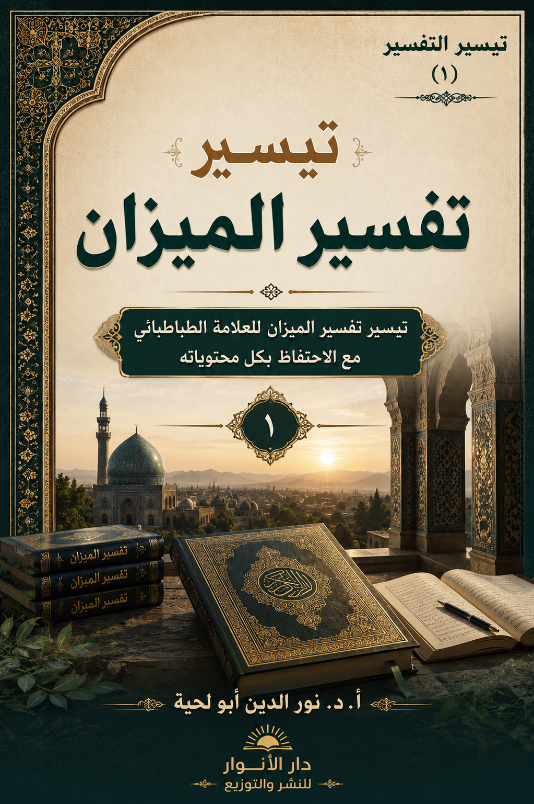

📖 الكتاب: تيسير الميزان الجزء 1
📝 الوصف: تيسير تفسير الميزان للعلامة الطباطبائي مع الحفاظ بكل محتوياته
📚 السلسلة: تيسير التفسير
✍ المؤلف: أ.د. نور الدين أبو لحية
🏢 الناشر: دار الأنوار للنشر والتوزيع
📅 الطبعة: الأولى: 1448 هـ ـ 2026 م
📥 تحميل: هنا
مقدمة السلسلة
تهدف هذه السلسلة إلى تقريب التفاسير القرآنية الكبرى للطوائف الإسلامية المختلفة، وتحديثها، بحيث تتناسب مع القراء بمختلف طبقاتهم، وذلك من خلال إعادة ترتيبها وتنظيمها وتهذيبها، مع الحفاظ على كامل محتوياتها.
وقد دعانا إلى ذلك أننا في كتاب [المفسرون والتفسير التحليلي للقرآن]، الذي جمعنا فيه بين التفاسير الكبرى للطوائف الإسلامية عبر العصور المختلفة، رأينا أن هناك من قد يحتاج إلى مطالعة تفسير معين، وبنفس المنهج الموجود في ذلك الكتاب، ومن خلال التقسيمات نفسها، لذا وضعنا هذه السلسلة لتحقيق هذا الغرض.
وقد جعلنا هدفنا الأكبر منها ـ كما في سلسلة المفسرون والقرآن ـ هو تقريب التفاسير الإسلامية، وتبسيطها، والتقريب بين الطوائف الإسلامية المختلفة، وهو ما يجعل القرآن الكريم الأساس الأكبر للوحدة الإسلامية؛ فالتقريب ـ كما نراه ـ لا يمكن أن يتحقق بالعواطف المجردة، بل يحتاج إلى البينات العلمية الدقيقة، التي تجعله حقيقة واقعة، لا مجرد عواطف وأمزجة وأهواء، قد تتغير في أي لحظة وبأدنى سبب.
ومن الأمثلة على ذلك هذا التفسير المهم الذي بدأنا به، وهو تفسير الميزان للعلامة الطباطبائي؛ فمع كونه من التفاسير الإسلامية الكبرى والعميقة، ويحمل من الرؤى الاجتماعية والإصلاحية والفلسفية ما لا يقل عن تفسير المنار لمحمد رشيد رضا وشيخه محمد عبده، إلا أننا مع ذلك لا نكاد نجد أحداً من أهل السنة يذكره أو يشير إليه، مع أن صاحبه أكمل تفسير القرآن الكريم كاملاً، وطرق جميع المواضيع، بلغة علمية وفلسفية قوية.. لكن الحجب حالت بينهم وبين ذلك.
ومن تلك الحجب ـ بالإضافة إلى الحجب الطائفية ـ منهج المفسر نفسه، إذ فيه من الصعوبة ما يجعله يحتاج إلى الشرح والتوضيح، وهو ما قام به الكثير من المتخصصين من خلال دروس شفوية لا تصل إلى أكثر الناس، أو من خلال الاختصار الذي يخلّ بالكتاب، ويجعله تفسيراً عادياً لا يحمل أي إضافة مهمة.
ولذلك رأينا أن الحل ليس في الشرح، ولا في الاختصار، وإنما في التيسير، وهو منهج يجمع بين الحفاظ على محتوى التفسير كما هو، والتصرف في ذلك المحتوى بطريقة تجعله سهلاً يسيراً من غير أن يفقد شيئاً من مضمونه.
أساليب التيسير:
يعتمد هذا التيسير على أساليب تختلف باختلاف منهج المفسر، ويجمعها جميعاً:
1. التمييز بين التفسير التحليلي للآيات الكريمة، والموضوعات المرتبطة بها، وذلك لتحقيق غرضين:
أ. الأول: أن الموضوعات التي يتناولها المفسرون عادة، ويفيضون فيها بالشرح والتفصيل، لا ترتبط فقط بالآية التي يفسرونها، وإنما بغيرها أيضاً، فمثلاً قصة آدم عليه السلام، مع كونها وردت في مواضع مختلفة، إلا أن المفسرين يذكرون الموضوعات المرتبطة بها في أول ذكر لها في سورة البقرة، ثم يحيلون ما ورد فيها إلى ما سبق ذكره عنها، وأحياناً يختارون مواضع أخرى، بحيث قد يتشوش القارئ أو يقضي وقتاً طويلاً وهو يبحث عنها، ولذلك كانت تلك التفاسير ـ بذلك المنهج ـ تصلح فقط لمن يريد مطالعة التفسير من أوله إلى آخره، لا لمن يريد البحث في آية معينة.
ب. الثاني: أن تلك الموضوعات التي يفيض فيها المفسر، في المواضع التي يختارها، تجعل القارئ يشعر وكأنه يقرأ كتاب فقه أو عقائد أو سلوك، وليس كتاب تفسير، ولذلك اشتهرت العبارة عن تفسير الفخر الرازي من أن فيه كل شيء ما عدا التفسير، مع أن فيه التفسير وما يرتبط به من موضوعات، لكن لاندماجها مع التفسير صارت وكأنها حجاب عنه.
2. وهو الأهم: فهم ما ورد في تلك التفاسير بدقة، لأن أكثر المفسرين يضعون رؤاهم المختلفة في مواضع متفرقة، ويحيلون إليها، وقد لا يحيلون، مما يشوش على القارئ فهم المراد، أو قد يسيء فهمه، ولذلك حاولنا في هذه السلسلة أن نبدأ بما يوضح رؤية المفسر في الموضوعات المختلفة، خاصة تلك التي تتعلق بالتفسير كله، أو بآيات كثيرة، قبل الدخول إلى التفسير الترتيبي والتحليلي للآيات الكريمة، ولم نكتفِ بذلك، بل صنفنا تلك الموضوعات بحسب محتواها، بحيث يتيسر للقارئ الاطلاع على كل ما ذكره المفسر بشأنها.
3. تيسير التعامل مع التفسير من خلال اعتماد منهج موحد، يقوم على تقسيم القرآن الكريم إلى مقاطع، لجميع التفاسير في هذه السلسلة، ووضع عنوان لكل مقطع، ومن خلال كلمات دلالية، تيسر للقارئ الوصول إلى كل الآيات التي تحمل مضامين مشتركة، ذلك أن لكل مفسر في العادة تقسيمه الخاص، الذي قد يعتمد على رؤيته للبناء الموضوعي للآيات الكريمة، وقد لا يعتمد ذلك، وهو ما نشرحه في الهدف الرابع.
4. استخلاص ما ذكره المفسر من البناء الموضوعي لكل سورة، وجعله في بداية كل سورة، مع ما ذكره من أغراضها أو مقاصدها، أو نحو ذلك، وذلك حتى يتيسر للقارئ الاطلاع على رؤية المفسر لمحتوى السورة ومقاطعها قبل اطلاعه على تفسيرها.
5. تيسير التعامل مع التفسير نفسه، من خلال تقسيم ما ذكره المفسر إلى مسائل مضبوطة ومحددة، تعتمد المنهج الحديث من التعداد الرقمي أو الحرفي أو النقطي، وليس على المسائل والبيانات والفصول التي كانت تعتمد سابقاً، والتي قد تتداخل فيما بينها، ولا يدري القارئ في أي مسألة هو، ولا علاقة المسألة بغيرها.
6. مع أننا حاولنا أن نحافظ على محتوى التفاسير كما هو، إلا أننا اضطررنا إلى إضافة بعض الأمور التي تيسر للقارئ الوصول إلى المحتوى من غير تأثير فيه:
أ. وأهمها وضع عناوين في المحال المختلفة، سواء للمقاطع أو للموضوعات، سواء من حيث الجملة أو من حيث التفصيل، ذلك أن العناوين هي التي تيسر للقارئ الوصول إلى المحتوى، بل قد تيسر عليه فهم المراد.
ب. كما أضفنا خلاصات للموضوعات، خاصة إذا كانت طويلة، وجعلناها في مقدمة كل موضوع، لتيسر للقارئ فهم المحتوى.
ج. كما جعلناها في أول التيسير حتى يتسنى للقارئ الاطلاع على رؤى المفسر المختلفة من خلال صفحات معدودة، ليبدأ بالجملة، ثم ينتقل بعدها إلى التفصيل.
ولذلك؛ فإن هدف هذه السلسلة هو وضع منهج محدد للتفاسير، ييسر الوصول إليها جميعاً، من غير مساس بمحتواها، ولا برؤية المفسر.
منهج التيسير:
وهذا المنهج جعلنا نقسم كل تفسير إلى:
1. الموضوعات التفسيرية، وقد قسمناها أيضاً بحسب محتواها إلى عناوين، راعينا فيها الموضوعات المطروحة، كالإلهيات والمعاد والنبوة.. والنواحي الاجتماعية والفقهية وغيرها، وقد بدأنا بها، لأنها المحل الذي يضع فيه المفسر رؤاه، والذي يجعل القارئ يفهم بعد ذلك بدقة ما يذكره المفسر في الموضوعات المختلفة.
2. وضعنا خلاصات تجمع كل الموضوعات، وقسمناها بحسب محتواها، وبدأنا بها كل تفسير، لتيسر للقارئ فهم موقف المفسر من القضايا المختلفة، قبل الدخول إلى تفاصيلها.
3. في بداية كل سورة ذكرنا ما ذكره المؤلف في المحال المختلفة من تفسيره للسورة، عن البناء الموضوعي لها، أو الترابط بين آياتها، حتى يفهم القارئ رؤية المفسر الشاملة للسورة، قبل الدخول في تفاصيل تفسيرها، وهو أيضاً مما يؤثر في جودة فهمه لمراد المفسر، لأن الجملة تسبق التفصيل، والرؤية الكلية توضح التفاصيل الجزئية.
4. قسمنا كل سورة إلى مقاطع قصيرة، موحدة لجميع التفاسير في هذه السلسلة، ووضعنا عنواناً لكل مقطع، أو كلمات دلالية تدل على محتواه، حتى يتيسر للقارئ البحث عن الموضوعات بسهولة ويسر.
5. قسمنا ما ذكره المفسر ـ لا بحسب المنهج الذي اعتمده من المسائل والفصول ونحوها، الذي قد يشوش على القارئ ـ وإنما بحسب التعداد الرقمي والحرفي والنقطي بأنواع مختلفة، مع الإشارة إلى أن التعداد الرقمي يشير إلى المسألة الكبرى، والتعداد الحرفي يشير إلى المسائل المتفرعة عن المسألة الكبرى، والتعداد النقطي يشير إلى المسائل المتفرعة عن التعداد الحرفي، وهكذا.. يمكن للقارئ بدء كل مسألة من محلها المناسب، بالإضافة إلى أنه يمكنه من القراءة السريعة عند البحث عما يريده، إذ يكفيه أن يتنقل بين رؤوس المسائل ليعرف محتواها.
6. نقلنا ما يحتاج إلى نقل من التفسير وغيره إلى المقطع المناسب له، فمثلاً الطباطبائي بعد أن يفسر الآيات الكثيرة، التي يعتبرها مقطعاً، يقوم بذكر ما ورد فيها من الأحاديث والآثار، ويعلق عليها، مما يشوش على القارئ، ويجعله لا يعرف المحل الذي يرتبط به ذلك الحديث أو الأثر، ولذلك قمنا بنقلها إلى محالها المرتبطة بها، أمام كل آية، وفي نهاية كل مقطع قصير.
7. عند نقلنا للموضوعات التي يذكرها المفسر، نقوم بالتنبيه لذلك، ووضع ملخص لما ذكره، حتى نجمع بين التفريق بين التفسير التحليلي والموضوعي، وفي نفس الوقت معرفة ما يريده المفسر، وباختصار.
مقدمة تيسير الميزان
لا شك في أهمية [تفسير الميزان]، واعتباره من أكبر التفاسير المعاصرة للقرآن الكريم، وذلك من جوانب مختلفة:
1. أولها: أنه يكاد يمثل طائفة كبرى من طوائف المسلمين، وهي الشيعة الإمامية، بحيث يمكن اعتباره المعبِّر الرسمي عنها، فقد جمع ما ذكره المفسرون السابقون، ابتداءً من التفسير المأثور عن أئمة الإمامية، وانتهاءً بمتأخريهم، وأضاف إليها التحليل والتحقيق والنقد، وهو ما يجعله مرجعاً أساسياً للتعرف على فهم هذه الطائفة للقرآن الكريم، ويرد في الوقت نفسه على شبهات المغرضين.
2. ثانيها: أنه ـ مع كونه من الشيعة الإمامية ـ إلا أنه اهتم بالدرجة الأولى بالتحقيق في فهم الآيات القرآنية، ومن خلال القرآن الكريم نفسه، ولذلك نراه ينتقد بعض ما ورد في الآثار المروية عن الأئمة مما لا يتناسب مع ما تذكره الآيات الكريمة، أو يفسره تفسيراً لا يتعارض معها، وهو يطبِّق بذلك ما ورد في الأحاديث والآثار من العرض على القرآن.
3. ثالثها: أنه ـ عند تفسيره أو تحقيقاته القرآنية ـ لم ينحصر ضمن علماء طائفته، بل تعداه إلى غيرهم، سواء من المتقدمين أو المتأخرين، سواء بالاستفادة مما ذكروه وتأييده، أو بمناقشته ونقده، ولذلك يمكن اعتباره من التفاسير الكبرى للأمة جميعاً، وليس خاصاً بطائفة دون غيرها، إذ لا يكاد أحد يكتشف كونه من الطائفة الإمامية إلا في المباحث الروائية، أو في بعض المباحث المحدودة التي حصل فيها الخلاف بين الإمامية وغيرهم.
4. رابعها: أنه ـ باعتباره فيلسوفاً كبيراً ـ يذكر في كل موضع ما يهدي إليه التدبر العقلي في فهم الآيات الكريمة، سواء كآيات مستقلة، أو من خلال ارتباطها بالآيات الكريمة الأخرى، أو بالسورة جميعاً، أو بالقرآن الكريم كله.
5. خامسها: أنه ـ لاطلاعه على الفلسفات القديمة والحديثة والرؤى الغربية والمادية ـ نجده يذكر مقارنات مهمة، ويفهم من خلالها المصاديق المختلفة التي يمكن أن تطبق عليها الآيات الكريمة، ولذلك يمكن اعتبار تفسيره تفسيراً عصرياً، وإن كان منهجه قديماً وتقليدياً.
وبناءً على ما ذكرناه في مقدمة السلسلة، فقد كان عملنا في هذا التيسير كما يلي:
1. استخراج كل المواضع التي ذكرها المفسر أثناء تفسيره، باعتبارها مباحث فلسفية أو تاريخية أو قرآنية، ووضعها في أول الكتاب، لعدم ارتباطها فقط بالآيات التي فسرها، وإنما بغيرها من الآيات الكريمة، فالمباحث التي وضعها حول الأنبياء عليهم السلام، والتي تفرقت في المواضع المختلفة في كل تفسيره، جمعناها في موضع واحد، وفي فصل واحد، وهو الفصل الخاص بالأنبياء والقصص القرآني، وكذلك المواضع المرتبطة بالإلهيات أو المعاد أو السلوك والأخلاق أو الحقيقة الإنسانية.. وغيرها.
2. رأينا أنه أثناء تفسيره لبعض الآيات الكريمة، التي يعتبرها من غرر الآيات، يفصل فيها، بحيث يمكن اعتبار ما ذكره مبحثاً من المباحث، وليس مجرد تفسير تحليلي، ولذلك نقلناها إلى الموضوعات، خاصة وأنها ترتبط بكل التفسير، كما ترتبط بتوضيح رؤية المؤلف لتلك الموضوعات.
3. وضعنا ملخصاً لكل موضوع، جعلناه في مقدمته، ثم جمعنا تلك الموضوعات جميعاً، وبحسب تصنيفها، ووضعناها في أول الكتاب، بحيث يتيسر للقارئ معرفة رؤى الطباطبائي في الموضوعات المختلفة.
4. وبما أن المباحث كانت كثيرة، تجاوزت 300 مبحث، فقد خصصناها للأجزاء الثلاثة الأولى من الكتاب، ويمكن لمن اطلع عليها بتركيز أن يدخل إلى التفسير وهو يعرف رؤية المفسر ومواقفه بدقة، وهو ما ييسر عليه فهم تحليلاته المختلفة المرتبطة بكل آية، وهذه هي عناوين الموضوعات الكبرى التي قسمنا على أساسها المباحث:
أولاً: التوحيد والأسماء والصفات.
ثانياً: السنن والقوانين الإلهية.
ثالثاً: المعاد وقوانين الجزاء.
رابعاً: القرآن والكلام الإلهي.
خامساً: النبوة والمعجزات والعصمة.
سادساً: الأنبياء والقصص القرآني.
سابعاً: الإمامة والصراط المستقيم.
ثامناً: الملائكة والجن والإنسان.
تاسعاً: الروح والحقيقة الإنسانية.
عاشراً: العقل والمناهج الفكرية.
الحادي عشر: الملل والأهواء.
الثاني عشر: الأخلاق والسلوك.
الثالث عشر: الشريعة والفقه.
الرابع عشر: المجتمع والدولة.
5. خصصنا الأجزاء التسعة التالية للتفسير التحليلي والموضوعي، وقد بدأنا كل سورة بما ذكره من أغراضها ومقاصدها، ثم ذكرنا بياناته المرتبطة بكل مقطع، وما لم يذكره ذكرناه باختصار، مع بيان أنه لم يذكر قوله فيه.
6. قسمنا تفسيره لكل سورة إلى مقاطع، بعناوين تدل على محتواها، ثم قسمنا تفسيره لها إلى مسائل مرقَّمة بالأرقام، وما تفرع عنها رقمناه بالتعداد الحرفي والنقطي، كما أشرنا إلى ذلك سابقاً.
7. استخرجنا المباحث الروائية التي يذكرها في نهاية المقاطع الطويلة التي وضعها، وضممناها إلى محالها المناسبة لها من المقاطع الجديدة القصيرة، وعنونَّاها بـ [أحاديث وآثار].
8. ما لم يفسره الطباطبائي من الآيات، أو لم يذكره من بيانات المقاطع، ذكرناه باختصار، مع التنبيه إلى أنه لم يذكره.
مقدمة تفسير الميزان
خلاصة ما ذكره الطباطبائي في مقدمة الكتاب «الميزان: 1/5»:
أ. التفسير من أقدم الاشتغالات العلمية لدى المسلمين، بدأ من عصر نزول القرآن، وكانت الطبقة الأولى من المفسرين جماعة من الصحابة (عدا علياً وأهل بيته)، ثم التابعين، وكان البحث يومئذ لا يتجاوز بيان ما يرتبط بالآيات من جهات أدبية وشأن نزول وقليل من التفسير بالروايات.
ب. مع مرور الزمن، دخلت في التفسير مسالك متعددة: مسلك المحدثين (الاقتصار على الرواية)، ومسلك المتكلمين (تطبيق الآيات على المذاهب الكلامية)، ومسلك الفلاسفة (تأويل الآيات بما يوافق الفرضيات الفلسفية)، ومسلك المتصوفة (الاقتصار على التأويل ورفض التنزيل)، ومسلك الحسيين الجدد (تفسير القرآن بما يوافق العلوم التجريبية)
ج. جميع هذه المسالك تشترك في نقص واحد: تحميل ما أنتجته الأبحاث العلمية أو الفلسفية من خارج على مداليل الآيات، فيتحول التفسير إلى تطبيق، وتصبح حقائق القرآن مجازات، وتنزيل الآيات تأويلات، مما يجعل القرآن بحاجة إلى غيره ليكون هدى ونوراً وتبياناً.
د. القرآن كلام عربي مبين، لا توجد فيه آية ذات إغلاق أو تعقيد في مفهومها، وإنما الاختلاف كله في المصداق الذي ينطبق عليه المفاهيم اللفظية، وذلك بسبب أن العادة والأنس يسبقان إلى أذهاننا المعاني المادية عند استماع الألفاظ، في حين أن القرآن يريد حقائق أسمى.
هـ. الطريق الصحيح في التفسير هو تفسير القرآن بالقرآن، بالتدبر المندوب إليه في نفس القرآن، والاستعانة ببيان النبي وعترته ﴿أَهْلَ الْبَيْتِ﴾ الذين هم الثقل الثاني، والذين أذهب الله عنهم الرجس وطهرهم تطهيراً، وقد كانت طريقتهم في التعليم والتفسير هي هذه الطريقة بعينها.
و. هذا الكتاب (الميزان) يسير على هذه الطريقة: تفسير القرآن بالقرآن، والاستعانة بالروايات عن النبي وأهل البيت، والاجتناب عن الركون إلى حجة نظرية فلسفية أو فرضية علمية أو مكاشفة عرفانية، والاعتماد على البيانات الأدبية والمقدمات البديهية.
نص المقدمة:
1. التفسير عبر التاريخ (المسالك المتعددة):
أ. التفسير (وهو بيان معاني الآيات القرآنية والكشف عن مقاصدها ومداليلها) من أقدم الاشتغالات العلمية التي تُعهد من المسلمين، فقد شرع تاريخ هذا النوع من البحث والتنقير المسمى بالتفسير من عصر نزول القرآن كما يظهر من قوله تعالى وتقدس: ﴿كَمَا أَرْسَلْنَا فِيكُمْ رَسُولًا مِنْكُمْ يَتْلُو عَلَيْكُمْ آيَاتِنَا وَيُزَكِّيكُمْ وَيُعَلِّمُكُمُ الْكِتَابَ وَالْحِكْمَةَ﴾ [البقرة: 151]
ب. الطبقة الأولى (الصحابة والتابعون):
• وكانت الطبقة الأولى من مفسري المسلمين جماعة من الصحابة (والمراد بهم غير علي عليه السلام، فإن له وللأئمة من ولده نبأ آخر سنتعرض له) كابن عباس وعبد الله بن عمر وأبي وغيرهم اعتنوا بهذا الشأن، وكان البحث يومئذ لا يتجاوز عن بيان ما يرتبط من الآيات بجهاتها الأدبية وشأن النزول وقليل من الاستدلال بآية على آية وكذلك قليل من التفسير بالروايات المأثورة عن النبي صلّى الله عليه وآله وسلّم في القصص ومعارف المبدء والمعاد وغيرها.
• وعلى هذا الوصف جرى الحال بين المفسرين من التابعين كمجاهد وقتادة وابن أبي ليلى والشعبي والسدي وغيرهم في القرنين الأولين من الهجرة، فإنهم لم يزيدوا على طريقة سلفهم من مفسري الصحابة شيئاً غير أنهم زادوا من التفسير بالروايات (وبينها روايات دسها اليهود أو غيرهم)، فأوردوها في القصص والمعارف الراجعة إلى الخلقة كابتداء السماوات وتكوين الأرض والبحار وإرم شداد وعثرات الأنبياء تحريف الكتاب وأشياء أخرى من هذا النوع، وقد كان يوجد بعض ذلك في المأثور عن الصحابة من التفسير والبحث.
ج. الأسباب المؤدية إلى تعدد المسالك: ثم استوجب شيوع البحث الكلامي بعد النبي صلّى الله عليه وآله وسلّم في زمن الخلفاء باختلاط المسلمين بالفرق المختلفة من أمم البلاد المفتوحة بيد المسلمين وعلماء الأديان والمذاهب المتفرقة من جهة، ونقل فلسفة يونان إلى العربية في السلطنة الأموية أواخر القرن الأول من الهجرة، ثم في عهد العباسيين، وانتشار البحث العقلي الفلسفي بين الباحثين من المسلمين من جهة أخرى ثانية، وظهور التصوف مقارناً لانتشار البحث الفلسفي وتمايل الناس إلى نيل المعارف الدينية من طريق المجاهدة والرياضة النفسانية دون البحث اللفظي والعقلي من جهة أخرى ثالثة، وبقاء جمع من الناس وهم أهل الحديث على التعبد المحض بالظواهر الدينية من غير بحث إلا عن اللفظ بجهاتها الأدبية من جهة أخرى رابعة، أن اختلف الباحثون في التفسير في مسالكهم بعد ما عمل فيهم الانشعاب في المذاهب ما عمل، ولم يبق بينهم جامع في الرأي والنظر إلا لفظ لا إله إلا الله ومحمد رسول الله صلّى الله عليه وآله وسلّم واختلفوا في معنى الأسماء والصفات والأفعال والسماوات وما فيها والأرض وما عليها والقضاء والقدر والجبر والتفويض والثواب والعقاب وفي الموت وفي البرزخ والبعث والجنة والنار، وبالجملة في جميع ما تمسه الحقائق والمعارف الدينية ولو بعض المس، فتفرقوا في طريق البحث عن معاني الآيات، وكل يتَحفَّظُ على متن ما اتخذه من المذهب والطريقة.
2. مسالك المفسرين ونقدها:
أ. مسلك المحدثين: أما المحدثون، فاقتصروا على التفسير بالرواية عن السلف من الصحابة والتابعين فساروا وجدوا في السير حيث ما يسير بهم المأثور ووقفوا فيما لم يؤثر فيه شيء ولم يظهر المعنى ظهوراً لا يحتاج إلى البحث أخذاً بقوله تعالى: ﴿وَالرَّاسِخُونَ فِي الْعِلْمِ يَقُولُونَ آمَنَّا بِهِ كُلٌّ مِنْ عِنْدِ رَبِّنَا﴾ [آل عمران: 7]، وقد أخطأوا في ذلك فإن الله سبحانه لم يبطل حجة العقل في كتابه، وكيف يعقل ذلك وحجيّته إنما تثبت به! ولم يجعل حجية في أقوال الصحابة والتابعين وأنظارهم على اختلافها الفاحش، ولم يدع إلى السفسطة بتسليم المتناقضات والمتنافيات من الأقوال، ولم يندب إلا إلى التدبر في آياته، فرفع به أي اختلاف يتراءى منها، وجعله هدى ونوراً وتبياناً لكل شيء، فما بال النور يستنير بنور غيره! وما شأن الهدى يهتدى بهداية سواه! وكيف يتبين ما هو تبيان كل شيء بشيء دون نفسه!
ب. مسلك المتكلمين: وأما المتكلمون فقد دعاهم الأقوال المذهبية على اختلافها أن يسيروا في التفسير على ما يوافق مذاهبهم بأخذ ما وافق وتأويل ما خالف، على حسب ما يجوزه قول المذهب، واختيار المذاهب الخاصة واتخاذ المسالك والآراء المخصوصة وإن كان معلولاً لاختلاف الأنظار العلمية أو لشيء آخر كالتقاليد والعصبيات القومية، وليس هاهنا محل الاشتغال بذلك، إلا أن هذا الطريق من البحث أحرى به أن يسمى تطبيقاً لا تفسيراً، ففرق بين أن يقول الباحث عن معنى آية من الآيات: (ماذا يقول القرآن؟) أو يقول: (ماذا يجب أن نحمل عليه الآية؟)، فإن القول الأول يوجب أن ينسى كل أمر نظري عند البحث، وأن يتكى على ما ليس بنظري، والثاني يوجب وضع النظريات في المسئلة وتسليمها وبناء البحث عليها، ومن المعلوم أن هذا النحو من البحث في الكلام ليس بحثاً عن معناه في نفسه.
ج. مسلك الفلاسفة: وأما الفلاسفة، فقد عرض لهم ما عرض للمتكلمين من المفسرين من الوقوع في ورطة التطبيق وتأويل الآيات المخالفة بظاهرها للمسلمات في فنون الفلسفة بالمعنى الأعم أعني الرياضيات والطبيعيات والإلهيات والحكمة العملية، وخاصة المشائين، وقد تأولوا الآيات الواردة في حقائق ما وراء الطبيعة وآيات الخلقة وحدوث السموات والأرض وآيات البرزخ وآيات المعاد، حتى أنهم ارتكبوا التأويل في الآيات التي لا تلائم الفرضيات والاصول الموضوعة التي نجدها في العلم الطبيعي من نظام الأفلاك الكلية والجزئية وترتيب العناصر والأحكام الفلكية والعنصرية إلى غير ذلك، مع أنهم نصوا على أن هذه الأنظار مبتنية على أصول موضوعة لا بينة ولا مبينة.
د. مسلك المتصوفة: وأما المتصوفة، فإنهم لاشتغالهم بالسير في باطن الخلقة واعتنائهم بشأن الآيات الأنفسية دون عالم الظاهر وآياته الآفاقية اقتصروا في بحثهم على التأويل، ورفضوا التنزيل، فاستلزم ذلك اجتراء الناس على التأويل، وتلفيق جمل شعرية والاستدلال من كل شيء على كل شيء، حتى آل الأمر إلى تفسير الآيات بحساب الجمل ورد الكلمات إلى الزبر والبينات والحروف النورانية والظلمانية إلى غير ذلك، ومن الواضح أن القرآن لم ينزل هدى للمتصوفة خاصة، ولا أن المخاطبين به هم أصحاب علم الأعداد والأوفاق والحروف، ولا أن معارفه مبنية على أساس حساب الجمل الذي وضعه أهل التنجيم بعد نقل النجوم من اليونانية وغيرها إلى العربية، نعم قد وردت روايات عن النبي صلّى الله عليه وآله وسلّم وأئمة أهل البيت عليهم السلام كقولهم: (إن للقرآن ظهراً وبطناً ولبطنه بطناً إلى سبعة أبطن أو إلى سبعين بطناً) الحديث، لكنهم عليه السلام اعتبروا الظهر كما اعتبروا البطن، واعتنوا بأمر التنزيل كما اعتنوا بشأن التأويل، وسنبين في أوائل سورة آل عمران إن شاء الله: أن التأويل الذي يراد به المعنى المقصود الذي يخالف ظاهر الكلام من اللغات المستحدثة في لسان المسلمين بعد نزول القرآن وانتشار الإسلام، وأن الذي يريده القرآن من لفظ التأويل فيما ورد فيه من الآيات ليس من قبيل المعنى والمفهوم.
هـ. المسلك الحديث (الحسيون): وقد نشأ في هذه الأعصار مسلك جديد في التفسير وذلك أن قوماً من منتحلي الإسلام في أثر توغلهم في العلوم الطبيعية وما يشابهها المبتنية على الحس والتجربة، والاجتماعية المبتنية على تجربة الإحصاء، مالوا إلى مذهب الحسيين من فلاسفة الأوروبه سابقاً، أو إلى مذهب أصالة العمل (لا قيمة للإدراكات إلا ترتب العمل عليها بمقدار يعينه الحاجة الحيوية بحكم الجبر)، فذكروا: أن المعارف الدينية لا يمكن أن تخالف الطريق الذي تصدقه العلوم وهو أن (لا أصالة في الوجود إلا للمادة وخواصها المحسوسة) فما كان الدين يخبر عن وجوده مما يكذب العلوم ظاهره كالعرش والكرسي واللوح والقلم يجب أن يؤول تأويلاً، وما يخبر عن وجوده مما لا تتعرض العلوم لذلك كحقائق المعاد يجب أن يوجه بالقوانين المادية، وما يتكى عليه التشريع من الوحي والملك والشيطان والنبوة والرسالة والإمامة وغير ذلك، إنما هي أمور روحية، والروح مادية ونوع من الخواص المادية، والتشريع نبوغ خاص اجتماعي يبني قوانينه على الأفكار الصالحة، لغاية إيجاد الاجتماع الصالح الراقي، ذكروا: أن الروايات، لوجود الخليط فيها لا تصلح للاعتماد عليها، إلا ما وافق الكتاب، وأما الكتاب فلا يجوز أن يُبنى في تفسيره على الآراء والمذاهب السابقة المبتنية على الاستدلال من طريق العقل الذي أبطله العلم بالبناء على الحس والتجربة، بل الواجب أن يستقل بما يعطيه القرآن من التفسير إلا ما بينه العلم.
3. النقد العام لجميع المسالك:
أ. التحويل من تفسير إلى تطبيق: هذه جمل ما ذكروه أو يستلزمه ما ذكروه، من اتباع طريق الحس والتجربة، فساقهم ذلك إلى هذا الطريق من التفسير، ولا كلام لنا هاهنا في أصولهم العلمية والفلسفية التي اتخذوها أصولاً وبنوا عليها ما بنوا، وإنما الكلام في أن ما أوردوه على مسالك السلف من المفسرين (أن ذلك تطبيق وليس بتفسير) وارد بعينه على طريقتهم في التفسير، وإن صرحوا أنه حق التفسير الذي يفسر به القرآن بالقرآن، ولو كانوا لم يُحملوا على القرآن في تحصيل معاني آياته شيئاً، فما بالهم يأخذون الأنظار العلمية مسلمة لا يجوز التعدي عنها؟ فهم لم يزيدوا على ما أفسده السلف إصلاحاً، وأنت بالتأمل في جميع هذه المسالك المنقولة في التفسير تجد: أن الجميع مشتركة في نقص وبئس النقص، وهو تحميل ما أنتجته الأبحاث العلمية أو الفلسفية من خارج على مداليل الآيات، فتبدل به التفسير تطبيقاً وسُمي به التطبيق تفسيراً، وصارت بذلك حقائق من القرآن مجازات، وتنزيل عدة من الآيات تأويلات، ولازم ذلك (كما أومأنا إليه في أوائل الكلام) أن يكون القرآن الذي يعرّف نفسه (بأنه هدى للعالمين ونور مبين وتبيان لكل شيء) مهدياً إليه بغيره ومستنيراً بغيره ومبيناً بغيره، فما هذا الغير! وما شأنه! وبماذا يهدي إليه! وما هو المرجع والملجأ إذا اختلف فيه! وقد اختلف واشتد الخلاف.
ب. القرآن كلام عربي مبين: وكيف كان فهذا الاختلاف لم يولده اختلاف النظر في مفهوم (مفهوم اللفظ المفرد أو الجملة بحسب اللغة والعرف العربي) الكلمات أو الآيات، فإنما هو كلام عربي مبين لا يتوقف في فهمه عربي ولا غيره ممن هو عارف باللغة وأساليب الكلام العربي، وليس بين آيات القرآن (وهي بضع آلاف آية) آية واحدة ذات إغلاق وتعقيد في مفهومها بحيث يتحير الذهن في فهم معناها، وكيف! وهو أفصح الكلام ومن شرط الفصاحة خلو الكلام عن الإغلاق والتعقيد، حتى أن الآيات المعدودة من متشابه القرآن كالآيات المنسوخة وغيرها، في غاية الوضوح من جهة المفهوم، وإنما التشابه في المراد منها وهو ظاهر.
ج. الاختلاف في المصداق لا في المفهوم: وإنما الاختلاف كل الاختلاف في المصداق الذي ينطبق عليه المفاهيم اللفظية من مفردها ومركبها، وفي المدلول التصوري والتصديقي، توضيحه: أن الأنس والعادة (كما قيل) يوجبان لنا أن يسبق إلى أذهاننا عند استماع الألفاظ معانيها المادية أو ما يتعلق بالمادة فإن المادة هي التي يتقلب فيها أبداننا وقوانا المتعلقة بها ما دمنا في الحياة الدنيوية، فإذا سمعنا ألفاظ الحياة والعلم والقدرة والسمع والبصر والكلام والإرادة والرضا والغضب والخلق والأمر كان السابق إلى أذهاننا منها الوجودات المادية لمفاهيمها، وكذا إذا سمعنا ألفاظ السماء والأرض واللوح والقلم والعرش والكرسي والملك وأجنحته والشيطان وقبيله وخيله ورجله إلى غير ذلك، كان المتبادر إلى أفهامنا مصاديقها الطبيعية، وإذا سمعنا: (إن الله خلق العالم وفعل كذا وعلم كذا وأراد أو يريد أو شاء أو يشاء كذا) قيدنا الفعل بالزمان حملاً على المعهود عندنا، وإذا سمعنا نحو قوله: ﴿وَلَدَيْنَا مَزِيدٌ﴾ [ق: 35]، وقوله: ﴿لَاتَّخَذْنَاهُ مِنْ لَدُنَّا﴾ [الأنبياء: 22]، وقوله: ﴿وَمَا عِنْدَ اللَّهِ خَيْرٌ﴾ [آل عمران: 198]، وقوله: ﴿إِلَيْهِ تُرْجَعُونَ﴾ [البقرة: 245]، قيدنا معنى الحضور بالمكان، وإذا سمعنا نحو قوله: ﴿إِذَا أَرَدْنَا أَنْ نُهْلِكَ قَرْيَةً أَمَرْنَا مُتْرَفِيهَا﴾ [الإسراء: 16]، أو قوله: ﴿وَنُرِيدُ أَنْ نَمُنَّ﴾ [القصص: 5]، أو قوله: ﴿يُرِيدُ اللَّهُ بِكُمُ الْيُسْرَ﴾ [البقرة: 185]، فهمنا أن الجميع سنخ واحد من الإرادة، لما أن الأمر على ذلك فيما عندنا، وعلى هذا القياس، وهذا شأننا في جميع الألفاظ المستعملة، ومن حقنا ذلك، فإن الذي أوجب علينا وضع ألفاظ إنما هي الحاجة الاجتماعية إلى التفهيم والتفهم، والاجتماع إنما تعلق به الإنسان ليستكمل به في الأفعال المتعلقة بالمادة ولواحقها، فوضعنا الألفاظ علامات لمسمياتها التي نريد منها غايات وأغراضاً عائدة إلينا.
د. تغير المسميات وبقاء الأسماء: وكان ينبغي لنا أن نتنبه: أن المسميات المادية محكومة بالتغير والتبدل بحسب تبدل الحوائج في طريق التحول والتكامل كما أن السراج أول ما عمله الإنسان كان إناء فيه فتيلة وشيء من الدهن تشتعل به الفتيلة للاستضائه به في الظلمة، ثم لم يزل يتكامل حتى بلغ اليوم إلى السراج الكهربائي ولم يبق من أجزاء السراج المعمول أولاً الموضوع بإزائه لفظ السراج شيء ولا واحد، وكذا الميزان المعمول أولاً، والميزان المعمول اليوم لتوزين ثقل الحرارة مثلاً، والسلاح المتخذ سلاحاً أول يوم، والسلاح المعمول اليوم إلى غير ذلك، فالمسميات بلغت في التغير إلى حيث فقد تجميع أجزائها السابقة ذاتاً وصفة والاسم مع ذلك باق، وليس إلا لأن المراد في التسمية إنما هو من الشيء غايته، لا شكله وصورته، فما دام غرض التوزين أو الاستضائة أو الدفاع باقياً كان اسم الميزان والسراج والسلاح وغيرها باقياً على حاله، فكان ينبغي لنا أن نتنبه أن المدار في صدق الاسم اشتمال المصداق على الغاية والغرض، لا جمود اللفظ على صورة واحدة، فذلك مما لا مطمع فيه البتة، ولكن العادة والأنس منعانا ذلك، وهذا هو الذي دعا المقلدة من أصحاب الحديث من الحشوية والمجسمة أن يجمدوا على ظواهر الآيات في التفسير وليس في الحقيقة جموداً على الظواهر بل هو جمود على العادة والأنس في تشخيص المصاديق.
هـ. التنبيهات القرآنية: لكن بين هذه الظواهر أنفسها أمور تبيّن أن الاتكاء والاعتماد على الأنس والعادة في فهم معاني الآيات يشوش المقاصد منها ويختل به أمر الفهم، كقوله تعالى: ﴿لَيْسَ كَمِثْلِهِ شَيْءٌ﴾ [الشورى: 11]، وقوله: ﴿لا تُدْرِكُهُ الْأَبْصَارُ وَهُوَ يُدْرِكُ الْأَبْصَارَ وَهُوَ اللَّطِيفُ الْخَبِيرُ﴾ [الأنعام: 103]، وقوله: ﴿سُبْحَانَ اللَّهِ عَمَّا يَصِفُونَ﴾ [الصافات: 159]، وهذا هو الذي دعا الناس أن لا يقتصروا على الفهم العادي والمصداق المأنوس به الذهن في فهم معاني الآيات كما كان غرض الاجتناب عن الخطاء والحصول على النتائج المجهولة هو الذي دعا الإنسان إلى أن يتمسك بذيل البحث العلمي، وأجاز ذلك للبحث أن يداخل في فهم حقائق القرآن وتشخيص مقاصده العالية، وذلك على أحد وجهين:
• أحدهما: أن نبحث بحثاً علمياً أو فلسفياً أو غير ذلك عن مسئلة من المسائل التي تتعرض له الآية حتى نقف على الحق في المسئلة، ثم نأتي بالآية ونحملها عليه، وهذه طريقة يرتضيها البحث النظري، غير أن القرآن لا يرتضيها كما عرفت.
• وثانيهما: أن نفسر القرآن بالقرآن ونستوضح معنى الآية من نظيرتها بالتدبر المندوب إليه في نفس القرآن، ونشخص المصاديق ونتعرفها بالخواص التي تعطيها الآيات، كما قال تعالى: ﴿وَنَزَّلْنَا عَلَيْكَ الْكِتَابَ تِبْيَاناً لِكُلِّ شَيْءٍ﴾ [النحل: 89]، وحاشا أن يكون القرآن تبياناً لكل شيء ولا يكون تبياناً لنفسه، وقال تعالى: ﴿هُدىً لِلنَّاسِ وَبَيِّنَاتٍ مِنَ الْهُدى وَالْفُرْقَانِ﴾ [البقرة: 185]، وقال تعالى: ﴿وَأَنْزَلْنَا إِلَيْكُمْ نُوراً مُبِيناً﴾ [النساء: 174]، وكيف يكون القرآن هدىً وبيّنة وفرقاناً ونوراً مبيناً للناس في جميع ما يحتاجون ولا يكفيهم في احتياجهم إليه وهو أشد الاحتياج! وقال تعالى: ﴿وَالَّذِينَ جَاهَدُوا فِينَا لَنَهْدِيَنَّهُمْ سُبُلَنَا﴾ [العنكبوت: 69]، وأي جهاد أعظم من بذل الجهد في فهم كتابه! وأي سبيل أهدى إليه من القرآن! والآيات في هذا المعنى كثيرة سنستفرغ الوسع فيها في بحث المحكم والمتشابه في أوائل سورة آل عمران.
4. الطريق الصحيح في التفسير (تفسير القرآن بالقرآن والاستعانة بالعترة):
أ. الاستعانة بالنبي وعترته: ثم إن النبي صلّى الله عليه وآله وسلّم الذي علّمه القرآن وجعله معلماً لكتابه كما يقول تعالى: ﴿نَزَلَ بِهِ الرُّوحُ الْأَمِينُ عَلَى قَلْبِكَ﴾ [الشعراء: 193 ـ 194]، ويقول: ﴿وَأَنْزَلْنَا إِلَيْكَ الذِّكْرَ لِتُبَيِّنَ لِلنَّاسِ مَا نُزِّلَ إِلَيْهِمْ﴾ [النحل: 44]، ويقول: ﴿يَتْلُو عَلَيْهِمْ آيَاتِهِ وَيُزَكِّيهِمْ وَيُعَلِّمُهُمُ الْكِتَابَ وَالْحِكْمَةَ﴾ [الجمعة: 2]، وعترته وأهل بيته الذين أقامهم النبي صلّى الله عليه وآله وسلّم هذا المقام في الحديث المتفق عليه بين الفريقين: (إني تارك فيكم الثقلين، ما إن تمسكتم بهما لن تضلوا بعدي أبداً، كتاب الله وعترتي أهل بيتي، وأنهما لن يفترقا حتى يردا علي الحوض)، وصدقه الله في علمهم بالقرآن، حيث قال عز من قائل: ﴿إِنَّمَا يُرِيدُ اللَّهُ لِيُذْهِبَ عَنْكُمُ الرِّجْسَ أَهْلَ الْبَيْتِ وَيُطَهِّرَكُمْ تَطْهِيراً﴾ [الأحزاب: 33]، وقال: ﴿إِنَّهُ لَقُرْآنٌ كَرِيمٌ فِي كِتَابٍ مَكْنُونٍ لا يَمَسُّهُ إِلَّا الْمُطَهَّرُونَ﴾ [الواقعة: 77 ـ 79]، وقد كانت طريقتهم في التعليم والتفسير هذه الطريقة بعينها على ما وصل إلينا من أخبارهم في التفسير، وسنورد ما تيسر لنا مما نقل عن النبي صلّى الله عليه وآله وسلّم وأئمة أهل بيته في ضمن أبحاث روائية في هذا الكتاب، ولا يعثر المتتبع الباحث فيها على مورد واحد يستعان فيه على تفسير الآية بحجة نظرية عقلية، ولا فرضية علمية.
ب. أقوال النبي وعلي عليه السلام: وقد قال النبي صلّى الله عليه وآله وسلّم: (فإذا التبست عليكم الفتن كقطع الليل المظلم، فعليكم بالقرآن فإنه شافع مشفع وما حل مصدق، من جعله إمامه قاده إلى الجنة، ومن جعله خلفه ساقه إلى النار، وهو الدليل يدل على خير سبيل، وهو كتاب تفصيل وبيان وتحصيل، وهو الفصل ليس بالهزل، وله ظهر وبطن، فظاهره حكمة وباطنه علم، ظاهره أنيق وباطنه عميق، له نجوم وعلى نجومه نجوم، لا تحصى عجائبه ولا تبلى غرائبه، فيه مصابيح الهدى ومنار الحكمة، ودليل على المعروف لمن عرف النصفة، فليرع رجل بصره، وليبلغ الصفة نظره ينجو من عطب ويخلص من نشب، فإن التفكر حياة قلب البصير، كما يمشي المستنير في الظلمات بالنور، يحسن التخلص ويقل التربص)، وقال علي عليه السلام يصف القرآن على ما في النهج: (ينطق بعضه ببعض ويشهد بعضه على بعض)، هذا هو الطريق المستقيم والصراط السوي الذي سلكه معلمو القرآن وهداته صلوات الله عليهم.
5. منهج هذا الكتاب (الميزان في التفسير):
أ. الطريقة المتبعة: وسنضع ما تيسر لنا بعون الله سبحانه من الكلام على هذه الطريقة في البحث عن الآيات الشريفة في ضمن بيانات، قد اجتنبنا فيها عن أن نركن إلى حجة نظرية فلسفية أو إلى فرضية علمية، أو إلى مكاشفة عرفانية، واحترزنا فيها عن أن نضع نكتة أدبية يحتاج إليها فهم الأسلوب العربي، أو مقدمة بديهية أو عملية لا يختلف فيها الأفهام.
ب. المعارف التي تتحصل من هذه الطريقة: وقد تحصل من هذه البيانات الموضوعة على هذه الطريقة من البحث استفراغ الكلام فيما نذكره:
• المعارف المتعلقة بأسماء الله سبحانه وصفاته من الحياة والعلم والقدرة والسمع والبصر والوحدة وغيرها، وأما الذات فستطلع أن القرآن يراه غنياً عن البيان.
• المعارف المتعلقة بأفعاله تعالى من الخلق والأمر والإرادة والمشية والهداية والإضلال والقضاء والقدر والجبر والتفويض والرضا والسخط، إلى غير ذلك من متفرقات الأفعال.
• المعارف المتعلقة بالوسائط الواقعة بينه وبين الإنسان كالحجب واللوح والقلم والعرش والكرسي والبيت المعمور والسماء والأرض والملائكة والشياطين والجن وغير ذلك.
• المعارف المتعلقة بالإنسان قبل الدنيا.
• المعارف المتعلقة بالإنسان في الدنيا كمعرفة تاريخ نوعه ومعرفة نفسه ومعرفة أصول اجتماعه ومعرفة النبوة والرسالة والوحي والإلهام والكتاب والدين والشريعة، ومن هذا الباب مقامات الأنبياء المستفادة من قصصهم المحكية.
• المعارف المتعلقة بالإنسان بعد الدنيا، وهو البرزخ والمعاد.
• المعارف المتعلقة بالأخلاق الإنسانية، ومن هذا الباب ما يتعلق بمقامات الأولياء في صراط العبودية من الإسلام والإيمان والإحسان والإخبات والإخلاص وغير ذلك.
• وأما آيات الأحكام، فقد اجتنبنا تفصيل البيان فيها لرجوع ذلك إلى الفقه.
ج. ثمرة هذه الطريقة: وقد أفادت هذه الطريقة من البحث ارتفاع التأويل بمعنى الحمل على المعنى المخالف للظاهر من بين الآيات، وأما التأويل بالمعنى الذي يثبته القرآن في مواضع من الآيات، فسترى أنه ليس من قبيل المعاني.
د. الأبحاث الروائية والموضوعات الإضافية: ثم وضعنا في ذيل البيانات متفرقات من أبحاث روائية نورد فيها ما تيسر لنا إيراده من الروايات المنقولة عن النبي صلّى الله عليه وآله وسلّم وأئمة أهل البيت سلام الله عليهم أجمعين من طرق العامة والخاصة، وأما الروايات الواردة عن مفسري الصحابة والتابعين، فإنها على ما فيها من الخط والتناقض لا حجة فيها على مسلم، وسيطلع الباحث المتدبر في الروايات المنقولة عنهم عليهم السلام، أن هذه الطريقة الحديثة التي بنيت عليها بيانات هذا الكتاب، أقدم الطرق المأثورة في التفسير التي سلكها معلموه سلام الله عليهم، ثم وضعنا أبحاثاً مختلفة، فلسفية وعلمية وتأريخية واجتماعية وأخلاقية، حسب ما تيسر لنا من البحث، وقد أثرنا في كل بحث قصر الكلام على المقدمات المسانخة له، من غير تعد عن طور البحث.
هـ. الخاتمة:
نسأل الله تعالى السداد والرشاد، فإنه خير معين وهاد.. الفقير إلى الله: محمد حسين الطباطبائي.
خلاصات المباحث التفسيرية
تناولنا في هذا المحل، جميع الخلاصات للمواضيع التي ذكرها الطباطبائي في تفسيره، سواء تلك التي اعتبرها مباحث، أو تلك التي وضعها كتفسير لبعض الآيات الكريمة، أو تعقيب على بعض الآثار، ولكنها كانت تشبه المباحث من حيث التفاصيل التي ذكرها، أو ارتباطها بغيرها من المواضيع.
أولا ـ التوحيد والأسماء والصفات :
ويشمل المباحث التالية:
1. معنى التوحيد في القرآن:
أ. مسألة التوحيد من أبعد المعارف غوراً، وأصعبها تصوراً وإدراكاً، وتختلف العقول في إدراكها باختلاف الأفهام.
ب. بعض الناس فهموا التوحيد على أنه وحدة عددية، كالوحدة التي يتصف بها الأصنام، وهذا فهم قاصر.
ج. القرآن ينفي الوحدة العددية عن الله، لأنها تستلزم الحدود والانعزال، والله قاهر غير مقهور.
د. الله واحد بمعنى أنه موجود لا يحد بحد، ولا يمكن فرض ثانٍ له، فهو ﴿أَحَدٌ﴾ لا ﴿وَاحِدٌ﴾ بالمعنى العددي.
هـ. سورة الإخلاص تؤكد هذا المعنى: ﴿قُلْ هُوَ اللَّهُ أَحَدٌ﴾ تنفي إمكان فرض المماثل، و﴿الصَّمَدُ﴾ تنفي المحدودية، ونفي الولادة والكفو ينفي كل نوع من المشاركة.
و. كل كمال مفروض فهو لله بالأصالة، وما لغيره فهو بتمليكه، ولا ينعزل عما يملكه.
ز. الوحدة القهارية تنفي أي كثرة أو تمايز في الذات أو الصفات، فذاته عين صفاته، وكل صفة عين الأخرى.
2. تحقيق التوحيد ونفي الصفات عن الله تعالى في كلام الإمام علي:
أ. بيان أن التوحيد الحقيقي لا يقوم على الوحدة العددية، بل على نفي الحد والتشبيه عن الله تعالى، وأن كل ما يوصف به من الصفات لا يحيط بكنهه.
ب. توضيح مراتب التوحيد الأربع: نفي الوحدة العددية، ونفي التشبيه، وإثبات الوحدة الأحدية التي لا شبه لها، وإثبات الأحدية المعنوية التي لا تقبل الانقسام.
ج. بيان أن كمال المعرفة ينتهي إلى نفي الصفات، لأن كل صفة غير الموصوف، وكل موصوف غير الصفة، وإثبات الصفة يستلزم التحديد والعد.
د. تفسير قول أمير المؤمنين عليه السلام: (فمن وصف الله فقد قرنه، ومن قرنه فقد ثناه...) وأن المراد به نفي الوحدة العددية المستلزمة للتحديد.
هـ. توضيح أن الله تعالى لا تحده الصفات، ولا تدركه العيون، وإنما تدركه القلوب بحقائق الإيمان، وأنه ظاهر في كل شيء بآياته، بائن عن خلقه لا بمسافة.
و. بيان أن المفاهيم والمقاييس العقلية قاصرة عن الإحاطة بذاته تعالى، وأن إثبات الصفات له إنما هو على سبيل الإجمال لا التفصيل.
3. تاريخ فكرة التوحيد:
أ. القول بأن للعالم صانعاً واحداً من أقدم المسائل التي تهدي إليها الفطرة، والوثنية نفسها مبنية على أساس التوحيد مع إثبات شفعاء.
ب. الفطرة تدعو إلى إله واحد غير محدود، لكن الألفة بالآحاد العددية ومواجهة الوثنية جعلت الناس يفهمون التوحيد على أنه وحدة عددية.
ج. الفلاسفة القدماء (كابن سينا) والمتكلمون لم يتجاوزوا في توحيدهم الوحدة العددية، رغم أن أدلتهم مأخوذة من القرآن.
د. المفسرون والتابعون أهملوا البحث عن معنى التوحيد العميق، ولم يظهر هذا المعنى بوضوح إلا في كلام الإمام علي عليه السلام.
هـ. كلام الإمام علي هو الفاتح لباب التوحيد الحقيقي (الوحدة القهارية)، وهو الذي استفاد منه الفلاسفة الإسلاميون بعد الألف الهجري.
و. البراهين الفلسفية على التوحيد مبنية على مقدمات مستفادة من كلامه، وتقوم على صرافة الوجود وأحدية الذات.
4. نفي التشابه بين الموجودات ودلالته على وحدانية الله:
أ. التجربة الحسية، حتى المسلحة منها، تثبت افتراق كل موجودين في الشخصية رغم اتحادهما في الكليات.
ب. البرهان الفلسفي يقرر استحالة التماثل التام بين موجودين، لأن صرف الشيء لا يتثنى ولا يتكرر.
ج. كل موجود هو بديع الوجود، لا على مثال سابق، والله سبحانه هو المبتدع لهذه البداعة.
5. معنى التوحيد في قوله تعالى: (وَإِلَهُكُمْ إِلَهٌ وَاحِدٌ) :
أ. مفهوم الوحدة من المفاهيم البديهية، ويتصف الشيء بالوحدة من جهة صفة من صفاته (كقولنا: رجل واحد)، أو من جهة ذاته (وهي الأحدية التي لا تقبل التكثر والتجزي)
ب. الله سبحانه واحد من جهة أن صفة الألوهية لا يشاركه فيها غيره، وصفاته (كالعلم والقدرة والحياة) عين ذاته، لا تتكثر إلا مفهوماً فقط، فليس شيء منها غير الآخر.
ج. الأحد يدل على وحدة الذات، وهو لا يقع في الكلام من غير تقييد بالإضافة إلا في حيز النفي (كقولنا: ما جاءني أحد)، بخلاف ﴿الْوَاحِدِ﴾ الذي يدل على وحدة الصفة.
د. قوله: ﴿وَإِلَهُكُمْ إِلَهٌ وَاحِدٌ﴾ [البقرة: 163]، يفيد اختصاص الألوهية بالله، ووحدته فيها وحدة تليق بساحته، ولو قيل: (والله إله واحد) لم يفد توحيداً، لأن المشركين يرون أن كل إله واحد، ولو قيل: ﴿وَإِلَهُكُمْ وَاحِدٌ﴾ لم يفد نصاً في التوحيد، لأنه قد يراد به الوحدة النوعية.
هـ. قوله: ﴿لَا إِلَهَ إِلَّا هُوَ﴾، جيء به لتأكيد نصوصية التوحيد، ونفي الجنس للإله، والمراد بالإله ما يصدق عليه حقيقة وواقعاً، والتقدير: (لا إله بالحقيقة موجود غير الله)، و﴿إِلَّا﴾ هنا بمعنى ﴿غَيْرُ﴾، وليست للاستثناء.
و. الجملة مسوقة لنفي غير الله من الآلهة الموهومة، لا لنفي غير الله وإثبات وجود الله، لأن القرآن يعد أصل وجود الله بديهياً لا يتوقف على إثبات، وإنما يعتني بإثبات الصفات (كالوحدة والعلم والقدرة)
ز. تقدير الخبر بـ (موجود) يثبت نفي وجود إله غير الله، لا نفي إمكانه، لأنه لا معنى لفرض موجود ممكن ينتهي إليه وجود جميع الموجودات، ويمكن تقديره بـ ﴿حَقٌّ﴾: (لا معبود حق إلا هو)
6. معنى (وجه الله) في القرآن الكريم:
أ. بيان المعنى اللغوي للوجه، وأنه يُستعمل في مستقبل الشيء وأشرفه ومبدئه، وأن إطلاقه على الذات مجاز من باب التوسع.
ب. إثبات أن المراد بـ ﴿وَجْهَ اللَّهِ﴾ في الآيات ليس الذات، بل هو الوجه الذي يُؤتى منه، أي الناحية والجهة التي يتوجه إليها العبد بالأعمال الصالحة.
ج. توضيح أن الصفات الذاتية والفعلية لله، كالحياة والعلم والقدرة والرحمة والرزق، كلها من وجهه الذي يستقبل به خلقه.
د. بيان أن الأعمال الصالحة والأنبياء والملائكة والشهداء كلها من وجه الله، لأنها واقعة في جهته وناحيته، وهي باقية ببقائه.
هـ. تفسير قوله تعالى: ﴿كُلُّ شَيْءٍ هَالِكٌ إِلَّا وَجْهَهُ﴾، وأن الحصر يدل على أن كل ما سوى الله من الخير والأعمال الصالحة والأولياء إنما يبقى لاتصاله بوجهه.
و. توضيح أن إرادة العبد تتعلق بوجه الله، وهو الفضل والرضوان والرحمة، وأن سبيل الله من وجهه.
7. معنى (كُلُّ شَيْءٍ هَالِكٌ إِلَّا وَجْهَهُ):
أ. بيان أن (الشيء) في الآية يساوي الموجود، والهلاك هو البطلان والانعدام، وأن المراد بـ (الوجه) هو ما يستقبل به الله خلقه من صفاته وأفعاله وآياته.
ب. إثبات أن الحقيقة الثابتة غير الهالكة من الأشياء هي صفات الله الكريمة وآياته الدالة عليها، والجميع ثابت بثبات الذات المقدسة.
ج. توضيح أن الهلاك في الآية قد يراد به الهلاك بالفعل، وقد يراد به استقبال الهلاك والفناء، وعلى كل تقدير فإن وجه الله هو الباقي الثابت.
د. بيان أن المراد بـ (الوجه) قد يكون الذات المقدسة لله، وقد يكون صفاته الكريمة، وقد يكون الدين الحق أو الأعمال الصالحة التي يتوجه بها إلى الله.
هـ. الرد على الاعتراضات الواردة على عموم الآية بمثل الجنة والنار والعرش، وبيان أن الهلاك المراد هو تبدل النشأة والرجوع إلى الله، لا البطلان المطلق.
و. عرض الروايات الواردة في تفسير الآية، وبيان أن المراد بـ (الوجه) هو ما يؤتى منه، أي الدين الحق والطريق الموصل إلى الله.
8. الأسماء الحسنى:
أ. الطريق إلى معرفة الأسماء الحسنى هو الفطرة الإنسانية، فالإنسان يرى نفسه فقيراً محتاجاً، فيقضي بذات تقوم بحاجته وتسد خلته، وهي الله سبحانه، ثم يثبت له صفات الكمال التي يراها في الوجود، وينفي عنه صفات النقص.
ب. نثبت لله صفات الكمال (كالحياة والقدرة والعلم) بمعناها الثبوتي، وننفي عنها خصوصيات المصداق المؤدية إلى النقص والحاجة (كالحدود والآلات المادية)، فصفاته تعالى عين ذاته، وكل صفة عين الأخرى، فلا تمايز إلا بحسب المفهوم.
ج. الأسماء الحسنى تنقسم إلى: ثبوتية وسلبية، وذاتية وفعلية، ونفسية وإضافية، والصفة والاسم لا فرق بينهما إلا أن الصفة تدل على معنى يتلبس به الذات، والاسم يدل على الذات مأخوذة بوصف.
د. الآثار الموجودة في العالم تربطنا بأسماء الله، والأسماء تنسبنا إلى الذات المتعالية، والأسماء لها سعة وضيق بحسب آثارها، فبعضها خاص وبعضها عام، وتنتهي إلى الاسم الأعظم الذي يسع وحده جميع حقائق الأسماء.
هـ. الاسم الأعظم ليس اسماً لفظياً مؤلفاً من حروف مجهولة، بل هو حقيقة وجودية مؤثرة بحقيقتها لا بلفظها، والتأثير الحقيقي يدور مدار وجود الأشياء ومسانختها، والاسم اللفظي أو مفهومه الذهني لا أثر له في نفسه، ومعنى تعليم الله لعبده اسماً من أسمائه هو فتح طريق الانقطاع إليه تعالى.
و. لا دليل في القرآن على توقيفية أسماء الله، ولا على تعين عدد معين لها، وظاهر الآيات أن كل اسم في الوجود هو أحسن الأسماء في معناه فهو له تعالى، وما ورد من حديث (تسعة وتسعين اسماً) لا يدل على الحصر أو التوقيف.
ز. الأسماء الحسنى لله تعالى حقيقة وعلى نحو الأصالة، ولغيره بالتبع، والاشتراك المعنوي في ما يطلق عليه وعلى غيره تدل عليه صيغ أفعل التفضيل والإضافة (كخير الحاكمين)
9. الأسماء الحسنى والتوحيد والإلحاد:
أ. بيان أن الأسماء الحسنى لله هي الأسماء التي تدل على معاني كمالية خالصة من شوائب النقص، وأن كل اسم أحسن في الوجود فهو لله حقيقة.
ب. توضيح أن الناس في موقفهم من أسماء الله ثلاثة أصناف: مصيب يدعو بالأسماء الحسنى، وملحد يعدل بها إلى غيره، وملحد يثبت لله صفات النقص.
ج. إثبات أن الإلحاد في أسماء الله يشمل: تسمية غيره باسمه، وتسميته باسم غيره، وإثبات صفات النقص له، وتجريد الأسماء عن معانيها الكمالية.
د. بيان أن الدعاء في الآية بمعنى العبادة، وأن التسمية والنداء من لواحق العبادة، بدليل الآيات التي تضع الدعاء موضع العبادة.
هـ. توضيح أن الهداية من الله، والضلال هو عدم اهتداء المحل، وأن إسناد الإضلال إلى الله إنما يكون بالاستدراج والإملاء جزاءً للضالين.
و. الرد على من حمل لام ﴿الْأَسْمَاءُ﴾ على العهد، وبيان أن الآية تدل على أن كل اسم أحسن فهو لله، لا يشاركه فيه أحد.
10. الأسماء الحسنى في الروايات:
أ. وردت روايات كثيرة عن النبي صلّى الله عليه وآله وسلّم وأئمة أهل البيت عليهم السلام في أن لله تسعة وتسعين اسماً، من أحصاها دخل الجنة، ومن دعا بها استجيب له.
ب. روايات الإحصاء مختلفة في الأسماء التي تحصيها، وتتفق في أن العدد تسعة وتسعون، لكنها لا تدل على انحصار الأسماء الحسنى في هذا العدد، بل غاية ما تدل عليه أن من أسماء الله تسعة وتسعين من خاصتها أن من دعا بها استجيب له.
ج. هناك روايات أخرى تدل على أن أسماء الله أكثر من تسعة وتسعين، كرواية الكافي التي تذكر ثلاثمائة وستين اسماً، والأدعية المأثورة تشتمل على أسماء غير ما ورد في القرآن.
د. الاسم الأعظم ليس اسماً لفظياً مؤلفاً من حروف الهجاء، بل هو حقيقة وجودية، والروايات التي تذكر أنه على ثلاثة وسبعين حرفاً تشير إلى حقيقة ذات مراتب، وأن الأنبياء أعطوا منها حروفاً بحسب مقاماتهم.
هـ. رواية الكافي في خلق اسم بالحروف غير متصوت تشير إلى أن الاسم ليس لفظاً ولا مفهوماً ذهنياً، بل هو ظهور من الذات المتعالية، والأسماء الثلاثة (الله، تبارك، تعالى) هي حجاب للاسم المكنون المخزون.
و. معنى قوله تعالى: ﴿وَلِلَّهِ الْأَسْماءُ الْحُسْنى فَادْعُوهُ بِها﴾ أن الأسماء منسوبة قائمة جميعاً بمقام لا خبر عنه ولا إشارة إليه إلا بعدم الخبر والإشارة.
ز. رواية (نحن الأسماء الحسنى) تأخذ الاسم بمعنى ما دل على الشيء، فالأنبياء والأوصياء أسماء دالة على الله وسائط بينه وبين خلقه، وهم المظهرون لأسمائه وصفاته.
11. معنى الأسماء الحسنى في الروايات وبيان حقيقتها:
أ. بيان أن روايات الإحصاء لا تدل على انحصار أسماء الله في تسعة وتسعين، بل تدل على أن من أسمائه تسعة وتسعين لها خاصية الإجابة لمن دعا بها والإحصاء لمن أحصاها.
ب. توضيح أن الأسماء الإلهية غير محصورة بعدد، وأن في الأدعية المأثورة أسماء كثيرة غير ما ورد في القرآن.
ج. إثبات أن الاسم الإلهي ليس مجرد لفظ، بل هو ظهور من الذات المتعالية، وأن الأسماء مترتبة بعضها فوق بعض، وينتهي إلى اسم مكنون مخزون.
د. بيان أن الاسم الأعظم على ثلاثة وسبعين حرفاً، وأن حقيقة ذلك ليست حروفاً هجائية، بل مراتب من الظهور الإلهي.
هـ. توضيح أن قول الصادق عليه السلام: (نحن الأسماء الحسنى) يعني أن الأئمة مظهرون لأسماء الله، ووسائط بينه وبين خلقه.
و. الرد على من يظن أن الأسماء الحسنى محصورة في روايات الإحصاء، وبيان أن الروايات تشير إلى ما هو أوسع من ذلك.
12. معنى الحي القيّوم في القرآن:
أ. اسم الجلالة ﴿اللَّهُ﴾ يدل على الذات المستجمع لجميع صفات الكمال، وقوله: ﴿لَا إِلَهَ إِلَّا هُوَ﴾ ينفي حق الثبوت عن الآلهة المزعومة دون الله.
ب. الحياة: هي نحو وجود يترشح عنه العلم والقدرة، والناس أذعنوا بوجودها عندما رأوا أن بعض الموجودات (كالحيوان والنبات) تتغير حالها وتعطل قواها مع بقاء وجودها، ثم يطرأ عليها الفساد، فأدركوا أن وراء الحواس أمراً آخر هو مبدأ الإحساسات والإدراكات والأفعال، وهو المسمى بالحياة.
ج. الحياة الحقيقية: هي التي يستحيل طرو الموت عليها لذاتها، ولا يتصور ذلك إلا بكون الحياة عين ذات الحي، لا عارضة عليها ولا طارئة بتمليك الغير، قال تعالى: ﴿وَتَوَكَّلْ عَلَى الْحَيِّ الَّذِي لَا يَمُوتُ﴾ [الفرقان: 58]، وهي حياة الله سبحانه وحده.
د. القصر في قوله: ﴿هُوَ الْحَيُّ﴾ قصر حقيقي غير إضافي، فحياة الله هي الحياة التي لا يشوبها موت ولا يعتريها فناء، وأي حياة لغيره فهي مستعارة ومفاضة منه.
هـ. الحياة الدنيا في القرآن وصفها الله بالمتاع، والعرض، والزينة، واللهو، واللعب، ومتاع الغرور، في مقابل الحياة الآخرة التي هي الحياة الحقيقية ﴿الْحَيَوَانُ﴾ التي لا موت بعدها، قال تعالى: ﴿وَإِنَّ الدَّارَ الْآخِرَةَ لَهِيَ الْحَيَوَانُ لَوْ كَانُوا يَعْلَمُونَ﴾ [العنكبوت: 64]
و. الحياة الأخروية وإن كانت حياة حقيقية (لعدم الموت فيها)، لكنها أيضاً مملوكة لله ومسخرة، وليست مالكة بنفسها، فهي مفاضة من الله.
ز. القيوم: صيغة مبالغة من القيام، والقيام يشمل: حفظ الشيء، وتدبيره، وتربيته، والمراقبة عليه، والقدرة عليه، والله قائم على كل شيء بالقسط، كما قال: ﴿شَهِدَ اللَّهُ أَنَّهُ لَا إِلَهَ إِلَّا هُوَ وَالْمَلَائِكَةُ وَأُولُو الْعِلْمِ قَائِمًا بِالْقِسْطِ﴾ [آل عمران: 18]
ح. اسم القيوم هو أم الأسماء الإضافية الثابتة له تعالى جميعاً (كالخالق، الرازق، المبدئ، المعيد، المحيي، المميت، الغفور، الرحيم، الودود)، لأنه يدل على قيامه بكل شيء وإحاطته به.
ط. في الآية حصران: حصر القيام على الله (الله القيوم)، وحصر القيام على الله ﴿لَا تَأْخُذُهُ سِنَةٌ وَلَا نَوْمٌ﴾، أي أنه لا يعتريه عجز ولا فتور، بخلاف غيره.
13. عموم الخلقة وانبساطها على كل شيء:
أ. القرآن يصرح بأن الله خالق كل شيء، ولا يوجد في الآيات ما يخصص هذا العموم، فهو شامل لجميع الموجودات ذواتها وأفعالها وصفاتها.
ب. القرآن يسلم بقانون العلية العام في الوجود، فلكل شيء علة أو مجموع علل، والأشياء مؤثرة ومتأثرة، وهذا النظام هو أساس الاستدلال على وجود الصانع ووحدانيته.
ج. عموم الخلقة لا ينافي وجود الأسباب والعلل الطبيعية، لأن الإرادة الإلهية سبب في طول الأسباب لا في عرضها، فهي موجدة للعلل ومؤثرة فيها.
د. مسألة القبح والحسن والطاعة والمعصية هي أمور اعتبارية اجتماعية، لا تثبت في ظرف التكوين، فالخلق يتعلق بالواقعية الخارجية، وأما العناوين الأخلاقية فمن باب الاعتبار.
هـ. القول بأن الله خلق الأشياء ثم اعتزلها (اكتفاء بالحدوث) هو قول باطل، لأن الأشياء في بقائها أيضاً مفتقرة إلى الله، والقرآن يستدل بالآيات المشهودة في النظام الكوني على الربوبية المستمرة.
و. الإشكال في تخصيص الخلقة عن الأفعال الإنسانية يندفع بالفرق بين الجهة التكوينية (التي يتعلق بها الخلق) والجهة الاعتبارية (التي تتعلق بها الطاعة والمعصية)
ز. لو كانت الأشياء مستقلة في بقائها عن الله، لبطل قانون العلية، ولما استقام الاحتجاج بالآيات الكونية على وجود الصانع ووحدانيته.
14. حكمة الله والمصلحة :
أ. الأفعال الإرادية تصدر عنا بتبع العلم برجحانها والإذعان بكونها كمالاً لنا، وما في الفعل من جهة الخير المترتب عليه هو المرجح (الغاية والغرض)، والفعل الإرادي وغير الإرادي لا يخلو من غاية، والمصلحة هي الخيرية المترتبة على تحقق الفعل، وهي الباعثة للفاعل.
ب. المصلحة لا وجود لها قبل الفعل خارجاً، بل هي موجودة علماً (صورة علمية مأخوذة من النظام الخارجي)، والفاعل الإرادي يطبق فعله على هذه الصورة العلمية، فإن أصاب كان حكيماً، وإن أخطأ لم يسم حكيماً.
ج. الحكمة صفة للخارج بالذات، والفاعل يتصف بها من جهة انطباق فعله على النظام الخارجي بوساطة العلم، أما فعل الله فهو نفس الخارج، فهو نفس الحكمة لا لمحاكاته أمراً آخر، وفعله متبوع المصلحة لا تابع لها.
د. كل فاعل غير الله يسأل عن فعله (لم فعلت كذا؟) ليُظهر مطابقة فعله للنظام الخارجي، أما الله فلا مورد للسؤال عن فعله، لأن فعله نفس النظام الخارجي الذي يطلب تطبيق الفعل عليه، ولا نظام خارجي آخر يطبق هو عليه.
هـ. القول بأن لله علماً تفصيلياً بالأشياء قبل إيجادها، ولها ثبوت ما واستعدادات أزلية، غير سديد، لأن علمه حضوري لا حصولي، والثبوت قبل الوجود غير معقول، والاستعداد لا يتم إلا مع فعلية بإزائه.
و. قوله تعالى: ﴿وَيَوْمَ يَقُولُ كُنْ فَيَكُونُ قَوْلُهُ الْحَقُّ﴾ [الأنعام: 73] يدل على أن قوله هو وجود الأشياء الخارجي، وهو الحق بالذات، والحق منه يبتدئ وإليه يعود.
15. العلية الإلهية والارتباط الوجودي :
أ. الموجودات الممكنة معلولة منتهية إلى الواجب تعالى، وكثير منها (خاصة الماديات) تتوقف في وجودها على شروط لا تحقق لها بدونها (كالوالدين والزمان والمكان)، وبما أن كل ما يتوقف عليه شيء هو جزء من علته التامة، فإن الواجب تعالى يكون جزءاً من العلة التامة لكل شيء، لا العلة التامة وحدها، بالنسبة إلى الأجزاء المفردة.
ب. الواجب تعالى هو العلة التامة بالنسبة إلى مجموع العالم، لأنه لا يتوقف على شيء غيره، وكذلك الصادر الأول الذي تتبعه بقية الأجزاء.
ج. هناك نظر أدق: الارتباط الوجودي بين كل شيء وعلله الممكنة يقضي بنوع من الاتحاد والاتصال بينها، فالواحد من الأجزاء ليس منفصلاً مطلقاً، بل هو في وجوده المتعين مقيد بجميع ما يرتبط به، متصل الهوية بغيرها.
د. بناء على هذا النظر، فحقيقة زيد مثلاً هي: الإنسان ابن فلان وفلانة، المتولد في زمان كذا ومكان كذا، المتقدم عليه كذا وكذا من الممكنات، وهذه الحقيقة لا تتوقف على شيء غير الواجب، فالواجب هو علته التامة التي لا توقف له على غيره، ولا حاجة له إلى غير مشيته، وقدرته تعالى بالنسبة إليه مطلقة غير مشروطة ولا مقيدة، وهو قوله: ﴿يَخْلُقُ اللهُ ما يَشاءُ إِنَّ اللهَ عَلى كُلِّ شَيْءٍ قَدِيرٌ﴾.
16. نسبة الأعمال إلى الأسباب طولاً :
أ. الحوادث لها نسبة إلى أسبابها القريبة المباشرة، ولها نسبة إلى أسبابها القصوى التي هي أسباب لهذه الأسباب، والفعل يتوقف على فاعله ويتوقف بعين هذا التوقف على فاعل فاعله، فالفاعل القريب يكون بمنزلة الآلة والواسطة المحضة لا استقلال لها في التأثير.
ب. الشعور والاختيار في الفاعل ليسا من إيجاد الفاعل لنفسه، بل من إيجاد فاعله الذي أوجد الفاعل وشعوره واختياره، فالفعل الشعوري والاختياري يتوقف على فاعله ويتوقف بعينه إلى فاعل فاعله.
ج. الناس بحسب فهمهم الغريزي ينسبون الفعل إلى السبب البعيد كما ينسبونه إلى السبب القريب المباشر، فيقال: بنى فلان داراً وإنما باشر ذلك البناء، ويقال: قتل الأمير فلاناً وإنما باشر القتل السياف.
د. الأعمال التي لا تعتبر فيها خصوصيات المباشرة والحركات المادية (كالقتل والأسر والإحياء والإماتة) تنسب إلى الفاعل القريب والبعيد على السوية، بل ربما كانت نسبتها إلى الفاعل البعيد أقوى.
هـ. القرآن يصدق هذا المعنى، فينسب التعذيب الذي تباشره أيدي المؤمنين إلى نفسه ﴿قَاتِلُوهُمْ يُعَذِّبْهُمُ اللَّهُ بِأَيْدِيكُمْ﴾، وينسب الخلق إلى الأعمال الصادرة عن الإنسان ﴿وَاللَّهُ خَلَقَكُمْ وَمَا تَعْمَلُونَ﴾
و. لا منافاة بين انتساب الأمر إلى الله وانتسابه إلى غيره من الأسباب، لأن النسبة طولية لا عرضية، والنسبتين لا تزاحمان بعضهما البعض.
ز. خطأ الأشاعرة في نفي العلية بين الأشياء وقصرها على الله، مما أوقعهم في الجبر، وخطأ المعتزلة في نفي نسبة أفعال العباد إلى الله، مما أوقعهم في إثبات خالق مع الله، والحق أن للأفعال نسبة إلى فواعلها بالمباشرة، ونسبة إلى الله بما يليق بساحته.
17. الفيض الإلهي مطلق غير محدود:
أ. وجود الواجب تعالى مطلق غير محدود بحد ولا مقيد بقيد، لأنه واجب لذاته، ولو كان محدوداً لانعدم فيما وراء حده، ولو كان مقيداً لبطل على تقدير عدم قيده، وهو خلاف فرض الوجوب الذاتي.
ب. الأثر الصادر من الواجب (وهو الوجود المفيض على الممكنات) لا بد أن يكون مسانخاً لفاعله، فيكون واحداً ومطلقاً غير محدود، وإلا لتركبت ذاته من حد ومحدود، وسرت المناقضة إلى ذات الفاعل لمكان المسانخة.
ج. الاختلافات التي نراها في الممكنات (من نقص وكمال، ووجدان وفقدان) عائدة إلى أنفسها (ماهياتها واستعداداتها) لا إلى الجاعل، فإن الماهيات المختلفة تقبل الوجود بإمكانها الذاتي، والاستعدادات المختلفة تكثر الفيض الواحد باختلاف قابليتها.
د. مثال ذلك: الشمس تفيض نوراً واحداً متشابه الأجزاء، لكن الأجسام القابلة تتصرف فيه بحسب استعداداتها، فمنها ما يقبله تاماً، ومنها ما يقبله ناقصاً.
هـ. الإشكال: إذا كانت الاختلافات واقعية، وكانت الماهيات والاستعدادات أموراً واقعية، فكيف يعود الأمر إلى فيض واحد مطلق؟ والجواب: أن تحليل العقل للأشياء إلى ماهية ووجود، وإلى قوة وفعل، هو الذي أظهر السلوب في نفس الأمر، أما إذا رجع الجميع إلى الوجود الذي هو حقيقة واحدة مطلقة، لم يبق للبحث عن سبب الاختلاف محل، وعاد أثر الجاعل (الفيض) واحداً مطلقاً لا كثرة فيه ولا حد معه.
18. السنخية بين الفعل والفاعل :
أ. الحكماء أثبتوا سنخية وجودية ورابطة ذاتية بين الفعل وفاعله (أي المعلول وعلته الفاعلة)، بحيث يصير وجود الفعل كأنه مرتبة نازلة من وجود فاعله، ووجود الفاعل كأنه مرتبة عالية من وجود فعله، وذلك بناء على أصالة الوجود وتشكيكه.
ب. لو لم تكن بين الفعل وعلته مناسبة ذاتية وخصوصية واقعية، كانت نسبة الفاعل إلى فعله كنسبته إلى غيره، ولم يكن لاستناد صدور الفعل إلى فاعله معنى.
ج. صدر المتألهين (الملا صدرا) بين ذلك بوجه أدق: المعلول مفتقر في وجوده إلى العلة، متعلق الذات بها، ولا يجوز أن يتأخر هذا الفقر عن مرتبة ذاته، وإلا استغنى بحسب ذاته عن العلة، فذاته عين الفقر والتعلق، فليس له من الوجود إلا الرابط غير المستقل، وما يتراءى فيه من استقلال إنما هو استقلال علته.
د. القرآن الكريم يعد الأشياء آيات لله دالة على أسمائه وصفاته، فما من شيء إلا وهو آية في وجوده وفي أي جهة مفروضة من وجوده لله، مشيرة إلى ساحة عظمته، والآية من حيث إنها آية، وجودها مرآتي، غير مستقلة عن مدلولها، إذ لو استقلت في وجودها لم تكن مشيرة إليه.
هـ. الأشياء بما هي مخلوقة لله، تحاكي بوجودها وصفات وجودها وجوده سبحانه وكرائم صفاته، وهذا هو المراد بمسانخة الفعل لفاعله، لا أن الفعل واجد لهوية الفاعل مماثل لحقيقة ذاته، فإن الضرورة تدفع ذلك.
19. استناد الأمور الاعتبارية إلى الله :
أ. الواجب تعالى هو منتهى سلسلة العلية، والعلية إنما هي في الوجود، والماهية بمعزل عن الافتقار إلى العلة.
ب. الأمور الاعتبارية (كالملك والعز والأمر والنهي) لا وجود حقيقي لها، وإنما وجودها اعتباري، لكن لها آثاراً حقيقية خارجية.
ج. استناد هذه الأمور الاعتبارية إلى الله يكون باستناد آثارها الخارجية إلى عللها الحقيقية، وهذه النسبة هي المصححة لنسبتها.
د. الملك أمر اعتباري وسيلة لتحقيق آثار كقهر المتغلبين ووضع كل ذي حق في مقامه، وهذه الآثار لها استناد حقيقي إلى الله.
هـ. العزة الاعتبارية والأمر والنهي والحكم كلها على هذا النحو: استنادها إلى الله باستناد آثارها الحقيقية إليه.
20. استناد مصنوعات الإنسان إلى الله:
أ. الماديون يزعمون أن القول بوجود الصانع هو فرضية ناشئة من الجهل بعلل الحوادث المجهولة، وأن التقدم العلمي سيحل جميع المشكلات ويبطل هذه الفرضية.
ب. الرد عليهم: أن الإلهيين أثبتوا الصانع لجميع العالم، لا للجهل بعلل بعض الحوادث، بل لأن العالم بأجمعه مفتقر إلى علة خارجة، وقانون العلية لا يبطل بوجود علل مادية.
ج. الماديون قائلون بالجبر المطلق، ومع ذلك يزعمون أن الإنسان لو خلق إنساناً آخر كان مستغنياً عن الله، وهذا تناقض.
د. البراهين العقلية أقامها الإلهيون على وجوب انتهاء العلل الممكنة إلى علة واجبة، منذ أقدم عهود الفلسفة.
هـ. القرآن يثبت التوحيد مع تقرير قانون العلية العام، ويسند الأفعال إلى فواعلها الطبيعية ثم ينسب الجميع إلى الله، كقوله: ﴿وَاللَّهُ خَلَقَكُمْ وَمَا تَعْمَلُونَ﴾
و. طائفة من المتكلمين نفوا استناد مصنوعات الإنسان إلى الله، خاصة المعاصي كالخمر والقمار، زاعمين أنها من عمل الشيطان.
ز. الرد عليهم: أن للشيء جهات نسب متعددة، فطبيعة وجود الصنم منسوبة إلى الله، وكونه معبوداً من دون الله منسوب إلى غيره.
ح. الأمور الصناعية منتسبة إلى الخلقة كاستناد الأمور الطبيعية، والانتساب إلى الخلقة مداره حظ الشيء من الوجود.
21. الخلق والأمر ونظام التكوين والتدبير:
أ. بيان أن الخلق هو التقدير والإيجاد بضم شيء إلى شيء، والأمر هو النظام المستقر في وجود الشيء وتدبير شؤونه.
ب. توضيح أن الأمر في القرآن يستعمل بمعنى الإيجاد، وأن قوله: ﴿كُنْ فَيَكُونُ﴾ هو كلمة الإيجاد التي يفيض بها الوجود على الموجودات.
ج. إثبات أن الخلق يتعلق بذوات الأشياء، والأمر يتعلق بآثارها ونظامها الجاري بينها، وكلاهما لله سبحانه.
د. بيان أن الخلق يقبل التدريج بخلاف الأمر، لقوله: ﴿وَمَا أَمْرُنَا إِلَّا وَاحِدَةٌ كَلَمْحٍ بِالْبَصَرِ﴾.
هـ. توضيح أن الخلق نسب في القرآن إلى غير الله بخلاف الأمر، فإن الأمر خص به الله ولم ينسبه إلى غيره.
و. الرد على من يزعم أن العطف لا يقتضي المغايرة، وبيان أن المغايرة هنا اعتبارية بين الخلق والأمر، كما بين جبريل وغيره من الملائكة.
22. الرضا والسخط من الله :
أ. الرضا من المعاني التي يتصف بها أولو الشعور والإرادة، ويقابله السخط، وكلاهما وصفان وجوديان، الرضا يتعلق بالمعاني (الأوصاف والأفعال) دون الذوات، يقال: رضي له كذا، ورضي بكذا، وما يتعلق بالذوات فإنما هو بعناية وما ويؤول إلى المعنى.
ب. الرضا ليس الإرادة بعينها، لأن الإرادة تتعلق بأمر غير واقع، والرضا يتعلق بالأمر بعد وقوعه أو فرض وقوعه، فكون الإنسان راضياً بفعل كذا هو كونه بحيث يلائم ذلك الفعل ولا ينافره، وهو وصف قائم بالراضي دون المرضي.
ج. الرضا لكونه متعلقاً بالأمر بعد وقوعه، كان متحققاً بتحقق المرضي، حادثاً بحدوثه، فيمتنع أن يكون صفة من الصفات القائمة بذاته لتنزهه تعالى عن أن يكون محلاً للحوادث، فما نسب إليه تعالى من الرضا هو صفة فعل قائم بفعله، منتزع عنه، كالرحمة والغضب والإرادة والكراهة.
د. فرضاه تعالى عن أمر من الأمور هو ملائمة فعله تعالى له، وإذ كان فعله قسمين (تكويني وتشريعي)، انقسم الرضا منه أيضاً إلى تكويني وتشريعي، فكل أمر تكويني (أراده الله وأوجده) فهو مرضي له رضا تكوينياً، وكل أمر تشريعي (تعلق به التكليف من اعتقاد أو عمل) فهو مرضي له رضا تشريعياً، بمعنى ملاءمة تشريعه للمأتي به.
هـ. أما ما تعلق به نهي (كالكفر والفسوق) فلا يتعلق بها رضا البتة، لعدم ملاءمة التشريع لها، قال تعالى: ﴿وَلا يَرْضى لِعِبادِهِ الْكُفْرَ﴾ [الزمر: 7]، وقال: ﴿فَإِنَّ اللهَ لا يَرْضى عَنِ الْقَوْمِ الْفاسِقِينَ﴾ [التوبة: 96]
23. الانتقام ونسبته إلى الله تعالى :
أ. الانتقام هو عقوبة خاصة، وهي أن تذيق غيرك من الشر ما يعادل ما أذاقك منه أو تزيد عليه، وهو أصل حيوي معمول به عند الإنسان، وربما يشاهد من بعض الحيوان أيضاً.
ب. الانتقام ينقسم إلى نوعين: انتقام فردي يبتني على الإحساس وغايته التشفي، وانتقام اجتماعي يبتني على العقل وغايته حفظ النظام، وهو من حقوق المجتمع والقانون.
ج. ما ينسب إلى الله في الكتاب والسنة من الانتقام هو الانتقام الاجتماعي الحق، وهو من حقوق المجتمع الإسلامي أو حقوق الشريعة الإلهية، وأما الانتقام الفردي المبني على الإحساس لغاية التشفي فمنزه عنه تعالى.
د. الرحمة المنسوبة إلى الله هي الرحمة العقلية (تتميم نقص المستعد)، لا الرحمة النفسانية (التأثر والانفعال)، والخلود في العذاب يثبت فيما إذا بطل استعداد الرحمة وإمكان الإفاضة.
هـ. على مسلك المجازاة والثواب والعقاب، يتحقق الانتقام بإذاقة العذاب، وعلى مسلك نتائج الأعمال، ترجع حقيقته إلى لحوق الصور السيئة المؤلمة بالنفس عن الملكات الرديئة التي اكتسبتها في الدنيا.
24. معنى الحكم وأنه لله وحده:
أ. مادة ﴿حُكْمُ﴾ تدل على معنى الإتقان والربط المحكم بين الأجزاء، بحيث لا يتخلله خلل ولا فرجة، وهذا المعنى الجامع يسري على جميع مشتقاتها (الإحكام، التحكيم، الحكمة، الحكومة)
ب. تنبه الإنسان لمعنى الحكم في الأمور الوضعية الاعتبارية (كالملك والحق والقضاء)، ثم طبق هذا المعنى على الأمور التكوينية عند نسبتها إلى الله، فكل نظام في الخلق هو حكم من الله وقضاء.
ج. نظرية التوحيد في القرآن تثبت أن التأثير الحقيقي في الوجود لله وحده، فلا حكم تكوينياً مستقلاً لأحد سواه، لأن الحكم نوع من التأثير والجعل.
د. الآيات القرآنية دلت على اختصاص الحكم التكويني بالله تعالى، واختُصاص الحكم التشريعي به أيضاً، مع جواز نسبة الحكم التشريعي لغيره بإذن منه وتبعية.
هـ. الآيات التي تنسب الحكم إلى غير الله (كالحكام والأنبياء) مقيدة بأن يكون بالحق وبما أنزل الله، فهي نفي للاستقلال وإثبات للتبعية.
و. القرآن خص بعض الألفاظ (كالبديع والبارئ والفاطر) بالله تعالى؛ لأنها تشعر بنوع من الاستقلال والاختصاص لا يليق بغيره، مراعاة لحرمة ساحة الربوبية.
25. حقيقة فعل الله وحكمه:
أ. فعل الله وحكمه هما نفس الحق، لا أنهما يطابقان الحق أو يوافقانه؛ لأن الحق ثابت في الخارج والنظام الكوني، والله هو موجد هذا النظام، ففعله هو عين الواقع.
ب. الحق في الأفعال والأحكام البشرية هو ما يطابق المصلحة الواقعية المستمدة من نظام الكون، أما حقية فعل الله فلا تتوقف على مطابقة مصلحة سابقة، بل هي نفس الواقع.
ج. المصالح والمفاسد والحسن والقبح هي أمور اعتبارية نستعملها في حياتنا الاجتماعية، وليست حقائق نفس الأمرية مستقلة عن الله تحكم على أفعاله.
د. فرَّطت طائفتان في هذا الباب: المفوضة (جعلوا المصالح حاكمة على الله) والمجبرة (نفوا الحسن والقبح والمصلحة بالكلية)، والصواب هو الموقف الوسط.
هـ. الفرق الجوهري بين أفعالنا وأفعال الله: أفعالنا تتبع المصالح والغايات وهي معللة بها، أما أفعال الله فهي عين الحقيقة، والمصالح والحسن تترتب عليها لزوماً لا أنها تؤثر فيها.
و. الله لا يُسأل عما يفعل، وهم يُسألون؛ لأنه هو الحقيقة المطلقة، وكل ما سواه تابع له، وليس لأحد أن يعقب حكمه أو يعارض مشيته.
26. وجوب الفعل وجوازه وعدم جوازه على الله :
أ. لله تعالى الملك المطلق على الأشياء، فهو يملك كل شيء ملكاً مطلقاً غير مقيد بحال أو زمان، وله أن يتصرف فيما يشاء بما يشاء من غير أن يستعقب ذلك قبحاً أو ذماً، لأن القبح والذم يلحقان الفاعل إذا أتى بما لا يملكه، والله مالك مطلق لا يتقيد بتصرف دون تصرف.
ب. الملك المطلق لله هو ملك تكويني (كون كل شيء قائماً به) وملك تشريعي (انتهاء الأمر والنهي إليه)، وهذا الملك المطلق يستلزم أن لا يوجب عليه غيره شيئاً، ولا يحرم أو يجوز عليه، لأنه يستلزم كونه مملوكاً لغيره، وهو محال.
ج. ما يسمى (وجوباً) على الله في التشريع هو وجوب تشريعي وضعه الله على نفسه، وهو راجع إليه تعالى، فهو الموجب على نفسه لا غير، وهذا لا ينافي ملكه المطلق، أما الوجوب التكويني فهو ضرورة ترتب المعلولات على عللها، وهو غير الوجوب التشريعي.
د. العقل في أحكامه على الله (كوجوب العدل وعدم جواز الظلم) هو عقل عملي، وأحكامه اعتبارية لا تحقق لها في الخارج، فالحكم فيه فعل قائم بالعقل مجعول له، لا أمر قائم بنفسه يحكيه العقل، أما العقل النظري فمدركاته حقائق ثابتة في نفسها، وليس له حكم وقضاء عليها.
هـ. تبين من البحث: أن له ملكاً مطلقاً في التكوين والتشريع، وأن ما يوجبه على نفسه تشريعاً هو من سنته التكوينية التي يريد بها أموراً عنونها العقل بالعدل، وينفي عنها أموراً عنونها بالظلم، والوجوب التكويني ليس وجوباً اعتبارياً، والقول بأن القدرة متساوية النسبة إلى الفعل والترك مع الحكمة موجب للتناقض.
27. سراية العلم في الموجودات :
أ. الظاهر من كلام الله أن العلم سار في الموجودات عامة، فكل شيء يسبح بحمده، وقوله: ﴿وَلكِنْ لا تَفْقَهُونَ تَسْبِيحَهُمْ﴾ دليل على أن التسبيح منهم عن علم وإرادة، لا بلسان الحال فقط.
ب. من الأدلة القرآنية على سراية العلم: قوله للسماء والأرض: ﴿ائْتِيا طَوْعاً أَوْ كَرْهاً قالَتا أَتَيْنا طائِعِينَ﴾، وقوله: ﴿يَوْمَئِذٍ تُحَدِّثُ أَخْبارَها﴾، وقوله: ﴿أَنْطَقَنَا اللهُ الَّذِي أَنْطَقَ كُلَّ شَيْءٍ﴾، وغيرها من الآيات الدالة على شهادة الأعضاء ونطقها.
ج. لا يُقال: لو كان للجماد والنبات شعور وإرادة لبانت آثاره، لأن العلم ليس ذا سنخ واحد، بل له مراتب مختلفة تختلف آثارها باختلافها، والآثار العجيبة المتقنة من النبات والأنواع الطبيعية لا تقصر عن آثار الأحياء.
د. في الفلسفة، العلم يساوق الوجود المجرد، فكل وجود مجرد يمكنه أن يحضر عنده مجرد غيره، وكل عالم فهو مجرد، وكذا كل معلوم، والوجودات المادية، على كونها مادية متغيرة، لها ثبوت من غير تغير ولا تحول، فلها من هذه الجهة تجرد، والعلم سار فيها كما هو سار في المجردات المحضة العقلية والمثالية.
28. معنى تسبيح الأشياء لله:
أ. بيان أن تسبيح الأشياء هو كشفها عن تنزه الله عن الشريك والنقص من خلال إظهار حاجتها وفقرها الذاتي، وهذا كشف حقيقي لا مجازي.
ب. إثبات أن التسبيح في الآية ليس مجرد دلالة وجودية على الصانع، بل هو تسبيح حقيقي قولي، وإن لم يكن بألفاظ موضوعة وأصوات مقروعة.
ج. توضيح أن كل موجود يشعر بنفسه بعض الشعور، ويكشف بحاجته عن غنى ربه وكماله، فيكون ذلك تسبيحاً منه وحمداً له.
د. بيان أن الحمد مع التسبيح في الآية يعني أن كل شيء يحمد الله بجميل صنعه، كما يسبحه بتنزيهه عن النقص.
هـ. الرد على من زعم أن التسبيح مجازي أو أنه دلالة فقط، وبيان أن النفي عن الناس في قوله: ﴿وَلَكِنْ لَا تَفْقَهُونَ تَسْبِيحَهُمْ﴾ يدل على أن التسبيح حقيقي، وإلا لكانوا يفقهون الدلالة.
و. عرض الروايات الدالة على تسبيح الأشياء كالحصى والجبال والطير، وبيان أنها تدل على أن التسبيح حقيقة وليس مجازاً.
ز. توضيح أن ما يسمعه الإنسان من تسبيح الأشياء هو محاكاة حسية لحقيقة معنوية، كما تتمثل المعاني في الرؤيا بأشكال وصور مناسبة.
29. آيات خلق السموات والأرض والتوحيد:
أ. الآية الكريمة ﴿إِنَّ فِي خَلْقِ السَّمَاوَاتِ وَالْأَرْضِ وَاخْتِلَافِ اللَّيْلِ وَالنَّهَارِ وَالْفُلْكِ الَّتِي تَجْرِي فِي الْبَحْرِ بِمَا يَنْفَعُ النَّاسَ وَمَا أَنْزَلَ اللَّهُ مِنَ السَّمَاءِ مِنْ مَاءٍ فَأَحْيَا بِهِ الْأَرْضَ بَعْدَ مَوْتِهَا وَبَثَّ فِيهَا مِنْ كُلِّ دَابَّةٍ وَتَصْرِيفِ الرِّيَاحِ وَالسَّحَابِ الْمُسَخَّرِ بَيْنَ السَّمَاءِ وَالْأَرْضِ لَآيَاتٍ لِقَوْمٍ يَعْقِلُونَ﴾ [البقرة: 164]، مسوقة للدلالة والبرهنة على ما تضمنته الآية السابقة: ﴿وَإِلَهُكُمْ إِلَهٌ وَاحِدٌ لَا إِلَهَ إِلَّا هُوَ الرَّحْمَنُ الرَّحِيمُ﴾ [البقرة: 163]
ب. البرهان الأول: هذه السماوات والأرض وما فيهما من بدائع الخلق أمور مفتقرة في نفسها إلى صانع موجد، فلكل منها إله موجد.
ج. البرهان الثاني: هذه الأجرام المختلفة (صغراً وكبراً، قرباً وبعداً) تعمل في نظام واحد متصل، وتنفعل بعضها عن بعض بقوانين ثابتة، وهذا يدل على أن إله العالم الموجد له والمدبر لأمره واحد.
د. البرهان الثالث: الإنسان موجود أرضي، لا يفتقر في وجوده وبقائه إلى أزيد من هذا النظام الكلي، فهو يحتاج إلى نفس الإله الذي أوجد هذه الأجرام ودبرها، فإلهها هو إله الإنسان.
هـ. البرهان على الاسمين ﴿الرَّحْمَنُ الرَّحِيمُ﴾: هذا الإله يعطي كلاً ما يحتاجه في سعادته الوجودية وغايته الأخروية، وكيف يمكن أن يدبر عاقبة الأمر غير الذي يدبر نفس الأمر؟
و. الأمور الصناعية (كالفلك والسفن) منسوبة إلى الخلقة كاستناد الأمور الطبيعية، ولا فرق بينهما من حيث الاحتياج إلى إرادة الله، لأن نسبة الفعل إلى الإنسان لا تزيد على نسبة الفعل إلى سبب طبيعي.
ز. الرد على الماديين: إثبات الصانع لا يقوم على الجهل بعلل الحوادث، بل على قانون العلية العام الذي يوجب انتهاء سلسلة العلل الممكنة إلى علة واجبة، والقرآن يثبت التوحيد مع تقرير جريان قانون العلية بين أجزاء العالم، وينسب الأفعال إلى أسبابها وإلى الله معاً.
ح. تفصيل المفردات: اختلاف الليل والنهار، والماء النازل، والرياح المصرفة، والسحاب المسخر، كلها جمل الحوادث العامة التي يتألف منها نظام التكوين، وهي آيات لقوم يعقلون.
30. التنزيه والإتيان في الغمام:
أ. معنى الإتيان في الآية: لا يراد به مجيء الله بذاته (لأنه منزه عن الجسمية والانتقال)، بل المراد إتيان أمره أو إحاطته بالقضاء والفصل، أو مجيء الملائكة بأمره، وقد ورد في الروايات عن الرضا عليه السلام: (يقول: هل ينظرون إلا أن يأتيهم الله بالملائكة في ظلل من الغمام، وهكذا نزلت)
ب. الآية تتضمن الوعيد الذي ينبئ عنه قوله في الآية السابقة: ﴿إِنَّ اللَّهَ عَزِيزٌ حَكِيمٌ﴾، وهو وعيد بما سيقع في الدنيا (كظهور المهدي أو الرجعة) أو في الآخرة ﴿يَوْمُ الْقِيَامَةِ﴾، أو فيهما معاً.
ج. تفسير الآية بالقيامة والرجعة والظهور: وردت روايات عن أئمة أهل البيت فسرت الآية بيوم القيامة، وبالرجعة، وبظهور المهدي عليه السلام، وهذا يدل على أن هذه المعاني متحدة في الحقيقة، مختلفة في المراتب، لأن يوم القيامة هو اليوم الذي تظهر فيه آيات الله كمال الظهور، والرجعة والظهور من مراتبه.
د. الرجعة ثابتة بالكتاب والسنة: الروايات في الرجعة متواترة معنى عن أئمة أهل البيت، وعدها المخالفون من مختصات الشيعة، والآيات القرآنية تدل عليها إجمالاً، كقوله: ﴿أَمْ حَسِبْتُمْ أَنْ تَدْخُلُوا الْجَنَّةَ وَلَمَّا يَأْتِكُمْ مَثَلُ الَّذِينَ خَلَوْا مِنْ قَبْلِكُمْ﴾ [البقرة: 214]، وقد وقع إحياء الأموات في قصص الأنبياء.
هـ. الرد على من أنكر الرجعة: لا دليل عقلي على استحالة الرجعة، لأن الموت الطبيعي (مفارقة النفس للبدن بعد كمالها) ليس هو كل موت، بل هناك موت اختزامي (بقتل أو مرض) لا يستلزم المحذور، والروايات متواترة معنى، فلا ترد بضعف بعض الأسانيد.
و. أيام الله ثلاثة: ورد عن أئمة أهل البيت: (أيام الله ثلاثة: يوم الظهور، ويوم الكرة، ويوم القيامة)، وهذه الأيام متحدة في الحقيقة (ظهور الحق كمال الظهور)، مختلفة في المراتب (فالظهور دون الرجعة، والرجعة دون القيامة)
ز. يوم القيامة حقيقة لا تزاحم نشأة الدنيا: القيامة يوم لا يحجب فيه سبب عن الله، لكنها لا تزاحم النشأة الدنيوية، كما أن البرزخ لا يزاحم الدنيا، وقد قال علي عليه السلام: (من مات قامت قيامته)
31. الاستواء على العرش والتدبير الإلهي :
أ. بيان أن الاستواء في اللغة يعني الاعتدال والاستقرار، وأن العرش هو مقام السلطنة والتدبير، وأن استواء الله على العرش كناية عن استيلائه على ملكه وتدبيره للأمر.
ب. توضيح أن العرش في النظام التكويني هو المنزلة التي تنتهي إليها أزمة الحوادث والأسباب، وفيه صور الأمور الكونية المدبرة بتدبير الله.
ج. إثبات أن استواء الله على العرش لا يعني الجلوس أو الاستقرار المكاني، بل هو كناية عن قيامه بتدبير الأمر قياماً ينبسط على كل شيء.
د. بيان أن نظام التدبير في الكون يشبه نظام التدبير في الممالك، حيث تنتهي التفاصيل إلى أزمة واحدة هي العرش، ثم تنبسط منه إلى مراتب أدنى.
هـ. الرد على من يفهم الاستواء على العرش على نحو التشبيه والتجسيم، وبيان أن الله منزه عن المكان والحركة والاستقرار الحسي.
و. توضيح أن قوله: ﴿يُدَبِّرُ الْأَمْرَ﴾ في سورة يونس فسر معنى الاستواء، وأن التدبير هو حقيقة الاستواء.
32. معنى العرش في القرآن:
أ. اختلف الناس في معنى العرش وفي معنى الاستواء عليه، فمنهم من حمله على ظاهره المشبه (المشبهة)، ومنهم من فسره بالفلك التاسع (وفُسخ هذا التطبيق ببطلان الفرضيات الفلكية القديمة)، ومنهم من جعله كناية عن الاستيلاء أو الشروع في التدبير.
ب. القول بأن العرش مجرد كناية عن الاستيلاء لا ينفي وجود حقيقة خارجية للعرش، لأن مفاهيم الملك والسلطنة والإحاطة عند الله لها مصاديق حقيقية على ما يليق بساحته، بخلاف ما عندنا من مفاهيم وضعية اعتبارية لا تتعدى الوهم.
ج. القرآن يدل بظاهره على أن العرش حقيقة من الحقائق العينية، فهو مقام في الوجود يجتمع فيه أزمة الحوادث والأمور، كما يجتمع أزمة المملكة في عرش الملك.
د. الاستواء على العرش فُسر في القرآن بتدبير الأمر، والعرش هو مقام التدبير العام الذي تصدر عنه الأوامر التكوينية، وفيه صور جميع الوقائع بنحو الإجمال، وهو مقام العلم الإلهي المحيط.
هـ. العرش موجود مع هذا العالم المشهود، وكان موجوداً قبل خلق السماوات والأرض، وسيبقى بعد رجوع الخلق إليه يوم القيامة، وعليه حملة من الملائكة يحفون به ويسبحون بحمد ربهم.
و. قوله: ﴿ما مِنْ شَفِيعٍ إِلَّا مِنْ بَعْدِ إِذْنِهِ﴾ [يونس: 3] يدل على أن جميع الأسباب التكوينية والمخالفات التي تحول دون التدبير الإلهي، هي داخلة في التدبير الإلهي نفسه بإذنه، فكل شيء منقاد لحكمه وإن ظاهره المخالفة.
33. معنى الاستواء على العرش:
أ. بيان أن الاستواء في الآيات الكريمة يعني الاستيلاء على الملك والتدبير، كما ورد في روايات أهل البيت عليهم السلام، لا الجلوس أو الاستقرار المكاني.
ب. إثبات أن العرش ليس سريراً مادياً، بل هو مقام التدبير الإلهي ومنبع الأحكام الجارية في النظام الكوني، وهو من مراتب العلم الخارج من الذات.
ج. توضيح المنهج الصحيح في تفسير المتشابهات: إرجاعها إلى المحكمات، وإثبات أصل المعنى المجرد عن شوائب النقص والإمكان، ونفي ما تنفيه المحكمات.
د. نقد منهج المفوضة الذين اكتفوا بالنفي دون الإثبات، وبيان أن طريقة أهل البيت عليهم السلام هي الجمع بين الإثبات والنفي معاً.
هـ. نقد منهج المؤولة الذين حملوا الآيات على خلاف ظاهرها، وبيان أن ذلك لا مسوغ له، وأن رد المتشابه إلى المحكم ليس من التأويل المذموم في شيء.
و. بيان أن الروايات التي تجسم العرش وتصفه بصفات الأجسام لا يصح الأخذ بها، لأنها أخبار آحاد لا تصلح في المعارف الاعتقادية، وتخالف المحكمات القرآني.
34. مفاتح الغيب والكتاب المبين :
أ. بيان أن ﴿مَفَاتِحُ الْغَيْبِ﴾ تعني خزائن الغيب، وأن المراد بها علم الله بالأشياء قبل نزولها إلى عالم الشهود والتقدير.
ب. إثبات أن صدر الآية يدل على انحصار علم الغيب المطلق في الله، وذيلها يدل على شمول علمه لكل شيء غيباً وشهادة.
ج. توضيح الفرق بين الغيب المطلق والغيب النسبي، وأن الغيب المطلق هو ما في خزائن الله قبل التقدير، والغيب النسبي هو ما غاب عنا من الأمور المقدرة.
د. بيان أن الكتاب المبين غير خزائن الغيب، فهو أمر يضبط الأشياء بعد نزولها من الخزائن وقبلها وبعدها، وهو مشتمل على حدود الأشياء وأقدارها.
هـ. إثبات أن الكتاب المبين ليس من قبيل الألواح الجسمانية، بل هو أمر وراء ذلك، لا يتغير ولا يتبدل، وهو المحفوظ في لوح محفوظ.
و. توضيح ارتباط الآية بما قبلها، وأنها ردّ على اقتراح المشركين للآيات، بإرجاع الأمر إلى علم الله وقدرته.
35. رؤية القلب والمعرفة الإلهية :
أ. الرؤية القلبية لله ثابتة وهي غير الرؤية البصرية الحسية، وغير الاعتقاد والإيمان المكتسب بالدليل، بل هي نيل الشيء بالمشاهدة العلمية من غير طريق الاستدلال الفكري.
ب. الله سبحانه معروف عند كل جاهل، وهذه المعرفة ضرورية لكل مدرك، ولا تزول بزوال صورة الدليل عن الذهن، وهي غير المعرفة الحاصلة من طريق الاستدلال.
ج. ليس بين الله وخلقه حجاب غير خلقه، فالالتفات إلى الأشياء هو العائق عن الالتفات إلى مشاهدته تعالى، وهذا الحاجب غير مانع حقيقة، فهو حجاب غير حاجب وستر غير ساتر.
د. الله سبحانه مشهود لخلقه معروف لهم، غير غائب عنهم، لكن اشتغالهم بأنفسهم حجبهم عن التنبه على أنهم يشهدونه دائماً، فالعلم موجود أبداً، والعلم بالعلم مفقود في بعض الأحيان.
هـ. معرفة الله لا تحصل بشيء آخر غير نفسه، فلو عُرف بشيء كان ذلك الشيء هو نفسه بعينه، وإن لم يعرف بنفسه لم يعرف بشيء آخر أبداً، فمن زعم أنه يعرفه بحجاب أو صورة أو مثال فهو مشرك.
و. الله سبحانه معروف بذاته، أي أن ذاته المتعالية والمعروفية شيء واحد، فمن المستحيل أن يكون مجهولاً لأن ثبوت ذاته عين ثبوت معروفيته.
ز. لا تدرك معرفة الله إلا بالله، ولا يدرك مخلوق شيئاً إلا بالله، فالله هو المعلوم أولاً ويعلم به المعلوم ثانياً، كما أنه هو العالم أولاً وبه يكون الشيء عالماً ثانياً.
36. رؤية القلب والمعرفة بالله :
أ. بيان أن رؤية القلب هي المعرفة الحضورية بالله، وهي غير الرؤية البصرية الحسية وغير المعرفة الفكرية الاستدلالية.
ب. إثبات أن الله سبحانه معروف عند كل جاهل، وأن المعرفة به ضرورية لا تزول بالغفلة، وإنما الغفلة عن العلم بالعلم لا عن أصل العلم.
ج. توضيح أن الحجاب بين الله وخلقه هو الخلق نفسه، وأن الالتفات إلى الأشياء هو العائق عن مشاهدة الله.
د. بيان أن قول أمير المؤمنين عليه السلام: (ما رأيت شيئاً إلا ورأيت الله قبله) يدل على أن معرفة الله سابقة على معرفة كل شيء.
هـ. توضيح أن من زعم أنه يعرف الله بحجاب أو صورة أو مثال فهو مشرك، لأن ذلك يثبت واسطة بين الخالق والمخلوق.
و. إثبات أن المعرفة بالله لا تكون إلا بالله، وأن من لم يعرفه به فليس يعرفه، إنما يعرف غيره.
37. الرؤية واللقاء والتجلي :
أ. بيان أن الرؤية في القرآن نوعان: رؤية حسية بصرية، ورؤية قلبية شعورية وهي العلم الضروري الذي يجد فيه الإنسان المعلوم بنفسه بلا حجاب.
ب. إثبات أن قوله: ﴿لَنْ تَرَانِي﴾ نفي مؤبد للرؤية الحسية في الدنيا، وأن المراد بالرؤية المسئولة من موسى عليه السلام هي الرؤية القلبية الشعورية التي لا تتم في الدنيا لكثرة الشواغل.
ج. توضيح أن تجلي الله للجبل لم يكن رؤية حسية، بل كان إشهاداً لموسى بعدم استطاعته رؤية الله في الدنيا، حيث دك الجبل وتلاشى.
د. بيان أن صعق موسى عليه السلام لم يكن من هول اندكاك الجبل، بل مما تمثل له من معنى ما سأله وعظمة القهر الإلهي الذي أشرف أن يشاهده.
هـ. توضيح أن قوله: ﴿سُبْحَانَكَ تُبْتُ إِلَيْكَ وَأَنَا أَوَّلُ الْمُؤْمِنِينَ﴾ توبة عن سؤال ما لا يطاق، وإقرار بأن الله لا يُرى في الدنيا.
و. بيان أن العلم الحضوري بالله هو من نعم القرآن التي كشف عنها، ولم تكن معروفة في الكتب السابقة ولا في الفلسفات القديمة.
ثانيا ـ السنن والقوانين الإلهية:
ويشمل المباحث التالية:
1. القضاء في القرآن:
أ. القضاء في اللغة والاصطلاح القرآني يعني فصل الأمر وتعيين أحد الجانبين بعد التردد والإبهام، وذلك إما في الأمور التكوينية (بتمام عللها الموجبة) أو في الأمور التشريعية (بالحكم الفصل بين المتنازعين)
ب. الحوادث الخارجية قبل تمام عللها تكون مترددة بين الوجود والعدم، فإذا تمت عللها الموجبة وارتفعت موانعها، تعين لها أحد الجانبين (الوجود أو العدم)، وهذا التعيين هو القضاء الإلهي.
ج. القضاء من صفات الله الفعلية، وهو منتزع من الفعل من جهة نسبته إلى علته التامة الموجبة له، وليس صفة ذاتية قائمة بذاته.
د. الآيات القرآنية تفرق بين القضاء التكويني (كقوله: ﴿وَإِذا قَضى أَمْراً فَإِنَّما يَقُولُ لَهُ كُنْ فَيَكُونُ﴾) والقضاء التشريعي (كقوله: ﴿وَقَضى رَبُّكَ أَلَّا تَعْبُدُوا إِلَّا إِيَّاهُ﴾)، وبين القضاء بمعنى الفصل في الخصومة (كقوله: ﴿وَقُضِيَ بَيْنَهُمْ بِالْحَقِّ﴾)
هـ. الروايات تفرق بين المشية والإرادة والتقدير والقضاء والإمضاء، فالمشية هي ابتداء الفعل، والإرادة هي الثبوت عليه، والتقدير هو تحديد الهندسة (الطول والعرض والبقاء)، والقضاء هو الإمضاء الذي لا مرد له، والإمضاء هو التنفيذ النهائي.
و. الفرق بين القدر والقضاء: أن القدر لا يحتم المقدر، فمن المرجو أن لا يقع ما قدر، أما إذا وقع القضاء فلا مدفع له، ولذلك قال أمير المؤمنين عليه السلام: (أفر من قضاء الله إلى قدر الله)
2. نظام الخلق والقدر:
أ. بيان أن الآية تدل على أن كل شيء مخلوق بمقدار محدد، وأن القدر هو الحد الذي لا يتعداه الشيء في خلقه ووجوده.
ب. إثبات أن الآية في مقام التعليل لعذاب المجرمين يوم القيامة، وأن التعليل الإلهي يختلف عن التعليل البشري، لأن أفعال الله هي نفس الوجود العيني، والأصول العقلية منتزعة عنها لا حاكمة عليها.
ج. توضيح أن تعليل أفعال الله في القرآن يأتي على ثلاثة أوجه: تعليل بغايات تعود إلى الخلق، وتعليل بصفات الله الفعلية، وتعليل بفعل عام يشمل الخاص.
د. الرد على من زعم أن تعليل العذاب بالقدر مصادرة، وبيان أن التعليل في الآية هو تعليل الفعل الخاص ﴿الْعَذَابَ﴾ بالفعل العام ﴿الْقَدْرِ﴾، وأن القدر هو النظام المحكم الذي جعل الله فيه لكل شيء حده وغايته.
هـ. توضيح أن السؤال عن فعل الله بمعنى طلب السبب الخارجي غير جائز، لأن الله لا سبب دونه يعينه في فعله، وإنما السؤال الجائز هو عن الحكمة والغاية التي تعود إلى الخلق.
3. القدر والخلق والقضاء:
أ. بيان أن القدر هو هندسة الشيء وحد وجوده، وهو ملازم للإنزال من الخزائن الإلهية، وأن الخزائن نفسها غير مقدرة بهذا القدر.
ب. توضيح أن للتقدير مرتبتين: مرتبة تعم جميع الموجودات سوى الله وهي تحديد أصل الوجود بالإمكان والحاجة، ومرتبة تخص عالمنا المشهود وهي تحديد وجود الأشياء من حيث العرض والطول وسائر الخصوصيات.
ج. إثبات أن التقدير لا ينافي الاختيار، وأن الطريق الذي يسره الله للإنسان هو طريق اختياري، لا اضطراري.
د. بيان الفرق بين القدر والقضاء: فالقدر هو التقدير الذي قد لا يتخلف، والقضاء هو الحكم البتي الذي لا مرد له، وقد يجتمعان وقد يفترقان.
هـ. توضيح أن القدر في الموجودات المجردة (كالعقول والنفوس) والقضاء فيها واحد، ولا يتخلف القدر عن التحقق، بخلاف الموجودات المادية التي لها علل مركبة.
و. عرض الروايات الواردة في معنى القدر والقضاء، وبيان أن القدر هو التقدير من حيث الطول والعرض والهيئة، والقضاء هو الإمضاء الذي لا مرد له.
4. العلم الأزلي والجبر والاختيار:
أ. ورد في تفسير الآية ﴿وَمَا كَانَ أَكْثَرُهُمْ مُؤْمِنِينَ﴾ قول: إن المراد (وما كان في علم الله تعالى ذلك)، واستدل به المجبرة (خاصة الإمام الرازي) على الجبر، بحجة أن الحوادث معلومة لله في الأزل، فهي ضرورية الوقوع، وإلا كان علمه جهلاً، فالإنسان مجبر عليها.
ب. الاعتراض على هذه الحجة: أن العلم تابع للمعلوم لا بالعكس، والجواب عليه: أن علمه في الأزل تابع لماهية المعلوم، لكن المعلوم تابع في وجوده للعلم.
ج. نقد الحجة: الحجة مضافاً إلى فساد مقدماتها، فيها مغالطة بينة، ففرض ثبوت ما للماهية في الأزل وتقدمها على الوجود غير معقول، كما أنها مبنية على كون علمه تعالى حصولياً (نظير علومنا)، وقد بطل ذلك بالبرهان، بل علمه حضوري، وعلمه بالأشياء قبل الإيجاد عين ذاته، وبعده عين وجود الأشياء.
د. العلم الأزلي بمعلومه إنما يكون علماً إذا تعلق به على ما هو عليه بجميع قيوده وخصوصياته، ومن خصوصيات الفعل الاختياري أنه صادر عن إرادة فاعله واختياره، فإذا تعلق العلم بفعل اختياري، وجب تحققه اختيارياً، لا أن يدفع صفة الاختيار ويقيم مقامها صفة الضرورة والإجبار.
هـ. لو كان معنى الآية امتناع إيمانهم لتعلق العلم الأزلي بعدمه، لاتخذوه حجة على النبي وعذراً لأنفسهم في استنكافهم عن الإيمان، كما اعترف به بعض المجبرة.
5. الفعل الإرادي والجبر والاختيار:
أ. الأفعال تنقسم بحسب صدورها إلى فعل طبيعي (اضطراري) لا دخل للعلم فيه، وفعل إرادي يصدر عن علم وتمييز.
ب. الفعل الإرادي يحتاج إلى ترجيح علمي يعين للفاعل ما هو كمال له، وهذا الترجيح قد يكون مستنداً إلى الفاعل نفسه (اختيار) أو إلى تأثير الغير (إجبار)، لكن كليهما يشتركان في الترجيح العلمي.
ج. التقسيم إلى اختياري واضطراري ليس تقسيمًا حقيقيًا بحسب الذات، بل بحسب الاعتبارات العقلائية، والبحث الفلسفي لا يتناول الاعتبارات بل الموجودات الخارجية.
د. كل ممكن حادث مفتقر إلى علة تامة، وإذا نسب إلى علته التامة كان وجوده ضرورياً، وإذا نسب إلى بعض أجزائها كان وجوده ممكناً.
هـ. الفعل الإنساني مستند إلى الإرادة الإلهية مع حفظ كونه إرادياً اختيارياً، والنسبتان (إلى الله وإلى الإنسان) طوليتان غير متضادتين.
و. قول المعتزلة بنفي القدر، وقول الأشاعرة بالجبر، وقول الماديين بنفي الاختيار، كلها أقوال باطلة، والحق هو الأمر بين الأمرين.
6. الجبر والتفويض والملكية الإلهية:
أ. ملكية الله للأشياء ملكية مطلقة، بخلاف الملكية البشرية المقيدة، فالله يتصرف في ملكه كيف يشاء، ولا يسأل عما يفعل.
ب. التشريع الإلهي يجري على طريقة العقلاء في المجتمع، من استحسان الحسن والمدح، واستقباح القبيح والذم، وهو مبني على مصالح العباد ومفاسدهم.
ج. التكاليف الشرعية متوجهة إلى المختار لا إلى المضطر أو المجبر، والثواب والعقاب يتعلقان بالفعل الاختياري.
د. الإضلال المنسوب إلى الله في القرآن ليس إضلالاً ابتدائياً، بل هو خذلان ومجازاة لمن استحق ذلك بسوء اختياره، كالفاسقين والمسرفين المرتابين.
هـ. التشريع لا يلائم الجبر (لأنه ينافي التكليف والجزاء)، ولا يلائم التفويض (لأنه ينفي ملكية الله المطلقة)، بل الحق هو الأمر بين الأمرين.
7. معنى الجبر والتفويض والأمر بين الأمرين:
أ. استفاضت الروايات عن أئمة أهل البيت عليهم السلام بقولهم: (لا جبر ولا تفويض بل أمر بين الأمرين)، وهو الموقف الوسط بين قول المجبرة (الذي يبطل الاختيار والثواب والعقاب) وقول المعتزلة (الذي يثبت خالقاً مستقلاً للأفعال)
ب. القضاء والقدر إذا فهم فهماً خاطئاً يؤدي إلى الجبر، كما وقع للمجبرة الذين قالوا بتعلق الإرادة الإلهية الأزلية بكل شيء، فصار كل موجود ضرورياً، وبطل بذلك الاختيار والتكليف والثواب والعقاب، ولزمهم الترجيح بلا مرجح، والتكليف بما لا يطاق، والظلم في العقاب.
ج. جواب الإمام علي عليه السلام للشيخ الذي سأل عن القضاء والقدر: (لو كان قضاء حتماً وقدراً لازماً لبطل الثواب والعقاب والأمر والنهي، ولسقط معنى الوعد والوعيد، ولم تكن على مسيء لائمة ولا على محسن محمدة)، ثم بيّن أن الله (كلف تخييراً ونهى تحذيراً، وأعطى على القليل كثيراً، ولم يعص مغلوباً، ولم يطع مكرهاً)
د. الفرق بين الإرادتين: الإرادة الإلهية والإرادة الإنسانية ليستا في عرض واحد حتى تتزاحما، بل هما في طول بعضهما البعض، فالإرادة الإلهية تعلقت بالفعل بجميع شؤونه وخصوصياته الوجودية، ومنها كونه فعل اختياري صادر عن إرادة الفاعل، فالفعل ضروري بالنسبة إلى الإرادة الإلهية، وممكن اختياري بالنسبة إلى الإرادة الإنسانية.
هـ. المعتزلة وافقوا المجبرة على أن تعلق إرادة الله بالفعل يبطل الاختيار، لكنهم أصروا على الاختيار فنفوا تعلق الإرادة الإلهية بالأفعال، فلزمهم إثبات خالق آخر للأفعال ﴿الْإِنْسَانَ﴾، وهو محذور الثنوية.
و. المثل الدال على الأمر بين الأمرين: المولى يعطي عبده مالاً ويملكه إياه، فالمولى مالك في عين أن العبد مالك، فهنا ملك على ملك، كذلك الإنسان يملك فعله بإذن الله، والله هو المالك الحقيقي.
ز. الأفعال لها جهتان: جهة ثبوت ووجود (وهي مخلوقة لله)، وجهة انتساب إلى الفاعل (وهي التي تتصف بها الأفعال بأنها طاعة أو معصية)، فالنكاح والزنا لا فرق بينهما من جهة الثبوت، وإنما الفرق هو الموافقة للأمر الإلهي أو عدمها.
ح. السيئات من حيث هي معاصٍ هي أمور عدمية (فقدان المصلحة أو الموافقة)، ولهذا لا تنسب إلى الله، وإن كانت من جهة أخرى منسوبة إليه بالإذن ونحوه، والمصائب إنما هي سيئات نسبية بالنسبة إلى الإنسان الذي يفقد نعمة كان واجداً لها.
8. السعادة والشقاوة والاختيار والقضاء الإلهي:
أ. بيان أن السعادة هي نيل الخير المناسب للوجود، والشقاوة هي الحرمان منه، وأن الآية تقسم أهل الجمع إلى فريقين: سعيد وشقي، ولا تفيد حصراً مطلقاً بل بحسب سياق يوم القيامة.
ب. إثبات أن المستضعفين ومن لم تتم عليهم الحجة ملحقون بأحد الفريقين، وأن الآية لا تنظر إلى كيفية ثبوت السعادة والشقاوة، بل إلى وقوعها في يوم القيامة.
ج. الرد على من زعم أن الآية تدل على الجبر وأن السعيد لا ينقلب شقياً والعكس، وبيان أن الحكم بصفة في المستقبل لا يستلزم ثبوتها في زمن الحكم.
د. توضيح أن قوله: (كُلٌّ مَيَسَّرٌ لِمَا خُلِقَ لَهُ) لا يدل على الجبر، بل على أن كل إنسان ميسر للطريق الذي يناسبه بحسب اختياره واستعداده.
هـ. بيان أن العمل اختياري للإنسان مع كونه واقعاً تحت القضاء الإلهي، وأن نسبة العمل إلى الإنسان هي نسبة الإمكان، ونسبته إلى العلة التامة هي نسبة الوجوب، ولا تنافي بينهما.
و. توضيح أن علم الله بالأعمال لا يبطل الاختيار، لأن العلم يتعلق بالفعل المقيد بوقوعه عن اختيار، لا بالفعل المطلق.
9. حديث (كل ميسر لما خلق له) والقضاء والقدر والاختيار:
أ. بيان أن الأحاديث الواردة في القضاء والقدر تدل على أن لكل إنسان غاية كتبها الله له، وأن السبيل إلى تلك الغاية ميسر له، لا أن الغاية مكتوبة بقطع النظر عن العمل.
ب. توضيح أن للكون وجهين: وجه ضرورة وفعلية يتعين فيه كل شيء بحسب علله التامة، ووجه إمكان واستعداد تقوم عليه الاختيار والتكليف، ولا تنافي بينهما.
ج. إثبات أن قوله: (كُلٌّ مَيَسَّرٌ لِمَا خُلِقَ لَهُ) يعني أن الله ييسر لكل إنسان الطريق الذي يناسبه بحسب استعداده واختياره، لا أنه يجبره على سلوكه.
د. بيان أن السؤال الوارد في الأحاديث كان عن توهم أن القضاء يلغي العمل، فأجاب النبي صلّى الله عليه وآله وسلّم بأن العمل طريق لازم للوصول إلى الغاية المقدرة.
هـ. توضيح أن التيسير لا يتحقق إلا في أمر غير حتمي، مما يدل على أن للفعل وجهاً إمكانياً يقوم عليه الاختيار، ووجهاً ضرورياً يقوم عليه القضاء.
و. الرد على من توهم أن القضاء الإلهي يبطل الاختيار، وأن نسبة العمل إلى الإنسان هي نسبة الإمكان دائماً، ونسبته إلى العلة التامة هي نسبة الوجوب.
10. السعادة والشقاوة الذاتية:
أ. الروايات الواردة في أن الله خلق الناس مؤمناً وكافراً، وشقياً وسعيداً، لا تعني السعادة والشقاوة الذاتية بمعنى الاقتضاء الذاتي المستقل عن الله، فإن ذلك يبطل إطلاق ملك الله ويوجب لغوية التكليف والتربية.
ب. معنى هذه الروايات يعود إلى أن آخر الخلقة يشاكل أولها، وأن المهتدي في آخر أمره مهتد من أول، والضال ضال من أول، وذلك من جهة الاستعدادات المادية والنفسية التي تناسب السعادة أو الشقاء.
ج. اختلاف الناس في السعادة والشقاء ينبع من اختلاف طيناتهم الأصلية (مادة الخلقة)، فمنهم من خلق من طينة الجنة ومنهم من خلق من طينة النار، وهذا الاختلاف له تأثير على الاستعدادات والصفات، لكنه تأثير اقتضائي لا علية تامة.
د. الروايات التي تذكر أن الله خلق ماءً عذباً وماءً ملحاً، وخلق من العذب أهل طاعته ومن الملح أهل معصيته، تشير إلى أن اختلاف المادة الأصلية يؤثر في اختلاف الصور والآثار، مع بقاء المشيئة الإلهية والبداء.
هـ. الروايات التي تذكر أن الله خلق الأنبياء وشيعتهم من نور، وأعداءهم من ظلمة، تشير إلى أن طينة السعادة مما يظهر به الحق وتنجلي به المعرفة، وطينة الشقاوة مما يلازم الظلمة والعمى.
و. يوم القيامة هو يوم تبلى فيه السرائر وتظهر الحقائق، فيلحق كل شيء بأصله، وتنزع الحسنات من الأشقياء وتلحق بالسعداء، والسيئات من السعداء وتلحق بالأشقياء، وهذا هو الحكم الملكوتي والعدل الإلهي الباطن.
ز. معنى قوله تعالى: ﴿لا يُسْئَلُ عَمَّا يَفْعَلُ وَهُمْ يُسْئَلُونَ﴾ [الأنبياء: 23] هو أن فعل الله هو نفس الواقع الحق، فلا معنى للسؤال عنه بلم وكيف، بخلاف أفعالنا التي هي محاذاة للواقع وتحتاج إلى تعليل.
ح. اختصاص الذوات الطيبة بالحسنات والجنة، والذوات الخبيثة بالسيئات والنار، هو أمر تكويني واقعي لا أحكام وضعية اعتبارية، وهو من روابط ذوات الأشياء وآثارها الذاتية، ولا سؤال في الذاتيات.
11. نفي الظلم عن الله تعالى :
أ. الظلم هو فعل الفاعل وتصرفه فيما لا يملكه من الفعل والتصرف، ويقابله العدل (فعل ما يملكه)، وأفعال الفواعل التكوينية من حيث هي مملوكة لها تكويناً لا يتحقق فيها معنى الظلم، لأن صدور الفعل عن فاعله تكويناً مساوق لكونه مملوكاً له.
ب. لله سبحانه ملك مطلق منبسط على الأشياء من جميع جهات وجودها، لقيامها به تعالى من غير غنى عنه واستقلال دونه، فأي تصرف تصرف به فيها ليس من الظلم في شيء، بل هو عدل بمعنى ما ليس بظلم.
ج. الإنسان يملك الاختيار (إمكان الفعل والترك معاً) تكويناً، لكن اضطراره إلى الحياة الاجتماعية اضطر العقل أن يغمض عن بعض حريته (المحرمات والمعاصي) التي تخل بأمر المجتمع، وجعل نوعاً من الجزاء على المخالف، والأجر على المطيع، وانتصب من يجري القوانين.
د. القوانين الاجتماعية يجب أن تكون من عند الله، وهي أحكام إنسانية تهدي إليها الفطرة وتضمن سعادة الحياة، ومقتضى تشريعه تعالى أنه أوجب على نفسه إيجاباً تشريعياً (لا تكوينياً) أن لا يناقض نفسه، ولا يتخلف بإهمال جزاء يستوجبه خلاف، ولا يعمل جزاء لا يستحقه عمل، وإلا كان ظلماً منه.
هـ. الظلم مقدور لله لكنه ليس بواقع لأنه نقص كمال يتنزه عنه، والآيات (كقوله: ﴿إِنَّ اللهَ لا يَظْلِمُ النَّاسَ شَيْئاً﴾) نافية للظلم، وليست من قبيل السالبة بانتفاء الموضوع.
و. ترك عقاب العاصي جائز في الجملة لأنه من الفضل، لكن ليس بالجملة لاستلزامه لغوية التشريع، وثواب الأعمال من الفضل بالنظر إلى أن عمل العبد لله، لكن لا ينافي فضلاً آخر منه باعتبار عمله ملكاً له، وقد قال: ﴿إِنَّ اللهَ اشْتَرى مِنَ الْمُؤْمِنِينَ أَنْفُسَهُمْ وَأَمْوالَهُمْ بِأَنَّ لَهُمُ الْجَنَّةَ﴾ [التوبة: 111]
12. استناد الحسنات والسيئات إلى الله:
أ. الحسن ينشأ من مشاهدة الجمال والاعتدال، ويمتد ليشمل الأفعال والمعاني الاجتماعية الملائمة لسعادة الإنسان، والسيئة هي عدم الملاءمة.
ب. الحسن والقبح وصفان إضافيان، لكن بعضهما ثابت (كالعدل والظلم)، وبعضهما متغير بحسب الأحوال والمجتمعات.
ج. كل شيء مخلوق لله، وكل مخلوق حسن في ذاته، لقوله: ﴿الَّذِي أَحْسَنَ كُلَّ شَيْءٍ خَلَقَهُ﴾
د. السيئة منسوبة إلى الإنسان، لقوله: (مَا أَصَابَكَ مِن سَيِّئَةٍ فَمِن نَّفْسِكَ)، لأنها عدم الملاءمة لما تطلبه النفس، أو نتيجة لأعمال الإنسان.
هـ. الحسنات كلها من الله، لأنه الخالق والمفيض للخير، والإنسان لا يملك حسنة إلا بتمليك من الله.
و. التفريق بين شخصية المجتمع والفرد ضروري، فالمجتمع يؤاخذ بأعمال أفراده، وهذا لا يصح في الفرد الواحد.
ز. الآيات (كآية النساء: 79) لا تنافي آيات الخلق والإحسان، بل تكملها ببيان أن السيئة سيئة بالنسبة للإنسان لا في ذاتها.
13. الشرور والقضاء الإلهي :
أ. الشر عند الفلاسفة هو عدم، وقد بين ذلك بالأمثلة: فالقتل بالسيف مثلاً، ليس الشر في قدرة الضارب، ولا في حدة السيف، ولا في انفعال رقبة المقتول، بل الشر هو زهاق روح المقتول وبطلان حياته، وهو عدمي.
ب. الشرور التي في العالم هي أعدام مضافة (ليست عدماً مطلقاً)، كالفقد والنقص والموت والفساد، وهي داخلة في القضاء الإلهي بالعرض لا بالذات، لأن العلة التامة للوجود هي الله، وعلة العدم هي عدم القابلية وقصور الاستعداد.
ج. الأمور على خمسة أقسام: خير محض، وخيره أكثر من شره، ومتساوي الخير والشر، وشره أكثر من خيره، وشر محض، والثلاثة الأخيرة لا توجد لاستلزامها الترجيح بلا مرجح، والحكمة الإلهية تقتضي إفاضة ما هو الأصلح في النظام الأتم (الخير المحض، وما خيره أكثر من شره)
د. الشر القليل يوجد بتبع الخير الكثير، وهو قليل نادر بالنسبة إلى الخير، وإنما وجد لارتباطه بالنظام العام الذي لا يتم إلا به.
هـ. نقد قول الإمام الرازي: أنه قال إن الفلاسفة لما قالوا بالإيجاب والجبر، فخوضهم في هذا المبحث فضول وضلال، وهذا ناشئ من التعصب، لأن محققيهم يثبتون الاختيار، وليس صدور الأفعال من الله كصدور الإحراق من النار، وبحثهم في كيفية وقوع الشر كان لدفع ما افترته الثنوية من مبدأين خيري وشري.
14. إقامة دين الله والفطرة :
أ. بيان أن الآية تأمر بإقامة الوجه للدين الحنيف، وأن الحنيفية هي الاعتدال والاستقامة، وأن الدين المقصود هو الإسلام الذي تدعو إليه الخلقة الإلهية.
ب. إثبات أن الفطرة الإنسانية هي الأساس الثابت للسنة الدينية، وأن الإنسان مفطور على معرفة ربه وعلى الإقرار بالتوحيد، كما ورد في الروايات.
ج. توضيح أن الفطرة لا تبديل لها، وأن الدين القيم هو ما يوافق الفطرة الإنسانية، وأن أكثر الناس لا يعلمون ذلك.
د. بيان أن المراد بالفطرة في الروايات هو التوحيد والولاية، وأن الإنسان مفطور على الاعتراف بالله والرسول والأئمة عليهم السلام بوجه إجمالي.
هـ. الرد على الأقوال التي حملت الفطرة على الملة أو على دلالة الخلقة على الصانع، وبيان أنها لا تفي بالمعنى القرآني.
و. عرض الروايات الواردة في تفسير الفطرة، وبيان أنها تدل على أن الفطرة هي المعرفة بالله وأن الولاية هي تمام الدين.
15. معنى كون الدين فطرياً :
أ. كل نوع من الموجودات يسير سيراً تكوينياً معيناً ذا مراحل، يرد النوع في كل منها بعد المرور بالبعض الذي قبله، ولا يزال يستكمل حتى ينتهي إلى نهاية كماله، وهذا التوجه التكويني يسمى هداية عامة إلهية، قال تعالى: ﴿الَّذِي أَعْطى كُلَّ شَيْءٍ خَلْقَهُ ثُمَّ هَدى﴾.
ب. النوع الإنساني غير مستثنى من هذه الهداية العامة، لكنه يفارق سائر الأنواع في أنه لسعة حاجته التكوينية لا يقدر على تتميم نواقصه وحده، بل يحتاج إلى اجتماع منزلي ثم اجتماع مدني، والاجتماع لا يتم إلا بأصول علمية وقوانين اجتماعية يحترمها الكل، وهذه الأصول والقوانين تختلف باختلاف الاعتقادات (مادية، وثنية، توحيدية)
ج. السنن والقوانين الاجتماعية هي قضايا عملية اعتبارية تابعة للمصالح (الكمالات الإنسانية الحقيقية)، وحوائج الإنسان الحقيقية هي ما تطلبه النفس ويصدقه العقل، لا ما تطلبه الأهواء النفسانية، ومن الواجب أن يتخذ الدين من اقتضاءات الخلقة الإنسانية وينطبق على الفطرة والتكوين.
د. الإسلام يسمى دين الفطرة لأن الفطرة الإنسانية تقتضيه، ويسمى إسلاماً لما فيه من تسليم العبد لإرادة الله، ويسمى دين الله وسيله الله، والدين الحق يجب أن يؤخذ من طريق الوحي والنبوة، ولا يكفي فيه العقل، كما تقدم في مباحث النبوة.
16. معنى الهداية الإلهية:
أ. الهداية عنوان للفعل يدور مدار القصد، وتنقسم إلى نوعين: هداية تكوينية تتعلق بالأمور التكوينية (كهداية كل نوع إلى كماله)، وهداية تشريعية تتعلق بالاعتقادات والأعمال الصالحة.
ب. الهداية التكوينية تشمل: هداية كل نوع من المخلوقات إلى كماله الذي خلق لأجله، وهداية كل شخص إلى الأمر المقدر له والأجل المضروب لوجوده.
ج. الهداية التشريعية تنقسم إلى: هداية بمعنى إراءة الطريق (بيان الصواب والخطأ)، وهداية بمعنى الإيصال إلى المطلوب (وهي شرح الصدر للإسلام، وانبساط خاص في القلب يقبل به الحق)
د. الهداية الإلهية الموصلة هي التي تورد المهتدين صراطاً مستقيماً لا تخلف فيه ولا اختلاف، لأنها مبنية على الفطرة الإلهية الثابتة، وكلها تمثل التوحيد الخالص.
هـ. دعوة جميع الأنبياء متحدة في الجوهر، فلا فرق بين ما يدعو إليه أولهم وآخرهم إلا من حيث الإجمال والتفصيل، لأنها كلها تنبع من هداية الله الواحدة.
17. الهداية والإضلال ووجها الجزاء في القرآن:
أ. الهداية والإضلال كلمتان جامعتان لجميع أنواع الكرامة والخزلان التي ترد من الله على عباده السعداء والأشقياء.
ب. حال السعداء في القرآن: إحياء حياة طيبة، وتأييد بروح الإيمان، وإخراج من الظلمات إلى النور، وجعل نور يمشون به، وولاية الله لهم، واستجابة دعائهم، ونزول الملائكة عليهم بالبشرى.
ج. حال الأشقياء في القرآن: الإضلال، والإخراج من النور إلى الظلمات، والختم على القلوب والسمع، والغشاوة على الأبصار، والأغلال في الأعناق، والسد من بين أيديهم ومن خلفهم، وتقييد الشياطين، والاستدراج، والإملاء، والمكر.
د. ظاهر القرآن يدل على أن للإنسان حياة سابقة على حياته الدنيا، وحياة لاحقة بعدها، والحياة الثالثة تتبع الثانية، والثانية تتبع الأولى.
هـ. الجمهور حملوا الآيات الواصفة للحياة السابقة على لسان الحال والاستعداد، والآيات الواصفة للحياة اللاحقة على المجاز والاستعارة، لكن ظواهر كثير من الآيات تدفع ذلك.
و. الأدلة على حقيقة الحياة اللاحقة كثيرة، كقوله: ﴿إِنَّمَا تُجْزَوْنَ مَا كُنتُمْ تَعْمَلُونَ﴾، وقوله: ﴿يَوْمَ تَجِدُ كُلُّ نَفْسٍ مَّا عَمِلَتْ مِنْ خَيْرٍ مُّحْضَرًا﴾، وقوله: ﴿لَّقَدْ كُنتَ فِي غَفْلَةٍ مِّنْ هَٰذَا فَكَشَفْنَا عَنكَ غِطَاءَكَ﴾، فالغفلة لا تكون إلا عن معلوم حاضر، وكشف الغطاء لا يستقيم إلا عن مغطى موجود.
ز. وجها الجزاء في القرآن: وجه المجازاة بالثواب والعقاب (وهو ما يفيد أن الجنة والنار جزاء للعمل)، ووجه تجسم الأعمال (وهو ما يفيد أن الأعمال تهيئ بنفسها أموراً هي التي سيطلع عليها الإنسان يوم القيامة)، والوجهان ليسا متنافيين، بل الحقائق تقرب بالأمثال المضروبة كما ينص القرآن.
18. الإحسان وهدايته والظلم وإضلاله:
أ. كل شيء بعد تمام خلقه يهتدي بهداية من الله إلى مقاصد وجوده وكمالاته، والامور التكوينية لا تغلط في آثارها.
ب. لكل شيء روابط حقيقية مع غيره، وطرق خاصة للوصول إلى غاياته، فما كل سبب يؤدي إلى كل مسبب.
ج. الامور غير التكوينية (كالاعتبارات الاجتماعية) تابعة للفطرة المتكئة على التكوين، فالتربية الصالحة لا تتحقق إلا من مرب صالح، والمربي الفاسد لا ينتج إلا أثراً فاسداً.
د. الحق لا يموت ولا يتزلزل أثره، والباطل لا يثبت ولا يبقى أثره، وإن اشتبه أمره أحياناً.
هـ. الظالم لا يفلح في ظلمه، والله يضل الظالمين في شأنهم، بينما يهدي المحسنين والمتقين.
و. الآيات القرآنية تؤكد أن الحق يثبت والباطل يزول، والعقل والتجربة يشهدان بذلك.
19. سنن الله والبأساء والضراء والاستدراج:
أ. بيان أن الآيات تبين سنناً إلهية جارية في الأمم: الابتلاء بالبأساء والضراء لتضرعهم، ثم التبديل بالحسنة ليعفوا ويغتروا، ثم الأخذ بغتة.
ب. توضيح أن العالم الإنساني مرتبط الارتباط بأجزاء الكون، وأن فساد الإنسان ينعكس على غيره ثم يعود إليه بالبلاء والمحن.
ج. إثبات أن التبديل بالحسنة هو سنة الاستدراج، حيث يمهل الله الأمم بعد أن يعرضوا عن آياته، فيزدادوا طغياناً حتى يؤخذوا بغتة.
د. بيان أن الإنسان إذا انحرف عن صراط الفطرة، تظهر اختلالات في اجتماعاته، وتتراكم عليه المصائب الكونية داعية إلى الرجوع.
هـ. الرد على من يظن أن التقدم العلمي يمكنه أن يغلب طبيعة الكون ويبطل حكم الله، وبيان أن الله فوق الأسباب لا في عرضها.
و. توضيح أن القرآن يقرر حقيقة ارتباط الإنسان بالكون، وأن صلاح العمل يفتح بركات السماء، وفساده يجر الفساد والهلاك.
20. آية الميثاق وعالم الذر والفطرة:
أ. بيان أن الآية تدل على أخذ الميثاق من بني آدم في عالم الذر، وأن الله أخرج ذريتهم من ظهورهم وأشهدهم على أنفسهم، وأخذ منهم الإقرار بالربوبية.
ب. توضيح أن الإشهاد في الآية هو إراءة حقيقة النفس، وأن قوله: ﴿أَلَسْتُ بِرَبِّكُمْ﴾ بيان لما أشهدوا عليه، وقولهم: ﴿بَلَى شَهِدْنَا﴾ اعتراف بوقوع الشهادة.
ج. الرد على من أنكر دلالة الآية على عالم الذر، وبيان أن نسيان الموقف لا يضر بتمام الحجة، لأن أصل المعرفة بالربوبية باقٍ في الفطرة.
د. إثبات أن للإنسان نشأة سابقة على هذه النشأة الدنيوية، وهي النشأة الملكوتية التي يشهد فيها الإنسان ربه بلا حجاب.
هـ. بيان أن هذه النشأة السابقة ليست زمانية منفصلة، بل هي مع هذه النشأة محيطة بها، وهي بمنزلة قوله: ﴿كُنْ فَيَكُونُ﴾.
و. عرض الروايات المتواترة عن أئمة أهل البيت عليهم السلام والصحابة في إثبات عالم الذر وأخذ الميثاق.
ز. الرد على شبهات المنكرين، ومنها: استحالة نسيان الجمع الكثير، وعدم دلالة اللفظ على الإخراج من صلب آدم، واستحالة التكليف مع النسيان.
21. سنن الاستجابة والحياة والحيلولة الإلهية:
أ. بيان أن دعوة الرسول صلّى الله عليه وآله وسلّم هي دعوة إلى الحياة الحقيقية، وأن الحياة التي يدعو إليها الإسلام هي حياة روحية أعلى من الحياة الدنيوية.
ب. توضيح أن الفطرة الإنسانية تهتدي إلى الخير والسعادة، وأن الانحراف عنها إنما يقع بسبب اتباع الهوى وتزيين الشيطان، لا بسبب خلل في الفطرة.
ج. إثبات أن للإنسان حياة أخرى أرفع من الحياة الدنيوية، وهي الحياة الأخروية التي ينكشف عنها الغطاء، ويؤيدها الله بروح منه.
د. بيان أن قوله: ﴿وَاعْلَمُوا أَنَّ اللَّهَ يَحُولُ بَيْنَ الْمَرْءِ وَقَلْبِهِ﴾ يعني أن الله هو المالك الحقيقي للقلب، وهو أقرب إلى الإنسان من نفسه، وهو الحائل بينه وبين قلبه.
هـ. توضيح أن هذه الحيلولة تقطع كل عذر في ترك الاستجابة، وتبطل استقلال الإنسان بقلبه، وتزيل الكبر واليأس معاً.
و. الرد على الأقوال التي تقيد الآية بالجهاد أو الشهادة أو الإيمان فقط، وبيان أنها أوسع من ذلك، تشمل جميع دعوات الرسول المحيية.
22. الامتحان الإلهي والهداية والقضاء والقدر:
أ. الهداية في القرآن نوعان: هداية عامة تكوينية (لكل شيء إلى كمال وجوده)، وهداية خاصة (للإنسان إلى سعادة الآخرة) تقابل الإضلال.
ب. الهداية العامة هي التي بها نزوع كل شيء إلى ما يقتضيه قوام ذاته من نشوء واستكمال وأفعال وحركات، وهي حق لله على خلقه.
ج. التشريع الديني يدخل في التكوين عبر نظام القضاء والقدر، ويتم به إخراج ما في قوة الإنسان من كمال أو نقص إلى الفعل.
د. الامتحان الإلهي هو التصرف بالشرائع والحوادث لإظهار حال الإنسان: هل هو من أهل السعادة أم الشقاء؟ وهو سنة إلهية جارية لا تنسخ.
هـ. المكر الإلهي والاستدراج والإملاء هو أن الله يسوق الكافرين إلى شقائهم من حيث لا يشعرون، عبر ما يحسبونه سعادة.
و. المؤمن ينطبق عليه مفهوم التوفيق والولاية الإلهية والهداية الخاصة، وتؤيده الملائكة وتسدده.
ز. المقادير تدفع الأشياء من ورائها، والآجال تجذبها من أمامها، وهما قوتان إلهيتان تحيطان بكل موجود.
ح. التمحيص هو امتياز المؤمنين من المنافقين، والمحق هو إفناء تدريجي لمحاسن الكافرين الظاهرية.
ط. سنة الامتحان غير قابلة للنسخ، لأن نسخها عين فساد التكوين.
23. الزينة والتزيين والمزيّن :
أ. بيان أن الآية وما يتلوها شرح لحال الكافرين الذين استغنوا بالأموال والأولاد عن الله، وانكبوا على شهوات الدنيا متخذين إياها غاية لا وسيلة.
ب. توضيح أن التزيين نوعان: تزيين إلهي محمود للتوسل بالدنيا إلى الآخرة، وتزيين شيطاني مذموم للإلهاء عن ذكر الله.
ج. إثبات أن فاعل التزيين في قوله: ﴿زُيِّنَ لِلنَّاسِ﴾ هو الشيطان أو النفس، وليس الله سبحانه، وذلك بقرائن لفظية ومعنوية.
د. الرد على القائلين بأن التزيين منسوب إلى الله، وبيان أن نسبة التزيين إلى الله إنما تكون بالإذن لا بالفعل المباشر.
هـ. بيان أن الحوادث والأفعال مرتبطة ارتباطاً تكوينياً، وأن الخير والشر متقابلان لا يقوم أحدهما إلا بالآخر في نظام الامتحان.
و. الرد على المجبرة والمفوضة، وإثبات أن الاختيار الإنساني قائم مع خلق الله للأفعال وإذنه للأسباب.
ز. الجواب عن الإشكالات الواردة على القول بأن فاعل التزيين غير الله، وتفصيل الفرق بين هذه الآية وآية ﴿قُلْ مَنْ حَرَّمَ زِينَةَ اللَّهِ﴾.
24. المعقبات والحفظ:
أ. بيان أن الضمائر في الآية تعود على الإنسان المذكور في الآية السابقة، وأن المعقبات هي ملائكة موكلة بحفظ الإنسان في مسيره إلى الله.
ب. توضيح أن الإنسان ليس مجرد بدن، بل هو نفس وبدن، والمعقبات تحفظ الإنسان من جميع الجهات الجسمانية والروحية.
ج. إثبات أن المعقبات تحفظ الإنسان بأمر الله ومن أمر الله، أي أن حفظها وفناؤها جميعاً بإذن الله وتقديره.
د. بيان أن قوله: ﴿إِنَّ اللَّهَ لَا يُغَيِّرُ مَا بِقَوْمٍ حَتَّى يُغَيِّرُوا مَا بِأَنْفُسِهِمْ﴾ في موضع التعليل، وأن تغيير النعم مرتبط بتغيير الحالة النفسية من شكر إلى كفر أو من طاعة إلى معصية.
هـ. توضيح أن التلازم بين تغيير الحالة النفسية وتغيير النعم إنما يتم في النوع الإنساني، لا في الشخص دائماً، لأن الله يعفو عن كثير من السيئات.
و. الرد على الأقوال المختلفة في تفسير الآية، وبيان أن التحقيق هو ما يقتضيه السياق القرآني.
25. التزيين الإلهي والشيطاني:
أ. بيان أن الزينة أمر جميل محبوب يُضم إلى الشيء ليجلب الرغبة إليه، والله زيّن للإنسان أعماله ووسائل حياته ليتمكن من العيش ويبلغ غاياته التكوينية.
ب. توضيح أن اللذائذ المادية والفكرية التي تزين الأعمال تنقسم إلى قسمين: ما هو طبيعي مغروز في الطبائع، وما هو فكري يصلح الحياة ولا يضر الآخرة، وكلاهما منسوب إلى الله.
ج. إثبات أن اللذائذ المنحرفة عن الفطرة التي توافق الهوى وتشقي في الدنيا والآخرة هي من تزيين الشيطان، ولا تنسب إلى الله إلا بالإذن التكويني لتمام الامتحان.
د. الرد على من زعم أن الله يدعو إلى الطاعة والمعصية معاً، وبيان أن الله لا يأمر بالفحشاء، وأن التشريع مبني على الفطرة السليمة.
هـ. نقد الأقوال المختلفة في تفسير الآية، وبيان أن التحقيق هو أن التزيين ينسب إلى الله بإذنه العام في نظام التكوين، وأنه لا ينافي الاختيار.
و. توضيح أن نسبة الإضلال والمكر إلى الله إنما تكون بعنوان المجازاة، لا بالابتداء.
26. الأمانة والسموات والأرض والإنسان:
أ. بيان أن الأمانة في الآية ليست التكاليف الشرعية أو العقل أو الأعضاء أو أمانات الناس، بل هي الولاية الإلهية التي هي كمال العبودية والاستكمال بتحقيق الدين حقاً علماً وعملاً.
ب. إثبات أن السماوات والأرض والجبال أبيت حمل الأمانة لعدم استعدادها وصلاحيتها لها، بينما حملها الإنسان لأنه قابل للظلم والجهل، وبالتالي قابل للعدل والعلم.
ج. توضيح أن حمل الإنسان للأمانة مع كونه ظلوماً جهولاً ليس تناقضاً، بل لأن الظلم والجهل يثبتان لمن من شأنه العدل والعلم، وهذا هو مصحح تحمل الأمانة.
د. بيان أن الأمانة المذكورة هي الولاية الإلهية التي تتحصل بالعلم بالله والعمل الصالح، وأنها تعرضت على السماوات والأرض والجبال عرض مقايسة لا تكليفاً حقيقياً.
هـ. الرد على الأقوال المختلفة في تفسير الأمانة، وبيان أن المعنى الذي يلتئم مع سياق الآية هو ما ورد في الروايات من أنها ولاية أمير المؤمنين عليه السلام.
و. عرض الروايات الواردة في تفسير الآية، وبيان أنها تدل على أن الأمانة هي الولاية الإلهية.
27. كيفية وجود التكليف ودوامه:
أ. كل نوع من الموجودات له غاية كمالية يسعى إليها بحركة وجودية، والإنسان نوع وجودي له غاية لا ينالها إلا بالاجتماع المدني، والاجتماع يحتاج إلى أحكام وقوانين تنتظم به أمورهم وترفع اختلافاتهم.
ب. الدين فطري، أي أنه مجموع أحكام وقوانين يرشد إليها وجود الإنسان بحسب التكوين، وهي سنن يستدعيها الكون العام، فلو أقيمت أصلحت المجتمع، ولو تركت أفسدت العالم الإنساني.
ج. الأحكام والقوانين (معاملية وعبادية) يجب أن يتلقاها الإنسان من طريق النبوة الإلهية والوحي السماوي، لأن العقل وحده لا يكفي لاستنباطها.
د. التكليف الإلهي يلازم الإنسان ما عاش في هذه النشأة الدنيوية، سواء كان ناقصاً لم يكمل أو كاملاً علماً وعملاً، فالناقص يحتاج إلى التكليف للتكميل، والكامل يحتاج إليه لأن كماله يستلزم صدور الأعمال الملائمة للمجتمع والعبادات المناسبة للمعرفة.
هـ. تجويز ارتفاع التكليف عن الإنسان الكامل يوجب فساد المجتمع (في المعاملات) وتخلف الملكات عن آثارها (في العبادات)، وكلاهما إبطال للعناية الإلهية، نعم، الفرق بين الكامل وغيره أن الكامل مصون عن المخالفة لمكان الملكة الراسخة، بخلاف غير الكامل.
28. الكسب والقلب في القرآن:
أ. الكسب هو اجتلاب المنافع بالعمل، وأصله في اقتناء ما يرتفع به حوائج الإنسان المادية، ثم استعير لكل ما يجتلبه الإنسان بعمله من خير أو شر، ككسب المدح والفخر، أو كسب اللوم والذم، والذنوب والآثام، والكاسب والمكتسب هو الإنسان لا غير.
ب. الفرق بين الكسب والاكتساب: قيل إن الاكتساب اجتلاب الإنسان المنفعة لنفسه، والكسب أعم مما يكون لنفسه أو لغيره، ككسب العبد لسيده، وكسب الولي للمولى عليه.
ج. الكسب من الشواهد على أن المراد بالقلب هو الإنسان بمعنى النفس والروح، فإن الكسب والاكتساب لا ينسبان إلا إلى الإنسان البتة، ونظير ذلك قوله تعالى: ﴿فَإِنَّهُ آثِمٌ قَلْبُهُ﴾، وقوله: ﴿وَجَاءَ بِقَلْبٍ مُنِيبٍ﴾.
د. سبب إسناد الإدراك والشعور إلى القلب: الإنسان لما رأى أن الشعور والإدراك ربما بطل أو غاب عن الحيوان بإغماء أو صرع، والحياة المدلول عليها بحركة القلب باقية، قطع على أن مبدأ الحياة هو القلب، وأن الروح أول تعلقها بالقلب، وإن سرت منه إلى جميع الأعضاء، فنسب إليها الآثار الروحية كالإحساسات الوجدانية.
هـ. التجارب العلمية تؤيد هذا النظر: الطيور لا تموت بفقد الدماغ، لكنها تفقد الإدراك وتبقى على تلك الحال حتى تموت بفقد المواد الغذائية ووقوف القلب عن ضربانه، والأبحاث العلمية لم توفق حتى اليوم لتشخيص المصدر الذي يصدر عنه الأحكام البدنية.
و. إطلاق القلب على الروح مجاز مستقر: استقر التجوز في الاستعمال فأطلق القلب وأريد به النفس مجازاً، كما تعدوا عنه إلى الصدر فجعلوه لاشتماله على القلب مكاناً لأنحاء الإدراك والأفعال والصفات الروحية.
ز. القرآن استعمل الصدر والقلب في معنى الإدراك: كقوله: ﴿يَشْرَحْ صَدْرَهُ لِلْإِسْلَامِ﴾، وقوله: ﴿أَنَّكَ يَضِيقُ صَدْرُكَ﴾، وقوله: ﴿وَبَلَغَتِ الْقُلُوبُ الْحَنَاجِرَ﴾، وقوله: ﴿إِنَّ اللَّهَ عَلِيمٌ بِذَاتِ الصُّدُورِ﴾.
ح. ترجيح ابن سينا: رجح الشيخ أبو علي بن سينا كون الإدراك للقلب بمعنى أن دخالة الدماغ فيه دخالة الآلة، فللقلب الإدراك وللدماغ الوساطة.
29. سعادة الأيام ونحوستها والطيرة والفأل :
أ. نحوسة اليوم أو الزمان هي أن لا يعقب الحوادث الواقعة فيه إلا الشر، وسعادته خلافه، ولا سبيل لإقامة برهان عقلي على سعادة يوم أو نحوستة، لأن الزمان متشابه الأجزاء، ولا إحاطة لنا بالعلل والأسباب المؤثرة، والتجربة الكافية غير متأتية، فالبعد لا يستلزم الاستحالة.
ب. في القرآن ذكر للنحوسة (كقوله: ﴿فِي يَوْمِ نَحْسٍ مُسْتَمِرٍّ﴾، و﴿فِي أَيَّامٍ نَحِساتٍ﴾) والسعادة (كقوله: ﴿فِي لَيْلَةٍ مُبارَكَةٍ﴾)، لكنها خاصة بزمان العذاب أو ليلة القدر التي تبارك بفضل العبادة ونزول الملائكة والروح.
ج. الروايات في سعد ونحس الأيام كثيرة، أكثرها ضعاف، وتعليل النحوسة بوقوع حوادث دينية (كرحلة النبي، وشهادة الحسين، وإلقاء إبراهيم في النار) يحمل على التقوى وتقوية الروح الدينية، والروايات تأمر بالصدقة والدعاء لدفع النحوسة.
د. الكلام في سعادة الكواكب ونحوستها من حيث النظر العقلي كالكلام في الأيام، فلا برهان على شيء من ذلك، لكن الارتباط بين الأوضاع السماوية والحوادث الأرضية لا يمكن إنكاره جملة، وإن كان لا بالجملة، والقول بتأثيرها لا يخالف الدين ما لم يقل باستقلالها أو ربوبيتها.
هـ. الروايات في النجوم على أقسام: منها ما يسلم السعادة والنحوسة (ويمكن حملها على التقية)، ومنها ما ينهى عن الاعتقاد بها (لئلا يؤدي إلى الشرك)، ومنها ما يقر بوجود علم النجوم لكن قليله لا ينفع وكثيره لا يدرك.
و. التفاؤل والتطير: التفاؤل استدلال بالخير وترقبه، والتطير استدلال بالشر، الإسلام أمر بالتفاؤل ونهى عن التطير، لأن تأثيرهما نفساني، والطيرة على ما تجعلها، فإن هونتها تهونت، وإن شددتها تشددت، وكفارتها التوكل على الله.
30. أمم الدواب والمجتمعات الحيوانية وحشرها:
أ. بيان أن الآية تدل على أن الحيوانات أُمم أمثال الناس، وأن المراد بـ (الأمة) ليس مجرد العدد الكثير، بل الجامع الذي يقصده أفرادها من مقصد شعوري.
ب. إثبات أن الحيوانات لها عقائد وآراء فردية واجتماعية تبني عليها حركاتها وسكناتها، كما في الإنسان.
ج. توضيح أن الحيوان غير محروم من موهبة الاختيار، وإن كان أضعف من الإنسان، وأن له شعوراً بالخير والشر والعدل والظلم في الجملة.
د. بيان أن للحيوان حشراً كما للإنسان، بدليل قوله تعالى: ﴿ثُمَّ إِلَى رَبِّهِمْ يُحْشَرُونَ﴾ وقوله: ﴿وَإِذَا الْوُحُوشُ حُشِرَتْ﴾.
هـ. الرد على من يشكل بأن الحيوان لا اختيار له، وبيان أن الاختيار درجات، وأن الحيوان يظهر آثار التردد والكف عن الفعل بالزجر والتربية.
و. توضيح أن مجرد الاشتراك في الحشر والجزاء بين الإنسان والحيوان لا يقتضي المساواة في جميع الجهات، كما لا يقتضي التساوي بين أفراد الإنسان أنفسهم.
ز. الاستدلال بقصة نملة سليمان وهدهدها على لطائف فهم الحيوان، وأن ذلك يدل على شعور وإرادة لا تنفك عن معارف جمة.
ح. الإقرار بأن عالم الحيوان مجهول لنا في تفاصيل تكاليفه، وأن القرآن لم يتعرض لبيان كيفية التكليف في الحيوان.
ثالثا ـ المعاد وقوانين الجزاء:
ويشمل المباحث التالية:
1. حياة البرزخ والرد على المنكرين:
أ. الآية تدل دلالة واضحة على حياة الإنسان البرزخية، وكذلك الآية النظيرة في سورة آل عمران، والآيات في ذلك كثيرة.
ب. القول باختصاص الآيات بشهداء بدر فقط هو قول فاسد، لأنه يستلزم إما الإعجاز في محال، أو إبطال الوثوق بالحس، أو السفسطة.
ج. من قال باختصاص الآيات بالشهداء سلك مسلك العامة من المحدثين الذين يرون أن الغيبيات موجودات مادية لطيفة، وهذا مبني على إنكار العلية، وهو باطل.
د. الآيات تدل على الحياة البرزخية، وهي عالم متوسط بين الموت والقيامة، ينعم فيه الميت أو يعذب.
هـ. من الآيات الدالة على البرزخ: آية آل عمران (169 ـ 171)، وآية المؤمنون، وآية الفرقان (25 ـ 26)، وآية غافر، وآية غافر
و. سياق الآيات يفيد اشتراك سائر المؤمنين مع شهداء بدر في الحياة والتنعم بعد الموت.
2. معنى البرزخ وحياة الروح بعد الموت:
أ. البرزخ هو الحياة بين الموت والبعث، وهي حياة روحية مجردة عن المادة، تختلف باختلاف عمل الإنسان في الدنيا، وقد وردت روايات كثيرة في أحوال البرزخ، منها ما يصف لقاء الروح بماله وولده وعمله، ومنها ما يصف سؤال القبر للمؤمنين والكافرين.
ب. المؤمن عند الموت يلقى عمله الصالح في صورة حسنة، ويبشر بروح من الله وريحان وجنة نعيم، ويدخل قبره فيفسح له فيه، ويفتح له باب إلى الجنة، ويسأله الملكان فيثبته الله بالقول الثابت، وأما الكافر فيلقى عمله السيئ في صورة قبيحة، ويبشر بنزل من حميم، ويضيق عليه قبره، ويفتح له باب إلى النار، ويسلط عليه حيات الأرض وعقاربها.
ج. أرواح المؤمنين تلتقي وتتسائل وتتعارف، وهي في صورة الأجساد، في شجر من الجنة، تزور أهليها في الدنيا، فترى ما يحبون ويستر عنهم ما يكرهون، وتختلف زيارتهم بحسب أعمالهم.
د. سؤال القبر لا يكون إلا لمن محض الإيمان محضاً، أو محض الكفر محضاً، وأما سائر الناس فيلهى عنهم، كما ورد عن الباقر عليه السلام.
هـ. الاسترجاع (قول: إنا لله وإنا إليه راجعون) هو إقرار بالملك لله، وإقرار بالهلاك والرجوع إليه، وهو من أقوال المصابين الذين أخذ الله منهم شيئاً قسراً، وله ثلاث خصال: الصلوات من ربهم، والرحمة، والهداية.
و. الصلوات من الله هي الرحمة، ومن الملائكة التزكية، ومن الناس الدعاء، كما ورد عن الصادق عليه السلام، وبين بعض الروايات تناف ظاهري في عد الصلوات غير الرحمة أو هي هي، ويرتفع بالرجوع إلى البيان المتقدم.
3. نظام المجازاة بين الدنيا والآخرة:
أ. من المعاصي ما يحبط حسنات الدنيا والآخرة (كالارتداد والكفر بآيات الله)، ومن الطاعات ما يكفر سيئات الدنيا والآخرة (كالإسلام والتوبة)
ب. من المعاصي ما يحبط بعض الحسنات (كالمشاقة مع الرسول ورفع الصوت فوق صوته)، ومن الطاعات ما يكفر بعض السيئات (كالصلوات المفروضة والحج واجتناب الكبائر)
ج. من المعاصي ما ينقل حسنات فاعلها إلى غيره (كالقتل)، ومن الطاعات ما ينقل السيئات إلى الغير.
د. من المعاصي ما ينقل مثل سيئات الغير لا عينها (كالإضلال)، ومن الطاعات ما ينقل مثل حسنات الغير لا عينها.
هـ. من المعاصي ما يوجب تضاعف العذاب، ومن الطاعات ما يوجب تضاعف الثواب.
و. من الحسنات ما يبدل السيئات إلى حسنات (بالتوبة والعمل الصالح)، ومنها ما يوجب لحوق مثلها بالغير (كاللحوق بالذرية)
ز. من الحسنات ما يدفع سيئات صاحبها إلى غيره ويجذب حسنات الغير إليه، والعكس في السيئات.
ح. نظام المجازاة يختلف عن نظام الطبيعة، فالفعل في نشأة الجزاء قد يُبدل من غير نفسه، أو يُنقل إلى غير فاعله، أو يُعطى غير حكمه.
ط. القرآن يعلل هذه الأحكام بالقوانين العقلائية الاجتماعية، مع أن الحقائق في الآخرة ذات نظام غير نظام الحس.
ي. الأعمال محفوظة مكتوبة متجسمة، ولها ارتباط بالحوادث الخارجية (كالبركات والمصائب)
ك. قبيل السعادة فائق على قبيل الشقاء، والغلبة للحق والباطل زائل.
ل. الحسنات مطابقة لحكم العقل، والسيئات توجب اختلال حكومته.
4. المجازاة الأخروية والشفاعة :
أ. البراهين العقلية تقصر عن إعطاء تفاصيل المعاد الواردة في الكتاب والسنة، لكنها تثبت ما يستقبله الإنسان من كمالات عقلية ومثالية بعد مفارقة النفس للبدن.
ب. الإنسان يكتسب من كل فعل هيئة نفسانية، تتكرر فتصير ملكة راسخة، ثم تتحصل منها صورة سعيدة أو شقية للنفس تكون مبدأ لهيئات نفسانية.
ج. النفس السعيدة تلتذ بآثارها، والنفس الشقية تتألم بها، وهذه اللذة والألم من لوازم الأعمال ونتائجها.
د. النفس السعيدة ذاتاً والشقية فعلاً (أصحاب الذنوب من أهل الإيمان) تعاني من هيئات قسرية غير ملائمة، وسترزق التطهر منها في البرزخ أو القيامة.
هـ. النفوس التامة الكاملة (كأنبياء الله وأوليائه) لهم وساطة في زوال الهيئات الشقية القسرية عن نفوس الضعفاء من السعداء، وهذه هي حقيقة الشفاعة الخاصة بأصحاب الذنوب.
و. الكمال الوجودي على سبيل التشكيك، والنفوس متفاوتة في القرب من مبدأ الكمال، وبعضها وسائط في الفيض.
5. المجازاة والعفو :
أ. الجزاء هو ما يوضع للمكلف من عقاب على المعصية وثواب على الطاعة، لحثه على الامتثال وزجره عن المخالفة، وهو حق للمجتمع أو لولي الأمر على العاصي، وحق للمطيع على المجتمع أو لولي الأمر.
ب. العقاب والثواب يختلفان بحسب اختلاف العمل ودرجة الاهتمام به، وتقوم بين العمل وجزائه مماثلة ومسانخة تقريبية، ولازم ذلك أن يعود الجزاء إلى نفس العامل بمثل ما عمل، فيملك المجتمع أو ولي الأمر من المجرم ما يعادل جرمه، وهذا هو سرّ ارتباط العقاب بالرق والعبودية.
ج. العفو عن الذنب جائز في الجملة، لكن ليس دائماً، وإلا لغا القضاء الفطري بثبوت الحق، وهدمت القوانين الحافظة للمجتمع، وأسباب المغفرة في القرآن نوعان: التوبة (من الكفر أو المعصية)، والشفاعة يوم القيامة.
د. للذنب مراتب متعددة: ذنب متعلق بالأمر والنهي المولويين، وذنب متعلق بالحكم العقلي الخلقي، وذنب متعلق بالحكم الأدبي لمن ظرف حياته الأدب، وذنب يحكم به ذوق الحب (وهو أرفعها وأدقها)، والمغفرة لها مراتب بحذائها، والمخلصون من الأنبياء والأولياء يطلبون المغفرة من الله في مقامات القرب، لا لذنب بالمعنى المتعارف.
هـ. المؤاخذة والعقاب يبنى على التكليف الاختياري المتوقف على العقل، وغير العاقل (كالصبي والمجنون) لا ثواب ولا عقاب بحقيقة المعنى، وإنما يثابون أو يؤدبون تشويقاً أو تأديباً، والمستضعفون أمرهم إلى الله.
و. رابطة العمل والجزاء في الظاهر رابطة وضعية اعتبارية جعلها المجتمع لتحقيق مصالحه، لكن وراءها رابطة حقيقية، فالعمل يؤدي إلى هيأة نفسانية تكسبها النفس، والجزاء في الآخرة هو نفس العمل محفوظاً عند الله، يوم تبلى السرائر.
6. انعكاس العمل إلى صاحبه وامتداده إلى الذرية :
أ. انعكاس العمل (خيراً أو شراً) لا يقتصر على فاعله فقط، بل قد يمتد إلى ذريته وأعقابه، وهذا من الحقائق القرآنية الدقيقة.
ب. الآيات القرآنية تدل بإطلاقها على أن الخير والشر يعودان إلى العامل، لكن هناك آيات أخرى توسع الدائرة لتشمل الأبناء بصلاح الآباء أو سوء أعمالهم.
ج. العلاقة بين العمل وانعكاسه تقوم على أن الإنسان عندما يفعل شيئاً لغيره فإنه في الحقيقة يطلبه لنفسه، لأن الإنسانية واحدة، فيسأل الله ما يرتضيه للغير فيعود عليه أو على ذريته.
د. وحدة النسب والرحم تجعل الذرية امتداداً للشخص الواحد، فأي حالة تصيب طرفاً منها تصيب الكل حسابياً.
هـ. مع ذلك، يبقى المشيئة الإلهية هي العليا، فقد تعفو الله أو تجري عوامل أخرى خفية تغير هذا الانعكاس.
7. العذاب الحسي والمعنوي:
أ. القرآن يعد معيشة الناسي لربه ضنكاً، ويعد الأموال والأولاد عذاباً، وإن كنا نعدها نعمة، لأن السرور والغم يدوران حول ما يراه الإنسان سعادة أو شقاوة.
ب. النعمة والعذاب يختلفان باختلاف ما ينسبان إليه: للروح سعادة، وللجسم سعادة، وللحيوان شيء، وللإنسان شيء آخر.
ج. الإنسان المادي يرى السعادة المادية فقط، ولا يعبأ بسعادة الروح، فيتعلق بالمال والجاه، ويكون ما يناله محفوفاً بالآلام، فلا يصفو له عيش.
د. القرآن يرى أن الإنسان مؤلف من روح خالد وبدن مادي، فما كان فيه سعادة الروح محضاً (كالعلم) فهو سعادة، وما كان فيه سعادة الجسم والروح معاً (كالمال والبنين مع ذكر الله) فهو نعمة، وما كان فيه سعادة الجسم وشقاء الروح فهو شقاء وعذاب.
هـ. القرآن يسمي سعادة الجسم فقط (متاعاً قليلاً)، وما فيه شقاء الجسم والروح معاً يعده عذاباً.
و. السعادة والشقاوة يتقومان بالشعور والإدراك، فتعليم القرآن يختلف عن مسلك المادة، ويهدف إلى تعلق القلب بالله.
ز. الإنسان المتعلق بالدنيا سوف يطلع على خبطه، وتنقلب سعادته المظنونة شقاوة.
ح. القرآن لا يستنكف عن تسمية الشقاء الجسماني عذاباً، لكنه عذاب في مرحلة الجسم دون الروح.
8. خلود العذاب والعقل والنقل:
أ. الكتاب نص في خلود العذاب، والسنة من طرق أئمة أهل البيت مستفيضة فيه، والأخبار المخالفة مطروحة.
ب. العقل لا ينال الجزئيات، والسبيل في خصوصيات المعاد هو تصديق الوحي، لا الاستدلال العقلي المباشر.
ج. العذاب الخالد هو أثر لصورة الشقاء التي رسخت في النفس وصارت نوعاً جديداً، وهذه الصورة دائمة الوجود، وأفعالها صادرة عن النوع من غير قسر.
د. الإشكالات الواردة على خلود العذاب (كالرحمة الواسعة، والقسر الدائم، والمخالفة المتناهية، وخدمة أهل الشقاء، والانتقام) كلها ساقطة ببيان حقيقة العذاب الخالد.
هـ. الرحمة الإلهية نوعان: عامة (إعطاء ما يستعد له الشيء في صراط الوجود) وخاصة (الهداية إلى التوحيد)، والعذاب الدائم من الرحمة العامة.
و. العذاب الدائم ليس قسراً، بل هو أثر ملائم لطبع الشقي، وغير مرضي من جهة الذوق، وهو معلول لصورة الشقاء لا للمخالفات المحدودة.
ز. العبودية نوعان: عامة (خضوع وجودي) وخاصة (انقياد في صراط التوحيد)، ولكل جزاؤه المناسب.
ح. العذاب الدائم مستند إلى صورة الشقاء، وإلى الله بالمعنى الوجودي، لا بمعنى الانتقام المستحيل عليه.
9. معنى الخلود في النار والجنة:
أ. بيان أن الخلود في الآية يعني البقاء الدائم، وأن تحديده بمدة دوام السماوات والأرض نوع من التأكيد، لكن الآيات تدل على أن السماوات والأرض الدنيوية فانية، بينما الجنة والنار باقيتان أبداً.
ب. إثبات أن للآخرة سماوات وأرضاً غير السماوات والأرض الدنيوية، بدليل قوله تعالى: ﴿يَوْمَ تُبَدَّلُ الْأَرْضُ غَيْرَ الْأَرْضِ وَالسَّمَاوَاتُ﴾، وأن تحديد الخلود بها يعود إلى السماوات والأرض الآخروية الدائمة.
ج. توضيح أن الاستثناء بقوله: ﴿إِلَّا مَا شَاءَ رَبُّكَ﴾ ليس لنقض الخلود، بل لإثبات قدرة الله المطلقة، وأن مشيئته لا تتعلق بإخراجهم، أو استثناء العصاة من المؤمنين الذين يخرجون من النار بالشفاعة.
د. عرض الأقوال العشرة في تفسير الاستثناء والرد عليها، وبيان أن المعتمد هو أن الاستثناء في آية النار والجنة مسوق لإثبات القدرة الإلهية المطلقة، وأن الله لا يشاء إخراجهم من الجنة، وقد يشاء إخراج بعض العصاة من النار.
هـ. بيان أن قوله في أهل الجنة: ﴿عَطَاءً غَيْرَ مَجْذُوذٍ﴾ يؤكد دوام العطاء، وأن الاستثناء هناك ليس لنقض الخلود بل لبيان أن الأمر بيد الله، ولا يخرجهم منه أبداً.
10. معنى الأعراف في القرآن :
أ. الأعراف لم يذكر في القرآن إلا في أربع آيات من سورة الأعراف، وهي تدل على أنه مقام كريم إنساني يظهر يوم القيامة.
ب. الأعراف هو حجاب بين الجنة والنار، خارج عن حكم الطرفين مع ارتباطه بهما، وعليه رجال مشرفون على الناس من الأولين والآخرين.
ج. أهل الأعراف يعرفون كل إنسان بسيماه وبعمله، ولهم القدرة على مخاطبة من يشاؤون، والأمر بدخول الجنة بإذن الله.
د. الأعراف يمثل موقفاً خارجاً عن موقفي السعادة والشقاوة، ومقاماً أرفع من المقامين معاً، وهو مصدر للحكم والسلطة عليهما.
هـ. يمكن تمثيل الأعراف بظرف ثالث في الملكوت، يشبه دور الخدمة والتدبير في البلاط الملكي، حيث يكونون وسائط بين العرش والرعية.
و. ليس من الممتنع على ملك يوم الدين أن يخص قوماً برحمته ويدخلهم الجنة، وآخرين بناره، ويأذن لطائفة ثالثة بالتوسط بينه وبين الفريقين بإجراء أحكامه، فإنه الواحد القهار.
11. حقيقة الكلام يوم القيامة:
أ. بيان أن يوم القيامة هو يوم انكشاف الحقائق وظهور الغيب شهادة، وحينئذ لا يبقى للكلام الاختياري الدنيوي معنى، لأن الحساب يكون بما في النفوس لا بالأقوال.
ب. توضيح أن التكلم في الدنيا إنما هو وسيلة لكشف ما في الضمير لامتناع تعلق الحس به، وأما في الآخرة فالأمور مكشوفة فلا حاجة إلى التكلم.
ج. إثبات أن قوله: ﴿لَا تَكَلَّمُ نَفْسٌ إِلَّا بِإِذْنِهِ﴾ يعني أن التكلم هناك ليس اختيارياً كما في الدنيا، بل هو منوط بإذن الله ومشيئته، لأن دار الآخرة دار جزاء لا دار عمل.
د. بيان أن ما يظهر من كذب المنافقين والمشركين يوم القيامة إنما هو ظهور للملكات والعادات النفسانية، لا تكلم اختياري.
هـ. الرد على الأقوال التي جعلت الإذن بمعنى الإذن الشرعي في الكلام الحسن، أو بمعنى عدم النطق بحجة، أو باختلاف المواقف والأزمنة، وبيان أنها لا تفي بالمعنى القرآني.
و. توضيح أن معنى الإذن في الآية هو ارتفاع الاختيار عن الإنسان وإحاطة الاضطرار بالجميع يومئذ، لأن الظرف ظرف جزاء لا عمل.
12. النعيم والسؤال عنه:
أ. بيان أن الخطاب في الآية عام للناس، ولكن التهديد واقع على طائفة خاصة وهم الذين ألهاهم التكاثر عن ذكر الله.
ب. إثبات أن المراد بالنعيم هو كل ما يصدق عليه أنه نعمة، وأن الإنسان مسئول عن كل نعمة أنعم الله بها عليه.
ج. توضيح أن النعمة تكون نعمة إذا استعملت في طريق السعادة والطاعة، وتكون نقمة إذا استعملت على خلاف ذلك، والسؤال عن النعيم هو سؤال عن كيفية استعمالها.
د. بيان أن السؤال عن النعيم في الحقيقة سؤال عن العمل بالدين، الذي جاء به النبي صلّى الله عليه وآله وسلّم وبينه الأئمة من أهل بيته عليهم السلام.
هـ. عرض الروايات الواردة في تفسير الآية، وبيان أنها تدل على أن النعيم المسؤول عنه هو النبي وآل بيته، أو الدين الحق، أو ولاية أهل البيت، وأن الجميع يرجع إلى معنى واحد.
و. الرد على الأقوال التي حملت النعيم على الصحة والفراغ أو التمر والماء البارد، وبيان أنها أمثلة لا حصر.
13. الشفاعة والمقام المحمود:
أ. الشفاعة من أصول الدين، وقد وردت في القرآن والسنة، وهي ثابتة للأنبياء والعلماء والشهداء، وخاصة للنبي محمد صلّى الله عليه وآله وسلّم، الذي له المقام المحمود الذي وعد به في قوله: ﴿عَسَىٰ أَن يَبْعَثَكَ رَبُّكَ مَقَامًا مَّحْمُودًا﴾ [الإسراء: 79]
ب. شفاعة النبي صلّى الله عليه وآله وسلّم هي لأهل الكبائر من أمته، كما ورد في الحديث: (إنما شفاعتي لأهل الكبائر من أمتي، فأما المحسنون فما عليهم من سبيل)، والمحسنون هم الذين لا ذنوب لهم، أو من غفرت ذنوبهم بأعمالهم الصالحة.
ج. الشفاعة لا تنفع الكافرين والمنافقين والمستكبرين، لقوله تعالى: ﴿فَمَا تَنفَعُهُمْ شَفَاعَةُ الشَّافِعِينَ﴾ [المدثر: 48]، وقوله: ﴿وَلَا يَشْفَعُونَ إِلَّا لِمَنِ ارْتَضَىٰ﴾ [الأنبياء: 28]، والمراد بالارتضاء: ارتضاء الدين، أي من ارتضى الله دينه، ومن الدين الاقرار بالجزاء على الحسنات والسيئات.
د. شرط الشفاعة هو أن يكون المؤمن مرتضى الدين، وأن يندم على ذنوبه، لأن الندم توبة، ومن لا يندم على ذنوبه فهو مصرّ، والمصرّ لا يغفر له؛ لأنه غير مؤمن بعقوبة ما ارتكب، وقد قال النبي صلّى الله عليه وآله وسلّم: (لا كبيرة مع الاستغفار، ولا صغيرة مع الإصرار)
هـ. المقام المحمود هو مقام الشفاعة، كما ورد في الروايات المستفيضة، وفيه يدل النبي على أمته، ويخر ساجداً، ويشفع فيشفع، ويعطى حتى يرضى، وهذا المقام هو من أعلى مقامات القرب الإلهي، وهو وعد خاص بالنبي لم يعطه الله لأحد غيره.
و. شفاعة المؤمنين ثابتة أيضاً، كما ورد عن أئمة أهل البيت: (ولنا شفاعة في شيعتنا، ولشيعتنا شفاعة في أهاليهم، وإن المؤمن ليشفع في مثل ربيعة ومضر، وإن المؤمن ليشفع لخادمه)، وروي أن فاطمة عليها السلام تشفع، وأن المؤمنين يشفعون في سبعين ألفاً من جيرانهم وأقربائهم.
ز. الشفاعة لا تنافي عدل الله، لأنها رحمة إلهية، وهي ضمن النظام الإلهي، ولا تكون إلا لمن ارتضى الله دينه، وكان مؤمناً بالجزاء، نادماً على ذنوبه، وإن كان قد اقترف كبائر.
ح. قوله تعالى: ﴿وَلَسَوْفَ يُعْطِيكَ رَبُّكَ فَتَرْضَىٰ﴾ [الضحى: 5] هو أرجى آية في كتاب الله، كما ورد عن الباقر عليه السلام، لأنه وعد مطلق غير مقيد، ورضى النبي لا يتحقق إلا بشفاعة أمته، وهذا أوسع من قوله: ﴿يَا عِبَادِيَ الَّذِينَ أَسْرَفُوا عَلَىٰ أَنفُسِهِمْ لَا تَقْنَطُوا مِن رَّحْمَةِ اللَّهِ﴾ [الزمر: 53]، لأن تلك الرحمة مقيدة بالتوبة والإسلام والعمل الصالح.
ط. الروايات الأخيرة (حديث المؤمن المستبصر، وحديث عرض الذنوب، وحديث أبي ذر، وحديث نشر الرحمة) تؤكد وتفصل ما تقدم، وتدل على أن الله يغفر الذنوب ويسترها، ويبدل السيئات حسنات، وأن المؤمن المستبصر لا يصر على ذنبه، وأن رحمة الله واسعة جداً.
14. الشفاعة في القرآن ومعناها التكويني والتشريعي:
أ. الملك والسلطان الدنيوي مبني على حوائج الحياة، وتؤثر فيه الأغراض الشخصية كالرشوة والشفاعة والاستنصار، وكانت الملل القديمة تعتقد استمرار هذه الأسباب في الآخرة.
ب. القرآن أبطل هذه الأوهام، وأكد أن يوم القيامة خالٍ من الأسباب الدنيوية والارتباطات الطبيعية، فلا ينفع فيها بيع ولا خلة ولا شفاعة إلا بإذن الله.
ج. القرآن مع ذلك يثبت الشفاعة بشكل مقيد، فينفيها عن غيره استقلالاً، ويثبتها لله أصالة، ولغيره بإذنه وارتضائه، كما في مسائل العلم والخلق والرزق.
د. الشفاعة في مفهومها الاجتماعي هي توسيط بين الحاكم والمحكوم لإيصال نفع أو دفع ضر، وهي متممة للسبب لا مستقلة في التأثير، وتجري بنحو الحكومة لا المضادة.
هـ. الشفاعة على قسمين: تكوينية (توسط الأسباب والعلل في إفاضة الوجود)، وتشريعية (توسط الشفعاء يوم القيامة لمن ارتضى الله وأذن لهم)
و. الله هو الشفيع الحقيقي بصفاته، وغيره يشفع بإذنه وتمليكه، ولا محذور في ذلك، بل هو من مظاهر رحمته وكرمه.
15. إشكالات الشفاعة والردود عليها في ضوء القرآن:
أ. الشفاعة ثابتة في الجملة لا على سبيل الإطلاق، والكتاب والسنة لا يثبتان أزيد من ذلك، والتأمل في معناها يقضي بذلك.
ب. الإشكال الأول (العدل والظلم في رفع العقاب) يُردّ بأن رفع العقاب بالشفاعة ليس نقضاً للحكم، بل هو بالحكومة لا بالمضادة، أي إخراج المجرم من مورد العقاب بإدخاله في مورد الرحمة.
ج. الإشكال الثاني (اختلاف السنة الإلهية) يُردّ بأن سنة الله قائمة على جميع صفاته، لا على صفة واحدة، والشفاعة من مقتضيات صفات الرحمة والمغفرة.
د. الإشكال الثالث (تغير الإرادة والعلم) يُردّ بأن التغير في المراد والمعلوم لا في الإرادة والعلم، والله يعلم أحوال العبد المتغيرة فيريد له بحسب كل حال.
هـ. الإشكال الرابع (استلزام الشفاعة للتجري على المعصية) يُردّ بأن الشفاعة غير معينة في حق شخص معين ولا في ذنب معين، ولا ترفع جميع أنواع العقاب، فلا توجب التجري.
و. الإشكال الخامس (عدم دلالة النقل على وقوع الشفاعة) يُردّ بأن الآيات النافية تنفي الشفاعة بغير إذن الله، والآيات المثبتة صريحة في الوقوع، والمصدر المضاف يدل على وقوع الفعل.
ز. الإشكال السادس (الشفاعة بمعنى التبليغ فقط) يُردّ بأن ذلك أحد المصاديق، لكن الآيات تدل على أوسع من ذلك، كآية المغفرة لمن يشاء.
ح. الإشكال السابع (تشابه الآيات) يُردّ بأن المتشابه يُردّ إلى المحكم، وهو ميسور لنا.
16. تفاصيل الشفاعة: المشفوع لهم، والشافعون، والمتعلَّق، والزمان:
أ. المشفوع لهم يوم القيامة هم أصحاب اليمين من أهل الكبائر الذين ارتضى الله دينهم، وليسوا من أهل الصفات المانعة كترك الصلاة والإنفاق والخوض والتكذيب بيوم الدين.
ب. أصحاب اليمين هم الذين فكّوا من رهانة الذنوب بالشفاعة، وهم الذين آمنوا واتبعوا الإمام الحق.
ج. الشفاعة تشمل التكوينية (الأسباب الكونية) والتشريعية (التي في عالم التكليف)، ومن التشريعية: التوبة، والإيمان، والعمل الصالح، والقرآن، والمساجد، والأنبياء، والملائكة، والمؤمنون.
د. الشفعاء يوم القيامة هم: الأنبياء، والملائكة، والشهداء، والمؤمنون الصديقون:
هـ. الشفاعة يوم القيامة تتعلق بعقاب أهل الكبائر ممن يدينون بدين الحق.
و. الشفاعة تنفع في آخر موقف من مواقف يوم القيامة، للخلاص من رهانة النار، لا في أهوال القيامة السابقة، ولا في البرزخ.
ز. أعمال الأنبياء والأئمة عند الموت والقبر هي من قبيل التصرفات والحكومة الموهوبة، لا من باب الشفاعة عند الله.
17. الشفاعة والمجتمع:
أ. المجتمع الإنساني لا يقوم إلا بقوانين وضعية تحفظ نظامه، وتحتاج إلى أحكام جزائية رادعة، ولا بد من تثبيت الإيمان بالجزاء في نفوس الأفراد.
ب. بعض النقّاد اتهموا الديانة المسيحية بأن عقيدة الفداء بالصلب توهن الوعي الجزائي، وامتد هذا النقد إلى الإسلام بسبب الشفاعة.
ج. الشفاعة في الإسلام ليست على النحو الذي تخيله النقاد، بل هي مشروطة بالإيمان المرضي، ولا توجب الأمن من العقاب، بل تخلق حالة بين الخوف والرجاء.
د. الإسلام وضع قوانين اجتماعية شاملة، وأحاطها بالحدود والتعزيرات والأمر بالمعروف والنهي عن المنكر، وأكد على التبشير والإنذار بالآخرة.
هـ. ضعف المسلمين الحالي ليس بسبب تعاليم الإسلام، بل بسبب تركهم لتلك التعاليم، واستبداد الحكام، وإبطالهم للحدود والسياسات الدينية.
و. الإحصاءات التي ادّعى النقاد فسادها لا تفيد، لأنها قارنت بين مجتمعين مختلفين في الظروف والرقابة الاجتماعية.
18. الاستشفاع والتوسل وزيارة القبور:
أ. يظن بعضهم أن الاستشفاع بالنبي وآله المعصومين، ومسألة الله بحقهم، وزيارة قبورهم وتقبيلها والتبرك بتربتهم، من الشرك المنهي عنه، محتجين بأن ذلك إعطاء تأثير ربوبي لغير الله، وأن المشركين قالوا مثل ذلك في أصنامهم.
ب. هذا القول فاتهم أن ثبوت التأثير في غير الله ضروري، والقرآن يسند التأثير بجميع أنواعه إلى غيره، والمنفي هو الاستقلال في التأثير لا مطلق التأثير، فنفي مطلق التأثير يستلزم إبطال قانون العلية الذي هو ركن أدلة التوحيد.
ج. الفرق بين الشرك والتوسل: أن المشركين أعطوا الأصنام الاستقلال وقصدوهم بالعبادة دون الله، أما المسلم فيتمحض العبادة لله وحده، ويستشفع بالأنبياء والأولياء بإذن الله، ويتوسل بتعظيم شعائره وحب أوليائه، من غير أن يعطيهم استقلالاً في التأثير.
د. لو قال المشركون: (نعبد الله وحده ونرجو أن يشفع لنا ملائكته أو رسله بإذنه) لما كفروا، بل عادت شركاؤهم كالكعبة التي هي وجهة لا معبودة.
هـ. الحجر الأسود والكعبة في الإسلام مستلمان ومقبلان، لكنهما ليسا معبودين، بل هما وجهة وشعيرة من شعائر الله، فتعظيمها من تقوى القلوب، وكذلك تعظيم النبي وآله وحبهم من الشعائر التي شرعها الله.
19. الحبط: معناه، أسبابه، وآثاره في الدنيا والآخرة:
أ. الحبط هو بطلان العمل وسقوط تأثيره، ولم يُنسب في القرآن إلا إلى العمل، كقوله: ﴿لَئِنْ أَشْرَكْتَ لَيَحْبَطَنَّ عَمَلُكَ﴾
ب. الحبط يتعلق بالأعمال من حيث أثرها في الحياة الدنيا والآخرة، فالإيمان يطيب الحياة، والكفر يحبط العمل.
ج. الكفر والارتداد يوجبان بطلان العمل عن التأثير في السعادة، والإيمان يوجب حياة في الأعمال تؤثر أثرها في السعادة.
د. النزاع في بقاء أعمال المرتد إلى حين الموت أو بطلانها من أصلها لا وجه له، فالآية بصدد بيان بطلان جميع الأعمال من حيث التأثير في السعادة.
هـ. مسألة الاحباط والتكفير: الاعمال لا تبطل بعضها بعضاً، بل الحسنة لها حكمها والسيئة لها حكمها، والحسنات تكفر السيئات بنص القرآن.
و. الحق في وقت استحقاق الجزاء: أن الإنسان يستحق الثواب والعقاب بمجرد صدور الفعل، لكنه قابل للتحول حتى الموت، وعند الموت يثبت من غير زوال.
ز. حبط الأعمال يتعلق بالأعمال الدنيوية والأخروية، والتحابط بين الأعمال باطل بخلاف التكفير.
20. لذات الجنة ولذات الدنيا :
أ. بيان الإشكال الوارد على ظواهر الآيات الواصفة لنعم الجنة، وهو أن لذائذ الدنيا مقصودة لأغراض محدودة (حفظ الفرد والنوع) فلا معنى لتحققها في دار البقاء حيث لا موت ولا فناء.
ب. توضيح أن الله خلق لذائذ الدنيا لتكون زينة تجذب الإنسان إلى الحياة، لا أنها مقصودة لذاتها، بل هي وسائل لحفظ الوجود.
ج. إثبات أن الإنسان في الآخرة هو نفس الإنسان الدنيوي، وأن وجوده لا يبطل بل يثبت ويتحول من دار الفناء إلى دار البقاء.
د. بيان أن الفرق بين الدنيا والآخرة إنما هو في البقاء والزوال، لا في سنخ النعم، وأن الإنسان يبقى محتاجاً إلى ما كان يحتاجه من المطالب والمقاصد.
هـ. الاستدلال بالآيات القرآنية على أن الحياة الدنيا نفسها متاع في الآخرة، وأن الإنسان يبعث على ما مات عليه.
و. تقرير أن سعادة الإنسان في الآخرة هي نيل ما كان يريده من لذائذ الحياة، وشقاؤه هو الحرمان منها، لقوله تعالى: ﴿لَهُمْ فِيهَا مَا يَشَاءُونَ﴾.
21. الوزن والميزان في الآخرة :
أ. بيان أن الوزن في الآخرة هو للعمل لا للعامل، وأن الأعمال التي لم تحبط لها وزن، والحسنات توجب ثقل الميزان والسيئات خفته.
ب. إثبات أن ثقل الميزان للحسنات وخفته للسيئات ليس بمعنى المفاضلة بين الكفتين، بل بمعنى أن الحسنة تنطبق على الحق فلها ثقل، والسيئة لا تنطبق عليه فلا ثقل لها.
ج. توضيح أن الميزان الذي توزن به الأعمال هو الحق، وأن لكل عمل ميزاناً خاصاً به، فحق الصلاة غير حق الزكاة، وهكذا.
د. بيان أن قوله: ﴿وَالْوَزْنُ يَوْمَئِذٍ الْحَقُّ﴾ يعني أن الوزن في ذلك اليوم هو بالحق، فبقدر اشتمال العمل على الحق يكون له وزن وثقل.
هـ. الرد على الأقوال التي تجعل الميزان ميزاناً حسياً له كفتان، وبيان أن الأعمال ليست أجساماً، وإنما الوزن هو العدل الإلهي في تطبيق العمل على الحق.
و. عرض الروايات الواردة في الميزان، وبيان أنها تحمل على المعنى الحقيقي للوزن بالحق، أو أنها لتقريب المعنى إلى الأذهان.
رابعا ـ القرآن والكلام الإلهي:
ويشمل المباحث التالية:
1. الكلام الإلهي:
أ. قوله تعالى: ﴿مِنْهُمْ مَنْ كَلَّمَ اللَّهُ﴾ يدل على وقوع تكليم حقيقي من الله لبعض الناس، لا مجاز ولا تمثيل.
ب. الآيات القرآنية تؤكد أن الوحي والتكليم ونزول الروح والملائكة كلها أمور حقيقية واقعية، وليست مجرد قوى عقلية أو نفسانية كما يزعم بعض الماديين.
ج. الكلام الإلهي يختلف عن الكلام البشري، فهو ليس صوتاً أو حرفاً، بل إيجاد أمر يحصل به العلم والمعنى في نفس النبي.
د. الله تكلم مع موسى وغيره من الأنبياء تكليماً حقيقياً، لكن على نحو خاص (وحي، أو من وراء حجاب، أو بإرسال رسول)
هـ. الكلام في حق الله فعل من أفعاله، يتحقق بعد تمامية الذات، وهو زماني كسائر الأفعال (كالخلق والإحياء والإماتة)
و. لفظ ﴿الْقَوْلِ﴾ في القرآن يستعمل في موارد متعددة: للإنسان، والملائكة، والشيطان، وحتى للسماء والأرض، وكلها تدل على إيجاد أمر يدل على المعنى المقصود.
ز. في التكوينيات، القول الإلهي هو نفس إيجاد الشيء، فقوله: ﴿كُنَّ﴾ عين وجود المخلوق.
ح. استعمال الألفاظ ك ـ (الكلام) و﴿الْقَوْلِ﴾ و(الوحي) في القرآن حقيقي، لا مجازي، لأن الغاية والأثر باقيان، وإن اختلفت المصداقية.
ط. ما يتوهمه البعض من أن المقامات الإلهية (كجنة ونار) هي اعتبارات وهمية، هو خطأ، بل هي حقائق حقيقية، والرابطة بينها وبين الأعمال رابطة حقيقية وجودية، لا اعتبارية وضعية.
2. الكلام الإلهي وحقيقته وقدمه وحدوثه:
أ. حقيقة الكلام عند الحكماء: ما يدل على معنى خفي مضمر، سواء كان بالصوت أو بالإشارة أو بوجود المعلول الذي يدل على علته.
ب. كل موجود معلول هو كلام لعلته، ومجموع العالم الإمكاني هو كلام الله المتكلم به، مظهراً خبايا أسمائه وصفاته.
ج. الردّ على هذا الرأي بأن الكلام والقول في القرآن (كقوله: (وَكَلَّمَ اللَّهُ مُوسَىٰ)) لا ينطبق على معنى (عين الذات)، بل هو تكليم حقيقي بين الله والنبي.
د. نزاع الأشاعرة والمعتزلة في قدم الكلام أو حدوثه: الأشاعرة قالوا بقدم الكلام النفسي (المعاني الذهنية القائمة بذات الله)، والمعتزلة قالوا بحدوث الكلام اللفظي الدال على المعنى.
هـ. هذا النزاع ينحل بإبطال افتراض (العلم الحصولي) في الله، لأن علم الله حضوري لا حصولي، والمفاهيم والماهيات لا تتحقق إلا في ذهن الإنسان، والله منزه عن ذلك.
3. معنى حدوث الكلام وقدمه:
أ. الكلام بما هو كلام أمر وضعي اعتباري، لا تحقق له في الخارج من ظرف الدعوى والاعتبار، وإنما المتحقق في الخارج هو الأصوات التي جعلت علائم بالوضع والاعتبار، ولذلك لا يتصف الكلام بشيء من الحدوث والبقاء (لأنهما من شئون الحقائق الخارجية)، ولا بالقدم (لأن الكلام مؤلف من حروف مترتبة متدرجة، والقدم لا يتصور فيه تقدم وتأخر)
ب. الكلام ليس فعلاً ولا صفة للمتكلم حقيقة، لأنه أمر اعتباري، نعم الأصوات المؤلفة هي أفعال خارجية للمتصوت بها، وتعد فعلاً للمتكلم بنوع من التوسع، ثم يؤخذ عن نسبته إلى الفاعل وصف له (وهو التكلم والتكليم)
ج. يمكن تحليل الكلام من جهة غرضه (الكشف عن المعاني المكنونة في الضمير)، فيعود أمراً حقيقياً، وحينئذ فكل معلول كلام لعلته لكشفه بوجوده عن كمالها المكنون، وصفات الشيء الذاتية كلام له يكشف به عن مكنون ذاته.
د. بناء على هذا التحليل، فالقرآن إن أريد به الآيات المتلوة (كلام دال على معانٍ ذهنية) فهو ليس بحادث ولا قديم بحسب الحقيقة، وإن أريد به ما في علم الله من معانيها الحقة فهو قديم بقدم علم الله به، وعلم الله بكل شيء قديم بقدم ذاته.
هـ. البحث عن قدم القرآن وحدوثه لا جدوى فيه، لأن القائل بالقدم إن أراد الأصوات المؤلفة فهو مكابر، وإن أراد علم الله به فلا موجب لعد الكلام صفة ثبوتية أخرى وراء العلم، بل علم الله بكل شيء قديم، ولو صح عد كل ما ينطبق على صفات الله صفة ثبوتية لم ينحصر العدد.
و. ما ورد في القرآن من ﴿كَلَامَ اللَّهِ﴾ ظاهر في المعنى الأول (الكلام اللفظي)، كقوله: ﴿مِنْهُمْ مَنْ كَلَّمَ اللهُ﴾، وقوله: ﴿يَسْمَعُونَ كَلامَ اللهِ﴾، وأما القول بالكلام النفسي القائم بالنفس، فإن أريد به معنى الكلام اللفظي أو صورته العلمية، فهو راجع إلى العلم، وإن أريد به معنى آخر فلسنا نعرفه في نفوسنا.
4. حقيقة الإعجاز القرآني ووجوه التحدي وعلاقة المعجزة بالرسالة:
أ. دعوى الإعجاز القرآني تنحلّ إلى دعويين: ثبوت أصل الإعجاز، وكون القرآن مصداقاً له، والقرآن يكتفي بالتحدي بنفسه لإثبات كلتا النتيجتين.
ب. التحدي القرآني عامّ لكل الثقلين ﴿الْإِنْسُ وَالْجِنُّ﴾ من جميع الجهات: البلاغة، الحكمة، العلم، التشريع، الأخبار الغيبية، وعدم الاختلاف.
ج. القرآن يدعي إعجازاً شاملاً لكل فرد بحسب ما يدركه من الفضيلة، وليس مقصوراً على البلاغة وحدها، بل يشمل المعارف الإلهية والأخلاق والتشريع والإخبار بالغيب.
د. التحدي بالبلاغة قائم على أن العرب بلغوا الذروة في البيان، فعجزهم دليل على أن القرآن فوق طوق البشر، وليس الإعجاز بالصرف (منع الله) كما قال بعضهم.
هـ. التحدي بالنبي الأمي يظهر استحالة أن يأتي رجل لم يتعلم عند معلم بهذا الكتاب العظيم في لفظه ومعناه، مع طول مكثه بين قومه دون أن يُعرف بشيء من ذلك.
و. التحدي بالإخبار عن الغيب (الماضي والمستقبل) ومنها الإعجاز العلمي في آيات مثل: ﴿وَأَرْسَلْنَا الرِّيَاحَ لَوَاقِحَ﴾، ﴿وَالْجِبَالَ أَوْتَادًا﴾، مما يكشف عن علم إلهي.
ز. التحدي بعدم الاختلاف في القرآن، مع أنه نزل في ظرف 23 سنة في أحوال متباينة، يدل على أنه من عند الله، لأن كل كلام بشري يعتريه الاختلاف والتحول.
ح. إعجاز القرآن ليس في اللفظ فقط، بل في المعنى المطابق للحقيقة الثابتة، والقرآن قول فصل لا هزل فيه، يتكئ على حقائق لا تتغير.
ط. المعجزة ليست مجرد خرق للعادة، بل مستندة إلى سبب حقيقي غير مغلوب، وهو أمر الله وإذنه، وليست حجة على الجاهل فقط، بل برهان على صدق الرسالة.
ي. النبوة ليست نبوغاً فكرياً أو قيادة اجتماعية كما زعم الماديون، بل هي اتصال بما وراء الطبيعة، والوحي أمر غير سنخ الإدراكات البشرية العادية.
5. التحدي بالقرآن جهات إعجازه:
أ. بيان أن التحدي في الآية يشمل جميع جهات القرآن: المعارف الحقيقية، والحجج البرهانية، والمواعظ، والأخلاق، والشرائع، والأخبار الغيبية، والفصاحة والبلاغة، لا البلاغة وحدها.
ب. إثبات أن قوله: ﴿وَادْعُوا مَنِ اسْتَطَعْتُمْ مِنْ دُونِ اللَّهِ﴾ يدل على أن التحدي ليس مقصوراً على البلاغة، لأنه يشمل من لا يعرف العربية.
ج. توضيح أن آيات التحدي المختلفة (بسورة، بعشر سور، بحديث مثله، بالقرآن كله) تهدف إلى إظهار إعجاز القرآن من وجوه متعددة، لا أنها متناقضة.
د. الرد على من زعم أن جهة الإعجاز هي البلاغة فقط، وبيان أن ذلك لا يفسر التحدي بعشر سور بعد التحدي بسورة واحدة.
هـ. بيان أن المثل في قوله: ﴿بِمِثْلِهِ﴾ لا يعني المثل في الجنس، بل يعني المماثلة في جميع الخصائص المعجزة، وهو ما لا يقدر عليه البشر ولو اجتمعوا.
و. الرد على شبهة أن القرآن قد يكون من كلام بشر فائق البلاغة، وبيان أن البشر قادرون على تقليد بعضهم البعض في الكمالات، بينما عجزوا عن الإتيان بمثل القرآن، مما يثبت أنه غير بشري.
ز. توضيح أن قوله: ﴿مُفْتَرَيَاتٍ﴾ في هذه الآية دون غيرها، لأن التحدي هنا يتعلق بالعلم الإلهي الخاص الذي لا سبيل للبشر إليه.
6. نزول القرآن في شهر رمضان:
أ. شهر رمضان هو الشهر التاسع من الشهور القمرية العربية، وهو الشهر الوحيد المذكور باسمه في القرآن، ونزول القرآن فيه دلالة على فضل هذا الشهر.
ب. الفرق بين الإنزال والتنزيل: الإنزال يدل على النزول دفعة واحدة، والتنزيل يدل على النزول تدريجياً، والقرآن نزل على النبي صلّى الله عليه وآله وسلّم تدريجياً في مدة ثلاث وعشرين سنة، كما دل على ذلك قوله: ﴿وَقُرْآنًا فَرَقْنَاهُ لِتَقْرَأَهُ عَلَى النَّاسِ عَلَى مُكْثٍ وَنَزَّلْنَاهُ تَنْزِيلًا﴾ [الإسراء: 106]
ج. الجواب عن الإشكال: كيف يجمع بين نزول القرآن في شهر رمضان (دفعة) ونزوله تدريجياً؟ الجواب هو أن القرآن له حقيقتان: حقيقة عليا في اللوح المحفوظ أو أم الكتاب (نزلت دفعة في ليلة القدر)، وحقيقة نازلة على النبي صلّى الله عليه وآله وسلّم تدريجياً (وهي التنزيل)، وهذا ما تدل عليه آيات مثل: ﴿إِنَّا جَعَلْنَاهُ قُرْآنًا عَرَبِيًّا لَعَلَّكُمْ تَعْقِلُونَ وَإِنَّهُ فِي أُمِّ الْكِتَابِ لَدَيْنَا لَعَلِيٌّ حَكِيمٌ﴾ [الزخرف: 3 ـ 4]، و﴿بَلْ هُوَ قُرْآنٌ مَجِيدٌ فِي لَوْحٍ مَحْفُوظٍ﴾ [البروج: 21 ـ 22]
د. القرآن في أم الكتاب: الآيات تدل على أن هناك كتاباً مبيناً هو أصل القرآن، وهو في أم الكتاب عند الله، علي حكيم، لا يصعد إليه العقول، وهذا الأصل هو الذي نزل دفعة في ليلة القدر، ثم نزل القرآن المفصل على النبي تدريجياً.
هـ. الرد على القول بأن المراد أول ما نزل: من قال إن المراد بنزول القرآن في شهر رمضان هو نزول أول ما نزل منه (سورة العلق أو الفاتحة)، فقوله غير صحيح، لأن الآيات لا تدل على ذلك، والأدلة التاريخية والقرآنية ترده.
و. الرد على من أنكر نزول القرآن من اللوح المحفوظ: من زعم أن الروايات الدالة على نزول القرآن من اللوح المحفوظ إلى البيت المعمور هي أوهام خرافية، وأن المراد باللوح المحفوظ هو عالم الطبيعة، فقد أخطأ وأفرط، لأن اللوح المحفوظ في القرآن هو حقيقة غيبية، وليس عالم الطبيعة المتغير المتحول.
ز. خلاصة القول: نزول القرآن في شهر رمضان هو نزول حقيقة الكتاب ﴿الْكِتَابِ الْمُبِينِ﴾ من اللوح المحفوظ إلى قلب النبي صلّى الله عليه وآله وسلّم دفعة واحدة، ثم نزل القرآن المفصل تدريجياً في مدة الدعوة، وهذا هو الذي يلوح من الآيات، وهو الذي تؤيده الروايات الواردة عن أئمة أهل البيت عليهم السلام.
7. أجزاء القرآن وترتيبه:
أ. للقرآن أجزاء يعرف بها كالجزء والحزب والعشر، لكن الأجزاء التي ينتهي اعتبارها إلى عناية من الكتاب العزيز اثنان: السورة والآية، وقد كرر الله ذكرهما في كلامه، واستعملها النبي والصحابة والأئمة استعمالاً لا يدع ريباً في حقيقتهما.
ب. السورة هي مجموعة من الكلام الإلهي مبدوءة بالبسملة مسوقة لبيان غرض، وهي معرف مطرد غير منقوض إلا في سورة براءة، وورد عن أئمة أهل البيت أن الضحى وألم نشرح سورة واحدة، والفيل والإيلاف سورة واحدة.
ج. الآية هي قطعة من الكلام من حقها أن تعتمد عليها التلاوة بفصلها عما قبلها وعما بعدها، وتختلف باختلاف السياقات، فربما كانت كلمة واحدة (كمُدْهامَّتانِ) وربما طالت (كآية الدين)
د. عدد السور القرآنية مائة وأربع عشرة سورة على المصحف العثماني، ولكن ورد عن أئمة أهل البيت أن براءة ليست سورة مستقلة، وأن الضحى وألم نشرح سورة واحدة، والفيل والإيلاف سورة واحدة.
هـ. عدد الآيات لم يرد فيه نص متواتر، واختلف أهل العدد (المكيون والمدنيون والشاميون والبصريون والكوفيون) فمنهم من قال ستة آلاف آية، ومنهم من قال ستة آلاف ومائتان وأربع، وهكذا، ولا ملزم للأخذ بشيء منها، والباحث المتدبر يختار ما أدى إليه نظره.
و. ترتيب السور نزولاً اختلفت فيه الروايات، وأهمها رواية ابن عباس التي تذكر ترتيباً مفصلاً، لكنها لا تصلح حجة معتمدة بسبب التعارض بينها، والطريق المتعين لمعرفة المكي والمدني هو التدبر في سياق الآيات والاستمداد من القرائن الداخلية والخارجية.
8. القرآن مصون عن التحريف :
أ. من ضروريات التاريخ أن النبي محمداً صلّى الله عليه وآله وسلّم جاء بكتاب يسميه القرآن، وأن القرآن الموجود اليوم هو نفس القرآن الذي جاء به، ولم يضع من أصله أو يفقد كله ثم يوضع كتاب آخر.
ب. القرآن الذي بأيدينا واجد لجميع الأوصاف التي تحدى بها، كالبلاغة والفصاحة، ورفع الاختلاف، والهداية والنورية، والإخبار بالغيوب، والذكر لله، مما يثبت أنه محفوظ بحفظ الله عن كل زيادة ونقيصة وتغيير.
ج. قوله تعالى: ﴿إِنَّا نَحْنُ نَزَّلْنَا الذِّكْرَ وَإِنَّا لَهُ لَحافِظُونَ﴾ [الحجر: 9]، وقوله: ﴿وَإِنَّهُ لَكِتابٌ عَزِيزٌ لا يَأْتِيهِ الْباطِلُ مِنْ بَيْنِ يَدَيْهِ وَلا مِنْ خَلْفِهِ﴾ [فصلت: 41 ـ 42]، دالان على عصمة القرآن من التحريف.
د. الأخبار الكثيرة الآمرة بالرجوع إلى القرآن عند الفتن، وحديث الثقلين المتواتر (إني تارك فيكم الثقلين: كتاب الله وعترتي) تدل على أن الكتاب الذي بأيدينا هو الكتاب المحفوظ الذي لا تحريف فيه.
هـ. روايات التحريف (السقوط والتغيير) التي رواها الفريقان، مهما كثرت، فهي آحاد غير متواترة، ومخالفة للكتاب، ومشتملة على دس ووضع، وتذكر آيات وسوراً لا يشبه نظمها النظم القرآني، ولا تصلح حجة في مقابلة الأدلة القطعية على العصمة.
و. الجمع الأول للقرآن في عهد أبي بكر، والجمع الثاني في عهد عثمان، كانا جمعاً لما هو ثابت بالتواتر، ولم يكن فيهما تحريف أو تغيير في المتن، وإنما وقع الخلاف في ترتيب السور والآيات، وهو أمر اجتهادي لا يمس صحة القرآن.
ز. روايات الإنساء (نسخ التلاوة) التي استند إليها بعضهم لتبرير روايات التحريف هي أيضاً مخالفة لصريح القرآن، لأن القرآن ذكر محفوظ، والآيات الدالة على النسيان في حق النبي صلّى الله عليه وآله وسلّم محمولة على الترك والتأخير، لا على النسيان الحقيقي.
9. تدبر القرآن ودلالته على العصمة والخلود:
أ. بيان أن الآية تحضيض على التدبر في القرآن، والتدبر معناه التأمل في الآية عقيب الآية، أو التأمل بعد التأمل، للوصول إلى عدم وجود اختلاف فيه.
ب. إثبات أن القرآن كتاب متكامل الأطراف، يصدق قديمه حديثه، ويشهد بعضه على بعض، من غير اختلاف تناقض ولا تفاوت.
ج. توضيح أن اختلاف الأقوال والأعمال هو ناموس كلي في جميع الموجودات الكونية، بما فيها الإنسان، فلا يسلم أحد من التحول والتغير.
د. بيان أن القرآن خرج عن هذا القانون الكوني، فلم يختلف حاله في بلاغته ومعارفه وقوانينه، مع أنه نزل في مدة ثلاث وعشرين سنة على أحوال متباينة.
هـ. إثبات أن من يتدبر القرآن يقضي بفطرته أن المتكلم به ليس ممن يحكم فيه مرور الأيام، بل هو الله الواحد القهار.
و. استخلاص النتائج: أن القرآن مما يناله الفهم العادي، وأن آياته تفسر بعضها بعضاً، وأنه كتاب لا يقبل نسخاً ولا إبطالاً ولا تكميلاً، وأن الشريعة الإسلامية مستمرة إلى يوم القيامة.
10. المحكم والمتشابه والتأويل:
أ. الخلاف في المحكم والمتشابه نشأ من الخلط بين البحث عنهما وبين البحث عن معنى التأويل.
ب. الأقوال في تفسير المحكم والمتشابه تجاوزت العشرة، معظمها فاسد أو ناقص، والصحيح أن المحكم ما لا تشابه في مراده، والمتشابه ما تشابه مراده ويحتاج إلى ردّه إلى المحكم.
ج. المحكمات هي ﴿أُمِّ الْكِتَابِ﴾ التي ترجع إليها المتشابهات لتتبين.
د. التأويل ليس تفسيراً أو معنى خلاف الظاهر، بل هو الحقيقة الواقعية التي يستند إليها الكلام، وهي أمر خارجي نسبتُه إلى الكلام نسبة الممثل إلى المثل.
هـ. التأويل موجود لجميع الآيات (محكمها ومتشابهها)، وليس مختصاً بالمتشابه.
و. الآية ﴿وَمَا يَعْلَمُ تَأْوِيلَهُ إِلَّا اللَّهُ﴾ تدل على حصر علم التأويل بالله، لكن لا ينافي أن يُعلمه الله لمن ارتضى من رسله أو المطهرين.
ز. الراسخون في العلم لا يعلمون التأويل بكونهم راسخين، بل الطهارة الإلهية هي التي تمكن من مسّ الكتاب المكنون.
ح. اشتمال القرآن على المتشابه ضروري، لأن المعارف الإلهية تُلقى على سبيل الأمثال، وتكرار القصص والأمثال يزيل الإبهام.
ط. للقرآن مراتب مختلفة من المعنى، تختلف بحسب مراتب الناس في العمل والعلم.
ي. القرآن يجري في كل مورد يتحد مع مورد النزول ملاكاً، وهو ما يسمى (جري القرآن)
11. المتشابهات والزيغ والتأويل :
أ. بيان معنى الزيغ في الآية، وأنه ميل القلب واضطرابه، وأن اتباع المتشابه المذموم هو اتباعه عملاً دون ردّه إلى المحكم.
ب. تفسير ابتغاء الفتنة بأنه طلب إضلال الناس، وابتغاء التأويل بأنه محاولة الوصول إلى مرجع الأحكام لنسخ الدين من أصله.
ج. توضيح أن التأويل في القرآن ليس هو المعنى المخالف لظاهر اللفظ، بل هو أمر خارجي عيني يرجع إليه الكلام.
د. الاستدلال على معنى التأويل من قصة موسى والخضر عليهما السلام، ومن قصة يوسف عليه السلام، ومن آيات الأحكام والقيامة.
هـ. إثبات أن التأويل يشمل جميع آيات القرآن (محكمها ومتشابهها)، ولا يختص بالمتشابه فقط.
و. نقد المعاني المولدة للتأويل التي نشأت بعد نزول القرآن، وبيان عدم دليل عليها.
12. تحقيق معنى الحروف المقطعة في أوائل السور:
أ. الحروف المقطعة هي من مختصات القرآن الكريم، ولا توجد في غيره من الكتب السماوية، وقد وردت في أوائل تسع وعشرين سورة.
ب. اختلف المفسرون في تفسيرها ونقل عنهم أحد عشر قولاً، منها: أنها من المتشابهات التي استأثر الله بعلمها، وأنها أسماء للسور أو للقرآن، وأنها أسماء لله مأخوذة من أسمائه الحسنى، وأنها أقسام أقسم الله بها، وأنها إشارات إلى آلائه وبلائه ومدة الأقوام، وأنها من قبيل حروف التهجي للتنبيه على إعجاز القرآن.
ج. الحق أن شيئاً من هذه الأقوال لا تطمئن إليه النفس، لأنها مجرد تصورات لا تتعدى حد الاحتمال، ولا دليل يدل على شيء منها، والروايات الواردة فيها ضعيفة أو مؤولة.
د. الذي ينبغي أن يغفل عنه أن هذه الحروف تكررت في سور شتى، وتبدو بين السور المشتركة في الحروف تشابه في المضامين وتناسب في السياقات، كما في الحواميم والراءات والميمات والطواسيويؤكد ذلك تقارب الألفاظ في مفتتح أغلبها.
هـ. يمكن أن يحدس من ذلك أن بين هذه الحروف المقطعة وبين مضامين السور المفتتحة بها ارتباطاً خاصاً، وأنها رموز بين الله ورسوله، خفية عنا، لا سبيل لأفهامنا العادية إليها إلا بمقدار أن نستشعر ذلك الارتباط.
و. الروايات الواردة عن أهل البيت عليهم السلام في تفسير هذه الحروف، وإن كانت كثيرة، إلا أن ظاهرها يشير إلى أنها حروف مأخوذة من أسماء الله الحسنى، أو أنها من حروف اسم الله الأعظم، أو أن بعضها أسماء للنبي صلّى الله عليه وآله وسلّم، أو أنها إشارة إلى الجبل المحيط بالأرض (أو النهر في الجنة) لكن هذه التفاسير تحمل على الرمز والمعاني الدقيقة التي تليق بمقامها، ولا تؤخذ بظواهرها الحسية.
ز. الرأي الراجح في هذه الحروف أنها رموز إلهية خفية، لها ارتباط وثيق بمضامين السور التي تفتتح بها، وأنها من الأسرار القرآنية التي لا يحيط بها إلا الله ورسوله وأهل بيته عليهم السلام.
13. الجري والتطبيق في تفسير القرآن:
أ. الجري اصطلاح مأخوذ من قول أئمة أهل البيت عليهم السلام، وهو تطبيق الآية القرآنية على ما يقبل أن ينطبق عليه من الموارد، وإن كان خارجاً عن مورد النزول، وذلك لأن القرآن نزل هدى للعالمين، لا يختص بحال دون حال، ولا زمان دون زمان.
ب. الظهر والبطن في القرآن: الظهر هو التنزيل (النص اللفظي)، والبطن هو التأويل (المعاني الباطنة)والقرآن يجري كما يجري الشمس والقمر، كلما جاء منه شيء وقع، أي أن آياته تتجدد في انطباقها على الحوادث والأزمنة المختلفة.
ج. شأن النزول لا يوجب قصر الحكم: ما ورد من شأن النزول (الواقعة التي نزلت فيها الآيلا يوجب قصر الحكم على تلك الواقعة فقط، لأن البيان عام، والتعليل مطلفالقرآن نزل هدى للعالمين، يهديهم إلى واجب الاعتقاد وواجب الخلق وواجب العمل، ولا يتقيد بفرد دون فرد، ولا عصر دون عصر.
د. الروايات في الجري كثيرة جداً: روايات تطبيق الآيات القرآنية على الأئمة عليهم السلام أو على أعدائهم، أو على الموارد المختلفة، تبلغ المئين في الأبواب المختلفة، وهي سليقة أئمة أهل البيت عليهم السلام.
هـ. القرآن يدل على عمومية تشريعه: قال تعالى: ﴿يَهْدِي بِهِ اللَّهُ مَنِ اتَّبَعَ رِضْوَانَهُ﴾ [المائدة: 16]، وقال: ﴿وَإِنَّهُ لَكِتَابٌ عَزِيزٌ لَّا يَأْتِيهِ الْبَاطِلُ مِن بَيْنِ يَدَيْهِ وَلَا مِنْ خَلْفِهِ﴾ [فصلت: 42]، وقال تعالى: ﴿إِنَّا نَحْنُ نَزَّلْنَا الذِّكْرَ وَإِنَّا لَهُ لَحَافِظُونَ﴾ [الحجر: 9]، فهذه الآيات تدل على أن القرآن كتاب عام شامل، لا يختص بزمان دون زمان.
و. المنهج في هذا الكتاب: بعد هذا التنبيه العام، نترك إيراد أكثر روايات الجري في الأبحاث الروائية لخروجها عن الغرض في الكتاب، إلا ما تعلق بها غرض في البحث.
14. إقسام الله تعالى في القرآن:
أ. من لطيف صنعة البيان في الآيات الست (المقسَم بها) أنها تتضمن الإقسام لتأكيد الخبر في الجواب، وتتضمن الحجة على مضمون الجواب (وهو وقوع الجزاء الموعود)
ب. التدبير الربوبي الذي يشير إليه القسم (إرسال المرسلات العاصفات، ونشر الصحف، وفرقها، وإلقاء الذكر) لا يتم إلا مع وجود التكليف الإلهي، والتكليف لا يتم إلا مع تحتم وجود يوم للجزاء يجازى فيه العاصي والمطيع.
ج. المقسم به في القرآن هو بعينه حجة على وقوع الجواب، كقوله: ﴿فَوَ رَبِّ السَّماءِ وَالْأَرْضِ إِنَّهُ لَحَقٌّ﴾ [الذاريات: 23]، فإن ربوبية السماء والأرض هي المبدأ للرزق، وقوله: ﴿لَعَمْرُكَ إِنَّهُمْ لَفِي سَكْرَتِهِمْ يَعْمَهُونَ﴾ [الحجر: 72]، فإن حياة النبي الطاهرة دالة على سكرهم، وقوله: ﴿وَالشَّمْسِ وَضُحاها.. قَدْ أَفْلَحَ مَنْ زَكَّاها وَقَدْ خابَ مَنْ دَسَّاها﴾، فإن النظام المتقن المنتهي إلى النفس الملهمة المميزة لفجورها وتقواها هو الدليل على الفلاح والخيبة.
د. وعلى هذا النسق سائر ما ورد من القسم في كلامه تعالى، وإن كان بعضها لا يخلو من خفاء يحوج إلى إمعان النظر، كقوله: ﴿وَالتِّينِ وَالزَّيْتُونِ وَطُورِ سِينِينَ﴾ [التين: 1 ـ 2]، وعليك بالتدبر فيها.
15. معنى الكتاب في القرآن وأقسامه:
أ. مفهوم الكتاب في القرآن أوسع من مجرد الصحيفة المخطوطة بالقلم، فهو يشمل كل ما يضبط المعاني ويحفظها بحيث يمكن الرجوع إليها.
ب. أقسام الكتاب في القرآن تنحصر في ثلاثة أقسام رئيسية: الكتب المنزلة على الأنبياء (الكتب التشريعية)، والكتب التي تضبط أعمال العباد (سجل الحسنات والسيئات)، والكتب التي تضبط نظام الوجود والحوادث الكونية.
ج. الكتب المنزلة تشمل: صحف نوح وإبراهيم وموسى، والتوراة، والإنجيل، والقرآن الكريم.
د. كتب الأعمال تشمل: كتاب كل نفس إنسانية، وكتاب كل أمة، والكتاب الجامع للأبرار والفجار (سجين وعلّيون)
هـ. كتب النظام الكوني تشمل: الكتاب المبين الذي لا يعزب عنه شيء، والكتاب الحفيظ، وأم الكتاب التي يقع فيها المحو والإثبات.
و. هناك كتابان في نظام الوجود: كتاب عام حفيظ لكل الحوادث، وكتاب خاص بكل موجود يحفظ به حاله في الوجود.
ز. بعض الكتب الكونية يقبل التغيير (المحو والإثبات) بحسب المشيئة الإلهية، وأم الكتاب هو الأصل الثابت الذي لا يتغير.
16. معنى الحكم في القرآن :
أ. الأصل اللغوي لمادة ﴿حُكْمُ﴾ هو المنع، سواء كان منعاً تكوينياً (كمنع اللجام للدابة) أو تشريعياً (كمنع الأمر للمأمور عن الإطلاق في الإرادة)
ب. الحكم المنسوب إلى الله ينقسم إلى قسمين: حكم تكويني (وهو الإيجاد والقضاء الوجودي الذي لا معقب له)، وحكم تشريعي (وهو التقنين والشرائع المولوية)
ج. الحكم المنسوب إلى الأنبياء يفيد معنى القضاء (الفصل في الخصومات) وهو من المناصب الإلهية التي أكرمهم بها، وقد يؤتى لهم الحكم بمعنى التشريع في بعض الموارد.
د. الحكم المنسوب إلى غير الأنبياء قد يكون بمعنى القضاء (كالحكم بين الناس بالعدل)، وقد يكون بمعنى التشريع المذموم إذا شرعوا من عند أنفسهم ما لم يأذن به الله.
هـ. معنى الأحكام والاستحكام والتحكيم والإحكام كلها ترجع إلى معنى المنع والإتقان، والإحكام يقابل التفصيل، والمحكم يقابل المتشابه.
17. معنى البركة في القرآن:
أ. أصل مادة (برك) في اللغة يدل على الثبوت واللزوم، ومنه اشتقاق (بركة) لمحبس الماء، و(البركة) بمعنى ثبوت الخير الإلهي في الشيء.
ب. البركة هي الخير المستقر في الشيء اللازم له، سواء كان في النسل (كثرة الأعقاب وبقاء الذكر)، أو في الطعام (الإشباع والشفاء)، أو في الوقت (سعة العمل)
ج. البركة في الظواهر الدينية ترتبط بالخير المعنوي الذي ينتهي إليه، وقد تشمل خيرات مادية مرتبطة بخيرات معنوية كالدين والقرب والمال وكثرة النسل.
د. نزول البركة الإلهية لا ينافي عمل الأسباب الطبيعية، لأن الإرادة الإلهية سبب في طول الأسباب لا في عرضها، فهي توفق بين الأسباب وترفع الموانع.
هـ. قول المنكرين للبركة بأن الأسباب الطبيعية لا تترك مجالاً لسبب آخر، مبني على فهم خاطئ للعلية، إذ أن تأثير الله في طول الأسباب لا في عرضها.
و. البركة كثيرة الدور في الكتاب والسنة، وهي مذكورة في العهدين أيضاً، وكان أخذ البركة سنة جارية في العهد القديم.
18. التاريخ النقلي في القرآن:
أ. التاريخ النقلي (ضبط الحوادث بالنقل) لم يزل الإنسان مهتماً به، وينتفع به في مجالات متعددة.
ب. عاملان يفسدان التاريخ النقلي: الأول، تبعية المؤرخين للحكومات القوية التي تميل إلى إظهار ما ينفعها وستر ما يضرها، الثاني، تأثر الناقلين والمؤلفين بالإحساسات الباطنية والعصبيات القومية والمذهبية.
ج. اليوم، السياسة تدخلت في جميع شؤون التاريخ، مما زاد من سوء الظن به، ودفع العلماء إلى الاعتماد على الآثار الأرضية بدلاً من النقل.
د. القرآن لا يعارض بالتاريخ إذا خالفه، لأنه وحي إلهي منزه عن الخطأ، بينما التاريخ النقلي مملوء بالكذب والتحريف.
هـ. القرآن ليس كتاب تاريخ، ولا يقص القصة بتمام أطرافها، بل يأخذ منها نكاتاً متفرقة للعبرة والموعظة والحكمة.
و. الهدف من القصص القرآني هو الهداية والبيان، لا التسجيل التاريخي التفصيلي.
خامسا ـ النبوة والمعجزات والعصمة:
ويشمل المباحث التالية:
1. النبوة والرسالة:
أ. القرآن يعبر عن حملة الوحي بتعبيرين: ﴿رَسُولٌ﴾ و﴿نَبِيٍّ﴾، ومعنى الرسول حامل الرسالة، ومعنى النبي حامل النبأ (العلم بالله وبما عنده)
ب. القول بأن الرسول أعم من النبي (أو العكس) لا يؤيده القرآن، فالآيات تشير إلى أن كل مبعوث من الله نبي، والرسول هو من يحمل رسالة خاصة مع النبوة.
ج. الأنبياء كثيرون، ولم يقصص الله جميعهم في القرآن، والمذكورون بالاسم بضعة وعشرون نبياً.
د. سادات الأنبياء هم أولو العزم الخمسة: نوح، إبراهيم، موسى، عيسى، ومحمد صلّى الله عليه وآله وسلّم، وكل منهم صاحب شرع وكتاب.
هـ. من لوازم النبوة الوحي، وهو نوع تكليم إلهي.
2. النبوة حقيقتها وضرورتها:
أ. مسألة النبوة من حيث تشريع الأحكام والقوانين الاعتبارية هي مسألة كلامية غير فلسفية، لأن الفلسفة تبحث عن الوجودات الخارجية لا الاعتبارات.
ب. لكن النبوة من جهة أخرى مسألة فلسفية، لأن المواد الدينية تثبت في النفس علوماً راسخة وملكات، وهذه الصور تحدد سعادة الإنسان أو شقاءه.
ج. الإنسان نوع حقيقي مبدأ لآثار وجودية، والواجب تعالى تام الإفاضة، فيجب أن تكون هناك إفاضة لكل نفس مستعدة بما يلائم استعدادها من الكمال.
د. هذه الإفاضة تحتاج إلى دعوة دينية بالتبشير والإنذار، والدعوة تحتاج إلى داعٍ وهو النبي المبعوث من الله.
هـ. الرد على القول بأن العقل كافٍ للهداية: العقل العملي يأخذ مقدماته من الإحساسات الشهوية والغضبية التي تدعو إلى الاختلاف، فلا غنى عن تأييد إلهي بالنبوة.
3. النبوة والاجتماع:
أ. ميل الطبيعة إلى الكمال لا يستوجب فعلية الكمال والسعادة الحقيقية، لأن الكمال الجسمي ليس هو كمال الإنسان الحقيقي، بل الإنسان مركب من جسم وروح.
ب. الاجتماع يتوجه بالفعل إلى الكمال الجسماني دون الكمال الإنساني، وهذا الكمال لا يتم إلا بتأييد من النبوة والهداية الإلهية.
ج. أثر الدعوة الدينية مشهود ومعاين، وقد ربت ألوفاً من الأفراد في جانب السعادة، والدنيا لم تقض عمرها بعد، ومن الممكن أن يتحول الاجتماع إلى اجتماع ديني صالح.
د. الأفعال لها ارتباط بالأخلاق والملكات، والدعوة الدينية لها أثر عميق في حياة الإنسان الاجتماعية، حتى فيمن لم يستجب لها.
هـ. ما نشاهده من الخصائل الحميدة بين الناس اليوم هو بقايا من آثار الدين، والتدابير العامة ثلاثة: الاستبداد، والقوانين المدنية، والدين، والأخير هو الوحيد الذي يحكم في الاعتقادات والأخلاق والأفعال جميعاً.
و. الرد على القول بأن الفطرة كافية: الفطرة تهتدي إلى السعادة، لكن هذا الاهتداء لا يتم لها وحدها من غير معين، وهذا المعين هو النبوة، وهي كمال فطري للأنواع.
ز. النبوة ليست نبوغاً اجتماعياً أو فكراً عقلياً، بل هي شعور باطني خاص يختص به بعض الآحاد، وطريق غير طريق الفكر العقلي.
ح. الوحي النبوي مصون عن الخطأ لأنه من سنخ التكوين، والتكوين لا يخطئ، وهذا يقتضي عصمة النبي في تلقي الوحي وتبليغه.
ط. النتائج المستفادة: لزوم بعثة الأنبياء، وكون شعور الوحي غير الشعور الفكري، وعصمة النبي في تلقي الوحي.
4. ضرورة الرسالة:
أ. بيان أن الآية ﴿قُلْ لَوْ كَانَ فِي الْأَرْضِ مَلَائِكَةٌ يَمْشُونَ مُطْمَئِنِّينَ لَنَزَّلْنَا عَلَيْهِمْ مِنَ السَّمَاءِ مَلَكًا رَسُولًا﴾ ترد على منكري رسالة البشر، وتثبت أن الحياة الأرضية المادية تستلزم هداية إلهية بوحي سماوي، وأن الرسالة ضرورية لكل نوع يعيش على الأرض.
ب. توضيح أن العناية الإلهية متعلقة بهداية أهل الأرض، ولا تتم هذه الهداية إلا بنزول وحي سماوي بواسطة ملك رسول.
ج. إثبات أن كون الرسول من جنس المرسل إليهم ليس هو المهم في الآية، بل المهم هو ضرورة النزول السماوي والوساطة الملكية.
د. بيان أن الملك النازل بالوحي لا يمسه إلا المطهرون من البشر، وهم الرسل الذين اصطفاهم الله لتلقي الوحي.
هـ. توضيح أن البرهان على ضرورة النبوة مبني على أن حياة الإنسان شعورية اجتماعية، ولا تكفي العقول وحدها لرفع الاختلافات، بل تحتاج إلى وحي إلهي.
و. بيان أن الآية تشير إلى أن رسالة الملك هي إلى عامة البشر، لكن الذي يصلح لتلقي الوحي هم الأنبياء فقط، والفيض الإلهي عام وإن كان المستفيض خاصاً.
ز. توضيح أن التعبير عن الحياة الأرضية بـ ﴿يَمْشُونَ مُطْمَئِنِّينَ﴾ إشارة لطيفة إلى خواص الحياة المادية، وأن الآية تؤيد الفرق بين الرسول والنبي: فالرسول يرى الملك ويسمع منه، والنبي يرى المنام.
5. عموم النبوة:
أ. تقدم في أبحاث النبوة وقصص نوح ما يدل من طريق العقل على عموم النبوة، ويؤيده الكتاب، فلا تخلو أمة من الأمم الإنسانية عن ظهور دعوة نبوية فيها، وأما كون نبي كل أمة من نفس تلك الأمة فلا دليل عليه.
ب. قوله تعالى: ﴿وَإِنْ مِنْ أُمَّةٍ إِلَّا خَلا فِيها نَذِيرٌ﴾ [فاطر: 24] يفيد أن كل أمة كان فيها نذير، لكن لا يستلزم أن يبلغ الإنذار كل فرد فرد من الأمة.
ج. فعلية الإنذار واطراد الدعوة في كل فرد لا توافقها حكومة العلل والأسباب المتزاحمة في هذه النشأة المادية، كما أن كل مولود إنساني مجهز لأن يعمر عمراً طبيعياً، لكن الحوادث تحول بين أكثر الأفراد وبين ذلك.
د. النبوة والإنذار عام لكل أمة، لكن لا يستلزم أن تبلغ الدعوة كل شخص من أشخاصها، بل من الجائز أن تبلغ بعض الأمة وتتخلف عن بعض لحيلولة علل وأسباب مزاحمة، فمن بلغته الدعوة تمت عليه الحجة، ومن لم تبلغه لم تتم عليه الحجة وكان من المستضعفين، وأمره إلى الله، قال تعالى: ﴿إِلَّا الْمُسْتَضْعَفِينَ مِنَ الرِّجالِ وَالنِّساءِ وَالْوِلْدانِ لا يَسْتَطِيعُونَ حِيلَةً وَلا يَهْتَدُونَ سَبِيلاً﴾ [النساء: 98]
6. إمكان المعجزات وحدودها:
أ. السورة مشتملة على اثنتي عشرة آية معجزة خارقة للعادة، جرت أكثرها في بني إسرائيل، وهي جائزة الوقوع ولا تنقض قانون العلية.
ب. إحياء الموتى والمسخ يختلفان عن سائر المعجزات، وقد قيل باستحالة رجوع ما خرج من القوة إلى الفعل إلى القوة ثانياً.
ج. عود الميت إلى الحياة الدنيا ليس رجوعاً إلى القوة، بل هو تعلق النفس المجردة بالمادة ثانياً، مع بقاء تجردها واستكمال جديد.
د. النفس المجردة إذا عادت إلى البدن استعملت قواها وأدواتها، واكتسبت ملكات جديدة، دون أن يكون ذلك رجوعاً قهقرى.
هـ. القسر الدائم هو أن يجعل في غريزة نوع استعداد لكمال ثم لا يظهر أثره دائماً، وهذا غير ثابت في عودة الأموات.
و. المسخ هو إنسان تغيرت صورته إلى صورة نوع آخر، فهو (إنسان ممسوخ)، لا أن إنسانيته بطلت.
ز. التناسخ (تعلق النفس المستكملة ببدن آخر) محال، لأنه يستلزم تعلق نفسين ببدن واحد، أو رجوع ما بالفعل إلى القوة.
7. قدرة الأنبياء والأولياء:
أ. الناس في جهل بمقام ربهم وغفلة عن معنى إحاطته وهيمنته، فقيسوا العالم الربوبي على عالم المادة، فجعلوا الله كجبار من جبابرة البشر، موجوداً محدوداً منعزلاً، له صفات مستقلة كالعلم والقدرة والحياة، وهذا قياس فاسد.
ب. البراهين اليقينية تقضي بأن الموجودات الممكنة غير مستقلة في شيء من ذواتها وآثارها، فلا حد لها يتحدد به، والله هو الغني المستقل الذي لا يفتقر في شيء، وصفاته عين ذاته لا تمايز فيها.
ج. ما للممكن من الوجود أو الحياة أو القدرة أو العلم متعلق الوجود بالله غير مستقل منه بوجه، ولا فرق بين القليل والكثير ما دامت خصيصة عدم الاستقلال محفوظة، فلا مانع من فرض ممكن له علم بكل شيء أو قدرة على كل شيء ما دام غير مستقل عن الله.
د. الآيات النافية (كعلم الغيب والإحياء والإماتة والخلق) تختص هذه الأمور بالله بنحو الأصالة والاستقلال، والآيات المثبتة (كإحياء عيسى للموتى بإذن الله) تثبت إمكان تحققها في غيره بنحو التبعية وعدم الاستقلال.
هـ. من أثبت شيئاً من العلم المكنون أو القدرة الغيبية لغيره من الأنبياء والأولياء مع نفي الأصالة والاستقلال، فلا حجر عليه، ومن أثبت ذلك على نحو الأصالة والاستقلال، ولو أسنده إلى الله، فهو غالٍ مشمول لقوله: ﴿لا تَغْلُوا فِي دِينِكُمْ وَلا تَقُولُوا عَلَى اللهِ إِلَّا الْحَقَّ﴾ [النساء: 171]
8. حقيقة الخوارق:
أ. الأفعال الخارقة للعادة منها ما يرجع إلى أسباب طبيعية عادية خفية (كأكل السموم، المشي على الحبل، الشعبذة)، ومنها ما لا يحلل إلى الأسباب الطبيعية العادية كالإخبار عن المغيبات وأعمال الحب والبغض والتنويم والإحضار.
ب. الخوارق غير العادية مستندة إلى قوة الإرادة، والإرادة تابعة للعلم الجازم، فالعلم القاطع يعطي للحواس مشاهدة ما قطع به، ولو كان مخالفاً للخارج.
ج. حضور الأرواح عند المحضّرين ليس حضوراً خارجياً، بل حضور في مشاعرهم وخيالهم، وهذا يفسر تناقض الأخبار واختلاف الصور وعدم رؤية الحاضرين لها.
د. الإرادة المؤثرة نوعان: إرادة نفسانية تعتمد على قوة النفس (محدودة)، وإرادة ربانية تعتمد على الله (غير محدودة)، وهذه الأخيرة هي أساس المعجزات والكرامات.
هـ. الخوارق تُسمى معجزة إذا اقترنت بالتحدي، وكرامة أو استجابة دعوة إذا لم تقترن به، وتُسمى كهانة إذا كانت بالاستخبار من الجن، وسحراً إذا كانت بدعوة أو عزيمة.
و. الإرادات المتضادة قد يبطل بعضها أثر بعض بحسب مراتب القوة، وهو مشهود في التنويم والإحضار.
9. الخوارق والعلوم الخفية:
أ. العلوم الباحثة عن غرائب التأثير كثيرة، وتقسيمها وضبطها عسير، وأعرفها المتداول بين أهلها خمسة علوم خفية.
ب. السيمياء: البحث عن تمزيج القوى الإرادية مع القوى المادية للحصول على تصرفات خارقة، ومنه سحر العيون.
ج. الليمياء: البحث عن التأثيرات الإرادية باتصالها بالأرواح العالية (كالكواكب والجن) بتسخيرها أو استمدادها.
د. الهيمياء: البحث عن تركيب قوى العالم العلوي مع العناصر السفلية للحصول على عجائب التأثير، وهو علم الطلسمات.
هـ. الريمياء: البحث عن استخدام القوى المادية لإظهار آثار خارقة للحس، وهو الشعبذة.
و. الكيمياء: البحث عن كيفية تبديل صور العناصر بعضها إلى بعض.
ز. من العلوم الملحقة: علم الأعداد والأوفاق، وعلم الخافية (تكسير الحروف واستخراج أسماء الملائكة والشياطين)
ح. التنويم المغناطيسي وإحضار الأرواح من فروع تأثير الإرادة والتصرف في الخيال، واشتهارهما يغني عن الإشارة.
10. الرؤى والأحلام في القرآن :
أ. الرؤيا والمنامات كانت محط عناية البشر منذ العهود القديمة، ولها قوانين وتعبيرات مختلفة عند كل قوم، وقد اعتنى بها القرآن في قصص إبراهيم ويوسف وموسى والنبي صلّى الله عليه وآله وسلّم.
ب. للرؤيا حقيقة، ولا يمكن حمل المنامات الصحيحة التي تنبئ عن حوادث مستقبلة أو أمور خفية على مجرد الاتفاق والصدفة.
ج. الرؤيا أمر إدراكي، وللخيال فيها عمل، وتتأثر بالأسباب الخارجية (كالحر والبرد) والداخلية (كالأمراض والامتلاء) وبالأخلاق والسجايا الإنسانية، وأغلب الرؤى من التخيلات النفسانية التي تحكي أثر تلك الأسباب.
د. هناك ثلاثة عوالم: عالم الطبيعة (المادي)، وعالم المثال (فوق الطبيعة)، وعالم العقل (فوق المثال)، النفس الإنسانية لتجردها لها مسانخة مع عالمي المثال والعقل، فإذا نام الإنسان انقطعت عن الطبيعة ورجعت إلى عالمها المسانخ، فشاهدت الحقائق بحسب استعدادها.
هـ. المنامات الحقة تنقسم إلى ثلاثة أقسام: صريحة (لا تحتاج إلى تعبير)، وأضغاث أحلام (لا تعبير لها لتعذر ردها إلى أصلها)، ومنامات تحتاج إلى التعبير (تصرفت فيها النفس بالحكاية والتمثيل)
و. القرآن يؤيد هذه الأقسام، فذكر رؤيا إبراهيم وأم موسى وبعض رؤي النبي من القسم الصريح، وذكر أضغاث الأحلام في قوله: ﴿أَضْغاثُ أَحْلامٍ﴾، وذكر رؤيا يوسف وصاحبيه والملك من القسم الثالث الذي يحتاج إلى التعبير.
11. قصة نزول المائدة على الحواريين:
أ. بيان أن الآيات لا تصرح بأن الله لم ينزل المائدة، بل تتضمن وعداً منجزاً بإنزالها، وقول بعض المفسرين بعدم نزولها قول بلا دليل.
ب. الرد على من يستدل بعدم نزول المائدة بأن النصارى لا يعرفونها، وأن ذلك لا يصلح دليلاً لعدم تواتر كتبهم إلى زمن المسيح عليه السلام.
ج. توضيح أن قصة إطعام المسيح الخمسة آلاف في الأناجيل لا تنطبق على قصة المائدة في القرآن.
د. بيان أن اقتراح المائدة من الحواريين كان خطأً، لأنه اقتراح آية بعد ظهور الآيات الباهرة، ولذلك وبخهم عيسى عليه السلام بقوله: ﴿اتَّقُوا اللَّهَ إِنْ كُنْتُمْ مُؤْمِنِينَ﴾.
هـ. إثبات أن الحواريين حاولوا توجيه اقتراحهم بذكر أغراض أخرى كالأكل واطمئنان القلوب والشهادة، لكن ذكر الأكل بقي منه موضع الخطيئة.
و. توضيح أن المائدة كانت معجزة مختصة بأمة المسيح عليه السلام، وأن الله استجاب دعاءه وجعلها عيداً لهم، مع وعيد شديد لمن يكفر بعدها.
ز. بيان أن هذا الوعيد الشديد لم يرد في أي آية أخرى، وذلك لخطورة اقتراح الآية بعد ظهور الحق وتمام الحجة.
12. آية انشقاق القمر :
أ. بيان أن آية انشقاق القمر دلت على وقوع المعجزة باقتراح من المشركين، وأن القرآن والسنة يدلان عليها، وأن وقوعها ممكن عقلاً وجائز شرعاً.
ب. الرد على الاعتراض بأن إرسال الآيات الاقتراحية منفي بقوله: ﴿وَمَا مَنَعَنَا أَنْ نُرْسِلَ بِالْآيَاتِ﴾، وبيان أن النفي خاص بالآيات التي تستعقب العذاب الفوري، لا بالآيات المعجزة المؤيدة للرسالة.
ج. توضيح أن المانع من نزول العذاب هو وجود النبي صلّى الله عليه وآله وسلّم فيهم، فإذا زال المانع بهجرته، نزل العذاب على من كذب بالآية يوم بدر.
د. بيان أن آية انشقاق القمر من الآيات الاقتراحية التي لم تستعقب عذاباً فورياً، بل أخر العذاب إلى يوم بدر، لأن الله لا يعذب قوماً وفيهم نبي وفيهم مؤمنون.
هـ. الرد على الاعتراض بأن الانشقاق كان ينبغي أن يراه جميع الناس، وبيان أن عدم وروده في التواريخ لا يدل على عدم وقوعه، وأن المراصد لم تكن منتشرة في الحجاز.
و. الرد على الاعتراض بأن الانشقاق يستحيل الالتيام بعده، وبيان أن ذلك استحالة عادية لا عقلية، وجواز خرق العادة ثابت بالقرآن.
13. عصمة الأنبياء وحقيقتها:
أ. العصمة ثلاثة أقسام: العصمة عن الخطأ في تلقي الوحي، والعصمة عن الخطأ في التبليغ والرسالة، والعصمة عن المعصية (ما ينافي العبودية)
ب. القرآن يدل على عصمة الأنبياء في جميع الجهات الثلاث، من خلال آيات البعثة والتبشير والإنذار، وآيات الإحاطة بالوحي، وآيات الهداية والنفي للضلال.
ج. العصمة عن المعصية تستفاد من دلالة الفعل كدلالة القول، ومن آيات الهداية (كقوله: (فَبِهُدَاهُمُ اقْتَدِهْ))، ومن وصفهم بأنهم ليسوا بضالين.
د. البرهان العقلي على العصمة: أن إجراء المعجزات على أيديهم تصديق لقولهم وأهليتهم، والعقل لا يعد من يصدر عنه المعاصي أهلاً للتبليغ.
هـ. الرد على الإشكال: أن الناس قد يبلغون بواسطة من فيه قصور، لكن ذلك للمسامحة أو للقبض على اليسير، ولا يليق بساحة الله.
و. العصمة ليست مجرد عدم صدور المعصية، بل هي قوة نفسانية (ملكة راسخة) تصدر عنها أفعاله على الطاعة والانقياد.
ز. الأدلة العقلية والقرآنية تثبت أن العصمة مستندة إلى سبب في نفس النبي، وهو العلم الراسخ والملكة النفسانية.
14. العصمة وعلاقتها بالعلم والإلهام الإلهي:
أ. العصمة هي نوع من العلم المانع عن المعصية والخطأ، وهي علم غير مغلوب، بخلاف سائر الأخلاق (كالشجاعة والعفة) التي قد تغلبها دوافع أخرى.
ب. الأسباب الشعورية في الإنسان قد تتغالب، والعصمة سبب علمي قاهر لا يغلبه شيء.
ج. العصمة من سنخ غير سنخ العلوم المكتسبة، بل هي إلهام إلهي خاص، كما في قوله: ﴿وَعَلَّمَكَ مَا لَمْ تَكُنْ تَعْلَمُ﴾
د. المراد بالإنزال في الآية نوعان من التعليم: تعليم بالوحي ﴿الْكِتَابَ وَالْحِكْمَةَ﴾، وتعليم بإلقاء في القلب (الإلهام الخفي)، وهو ما يسمى ﴿رُوحُ الْقُدُسِ﴾ أو (الروح من أمر الله)
هـ. الكتاب هو الوحي النازل لرفع الاختلاف، والحكمة هي المعارف الإلهية النافعة، وما لم تكن تعلم هو التعليم الخاص الذي لا يكتسب بالوسائل العادية.
و. الروايات تؤيد أن للنبي والإمام روحاً تسدده وتعصمه، وهي المشار إليها في آيات كقوله: ﴿وَكَذَلِكَ أَوْحَيْنَا إِلَيْكَ رُوحًا مِنْ أَمْرِنَا﴾
15. العصمة والإطلاع على الغيب:
أ. بيان أن الآية تثبت اختصاص علم الغيب بالله على نحو الأصالة، وتستثني من ارتضى من رسول، فيكون علمهم بالغيب تبعياً بتعليم من الله.
ب. إثبات أن الآية تدل على عصمة الرسول في أخذ الوحي وحفظه وتبليغه، لأن الله يسلك من بين يديه ومن خلفه رصداً من الملائكة لحفظ الوحي.
ج. توضيح أن قوله: ﴿لِيَعْلَمَ أَنْ قَدْ أَبْلَغُوا رِسَالَاتِ رَبِّهِمْ﴾ يدل على أن الغرض الإلهي من الرصد هو تحقق إبلاغ الرسالات إلى الناس، مما يستلزم عصمة الرسول في التبليغ قولاً وفعلاً.
د. بيان أن الاستثناء يشمل الرسل والأنبياء، وكذلك الأئمة الذين أطلعه الله على ما يشاء من غيبه، كما ورد في الروايات عن أهل البيت عليهم السلام.
هـ. توضيح أن إظهار الله للرسل على الغيب يشمل متن الرسالة (المعارف والشرائع) وآيات الرسالة (المعجزات والإخبار بالمغيبات)
و. عرض الروايات الواردة في تفسير الآية، وبيان أنها تدل على أن النبي والأئمة ورثوا علم الغيب من الله بإذنه.
16. الوراثة في دعاء زكريا عليه السلام :
أ. بيان أن دعاء زكريا عليه السلام كان طلباً للولد الصالح، بدليل قوله في سورة آل عمران: ﴿رَبِّ هَبْ لِي مِنْ لَدُنْكَ ذُرِّيَّةً طَيِّبَةً﴾، وأن قوله: ﴿يَرِثُنِي﴾ قرينة على أن المراد بالولي هو الولد.
ب. إثبات أن المراد بالوراثة في الآية هو وراثة المال، لا وراثة النبوة أو العلم أو الكرامة، لأن الوراثة المالية هي المتبادرة من اللفظ وهي التي تصلح لتكون قرينة على إرادة الولد.
ج. توضيح أن طلب الولد والاهتمام بالإرث ليس دليلاً على التعلق بالدنيا، بل هو من الفطرة الإنسانية التي أقرتها الشرائع، وقد ورد في القرآن طلب الأولاد من الأنبياء كإبراهيم وغيره.
د. الرد على من زعم أن زكريا طلب ولداً ليرث النبوة أو العلم، وبيان أن النبوة لا تورث، وأن ذلك لا يلائم سياق الدعاء وداعيه.
هـ. بيان أن الداعي لزكريا إلى طلب الولد هو ما شاهده من كرامة مريم عند الله، فأحب أن يرزق ولداً مثلها في العبادة والكرامة، لا مجرد مشاهدة الثمرة في غير موسمها.
و. الرد على القول بأن الإرث المالي لا يليق بمقام الأنبياء، وبيان أن الأنبياء بشر لهم أموال ويورثونها، كما ورد في قصة داود وسليمان وغيرهما.
17. علم النبي والأئمة بالغيب:
أ. تظافرت الأخبار من طرق أئمة أهل البيت أن الله علم النبي والأئمة علم كل شيء، وأن علم النبي من طريق الوحي، وعلم الأئمة ينتهي إلى النبي.
ب. ورد الإشكال: لو كانوا يعلمون الغيب، لماذا كانوا يعيشون كسائر الناس، ويخطئون أحياناً، ويتعرضون للمصائب (كالنبي يوم أحد، وعلي في مسجد الكوفة، والحسين في كربلاء، والأئمة بالسم)؟ وهذا من إلقاء النفس في التهلكة، وهو محرم.
ج. يرد الإشكال بأنه مغالطة بالخلط بين العلوم العادية وغير العادية، فالعلم غير العادي بحقائق الأمور لا أثر له في تغيير مجرى الحوادث الخارجية، لأن الأفعال الاختيارية تتعلق بعلل وشرائط أخرى مادية، وعند اجتماعها تتم العلة التامة، ويكون تحقق الفعل واجباً ضرورياً.
د. نسبة الفعل إلى علته التامة هي نسبة الوجوب والضرورة، ونسبته إلى الإرادة (وهي جزء العلة) نسبة الجواز والإمكان، فجميع الحوادث واجبة الحصول في الخارج، ولا ينافي ذلك كون أفعالنا اختيارية.
هـ. لو فرض حصول علم بحقائق الحوادث على ما هي عليه في الواقع، لم يؤثر ذلك في إخراج حادث عن ساحة الوجوب إلى حد الإمكان، لأن العلم غير العادي لا يغير مجرى العلة التامة.
و. العلم اليقيني بالخلاف لا يستوجب تحقق الإرادة مستندة إليه، كما في جحود آل فرعون ﴿وَجَحَدُوا بِهَا وَاسْتَيْقَنَتْهَا أَنْفُسُهُمْ﴾، وكما في سقوط الواقف على جذع عال مع علمه بالهلاك.
ز. أجاب بعضهم بأن للأنبياء والأئمة تكاليف خاصة تقتضي اقتحام هذه المهالك، وأجاب آخرون بأن العلم من الطرق العادية هو المنجز للتكاليف، وغيره ليس بمنجز، وكلا الجوابين يرجع إلى ما تقدم.
18. أدب الأنبياء الإلهي في القرآن:
أ. الأدب هو الهيئة الحسنة للأفعال الاختيارية المشروعة، وهو يختلف باختلاف المجتمعات في تشخيص المصاديق، وإن اتفق على أصله.
ب. الأدب الإلهي يختلف عن الأخلاق؛ فالأدب هيئات للأعمال، والأخلاق ملكات نفسية، والأدب يتبع الغاية من الحياة.
ج. الأدب الإلهي يهدف إلى إظهار العبودية المحضة لله، وسريان التوحيد في الظاهر والباطن، والأفعال والأقوال.
د. التعليم الديني لا ينجح إلا إذا اقترن بالعمل، والمعلم المربي يجب أن يكون عاملاً بعلمه، وإلا انتفى أثر التربية.
هـ. القرآن حكى آداباً عديدة للأنبياء في مناجاتهم لربهم، وفي محاوراتهم مع الناس، تشمل التواضع، والاعتراف بالذنب، والثناء على الله، والإمساك عن فضول القول.
و. أدب الأنبياء مع الناس يقوم على احترام الضعفاء والأقوياء على السواء، ولين القول في الدعوة، مع الصرامة في إظهار الحق وعدم المداهنة في الباطل.
19. سنن النبي وأخلاقه وآدابه الجامعة :
أ. وصف النبي صلّى الله عليه وآله وسلّم الخَلقي كان جامعاً للجمال والوقار، وقد وصفه أبو هالة والحسن بن علي عليه السلام وصفاً دقيقاً يظهر هيبته وجماله.
ب. كان صلّى الله عليه وآله وسلّم دائم الحزن، طويل الصمت، لا يتكلم إلا في حاجة، بسيطاً في مأكله وملبسه، متواضعاً في جلوسه ومشيه، لا يفرق بين غني وفقير.
ج. كان قسمة وقته بين الله وأهله ونفسه، وجزء نفسه يعود على الناس بالعلم والإرشاد، وكان يجلس مجالس الحلم والحياء والصدق.
د. من أخلاقه العامة: عدم الغضب إلا لله، وكثرة التوبة والاستغفار، والتبسم بدلاً من الضحك المفرط، وإكرام الضعفاء، والجلوس مع العبيد والفقراء.
هـ. كان أسخى الناس، لا يرد سائلاً، ولا يدخر مالاً، وينفق ما عنده في سبيل الله حتى يبقى على قوت عامه من التمر والشعير.
و. في عبادته: كان يطيل القيام حتى تورم قدماه شكراً لله، ويبكي في صلاته خشية، ويقرأ القرآن بتدبر، ويصوم ويصلي نوافل كثيرة مع ترك التشديد على الأمة.
20. تعدد أزواج النبي:
أ. اعترض النقاد على تعدد زوجات النبي بأنه شهواني، لكن هذا الاعتراض مبني على عدم التدبر في سيرته.
ب. النبي عاش مع خديجة وحدها 25 سنة (ثلثي عمره بعد الزواج)، وهي فترة طويلة لا تناسب من يغلب عليه الشهوة.
ج. تزوج النبي من الثيب والبكر، والشابة والعجوز، مما ينافي صفة المغرم بالجمال فقط.
د. دوافع تعدد زوجاته كانت: اكتساب القوة والعشيرة، استمالة القلوب، حفظ الأرامل والمساكين، تثبيت أحكام شرعية (كإبطال التبني)، وحماية المؤمنات من الفتنة.
هـ. أمثلة: تزوج بسودة لحمايتها من أهلها الكفار، وبزينب بنت خزيمة (أم المساكين) لصيانة ماء وجهها، وبجويرية لتحرير مائتي أسير من بني المصطلق، وبصفية لصلب نسبها مع بني إسرائيل.
و. النبي خيّر نساءه بين الدنيا وزينتها وبين الله ورسوله، وهذا لا يناسب المغرم بالنساء.
ز. حكم الزيادة على الأربع كان من مختصات النبي، ومنع عنه الأمة، كما منع عنها صوم الوصال.
21. الفتح والمغفرة والذنب:
:
أ. بيان أن الفتح المذكور في الآية هو صلح الحديبية، وأنه كان فتحاً مبيناً مهد لفتح مكة وقوّى شوكة المسلمين.
ب. إثبات أن المراد بالذنب في الآية ليس الذنب الاصطلاحي بمعنى المعصية، بل هو التبعة السيئة التي كانت للمشركين على النبي صلّى الله عليه وآله وسلّم بسبب دعوته، والمغفرة هي ستر الله لهذه التبعة بإذهاب شوكتهم.
ج. توضيح أن إشكال عدم الارتباط بين الفتح والمغفرة يندفع بحمل الذنب على هذا المعنى، فإن الفتح هو الذي أزال تبعات الدعوة عند المشركين.
د. الرد على الأقوال الأخرى التي حملت الذنب على المعصية أو ترك الأولى، وبيان أنها تتعارض مع عصمة الأنبياء وسياق الآية.
هـ. بيان أن مغفرة ما تقدم وما تأخر لا تعني إباحة المعاصي المستقبلية، لأن ذلك ينافي التكليف والأمر بالعبادة، وقد قال تعالى: ﴿وَاعْبُدْ رَبَّكَ حَتَّى يَأْتِيَكَ الْيَقِينُ﴾.
و. توضيح أن اللام في ﴿لِيَغْفِرَ﴾ للتعليل، والتعليل يكون بين الفتح والمغفرة إذا فهمت المغفرة بمعنى الستر والإزالة للتبعة، لا بمعنى ترك العقاب على المعصية.
22. العتاب والعفو:
أ. بيان أن الآية مسوقة لإظهار ظهور نفاق المتخلفين وكذبهم، وأن العتاب فيها عتاب غير جدي، وهو من باب (إياك أعني واسمعي يا جارة) لبيان فضيحتهم.
ب. الرد على من زعم أن الآية تدل على صدور ذنب من النبي صلّى الله عليه وآله وسلّم، وبيان أن العفو لا يستلزم الذنب، وأن المباح قد يُسأل عنه إذا كان تركه أولى.
ج. إثبات أن إذن النبي صلّى الله عليه وآله وسلّم للمتخلفين كان هو الأصلح، لأنه سد باب الفتنة واختلاف الكلمة، وأن عدم الإذن كان سيفتح باب الفتنة.
د. توضيح أن النبي صلّى الله عليه وآله وسلّم كان يعرف المنافقين ويعلم بحالهم، بدليل قوله تعالى: ﴿وَلَتَعْرِفَنَّهُمْ فِي لَحْنِ الْقَوْلِ﴾، فكيف يقال إنه احتاج إلى تبين حالهم.
هـ. الرد على من زعم أن العتاب في آية الأنفال كان للنبي في أخذ الفدية، وبيان أن العتاب كان للمؤمنين، وأن الآية تعاتب على أخذ الأسرى لا على الفدية.
و. بيان أن التهديد بالعذاب العظيم في آية الأنفال لا يتأتى إلا مع كون المهدد عليه من المعاصي المصطلحة، مما يؤيد أن الخطاب كان للمؤمنين لا للنبي.
23. الإسراء والمعراج :
أ. بيان أن الإسراء وقع بمكة قبل الهجرة، وأن الآيات والروايات تدل على وقوعه مرتين: إسراء إلى بيت المقدس، وإسراء إلى السماوات.
ب. توضيح أن الإسراء كان بالروح والجسد معاً، بدليل قوله: ﴿بِعَبْدِهِ﴾ وإخبار النبي صلّى الله عليه وآله وسلّم قريشاً بما رآه في الطريق.
ج. إثبات أن العروج إلى السماوات كان بروحه الشريفة لا بجسده المادي، وأن ما ورد في الروايات من تمثيلات هو من قبيل التمثل البرزخي والروحي.
د. بيان أن ما ورد من اختلاف في تفاصيل المعراج (كالبراق، وجناح جبريل، والمعراج المنصوب) يدل على أن البيانات تمثيلية لا حسية محضة.
هـ. الرد على من زعم أن الإسراء كان في المنام، وأن ذلك يبطل الإعجاز والكرامة، وبيان أن الرؤيا لا توجب إنكاراً من قريش.
و. توضيح أن الملائكة والعرش والكرسي وغيرها ليست أجساماً مادية محضة، بل حقائق برزخية تمثل في صور متناسبة.
ز. بيان أن حديث شق البطن والغسل تمثيل برزخي، لا يدل على نجاسة النبي صلّى الله عليه وآله وسلّم، بل على التطهير المعنوي.
24. قصة الإفك وبراءة عائشة:
أ. بيان أن الروايات الواردة في قصة الإفك تدل على أن النبي صلّى الله عليه وآله وسلّم كان في ريب من أمر عائشة حتى نزلت آيات البراءة، وهو ما لا يليق بمقام النبوة والعصمة، ولا يتفق مع ما يوجبه القرآن من حسن الظن بالمؤمنين.
ب. إثبات أن الأحاديث تُظهر أن حكم القذف لم يكن قد نزل قبل قصة الإفك، وأن توقف النبي صلّى الله عليه وآله وسلّم عن الحد كان لانتظار الوحي، وإلا لما أخر الحد هذه المدة الطويلة.
ج. توضيح أن الآيات التي نزلت في براءة عائشة لا تدل على البراءة الواقعية، بل على البراءة الظاهرية الشرعية، باستثناء ما تثبته الحجة العقلية من عصمة أزواج الأنبياء.
د. بيان أن الروايات تذكر أن أصحاب الإفك هم عبد الله بن أبي ومسطح وحسان وحمنة، ثم تزعم أن ابن أبي حد حدين دون غيره، وهو تناقض صريح لا يمكن توجيهه.
هـ. عرض روايات الشيعة التي تذكر أن قصة الإفك نزلت في مارية القبطية، وبيان ما فيها من نظر وعدم انطباقها على سياق الآيات.
و. توضيح أن الآيات تنهى عن إشاعة الفاحشة وتأمر بالعفو والصفح، وأن قوله: ﴿الْخَبِيثَاتُ لِلْخَبِيثِينَ﴾ يدل على أن الطيبات للطيبين، وأن هذه الآية عامة غير مخصصة.
سادسا ـ الأنبياء والقصص القرآني:
ويشمل المباحث التالية:
1. قصة آدم في الجنة: تحليل العهد والنسيان والحياتين والصراطين:
أ. قصة الجنة في القرآن وردت في ثلاثة مواضع: سورة البقرة، وسورة الأعراف، وسورة طه، وتتضمن أمر السجود للملائكة، وإسكان آدم وزوجه الجنة، والنهي عن قرب الشجرة، ووسوسة إبليس، والأكل من الشجرة، وظهور السوأة، والتوبة، والهبوط إلى الأرض.
ب. سياق الآيات يعطي أن آدم عليه السلام إنما خلق ليحيا في الأرض ويموت فيها، وإنما أسكنهما الله الجنة للاختبار، ولتبدو لهما سوآتهما حتى يهبطا إلى الأرض، فظهور السوأة (العورة) كان مقضياً محتوماً في الحياة الأرضية، ولهذا لم يرجعهما الله إلى الجنة بعد التوبة، بل أهبطهما إلى الدنيا.
ج. العهد في سورة طه ﴿وَلَقَدْ عَهِدْنَا إِلَى آدَمَ مِنْ قَبْلُ فَنَسِيَ﴾ ليس هو النهي عن قرب الشجرة (لأنهما كانا على ذكر من النهي حين اقتراف الخطيئة)، وليس هو التحذير عن إبليس (لأن العهد مخصوص بآدم، والتحذير كان لهما معاً)، بل هو الميثاق العمومي على الربوبية والعبودية، وهو أن لا ينسى الإنسان كونه مملوكاً طلقاً لله، لا يملك لنفسه شيئاً.
د. الحياة الطيبة هي حياة العارف بمقام ربه، الذي يرى الجميع مملوكاً لله، فلا يرى مكروهاً يكرهه، ولا مخوفاً يخافه، بل يرى كل ما يراه حسناً محبوباً، ويلتذ ويبتهج بأمر ربه، لا شغل له إلا بربه.
هـ. الحياة الضنك هي حياة الجاهل بمقام ربه، الذي يرى الأشياء مستقلة بنفسها، فيتقلب بين الخوف والحذر والحزن والحسرة، فكأنما يصعد في السماء.
و. مرجع الأمرين (نسيان الميثاق وشقاء الحياة الدنيا) واحد، والشقاء الدنيوي من فروع نسيان الميثاق، وقد أشار الله إلى ذلك في سورة طه بقوله: ﴿فَإِمَّا يَأْتِيَنَّكُم مِّنِّي هُدًى فَمَنِ اتَّبَعَ هُدَايَ فَلَا يَضِلُّ وَلَا يَشْقَىٰ وَمَنْ أَعْرَضَ عَن ذِكْرِي فَإِنَّ لَهُ مَعِيشَةً ضَنكًا﴾.
ز. الشجرة في اقترابها تعب الحياة الدنيا وشقائها، وهو أن يعيش الإنسان في الدنيا ناسياً لربه، غافلاً عن مقامه، وآدم عليه السلام أراد أن يجمع بينها وبين الميثاق المأخوذ عليه، فلم يتمكن، فنسي الميثاق ووقع في تعب الحياة الدنيا، ثم تدارك له ذلك بالتوبة.
2. القول في خطيئة آدم عليه السلام :
أ. ظاهر الآيات في بادي النظر يوحي بتحقق المعصية والخطيئة من آدم عليه السلام، كما قال تعالى: ﴿فَتَكُونَا مِنَ الظَّالِمِينَ﴾، و﴿وَعَصَىٰ آدَمُ رَبَّهُ فَغَوَىٰ﴾، واعترافه: ﴿رَبَّنَا ظَلَمْنَا أَنفُسَنَا﴾
ب. لكن التدبر في آيات القصة والدقة في النهي الوارد عن أكل الشجرة يوجب القطع بأن النهي المذكور لم يكن نهياً مولوياً، بل نهياً إرشادياً، يراد به الإرشاد والهداية إلى ما في مورد التكليف من الصلاح والخير، لا البعث والإرادة المولوية.
ج. الأدلة على كونه نهياً إرشادياً:
• أولاً: أن الله فرّع على النهي في سورة الأعراف أنه ظلم، وفي سورة طه أنه شقاء (تعب)، وفسر الشقاء بالجوع والعراء والعطش والضحى، فالتوقي من هذه الأمور هو الموجب للنهي، لا جهة مولوية أخرى.
• ثانياً: أن التوبة لو كانت عن ذنب مولوي، كان اللازم رجوعهما إلى الجنة بعد التوبة، مع أنهما لم يرجعا، مما يدل على أن استتباع الأكل للخروج من الجنة كان استتباعاً ضرورياً تكوينياً (كالسم للقتل)، لا استتباعاً من قبيل المجازاة المولوية.
• ثالثاً: أن الأمر بالهبوط وقع بعد اقتراف الخطيئة، ولم يكن حين مخالفة النهي دين مشروع ولا تكليف مولوي، فإن التشريع الأول للإنسان إنما وقع بعد الأمر الثاني بالهبوط: ﴿فَإِمَّا يَأْتِيَنَّكُم مِّنِّي هُدًى﴾.
د. معنى الظلم والعصيان والغواية في هذا المقام:
• الظلم: ظلمهما لأنفسهما في جنب الله، بإلقائها في التعب والتهلكة.
• العصيان: عدم الانفعال عن الأمر أو النهي، وهو يتحقق في الخطابات الإرشادية كما يتحقق في المولوية.
• الغواية: عدم اقتران الإنسان على حفظ المقصد وتدبير نفسه في معيشته بحيث يلائم المقصد.
هـ. معنى التوبة والمغفرة في هذا السياق: التوبة رجوع، وهي تختلف باختلاف مواردها، فكما يجوز للمريض الذي نهاه الطبيب نهياً إرشادياً عن أكل شيء معين، فلم ينته فتضرر، أن يتوب إلى الطبيب ليشير عليه بدواء يعيده إلى عافيته، كذلك آدم تاب إلى ربه ليدله على ما يخرجه من شقاء الدنيا إلى الحياة الطيبة، والمغفرة والرحمة والخسران تختلف بحسب اختلاف مواردها.
3. تحقيق القول في خطيئة آدم عليه السلام:
ويشمل المباحث التالية:
أ. جنة آدم عليه السلام كانت من جنان الدنيا، لا من جنان الآخرة، بدليل طلوع الشمس والقمر فيها، وأنه لو كانت من جنان الآخرة لما خرج منها أبداً، والمراد بكونها من جنان الدنيا هو كونها جنة برزخية، كما يشير إليه هبوط آدم على الصفا وحواء على المروة، وعدّ المكث البرزخي مكثاً في الأرض في آيات البعث.
ب. النهي عن أكل الشجرة كان نهياً إرشادياً، لا مولوياً؛ لأن الله خلق آدم خلقة لا تبقى إلا بالأمر والنهي والغذاء واللباس والاكتنان والنكاح، ولا يدرك ما ينفعه مما يضره إلا بالتوفيق، والشجرة كانت وسيلة لظهور السوأة التي هي التمايل الحيواني، المستلزم للتغذي والنمو، وهو الطريق إلى الاستقرار في الحياة الدنيا.
ج. معنى العصيان والغواية: العصيان في اللغة هو عدم الانفعال عن الأمر أو النهي، وهو يتحقق في الخطابات الإرشادية كما يتحقق في المولوية، والغواية هي عدم اقتران الإنسان على حفظ المقصد وتدبير نفسه في معيشته، أما الظلم، فهو ظلمهما لأنفسهما في جنب الله، بإلقائها في التعب والتهلكة.
د. دخول إبليس الجنة: القرآن لم يصرح بدخوله الجنة، وإنما ورد في الروايات، وهي آحاد غير متواترة، وقوله: ﴿مَا نَهَاكُمَا رَبُّكُمَا عَنْ هـ ٰذِهِ الشَّجَرَةِ﴾ لا يدل على القرب المكاني، بل هو مجرد إشارة إلى الشجرة المعروفة، والأمر بالخروج منها في قوله: ﴿فَاخْرُجْ مِنْهَا﴾ يحتمل أن يكون المراد الخروج من المنزلة والكرامة، أو من الملائكة، لا من الجنة.
هـ. الكلمات التي تلقاها آدم كانت أدعية للتوبة والاستغفار، وورد أنها كانت بحق محمد وآله الطاهرين، وأن آدم لما أذنب رفع رأسه إلى العرش فرأى مكتوباً: (لا إله إلا الله محمد رسول الله)، فعلم أنه ليس أحد أعظم قدراً عنده ممن جعل اسمه مع اسمه، فتوسل بهم إلى الله.
و. مدة لبث آدم في الجنة: ورد أنها كانت ست ساعات أو سبع ساعات من يوم الجمعة، حتى أخرجهما الله بعد غروب الشمس، وهذا تقريب لا يغير في حقيقة القصة.
ز. خلق حواء من ضلع آدم: الروايات التي تذكر ذلك مخالفة لروايات أئمة أهل البيت التي تنفي ذلك، وإن أمكن حملها على أنها خلقت من فاضل طينته مما يلي أضلاعه.
ح. آدم نبي رسول: ورد في الروايات أنه كان نبياً رسولاً، كلّمه الله قبلاً، وهذا لا ينافي وقوع الخطيئة منه قبل النبوة، لأنها كانت من الصغائر الموهوبة التي تجوز على الأنبياء قبل نزول الوحي، وأما بعد الاجتباء فهم معصومون.
4. قصة نوح عليه السلام :
أ. ذكر اسم نوح عليه السلام في القرآن في بضع وأربعين موضعاً، وفصلت قصته في ست سور هي: الأعراف، هود، المؤمنون، الشعراء، القمر، ونوح، وأكثرها تفصيلاً سورة هود.
ب. كان الناس بعد آدم على الفطرة حتى فشا فيهم الاستكبار والاستعلاء، واتخذوا الأصنام أنداداً، فبعث الله نوحاً بالكتاب والشريعة يدعوهم إلى التوحيد والمساواة والعدل.
ج. لبث نوح في قومه ألف سنة إلا خمسين عاماً يدعوهم، فلم يؤمن به إلا القليل، فأوحى الله إليه أن يصنع الفلك، وأمره أن يحمل من كل زوجين اثنين ومن أهله إلا من سبق عليه القول، فغرق الكافرون ونجا المؤمنون.
د. قصة ابن نوح الغريق تبين أدبه مع ربه في مناجاته، حيث نادى ربه مستفسراً لا سائلاً، وأدبه الله بقوله: ﴿إِنَّهُ لَيْسَ مِنْ أَهْلِكَ إِنَّهُ عَمَلٌ غَيْرُ صالِحٍ﴾.
هـ. نوح هو أول أولي العزم، وأول من أتى بكتاب وشريعة، وهو الأب الثاني للنسل الحاضر، وإليه ينتهي دين التوحيد في العالم، وخصه الله بسلام عام: ﴿سَلامٌ عَلى نُوحٍ فِي الْعالَمِينَ﴾.
و. التوراة الحاضرة تخالف القرآن في عدة وجوه: لم تذكر استثناء امرأة نوح، ولم تذكر ابنه الغريق، وذكرت عمره 950 سنة بينما القرآن يذكر أنها مدة لبثه في قومه قبل الطوفان، وذكرت خصوصيات (كقوس قزح والغراب والحمامة) لم ترد في القرآن، وكثير منها بالإسرائيليات أشبه.
5. هل كانت نبوة نوح عليه السلام عامة للبشر؟ :
أ. اختلفت آراء العلماء في عموم رسالة نوح عليه السلام: فالمعروف عند الشيعة عموم رسالته، وورد من طرق أهل البيت أن أولي العزم من الأنبياء (نوح، إبراهيم، موسى، عيسى، محمد) كانوا مبعوثين إلى الناس كافة.
ب. أهل السنة منهم من قال بعموم رسالته مستنداً إلى ظواهر الآيات (كقوله: ﴿رَبِّ لا تَذَرْ عَلَى الْأَرْضِ مِنَ الْكافِرِينَ دَيَّاراً﴾، وقوله: ﴿وَجَعَلْنا ذُرِّيَّتَهُ هُمُ الْباقِينَ﴾، وحديث الشفاعة أن نوحاً أول رسول أرسله الله إلى أهل الأرض)
ج. ومنهم من أنكر ذلك مستنداً إلى حديث (كان كل نبي يبعث إلى قومه خاصة، وبعثت إلى الناس كافة)، وأولوا الآيات بأن المراد بالأرض هي أرض قومه خاصة.
د. الحق أن النبوة تعتمد على حقيقة تكوينية لا اعتبارية، وهي ناموس تكميل الأنواع وهدايتها إلى غاياتها الوجودية، والنوع الإنساني لا يتم كماله إلا بالاجتماع التعاوني، والاجتماع لا يتم إلا بقوانين تحكم فيه، والعقل وحده لا يكفي لذلك لأنه يدعو إلى الاختلاف والاستخدام.
هـ. من الواجب في العناية الإلهية أن تهدي المجتمع الإنساني إلى تعاليم تسعده وتكمله، وهذه الهداية لا تتم إلا بالوحي، والوحي طريق آخر غير طريق التفكر والتعقل، وهو نوع تكليم إلهي يعلم الإنسان ما يفوز به.
و. الآيات القرآنية (كقوله: ﴿كانَ النَّاسُ أُمَّةً واحِدَةً فَبَعَثَ اللهُ النَّبِيِّينَ﴾، وقوله: ﴿شَرَعَ لَكُمْ مِنَ الدِّينِ ما وَصَّى بِهِ نُوحاً﴾) تدل على أن شريعة نوح كانت عامة، وأنها أول الشرائع الإلهية المنزلة على البشر.
ز. الروايات الدالة على عدم عموم دعوته مخالفة للكتاب، وفي حديث الرضا عليه السلام أن أولي العزم من الأنبياء لهم شريعة وكتاب ونبوتهم عامة لجميع من سواهم.
6. الطوفان وعمومه لجميع الأرض؟ :
أ. عموم دعوة نوح عليه السلام يقضي بعموم العذاب، والآيات الدالة على عموم الطوفان كقوله: ﴿رَبِّ لا تَذَرْ عَلَى الْأَرْضِ مِنَ الْكافِرِينَ دَيَّاراً﴾، وقوله: ﴿وَجَعَلْنا ذُرِّيَّتَهُ هُمُ الْباقِينَ﴾، وقوله: ﴿لا عاصِمَ الْيَوْمَ مِنْ أَمْرِ اللهِ إِلَّا مَنْ رَحِمَ﴾، بالإضافة إلى الأمر بحمل زوجين من كل حيوان، كلها شواهد على عموم الطوفان.
ب. من قال بخصوص الطوفان بأرض قوم نوح، أول الآيات بأن المراد بالأرض أرضهم ووطنهم، وهذا تأويل من غير دليل.
ج. وجود الأصداف والأسماك المتحجرة في قلل الجبال لا يدل بالضرورة على أنها من أثر طوفان نوح، بل قد تكون من أثر تكون الجبال في الماء، لكن من الجائز أن تحملها أمواج الطوفان العظيمة إليها.
د. الأبحاث الجيولوجية تؤكد أن سطح الأرض في عهد ليس بذاك البعيد كان مجرى سيول هائلة غطت معظم بقاعها، وأن الطبقات الرسوبية التي تغطي أغلب مناطق الأرض تدل على حدوث طوفانات عظيمة ومتكررة.
هـ. الطبقات الرسوبية الأفقية الباقية على حالها من أحدث الطبقات، وعمرها لا يجاوز عشرة آلاف إلى خمسة عشر ألف سنة من زماننا، وهو ما يتناسب مع عهد الطوفان.
و. انبساط البحار واتساعها، وانفصال القارات (كبريطانيا عن أوروبا، وإفريقيا عن أوروبا، وجزائر إندونيسيا عن آسيا) هي من آثار الطوفان.
ز. العوامل المؤثرة في ازدياد المياه في عهد الطوفان: تغيرات جوية هائلة، وذوبان الجليد المتراكم من الدورة السابقة، مما أوجد أمطاراً غزيرة غير معهودة، وفجر عيوناً أرضية زادت في قوة السيول.
ح. القرآن يصف الطوفان بدقة علمية: ﴿فَفَتَحْنا أَبْوابَ السَّماءِ بِماءٍ مُنْهَمِرٍ وَفَجَّرْنَا الْأَرْضَ عُيُوناً﴾، وهذا يتفق مع ما ذكرته الجيولوجيا من أمطار غزيرة وتفجر عيون أرضية.
ط. عمر نوح الطويل ﴿أَلْفَ سَنَةٍ إِلَّا خَمْسِينَ﴾ ليس مستبعداً، فالبشر الأولي كانوا يعمرون أطول بسبب بساطة العيش وقلة الأمراض، وهو من معجزات الأنبياء.
ي. إهلاك الحيوان في الطوفان ليس عقوبة، بل هو من الحوادث العامة التي تهلك الألوف كالزلازل والوباء، ولله فيما يقضي حكم.
7. قصة هود عليه السلام وقومه:
أ. عاد قوم هود هم من بشر ما قبل التاريخ، سكنوا الأحقاف من شبه جزيرة العرب، وكانوا بعد قوم نوح، لهم أجساد طويلة وبسطة في الخلق، وكانوا ذوي تقدم ورقي في المدنية، لهم بلاد عامرة وأراض خصبة وجنات ونخيل وزروع، وبلغوا من العظمة ما وصفهم الله بـ ﴿إِرَمَ ذَاتِ الْعِمَادِ الَّتِي لَمْ يُخْلَقْ مِثْلُهَا فِي الْبِلَادِ﴾
ب. لم يزل القوم يتنعمون بنعمة الله حتى غيروا ما بأنفسهم، فتعرقت فيهم الوثنية، وبنوا المصانع، وأطاعوا طغاتهم، فبعث الله إليهم أخاهم هوداً يدعوهم إلى التوحيد والعدل والرحمة، فبالغ في وعظهم، فقابلوه بالآباء والإنكار، ورموه بالسفه والجنون، ولم يؤمن به إلا شرذمة قليلة.
ج. أنزل الله عليهم العذاب: ريحاً صرصراً عقيماً في أيام نحسات، سبع ليال وثمانية أيام حسوماً، كانت تنزع الناس كأنهم أعجاز نخل منقعر، فدمرت كل شيء، وأصبحوا لا يرى إلا مساكنهم، وأنجى الله هوداً والذين آمنوا معه.
د. هود عليه السلام من قوم عاد، وهو ثاني الأنبياء الذين انتهضوا للدفاع عن الحق ودحض الوثنية ممن ذكر الله قصته، وأثنى عليه بما أثنى على رسله الكرام، وأشركه بهم في جميل الذكر، عليه سلام الله.
8. قصة صالح عليه السلام وقومه:
أ. ثمود قوم من العرب العاربة، سكنوا وادي القرى بين المدينة والشام، نشئوا بعد قوم عاد، ولهم حضارة ومدنية، يعمرون الأرض ويتخذون من سهولها قصوراً وينحتون من الجبال بيوتاً، ومن شغلهم الفلاحة بإجراء العيون وإنشاء الجنات والنخيل.
ب. طغت ثمود في الأرض وعبدت الأصنام، فبعث الله إليهم صالحاً النبي عليه السلام، وكان من بيت الشرف والفخار معروفاً بالعقل والكفاية، فدعاهم إلى التوحيد والعدل والإحسان، وأنذرهم بالعذاب، فلم يؤمن به إلا جماعة قليلة من ضعفائهم، واستكبر الطغاة ورموه بالسفاهة والسحر.
ج. طلبوا منه آية معجزة، فاقترحوا أن يخرج لهم من صخر الجبل ناقة، فأتاهم بها، وأمرهم أن يشربوا من عين مائهم يوماً وتكفوا عنها يوماً لتشرب الناقة، وأن لا يمسوها بسوء، فطغوا وبعثوا أشقاهم لعقرها، فقال لهم صالح: ﴿تَمَتَّعُوا فِي دارِكُمْ ثَلاثَةَ أَيَّامٍ﴾.
د. مكروا بصالح ليقتلوه، فأخذتهم الصاعقة والرجفة والصيحة، فأصبحوا في دارهم جاثمين، وأنجى الله الذين آمنوا وكانوا يتقون.
هـ. صالح عليه السلام هو ثالث الأنبياء المذكورين في القرآن بالقيام بأمر الله والنهضة للتوحيد على الوثنية، يذكره الله بعد نوح وهود، ويحمده ويثني عليه بما أثنى به على أنبيائه ورسله، وليس له ذكر في التوراة الحاضرة.
9. قصة إبراهيم عليه السلام وشخصيته:
أ. سيرة إبراهيم عليه السلام في القرآن تبدأ بطفولته على الفطرة، ثم محاجته لأبيه وقومه في عبادة الأصنام، ثم كسره الأصنام، وإلقائه في النار التي صارت برداً وسلاماً، ثم هجرته إلى الأرض المقدسة، وبنائه الكعبة مع إسماعيل، وامتحانه بالذبح، وأدعيته الخاتمة.
ب. منزلته عند الله عظيمة، فهو خليل الله، وإمام الناس، وأحد أولي العزم، وقد أثنى عليه القرآن في أكثر من ستين موضعاً، وأعطاه مقامات لم يعطها لغيره من الأنبياء.
ج. أثره في المجتمع البشري مستمر إلى اليوم، فجميع أديان التوحيد (اليهودية، النصرانية، الإسلام) تنتهي إليه، وهو الذي سمى أتباعه مسلمين، وجعل الكعبة قبلة للعالمين.
د. التوراة الموجودة تضمنت تحريفاً في قصة إبراهيم، منها: إهمال بناء الكعبة، وتحقير شأن إسماعيل، ونسبة الكذب والابتذال إلى الخليل، وتقديم إسحاق على إسماعيل في الذبيح.
هـ. الحديث المروي في الصحاح عن (ثلاث كذبات) لإبراهيم لا يصح معناه الظاهري، لأن القرآن يصفه بالصدّيق، والأدلة العقلية والنقلية تمنع وقوع الكذب منه، والأقوال المذكورة كانت من قبيل التورية والتبكيت لا الكذب الحقيقي.
و. القرآن يصرح بأن الذبيح هو إسماعيل، والسياق في سورة الصافات واضح في ذلك، والروايات الشيعية متواترة على ذلك، بينما اختلفت روايات العامة بين إسماعيل وإسحاق.
ز. الإشكال حول تعرض القرآن للصابئين في سورة الأنعام لا يصح، لأن عبادة الكواكب كانت شائعة مع الوثنية في بابل وغيرها، ولا يستلزم انتقال إبراهيم إلى حران.
ح. التوراة تعاني من تدافع واضح في قصة إسماعيل، وتناقض بين أنها تجعله وحشياً وتارة تجعله مبشراً به، وهذا يدل على التحريف.
10. إبراهيم عليه السلام والحج:
أ. قصة إبراهيم مع زوجته وولده إلى أرض مكة، وإسكانهما هناك، وبناء البيت، وذبح إسماعيل، تشكل دورة كاملة من السير العبودي من موطن النفس إلى قرب الرب.
ب. وقائع القصة تحكي سيراً عبودياً من العبد إلى الله، وتشمل آداب السير والطلب والحضور، ورسوم الحب والإخلاص.
ج. الله أمر إبراهيم أن يشرع للناس عمل الحج، وما شرعه كان شعاراً دينياً عند العرب، وجاء الإسلام بتكميله لا بمخالفته.
د. مناسك الحج (الإحرام، الوقوف بعرفات، المبيت بالمشعر، التضحية، رمي الجمرات، السعي، الطواف، الصلاة بالمقام) تحكي قصة إبراهيم وتمثل مواقفه ومواقف أهله.
هـ. العبادات المشروعة هي صور لمواقف الكملين من الأنبياء، وتماثيل تحكي عن مواردهم في مسيرهم إلى القرب من الله، كما قال تعالى: ﴿لَقَدْ كَانَ لَكُمْ فِي رَسُولِ اللَّهِ أُسْوَةٌ حَسَنَةٌ﴾
و. في الأخبار شواهد كثيرة على هذا المعنى، يعثر عليها المتتبع البصير.
11. إبراهيم وإسماعيل وبناء البيت:
أ. قصة بناء البيت وردت في القرآن بإجمال، وفصلتها الروايات الواردة عن أئمة أهل البيت عليهم السلام، وهي تتضمن: إسكان إبراهيم لهاجر وإسماعيل بمكة، وظهور ماء زمزم، ونزول جرهم، ثم أمر الله بإبراهيم ببناء البيت، ورفع القواعد، وإتمام المناسك.
ب. الحجر الأسود والمقام ورد في الروايات أنهما من الجنة، وأن الحجر الأسود كان أشد بياضاً من الثلج فاسودّ بخطايا الناس، وأن المقام بقي فيه أثر قدم إبراهيم، وهذه الروايات وإن كانت آحاداً، لكنها ليست نادرة النظير في أبواب المعارف الدينية، ولا موجب لطرحها من رأس.
ج. الرد على من أنكر هذه الروايات: من زعم أن هذه الروايات خرافات إسرائيلية، فقد أفرط في المناقشة، فالروايات الموصولة إلى مصادر العصمة لا تطرح بمجرد عدم صحة الأسانيد ما لم تخالف العقل أو النقل الصحيح، والقرآن نفسه يثبت أن كل شيء نازل من عند الله، وأن الأشياء لها وجهان: وجه مادي ووجه معنوي (ملكوتي)
د. شرف البيت والحجر: شرف البيت ليس مجرد شرف اعتباري اجتماعي، بل هو شرف معنوي حقيقي ناشئ عن التفضيل الإلهي والنسبة إلى الله، والقرآن يثبت أن للأشياء حقائق معنوية وراء ظواهرها المادية، كما أن الجنة والنار لهما مواد وأشياء من الجنة تنزل إلى الدنيا.
هـ. الأمة المسلمة في دعاء إبراهيم: المراد بالأمة المسلمة في قوله: ﴿وَمِنْ ذُرِّيَّتِنَا أُمَّةً مُسْلِمَةً لَكَ﴾ هم أهل العصمة من ذرية إبراهيم، وهم النبي وعترته الطاهرة، وليس جميع من آمن بالنبي، وقد استدل الإمام الصادق عليه السلام على ذلك بقوله: (ففي هذا دلالة على أنه لا يكون الأئمة والأمة المسلمة التي بعث فيها محمد إلا من ذرية إبراهيم)
و. إطلاق أمة محمد: إطلاق أمة محمد على جميع من آمن بدعوته من الاستعمالات المستحدثة بعد نزول القرآن، وإلا فالأمة بمعنى القوم أو الجماعة، وقد تطلق على الواحد كقوله: ﴿إِنَّ إِبْرَاهِيمَ كَانَ أُمَّةً﴾
12. إبراهيم وآزر:
أ. بيان أن لفظ (الأب) في اللغة العربية يطلق على الوالد، ويطلق أيضاً على الجد والعم وكل كبير مطاع، كما ورد في القرآن في قوله: ﴿آبَائِكَ إِبْرَاهِيمَ وَإِسْمَاعِيلَ وَإِسْحَاقَ﴾.
ب. إثبات أن آزر ليس والد إبراهيم الحقيقي، بل هو عمه أو جده أو كبير قومه المطاع، بدليل أن إبراهيم استغفر لأبيه ثم تبرأ منه لما تبين أنه عدو لله، ثم دعا لوالديه في آخر عمره.
ج. توضيح أن دعاء إبراهيم لأبيه كان في الدنيا وفاءً لوعده، لا أنه يشفع له يوم القيامة، وأن التبري منه كان بعد تبين عداوته لله.
د. بيان أن والد إبراهيم الحقيقي كان موحداً غير مشرك، بدليل دعاء إبراهيم له ولأمه في آخر دعائه بقوله: ﴿رَبَّنَا اغْفِرْ لِي وَلِوَالِدَيَّ﴾.
هـ. الرد على من زعم أن القرآن يهمل التفاصيل التاريخية للقصص، وبيان أن القرآن ليس كتاب تاريخ، بل كتاب هداية، وأن ما فيه من القصص إنما يساق للعظة والاعتبار.
و. بيان أن البحث عن التفاصيل التاريخية الدقيقة كاسم الأب ونسبه وتاريخ مولده خارج عن وظيفة التفسير، ولا فائدة دينية فيه.
13. إبراهيم والأصنام والكواكب والتوحيد الفطري:
وضع الطباطبائي مبحثاً حول [قصة إبراهيم عليه السلام مع الأصنام والكواكب ودلالتها على التوحيد الفطري]، خلاصته:
أ. بيان أن الآيات التي حكت قصة إبراهيم عليه السلام مع الأصنام والكواكب هي بيان لمصداق كامل من القيام بدين الفطرة، وأن إبراهيم كان يبني حجته على إراءة الله له ملكوت السماوات والأرض، لا على فكر تصنيعي.
ب. توضيح أن لحن كلام إبراهيم المحكي في القرآن يشير إلى أنه كان بسيط الفطرة، لم يعرف تفاصيل ما يعرفه المجتمعون من شؤون الكواكب والأصنام، فكان يسأل عن الأصنام بقوله: ﴿مَا هَذِهِ التَّمَاثِيلُ﴾.
ج. إثبات أن إبراهيم كان يعلم أن للعالم خالقاً هو الله، وإنما كان يبحث عن أن هل للناس رب غير الله، فكان يراقب الكوكب والقمر والشمس واحدة بعد أخرى، فلما غرب كل منها رفض ربوبيته وأثبت ربوبية الله.
د. بيان أن قوله: ﴿هَذَا رَبِّي هَذَا أَكْبَرُ﴾ يدل على أنه لم يكن يعرف حقيقة الشمس، بل كان يعرف أنها شيء أكبر يعبده الناس، ولذلك عبر بـ ﴿هَذَا﴾ لا بـ ﴿هَذِهِ﴾.
هـ. الرد على من يحاول صرف الآيات عن دلالتها بتكلفات لغوية، وبيان أن السياق القرآني يؤيد المعنى الفطري البسيط.
و. توضيح أن إبراهيم عليه السلام كان يرى في الأشياء انتسابها إلى الله قبل أن يرى نفسيتها، وذلك بإراءة الله له ملكوت السماوات والأرض.
14. ضيف إبراهيم والبشارات:
أ. قصة البشرى ﴿حَدِيثُ ضَيْفِ إِبْرَاهِيمَ﴾ وقعت في خمس سور قرآنية كلها مكية: هود، الحجر، العنكبوت، الصافات، الذاريات، وتختلف في تفاصيلها بحسب السياق.
ب. البحث الأول: هل هي بشرى واحدة (بإسحاق ويعقوب) وقعت قبيل هلاك قوم لوط، أم قصتان (بشرى بإسماعيل وأخرى بإسحاق ويعقوب)؟ والحق أنها بشرى واحدة في السور الأربع (هود، الحجر، العنكبوت، الذاريات) تشمل البشرى بإسحاق ويعقوب، ولا تتضمن البشرى بإسماعيل.
ج. آيات سورة الصافات تشتمل على بشرتين: الأولى بغلام حليم (وهو إسماعيل)، والثانية بإسحاق نبياً من الصالحين، والسياق يدل على أن الغلام الحليم غير إسحاق، وليس إلا إسماعيل.
د. جدال إبراهيم للملائكة في قوم لوط لم يكن اعتراضاً، بل حرصاً منه على نجاة عباد الله رجاء أن يهتدوا إلى الإيمان، ووصفه بالحليم الأواه المنيب يؤكد ذلك.
15. قصة لوط وقومه :
أ. لوط عليه السلام من كلدان في أرض بابل، آمن بإبراهيم وهاجر معه إلى الأرض المقدسة، ونزل في مدينة سدوم، كان أهلها يعبدون الأصنام ويأتون الفاحشة (اللواط) علناً، وهم أول قوم شاع فيهم ذلك، حتى تركوا النساء وقطعوا السبيل.
ب. أرسل الله لوطاً إليهم يدعوهم إلى تقوى الله وترك الفحشاء، فلم يزدهم إلا عتواً، وطلبوا منه العذاب، وهددوه بالإخراج.
ج. بعث الله ملائكة لإهلاكهم، فنزلوا على إبراهيم أولاً وأخبروه، ثم مضوا إلى لوط في صورة غلمان، فجاء القوم يهرعون إلى داره، فخرج إليهم لوط وعرض عليهم بناته، فقالوا: ليس لنا في بناتك إربة، وأرادوا أضيافه، فطمس الملائكة أعينهم، وأمروا لوطاً أن يسري بأهله ليلاً، وأخبروه أنهم مهلكون مصبحين، فأخذتهم الصيحة وأمطر عليهم حجارة من سجيل، وقلبت مدائنهم.
د. اختص الإيمان والإسلام ببيت لوط، ونساء القوم كن مشاركات في الفحشاء (السحق)، فلم يتبعن لوطاً.
هـ. لوط عليه السلام رسول من الله، آتاه حكماً وعلماً، وأدخله في رحمته، وهو من الصالحين.
و. التوراة تخالف القرآن في عدة وجوه: ذكرت ملكين اثنين (والقرآن يقول رسلاً جمعاً)، وأثبتت أن الأضياف أكلوا (والقرآن ينفي ذلك)، وأثبتت بنتين للوط (والقرآن يعبر بلفظ البنات)، وذكرت صيرورة المرأة عمود ملح، ونسبت التجسم إلى الله، وذكرت قصة لوط مع بنتيه، وكل ذلك ينزهه القرآن.
16. قصة يوسف عليه السلام :
أ. يوسف النبي بن يعقوب بن إسحاق بن إبراهيم الخليل، كان أحد أبناء يعقوب الاثني عشر وأصغرهم غير أخيه بنيامين، أراد الله أن يتم عليه نعمته بالعلم والحكم والعزة والملك، فبشره برؤيا رآها وهو صغير: أحد عشر كوكباً والشمس والقمر ساجدة له.
ب. حسد إخوته يوسف لحب أبيه له، فألقوه في الجب، والتقطته سيارة وباعته إلى عزيز مصر، فأكرمه العزيز وأدخله بيته، وعاش في كرامة حتى كبر وبلغ أشده، واجتباه الله وأخلصه لنفسه.
ج. راودته امرأة العزيز عن نفسه، فامتنع واعتصم بالله، وشهد صبي في المهد ببراءته، ثم دخل السجن بتهمة، وهناك فسر رؤيا صاحبيه، ثم رؤيا الملك، فخرج وعين على خزائن مصر، ودبر أمر السنين المجدبة.
د. جاء إخوته لشراء الطعام، فعرفهم وتنكر لهم، ثم احتال لحبس أخيه بنيامين، ثم كشف لهم عن نفسه، وعفا عنهم، وجاء بأبيه وأهله إلى مصر، ورفع أبويه على العرش، وتحقق تأويل رؤياه.
هـ. أثنى الله عليه بأنه من المخلصين، والصديقين، والمحسنين، وآتاه حكماً وعلماً، واجتباه وأتم نعمته عليه وألحقه بالصالحين.
و. التوراة تذكر قصة يوسف بشكل عام، لكنها تختلف في بعض التفاصيل، وتذكر أنه كان ابن سبع عشرة سنة، وأن إخوته باعوه بعشرين من الفضة، وتذكر تفاصيل إضافية عن حياة يعقوب في مصر.
17. يوسف وامرأة العزيز:
أ. يوسف عليه السلام دخل بيت العزيز طفلاً صغيراً، كان ساكتاً مختوماً على لسانه، لا يتكلم بشيء، لكن قلبه كان مليئاً بما يشاهده من لطف صنع الله به، وما بثه إليه أبوه يعقوب من حقيقة التوحيد ومعنى العبودية.
ب. كان يوسف مملوء الحس مستغرق النفس في مشاهدة ألطاف ربه الخفية، يرى نفسه تحت ولاية الله محبوراً بصنائعه الجميلة، لا يرد إلا على خير ولا يواجه إلا جميلاً، وهذا هو الذي هون عليه النوائب والمحن فصبر عليها.
ج. تمكنت المحبة الإلهية من يوسف حتى استقر الوله والهيمان في سره، فكان همه في ربه لا يشغله عنه شاغل ولا يصرفه عنه صارف، وهذا واضح في محاوراته: ﴿مَعاذَ اللهِ إِنَّهُ رَبِّي﴾، ﴿إِنِ الْحُكْمُ إِلَّا لِلَّهِ﴾، ﴿أَنْتَ وَلِيِّي فِي الدُّنْيا وَالْآخِرَةِ﴾.
د. امرأة العزيز كانت مشغوفة بحب يوسف، اجتهدت في إكرامه وتحسين مثواه، وازداد حبها له كلما مضت الأيام، حتى راودته عن نفسه بعد أن غلقت الأبواب، متوسلة بالعزة والملك والأمر المولوي.
هـ. يوسف قابل مراودتها بقوله: ﴿مَعاذَ اللهِ﴾، فلم يتوسل بسبب ظاهر (كخوف العزيز أو العفة أو الثواب والعقاب)، بل استمسك بعروة التوحيد الخالص، لأن قلبه كان متعلقاً بالله وحده، فأنساه الأسباب كلها حتى أنساه نفسه.
و. قوله: ﴿إِنَّهُ رَبِّي أَحْسَنَ مَثْوايَ﴾ يفيد أنه موحد لا يرى شرك الوثنية، وأنه يرى ما ينسب من جميل الآثار إلى الأسباب فعلاً جميلاً لله في عين هذا الانتساب، وأنه يعوذ بالله من الظلم لأنه لا يفلح الظالمون، وأنه مربوب مملوك لله ليس له من الأمر شيء.
ز. الواقعة كانت تنازعاً بين حب إلهي وعشق حيواني، وكانت كلمة الله هي العليا، فأخذته الجذبة السماوية الإلهية، والله غالب على أمره.
18. حقيقة همّ يوسف عليه السلام :
أ. بيان أن نسبة الهم بالفاحشة إلى يوسف عليه السلام باطلة، لأنها تتنافى مع عصمة الأنبياء ومع ما أثنى الله عليه من الإخلاص والعبودية.
ب. إثبات أن الهم في اللغة لا يطلق على مجرد ميل الطبع، بل هو القصد إلى الفعل مع مقارنة بعض مقدماته، وهذا لا يصح نسبته إلى نبي معصوم.
ج. توضيح أن قوله: ﴿لَوْلَا أَنْ رَأَى بُرْهَانَ رَبِّهِ﴾ يدل على أن الهم كان مشروطاً بالبرهان، وأن جواب ﴿لَوْلَا﴾ محذوف تقديره: ﴿لَهُمْ بِهَا﴾، والقرينة تدل على أن الهم لم يقع.
د. الرد على القول بأن الهم كان بضربها أو دفعها عن نفسه، وبيان أن ذلك خلاف الظاهر ولا دليل عليه.
هـ. بيان أن حمل الهم على ميل الطبع لا يصح لغوياً، لأن الهم لا يطلق على مجرد الميل، بل على العزم والقصد.
و. توضيح أن البرهان الذي رآه يوسف عليه السلام ليس أمراً حسياً أو خارقاً، بل هو العلم اليقيني بحرمة الزنا وعظمته، وهو من مقام العصمة والإخلاص.
ز. بيان أن القول بتقديم وتأخير في الآية لا دليل عليه، وأن السياق يأباه.
ح. الرد على من زعم أن الهم كان في المنام، وبيان أنه تحكم لا دليل عليه.
19. قصة موسى وهارون عليهما السلام :
أ. موسى عليه السلام أحد الخمسة أولي العزم، له كتاب وشريعة، وقد امتن الله عليه وعلى أخيه هارون، وأثنى على موسى بأجمل الثناء: وصفه بالإخلاص والرسالة والنبوة، وقربه نجياً، وكلّمه تكليماً، وجعله وجيهاً عنده، ومن المحسنين الصالحين، والمفضلين المجتبين المهديين، والتوراة التي أنزلت عليه وصفت بأنها إمام ورحمة وفرقان وضياء وهدى ونور، لكنها حرفت واختلف فيها.
ب. موسى أكثر الأنبياء ذكراً في القرآن (في 166 موضعاً، وفي 34 سورة)، واختُص بكثرة المعجزات (العصا، اليد البيضاء، الطوفان، الجراد، القمل، الضفادع، الدم، فلق البحر، المن والسلوى، انبجاس العيون، إحياء الموتى، رفع الطور)، وقصته وردت في فصول: ولادته وإلقاؤه في البحر، وقتله القبطي وهربه إلى مدين، وزواجه من ابنة شعيب، وتكليمه عند الطور، ورسالته إلى فرعون، وإغراق فرعون، ونزول التوراة، وقصة العجل، والتيه.
ج. هارون عليه السلام أشركه الله مع موسى في المن والإيتاء والهداية والتسليم والإحسان والصلاح والفضل والاجتباء، وكان وزيراً لأخيه وملازماً له، ولم يرد من قصصه إلا خلافته لأخيه حين غاب للميقات، وقصة العجل التي تبرئه من صنعه.
د. التوراة الحاضرة تختلف مع القرآن في أمور غير يسيرة: تذكر أن تكليم موسى كان في أرض مدين قبل أن يسير بأهله، وأن فرعون الذي أرسل إليه غير فرعون الذي رباه، ولم تذكر إيمان السحرة، وتنسب صنع العجل إلى هارون (والقرآن يبرئه)، وتذكر أن الذي ألقى العصا هو هارون، ولا تذكر قصة السبعين والصاعقة، وتذكر أن الألواح كانت لوحين من حجر.
20. قصة السامري والعجل :
أ. بيان أن تفسير قصة السامري بالروايات التي تذكر أن التراب المأخوذ من أثر جبريل كان له خاصية الإحياء أو التكوين يخالف نص القرآن الذي يصف العجل بأنه (جَسَدٌ) أي جثة بلا روح.
ب. إثبات أن الروايات الواردة في القصة أخبار آحاد لا تصلح لتفسير الآيات القرآنية في غير الأحكام، خاصةً مع مخالفتها للكتاب.
ج. توضيح أن ﴿الرَّسُولَ﴾ في الآية قد يكون موسى عليه السلام، و﴿أَثَرِ الرَّسُولِ﴾ يعني سنته وشريعته التي نبذها السامري، لا تراب حافر فرس جبريل.
د. بيان أن ﴿سَوَّلَتْ لِي نَفْسِي﴾ تشير إلى أن السامري ابتدع هذه الفتنة من نفسه، وأن خوار العجل كان صناعياً لا روحياً، وهو ما يناسب وصفه بـ (جَسَدٌ)
هـ. نقد الروايات التي تذكر عروج جبريل بموسى إلى السماء وأخذ التراب من تحت حافر الفرس، وبيان أنها لا تتفق مع سياق القصة في القرآن.
و. توضيح أن الإضلال المنسوب إلى الله في الروايات هو إضلال مجازاة، وليس إضلالاً ابتدائياً، وأنه من قبيل قوله تعالى: ﴿وَمَا يُضِلُّ بِهِ إِلَّا الْفَاسِقِينَ﴾
21. قصة موسى والخضر:
أ. قصة موسى والخضر في القرآن: أوحى الله إلى موسى أن هناك عبداً من عباده عنده من العلم ما ليس عند موسى، وأنه في مجمع البحرين حيث يحيى الحوت الميت، فذهب موسى مع فتاه، ونسيا الحوت عند الصخرة فحيي ووقع في البحر، ثم رجعا فوجدا الخضر، طلب موسى أن يتبعه، فاشترط الخضر أن لا يسأله عن شيء حتى يحدث له منه ذكراً، فخرق السفينة، وقتل الغلام، وأقام الجدار، فأنكر موسى كل مرة، ثم بين له الخضر تأويل ما فعل.
ب. الخضر عليه السلام: لم يرد ذكره في القرآن إلا في هذه القصة، ولم تذكر أوصافه إلا في قوله: ﴿عَبْداً مِنْ عِبادِنا آتَيْناهُ رَحْمَةً مِنْ عِنْدِنا وَعَلَّمْناهُ مِنْ لَدُنَّا عِلْماً﴾، اختلف في كونه نبياً أم لا، فالروايات تارة تقول إنه نبي مرسل، وتارة تقول إنه كان عالماً ولم يكن نبياً، والآيات لا تخلو عن ظهور في كونه نبياً.
ج. الخضر حي: يظهر من أخبار متفرقة عن أئمة أهل البيت أنه حي لم يمت بعد، وليس بعزيز على الله أن يعمر بعض عباده عمراً طويلاً، ووردت أسباب لذلك: أنه ابن آدم لصلبه ونسيء له في أجله، أو أن آدم دعا له بالبقاء، أو أنه شرب من عين الحياة في رحلة ذي القرنين، لكن هذه أخبار آحاد غير قطعية.
د. كثرت القصص والحكايات والروايات في الخضر بما لا يعول عليها ذو لب، كرواية أنه على منبر بين البحرين، ورواية أنه دل في البحر أياماً، ورواية أنه من زمان داود، وهذه كلها نوادر لا يعتمد عليها.
22. قصص داود عليه السلام:
أ. لم يقع من قصة داود في القرآن إلا إشارات: ذكره في جيش طالوت حين حارب جالوت، فقتل داود جالوت، فأتاه الله الملك بعد طالوت، والحكمة، وعلمه مما يشاء، وجعله خليفة في الأرض يحكم بين الناس، وآتاه فصل الخطاب، وأيد ملكه، وسخر معه الجبال والطير تسبح معه، وألان له الحديد ليعمل منه الدروع.
ب. أثنى الله على داود ثناءً جميلاً: عده من الأنبياء، وآتاه الزبور، وآتاه فضلاً وعلماً، وآتاه الحكمة وفصل الخطاب، وجعله خليفة في الأرض، ووصفه بأنه أواب، وإن له عنده لزلفى وحسن مآب.
ج. التدبر في آيات الكتاب المتعرضة لقصة دخول المتخاصمين على داود لا يعطي أزيد من كونه امتحاناً منه تعالى له في ظرف التمثل، ليربيه تربية إلهية ويعلمه رسم القضاء العدل.
د. ما تضمنته غالب الروايات من قصة أوريا وامرأته مما يجل عنه الأنبياء ويتنزه عنه ساحتهم، وقد تقدم في بيان الآيات والبحث الروائي محصل الكلام في ذلك.
23. قصة سليمان عليه السلام:
أ. لم يرد من قصص سليمان عليه السلام في القرآن إلا نبذة يسيرة، لكن التدبر فيها يهدي إلى عامة قصصه ومظاهر شخصيته، مثل: وراثته لأبيه داود، وإيتاؤه الملك العظيم، وتسخير الجن والطير والريح له، وتعليمه منطق الطير، وقصة عرض الصافنات الجياد عليه، وتفهيمه الحكم في الغنم التي نفشت في الحرث، وحديث النملة، وقصة الهدهد مع ملكة سبإ، وكيفية موته.
ب. ورد اسم سليمان في القرآن في بضعة عشر موضعاً، وأكثر الثناء عليه، فسماه عبداً أواباً، ووصفه بالعلم والحكم، وعده من النبيين المهديين.
ج. العهد العتيق ﴿التَّوْرَاةَ﴾ أساء القول فيه، فذكر أنه انحرف في آخر عمره إلى عبادة الأصنام، وذكر قصة فاحشة عن داود وأمه، والقرآن ينزهه عن ذلك، ويصرح بأنه ما كفر، وفي دعائه دلالة على أن والدته كانت من الصالحين.
د. الأخبار المروية في قصصه (خاصة قصة الهدهد وملكة سبإ) تتضمن أموراً غريبة خرافية، كملكه جميع الأرض وسبعمائة سنة، ووجود ألوف من النبيين في مجلسه، وكون ملكة سبإ أمها من الجن، وأعداد الجنود الخيالية، وهذه من الإسرائيليات التي لا يعول عليها.
24. قصة شعيب عليه السلام:
أ. شعيب عليه السلام هو ثالث الرسل من العرب الذين ذكرت أسماؤهم في القرآن (هود، صالح، شعيب، محمد)، وردت قصته في سور: الأعراف، هود، الشعراء، القصص، والعنكبوت.
ب. كان من أهل مدين (مدينة في طريق الشام من الجزيرة)، وكان معاصراً لموسى عليه السلام، وقد زوجه إحدى ابنتيه على أن يأجره ثماني حجج، فخدمه موسى عشر سنين ثم ودعه وسار بأهله إلى مصر.
ج. كان قومه يعبدون الأصنام، وكانوا منعمين بالأمن والرفاهية، فشاع الفساد والتطفيف في المكيال والميزان، فأرسل الله شعيباً ينهاهم عن عبادة الأصنام وعن الفساد ونقص المكيال والميزان، فلم يزدهم إلا طغياناً، ولم يؤمن به إلا قليل.
د. هددوه بالإخراج والرجم، فدعا الله بالفتح، فأرسل الله عليهم عذاب يوم الظلة، والصيحة والرجفة، فأصبحوا في ديارهم جاثمين، ونجى شعيباً ومن معه من المؤمنين.
هـ. شعيب عليه السلام من زمرة الرسل المكرمين، حكى الله عنه في كلامه لقومه شيئاً كثيراً من حقائق المعارف والعلوم الإلهية والأدب البارع، وقد سمى نفسه الرسول الأمين والمصلح، وأنه من الصالحين.
و. التوراة لم تقص قصته مع قومه، وإنما أشارت إليه في ضمن قصة فرار موسى إلى مديان، وسمته (رعوئيل كاهن مديان)
25. قصة يونس عليه السلام:
أ. لم يتعرض القرآن إلا لطرف من قصة يونس وقومه، وخلاصتها: أنه أرسل إلى قوم يزيدون على مائة ألف، فدعاهم فلم يجيبوا، فخرج من بينهم مغاضباً، فلما أشرف عليهم العذاب آمنوا وتابوا، فكشف الله عنهم العذاب، ولم يعلم يونس بإيمانهم، فذهب وظن أن الله لن يقدر عليه، وركب الفلك، فالتقمه الحوت، فسبح في بطنه ودعا، فاستجاب الله له وألقاه بالعراء، ثم أرسله إلى قومه فآمنوا به.
ب. وردت في قصته أخبار من طرق أئمة أهل البيت وأهل السنة متوافقة مع ما يستفاد من الآيات، وإن اختلفت في بعض الخصوصيات.
ج. قصة يونس في العهد القديم تذكر أنه هرب من الرسالة، وركب سفينة، وألقي في البحر، والتقمه حوت، وبقي في بطنه ثلاثة أيام، ثم ألقاه الحوت، وذهب إلى نينوى فنادى، فآمنوا، لكنه حزن لرفع العذاب، فعاتبه الله على حزنه على اليقطين، وهذه القصة تخالف القرآن في نسبة المعاصي (كالفرار من الرسالة وعدم الرضا برفع العذاب)، بينما القرآن ينزه الأنبياء عن المعاصي، ويحمل ما يوهم ذلك على أحسن الوجوه.
د. أثنى الله على يونس بأنه من المؤمنين، ومن المجتبين ﴿الْمُخْلَصِينَ﴾، ومن الصالحين، ومن الأنبياء الذين فضلهم على العالمين وهداهم إلى صراط مستقيم.
26. قصة إلياس عليه السلام:
أ. لم يذكر اسم إلياس عليه السلام في القرآن إلا في هذا الموضع (سورة الصافات) وفي سورة الأنعام عند ذكر هداية الأنبياء: ﴿وَزَكَرِيَّا وَيَحْيى وَعِيسى وَإِلْياسَ كُلٌّ مِنَ الصَّالِحِينَ﴾ [الأنعام: 85]
ب. لم يذكر من قصته في هذه السورة إلا أنه كان يدعو إلى عبادة الله قوماً كانوا يعبدون ﴿بَعْلًا﴾، فآمن به وأخلص الإيمان قوم منهم، وكذبه آخرون (وهم جل القوم)، وإنهم لمحضرون.
ج. أثنى الله عليه في سورة الأنعام بما أثنى به على الأنبياء عامة، وأثنى عليه في سورة الصافات بأنه من عباده المؤمنين المحسنين، وحياة بالسلام بناء على القراءة المشهورة: ﴿سَلامٌ عَلى إِلْ ياسِينَ﴾.
د. وردت فيه أخبار مختلفة متهافتة، كالروايات التي تقول إن إلياس هو إدريس، أو أن الخضر هو إلياس، أو أنه حي لا يموت، أو أنه صاحب الجبال والبر، أو أنه لاقى النبي في بعض أسفاره، ولكن هذه الروايات ضعاف، وظاهر آيات القصة لا يساعد عليها.
هـ. الرواية المطولة المروية عن وهب بن منبه (التي تذكر قصة الملك وامرأته، وهروب إلياس، وإمساك المطر، وإحياء يونس، ورفعه إلى السماء) لا ترتاب في ضعفها بالتأمل.
27. قصة أيوب عليه السلام:
أ. لم يذكر من قصة أيوب في القرآن إلا ابتلاؤه بالضر في نفسه وأولاده، ثم تفريج الله عنه بمعافاته وإيتائه أهله ومثلهم معهم، رحمة وذكرى للعابدين.
ب. أثنى الله عليه بأنه من زمرة الأنبياء من ذرية إبراهيم، ووصفه بالصبر، وأنه نعم العبد والأواب.
ج. الروايات الواردة في قصته متنوعة: منها ما يذكر ابتلاءه الشديد (كإهلاك ماله وولده، وابتلاء بدنه بالقرح والدود، وإخراجه من القرية) على لسان أبي بصير عن الصادق عليه السلام، وهذه الرواية تذكر تفاصيل لا تتناسب مع الطباع.
د. لكن هناك روايات أخرى عن أئمة أهل البيت تنفي ذلك وتنكره أشد الإنكار، وتؤكد أن الأنبياء معصومون مطهرون، لا يذنبون ولا يزيغون، وأن أيوب لم تنتن له رائحة، ولا قبحت له صورة، ولا خرجت منه مدة من دم ولا قيح، ولا تدود شيء من جسده، وإنما اجتنبه الناس لفقره وضعفه في ظاهر أمره.
هـ. الحكمة في ابتلاء الأنبياء: لئلا يدعوا لهم الربوبية، وليستدلوا بذلك على أن الثواب من الله على ضربين: استحقاق واختصاص، ولئلا يحتقروا ضعيفاً لضعفه، وليعلموا أنه يسقم من يشاء ويشفي من يشاء، وهو في ذلك عدل حكيم.
28. قصة زكريا عليه السلام:
أ. وصف الله زكريا عليه السلام في القرآن بالنبوة والوحي، ووصفه في أول سورة مريم بالعبودية، وذكره في سورة الأنعام في عداد الأنبياء والصالحين والمجتبين ﴿الْمُخْلَصِينَ﴾ والمهديين.
ب. لم يذكر من أخباره في القرآن إلا دعاؤه لطلب الولد واستجابته، وذلك بعدما رأى من أمر مريم في عبادتها وكرامتها عند الله ما رأى.
ج. تكفل زكريا مريم بعد وفاة أبيها عمران، وكان يدخل عليها المحراب فيجد عندها رزقاً من عند الله، فعند ذلك دعا ربه أن يهب له ذرية طيبة، وكان شيخاً فانياً وامرأته عاقراً.
د. استجيب له، ونادته الملائكة وهو قائم يصلي في المحراب يبشرونه بيحيى، فسأل آية، فقيل له: آيتك أن لا تكلم الناس ثلاثة أيام إلا رمزاً، وكان كذلك، وأصلح الله له زوجه فولدت يحيى.
هـ. لم يذكر القرآن مآل أمره، لكن وردت أخبار متكاثرة من طرق العامة والخاصة أن قومه قتلوه، وذلك أنه هرب منهم والتجأ إلى شجرة فانفرجت له، فدخل جوفها، فدلهم الشيطان عليه، فنشروا الشجرة بالمنشار فقتلوه، وسبب قتله أنهم اتهموه في أمر مريم وحبلها بالمسيح، وقيل غير ذلك.
29. قصة يحيى عليه السلام :
أ. أثنى الله على يحيى عليه السلام في القرآن ثناءً جميلاً، فوصفه بأنه مصدق بكلمة من الله (تصديقه بنبوة المسيح)، وأنه كان سيداً، وحصوراً (لا يأتي النساء)، ونبياً من الصالحين، ومن المجتبين ﴿الْمُخْلَصِينَ﴾ والمهديين، وأن الله سماه يحيى ولم يجعل له من قبل سمياً، وأمره بأخذ الكتاب بقوة، وآتاه الحكم صبياً، وسلم عليه يوم ولد ويوم يموت ويوم يبعث حياً.
ب. ولد يحيى لأبويه على خرق العادة، فقد كان أبوه زكريا شيخاً فانياً وأمه عاقراً، فرزقهما الله يحيى وهما آيسان من الولد، أخذ بالرشد والعبادة والزهد في صغره، وآتاه الله الحكم صبياً، وتجرد للتنسك والزهد فلم يتزوج قط.
ج. كان معاصراً لعيسى بن مريم، وصدق نبوته، وكان سيداً في قومه، يجتمع إليه الناس فيعظهم ويدعوهم إلى التوبة والتقوى حتى استشهد.
د. لم يرد في القرآن مقتله، لكن ورد في الأخبار أن سبب قتله أنه نهاه ملك بني إسرائيل عن امرأة بغي كان يأتيها، فأضمرت المرأة عداوته وطلبت من الملك رأسه، فأمر به فذبح، وفي بعض الأخبار أن التي طلبت رأسه كانت ابنة أخي الملك، وكان يريد أن يتزوج بها فنهاه يحيى عن ذلك.
هـ. الإنجيل يذكر قصة زكريا ويحيى بتفاصيل مشابهة للقرآن في الجوهر، لكنه يضيف تفاصيل عن معمودية يحيى، ووعظه للجموع، وسبب حبسه وقتله على يد هيرودوس بسبب هيروديا امرأة أخيه، وتفاصيل رقصة ابنة هيروديا وطلبها رأس يحيى على طبق.
30. قصة إسماعيل صادق الوعد :
أ. لم ترد قصة إسماعيل بن حزقيل النبي في القرآن إلا في هاتين الآيتين على أحد التفسيرين، وقد أثنى الله عليه بجميل الثناء: وصفه بصادق الوعد، وآمراً بالمعروف، ومرضياً عند ربه، ورسولاً نبياً.
ب. الروايات تؤكد أنه ليس إسماعيل بن إبراهيم، بل نبي من الأنبياء بعثه الله إلى قومه، فأخذوه وسلخوا فروة رأسه ووجهه، فقال له ملك: (مرني بما شئت)، فقال: (لي أسوة بما يصنع بالأنبياء)
ج. سبب تسميته ﴿صَادِقَ الْوَعْدِ﴾: أنه وعد رجلاً فجلس له حولاً ﴿سَنَةٍ﴾ ينتظره حتى رجع، وهذا هو أعلى مراتب الوفاء بالوعد، حيث أخذ بإطلاق القول وأقام حتى وإن طال الزمان.
د. الوفاء بالوعد له مراتب، وأعلاها أن لا يلقي الإنسان من القول إلا ما في وسعه أن يصدقه بالفعل، ثم إذا لفظ لم يصرفه عن إتمام الكلمة أي صارف، وقد ورد أن النبي صلّى الله عليه وآله وسلّم وعد بعض أصحابه بمكة أن ينتظره عند الكعبة، فمضى الرجل ونسي، فبقي النبي ثلاثة أيام ينتظره.
31. قصة إدريس النبي عليه السلام:
أ. لم يذكر إدريس عليه السلام في القرآن إلا في آيتين: سورة مريم (وصفه بالصدّيق والنبي، ورفعه مكاناً علياً)، وسورة الأنبياء (وصفه بالصبر والصالحين، وإدخاله في الرحمة)، وقد أثنى الله عليه ثناءً جميلاً.
ب. الروايات الواردة في قصته متنوعة: منها ما يذكر قصته مع الملك الجبار وخروجه إلى الكهف ودعائه على قومه، ومنها ما يذكر قصة رفعه إلى السماء ولقائه بملك الموت، ومنها ما يذكر أنه أول من خط بالقلم وأول من خاط.
ج. الروايات التي تذكر رفعه إلى السماء ولقاءه ملك الموت وتعلقه بالجنة، هي روايات إسرائيلية لعبت بها أيدي الوضع، وتدفعها الموازين العلمية والأصول المسلمة من الدين (كنزاهة الملائكة عن الذنب)
د. إدريس يسمى أيضاً (هرمس) عند الحكماء، و(خنوخ) عند العبرانيين، اختلفوا في مولده: فقيل ولد بمصر، وقيل ببابل، وهو أول من استخرج الحكمة وعلم النجوم، وأول من خط بالقلم، وأول من خاط، وقد علمه الله منطق الناس باثنين وسبعين لساناً، وقرر قواعد المدنية والسياسة.
هـ. قصة إدريس تدل على أنه من أقدم أئمة العلم الذين ساقوا العالم الإنساني إلى ساحة التفكر الاستدلالي والإمعان في البحث عن المعارف الإلهية، أو هو أولهم عليه السلام.
32. قصة لقمان ونبذ من حكمه :
أ. لم يرد اسم لقمان في القرآن إلا في سورة لقمان، ولم يذكر من قصصه إلا أنه آتاه الله الحكمة وأمره بالشكر، وقد وردت في قصته وحكمه روايات كثيرة مختلفة، نورد بعضها.
ب. لقمان لم يكن نبياً، بل كان عبداً كثير التفكر حسن اليقين، أحب الله فأحبه ومن عليه بالحكمة، وقد عرضت عليه الخلافة فرفضها، مفضلاً العافية على البلاء، لأن الحكم أشد المنازل وأكثر فتناً، ومن يكن في الدنيا ذليلاً وفي الآخرة شريفاً خير من العكس.
ج. ورد في الروايات أن لقمان كان حبشياً، وكان قوياً في أمر الله، متورعاً، ساكتاً، مستكيناً، عميق النظر، طويل الفكر، لم يضحك قط، ولم يغضب قط، ولم يفرح بشيء من الدنيا، ولم يحزن على شيء منها، وكان يكثر مجالسة الفقهاء والحكماء.
د. مواعظ لقمان لابنه شملت: التوحيد، وتحذير الشرك، ومجالسة العلماء، وعدم الجدال معهم، وأخذ البلاغ من الدنيا دون الترفض أو الدخول المضر بالآخرة، والصوم الذي يقطع الشهوة ولا يمنع الصلاة، وجعل الإيمان سفينة والتوكل شراعها والتقوى زادها.
هـ. من حكمه: لا تركن إلى الدنيا ولا تشغل قلبك بها، فإن الله لم يجعل نعيمها ثواباً للمطيعين ولا بلاءها عقوبة للعاصين، ولا تتكلف ما قد كفيته، ولا تضيع ما وليته، وصاحب مائة ولا تعاد واحداً، وكن عبداً للأخيار ولا تكن ولداً للأشرار، وأد الأمانة تسلم دنياك وآخرتك.
و. حذر لقمان من الضجر وسوء الخلق وقلة الصبر، وأوصى بحسن الخلق مع جميع الناس، والرضا بالقسم، وقطع الطمع مما في أيدي الناس، فإن الأنبياء والصديقين بلغوا ما بلغوا بقطع طمعهم.
33. ذو القرنين ويأجوج ومأجوج:
أ. قصة ذي القرنين في القرآن لم تذكر اسمه ولا زمانه ولا نسبه، واكتفت بذكر ثلاث رحلات: إلى المغرب (غروب الشمس في عين حمئة)، وإلى المشرق (طلوع الشمس على قوم لا ستر لهم)، وإلى بين السدين (بناء السد على يأجوج ومأجوج)
ب. من مشخصات ذي القرنين: أنه كان مؤمناً بالله واليوم الآخر، متديناً بدين الحق، ملكاً عظيماً آتاه الله من كل شيء سبباً، جمع خير الدنيا (الملك العظيم) وخير الآخرة (العدل والرفق)، وبنى السد بين جبلين باستخدام زبر الحديد والقطر.
ج. اختلف المؤرخون والمفسرون في شخصية ذي القرنين: فقيل هو الإسكندر المقدوني (وهو قول ضعيف لأنه كان وثنياً، والتاريخ لا يذكر أنه بنى سداً)، وقيل هو أحد ملوك حمير اليمنيين (وهم من العرب العاربة، وكانوا يلقبون بـ (ذي)، وورد ذكرهم في أشعار العرب)، وقيل هو كورش الملك الفارسي (وهو الأقرب انطباقاً على الآيات، فقد كان موحداً، عادلاً، سار إلى المغرب والمشرق، وبنى سداً في مضيق داريال بين جبال قفقاز)
د. يأجوج ومأجوج هما أمم كانت قاطنة في أقاصي شمال آسيا، وقد ورد ذكرهم في التوراة (كجوج ومأجوج) وفي رؤيا يوحنا، وهم أمة حربية معروفة بالمغازي والغارات، ويرجح أنهم المغول أو أسلافهم.
هـ. موقع السد: ادعي وجوده في عدة مواضع: حائط الصين (لكنه ليس بين جبلين، ولم يستعمل فيه حديد وقطر)، وسد باب الأبواب (ولم يستعمل فيه حديد)، وسد داريال في قفقاز (وهو الأقرب انطباقاً، لأنه بين جبلين، واستعمل فيه الحديد، وهو الفتحة الرابطة بين جنوب آسيا وشمالها)
و. يأجوج ومأجوج في آخر الزمان: وعد الله بجعل السد دكاء (أي ذليلاً أو مدكوكاً) فيخرجون ويفسدون في الأرض، والمراد بذلك تقدم وسائل النقل والاتصال التي تجعل السد غير مانع، أو اندثار السد بمرور الزمن.
34. قصة أصحاب الكهف :
أ. وردت قصة الكهف مفصلة في عدة روايات عن الصحابة والتابعين وأئمة أهل البيت (كرواية القمي، ورواية ابن عباس، ورواية عكرمة، ورواية مجاهد، ورواية ابن إسحاق، ورواية وهب بن منبه، ورواية النعمان بن بشير)، لكنها مختلفة في متونها اختلافاً شديداً، ولا تكاد تتفق في جهة بارزة من جهات القصة.
ب. سبب اختلاف الروايات: اعتناء أهل الكتاب بالقصة ودخول إسرائيلياتها إلى الروايات الإسلامية، بالإضافة إلى أن القرآن لم يذكر جزئيات القصة (كالأسماء والأنساب والزمان والمكان) لأن القرآن ليس كتاب تاريخ بل كتاب هدى، والمفسرون حاولوا استيفاء القصة فاختلفوا.
ج. قصة أصحاب الكهف في القرآن: فتية آمنوا بالله في مجتمع مشرك، فاعتزلوا قومهم ودخلوا الكهف، فضرب الله على آذانهم سنين (ثلاثمائة وتسع سنين)، ثم بعثهم ليكونوا آية في المعاد، ثم توفاهم الله، واتخذ الناس على كهفهم مسجداً.
د. القصة عند غير المسلمين: المصادر السريانية تذكر عددهم ثمانية (والمسلمون يذكرون سبعة)، وتخلو من ذكر الكلب، وتذكر مدة لبثهم مائتي سنة (والمسلمون يذكرون ثلاثمائة وتسعاً)، وتحدد ذلك بأن الطاغية الذي هربوا منه هو دقيوس الملك (249 م)، واستيقظوا في عهد ثئودوسيوس (408 م)
هـ. مواقع كهف أصحاب الكهف: ادعي وجوده في عدة مواضع: كهف أفسوس في تركيا (وهو الأعرف عند النصارى لكنه لا ينطبق على مشخصات القرآن)، وكهف الرجيب في الأردن (وهو الأقرب انطباقاً على مشخصات القرآن)، وكهف قاسيون في دمشق، وكهف البتراء في فلسطين، وكهف في إسكاندنافية، وكهف في نخجوان بقفقاز، ولا شاهد قاطع على كون أي منها هو الكهف المذكور في القرآن.
35. قصة ابني آدم :
أ. التوراة تصوّر الرب تعالى كإنسان أرضي يعاشر الناس ويحكم فيهم، ويختفي عنهم، وهذا مبني على التجسيم.
ب. القرآن يقرر أن الإنسان نوع واحد متماثل الأفراد، وأن الله منزه عن صفات المادة.
ج. القرآن يقص القصة على أساس تماثل الأفراد، ويكشف عن أن الإنسان تدريجي الكمال، وأن استكماله مبني على الحس والفكر.
د. القرآن يذكر محاورة الأخوين، ويقرر معارف فطرية: التوحيد، والنبوة، والمعاد، والتقوى، والظلم، والعدل الإلهي.
هـ. القرآن يختم ببيان أن قتل النفس الواحدة كقتل الناس جميعاً، وأن إحياء نفس واحدة كإحياء الناس جميعاً.
سابعا ـ الإمامة والصراط المستقيم:
ويشمل المباحث التالية:
1. تحقيق معنى الإمامة في القرآن:
أ. معنى الإمامة: الإمام هو المقتدى به، الذي يتبعه الناس في أقوالهم وأفعالهم، والإمامة ليست هي النبوة ولا الرسالة ولا الخلافة، بل هي حقيقة وراء ذلك، وهي الهداية بأمر الله، لا مجرد إراءة الطريق.
ب. الإمامة غير النبوة: إبراهيم عليه السلام كان نبياً قبل أن يكون إماماً، فقد كان نبياً مرسلاً حين جاءته الملائكة بالبشارة، والإمامة وعد له في المستقبل، كما في قوله: ﴿إِنِّي جَاعِلُكَ لِلنَّاسِ إِمَامًا﴾، وهذا يثبت أن الإمامة مقام آخر غير النبوة.
ج. الإمام هادٍ بأمر الله: الهداية في الإمامة ليست مجرد إراءة الطريق (التي هي شأن النبي والرسول وكل مؤمن)، بل هي هداية تكوينية بأمر إلهي، والأمر هو الوجه الباطن للخلق، وهو الملكوت، قال تعالى: ﴿يَهْدُونَ بِأَمْرِنَا﴾.
د. شروط الإمامة: يجب أن يكون الإمام معصوماً عن الضلال والمعصية، لأنه لا يهدي إلى الحق إلا من كان مهتدياً بنفسه، كما قال تعالى: ﴿أَفَمَنْ يَهْدِي إِلَى الْحَقِّ أَحَقُّ أَنْ يُتَّبَعَ أَمَّنْ لَا يَهِدِّي إِلَّا أَنْ يُهْدَى﴾، كما يجب أن يكون مؤيداً من عند الله، عالماً بجميع ما يحتاج إليه الناس في معاشهم ومعادهم.
هـ. الإمامة عهد إلهي لا يناله الظالمون: قال تعالى: ﴿لَا يَنَالُ عَهْدِي الظَّالِمِينَ﴾، والمراد بالظالمين مطلق من صدر عنه ظلم ما، من شرك أو معصية، وإن تاب بعد ذلك.
و. الإمامة كلمة باقية في عقب إبراهيم: قال تعالى: ﴿وَجَعَلَهَا كَلِمَةً بَاقِيَةً فِي عَقِبِهِ﴾، والكلمة هنا هي الإمامة، وهي باقية في ذرية إبراهيم إلى يوم القيامة، وتشمل إسماعيل وإسحاق وأولادهما.
ز. الإمام لا يخلو منه زمان: قال تعالى: ﴿يَوْمَ نَدْعُو كُلَّ أُنَاسٍ بِإِمَامِهِمْ﴾، وهو يدل على أن كل أمة لها إمام في كل زمان، يسوقهم إلى الله في الدنيا والآخرة.
ح. مسائل الإمامة الأساسية: سبع مسائل تستفاد من الآيات: الإمامة مجعولة، الإمام معصوم، الأرض لا تخلو من إمام حق، الإمام مؤيد من عند الله، أعمال العباد غير محجوبة عن علم الإمام، الإمام عالم بجميع ما يحتاج إليه الناس، يستحيل أن يوجد فيهم من يفوقه في فضائل النفس.
2. أولو الأمر والإمامة والعصمة:
أ. الآية الكريمة سيقت تمهيداً وتوطئة للأمر برد الأمر إلى الله والرسول عند التنازع، وليست مجرد تأكيد لفظي.
ب. للرسول صلّى الله عليه وآله وسلّم حيثيتان: حيثية التشريع بالوحي، وحيثية الرأي في الولاية والقضاء، ولكل منهما طاعته المخصوصة.
ج. أولو الأمر ليس لهم نصيب من الوحي، وإنما شأنهم الرأي المستصوب، وطاعتهم مفترضة، لكنهم لا يضعون حكماً جديداً ولا ينسخون حكماً ثابتاً في الكتاب والسنة.
د. الآية تدل على عصمة أولو الأمر بإطلاقها، لأنها جمعت بين طاعتهم وطاعة الرسول دون تقييد، وهذا يستلزم عصمتهم.
هـ. لا يصح حمل أولي الأمر على أهل الحل والعقد من الأمة، لأن ذلك يؤدي إلى القول بجواز خطئهم، وهو ما ينافيه إطلاق الآية، ولأن التاريخ يشهد بخطأ آرائهم الجماعية مرات عديدة.
و. المراد بأولي الأمر هم الأئمة المعصومون من أهل البيت عليهم السلام، كما دلت على ذلك الروايات المتواترة عن النبي صلّى الله عليه وآله وسلّم وأهل بيته.
3. الإمامة والوراثة والاصطفاء:
أ. بيان أن المراد بـ ﴿الْكِتَابِ﴾ في الآية هو القرآن الكريم، وأن ﴿ثُمَّ﴾ للتراخي الرتبي، أي بعد إنزال الوحي أورث الله الكتاب المصطفين من عباده.
ب. إثبات أن المراد بـ ﴿الَّذِينَ اصْطَفَيْنَا﴾ هم ذرية النبي صلّى الله عليه وآله وسلّم من ولد فاطمة عليها السلام، كما ورد في الروايات المستفيضة عن أئمة أهل البيت عليهم السلام.
ج. توضيح أن الآية تقسم المصطفين إلى ثلاثة أصناف: ظالم لنفسه، ومقتصد، وسابق بالخيرات، وأن السابق بالخيرات هو الإمام، والمقتصد هو العارف بالإمام، والظالم لنفسه هو من لا يعرف الإمام.
د. بيان أن إيراث الكتاب للمصطفين لا يمنع انتفاع غيرهم به، وإنما القائمون بحقه وحفظه هم المصطفون، كما ورد في إيراث بني إسرائيل الكتاب.
هـ. الرد على الأقوال الأخرى في تفسير الآية، وبيان أن الروايات المتواترة عن أهل البيت عليهم السلام تخصص المعنى وتوضح المراد.
و. عرض الروايات الواردة في تفسير الآية، وبيان أنها تدل على أن الآية خاصة بولد فاطمة عليهم السلام.
4. آية الولاية ودلالتها على ولاية الإمام علي:
أ. بيان أن الآيتين ﴿إِنَّمَا وَلِيُّكُمُ اللَّهُ وَرَسُولُهُ وَالَّذِينَ آمَنُوا﴾ [المائدة: 55 ـ 56] نزلتا في شأن أمير المؤمنين علي بن أبي طالب عليه السلام، لما تصدق بخاتمه وهو راكع في الصلاة.
ب. إثبات أن السياق القرآني لا يدل على عموم الولاية النصرية، بل الآيتان خاصتان بشأن الولاية التكوينية والتشريعية التي لله ورسوله وللمؤمنين بإذن الله.
ج. الرد على الإشكالات الواردة على نزول الآية في علي عليه السلام، ومنها: إطلاق الجمع وإرادة الواحد، وعدم تسمية الصدقة بالخاتم زكاة، ومخالفة السياق.
د. توضيح أن استعمال الجمع وإرادة الفرد الواحد جائز في اللغة العربية إذا كانت النكتة هي الإشارة إلى الكمال والاستحقاق، كما في موارد كثيرة من القرآن.
هـ. بيان أن لفظ ﴿الزَّكَاةَ﴾ في القرآن يطلق على مطلق الصدقة والإنفاق في سبيل الله، وليس مقصوراً على الزكاة المصطلحة، بدليل الآيات المكية.
و. إثبات تواتر الروايات الدالة على نزول الآية في علي عليه السلام من طرق الفريقين، وردّ دعوى الوضع والاختلاق.
ز. توضيح معنى الولاية في الآية، وأنها ولاية التصرف والقرب الخاص الموجب لحق التدبير، وهي من سنخ ولاية الله ورسوله.
5. آية البلاغ ودلالتها على ولاية الإمام علي:
أ. بيان أن الآية ﴿يَا أَيُّهَا الرَّسُولُ بَلِّغْ مَا أُنْزِلَ إِلَيْكَ مِنْ رَبِّكَ﴾ [المائدة: 67] لا تشارك الآيات السابقة واللاحقة في السياق، وأنها آية مفردة نزلت وحدها في شأن خاص.
ب. إثبات أن الآية تشير إلى حكم نازل كان النبي صلّى الله عليه وآله وسلّم يخاف تبليغه، وقد أوعد الله فيه بالعصمة من الناس، وهذا لا يناسب أموراً كالتوحيد أو الأحكام العامة.
ج. توضيح أن شأن النبي صلّى الله عليه وآله وسلّم أجل من أن يخاف على نفسه في تبليغ الدين، وأن المخافة كانت من جهة احتمال اتهامه بما يفسد الدعوة.
د. بيان أن الآية لا تصلح أن تكون نازلة في بدء البعثة، ولا في تبليغ مجموع الدين، بل هي في حكم معين له أهمية خاصة.
هـ. إثبات أن الروايات المتواترة من طرق الفريقين دلت على أن الآية نزلت في أمر ولاية علي بن أبي طالب عليه السلام، وأن الله أمر بتبليغها يوم غدير خم.
و. الرد على من حاول صرف الآية عن دلالتها بوجوه غير مستقيمة، وبيان أن ولاية أمر الأمة مما لا غنى للدين عنه.
6. آية إكمال الدين ودلالاتها على الإمامة:
أ. بيان الفرق بين الإكمال والإتمام لغةً، وأن الإكمال يختص بما يترتب أثره على مجموع الأجزاء، والإتمام يختص بما يترتب أثره على كل جزء.
ب. إثبات أن النعمة الحقيقية هي الولاية الإلهية، وأن الأشياء إنما تصير نعمة إذا اشتملت على روح العبودية ودخلت تحت ولاية الله.
ج. توضيح أن الإسلام دين، وهو من جهة اشتماله على ولاية الله ورسوله وأولي الأمر نعمة، وأن إكمال الدين وإتمام النعمة يكون بفرض الولاية.
د. بيان أن الآية نزلت يوم غدير خم في أمر ولاية علي بن أبي طالب عليه السلام، كما وردت به الروايات المتواترة عن أئمة أهل البيت عليهم السلام.
هـ. الرد على من زعم أن إكمال الدين كان بخلوص مكة من المشركين أو بتعليم مناسك الحج، وأن ذلك لا ينطبق على إطلاق الآية.
و. إثبات أن آخر فريضة أنزلها الله هي الولاية، وأنه لم ينزل بعدها فريضة، وأن الدين لا يقبل النقصان بعد الإكمال.
ز. الجمع بين آية سورة النور وآية المائدة، وأن آية المائدة إنجاز لوعد الاستخلاف والتمكين.
7. آية إكمال الدين وغدير خم :
أ. إثبات تواتر الأحاديث الدالة على نزول آية الإكمال يوم غدير خم في ولاية علي بن أبي طالب عليه السلام، من طرق الفريقين بأسانيد متعددة تزيد على عشرين طريقاً.
ب. بيان أن الآية لا يمكن أن تحمل على معنى إكمال الدين بخلوص مكة من المشركين أو بتعليم مناسك الحج، لما في ذلك من إشكالات لا تندفع.
ج. إبطال القول بأن الآية نزلت يوم عرفة، وأن معنى إكمال الدين هو صفاء جو العمل بالدين، وذلك بوجود المنافقين الذين هم أشد خطراً من المشركين.
د. توضيح أن القرآن الكريم يثبت ولاية الله ورسوله وأولي الأمر، وأن آخر فريضة أنزلها الله هي فريضة الولاية.
هـ. الجمع بين الروايات الدالة على نزول الآية يوم عرفة والروايات الدالة على نزولها يوم غدير خم، بأن الأمر بالولاية نزل يوم عرفة وأخر النبي صلّى الله عليه وآله وسلّم تبليغه إلى يوم الغدير.
و. الرد على من زعم ضعف أسانيد روايات الغدير، ببيان تواترها المعنوي واللفظي عن جم غفير من الصحابة.
8. إكمال الدين ويأس الكفار :
أ. بيان أن قوله: ﴿الْيَوْمَ يَئِسَ الَّذِينَ كَفَرُوا مِنْ دِينِكُمْ﴾ آية معترضة في وسط آية المحرمات، غير متوقفة عليها في الدلالة، وقد نزلت مستقلة ثم أدرجت في هذا الموضع.
ب. إثبات أن الجملتين: ﴿الْيَوْمَ يَئِسَ﴾ و﴿الْيَوْمَ أَكْمَلْتُ﴾ مرتبطتان مضموناً، وتشكلان كلاماً واحداً مسوقاً لغرض واحد، واليوم فيهما يوم واحد.
ج. نقد الأقوال المختلفة في تعيين اليوم المقصود (فتح مكة، نزول البراءة، يوم عرفة)، وبيان فسادها وعدم انطباقها على يأس جميع الكفار وإكمال الدين.
د. بيان أن تمام يأس الكفار لا يتحقق إلا بنصب قيم للدين من بعد النبي صلّى الله عليه وآله وسلّم، وهو معنى إكمال الدين وإتمام النعمة.
هـ. إثبات أن الآية تشير إلى ولاية علي عليه السلام، وأنها نزلت يوم غدير خم، كما وردت به الروايات، وهذا يرفع جميع الإشكالات الواردة على الأقوال الأخرى.
و. توضيح أن قوله: ﴿فَلَا تَخْشَوْهُمْ وَاخْشَوْنِ﴾ نهي إرشادي، ومعناه أن سبب الخشية قد انتقل من الكفار إلى الله، وأن الدين صار في أمن من جهة الكفار، وخطر الانتهاك إنما هو من قبل المسلمين أنفسهم بكفرهم بالنعمة.
9. الوعد الإلهي والتمكين للصالحين:
أ. بيان أن الآية وعد للذين آمنوا وعملوا الصالحات بمجتمع صالح يستخلفون فيه في الأرض، ويمكن لهم دينهم، ويبدل خوفهم أمناً، وليس وعداً لجميع الأمة ولا لأشخاص معينين.
ب. إثبات أن الاستخلاف في الآية لا يعني الخلافة الإلهية بمعنى الولاية الخاصة كداود وسليمان، بل يعني إيراث الأرض للمؤمنين الصالحين كما ورثها الأمم الماضية.
ج. توضيح أن المراد بالذين من قبلهم هم المؤمنون من الأمم السابقة الذين أهلك الله الكافرين وأورثهم الأرض، كقوم نوح وهود وصالح، لا بنو إسرائيل خاصة.
د. بيان أن الوعد في الآية لم يتحقق بعد، وأن المراد به المجتمع الصالح الذي سينعقد بظهور المهدي عليه السلام، بدليل صفات المجتمع الموعود من خلوص من النفاق والفسق والأمن التام.
هـ. الرد على من طبق الآية على الخلفاء الراشدين أو الثلاثة الأول، وبيان أن ذلك لا ينطبق على صفات المجتمع الموعود من إخلاص العبادة وانتفاء الشرك.
و. توضيح أن الخطاب في الآية خطاب اجتماعي، يتعدى إلى كل من يتصف بالإيمان والعمل الصالح في أي زمان، وليس خطاباً فردياً خاصاً بالمخاطبين عند النزول.
ز. بيان أن المجتمع الصالح الموعود لم يتحقق منذ بعث النبي صلّى الله عليه وآله وسلّم إلى يومنا هذا، وأن انطباقه يكون على زمن ظهور المهدي عليه السلام.
10. آية التطهير وعصمة أهل البيت :
أ. بيان أن كلمة ﴿إِنَّمَا﴾ تفيد حصر الإرادة في إذهاب الرجس والتطهير، وكلمة ﴿أَهْلَ الْبَيْتِ﴾ تدل على اختصاص هذا الحكم بالمخاطبين.
ب. إثبات أن الآية نزلت في النبي صلّى الله عليه وآله وسلّم وعلي وفاطمة والحسن والحسين عليهم السلام، بدلالة الروايات المتواترة عن الفريقين، وليست خاصة بأزواج النبي.
ج. توضيح أن المراد بإذهاب الرجس هو العصمة الإلهية، أي إزالة كل اعتقاد باطل وعمل سيئ عن أهل البيت، وتطهيرهم تطهيراً كاملاً.
د. بيان أن الإرادة في الآية إرادة تكوينية لا تشريعية، لأن الإرادة التشريعية لا تلائم مقام العصمة ولا اختصاص الآية بأهل البيت.
هـ. الرد على من زعم أن الآية تشمل أزواج النبي، وبيان أن الروايات المتواترة عن أم سلمة وغيرها تصرح باختصاصها بأهل الكساء.
و. توضيح أن وقوع الآية بين آيات خطاب أزواج النبي لا يوجب شمولها لهن، لأن الآية نزلت وحدها ثم أدرجت في هذا الموضع.
ز. عرض الروايات الواردة في نزول الآية في أهل الكساء من طرق الفريقين، وبيان تواترها المعنوي.
11. آية المباهلة وأهل البيت :
أ. بيان قصة وفد نجران ونزول آية المباهلة، وأن النبي صلّى الله عليه وآله وسلّم دعا إلى المباهلة فامتنع النصارى بعد أن رأوا من معه أهل بيته عليهم السلام.
ب. إثبات أن المراد بـ (أبنائنا) في الآية هو الحسن والحسين، و(نسائنا) فاطمة، و﴿أَنْفُسَنَا﴾ علي بن أبي طالب عليه السلام، وذلك بالأخبار المتواترة من طرق الفريقين.
ج. الرد على من زعم أن مصادر هذه الروايات هي الشيعة فقط، ببيان أن الروايات وردت في صحاح أهل السنة كمسلم والترمذي، وروي عن جماعة من الصحابة.
د. تفنيد الاعتراضات اللغوية الواردة على تخصيص الآية بأهل البيت، وبيان أن استعمال الجمع في موضع المفرد والمثنى جائز في البلاغة العربية بحسب المقام.
هـ. بيان فساد القول بأن الآية تدعو إلى اجتماع عام للمؤمنين جميعهم بنسائهم وأطفالهم، وأن ذلك مستحيل التحقق.
و. الرد على من زعم أن الآية تدل على مشاركة النساء في الحقوق العامة، وبيان أن المقصود هو إحضار أعز الأهل وأقربهم.
ز. إبطال الرواية الشاذة التي تزعم أن النبي صلّى الله عليه وآله وسلّم أحضر أبا بكر وعمر وعثمان مع أولادهم، وأنها تخالف جميع الروايات الصحيحة المتواترة.
12. الأجر والمودة في القربى :
أ. بيان أن الآية تضع المودة في القربى أجراً للرسالة، وأن هذا الأجر يرجع إلى استجابة الدعوة وحفظ الدين بعد النبي صلّى الله عليه وآله وسلّم.
ب. إثبات أن المراد بـ ﴿الْقُرْبَى﴾ هم أهل بيت النبي صلّى الله عليه وآله وسلّم: علي وفاطمة والحسن والحسين عليهم السلام، كما دلت عليه الروايات المتواترة من طرق الفريقين.
ج. توضيح أن المودة في القربى ليست أجراً مالياً، بل هي وسيلة لحفظ الدين وإرجاع الناس إلى أهل البيت في فهم الكتاب والسنة، كما في حديث الثقلين.
د. الرد على الأقوال الأخرى في تفسير الآية، وبيان أنها لا تنطبق على سياق الآية ولا تنسجم مع نصوص القرآن الأخرى.
هـ. بيان أن الآية لا تنافي قوله: ﴿وَمَا تَسْأَلُهُمْ عَلَيْهِ مِنْ أَجْرٍ﴾، لأن المودة في القربى أمر يرجع إلى نفعه ودينهم، لا إلى منفعة النبي صلّى الله عليه وآله وسلّم.
و. عرض الروايات الواردة في تفسير الآية من طرق الفريقين، وبيان أنها تدل على أن المودة في القربى هي مودة أهل البيت عليهم السلام.
13. بعث الإمام علي ببراءة ودلالاتها:
أ. بيان أن النبي صلّى الله عليه وآله وسلّم بعث أبا بكر ببراءة، ثم أوحى الله إليه أن لا يؤديها إلا هو أو رجل منه، فأرسل علياً ليتولى التبليغ.
ب. إثبات أن كلمة الوحي (لا يؤدي عنك إلا أنت أو رجل منك) مطلقة غير مقيدة ببراءة، وتشمل كل حكم إلهي يجب على النبي تبليغه ابتداءً.
ج. الرد على من زعم أن هذه الكلمة خاصة بنقض العهد مراعاة لسنة العرب، وبيان أن ذلك لا دليل عليه، وأن الإسلام ينسخ السنن الجاهلية.
د. توضيح أن علياً عليه السلام كان ينادي بأحكام متعددة: براءة، منع المشركين من الحج، منع الطواف عرياناً، تأجيل العهود، و(لا يدخل الجنة إلا مؤمن)
هـ. بيان أن ما ورد من روايات مشاركة أبي هريرة في النداء لا يصح، لأنها تخالف جوهر القصة وتناقض دلالة كلمة الوحي.
و. نقد توجيه ابن كثير ومن تابعه من أن تخصيص علي بالتبليغ كان لمراعاة السنة العربية، وبيان أنه توجيه لا دليل عليه ولا ينطبق على سياق الآيات.
ز. توضيح أن إمارة الحج لأبي بكر لا تنفي ولا تثبت فضلاً، وأنها مسألة ولاية عامة لا تتعلق بتبليغ الوحي.
14. المحكم والمتشابه والراسخون في العلم:
أ. بيان معنى المحكم والمتشابه في الروايات، وأن المتشابه قابل للارتفاع بردّه إلى المحكم.
ب. تفسير الراسخين في العلم، وأنهم آل محمد عليهم السلام، مع بيان معنى رسوخ العلم وعلاماته.
ج. توضيح أن للقرآن ظهراً وبطناً وحدّاً ومطلعاً، وأن هذه الأوصاف نسبية، وأن للقرآن مراتب من المعاني بحسب مراتب أهل الإيمان.
د. بيان أن النهي عن التفسير بالرأي إنما هو نهي عن الطريق لا عن المكشوف، أي عن تفسير القرآن ككلام غيره دون الاستمداد من القرآن نفسه.
هـ. إبطال الأقوال العشرة في تفسير (التفسير بالرأي)، وبيان أن التحقيق هو أن المنهي عنه هو الاستقلال في التفسير دون الرجوع إلى القرآن كله.
و. الرد على من يوجب الاقتصار على أقوال الصحابة والتابعين، وبيان أن القرآن بيان لنفسه، وأن طريق فهمه غير مسدود.
ز. الجمع بين الأحاديث الدالة على بعد القرآن عن العقول، والأحاديث الآمرة بالتدبر فيه، بأن المتعين هو الاستمداد بالقرآن على فهمه.
15. الصراط المستقيم والسبل إلى الله:
أ. الفرق بين الصراط المستقيم والسبل: الله تعالى كرر في كلامه ذكر الصراط والسبيل، ولم ينسب لنفسه أكثر من صراط مستقيم واحد، بينما نسب لنفسه سبلاً كثيرة ﴿سُبُلَنَا﴾، ونسب السبيل إلى غيره من خلقه (كسبيل النبي، وسبيل المؤمنين)والصراط المستقيم يتحد مع كل سبيل في عين أنه يتحد مع ما يخالفه، فهو مهيمن على جميع السبل.
ب. السبيل يجامع الشرك والضلال، كما قال تعالى: ﴿وَمَا يُؤْمِنُ أَكْثَرُهُم بِاللَّهِ إِلَّا وَهُم مُّشْرِكُونَ﴾ [يوسف: 106]، بينما الصراط المستقيم لا يجامع الضلال، كما في قوله: ﴿وَلَا الضَّالِّينَ﴾.
ج. نعوت الصراط المستقيم: هو الواضح من الطريق الذي لا يتغير أمره ولا يختلف شأنه، وهو مهيمن على جميع السبل إلى الله، بمعنى أن السبيل إلى الله إنما يكون سبيلاً له موصلاً إليه بمقدار ما يتضمنه من الصراط المستقيم حقيقوالصراط المستقيم هو الذي لا يتخلف حكمه في هدايته وإيصاله سالكيه إلى غايتهم.
د. الطرق إلى الله مختلفة كمالاً ونقصاً، بحسب قربها من منبع الحقيقة، وهذه الاختلافات ناشئة عن اختلاف الاستعدادات والقابليات، كما في مثل الماء والأودية: ﴿أَنزَلَ مِنَ السَّمَاءِ مَاءً فَسَالَتْ أَوْدِيَةٌ بِقَدَرِهَا﴾ [الرعد: 17]
هـ. أصحاب الصراط المستقيم الذين مكنهم الله فيه وتولى أمرهم هم أولياء الله، وعلى رأسهم النبي وآل بيته، وهم المهيمنون على سائر السبل، كما قال: ﴿إِنَّمَا وَلِيُّكُمُ اللَّهُ وَرَسُولُهُ وَالَّذِينَ آمَنُوا﴾ [المائدة: 55]
و. الهداية إلى الصراط لا تختلف معناها باختلاف التعدية، فهي إراءة الغاية بإراءة الطريق، وهي نحو إيصال إلى المطلووتختلف الهداية باختلاف السبل التي تضاف إليه، فلكل سبيل هداية قبله تختص به.
ز. ميزة أصحاب الصراط المستقيم على غيرهم هي بالعلم لا بالعمل، فالعمل التام قد يوجد في بعض السبل التي دون صراطهم، ولكنهم يتميزون بالعلم بمقام ربهم، وهو العلم الذي يرفع الله به درجاتهم، كما في قوله: ﴿يَرْفَعِ اللَّهُ الَّذِينَ آمَنُوا مِنكُمْ وَالَّذِينَ أُوتُوا الْعِلْمَ دَرَجَاتٍ﴾ [المجادلة: 11]
16. الأمة الوسط والشهادة في القرآن:
أ. الآية الكريمة ﴿وَكَذَلِكَ جَعَلْنَاكُمْ أُمَّةً وَسَطًا لِتَكُونُوا شُهَدَاءَ عَلَى النَّاسِ وَيَكُونَ الرَّسُولُ عَلَيْكُمْ شَهِيدًا﴾ [البقرة: 143]، تربط بين جعل الأمة وسطاً، وغاية ذلك وهي الشهادة على الناس، وشهادة الرسول عليهم.
ب. الوسطية في الآية ليست هي التوسط بين طرفي الإفراط والتفريط (كما فسره بعض المفسرين بكون الأمة جامعة بين الكمال الجسماني والروحاني)، بل هي التوسط بين الرسول والناس، بأن تكون الأمة متصلة بالرسول من جهة، ومتصلة بالناس من جهة أخرى، فتشهد عليهم بأعمالهم.
ج. الشهادة في القرآن حقيقة قرآنية تكرر ذكرها، وهي شهادة على أعمال الأمم، وعلى تبليغ الرسل أيضاً، وهي لا تختص بالآخرة، بل تكون في الدنيا أيضاً، كما قال عيسى عليه السلام: ﴿وَكُنْتُ عَلَيْهِمْ شَهِيدًا مَا دُمْتُ فِيهِمْ﴾ [المائدة: 117]
د. الشهادة على الأعمال لا تنالها جميع الأمة، بل هي كرامة خاصة للأولياء الطاهرين منهم، الذين هم تحت ولاية الله، وأصحاب الصراط المستقيم، وأما غيرهم من المتوسطين أو الجفاة، فليس لهم ذلك، وقد نسب وصف البعض إلى الكل، كما في قوله: ﴿وَأَنِّي فَضَّلْتُكُمْ عَلَى الْعَالَمِينَ﴾ [البقرة: 47]، مع أن الفضيلة ليست لكل فرد.
هـ. قوله تعالى: ﴿وَالَّذِينَ آمَنُوا بِاللَّهِ وَرُسُلِهِ أُولَئِكَ هُمُ الصِّدِّيقُونَ وَالشُّهَدَاءُ عِنْدَ رَبِّهِمْ﴾ [الحديد: 19]، يدل على أن الله سيلحقهم بالشهداء يوم القيامة، ولم ينالوه في الدنيا، والآية مطلقة تشمل جميع المؤمنين من جميع الأمم، فلا تختص بهذه الأمة.
و. ارتباط الآية بدعوة إبراهيم عليه السلام: الوسطية والشهادة من شئون الأمة المسلمة التي دعا لها إبراهيم بقوله: ﴿رَبَّنَا وَاجْعَلْنَا مُسْلِمَيْنِ لَكَ وَمِنْ ذُرِّيَّتِنَا أُمَّةً مُسْلِمَةً لَكَ﴾ [البقرة: 128]، وقد استجاب الله دعوته، وجعلهم مسلمين، فرفع عنهم الحرج في الدين، وأودع الرسول في قلوبهم العلم والحكمة، فصاروا أمة مسلمة خالصة في عبوديتها، وللرسول فيها التقدم والتربية، ولهم التوسط باللحوق به.
ز. الشهادة على الأعمال لا يختص بها الشهداء من الناس، بل كل ما له تعلق بالعمل (كالمكان والزمان، والملائكة، والجوارح، والكتاب، والدين، والقلب) فله فيه شهادة، ولكل منها نحو من الحياة الشاعرة بها، وليس من اللازم أن تكون الحياة في كل شيء سنخاً واحداً.
17. الصحابة والولاء للأعداء:
أ. بيان أن آيات سورة الممتحنة نزلت في شأن حاطب بن أبي بلتعة، وأن العبرة بعموم اللفظ لا بخصوص السبب، فالنهي عن ولاية الكفار يشمل جميع المؤمنين.
ب. إثبات أن قصة حاطب لا تدل على أن البدريين معصومون أو مرفوع عنهم القلم، بل العفو عنه كان لسبب خاص، وهو أنه بدري، مع بقاء التكليف والأحكام العامة.
ج. الرد على ما توهم من أن قوله: (اعْمَلُوا مَا شِئْتُمْ فَقَدْ غُفِرَ لَكُمْ) يدل على الإباحة العامة، وبيان أن المراد به أن ما صدر منهم مغفور لهم، لا أن لهم أن يفعلوا ما يشاؤون في المستقبل.
د. توضيح أن نسبة فعل البعض إلى الكل في الخطابات القرآنية أمر شائع، ولا يدل على أن البعض مبرأ من التكليف، بل هو من باب التغليب والوعظ العام.
هـ. بيان أن آيات الممتحنة نزلت في حاطب، ومع ذلك وجهت الخطاب والوعيد إلى جميع المؤمنين، مما يبطل دعوى رفع التكليف عن البدريين.
و. الرد على من زعم أن مغفرة الذنوب تشمل الكبائر كالشرك والقتل، وبيان أن التوبة شرط في المغفرة، ولا مجال للعفو عن الكبائر مع الإصرار.
18. الصحابة والفرار من الزحف:
أ. بيان أن قوله تعالى: ﴿ثُمَّ وَلَّيْتُمْ مُدْبِرِينَ﴾ نص صريح في وقوع الفرار من الزحف من المسلمين في غزوة حنين، وأن هذا الفعل داخل تحت عموم آية تحريم الفرار من الزحف.
ب. الرد على من زعم أن انكشاف المسلمين كان اضطراباً طبيعياً لا فراراً، وأن ذلك لا يندفع به صريح الآية، إذ لم يقيد النهي عن تولية الأدبار بكونه عن جبن أو خذلان.
ج. توضيح أن السكينة التي نزلت على النبي والمؤمنين ليست مجرد طمأنينة نفسانية، بل هي حالة إلهية خاصة لا تنزل إلا على من له أهلية سابقة وطهارة قلبية.
د. إثبات أن المراد بـ ﴿الْمُؤْمِنِينَ﴾ الذين نزلت عليهم السكينة هم الذين ثبتوا مع النبي صلّى الله عليه وآله وسلّم، وليس من فر ثم رجع، لأن نزول السكينة يتوقف على طهارة قلبية سابقة.
هـ. بيان أن من فر من الزحف ثم رجع هم تحت شمول قوله: ﴿ثُمَّ يَتُوبُ اللَّهُ مِنْ بَعْدِ ذَلِكَ عَلَى مَنْ يَشَاءُ﴾.
و. الرد على من استشهد بآيات المدح للصحابة كبيعة الرضوان، وبيان أن تلك المحامد مقيدة ببقاء الصفات الموجبة لها، وأن رضى الله صفة فعلية تتغير بتغير العمل.
ز. توضيح أن القرآن لم يخص الثابتين مع النبي بثناء في قصة حنين كما فعل في وقعة أحد والأحزاب، مما يؤيد أنهم هم الذين نزلت عليهم السكينة.
ثامنا ـ الملائكة والجن والإنسان:
ويشمل المباحث التالية:
1. الملائكة في القرآن:
أ. تكرر ذكر الملائكة في القرآن، ولم يذكر منهم بالتسمية إلا جبريل وميكال، وما عداهما مذكور بالوصف (كملك الموت، والكرام الكاتبين، والسفرة الكرام البررة، والرقيب والعتيد)
ب. صفاتهم وأعمالهم: أنهم موجودات مكرمون، وسائط بين الله والعالم المشهود، وكل حادثة صغيرة أو كبيرة لهم فيها شأن، وليس لهم شأن إلا إجراء الأمر الإلهي في مجراه، ولا يعصون الله فيما أمرهم، وليس لهم نفسية مستقلة تريد غير ما أراد الله.
ج. الملائكة على مراتب مختلفة (آمر مطيع، ومأمور مطيع)، وليس لهم من أنفسهم شيء البتة، فهم غير مغلوبين لأنهم يعملون بأمر الله، والله غالب على أمره.
د. الملائكة منزهون عن المادة الجسمانية التي هي في معرض الزوال والفساد والتغير، وما ورد في الروايات من صورهم وأشكالهم الجسمانية إنما هو بيان لتمثلاتهم وظهوراتهم للواصفين، لا أنهم يتشكلون ويتصورون بتلك الأشكال في أنفسهم.
هـ. الفرق بين التمثل والتشكل: التمثل هو ظهور الملك لمن يشاهده في صورة الإنسان، وهو في ظرف المشاهدة ذو صورة الإنسان، وفي نفسه ملك ذو صورة ملكية، أما التشكل فهو صيرورة الشيء شيئاً آخر في نفسه، بحيث يكون إنساناً في العين والذهن معاً.
و. القول بأن الملك جسم لطيف يتشكل بأشكال مختلفة (إلا الكلب والخنزير) لا دليل عليه من عقل ولا نقل، والإجماع المدّعى في مثل هذه المسائل الاعتقادية غير ثابت الحجية.
2. الملائكة وسائط في التدبير :
أ. الملائكة وسائط بين الله والأشياء بدءاً وعوداً، فهم أسباب للحوادث فوق الأسباب المادية في العالم المشهود قبل الموت وبعده، وفي مرحلة التشريع (كالوحي وتسديد النبي وتأييد المؤمنين)
ب. وساطتهم في تدبير الأمور في هذه النشأة تدل عليها آيات كقوله: ﴿وَالْمُدَبِّراتِ أَمْراً﴾، وقوله: ﴿جاعِلِ الْمَلائِكَةِ رُسُلاً﴾، وقوله في صفتهم: ﴿بَلْ عِبادٌ مُكْرَمُونَ لا يَسْبِقُونَهُ بِالْقَوْلِ وَهُمْ بِأَمْرِهِ يَعْمَلُونَ﴾.
ج. لا شغل للملائكة إلا التوسط بين الله وخلقه بإنفاذ أمره، وليس ذلك على سبيل الاتفاق، بل سنة إلهية لا تبديل لها، ومن الوساطة كون بعضهم فوق بعض، والأمر من العالي للسافل.
د. وساطتهم لا تنافي استناد الحوادث إلى أسبابها الطبيعية، لأن السببية طولية لا عرضية، فالسبب القريب سبب للحادث، والسبب البعيد سبب للسبب، ولا استقلال لأي سبب قبال الله.
هـ. عبادتهم وتسبيحهم وسجودهم لا تنافي عملهم في التدبير، بل يمكن أن تكون عبادتهم عين عملهم في التدبير وامتثالهم الأمر الإلهي بالتوسط.
3. تحقيق صفات الملائكة في ضوء القرآن والروايات:
أ. بيان أن الملائكة مخلوقات من نور، خلقهم الله بأجنحة مختلفة، وهم مختلفون في الخلقة والمنزلة، منهم الكروبيون وحملة العرش والروحانيون.
ب. إثبات أن الملائكة لا يأكلون ولا يشربون ولا ينكحون، وإنما يعيشون بنسيم العرش، وهم معصومون من الذنوب، لا تغشاهم غفلة ولا سهو.
ج. توضيح أن الملائكة متفاوتون في الخلقة، فمنهم من له جناحان، ومنهم من له ثلاثة، ومنهم من له أربعة، وجبرئيل له ستمائة جناح.
د. بيان أن الملائكة حفظة للإنسان، يحفظونه من الآفات والمهالك حتى إذا حان أجله خلوا بينه وبين ما يصيبه.
هـ. عرض الروايات الواردة في صفة جبرئيل وإسرافيل وميكائيل، وبيان عظم خلقهم وقربهم من الله.
و. بيان أن الملائكة لا يدخلون بيتاً فيه كلب أو تمثال أو إناء يبال فيه، كما ورد في الرواية النبوية.
4. الفضل بين الإنسان والملك:
أ. اختلف المسلمون في أن الإنسان والملك أيهما أفضل: فالمعروف عن الأشاعرة والشيعة أن الإنسان المؤمن أفضل من الملك، واستدلوا بقوله: ﴿وَفَضَّلْناهُمْ عَلى كَثِيرٍ مِمَّنْ خَلَقْنا﴾ (بجعل الكثير بمعنى الجميع)، وبأن المؤمن يطيع الله مع إمكان المعصية، بخلاف الملك المطبوع على الطاعة.
ب. ذهبت المعتزلة إلى أفضلية الملائكة على البشر، مستدلة بظاهر الآية (أن الكثير لا يعني الجميع)، وبمنزلة الملائكة عند الله وقربهم منه، وبأنهم لا يعصون الله ما أمرهم.
ج. من الأشاعرة من قال بأفضلية الملك مطلقاً، ومنهم من فضل الرسل من البشر على الرسل من الملائكة، ومنهم من فضل الكروبيين من الملائكة مطلقاً، ثم الرسل من البشر، ثم عموم الملائكة على عموم البشر.
د. استدلال القائلين بأفضلية الإنسان بأن طاعته أفضل لأنها مع إمكان المعصية، مبني على أن العمل الجائز الفعل والترك يكشف عن صفاء طينة الإنسان وخلوصه، لكن هذا الدليل لا يتم لأن الملائكة لهم شرف ذاتي وقيمة جوهرية، وقد أثنى الله عليهم ووصفهم بالإكرام والطهارة.
هـ. الحق أن القوام الملكي (الطهارة والكرامة وخلوص العبودية) أفضل من القوام الإنساني المتكدر بالهوى والمشوب بالغضب والشهوة، والأعمال الملكية الخالصة أفضل من أعمال الإنسان التي فيها شوب من ذاته، لكن الإنسان قد ينال عن استعداده مقاماً من الكمال يفوق ما ناله الملك ببهاء ذاته، كما دلت عليه قصة الخلافة وعلم الأسماء والسجود للملائكة لآدم.
5. معنى التمثل في القرآن :
أ. التمثل لم يرد في القرآن إلا في قصة مريم، حيث تمثل جبريل لها بشراً سوياً، وهو ظهوره لها في صورة بشر مع بقائه على ملكيته في نفسه، لا أنه صار بشراً حقيقة.
ب. التمثل في اللغة هو ظهور الشيء لمن يشاهده في صورة معينة، مع بقاء حقيقته على ما هي عليه، لا صيرورة الشيء شيئاً آخر وانقلاباً إليه.
ج. الإشكالات الواردة على التمثل (كاستحالة تغير الجثة، وارتفاع الوثوق بالحس، وجواز التمثل بصور أخرى، وبطلان التواتر) مردودة، لأن التمثل ليس تغيراً في الذات، بل ظهور في ظرف الإدراك، والحس يدرك الصورة لا الحقيقة الخارجية، والتمثل لا يبطل العلم الحسي لأن العلم بالمحسوس الخارجي حكم فكري لا حس محض.
د. الفرق بين التمثل والسفسطة: أن التمثل يقوم على حقيقة موجودة تظهر للمدرك بصورة تناسب أدوات إدراكه، أما السفسطة فهي الإدراك بلا حقيقة وراءه، وهذا فرق جوهري.
6. حقيقة إبليس وعمله:
أ. موضوع إبليس أصبح مبتذلاً عندنا، فلم نتدبر حقيقته كما يعطيها القرآن، مع أنه موجود عجيب يصاحب الإنسان في حياته وبعد مماته، وله تصرف وولاية عجيبة في العالم الإنساني.
ب. سبب تعقيد البحث عن إبليس هو الخلط بين الجهات التكوينية والاعتبارية، وعدم الفصل بين التكوين والتشريع، فحكموا في التكوين بالأصول الوضيعة الحاكمة في التشريعيات.
ج. وجود كل شيء في نفسه خير وحسن، والشر والقبح ينشأ من الإضافات والارتباطات التي تفسد نظاماً عادلاً أو تحرم موجوداً من خيره، والحكمة الإلهية تقتضي أن ينتفع من الموجودات المضرة بما يربو على مضرتها.
د. عالم الصنع مرتبط بعضه ببعض، والاختلاف بين الأجزاء يستلزم التنافي والتضاد، ولو لا الشر والفساد والنقص لما كان للخير والكمال معنى، ولما تحققت الطاعة والمعصية والثواب والعقاب.
هـ. وجود الشيطان من أركان نظام العالم الإنساني الذي يجري على سنة الاختيار، وهو كالحاشية التي تعين الصراط المستقيم بحدوده، فلو لا الطرف لم يكن وسط.
و. قصة الجنة تدل على أن الله خلق جنة برزخية سماوية وأدخل آدم فيها ليختبر الطباع الإنساني، لا أنها جنة الخلد ولا داراً دنيوية، والإشكالات الموردة ناشئة من التفريط في تدبر القصة.
ز. إبليس مخلوق من النار من سنخ الجن، وله أعوان من الجن والإنس وذرية، يتصرفون في قلب الإنسان وبدنه وشؤون حياته بإظهار الباطل في صورة الحق وتزيين القبيح.
ح. تصرف الشيطان في الإدراك الإنساني تصرف طولي لا ينافي قيام الفعل بالإنسان، بل الإنسان هو الذي يوجد الأفكار في نفسه، والشيطان يلقيها إليه ويخطرها بباله دون تزاحم.
ط. ولاية الشيطان على الإنسان في المعاصي نظير ولاية الملائكة عليه في الطاعات، والله من ورائهم محيط وهو الولي الحقيقي.
7. شبهات إبليس والجواب عنها:
أ. الشبهات الست التي أوردها إبليس (حسب ما نقله الشهرستاني عن شارح الأناجيل) تتعلق بالحكمة في الخلق، وفائدة التكليف، وسبب الأمر بالسجود لآدم، وسبب اللعن والعقاب، وسبب التسلط على أولاد آدم، وسبب الإمهال الطويل مع علم الله بأن العالم خال من الشر خير.
ب. الجواب عن الشبهة الأولى (الحكمة في الخلق): الله فاعل تام لا يفتقر إلى غاية زائدة، والخلق إفاضة خير من ملكة الجود، واختلاف المستحقين في النيل يعود إليهم، وغاية خلق الإنسان هي بلوغ الكمال النوعي، وسقوط بعض الأفراد أمر عرضي لازم للنظام المادي.
ج. الجواب عن الشبهة الثانية (فائدة التكليف): التكليف هو الطريق الذي يسلكه الإنسان من نقصه إلى كماله، ولا يمكن تحصيل السعادة للمكلفين من غير واسطة التكليف لأن ذلك يبطل الحركة الوجودية والتدريج في الكمال.
د. الجواب عن الشبهة الثالثة (التكليف بالسجود لآدم): هذا التكليف يظهر به صفة العبودية أو الاستكبار، وفيه تعيين للخط الذي قدر لآدم، ووجود داعٍ إلى الحق وآخر إلى الباطل ضروري لتحقق الصراط المستقيم.
هـ. الجواب عن الشبهة الرابعة (اللعن والعقاب بعد المعصية): العقاب لازم طبيعي للمعصية كالموت للسم، وليس فعلاً إلهياً محضاً يفتقر إلى غاية، وإبطال العقاب هدم لقانون العلية العام.
و. الجواب عن الشبهة الخامسة (التسلط على أولاد آدم): وجود داعٍ إلى الباطل ضروري لتحقق الدعوة إلى الحق، وتمكين إبليس هو بمقدار الدعوة لا الإجبار، وقد نفى القرآن سلطانه على عباد الله المخلصين.
ز. الجواب عن الشبهة السادسة (الإمهال وخلو العالم من الشر): الإمهال ضروري لتمام الحجة، والعالم المادي لا يمكن أن يخلو من الشر لأن معنى خلوه من الشر كونه مجرداً غير مادي، والشر لازم للنظام المادي القائم على التزاحم والتنافي.
ح. قوله تعالى: ﴿لا يُسْئَلُ عَمَّا يَفْعَلُ وَهُمْ يُسْئَلُونَ﴾ [الأنبياء: 23] ليس معناه أن أفعال الله غير معللة بالغرض، بل لأن الله هو الفاعل فوق كل فاعل، والغاية وراء كل غاية، فهو المبدئ المعيد الذي لا يحكم عليه سبب فاعلي أو غائي، بينما غيره مسئول عن فعله لافتقاره إلى الغاية والمصلحة.
ط. الفرق بين العقل النظري والعملي: العقل النظري يستخرج القوانين من أفعال الله، ولا يجوز تحكيمه على الله بمعنى تقييد إطلاقه، بل هو تابع لازم مأخوذ من سنته، والعقل العملي يجري في أفعاله التشريعية، وله أن يبحث في الحسن والقبح والمصلحة والمفسدة فيها، لكن لا ليحكم على الله، بل لأنه شرعها بحجج ومصالح قائمة بالإنسان لا به تعالى.
8. حقيقة إبليس والجن ووساوسهم :
أ. بيان أن إبليس ليس من الملائكة، بل من الجن، وأن الأمر بالسجود كان شاملاً له مع الملائكة تغليباً، أو أنه استثناء منفصل.
ب. توضيح أن إبليس سمي بذلك لأنه أبلس من رحمة الله، أي يئس منها، وأنه طلب من الله البقاء والسلطة على بني آدم، فأعطي ما سأل.
ج. إثبات أن الشيطان يجري من ابن آدم مجرى الدم، وأن له قريناً من الجن يزين له المعاصي، كما أن للمؤمن ملكاً يرشده إلى الخير.
د. بيان أن الأخبار الواردة في تصرفات إبليس على قسمين: ما يذكر تصرفه من غير تفسير، وما يذكره مع تفسير كيفية التصرف.
هـ. توضيح أن ما ورد في الأخبار من تشكلات إبليس وأشكاله إنما هي تمثلات مثالية، لا تجسم مادي حقيقي، وأنها تدل على أنه يظهر لحواسنا بمختلف الصور.
و. الرد على من يريد أن يحمل هذه الأخبار على التجسم الحسي المادي، وبيان أن ذلك لا دليل عليه من عقل أو نقل ثابت.
ز. إثبات أن ذرية إبليس وكثرتهم لا يعلم كيفيتها، وأن ما ورد في ذلك من روايات آحاد لا يعول عليها.
9. الجن في القرآن:
أ. الجن نوع من الخلق مستورون عن حواسنا، يصدق القرآن بوجودهم، ويذكر أنهم مخلوقون قبل الإنسان، وأنهم من النار (كما أن الإنسان من التراب)
ب. يعيشون ويموتون ويبعثون كالإنسان، وفيهم ذكور وإناث يتكاثرون بالتوالد والتناسل، ولهم شعور وإرادة، ويقدرون على حركات سريعة وأعمال شاقة (كما في قصص سليمان)
ج. الجن مكلفون كالإنسان، منهم مؤمنون وكفار، ومنهم صالحون وآخرون طالحون، وقد استمعوا للقرآن وآمنوا به، ودعوا قومهم إلى الإجابة.
د. إبليس من الجن، وله ذرية وقبيل، يروننا من حيث لا نراهم، وقد ورد ذلك في آيات متعددة.
10. الخواطر الملكية والشيطانية والتكليم الإلهي:
أ. القول والكلام ليسا مقصورين على الصوت، بل يشملان الإيماء والرمز، والمعاني الملقاة في القلب.
ب. القرآن يسمي وسوسة الشيطان وخواطره ﴿قَوْلًا﴾ و(كلاماً) و﴿وَحْيًا﴾ و﴿وَعْدًا﴾، كقوله حكاية عن الشيطان: ﴿وَلَآمُرَنَّهُمْ﴾
ج. الخاطر الملكي (الحكمة والنور والسكينة) هو الكلام الملكي في مقابل الوسوسة الشيطانية، ويصاحبه انشراح الصدر والدعوة إلى المغفرة والفضل.
د. الخاطر الشيطاني يصاحبه تضيق الصدر، والدعوة إلى الفحشاء، والوعد بالفقر، ويخالف الكتاب والسنة والفطرة.
هـ. التكليم الإلهي ثلاثة أقسام: وحي (بلا حجاب)، وتكليم من وراء حجاب، وإرسال رسول.
و. الأنبياء قد يشاهدون الملك والشيطان، فيغني ذلك عن استعمال المميز، أما غيرهم فيحتاج إلى التمييز بالكتاب والسنة.
ز. تمييز الخواطر يكون بإرجاعها إلى ما يوافق الكتاب والسنة وما يخالفه.
11. الشهب واستراق السمع :
أ. أورد المفسرون أنواعاً من التوجيه لتصوير استراق السمع من الشياطين ورميهم بالشهب، مبنية على تصور أفلاك محيطة بالأرض تسكنها الملائكة ولها أبواب، وفي السماء الأولى جمع من الملائكة بأيديهم الشهب يرصدون المسترقين للسمع فيقذفونهم بها.
ب. اتضح اليوم اتضاح عيان بطلان هذه الآراء، ويتفرع على ذلك بطلان الوجوه التي أوردوها في تفسير الشهب.
ج. يحتمل أن تكون هذه البيانات في كلامه تعالى من قبيل الأمثال المضروبة، تصور بها الحقائق الخارجة عن الحس في صورة المحسوس لتقريبها من الحس، وهو القائل: ﴿وَتِلْكَ الْأَمْثالُ نَضْرِبُها لِلنَّاسِ وَما يَعْقِلُها إِلَّا الْعالِمُونَ﴾ [العنكبوت: 43]
د. وهذا كثير في كلامه تعالى، ومنه العرش والكرسي واللوح والكتاب، فالمراد بالسماء التي تسكنها الملائكة عالماً ملكوتياً ذا أفق أعلى نسبته إلى هذا العالم المشهود نسبة السماء المحسوسة إلى الأرض.
هـ. والمراد باقتراب الشياطين من السماء واستراقهم السمع وقذفهم بالشهب: اقترابهم من عالم الملائكة للاطلاع على أسرار الخلقة والحوادث المستقبلة، ورميهم بما لا يطيقونه من نور الملكوت، أو كرتهم على الحق لتلبيسه، ورمي الملائكة إياهم بالحق الذي يبطل أباطيلهم.
تاسعا ـ الروح والحقيقة الإنسانية:
ويشمل المباحث التالية:
1. الروح في القرآن :
أ. الروح في اللغة هو مبدأ الحياة الذي به يقوى الحيوان على الإحساس والحركة الإرادية، وقد يتجوز فيطلق على الأمور التي يظهر بها آثار حسنة مطلوبة (كالوحي والقرآن) لأن بها حياة النفوس الميتة.
ب. الروح ورد في القرآن بمعانٍ متعددة: الروح الحيواني (مبدأ الحياة)، والروح المذكور مع الملائكة (كقوله: ﴿تَنَزَّلُ الْمَلائِكَةُ وَالرُّوحُ﴾)، والروح المنفوخ في الإنسان (﴿نَفَخَ فِيهِ مِنْ رُوحِهِ﴾)، والروح المؤيد للمؤمنين (﴿أَيَّدَهُمْ بِرُوحٍ مِنْهُ﴾)، والروح المنزل على الأنبياء (روح القدس، الروح الأمين)
ج. الروح من سنخ الأمر، والأمر هو كلمة الإيجاد الإلهي التي لا تتوسط فيه الأسباب الكونية، وهو الوجود الأرفع من نشأة المادة وظرف الزمان، وهو ملكوت كل شيء.
د. الفرق بين الخلق والأمر: الخلق هو وجود الشيء من جهة استناده إلى الله مع توسط الأسباب الكونية فيه، والأمر هو وجود الشيء من جهة استناده إلى الله وحده دون توسط الأسباب.
هـ. لكل شيء ملكوت كما أن له أمراً، والروح بحسب وجوده من سنخ الأمر من الملكوت.
و. قوله: ﴿وَما أُوتِيتُمْ مِنَ الْعِلْمِ إِلَّا قَلِيلاً﴾ يعني أن علم البشر بالروح قليل جداً، فإن للروح موقعاً من الوجود وخواص وآثاراً في الكون عجيبة بديعة، والناس عنها في حجاب.
2. حقيقة الروح ومراتبها:
أ. تكررت كلمة ﴿الرُّوحُ﴾ في القرآن ولم تقتصر على الإنسان والحيوان، بل أطلقت على غيرهما (كروح القدس، والروح الأمين، والروح في سورة القدر)، والروح لها مصداق في الإنسان ومصداق في غيره.
ب. المعرف للروح في القرآن هو قوله: ﴿الرُّوحُ مِنْ أَمْرِ رَبِّي﴾، والأمر هو كلمة الإيجاد التي هي الوجود من حيث انتسابه إليه تعالى وقيامه به، لا من حيث انتسابه إلى العلل الظاهرية، وبهذه العناية عد المسيح كلمة منه وروحاً منه.
ج. الروح في القرآن ترد مطلقة (كروح في سورة القدر والمعارج) وهي موجود مستقل وخلق سماوي غير الملائكة، وترد مضافة ومقيدة (كنفخ الروح في الإنسان، وتأييد المؤمنين بروح منه، وتأييد الأنبياء بروح القدس)
د. نسبة الروح المضافة إلى الروح المطلقة نسبة الإفاضة إلى المفيض والظل إلى ذي الظل بإذن الله، والملائكة أرواح محضة على اختلاف مراتبهم، وتمثلاتهم أجساماً هي تمثلات لا تشكلات.
هـ. للروح مراتب مختلفة بحسب أثر الحياة: الروح المنفوخة في الإنسان، والروح المؤيد بها المؤمن (وهي أشرف وأعلى مرتبة)، والروح المؤيد بها الأنبياء (وهي أعلى)، والروح في النبات (لما فيه من أثر الحياة)
3. تحقيق معنى الروح :
أ. بيان أن الروح في القرآن ليس مقصوراً على الروح الحيواني، بل له مراتب متعددة: روح القدس، والروح الأمين، والروح المؤيد للمؤمنين، والروح المنفوخ في الإنسان.
ب. إثبات أن الروح من سنخ الأمر الإلهي، والأمر هو كلمة الإيجاد التي لا تتوسط فيها الأسباب الكونية، وهو الوجود الأرفع من نشأة المادة.
ج. توضيح أن قوله: ﴿قُلِ الرُّوحُ مِنْ أَمْرِ رَبِّي﴾ ليس تركاً للبيان، بل بيان لحقيقة الروح وأنه من سنخ الأمر، وهو ما لا يحيط به علم البشر.
د. الرد على الأقوال التي حصرت الروح في جبريل أو القرآن أو الروح الحيواني، وبيان أن الآية تشير إلى حقيقة وسيعة ذات مراتب.
هـ. بيان أن الروح غير الملائكة، وأنه خلق أعظم من جبريل وميكائيل، وهو مع الأنبياء والأئمة عليهم السلام.
و. توضيح أن قوله: ﴿وَمَا أُوتِيتُمْ مِنَ الْعِلْمِ إِلَّا قَلِيلًا﴾ يشير إلى قصور العلم البشري عن إحاطة حقيقة الروح، وأن علمهم بالروح قليل بالنسبة لما له من خواص وآثار في الكون.
4. تجرد النفس وحقيقة تعلقها بالبدن:
أ. التدبر في الآيات السابقة يدل على أن النفس أمر وراء البدن، لها نحو اتحاد بالبدن تدبره بالشعور والإرادة، وتبقى بعد فناء البدن في نعيم أو عذاب.
ب. آية الزمر تدل على مغايرة النفس للبدن، من خلال التوفي والإمساك والإرسال.
ج. آية السجدة ترد على شبهة المنكرين للمعاد بأن التضليل في الأرض إنما هو للأبدان لا للنفوس.
د. آية الإسراء تصف الروح بأنها من أمر الله، والأمر من سنخ الملكوت، دفعي الوجود غير مقيد بزمان ومكان.
هـ. سلسلة آيات خلق الإنسان (كالمؤمنون: 14) تدل على أن الإنسان كان جسماً طبيعياً، ثم أنشأه الله خلقاً آخر ذا شعور وإرادة، وهو النفس المجردة.
و. النفس بالنسبة للبدن كالثمرة من الشجرة، وفي الموت تنقطع العلقة وتستقل النفس عن البدن.
5. تجرد النفس عن المادة:
أ. النفس هي المشهود الذي نحكي عنه بقولنا ﴿أَنَا﴾، وهي غير البدن وأجزائه، لأننا نغفل عن البدن ولا نغفل عن النفس.
ب. النفس بسيطة وثابتة، لا تقبل الانقسام والتغير، بخلاف البدن الذي هو مادي متغير قابل للانقسام.
ج. النفس جوهر مجرد عن المادة، متعلق بالبدن تعلقاً تدبيرياً:
د. الماديون أنكروا تجرد النفس، وزعموا أن الإنية المشهودة هي مجموعة إدراكات عصبية متوالية، لكن هذا لا يفسر الوحدة والثبات المشهودين.
هـ. العلوم الطبيعية لا تستطيع نفي ما وراء المادة، وعدم الوجدان غير عدم الوجود.
و. القول بأن النفس مجموعة من أرواح متعددة (كجراثيم الحياة) هو افتراض غير مثبت، ولا يفسر الوحدة الشعورية.
ز. البرهان على تجرد النفس عقلي محض، ولا يعتمد على الحس والتجربة، وهو أقوى من الفرضيات المادية.
6. معرفة النفس وعلاقتها بالدين والعرفان:
أ. الإنسان يشاهد دائماً أمراً يعبر عنه بـ ﴿أَنَا﴾ و﴿نَفْسِي﴾، وهذه المشاهدة غير خاطئة، لكنه قد يخطئ في تفسير هويتها.
ب. الأقوال القديمة في النفس (كالروح، والدم، والنطفة) محاولات لتفسير هذه المشاهدة، لكنها قاصرة.
ج. النفس أمر مغاير للمادة، وتظهر آثارها عند انصراف الإنسان عن المشاغل الخارجية (كالخوف، والحب، والرياضات النفسانية)
د. الرياضات النفسانية والزهد كانت سنناً دائرة في جميع الأمم والأديان، من البرهمانية والبوذية إلى اليهودية والنصرانية والإسلام.
هـ. الدين والعرفان ليسا شيئاً واحداً، فالدين يدعو إلى عبادة الله، والعرفان وسيلة لتحقيق السعادة، لكن الدين يستلزم العرفان استلزاماً طريقياً لا غائياً.
و. أصل الأديان كلها يعود إلى دين الفطرة (التوحيد)، والاختلافات طارئة، وكل الأديان تشتمل على روح التوحيد.
ز. المشتغلون بعرفان النفس نوعان: طائفة تسعى للآثار الغريبة (كالسحر والطلسمات)، وطائفة تسعى لمعرفة الذات (كالمتصوفة)
ح. أهل العرفان الحقيقي نوعان: من يقصد النفس لذاتها (وهذا ناقص)، ومن يقصدها كطريق إلى معرفة الله (وهذا هو المقبول)
ط. عرفان النفس لا يحصل تماماً إلا بالسلوك العملي، لا بالنظري، وعلم النفس النظري لا يغني عن ذلك.
7. معنى حديث (من عرف نفسه فقد عرف ربه):
أ. بيان معنى حديث (من عرف نفسه فقد عرف ربه) وأنه ليس من تعليق المحال، بل هو إشارة إلى أن معرفة النفس طريق إلى معرفة الرب، بدليل الرواية الأخرى: (أعرفكم بنفسه أعرفكم بربه)
ب. توضيح أن المعرفة النفسانية أنفع من المعرفة الآفاقية، لأنها لا تنفك عن إصلاح الأوصاف والأعمال، بخلاف المعرفة الآفاقية التي تنادي من مكان بعيد.
ج. إثبات أن النظر في آيات النفس يفضي إلى المعرفة الشهودية الحضورية، وهي أعلى من المعرفة الفكرية الحصولية التي يفيدها النظر في الآفاق.
د. بيان أن المعرفة الحقيقية هي معرفة الله بالله، وأن من يعرف الله بالحجاب أو الصورة أو المثال فهو مشرك.
هـ. تفسير قول الصادق عليه السلام: (تعرف نفسك به، ولا تعرف نفسك من نفسك)، وأن المراد به أن النفس تعرف بالله لا بالله.
و. الرد على من زعم أن آية ﴿عَلَيْكُمْ أَنْفُسَكُمْ﴾ تنسخ أو تخصص الأمر بالمعروف والنهي عن المنكر، وبيان أن الآية لا تنافي وجوب الدعوة، بل تنهى عن الاشتغال بضلال الناس على حساب هدى النفس.
ز. عرض الروايات الواردة في تفسير الآية، وبيان أنها تدل على أن الآية متوجهة إلى النهي عن التعرض لإصلاح حال الناس أزيد من متعارف الدعوة، لا إلى الترخيص في ترك الفريضة.
8. كينونة الإنسان الأولي :
أ. الآيات القرآنية ظاهرة في أن البشر الموجودين اليوم ينتهون بالتناسل إلى زوج واحد (رجل وامرأة) هما آدم وحواء، وهما مخلوقان من تراب أو طين، غير متكونين من أب وأم، وهذا هو الظاهر المعتدّ به، وإن لم يكن نصاً صريحاً لا يقبل التأويل.
ب. الآيات لا تبيّن كيفية خلق آدم من الأرض: هل تمّ بتكوين إلهي آني من غير مهل، أم في أزمنة معتد بها تبدل فيها استعداداته حتى نفخ فيه الروح؟ لكن قوله: ﴿إِنَّ مَثَلَ عِيسى عِنْدَ اللهِ كَمَثَلِ آدَمَ خَلَقَهُ مِنْ تُرابٍ ثُمَّ قالَ لَهُ كُنْ فَيَكُونُ﴾ يدل على أن آدم خُلق من تراب بلا والد، وإلا فسد معنى الآية في الاحتجاج على النصارى.
ج. الأقوال الأخرى (كآدم النوعي، أو انتهاء النسل إلى أفراد معدودين، أو التطور من نوع آخر كالقرد، أو التطور من إنسان غير كامل فكرياً) كلها مدفوعة بالآيات، لأن الآيات تصرح بخلق الإنسان الأول من تراب من غير أب وأم.
د. القول بالتطور (انشعاب الإنسان الكامل من نوع آخر ناقص) لا يدعمه دليل قطعي، فما وجد من آثار حفرية وتشريح تطبيقي يدل على تدرج المادة في استعدادها لقبول الصور الحيوانية المختلفة، لا على انشعاب نوع كامل من ناقص بالتوالد، وهو فرضية حدسية غير يقينية، قابلة للتغيير بتقدم العلم.
هـ. الاستدلال بقوله: ﴿إِنَّ اللهَ اصْطَفى آدَمَ﴾ أو بقوله: ﴿ثُمَّ خَلَقْناكُمْ ثُمَّ صَوَّرْناكُمْ﴾ أو بقوله: ﴿ثُمَّ سَوَّاهُ وَنَفَخَ فِيهِ مِنْ رُوحِهِ﴾ لا يدل على التطور، لأن ﴿ثُمَّ﴾ قد تكون للترتيب الكلامي، و﴿الْعَالَمِينَ﴾ في الآية يعمّ جميع البشر إلى يوم القيامة، والنكرة في سياق الإثبات لا تفيد العموم.
9. عمر النوع الإنساني وأصل النسل:
أ. التاريخ اليهودي يحدد عمر النوع الإنساني بحوالي سبعة آلاف سنة، والاعتبار الرياضي يدعم ذلك بافتراض متوسطات معقولة.
ب. علماء الجيولوجيا يقدّرون عمر النوع بملايين السنين، استناداً إلى الفسيلات والآثار، لكن لا دليل على اتصال النسل بين تلك الأعقاب والأمم الحاضرة.
ج. القرآن لم يتعرض صراحة لكون ظهور هذا النوع في دورة واحدة أو أدوار متعددة، لكن بعض الآيات (كقوله: (إِنِّي جَاعِلٌ فِي الْأَرْضِ خَلِيفَةً)) تشير إلى سبق دورات أخرى.
د. اختلاف الألوان (بياض، سواد، صفرة، حمرة) لا يثبت تعدد الأصول، لأن التطور والتبدلات الأرضية يمكن أن تفسر ذلك.
هـ. القرآن ظاهره القريب من النص أن النسل الحاضر ينتهي إلى آدم وزوجته، والآيات (كالبقرة: 30، وص: 72، والأعراف: 27) تؤكد شخصية آدم.
و. القول بـ (آدم النوعي) ـ أي أن آدم اسم للنوع لا للشخص ـ مردود بالنصوص الصريحة، والقول بخلق أزيد من آدم واحد هو إفراط في التفريط.
10. الإنسان نوع مستقل وتناسل الطبقة الثانية:
أ. الآيات القرآنية تثبت أن الإنسان نوع مستقل، ليس متحولاً من نوع آخر، وأن آدم وزوجته خلقا من تراب، والنسل ينتهي إليهما.
ب. فرضية التطور (تحول الحيوان إلى إنسان) هي فرضية افتراضية لا دليل قاطع عليها، ولم تشهد التجارب تحول فرد من نوع إلى نوع آخر.
ج. تناسل الطبقة الثانية (أبناء آدم) كان بالازدواج بين الإخوة والأخوات، لأن القرآن لم يذكر مشاركاً لهما في البث.
د. حرمة الزواج بين الإخوة في الشرائع هي حكم تشريعي يتبع المصالح والمفاسد، وليس تكوينياً، وقد يكون مباحاً عند الضرورة.
هـ. القول بأنه مخالف للفطرة مردود، لأن الفطرة لا تنفره من جهة الغريزة، بل من جهة آثاره الاجتماعية في المجتمعات الكبيرة.
و. شيوعه في بعض الأمم (كالمجوس وروسيا وأوروبا) يدل على أنه ليس منافياً للفطرة بالذات.
11. هوية الإنسان في القرآن :
أ. في الهيكل المحسوس الذي نسميه إنساناً، مبدأ للحياة ينتسب إليه الشعور والإرادة، عبر عنه القرآن بالروح (في خلق آدم) وبالنفس (في سائر المواضع)
ب. النظر البادئ يفهم أن الروح والبدن حقيقتان متفارقتان، وأن الإنسان مجموع الحقيقتين، فإذا قارنت الروح الجسد كان حياً، وإذا فارقته كان الموت.
ج. لكن الآيات تفسر ذلك بخلاف: قوله: ﴿قُلْ يَتَوَفَّاكُمْ مَلَكُ الْمَوْتِ﴾ يفيد أن الروح التي يتوفاها هي الإنسان بتمام حقيقته، لا جزء من مجموع، فالمراد بنفخ الروح في الجسد هو جعل الجسد بعينه إنساناً، لا ضم واحد إلى آخر.
د. قوله: ﴿ثُمَّ أَنْشَأْناهُ خَلْقاً آخَرَ﴾ يدل على أن الذي أنشأه الله خلقاً آخر هو النطفة التي تكونت علقة ثم مضغة ثم عظاماً بعينها، وقوله: ﴿هَلْ أَتى عَلَى الْإِنْسانِ حِينٌ مِنَ الدَّهْرِ لَمْ يَكُنْ شَيْئاً مَذْكُوراً﴾ يفيد أنه كان شيئاً (أرضاً أو نطفة) لكن لم يكن مذكوراً أنه الإنسان الفلاني، ثم صار هو هو.
هـ. مفاد كلام الله أن الإنسان واحد حقيقي، هو المبدأ الوحيد لجميع آثار البدن الطبيعية والآثار الروحية، وهو مجرد في نفسه عن المادة، كما يفيده قوله: ﴿يَتَوَفَّاكُمْ مَلَكُ الْمَوْتِ﴾، وقوله: ﴿اللهُ يَتَوَفَّى الْأَنْفُسَ﴾، وقوله: ﴿ثُمَّ أَنْشَأْناهُ خَلْقاً آخَرَ﴾
12. الإنسان: بدء تكوينه، وعلومه، واختلافه:
أ. النوع الإنساني ليس مشتقاً من نوع آخر، بل أبدعه الله من الأرض، وخلق منه زوجين اثنين، والفرضيات العلمية (كالتطور) لا تنافي الحقائق اليقينية.
ب. الإنسان مركب من بدن مادي وروح مجردة، وهما متلازمان في الدنيا، ثم يموت البدن وتبقى الروح، ثم يُبعث الإنسان يوم القيامة.
ج. للإنسان قوة إدراك وفكر، وله إحاطة بالحوادث، وقد سخّر الله له ما في السموات والأرض.
د. علوم الإنسان نوعان: علوم نظرية تحكي عن الخارج (كالتصورات والتصديقات)، وعلوم عملية هي اعتبارات للعمل (كالحسن والقبح والعدل والظلم)
هـ. العلوم العملية ألهمها الله للإنسان لتجهيزه للتصرف في الكون، وهي من الفطرة، وتسمى (الفجور والتقوى)
و. الإنسان مدني بالطبع اضطراراً، وحكمه بالاجتماع والعدل ناشئ من الاضطرار، وليس من الطباع الأولية.
ز. الاختلاف بين الناس أمر ضروري، وينشأ من اختلاف الخلقة والقوة، ويؤدي إلى الهرج والمرج، وهذا ما استدعى التشريع.
ح. رفع الاختلاف بالدين مبني على التوحيد والعلم، لا على التقليد والجهل، والقرآن يمدح العلم ويدعو إليه.
ط. الاختلاف في الدين نشأ من بغي حملة الكتاب، لا من الفطرة، والدين فطري لا تبديل فيه.
ي. الإنسان بعد الموت يحيا حياة انفرادية، لا ارتباط فيها بالاجتماع، ويجنى ثمرة عمله فقط.
ك. الآية ﴿كَانَ النَّاسُ أُمَّةً وَاحِدَةً﴾ تدل على عهد سذاجة واتفاق، ثم نشأ الاختلاف، فبعث الله النبيين.
ل. كتاب نوح هو أول كتاب سماوي متضمن للشريعة، وقد حكم به في ذلك العهد.
13. قصة سجود الملائكة وحقيقة الإنسان والتكوين:
أ. بيان أن قصة خلق آدم والسجود للملائكة هي تفصيل لإجمال قوله: ﴿وَلَقَدْ مَكَّنَّاكُمْ فِي الْأَرْضِ﴾، وأن الخطاب في ﴿خَلَقْنَاكُمْ﴾ عام للآدميين.
ب. إثبات أن السجدة كانت للملائكة لجميع بني آدم، وأن آدم كان قبلةً منصوبةً نائبةً عن الإنسانية، لا مسجوداً لشخصه.
ج. توضيح أن خلق آدم كان خلقاً للجميع، وأن انتساب النسل إليه يثبت وحدة النوع الإنساني.
د. بيان أن الأمر بالسجود كان أمراً تكوينياً تمثيلياً، وأن القصة تحكي عن جريان تكويني في الروابط بين الإنسان والملائكة وإبليس.
هـ. الرد على من يرى أن الأمر بالسجود كان تشريعياً، وأن القصة تمثل حقيقة أن خلق الإنسان شق المقام إلى مقامي القرب والبعد.
و. توضيح أن إبليس إنما استكبر على ربه لا على آدم، وأن قوله: ﴿أَنَا خَيْرٌ مِنْهُ﴾ احتجاج بالإنية المستقلة التي تنافي العبودية.
ز. بيان أن القرآن لم يعتن بالرد على حجة إبليس المادية، بل أخذ عليه استكباره على الله، لأنه ليس لعبد أن ينازع ربه في كبريائه.
14. الناس والأمة واحدة:
أ. الآية الكريمة ﴿كَانَ النَّاسُ أُمَّةً وَاحِدَةً فَبَعَثَ اللَّهُ النَّبِيِّينَ مُبَشِّرِينَ وَمُنْذِرِينَ وَأَنْزَلَ مَعَهُمُ الْكِتَابَ بِالْحَقِّ لِيَحْكُمَ بَيْنَ النَّاسِ فِيمَا اخْتَلَفُوا فِيهِ وَمَا اخْتَلَفَ فِيهِ إِلَّا الَّذِينَ أُوتُوهُ مِنْ بَعْدِ مَا جَاءَتْهُمُ الْبَيِّنَاتُ بَغْيًا بَيْنَهُمْ فَهَدَى اللَّهُ الَّذِينَ آمَنُوا لِمَا اخْتَلَفُوا فِيهِ مِنَ الْحَقِّ بِإِذْنِهِ وَاللَّهُ يَهْدِي مَنْ يَشَاءُ إِلَى صِرَاطٍ مُسْتَقِيمٍ﴾ [البقرة: 213]، تشتمل على سبع نظريات أساسية في الدين والنبوة.
ب. النظرية الأولى: حد الدين ومعناه: هو نحو سلوك في الحياة الدنيا يتضمن صلاح الدنيا بما يوافق الكمال الأخروي، فلا بد في الشريعة من قوانين تتعرض لحال المعاش على قدر الاحتياج.
ج. النظرية الثانية: الدين أول ما ظهر ظهر رافعاً للاختلاف الناشئ عن الفطرة، ثم استكمل رافعاً للاختلاف الفطري وغير الفطري معاً.
د. النظرية الثالثة: الدين لا يزال يستكمل حتى يستوعب قوانينه جهات الاحتياج في الحياة، فإذا استوعبها ختم ختماً فلا دين بعده، والإسلام هو الدين الخاتم، والقرآن تبيان لكل شيء.
هـ. النظرية الرابعة: كل شريعة لاحقة أكمل من سابقتها، وهذا يتفق مع ختم النبوة واستيعاب الشريعة المحمدية لجميع جهات الاحتياج.
و. النظرية الخامسة: السبب في بعث الأنبياء هو أن الفطرة الإنسانية تؤدي إلى الاختلاف، والفطرة لا تستطيع رفع ما تجذبه إليه نفسها، فرفع الله هذا الاختلاف بالنبوة والتشريع، والنبوة حالة إلهية غيبية، والوحي هو الإدراك والتلقي من الغيب الذي به يرتفع الاختلاف في حياة الإنسان.
ز. النظرية السادسة: الدين الخاتم يقضي بوقوف الاستكمال الإنساني عند حد معين، لأن الإسلام لم يعتبر مجرد الكمال المادي، بل الكمال الروحي والجسمي معاً، والتاريخ يشهد أن البشر منذ نزول القرآن لم يتقدموا في المعارف الحقيقية والأخلاق الفاضلة، بل وقفوا أو تراجعوا.
ح. النظرية السابعة: الأنبياء عليهم السلام معصومون عن الخطأ، وهذا مستفاد من قوله: ﴿فَهَدَى اللَّهُ الَّذِينَ آمَنُوا لِمَا اخْتَلَفُوا فِيهِ مِنَ الْحَقِّ﴾، حيث أن هداية الله للمؤمنين إنما كانت بإذنه، والله يهدي من يشاء، وهذا لا يتم إلا بعصمة الأنبياء في التبليغ.
15. تنازع البقاء والانتخاب الطبيعي:
أ. التجارب العلمية تثبت قانونين طبيعيين: تنازع البقاء، والانتخاب الطبيعي وبقاء الأمثل، وهما يجريان في الطبيعة والاجتماع.
ب. المتأخرون ناقضوا هذين القانونين بوجود أنواع ضعيفة باقية، وبنجاح التربية في تحسين الأنواع مع بقاء البريء منها، مما يدل على عدم اطراد القاعدتين.
ج. بعضهم علل ذلك بقاعدة (تبعية المحيط)، لكنها أيضاً غير مطردة، والحق أن هذه القواعد صحيحة في الجملة لكنها غير مطردة.
د. النظر الفلسفي يؤكد قانون العلية، فالموجودات تتنازع في البقاء، والأقوى يتصرف في الأضعف، وهذا يوجه قانوني الانتخاب وتبعية المحيط.
هـ. بعض المفسرين فسروا آية ﴿وَلَوْلَا دَفْعُ اللَّهِ النَّاسَ بَعْضَهُمْ بِبَعْضٍ لَفَسَدَتِ الْأَرْضُ﴾ وقوله: ﴿أَنْزَلَ مِنَ السَّمَاءِ مَاءً﴾ بقانوني تنازع البقاء والانتخاب، لكن الطباطبائي يردّ بأن الآيات ليست مسوقة لبيان هذين القانونين.
و. آية الدفع مسوقة لبيان أن الله غير مغلوب، وأن الحق منصور، وأن الغلبة للحق لا للقوي الطبيعي.
ز. آية ﴿أَنْزَلَ مِنَ السَّمَاءِ مَاءً﴾ مسوقة لبيان بقاء الحق وزهوق الباطل، سواء كان بالتنازع أو بدونه.
ح. الآية التي نحن فيها ﴿وَلَوْلَا دَفْعُ اللَّهِ﴾ تشير إلى غريزة الاستخدام التي تؤدي إلى التصالح والاجتماع، وليس إلى قانوني التنازع والانتخاب، لأن هذين القانونين يوجبان الفناء والوحدة، بينما الاجتماع يقوم على الكثرة والتعاون.
16. خلق الإنسان وتكوينه في بطن أمه:
أ. بيان معنى حديث (الشقي من شقي في بطن أمه، والسعيد من سعد في بطن أمه)، وأنه يشير إلى سبق النشأة الدنيوية بنشأة أخرى هي عالم الذر والميثاق.
ب. شرح مراحل تكوين الجنين كما وردت في الرواية، من نطفة إلى علقة إلى مضغة إلى نفخ الروح.
ج. توضيح معنى (الروح القديمة المنقولة في أصلاب الرجال وأرحام النساء) وأنها الروح النباتية التي تترقى إلى الروح الإنساني.
د. بيان دور الملكين الخلاقين في كتابة القضاء والقدر، ومعنى اشتراط البداء في الكتابة.
هـ. تفسير معنى (اللوح الذي يقرع جبهة الأم) ودلالته على اتصال الجنين بأمه بعد انفصاله عن أبيه.
و. الرد على الإشكال في نسبة التفاصيل التكوينية إلى الله والملائكة مع وجود الأسباب الطبيعية، وبيان أن الأسباب المعنوية والمادية في طول بعضها لا في عرضها.
17. الشاكلة الإنسانية :
أ. بيان معنى الشاكلة لغةً، وأنها السجية والطريقة والمذهب، وهي التي تقيد الإنسان وتحدد مساره السلوكي.
ب. إثبات أن العمل يصدر عن الشاكلة، وأن الشاكلة تتكون من تفاعل البنية الخلقية مع العوامل الخارجية، وأنها على نحو الاقتضاء لا العلية التامة.
ج. توضيح أن الشاكلة لا تلغي الاختيار، بل الفعل باقٍ على اختياريته، وإن كان صعباً في بعض الموارد، بدليل قوله: (فِطْرَةَ اللَّهِ الَّتِي فَطَرَ النَّاسَ عَلَيْهَا)
د. بيان أن هناك شاكلتين للإنسان: شاكلة خلقية ناشئة من التركيب البدني، وشاكلة ثانية ناشئة من العوامل الخارجية، والأعمال تجري على هاتين الشاكلتين.
هـ. الرد على من زعم أن السعادة والشقاوة ذاتيتان أو مقضيتان بقضاء أزلي، وأن الدعوة لإتمام الحجة فقط، وبيان أن صحة إقامة الحجة تكشف عن عدم ضرورية السعادة والشقاوة.
و. توضيح أن الآية في سياق بيان أن المؤمنين ينتفعون بالقرآن شفاءً ورحمة، والظالمين يزدادون خساراً، وأن ذلك بسبب اختلاف شاكلتهم.
ز. نقد قول الرازي بأن الآية تدل على اختلاف ماهيات النفوس، وبيان أن الاختلاف إنما هو بعد رسوخ الملكات، لا في النفوس الساذجة.
عاشرا ـ العقل والمناهج الفكرية:
ويشمل المباحث التالية:
1. الإدراكات العقلية وإبطال إنكارها :
أ. مسألة جواز التعويل على غير الإدراكات الحسية من المعاني العقلية هي من معارك الآراء بين المتأخرين من الغربيين، خلافاً للقدماء وحكماء الإسلام الذين أجازوا التعويل على الحس والعقل معاً.
ب. حجة منكري حجية العقل ـ القائمة على كثرة الخطأ في العقليات وعدم وجود ميزان سوى الحس ـ باطلة من خمسة وجوه.
• الوجه الأول: الحجة نفسها تتضمن مقدمات عقلية، فيلزم من صحتها فسادها.
• الوجه الثاني: الخطأ في الحواس لا يقل عن الخطأ في العقليات، فلو كان وقوع الخطأ موجباً للسد، لكان سد باب الحس أولى.
• الوجه الثالث: التمييز بين الخطأ والصواب يحتاج إلى قياس عقلي، والتجربة ليست آلة تمييز بل إحدى مقدمات القياس.
• الوجه الرابع: صحة التجربة نفسها لا تثبت بتجربة أخرى، بل بالعلم العقلي اضطراراً.
• الوجه الخامس: الحس لا يدرك إلا الجزئي المتغير، بينما العلوم قضايا كلية لا تنال إلا بالعقل.
ج. التكوين الإلهي لا يخصص موجوداً بفعل هو محض خطأ، ووقوع الخطأ في العلوم له بيان آخر.
2. وجود العلم والرد على الشكوك السوفسطائية والمادية:
أ. ينتبه الإنسان إلى وجود العلم في نفسه عند مصادفته الشك أو الظن، حيث يميز بينهما وبين اليقين، ويدرك أن الخطأ لا يتطرق إلى الأعيان الخارجية نفسها بل إلى إدراكه.
ب. كل التصديقات العلمية ترجع في نهاية التحليل إلى قضية أول الأوائل (امتناع اجتماع النقيضين وارتفاعهما)، وهي بديهية وضرورية.
ج. السوفسطائيون والشكاكون نفوا وجود العلم، واحتجوا بكثرة الخطأ في الحواس، وبأننا لا ندرك إلا العلم بالأشياء لا نفسها، وقد أبطل الطباطبائي حججهم.
د. الرد على الشكاكين: حجتهم تبطل نفسها، والاعتراف بالخطأ يستلزم الاعتراف بالصواب، والسلوك العملي للإنسان يثبت وجود العلم اضطراراً.
هـ. المادية المعاصرة أنكرت العلم الثابت بحجة أن كل شيء مادي متغير، وهذا باطل لأن العلم ليس بمادي، ولا تنطبق عليه صفات المادة من انقسام وزمان ومكان وتغير.
و. الأدلة على تجرد العلم: عدم قبوله للانقسام، وعدم تقيده بزمان أو مكان، وثبات هويته رغم تغير الظروف، واستحالة تذكر شيء متغير بذاته.
3. العقل وأنواع الإدراك في القرآن:
أ. الألفاظ المستعملة في القرآن في أنواع الإدراك كثيرة، ربما بلغت العشرين، كالظن، والحسبان، والشعور، والذكر، والعرفان، والفهم، والفقه، والدراية، واليقين، والفكر، والرأي، والزعم، والحفظ، والحكمة، والخبرة، والشهادة، والعقل، ويلحق بها القول والفتوى والبصيرة.
ب. الألفاظ الخمسة الأخيرة (العلم، الحفظ، الحكمة، الخبرة، الشهادة) هي التي تستعمل في حق الله تعالى، لأنها لا تستلزم النقص والفقدان، بخلاف الألفاظ الأخرى التي تستلزم المادة والحركة والتغير.
ج. العقل: هو الإدراك الذي يتم للإنسان مع سلامة فطرته، وهو الذي يعبد به الرحمن، وهو عقد القلب بالتصديق على ما جبل الله عليه الإنسان من إدراك الحق والباطل والخير والشر.
د. العقل الحقيقي هو ما ينتفع به الإنسان في دينه ويركب به هداه إلى حقائق المعارف وصالح العمل، وإذا لم يجر على هذا المجرى فلا يسمى عقلاً حقيقياً، وإن عمل في الخير والشر الدنيوي فقط.
4. التفكر الذي يهدي إليه القرآن:
أ. الحياة الإنسانية حياة فكرية، والفكر الصحيح أساس الحياة القويمة، والقرآن يدعو إلى التفكر والتذكر والتعقل في أكثر من ثلاثمائة آية.
ب. القرآن يبني دعوته على الفكر الفطري السليم، ويحيل في ذلك إلى ما تعرفه العقول الفطرية، ولا يأمر بالإيمان على العمياء.
ج. الطريق الفطري للتفكر هو ترتيب المقدمات البديهية للوصول إلى النتائج (المنطق)، وهو طريق لا محيد عنه لأي إنسان.
د. الاعتراضات على المنطق (كالاختلاف بين المنطقيين، ووقوع الخطأ، وعدم الحاجة إليه مع الكتاب والسنة) كلها مغالطات، لأن المنطق آلة للتفكير الصحيح، والخطأ من سوء الاستعمال لا من الآلة.
هـ. القول بأن طريق التذكر (بمعنى الرجوع إلى النفس بالتخلية) يغني عن المنطق، مردود بأنه هو نفسه يستعمل المنطق، ولا يمكن لأحد الاستغناء عن ترتيب المقدمات.
و. التقوى شرط في حصول العلم النافع، لأن الإسراف في الشهوات والغضب يفسد الفكر، والاعتدال الخلقي يحفظ استقامة العقل.
ز. للتقوى طريق آخر غير الفكري، وهو مشاهدة الملكوت والهداية الإلهية الخاصة، التي يختص بها المتقون والمقربون، ولا تنافي الطريق الفكري العام.
5. التفكير الإسلامي:
أ. القرآن يحكم على جميع شؤون الحياة الإنسانية، ويحث على التفكر والتعقل، ويؤيد الطريق الفطري المنطقي في الاستدلال.
ب. في عهد النبي، كان التعليم ساذجاً غير فني، وظهر علم الكلام مبكراً، وجمع القرآن في عهد أبي بكر، ورواج الحديث في عهد عمر.
ج. أسباب ضعف الرواية: المكانة الرفيعة للصحابة، وعدم تمحيص الحديث بعرضه على القرآن، والخلاف حول أهل البيت وإعراض الأمويين عنهم.
د. نهج أهل البيت في التفسير والحديث هُجِر، وحتى ما نقل عنهم لم يعرض على القرآن، بينما انفتح باب الأدب والشعر والكلام.
هـ. ظهرت فرق الكلام: المعتزلة (تحكيم العقل على الظواهر) والأشاعرة (تحكيم الظواهر على العقل)، والشيعة لهم مسار كلامي مستقل.
و. نقلت علوم الأوائل (كالفلسفة والطب) إلى العربية، واصطدمت مع الدين، واتهم الفلاسفة بالزندقة، وكادت الفلسفة تنقرض ثم جددها الفارابي وابن سينا.
ز. ظهر التصوف وتفرع، ثم انحرف إلى البدع والإباحية، وأصبحت الشريعة في جانب والطريقة في جانب آخر.
ح. محاولات التوفيق بين الظواهر الدينية والفلسفة والعرفان لم تنجح، وبقيت الأمة ممزقة بين الفرق.
ط. الخلاصة: الأمة تركت القرآن والعترة معاً، وانقطعت رابطة العلوم الإسلامية عن القرآن.
6. الإحساس والتفكير في القرآن:
أ. قصة ابني آدم والغراب تمثل أن علوم الإنسان تنتهي إلى الحس، خلافاً للقول بالتذكر والعلم الفطري.
ب. كل علم للإنسان هو هداية من الله، والله هو المعلم الحقيقي، سواء كان التعلم عن طريق الحس أو الفكر أو الإلهام.
ج. الأسباب الطبيعية هي أدوات وآلات للوجود، ونفيها لا يثبت التوحيد، بل هو تناقض مع نظام الخلقة.
د. العلوم نوعان: نظرية (تنتهي إلى الحس والفكر)، وعملية (تنتهي إلى الإلهام الفطري)
هـ. العلوم العملية (كالحسن والقبح والتقوى والفجور) هي من الإلهام الإلهي، وتحتاج إلى استقامة العقل والتقوى.
و. القرآن يخطّئ طريق الحسيين الذين ينفون الأحكام العقلية، وطريق من يبطل السلوك الفكري، ويشترط التقوى للتفكر السليم.
ز. قوله: ﴿مَنْ قَتَلَ نَفْسًا بِغَيْرِ نَفْسٍ أَوْ فَسَادٍ فِي الْأَرْضِ فَكَأَنَّمَا قَتَلَ النَّاسَ جَمِيعًا﴾ كناية عن وحدة الحقيقة الإنسانية، وقصد الإنسانية في الواحد كقصدها في الجميع.
7. معنى تعليم الحكمة:
أ. لا محيص للإنسان في حياته من سنة يستن بها في جميع مساعيه، وهذه السنة تتبع ما عند الإنسان من الرأي في حقيقة الكون والإنسان، فمن لا يرى لما وراء المادة وجوداً يقتصر في سنته على المزايا المادية، ومن يرى كينونة العالم عن سبب فوق المادة ووجود الآخرة، يخالف ذلك ويتوخى سعادة الأخرى.
ب. الإنسان بحسب طبعه المادي رهين للمادة، يرى الأصالة لحياته الدنيوية، وما عند أهلها من النعمة والقوة هي هي بحقيقة المعنى، وهذا يجعله في تدافع بين قوله وفعله، حتى المؤمنين قد يقعون في هذا التدافع.
ج. الدعوة الإسلامية تندب إلى ما يطابق الفطرة الإنسانية، والفطرة لا تهتدي إلا إلى ما فيه كمالها الواقعي وسعادتها الحقيقية، ولذا سمى الله هذا الدين بدين الحق، والحق هو الرأي والاعتقاد الذي يطابقه الواقع ويلازمه الرشد من غير غي، وهو الحكمة.
د. القرآن يقلب الإنسان في قالب جديد من حيث العلم والعمل، فيصوغه صوغاً جديداً، ويحيي حياة لا يتعقبها موت أبداً، كما قال: ﴿اسْتَجِيبُوا لِلَّهِ وَلِلرَّسُولِ إِذا دَعاكُمْ لِما يُحْيِيكُمْ﴾.
هـ. التعليم القرآني هو تعليم الحكمة، وهو بيان ما هو الحق في أصول الاعتقادات الباطلة والخرافية التي دبت في أفهام الناس، وما هو الحق في الاعتقادات الفرعية المترتبة على تلك الأصول، والقرآن يرد على الأوهام الخاطئة كأن يرى الناس الأصالة لحياتهم المادية، أو استقلالهم في المشية، أو أن لهم قوة وعزة بمال وبنين، أو أن القتل في سبيل الله موت، فيصححها بالحق.
و. يتبين من ذلك فساد قول من قال إن تفسير القرآن تلاوته، وإن التعمق في مداليل آيات القرآن من التأويل الممنوع.
الحادي عشر ـ الملل والأهواء:
ويشمل المباحث التالية:
1. الخرافة والعلم والدين:
أ. الآراء والعقائد نوعان: نظرية (كالرياضيات والطبيعيات) وعملية (ترتبط بما ينبغي فعله)، والسبيل في الأول العلم واليقين، وفي الثاني ما يوصل إلى الخير والسعادة.
ب. الاعتقاد بغير علم في النظريات، والاعتقاد بغير معرفة الخير والشر في العمليات، هو خرافة.
ج. الخرافة تنشأ من العواطف النفسانية والخيال، خاصة الخوف والرجاء، وهي موجودة في كل الأمم، شرقاً وغرباً.
د. العلماء يحاولون محو الخرافات، لكن العلاج لم ينجح، لأن الإنسان مركب من التقليد والعواطف.
هـ. بناء الحضارة الغربية على الحس والتجربة وحده هو خرافة، لأن العلوم المادية لا تنفي ما وراء المادة، والاجتماع قد يستلزم حرمان الفرد من سعادته الفردية.
و. القرآن يأمر باتباع ما أنزل الله، والنهي عن القول بغير علم، وابتغاء ما عند الله في العمل.
ز. قول أصحاب الحس بأن اتباع الدين تقليد وخرافة هو قول بغير علم، لأن الدين ثابت بالبرهان، واتباعه اتباع للعلم.
ح. تقسيم التاريخ البشري إلى أربعة عهود (أساطير، مذهب، فلسفة، علم) مكذوب بالتاريخ، ودين التوحيد يتقدم على جميع الأديان.
ط. التقسيم القرآني للتاريخ هو: عهد السذاجة ووحدة الأمم، وعهد الحس والمادة.
2. بنو إسرائيل والمدنية المادية:
أ. بنو إسرائيل أكثر الأمم ذكراً في القرآن، وموسى أكثر الأنبياء ذكراً، والسبب أن الإسلام هو دين إبراهيم الذي أكمله الله، وبنو إسرائيل كانوا أكثر الأمم لجاجاً وخصاماً.
ب. كان بنو إسرائيل قوماً غائرين في المادة، مكبين على اللذات الحسية، لا يؤمنون بما وراء الحس، وهذا جعل عقولهم تحت انقياد الحس والمادة.
ج. هذه الصفة أدت بهم إلى التناقض: يذمون كل اتباع باسم التقليد إذا كان بعيداً عن حسهم، ويمدحون كل اتباع باسم حظ الحياة إذا وافق أهوائهم المادية.
د. المدنية المادية الغربية اليوم ابتليت بنفس البلاء، فهي مبنية على الحس والمادة، مما أوجب إبطال الغريزة الإنسانية وتهديد الإنسانية بالانهيار.
هـ. الإنسان مفطور على البحث عن العلة، ولا يقبل تصديقاً نظرياً إلا إذا اتكأ على العلة، والفطرة لا تختلف.
و. سعة الحاجات الحيوية دفعت الإنسان إلى الاجتماع والتعاون، وتوزيع المهام، والرجوع إلى أهل الخبرة.
ز. التقليد (الرجوع إلى العالم) واجب فيما لا يسعه الإنسان، والاجتهاد واجب فيما يسعه، والاتباع المحض لا يجوز إلا لله سبحانه لأنه منتهى الأسباب.
3. ديانة الصابئة وتاريخها:
أ. ذكر أبو ريحان البيروني في (الآثار الباقية) أن أول المتنبئين هو (يوذاسف) الذي ظهر في الهند وأتى بالكتابة الفارسية، ودعا إلى ملة الصابئين.
ب. الملوك البيشدادية والكيانية كانوا يعظمون النيرين والكواكب، حتى ظهور زرادشت، وبقايا الصابئين في حران يُنسبون إليها فيقال لهم (الحرانية)
ج. حكى ابن سنكلا النصراني عن الحرانية روايات عن إبراهيم عليه السلام تتضمن خروجه بسبب البرص واختتانه، وذبح ابنه للكوكب، وهي روايات مكذوبة.
د. الكندي وصفهم بأنهم يوحدون الله وينزهونه، لكنهم ينسبون التدبير إلى الفلك ويقولون بحياة الكواكب ونطقها، ويعظمون الأنوار، ويصفونه بالسلب لا الإيجاب.
هـ. لهم ثلاث صلوات مكتوبات، وأحكامهم في المناكح والحدود تشبه أحكام المسلمين، وفي التنجس تشبه التوراة.
و. هناك قول بأن الحرانية ليسوا هم الصابئة الحقيقيين، بل هم الوثنيون الحنفاء، وأن الصابئة الحقيقيين هم من تخلفوا ببابل وامتزجوا بالمجوسية واليهودية كالسامرة.
ز. الراجح أن تفسير الصابئة بالمذهب الممتزج من المجوسية واليهودية مع أشياء من الحرانية هو الأوفق بسياق الآية، لأن التعداد لأهل الملة.
4. المسيح ومعتقدات النصارى:
أ. قصة مريم وعيسى في القرآن: مريم نذرتها أمها محررة، وكفلها زكريا، وأيدها الله بالرزق والملائكة، وحملت بعيسى من غير أب، ووضعته تحت النخلة، وتكلم في المهد مدافعاً عن أمه.
ب. عيسى عليه السلام عبد لله، ونبي، ورسول إلى بني إسرائيل، ومن أولي العزم، وصاحب كتاب ﴿الْإِنْجِيلَ﴾، وكلمة من الله، وروح منه، ومبارك، وزكي، وبر بوالدته، ومسلم عليه.
ج. القرآن ينفي عنه ما نسبته النصارى من البنوة والألوهية، ويقرر أنه بشر مخلوق يأكل الطعام ويمشي في الأسواق.
د. القرآن يحتج على النصارى بطريقتين: الأولى (عامة) ببيان استحالة البنوة على الله، والثانية ﴿خَاصَّةً﴾ ببيان أن عيسى بشر مخلوق، والأدلة على بشريته: أكله وشربه، وعبادته لله، ودعوته الناس إلى عبادة الله.
هـ. القرآن يثبت الشفاعة لعيسى يوم القيامة، وينفي الفداء (الذي تعتقده النصارى) لأنه يبطل سلطنة الله المطلقة، والشفاعة غير الفداء.
و. عقائد النصارى (كالتثليث والبنوة والفداء) لم يأت بها المسيح، بل نشأت من اتباع رؤسائهم، وموافقة للوثنيين السابقين.
ز. القرآن يذكر التوراة والإنجيل ككتب منزلة، ويشير إلى أن بعض الحق منها موجود في كتبهم الحاضرة.
5. التوراة والإنجيل:
أ. التوراة الحاضرة فقدت في زمن بختنصر، ثم جمعها عزرا بعد خمسين سنة، وسندها مقطوع غير متصل بموسى عليه السلام.
ب. اليهود لم يذكروا المسيح في كتبهم، وادعوا قتله، والقرآن ينفي ذلك ويقول إنه رفع إلى الله.
ج. الأناجيل الأربعة الحاضرة كتبت بعد المسيح بفترة طويلة، وأصولها العبرانية مفقودة، ومترجموها مجهولون، ولا حجية لها.
د. عقيدة التثليث والصلب والفداء كانت موجودة في وثنية الهند ومصر والفرس وغيرهم، وانتقلت إلى النصرانية عبر التأثر بالوثنية.
هـ. النصرانية تطورت عبر المجامع الكنسية (نيقية وغيرها)، وانشعبت إلى كاثوليك وأرثوذكس وبروتستانت.
و. الكنيسة في القرون الوسطى وصلت إلى أوج سلطانها، لكنها وقعت في تحريفات وخرافات عن الإسلام والمسلمين.
ز. التيار المادي والشيوعي أدى إلى انهيار الأخلاق الدينية، وظهرت المدنية البولسية التي تهدد الإنسانية بالفناء.
6. الإنسان وعبادة الأصنام :
أ. الإنسان مفطور على الخضوع لقوة فائقة، وهو شديد الولع بتجسيم الأمور المعنوية وتمثيل غير المحسوس في قالب المحسوس، مما أوقعه في تصور الله على صورة خيالية مادية، رغم تنزيهه لفظاً.
ب. العبادة هي خضوع وتذلل نفساني أمام قوة قاهرة، وهي فطرة إنسانية لا يمكن ردعها، والإسلام لم ينه عن عبادة غير الله إلا بعد أن بين أنهم مخلوقون أمثالهم، وأن العزة والقوة لله جميعاً.
ج. نشأت الوثنية من اتخاذ تماثيل للرجال العظماء بعد موتهم، ثم تطورت إلى عبادة أصنام أرباب الأنواع والشفعاء، واتخذ الناس أصناماً للكواكب وللملائكة وللجن، وصولاً إلى عبادة الأصنام نفسها.
د. الوثنية الصابئية تبتني على ربط حوادث العالم بالأجرام العلوية، واتخاذ أصنام وتماثيل لها، ويتولى كهنتها الذبائح والقرابين، والبرهمية تؤمن بثالوث (برهما، وشنو، سيوا) وبالتناسخ، والبوذية تدعو إلى التخلص من الألم بالزهد والخلق الكريم، ولا تتحدث عن الإله.
هـ. وثنية العرب نشأت بعد أن أدخل عمرو بن لحي صنم (هبل) إلى مكة ودعا إلى عبادة الأصنام، بعد أن كان العرب على دين إبراهيم حنفاء، وانتشرت أصنام كثيرة كاللات والعزى ومناة، واختلط في دينهم آثار من الصابئة والبرهمية واليهودية والنصرانية، مع بقاء بعض سنن الحنيفية كالحج والختان.
7. الجاهلية الأولى:
أ. القرآن يسمي عهد العرب المتصل بظهور الإسلام (بالجاهلية)، إشارة إلى سيادة الجهل والباطل على الحق.
ب. العرب كانوا وثنيين، يعيشون عيشة قبائل همجية، مختلطة بآثار اليهودية والنصرانية والمجوسية.
ج. أحوالهم الاجتماعية: غزوات، غارات، عدم أمن، ظلم، فساد أخلاقي، شرب خمر، زنا، قمار، وأكل أموال اليتامى.
د. النساء كن محرومات من الحقوق، لا يرثن، ولا يملكن إرادة، ويتزوج بهن بلا حد، وفشا فيهن الزنا، وكانت عاداتهن شنيعة.
هـ. الأولاد كانوا يقتلون خشية الإملاق، وتئد البنات، ويحرمون من الميراث.
و. الحكم في الجزيرة كان جمهورياً في بعض المناطق، وقبلياً في البوادي، مع تأثيرات من إيران والروم والحبشة.
ز. العالم المحيط (الروم، الفرس، الحبشة، الهند) كان يعاني من الاستبداد والتحكم الفردي، واستغلال العلماء، وتقسيم طبقي.
ح. القرآن دعا أهل الكتاب إلى كلمة سواء، وأسس المساواة بين الناس في الإنسانية، ورفع الظلم عن النساء والمستضعفين.
8. دفاع الإسلام عن التوحيد ومواجهة الوثنية:
أ. الدعوة الإلهية لم تزل تخاصم الوثنية وتندب إلى التوحيد، وقد أجمل الله ذلك في قوله: ﴿وَما أَرْسَلْنا مِنْ قَبْلِكَ مِنْ رَسُولٍ إِلَّا نُوحِي إِلَيْهِ أَنَّهُ لا إِلهَ إِلَّا أَنَا فَاعْبُدُونِ﴾ [الأنبياء: 25]
ب. بدأ النبي صلّى الله عليه وآله وسلّم دعوته العامة بدعاء الوثنيين إلى التوحيد بالحكمة والموعظة، فقوبل بالاستهزاء والأذى، واضطر المؤمنون إلى الهجرة إلى الحبشة ثم إلى المدينة، ثم قاتلهم حتى فتح مكة وكسر الأصنام حول الكعبة.
ج. الإسلام شديد العناية بحسم مادة الوثنية، وذلك من خلال المعارف الأصلية (كالتوحيد الخالص)، والأخلاق الكريمة (كالتوكل والثقة بالله)، والأحكام الشرعية (كالنهي عن السجدة لغير الله، والنهي عن التصوير واتخاذ التماثيل)
د. الشرك ينقسم إلى جلي وخفي، وله مراتب كثيرة لا يسلم من جميعها إلا المخلصون، وهو أخفى من دبيب النمل على الصفا في الليلة الظلماء، وقد ورد في الروايات أن القلب السليم هو الذي لا شرك فيه ولا شك.
هـ. بنى النبي صلّى الله عليه وآله وسلّم سيرته على التوحيد ونفي الشركاء، فساوى بين الناس في الأحكام، وعاش كأحدهم لا يمتاز في مأكل أو ملبس أو مجلس، ونبذ الفخر والتحكم لأحد على أحد إلا كرامة التقوى.
9. تعليم القرآن مقارناً بتعاليم الأديان الأخرى :
أ. التناسخ من الأصول الأولية للبرهمية والبوذية والصابئية، وهو الاعتقاد بأن العالم محكوم بالكون والفساد دائماً، وأن النفس تنتقل بعد الموت إلى بدن آخر، وتعيش سعيدة أو شقية بحسب أعمالها، إلا من عرف (البرهم) واتحد به فإنه ينجو من الولادة الثانية.
ب. رسائل (أوبانيشاد) ـ القسم الرابع من (ويدا) ـ تحتوي على حقائق سامية توافق التوحيد، وتنفي عبادة الأصنام وتقر بالقيامة والثواب والعقاب، لكن علماء البراهمة أولوها بما يتوافق مع التناسخ والوثنية.
ج. إخفاء المعارف الإلهية على العامة (بتقديمها بالرمز والأمثال) يؤدي إلى إلغاء سنة الفطرة الاجتماعية، وإهمال طريق العقل، وتسليط التقليد الإجباري، وإنفاذ سنة الاستعباد، وهذا ما وقع في الوثنية والصابئة والمجوس واليهود والنصارى.
د. الإسلام أصلح هذه المفاسد بتقديم المعارف العالية في قالب بيان ساذج يصلح للعقول العادية، مع إبقائها مسفرة للخاصة، فجمع بين عرض الدين للعامة والخاصة، وإعمال العقل، والتقريب بين الطبقات الاجتماعية.
هـ. الإسلام عالج غائلة الشرك بنفي الاستقلال عن كل شيء إلا الله، وركز الأفهام بين التشبيه والتنزيه، وأمر بأن لا يقال في ذلك إلا عن علم وحجة عقلية، وأسس المساواة بين الناس قائلاً: ﴿إِنَّ أَكْرَمَكُمْ عِنْدَ اللهِ أَتْقاكُمْ﴾.
10. الدعوة الإسلامية وأساليبها:
أ. الإسلام واجه مجتمعاً غارقاً في الباطل والفساد، فأراد تطهيره وإصلاحه، لكنه لم يستخدم سياسة (الغاية تبرر الوسيلة) لأن الحق لا يلد إلا الحق.
ب. الدعوة الإسلامية تدرجت في ثلاث جهات: في المعارف والقوانين (التدرج من الإجمال إلى التفصيل)، وفي المدعوين (من العشيرة إلى قومه ثم إلى العالم)، وفي أساليب الدعوة (الموعظة، المقاطعة، الجهاد)
ج. التدرج في التشريع ظاهر في آيات تحريم الخمر والإرث وغيرها، حيث نزلت تدريجياً من الإيماء إلى التحريم الصريح.
د. النبوة عامة للبشر، لكن الدعوة بدأت بالعرب حكمة ومصلحة، ثم توسعت لتشمل جميع الأمم.
هـ. أساليب الدعوة ثلاث: الدعوة بالقول والموعظة، ثم الدعوة السلبية (الاعتزال والمقاطعة)، ثم الجهاد الدفاعي.
و. الجهاد في الإسلام ليس لإكراه الناس على الدين، بل لدفع الفتنة والظلم، وقد شرع بضوابط أخلاقية صارمة.
ز. نقد حملة (دين السيف) على الإسلام، مع بيان أن المدنية الغربية ارتكبت أفظع الجرائم في حروبها باسم الحضارة.
11. النفاق في مكة:
أ. قيل إن سورة المدثر مكية بتمامها، وقوله: ﴿وَلِيَقُولَ الَّذِينَ فِي قُلُوبِهِمْ مَرَضٌ﴾ إخبار عن النفاق الذي سيحدث بعد الهجرة، لأن النفاق إنما حدث بالمدينة، لكن هذا مبني على أن النفاق لم يكن موجوداً بمكة، وهو غير مسلم.
ب. الحجة القائلة بأن النفاق لم يكن بمكة لأن المسلمين لم يكونوا قبل الهجرة من القوة بحيث يهابهم الناس، غير تامة، لأن علل النفاق ليست محصورة في المخافة والاتقاء، بل منها الطمع، والعصبية، والحمية، واستقرار العادة، وغير ذلك.
ج. الآيات التي تثبت وجود النفاق بمكة: قوله في سورة العنكبوت (المكية): ﴿وَمِنَ النَّاسِ مَنْ يَقُولُ آمَنَّا بِاللهِ فَإِذا أُوذِيَ فِي اللهِ جَعَلَ فِتْنَةَ النَّاسِ كَعَذابِ اللهِ.. وَلَيَعْلَمَنَّ اللهُ الَّذِينَ آمَنُوا وَلَيَعْلَمَنَّ الْمُنافِقِينَ﴾، وهذه الآيات ناطقة بوجود النفاق بمكة، لأن الإيذاء في الله والفتنة كان بمكة لا بالمدينة.
د. قوله: ﴿وَمِنَ النَّاسِ مَنْ يَعْبُدُ اللهَ عَلى حَرْفٍ﴾ [الحج: 11]، إن كان المراد بالفتنة العذاب، وهو مكي أو مدني على اختلاف، فإنه يدل على وجود المنافقين من يعبد الله على حرف.
12. النفاق في صدر الإسلام:
أ. بيان أن النفاق لم يقتصر على المدينة بعد الهجرة، بل من المحتمل بل المتعين أنه تسرب بين المؤمنين بمكة قبل الهجرة، وإن كانت دوافعه تختلف.
ب. إثبات أن النفاق لا يتوقف على وجود قوة مهيبة أو رجاء خير عاجل، بل قد ينبعث من دوافع أخرى كطمع في الرئاسة والاستعلاء، أو ارتداد يكتمه صاحبه.
ج. توضيح أن إيمان كفار مكة يوم الفتح كان إيمان اضطرار لا إخلاص، وأن من البديهي أن يدب فيهم دبيب النفاق مع بقائهم على أهوائهم الباطنة.
د. بيان أن استمرار النفاق إلى قرب رحلة النبي صلّى الله عليه وآله وسلّم أمر مسلم به، وأن انقطاع الخبر عنهم بعد الرحلة لا يدل على زوال نفاقهم، بل قد يكون لصالحتهم مع الحكومة الجديدة.
هـ. طرح أسئلة مهمة حول سبب اختفاء النفاق بعد الرحلة، وترك الإجابة للتدبر في حوادث الفتن الواقعة بعد عهد النبي صلّى الله عليه وآله وسلّم.
13. أشراط الساعة وارتداد الأمة:
أ. الخطابات القرآنية المؤكدة تدل على وجود عوامل تدفع الأمة إلى السقوط والردى، كما في آيات الربا ومودة القربى وولاية الكفار.
ب. التشديد في النهي عن ولاية الكفار وأهل الكتاب لا يعدله أي تشديد آخر، وقد وعد الله من يتولاهم بأنه منهم، وحذرهم غضبه.
ج. الآيات التي تنذر بمسيس النار في الدنيا، كقوله: ﴿وَلَا تَرْكَنُوا إِلَى الَّذِينَ ظَلَمُوا فَتَمَسَّكُمُ النَّارُ﴾، تشير إلى عذاب دنيوي يتمثل في زوال النعمة الدينية.
د. الله لا يغير نعمة على قوم حتى يغيروا ما بأنفسهم، وقد حذر المؤمنين من خشية الكفار بعد أن أمنوا منهم، وأمرهم بخشية الله.
هـ. وعد الله بالإتيان بقوم يحبهم ويحبونه، أذلة على المؤمنين، أعزة على الكافرين، يجاهدون في سبيل الله، هو وعد بخلافة صالحة بعد ارتداد الأمة.
و. الأحاديث النبوية الواردة في أشراط الساعة (كحديث ابن عباس وحديث الإمام الصادق) تعدد علامات الانحطاط الأخلاقي والاجتماعي والديني التي وقعت في الأمة.
ز. هذه الأحاديث من ملاحم آخر الزمان، وهي أخبار غيبية صدقتها الوقائع الخارجية، وتفصيل لما أجملته آية ﴿مَنْ يَرْتَدَّ مِنْكُمْ عَنْ دِينِهِ﴾
14. حقيقة فضل السابقين والتابعين:
وضع الطباطبائي مبحثاً حول [تحقيق معنى قوله تعالى: ﴿وَالسَّابِقُونَ الْأَوَّلُونَ مِنَ الْمُهَاجِرِينَ وَالْأَنْصَارِ﴾ ودلالته على فضل السابقين والتابعين]، خلاصته:
أ. بيان أن الآية تقسم المؤمنين إلى ثلاثة أصناف: السابقون الأولون من المهاجرين، والسابقون الأولون من الأنصار، والذين اتبعوهم بإحسان.
ب. إثبات أن المراد بالسابقين الأولين هم الذين أسسوا الدين وصبروا على الفتنة، وهاجروا ونصروا النبي صلّى الله عليه وآله وسلّم قبل وقعة بدر، وليس مجرد من صلى إلى القبلتين أو بايع بيعة الرضوان.
ج. توضيح أن قوله: ﴿بِإِحْسَانٍ﴾ يعني أن يكون الاتباع للحق لا للهوى، وأن يكون مطابقاً لعمل المتبوع، لا أنه مجرد عمل حسن.
د. بيان أن الآية تمدح السابقين وتفضلهم على غيرهم، ولكن هذا الفضل مقيد بالإيمان والعمل الصالح، ولا يشمل من فسق أو ظلم.
هـ. الرد على من زعم أن الآية تدل على رضى الله عن جميع الصحابة محسنهم ومسيئهم، وبيان أن ذلك ينافي آيات القرآن التي تذم الفاسقين والظالمين.
و. توضيح أن رضى الله صفة فعلية تتغير بتغير العمل، وليس صفة ذاتية لازمة، بدليل قوله: ﴿فَإِنَّ اللَّهَ لَا يَرْضَى عَنِ الْقَوْمِ الْفَاسِقِينَ﴾.
ز. عرض الروايات الواردة في تفسير الآية، وبيان أن بعضها يدل على تخصيص الفضل ببعض الصحابة دون جميعهم.
الثاني عشر ـ الأخلاق والسلوك:
ويشمل المباحث التالية:
1. العبودية والعبادة الخالصة:
أ. كل كمال في المعلول مستمد من علته، وحقيقة الحمد والثناء تنتهي إلى الله باعتباره العلة الأولى.
ب. العبادة هي نصب العبد نفسه في مقام المملوكية لله، وهي تنافي الاستكبار ولا تنافي الاشتراك في الجواز.
ج. ملكية الله لعباده مطلقة من كل قيد، بخلاف الملكية بين البشر، وهذا يقتضي حصراً مطلقاً للربوبية والعبودية.
د. العبادة الحقيقية تستلزم حضوراً من الجانبين: حضور المعبود (اللوحضور العابد بقلبه، وإلا وقع الشرك الخفي.
هـ. قوله: ﴿إِيَّاكَ نَعْبُدُ وَإِيَّاكَ نَسْتَعِينُ﴾ يدفع دعوى الاستقلال عن الله، ويؤسس للعبادة الخالصة بالاستعانة به.
و. الآية تشتمل على عدة وجوه بلاغية وعقدية: الالتفات، الحصر، الإطلاق، وصيغة المتكلم مع الغير، والتعقيب، وتوحيد السياق.
2. معنى خطاب الذين آمنوا في القرآن:
أ. خطاب ﴿يَا أَيُّهَا الَّذِينَ آمَنُوا﴾ ورد في القرآن في نحو من خمسة وثمانين موضعاً، وهو مما يختص بهذه الأمة، بينما الأمم السابقة كان يُعبر عنهم بـ ﴿الْقَوْمَ﴾ أو (الأصحاب) أو ﴿بَنِي إِسْرَائِيلَ﴾.
ب. التعبير بـ ﴿الَّذِينَ آمَنُوا﴾ يختلف في المصداق عن لفظ ﴿الْمُؤْمِنِينَ﴾، فهو كلمة تشريف تختص بالسابقين الأولين من المؤمنين، وليس كل مؤمن، كما تدل عليه آيات متعددة.
ج. الأدلة على هذا المعنى: من الآيات التي تفرق بين ﴿الَّذِينَ آمَنُوا﴾ و﴿الْمُؤْمِنِينَ﴾ قوله تعالى: ﴿يَسْتَغْفِرُونَ لِلَّذِينَ آمَنُوا﴾ [المؤمن: 7]، ثم عطف عليهم (الذين تابوا واتبعوا سبيلك)، وقوله: ﴿وَالَّذِينَ آمَنُوا وَاتَّبَعَتْهُمْ ذُرِّيَّتُهُمْ بِإِيمَانٍ أَلْحَقْنَا بِهِمْ ذُرِّيَّتَهُمْ﴾ [الطور: 21]، حيث يظهر أن ﴿الَّذِينَ آمَنُوا﴾ هم السابقون الأولون، وذريتهم يلحقون بهم.
د. ﴿الَّذِينَ كَفَرُوا﴾ أيضاً كلمة تشريف من جهة السبق في الكفر، فيراد به السابقون في الكفر برسول الله من مشركي مكة وأترابهم، كما في قوله: ﴿إِنَّ الَّذِينَ كَفَرُوا سَوَاءٌ عَلَيْهِمْ أَأَنْذَرْتَهُمْ أَمْ لَمْ تُنْذِرْهُمْ لَا يُؤْمِنُونَ﴾ [البقرة: 6]
هـ. الجواب عن الإشكال: إذا قيل إن خطاب ﴿يَا أَيُّهَا الَّذِينَ آمَنُوا﴾ عام لجميع المؤمنين في كل زمان، فالجواب أن الخطاب تشريفي يختص بالبعض، لكن ذلك لا يوجب اختصاص التكاليف المتضمنة فيه بهم، لأن التكاليف عامة وسيعة من غير خطاب، كما أن بعض الخطابات تصدر بـ ﴿يَا أَيُّهَا النَّبِيُّ﴾ والتكليف عام.
و. إطلاق ﴿الَّذِينَ آمَنُوا﴾ على غير المختصين بالتشريف: مع أن الكلمة تشريفية، إلا أنها قد تطلق على غير هؤلاء المختصين إذا دلت قرينة على ذلك، كقوله تعالى: ﴿إِنَّ الَّذِينَ آمَنُوا ثُمَّ كَفَرُوا﴾ [النساء: 137]، وقوله حكاية عن نوح: ﴿وَمَا أَنَا بِطَارِدِ الَّذِينَ آمَنُوا﴾ [هود: 29]
3. الإسلام في دعاء إبراهيم وإسماعيل:
أ. الإسلام في دعاء إبراهيم وإسماعيل ليس هو المعنى المتداول الشائع (الظاهر من الشهادتين والأعمال الدينية)، بل هو معنى أرفع وأرقى، وهو تمام العبودية وتسليم العبد كل ما له إلى ربه، وهو من مقامات الولاية العالية.
ب. الإسلام ذو مراتب: والدليل على ذلك قوله تعالى: ﴿إِذْ قَالَ لَهُ رَبُّهُ أَسْلِمْ قَالَ أَسْلَمْتُ لِرَبِّ الْعَالَمِينَ﴾ [البقرة: 131]، حيث أمر إبراهيم بالإسلام وقد كان مسلماً، فالمراد بهذا الإسلام المطلوب غير ما كان عنده من الإسلام الموجود.
ج. الصفات والملكات ليست اختيارية بحسب الحقيقة: الأفعال هي التي تنسب إلى الإنسان وتعد اختيارية له، وأما الصفات والملكات الحاصلة من تكرر صدورها فليست اختيارية بحسب الحقيقة، فمن الجائز أو الواجب أن تنسب إلى الله تعالى، وخاصة إذا كانت من الحسنات، وعلى ذلك جرى القرآن في آيات كثيرة.
د. قوله: ﴿وَأَرِنَا مَنَاسِكَنَا﴾ يدل على أن المراد بالمناسك هي الأفعال العبادية الصادرة منهما، وقوله: ﴿أَرِنَا﴾ بمعنى التسديد والإراءة الحقيقية للفعل، لا مجرد التعليم أو التوفيق، وهذا من قبيل قوله: ﴿وَأَوْحَيْنَا إِلَيْهِمْ فِعْلَ الْخَيْرَاتِ﴾ [الأنبياء: 73]
هـ. قوله: ﴿وَتُبْ عَلَيْنَا﴾ لا يعني التوبة من الذنب بالمعنى المتعارف، لأن إبراهيم وإسماعيل كانا معصومين، بل هي توبة بمعنى الرجوع إلى الله في كل حال، والاستزادة من القرب والزلفى، وهو من مقامات العارفين.
و. الفرق بين مقام التشريع ومقام الدعاء: ما اكتفى به النبي صلّى الله عليه وآله وسلّم من أمته بظاهر الشهادتين هو لحكمة توسعة الشوكة وحفظ النظام الصالح (كالقشر الذي يحفظ اللب)، أما مقام الدعاء والسؤال من الله فالسلطة فيها للحقائق، والغرض متعلق بحق الأمر وصريح القرب والزلفى.
ز. قوله: ﴿أُمَّةً مُسْلِمَةً لَكَ﴾ إشارة إلى أن المراد حقيقة الإسلام، ولو كان المراد مجرد صدق الاسم لقيل: ﴿أُمَّةً مُسْلِمَةً﴾ دون إضافة ﴿لَكَ﴾.
4. مراتب الإسلام والإيمان في القرآن :
أ. الإسلام والتسليم والاستسلام بمعنى واحد، وهو الانقياد والقبول لما يرد من الله من حكم تكويني (قدر وقضاء) أو تشريعي (أمر ونهي)، وهو ذو مراتب بحسب ترتب الواردات بمراتبها.
ب. المرتبة الأولى من الإسلام: القبول لظواهر الأوامر والنواهي بتلقي الشهادتين لساناً، سواء وافق القلب أو خالفه، ويتعقبها أول مراتب الإيمان (الإذعان القلبي بمضمون الشهادتين إجمالاً)، قال تعالى: ﴿قَالَتِ الْأَعْرَابُ آمَنَّا قُلْ لَمْ تُؤْمِنُوا وَلَكِنْ قُولُوا أَسْلَمْنَا﴾.
ج. المرتبة الثانية من الإسلام: التسليم والانقياد القلبي لجل الاعتقادات الحقة التفصيلية وما يتبعها من الأعمال الصالحة، ويتعقبها المرتبة الثانية من الإيمان (الاعتقاد التفصيلي بالحقائق الدينية)، قال تعالى: ﴿الَّذِينَ آمَنُوا بِآيَاتِنَا وَكَانُوا مُسْلِمِينَ﴾، وقال: ﴿يَا أَيُّهَا الَّذِينَ آمَنُوا ادْخُلُوا فِي السِّلْمِ كَافَّةً﴾.
د. المرتبة الثالثة من الإسلام: أن تأنس النفس بالإيمان المذكور وتتخلق بأخلاقه، فتنقاد لها سائر القوى البهيمية والسبعية، ويصبح الإنسان يعبد الله كأنه يراه، ولا يجد في نفسه حرجاً مما قضى الله، ويتعقبها المرتبة الثالثة من الإيمان، قال تعالى: ﴿فَلَا وَرَبِّكَ لَا يُؤْمِنُونَ حَتَّى يُحَكِّمُوكَ فِيمَا شَجَرَ بَيْنَهُمْ ثُمَّ لَا يَجِدُوا فِي أَنْفُسِهِمْ حَرَجًا مِمَّا قَضَيْتَ وَيُسَلِّمُوا تَسْلِيمًا﴾.
هـ. المرتبة الرابعة من الإسلام: أن يشهد الإنسان أن الملك لله وحده، ولا يملك شيء سواه شيئاً إلا به، ولا رب سواه، وهذا معنى وهبي وإفاضة إلهية لا تأثير لإرادة الإنسان فيه، ويتعقبها المرتبة الرابعة من الإيمان (استيعاب هذا الحال لجميع الأحوال والأفعال)، وإليه يشير قوله تعالى: ﴿أَلَا إِنَّ أَوْلِيَاءَ اللَّهِ لَا خَوْفٌ عَلَيْهِمْ وَلَا هُمْ يَحْزَنُونَ الَّذِينَ آمَنُوا وَكَانُوا يَتَّقُونَ﴾.
و. دعاء إبراهيم وإسماعيل: قولهما: ﴿رَبَّنَا وَاجْعَلْنَا مُسْلِمَيْنِ لَكَ﴾ سؤال للمرتبة الرابعة من الإسلام، وهي التي ليست زمامها بيد الإنسان، بل هي إفاضة إلهية.
ز. الإيمان غير الإيمان: كما أن الإسلام مراتب، فالإيمان أيضاً مراتب، وقد أرشد القرآن المؤمنين إلى الإيمان، كما في قوله: ﴿يَا أَيُّهَا الَّذِينَ آمَنُوا آمِنُوا بِاللَّهِ وَرَسُولِهِ﴾، فالإيمان غير الإيمان.
5. معنى تأثير الإيمان :
أ. الدين هو السنة الاجتماعية التي يسير بها الإنسان في حياته الدنيوية الاجتماعية، والسنن الاجتماعية متعلقة بالعمل مبنية على أساس الاعتقاد في حقيقة الكون والإنسان، فتختلف السنن باختلاف الاعتقادات: فمن يثبت لله رباً ومعاداً يسير لسعادة الآخرة، ومن لا يثبت ذلك يبني سنته على التمتع من الحياة الدنيا.
ب. الدين سنة عملية مبنية على الاعتقاد، لكن الاعتقاد النظري لا يستتبع بنفسه عملاً، بل لا بد من العلم العملي (الحكم بوجوب اتباع المعلوم النظري والالتزام به)، كقولنا: (يجب أن يعبد الإنسان الإله ويراعي ما يسعده في الدنيا والآخرة)
ج. الإيمان الذي تتعلق به الدعوة هو الالتزام بما يقتضيه الاعتقاد الحق في الله ورسله واليوم الآخر، وهو علم عملي.
د. العلوم العملية تشتد وتضعف حسب قوة الدواعي وضعفها، فالإنسان لا يعمل عملاً إلا طمعاً في خير أو خوفاً من شر، وربما صرفه داع أقوى عن داع أضعف، كمن يرى وجوب الأكل لكن علمه بأنه مضر يصرفه عنه.
هـ. الإيمان بالله إنما يؤثر أثره من الأعمال الصالحة والصفات الجميلة إذا لم تغلبه الدواعي الباطلة والتسويلات الشيطانية، أي إذا لم يكن إيماناً مقيداً بحال دون حال، فالمؤمن المطلق هو من تجري أعماله على حاق ما يقتضيه إيمانه من الخشوع والإعراض عن اللغو.
6. التقوى الديني ودرجاته :
أ. القانون لا يسعد إلا بإيمان تحفظه الأخلاق الكريمة، والأخلاق الكريمة لا تتم إلا بالتوحيد، فالتوحيد هو الأصل الذي عليه تنمو شجرة السعادة الإنسانية وتتفرع بالأخلاق الكريمة، وهذه الفروع تثمر ثمراتها الطيبة في المجتمع.
ب. السنن والقوانين لا تثبت مؤثرة إلا بسنن جزائية تهدد المتخلفين، وتشوق إلى الخيرات، وتحتاج إلى قوة حاكمة عالمة قوية، والتاريخ مملوء بقصص الجبابرة، فالقوانين وحدها لا تكفي إلا بأخلاق فاضلة إنسانية تقطع دابر الظلم والفساد.
ج. الأخلاق لا تفي بإسعاد المجتمع إلا إذا اعتمدت على التوحيد، وهو الإيمان بإله واحد سرمدي يعلم كل شيء ويجازي المحسن والمسيء، فإذا اعتمدت الأخلاق على هذه العقيدة، كان التقوى رادعاً داخلياً للإنسان عن ارتكاب الجرم.
د. تحصل التقوى الديني بأحد طرق ثلاثة: الخوف (عبادة العبيد)، والرجاء (عبادة التجار)، والحب (عبادة الكرام)، والطريقتان الأوليان لا تخلوان من شرك، أما الحب فإنه يطهر القلب من التعلق بغير الله، ويحقق الإخلاص المحض.
هـ. محبة الله تطهر القلب، وتقصر التعلق به تعالى، فالإنسان يحب ما يحبه الله ويبغض ما يبغضه، ويصبح هذا النور الذي يضيء له طريق العمل، فلا يقع منه إلا الجميل، وهو من أولياء الله الذين لا خوف عليهم ولا هم يحزنون.
و. المقربون هم الذين يخلصهم الله لنفسه، وهم الأنبياء والأئمة، وآتاهم من العلم ما هو ملكة تعصمهم عن المعاصي، وهذه العصمة لا تنافي الاختيار، بل هي علم قطعي يوجب قوة الإرادة، وليس إجباراً ولا اضطراراً.
7. التقوى والتوكل والفضل الإلهي:
وضع الطباطبائي مبحثاً حول [تحقيق معنى قوله تعالى: ﴿وَمَنْ يَتَّقِ اللَّهَ يَجْعَلْ لَهُ مَخْرَجًا وَيَرْزُقْهُ مِنْ حَيْثُ لَا يَحْتَسِبُ﴾ ودلالته على التقوى والتوكل]، خلاصته:
أ. بيان أن التقوى هي التورع عن محارم الله والالتزام بحدوده، وأنها توجب المخرج من مضائق الحياة والرزق من حيث لا يحتسب.
ب. إثبات أن التوكل على الله هو الاعتماد عليه مع الأخذ بالأسباب، وأن من يتوكل على الله فهو كافيه في جميع أموره.
ج. توضيح أن الآية لها معنى خاص ينطبق على سياق آيات الطلاق، ومعنى عام يشمل جميع المتقين والمتوكلين، ولكل منهما حكمه.
د. بيان أن الولاية الإلهية مراتب، وأن للمؤمنين والمتوسطين نصيبهم منها بحسب درجات تقواهم وإخلاصهم.
هـ. الرد على الأقوال التي تقصر الآية على مورد النزول، وبيان أنها عامة في جميع أحوال المتقين.
و. عرض الروايات الواردة في تفسير الآية، وبيان أنها تدل على عموم المعنى وشموله للدنيا والآخرة.
8. التوكل على الله والنجاح والسعادة:
أ. الظفر بالمراد في نشأة المادة يحتاج إلى أسباب طبيعية وأخرى روحية.
ب. اختلال الأسباب الروحية (كوهن الإرادة، والخوف، والحزن، والطيش، وسوء الظن) يمنع الوصول إلى المراد.
ج. التوكل على الله يوجب اتصالاً بسبب غير مغلوب ﴿اللَّهُ﴾، فيقوي الإرادة قوة لا يغلبها شيء من الأسباب الروحية المضادة.
د. التوكل على الله قد يورث خوارق العادة، كما في قوله: ﴿وَمَنْ يَتَوَكَّلْ عَلَى اللَّهِ فَهُوَ حَسْبُهُ﴾
هـ. التوكل سبب في بلوغ الأمر الإلهي، وقد مر بعض الكلام في بحث الإعجاز.
9. مسالك تهذيب الأخلاق في القرآن:
أ. إصلاح الأخلاق يكون بتكرار الأعمال الصالحة حتى تثبت في النفس ملكات راسخة، وهو كسبي اختياري بالمقدمات.
ب. المسلك الأول لتهذيب الأخلاق: بالغايات الدنيوية والعلوم الاجتماعية (كالعفة توجب العزة، والعلم يوجب الإقبال)، هذا مسلك الأقدمين، ولم يستعمله القرآن أساساً، بل استعمله تبعاً للثواب الأخروي.
ج. المسلك الثاني: بالغايات الأخروية (الجنة، الثواب، العقاب)، وهو كثير في القرآن، ويلحق به الاستناد إلى القضاء والقدر لعلاج الفرح والأسى.
د. الإشكال: الاستناد إلى القضاء قد يبطل الاختيار، والجواب: أن الأفعال من أجزاء العلل، فلا يجوز إلغاء الاختيار ولا جعله سبباً مستقلاً.
هـ. المسلك الثالث: مخصوص بالقرآن، وهو التربية بالمعارف التوحيدية التي تزيل الرذائل بالرفع لا بالدفع، كعلم أن العزة والقوة لله، وأن الملك لله.
و. هذا المسلك ينتج العبودية المحضة، ويختلف عن المسلكين الآخرين في النتائج، لأنه مبني على الحب العبودي، وقد أهدى إلى الاجتماع الإنساني عبّاداً صالحين وأولياء مقربين.
10. الأخلاق في الإسلام والرد على النسبية الأخلاقية:
أ. علم الأخلاق يبحث عن الملكات الإنسانية المتعلقة بالقوى الثلاث: الشهوية والغضبية والنطقية الفكرية، وفضائلها هي العفة والشجاعة والحكمة والعدالة.
ب. المسلك الأول لتهذيب الأخلاق: بالغايات الدنيوية والثناء الجميل، وهو مسلك الفلاسفة.
ج. المسلك الثاني: بالغايات الأخروية والسعادة الحقيقية، وهو مسلك الأنبياء:
د. المسلك الثالث: مخصوص بالقرآن، والغرض فيه ابتغاء وجه الله، فيرتفع موضوع الفضيلة والرذيلة، وتتبدل الغاية إلى وجه الله.
هـ. النظرية النسبية في الأخلاق (القائلة بأن الحسن والقبح نسبيان يختلفان باختلاف الاجتماعات) فاسدة من حيث البناء والمبنى.
و. الرد على النسبية: الحسن والقبح المطلقان موجودان في الخارج باستمرار الاجتماع، والاختلاف في المصاديق لا في أصل الحكم.
ز. أصول الأخلاق الأربعة (العفة والشجاعة والحكمة والعدالة) فضائل حسنة دائماً، ومقابلاتها رذائل قبيحة دائماً.
11. حقيقة الحب:
أ. الحب تعلق وجودي وانجذاب خاص بين المحب والمحبوب، وهو رابطة قائمة بين العلة المكملة والمعلول المستكمل.
ب. الحب ينشأ من تعلق القوى الإنسانية بأفعالها وكمالاتها، فحب الغذاء مثلاً يعود إلى حب القوة الغاذية لفعلها.
ج. الحب ذو مراتب مختلفة من الشدة والضعف، بحسب تفاوت الوجود والتعلق، ويشمل المادي (كالتغذي) وغير المادي (كالعلم)
د. الله سبحانه أهل للحب بكل جهة، فهو ذو كمال غير متناه، وهو خالق منعم علينا بنعم لا تحصى، فنحبه حباً ذاتياً.
هـ. الحب رابطة وجودية، والروابط الوجودية ليست خارجة عن وجود موضوعها، فكل شيء يحب ذاته وآثار وجوده.
و. الله يحب خلقه لحب ذاته، ولقبولهم إنعامه وهدايته:
ز. الشعور والعلم ليسا لازمين لذات الحب، بل بحسب المصداق، فالقوى غير الشاعرة لها حب بآثارها.
ح. الحب حقيقة سارية في جميع الموجودات.
12. السكينة وعلاقتها بالإيمان والروح الإلهي:
أ. السكينة من السكون، وتستعمل في سكون القلب واستقرار النفس وعدم الاضطراب في تصميم الإرادة.
ب. الله جعل السكينة من خواص الإيمان في مرتبة كماله، وعدّها من مواهبه السامية.
ج. المؤمن بإيمانه مستند إلى سناد لا يتحرك، وركن لا ينهدم، بخلاف غير المؤمن الذي يقع في ظلمات الأفكار الناشئة من الهوى والخيال.
د. الآيات القرآنية تضع كل خوف وحزن واضطراب في جانب الكفر، وما يقابلها من الصفات في جانب الإيمان.
هـ. المؤمن له نور إلهي يبصر به طريقه، وهذه الحياة الجديدة هي التي تستتبع السكينة والاستقرار.
و. السكينة في الآيات تنطبق على ﴿الرُّوحُ﴾ الإلهي، وتستلزم روحاً من أمر الله توجب سكينة القلب واستقرار النفس.
ز. إطلاق السكينة على الروح الإلهي لا يخرج الكلام عن معناه الظاهر، بل هو استعمال في معناها الحقيقي مع التوسع.
13. الإيمان وازدياده :
أ. الإيمان ليس مجرد العلم الحاصل بالشيء، بل لا بد من الالتزام بمقتضاه وعقد القلب على مؤداه، بحيث يترتب عليه آثاره العملية ولو في الجملة، فمن علم بالله ولم يلتزم لم يكن مؤمناً، والعلم قد يجامع الكفر (كآل فرعون: ﴿وَجَحَدُوا بِها وَاسْتَيْقَنَتْها أَنْفُسُهُمْ﴾)
ب. الإيمان ليس هو العمل، لأن العمل يجامع النفاق، فالمنافق له عمل ولا إيمان له.
ج. الإيمان مؤلف من العلم والالتزام، وكل منهما يقبل الزيادة والنقصان والشدة والضعف، فاختلاف المراتب وتفاوت الدرجات من الضروريات، وتدل عليه الآيات (كقوله: ﴿لِيَزْدادُوا إِيماناً مَعَ إِيمانِهِمْ﴾) والأحاديث الدالة على أن الإيمان ذو مراتب.
د. القول بأن الإيمان لا يزيد ولا ينقص (كقول أبي حنيفة وإمام الحرمين) مبني على أن الإيمان اسم للتصديق البالغ حد الجزم، وهو مما لا يتصور فيه الزيادة، لكن هذا القول مردود، لأن الإيمان اسم للتصديق مع الالتزام، وهذا يقبل القوة والضعف، وقوة الإيمان بمزاولة الطاعات وضعفه بارتكاب المعاصي مما لا ينبغي الارتياب فيه.
هـ. تأويلات النافين للزيادة (كتجدد الأمثال، أو كثرة ما يؤمن به من الأحكام) مردودة، لأنها لا تفسر تفاوت قوة الإيمان وضعفه في مواجهة الشبهات والعواصف، والآيات تدل على أن العمل الصالح يرفع الكلم الطيب، والسيئات تؤدي إلى التكذيب والاستهزاء.
و. النزاع في زيادة الإيمان ونقصانه ليس نزاعاً لفظياً، لأن الإيمان ليس مجرد التصديق، بل تصديق مع التزام، والأعمال ليست هي الإيمان بل أثره، والنزاع في أصل الإيمان لا في آثاره.
14. الدعاء والإجابة :
أ. الآية الكريمة ﴿وَإِذَا سَأَلَكَ عِبَادِي عَنِّي فَإِنِّي قَرِيبٌ أُجِيبُ دَعْوَةَ الدَّاعِ إِذَا دَعَانِ﴾ [البقرة: 186]، هي أحسن بيان وأرق أسلوب، وقد اشتملت على سبع نكات بلاغية تدل على كمال العناية باستجابة الدعاء، وهي الآية الوحيدة في القرآن التي تكرر فيها ضمير المتكلم سبع مرات.
ب. الدعاء هو توجيه نظر المدعو نحو الداعي، والسؤال هو جلب فائدة من المسئول، والعبودية هي المملوكية، وملك الله لعباده ملك حقيقي طلق، يغاير ملك البشر، فإنه يملكهم ملكاً محيطاً لا يستقلون دونه في أنفسهم ولا في صفاتهم وأفعالهم.
ج. قرب الله من عباده هو من لوازم ملكه الحقيقي لهم، فهو أقرب إليهم من كل شيء، كما قال: ﴿وَنَحْنُ أَقْرَبُ إِلَيْهِ مِنْ حَبْلِ الْوَرِيدِ﴾ [ق: 16]، وهذا القرب هو الموجب لإجابة دعائهم إجابة مطلقة.
د. شرط الإجابة هو أن يكون الداعي داعياً بحسب الحقيقة، مريدا بحسب العلم الفطري والغريزي، مواطئاً لسانه قلبه، فإن حقيقة الدعاء هي التي يحملها القلب ويدعو بها لسان الفطرة، دون ما يأتي به اللسان من غير مواطأة للقلب، وقد ورد في الروايات: (لا يستجيب الله دعاء بظهر قلب ساه)، و(لا يقبل الله دعاء قلب لاه)
هـ. السؤال الفطري لا يتخطى الإجابة، فما لا يستجاب من الدعاء فإنما هو لأحد أمرين: إما أن يكون الداعي لم يتحقق منه دعاء حقيقي (كمن يسأل ما لا يريده لو انكشف له حقيقة الأمر)، أو أن يكون دعاؤه غير خالص لله (كمن يتعلق قلبه بالأسباب والأوهام)، فلم يخلص الدعاء لله فلم يسأل الله بالحقيقة.
و. الآيات الأخرى في الدعاء كقوله: ﴿ادْعُونِي أَسْتَجِبْ لَكُمْ﴾ [غافر: 60]، وقوله: ﴿فَادْعُوا اللَّهَ مُخْلِصِينَ لَهُ الدِّينَ﴾ [غافر: 14]، تدل على أن أصل العبادة هو الدعاء، وأن الإخلاص هو روح الدعاء، وأن الخوف والطمع والرغبة والرهبة والخشوع والتضرع والإصرار كلها من آداب الداعي.
ز. الروايات الواردة في الدعاء تؤكد أن الدعاء سلاح المؤمن، وأنه مفتاح كل رحمة، وأنه يرد القضاء بعد ما أبرم إبراماً، وأن الإخلاص ومواطأة القلب للسان شرط أساسي للإجابة، وأن الدعاء يحتاج إلى آداب: من الحمد والثناء على الله، والصلاة على محمد وآله، والاعتراف بالذنب، والاستغفار.
ح. الحديث القدسي: (وعزتي وجلالي لأقطعن أمل كل آمل غيري بالاياس، ولأكسونه ثوب المذلة في الناس، ولأبعدنه من فرجي وفضلي.. أيأمل عبدي في الشدائد غيري، والشدائد بيدي، ويرجو سواي وأنا الغني الجواد، بيدي مفاتيح الأبواب وهي مغلقة، وبابي مفتوح لمن دعاني)
ط. الدعاء لا ينافي الأسباب: الدعاء لا يلغي الأسباب، بل هو سبب من أسباب وجود المطلوب، والقضاء المبرم لا يمنع من الدعاء، لأن الدعاء من القدر، وقد ورد: (الدعاء يرد القضاء بعد ما أبرم إبراماً)، والعلم بالله يوجب الإذعان بأن ما ليس بمحال ذاتي من كل ما تحيله العادة، فإن الدعاء مستجاب فيه.
15. مرض القلب في القرآن:
أ. قوله تعالى: ﴿فِي قُلُوبِهِمْ مَرَضٌ﴾ يدل على أن للقلوب مرضاً، وبالتالي لها صحة، والمرض هو الخروج عن استقامة الفطرة وانحراف عن مستوى الطريقة.
ب. مرض القلب هو الشك والريب المستولي على الإدراك، وعدم التمكن من العقد على عقيدة دينية ثابتة.
ج. مرض القلب يختلف عن الكفر الذي هو موت للقلب، وعن النفاق الذي هو إظهار الإيمان وإبطان الكفر.
د. المرضى بالقلب هم ضعفاء الإيمان، يصغون إلى كل ناعق ويميلون مع كل ريح، بخلاف المنافقين الذين يستبطنون الكفر لمصالحهم.
هـ. مرض القلب يزداد بالمعاصي، وقد يصل إلى الهلاك، كما في قوله: ﴿فَزَادَهُمُ اللَّهُ مَرَضًا﴾
و. علاج مرض القلب: التوبة إلى الله، والإيمان، والذكر، والعمل الصالح، والإخلاص، والاعتصام بالله.
16. الكاذب لا يفلح :
أ. من المجرب أن الكذب لا يدوم على اعتباره، وأن الكاذب لا يلبث دون أن يأتي بما يكذبه أو يظهر ما يكشف القناع عن بطلان ما أخبر به أو ادعاه.
ب. الكون يجري على نظام يرتبط به بعض أجزائه ببعض بنسب وإضافات غير متغيرة ولا متبدلة، فلكل حادث لوازم وملزومات متناسبة لا ينفك بعضها من بعض، وسلامة الواحد تدل على سلامة السلسلة.
ج. ليس في وسع الإنسان إذا ستر شيئاً من الحقائق الكونية أن يستر جميع اللوازمات والملزومات المرتبطة به، فإن ألقى ستراً على واحدة ظهرت الأخرى، وإلا فالثالثة، وهكذا.
د. من هنا كانت الدولة للحق وإن كانت للباطل جولة، وكانت القيمة للصدق وإن تعلقت الرغبة أحياناً بالكذب.
هـ. الآيات القرآنية تؤكد أن الكاذب لا يفلح، وأن المفتري على الله الكذب لا يفلح، وأن الذين كذبوا بالحق وقعوا في أمر مريج مختل، لأنهم بنوا على الباطل واعتمدوا عليه، فوقعوا في نظام يناقض بعض أجزائه بعضاً.
17. حقيقة الهلع والجزع والمنع:
أ. بيان أن الهلع هو شدة الحرص، وأن الجزع عند الشر والمنع عند الخير من لوازمه، وأن هذه الصفة ليست رذيلة في حد ذاتها، بل هي وسيلة فطرية للسعادة.
ب. إثبات أن الهلع يصبح رذيلة إذا انحرف عن حد الاعتدال، وأساء الإنسان في تدبيره، فجعله حرصاً على الباطل ومنعاً للحق.
ج. توضيح أن الإنسان مفطور على حب الخير، وأن العقل يوجه هذا الحرص إلى الخير الحقيقي، وإلا يتحول إلى نقمة.
د. الرد على من زعم أن الآية تدل على أن الهلع مخلوق للذم، وبيان أن الذم يعود إلى سوء تدبير الإنسان، لا إلى الخلقة نفسها.
هـ. بيان أن استثناء المؤمنين في الآيات لا يدل على أن الصفة غير مخلوقة فيهم، بل لأنهم أبقوها على كمالها ولم يبدلوها رذيلة.
و. عرض الروايات الواردة في تفسير الآية، وبيان أن الشر هو الفقر والفاقة، والخير هو الغنى والسعة.
18. التوبة في القرآن:
أ. التوبة بمعناها القرآني أوسع من مجرد الإيمان من الكفر، وهي رجوع العبد إلى الله من جميع الذنوب، وتشمل التوبة من الشرك ومن المعاصي.
ب. الإنسان فقير إلى الله، وسعادته تتوقف على التوبة، والتوبة تتوقف على توبة الله عليه (التوفيق) ثم قبولها ﴿الْمَغْفِرَةِ﴾
ج. توبة الله للعبد نوعان: توبة سابقة (توفيق) وتوبة لاحقة (قبول ومغفرة)، وكلاهما من رحمته.
د. التوبة تشمل الأنبياء والأولياء أيضاً، لأنهم ينتقلون من مقام قرب إلى مقام أقرب، وهذا لا ينافي عصمتهم.
هـ. الله ليس مجبراً على قبول التوبة، بل له المشيئة، وقد يرد توبة بعض الناس كمن يموت على الكفر أو يكرر الردة.
و. التوبة حقيقة ذات تأثير في النفس، تزيل السيئات النفسانية، لكن الأحكام الشرعية قد تبقى أو ترتفع بحسب المصلحة.
ز. التوبة لا تغفر حقوق الناس، إلا أن الإسلام يجب ما قبله، والتوبة من الشرك تمحو جميع السيئات السابقة.
ح. التوبة لا توجب إغراءً بالمعصية، لأن التوبة الحقيقية انقلاع عن الذنب، ولا تتحقق مع العزم على المعصية.
ط. المعصية لها أثر سيء في النفس، ولا يزول إلا بالندم والرجوع والعمل الصالح.
ي. التوبة لا تتحقق في الآخرة، لأنها دار الجزاء لا دار الاختيار.
19. الكبائر والصغائر وتكفير السيئات:
أ. الآية ﴿إِنْ تَجْتَنِبُوا كَبَائِرَ مَا تُنْهَوْنَ عَنْهُ نُكَفِّرْ عَنْكُمْ سَيِّئَاتِكُمْ﴾ تدل على انقسام المعاصي إلى كبائر وصغائر ﴿سَيِّئَاتُ﴾
ب. السيئة تطلق على المصيبة، ونتيجة المعصية، ونفس المعصية، وقد تطلق على الصغائر خاصة في سياق الآية.
ج. الآية في مقام الامتنان، ولا توجب إغراءً بالصغائر، لأن التهاون بها هو من الكبائر.
د. الأقوال في تعريف الكبيرة متعددة، منها: ما أوعد عليه بالنار، وما فيه حد، والإصرار على الصغيرة، والاستهانة بالدين، وغيرها، وأصحها أن الكبر يعرف بشدة النهي أو الإيعاد بالنار.
هـ. نظرية التحابط بين الحسنات والسيئات ثابتة في الجملة، لكن ليس على نحو كلي مطرد، وتأثير كل سيئة في كل حسنة ليس بدليل قاطع.
و. تكفير السيئات مشروط باجتناب الكبائر، والاجتناب له دور في التكفير، سواء كان بكونه طاعة مكفرة، أو بإتاحة مجال للحسنات لتكفر السيئات.
ز. الصغائر تغفر باجتناب الكبائر، والكبائر لا تغفر إلا بالتوبة النصوح، والشفاعة لا تنفع لمن استهان بأمر الله.
20. العفو والمغفرة في القرآن:
أ. العفو في اللغة هو القصد لتناول الشيء، ومنه (عفت الريح الدار) أي قصدتها متناولة آثارها، وفي العفو الإلهي يعني أن الله يتناول الذنب فيزيله.
ب. المغفرة (الستر) متفرعة على العفو، فالذنب يؤخذ أولاً ثم يستر، فلا يظهر لا عند العبد ولا عند غيره.
ج. العفو والمغفرة بحسب المصداق واحد، وإن اختلفا بحسب العناية الذهنية، ويصح إطلاقهما على غير الله.
د. العفو والمغفرة يتعلقان بالآثار التكوينية والتشريعية والدنيوية والأخروية جميعاً:
هـ. الشرك موت، والمعاصي ظلمات، والمغفرة إزالة الموت والظلمة، والإيمان حياة، والمغفرة تتمة النور.
و. مصداق العفو والمغفرة في الأمور التكوينية: إزالة المانع بإيراد سبب يدفعه، وفي التشريعية: إزالة السبب المانع عن الإرفاق، وفي مورد السعادة: إزالة المانع عنها.
الثالث عشر ـ الشريعة والفقه:
ويشمل المباحث التالية:
1. معنى الشريعة والدين والملة في عرف القرآن:
أ. الشريعة في القرآن تعني الطريقة الممهدة لأمة أو نبي معين، وهي أخص من الدين.
ب. الدين هو السنة والطريقة الإلهية العامة لجميع الأمم، ولا يقبل النسخ بمعناه الواسع.
ج. الشريعة تقبل النسخ، والدين بمعناه العام لا ينسخ:
د. الدين ينسب إلى الواحد والجماعة، أما الشريعة فلا تنسب إلى الفرد العادي، بل إلى واضعها أو النبي أو الأمة.
هـ. الملة مرادفة للشريعة، لكنها تستعمل بعناية أنها طريقة مأخوذة عن الغير بالاتباع العملي، ولذلك لا تضاف إلى الله.
و. الخلاصة: الدين أعم، والشريعة والملة أخص، مع فرق في العناية اللفظية.
2. القبلة في الإسلام والتوحيد والوحدة :
أ. الاجتماع الإنساني نشأ عن إلهام فطري من الله، واستشعر الإنسان بالحاجة إلى التعاون، ثم أُلهِم بالعلوم والإدراكات التي تربطه بأفعاله وحوائجه، كاعتقاد الحسن والقبح والرئاسة والملك والمعاملات.
ب. التوجه العبادي إلى الله المنزه عن المادة لا بد أن يكون على سبيل التمثيل، بأن تمثل هيئات الأفعال (كالسجود والركوع والطواف) للتوجهات القلبية.
ج. استقبال المعبود هو روح العبادة، وبدونه لا حياة لها، والتمثيل ضروري لكمالها وثباتها.
د. الوثنيون كانوا يستقبلون آلهتهم، لكن الإسلام جعل الكعبة قبلة، وأمر باستقبالها في الصلاة، ونهى عن استقبالها واستدبارها في حالات أخرى.
هـ. القبلة تحفظ للإنسان ذكر ربه في جميع أحواله، وتذكرهم بوحدتهم الفكرية وارتباط جمعهم.
و. القبلة تعطي الاجتماع أرقى صور الوحدة، وتحفظ وحدة الدين وشوكة الجمع، حتى بعد افتراق المذاهب.
3. القبلة في الإسلام: التطور العلمي من الظن إلى التحقيق:
أ. تشريع القبلة في الإسلام جعل الناس بحاجة إلى تحديد جهتها، وكان الأمر في البداية بالظن والتخمين، ثم تطور بالاستعانة بالرياضيات.
ب. استخدم العلماء الجداول الجغرافية (الزيجات) لاستخراج انحراف مكة عن نقطة الجنوب في كل بلد، باستخدام حساب الجيوب والمثلثات.
ج. استُعملت الآلة المغناطيسية (الحك) لتسريع التعيين، لكنها لا تخلو من نقص لعدم تطابق القطبين المغناطيسي والجغرافي.
د. الشيخ السردار الكابلي صحح حساب الطول والعرض للمدينة، وأثبت أن قبلة محراب النبي صلّى الله عليه وآله وسلّم في مسجده منطبقة على الحساب الصحيح، وهي كرامة نبوية.
هـ. المهندس عبد الرزاق البغائري وضع جداول لقبلة أكثر من 1500 بقعة من بقاع الأرض.
و. المهندس حسين علي رزم آرا حلّ معضلة التفاوت بين القطبين المغناطيسي والجغرافي، واخترع حكاً جديداً لتحديد القبلة بدقة.
4. الكعبة المشرفة وتاريخها:
أ. الكعبة بناها إبراهيم الخليل عليه السلام، وكان القاطنون حولها إسماعيل وجرهم، وشكلها مربع تقريباً.
ب. جدد بناءها العمالقة، ثم جرهم، ثم قصي بن كلاب في القرن الثاني قبل الهجرة، وسقفها بخشب الدوم وجذوع النخل.
ج. قبل البعثة بخمس سنين، هدم السيل الكعبة، وأعيد بناؤها، ووضع الحجر الأسود بيد النبي صلّى الله عليه وآله وسلّم.
د. في عهد عبد الله بن الزبير، هدمت الكعبة وأعيد بناؤها، ثم أمر عبد الملك بن مروان بإرجاعها إلى شكل قريش.
هـ. شكل الكعبة: مربع تقريباً، ارتفاعها 16 متراً، وزواياها أربعة (عراقي، شامي، يماني، أسود)، والحجر الأسود في الركن الشرقي.
و. كسوة الكعبة: أول من كساها تبع أبو بكر أسعد، واستمرت الكسوة حتى اليوم، وأول من كساها من داخل أم العباس.
ز. الكعبة كانت معظمة عند الهنود، والصابئة، والفرس، واليهود، والنصارى، والعرب، وكانت العرب تعظمها وتعدها بيتاً لله.
ح. ولاية الكعبة: من إسماعيل إلى جرهم، ثم العماليق، ثم خزاعة، ثم قريش (على يد قصي بن كلاب)، ثم استقرت في قريش حتى الفتح.
ط. من خواص الكعبة أنها لم يختلف في شأنها أحد من طوائف الإسلام.
5. طعام الذين أوتو الكتاب:
أ. بيان أن المراد بـ (طعام الذين أوتوا الكتاب) في الآية هو الحبوب والأشباهها، كما ورد في الروايات المتعددة عن أئمة أهل البيت عليهم السلام.
ب. الرد على من زعم أن لفظ ﴿الطَّعَامَ﴾ في القرآن يطلق على اللحم والذبيحة، وأن الحبوب ليست مظنة للتحليل والتحريم.
ج. توضيح أن الآيات المكية والمدنية قد بينت محرمات اللحوم تفصيلاً، فلا حاجة إلى السؤال عن حلية ذبائح أهل الكتاب.
د. إثبات أن ذبيحة غير المسلم لا تحل، لأن التذكية الشرعية تتطلب شروطاً لا تتوفر في ذبيحة أهل الكتاب على طريقتهم.
هـ. بيان أن آية ﴿وَالْمُحْصَنَاتُ مِنَ الَّذِينَ أُوتُوا الْكِتَابَ﴾ محكمة غير منسوخة، وأن ما ورد من النسخ محمول على التخصيص.
و. تفسير قوله تعالى: ﴿وَمَنْ يَكْفُرْ بِالْإِيمَانِ﴾ بأن الكفر بالإيمان هو ترك العمل أو جحود ولاية علي عليه السلام على سبيل البطن والجري.
6. معنى الطهارة والنجاسة في الإسلام:
أ. الطهارة والنجاسة من المعاني الدائرة في ملة الإسلام، وقد صارتا من الحقائق الشرعية أو المتشرعة بكثرة الاستعمال، وتشتملان على شطر عظيم من المسائل الدينية.
ب. أصل الطهارة مما يعرفه الناس على اختلاف ألسنتهم، وهو قائم على أساس الرغبة الفطرية في الشيء لما فيه من فائدة، والنفرة عنه إذا عرض له عارض يغير صفاته (كالطعم والرائحة واللون)، وهذا هو المسمى بالنجاسة.
ج. الطهارة والنجاسة وصفان وجوديان في الأشياء، وقد انتقل الإنسان بهما من المحسوسات إلى المعقولات، فعممهما للأمور غير المحسوسة كالأنساب والأفعال والأخلاق والعقائد والأقوال.
د. النظافة والنزاهة والقدس والسبحان ألفاظ قريبة المعنى من الطهارة، لكن النظافة تختص بالمحسوسات، والنزاهة أصلها البعد، والقدس والسبحان يختصان بالمعقولات والمعنويات.
هـ. القذارة والرجس قريبا المعنى من النجاسة، لكن الأصل في القذارة معنى البعد، والرجس أصله الهول والوحشة، ودلالتهما على النجاسة استعارية.
و. الإسلام عمم الطهارة والنجاسة في المحسوس والمعقول، وطردهما في المعارف الكلية والقوانين الموضوعة، وعد عدة أشياء نجسة (كالدم والبول والغائط والمني والميتة والخنزير)، وشرع الطهارة الخبثية (المزيلة للنجاسة) والطهارة الحدثية (كالوضوء والغسل)
ز. أصل التوحيد هو الطهارة الكبرى عند الله، وبعده بقية المعارف الكلية والأخلاق الفاضلة والأحكام الموضوعة، وعلى هذا تنطبق الآيات كقوله: ﴿يُرِيدُ لِيُطَهِّرَكُمْ﴾، وقوله: ﴿وَيُطَهِّرَكُمْ تَطْهِيرًا﴾.
7. معنى آية الخمر والميسر:
أ. معنى الإثم: الإثم يقارب الذنب، وهو حالة في الشيء أو في العقل تبطئ الإنسان عن نيل الخيرات، وتستتبع الشقاء والحرمان، وتفسد سعادة الحياة، والإثم في الخمر والميسر موصوف بالكبر، وهو وصف إضافي يدل على عظم المفسدة.
ب. مضار الخمر: تنقسم إلى ثلاث جهات: مضرات طبية (تؤثر في المعدة والكبد والقلب والأعصاب والحواس)، ومضرات خلقية (تؤدي إلى الفحش والجنايات والقتل وهتك الحرمات)، ومضرات عقلية (تسلب العقل وتغير مجرى الإدراك، وهي أعظم المفاسد، ومنها ينشأ جميع المفاسد الأخرى)
ج. تحريم الخمر جاء تدريجياً: نزلت أربع مرات: الأولى في سورة الأعراف (المكية) التي حرمت الإثم صريحاً، والثانية في سورة النساء (النهي عن الصلاة سكرى)، والثالثة في سورة البقرة (بيان الإثم الكبير)، والرابعة في سورة المائدة (التحريم القطعي)، وهذا التدريج من أجل رفع العادة الشائعة برفق وإمهال.
د. الرد على من قال إن آية البقرة ليست صريحة في التحريم: هذا القول فاسد من وجوه: أولاً، لأن الإثم ليس مجرد الضرر، بل هو الذنب الموبق، ثانياً، لأن الآية تعلل بغلبة الضرر على المنفعة، ولفظها صريح في أن الإثم أكبر من النفع، ثالثاً، لأن آية الأعراف المكية سبقتها في تحريم الإثم صريحاً، فكيف يعذر من سمع التحريم في آية مكية ثم يجتهد في آية مدنية؟
هـ. الميسر: مفاسده الاجتماعية وهدمه لبنيان الحياة أمر مشهود معاين، وسيأتي الكلام عنه في سورة المائدة.
و. الروايات في تحريم الخمر: وردت روايات كثيرة عن أئمة أهل البيت تؤكد أن الخمر رأس كل إثم، وأنها مفتاح المعصية، وأن شاربها ملعون، وأن الله يسقيه من الحميم يوم القيامة، وقد لعن رسول الله في الخمر عشرة: غارسها، وحارسها، وعاصرها، وشاربها، وساقيها، وحاملها، والمحمولة إليه، وبايعها، ومشتريها، وآكل ثمنها.
8. أكل اللحوم في الإسلام والرحمة والتذكية:
أ. الإنسان مجهز بجهاز تغذوي، وأكل اللحوم أمر فطري، لكنه قد يمتنع عنه للتضرر (جسماني أو معنوي) أو للتنفر (استقذار)
ب. الإسلام اتخذ طريقاً وسطاً: أباح لحوم البهائم (كالإبل والبقر والضأن والمعز) والطيور غير الجوارح، وحرم الدم والميتة وما لم يُذكّ.
ج. السؤال: كيف يجمع الإسلام بين أكل اللحوم والرحمة بالحيوان؟ الجواب: أن التشريع يتبع المصالح الحقيقية، لا العواطف الوهمية.
د. نظام التكوين مبني على التحول والتبادل (الآكل والمأكول)، والفطرة الإنسانية مهيأة لأكل اللحوم.
هـ. الرحمة ليست حكماً مطلقاً، بل التكوين نفسه لا يستعملها استعمالاً مطلقاً، والإسلام لم يهملها بل نظمها بضوابط.
و. رحمة الله ليست رقة قلب، بل إفاضة الخير بحسب الاستحقاق، والعذاب قد يكون رحمة في نظام الحكمة.
ز. التذكية (الذبح الشرعي) هي الوسيلة التي تجمع بين إباحة اللحم وتقليل الألم، وتجنب فساد الميتة ومضارها.
9. التمتع بالعمرة إلى الحج:
أ. متعة الحج (وهي الإتيان بالعمرة في أشهر الحج ثم التحلل، ثم الإحرام بالحج من مكة) مشروعة بالقرآن والسنة، وقد فعلها النبي صلّى الله عليه وآله وسلّم وأصحابه في حجة الوداع، وأمر بها المسلمين، ولم ينسخها قرآن ولا سنة.
ب. النهي عن المتعة صدر من عمر بن الخطاب وغيره من الخلفاء، وليس له أصل في الكتاب ولا في السنة، بل هو اجتهاد منهم في مقابل النص، وقد اعترفوا بأنها سنة رسول الله صلّى الله عليه وآله وسلّم، ولكنهم رأوا فيها مفسدة (كالتلذذ بالنساء والطيب، أو تعطل أسواق مكة) فمنعوها.
ج. أدلة المشروعية:
• ـ قوله تعالى: ﴿فَمَن تَمَتَّعَ بِالْعُمْرَةِ إِلَى الْحَجِّ فَمَا اسْتَيْسَرَ مِنَ الْهَدْيِ﴾ [البقرة: 196]، نص في مشروعية التمتع.
• ـ فعل النبي صلّى الله عليه وآله وسلّم في حجة الوداع، حيث أهل بالعمرة ثم أهل بالحج، وأمر أصحابه بذلك.
• ـ إجماع الصحابة على فعلها مع النبي، واعتراف عمر وغيره بأنها سنة رسول الله.
د. الرد على الشبهات:
• ـ شبهة الإتمام: قوله: ﴿وَأَتِمُّوا الْحَجَّ وَالْعُمْرَةَ لِلَّهِ﴾ [البقرة: 196] لا يدل على فصل العمرة عن الحج، بل على إتمامهما بعد الشروع فيهما.
• ـ شبهة الخوف: التمتع مشروع في غير حال الخوف أيضاً، لأن الآية مطلقة.
• ـ شبهة اختصاص النبي: التمتع لم يكن خاصاً بالنبي، بل أمر به أصحابه، والآية عامة.
• ـ شبهة المصلحة: لا يجوز لولي الأمر أن يغير حكماً شرعياً ثابتاً بالكتاب والسنة بحجة المصلحة، وإلا بطلت الشريعة.
هـ. ولاية الأمر لا تشمل تغيير الأحكام: طاعة أولي الأمر مقيدة بطاعة الله ورسوله، وليس لأولي الأمر أن يحرموا حلالاً أو يحللوا حراماً، بل تصرفهم في الأمور العامة مع حفظ الأحكام الإلهية على ما هي عليها.
و. الروايات في الباب كثيرة جداً: وقد اقتصرنا على ما له دخل في البحث التفسيري، وهو دلالة النهي على الكتاب والسنة.
10. القصاص في الإسلام والرحمة والعدل :
أ. العرب قبل الإسلام كان القصاص عندهم غير مضبوط، يختلف بحسب قوة القبائل وضعفها، واليهود كانوا يعتقدون القصاص بالتساوي، والنصارى كانوا يرون العفو والدية فقط.
ب. الإسلام سلك مسلكاً وسطاً: أثبت القصاص، وألغى تعينه، وأجاز العفو والدية، وعدّل بالمعادلة بين القاتل والمقتول.
ج. اعترض المنكرون للقصاص بوجوه: استهجانه، كونه فقداً مضاعفاً، كونه قسوة وانتقاماً، كونه من الأمراض العقلية، وكون القوانين تابعة للاجتماع المتغير.
د. القرآن أجاب بكلمة واحدة: ﴿مَنْ قَتَلَ نَفْسًا بِغَيْرِ نَفْسٍ أَوْ فَسَادٍ فِي الْأَرْضِ فَكَأَنَّمَا قَتَلَ النَّاسَ جَمِيعًا﴾، فقتل النفس الواحدة كقتل الناس جميعاً من جهة الطبيعة الوجودية.
هـ. الطبيعة الإنسانية تجيز قتل من يريد القتل دفاعاً، والاجتماع ليس إلا صنيعة من صنائع الطبيعة، فكيف لا تجوز قتل القاتل.
و. الإسلام لا يرى قيمة للدنيا إلا بالتوحيد، فوزن الموحد الواحد ووزن الاجتماع الإنساني سيان، فمن قتل مؤمناً كان كمن قتل الناس جميعاً.
ز. الإسلام يشرع للدنيا كلها، ويرى العفو مع قيام أصل القصاص، فإذا بلغ قوم إلى درجة العفو اختاروه.
ح. الرد على دعوى الرحمة: الرحمة في مورد الجاني القسي جفاء على صالح الأفراد.
ط. الرد على دعوى الانتقام: الانتقام للمظلوم استظهار للعدل، وليس بمذموم، والقصاص فيه ملاك التربية العامة.
ي. الرد على دعوى المرض العقلي: هي عذر يوجب شيوع القتل، ولو اعتقد المجرم أنها عذر مسموع لما توقف عن القتل.
ك. الرد على دعوى الاستفادة من المجرمين: لو كان حقاً، لطبقوه على موارد الإعدام القانوني، والفرد والمجتمع في نظر الطبيعة متساويان.
11. اليمين وضوابطه:
أ. اليمين هي ربط الخبر أو الإنشاء بشيء ذي مكانة وشرف، بحيث يكون كذب الخبر أو نقض العزم إهانة لذلك الشيء.
ب. اليمين من العادات الفطرية الدائرة بين الأمم، والإسلام اعتنى بها إذا كانت بالله، ووضع كفارة للحنث، ونهى عن الإكثار منها.
ج. اليمين في القضاء تُقبل عند عدم البينة، لأن المجتمع الديني مبني على إيمان الأفراد، واليمين ترتهن الإيمان.
د. الحلف بغير الله ليس شركاً، لأن الله تعالى أقسم بخلقه (كالسماء والأرض والقمر والنجم)، والإعظام لا يعني العبادة.
هـ. السلطة الغيبية ليست مختصة بالله، بل قد يمنحها الله لبعض عباده بإذنه، كالملائكة والأنبياء، والفرق بين الأثر المادي وغير المادي غير وارد.
و. ضعف نفوذ الدين في بعض الأعصار لا يبطل حكم اليمين، والدين يتنزل بحسب الاضطرار مع بقاء أصوله.
12. الشهادة والضوابط الشرعية:
أ. الاجتماع الإنساني يؤدي إلى الاختلافات والخصومات، مما يستدعي وجود القضاء لحفظ الحقوق، والقضاء يحتاج إلى ضبط الوقائع بالشهادة.
ب. الشهادة تتفوق على سائر وسائل الضبط (كالكتابة) بأنها عامة وأبعد من عروض الخلل.
ج. الشهادة تعتمد على الواحد من الأمة كجزء من المجتمع، فلا تعتبر شهادة الصبي غير المميز ولا المجنون.
د. الإسلام يعتبر الشهادة حجة، ويعطيها وحدها الحجية، بينما سائر الأسباب لا تعتبر إلا إذا أفادت العلم.
هـ. في غير الزنا، يشترط الإسلام شاهدين اثنين، لتأييد أحدهما الآخر، كما في آية ﴿وَاسْتَشْهِدُوا شَهِيدَيْنِ مِنْ رِجَالِكُمْ﴾
و. المرأة في الإسلام جزء من المجتمع، وتُقبل شهادتها، لكن شهادة امرأتين تعدل شهادة رجل واحد، لأن المجتمع مبني على التعقل، والمرأة إنسان عاطفي.
ز. للشهادة أحكام فرعية كثيرة في الفقه، خارجة عن غرض هذا البحث.
13. الربا ومفاسده :
أ. الإنسان يعمل لرفع حوائجه المادية، ويملك ما عمل فيه، ثم دعته الحاجة إلى الاجتماع التعاوني والمعاوضة.
ب. المعاوضة أدت إلى اعتبار القيمة بوضع النقود (الدرهم والدينار) كمعيار عام للقيمة.
ج. الربا هو تبديل المثل بالمثل مع زيادة (كإعطاء عشرة إلى أجل وأخذ اثني عشر)، وهو يحدث عند اضطرار المقترض.
د. الربا يؤدي إلى فناء طبقة المعسرين، وانجرار المال إلى طبقة الموسرين، ويؤدي إلى تحكم الأغنياء واستذلال الفقراء.
هـ. الربا يسبب التراكم الفاحش للثروة، وحرمان الأكثرين من أوجب حقوقهم، وهو السبب الرئيسي في ظهور الشيوعية والاشتراكية.
و. الربا يسهل كنز الأموال في البنوك، ويعطل جريانها في البيع والشراء، ويؤدي إلى البطالة والترف لطبقة، وحرمان أخرى من العمل.
14. حكمة خلق النقود والربا:
أ. الغزالي قال: إن الدراهم والدنانير خلقا لتكون حاكمين بين الأموال، ووسيلة إلى كل غرض، ولا غرض في أعيانهما.
ب. الردّ على الغزالي: أن النقود لا يمكن أن تقدر غيرها بما ليس فيها، والاعتراف بعزتها يستلزم كونها مقصودة لذاتها.
ج. حرمة الكنز ليست لإعطاء المقصودية الاستقلالية للنقود، بل لتحريم الفقراء عن الارتزاق بها.
د. اتخاذ آنية الذهب والفضة ليس حراماً بنفس القياس، لأن الحلي والصرف ليسا حراماً مع وجود نفس المعنى.
هـ. حكمة تحريم الربا في القرآن: أخذ الزيادة من غير عوض، مما يؤدي إلى نمو الربا وانقاص أموال الناس، وهو ظلم.
و. الآية ﴿وَإِنْ تُبْتُمْ فَلَكُمْ رُءُوسُ أَمْوَالِكُمْ لَا تَظْلِمُونَ وَلَا تُظْلَمُونَ﴾ تعني: لا تظلمون الناس ولا تظلمون من قبلهم أو من قبل الله.
15. تفسير آية الربا ودلالتها على خبط المرابي:
أ. بيان معنى الخبط في الآية الكريمة، وأنه يشير إلى اضطراب المنهج الحياتي وفساد التمييز بين الأمور، لا إلى الحركات الجسمانية فقط.
ب. تفسير قيام المرابي في الدنيا على أنه اضطراب في إدارة شؤون المعيشة، وليس قياماً من القبر يوم القيامة كما ذهب إليه الجمهور.
ج. كشف المغالطة الأساسية للمرابين في تسوية البيع بالربا، وأن هذه التسوية هي عين الخبط والاضطراب الفكري.
د. إبطال القول بأن تشبيه المرابي بالممسوس هو مجاراة لاعتقادات عامة الناس الفاسدة، وتقرير إمكانية تأثير الشيطان من خلال الأسباب الطبيعية.
هـ. الرد على الاعتراضات المتعلقة بعدالة الله في تسليط الشيطان، وبيان أن ذلك لا ينافي العدل الإلهي.
16. محق الربا والسنن الاجتماعية:
أ. بيان أن محق الربا وإرباء الصدقات حكم عام يشمل الدنيا والآخرة معاً، وليس مقصوراً على أحدهما.
ب. توضيح الأثر الاجتماعي للصدقة في نماء المال، وللربا في محقه وفنائه، من خلال تأثيرهما في النفوس والعلاقات الاجتماعية.
ج. بيان أن السنن الاجتماعية في القرآن مبنية على الأغلبية لا على الدوام، وأن الاجتماعيات تختلف عن الفرديات في سرعة ظهور آثارها وبطئها.
د. إبطال الأقوال التي تحصر محق الربا في الآخرة فقط، أو في إبطال السعي والغايات دون المال نفسه.
هـ. الرد على من استدل بالآية على خلود مرتكب الكبيرة في النار، وبيان وجه الضعف في ذلك الاستدلال.
و. تفسير التعليل الإلهي في قوله: ﴿وَاللَّهُ لَا يُحِبُّ كُلَّ كَفَّارٍ أَثِيمٍ﴾، وبيان أن المرابي كفّارٌ بِنِعَمِ الله، أثيمٌ في نفسه.
الرابع عشر ـ المجتمع والدولة:
ويشمل المباحث التالية:
1. العدالة في الإسلام:
أ. العدالة هي الاعتدال والتوسط بين الإفراط والتفريط، وهي قيمة جوهرية في المجتمعات الإنسانية.
ب. المجتمع لا يقوم على الفرد النادر العالي، ولا على الفرد الدنيء الخسيس، بل على الأفراد المتوسطين الذين يقومون ببنية المجتمع.
ج. الإسلام يشترط العدالة في الشاهد، لقوله: ﴿وَأَشْهِدُوا ذَوَيْ عَدْلٍ مِنْكُمْ﴾ وقوله: ﴿اثْنَانِ ذَوَا عَدْلٍ مِنْكُمْ﴾
د. العدالة في الفقه هي الهيئة النفسانية الرادعة عن ارتكاب الكبائر بحسب النظر العرفي، وتختلف عن العدالة في الأخلاق (الملكة الراسخة)
هـ. الأدلة على العدالة: ترك محارم الله، والكف عن الشهوات الممنوعة، واجتناب الكبائر، وحسن الظاهر بين المسلمين.
و. الروايات تؤكد أن العدالة تعرف بالستر والعفاف، ومواظبة الصلوات الخمس مع الجماعة، وحسن السيرة في القبيلة.
ز. شهادة الضعيف مقبولة إذا كان عفيفاً صائناً، والصلاة مع الجماعة دليل على الصلاح.
2. العقد والعهد في الإسلام:
أ. الأمر بالوفاء بالعقود عام يشمل كل ما يصدق عليه العقد عرفاً (كالبيع، والنكاح، والعهد)
ب. العقد هو ربط شيء بشيء آخر بحيث يلزمه ولا ينفك عنه، والوفاء به أمر فطري لا غنى عنه للإنسان.
ج. العهد والوفاء به أساس العدل الاجتماعي، ونقضه يؤدي إلى هدم الحياة الاجتماعية.
د. القرآن شدد في حفظ العهد، وأمر بالوفاء به مطلقاً، حتى مع المشركين المستضعفين، كما في آيات سورة براءة.
هـ. ناقض العهد يُعامل بمثل ما اعتدى، والاعتدال في ذلك هو التقوى.
و. الإسلام يفرق بين منطق الحق (رعاية العهد وإن تضرر) ومنطق المصالح (نقضه عند المصلحة)، وهذا الفرق بين الإسلام وسنن الأمم الأخرى.
ز. حرمة العهد تشمل كل ما بني عليه بناء، وليس فقط العقود المصطلح عليها.
3. العهد وأقسامه وأحكامه:
أ. الإنسان في مسير حياته يصور أعماله وما يتعلق بها من المادة تصور الأمور الكونية، ويجري بينها أحكام الأمور الكونية وآثارها، كما يؤلف أصواتاً ويعمل لفظاً ﴿زَيْدٌ﴾ ثم يفترض أنه زيد الخارجي فيسميه به.
ب. الإنسان شديد الاهتمام بعقد العقود وتمثيل العهود، والعامل الأولي في ذلك هو حاجته إلى الأمن من ممانعة الناس ومزاحمتهم له في أعماله، فيأخذ ما يريده من العمل ويربطه بما يعينه عليه من عمل غيره، ويعقدهما ممثلاً به عقد الحبال.
ج. العهد الذي يعقده الإنسان لغيره من الإعانة أو عدم الممانعة، هو نوع إحكام وإبرام لا ينتقض إلا بنقض أحد الطرفين، وقد يزداد إحكاماً بالحلف (اليمين والقسم) أو بالبيعة (وضع اليد في يد المعاهد)
د. المجتمع كالإنسان الكبير يحتاج إلى الأمن والسلام من قبل أجزائه ومن قبل غيره من المجتمعات، فكانت المواثيق والعهود بين الأمم والمجتمعات ضرورية لحياتها.
هـ. الإسلام اعتبر العهد والوفاء به اعتباراً تاماً، وأمر بالوفاء بالعهود والعقود، وذم نقضها ذماً بالغاً في آيات كثيرة، ولم يبح نقضها إلا في حالات محددة كخيانة الطرف الآخر، مع وجوب الإعلام بذلك وعدم الاغتيال.
و. المجتمعات غير الدينية لا قيمة للمعنويات فيها إلا بمقدار ما يوافق المصالح المادية، فالعهود تعقد وتنقض بحسب توازن القوى، وتُختلق الأعذار المصطنعة لنقضها، أما الإسلام فيبني قوانين الحياة على الفطرة والحق، ويراعي الفضائل الإنسانية ولو ضرت، لأن الحق لا يستعقب شراً إلا لمن انحرف عنه.
4. المرأة في الإسلام بين الفطرة والمدنية الغربية:
أ. الإسلام لم يبن شرائعه على التجارب، لكننا نحتاج للرجوع إلى التاريخ لمعرفة موقفه من المرأة ومقارنته بالآخرين.
ب. المرأة في الأمم غير المتمدنة كانت كالحيوان الأهلي، تُباع وتُوهب وتُقتل، ولا حقوق لها إلا ما يراه الرجل.
ج. في الأمم المتمدنة قبل الإسلام (كالهند والصين وإيران والروم)، كانت المرأة تحت الولاية والقيمومة، محرومة من الاستقلال، وممنوعة من التصرف في المال والإرث والزواج.
د. الإسلام أبدع في حق المرأة: ساوى بينها وبين الرجل في الإنسانية، وجعل الفضل بالتقوى، وأعطاها الاستقلال في الإرادة والعمل، وحررها من القيود.
هـ. وزن المرأة الاجتماعي في الإسلام: مساوية للرجل في التكليف والثواب، ولها الاستقلال في الكسب والإرث والتعليم وسائر الحقوق، مع مراعاة خصوصياتها التكوينية (ككونها حرثاً للنوع، ولطافة البنية)
و. الأحكام المختصة بالمرأة: نصف سهم الرجل في الإرث، والحجاب، وطاعة الزوج في التمتع، وحضانة الأولاد، وإعفاؤها من بعض العبادات في الحيض والنفاس.
ز. أساس الأحكام هو الفطرة، والتفريق بين الرجل والمرأة في بعض الوظائف (كالولاية والقتال والقضاء) راجع إلى غلبة التعقل عند الرجل، وغلبة الإحساس عند المرأة.
ح. المدنية الغربية قلدت الإسلام في تحرير المرأة لكنها أساءت التقليد، وساوت بينهما مع وجود الفروق التكوينية، والإحصاءات تثبت تقدم الرجال في مجالات الولاية والقضاء والقتال.
5. مكانة المرأة في الإسلام:
أ. بيان أن المرأة في الإسلام ليست ممنوعة من مراودة ولي الأمر والسؤال عن أمور دينها، كما يظهر من حديث أسماء بنت يزيد الأنصارية.
ب. إثبات أن الطريقة المرضية لحياة المرأة المسلمة هي الاشتغال بتدبير المنزل وتربية الأولاد، وهي سنة ندبية غير مفروضة، لكن الظرف الديني كان يحافظ عليها.
ج. توضيح أن الإسلام منع النساء من بعض المناصب كالقضاء والولاية والجهاد، لكنه جبر ذلك بفضائل تعادلها كحسن التبعل.
د. بيان أن الفضائل والقيم نسبية تتغير بتغير الظروف الاجتماعية، وأن الإسلام قدر الأمور بقيمها الحقيقية في ظرف التقوى وإيثار الآخرة.
هـ. الرد على من يستصغر فضائل المرأة في الإسلام، وبيان أن التفاوت في الأعمال والمناصب لا يعني تفاوتاً في الفضيلة عند الله.
6. الرجل والمرأة في القرآن والتوراة:
أ. المشاهدة والتجربة تقضيان بأن الرجل والمرأة فردان من نوع جوهري واحد هو الإنسان، وتختلفان بالشدة والضعف في بعض الآثار، وهذا لا يبطل النوعية.
ب. الاستكمالات النوعية (كالإيمان والطاعات) ميسورة لكلا الصنفين، وأجمع آية في هذا المعنى: ﴿أَنِّي لَا أُضِيعُ عَمَلَ عَامِلٍ مِنْكُمْ مِنْ ذَكَرٍ أَوْ أُنْثَى بَعْضُكُمْ مِنْ بَعْضٍ﴾
ج. التوراة تنظر إلى المرأة نظرة متحيزة، كقول سفر الجامعة: (رجلاً واحداً بين ألف وجدت، أما امرأة فبين كل أولئك لم أجد)
د. الأمم القديمة (كاليونان والروم) كانت تنكر قبول عمل المرأة عند الله، أو تنكر أن لها نفساً، أو تراها مخلوقة لخدمة الرجل.
هـ. مجمع فرنسا سنة 586 م قرر أنها إنسان لكنها مخلوقة لخدمة الرجل، وإنجلترا قبل مائة سنة لم تعد المرأة جزءاً من المجتمع الإنساني.
و. القرآن ساوى بين الرجل والمرأة في الإنسانية والجزاء، ورفع عنها هذه الانحرافات.
7. قيمومة الرجال على النساء:
أ. القرآن يرجح العقل على الهوى والشهوات، ويحث على اتباعه، ويوصي بحفظه، مع عدم إهمال العواطف الطاهرة، لكنه يعدلها لتوافق حكم العقل.
ب. الإسلام حرم كل ما يبطل استقامة العقل (كشرب الخمر، والقمار، والكذب، والغيبة) حفظاً لمصلحة المجتمع.
ج. من مقتضيات ترجيح العقل: تفويض زمام الأمور الكلية (كالحكومة، والقضاء، والحرب) إلى من يمتاز بمزيد العقل، وهم الرجال دون النساء.
د. السنة النبوية وسيرته تؤكد عدم تولية المرأة القضاء أو القيادة الحربية، بينما أجازت لها التعليم، والتعلم، والكسب، والتمريض، والعلاج.
هـ. حرية المرأة في التصرف المالي والقضائي لا تعني إلغاء قيمومة الزوج، بل لها حق التصرف فيما لا يزاحم حق الزوج في الطاعة والحفظ.
8. الغيرة والعصبية والتوحيد:
أ. الفطرة الإنسانية تبعث الإنسان على الدفاع عما يحترمه ويعظمه (كالذراري والنساء والجاه)، وهذا حكم فطري.
ب. هذا الدفاع قد يكون محموداً إذا كان للحق، ومذموماً إذا كان للباطل، ويستتبع الشقاء والفساد.
ج. الإسلام يحفظ أصل هذا الحكم الفطري، ويبطل تفاصيله الباطلة، ثم يوجهه إلى الله بصرفه عن كل شيء.
د. الإسلام يسبك الجميع في قالب التوحيد، فيندب الإنسان للتعصب للحق، بإرجاع الجميع إلى جانب الله.
هـ. الإسلام يهذب الفطرة من شوب الأهواء، ويصفي أمرها، ويجعلها شريعة إنسانية خالصة.
و. الأحكام الإسلامية كلها متوافقة، لأنها من شؤون التوحيد، واتباع للحق، فلا تناقض فيها.
9. حكمة تحريم محرمات النكاح في الإسلام:
أ. النكاح سنة فطرية قائمة على الاختصاص بين الزوجين، لحفظ الأنساب وتأسيس البيت، وتقوم عليها جميع المجتمعات البشرية.
ب. الفطرة الإنسانية تبغض السفاح والزنا؛ لأنهما يقطعان النسل ويفسدون الأنساب، حتى في المجتمعات التي تسمح بالاختلاط الشهوي.
ج. تحريم الإسلام لمحرمات النكاح له حكمتان أساسيتان: حفظ الأنساب (ويشمل ذلك تحريم الجمع بين أكثر من زوج، وعدة الطلاق)، وسد باب الزنا (ويشمل تحريم الأصناف الأربعة عشر من النساء اللواتي يكثر الاختلاط بهن في المحيط الأسري)
د. سد باب الزنا لا يقتصر على النهي المجرد، بل يُؤبد التحريم في حق المحارم، مع التربية الدينية التي تزرع اليأس من نيلهن، وتُقطع دافع الشهوة من أصله.
هـ. الحجاب ومنع الاختلاط هما الوسيلة المتممة لسد الزنا مع الأجانب، بينما التحريم المؤبد هو الوسيلة مع المحارم، وهذا ما تميزت به شريعة الإسلام عن سائر القوانين.
و. تحريم الأصناف الأربعة عشر يُخفِّف عن الإنسان ثقل الصبر على الهوى، لأن الله خلق الإنسان ضعيفاً في مواجهة الدواعي الشهوانية.
10. رابطة النسب في الإسلام وآثارها:
أ. رابطة النسب هي رابطة طبيعية تكوينية، تكون الشعوب والقبائل، وتحمل الخصال المنبعثة عن الدم.
ب. المجتمعات تتصرف في هذه الرابطة توسعة وتضييقاً بحسب المصالح، كما فعلت الأمم السالفة بحرمان النساء من القرابة الرسمية، وكما فعل الإسلام بإثبات القرابة للنساء وإلغاء قرابة الدعي.
ج. الإسلام اعتبر للنساء القرابة الرسمية التامة، فصار ابن البنت ابناً للإنسان كابن الابن، وبنت الابن وبنت البنت بنتين على حد سواء.
د. البحث في هذه المسألة ليس لغوياً، بل اجتماعي حقوقي، فالآثار والأحكام تتبع بنية المجتمع وسننه، لا اللغة.
هـ. الشعر الذي يستدل به على أن ابن البنت ليس ابناً ليس بحجة، ولا يعدل عن القرآن.
و. لحوق الأبناء بآبائهم ليس من فروع النسب، بل من فروع قيمومة الرجل على البيت من حيث الإنفاق والتربية.
ز. الأم تنقل رابطة النسب إلى أولادها كما ينقلها الأب، ومن آثاره الميراث وحرمة النكاح.
11. أولاد البنات والذرية :
أ. بيان أن الذرية في القرآن تتناول أولاد البنات، بدليل عدّ عيسى عليه السلام من ذرية الأنبياء مع أنه لا يتصل بهم إلا من جهة أمه مريم.
ب. إبطال القول بأن ذلك من خصائص عيسى عليه السلام لعدم وجود أب له، وبيان أن الآيات تدل على عموم الحكم.
ج. توضيح أن المسألة ليست لفظية لغوية، بل هي مسألة حقوقية اجتماعية تتعلق بالقرابة، وقد غيّر الإسلام فيها ما كانت عليه الجاهلية.
د. إثبات أن الإسلام أدخل المرأة في القرابة التشريعية، وأدخل أولاد البنات في الأولاد، بدليل آيات الإرث والتحريم والمباهلة.
هـ. الاستدلال باحتجاج الإمام الباقر عليه السلام على أن الحسن والحسين ابنا رسول الله صلّى الله عليه وآله وسلّم من صلبه، وذلك بآية تحريم حلائل الأبناء.
و. بيان أن الإسلام ألغى قرابة الأدعياء، وأثبت القرابة الحقيقية من جهة الأبوين جميعاً، وجعل الولد للفراش.
12. النكاح في الإسلام والحكمة في حفظ الأنساب:
أ. النكاح سنة فطرية، تدل عليها بنية الذكر والأنثى، وغرائز حب الأولاد، واحترام الملك والوراثة.
ب. الفطرة تبغض السفاح والزنا لأنه يقطع النسل ويفسد الأنساب، حتى الأمم المتساهلة تحافظ على الأنساب بوجه.
ج. الشهوة لا تقف عند حد، فالتاريخ يثبت نكاح المحارم في الأمم المختلفة، والمنع عنها جاء بالسنن الموروثة.
د. الإسلام نظم النكاح بدقة، وحرم أربعة عشر صنفاً من النساء، لحماية الأنساب وسد باب الزنا.
هـ. حرمة المحارم تهدف إلى قطع تعلق الشهوة بهن بالكلية، بالتربية والتحريم المؤبد، وهذا نجح في كثير من المجتمعات الإسلامية.
و. تحريم المحصنات (ذوات الأزواج) يحفظ الأنساب من اختلاط المياه، والعدة تحرز من ذلك أيضاً.
ز. الحجاب والمنع عن الاختلاط يكملان سد باب الزنا مع غير المحارم.
ح. قوله تعالى: ﴿وَخُلِقَ الْإِنْسَانُ ضَعِيفًا﴾ يشير إلى أن التحريم يرفع عن الإنسان ثقل الصبر على الهوى.
13. النكاح في الإسلام والرد على الانحرافات:
أ. النكاح من مقاصد الطبيعة، والإسلام دين الفطرة، فأجازه وأحلّه.
ب. العامل الأصلي في النكاح هو الإيلاد وتربية الأولاد، وليس إطفاء الشهوة أو الاشتراك في الأعمال الحيوية.
ج. الحيوان الذي لا يحتاج إلى معاونة الذكر في التربية لا يلتزم بالازدواج، بخلاف ما يحتاج إلى التعاون.
د. القوانين الحديثة (كالحرية الجنسية، وتحريم الطلاق، وإلغاء التربية الأسرية) تخالف سنة الطبيعة، وتؤدي إلى انحراف الصفات الروحية.
هـ. الخروج عن سنة الخلقة يؤدي إلى فساد البنية الإنسانية، حتى لو تدارك بالفكر، لأن الفكر وسيلة تكوينية لا يمكن أن يبطل سعي الطبيعة.
و. الفضائل الأخلاقية (كالعفة، والسخاء، والحياء، والرأفة، والصدق) ضرورية لبقاء المجتمع، وليست بقايا من عهد التوحش.
ز. الإسلام وضع النكاح على أساس جواز المفارقة ﴿الطَّلَاقُ﴾، والاختصاص، والتوالد والتربية، كما في الحديث: (تناكحوا تناسلوا تكثروا)
14. الازدواج والزنا في المنظور الإسلامي :
أ. الإنسان يسن السنن الاجتماعية أو يضع القوانين لرفع حوائج حياته، والحوائج الأولية (كالتغذي والتناسل) هي أوجب في التوسل إلى رفعها، ومنها حاجة الذكور والإناث إلى النكاح، والمطلوب من ذلك بقاء النسل، وقد جهز الإنسان بغريزة شهوة النكاح للتوسل به إلى ذلك.
ب. سنة الازدواج (تكوين البيت) كانت دائرة في المجتمعات البشرية منذ أقدم عهودها، ولا يضمن بقاء النسل إلا الازدواج، والمدنية الحديثة وضعت الازدواج على أصل الاشتراك في الحياة دون التناسل، لكن هذا البناء لم يبعث على شيوع الازدواج بين الرجال أنفسهم أو النساء أنفسهن، لأنه يخالف الطبيعة الإنسانية.
ج. عمل الزنا هو المزاحم الأكبر لسنة الازدواج، لأنه يصرف غريزة الشهوة عن تكوين البيوت، ويستلزم انهدام البيت وانقطاع النسل، ولذلك استشنعته المجتمعات الدينية والطبيعة، وعدته فاحشة منكرة.
د. المدنية الحديثة وإن لم تمنع عن الزنا منعاً تاماً، لكنها لا تستحسنه وتحتال لتقليله، وتروج سنة الازدواج وتكثير الأولاد بالجوائز والدرجات، ومع ذلك لا يزال الزنا موجوداً في جميع البلاد، مما يدل على أن سنة الازدواج الدائم لا تفي برفع هذه الحاجة الحيوية.
هـ. الإسلام شفع سنة الازدواج الدائم بسنة الازدواج الموقت (المتعة)، لتسهيل الأمر ورفع محاذير الزنا (كاختلاط المياه، واختلال الأنساب والمواريث، وانهدام البيوت، وانقطاع النسل) بشرط الاختصاص والعدة ولحوق الأولاد، وليس على الرجل فيه كلفة الازدواج الدائم، وهذه من مفاخر الإسلام، لكن ما تغني الآيات عن قوم لا يسمعون.
15. حرمة الزنا :
أ. الميل الغريزي بين الذكر والأنثى هو وسيلة تكوينية إلى التوالد والتناسل، وهو أصل طبيعي لانعقاد المجتمع الإنساني، وقد جهز الإنسان بأمور متممة لهذه البغية الطبيعية (كحب الولد، وإرضاع الأنثى)
ب. البشر منذ القدم جروا على سنة الازدواج التي فيها اختصاص وملازمة بين الرجل والمرأة، واستقبحوا الزنا لأنه يؤدي إلى فساد الأنساب، وقطع النسل، وظهور الأمراض التناسلية، والجنايات الاجتماعية (القتل، الجرح، السرقة، الخيانة)، وذهاب العفة والحياء والغيرة والمودة والرحمة.
ج. المدنية الغربية الحديثة أباحت الزنا بحجة حرية الأفراد، مما أدى إلى شيوع الفاحشة بين الرجال والنساء، وضعف الأخلاق الكريمة (كالعفة والغيرة والحياء)، وكادت مواليد الزنا أن تثقل كفة الميزان.
د. الشرائع السماوية (اليهودية، النصرانية، الإسلام) تنهى عن الزنا أشد النهي، والإسلام عده من المعاصي الكبيرة، وأغلظ في تحريم المحارم، وشرع الحدود (الجلد والرجم) للزناة.
هـ. حكمة تحريم الزنا في القرآن: أنه فاحشة (قبيحة في نفسها)، وسبيل سيئ، لأنه يقطع سبيل البقاء (بقطع النسل وتفكيك المجتمع المنزلي)، ويفسد الأنساب التي بنيت عليها المناكح والمواريث.
و. الازدواج والنكاح هو أقوى وسيلة لضمان بقاء المجتمع المدني، وأما الزنا فيفتح باباً للرغبات دون تكاليف النفقة وتربية الأولاد، مما يؤدي إلى انقطاع المودة والرحمة بين الآباء والأولاد، ويهدد الإنسانية بالهلاك.
16. النكاح والطلاق في الإسلام:
أ. النكاح من أصول الأعمال الاجتماعية، ولا بد له من أصل طبيعي ترجع إليه ابتداءً أو بالآخرة.
ب. الإسلام وضع النكاح على أساس خلقة الفحولة والأنوثة، والتجهيز المتقابل في الرجل والمرأة لا غاية له إلا توليد المثل وإبقاء النوع.
ج. القوانين الوضعية الحاضرة وضعت النكاح على أساس تشريك الزوجين مساعيهما في الحياة، وهذا لا ينطبق على أساس الخلقة والفطرة، لأنه انحراف عن الاقتضاء الطبيعي للتناسل.
د. لو كان الازدواج على أساس التعاون فقط، لأدى إلى إبطال فضيلة العفة، وإبطال أحكام الأنساب والمواريث، كما التزمته الشيوعية.
هـ. الطلاق من مفاخر الشريعة الإسلامية، وقد وضع جوازه على الفطرة، إذ لا دليل من الفطرة يدل على المنع عنه.
و. الأمم المعظمة اليوم اضطرت إلى إدخال الطلاق في قوانينها المدنية بعد أن كان غير موجود.
17. تفسير آية الاستمتاع ودلالتها على جواز نكاح المتعة:
أ. بيان دلالة قوله تعالى: ﴿فَمَا اسْتَمْتَعْتُمْ بِهِ مِنْهُنَّ فَآتُوهُنَّ أُجُورَهُنَّ فَرِيضَةً﴾ [النساء: 24] على تشريع نكاح المتعة، بدلالة القراءات المتواترة عن الصحابة والروايات المستفيضة.
ب. إثبات أن المتمتع بها زوجة في عرف القرآن، وأن المتعة نكاح شرعي وليس سفاحاً، بدلالة الآيات القرآنية وإطلاق لفظ النكاح عليها في لسان الصحابة والتابعين.
ج. بيان أن آيات الإحصان في سورتي المؤمنون والمعارج ﴿وَالَّذِينَ هُمْ لِفُرُوجِهِمْ حَافِظُونَ﴾ [المؤمنون: 5] تدل على حلية المتعة، لا على حرمتها، لأنها مكية والمتعة كانت دائرة بعد الهجرة بإذن النبي صلّى الله عليه وآله وسلّم.
د. تفنيد دعوى النسخ بآيات الطلاق والعدة والميراث، وبيان أن أحكام المتعة الخاصة تخصص تلك العمومات ولا تنسخها.
هـ. الرد على من زعم أن المتعة كانت من أنواع الزنا الجاهلي، وبيان أنها سنة إسلامية مبتكرة لتسهيل الأمر على الأمة.
و. بيان أن نهي عمر بن الخطاب عن المتعة كان باجتهاد منه، وليس بنسخ شرعي، وأن الصحابة خالفوه في ذلك كعلي وجابر وابن عباس وابن مسعود.
ز. نقد الأقوال المتضاربة في تشخيص زمان النهي عن المتعة، وأنها لا ترجع إلى محصل، وأن التحقيق هو أن المتعة حلال إلى يوم القيامة بكتاب الله وسنة نبيه.
18. زواج المتعة في ضوء القرآن والسنة :
أ. بيان أن المتعة في الشرع الإسلامي هي نكاح موقت وليست سفاحاً، وأنها كانت معمولاً بها في عهد النبي صلّى الله عليه وآله وسلّم وصدر الإسلام، وشهد بذلك صحابة أجلاء كالزبير بن العوام.
ب. إثبات أن المتمتع بها زوجة في عرف القرآن، وأن آية ﴿فَمَا اسْتَمْتَعْتُمْ بِهِ مِنْهُنَّ﴾ [النساء: 24] وآيات الإحصان في سورتي المؤمنون والمعارج تشملها، وإلا لزم أن يكون النبي صلّى الله عليه وآله وسلّم قد أباح الزنا، وهو محال.
ج. الرد على من زعم أن المتعة منسوخة بآيات الطلاق والعدة أو بحديث النبي، وبيان أن ما ورد من روايات النهي متهافت ومتناقض، وأن النهي كان من عمر بن الخطاب باجتهاده لا بنسخ شرعي.
د. توضيح أن الزوجية لا تستلزم دوام النكاح، وأن النكاح ينقسم إلى دائم وموقت، لكل منهما أحكامه الخاصة، وأن التناسل حكمة لا علة مدارها التشريع.
هـ. الرد على من زعم أن المتعة تجعل المرأة ملعبة، وبيان أن ذلك يرد على الشارع نفسه، وأن اللذة والدفاع عن الشهوة مشتركة بين الرجل والمرأة.
و. نقد حديث عائشة في تفسير آية الإحصان، وبيان أن فهمها للآية لا يلزم منه تحريم المتعة، لأن المتمتع بها زوجة مشمولة بقوله: ﴿إِلَّا عَلَى أَزْوَاجِهِمْ﴾
19. تعدد الزوجات والضوابط الشرعية:
أ. استيلاء الذكور على الإناث في الحيوان والإنسان أمر غريزي، ناتج عن قوة الفحولة، والإسلام اعتبره في تشريع القوامة.
ب. تعدد الزوجات كان سنة جارية في معظم الأمم القديمة، والعامل الأساسي فيه التكاثر للدفاع والترؤس، مع زيادة عدد النساء بسبب الحروب.
ج. الإسلام شرع التعدد إلى أربع، مع اشتراط العدل، ولم يوجبه بل أباحه.
د. الرد على الإشكالات الأربعة: (آثاره النفسية، مخالفة الطبيعة، ترغيب في الشهوة، حط من وزن المرأة) بأن الإسلام يبني على الحياة التعقلية لا الإحساسية، والطبيعة تهيئ أكثر من امرأة لكل رجل، والتعدد ليس إلزاماً، وله ضوابط ترفع المحاذير.
هـ. الإشكال الوارد من مفاسد بيوت التعدد عند المسلمين مردود بأنه ناتج عن سوء تطبيق المسلمين، لا عن الإسلام نفسه.
و. الفرق بين التشريع والولاية: الحكم الإباحي لا يعني الإلزام، وولي الأمر يمكنه منع التعدد لمصلحة عامة دون تغيير الحكم.
20. الإرث في الإسلام والحكمة من التفاوت بين الرجل والمرأة:
أ. الآيات الخمس أو الست هي الأصل القرآني للإرث، والسنة تفسرها وتفصلها.
ب. الكليات المستفادة: القرب والبعد من الميت يؤثر في الإرث، والأقرب يمنع الأبعد، وذو السببين مقدم على ذي السبب الواحد.
ج. السهام قد تزيد على التركة (العول)، وقد تزيد التركة على السهام (الرد)، والسنة النبوية وأئمة أهل البيت بينوا كيفية التصرف.
د. سهم المرأة ينقص عن سهم الرجل في الجملة، إلا في الأم حيث قد يربو على سهم الأب، تغليباً لجانب الأم.
هـ. تضعيف سهم الرجل على المرأة يعود إلى كون الرجل قواماً على المرأة، وفضل الرجل هو زيادة التعقل، والإنفاق على عهدته.
و. حكمة التفاوت: الرجل يملك ثلثي الثروة ويصرف ثلثها، والمرأة تملك ثلث الثروة وتصرف ثلثيها، لغلبة التعقل في الرجل والعاطفة في المرأة.
ز. الفضيلة الحقيقية في الإسلام هي التقوى، لا الزيادة الجسمانية أو المالية.
21. الإرث في الإسلام ومقارنته بغيره:
أ. الإرث من أقدم السنن الاجتماعية، نشأ عن القرب والولاية بين الأفراد، وحرمت الأمم القديمة النساء والضعفاء منه.
ب. الإسلام بنى الإرث على أصلين: الرحم (القرابة) واختلاف الذكر والأنثى في التعقل والإحساس، وألغى إرث الأدعياء.
ج. الإسلام فرق بين الوصية والإرث: الإرث مبني على الرحم ولا نفوذ لإرادة الميت فيه، والوصية مبني على احترام إرادته.
د. الإسلام أعطى النساء حق الإرث، وجعل للذكر مثل حظ الأنثيين في الجملة، مع مراعاة خصوصية الأم وكلالة الأم.
هـ. حكمة تضعيف سهم الرجل: أن الرجل قوام على المرأة، وله زيادة في التعقل، والإنفاق على عهدته.
و. قوانين الإرث الحديثة تأثرت بالإرث الإسلامي، لكنها ساوت بين الرجل والمرأة في السهم، مع بقاء المرأة تحت قيمومة الزوج في بعض القوانين.
ز. الفرق الجوهري بين السنة الإسلامية وغيرها: غاية الإسلام إصلاح الدنيا، وغاية غيره إشباع الشهوات.
ح. الوصية في الإسلام نافذة في الثلث، وتهدف إلى تقريب الطبقات وإقامة المساكين.
22. الرق والاستعباد في القرآن والفطرة والتاريخ :
أ. العبودية لله تعالى هي الأصل التكويني والتشريعي، وهي مأخوذة من معنى الرق الاجتماعي، لكنها تختلف عنه في الإطلاق والشمول، فلا مولى حقيقي إلا الله.
ب. الاستعباد في المجتمعات البشرية قام على ثلاثة أسباب: الحرب، والتغلب والسلطة، والولاية (كالأبوة)، وقد ألغى الإسلام سببين منها (التغلب والولاية) وأبقى سبب الحرب فقط، مع تضييق دائرته وإصلاح أحكامه.
ج. الإسلام شرع الاستعباد للأسرى المحاربين الذين يهددون المجتمع الديني، وسلب حريتهم لإبطال كيدهم، مع وصية شديدة بالإحسان إليهم، وجعل التحرير من أفضل القربات.
د. حرية الإنسان ليست مطلقة في أي مجتمع، لأن الاجتماع الفطري نفسه يقتضي تقييد الحرية بحفظ النظام، والعدو المحارب هو أولى من تسلب حريته.
هـ. قرارات إلغاء الرق في العصر الحديث كانت أقرب إلى الإلغاء اللفظي، بينما بقي الاستعباد المعنوي قائماً تحت مسميات (الاستعمار، الحماية، القيمومة) مع تشديد أشد مما شرعه الإسلام.
و. الحكم الفطري في استعباد المحارب لا يزول بتغيير الأسماء، والتربية الإيمانية للأسرى هي الغاية من استبقائهم في حالة الرق حتى يلتحقوا بالمجتمع الحر.
23. الملك في الإسلام :
أ. الملك (بالكسر) أي الاختصاص بالشيء، هو اعتبار ضروري لا غنى للبشر عنه، والملك (بالضم) أي السلطنة على الأفراد، هو أيضاً اعتبار ضروري في الاجتماع الإنساني، لأن الأفراد المجتمعين لتبائن إراداتهم لا يلبثون دون أن يقع الاختلاف والهرج والمرج، فلا بد من قوة قاهرة تسيطر على الجميع وتضع كل واحد في محله.
ب. الاجتماعات الإنسانية مرت بمراحل في نظام الملك: من الملك المطلق (الاستبدادي) إلى الملك المشروط (الدستوري) إلى ملك الجمهور (الرئاسة المؤجلة)، وكلها محاولات لإصلاح هذا الأمر الضروري.
ج. النبوة منذ أقدم عهودها تدعو إلى العدل وتمنع عن الظلم، وتندب إلى عبادة الله والتسليم له، وتنهى عن اتباع الفراعنة والطغاة، والقرآن استنهض الناس على الامتناع عن طاعة المفسدين والإباء عن الضيم، وأخبر عن عواقب الظلم والطغيان.
د. القرآن يعد الملك كرامة إذا اجتمع مع التقوى، والتقوى حسابه على الله، فلا فخر لأحد على أحد بشيء دنيوي، والملك في نظر المسلم ليس إلا تحمل الجهد والمشقة، مع الأجر العظيم عند الله إن لزم صراط العدل.
هـ. القرآن لم يدع الناس إلى تأسيس الملك وتشييد بنيانه، بل دعا إلى الاجتماع والاتحاد على الدين، وجعله هو الأصل، وقال: ﴿وَأَنَّ هذَا صِراطِي مُسْتَقِيماً فَاتَّبِعُوهُ وَلا تَتَّبِعُوا السُّبُلَ فَتَفَرَّقَ بِكُمْ عَنْ سَبِيلِهِ﴾، ودعا إلى كلمة سواء: ألا نعبد إلا الله، ولا نتخذ بعضنا بعضاً أرباباً من دون الله.
24. الملكية والاختصاص:
أ. كل موجود في الكون يفعل أفعاله للانتفاع بها في حفظ وجوده وبقائه، وهذا أمر فطري لا شبهة فيه.
ب. التصرف في المادة لرفع الحاجة لا يتم إلا بالاختصاص، أي أن الفعل الواحد لا يقوم بفاعلين، وهذا أصل الاختصاص الفطري.
ج. الاختصاص هو معنى (اللام) في قولنا (لي هذا ولك ذلك)، وهو أصل الملكية والحق.
د. الحيوان والأطفال يشهدون بهذا الأصل في تنازعهم على ما حازوه من غذاء أو مسكن أو زوج.
هـ. الاجتماع الإنساني لا يستحكم إلا بهذا الأصل الفطري، ويتنوع إلى أنواع كالملك والحق وغيرها.
و. يختلف الناس في أسباب الملك وموضوعاته، لكن أصل الملك في الجملة لا مناص منه، حتى المخالفون للملك ينقلونه إلى المجتمع أو الدولة، ولا يقدرون على سلبه من أصله.
ز. إبطال هذا الأصل يؤدي إلى فناء الإنسان، لأنه حكم فطري.
25. الأصل القرآني في الملكية والتصرف:
أ. المال لله ملكاً حقيقياً، جعله قياماً ومعاشاً للمجتمع الإنساني، ولم يقفه على شخص دون شخص.
ب. الله أذن للجميع في الاختصاص بهذا المال على طبق أسباب مشروعة (كالوراثة، والحيازة، والتجارة)، وشرط للتصرف أموراً كالعقل والبلوغ.
ج. الأصل الثابت: أن الجميع للجميع، وتُراعى المصالح الخاصة بشرط انحفاظ المصلحة العامة، وعند المزاحمة يُقدّم صلاح المجتمع.
د. من فروع هذا الأصل: أحكام الإنفاق، ومعظم أحكام المعاملات، وغيرها.
هـ. القرآن أيد هذا الأصل بقوله: ﴿خَلَقَ لَكُمْ مَا فِي الْأَرْضِ جَمِيعًا﴾
26. معنى الرزق في القرآن:
أ. الرزق في الأصل كان مختصاً بالغذاء، ثم توسع ليشمل كل ما يصل إلى الإنسان وينتفع به، كالمال والجاه والعلم.
ب. الرزق بحسب الحقيقة لا ينتسب إلا إلى الله، وما ينسب لغيره فهو بالإذن والتمليك.
ج. النفع المحرم (كالمال الحرام) ليس رزقاً بحسب التشريع، لكنه رزق بحسب التكوين، ولا منافاة بين الجهتين.
د. كل ما يناله الإنسان من الخير فهو رزق من الله، والشر الذي يصيبه فهو من نفسه، لأن الخير كله من الله.
هـ. الرزق والخير والخلق متساوية في المصداق، لكنها تختلف في الاعتبار: الرزق يحتاج إلى مرزوق، والخير يحتاج إلى محتاج طالب، والخلق لا يحتاج إلى شيء.
و. الرزق عطية من الله بلا عوض، وهو حق جعله الله على نفسه، لا استحقاق للمرزوق.
ز. الرزق نوعان: عام (يمد كل موجود في بقائه)، وخاص (في مجرى الحلال)، وكلاهما مقدران.
ح. الرزق هو ما ينتفع به فعلاً، فمن أوتي مالاً كثيراً ولم يأكل إلا القليل، فإن رزقه هو ما أكله.
ط. قوله: ﴿بِغَيْرِ حِسَابٍ﴾ يعني بلا عوض ولا استحقاق، لا أنه غير مقدر، لأن آيات القدر تدل على التقدير.
27. تكافؤ الرزق والمرزوق:
أ. الرزق هو ما يمد شيئاً آخر في بقائه بانضمامه إليه أو لحوقه به، كالغذاء الذي يمد الإنسان في حياته، والزوج الذي يمد زوجه في إرضاء غريزته وبقاء نسله.
ب. الأشياء المادية يرتزق بعضها ببعض، فما يلحق المرزوق في بقائه من أطوار الكينونة، هي بعينها أطوار لاحقة بالرزق منسوبة إليه، وإن تغيرت الأسماء، فكما أن الإنسان يصير بالتغذي ذا أجزاء جديدة، كذلك الغذاء يصير جزءاً جديداً من بدنه.
ج. القضاء محيط بالكون مستوعب للأشياء، يتعين به ما يجري على كل شيء في نفسه وأطوار وجوده، وسلسلة الحوادث مؤلفة من علل تامة ومعلولات ضرورية.
د. الرزق والمرزوق متلازمان لا يتفارقان، فلا معنى لمرزوق مستمد في بقائه من غير رزق، ولا معنى لرزق متحقق من غير مرزوق له، ولا معنى لزيادة الرزق على ما يحتاج إليه المرزوق، فالرزق داخل في القضاء الإلهي دخولاً أولياً لا بالعرض ولا بالتبع، وهو المعنى بكون الرزق حقاً.
28. معنى الكنز في القرآن :
أ. المجتمع الإنساني يقوم على مبادلة المال والعمل، وتطورت المعاملات من المقايضة العينية إلى النقود ﴿الذَّهَبَ وَالْفِضَّةَ﴾ التي أصبحت أصلاً للقيمة ومقياساً للأشياء وملاكاً للثروة.
ب. الذهب والفضة يمثلان نسب الأشياء بعضها إلى بعض، فكنزهما ومنع جريانهما في المعاملات يؤدي إلى إبطال قيم الأشياء، وتعطيل الأسواق، واختلال أمر الناس في حياتهم.
ج. الكنز المحرم ليس هو حفظ الأموال وخزنها من الضيعة، بل هو عزلها عن الجريان في المعاملات وإصلاح شئون الحياة، مما يرفع موضوع الإنفاق الواجب والمندوب معاً.
د. الآية مطلقة تشمل الإنفاق الواجب والمندوب، لأن في كنز الأموال رفعاً لموضوع الإنفاق المندوب كالإنفاق الواجب، لا مجرد عدم الإنفاق مع صلاحية الموضوع لذلك.
هـ. الحكومة الإسلامية ليست مجرد حكومة استبدادية تكتفي بكف الأذى، بل هي حكومة دينية تسوق الناس إلى ما يصلح لهم، ولا يتم ذلك إلا بنشر المبرات وفتح باب الخيرات والعمل بالواجبات والمندوبات.
و. قول معاوية (المال مال الله) كان يستخدم لتبرير صرف مال المسلمين في غير وجهه، والصحيح أن المال لله ينفق في سبيله على موارد معينة في الدين، وليس لولي الأمر أن يخص نفسه بشيء يزيد على مئونته أو يكنز الكنوز.
ز. الآية تدل على حرمة كنز الذهب والفضة فيما كان هناك سبيل لله يجب الإنفاق فيه، أو ضرورة داعية إليه لمستحقي الزكاة، أو انقطاع سبيل البر والإحسان بين الناس، ولا فرق بين المال الظاهر والكنز المدفون، غير أن الكنز يختص بخيانة ولي الأمر في ستر المال.
29. النظام المالي الإسلامي والأنظمة الوضعية:
أ. حاجة المجتمع إلى مال يختص به ويصرف لرفع حوائجه العامة أصبحت من البديهيات اليوم، والإسلام له اليد العليا في ذلك، فقد بين أن الاجتماع يصيغ من الأفراد هوية جديدة حية هي المجتمع، وله من الوجود والعمر والحياة والشعور والإرادة ما للإنسان الفرد.
ب. الشريعة الإسلامية عزلت سهماً من منافع الأموال للمجتمع (كالزكاة والخمس)، لكنها تمتاز عن سائر السنن بأمور: أنها اقتصرت على كينونة الملك وحدوثه، فشركت المجتمع مع الفرد من رأس، فالمالك الفرد مالك في طول مالك وهو المجتمع.
ج. الإسلام لا يرى وجوهاً مالية متعلقة بالنفوس أو الضياع أو الأموال التجارية عند حصول شرائط (كالعشر في الثغور)، بل يعده نوعاً من الغصب والظلم يوجب تحديداً في حرية المالك.
د. الإسلام يعتبر حال الأفراد في الأموال الخاصة بالمجتمع كما يعتبر حال المجتمع، بل الغلبة لحالهم، فجعل سهام الزكاة ثمانية لا يختص بسبيل الله منها إلا سهم واحد، والباقي للأفراد، وكذلك الخمس.
هـ. رفع اختلاف الطبقات وإلقاء التعادل بين قوى المجتمع لا يتم إلا بإصلاح حال الأفراد وتقريب أحوالهم، وقصر مال المجتمع على التزيينات المشتركة لا يدفع غائلاً.
و. للفرد أن يصرف ما عليه من الحق المالي الواجب (كالزكاة) في بعض أرباب السهام من دون أن يؤديه إلى ولي الأمر، وهذا نوع من الاحترام الاستقلالي، لكن لولي الأمر أن ينهى عن ذلك إذا رأى مصلحة الإسلام في خلافه.
30. الإنفاق والعدالة الاجتماعية :
أ. الإنفاق من أعظم ما يهتم به الإسلام في حقوق الناس، وقد شرع له وسائل متعددة: الزكاة، والخمس، والكفارات، والصدقات، والوقف، والوصايا، والهبة.
ب. الغرض من الإنفاق: رفع مستوى معيشة الطبقة السفلى، وتقريب أفاقهم من أفاق أهل النعمة، مع منع الطبقة العالية من التظاهر بالجمال والزينة.
ج. الهدف الأسمى: إيجاد حياة نوعية متوسطة متقاربة الأجزاء، تحيي الوحدة والمعاضدة، وتميت الأحقاد والضغائن.
د. السيرة النبوية أثبتت صحة هذه النظرية في برهة من الزمان، لكن الانحراف بعد ذلك أوصل إلى فساد عالمي.
هـ. المدنية الغربية أوجبت عكوف الثروة على أولي القوة، وسلب حق الحياة من الأكثرين، وأثارت الرذائل الخلقية، ونشبت الحروب العالمية وظهرت الشيوعية.
و. من أعظم عوامل الفساد: انسداد باب الإنفاق وانفتاح أبواب الربا، وهو ما تنبأ به القرآن في سورة الروم.
ز. آيات الإنفاق في القرآن تحث بشدة على الإنفاق، لأنه السبيل الوحيد لإصلاح النوع الإنساني.
31. الجهاد في الإسلام وحكمته:
أ. القرآن أمر المسلمين أولاً بالكف عن القتال والصبر على الأذى، ثم نزلت آيات القتال تدريجياً: للدفاع عن المسلمين، ثم قتال أهل الكتاب، ثم قتال المشركين عامة، ثم قتال مطلق الكفار.
ب. الإسلام دين فطري، والدفاع عنه حق مشروع، قال تعالى: ﴿وَلَوْلَا دَفْعُ اللَّهِ النَّاسَ بَعْضَهُمْ بِبَعْضٍ لَهُدِّمَتْ صَوَامِعُ وَبِيَعٌ وَصَلَوَاتٌ وَمَسَاجِدُ﴾
ج. الجهاد في سبيل الله هو دفاع عن حق الإنسانية في حياتها، لأن الشرك هلاك للفطرة، والقتال إحياء لها.
د. القتال الابتدائي في الإسلام هو دفاع عن حق الإنسانية وكلمة التوحيد، لإماتة الشرك الظاهر أو إعلاء كلمة الحق.
هـ. القرآن وعد باستخلاف المؤمنين في الأرض وتمكين دينهم، وهو ما يشير إلى قتال لإقامة الإخلاص في التوحيد.
و. الرد على شبهة (دين السيف): الإسلام لم يبدأ بالقتال إلا بعد إتمام الحجة بالدعوة الحسنة، والقتال للإكراه على الحق بعد البيان جائز كسائر القوانين المدنية.
ز. الرد على شبهة (الأنبياء لم يقاتلوا): التاريخ يدل على أن بعض الأنبياء قاتلوا، كداود وسليمان وموسى، والقرآن يذكر ذلك.
ح. الجهاد في الإسلام هو دفاع عن الفطرة الإنسانية، وقد روعي فيه التدرج والاعتدال.
32. الدفاع عن الحقوق والفطرة والمجتمع:
أ. الاجتماع مبني على أساس الاحتياج الفطري لحفظ الوجود والبقاء، والفطرة تعطي كل كائن حق التصرف فيما ينتفع به في حياته.
ب. الفطرة تعطي أيضاً حق الدفاع عن هذه الحقوق، لأن التصرف لا يتم بدون دفاع، والكون دار تزاحم وتنازع في البقاء.
ج. الحيوان يتوسل في الدفاع بأدواته الطبيعية (قرون، أنياب، مخالب)، والإنسان مسلح بالشعور الفكري، ويستخدم غيره في الدفاع والانتفاع.
د. حكم الاستخدام المطلق (استعباد الغير) يعدله الاجتماع، لأن الإنسان يدرك أن الآخرين أمثاله في الحاجة، فيضطر إلى المصالحة والعدل.
هـ. الإنسان لا يستند في مقاتلاته إلى حكم الاستخدام المطلق، بل إلى حق الدفاع عن حقوقه، فيفرض لنفسه حقاً ثم يدفع عنه.
و. كل قتال هو دفاع في الحقيقة، حتى الفاتحون يفرضون لأنفسهم نوعاً من الحق (كحق الحاكمية أو مضيقة المعاش) لتبرير هجومهم.
ز. الدفاع عن حقوق الإنسانية حق فطري مشروع، لكن يجب موازنته بما للغير من الأهمية، وأهم حق هو التوحيد والقوانين الدينية المبنية عليه.
33. المرابطة والمجتمع الإسلامي:
أ. الإنسان نوع اجتماعي بفطرته، والقرآن يؤكد ذلك في آيات متعددة (كالحجرات: 13، والزخرف: 32، وآل عمران: 195)
ب. الاجتماع الإنساني تطور تدريجياً من الاجتماع المنزلي إلى الرئاسة والسلطة، ثم تنبهت له النبوة وأقامته على أساس الدين.
ج. الإسلام هو الدين الوحيد الذي أسس بنيانه على الاجتماع صريحاً، وأحاط بجميع شؤونه، وجعل غايته السعادة الحقيقية والقرب من الله.
د. الإسلام اعتبر للأمة وجوداً وشعوراً وكتاباً وأجلاً، وجعل رابطة الفرد والمجتمع رابطة حقيقية تؤدي إلى كينونة جديدة للمجتمع.
هـ. السنة الإسلامية قابلة للإجراء والبقاء، رغم عدم انطباقها على الوضع الحاضر، لأن ذلك من سنن الطبيعية في ظهور السنن الجديدة.
و. غاية الاجتماع المدني الحاضر هي التمتع المادي، بينما غاية الاجتماع الإسلامي اتباع الحق، وهما يختلفان اختلافاً جوهرياً.
ز. المدنية الغربية تتبع هوى الأكثرية، بينما الإسلام يتبع الحق، والأكثرية ليست معياراً للحق دائماً.
ح. الإسلام ضمن إجراء قوانينه بالحكومة والمجتمع والأمر بالمعروف والنهي عن المنكر، وربط الأخلاق بالتوحيد والمعاد.
ط. منطق الإحساس يدعو إلى النفع الدنيوي، ومنطق التعقل يدعو إلى اتباع الحق، والإسلام يبني على منطق التعقل.
34. لزوم النفس وسلوك سبيل الهدى :
أ. بيان أن الآية تأمر المؤمنين بلزوم أنفسهم والاهتداء بطريقهم، وأن ضلال غيرهم لا يضرهم إذا تمسكوا بالهدى.
ب. توضيح أن الآية لا تنافي وجوب الدعوة والأمر بالمعروف والنهي عن المنكر، بل تنهى عن الاشتغال بضلال الناس على حساب اهتداء النفس.
ج. إثبات أن نفس المؤمن هي الطريق الذي يسلكه إلى ربه، وأن الله هو الغاية والمرجع النهائي للجميع.
د. بيان أن الآية تشير إلى حقيقة كون الإنسان في سير دائم إلى الله، وأن من نسي هذه الحقيقة نسي نفسه.
هـ. الرد على من زعم أن الآية تنسخ أو تخصص آيات الدعوة والأمر بالمعروف والنهي عن المنكر، وبيان أن لا منافاة بينها وبين تلك الآيات.
و. تفسير قوله: ﴿لَا يَضُرُّكُمْ مَنْ ضَلَّ إِذَا اهْتَدَيْتُمْ﴾ على المعنى الاجتماعي، وأنه تأمين للمؤمنين من أن يغتروا بضلال غيرهم.
35. الحرية التكوينية والتشريعية:
أ. الحرية التكوينية للإنسان تعني أنه موجود ذو شعور وإرادة، له أن يختار لنفسه ما يشاء من الفعل أو الترك، وهو مطلق العنان بحسب الفطرة غير مقيد بشيء من الجانبين، وهذا هو معنى الحرية التكوينية.
ب. الحرية التشريعية هي أن له أن يختار لنفسه ما شاء من طرق الحياة، وليس لأحد من بني نوعه أن يستعبده ويتملك إرادته وعمله، لأن أفراد النوع أمثال، قال تعالى: ﴿وَلا يَتَّخِذَ بَعْضُنا بَعْضاً أَرْباباً مِنْ دُونِ اللهِ﴾ [آل عمران: 64]
ج. لا حرية للإنسان قبال العلل والأسباب الكونية التي أوجدت الطبيعة الإنسانية، فإنها تملكه وتحيط به من جميع الجهات، وأعماله الاختيارية إنما تطيع الإنسان فيما أذنت فيه هذه العلل والأسباب.
د. الاجتماع الإنساني يضطر الإنسان إلى الحرمان من بعض حريته من جهتين: إعطاء حقوق متقابلة للآخرين، وجريان سنن وقوانين تضمن منافعهم العامة، فالقانون يحرم الناس بعض حريتهم ليحفظ بها البعض الآخر.
هـ. الإنسان حر بالقياس إلى أبناء نوعه فيما يقترحونه لهوى أنفسهم، وأما بالنسبة إلى ما تقتضيه مصالحه الملزمة والاجتماعية فلا حرية له البتة، والدعوة إلى سنة توافق المصالح الإنسانية ليست تحكماً باطلاً ولا سلباً للحرية المشروعة.
و. الله سبحانه هو المالك على الإطلاق، وليس لغيره إلا المملوكية محضاً، فمالكيته المطلقة تسلب أي حرية متوهمة للإنسان بالنسبة إلى ربه، كما أنها تعطيه الحرية بالقياس إلى سائر بني نوعه، وقد أعطى حق الأمر والنهي والطاعة لرسله ولأولي الأمر وللمؤمنين، فلا حرية لأحد قبال كلمة الحق التي يدعون إليها.
36. معنى الإخوة في الإسلام:
أ. قوله تعالى: ﴿إِنَّمَا الْمُؤْمِنُونَ إِخْوَةٌ﴾ هو جعل تشريعي لنسبة الإخوة بين المؤمنين، لها آثار شرعية وحقوق مجعولة.
ب. هناك نوعان من القرابة: قرابة طبيعية (بالانتهاء إلى صلب واحد أو رحم واحدة أو هما)، وقرابة اعتبارية (يجعلها الشرع أو القانون لترتيب آثار خاصة)، وقد يجتمعان (كالأخوين من نكاح مشروع)، وقد يختلفان (كولد الزنا فهو ولد طبيعي لكنه لا يلحق بمولده في الإسلام، وكالداعي الذي هو ولد في بعض القوانين وليس بولد طبيعي)
ج. الاعتبار لمصلحة مقتضية، فالمعنى الاعتباري تابع للمصلحة، فإن اقتضت ترتيب جميع آثار الحقيقة ترتبت جميعاً، وإن اقتضت بعضها ترتب ذلك البعض، كما أن القراءة جزء من الصلاة لكن لا تبطل الصلاة بتركها سهواً، بخلاف الركوع الذي تبطل بزيادته ونقيصته عمداً وسهواً.
د. الآثار الاعتبارية لا تترتب إلا على موضوع اعتباري، فالأخ يرث أخاه في الإسلام ليس لأنه أخ طبيعي، بل لأنه أخ في الشريعة، فولد الزنا لا يرث أخاه الطبيعي، لأنه ليس أخاً شرعياً.
هـ. الإخوة في الإسلام ثلاثة أنواع: أخوة طبيعية (لا أثر لها في الشرع)، وأخوة نسبية (لها آثار في النكاح والإرث)، وأخوة رضاعية (لها آثار في النكاح دون الإرث)، وأخوة دينية (لها آثار اجتماعية ولا أثر لها في النكاح والإرث)
و. بعض المفسرين أخذ إطلاق الإخوة على المؤمنين إطلاقاً مجازياً من باب الاستعارة، أو من باب التشبيه البليغ، لكن التحقيق أنه جعل تشريعي له آثار شرعية.
37. معنى التحية في الإسلام:
أ. التحيات في المجتمعات المختلفة كانت تعكس الخضوع والاستعباد، حيث يبدأها المطيع وينهيها إلى المطاع، وهي من ثمرات الوثنية.
ب. الإسلام محا هذه الرسوم الوثنية، وشرع بدلها تحية السلام، التي تعني الأمن من التعدي على النفس والعرض والمال.
ج. السلام هو الأساس الذي يحتاجه الاجتماع التعاوني بين الأفراد، وهو تحية مباركة من عند الله.
د. القرآن أمر بإلقاء السلام عند دخول البيوت، وأدب النبي بالتسليم على المؤمنين وغيرهم.
هـ. السلام كان معمولاً به في الجاهلية، لكنه كان علامة على المسالمة المؤقتة، والإسلام قصره وجعله تحية دائمة.
و. السلام تحية الله، وتحية الملائكة، وتحية أهل الجنة، وورد في قصص إبراهيم وغيره من الأنبياء.
38. المستضعف في القرآن:
أ. الجهل بمعارف الدين إذا كان عن قصور وضعف لا صنع للإنسان فيه، فهو عذر عند الله.
ب. المستضعفون هم الذين لا يستطيعون حيلة ولا يهتدون سبيلاً، سواء بسبب الحصار الجسدي أو بسبب عوامل الغفلة والجهل غير الاختيارية.
ج. الضابط الكلي في العذر: أن لا يستند الفعل إلى اكتساب الإنسان، ولا يكون له صنع في الامتناع عن العمل.
د. إذا كان الجهل أو التقصير مستنداً إلى اختيار الإنسان، فهو معصية، وإلا فلا شيء له ولا عليه.
هـ. المستضعف صفر الكف، لا شيء له ولا عليه، وأمره إلى الله، وعسى الله أن يعفو عنهم.
39. الركون للظلمة وحقيقته:
:
أ. بيان أن الركون في الآية يعني الاعتماد على الظالمين مع الميل إليهم، لا مجرد الاعتماد المطلق، وأنه يتعدى بـ ﴿إِلَى﴾ لا بـ ﴿عَلَى﴾ للدلالة على الميل.
ب. إثبات أن المنهي عنه هو الركون إلى الظالمين في أمر الدين أو الحياة الدينية، كالسكوت عن بيان الحقائق، أو توليتهم الأمور العامة، أو إجراء الأمور الدينية بأيديهم.
ج. توضيح أن الركون المنهي عنه أخص من الولاية المنهي عنها في آيات أخرى، وأن كل مورد ركون فيه ولاية، من غير عكس.
د. الرد على من خص الآية بالمشركين أو بمن وقع منه ظلم قليل، وبيان أنها تشمل كل من اتسم بسمة الظلم، من مشركين وأهل كتاب ومسلمين ظالمين.
هـ. بيان أن النهي عن الركون لا يعني النهي عن التعامل مع الظالمين في الأمور الدنيوية كالبيع والشراء والثقة، بدليل فعل النبي صلّى الله عليه وآله وسلّم مع المشركين.
و. توضيح أن الركون إلى شيء من ظلمهم وإدخاله في الدين هو دخول في زمرة الظالمين، لا مجرد ركون إليهم.
ز. الرد على من زعم أن المخاطبين الأولين بالآية لم يكونوا مظنة للركون، وبيان أن النهي التشريعي لا يتوقف على توهم المعصية من المخاطب.
40. الظلم والفلاح:
أ. بيان معنى الفلاح لغةً واصطلاحاً، وأنه إدراك البغية والظفر بالسعادة، وهو ضربان: دنيوي وأخروي.
ب. إثبات أن الظالم لا يفلح، لأن الظلم ليس بالطريق الموصل إلى البغية والسعادة، بل هو انحراف عن النظام الكوني.
ج. توضيح أن السعادة لا تتحقق إلا باتباع الطريق الخاص الذي وضعه النظام الكوني، والظلم يفضي إلى عطل الأسباب وفساد النظام.
د. بيان أن الظالم قد يدرك بعض مآربه في الدنيا ظاهرياً، لكنه لا يفلح حقيقة، لأن ما يدركه لا يدوم، وينازعه النظام الذي خالفه.
هـ. إثبات أن الظالم خاسر في الآخرة، لأن ظلمه مسجل في صحيفة عمله، وهو مجزي به عذاباً أشد.
و. الاستدلال بالآيات القرآنية على أن الظالمين يلقون الخزي في الدنيا والعذاب الأكبر في الآخرة.
41. الفساد والفطرة والتوحيد:
أ. اختلاف القرائح والاستعدادات بين الناس أمر طبيعي، أدى إلى استعباد الأقوياء للضعفاء في المجتمعات القديمة، ثم تحول إلى حكم ملوكي وإمبراطوري.
ب. النهضات الحديثة (كالديمقراطية) حاولت هدم الاستبداد، لكن الفساد تحول إلى تمايز طبقي قائم على الثروة، مما أدى إلى ظهور الشيوعية التي ألغت الملكية لكنها أبطلت حرية الإرادة، وهو ما ترفضه الطبيعة.
ج. الديمقراطية حاولت علاج الفساد بالضرائب والتبليغ، لكنها لم تنجح، لأن الغاية المادية هي أصل الفساد.
د. الإسلام يعالج الفساد بتحرير الناس وفق الفطرة، وتقريب الطبقات عبر الضرائب المالية (كالزكاة)، ومنع الإسراف، وتعديل ذلك بالتوحيد والأخلاق، وصرف الوجوه إلى التقوى وابتغاء فضل الله.
هـ. الإسلام ليس دين بطالة، بل يوجه الناس إلى الأسباب الحقيقية في طلب المعيشة والسعادة، دون إخلاد إلى المادة.
أولا ـ التوحيد والأسماء والصفات
نتناول في هذا الفصل ما أورده الطباطبائي من مباحث تتعلق بالعقيدة في الله من الأسماء والصفات، وما يرتبط بها من مباحث، وهي:
1. معنى التوحيد في القرآن:
عند تفسيره لقوله تعالى: ﴿قُلْ أَتَعْبُدُونَ مِنْ دُونِ اللَّهِ مَا لَا يَمْلِكُ لَكُمْ ضَرًّا وَلَا نَفْعًا وَاللَّهُ هُوَ السَّمِيعُ الْعَلِيمُ قُلْ يَا أَهْلَ الْكِتَابِ لَا تَغْلُوا فِي دِينِكُمْ غَيْرَ الْحَقِّ وَلَا تَتَّبِعُوا أَهْوَاءَ قَوْمٍ قَدْ ضَلُّوا مِنْ قَبْلُ وَأَضَلُّوا كَثِيرًا وَضَلُّوا عَنْ سَوَاءِ السَّبِيلِ﴾ [المائدة: 76-77] وضع الطباطبائي مبحثاً حول [معنى التوحيد في القرآن: نفي الوحدة العددية وإثبات الوحدة القهارية]، خلاصته «الميزان: 6/86»:
أ. مسألة التوحيد من أبعد المعارف غوراً، وأصعبها تصوراً وإدراكاً، وتختلف العقول في إدراكها باختلاف الأفهام.
ب. بعض الناس فهموا التوحيد على أنه وحدة عددية، كالوحدة التي يتصف بها الأصنام، وهذا فهم قاصر.
ج. القرآن ينفي الوحدة العددية عن الله، لأنها تستلزم الحدود والانعزال، والله قاهر غير مقهور.
د. الله واحد بمعنى أنه موجود لا يحد بحد، ولا يمكن فرض ثانٍ له، فهو ﴿أَحَدٌ﴾ لا ﴿وَاحِدٌ﴾ بالمعنى العددي.
هـ. سورة الإخلاص تؤكد هذا المعنى: ﴿قُلْ هُوَ اللَّهُ أَحَدٌ﴾ تنفي إمكان فرض المماثل، و﴿الصَّمَدُ﴾ تنفي المحدودية، ونفي الولادة والكفو ينفي كل نوع من المشاركة.
و. كل كمال مفروض فهو لله بالأصالة، وما لغيره فهو بتمليكه، ولا ينعزل عما يملكه.
ز. الوحدة القهارية تنفي أي كثرة أو تمايز في الذات أو الصفات، فذاته عين صفاته، وكل صفة عين الأخرى.
نصّ المبحث:
1. صعوبة مسألة التوحيد:
أ. لا يرتاب الباحث المتعمق في المعارف الكلية أن مسألة التوحيد من أبعدها غوراً، وأصعبها تصوراً وإدراكاً، وأعضلها حلاً، لارتفاع كعبها عن المسائل العامة العامية التي تتناولها الأفهام، والقضايا المتداولة التي تألفها النفوس وتعرفها القلوب.
ب. وما هذا شأنه تختلف العقول في إدراكه والتصديق به، للتنوع الفكري الذي فطر عليه الإنسان من اختلاف أفراده من جهة البنية الجسمية، وأداء ذلك إلى اختلاف أعضاء الإدراك في أعمالها، ثم تأثير ذلك في الفهم والتعقل من حيث الحدة والبلادة، والجودة والرداءة، والاستقامة والانحراف.
ج. فهذا كله مما لا شك فيه، وقد قرر القرآن هذا الاختلاف في موارد من آياته الكريمة، كقوله تعالى: ﴿هَلْ يَسْتَوِي الَّذِينَ يَعْلَمُونَ وَالَّذِينَ لَا يَعْلَمُونَ إِنَّمَا يَتَذَكَّرُ أُولُو الْأَلْبَابِ﴾ [الزمر: 9]، وقوله تعالى: ﴿فَأَعْرِضْ عَن مَّن تَوَلَّىٰ عَن ذِكْرِنَا وَلَمْ يُرِدْ إِلَّا الْحَيَاةَ الدُّنْيَا ذَٰلِكَ مَبْلَغُهُم مِّنَ الْعِلْمِ﴾ [النجم: 29 ـ 30]، وقوله تعالى: ﴿فَمَا لِهَٰؤُلَاءِ الْقَوْمِ لَا يَكَادُونَ يَفْقَهُونَ حَدِيثًا﴾ [النساء: 78]، وقوله تعالى في ذيل الآية: 75 من المائدة (وهي من جملة الآيات التي نحن فيها): ﴿انظُرْ كَيْفَ نُبَيِّنُ لَهُمُ الْآيَاتِ ثُمَّ انظُرْ أَنَّىٰ يُؤْفَكُونَ﴾ [المائدة: 75]
2. الفهم القاصر للتوحيد: الوحدة العددية:
أ. ومن أظهر مصاديق هذا الاختلاف الفهمي: اختلاف أفهام الناس في تلقي معنى توحده تعالى، لما في أفهامهم من الاختلاف العظيم والنوسان الوسيع في تقرير مسألة وجوده تعالى، على ما بينهم من الاتفاق على ما تعطيه الفطرة الإنسانية بإلهامها الخفي وإشارتها الدقيقة.
ب. فقد بلغ فهم آحاد من الإنسان في ذلك أن جعل الأوثان المتخذة، والأصنام المصنوعة من الخشب والحجارة حتى من نحو الأقط والطينة المعمولة من أبوال الغنم، شركاء لله وقرناء له، يعبد كما تعبد هؤلاء، ويسأل كما تسأل هؤلاء، ويخضع له كما يخضع لها، ولم يلبث هذا الإنسان دون أن غلب هذه الأصنام عليه تعالى بزعمه، وأقبل عليها وتركه، وأمرها على حوائجه وعزله.
ج. فهذا الإنسان قصارى ما يراه من الوجود له تعالى هو مثل ما يراه لآلهته التي خلقها بيده، أو خلقها إنسان مثله بيده، ولذلك كانوا يثبتون له تعالى من صفة الوحدة مثل ما يصفون به كل واحد من أصنامهم، وهي الوحدة العددية التي تتألف منها الأعداد، قال تعالى: ﴿وَعَجِبُوا أَن جَاءَهُم مُّنذِرٌ مِّنْهُمْ وَقَالَ الْكَافِرُونَ هَٰذَا سَاحِرٌ كَذَّابٌ أَجَعَلَ الْآلِهَةَ إِلَٰهًا وَاحِدًا إِنَّ هَٰذَا لَشَيْءٌ عُجَابٌ﴾ [ص: 4 ـ 5]
د. فهؤلاء كانوا يتلقون الدعوة القرآنية إلى التوحيد دعوة إلى القول بالوحدة العددية التي تقابل الكثرة العددية، كقوله تعالى: ﴿وَإِلَٰهُكُمْ إِلَٰهٌ وَاحِدٌ لَّا إِلَٰهَ إِلَّا هُوَ﴾ [البقرة: 163]، وقوله تعالى: ﴿هُوَ الْحَيُّ لَا إِلَٰهَ إِلَّا هُوَ فَادْعُوهُ مُخْلِصِينَ لَهُ الدِّينَ﴾ [غافر: 65]، وغير ذلك من الآيات الداعية إلى رفض الآلهة الكثيرة، وتوجيه الوجه لله الواحد، وقوله تعالى: ﴿وَإِلَٰهُنَا وَإِلَٰهُكُمْ وَاحِدٌ﴾ [العنكبوت: 46]، وغيره من الآيات الداعية إلى رفض التفرق في العبادة للإله، حيث كانت كل أمة أو طائفة أو قبيلة تتخذ إلهاً تختص به، ولا تخضع لإله الآخرين.
3. القرآن ينفي الوحدة العددية:
أ. والقرآن ينفي في عالي تعليمه الوحدة العددية عن الإله جل ذكره، فإن هذه الوحدة لا تتم إلا بتميز هذا الواحد من ذلك الواحد بالمحدودية التي تقهره، والمقدرية التي تغلبه، مثال ذلك: ماء الحوض إذا فرقناه في آنية كثيرة، كان ماء كل إناء ماء واحداً غير الماء الواحد الذي في الإناء الآخر، وإنما صار ماء واحداً يتميز عما في الآخر، لكون ما في الآخر مسلوباً عنه غير مجتمع معه، وكذلك هذا الإنسان إنما صار إنساناً واحداً لأنه مسلوب عنه ما للإنسان الآخر، ولو لا ذلك، لم يأت للإنسانية الصادقة على هذا وذاك أن تكون واحدة بالعدد ولا كثيرة بالعدد.
ب. فمحمودية الوجود هي التي تقهر الواحد العددي على أن يكون واحداً، ثم بانسلاب هذه الوحدة من بعض الجهات تتألف كثرة عددية، كما يعرض صفة الاجتماع بوجه.
ج. وإذ كان الله سبحانه قاهراً غير مقهور، وغالباً لا يغلبه شيء البتة، كما يعطيه التعليم القرآني، لم تتصور في حقه وحدة عددية ولا كثرة عددية، قال تعالى: ﴿وَهُوَ الْوَاحِدُ الْقَهَّارُ﴾ [الرعد: 16]، وقال: ﴿أَأَرْبَابٌ مُّتَفَرِّقُونَ خَيْرٌ أَمِ اللَّهُ الْوَاحِدُ الْقَهَّارُ مَا تَعْبُدُونَ مِن دُونِهِ إِلَّا أَسْمَاءً سَمَّيْتُمُوهَا أَنتُمْ وَآبَاؤُكُم﴾ [يوسف: 39 ـ 40]، وقال: ﴿وَمَا مِنْ إِلَٰهٍ إِلَّا اللَّهُ الْوَاحِدُ الْقَهَّارُ﴾ [ص: 65]، وقال: ﴿لَوْ أَرَادَ اللَّهُ أَن يَتَّخِذَ وَلَدًا لَّاصْطَفَىٰ مِمَّا يَخْلُقُ مَا يَشَاءُ سُبْحَانَهُ هُوَ اللَّهُ الْوَاحِدُ الْقَهَّارُ﴾ [الزمر: 4]
د. والآيات بسياقها ـ كما ترى ـ تنفي كل وحدة مضافة إلى كثرة مقابلة لها، سواء كانت وحدة عددية كالفرد الواحد من النوع الذي لو فرض بإزائه فرد آخر كانا اثنين، فإن هذا الفرد مقهور بالحد الذي يحده به الفرد الآخر المسلوب عنه المفروض قباله، أو كانت وحدة نوعية أو جنسية، أو أي وحدة كلية مضافة إلى كثرة من سنخها، كالإنسان الذي هو نوع واحد مضاف إلى الأنواع الكثيرة الحاصلة منه ومن الفرس والبقر والغنم وغيرها، فإنه مقهور بالحد الذي يحده به ما يناظره من الأنواع الآخر.
هـ. وإذ كان تعالى لا يقهره شيء في شيء البتة ـ من ذاته ولا صفته ولا فعله ـ وهو القاهر فوق كل شيء، فليس بمحدود في شيء يرجع إليه، فهو موجود لا يشوبه عدم، وحق لا يعرضه بطلان، وهو الحي لا يخالطه موت، والعليم لا يدب إليه جهل، والقادر لا يغلبه عجز، والمالك والملك من غير أن يملك منه شيء، والعزيز الذي لا ذل له، وهكذا.
و. فله تعالى من كل كمال محضه، وإن شئت زيادة تفهم وتفقه لهذه الحقيقة القرآنية، فافرض أمراً متناهياً وآخر غير متناه، تجد غير المتناهي محيطاً بالمتناهي، بحيث لا يدفعه المتناهي عن كماله المفروض أي دفع فرضته، بل غير المتناهي مسيطر عليه، بحيث لا يفقده المتناهي في شيء من أركان كماله، وغير المتناهي هو القائم على نفسه، الشهيد عليه، المحيط به، ثم انظر في ذلك إلى ما يفيده قوله تعالى: ﴿أَوَلَمْ يَكْفِ بِرَبِّكَ أَنَّهُ عَلَىٰ كُلِّ شَيْءٍ شَهِيدٌ أَلَا إِنَّهُمْ فِي مِرْيَةٍ مِّن لِّقَاءِ رَبِّهِمْ أَلَا إِنَّهُ بِكُلِّ شَيْءٍ مُّحِيطٌ﴾ [فصلت: 53 ـ 54]
4. كل كمال لله بالأصالة:
أ. وهذا هو الذي يدل عليه عامة الآيات الواصفة لصفاته تعالى، الواقعة في سياق الحصر أو الظاهر فيه، كقوله تعالى: ﴿اللَّهُ لَا إِلَٰهَ إِلَّا هُوَ لَهُ الْأَسْمَاءُ الْحُسْنَىٰ﴾ [طه: 8]، وقوله: ﴿وَيَعْلَمُونَ أَنَّ اللَّهَ هُوَ الْحَقُّ الْمُبِينُ﴾ [النور: 25]، وقوله: ﴿هُوَ الْحَيُّ لَا إِلَٰهَ إِلَّا هُوَ﴾ [غافر: 65]، وقوله: ﴿وَهُوَ الْعَلِيمُ الْقَدِيرُ﴾ [الروم: 54]، وقوله: ﴿أَنَّ الْقُوَّةَ لِلَّهِ جَمِيعًا﴾ [البقرة: 165]، وقوله: ﴿لَهُ الْمُلْكُ وَلَهُ الْحَمْدُ﴾ [التغابن: 1]، وقوله: ﴿إِنَّ الْعِزَّةَ لِلَّهِ جَمِيعًا﴾ [يونس: 65]، وقوله: ﴿الْحَقُّ مِن رَّبِّكَ﴾ [البقرة: 147]، وقوله: ﴿أَنتُمُ الْفُقَرَاءُ إِلَى اللَّهِ وَاللَّهُ هُوَ الْغَنِيُّ﴾ [فاطر: 15]، إلى غير ذلك من الآيات.
ب. فالآيات ـ كما ترى ـ تنادي بأعلى صوتها أن كل كمال مفروض فهو لله سبحانه بالأصالة، وليس لغيره شيء إلا بتمليكه تعالى له ذلك، من غير أن ينعزل عما يملكه ويملكه، كما ننعزل نحن معاشر الخليقة عما ملكناه غيرنا.
ج. فكلما فرضنا شيئاً من الأشياء ذا شيء من الكمال في قباله تعالى ليكون ثانياً له وشريكاً، عاد ما بيده من معنى الكمال لله سبحانه محضاً، وهو الحق الذي يملك كل شيء، وغيره الباطل الذي لا يملك لنفسه شيئاً، قال تعالى: ﴿لَا يَمْلِكُونَ لِأَنفُسِهِمْ ضَرًّا وَلَا نَفْعًا وَلَا يَمْلِكُونَ مَوْتًا وَلَا حَيَاةً وَلَا نُشُورًا﴾ [الفرقان: 3]
5. معنى ﴿أَحَدٌ﴾ في سورة الإخلاص:
أ. وهذا المعنى هو الذي ينفي عنه تعالى الوحدة العددية، إذ لو كان واحداً عددياً ـ أي موجوداً محدوداً منعزل الذات عن الإحاطة بغيره من الموجودات ـ صح للعقل أن يفرض مثله الثاني له، سواء كان جائز التحقق في الخارج أو غير جائز التحقق، وصح عند العقل أن يتصف بالكثرة بالنظر إلى نفسه، وإن فرض امتناعه في الواقع، وليس كذلك.
ب. فهو تعالى واحد بمعنى أنه من الوجود بحيث لا يحد بحد، حتى يمكن فرض ثان له فيما وراء ذلك الحد، وهذا معنى قوله تعالى: ﴿قُلْ هُوَ اللَّهُ أَحَدٌ اللَّهُ الصَّمَدُ لَمْ يَلِدْ وَلَمْ يُولَدْ وَلَمْ يَكُن لَّهُ كُفُوًا أَحَدٌ﴾ [الإخلاص: 1 ـ 4]، فإن لفظ ﴿أَحَدٌ﴾ إنما يستعمل استعمالاً يدفع إمكان فرض العدد في قباله، يقال: (ما جاءني أحد)، وينفي به أن يكون قد جاء الواحد، وكذا الاثنان والأكثر، وقال تعالى: ﴿وَإِنْ أَحَدٌ مِّنَ الْمُشْرِكِينَ اسْتَجَارَكَ﴾ [التوبة: 6]، فشمل الواحد والاثنين والجماعة، ولم يخرج عن حكمه عدد، وقال تعالى: ﴿أَوْ جَاءَ أَحَدٌ مِّنكُم مِّنَ الْغَائِطِ﴾ [النساء: 43]، فشمل الواحد وما وراءه، ولم يشذ منه شاذ.
ج. فاستعمال لفظ ﴿أَحَدٌ﴾ في قوله: ﴿هُوَ اللَّهُ أَحَدٌ﴾ في الإثبات من غير نفي ولا تقييد بإضافة أو وصف، يفيد أن هويته تعالى بحيث يدفع فرض من يماثله في هويته بوجه، سواء كان واحداً أو كثيراً، فهو محال بحسب الفرض الصحيح، مع قطع النظر عن حاله بحسب الخارج.
د. ولذلك وصفه تعالى أولاً بأنه (صمد)، وهو المصمت الذي لا جوف له ولا مكان خالٍ فيه، وثانياً بأنه لم يلد، وثالثاً بأنه لم يولد، ورابعاً بأنه لم يكن له كفواً أحد، وكل هذه الأوصاف مما يستلزم نوعاً من المحدودية والانعزال.
هـ. وهذا هو السر في عدم وقوع توصيفات غيره تعالى عليه حق الوقوع والاتصاف، قال تعالى: ﴿سُبْحَانَ اللَّهِ عَمَّا يَصِفُونَ إِلَّا عِبَادَ اللَّهِ الْمُخْلَصِينَ﴾ [الصافات: 159 ـ 160]، وقال تعالى: ﴿وَلَا يُحِيطُونَ بِهِ عِلْمًا﴾ [طه: 110]، فإن المعاني الكمالية التي نصفه بها، أوصاف محدودة، وجلت ساحته سبحانه عن الحد والقيد، وهو الذي يرومه النبي صلّى الله عليه وآله وسلّم في كلمته المشهورة: (لا أحصي ثناء عليك، أنت كما أثنيت على نفسك)
6. الوحدة القهارية تنفي التثليث:
أ. وهذا المعنى من الوحدة هو الذي يدفع به تثليث النصارى، فإنهم موحدون في عين التثليث، لكن الذي يذعنون به من الوحدة وحدة عددية لا تنفي الكثرة من جهة أخرى، فهم يقولون: إن الأقانيم (الأب والابن والروح) (الذات والعلم والحياة) ثلاثة، وهي واحدة، كالإنسان الحي العالم، فهو شيء واحد لأنه إنسان حي عالم، وهو ثلاثة لأنه إنسان وحياة وعلم.
ب. لكن التعليم القرآني ينفي ذلك، لأنه يثبت من الوحدة ما لا يستقيم معه فرض أي كثرة وتمايز، لا في الذات ولا في الصفات، وكل ما فرض من شيء في هذا الباب، كان عين الآخر لعدم الحد، فذاته تعالى عين صفاته، وكل صفة مفروضة له عين الأخرى، تعالى الله عما يشركون، وسبحانه عما يصفون.
ج. ولذلك ترى أن الآيات التي تنعته تعالى بالقهارية تبدأ أولاً بنعت الوحدة، ثم تصفه بالقهارية، لتدل على أن وحدته لا تدع لفارض مجالاً أن يفرض له ثانياً مماثلاً بوجه، فضلاً عن أن يظهر في الوجود وينال الواقعية والثبوت، قال تعالى: ﴿أَأَرْبَابٌ مُّتَفَرِّقُونَ خَيْرٌ أَمِ اللَّهُ الْوَاحِدُ الْقَهَّارُ مَا تَعْبُدُونَ مِن دُونِهِ إِلَّا أَسْمَاءً سَمَّيْتُمُوهَا أَنتُمْ وَآبَاؤُكُم﴾ [يوسف: 39 ـ 40]، فوصفه بوحدة قاهرة لكل شريك مفروض، لا تبقى لغيره تعالى من كل معبود مفروض إلا الاسم فقط، وقال تعالى: ﴿أَمْ جَعَلُوا لِلَّهِ شُرَكَاءَ خَلَقُوا كَخَلْقِهِ فَتَشَابَهَ الْخَلْقُ عَلَيْهِمْ قُلِ اللَّهُ خَالِقُ كُلِّ شَيْءٍ وَهُوَ الْوَاحِدُ الْقَهَّارُ﴾ [الرعد: 16]، وقال تعالى: ﴿لِمَنِ الْمُلْكُ الْيَوْمَ لِلَّهِ الْوَاحِدِ الْقَهَّارِ﴾ [غافر: 16]، إذ ملكه تعالى المطلق لا يخلي مالكاً مفروضاً غيره، دون أن يجعله نفسه وما يملكه ملكاً لله سبحانه، وقال تعالى: ﴿وَمَا مِنْ إِلَٰهٍ إِلَّا اللَّهُ الْوَاحِدُ الْقَهَّارُ﴾ [ص: 65]، وقال تعالى: ﴿لَوْ أَرَادَ اللَّهُ أَن يَتَّخِذَ وَلَدًا لَّاصْطَفَىٰ مِمَّا يَخْلُقُ مَا يَشَاءُ سُبْحَانَهُ هُوَ اللَّهُ الْوَاحِدُ الْقَهَّارُ﴾ [الزمر: 4]، فرتب القهارية في جميع الآيات على صفة الوحدة.
2. تحقيق التوحيد ونفي الصفات عن الله تعالى في كلام الإمام علي:
عند تفسير قوله تعالى: ﴿وَقَالُوا اتَّخَذَ اللَّهُ وَلَدًا سُبْحَانَهُ بَل لَّهُ مَا فِي السَّمَاوَاتِ وَالْأَرْضِ كُلٌّ لَّهُ قَانِتُونَ﴾ وضع الطباطبائي مبحثاً حول [تحقيق التوحيد ونفي الصفات عن الله تعالى في كلام أمير المؤمنين عليه السلام]، خلاصته «الميزان: 6/75»:
أ. بيان أن التوحيد الحقيقي لا يقوم على الوحدة العددية، بل على نفي الحد والتشبيه عن الله تعالى، وأن كل ما يوصف به من الصفات لا يحيط بكنهه.
ب. توضيح مراتب التوحيد الأربع: نفي الوحدة العددية، ونفي التشبيه، وإثبات الوحدة الأحدية التي لا شبه لها، وإثبات الأحدية المعنوية التي لا تقبل الانقسام.
ج. بيان أن كمال المعرفة ينتهي إلى نفي الصفات، لأن كل صفة غير الموصوف، وكل موصوف غير الصفة، وإثبات الصفة يستلزم التحديد والعد.
د. تفسير قول أمير المؤمنين عليه السلام: (فمن وصف الله فقد قرنه، ومن قرنه فقد ثناه...) وأن المراد به نفي الوحدة العددية المستلزمة للتحديد.
هـ. توضيح أن الله تعالى لا تحده الصفات، ولا تدركه العيون، وإنما تدركه القلوب بحقائق الإيمان، وأنه ظاهر في كل شيء بآياته، بائن عن خلقه لا بمسافة.
و. بيان أن المفاهيم والمقاييس العقلية قاصرة عن الإحاطة بذاته تعالى، وأن إثبات الصفات له إنما هو على سبيل الإجمال لا التفصيل.
نصّ المبحث:
1. التوحيد على أربعة أوجه:
في التوحيد والخصال بإسناده عن المقدام بن شريح بن هاني عن أبيه قال: إن أعرابياً قام يوم الجمل إلى أمير المؤمنين عليه السلام فقال: يا أمير المؤمنين، أتقول: إن الله واحد؟ قال: فحمل الناس عليه وقالوا: يا أعرابي، أما ترى ما فيه أمير المؤمنين من تقسم القلب؟ فقال أمير المؤمنين عليه السلام: (دعوه، فإن الذي يريده الأعرابي هو الذي نريده من القوم!)، ثم قال: (يا أعرابي، إن القول في أن الله واحد على أربعة أقسام: فوجهان منها لا يجوزان على الله عز وجل، ووجهان يثبتان فيه، فأما اللذان لا يجوزان عليه: فقول القائل: واحد يقصد به باب الأعداد، فهذا ما لا يجوز، لأن ما لا ثاني له لا يدخل في باب الأعداد، أما ترى أنه كفر من قال: إنه ثالث ثلاثة؟ وقول القائل: هو واحد من الناس، يريد به النوع من الجنس، فهذا ما لا يجوز لأنه تشبيه، وجل ربنا وتعالى عن ذلك، وأما الوجهان اللذان يثبتان فيه: فقول القائل: هو واحد ليس له في الأشياء شبه، كذلك ربنا، وقول القائل: إنه عز وجل أحدي المعنى، يعني به أنه لا ينقسم في وجود ولا عقل ولا وهم، كذلك ربنا عز وجل)
• أقول: ورواه أيضاً في المعاني بسند آخر عن أبي المقدام بن شريح بن هاني عن أبيه عنه عليه السلام.
2. أول الدين معرفته وكمالها:
وفي النهج: (أول الدين معرفته، وكمال معرفته التصديق به، وكمال التصديق به توحيده، وكمال توحيده الإخلاص له، وكمال الإخلاص له نفي الصفات عنه، لشهادة كل صفة أنها غير الموصوف، وشهادة كل موصوف أنه غير الصفة، فمن وصف الله فقد قرنه، ومن قرنه فقد ثناه، ومن ثناه فقد جزأه، ومن جزأه فقد جهله، ومن جهله فقد أشار إليه، ومن أشار إليه فقد حده، ومن حده فقد عده)، الخطبة.
• أقول: وهو من أبدع البيان، ومحصل الشطر الأول من الكلام أن معرفته تنتهي في استكمالها إلى نفي الصفات عنه، ومحصل الشطر الثاني المتفرع على الشطر الأول، أعني قوله عليه السلام: (فمن وصف الله فقد قرنه) إلخ، أن إثبات الصفات يستلزم إثبات الوحدة العددية المتوقفة على التحديد غير الجائز عليه تعالى، وتنتج المقدمتان أن كمال معرفته تعالى يستوجب نفي الوحدة العددية منه، وإثبات الوحدة بمعنى آخر، وهو مراده عليه السلام من سرد الكلام.
• أما مسألة نفي الصفات عنه، فقد بينه عليه السلام بقوله: (أول الدين معرفته) لظهور أن من لم يعرف الله سبحانه ولو بوجه لم يحل بعد في ساحة الدين، والمعرفة ربما كانت مع عمل بما يرتبط به من الأفعال وترتب آثار المعروف، وربما كانت من غير عمل، ومن المعلوم أن العلم فيما يتعلق نوع تعلق بالأعمال إنما يثبت ويستقر في النفس إذا ترتب عليه آثاره العملية، وإلا فلا يزال العلم يضعف بإتيان الأعمال المخالفة حتى يبطل أو يصير سدى لا أثر له، ومن كلامه عليه السلام في هذا الباب، وقد رواه في النهج: (العلم مقرون بالعمل، فمن علم عمل، والعلم يهتف بالعمل فإن أجابه وإلا ارتحل عنه)
• فالعلم والمعرفة بالشيء إنما يكمل إذا أخذ العارف معروفه صدقاً، وأظهر ذلك في باطنه وظاهره، وجنانه وأركانه بأن يخضع له روحاً وجسداً، وهو الإيمان المنبسط على سره وعلانيته، وهو قوله: (وكمال معرفته التصديق به)
• ثم هذا الخضوع المسمى بالتصديق به، وإن جاز تحققه مع إثبات الشريك للرب المخضوع له، كما يخضع عبدة الأصنام لله ولسائر آلهتهم جميعاً، لكن الخضوع لشيء لا يتم من غير انصراف عن غيره بالبداهة، فالخضوع لواحد من الآلهة في معنى الإعراض عن غيره والاستكبار في الجملة عنه، فلا يكمل التصديق بالله والخضوع لمقامه إلا بالإعراض عن عبادة الشركاء، والانصراف عن دعوة الآلهة الكثيرة، وهو قوله: (وكمال التصديق به توحيده)
• ثم إن للتوحيد مراتب مختلفة بعضها فوق بعض، ولا يكمل حتى يعطى الإله الواحد حقه من الألوهية المنحصرة، ولا يقتصر على مجرد تسميته إلهاً واحداً، بل ينسب إليه كل ما له نصيب من الوجود والكمال، كالخلق والرزق والإحياء والإماتة والإعطاء والمنع، وأن يخص الخضوع والعبادة به، فلا يتذلل لغيره بوجه من الوجوه، بل لا يرجى إلا رحمته، ولا يخاف إلا سخطه، ولا يطمع إلا فيما عنده، ولا يعكف إلا على بابه.
• وبعبارة أخرى: أن يخلص له علماً وعملاً، وهو قوله عليه السلام: (وكمال توحيده الإخلاص له)
3. كمال الإخلاص نفي الصفات:
أ. وإذا استوى الإنسان على أريكة الإخلاص، وضمته العناية الإلهية إلى أولياء الله المقربين، لاحت على بصيرته لوائح العجز عن القيام بحق المعرفة، وتوصيفه بما يليق بساحة كبريائه وعظمته، فإنه ربما شاهد أن الذي يصفه تعالى به معان مدركة مما بين يديه من الأشياء المصنوعة، وأمور ألفها من مشهوداته الممكنة، وهي صور محدودة مقيدة يدفع بعضها بعضاً، ولا تقبل الائتلاف والامتزاج، انظر إلى مفاهيم الوجود والعلم والقدرة والحياة والرزق والعزة والغنى وغيرها.
ب. والمعاني المحدودة يدفع بعضها بعضاً لظهور كون كل مفهوم خالياً عن المفهوم الآخر، كمعنى العلم عن معنى القدرة، فإنا حينما نتصور العلم نصرف عن القدرة، فلا نجد معناها في معنى العلم، وإذا تصورنا معنى العلم وهو وصف من الأوصاف، ننعزل عن معنى الذات وهو الموصوف.
ج. فهذه المفاهيم والعلوم والإدراكات تقصر عن الانطباق عليه جل شأنه حق الانطباق، وعن حكاية ما هو عليه حق الحكاية، فتمس حاجة المخلص في وصفه ربه إلى أن يعترف بنقص لا علاج له، وعجز لا جابر دونه، فيعود فينفي ما أثبته، ويتيه في حيرة لا مخلص منها، وهو قوله عليه السلام: (وكمال الإخلاص له نفي الصفات عنه، لشهادة كل صفة أنها غير الموصوف، وشهادة كل موصوف أنها غير الصفة)
د. وهذا الذي فسرنا به هذا العقد من كلامه عليه السلام هو الذي يؤيده أول الخطبة حيث يقول: (الذي لا يدركه بعد الهمم، ولا يناله غوص الفطن، الذي ليس لصفته حد محدود، ولا نعت موجود، ولا وقت معدود، ولا أجل ممدود) على ما يظهر للمتأمل الفطن.
4. إثبات الصفات يستلزم التحديد والعد:
أ. وأما قوله عليه السلام: (فمن وصف الله فقد قرنه) إلخ، فهو توصل منه إلى المطلوب، وهو أن الله سبحانه لا حد له ولا عد، من طريق تحليل إثبات الوصف، كما كان البيان الأول توصلاً منه من طريق تحليل المعرفة إلى نفي الوصف.
ب. فمن وصف الله فقد قرنه، لما عرفت من المغايرة بين الموصوف والصفة، والجمع بين المتغايرين قرن، ومن قرنه فقد ثناه، لأخذه إياه موصوفاً وصفة وهما اثنان، ومن ثناه فقد جزأه إلى جزءين، ومن جزأه فقد جهله بالإشارة إليه إشارة عقلية، ومن أشار إليه فقد حده، لكون الإشارة مستلزمة لانفصال المشار إليه عن المشير حتى تتوسط بينهما الإشارة التي هي إيجاد بعد ما بين المشير والمشار إليه، يبتدئ من الأول وينتهي إلى الثاني، ومن حده فقد عده، وجعله واحداً عددياً، لأن العدد لازم الانقسام والانعزال الوجودي، تعالى الله عن ذلك.
5. كل مسمى بالوحدة غيره قليل:
وفي النهج من خطبة له عليه السلام: (الحمد لله الذي لم يسبق له حال حالاً، فيكون أولا قبل أن يكون آخراً، ويكون ظاهراً قبل أن يكون باطناً، كل مسمى بالوحدة غيره قليل، وكل عزيز غيره ذليل، وكل قوي غيره ضعيف، وكل مالك غيره مملوك، وكل عالم غيره متعلم، وكل قادر غيره يقدر ويعجز، وكل سميع غيره يصم عن لطيف الأصوات ويصمه كبيرها ويذهب عنه ما بعد منها، وكل بصير غيره يعمى عن خفي الألوان ولطيف الأجسام، وكل ظاهر غيره باطن، وكل باطن غيره ظاهر)
• أقول: بناء البيان على كونه تعالى غير محدود، وكون غيره محدوداً، فإن هذه المعاني والنعوت وكل ما كان من قبيلها إذا طرأ عليها الحد، كانت لها إضافة ما إلى غيرها، ويستوجب التحدد حينئذ أن تنقطع وتزول عما أضيفت إليه، وتتبدل إلى ما يقابلها من المعنى.
• فالظهور إذا فرض محدوداً، كان بالنسبة إلى جهة أو إلى شيء دون جهة أخرى وشيء آخر، وصار الأمر الظاهر باطناً خفياً بالنسبة إلى تلك الجهة الأخرى والشيء الآخر، والعزة إذا أخذت بحد، بطلت فيما وراء حدها، فكانت ذلة بالنسبة إليه، والقوة إذا كانت مقيدة، تبدلت بالنسبة إلى ما وراء قيدها ضعفاً، والظهور بطون في غير محله، والبطون ظهور في الخارج عن مستواه.
• والملك إذا كان محدوداً، كان من يحده مهيمناً على هذا المالك، فهو وملكه تحت ملك غيره، والعلم إذا كان محدوداً، لم يكن من صاحبه، لأن الشيء لا يحد نفسه، فكان بإفاضة الغير وتعليمه، وهكذا.
• والدليل على أنه عليه السلام بنى بيانه على معنى الحد، قوله: (وكل سميع غيره يصم عن لطيف الأصوات) إلخ، فإنه وما بعده ظاهر في الإشارة إلى محدودية المخلوقات، والسياق واحد.
• وأما قوله عليه السلام: (وكل مسمى بالوحدة غيره قليل)، والجملة هي المقصودة من نقل الخطبة، فبناؤه على معنى الحد ظاهر، فإن الوحدة العددية المتفرعة على محدودية المسمى بالواحد لازمة تقسم المعنى وتكثره، وكلما زاد التقسم والتكثر، أمعن الواحد في القلة والضعف بالنسبة إلى الكثرة الحادثة، فكل واحد عددي، فهو قليل بالنسبة إلى الكثير الذي بإزائه ولو بالفرض.
• وأما الواحد الذي لا حد لمعناه ولا نهاية له، فلا يحتمل فرض الكثرة لعدم احتماله طرو الحد وعروض التميز، ولا يشذ عن وجوده شيء من معناه حتى يكثره ويقوى بضمه، ويقل ويضعف بعزله، بل كلما فرض له ثان في معناه، فإذا هو هو.
6. الأحد لا بتأويل عدد:
وفي النهج من خطبة له عليه السلام: (الحمد لله الدال على وجوده بخلقه، وبمحدث خلقه على أزليته، وباشتباههم على أن لا شبه له، لا تستلمه المشاعر، ولا يحجبه السواتر، لافتراق الصانع والمصنوع، والحاد والمحدود، والرب والمربوب، الأحد لا بتأويل عدد، والخالق لا بمعنى حركة ونصب، والسميع لا بأداة، والبصير لا بتفريق آلة، والشاهد لا بمماسة، والبائن لا بتراخي مسافة، والظاهر لا برؤية، والباطن لا بلطافة؛ بان من الأشياء بالقهر لها والقدرة عليها، وبانت الأشياء منه بالخضوع له والرجوع إليه، من وصفه فقد حده، ومن حده فقد عده، ومن عده فقد أبطل أزله)
• أقول: أول كلامه عليه السلام مبني على أن جميع المعاني والصفات المشهودة في الممكنات أمور محدودة لا تتم إلا بحاد يحدها، وصانع يصنعها، ورب يربها، وهو الله سبحانه، وإذ كان الحد من صنعه، فهو متأخر عنه غير لازم له، فقد تنزهت ساحة كبريائه عن هذه الحدود.
• وإذا كان كذلك، كان ما يوصف به من الصفات غير محدود بحد، وإن كان لفظنا قاصراً عنه، والمعنى غير واف به، فهو تعالى أحد لا بتأويل عدد يقضي بالمحدودية، وعلى هذا النهج خلقه وسمعه وبصره وشهوده وغير ذلك.
• ومن فروع ذلك أن بينونته من خلقه ليس بمعنى الانفصال والانعزال، تعالى عن الاتصال والانفصال والحلول والانعزال، بل بمعنى قهره لها وقدرته عليها، وخضوعهم ورجوعهم إليه.
• وقوله عليه السلام: (من وصفه فقد حده، ومن حده فقد عده، ومن عده فقد أبطل أزله) فرع على إثبات الوحدة العددية إبطال الأزل، لأن حقيقة الأزل كونه تعالى غير متناه في ذاته وصفاته ولا محدود، فإذا اعتبر من حيث إنه غير مسبوق بشيء يتقدم عليه، كان هو أزله، وإذا اعتبر من حيث إنه غير ملحوق بشيء يتأخر عنه، كان هو أبده، وربما اعتبر من الجانبين، فكان دواماً.
• وأما ما يظهر من عدة من الباحثين أن معنى كونه تعالى أزلياً أنه سابق متقدم على خلقه المحدث تقدماً في أزمنة غير متناهية، لا خبر فيها عن الخلق ولا أثر منهم، فهو من أشنع الخطأ، وأين الزمان الذي هو مقدار حركة المتحركات والمشاركة معه تعالى في أزله؟!
7. الحد لخلقه مضروب:
وفي النهج من خطبة له عليه السلام: (الحمد لله خالق العباد، وساطح المهاد، ومسبل الوهاد، ومخصب النجاد، ليس لأوليته ابتداء، ولا لأزليته انقضاء، هو الأول لم يزل، والباقي بلا أجل، خرت له الجباه، ووحدته الشفاه، حد الأشياء عند خلقه لها إبانة له من شبهها، لا تقدره الأوهام بالحدود والحركات، ولا بالجوارح والأدوات، لا يقال: متى؟ ولا يضرب له أمد بحتى، الظاهر لا يقال: مما؟ والباطن لا يقال: فيما؟ لا شبح فيتقضى، ولا محجوب فيحوى، لم يقرب من الأشياء بالتصادق، ولم يبعد عنها بافتراق، لا يخفى عليه من عباده شخوص لحظة، ولا كرور لفظة، ولا ازدلاف ربوة، ولا انبساط خطوة، في ليل داج، ولا غسق ساج، يتفيأ عليه القمر المنير، وتعقبه الشمس ذات النور في الأفول والكرور، وتقلب الأزمنة والدهور، من إقبال ليل مقبل، وإدبار نهار مدبر، قبل كل غاية ومدة، وكل إحصاء وعدة، تعالى عما ينحله المحددون من صفات الأقدار، ونهايات الأقطار، وتأثل المساكن، وتمكن الأماكن، فالحد لخلقه مضروب، وإلى غيره منسوب، لم يخلق الأشياء من أصول أزلية، ولا أوائل أبدية، بل خلق ما خلق فأقام حده، وصور ما صور فأحسن صورته)
8. لا يشمل بحد ولا يحسب بعد:
وفي النهج من خطبة له عليه السلام: (ما وحده من كيفه، ولا حقيقته أصاب من مثله، ولا إياه عنى من شبهه، ولا صمده من أشار إليه وتوهمه، كل معروف بنفسه مصنوع، وكل قائم في سواه معلول، فاعل لا باضطراب آلة، مقدر لا يحول فكره، غني لا باستفادة، لا تصحبه الأوقات، ولا ترفده الأدوات، سبق الأوقات كونه، والعدم وجوده، والابتداء أزله، بتشعيره المشاعر عرف أن لا مشعر له، وبمضادته بين الأمور عرف أن لا ضد له، وبمقارنته بين الأشياء عرف أن لا قرين له، ضاد النور بالظلمة، والوضوح بالبهمة، والجمود بالبلل، والحرور بالصرد، مؤلف بين متعادياتها، مقارن بين متبايناتها، مقرب بين متباعداتها، مفرق بين متدانياتها، لا يشمل بحد، ولا يحسب بعد، وإنما تحد الأدوات أنفسها، وتشير الإله إلى نظائرها، منعتها (منذ) القدمة، وحمتها ﴿قَدْ﴾ الأزلية، وجنبتها ﴿لَوْلَا﴾ التكملة، بها تجلى صانعها للعقول، وبها امتنع عن نظر العيون، لا يجري عليه السكون والحركة، وكيف يجري عليه ما هو أجراه؟ ويعود فيه ما هو أبداه؟ ويحدث فيه ما هو أحدثه؟ إذا لتفاوتت ذاته، ولتجزأ كنهه، ولامتنع من الأزل معناه، ولكان له وراء إذا وجد له أمام، ولالتمس التمام إذا لزمه النقصان، وإذا لقامت آية المصنوع فيه، ولتحول دليلاً بعد أن كان مدلولاً عليه)
• أقول: أول كلامه عليه السلام مسوق لبيان امتناع ذاته المقدسة عن الحد، ولزمه في جميع ما عداه، وقد تقدم توضيحه الإجمالي فيما تقدم.
• وقوله: (لا يشمل بحد، ولا يحسب بعد) كالنتيجة لما تقدمه من البيان، وقوله: (وإنما تحد الأدوات أنفسها، وتشير الإله إلى نظائرها) بمنزلة بيان آخر لقوله: (لا يشمل بحد) إلخ، فإن البيان السابق إنما سيق من مسلك أن هذه الحدود المستقرة في المصنوعات مجعولة للذات المتعالية متأخرة عنها تأخر الفعل عن فاعله، فلا يمكن أن تتقيد بها الذات، إذ كان ذات ولا فعل.
• وأما ما في قوله: (وإنما تحد) إلخ من البيان، فهو مسوق من طريق آخر، وهو أن التقدير والتحديد الذي هو شأن هذه الأدوات والحدود إنما هو بالمسانخة النوعية، كما أن المثقال الذي هو واحد الوزن مثلاً توزن به الأثقال دون الألوان والأصوات مثلاً، والزمان الذي هو مقدار الحركة إنما تحد به الحركات، والإنسان مثلاً إنما يقدر بما له من الوزن الاجتماعي المتوسط مثلاً ممن يماثله في الإنسانية، وبالجملة، كل حد من هذه الحدود يعطي لمحدوده شبيه معناه، وكل صفة إمكانية كائنة ما كانت مبنية على قدر وحد، وملزومة لأمد ونهاية، وكيف يمكن أن يحمل معناها المحدود على ذات أزلية أبدية غير متناهية؟
• فهذا هو مراده عليه السلام، ولذلك أردفه بقوله: (منعتها منذ القدمة) إلخ، أي صدق كلمة (منذ) وكلمة ﴿قَدْ﴾ الدالتين على الحدوث الزماني، على الأشياء منعتها وحمتها أن تتصف بالقدمة، وكذلك صدق كلمة ﴿لَوْلَا﴾ في الأشياء وهي تدل على النقص واقتران المانع، جنبتها وبعدتها أن تكون كاملة من كل وجه.
• وقوله: (بها تجلى صانعها للعقول، وبها امتنع عن نظر العيون)، الضميران للأشياء، أي إن الأشياء بما هي آيات له تعالى، والآية لا تري إلا ذا الآية، فهي كالمرائي لا تجلي إلا إياه تعالى، فهو بها تجلى للعقول، وبها أيضاً امتنع عن نظر العيون، إذ لا طريق إلى النظر إليه تعالى إلا هذه الآيات، وهي محدودة لا تنال إلا مثلها، لا ربها المحيط بكل شيء.
• وهذا المعنى بعينه هو الموجب لامتناعه عن نظر العيون، فإنها آلات مركبة مبنية على الحدود لا تعمل إلا في المحدود، وجلت ساحة رب العزة عن الحد.
• وقوله عليه السلام: (لا يجري عليه السكون والحركة) إلخ، بمنزلة العود إلى أول الكلام ببيان آخر يبين به أن هذه الأفعال والحوادث التي هي تنتهي إلى الحركة والسكون لا تجري عليه، ولا تعود فيه، ولا تحدث، فإنها آثاره التي تترتب على تأثيره في غيره، ومعنى تأثير المؤثر توجيهه أثره المتفرع على نفسه إلى غيره، ولا معنى لتأثير الشيء في نفسه إلا بنوع من التجزي والتركيب العارض لذاته، كالإنسان مثلاً يدبر بنفسه بدنه، ويضرب بيده على رأسه، والطبيب يداوي بطبه مرضه، فكل ذلك إنما يصح لاختلاف في الأجزاء أو الحيثيات، ولو لا ذلك لامتنع وقوع التأثير.
• فالقوة الباصرة مثلاً لا تبصر نفسها، والنار لا تحرق ذاتها، وهكذا جميع الفواعل لا تفعل إلا في غيرها إلا مع التركيب والتجزئة كما عرفت، وهذا معنى قوله: (إذا لتفاوتت ذاته، ولتجزأ كنهه، ولامتنع من الأزل معناه) إلخ.
• وقوله عليه السلام: (وإذا لقامت آية المصنوع فيه، ولتحول دليلاً بعد أن كان مدلولاً عليه)، أي إذا لزمه النقص من تطرق هذه الحدود والأقدار عليه، والنقص من علائم المصنوعية وأمارات الإمكان، كان تعالى وتقدس مقارناً لما يدل على كونه مصنوعاً، وكان نفسه كسائر المصنوعات دليلاً على موجود آخر أزلي كامل الوجود غير محدود الذات، هو الإله المنزه عن كل نقص مفروض، المتعالي عن أن تناله أيدي الحدود والأقدار.
• واعلم أن ما يدل عليه قوله من كون الدلالة هي من شؤون المصنوع الممكن، لا ينافي ما يستفاد من سائر كلامه وكلام سائر أئمة أهل البيت عليهم السلام: أنه تعالى معلوم بنفس ذاته، وغيره معلوم به، وأنه دال على ذاته، وهو الدليل على مخلوقاته، فإن العلم غير العلم، والدلالة غير الدلالة، وأرجو أن يوفقني الله تعالى لإيضاحه وبسط الكلام فيه في بعض ما يرتبط به من الأبحاث الآتية إن شاء الله العزيز.
9. كيف رأيت ربك؟
وفي التوحيد بإسناده عن أبي عبد الله عليه السلام قال: بينا أمير المؤمنين عليه السلام يخطب على منبر الكوفة، إذ قام إليه رجل يقال له (ذعلب) ذرب اللسان، بليغ في الخطاب، شجاع القلب، فقال: يا أمير المؤمنين، هل رأيت ربك؟ فقال: (ويلك يا ذعلب، لم أكن لأعبد رباً لم أره!)، فقال: يا أمير المؤمنين، كيف رأيته؟ قال: (يا ذعلب، لم تره العيون بمشاهدة الأبصار، ولكن رأته القلوب بحقائق الإيمان، ويلك يا ذعلب، إن ربي لطيف اللطافة فلا يوصف باللطف، عظيم العظمة فلا يوصف بالعظم، كبير الكبرياء فلا يوصف بالكبر، جليل الجلالة فلا يوصف بالغلظ، قبل كل شيء لا يقال شيء قبله، وبعد كل شيء لا يقال له بعد، شاء الأشياء لا بهمة، دراك لا بخديعة، هو في الأشياء غير متمازج بها، ولا بائن عنها، ظاهر لا بتأويل المباشرة، متجل لا باستهلال رؤية، بائن لا بمسافة، قريب لا بمداناة، لطيف لا بتجسم، موجود لا بعد عدم، فاعل لا باضطرار، مقدر لا بحركة، مريد لا بهمامة، سميع لا بآلة، بصير لا بأداة، لا تحويه الأماكن، ولا تصحبه الأوقات، ولا تحده الصفات، ولا تأخذه السنات، سبق الأوقات كونه، والعدم وجوده، والابتداء أزله، بتشعيره المشاعر عرف أن لا مشعر له، وبتجهيره الجواهر عرف أن لا جوهر له، وبمضادته بين الأشياء عرف أن لا ضد له، وبمقارنته بين الأشياء عرف أن لا قرين له، ضاد النور بالظلمة، والجسو بالبلل، والصرد بالحرور، مؤلف بين متعادياتها، مفرق بين متدانياتها، دالة بتفريقها على مفرقها، وبتأليفها على مؤلفها، وذلك قوله عز وجل: (وَمِنْ كُلِّ شَيْءٍ خَلَقْنَا زَوْجَيْنِ لَعَلَّكُمْ تَذَكَّرُونَ) [الذاريات: 49]، ففرق بها بين قبل وبعد، ليعلم أن لا قبل له ولا بعد، شاهدة بغرائزها أن لا غريزة لمغرزها، مخبرة بتوقيتها أن لا وقت لموقتها، حجب بعضها عن بعض ليعلم أن لا حجاب بينه وبين خلقه غير خلقه، كان رباً ولا مربوب، وإلهاً إذ لا مألوه، وعالماً إذ لا معلوم، وسميعاً إذ لا مسموع، ثم أنشأ يقول:
ولم يزل سيدي بالحمد معروفاً... ولم يزل سيدي بالجود موصوفاً
وكان إذ ليس نور يستضاء به... ولا ظلام على الآفاق معكوفاً
فربنا بخلاف الخلق كلهم... وكل ما كان في الأوهام موصوفاً
الأبيات.
• أقول: وكلامه عليه السلام كما ترى مسوق لبيان معنى أحدية الذات في جميع ما يصدق عليه ويرجع إليه، وأنه تعالى غير متناهي الذات ولا محدودها، فلا يقابل ذاته ذات وإلا لهدده بالتحديد وقهره بالتقدير، فهو المحيط بكل شيء، المهيمن على كل أمر، ولا يلحقه صفة تمتاز عن ذاته، فإن في ذلك بطلان أزليته وعدم محدوديته.
• وإن صفته تعالى الكمالية غير محدودة بحد يدفع الغير أو يدفعه الغير، كما أن العلم فينا غير القدرة لما بينهما من المدافعة مفهوماً ومصداقاً، ولا تدافع بينهما فيه تعالى، بل الصفة عين الصفة، وعين كل صفة من صفاته العليا، والاسم عين كل اسم من أسمائه الحسنى.
• بل إن هنالك ما هو ألطف معنى وأبعد غوراً من ذلك، وهو أن هذه المعاني والمفاهيم للعقل بمنزلة الموازين والمكاييل يوزن ويكتال بها الوجود الخارجي والكون الواقعي، فهي حدود محدودة لا تنعزل عن هذا الشأن، وإن ضممنا بعضها إلى بعض، واستمددنا من أحدها للآخر، لا يغترف بأوعيتها إلا ما يقاربها في الحد، فإذا فرضنا أمراً غير محدود، ثم قصدناه بهذه المقاييس المحدودة، لم ننل منه إلا المحدود وهو غيره، وكلما زدنا في الإمعان في نيله، زاد تعالياً وابتعاداً.
• فمفهوم العلم مثلاً هو معنى أخذناه من وصف محدود في الخارج، نعده كمالاً لما يوجد له، وفي هذا المفهوم من التحديد ما يمنعه أن يشمل القدرة والحياة مثلاً، فإذا أطلقناه عليه تعالى، ثم عدلنا محدوديته بالتقييد في نحو قولنا: (علم لا كالعلوم)، فهب أنه يخلص من بعض التحديد، لكنه بعد مفهوم لا ينعزل عن شأنه، وهو عدم شموله ما وراءه (ولكل مفهوم وراء يقصر عن شموله)، وإضافة مفهوم إلى مفهوم آخر لا يؤدي إلى بطلان خاصة المفهومية، وهو ظاهر.
• وهذا هو الذي يحير الإنسان اللبيب في توصيفه تعالى بما يثبته له لبه وعقله، وهو المستفاد من قوله عليه السلام: (لا تحده الصفات)، ومن قوله فيما تقدم من خطبته المنقولة: (وكمال الإخلاص له نفي الصفات عنه)، وقوله أيضاً في تلك الخطبة: (الذي ليس لصفته حد محدود، ولا نعت موجود)، وأنت ترى أنه عليه السلام يثبت الصفة في عين أنه ينفيها أو ينفي حدها، ومن المعلوم أن إثباتها هي لا تنفك عن الحد، فنفي الحد عنها إسقاط لها بعد إقامتها، ويئول إلى أن إثبات شيء من صفات الكمال فيه لا ينفي ما وراءها، فتتحد الصفات بعضها مع بعض، ثم تتحد مع الذات ولا حد، ثم لا ينفي ما وراءها مما لا مفهوم لنا نحكي عنه، ولا إدراك لنا يتعلق به، فافهم ذلك.
• ولولا أن المفاهيم تسقط عند الإشراف على ساحة عظمته وكبريائه بالمعنى الذي تقدم، لأمكن للعقل أن يحيط به بما عنده من المفاهيم العامة المبهمة، كوصفه بأنه ذات لا كالذوات، وله علم لا كالعلوم، وقدرة لا كقدرة غيره، وحياة لا كسائر أقسام الحياة، فإن هذا النحو من الوصف لا يدع شيئاً إلا أحصاه وأحاط به إجمالاً، فهل يمكن أن يحيط به سبحانه شيء؟ أو أن الممنوع هو الإحاطة به تفصيلاً، وأما الإحاطة الإجمالية فلا بأس بها؟ وقد قال تعالى: ﴿وَلَا يُحِيطُونَ بِهِ عِلْمًا﴾ [طه: 110]، وقال: ﴿أَلَا إِنَّهُ بِكُلِّ شَيْءٍ مُحِيطٌ﴾ [فصلت: 54]، والله سبحانه لا يحيط به شيء من جهة من الجهات بنحو من أنحاء الإحاطة، ولا يقبل ذاته المقدسة إجمالاً وتفصيلاً حتى يتبعض فيكون لإجماله حكم ولتفصيله حكم آخر، فافهم ذلك.
10. دليله آياته ووجوده إثباته:
وفي الاحتجاج عنه عليه السلام في خطبة: (دليله آياته، ووجوده إثباته، ومعرفته توحيده، وتوحيده تمييزه من خلقه، وحكم التمييز بينونة صفة لا بينونة عزلة، إنه رب خالق، غير مربوب مخلوق، ما تصور فهو بخلافه، ثم قال عليه السلام: ليس بإله من عرف بنفسه، هو الدال بالدليل عليه، والمؤدي بالمعرفة إليه)
• أقول: التأمل فيما تقدم يوضح أن الخطبة مسوقة لبيان كون وحدته تعالى وحدة غير عددية، لصراحته في أن معرفته تعالى عين توحيده، أي إثبات وجوده عين إثبات وحدته، ولو كانت هذه الوحدة عددية، لكانت غير الذات، فكانت الذات في نفسها لا تفي بالوحدة إلا بموجب من خارج عن جهة ثبوت الذات.
• وهذا من عجيب المنطق وأبلغ البيان في باب التوحيد، الذي يحتاج شرحه إلى مجال وسيع لا يسعه طراز البحث في هذا الكتاب، ومن ألطف المقاصد الموضوعة فيه قوله عليه السلام: (وجوده إثباته)، يريد به أن البرهان عليه نفس وجوده الخارجي، أي أنه لا يدخل الذهن، ولا يسعه العقل.
• قوله: (ما تصور فهو بخلافه)، ليس المراد به أنه غير الصورة الذهنية، فإن جميع الأشياء الخارجية على هذا النعت، بل المراد أنه تعالى بخلاف ما يكشف عنه التصور الذهني أياً ما كان، فلا يحيط به صورة ذهنية، ولا ينبغي لك أن تغفل عن أنه أنزه ساحة حتى من هذا التصور، أعني تصور أنه بخلاف كل تصور.
• وقوله: (ليس بإله من عرف بنفسه) مسوق لبيان جلالته تعالى عن أن يتعلق به معرفة، وقهره كل فهم وإدراك، فإن كل من يتعلق بنفسه معرفتنا، هو في نفسه غير نفسنا ومعرفتنا، ثم يتعلق به معرفتنا، لكنه تعالى محيط بنا وبمعرفتنا، قيم على ذلك، فلا معصم تعتصم به أنفسنا ولا معرفتنا عن إحاطة ذاته وشمول سلطانه، حتى يتعلق به تعلق منعزل بمنعزل.
• وبين عليه السلام ذلك بقوله: (هو الدال بالدليل عليه، والمؤدي بالمعرفة إليه)، أي أنه تعالى هو الدليل يدل الدليل على أن يدل عليه، ويؤدي المعرفة إلى أن يتعلق به تعالى نوع تعلق لمكان إحاطته تعالى وسلطانه على كل شيء، فكيف يمكن لشيء أن يهتدي إلى ذاته ليحيط به، وهو محيط به وباهتدائه؟
11. التوحيد ظاهره في باطنه:
وفي المعاني بإسناده عن عمر بن علي عن علي عليه السلام قال: قال رسول الله صلّى الله عليه وآله وسلّم: (التوحيد ظاهره في باطنه، وباطنه في ظاهره، ظاهره موصوف لا يرى، وباطنه موجود لا يخفى، يطلب بكل مكان، ولم يخل عنه مكان طرفة عين، حاضر غير محدود، وغائب غير مفقود)
• أقول: كلامه صلّى الله عليه وآله وسلّم مسوق لبيان وحدته تعالى غير العددية المبنية على كونه تعالى غير محدود بحد، فإن عدم المحدودية هو الموجب لعدم انعزال ظاهر توحيده وتوصيفه تعالى عن باطنه، وباطنه عن ظاهره، فإن الظاهر والباطن إنما يتفاوتان وينعزل كل منهما عن الآخر بالحد، فإذا ارتفع الحد اختلطا واتحدا.
• وكذلك الظاهر الموصوف إنما يحاط به، والباطن الموجود إنما يخفى ويتحجب إذا تحددا، فلم يتجاوز كل منهما حده المضروب له، وكذلك الحاضر إنما يكون محدوداً مجموعاً وجوده عند من حضر عنده، والغائب يكون مفقوداً لمكان المحدودية، ولو لا ذلك، لم يجتمع الحاضر بتمام وجوده عند من حضر عنده، ولم يستر الغائب حجاب الغيبة ولا ساتر دونه عمن غاب عنه، وهو ظاهر.
3. تاريخ فكرة التوحيد:
عند تفسيره لقوله تعالى: ﴿قُلْ أَتَعْبُدُونَ مِنْ دُونِ اللَّهِ مَا لَا يَمْلِكُ لَكُمْ ضَرًّا وَلَا نَفْعًا وَاللَّهُ هُوَ السَّمِيعُ الْعَلِيمُ قُلْ يَا أَهْلَ الْكِتَابِ لَا تَغْلُوا فِي دِينِكُمْ غَيْرَ الْحَقِّ وَلَا تَتَّبِعُوا أَهْوَاءَ قَوْمٍ قَدْ ضَلُّوا مِنْ قَبْلُ وَأَضَلُّوا كَثِيرًا وَضَلُّوا عَنْ سَوَاءِ السَّبِيلِ﴾ [المائدة: 76ـ77] وضع الطباطبائي مبحثاً حول [تاريخ فكرة التوحيد: من الوحدة العددية إلى الوحدة القهارية في كلام الإمام علي]، خلاصته «الميزان: 6/103»:
أ. القول بأن للعالم صانعاً واحداً من أقدم المسائل التي تهدي إليها الفطرة، والوثنية نفسها مبنية على أساس التوحيد مع إثبات شفعاء.
ب. الفطرة تدعو إلى إله واحد غير محدود، لكن الألفة بالآحاد العددية ومواجهة الوثنية جعلت الناس يفهمون التوحيد على أنه وحدة عددية.
ج. الفلاسفة القدماء (كابن سينا) والمتكلمون لم يتجاوزوا في توحيدهم الوحدة العددية، رغم أن أدلتهم مأخوذة من القرآن.
د. المفسرون والتابعون أهملوا البحث عن معنى التوحيد العميق، ولم يظهر هذا المعنى بوضوح إلا في كلام الإمام علي عليه السلام.
هـ. كلام الإمام علي هو الفاتح لباب التوحيد الحقيقي (الوحدة القهارية)، وهو الذي استفاد منه الفلاسفة الإسلاميون بعد الألف الهجري.
و. البراهين الفلسفية على التوحيد مبنية على مقدمات مستفادة من كلامه، وتقوم على صرافة الوجود وأحدية الذات.
نصّ المبحث:
1. التوحيد أقدم مسألة فطرية:
القول بأن للعالم صانعاً، ثم القول بأنه واحد، من أقدم المسائل الدائرة بين متفكري هذا النوع، تهديه إليه فطرته المركوزة فيه، حتى أن الوثنية المبنية على الإشراك، إذا أمعنا في حقيقة معناها، وجدناها مبنية على أساس توحيد الصانع، وإثبات شفعاء عنده: ﴿مَا نَعْبُدُهُمْ إِلَّا لِيُقَرِّبُونَا إِلَى اللَّهِ زُلْفَىٰ﴾ [الزمر: 3]، وإن انحرفت بعد عن مجراها، وآل أمرها إلى إعطاء الاستقلال والأصالة لآلهة دون الله.
2. الفطرة والألفة بالواحد العددي:
والفطرة الداعية إلى توحيد الإله، وإن كانت تدعو إلى إله واحد غير محدود العظمة والكبرياء ذاتاً وصفة ـ على ما تقدم بيانه بالاستفادة من الكتاب العزيز ـ غير أن ألفة الإنسان وأنسه في ظرف حياته بالآحاد العددية من جانب، وبلاء المليين بالوثنيين والثنويين وغيرهم لنفي تعدد الآلهة من جانب آخر، سجل عددية الوحدة، وجعل حكم الفطرة المذكورة كالمغفول عنه.
3. الفلاسفة والمتكلمون والوحدة العددية:
ولذلك ترى المأثور من كلمات الفلاسفة الباحثين في مصر القديم واليونان وإسكندرية وغيرهم ممن بعدهم يعطي الوحدة العددية، حتى صرح بها مثل الرئيس أبي علي بن سينا في كتاب الشفاء، وعلى هذا المجرى يجري كلام غيره ممن بعده إلى حدود الألف من الهجرة النبوية.
وأما أهل الكلام من الباحثين، فاحتجاجاتهم على التوحيد لا تعطي أزيد من الوحدة العددية أيضاً، في عين أن هذه الحجج مأخوذة من الكتاب العزيز عامة، فهذا ما يتحصل من كلمات أهل البحث في هذه المسألة.
4. إهمال المفسرين للبحث العميق:
فالذي بينه القرآن الكريم من معنى التوحيد أول خطوة خطيت في تعليم هذه الحقيقة من المعرفة، غير أن أهل التفسير والمتعاطين لعلوم القرآن من الصحابة والتابعين ثم الذين يلونهم، أهملوا هذا البحث الشريف، فهذه جوامع الحديث وكتب التفسير المأثورة منهم لا ترى فيها أثراً من هذه الحقيقة، لا ببيان شارح، ولا بسلوك استدلالي.
5. كلام الإمام علي: فاتح باب التوحيد الحقيقي:
ولم نجد ما يكشف عنها غطاءها، إلا ما ورد في كلام الإمام علي بن أبي طالب عليه أفضل السلام خاصة، فإن كلامه هو الفاتح لبابها، والرافع لسترها وحجابها، على أهدى سبيل وأوضح طريق من البرهان، ثم ما وقع في كلام الفلاسفة الإسلاميين بعد الألف الهجري، وقد صرحوا بأنهم إنما استفادوه من كلامه عليه السلام.
وهذا هو السر في اقتصارنا في البحث الروائي على نقل نماذج من غرر كلامه عليه السلام الرائق، لأن السلوك في هذه المسألة وشرحها من مسلك الاحتجاج البرهاني لا يوجد في كلام غيره عليه السلام.
ولهذا بعينه تركنا عقد بحث فلسفي مستقل لهذه المسألة، فإن البراهين الموردة في هذا الغرض مؤلفة من هذه المقدمات المبينة في كلامه، لا تزيد على ما في كلامه بشيء، والجميع مبنية على صرافة الوجود وأحدية الذات، جلت عظمته.
4. نفي التشابه بين الموجودات ودلالته على وحدانية الله:
عند تفسير قوله تعالى: ﴿وَقَالُوا اتَّخَذَ اللَّهُ وَلَدًا سُبْحَانَهُ بَل لَّهُ مَا فِي السَّمَاوَاتِ وَالْأَرْضِ كُلٌّ لَّهُ قَانِتُونَ﴾ وضع الطباطبائي مبحثاً حول [نفي التشابه بين الموجودات ودلالته على وحدانية الله]، خلاصته «الميزان: 1/263»:
أ. التجربة الحسية، حتى المسلحة منها، تثبت افتراق كل موجودين في الشخصية رغم اتحادهما في الكليات.
ب. البرهان الفلسفي يقرر استحالة التماثل التام بين موجودين، لأن صرف الشيء لا يتثنى ولا يتكرر.
ج. كل موجود هو بديع الوجود، لا على مثال سابق، والله سبحانه هو المبتدع لهذه البداعة.
نصّ المبحث:
1. دلالة التجربة على تفرد الموجودات:
دلَّت التجارب على افتراق كل موجودين في الشخصيات، وإن كانت متحدة في الكليات، حتى الموجودان اللذان لا يُميِّز الحسُّ جهةَ الفرقة بينهما، فالحسُّ المسلَّح يُدرك ذلك منهما.
2. البرهان الفلسفي على استحالة التماثل التام:
والبرهان الفلسفي أيضاً يوجب ذلك، فإن المفروضين من الموجودين لو لم يتميز أحدهما عن الآخر بشيء خارج عن ذاته، كان سبب الكثرة المفروضة غير خارج من ذاتهما، فيكون الذاتُ صرفةً غير مخلوطة، وصرف الشيء لا يتثنى ولا يتكرر، فكان ما هو المفروض كثيراً واحداً غير كثير، هف، موجود مغاير الذات لموجود آخر.
3. النتيجة: ابتداع الله للوجود:
فكل موجود فهو بديع الوجود على غير مثال سابق ولا معهود، والله سبحانه هو المبتدِع بديعَ السموات والأرض.
5. تحقيق معنى التوحيد في قوله تعالى: (وَإِلَهُكُمْ إِلَهٌ وَاحِدٌ) :
عند تفسير قوله تعالى: ﴿وَإِلَهُكُمْ إِلَهٌ وَاحِدٌ لَا إِلَهَ إِلَّا هُوَ الرَّحْمَنُ الرَّحِيمُ إِنَّ فِي خَلْقِ السَّمَاوَاتِ وَالْأَرْضِ وَاخْتِلَافِ اللَّيْلِ وَالنَّهَارِ وَالْفُلْكِ الَّتِي تَجْرِي فِي الْبَحْرِ بِمَا يَنْفَعُ النَّاسَ وَمَا أَنْزَلَ اللَّهُ مِنَ السَّمَاءِ مِنْ مَاءٍ فَأَحْيَا بِهِ الْأَرْضَ بَعْدَ مَوْتِهَا وَبَثَّ فِيهَا مِنْ كُلِّ دَابَّةٍ وَتَصْرِيفِ الرِّيَاحِ وَالسَّحَابِ الْمُسَخَّرِ بَيْنَ السَّمَاءِ وَالْأَرْضِ لَآيَاتٍ لِقَوْمٍ يَعْقِلُونَ﴾ [البقرة: 163-164] وضع الطباطبائي مبحثاً حول [تحقيق معنى التوحيد في قوله تعالى: ﴿وَإِلَهُكُمْ إِلَهٌ وَاحِدٌ﴾]، خلاصته «الميزان: 1/393»:
أ. مفهوم الوحدة من المفاهيم البديهية، ويتصف الشيء بالوحدة من جهة صفة من صفاته (كقولنا: رجل واحد)، أو من جهة ذاته (وهي الأحدية التي لا تقبل التكثر والتجزي)
ب. الله سبحانه واحد من جهة أن صفة الألوهية لا يشاركه فيها غيره، وصفاته (كالعلم والقدرة والحياة) عين ذاته، لا تتكثر إلا مفهوماً فقط، فليس شيء منها غير الآخر.
ج. الأحد يدل على وحدة الذات، وهو لا يقع في الكلام من غير تقييد بالإضافة إلا في حيز النفي (كقولنا: ما جاءني أحد)، بخلاف ﴿الْوَاحِدِ﴾ الذي يدل على وحدة الصفة.
د. قوله: ﴿وَإِلَهُكُمْ إِلَهٌ وَاحِدٌ﴾ [البقرة: 163]، يفيد اختصاص الألوهية بالله، ووحدته فيها وحدة تليق بساحته، ولو قيل: (والله إله واحد) لم يفد توحيداً، لأن المشركين يرون أن كل إله واحد، ولو قيل: ﴿وَإِلَهُكُمْ وَاحِدٌ﴾ لم يفد نصاً في التوحيد، لأنه قد يراد به الوحدة النوعية.
هـ. قوله: ﴿لَا إِلَهَ إِلَّا هُوَ﴾، جيء به لتأكيد نصوصية التوحيد، ونفي الجنس للإله، والمراد بالإله ما يصدق عليه حقيقة وواقعاً، والتقدير: (لا إله بالحقيقة موجود غير الله)، و﴿إِلَّا﴾ هنا بمعنى ﴿غَيْرُ﴾، وليست للاستثناء.
و. الجملة مسوقة لنفي غير الله من الآلهة الموهومة، لا لنفي غير الله وإثبات وجود الله، لأن القرآن يعد أصل وجود الله بديهياً لا يتوقف على إثبات، وإنما يعتني بإثبات الصفات (كالوحدة والعلم والقدرة)
ز. تقدير الخبر بـ (موجود) يثبت نفي وجود إله غير الله، لا نفي إمكانه، لأنه لا معنى لفرض موجود ممكن ينتهي إليه وجود جميع الموجودات، ويمكن تقديره بـ ﴿حَقٌّ﴾: (لا معبود حق إلا هو)
نصّ المبحث:
1. مفهوم الوحدة والواحد والأحد:
أ. الوحدة من المفاهيم البديهية:
مفهوم الوحدة من المفاهيم البديهية التي لا نحتاج في تصورها إلى معرف يدلنا عليها، والشيء ربما يتصف بالوحدة من حيث وصف من أوصافه، كرجل واحد، وعالم واحد، وشاعر واحد، فيدل به على أن الصفة التي فيه لا تقبل الشركة ولا تعرضها الكثرة، فإن الرجولية التي في زيد مثلاً، وهو رجل واحد، ليست منقسمة بينه وبين غيره، بخلاف ما في زيد وعمرو مثلاً، وهما رجلان، فإنه منقسم بين اثنين كثير بهما، فزيد من جهة هذه الصفة، وهي الرجولية، واحد لا يقبل الكثرة، وإن كان من جهة هذه الصفة وغيرها من الصفات (كعلمه وقدرته وحياته ونحوها) ليس بواحد، بل كثير حقيقة.
ب. وحدة الله سبحانه في الألوهية والصفات:
والله سبحانه واحد من جهة أن الصفة التي لا يشاركه فيها غيره، كالألوهية، فهو واحد في الألوهية لا يشاركه فيها غيره تعالى، والعلم والقدرة والحياة، فله علم لا كالعلوم، وقدرة وحياة لا كقدرة غيره وحياته، وهو واحد من جهة أن الصفات التي له لا تتكثر ولا تتعدد إلا مفهوماً فقط، فعلمه وقدرته وحياته جميعها شيء واحد هو ذاته، ليس شيء منها غير الآخر؛ بل هو تعالى يعلم بقدرته، ويقدر بحياته، وحي بعلمه، لا كمثل غيره في تعدد الصفات عيناً ومفهوماً.
ج. الأحد (وحدة الذات):
• وربما يتصف الشيء بالوحدة من جهة ذاته، وهو عدم التكثر والتجزي في الذات بذاته، فلا تتجزأ إلى جزء وجزء، وإلى ذات واسم وهكذا، وهذه الوحدة هي المسماة بأحدية الذات، ويدل على هذا المعنى بلفظ ﴿أَحَدٌ﴾ الذي لا يقع في الكلام من غير تقييد بالإضافة إلا إذا وقع في حيز النفي أو النهي أو ما في معناهما، كقولنا: (ما جاءني أحد)، فيرتفع بذلك أصل الذات سواء كان واحداً أو كثيراً؛ لأن الوحدة مأخوذة في أصل الذات لا في وصف من أوصافه، بخلاف قولنا: (ما جاءني واحد)، فإن هذا القول لا يكذب بمجيء اثنين أو أزيد؛ لأن الوحدة مأخوذة في صفة الجائي (وهو الرجولية في رجل واحد مثلاً)
• فاحتفظ بهذا الإجمال حتى نشرحه تمام الشرح في قوله تعالى: ﴿قُلْ هُوَ اللَّهُ أَحَدٌ﴾ [الإخلاص: 1]، إن شاء الله تعالى.
2. دلالة قوله: ﴿وَإِلَهُكُمْ إِلَهٌ وَاحِدٌ﴾:
أ. اختصاص الألوهية بالله:
بالجملة، فقوله: ﴿وَإِلَهُكُمْ إِلَهٌ وَاحِدٌ﴾ [البقرة: 163]، تفيد بجملته اختصاص الألوهية بالله عز اسمه، ووحدته فيها وحدة تليق بساحة قدسه تبارك وتعالى.
ب. لفظ ﴿الْوَاحِدِ﴾ والمتفاهم عند المخاطبين:
وذلك أن لفظ ﴿الْوَاحِدِ﴾ بحسب المتفاهم عند هؤلاء المخاطبين لا يدل على أزيد من مفهوم الوحدة العامة التي تقبل الانطباق على أنواع مختلفة، لا يليق بالله سبحانه إلا بعضها؛ فهناك وحدة عددية، ووحدة نوعية، ووحدة جنسية، وغير ذلك، فيذهب وهم كل من المخاطبين إلى ما يعتقده ويراه من المعنى.
ج. الفرق بين الصيغ المختلفة:
• ولو كان قيل: (والله إله واحد)، لم يكن فيه توحيد؛ لأن أرباب الشرك يرون أنه تعالى إله واحد، كما أن كل واحد من آلهتهم إله واحد.
• ولو كان قيل: ﴿وَإِلَهُكُمْ وَاحِدٌ﴾، لم يكن فيه نص على التوحيد، لإمكان أن يذهب الوهم إلى أنه واحد في النوع (وهو الألوهية)، نظير ما يقال في تعداد أنواع الحيوان: الفرس واحد، والبغل واحد، مع كون كل منهما متعدداً في العدد.
د. إفادة النص في التوحيد:
لكن لما قيل: ﴿وَإِلَهُكُمْ إِلَهٌ وَاحِدٌ﴾، فأثبت معنى ﴿إِلَهٌ وَاحِدٌ﴾ وهو في مقابل إلهين اثنين وآلهة كثيرة، على قوله: ﴿إِلَهُكُمْ﴾، كان نصاً في التوحيد بقصر أصل الألوهية على واحد من الآلهة التي اعتقدوا بها.
3. دلالة قوله: ﴿لَا إِلَهَ إِلَّا هُوَ﴾:
أ. تأكيد نصوصية التوحيد:
﴿لَا إِلَهَ إِلَّا هُوَ﴾، جيء به لتأكيد نصوصية الجملة السابقة في التوحيد ونفي كل توهم أو تأويل يمكن أن يتعلق بها.
ب. نفي الجنس للإله:
والنفي فيه نفي الجنس، والمراد بالإله ما يصدق عليه الإله حقيقة وواقعاً، وحينئذ فيصح أن يكون الخبر المحذوف هو (موجود) أو (كائن)، أو نحوهما، والتقدير: (لا إله بالحقيقة والحق بموجود)، وحيث كانت لفظة الجلالة مرفوعاً لا منصوباً، فلفظ ﴿إِلَّا﴾ ليس للاستثناء، بل وصف بمعنى ﴿غَيْرُ﴾، والمعنى: (لا إله غير الله بموجود)
ج. الجملة مسوقة لنفي الآلهة الموهومة:
تبين أن الجملة (أعني قوله: ﴿لَا إِلَهَ إِلَّا هُوَ﴾) مسوقة لنفي غير الله من الآلهة الموهومة المتخيلة، لا لنفي غير الله وإثبات وجود الله سبحانه، كما توهمه كثيرون، ويشهد بذلك أن المقام إنما يحتاج إلى النفي فقط، ليكون تثبيتاً لوحدته في الألوهية، لا الإثبات والنفي معاً، على أن القرآن الشريف يعد أصل وجوده تبارك وتعالى بديهياً لا يتوقف في التصديق العقلي به، وإنما يعني عنايته بإثبات الصفات (كالوحدة، والفاطرية، والعلم، والقدرة، وغير ذلك)
4. الجواب عن الإشكال في تقدير الخبر:
أ. بيان الإشكال:
ربما يستشكل تقدير الخبر لفظ (الموجود) أو ما بمعناه، بأنه يثبت نفي وجود إله غير الله، لا نفي إمكانه.
ب. الجواب الأول:
فيجاب عنه بأنه لا معنى لفرض موجود ممكن مساوي الوجود والعدم ينتهي إليه وجود جميع الموجودات بالفعل وجميع شئونها.
ج. الجواب الثاني (تقدير الخبر بـ (حق):
وربما يجاب عنه بتقدير ﴿حَقٌّ﴾، والمعنى: (لا معبود حق إلا هو)، وهذا التقدير أنسب، لأن الحق هو الثابت الواقعي الذي لا يتخلف، والعبادة لا تصلح إلا لمن هو حق بالذات، وهو الله سبحانه.
6. معنى (وجه الله) في القرآن الكريم:
عند تفسير قوله تعالى: ﴿وَلَا تَطْرُدِ الَّذِينَ يَدْعُونَ رَبَّهُمْ بِالْغَدَاةِ وَالْعَشِيِّ يُرِيدُونَ وَجْهَهُ مَا عَلَيْكَ مِنْ حِسَابِهِمْ مِنْ شَيْءٍ وَمَا مِنْ حِسَابِكَ عَلَيْهِمْ مِنْ شَيْءٍ فَتَطْرُدَهُمْ فَتَكُونَ مِنَ الظَّالِمِينَ﴾ [الأنعام: 52] وضع الطباطبائي مبحثاً حول [تحقيق معنى ﴿وَجْهَ اللَّهِ﴾ في القرآن الكريم ودلالته على صفاته وأفعاله وأوليائه]، خلاصته «الميزان: 7/100»:
أ. بيان المعنى اللغوي للوجه، وأنه يُستعمل في مستقبل الشيء وأشرفه ومبدئه، وأن إطلاقه على الذات مجاز من باب التوسع.
ب. إثبات أن المراد بـ ﴿وَجْهَ اللَّهِ﴾ في الآيات ليس الذات، بل هو الوجه الذي يُؤتى منه، أي الناحية والجهة التي يتوجه إليها العبد بالأعمال الصالحة.
ج. توضيح أن الصفات الذاتية والفعلية لله، كالحياة والعلم والقدرة والرحمة والرزق، كلها من وجهه الذي يستقبل به خلقه.
د. بيان أن الأعمال الصالحة والأنبياء والملائكة والشهداء كلها من وجه الله، لأنها واقعة في جهته وناحيته، وهي باقية ببقائه.
هـ. تفسير قوله تعالى: ﴿كُلُّ شَيْءٍ هَالِكٌ إِلَّا وَجْهَهُ﴾، وأن الحصر يدل على أن كل ما سوى الله من الخير والأعمال الصالحة والأولياء إنما يبقى لاتصاله بوجهه.
و. توضيح أن إرادة العبد تتعلق بوجه الله، وهو الفضل والرضوان والرحمة، وأن سبيل الله من وجهه.
نصّ المبحث:
1. معنى الوجه لغةً واصطلاحاً:
أ. ﴿يُرِيدُونَ وَجْهَهُ﴾ [الليل: 20]، ﴿يُرِيدُونَ وَجْهَ اللَّهِ﴾ [البقرة: 272]، ﴿إِنَّمَا نُطْعِمُكُمْ لِوَجْهِ اللَّهِ﴾ [الإنسان: 9] أي وجه الله.
ب. قال الراغب في مفرداته: (أصل الوجه الجارحة، قال: (فَاغْسِلُوا وُجُوهَكُمْ وَأَيْدِيَكُمْ) [المائدة: 6]، ﴿وَتَغْشَى وُجُوهَهُمُ النَّارُ﴾ [إبراهيم: 50]، ولما كان الوجه أول ما يستقبلك وأشرف ما في ظاهر البدن، استعمل في مستقبل كل شيء وفي أشرفه ومبدئه، فقيل: وجه كذا، ووجه النهار، وربما عبر عن الذات بالوجه في قول الله: ﴿وَيَبْقَى وَجْهُ رَبِّكَ ذُو الْجَلَالِ وَالْإِكْرَامِ﴾ [الرحمن: 27]، قيل: ذاته، وقيل: أراد بالوجه هاهنا التوجه إلى الله بالأعمال الصالحة، وقال: ﴿فَأَيْنَمَا تُوَلُّوا فَثَمَّ وَجْهُ اللَّهِ﴾ [البقرة: 115]، ﴿كُلُّ شَيْءٍ هَالِكٌ إِلَّا وَجْهَهُ﴾ [القصص: 88]، ﴿يُرِيدُونَ وَجْهَ اللَّهِ﴾ [البقرة: 272]، ﴿إِنَّمَا نُطْعِمُكُمْ لِوَجْهِ اللَّهِ﴾ [الإنسان: 9]،
ج. قيل: إن الوجه في كل هذا ذاته، ويعني بذلك كل شيء هالك إلا هو، وكذا في أخواته، وروي أنه قيل ذلك لأبي عبد الله بن الرضا فقال: سبحان الله، لقد قالوا قولاً عظيماً، إنما عنى الوجه الذي يؤتى منه، ومعناه: كل شيء من أعمال العباد هالك وباطل إلا ما أريد به الله، وعلى هذا الآيات الأخر، وعلى هذا قوله: ﴿يُرِيدُونَ وَجْهَهُ﴾، ﴿يُرِيدُونَ وَجْهَ اللَّهِ﴾)
2. لا يصح إرادة الذات من الوجه:
أ. أما الانتقال الاستعمالي من الوجه بمعنى الجارحة إلى مطلق ما يستقبل به الشيء غيره توسعاً، فلا ريب فيه على ما هو المعهود من تطور الألفاظ في معانيها، لكن النظر الدقيق لا يسوغ إرادة الذات من الوجه، فإن الشيء أياً ما كان، إنما يستقبل غيره بشيء من ظواهر نفسه من صفاته وأسمائه، وهي التي تتعلق بها المعرفة، فإنا إنما نعرف ما نعرف بوصف من أوصافه أو اسم من أسمائه، ثم نستدل بذلك على ذاته من غير أن نماس ذاته مساساً على الاستقامة.
ب. فإنا إنما ننال معرفة الأشياء أولاً بأدوات الحس التي لا تنال إلا الصفات من أشكال وتخاطيط وكيفيات وغير ذلك، من دون أن ننال ذاتاً جوهرية، ثم نستدل بذلك على أن لها ذوات جوهرية هي القيمة لأعراضها وأوصافها التابعة، لما أنها تحتاج إلى ما يقيم أودها ويحفظها، ففي الحقيقة، قولنا: (ذات زيد) مثلاً، معناه: الشيء الذي نسبته إلى أوصاف زيد وخواصه كنسبتنا إلى أوصافنا وخواصنا، فإدراك الذوات إدراكاً فكرياً يكون دائماً بضرب من القياس والنسبة.
ج. وإذا لم يمكن إدراك الذوات الماهوية بإدراك تام فكري إلا من طريق أوصافها وآثارها بضرب من القياس والنسبة، فالأمر في الله سبحانه ولا حد لذاته ولا نهاية لوجوده، أوضح وأبين، ولا يقع العلم على شيء إلا مع تحديد ما له، فلا مطمع في الإحاطة العلمية به تعالى، قال: ﴿وَعَنَتِ الْوُجُوهُ لِلْحَيِّ الْقَيُّومِ﴾ [طه: 111]، وقال: ﴿وَلَا يُحِيطُونَ بِهِ عِلْمًا﴾ [طه: 110]
د. لكن وجه الشيء لما كان ما يستقبل به غيره، كانت الجهة بمعنى الناحية، أعني ما ينتهي إليه الإشارة وجهاً، فإنها بالنسبة إلى الشيء الذي يحد الإشارة، كالوجه بالنسبة إلى الإنسان يستقبل غيره به، وبهذه العناية تصير الأعمال الصالحة وجهاً لله تعالى، كما أن الأعمال الطالحة وجه للشيطان، وهذا بعض ما يمكن أن ينطبق عليه أمثال قوله: ﴿يُرِيدُونَ وَجْهَ اللَّهِ﴾، وقوله: ﴿إِنَّمَا نُطْعِمُكُمْ لِوَجْهِ اللَّهِ﴾، وغير ذلك.
هـ. وكذا الصفات التي يستقبل بها الله سبحانه خلقه، كالرحمة والخلق والرزق والهداية ونحوها من الصفات الفعلية، بل الصفات الذاتية التي نعرفه تعالى بها نوعاً من المعرفة، كالحياة والعلم والقدرة، كل ذلك وجهه تعالى، يستقبل خلقه بها ويتوجه إليه من جهتها، كما يشعر به بعض الأشعار أو الدلالة، قوله تعالى: ﴿وَيَبْقَى وَجْهُ رَبِّكَ ذُو الْجَلَالِ وَالْإِكْرَامِ﴾ [الرحمن: 27]، فإن ظاهر الآية أن قوله: ﴿ذُو الْجَلَالِ وَالْإِكْرَامِ﴾ نعت للوجه دون الرب، فافهم ذلك.
3. ما يندرج في ﴿وَجْهَ اللَّهِ﴾:
وإذا صح أن ناحيته تعالى جهته ووجهه، صح بالجملة أن كل ما ينسب إليه تعالى نوعاً من نسبة القرب، كأسمائه وصفاته، وكدينه، وكالأعمال الصالحة، وكذا كل من يحل في ساحة قربه كالأنبياء والملائكة والشهداء وكل مغفور له من المؤمنين، وجه له تعالى، وبذلك يتبين:
أ. أولاً: معنى قوله سبحانه: ﴿وَمَا عِنْدَ اللَّهِ بَاقٍ﴾ [النحل: 96]، وقوله: ﴿وَمَنْ عِنْدَهُ لَا يَسْتَكْبِرُونَ عَنْ عِبَادَتِهِ﴾ [الأنبياء: 19]، وقوله: ﴿إِنَّ الَّذِينَ عِنْدَ رَبِّكَ لَا يَسْتَكْبِرُونَ عَنْ عِبَادَتِهِ وَيُسَبِّحُونَهُ﴾ [الأعراف: 206]، وقوله فيمن يقتل في سبيل الله: ﴿بَلْ أَحْيَاءٌ عِنْدَ رَبِّهِمْ يُرْزَقُونَ﴾ [آل عمران: 169]، وقوله: ﴿وَإِنْ مِنْ شَيْءٍ إِلَّا عِنْدَنَا خَزَائِنُهُ﴾ [الحجر: 21]، فالآيات تدل بانضمام الآية الأولى إليهن أن هذه الأمور كلها باقية ببقائه تعالى، لا سبيل للهلاك والبوار إليها، ثم قال تعالى: ﴿كُلُّ شَيْءٍ هَالِكٌ إِلَّا وَجْهَهُ﴾ [القصص: 88]، فدل الحصر الذي في الآية على أن ذلك كله وجه لله سبحانه، وبعبارة أخرى: كلها واقعة في جهته تعالى، مستقرة مطمئنة في جانبه وناحيته.
ب. وثانياً: أن ما تتعلق به إرادة العبد من ربه هو وجهه، كما في قوله: ﴿يَبْتَغُونَ فَضْلًا مِنْ رَبِّهِمْ وَرِضْوَانًا﴾ [المائدة: 2]، وقوله: ﴿ابْتِغَاءَ رَحْمَةٍ مِنْ رَبِّكَ﴾ [الإسراء: 28]، وقوله: ﴿وَابْتَغُوا إِلَيْهِ الْوَسِيلَةَ﴾ [المائدة: 35]، فكل ذلك وجهه تعالى، لأن صفات فعله تعالى كالرحمة والمرضاة والفضل ونحو ذلك من وجهه، وكذلك سبيله تعالى من وجهه على ما تقدم، وقال تعالى: ﴿إِلَّا ابْتِغَاءَ وَجْهِ اللَّهِ﴾ [البقرة: 272]
7. معنى (كُلُّ شَيْءٍ هَالِكٌ إِلَّا وَجْهَهُ):
عند تفسير قوله تعالى: ﴿وَلَا تَدْعُ مَعَ اللَّهِ إِلَهًا آخَرَ لَا إِلَهَ إِلَّا هُوَ كُلُّ شَيْءٍ هَالِكٌ إِلَّا وَجْهَهُ لَهُ الْحُكْمُ وَإِلَيْهِ تُرْجَعُونَ﴾ [القصص: 88] وضع الطباطبائي مبحثاً حول [تحقيق معنى قوله تعالى: ﴿كُلُّ شَيْءٍ هَالِكٌ إِلَّا وَجْهَهُ﴾ وبيان المراد بالوجه]، خلاصته «الميزان: 16/90»:
أ. بيان أن (الشيء) في الآية يساوي الموجود، والهلاك هو البطلان والانعدام، وأن المراد بـ (الوجه) هو ما يستقبل به الله خلقه من صفاته وأفعاله وآياته.
ب. إثبات أن الحقيقة الثابتة غير الهالكة من الأشياء هي صفات الله الكريمة وآياته الدالة عليها، والجميع ثابت بثبات الذات المقدسة.
ج. توضيح أن الهلاك في الآية قد يراد به الهلاك بالفعل، وقد يراد به استقبال الهلاك والفناء، وعلى كل تقدير فإن وجه الله هو الباقي الثابت.
د. بيان أن المراد بـ (الوجه) قد يكون الذات المقدسة لله، وقد يكون صفاته الكريمة، وقد يكون الدين الحق أو الأعمال الصالحة التي يتوجه بها إلى الله.
هـ. الرد على الاعتراضات الواردة على عموم الآية بمثل الجنة والنار والعرش، وبيان أن الهلاك المراد هو تبدل النشأة والرجوع إلى الله، لا البطلان المطلق.
و. عرض الروايات الواردة في تفسير الآية، وبيان أن المراد بـ (الوجه) هو ما يؤتى منه، أي الدين الحق والطريق الموصل إلى الله.
نصّ المبحث:
1. معنى الشيء والهلاك والوجه في الآية:
أ. ﴿كُلُّ شَيْءٍ هَالِكٌ إِلَّا وَجْهَهُ لَهُ الْحُكْمُ وَإِلَيْهِ تُرْجَعُونَ﴾ [القصص: 88]، الشيء مساو للموجود، ويطلق على كل أمر موجود حتى عليه تعالى، كما يدل عليه قوله: ﴿قُلْ أَيُّ شَيْءٍ أَكْبَرُ شَهَادَةً قُلِ اللَّهُ﴾ [الأنعام: 19]، والهلاك: البطلان والانعدام.
ب. والوجه والجهة واحد، كالوعد والعدة، ووجه الشيء في العرف العام: ما يستقبل به غيره ويرتبط به إليه، كما أن وجه الجسم: السطح الظاهر منه، ووجه الإنسان: النصف المقدم من رأسه، ووجهه تعالى: ما يستقبل به غيره من خلقه، ويتوجه إليه خلقه به، وهو صفاته الكريمة من حياة وعلم وقدرة وسمع وبصر، وما ينتهي إليها من صفات الفعل كالخلق والرزق والإحياء والإماتة والمغفرة والرحمة، وكذا آياته الدالة عليه بما هي آياته.
ج. فكل شيء هالك في نفسه، باطل في ذاته، لا حقيقة له إلا ما كان عنده مما أفاضه الله عليه، وأما ما لا ينسب إليه تعالى، فليس إلا ما اختلقه وهم المتوهم، أو سراباً صوره الخيال، وذلك كالأصنام، ليس لها من الحقيقة إلا أنها حجارة أو خشبة أو شيء من الفلزات، وأما أنها أرباب أو آلهة أو نافعة أو ضارة أو غير ذلك، فليست إلا أسماء سماها عابدوها، وكالإنسان، ليس له من الحقيقة إلا ما أودعه فيه الخلقة من الروح والجسم، وما اكتسبه من صفات الكمال، والجميع منسوبة إلى الله سبحانه، وأما ما يضيفه إليه العقل الاجتماعي من قوة وسلطة ورئاسة ووجاهة وثروة وعزة وأولاد وأعضاد، فليس إلا سراباً هالكاً وأمنية كاذبة، وعلى هذا السبيل سائر الموجودات، فليس عندها من الحقيقة إلا ما أفاض الله عليها بفضله، وهي آياته الدالة على صفاته الكريمة من رحمة ورزق وفضل وإحسان وغير ذلك.
د. فالحقيقة الثابتة في الواقع التي ليست هالكة باطلة من الأشياء، هي صفاته الكريمة وآياته الدالة عليها، والجميع ثابتة بثبوت الذات المقدسة.
هـ. هذا على تقدير كون المراد بالهالك في الآية الهالك بالفعل، وعلى هذا يكون محصل تعليل كلمة الإخلاص بقوله: ﴿كُلُّ شَيْءٍ هَالِكٌ إِلَّا وَجْهَهُ﴾، أن الإله وهو المعبود بالحق إنما يكون إلهاً معبوداً إذا كان أمراً ذا حقيقة واقعية غير هالك ولا باطل، له تدبير في العالم بهذا النعت، وكل شيء غيره تعالى هالك باطل في نفسه، إلا ما كان وجهاً له منتسباً إليه، فليس في الوجود إله غيره سبحانه.
و. والوثنيون وإن كانوا يرون وجود آلهتهم منسوباً إليه تعالى ومن جهته، إلا أنهم يجعلونها مستقلة في التدبير، مقطوعة النسبة في ذلك عنه، من دون أن يكون حكمها حكمه، ولذلك يعبدونها من دون الله، ولا استقلال لشيء في شيء عنه تعالى، فلا يستحق العبادة إلا هو.
2. الوجه بمعنى الذات:
أ. وهاهنا وجه آخر أدق منه: بناء على أن المراد بالوجه ذات الشيء، فقد ذكر بعضهم ذلك من معاني الوجه، كما يقال: ﴿وَجْهَ النَّهَارِ﴾ و(وجه الطريق) لنفسهما، وإن أمكنت المناقشة فيه، وذكر بعض آخر: أن المراد به الذات الشريفة، كما يقال: (وجوه الناس) أي أشرافهم، وهو من المجاز المرسل أو الاستعارة، وعلى كلا التقديرين، فالمراد أن غيره تعالى من الموجودات ممكنة، والممكن وإن كان موجوداً بإيجاده تعالى، فهو معدوم بالنظر إلى حد ذاته، هالك في نفسه، والذي لا سبيل للبطلان والهلاك إليه هو ذاته الواجبة بذاتها.
ب. ومحصل التعليل على هذا المعنى: أن الإله المعبود بالحق يجب أن يكون ذاتاً بيده شيء من تدبير العالم، والتدبير الكوني لا ينفك عن الخلق والإيجاد، فلا معنى لأن يوجد الحوادث شيء ويدبر أمرها شيء آخر، وقد أوضحناه مراراً في هذا الكتاب، ولا يكون الخالق الموجد إلا واجب الوجود، ولا واجب إلا هو تعالى، فلا إله إلا هو.
ج. وقولهم: (إنه تعالى أجل من أن يحيط به عقل أو وهم، فلا يمكن التوجه العبادي إليه، فلا بد أن يتوجه بالعبادة إلى بعض مقربي حضرته من الملائكة الكرام وغيرهم ليكونوا شفعاء عنده)، مدفوع بمنع توقف التوجه بالعبادة على العلم الإحاطي، بل يكفي فيه المعرفة بوجه، وهو حاصل بالضرورة.
3. الهلاك بمعنى استقبال الفناء:
أ. وأما على تقدير كون المراد بالهالك ما يستقبله الهلاك والفناء، بناء على ما قيل: إن اسم الفاعل ظاهر في الاستقبال، فظاهر الآية أن كل شيء سيستقبله الهلاك بعد وجوده إلا وجهه، نعم، استقبال الهلاك يختلف باختلاف الأشياء، فاستقباله في الزمانيات انتهاء أمد وجودها وبطلانها بعده، وفي غيرها كون وجودها محاطاً بالفناء من كل جانب.
ب. وهلاك الأشياء على هذا: بطلان وجودها الابتدائي، وخلو النشأة الأولى عنها بانتقالها إلى النشأة الأخرى، ورجوعها إلى الله واستقرارها عنده، وأما البطلان المطلق بعد الوجود، فصريح كتاب الله ينفيه، فالآيات متتابعة في أن كل شيء مرجعه إلى الله، وأنه المنتهى وإليه الرجعى، وهو الذي يبدئ الخلق ثم يعيده.
ج. فمحصل معنى الآية، لو أريد بالوجه صفاته الكريمة: أن كل شيء سيخلي مكانه ويرجع إليه، إلا صفاته الكريمة التي هي مبادئ فيضه، فهي تفيض ثم تفيض إلى ما لا نهاية له، والإله يجب أن يكون كذلك، لا بطلان لذاته، ولا انقطاع لصفاته الفياضة، وليس شيء غيره تعالى بهذه الصفة، فلا إله إلا هو.
د. ولو أريد بوجهه الذات المقدسة، فالمحصل: أن كل شيء سيستقبله الهلاك والفناء بالرجوع إلى الله سبحانه، إلا ذاته الحقة الثابتة التي لا سبيل للبطلان إليها، والصفات على هذا محسوبة من صقع الذات، والإله يجب أن يكون بحيث لا يتطرق الفناء إليه، وليس شيء غيره بهذه الصفة، فلا إله إلا هو.
4. الرد على الاعتراض بمثل الجنة والنار والعرش:
أ. وبما تقدم من التقرير يندفع الاعتراض على عموم الآية بمثل الجنة والنار والعرش، فإن الجنة والنار لا تنعدمان بعد الوجود وتبقيان إلى غير النهاية، والعرش أيضاً كذلك بناء على ما ورد في بعض الروايات أن سقف الجنة هو العرش، وجه الاندفاع: أن المراد بالهلاك هو تبدل نشأة الوجود والرجوع إلى الله، المعبر عنه بالانتقال من الدنيا إلى الآخرة والتلبس بالعود بعد البدء، وهذا إنما يكون فيما هو موجود بوجود بدئي دنيوي، وأما الدار الآخرة وما هو موجود بوجود أخروي، كالجنة والنار، فلا يتصف شيء من هذا القبيل بالهلاك بهذا المعنى، قال تعالى: ﴿مَا عِنْدَكُمْ يَنْفَدُ وَمَا عِنْدَ اللَّهِ بَاقٍ﴾ [النحل: 96]، وقال: ﴿وَمَا عِنْدَ اللَّهِ خَيْرٌ لِلْأَبْرَارِ﴾ [آل عمران: 198]، وقال: ﴿سَيُصِيبُ الَّذِينَ أَجْرَمُوا صَغَارٌ عِنْدَ اللَّهِ وَعَذَابٌ شَدِيدٌ﴾ [الأنعام: 124]، ونظيرتهما خزائن الرحمة، كما قال: ﴿وَإِنْ مِنْ شَيْءٍ إِلَّا عِنْدَنَا خَزَائِنُهُ﴾ [الحجر: 21]، وكذا اللوح المحفوظ، كما قال: ﴿وَعِنْدَنَا كِتَابٌ حَفِيظٌ﴾ [ق: 4]
ب. وأما ما ذكروه من العرش، فقد تقدم الكلام فيه في تفسير قوله تعالى: ﴿إِنَّ رَبَّكُمُ اللَّهُ﴾ الآية [الأعراف: 54]
5. الوجه بمعنى الجهة والناحية:
أ. ويمكن أن يراد بالوجه جهته تعالى التي تنسب إليه، وهي الناحية التي يقصد منها ويتوجه إليه بها، وتؤيده كثرة استعمال الوجه في كلامه تعالى بهذا المعنى، كقوله: ﴿يُرِيدُونَ وَجْهَهُ﴾ [الأنعام: 52]، وقوله: ﴿إِلَّا ابْتِغَاءَ وَجْهِ رَبِّهِ الْأَعْلَى﴾ [الليل: 20]، إلى غير ذلك من الآيات الكثيرة جداً، وعليه، فتكون عبارة عن كل ما ينسب إليه وحده، فإن كان الكلام على ظاهر عمومه، انطبق على الوجه الأول الذي أوردناه، ويكون من مصاديقه أسماؤه وصفاته وأنبياؤه وخلفاؤه ودينه الذي يؤتى منه.
ب. وإن خص الوجه بالدين فحسب، كما وقع في بعض الروايات إن لم يكن من باب التطبيق، كان المراد بالهلاك الفساد وعدم الأثر، وكانت الجملة تعليلاً لقوله: ﴿وَلَا تَدْعُ مَعَ اللَّهِ إِلَهًا آخَرَ﴾ [القصص: 88]، وكان ما قبلها قرينة على أن المراد بالشيء الدين والأعمال المتعلقة به، وكان محصل المعنى: (ولا تتدين بغير دين التوحيد، لأن كل دين باطل لا أثر له إلا دينه)
ج. والأنسب على هذا أن يكون الحكم في ذيل الآية بمعنى الحكم التشريعي أو الأعم منه ومن التكويني، والمعنى: (كل دين هالك إلا دينه، لأن تشريع الدين إليه، وإليه ترجعون، لا إلى مشرعي الأديان الأخر)
6. أقوال المفسرين في الآية:
هذا ما يعطيه التدبر في الآية الكريمة، وللمفسرين فيها أقوال أخر مختلفة:
أ. فقيل: إن المراد بالوجه ذاته تعالى المقدسة، وبالهلاك الانعدام، والمعنى: (كل شيء في نفسه عرضة للعدم لكون وجوده عن غيره، إلا ذاته الواجبة الوجود)، والكلام على هذا مبني على التشبيه، أي كل شيء غيره كالهالك لاستناد وجوده إلى غيره.
ب. وقيل: الوجه بمعنى الذات، والمراد به ذات الشيء، والضمير لله باعتبار أن وجه الشيء مملوك له، والمعنى: (كل شيء هالك إلا وجه الله الذي هو ذات ذلك الشيء ووجوده)
ج. وقيل: المراد بالوجه الجهة المقصودة، والضمير لله، والمعنى: (كل شيء هالك بجميع ما يتعلق به، إلا الجهة المنسوبة إليه تعالى، وهو الوجود الذي أفاضه الله تعالى عليه)
د. وقيل: الوجهة هو الجهة المقصودة، والمراد به الله سبحانه الذي يتوجه إليه كل شيء، والضمير للشيء، والمعنى: (كل شيء هالك إلا الله الذي هو الجهة المطلوبة له)
هـ. وقيل: المراد بالهلاك هلاك الموت، والعموم مخصوص بذوي الحياة، والمعنى: (كل ذي حياة فإنه سيموت إلا وجهه)
و. وقيل: المراد بالوجه العمل الصالح، والمعنى: أن العمل كان في حيز العدم، فلما فعله العبد ممتثلاً لأمره تعالى أبقاه الله من غير إحباط حتى يثيبه، أو أنه بالقبول صار غير قابل للهلاك لأن الجزاء قائم مقامه وهو باق.
ز. وقيل: المراد بالوجه جاهه تعالى الذي أثبته في الناس.
ح. وقيل: الهلاك عام لجميع ما سواه تعالى دائماً، لكون الوجود المفاض عليها متجدّداً في كل آن، فهي متغيرة هالكة دائماً في الدنيا والآخرة، والمعنى: (كل شيء متغير الذات دائماً إلا وجهه)
ط. وهذه الوجوه بين ما لا ينطبق على سياق الآية، وبين ما لا ينجح به حجتها، وبين ما هو بعيد عن الفهم، وبالتأمل فيما قدمناه يظهر ما في كل منها، فلا نطيل.
7. الروايات الواردة في تفسير الآية:
أ. في الإحتجاج عن أمير المؤمنين عليه السلام في حديث طويل: (وأما قوله: (كُلُّ شَيْءٍ هَالِكٌ إِلَّا وَجْهَهُ)، فالمراد كل شيء هالك إلا دينه، لأن من المحال أن يهلك منه كل شيء ويبقى الوجه، هو أجل وأعظم من ذلك، وإنما يهلك من ليس منه، ألا ترى أنه قال: ﴿كُلُّ مَنْ عَلَيْهَا فَانٍ وَيَبْقَى وَجْهُ رَبِّكَ﴾ [الرحمن: 26 ـ 27]، ففصل بين خلقه ووجهه؟)
ب. وفي الكافي بإسناده عن سيف عمن ذكره عن الحارث بن المغيرة النصري قال: سئل أبو عبد الله عليه السلام عن قول الله تبارك وتعالى: ﴿كُلُّ شَيْءٍ هَالِكٌ إِلَّا وَجْهَهُ﴾، فقال: (ما يقولون فيه؟) قلت: يقولون: يهلك كل شيء إلا وجه الله، فقال: (سبحان الله، لقد قالوا عظيماً، إنما عنى به وجه الله الذي يؤتى منه)
• أقول: وروى مثله في التوحيد بإسناده عن الحارث بن المغيرة النصري عنه عليه السلام، ولفظه: (سألت أبا عبد الله عليه السلام عن قول الله عز وجل: (كُلُّ شَيْءٍ هَالِكٌ إِلَّا وَجْهَهُ)، قال: كل شيء هالك إلا من أخذ طريق الحق)، وفي محاسن البرقي مثله، إلا أن آخره: (من أخذ الطريق الذي أنتم عليه)
• والتشويش الذي يتراءى في الروايات تطرق إليها من جهة النقل بالمعنى، فإن كان المراد بالوجه الذي يؤتى منه مطلق ما ينسب إليه، وكان من صقعه تعالى ومن جانبه، كان منطبقاً على المعنى الأول الذي قدمناه في معنى الآية.
• وإن كان الوجه بمعنى الدين الذي يتوجه إليه تعالى بقصده، كان المراد بالهلاك البطلان وعدم التأثير، وكان المعنى: (لا إله إلا هو، كل دين باطل إلا دينه الحق الذي يؤتى منه، فإنه سينفع ويثاب عليه)، وقد تقدمت الإشارة إلى الوجهين في تفسير الآية.
8. الأسماء الحسنى:
عند تفسيره لقوله تعالى: ﴿وَلِلَّهِ الْأَسْمَاءُ الْحُسْنَى فَادْعُوهُ بِهَا وَذَرُوا الَّذِينَ يُلْحِدُونَ فِي أَسْمَائِهِ سَيُجْزَوْنَ مَا كَانُوا يَعْمَلُونَ﴾ [الأعراف: 180] وضع الطباطبائي مبحثا حول [الأسماء الحسنى (بحث في المعنى والطريق والانقسامات والاسم الأعظم والعدد والتوقيف)]، خلاصته «الميزان: 8/349»:
أ. الطريق إلى معرفة الأسماء الحسنى هو الفطرة الإنسانية، فالإنسان يرى نفسه فقيراً محتاجاً، فيقضي بذات تقوم بحاجته وتسد خلته، وهي الله سبحانه، ثم يثبت له صفات الكمال التي يراها في الوجود، وينفي عنه صفات النقص.
ب. نثبت لله صفات الكمال (كالحياة والقدرة والعلم) بمعناها الثبوتي، وننفي عنها خصوصيات المصداق المؤدية إلى النقص والحاجة (كالحدود والآلات المادية)، فصفاته تعالى عين ذاته، وكل صفة عين الأخرى، فلا تمايز إلا بحسب المفهوم.
ج. الأسماء الحسنى تنقسم إلى: ثبوتية وسلبية، وذاتية وفعلية، ونفسية وإضافية، والصفة والاسم لا فرق بينهما إلا أن الصفة تدل على معنى يتلبس به الذات، والاسم يدل على الذات مأخوذة بوصف.
د. الآثار الموجودة في العالم تربطنا بأسماء الله، والأسماء تنسبنا إلى الذات المتعالية، والأسماء لها سعة وضيق بحسب آثارها، فبعضها خاص وبعضها عام، وتنتهي إلى الاسم الأعظم الذي يسع وحده جميع حقائق الأسماء.
هـ. الاسم الأعظم ليس اسماً لفظياً مؤلفاً من حروف مجهولة، بل هو حقيقة وجودية مؤثرة بحقيقتها لا بلفظها، والتأثير الحقيقي يدور مدار وجود الأشياء ومسانختها، والاسم اللفظي أو مفهومه الذهني لا أثر له في نفسه، ومعنى تعليم الله لعبده اسماً من أسمائه هو فتح طريق الانقطاع إليه تعالى.
و. لا دليل في القرآن على توقيفية أسماء الله، ولا على تعين عدد معين لها، وظاهر الآيات أن كل اسم في الوجود هو أحسن الأسماء في معناه فهو له تعالى، وما ورد من حديث (تسعة وتسعين اسماً) لا يدل على الحصر أو التوقيف.
ز. الأسماء الحسنى لله تعالى حقيقة وعلى نحو الأصالة، ولغيره بالتبع، والاشتراك المعنوي في ما يطلق عليه وعلى غيره تدل عليه صيغ أفعل التفضيل والإضافة (كخير الحاكمين)
نصّ المبحث:
1. ما معنى الأسماء الحسنى وكيف الطريق إليها؟:
أ. الطريق الفطري إلى معرفة الله وأسمائه:
• أول ما يقع إدراكنا على أنفسنا وقوانا وأعمالنا، نراها مرتبطة بغيرها، والحاجة من أقدم ما يشاهده الإنسان، فيقضي بذات ما يقوم بحاجته ويسد خلته، وإليه ينتهي كل شيء، وهو الله سبحانه، وقد صدقنا في هذا النظر قوله: ﴿يا أَيُّهَا النَّاسُ أَنْتُمُ الْفُقَراءُ إِلَى اللهِ وَاللهُ هُوَ الْغَنِيُّ﴾ [فاطر: 15]
• والتاريخ يعجز عن العثور على بدء ظهور القول بالربوبية، بل وجده يصاحب الإنسانية إلى أقدم العهود، حتى الأقوام الوحشية وجد عندهم القول بقوى عالية وراء الطبيعة، وهو قول بالربوبية وإن اشتبه عليهم المصداق، فالإذعان بذات ينتهي إليها أمر كل شيء من لوازم الفطرة الإنسانية.
ب. إثبات الأسماء والصفات:
نذعن بانتهاء كل شيء إليه، وأنه يملك كل شيء، لأنه لو لم يملكها لم يمكن أن يفيضها لغيره، فله الملك ـ بكسر الميم وبضمها ـ على الإطلاق، فهو يملك ما وجدناه في الوجود من صفة كمال كالحياة والقدرة والعلم والسمع والبصر والرزق والرحمة والعزة، فهو سبحانه حي، قادر، عليم، سميع، بصير، رازق، رحيم، عزيز، محي، مميت، مبدئ، معيد، باعث، وهو السبوح القدوس العلي الكبير المتعال، نعني بذلك نفي كل نعت عدمي وكل صفة نقص عنه.
2. ما هو حد ما نصفه أو نسميه به من الأسماء؟
أ. نفي النقص وإثبات الكمال:
• ننفي عنه جهات النقص والحاجة التي نجدها في العالم، وهي تقابل الكمال كالموت والفقر والذلة والعجز والجهل، ونفي هذه الأمور يرجع إلى إثبات الكمال، ففي نفي الفقر إثبات الغنى، وفي نفي الذلة إثبات العزة، وهكذا.
• وأما صفات الكمال التي نثبتها كالحياة والقدرة والعلم، فنثبتها بالإذعان بملكه جميع الكمالات، لكن ننفي عنه جهات الحاجة والنقص التي تلازم هذه الصفات بحسب وجودها في مصاديقها، فالعلم في الإنسان إحاطة بالمعلوم من طريق انتزاع الصورة وأخذها بقوى بدنية، والذي يليق بساحته أصل معنى الإحاطة الحضورية، وأما كونه من طريق أخذ الصورة المحوج إلى آلات بدنية فهو من النقص الذي يجب تنزيهه منه.
ب. صفاته عين ذاته: نفينا عنه كل حد ونهاية، فليس سبحانه محدوداً في ذاته بشيء ولا في صفاته بشيء، وقد قال: ﴿وَهُوَ الْواحِدُ الْقَهَّارُ﴾ [الرعد: 16]، فصفاته تعالى عين ذاته، وكل صفة عين الصفة الأخرى، فلا تمايز إلا بحسب المفهوم، ولو كان علمه غير قدرته، وكل منهما غير ذاته، لكان كل منها يحد الآخر، فكان محدوداً ومتناهياً، فكان تركيب وفقر إلى حاد يحدها، تعالى عن ذلك.
ج. فساد قول من قال بمعنى النفي: يبطل قول من قال إن معاني صفاته ترجع إلى النفي رعاية لتنزيهه عن صفات خلقه، كأن معنى العلم والقدرة هناك عدم الجهل والعجز، وذلك لاستلزامه نفي جميع صفات الكمال عنه، وسلوكنا الفطري يدفع ذلك، وظواهر الآيات تنافيه، وكذلك القول بكون صفاته زائدة على ذاته أو نفي الصفات وإثبات آثارها، كل ذلك مدفوع بما تقدم.
3. الانقسامات التي للأسماء والصفات:
أ. الانقسام إلى ثبوتية وسلبية: من صفات الله ما يفيد معنى ثبوتياً كالعلم والحياة (المشتملة على الكمال)، ومنها ما يفيد معنى السلب وهي التي للتنزيه كالسبوح والقدوس.
ب. الانقسام إلى ذاتية وفعلية:
• الصفات الذاتية: هي عين الذات ليست بزائدة عليها، كالحياة والقدرة والعلم بالذات.
• الصفات الفعلية: تحتاج في تحققها إلى فرض تحقق الذات قبلاً، كالخلق والرزق، وهي زائدة على الذات منتزعة عن مقام الفعل، فهي تطلق عليه ويسمى هو بها من غير أن يتلبس بمعانيها كتلبسه بالحياة والقدرة.
ج. الانقسام إلى نفسية وإضافية:
• النفسية: ما لا إضافة في معناها إلى الخارج عن مقام الذات، كالحياة.
• الإضافية: ما له إضافة إلى الخارج، سواء كان معنى نفسياً ذا إضافة (كالصنع والخلق)، أو معنى إضافياً محضاً (كالخالقية والرازقية)
4. نسب الصفات والأسماء إلينا ونسبتها فيما بينها:
أ. الفرق بين الصفة والاسم: الصفة تدل على معنى من المعاني يتلبس به الذات أعم من العينية والغيرية، والاسم هو الدال على الذات مأخوذة بوصف، فالحياة والعلم صفتان، والحي والعالم اسمان، وحقيقة الحياة المدلول عليها بلفظ الحياة هي الصفة الإلهية وهي عين الذات، وحقيقة الذات بحياتها هي الاسم الإلهي.
ب. الآثار تربطنا بالأسماء والأسماء تنسبنا إلى الذات: مشاهدة العلم والقدرة في الكون تهدينا إلى اليقين بأن له سبحانه علماً وقدرة يفيض بهما ما يفيضه، وجهلنا يرتفع بعلمه، وعجزنا بقدرته، وذلتنا بعزته، وفقرنا بغناه، وذنوبنا بعفوه ومغفرته، فالآثار التي عندنا من ناحية أسمائه مختلفة سعة وضيقاً، وبذلك تكون الأسماء بينها سعة وضيق، وعموماً وخصوصاً على الترتيب الذي بين آثارها، فالعلم اسم خاص بالنسبة إلى الحي، وعام بالنسبة إلى السميع البصير، والرازق خاص بالنسبة إلى الرحمن، وعام بالنسبة إلى الشافي الناصر.
• وتنتهي الأسماء إلى اسم الله الأكبر الذي يسع وحده جميع حقائق الأسماء، وهو الاسم الأعظم.
5. ما معنى الاسم الأعظم؟:
أ. الاسم الأعظم ليس اسماً لفظياً:
• شاع بين الناس أن الاسم الأعظم اسم لفظي من أسماء الله إذا دعي به استجيب، وأنه مؤلف من حروف مجهولة، والبحث الحقيقي عن العلة والمعلول يدفع ذلك، فإن التأثير الحقيقي يدور مدار وجود الأشياء ومسانختها، والاسم اللفظي إذا اعتبر من جهة خصوص لفظه كان مجموعة أصوات مسموعة من الكيفيات العرضية، وإذا اعتبر من جهة معناه المتصور كان صورة ذهنية لا أثر لها في شيء، ومن المستحيل أن يكون صوت أو صورة خيالية يقهر بوجوده وجود كل شيء.
• والأسماء الإلهية واسمه الأعظم إنما تؤثر بحقائقها لا بالألفاظ الدالة عليها، ولا بمعانيها المفهومة، ومعنى تعليم الله نبياً أو عبداً اسماً من أسمائه هو أن يفتح له طريق الانقطاع إليه تعالى باسمه ذلك في دعائه ومسألته.
ب. حقيقة الدعاء بالاسم الأعظم: الله وعد إجابة دعوة الداع إذا دعاه، وذلك يتوقف على دعاء وطلب حقيقي، وأن يكون الدعاء والطلب منه تعالى لا من غيره، فمن انقطع عن كل سبب واتصل بربه لحاجة من حوائجه، فقد اتصل بحقيقة الاسم المناسب لحاجته، فيؤثر الاسم بحقيقته ويستجاب له، ولو كان هذا الاسم هو الاسم الأعظم، انقاد لحقيقته كل شيء واستجيب للداعي به دعاؤه على الإطلاق، وعليه يجب حمل ما ورد من الروايات في هذا الباب، دون الاسم اللفظي أو مفهومه.
6. عدد الأسماء الحسنى:
أ. لا دليل على تعين عدد: لا دليل في الآيات على تعين عدد للأسماء الحسنى، بل ظاهر قوله: ﴿اللهُ لا إِلهَ إِلَّا هُوَ لَهُ الْأَسْماءُ الْحُسْنى﴾ [طه: 8]، وقوله: ﴿وَلِلَّهِ الْأَسْماءُ الْحُسْنى فَادْعُوهُ بِها﴾ [الأعراف: 180]، أن كل اسم في الوجود هو أحسن الأسماء في معناها فهو له تعالى، فلا تتحدد أسماؤه بمحدد.
ب. ما ورد في الكتاب الإلهي: الذي ورد منها في لفظ الكتاب الإلهي مائة وبضعة وعشرون اسماً، وهي: الإله، الأحد، الأول، الآخر، الأعلى، الأكرم، الأعلم، أرحم الراحمين، أحكم الحاكمين، أحسن الخالقين، أهل التقوى، أهل المغفرة، الأقرب الأبقى، البارئ، الباطن، البديع، البر، البصير، التواب، الجبار، الجامع، الحكيم، الحليم، الحي، الحق، الحميد، الحسيب، الحفيظ، الحفي، الخبير، الخالق، الخلاق، الخير، خير الماكرين، خير الرازقين، خير الفاصلين، خير الحاكمين، خير الفاتحين، خير الغافرين، خير الوارثين، خير الراحمين، خير المنزلين، ذو العرش، ذو الطول، ذو الانتقام، ذو الفضل العظيم، ذو الرحمة، ذو القوة، ذو الجلال والإكرام، ذو المعارج، الرحمن، الرحيم، الرءوف، الرب، رفيع الدرجات، الرزاق، الرقيب، السميع، السلام، سريع الحساب، سريع العقاب، الشهيد، الشاكر، الشكور، شديد العقاب، شديد المحال، الصمد، الظاهر، العليم، العزيز، العفو، العلي، العظيم، علام الغيوب، عالم الغيب والشهادة، الغني، الغفور، الغالب، غافر الذنب، الغفار، فالق الإصباح، فالق الحب والنوى، الفاطر، الفتاح، القوي، القدوس، القيوم، القاهر، القهار، القريب، القادر، القدير، قابل التوب، القائم على كل نفس بما كسبت، الكبير، الكريم، الكافي، اللطيف، الملك، المؤمن، المهيمن، المتكبر، المصور، المجيد، المجيب، المبين، المولى، المحيط، المقيت، المتعال، المحيي، المتين، المتقدر، المستعان، المبدئ، مالك الملك، النصير، النور، الوهاب، الواحد، الولي، الوالي، الواسع، الوكيل، الودود، الهادي.
ج. الأسماء لله حقيقة ولغيره بالتبع: ظاهر قوله: ﴿وَلِلَّهِ الْأَسْماءُ الْحُسْنى﴾ أن معاني هذه الأسماء له تعالى حقيقة وعلى نحو الأصالة، ولغيره بالتبع، فهو المالك لها حقيقة، والدليل على الاشتراك المعنوي في ما يطلق عليه وعلى غيره، ما ورد من أسمائه بصيغة أفعل التفضيل (كالأعلى والأكرم) وكذا ما ورد بنحو الإضافة (كخير الحاكمين وخير الرازقين)، لظهوره في الاشتراك.
7. هل أسماء الله توقيفية؟:
أ. لا دليل على التوقيف: تبين مما تقدم أنه لا دليل على توقيفية أسماء الله من كلامه، بل الأمر بالعكس، والذي استدل به على التوقيف من قوله: ﴿وَلِلَّهِ الْأَسْماءُ الْحُسْنى فَادْعُوهُ بِها وَذَرُوا الَّذِينَ يُلْحِدُونَ فِي أَسْمائِهِ﴾ [الأعراف: 180] مبني على كون اللام للعهد، وأن يكون المراد بالإلحاد التعدي إلى غير ما ورد من طريق السمع، وكلا الأمرين مورد نظر.
ب. حديث التسعة والتسعين: ما ورد مستفيضاً من حديث (إن لله تسعة وتسعين اسماً، مائة إلا واحداً، من أحصاها دخل الجنة) لا دلالة فيه على التوقيف، هذا بالنظر إلى البحث التفسيري، وأما البحث الفقهي فمرجعه فن الفقه، والاحتياط في الدين يقتضي الاقتصار في التسمية بما ورد من طريق السمع، وأما مجرد الإجراء والإطلاق من دون تسمية فالأمر فيه سهل.
9. الأسماء الحسنى والتوحيد والإلحاد:
عند تفسير قوله تعالى: ﴿وَلِلَّهِ الْأَسْمَاءُ الْحُسْنَى فَادْعُوهُ بِهَا وَذَرُوا الَّذِينَ يُلْحِدُونَ فِي أَسْمَائِهِ سَيُجْزَوْنَ مَا كَانُوا يَعْمَلُونَ﴾ [الأعراف: 180]، وضع الطباطبائي مبحثاً حول [تحقيق معنى ﴿وَلِلَّهِ الْأَسْمَاءُ الْحُسْنَى فَادْعُوهُ بِهَا﴾ ودلالته على التوحيد والإلحاد]، خلاصته «الميزان: 8/341»:
أ. بيان أن الأسماء الحسنى لله هي الأسماء التي تدل على معاني كمالية خالصة من شوائب النقص، وأن كل اسم أحسن في الوجود فهو لله حقيقة.
ب. توضيح أن الناس في موقفهم من أسماء الله ثلاثة أصناف: مصيب يدعو بالأسماء الحسنى، وملحد يعدل بها إلى غيره، وملحد يثبت لله صفات النقص.
ج. إثبات أن الإلحاد في أسماء الله يشمل: تسمية غيره باسمه، وتسميته باسم غيره، وإثبات صفات النقص له، وتجريد الأسماء عن معانيها الكمالية.
د. بيان أن الدعاء في الآية بمعنى العبادة، وأن التسمية والنداء من لواحق العبادة، بدليل الآيات التي تضع الدعاء موضع العبادة.
هـ. توضيح أن الهداية من الله، والضلال هو عدم اهتداء المحل، وأن إسناد الإضلال إلى الله إنما يكون بالاستدراج والإملاء جزاءً للضالين.
و. الرد على من حمل لام ﴿الْأَسْمَاءُ﴾ على العهد، وبيان أن الآية تدل على أن كل اسم أحسن فهو لله، لا يشاركه فيه أحد.
نصّ المبحث:
1. موقع الآية وارتباطها بما قبلها:
﴿وَلِلَّهِ الْأَسْمَاءُ الْحُسْنَى فَادْعُوهُ بِهَا وَذَرُوا الَّذِينَ يُلْحِدُونَ فِي أَسْمَائِهِ سَيُجْزَوْنَ مَا كَانُوا يَعْمَلُونَ﴾ [الأعراف: 180]
الآيات متصلة بما قبلها، وهي بمنزلة تجديد البيان لما انتهى إليه الكلام في الآيات السابقة، وذلك أن الهدى والضلال يدوران مدار دعوته تعالى بأسمائه الحسنى والإلحاد فيها، والناس من منتحلهم وزنديقهم وعالمهم وجاهلهم، لا يختلفون بحسب فطرتهم وباطن سريرتهم في أن هذا العالم المشهود متكئ على حقيقة هي المقومة لأعيان أجزائها الناظمة نظامها، وهو الله سبحانه الذي منه يبتدأ كل شيء وإليه يعود كل شيء، الذي يفيض على العالم ما يشاهد فيه من جمال وكمال، وهي له ومنه.
2. أصناف الناس في موقفهم من أسماء الله:
والناس في هذا الموقف على ما لهم من الاتفاق على أصل الذات ثلاثة أصناف:
أ. صنف يسمونه بما لا يشتمل من المعنى إلا على ما يليق أن ينسب إلى ساحته من الصفات المبينة للكمال، أو النافية لكل نقص وشين.
ب. وصنف يلحدون في أسمائه، ويعدلون بالصفات الخاصة به إلى غيره، كالماديين والدهريين الذين ينسبون الخلق والإحياء والرزق وغير ذلك إلى المادة أو الدهر، وكالوثنيين الناسبين الخير والنفع إلى آلهتهم، وكبعض أهل الكتاب حيث يصفون نبيهم أو أولياء دينهم بما يختص به تعالى من الخصائص، ويلحق بهم طائفة من المؤمنين حيث يعطون للأسباب الكونية من الاستقلال في التأثير ما لا يليق إلا بالله سبحانه.
ج. وصنف يؤمنون به تعالى، غير أنهم يلحدون في أسمائه فيثبتون له من صفات النقص والأفعال الدنية ما هو منزه عنه، كالاعتقاد بأن له جسماً، وأن له مكاناً، وأن الحواس المادية يمكن أن تتعلق به على بعض الشرائط، وأن له علماً كعلومنا، وإرادة كإرادتنا، وقدرة كمقدراتنا، وأن لوجوده بقاء زمانياً كبقائنا، وكنسبة الظلم في فعله أو الجهل في حكمه ونحو ذلك إليه، فهذه جميعاً من الإلحاد في أسمائه.
ويرجع الأصناف الثلاثة في الحقيقة إلى صنفين:
أ. صنف يدعونه بالأسماء الحسنى ويعبدون الله ذا الجلال والإكرام، وهؤلاء هم المهتدون بالحق.
ب. وصنف يلحدون في أسمائه ويسمون غيره باسمه أو يسمونه باسم غيره: وهؤلاء أصحاب الضلال الذين مسيرهم إلى النار على حسب حالهم في الضلال وطبقاتهم منه.
3. الهداية والإضلال:
أ. وقد بين الله سبحانه: أن الهداية منه مطلقاً، فإنها صفة جميلة وله تعالى حقيقتها، وأما الضلال فلا ينسب إليه سبحانه أصله، لأنه بحسب الحقيقة عدم اهتداء المحل بهداية الله، وهو معنى عدمي وصفة نقص، وأما تثبيته في المحل بعد أول تحققه، وجعله صفة لازمة للمحل بمعنى سلب التوفيق وقطع العطية الإلهية جزاء للضال بما آثر الضلال على الهدى، وكذب بآيات الله، فهو من الله سبحانه، وقد نسبه إلى نفسه في كلامه، وذلك بالاستدراج والإملاء.
ب. فالآيات تشير إلى أن ما انتهى إليه كلامه سبحانه أن حقيقة الهداية والإضلال من الله إنما مغزاه وحقيقة معناه أن الأمر يدور مدار دعوته تعالى بالأسماء الحسنى وكلها له، وهو الاهتداء، والإلحاد في أسمائه، والناس في ذلك صنفان: مهتد بهداية الله لا يعدل به غيره، وضال منحرف عن أسمائه مكذب بآياته، والله سبحانه يسوقهم إلى النار جزاء لهم بما كذبوا بآياته كما قال: ﴿وَلَقَدْ ذَرَأْنَا لِجَهَنَّمَ كَثِيرًا مِنَ الْجِنِّ وَالْإِنْسِ﴾ [الأعراف: 179]، وذلك بالاستدراج والإملاء.
4. معنى الأسماء الحسنى:
﴿وَلِلَّهِ الْأَسْمَاءُ الْحُسْنَى فَادْعُوهُ بِهَا﴾:
أ. الاسم بحسب اللغة: ما يدل به على الشيء، سواء أفاد مع ذلك معنى وصفياً كاللفظ الذي يشار به إلى الشيء لدلالته على معنى موجود فيه، أو لم يفد إلا الإشارة إلى الذات كزيد وعمرو، وخاصة المرتجل من الأعلام، وتوصيف الأسماء الحسنى، وهي مؤنث أحسن، يدل على أن المراد بها الأسماء التي فيها معنى وصفي، دون ما لا دلالة لها إلا على الذات المتعالية فقط، لو كان بين أسمائه تعالى ما هو كذلك، ولا كل معنى وصفي، بل المعنى الوصفي الذي فيه شيء من الحسن، ولا كل معنى وصفي حسن، بل ما كان أحسن بالنسبة إلى غيره إذا اعتبر مع الذات المتعالية، فالشجاع والعفيف من الأسماء الحسنة، لكنهما لا يليقان بساحة قدسه لإنبائهما عن خصوصية جسمانية لا يمكن سلبها عنهما، ولو أمكن، لم يكن مانع عن إطلاقهما عليه، كالجواد والعدل والرحيم.
ب. فكون اسم ما من أسمائه تعالى أحسن الأسماء، أن يدل على معنى كمالي غير مخالط لنقص أو عدم، مخالطة لا يمكن معها تحرير المعنى من ذلك النقص والعدم وتصفيته، وذلك في كل ما يستلزم حاجة أو عدماً وفقداً، كالأجسام والجسمانيات والأفعال المستقبحة أو المستشنعة، والمعاني العدمية.
ج. فهذه الأسماء بأجمعها محصول لغاتنا، لم نضعها إلا لمصاديقها فينا التي لا تخلو عن شوب الحاجة والنقص، غير أن منها ما لا يمكن سلب جهات الحاجة والنقص عنها، كالجسم واللون والمقدار وغيرها، ومنها ما يمكن فيه ذلك، كالعلم والحياة والقدرة، فالعلم فينا: الإحاطة بالشيء من طريق أخذ صورته من الخارج بوسائل مادية، والقدرة فينا: المنشأة للفعل بكيفية مادية موجودة لعضلاتنا، والحياة: كوننا بحيث نعلم ونقدر بما لنا من وسائل العلم والقدرة، فهذه لا تليق بساحة قدسه، غير أنا إذا جردنا معانيها عن خصوصيات المادة، عاد العلم وهو الإحاطة بالشيء بحضوره عنده، والقدرة هي المنشأة للشيء بإيجاده، والحياة كون الشيء بحيث يعلم ويقدر، وهذه لا مانع من إطلاقها عليه، لأنها معان كمالية خالية عن جهات النقص والحاجة، وقد دل العقل والنقل أن كل صفة كمالية فهي له تعالى، وهو المفيض لها على غيره من غير مثال سابق، فهو تعالى عالم قادر حي، لكن لا كعلمنا وقدرتنا وحياتنا، بل بما يليق بساحة قدسه من حقيقة هذه المعاني الكمالية مجردة عن النقائص.
5. حصر الأسماء الحسنى لله:
أ. وقد قدم الخبر في قوله: ﴿وَلِلَّهِ الْأَسْمَاءُ الْحُسْنَى﴾، وهو يفيد الحصر، وجيء بالأسماء محلى باللام، والجمع المحلى باللام يفيد العموم، ومقتضى ذلك أن كل اسم أحسن في الوجود فهو لله سبحانه، لا يشاركه فيه أحد، وإذ كان الله سبحانه ينسب بعض هذه المعاني إلى غيره ويسميه به، كالعلم والحياة والخلق والرحمة، فالمراد بكونها لله كون حقيقتها له وحده لا شريك له.
ب. وظاهر الآيات بل نص بعضها يؤيد هذا المعنى، كقوله: ﴿أَنَّ الْقُوَّةَ لِلَّهِ جَمِيعًا﴾ [البقرة: 165]، وقوله: ﴿فَإِنَّ الْعِزَّةَ لِلَّهِ جَمِيعًا﴾ [النساء: 139]، وقوله: ﴿وَلَا يُحِيطُونَ بِشَيْءٍ مِنْ عِلْمِهِ إِلَّا بِمَا شَاءَ﴾ [البقرة: 255]، وقوله: ﴿هُوَ الْحَيُّ لَا إِلَهَ إِلَّا هُوَ﴾ [غافر: 65]، فَلِلَّهِ سبحانه حقيقة كل اسم أحسن، لا يشاركه غيره إلا بما ملكهم منه كيفما أراد وشاء.
ج. ويؤيد هذا المعنى ظاهر كلامه أينما ذكر أسماؤه في القرآن، كقوله تعالى: (لِلَّهِ الْأَسْمَاءُ الْحُسْنَى فَادْعُوهُ بِهَا) [الأعراف: 180]، وقوله: ﴿قُلِ ادْعُوا اللَّهَ أَوِ ادْعُوا الرَّحْمَنَ أَيًّا مَا تَدْعُوا فَلَهُ الْأَسْمَاءُ الْحُسْنَى﴾ [الإسراء: 110]، وقوله: ﴿لَهُ الْأَسْمَاءُ الْحُسْنَى يُسَبِّحُ لَهُ مَا فِي السَّمَاوَاتِ وَالْأَرْضِ﴾ [الحشر: 24]، فظاهر الآيات جميعاً كون حقيقة كل اسم أحسن لله سبحانه وحده.
د. وما احتمله بعضهم أن اللام في ﴿الْأَسْمَاءُ﴾ للعهد، مما لا دليل عليه، ولا في القرائن الحافة بالآيات ما يؤيده، غير ما عهده القائل من الأخبار العادة للأسماء الحسنى، وسيجيء الكلام فيها في البحث الروائي التالي إن شاء الله.
6. معنى الدعاء في الآية:
أ. ﴿فَادْعُوهُ بِهَا﴾: إما من الدعوة بمعنى التسمية، كقولنا: (دعوته زيداً) و(دعوتك أبا عبد الله)، أي سميته وسميتك، وإما من الدعوة بمعنى النداء، أي نادوه بها، فقولوا: (يا رحمن، يا رحيم) وهكذا، أو من الدعوة بمعنى العبادة، أي فاعبدوه مذعنين أنه متصف بما يدل عليه هذه الأسماء من الصفات الحسنة والمعاني الجميلة.
ب. وقد احتملوا جميع هذه المعاني، غير أن كلامه تعالى في مواضع مختلفة يذكر فيها دعاء الرب يؤيد هذا المعنى الأخير، كما في الآية السابقة: ﴿قُلِ ادْعُوا اللَّهَ أَوِ ادْعُوا الرَّحْمَنَ أَيًّا مَا تَدْعُوا فَلَهُ الْأَسْمَاءُ الْحُسْنَى﴾ [الإسراء: 110]، وقوله: ﴿وَقَالَ رَبُّكُمُ ادْعُونِي أَسْتَجِبْ لَكُمْ إِنَّ الَّذِينَ يَسْتَكْبِرُونَ عَنْ عِبَادَتِي سَيَدْخُلُونَ جَهَنَّمَ دَاخِرِينَ﴾ [غافر: 60]، حيث ذكر أولاً الدعاء ثم بدله ثانياً من العبادة إيماء إلى اتحادهما، وقوله: (وَمَنْ أَضَلُّ مِمَّنْ يَدْعُوا مِنْ دُونِ اللَّهِ مَنْ لَا يَسْتَجِيبُ لَهُ إِلَى يَوْمِ الْقِيَامَةِ وَهُمْ عَنْ دُعَائِهِمْ غَافِلُونَ وَإِذَا حُشِرَ النَّاسُ كَانُوا لَهُمْ أَعْدَاءً وَكَانُوا بِعِبَادَتِهِمْ كَافِرِينَ) [الأحقاف: 5 ـ 6]، وقوله: ﴿هُوَ الْحَيُّ لَا إِلَهَ إِلَّا هُوَ فَادْعُوهُ مُخْلِصِينَ لَهُ الدِّينَ﴾ [غافر: 65]، يريد إخلاص العبادة، ويؤيده ذيل الآية: ﴿وَذَرُوا الَّذِينَ يُلْحِدُونَ فِي أَسْمَائِهِ سَيُجْزَوْنَ مَا كَانُوا يَعْمَلُونَ﴾ بظاهره، فإنه لو كان المراد بالدعاء التسمية أو النداء دون العبادة، لكان الأنسب أن يقال: (بما كانوا يصفون)، كما قال في موضع آخر: ﴿سَيَجْزِيهِمْ وَصْفَهُمْ﴾ [الأنعام: 139]
ج. فمعنى الآية، والله أعلم: (ولله جميع الأسماء التي هي أحسن، فاعبدوه وتوجهوا إليه بها)، والتسمية والنداء من لواحق العبادة.
7. معنى الإلحاد في أسماء الله:
أ. ﴿وَذَرُوا الَّذِينَ يُلْحِدُونَ فِي أَسْمَائِهِ﴾ إلى آخر الآية، اللحد والإلحاد بمعنى واحد، وهو التطرف والميل عن الوسط إلى أحد الجانبين، ومنه لحد القبر لكونه في جانبه، بخلاف الضريح الذي في الوسط، فقراءة ﴿يُلْحِدُونَ﴾ بفتح الياء من المجرد، و﴿يُلْحِدُونَ﴾ بضم الياء من باب الإفعال، بمعنى واحد، ونقل عن بعض اللغويين: أن اللحد بمعنى الميل إلى جانب، والإلحاد بمعنى الجدال والمماراة.
ب. ﴿سَيُجْزَوْنَ﴾ الآية بالفصل، لأنه بمنزلة الجواب لسؤال مقدر، كأنه لما قيل: ﴿وَذَرُوا الَّذِينَ يُلْحِدُونَ فِي أَسْمَائِهِ﴾، قيل: (إلى م يصير حالهم؟) فأجيب: ﴿سَيُجْزَوْنَ مَا كَانُوا يَعْمَلُونَ﴾.
10. الأسماء الحسنى في الروايات:
عند تفسيره لقوله تعالى: ﴿وَلِلَّهِ الْأَسْمَاءُ الْحُسْنَى فَادْعُوهُ بِهَا وَذَرُوا الَّذِينَ يُلْحِدُونَ فِي أَسْمَائِهِ سَيُجْزَوْنَ مَا كَانُوا يَعْمَلُونَ﴾ [الأعراف: 180] وضع الطباطبائي مبحثا حول [الأسماء الحسنى في الروايات (بحث في العدد والإحصاء والاسم الأعظم)]، خلاصته «الميزان: 8/359»:
أ. وردت روايات كثيرة عن النبي صلّى الله عليه وآله وسلّم وأئمة أهل البيت عليهم السلام في أن لله تسعة وتسعين اسماً، من أحصاها دخل الجنة، ومن دعا بها استجيب له.
ب. روايات الإحصاء مختلفة في الأسماء التي تحصيها، وتتفق في أن العدد تسعة وتسعون، لكنها لا تدل على انحصار الأسماء الحسنى في هذا العدد، بل غاية ما تدل عليه أن من أسماء الله تسعة وتسعين من خاصتها أن من دعا بها استجيب له.
ج. هناك روايات أخرى تدل على أن أسماء الله أكثر من تسعة وتسعين، كرواية الكافي التي تذكر ثلاثمائة وستين اسماً، والأدعية المأثورة تشتمل على أسماء غير ما ورد في القرآن.
د. الاسم الأعظم ليس اسماً لفظياً مؤلفاً من حروف الهجاء، بل هو حقيقة وجودية، والروايات التي تذكر أنه على ثلاثة وسبعين حرفاً تشير إلى حقيقة ذات مراتب، وأن الأنبياء أعطوا منها حروفاً بحسب مقاماتهم.
هـ. رواية الكافي في خلق اسم بالحروف غير متصوت تشير إلى أن الاسم ليس لفظاً ولا مفهوماً ذهنياً، بل هو ظهور من الذات المتعالية، والأسماء الثلاثة (الله، تبارك، تعالى) هي حجاب للاسم المكنون المخزون.
و. معنى قوله تعالى: ﴿وَلِلَّهِ الْأَسْماءُ الْحُسْنى فَادْعُوهُ بِها﴾ أن الأسماء منسوبة قائمة جميعاً بمقام لا خبر عنه ولا إشارة إليه إلا بعدم الخبر والإشارة.
ز. رواية (نحن الأسماء الحسنى) تأخذ الاسم بمعنى ما دل على الشيء، فالأنبياء والأوصياء أسماء دالة على الله وسائط بينه وبين خلقه، وهم المظهرون لأسمائه وصفاته.
نصّ المبحث:
1. روايات التسعة والتسعين اسماً:
أ. روايات الفريقين: أخرج البخاري ومسلم وأحمد والترمذي والنسائي وابن ماجة وابن خزيمة وأبو عوانة وابن جرير وابن أبي حاتم وابن حبان والطبراني وأبو عبد الله بن منده في التوحيد وابن مردويه وأبو نعيم والبيهقي في كتاب الأسماء والصفات عن أبي هريرة قال: قال رسول الله صلّى الله عليه وآله وسلّم: (إن لله تسعة وتسعين اسماً، مائة إلا واحداً، من أحصاها دخل الجنة، إنه وتر يحب الوتر)
• وعن ابن عباس وابن عمر قالا: قال رسول الله صلّى الله عليه وآله وسلّم: (إن لله تسعة وتسعين اسماً، مائة غير واحد، من أحصاها دخل الجنة)
ب. رواية التوحيد عن علي عليه السلام: في التوحيد عن الرضا عن آبائه عن علي عليه السلام: (أن لله عز وجل تسعة وتسعين اسماً، من دعا الله بها استجاب له، ومن أحصاها دخل الجنة)
• وفي رواية أخرى عن الصادق عن آبائه عن علي عليه السلام: (إن لله تبارك وتعالى تسعة وتسعين اسماً، مائة إلا واحداً، من أحصاها دخل الجنة)، وهي: الله، الإله، الواحد، الأحد، الصمد، الأول، الآخر، السميع، البصير، القدير، القاهر، العلي، الأعلى، الباقي، البديع، الباري، الأكرم، الظاهر، الباطن، الحي، الحكيم، العليم، الحليم، الحفيظ، الحق، الحسيب، الحميد، الحفي، الرب، الرحمن، الرحيم، الذاري، الرازق، الرقيب، الرءوف، الرائي، السلام، المؤمن، المهيمن، العزيز، الجبار، المتكبر، السيد، سبوح، الشهيد، الصادق، الصانع، الظاهر، العدل، العفو، الغفور، الغني، الغياث، الفاطر، الفرد، الفتاح، الفالق، القديم، الملك، القدوس، القوي، القريب، القيوم، القابض، الباسط، قاضي الحاجات، المجيد، المولى، المنان، المحيط، المبين، المغيث، المصور، الكريم، الكبير، الكافي، كاشف الضر، الوتر، النور، الوهاب، الناصر، الواسع، الودود، الهادي، الوفي، الوكيل، الوارث، البر، الباعث، التواب، الجليل، الجواد، الخبير، الخالق، خير الناصرين، الديان، الشكور، العظيم، اللطيف، الشافي.
ج. روايات الإحصاء المختلفة: وردت روايات إحصاء مختلفة في الأسماء التي تحصيها، منها ما أخرجه الترمذي وابن المنذر وابن حبان وابن منده والطبراني والحاكم وابن مردويه والبيهقي عن أبي هريرة، وفيه أسماء: الرحمن، الرحيم، الملك، القدوس، السلام، المؤمن، المهيمن، العزيز، الجبار، المتكبر، الخالق، البارئ، المصور، الغفار، القهار، الوهاب، الرازق، الفتاح، العليم، القابض، الباسط، الخافض، الرافع، المعز، المذل، السميع، البصير، الحكم، العدل، اللطيف، الخبير، الحليم، العظيم، الغفور، الشكور، العلي، الكبير، الحفيظ، المقيت، الحسيب، الجليل، الكريم، الرقيب، المجيب، الواسع، الحكيم، الودود، المجيد، الباعث، الشهيد، الحق، الوكيل، القوي، المتين، الولي، الحميد، المحصي، المبدئ، المعيد، المحيي، المميت، الحي، القيوم، الواجد، الماجد، الواحد، الأحد، الصمد، القادر، المقتدر، المقدم، المؤخر، الأول، الآخر، الظاهر، الباطن، البر، التواب، المنتقم، العفو، الرءوف، مالك الملك، ذو الجلال والإكرام، الوالي، المتعال، المقسط، الجامع، الغني، المغني، المانع، الضار، النافع، النور، الهادي، البديع، الباقي، الوارث، الرشيد، الصبور.
• وهناك رواية أخرى عن أبي هريرة بأسماء أخرى، ورواية عن محمد بن جعفر الصادق عليه السلام أن الأسماء التسعة والتسعين هي في القرآن، وقد عددها من سورة الفاتحة إلى سورة الإخلاص.
د. نقد روايات الإحصاء: الروايات لا تدل على انحصار الأسماء الحسنى فيما تحصيه، مع ما فيها من الاختلاف في الأسماء، وذكر بعض ما ليس في القرآن الكريم بلفظ الاسمية، وترك بعض ما في القرآن، بل غاية ما تدل عليه أن من أسماء الله تسعة وتسعين من خاصتها أن من دعا بها استجيب له، ومن أحصاها دخل الجنة.
• وهناك روايات أخرى تدل على كون أسمائه تعالى أكثر من تسعة وتسعين، كما في الأدعية المأثورة عن النبي وأئمة أهل البيت عليهم السلام شيء كثير من أسماء الله غير ما ورد في القرآن.
ب. رواية الكافي في خلق اسم وعدد الأسماء (ثلاثمائة وستون اسماً)
أ. نص الرواية: في الكافي عن أبي عبد الله عليه السلام: (إن الله تبارك وتعالى خلق اسماً بالحروف غير متصوت، وباللفظ غير منطق، وبالشخص غير مجسد، وبالتشبيه غير موصوف، وباللون غير مصبوغ، منفي عنه الأقطار، مبعد عنه الحدود، محجوب عنه حس كل متوهم، مستتر غير مستور، فجعله كلمة تامة على أربعة أجزاء معاً، ليس منها واحد قبل الآخر، فأظهر منها ثلاثة أسماء لفاقة الخلق إليها، وحجب واحداً منها وهو الاسم المكنون والمخزون، فهذه الأسماء التي ظهرت فالظاهر هو الله، تبارك، وتعالى، وسخر سبحانه لكل اسم من هذه الأسماء أربعة أركان، فذلك اثنا عشر ركناً، ثم خلق لكل ركن منها ثلاثين اسماً فعلاً منسوباً إليها، فهو الرحمن، الرحيم، الملك، القدوس، الخالق، البارئ، المصور، الحي، القيوم، لا تأخذه سنة ولا نوم، العليم، الخبير، السميع، الحكيم، العزيز، الجبار، المتكبر، العلي، العظيم، المقتدر، القادر، السلام، المؤمن، المهيمن، البارئ، المنشئ، البديع، الرفيع، الجليل، الكريم، الرازق، المحيي، المميت، الباعث، الوارث، فهذه الأسماء وما كان من الأسماء الحسنى حتى تتم ثلاثمائة وستين اسماً، فهي نسبة لهذه الأسماء الثلاثة، وهذه الأسماء الثلاثة أركان وحجب الاسم الواحد المكنون المخزون بهذه الأسماء الثلاثة، وذلك قوله: ﴿قُلِ ادْعُوا اللهَ أَوِ ادْعُوا الرَّحْمنَ أَيًّا ما تَدْعُوا فَلَهُ الْأَسْماءُ الْحُسْنى﴾)
ب. شرح الرواية: قوله: (خلق اسماً بالحروف غير متصوت...) هذه الصفات صريحة في أن المراد بهذا الاسم ليس هو اللفظ، ولا المفهوم الذهني، بل المراد به المصداق المطابق للفظ لو كان هناك لفظ، ونسبة الخلق إلى هذا الاسم يكشف عن أن المراد بالخلق غير المعنى المتعارف، وأن المراد به ظهور الذات المتعالية ظهوراً ينشأ به اسم من الأسماء.
• قوله: (فالظاهر هو الله تبارك وتعالى) إشارة إلى الجهات العامة التي تنتهي إليها جميع الجهات الخاصة من الكمال:
• ـ جهة استجماع الذات لكل كمال (لفظ الجلالة)
• ـ جهة ثبوت الكمالات ومنشئية الخيرات والبركات ﴿تَبَارَكَ﴾
• ـ جهة انتفاء النقائص وارتفاع الحاجات ﴿تَعَالَى﴾
• قوله: (حتى تتم ثلاثمائة وستين اسماً) صريح في عدم انحصار الأسماء الإلهية في تسعة وتسعين.
• قوله: (وهذه الأسماء الثلاثة أركان وحجب) إلخ، فإن الاسم المكنون المخزون لما كان اسماً فهو تعين وظهور من الذات المتعالية، وإذ كان مكنوناً بحسب ذاته غير ظاهر بحسب نفسه، فظهوره عين عدم ظهوره، وتعينه عين عدم تعينه، وهو ما يعبر عنه أحياناً بقولنا: إنه تعالى ليس بمحدود بحد، ولا يحيط به وصف ولا نعت، حتى هذا الوصف السلبي.
• وجه الاستفادة من قوله: ﴿أَيًّا ما تَدْعُوا فَلَهُ الْأَسْماءُ الْحُسْنى﴾ أن الضمير في ﴿فَلَهُ﴾ راجع إلى ﴿أَيِّ﴾ وهو اسم شرط من الكنايات لا تعين لمعناه إلا عدم التعين، فمدلول الآية أن الأسماء منسوبة قائمة جميعاً بمقام لا خبر عنه ولا إشارة إليه إلا بعدم الخبر والإشارة.
3. روايات الاسم الأعظم (ثلاثة وسبعون حرفاً):
أ. رواية البصائر عن الباقر عليه السلام: (إن اسم الله الأعظم على ثلاثة وسبعين حرفاً، وإنما عند آصف منها حرف واحد فتكلم به فخسف بالأرض فيما بينه وبين سرير بلقيس، ثم تناول السرير بيده ثم عادت الأرض كما كانت أسرع من طرفة عين، وعندنا نحن من الاسم اثنان وسبعون حرفاً، وحرف عند الله استأثر به في علم الغيب عنده، ولا حول ولا قوة إلا بالله العلي العظيم)
ب. رواية البصائر عن الصادق عليه السلام: (إن الله جعل اسمه الأعظم على ثلاثة وسبعون حرفاً، فأعطى آدم منها خمسة وعشرين حرفاً، وأعطى نوحاً منها خمسة وعشرين حرفاً، وأعطى منها إبراهيم ثمانية أحرف، وأعطى موسى منها أربعة أحرف، وأعطى عيسى منها حرفين وكان يحيي بهما الموتى ويبرئ بهما الأكمه والأبرص، وأعطى محمداً صلّى الله عليه وآله وسلّم اثنين وسبعين حرفاً، واحتجب حرفاً لئلا يعلم ما في نفسه ويعلم ما في نفس غيره)
ج. شرح الروايات: كونه مفرقاً إلى ثلاثة وسبعين حرفاً أو مؤلفاً من حروف لا يستلزم كونه بحقيقة مؤلفاً من حروف الهجاء، ولو كان من قبيل الأسماء اللفظية الدالة بمجموع حروفها على معنى واحد، لم ينفع أحداً منهم ما أعطيه شيئاً، فالمراد بالحروف مراتب وحقائق وجودية، والأنبياء أعطوا منها بحسب مقاماتهم.
4. روايات أخرى في الأسماء:
أ. رواية التوحيد عن علي عليه السلام: (إن ربي لطيف اللطافة فلا يوصف باللطف، عظيم العظمة لا يوصف بالعظم، كبير الكبرياء لا يوصف بالكبر، جليل الجلالة لا يوصف بالغلظ، قبل كل شيء لا يقال شيء قبله، وبعد كل شيء لا يقال له بعد، شاء الأشياء لا بهمة، دراك لا بخديعة، هو في الأشياء كلها غير متمازج بها ولا بائن عنها، ظاهر لا بتأويل المباشرة، متجل لا باستهلال رؤية، بائن لا بمسافة، قريب لا بمداناة، لطيف لا بتجسم، موجود لا بعد عدم، جاعل لا باضطرار، مقدر لا بحركة، مريد لا بهمامة، سميع لا بآلة، بصير لا بأداة)
• هو عليه السلام يثبت في صفاته وأسمائه أصل المعاني وينفي خصوصيات المصاديق الممكنة ونواقص المادة، وهو ما تقدم بيانه سابقاً.
ب. رواية المعاني عن الصادق عليه السلام: (فليس له شبه ولا مثل ولا عدل، ولله الأسماء الحسنى التي لا يسمى بها غيره، وهي التي وصفها الله في الكتاب فقال: ﴿فَادْعُوهُ بِها وَذَرُوا الَّذِينَ يُلْحِدُونَ فِي أَسْمائِهِ﴾ جهلاً بغير علم، وهو لا يعلم ويكفر وهو يظن أنه يحسن، فذلك قوله: ﴿وَما يُؤْمِنُ أَكْثَرُهُمْ بِاللهِ إِلَّا وَهُمْ مُشْرِكُونَ﴾ فهم الذين يلحدون في أسمائه بغير علم فيضعونها غير مواضعها)
• وقوله: (لا يسمى بها غيره) أي لا يوصف بالمعاني التي جردت لها وصح تسميته بها غيره تعالى كإطلاق الخالق بحقيقة معناه الذي له تعالى لغيره.
ج. رواية الكافي عن أبي عبد الله عليه السلام في قوله: ﴿وَلِلَّهِ الْأَسْماءُ الْحُسْنى فَادْعُوهُ بِها﴾ قال: (نحن والله الأسماء الحسنى التي لا يقبل الله من العباد إلا بمعرفتنا)
• وفيه أخذ الاسم بمعنى ما دل على الشيء سواء كان لفظاً أو غيره، فالأنبياء والأوصياء أسماء دالة على الله وسائط بينه وبين خلقه، ولأنهم في العبودية بحيث ليس لهم إلا الله، فهم المظهرون لأسمائه وصفاته.
11. الأسماء الحسنى في الروايات وبيان حقيقتها:
عند تفسير قوله تعالى: ﴿وَلِلَّهِ الْأَسْمَاءُ الْحُسْنَى فَادْعُوهُ بِهَا وَذَرُوا الَّذِينَ يُلْحِدُونَ فِي أَسْمَائِهِ سَيُجْزَوْنَ مَا كَانُوا يَعْمَلُونَ﴾ [الأعراف: 180] وضع الطباطبائي مبحثاً حول [تحقيق معنى الأسماء الحسنى في الروايات وبيان حقيقتها]، خلاصته «الميزان: 8/341»:
أ. بيان أن روايات الإحصاء لا تدل على انحصار أسماء الله في تسعة وتسعين، بل تدل على أن من أسمائه تسعة وتسعين لها خاصية الإجابة لمن دعا بها والإحصاء لمن أحصاها.
ب. توضيح أن الأسماء الإلهية غير محصورة بعدد، وأن في الأدعية المأثورة أسماء كثيرة غير ما ورد في القرآن.
ج. إثبات أن الاسم الإلهي ليس مجرد لفظ، بل هو ظهور من الذات المتعالية، وأن الأسماء مترتبة بعضها فوق بعض، وينتهي إلى اسم مكنون مخزون.
د. بيان أن الاسم الأعظم على ثلاثة وسبعين حرفاً، وأن حقيقة ذلك ليست حروفاً هجائية، بل مراتب من الظهور الإلهي.
هـ. توضيح أن قول الصادق عليه السلام: (نحن الأسماء الحسنى) يعني أن الأئمة مظهرون لأسماء الله، ووسائط بينه وبين خلقه.
و. الرد على من يظن أن الأسماء الحسنى محصورة في روايات الإحصاء، وبيان أن الروايات تشير إلى ما هو أوسع من ذلك.
نصّ المبحث:
1. روايات الإحصاء ودلالتها على العدد:
أ. في التوحيد بإسناده عن الرضا عن آبائه عن علي عليه السلام: (أن لله عز وجل تسعة وتسعين اسماً، من دعا الله بها استجاب له، ومن أحصاها دخل الجنة)
• أقول: وسيجيء نظيره عن النبي صلّى الله عليه وآله وسلّم من طرق أئمة أهل البيت عليهم السلام، والمراد بقوله: (من أحصاها دخل الجنة) الإيمان باتصافه تعالى بجميع ما تدل عليه تلك الأسماء، بحيث لا يشذ عنها شاذ.
ب. أخرج البخاري ومسلم وأحمد والترمذي والنسائي وابن ماجة وابن خزيمة وأبو عوانة وابن جرير وابن أبي حاتم وابن حبان والطبراني وأبو عبد الله بن منده في التوحيد وابن مردويه وأبو نعيم والبيهقي في كتاب الأسماء والصفات عن أبي هريرة قال: قال رسول الله صلّى الله عليه وآله وسلّم: (إن لله تسعة وتسعين اسماً، مائة إلا واحداً، من أحصاها دخل الجنة، إنه وتر يحب الوتر)
• أقول: رواها عن أبي نعيم وابن مردويه عنه، ولفظه: (قال رسول الله صلّى الله عليه وآله وسلّم: لله مائة اسم غير اسم، من دعا بها استجاب الله له دعاءه)، وعن الدارقطني في الغرائب عنه ولفظه: (قال رسول الله صلّى الله عليه وآله وسلّم: قال عز وجل: لي تسعة وتسعون اسماً، من أحصاها دخل الجنة)
ب. أخرج أبو نعيم وابن مردويه عن ابن عباس وابن عمر قالا: قال رسول الله صلّى الله عليه وآله وسلّم: (إن لله تسعة وتسعين اسماً، مائة غير واحد، من أحصاها دخل الجنة)
ج. أقول: ورواه أيضاً عن أبي نعيم عن ابن عباس وابن عمر، ولفظه: (قال رسول الله صلّى الله عليه وآله وسلّم: لله تسعة وتسعون اسماً من أحصاها دخل الجنة، وهي في القرآن)
• أقول: والرواية تعارض ما سيأتي من روايات الإحصاء، حيث إن جميعها مشتملة على أسماء ليست في القرآن بلفظها، إلا أن يكون المراد كونها في القرآن بمعناها.
د. وفي التوحيد بإسناده عن الصادق عن آبائه عن علي عليه السلام قال: قال رسول الله صلّى الله عليه وآله وسلّم: (إن لله تبارك وتعالى تسعة وتسعين اسماً، مائة إلا واحداً، من أحصاها دخل الجنة، وهي: الله، الإله، الواحد، الأحد، الصمد، الأول، الآخر، السميع، البصير، القدير، القاهر، العلي، الأعلى، الباقي، البديع، الباري، الأكرم، الظاهر، الباطن، الحي، الحكيم، العليم، الحليم، الحفيظ، الحق، الحسيب، الحميد، الحفي، الرب، الرحمن، الرحيم، الذاري، الرازق، الرقيب، الرءوف، الرائي، السلام، المؤمن، المهيمن، العزيز، الجبار، المتكبر، السيد، سبوح، الشهيد، الصادق، الصانع، الظاهر، العدل، العفو، الغفور، الغني، الغياث، الفاطر، الفرد، الفتاح، الفالق، القديم، الملك، القدوس، القوي، القريب، القيوم، القابض، الباسط، قاضي الحاجات، المجيد، المولى، المنان، المحيط، المبين، المغيث، المصور، الكريم، الكبير، الكافي، كاشف الضر، الوتر، النور، الوهاب، الناصر، الواسع، الودود، الهادي، الوفي، الوكيل، الوارث، البر، الباعث، التواب، الجليل، الجواد، الخبير، الخالق، خير الناصرين، الديان، الشكور، العظيم، اللطيف، الشافي)
هـ. أخرج الترمذي وابن المنذر وابن حبان وابن منده والطبراني والحاكم وابن مردويه والبيهقي عن أبي هريرة قال: قال رسول الله صلّى الله عليه وآله وسلّم: (إن لله تسعة وتسعين اسماً، مائة إلا واحداً، من أحصاها دخل الجنة، إنه وتر يحب الوتر: هو الله الذي لا إله إلا هو، الرحمن، الرحيم، الملك، القدوس، السلام، المؤمن، المهيمن، العزيز، الجبار، المتكبر، الخالق، البارئ، المصور، الغفار، القهار، الوهاب، الرازق، الفتاح، العليم، القابض، الباسط، الخافض، الرافع، المعز، المذل، السميع، البصير، الحكم، العدل، اللطيف، الخبير، الحليم، العظيم، الغفور، الشكور، العلي، الكبير، الحفيظ، المقيت، الحسيب، الجليل، الكريم، الرقيب، المجيب، الواسع، الحكيم، الودود، المجيد، الباعث، الشهيد، الحق، الوكيل، القوي، المتين، الولي، الحميد، المحصي، المبدئ، المعيد، المحيي، المميت، الحي، القيوم، الواجد، الماجد، الواحد، الأحد، الصمد، القادر، المقتدر، المقدم، المؤخر، الأول، الآخر، الظاهر، الباطن، البر، التواب، المنتقم، العفو، الرءوف، مالك الملك، ذو الجلال والإكرام، الوالي، المتعال، المقسط، الجامع، الغني، المغني، المانع، الضار، النافع، النور، الهادي، البديع، الباقي، الوارث، الرشيد، الصبور)
و. أخرج ابن أبي الدنيا في الدعاء والطبراني كلاهما وأبو الشيخ والحاكم وابن مردويه وأبو نعيم والبيهقي عن أبي هريرة قال: قال رسول الله صلّى الله عليه وآله وسلّم: (إن لله تسعة وتسعين اسماً، من أحصاها دخل الجنة: أسأل الله الرحمن، الرحيم، الإله، الرب، الملك، القدوس، السلام، المؤمن، المهيمن، العزيز، الجبار، المتكبر، الخالق، البارئ، المصور، الحكيم، العليم، السميع، البصير، الحي، القيوم، الواسع، اللطيف، الخبير، الحنان، المنان، البديع، الغفور، الودود، الشكور، المجيد، المبدئ، المعيد، النور، البادي)، وفي لفظ: (القائم، الأول، الآخر، الظاهر، الباطن، العفو، الغفار، الوهاب، الفرد)، وفي لفظ: (القادر، الأحد، الصمد، الوكيل، الكافي، الباقي، المغيث، الدائم، المتعال، ذا الجلال والإكرام، المولى، النصير، الحق، المبين، الوارث، المنير، الباعث، القدير)، وفي لفظ: (المجيب، المحيي، المميت، الحميد)، وفي لفظ: (الجميل، الصادق، الحفيظ، المحيط، الكبير، القريب، الرقيب، الفتاح، التواب، القديم، الوتر، الفاطر، الرزاق، العلام، العلي، العظيم، الغني، المليك، المقتدر، الأكرم، الرءوف، المدبر، المالك، القاهر، الهادي، الشاكر، الكريم، الرفيع، الشهيد، الواحد، ذا الطول، ذا المعارج، ذا الفضل، الخلاق، الكفيل، الجليل)
• أقول: وذكر لفظ الجلالة في هذه الروايات المشتملة على الإحصاء، لإجراء الأسماء عليه، وإلا فهو خارج عن العدد.
ز. أخرج أبو نعيم عن محمد بن جعفر قال: سألت أبي جعفر بن محمد الصادق عن الأسماء التسعة والتسعين التي من أحصاها دخل الجنة، فقال: (هي في القرآن: ففي الفاتحة خمسة أسماء: يا الله، يا رب، يا رحمن، يا رحيم، يا مالك، وفي البقرة ثلاثة وثلاثون اسماً: يا محيط، يا قدير، يا عليم، يا حكيم، يا علي، يا عظيم، يا تواب، يا بصير، يا ولي، يا واسع، يا كافي، يا رءوف، يا بديع، يا شاكر، يا واحد، يا سميع، يا قابض، يا باسط، يا حي، يا قيوم، يا غني، يا حميد، يا غفور، يا حليم، يا إله، يا قريب، يا مجيب، يا عزيز، يا نصير، يا قوي، يا شديد، يا سريع، يا خبير، وفي آل عمران: يا وهاب، يا قائم، يا صادق، يا باعث، يا منعم، يا متفضل، وفي النساء: يا رقيب، يا حسيب، يا شهيد، يا مقيت، يا وكيل، يا علي، يا كبير، وفي الأنعام: يا فاطر، يا قاهر، يا لطيف، يا برهان، وفي الأعراف: يا محيي، يا مميت، وفي الأنفال: يا نعم المولى، يا نعم النصير، وفي هود: يا حفيظ، يا مجيد، يا ودود، يا فعالاً لما يريد، وفي الرعد: يا كبير، يا متعال، وفي إبراهيم: يا منان، يا وارث، وفي الحجر: يا خلاق، وفي مريم: يا فرد، وفي طه: يا غفار، وفي قد أفلح: يا كريم، وفي النور: يا حق، يا مبين، وفي الفرقان: يا هادي، وفي سبأ: يا فتاح، وفي الزمر: يا عالم، وفي غافر: يا غافر، يا قابل التوب، يا ذا الطول، يا رفيع، وفي الذاريات: يا رزاق، يا ذا القوة، يا متين، وفي الطور: يا بر، وفي اقتربت: يا مليك، يا مقتدر، وفي الرحمن: يا ذا الجلال والإكرام، يا رب المشرقين، يا رب المغربين، يا باقي، يا محسن، وفي الحديد: يا أول، يا آخر، يا ظاهر، يا باطن، وفي الحشر: يا ملك، يا قدوس، يا سلام، يا مؤمن، يا مهيمن، يا عزيز، يا جبار، يا متكبر، يا خالق، يا بارئ، يا مصور، وفي البروج: يا مبدئ، يا معيد، وفي الفجر: يا وتر، وفي الإخلاص: يا أحد، يا صمد)
• أقول: والرواية لا تخلو عن تشويش، فإن فيه إدخال لفظ الجلالة في الأسماء التسعة والتسعين وليس منها، وقد كرر بعض الأسماء كالكبير، وقد ذكر في أولها التسعة والتسعون، وأنهيت إلى مائة وعشرة أسماء، وفيها مع ذلك موضع مناقشات أخر فيما يذكر من وجود الاسم في بعض السور كالفرد في سورة مريم، والبرهان في سورة الأنعام، إلى غير ذلك.
• وعلى أي حال، ظهر لك من هذه الروايات وهي التي عثرنا عليها من روايات الإحصاء، أنها لا تدل على انحصار الأسماء الحسنى فيما تحصيها، مع ما فيها من الاختلاف في الأسماء، وذكر بعض ما ليس في القرآن الكريم بلفظ الاسمية، وترك بعض ما في القرآن الكريم بلفظ الاسمية، بل غاية ما تدل عليه أن من أسماء الله تسعة وتسعين من خاصتها أن من دعا بها استجيب له، ومن أحصاها دخل الجنة.
• على أن هناك روايات أخرى تدل على كون أسمائه تعالى أكثر من تسعة وتسعين، كما سيأتي بعضها، وفي الأدعية المأثورة عن النبي صلّى الله عليه وآله وسلّم وأئمة أهل البيت عليهم السلام شيء كثير من أسماء الله غير ما ورد منها في القرآن وأحصي في روايات الإحصاء.
2. الأسماء الحسنى غير محصورة:
ح. وفي الكافي بإسناده عن أبي عبد الله عليه السلام قال: (إن الله تبارك وتعالى خلق اسماً بالحروف غير متصوت، وباللفظ غير منطق، وبالشخص غير مجسد، وبالتشبيه غير موصوف، وباللون غير مصبوغ، منفي عنه الأقطار، مبعد عنه الحدود، محجوب عنه حس كل متوهم، مستتر غير مستور، فجعله كلمة تامة على أربعة أجزاء معاً، ليس منها واحد قبل الآخر، فأظهر منها ثلاثة أسماء لفاقة الخلق إليها، وحجب واحداً منها وهو الاسم المكنون والمخزون، فهذه الأسماء التي ظهرت، فالظاهر هو الله، تبارك، وتعالى، وسخر سبحانه لكل اسم من هذه الأسماء أربعة أركان، فذلك اثنا عشر ركناً، ثم خلق لكل ركن منها ثلاثين اسماً، فعلاً منسوباً إليها: فهو الرحمن، الرحيم، الملك، القدوس، الخالق، البارئ، المصور، الحي، القيوم، لا تأخذه سنة ولا نوم، العليم، الخبير، السميع، الحكيم، العزيز، الجبار، المتكبر، العلي، العظيم، المقتدر، القادر، السلام، المؤمن، المهيمن، البارئ، المنشئ، البديع، الرفيع، الجليل، الكريم، الرازق، المحيي، المميت، الباعث، الوارث، فهذه الأسماء وما كان من الأسماء الحسنى، حتى تتم ثلاثمائة وستين اسماً، فهي نسبة لهذه الأسماء الثلاثة، وهذه الأسماء الثلاثة أركان، وحجب الاسم الواحد المكنون المخزون، بهذه الأسماء الثلاثة، وذلك قوله عز وجل: (قُلِ ادْعُوا اللَّهَ أَوِ ادْعُوا الرَّحْمَنَ أَيًّا مَا تَدْعُوا فَلَهُ الْأَسْمَاءُ الْحُسْنَى) [الإسراء: 110])
• أقول: قوله عليه السلام: (إن الله تبارك وتعالى خلق اسماً بالحروف غير متصوت) إلخ، هذه الصفات المعدودة صريحة في أن المراد بهذا الاسم ليس هو اللفظ، ولا معنى يدل عليه اللفظ من حيث إنه مفهوم ذهني، فإن اللفظ والمفهوم الذهني الذي يدل عليه لا معنى لاتصافه بالأوصاف التي وصفه بها، وهو ظاهر، وكذا يأبى عنه ما ذكره في الرواية بعد ذلك، فليس المراد بالاسم إلا المصداق المطابق للفظ لو كان هناك لفظ، ومن المعلوم أن الاسم بهذا المعنى، وخاصة بالنظر إلى تجزيه بمثل (الله وتبارك وتعالى)، ليس إلا الذات المتعالية، أو هو قائم بها غير خارج عنها البتة.
• فنسبة الخلق إلى هذا الاسم في قوله: (خلق اسماً) يكشف عن كون المراد بالخلق غير المعنى المتعارف منه، وأن المراد به ظهور الذات المتعالية ظهوراً ينشأ به اسم من الأسماء، وحينئذ ينطبق الخبر على ما تقدم بيانه، أن الأسماء مترتبة فيما بينها، وبعضها واسطة لثبوت بعض، وتنتهي بالآخرة إلى اسم تعينها عين عدم التعين، وتقيد الذات المتعالية به عين عدم تقيدها بقيد.
• وقوله: (فالظاهر هو الله تبارك وتعالى) إشارة إلى الجهات العامة التي تنتهي إليها جميع الجهات الخاصة من الكمال، ويحتاج الخلق إليها من جميع جهات فاقتها وحاجتها، وهي ثلاث: جهة استجماع الذات لكل كمال، وهي التي يدل عليها لفظ الجلالة، وجهة ثبوت الكمالات ومنشئية الخيرات والبركات، وهي التي يدل عليه اسم ﴿تَبَارَكَ﴾، وجهة انتفاء النقائص وارتفاع الحاجات، وهي التي يدل عليه لفظ ﴿تَعَالَى﴾.
• وقوله: (فعلاً منسوباً إليها) أي إلى الأسماء، وهو إشارة إلى ما قدمناه من انتشاء اسم من اسم، وقوله: (حتى تتم ثلاثمائة وستين اسماً) صريح في عدم انحصار الأسماء الإلهية في تسعة وتسعين.
• وقوله: (وهذه الأسماء الثلاثة أركان وحجب) إلخ، فإن الاسم المكنون المخزون لما كان اسماً فهو تعين وظهور من الذات المتعالية، وإذ كان مكنوناً بحسب ذاته غير ظاهر بحسب نفسه، فظهوره عين عدم ظهوره، وتعينه عين عدم تعينه، وهو ما يعبر عنه أحياناً بقولنا: (إنه تعالى ليس بمحدود بحد، حتى بهذا الحد العدمي، لا يحيط به وصف ولا نعت، حتى هذا الوصف السلبي)، وهذا بعينه توصيف منا، والذات المتعالية أعظم منه وأكبر.
• ولازمه أن يكون اسم الجلالة الكاشف عن الذات المستجمعة لجميع صفات الكمال اسماً من أسماء الذات، دونها ودون هذا الاسم المكنون المخزون، وكذا ﴿تَبَارَكَ﴾ و﴿تَعَالَى﴾ ثلاثة أسماء معاً، سدنة وحجاباً للاسم المكنون، من غير أن يتقدم بعضها بعضاً، وهذه الحجاب الثلاثة والاسم المكنون المحجوب بها جميعاً دون الذات، وأما هي فلا ينتهي إليها إشارة، ولا يقع عليها عبارة، إذ كلما تحكيه عبارة أو تومئ إليه إشارة، اسم من الأسماء محدود بهذا النحو، والذات المتعالية أعلى منه وأجل.
• وقوله: (وذلك قوله تعالى: (قُلِ ادْعُوا اللَّهَ أَوِ ادْعُوا الرَّحْمَنَ أَيًّا مَا تَدْعُوا فَلَهُ الْأَسْمَاءُ الْحُسْنَى)) وجه الاستفادة: أن الضمير في قوله: ﴿فَلَهُ﴾ راجع إلى ﴿أَيِّ﴾ وهو اسم شرط من الكنايات، لا تعين لمعناه إلا عدم التعين، ومن المعلوم أن المراد بالله وبالرحمن في الآية هو مصداق اللفظين لا نفسهما، فلم يقل: (ادعوا بالله أو بالرحمن)، بل ﴿ادْعُوا اللَّهَ﴾ الآية، فمدلول الآية أن الأسماء منسوبة قائمة جميعاً بمقام لا خبر عنه ولا إشارة إليه إلا بعدم الخبر والإشارة، فافهم ذلك.
• وفي الرواية أخذ ﴿تَبَارَكَ﴾ وكذا ﴿تَعَالَى﴾ وكذا ﴿لَا تَأْخُذُهُ سِنَةٌ وَلَا نَوْمٌ﴾ من الأسماء، وهو مبني على مجرد الدلالة على الذات المأخوذة بصفة من صفاته، من غير رعاية المصطلح الأدبي.
• والرواية من غرر الروايات، تشير إلى مسألة هي أبعد سمكاً من مستوى الأبحاث العامة والأفهام المتعارفة، ولذلك اقتصرنا في شرح الرواية على مجرد الإشارات، وأما الإيضاح التام فلا يتم إلا ببحث مبسوط خارج عن طوق المقام، غير أنها لا تبتني على أزيد مما تقدم من البحث عن نسب الأسماء والصفات إلينا، ونسب ما بينها الموضوع في الفصل الرابع من الكلام في الأسماء، فعليك بإبقائها حتى تنجلي لك المسألة حق الانجلاء، والله الموفق.
3. الاسم الأعظم وحروفه:
ط. وفي البصائر بإسناده عن الباقر عليه السلام قال: (إن اسم الله الأعظم على ثلاثة وسبعين حرفاً، وإنما عند آصف منها حرف واحد، فتكلم به، فخسف بالأرض فيما بينه وبين سرير بلقيس، ثم تناول السرير بيده، ثم عادت الأرض كما كانت أسرع من طرفة عين، وعندنا نحن من الاسم اثنان وسبعون حرفاً، وحرف عند الله استأثر به في علم الغيب عنده، ولا حول ولا قوة إلا بالله العلي العظيم)
ي. وفيه أيضاً بإسناده عن أبي عبد الله عليه السلام قال: (إن الله عز وجل جعل اسمه الأعظم على ثلاثة وسبعين حرفاً، فأعطى آدم منها خمسة وعشرين حرفاً، وأعطى نوحاً منها خمسة وعشرين حرفاً، وأعطى منها إبراهيم ثمانية أحرف، وأعطى موسى منها أربعة أحرف، وأعطى عيسى منها حرفين، وكان يحيي بهما الموتى ويبرئ بهما الأكمه والأبرص، وأعطى محمداً صلّى الله عليه وآله وسلّم اثنين وسبعين حرفاً، واحتجب حرفاً لئلا يعلم ما في نفسه، ويعلم ما في نفس غيره)
• أقول: وفي مساق الروايتين بعض روايات أخر، ولا ينبغي أن يرتاب في أن كونه مفرقاً إلى ثلاثة وسبعين حرفاً، أو مؤلفاً من حروف، لا يستلزم كونه بحقيقة مؤلفاً من حروف الهجاء، كما تقدمت الإشارة إليه، وفي الروايتين دلالة على ذلك، فإنه يعد الاسم وهو واحد، ثم يفرق حروفه بين الأنبياء ويستثني واحداً، ولو كان من قبيل الأسماء اللفظية الدالة بمجموع حروفه على معنى واحد، لم ينفع أحداً منهم عليه السلام ما أعطيه شيئاً البتة.
4. نفي الصفات المادية عن الله:
ك. وفي التوحيد بإسناده عن علي عليه السلام في خطبة له: (إن ربي لطيف اللطافة فلا يوصف باللطف، عظيم العظمة لا يوصف بالعظم، كبير الكبرياء لا يوصف بالكبر، جليل الجلالة لا يوصف بالغلظ، قبل كل شيء لا يقال شيء قبله، وبعد كل شيء لا يقال له بعد، شاء الأشياء لا بهمة، دراك لا بخديعة، هو في الأشياء كلها غير متمازج بها ولا بائن عنها، ظاهر لا بتأويل المباشرة، متجل لا باستهلال رؤية، بائن لا بمسافة، قريب لا بمداناة، لطيف لا بتجسم، موجود لا بعد عدم، جاعل لا باضطرار، مقدر لا بحركة، مريد لا بهمامة، سميع لا بآلة، بصير لا بأداة)
• أقول: هو عليه السلام، كما يشاهد، يثبت في صفاته وأسمائه تعالى أصل المعاني، وينفي خصوصيات المصاديق الممكنة ونواقص المادة، وهو الذي قدمنا بيانه سابقاً، وهذه المعاني واردة في أحاديث كثيرة جداً مروية عن أئمة أهل البيت عليهم السلام، وخاصة ما ورد عن علي والحسن والحسين والباقر والصادق والكاظم والرضا عليهم السلام في خطب كثيرة، من أرادها فليراجع جوامع الحديث، والله الهادي.
5. الإلحاد في الأسماء وموضعها:
ل. وفي المعاني بإسناده عن حنان بن سدير عن أبي عبد الله عليه السلام في حديث: (فليس له شبه ولا مثل ولا عدل، ولله الأسماء الحسنى التي لا يسمى بها غيره، وهي التي وصفها الله في الكتاب فقال: (فَادْعُوهُ بِهَا وَذَرُوا الَّذِينَ يُلْحِدُونَ فِي أَسْمَائِهِ) جهلاً بغير علم، وهو لا يعلم ويكفر وهو يظن أنه يحسن، فذلك قوله: ﴿وَمَا يُؤْمِنُ أَكْثَرُهُمْ بِاللَّهِ إِلَّا وَهُمْ مُشْرِكُونَ﴾ [يوسف: 106]، فهم الذين يلحدون في أسمائه بغير علم، فيضعونها غير مواضعها)
• أقول: والحديث يؤيد ما قدمناه في معنى كون الأسماء حسنى والإلحاد فيها، وقوله عليه السلام: (لا يسمى بها غيره)، أي لا يوصف بالمعاني التي جردت لها وصح تسميته بها غيره تعالى، كإطلاق الخالق بحقيقة معناه الذي له تعالى لغيره، وعلى هذا القياس.
6. الأئمة هم الأسماء الحسنى:
م. وفي الكافي بإسناده إلى معاوية بن عمار عن أبي عبد الله عليه السلام في قول الله عز وجل: ﴿وَلِلَّهِ الْأَسْمَاءُ الْحُسْنَى فَادْعُوهُ بِهَا﴾، قال: (نحن والله الأسماء الحسنى، التي لا يقبل الله من العباد إلا بمعرفتنا)
• أقول: ورواه العياشي عنه عليه السلام، وفيه أخذ الاسم بمعنى ما دل على الشيء، سواء كان لفظاً أو غيره، وعليه، فالأنبياء والأوصياء عليهم السلام أسماء دالة عليه تعالى، وسائط بينه وبين خلقه، ولأنهم في العبودية بحيث ليس لهم إلا الله سبحانه، فهم المظهرون لأسمائه وصفاته تعالى.
12. الحي القيوم في القرآن:
عند تفسير قوله تعالى: ﴿اللَّهُ لَا إِلَهَ إِلَّا هُوَ الْحَيُّ الْقَيُّومُ﴾ [البقرة: 255]وضع الطباطبائي مبحثاً حول [تحقيق معنى اسمي ﴿الْحَيُّ﴾ و﴿الْقَيُّومِ﴾ في القرآن]، خلاصته «الميزان: 2/329»:
أ. اسم الجلالة ﴿اللَّهُ﴾ يدل على الذات المستجمع لجميع صفات الكمال، وقوله: ﴿لَا إِلَهَ إِلَّا هُوَ﴾ ينفي حق الثبوت عن الآلهة المزعومة دون الله.
ب. الحياة: هي نحو وجود يترشح عنه العلم والقدرة، والناس أذعنوا بوجودها عندما رأوا أن بعض الموجودات (كالحيوان والنبات) تتغير حالها وتعطل قواها مع بقاء وجودها، ثم يطرأ عليها الفساد، فأدركوا أن وراء الحواس أمراً آخر هو مبدأ الإحساسات والإدراكات والأفعال، وهو المسمى بالحياة.
ج. الحياة الحقيقية: هي التي يستحيل طرو الموت عليها لذاتها، ولا يتصور ذلك إلا بكون الحياة عين ذات الحي، لا عارضة عليها ولا طارئة بتمليك الغير، قال تعالى: ﴿وَتَوَكَّلْ عَلَى الْحَيِّ الَّذِي لَا يَمُوتُ﴾ [الفرقان: 58]، وهي حياة الله سبحانه وحده.
د. القصر في قوله: ﴿هُوَ الْحَيُّ﴾ قصر حقيقي غير إضافي، فحياة الله هي الحياة التي لا يشوبها موت ولا يعتريها فناء، وأي حياة لغيره فهي مستعارة ومفاضة منه.
هـ. الحياة الدنيا في القرآن وصفها الله بالمتاع، والعرض، والزينة، واللهو، واللعب، ومتاع الغرور، في مقابل الحياة الآخرة التي هي الحياة الحقيقية ﴿الْحَيَوَانُ﴾ التي لا موت بعدها، قال تعالى: ﴿وَإِنَّ الدَّارَ الْآخِرَةَ لَهِيَ الْحَيَوَانُ لَوْ كَانُوا يَعْلَمُونَ﴾ [العنكبوت: 64]
و. الحياة الأخروية وإن كانت حياة حقيقية (لعدم الموت فيها)، لكنها أيضاً مملوكة لله ومسخرة، وليست مالكة بنفسها، فهي مفاضة من الله.
ز. القيوم: صيغة مبالغة من القيام، والقيام يشمل: حفظ الشيء، وتدبيره، وتربيته، والمراقبة عليه، والقدرة عليه، والله قائم على كل شيء بالقسط، كما قال: ﴿شَهِدَ اللَّهُ أَنَّهُ لَا إِلَهَ إِلَّا هُوَ وَالْمَلَائِكَةُ وَأُولُو الْعِلْمِ قَائِمًا بِالْقِسْطِ﴾ [آل عمران: 18]
ح. اسم القيوم هو أم الأسماء الإضافية الثابتة له تعالى جميعاً (كالخالق، الرازق، المبدئ، المعيد، المحيي، المميت، الغفور، الرحيم، الودود)، لأنه يدل على قيامه بكل شيء وإحاطته به.
ط. في الآية حصران: حصر القيام على الله (الله القيوم)، وحصر القيام على الله ﴿لَا تَأْخُذُهُ سِنَةٌ وَلَا نَوْمٌ﴾، أي أنه لا يعتريه عجز ولا فتور، بخلاف غيره.
نصّ المبحث:
1. اسم الجلالة ونفي الإله:
أ. اسم الجلالة:
﴿اللَّهُ لَا إِلَهَ إِلَّا هُوَ الْحَيُّ الْقَيُّومُ﴾ [آل عمران: 2]، قد تقدم في سورة الحمد بعض الكلام في لفظ الجلالة، وأنه سواء أخذ من (أله الرجل) بمعنى تاه ووله، أو من ﴿إِلَهِ﴾ بمعنى عبد، فلازم معناه الذات المستجمع لجميع صفات الكمال على سبيل التلميح.
ب. نفي الإله:
﴿لَا إِلَهَ إِلَّا هُوَ﴾: ضمير ﴿هُوَ﴾ وإن رجع إلى اسم الجلالة، لكن اسم الجلالة لما كان علماً بالغلبة يدل على نفس الذات من حيث إنه ذات، وإن كان مشتملاً على بعض المعاني الوصفية التي يلمح باللام أو بالإطلاق إليها، فقوله تعالى: ﴿لَا إِلَهَ إِلَّا هُوَ﴾ يدل على نفي حق الثبوت عن الآلهة التي تثبت من دون الله.
2. معنى الحياة:
أ. تعريف الحياة:
اسم ﴿الْحَيُّ﴾ [غافر: 65] معناه ذو الحياة الثابتة على وزان سائر الصفات المشبهة في دلالتها على الدوام والثبات.
الناس في بادئ مطالعتهم لحال الموجودات وجدوها على قسمين:
• ـ قسم لا يختلف حاله عند الحس ما دام وجوده ثابتاً، كالأحجار وسائر الجمادات.
• ـ قسم ربما تغيرت حاله وتعطلت قواه وأفعاله مع بقاء وجودها على ما كان عليه عند الحس، وذلك كالإنسان وسائر أقسام الحيوان والنبات، فإنا ربما نجدها تعطلت قواها ومشاعرها وأفعالها، ثم يطرأ عليها الفساد تدريجاً.
وبذلك أذعن الإنسان بأن هناك وراء الحواس أمراً آخر هو المبدأ للإحساسات والإدراكات العلمية والأفعال المبتنية على العلم والإرادة، وهو المسمى بالحياة، ويسمى بطلانه بالموت، فالحياة نحو وجود يترشح عنه العلم والقدرة.
ب. الحياة في القرآن:
ذكر الله سبحانه هذه الحياة في كلامه ذكر تقرير لها، قال تعالى: ﴿اعْلَمُوا أَنَّ اللَّهَ يُحْيِي الْأَرْضَ بَعْدَ مَوْتِهَا﴾ [الحديد: 17]، وقال: ﴿أَنَّكَ تَرَى الْأَرْضَ خَاشِعَةً فَإِذَا أَنْزَلْنَا عَلَيْهَا الْمَاءَ اهْتَزَّتْ وَرَبَتْ إِنَّ الَّذِي أَحْيَاهَا لَمُحْيِي الْمَوْتَى﴾ [فصلت: 39]، وقال: ﴿وَمَا يَسْتَوِي الْأَحْيَاءُ وَلَا الْأَمْوَاتُ﴾ [فاطر: 22]، وقال: ﴿وَجَعَلْنَا مِنَ الْمَاءِ كُلَّ شَيْءٍ حَيٍّ﴾ [الأنبياء: 30]، فهذه تشمل حياة أقسام الحي من الإنسان والحيوان والنبات.
وكذلك القول في أقسام الحياة، قال تعالى: ﴿وَرَضُوا بِالْحَيَاةِ الدُّنْيَا وَاطْمَأَنُّوا بِهَا﴾ [يونس: 7]، وقال: ﴿رَبَّنَا أَمَتَّنَا اثْنَتَيْنِ وَأَحْيَيْتَنَا اثْنَتَيْنِ﴾ [غافر: 11]، والإحياءان المذكوران يشتملان على حياتين: إحداهما: الحياة البرزخية، والثانية: الحياة الآخرة، فللحياة أقسام كما للحي أقسام.
3. الحياة الدنيا والحياة الآخرة:
أ. وصف الحياة الدنيا في القرآن:
الله سبحانه مع ما يقرر هذه الحياة الدنيا يعدها في مواضع كثيرة من كلامه شيئاً ردياً هيناً لا يعبأ بشأنه، كقوله تعالى: ﴿وَمَا الْحَيَاةُ الدُّنْيَا فِي الْآخِرَةِ إِلَّا مَتَاعٌ﴾ [الرعد: 26]، وقال: ﴿تَبْتَغُونَ عَرَضَ الْحَيَاةِ الدُّنْيَا﴾ [النساء: 94]، وقال: ﴿تُرِيدُ زِينَةَ الْحَيَاةِ الدُّنْيَا﴾ [الكهف: 28]، وقال: ﴿وَمَا الْحَيَاةُ الدُّنْيَا إِلَّا لَعِبٌ وَلَهْوٌ﴾ [الأنعام: 32]، وقال: ﴿وَمَا الْحَيَاةُ الدُّنْيَا إِلَّا مَتَاعُ الْغُرُورِ﴾ [آل عمران: 185]
فوصف الحياة الدنيا بهذه الأوصاف:
• ـ متاع: ما يقصد لغيره.
• ـ عرض: ما يتعرض ثم يزول.
• ـ زينة: الجمال الذي يضاف إلى الشيء ليقصد الشيء لأجله، فيقع غير ما قصد.
• ـ لهو: ما يلهيك ويشغلك بنفسه عما يهمك.
• ـ لعب: الفعل الذي يصدر لغاية خيالية لا حقيقية.
• ـ متاع الغرور: ما يغر به الإنسان.
ب. الحياة الحقيقية هي الآخرة:
يفسر جميع هذه الآيات ويوضحها قوله تعالى: ﴿وَمَا هَذِهِ الْحَيَاةُ الدُّنْيَا إِلَّا لَهْوٌ وَلَعِبٌ وَإِنَّ الدَّارَ الْآخِرَةَ لَهِيَ الْحَيَوَانُ لَوْ كَانُوا يَعْلَمُونَ﴾ [العنكبوت: 64]، يبين أن الحياة الدنيا إنما تسلب عنها حقيقة الحياة (أي كمالها) في مقابل ما تثبت للحياة الآخرة حقيقة الحياة وكمالها، وهي الحياة التي لا موت بعدها، قال تعالى: ﴿آمِنِينَ لَا يَذُوقُونَ فِيهَا الْمَوْتَ إِلَّا الْمَوْتَةَ الْأُولَى﴾ [الدخان: 56]، وقال: ﴿لَهُمْ مَا يَشَاءُونَ فِيهَا وَلَدَيْنَا مَزِيدٌ﴾ [ق: 35]
فلهم في حياتهم الآخرة أن لا يعتريهم الموت، ولا يعترضهم نقص في العيش وتنغص، فالحياة الأخروية هي الحياة بحسب الحقيقة لعدم إمكان طرو الموت عليها، بخلاف الحياة الدنيا.
ج. الحياة الأخروية مفاضة من الله:
لكن الله سبحانه مع ذلك أفاد في آيات أخر كثيرة أنه تعالى هو المفيض للحياة الحقيقية الأخروية والمحيي للإنسان في الآخرة، وبيده تعالى أزمة الأمور، فأفاد ذلك أن الحياة الأخروية أيضاً مملوكة لا مالكة، ومسخرة لا مطلقة، أعني أنها إنما ملكت خاصتها المذكورة بالله لا بنفسها.
د. الحياة الحقيقية عين الذات:
من هنا يظهر أن الحياة الحقيقية يجب أن تكون بحيث يستحيل طرو الموت عليها لذاتها، ولا يتصور ذلك إلا بكون الحياة عين ذات الحي غير عارضة لها ولا طارئة عليها بتمليك الغير وإفاضته، قال تعالى: ﴿وَتَوَكَّلْ عَلَى الْحَيِّ الَّذِي لَا يَمُوتُ﴾ [الفرقان: 58]، وعلى هذا فالحياة الحقيقية هي الحياة الواجبة، وهي كون وجوده بحيث يعلم ويقدر بالذات.
من هنا يعلم أن القصر في قوله تعالى: ﴿هُوَ الْحَيُّ لَا إِلَهَ إِلَّا هُوَ﴾ [غافر: 65] قصر حقيقي غير إضافي، وأن حقيقة الحياة التي لا يشوبها موت ولا يعتريها فناء وزوال هي حياته تعالى.
4. معنى القيوم:
أ. معنى القيوم لغة:
أما اسم ﴿الْقَيُّومِ﴾ فهو على ما قيل: (فعول) كالقيام، (فيعال) من القيام، صفة تدل على المبالغة، والقيام هو حفظ الشيء وفعله وتدبيره وتربيته والمراقبة عليه والقدرة عليه، كل ذلك مأخوذ من القيام بمعنى الانتصاب للملازمة العادية بين الانتصاب وبين كل منها.
ب. القيام في القرآن:
وقد أثبت الله تعالى أصل القيام بأمور خلقه لنفسه في كلامه، حيث قال تعالى: ﴿أَفَمَنْ هُوَ قَائِمٌ عَلَى كُلِّ نَفْسٍ بِمَا كَسَبَتْ﴾ [الرعد: 33]، وقال تعالى وهو أشمل من الآية السابقة: ﴿شَهِدَ اللَّهُ أَنَّهُ لَا إِلَهَ إِلَّا هُوَ وَالْمَلَائِكَةُ وَأُولُو الْعِلْمِ قَائِمًا بِالْقِسْطِ لَا إِلَهَ إِلَّا هُوَ الْعَزِيزُ الْحَكِيمُ﴾ [آل عمران: 18]، فأفاد أنه قائم على الموجودات بالعدل، فلا يعطي ولا يمنع شيئاً في الوجود (وليس الوجود إلا الإعطاء والمنع) إلا بالعدل، بإعطاء كل شيء ما يستحقه، ثم بين أن هذا القيام بالعدل مقتضى أسميه الكريمين: العزيز الحكيم، فبعزته يقوم على كل شيء، وبحكمته يعدل فيه.
ج. القيوم أم الأسماء الإضافية:
بالجملة، لما كان تعالى هو المبدئ الذي يبتدي منه وجود كل شيء وأوصافه وآثاره، لا مبدأ سواه إلا وهو ينتهي إليه، فهو القائم على كل شيء من كل جهة بحقيقة القيام الذي لا يشوبه فتور وخلل، وليس ذلك لغيره قط إلا بإذنه بوجه، فليس له تعالى إلا القيام من غير ضعف وفتور، وليس لغيره إلا أن يقوم به.
فهناك حصران:
• ـ حصر القيام عليه: وهو الذي يدل عليه كون ﴿الْقَيُّومِ﴾ في الآية خبراً بعد خبر لله (الله القيوم)
• ـ حصر القيام على الله: وهو الذي تدل عليه الجملة التالية: ﴿لَا تَأْخُذُهُ سِنَةٌ وَلَا نَوْمٌ﴾ [البقرة: 255]، أي أنه لا يعتريه عجز ولا فتور.
د. القيوم أم الأسماء الإضافية:
ظهر من هذا البيان أن اسم ﴿الْقَيُّومِ﴾ أم الأسماء الإضافية الثابتة له تعالى جميعاً، وهي الأسماء التي تدل على معان خارجة عن الذات بوجه، كالخالق والرازق والمبدئ والمعيد والمحيي والمميت والغفور والرحيم والودود وغيرها، فجميع هذه الأسماء ترجع إلى قيامه بكل شيء وإحاطته به.
13. عموم الخلقة وانبساطها على كل شيء:
عند تفسيره لقوله تعالى: ﴿ذلِكُمُ اللهُ رَبُّكُمْ لا إِلهَ إِلَّا هُوَ خالِقُ كُلِّ شَيْءٍ﴾ [الأنعام: 102]، وضع الطباطبائي مبحثا حول [عموم الخلقة وانبساطها على كل شيء (دراسة في قانون العلية والخالقية الإلهية)]، خلاصته «الميزان: 7/292»:
أ. القرآن يصرح بأن الله خالق كل شيء، ولا يوجد في الآيات ما يخصص هذا العموم، فهو شامل لجميع الموجودات ذواتها وأفعالها وصفاتها.
ب. القرآن يسلم بقانون العلية العام في الوجود، فلكل شيء علة أو مجموع علل، والأشياء مؤثرة ومتأثرة، وهذا النظام هو أساس الاستدلال على وجود الصانع ووحدانيته.
ج. عموم الخلقة لا ينافي وجود الأسباب والعلل الطبيعية، لأن الإرادة الإلهية سبب في طول الأسباب لا في عرضها، فهي موجدة للعلل ومؤثرة فيها.
د. مسألة القبح والحسن والطاعة والمعصية هي أمور اعتبارية اجتماعية، لا تثبت في ظرف التكوين، فالخلق يتعلق بالواقعية الخارجية، وأما العناوين الأخلاقية فمن باب الاعتبار.
هـ. القول بأن الله خلق الأشياء ثم اعتزلها (اكتفاء بالحدوث) هو قول باطل، لأن الأشياء في بقائها أيضاً مفتقرة إلى الله، والقرآن يستدل بالآيات المشهودة في النظام الكوني على الربوبية المستمرة.
و. الإشكال في تخصيص الخلقة عن الأفعال الإنسانية يندفع بالفرق بين الجهة التكوينية (التي يتعلق بها الخلق) والجهة الاعتبارية (التي تتعلق بها الطاعة والمعصية)
ز. لو كانت الأشياء مستقلة في بقائها عن الله، لبطل قانون العلية، ولما استقام الاحتجاج بالآيات الكونية على وجود الصانع ووحدانيته.
نصّ المبحث:
1. عموم الخلقة في القرآن (النصوص والدلالة):
أ. النصوص الدالة على عموم الخلقة:
• قال تعالى: ﴿قُلِ اللهُ خالِقُ كُلِّ شَيْءٍ وَهُوَ الْواحِدُ الْقَهَّارُ﴾ [الرعد: 16]، وقال: ﴿اللهُ خالِقُ كُلِّ شَيْءٍ وَهُوَ عَلى كُلِّ شَيْءٍ وَكِيلٌ﴾ [الزمر: 62]، وقال: ﴿ذلِكُمُ اللهُ رَبُّكُمْ خالِقُ كُلِّ شَيْءٍ لا إِلهَ إِلَّا هُوَ﴾ [المؤمن: 62]
• هذه الآيات عامة غير مخصصة، وتشمل كل ما يصدق عليه اسم ﴿شَيْءٍ﴾ من الذوات والصفات والأفعال.
ب. القرآن يسلم بقانون العلية العام:
• القرآن يسلم بما نتسلمه من أن الموضوعات الخارجية لها آثار وخواص هي أفعالها، وتنسب إليها نسبة الفعل إلى فاعله، وهو يصدق أن للإنسان أفعالاً تستند إليه، ويأمره وينهاه، ولو لا أن له فعلاً لم يرجع شيء من ذلك إلى معنى محصل.
• وهذا هو قانون العلية العام: أن كل ما يجوز له في نفسه أن يوجد وأن لا يوجد، فإنما يوجد عن غيره، والمعلول ممتنع الوجود مع عدم علته، وقد أمضى القرآن صحة هذا القانون وعمومه، واستدل به على وجود الصانع ووحدانيته وقدرته وعلمه.
ج. الاستدلال القرآني بقانون العلية:
• استدل القرآن على وجود الصانع من طريق الآيات المشهودة في العالم: النظام الجاري في كل نوع من الخليقة، وما يجري عليه في مسير وجوده من التغير والتحول، والمنافع التي يستدرها، كالشمس والقمر والنجوم وطلوعها وغروبها، والتحولات الفصلية، والسحب والأمطار، وأحوال الإنسان من نطفة وجنين وشباب وشيب.
• ولو جاز أن يتخلف أثر عن مؤثره إذا اجتمعت الشرائط وارتفعت الموانع، لم يصح شيء من هذه الحجج والأدلة.
2. الخلقة والتقدير والهداية التكوينية:
أ. الخلق والتقدير:
• قال تعالى: ﴿الَّذِي لَهُ مُلْكُ السَّماواتِ وَالْأَرْضِ.. وَخَلَقَ كُلَّ شَيْءٍ فَقَدَّرَهُ تَقْدِيراً﴾ [الفرقان: 2]، وقال: ﴿الَّذِي أَعْطى كُلَّ شَيْءٍ خَلْقَهُ ثُمَّ هَدى﴾ [طه: 50]، وقال: ﴿الَّذِي خَلَقَ فَسَوَّى، وَالَّذِي قَدَّرَ فَهَدى﴾ [الأعلى: 2 ـ 3]
• فإلى تقديره تعالى تنتهي خصوصيات أعمال الأشياء وآثارها، كالإنسان يمشي، والحوت يسبح، والطير يطير، قال تعالى: ﴿فَمِنْهُمْ مَنْ يَمْشِي عَلى بَطْنِهِ وَمِنْهُمْ مَنْ يَمْشِي عَلى رِجْلَيْنِ وَمِنْهُمْ مَنْ يَمْشِي عَلى أَرْبَعٍ يَخْلُقُ اللهُ ما يَشاءُ﴾ [النور: 45]
ب. الغايات والأهداف:
• الغايات التي تقصدها الأشياء على اختلافها، إنما تتعين لها وتروم نحوها بالهداية الإلهية التي تصحبها منذ أول وجودها إلى آخره، وينتهي ذلك إلى تقدير العزيز العليم.
• فالأشياء في جواهرها وذواتها تستند إلى الخلقة الإلهية، وحدود وجودها وتحولاتها وغاياتها كل ذلك ينتهي إلى التقدير المنتهي إلى الخلقة الإلهية.
3. الإشكال الأول: القبح والظلم والشناعة في المخلوقات:
أ. بيان الإشكال: من الأشياء ما لا يرتاب في قبحه وشناعته، كأنواع الظلم والفجور، والقرآن ينزه الله عن كل ظلم وسوء، كقوله: ﴿وَما رَبُّكَ بِظَلَّامٍ لِلْعَبِيدِ﴾ [فصلت: 46]، وقوله: ﴿قُلْ إِنَّ اللهَ لا يَأْمُرُ بِالْفَحْشاءِ﴾ [الأعراف: 28]، وهذا ينافي عموم الخلقة لكل شيء، فمن الواجب تخصيص الآية بهذا المخصص العقلي والشرعي.
ب. الجواب: الفرق بين الجهة التكوينية والجهة الاعتبارية: ظاهر قوله: ﴿اللهُ خالِقُ كُلِّ شَيْءٍ﴾ يعمم الخلقة لكل شيء، وقوله: ﴿الَّذِي أَحْسَنَ كُلَّ شَيْءٍ خَلَقَهُ﴾ [السجدة: 7] يثبت الحسن لكل ما خلقه الله، فالخلق والحسن متلازمان في الوجود، فكل شيء من جهة أنه مخلوق لله ـ أي بتمام واقعيته الخارجية ـ حسن، ولو عرض لها عارض السوء والقبح، كان من جهة النسب والإضافات، لا من جهة واقعيته ووجوده الحقيقي.
• السيئة والظلم والذنب هي معان وعناوين غير حقيقية، لا يلحق الشيء من جهة انتسابه إلى الله وخلقه له، وإنما تلحق من جهة وضع أو نسبة أو إضافة، فالزنا والنكاح فعلان متماثلان في حقيقتهما، ويختلفان بالموافقة أو المخالفة للشرع، وتلك أمور وضعية وجهات إضافية، والخلقة والإيجاد إنما تتعلق بجهة التكوين والخارج.
• فالظلم بعنوانه قبيح في ظرف الاجتماع، وأما بحسب التكوين فليس إلا أثراً أو حركة عارضة، والسببية الإلهية إنما تنتج هذه الجهة التكوينية، وأما عنوانه القبيح فهو مولود النظر التشريعي أو العقلائي، لا خبر عنه بنظر التكوين.
ج. نفي الثنوية: كيف يسوغ لمن تدبر كلام الله أن يفتي بثنوية، وكلامه مشحون بأنه خالق كل شيء، وأن قضاءه وقدره وهدايته التكوينية وربوبيته وتدبيره شامل لكل شيء، وأن ملكه وسلطانه وإحاطته وسعت كل شيء؟ فهذا ينافي وجود مخلوقات غيره خلال مخلوقاته.
4. الإشكال الثاني: العلية والمعلولية بين الأشياء:
أ. بيان الإشكال: إذا نسب القرآن خلق كل شيء إلى الله، كان لازمه إبطال رابطة العلية والمعلولية بين الأشياء، فلا مؤثر في الوجود إلا الله، فالنار التي تستعقب الحرارة ليست علة حقيقية، بل هي مجرد عادة إلهية، وهذا يبطل قانون العلية العام، وببطلانه ينسد باب إثبات الصانع، ولا تصل النوبة مع ذلك إلى كتاب إلهي.
ب. الجواب: الفرق بين العلل الطولية والعرضية: الذي أوقعهم في هذا هو خلطهم بين العلل الطولية والعرضية، وإنما يستحيل توارد العلتين على شيء إذا كانتا في عرض واحد، لا إذا كانت إحداهما في طول الأخرى، فالعلة التامة لوجود النار توجب وجود النار، وتوجب وجود الحرارة، ولا يجتمع في الحرارة إيجابان، بل علة معلولة لعلة.
• ومنشأ الخطإ: عدم التمييز بين الفاعل بمعنى (ما منه) والفاعل بمعنى ﴿مَا بِهِ﴾
5. الإشكال الثالث: الحدوث والبقاء (هل يكفي الإيجاد في الحدوث؟):
أ. بيان الإشكال: حسب بعضهم أن ما له علة ظاهرة من الأشياء، فهي العلة دونه تعالى، ولا يبقى لتأثيره إلا حدوث الأشياء وبدء وجودها، وهذا هو القول بأن الوجود الممكن يحتاج إلى الواجب في حدوثه لا في بقائه.
ب. الجواب: الاحتجاج القرآني يدل على الربوبية المستمرة: القرآن يستدل على وجود الصانع ووحدانيته بالآيات المشهودة في العالم: النظام الجاري في كل نوع، والتحولات الفصلية، والمنافع التي يستدرها الإنسان من الحيوان والنبات، وكل ذلك من الجهات الراجعة إلى الأشياء من حيث بقائها، فحوادث اليوم علل حوادث الغد، وهي معلولة لحوادث الأمس.
• لو كانت الأمور من حيث بقائها مستغنية عن الله، لم يستقم شيء من هذه الحجج، فالاحتجاج من جهتين:
ـ من جهة الفاعل: كما في قوله: ﴿أَفِي اللهِ شَكٌّ فاطِرِ السَّماواتِ وَالْأَرْضِ﴾ [إبراهيم: 10]، فمن الضروري أن شيئاً من هذه الموجودات لم يفطر ذاته، ولو لم ينته الأمر إلى موجود بذاته لم يوجد شيء.
ـ من جهة الغايات: الآيات الواصفة للنظام الجاري في الكون، المتلائمة أجزاؤه، المتوافقة أطرافه، يسوق كل نوع إلى ما يسعده في كونه.
• والأشياء كما تستفيض منه الوجود في أول كونها، كذلك تستفيض منه في حال بقائها، قال تعالى: ﴿كُلُّ شَيْءٍ هالِكٌ إِلَّا وَجْهَهُ﴾ [القصص: 88]، وقال: ﴿وَلا يَمْلِكُونَ لِأَنْفُسِهِمْ ضَرًّا وَلا نَفْعاً وَلا يَمْلِكُونَ مَوْتاً وَلا حَياةً وَلا نُشُوراً﴾ [الفرقان: 3]
• فلو ملكت الأشياء وجود نفسها واستقلت عن ربها، لم يقبل الهلاك والفساد، فإن من المحال أن يستدعي الشيء بطلان نفسه.
ج. بطلان القول بالاعتزال الإلهي: كيف يسع لمتدبر أن يعطف واضح معاني الآيات إلى أن الله خلق ذوات الأشياء ثم اعتزلها، وشرعها في التفاعل بما فيها من روح العلية، ثم يخرج من معزله أحياناً ليعارض بعض ما تؤدي إليه العلل المستقلة؟ هذا يقتضي إبطال قانون العلية في المورد، ويلزم من نقض السببية الكونية بطلان أصل قولهم بأن الأشياء مفتقرة إليه في حدوثها غنية عنه في بقائها.
14. حكمة الله والمصلحة :
عند تفسيره لقوله تعالى: ﴿وَلَهُ مَنْ فِي السَّمَاوَاتِ وَالْأَرْضِ وَمَنْ عِنْدَهُ لَا يَسْتَكْبِرُونَ عَنْ عِبَادَتِهِ وَلَا يَسْتَحْسِرُونَ يُسَبِّحُونَ اللَّيْلَ وَالنَّهَارَ لَا يَفْتُرُونَ أَمِ اتَّخَذُوا آلِهَةً مِنَ الْأَرْضِ هُمْ يُنْشِرُونَ لَوْ كَانَ فِيهِمَا آلِهَةٌ إِلَّا اللَّهُ لَفَسَدَتَا فَسُبْحَانَ اللَّهِ رَبِّ الْعَرْشِ عَمَّا يَصِفُونَ لَا يُسْأَلُ عَمَّا يَفْعَلُ وَهُمْ يُسْأَلُونَ﴾ [الأنبياء: 19ـ23] وضع الطباطبائي مبحثا حول [حكمة الله ومعنى كون فعله مقارناً للمصلحة (بحث فلسفي وقرآني في الغاية والمصلحة والحق)]، خلاصته «الميزان: 14/270»:
أ. الأفعال الإرادية تصدر عنا بتبع العلم برجحانها والإذعان بكونها كمالاً لنا، وما في الفعل من جهة الخير المترتب عليه هو المرجح (الغاية والغرض)، والفعل الإرادي وغير الإرادي لا يخلو من غاية، والمصلحة هي الخيرية المترتبة على تحقق الفعل، وهي الباعثة للفاعل.
ب. المصلحة لا وجود لها قبل الفعل خارجاً، بل هي موجودة علماً (صورة علمية مأخوذة من النظام الخارجي)، والفاعل الإرادي يطبق فعله على هذه الصورة العلمية، فإن أصاب كان حكيماً، وإن أخطأ لم يسم حكيماً.
ج. الحكمة صفة للخارج بالذات، والفاعل يتصف بها من جهة انطباق فعله على النظام الخارجي بوساطة العلم، أما فعل الله فهو نفس الخارج، فهو نفس الحكمة لا لمحاكاته أمراً آخر، وفعله متبوع المصلحة لا تابع لها.
د. كل فاعل غير الله يسأل عن فعله (لم فعلت كذا؟) ليُظهر مطابقة فعله للنظام الخارجي، أما الله فلا مورد للسؤال عن فعله، لأن فعله نفس النظام الخارجي الذي يطلب تطبيق الفعل عليه، ولا نظام خارجي آخر يطبق هو عليه.
هـ. القول بأن لله علماً تفصيلياً بالأشياء قبل إيجادها، ولها ثبوت ما واستعدادات أزلية، غير سديد، لأن علمه حضوري لا حصولي، والثبوت قبل الوجود غير معقول، والاستعداد لا يتم إلا مع فعلية بإزائه.
و. قوله تعالى: ﴿وَيَوْمَ يَقُولُ كُنْ فَيَكُونُ قَوْلُهُ الْحَقُّ﴾ [الأنعام: 73] يدل على أن قوله هو وجود الأشياء الخارجي، وهو الحق بالذات، والحق منه يبتدئ وإليه يعود.
نصّ المبحث:
1. الغاية والمصلحة في الأفعال الإرادية:
أ. الفعل الإرادي يتبع العلم بالرجحان: الحركات المتنوعة المختلفة التي تصدر منا إنما تعد فعلاً لنا إذا تعلقت نوعاً من التعلق بإرادتنا، فلا تعد الصحة والمرض والحركة الاضطرارية أفعالاً لنا، ومن الضروري أن إرادة الفعل تتبع العلم برجحانه والإذعان بكونه كمالاً لنا، بمعنى كون فعله خيراً من تركه ونفعه غالباً على ضرره.
ب. الغاية والمصلحة: ما في الفعل من جهة الخير المترتب عليه هو المرجح له، أي هو الباعث نحو الفعل، وهو السبب في فاعلية الفاعل، وهذا هو ما نسميه (غاية الفاعل) و(غرضه) من فعله، وقد قطعت الأبحاث الفلسفية أن الفعل (الأثر الصادر عن الفاعل إرادياً كان أو غير إرادي) لا يخلو من غاية، وكون الفعل مشتملاً على جهة الخيرية المترتبة على تحققه هو المسمى (مصلحة الفعل)، وهي الباعثة للفاعل على فعله، وسبب إتقان الفعل الموجب لعد الفاعل حكيماً في فعله، ولولاها لكان الفعل لغواً لا أثر له.
ج. المصلحة موجودة علماً لا خارجاً: من الضروري أن المصلحة المترتبة على الفعل لا وجود لها قبل وجود الفعل خارجاً، فكونها باعثة للفاعل نحو الفعل داعية له إليه إنما هو بوجودها علماً، لا بوجودها خارجاً، فالواحد منا عنده صورة علمية مأخوذة من النظام الخارجي بما فيه من القوانين الكلية الجارية والأصول المنتظمة الحاكمة بانسياق الحركات إلى غاياتها، وما تحصل عنده بالتجربة من روابط الأشياء بعضها مع بعض.
2. الحكمة (تعريفها وعلاقتها بالفعل):
أ. الحكمة صفة للفاعل من جهة الانطباق: شأن الفاعل الإرادي منا أن يطبق حركاته الخاصة (المسماة فعلاً) على ما عنده من النظام العلمي، ويراعي المصالح المتقررة فيه في فعله ببناء إرادته عليها، فإن أصاب في تطبيقه الفعل على العلم كان حكيماً في فعله متقناً في عمله، وإن أخطأ (لقصور أو تقصير) لم يسم حكيماً بل لاغياً وجاهلاً.
ب. الحكمة بالحقيقة صفة ذاتية للخارج: الحكمة صفة الفاعل من جهة انطباق فعله على النظام العلمي المنطبق على النظام الخارجي، واشتمال فعله على المصلحة هو ترتبه على الصورة العلمية المترتبة على الخارج، فالحكمة بالحقيقة صفة ذاتية للخارج، وإنما يتصف الفاعل أو فعله بها من جهة انطباق الفعل عليه بوساطة العلم.
ج. فعل الله هو نفس الحكمة: هذا إنما يتم في الفعل الذي أريد به مطابقة الخارج (كأفعالنا الإرادية)، وأما الفعل الذي هو نفس الخارج (وهو فعل الله)، فهو نفس الحكمة، لا لمحاكاته أمراً آخر هو الحكمة، وفعله مشتمل على المصلحة بمعنى أنه متبوع المصلحة لا تابع للمصلحة، بحيث تدعوه إليه وتبعثه نحوه.
3. لا سؤال عن فعل الله:
أ. الفاعل غير الله يسأل عن فعله: كل فاعل غيره تعالى يسأل عن فعله بقول (لم فعلت كذا؟)، والمطلوب به أن يطبق فعله على النظام الخارجي بما عنده من النظام العلمي، ويشير إلى وجه المصلحة الباعثة له نحو الفعل.
ب. الله لا يسأل عن فعله: أما الله سبحانه فلا مورد للسؤال عن فعله، إذ فعله نفس النظام الخارجي الذي يطلب بالسؤال تطبيق الفعل عليه، ولا نظام خارجي آخر حتى يطبق هو عليه، وفعله هو الذي تكون صورته العلمية مصلحة باعثة نحو الفعل، ولا نظام آخر فوقه حتى تكون الصورة العلمية المأخوذة منه مصلحة باعثة نحو هذا النظام.
4. نقد القول بثبوت الأشياء واستعداداتها قبل الإيجاد:
أ. القول المذكور: ذكر بعضهم أن له تعالى علماً تفصيلياً بالأشياء قبل إيجادها، والعلم تابع للمعلوم، فللأشياء ثبوت ما في نفسها قبل الإيجاد يتعلق بها العلم بحسب ذلك الثبوت، ولها مصالح مترتبة واستعدادات أزلية على الوجود والخير والشر، يعلم بها بحسب ذلك الثبوت ثم يفيض عليها الوجود.
ب. وجوه فساد القول:
• أولاً: ابتناؤه على كون علمه تعالى التفصيلي بالأشياء قبل الإيجاد حصولياً، وقد بين بطلانه في محله، بل هو علم حضوري وليس بتابع للمعلوم، بل الأمر بالعكس.
• ثانياً: عدم تعقل الثبوت قبل الوجود، إذ الوجود مساوق للشيئية، فما لا وجود له لا شيئية له، وما لا شيئية له لا ثبوت له.
• ثالثاً: إثبات الاستعداد هناك لا يتم إلا مع فرض فعلية بإزائه، وكذا فرض المصلحة لا يتم إلا مع فرض كمال ونقص، وهذه آثار خارجية تختص بالوجودات الخارجية، فيعود ما فرض ثبوتاً قبل الإيجاد وجوداً عينياً بعده، وهذا خلف.
ج. التأييد القرآني:
• قوله تعالى: ﴿وَيَوْمَ يَقُولُ كُنْ فَيَكُونُ قَوْلُهُ الْحَقُّ﴾ [الأنعام: 73]، فقد عد كلمة ﴿كُنَّ﴾ التي هي ما به يوجد الأشياء (أي وجودها المنسوب إليه) قولاً لنفسه، وذكر أنه ﴿الْحَقُّ﴾ أي العين الثابت الخارجي، فقوله هو وجود الأشياء الخارجي، وهو فعله أيضاً، فقوله وفعله وجود الأشياء خارجاً.
• وقال: ﴿الْحَقُّ مِنْ رَبِّكَ فَلا تَكُنْ مِنَ الْمُمْتَرِينَ﴾ [آل عمران: 60]، والحق هو القول أو الاعتقاد من جهة أن الخارج يطابقه، فالخارج حق بالأصالة والقول أو الاعتقاد حق يتبع مطابقته، وإذا كان الخارج هو فعله تعالى، والخارج هو مبدأ القول والاعتقاد، فالحق منه تعالى يبتدئ وإليه يعود، ولذا قال: ﴿الْحَقُّ مِنْ رَبِّكَ﴾ ولم يقل (الحق مع ربك) كما نقول في المخاصمات: (الحق مع فلان)
• ومن هنا يظهر أن كل فعل ففيه سؤال إلا فعله سبحانه، لأن المطلوب بالسؤال بيان كون الفعل مطابقاً (بصيغة اسم المفعول) للحق، وهذا إنما يجري في غير نفس الحق، وأما الحق نفسه فهو حق بذاته من غير حاجة إلى مطابقة.
15. العلية الإلهية والارتباط الوجودي :
عند تفسيره لقوله تعالى: ﴿وَاللَّهُ خَلَقَ كُلَّ دَابَّةٍ مِنْ مَاءٍ فَمِنْهُمْ مَنْ يَمْشِي عَلَى بَطْنِهِ وَمِنْهُمْ مَنْ يَمْشِي عَلَى رِجْلَيْنِ وَمِنْهُمْ مَنْ يَمْشِي عَلَى أَرْبَعٍ يَخْلُقُ اللَّهُ مَا يَشَاءُ إِنَّ اللَّهَ عَلَى كُلِّ شَيْءٍ قَدِيرٌ﴾ [النور: 45] وضع الطباطبائي مبحثا حول [العلية الإلهية والارتباط الوجودي (بحث في العلة التامة والوحدة الوجودية)]، خلاصته «الميزان: 15/138»:
أ. الموجودات الممكنة معلولة منتهية إلى الواجب تعالى، وكثير منها (خاصة الماديات) تتوقف في وجودها على شروط لا تحقق لها بدونها (كالوالدين والزمان والمكان)، وبما أن كل ما يتوقف عليه شيء هو جزء من علته التامة، فإن الواجب تعالى يكون جزءاً من العلة التامة لكل شيء، لا العلة التامة وحدها، بالنسبة إلى الأجزاء المفردة.
ب. الواجب تعالى هو العلة التامة بالنسبة إلى مجموع العالم، لأنه لا يتوقف على شيء غيره، وكذلك الصادر الأول الذي تتبعه بقية الأجزاء.
ج. هناك نظر أدق: الارتباط الوجودي بين كل شيء وعلله الممكنة يقضي بنوع من الاتحاد والاتصال بينها، فالواحد من الأجزاء ليس منفصلاً مطلقاً، بل هو في وجوده المتعين مقيد بجميع ما يرتبط به، متصل الهوية بغيرها.
د. بناء على هذا النظر، فحقيقة زيد مثلاً هي: الإنسان ابن فلان وفلانة، المتولد في زمان كذا ومكان كذا، المتقدم عليه كذا وكذا من الممكنات، وهذه الحقيقة لا تتوقف على شيء غير الواجب، فالواجب هو علته التامة التي لا توقف له على غيره، ولا حاجة له إلى غير مشيته، وقدرته تعالى بالنسبة إليه مطلقة غير مشروطة ولا مقيدة، وهو قوله: ﴿يَخْلُقُ اللهُ ما يَشاءُ إِنَّ اللهَ عَلى كُلِّ شَيْءٍ قَدِيرٌ﴾.
نصّ المبحث:
1. العلة التامة والعلية الإلهية للأجزاء المفردة:
أ. توقف الممكنات على شروط: لا نشك في أن الموجودات الممكنة معلولة منتهية إلى الواجب تعالى، وأن كثيراً منها (وخاصة في الماديات) تتوقف في وجودها على شروط لا تحقق لها بدونها، مثال ذلك: الإنسان الابن، فإن لوجوده توقفاً على وجود الوالدين، وعلى شرائط أخرى كثيرة زمانية ومكانية.
ب. الواجب جزء العلة التامة: إذ كان من الضروري كون كل مما يتوقف عليه جزءاً من علته التامة، كان الواجب تعالى على هذا جزء علته التامة لا علة تامة وحدها، بالنسبة إلى كل جزء مفرد من أجزاء العالم، نعم، هو بالنسبة إلى مجموع العالم علة تامة (إذ لا يتوقف على شيء غيره)، وكذلك الصادر الأول الذي تتبعه بقية أجزاء المجموع، وأما سائر أجزاء العالم، فإنه تعالى جزء علته التامة، ضرورة توقفه على ما هو قبله من العلل وما هو معه من الشرائط والمعدات.
2. النظر الأدق: الارتباط الوجودي والاتحاد بين الأجزاء:
أ. الارتباط الوجودي يقضي بالاتحاد: هاهنا نظر آخر أدق، وهو أن الارتباط الوجودي الذي لا سبيل إلى إنكاره بين كل شيء وبين علله الممكنة وشروطه ومعداته، يقضي بنوع من الاتحاد والاتصال بينها، فالواحد من الأجزاء ليس مطلقاً منفصلاً، بل هو في وجوده المتعين مقيد بجميع ما يرتبط به، متصل الهوية بغيرها.
ب. حقيقة زيد مثالاً: الإنسان الابن الذي كنا نعتبره في المثال المتقدم (بالنظر السابق) موجوداً مستقلاً مطلقاً، فنجده متوقفاً على علل وشروط كثيرة، والواجب تعالى أحدها، لكن بحسب هذه النظرة (الأدق)، يعود هوية مقيدة بجميع ما كان يعتبر توقفه عليه من العلل والشرائط غير الواجب تعالى، فحقيقة زيد مثلاً هي: الإنسان ابن فلان وفلانة، المتولد في زمان كذا ومكان كذا، المتقدم عليه كذا وكذا من الممكنات.
ج. النتيجة: الواجب هو العلة التامة المطلقة: من الضروري أن ما حقيقته ذلك (أي حقيقة زيد بهذا الاتصال الوجودي) لا تتوقف على شيء غير الواجب، فالواجب هو علته التامة التي لا توقف له على غيره، ولا حاجة له إلى غير مشيته، وقدرته تعالى بالنسبة إليه مطلقة غير مشروطة ولا مقيدة، وهو قوله تعالى: ﴿يَخْلُقُ اللهُ ما يَشاءُ إِنَّ اللهَ عَلى كُلِّ شَيْءٍ قَدِيرٌ﴾.
16. نسبة الأعمال إلى الأسباب طولاً :
عند تفسيره لقوله تعالى: ﴿قَاتِلُوهُمْ يُعَذِّبْهُمُ اللَّهُ بِأَيْدِيكُمْ وَيُخْزِهِمْ وَيَنْصُرْكُمْ عَلَيْهِمْ وَيَشْفِ صُدُورَ قَوْمٍ مُؤْمِنِينَ وَيُذْهِبْ غَيْظَ قُلُوبِهِمْ وَيَتُوبُ اللَّهُ عَلَى مَنْ يَشَاءُ وَاللَّهُ عَلِيمٌ حَكِيمٌ﴾ [التوبة: 14-15] وضع الطباطبائي مبحثا حول [نسبة الأعمال إلى الأسباب طولاً (دراسة في العلية الطولية والأفعال الإنسانية)]، خلاصته «الميزان: 9/191»:
أ. الحوادث لها نسبة إلى أسبابها القريبة المباشرة، ولها نسبة إلى أسبابها القصوى التي هي أسباب لهذه الأسباب، والفعل يتوقف على فاعله ويتوقف بعين هذا التوقف على فاعل فاعله، فالفاعل القريب يكون بمنزلة الآلة والواسطة المحضة لا استقلال لها في التأثير.
ب. الشعور والاختيار في الفاعل ليسا من إيجاد الفاعل لنفسه، بل من إيجاد فاعله الذي أوجد الفاعل وشعوره واختياره، فالفعل الشعوري والاختياري يتوقف على فاعله ويتوقف بعينه إلى فاعل فاعله.
ج. الناس بحسب فهمهم الغريزي ينسبون الفعل إلى السبب البعيد كما ينسبونه إلى السبب القريب المباشر، فيقال: بنى فلان داراً وإنما باشر ذلك البناء، ويقال: قتل الأمير فلاناً وإنما باشر القتل السياف.
د. الأعمال التي لا تعتبر فيها خصوصيات المباشرة والحركات المادية (كالقتل والأسر والإحياء والإماتة) تنسب إلى الفاعل القريب والبعيد على السوية، بل ربما كانت نسبتها إلى الفاعل البعيد أقوى.
هـ. القرآن يصدق هذا المعنى، فينسب التعذيب الذي تباشره أيدي المؤمنين إلى نفسه ﴿قَاتِلُوهُمْ يُعَذِّبْهُمُ اللَّهُ بِأَيْدِيكُمْ﴾، وينسب الخلق إلى الأعمال الصادرة عن الإنسان ﴿وَاللَّهُ خَلَقَكُمْ وَمَا تَعْمَلُونَ﴾
و. لا منافاة بين انتساب الأمر إلى الله وانتسابه إلى غيره من الأسباب، لأن النسبة طولية لا عرضية، والنسبتين لا تزاحمان بعضهما البعض.
ز. خطأ الأشاعرة في نفي العلية بين الأشياء وقصرها على الله، مما أوقعهم في الجبر، وخطأ المعتزلة في نفي نسبة أفعال العباد إلى الله، مما أوقعهم في إثبات خالق مع الله، والحق أن للأفعال نسبة إلى فواعلها بالمباشرة، ونسبة إلى الله بما يليق بساحته.
نصّ المبحث:
أ. حقيقة نسبة الأعمال إلى الأسباب طولاً (الفاعل القريب والفاعل البعيد)
أ. نسبة الفعل إلى فاعله وفاعل فاعله: تقدم في مواضع من هذا الكتاب أن الحوادث كما أن لها نسبة إلى أسبابها القريبة المتصلة بها، كذلك لها نسبة إلى أسبابها القصوى التي هي أسباب لهذه الأسباب، فالفعل (كالحركة) يتوقف على فاعله المحرك، ويتوقف على محرك محركه بعين ما يتوقف على محركه، نظير العجلة المحركة للأخرى المحركة لثالثة، وليست الحركة بالعرض.
• فإذا انتسب الفعل إلى فاعل الفاعل، عاد الفاعل القريب بمنزلة الآلة بالنسبة إلى فاعل الفاعل، أي واسطة محضة لا استقلال لها في العمل، بمعنى أنه لا يستغني في تأثيره عن فاعل الفاعل، إذ فرض عدمه يساوق انعدام الفاعل وانعدام أثره.
ب. الشعور والاختيار في الفاعلين: ليس من شرط الواسطة أن تكون غير ذات شعور بفعلها أو غير مختارة، فإن الشعور الذي يؤثر به الفاعل الشاعر في فعله لم يوجده هو لنفسه، وإنما أوجده فيه فاعله الذي أوجد الفاعل وشعوره، وكذلك الاختيار لم يوجده الفاعل المختار لنفسه، وإنما أوجده الفاعل الذي أوجد الفاعل المختار.
• وكما يتوقف الفعل في غير موارد الشعور والاختيار إلى فاعله، ويتوقف بعين هذا التوقف إلى فاعل فاعله، كذلك يتوقف الفعل الشعوري والفعل الاختياري إلى فاعله ويتوقف بعين هذا التوقف إلى فاعل فاعله الذي أوجد لفاعله الشعور والاختيار.
• ففاعل الفاعل الشاعر أو المختار أراد من الفاعل الشاعر أو المختار أن يفعل من طريق شعوره فعلاً كذا أو يفعل باختياره فعلاً اختيارياً كذا، فقد أريد الفعل من طريق الاختيار لأنه أريد الفعل وأهمل الاختيار الذي ظهر به فاعله.
2. جريان الناس على هذه الحقيقة بحسب فهمهم الغريزي:
أ. أمثلة من الاستعمال اليومي:
• يجري الناس بحسب فهمهم الغريزي فينسبون الفعل إلى السبب البعيد كما ينسبونه إلى السبب القريب المباشر، فيقال: (بنى فلان داراً) وإنما باشر ذلك البناء والحفار، ويقال: (جلد الأمير فلاناً) وإنما باشر الجلد جلاده، و(قتل فلاناً) وإنما باشر القتل سيافه، و(أسر فلاناً) وإنما باشر الأسر جلاوزته، و(حارب قوماً) وإنما باشر المحاربة جنده، ويقال: (أحرق فلان ثوب فلان) وإنما أحرقه النار، و(شفى فلان مريضاً) وإنما شفاه الدواء الذي ناوله وأمره بشربه.
• ففي جميع ذلك يعتبر أمر الآمر أو توسل المتوسل تأثيراً منه في الفاعل القريب، ثم ينسب الفعل المنسوب إلى الفاعل القريب إلى الفاعل البعيد، وليس أصل النسبة إلا نسبة حقيقة من غير مجاز قطعاً.
ب. نفي كون ذلك من قبيل المجاز: من قال من علماء الأدب وغيرهم إن ذلك كله من المجاز في الكلمة لصحة سلب الفعل عن الفاعل البعيد (فإن مالك البناء لم يضع لبنة على لبنة)، إنما أراد الفعل بخصوصية صدوره عن الفعل المباشر، ومن المسلم أن المباشرة هي شأن الفاعل القريب، ولا كلام لنا فيه، وإنما الكلام فيما يتصور له من الوجود المتوقف إلى فاعل موجد، وهذا المعنى كما يقوم بالفاعل المباشر كذلك يقوم بعين هذا القيام بفاعل الفاعل.
ج. تمييز الأعمال بحسب المباشرة: هذه النكتة أوجبت لهم أن يميزوا بين الأعمال:
• ما كان منها يكشف بمفهومه عن خصوصيات المباشرة والاتصال بالعمل (كالأكل بمعنى الالتقام والبلع، والشرب بمعنى المص والتجرع، والقعود بمعنى الجلوس)، لم ينسب إلا إلى الفاعل المباشر، فإذا أمر السيد خادمه أن يأكل غذاءً ويشرب شراباً ويقعد على كرسي، قيل: أكل الخادم وشرب وقعد، ولا يقال: أكله سيده وشربه وقعد عليه.
• وأما الأعمال التي لا تعتبر فيها خصوصيات المباشرة والحركات المادية (كالقتل والأسر والإحياء والإماتة والإعطاء والإحسان والإكرام)، فإنها تنسب إلى الفاعل القريب والبعيد على السوية، بل ربما كانت نسبتها إلى الفاعل البعيد أقوى منها إلى الفاعل القريب، كما إذا كان الفاعل البعيد أقوى وجوداً وأشد سلطة وإحاطة.
3. تصديق القرآن لهذا المعنى:
أ. نسب التعذيب إلى الله مع مباشرة المؤمنين: قال تعالى: ﴿قاتِلُوهُمْ يُعَذِّبْهُمُ اللهُ بِأَيْدِيكُمْ وَيُخْزِهِمْ وَيَنْصُرْكُمْ عَلَيْهِمْ وَيَشْفِ صُدُورَ قَوْمٍ مُؤْمِنِينَ وَيُذْهِبْ غَيْظَ قُلُوبِهِمْ﴾ [التوبة: 14 ـ 15]، حيث نسب التعذيب الذي تباشره أيدي المؤمنين إلى نفسه، بجعل أيديهم بمنزلة الآلة.
ب. نسبة الخلق إلى ما يعمله الإنسان: قال تعالى: ﴿وَاللهُ خَلَقَكُمْ وَما تَعْمَلُونَ﴾ [الصافات: 96]، والمراد بـ ﴿مَا تَعْمَلُونَ﴾ إما الأصنام التي كانوا يعملونها من الحجارة أو الأخشاب، أو نفس الأعمال، وفيه نسبة الخلق إلى الأعمال كنسبته إلى فواعلها.
ج. نسبة الخلق إلى الفلك التي هي من عمل الإنسان: قال تعالى: ﴿وَجَعَلَ لَكُمْ مِنَ الْفُلْكِ وَالْأَنْعامِ ما تَرْكَبُونَ﴾ [الزخرف: 12]، وفيه نسبة الخلق إلى الفلك، والفلك هي من عمل الإنسان.
د. نسبة الأفعال الطبيعية إلى الله: الأفعال التي لا تتوقف في صدورها على شعور وإرادة (كالأفعال الطبيعية) قد ورد نسبتها إلى الله في آيات كثيرة جداً، كإحياء الأرض، وإنبات النبات، وإخراج الحب، وإمطار السماء، وإجراء الأنهار، وتسيير الفلك التي تجري في البحر بأمره.
هـ. لا منافاة بين النسبتين: لا منافاة في جميع هذه الموارد بين انتساب الأمر إلى الله وانتسابه إلى غيره من الأسباب والعلل الطبيعية وغيرها، لأن النسبة ليست عرضية تزاحم إحداها الأخرى، بل هي طولية لا محذور في تعلقها بأزيد من طرف واحد، وقد تقدم دفع ما اشتبه على الماديين من خلطهم بين العلل والأسباب العرضية والطولية، وحسبانهم أن استناد الحوادث إلى عللها الطبيعية يبطل ما أثبته الكتاب من استنادها إلى الله.
4. نقد قول الأشاعرة والمعتزلة في الآية:
أ. قول الأشاعرة واستدلالهم: استدلت الأشاعرة بقوله: ﴿قاتِلُوهُمْ يُعَذِّبْهُمُ اللهُ بِأَيْدِيكُمْ﴾ على أن أفعال العباد مخلوقة لله، وأن الناس مجبرون في أفعالهم غير مختارين، وذهبوا إلى أن أيدي المؤمنين كسيوفهم ورماحهم آلات محضة لا تأثير لها، وإنما الفعل لله، وأن الكسب اسم لا مسمى له.
ب. قول المعتزلة (الجبائي): أجاب الجبائي من المعتزلة: بأنه لو جاز أن يقال إن الله يعذب الكافرين بأيدي المؤمنين بحقيقة ما ادعي له من المعنى، لجاز أن يقال إنه يعذب المؤمنين بأيدي الكافرين، وأنه يكذب أنبياءه بألسنتهم، ويلعن المؤمنين ويسبهم بأفواههم، وإذ لم يجز ذلك علمنا أنه لم يخلق أعمال العباد، وإنما أعمالهم خلق أنفسهم، وأن إسناد التعذيب في الآية إليه إنما هو بنوع من التوسع لأنه تحقق عن أمره وتوفيقه.
ج. جواب الرازي عن الأشاعرة: أجاب الرازي بأن أصحابنا يلتزمون جميع ما ألزم به الجبائي من لزوم إسناد القبائح إلى الله، ويعتقدون به لبا وإن كانوا لا ينطقون به لساناً أدباً مع الله.
د. نقد كلا القولين:
• الأشاعرة: أوقعهم في ذلك ما ذهبوا إليه من نفي رابطة العلية والمعلولية بين الأشياء، وقصرها بينه وبين خلقه، فلا سبب في الوجود غيره، والسببية بين الأشياء إنما هي بالاسم لا بالحقيقة، وإنما هي العادة الإلهية، وهذا يبطل العلية من أصلها، وببطلانها يبطل ما أثبتوه من انحصار السببية فيه، إذ لو جاز أن تكون نسبة كل شيء إلى كل شيء نسبة واحدة من غير اختلاف بالتأثير والتأثر، لم يبق للإنسان ما يتنبه به لأصل معنى السببية، والقرآن يجري على تصديق أصل العلية والمعلولية، وينسب كل حسنة إليه وينفي السيئات عنه، ولا يتم ذلك إلا على أصل العلية.
• المعتزلة: لو جاز أن يوجد في العالم حادث عن سبب له وينقطع عما وراء سببه انقطاعاً تاماً، لجاز في كل حادث أن يستند إلى ما يليه من غير أن يرتبط بشيء وراءه، ومن الجائز أن يستند كل معلول إلى فاعل له غير واجب الوجود، ولا يلزم محذور التسلسل لعدم تحقق سلسلة ذات أجزاء في وقت من الأوقات إلا في الذهن.
هـ. الحق في المسألة: الفعل الإنساني يتوقف وجوده على الإنسان وإرادته وعلى أمور غير محصورة من المادة والشرائط الزمانية والمكانية، فإذا نسب إلى جميعها كانت النسبة نسبة الوجوب والضرورة، وأما إذا نسبت إلى الإنسان وحده أو إلى الإنسان المريد فقد نسبت إلى جزء العلة التامة، وعادت النسبة إلى الإمكان دون الوجوب، فالأفعال الإرادية الإنسانية اختيارية، أي أنه يمكنه أن يفعل وأن لا يفعل، فإن فعل فبمشيته وإرادته، وإن لم يفعل فلم يختره ولم يرده، لكنها لا تقع في الخارج إلا واجبة لاستنادها حينئذ إلى جميع أجزاء عللها.
و. محذور استناد الحسنات والسيئات إليه: يقال: لو كانت الأفعال منسوبة إلى الله، فكيف يستقيم استناد الحسنات والسيئات والإيمان والكفر إليه؟
• الجواب: ينتسب إليه أصل وجودها، وأما عنوان الفعل الذي يشير إلى جهة قيام الحركة والسكون بالموضوع المتحرك (كالنكاح والزنا والأكل المحرم والمحلل) فإنما ينسب إلى الإنسان لكونه هو الموضوع المادي الذي يتحرك بهذه الحركات، وأما الذي يوجد هذا المتحرك الذي من جملة آثاره حركته، وليس بنفسه متحركاً بها، فلا يتصف بأنواع هذه الحركات.
• نعم، هناك عناوين عامة لا تستتبع معنى الحركة والمادة، لا مانع من إسنادها إلى الإنسان وإليه سبحانه إذا لم يستلزم محذوراً، كالهداية والإضلال (إذا لم يكن إضلالاً ابتدائياً)، وكالتعذيب والابتلاء، فقتل المؤمن للكافر تعذيب إلهي للكافر، وقتل الكافر للمؤمن بلاء حسن للمؤمن يستوجب به أجراً حسناً عند الله.
ز. خلاصة الحق: للأفعال الإنسانية نسبة إلى فواعلها بالمباشرة، ونسبة إلى الله بما يليق بساحة قدسه، قال تعالى: ﴿كُلًّا نُمِدُّ هؤُلاءِ وَهَؤُلاءِ مِنْ عَطاءِ رَبِّكَ وَما كانَ عَطاءُ رَبِّكَ مَحْظُوراً﴾ [الإسراء: 20]، وكيف يسع لمسلم موحد أن يثبت مع الله خالقاً آخر بحقيقة معنى الخلق والإيجاد، وقد قال: ﴿ذلِكُمُ اللهُ رَبُّكُمْ خالِقُ كُلِّ شَيْءٍ لا إِلهَ إِلَّا هُوَ﴾ [المؤمن: 62]
17. الفيض الإلهي مطلق غير محدود:
عند تفسيره لقوله تعالى: ﴿وَما كانَ عَطاءُ رَبِّكَ مَحْظُوراً﴾ [الإسراء: 20]، وضع الطباطبائي مبحثا حول [الفيض الإلهي مطلق غير محدود (بحث فلسفي في إطلاق الوجود والاختلافات الممكنة)]، خلاصته «الميزان: 13/75»:
أ. وجود الواجب تعالى مطلق غير محدود بحد ولا مقيد بقيد، لأنه واجب لذاته، ولو كان محدوداً لانعدم فيما وراء حده، ولو كان مقيداً لبطل على تقدير عدم قيده، وهو خلاف فرض الوجوب الذاتي.
ب. الأثر الصادر من الواجب (وهو الوجود المفيض على الممكنات) لا بد أن يكون مسانخاً لفاعله، فيكون واحداً ومطلقاً غير محدود، وإلا لتركبت ذاته من حد ومحدود، وسرت المناقضة إلى ذات الفاعل لمكان المسانخة.
ج. الاختلافات التي نراها في الممكنات (من نقص وكمال، ووجدان وفقدان) عائدة إلى أنفسها (ماهياتها واستعداداتها) لا إلى الجاعل، فإن الماهيات المختلفة تقبل الوجود بإمكانها الذاتي، والاستعدادات المختلفة تكثر الفيض الواحد باختلاف قابليتها.
د. مثال ذلك: الشمس تفيض نوراً واحداً متشابه الأجزاء، لكن الأجسام القابلة تتصرف فيه بحسب استعداداتها، فمنها ما يقبله تاماً، ومنها ما يقبله ناقصاً.
هـ. الإشكال: إذا كانت الاختلافات واقعية، وكانت الماهيات والاستعدادات أموراً واقعية، فكيف يعود الأمر إلى فيض واحد مطلق؟ والجواب: أن تحليل العقل للأشياء إلى ماهية ووجود، وإلى قوة وفعل، هو الذي أظهر السلوب في نفس الأمر، أما إذا رجع الجميع إلى الوجود الذي هو حقيقة واحدة مطلقة، لم يبق للبحث عن سبب الاختلاف محل، وعاد أثر الجاعل (الفيض) واحداً مطلقاً لا كثرة فيه ولا حد معه.
نصّ المبحث:
1. إطلاق وجود الواجب تعالى:
أ. الواجب مطلق غير محدود: أطبقت البراهين على أن وجود الواجب تعالى ـ بما أنه واجب لذاته ـ مطلق غير محدود بحد، ولا مقيد بقيد، ولا مشروط بشرط، وإلا انعدم فيما وراء حده، وبطل على تقدير عدم قيده أو شرطه، وقد فرض واجباً لذاته، فهو واحد وحدة لا يتصور لها ثان، ومطلق إطلاقاً لا يتحمل تقييداً.
ب. الأثر الصادر منه مطلق غير محدود: ثبت أيضاً أن وجود ما سواه أثر مجعول له، وأن الفعل ضروري المسانخة لفاعله، فالأثر الصادر منه واحد بوحدته، وظلي مطلق غير محدود، وإلا تركبت ذاته من حد ومحدود، وتألفت من وجود وعدم، وسرت هذه المناقضة الذاتية إلى ذات فاعله لمكان المسانخة بين الفاعل وفعله، وقد فرض أنه واحد مطلق، فالوجود الذي هو فعله وأثره المجعول واحد غير كثير، ومطلق غير محدود.
2. سبب الاختلافات في الممكنات:
أ. الاختلافات عائدة إلى الممكنات نفسها: ما يتراءى في الممكنات من جهات الاختلاف التي تقضي بالتحديد (من النقص والكمال، والوجدان والفقدان) عائدة إلى أنفسها دون جاعلها:
• إن كانت في أصل وجودها النوعي أو لوازمها النوعية، فمنشؤها ماهياتها القابلة للوجود بإمكانها الذاتي (كالإنسان والفرس المختلفين في نوعيهما)
• وإن كانت في كمالاتها الثانية المختلفة باختلاف أفراد النوع (من فاقد للكمال وواجد له، والواجد للكمال التام أو الناقص)، فمنشؤها اختلاف الاستعدادات المادية باختلاف العلل المعدة المهيأة للاستفاضة من العلة المفيضة.
ب. القوابل تكثر الفيض الواحد: الذي تفيضه العلة المفيضة من الأثر واحد مطلق، لكن القوابل المختلفة تكثره باختلاف قابليتها، فمنها من يقبله تاماً، ومنها من يقبله ناقصاً، ويحوله إلى ما يشاكل خصوصية استعداده، ومثال ذلك: الشمس التي تفيض نوراً واحداً متشابه الأجزاء، لكن الأجسام القابلة لنورها تتصرف فيه على حسب ما عندها من القوة والاستعداد.
3. دفع الإشكال (تحليل العقل ووحدة الوجود):
أ. بيان الإشكال: قد يقال: لا ريب في أن هذه الاختلافات أمور واقعية، فإن كان ما عد منشأ لها من الماهيات والاستعدادات أموراً وهمية غير واقعية، لم يكن لإسناد هذه الأمور الواقعية إليها معنى، ورجع الأمر إلى الوجود الذي هو أثر الجاعل الحق، وهو خلاف ما ادعيتموه من إطلاق الفيض، وإن كانت أموراً واقعية غير وهمية، كانت من سنخ الوجود لاختصاص الأصالة به، فكان الاستناد أيضاً إلى فعله تعالى، وثبت خلاف المدعي.
ب. الجواب: هذا النظر يعيد الجميع إلى سنخ الوجود الواحد، ولا يبقى معه من الاختلاف أثر، بل يكون هناك وجود واحد ظلي قائم بوجود واحد أصلي، ولا يبقى لهذا البحث على هذا محل أصلاً.
• وبعبارة أخرى: تقسيم الموجود المطلق إلى ماهية ووجود، وكذا تقسيمه إلى ما بالقوة وما بالفعل، هو الذي أظهر السلوب في نفس الأمر، وقسم الأشياء إلى واجد وفاقد، ومستكمل ومحروم، وقابل ومقبول، ومنشأ ذلك هو تحليل العقل للأشياء إلى ماهية قابلة للوجود، ووجود مقبول للماهية، وكذا إلى قوة فاقدة للفعلية، وفعلية تقابلها.
• أما إذا رجع الجميع إلى الوجود الذي هو حقيقة واحدة مطلقة، لم يبق للبحث عن سبب الاختلاف محل، وعاد أثر الجاعل (وهو الفيض) واحداً مطلقاً، لا كثرة فيه ولا حد معه.
18. السنخية بين الفعل والفاعل :
عند تفسيره لقوله تعالى: ﴿وَإِذَا أَنْعَمْنَا عَلَى الْإِنْسَانِ أَعْرَضَ وَنَأَى بِجَانِبِهِ وَإِذَا مَسَّهُ الشَّرُّ كَانَ يَئُوسًا قُلْ كُلٌّ يَعْمَلُ عَلَى شَاكِلَتِهِ فَرَبُّكُمْ أَعْلَمُ بِمَنْ هُوَ أَهْدَى سَبِيلًا﴾ [الإسراء: 83-84] وضع الطباطبائي مبحثا حول [السنخية بين الفعل والفاعل]، خلاصته «الميزان: 13/194»:
أ. الحكماء أثبتوا سنخية وجودية ورابطة ذاتية بين الفعل وفاعله (أي المعلول وعلته الفاعلة)، بحيث يصير وجود الفعل كأنه مرتبة نازلة من وجود فاعله، ووجود الفاعل كأنه مرتبة عالية من وجود فعله، وذلك بناء على أصالة الوجود وتشكيكه.
ب. لو لم تكن بين الفعل وعلته مناسبة ذاتية وخصوصية واقعية، كانت نسبة الفاعل إلى فعله كنسبته إلى غيره، ولم يكن لاستناد صدور الفعل إلى فاعله معنى.
ج. صدر المتألهين (الملا صدرا) بين ذلك بوجه أدق: المعلول مفتقر في وجوده إلى العلة، متعلق الذات بها، ولا يجوز أن يتأخر هذا الفقر عن مرتبة ذاته، وإلا استغنى بحسب ذاته عن العلة، فذاته عين الفقر والتعلق، فليس له من الوجود إلا الرابط غير المستقل، وما يتراءى فيه من استقلال إنما هو استقلال علته.
د. القرآن الكريم يعد الأشياء آيات لله دالة على أسمائه وصفاته، فما من شيء إلا وهو آية في وجوده وفي أي جهة مفروضة من وجوده لله، مشيرة إلى ساحة عظمته، والآية من حيث إنها آية، وجودها مرآتي، غير مستقلة عن مدلولها، إذ لو استقلت في وجودها لم تكن مشيرة إليه.
هـ. الأشياء بما هي مخلوقة لله، تحاكي بوجودها وصفات وجودها وجوده سبحانه وكرائم صفاته، وهذا هو المراد بمسانخة الفعل لفاعله، لا أن الفعل واجد لهوية الفاعل مماثل لحقيقة ذاته، فإن الضرورة تدفع ذلك.
نصّ المبحث:
1. السنخية بين الفعل والفاعل (البرهان الفلسفي):
أ. مبدأ السنخية: ذكر الحكماء أن بين الفعل وفاعله (ويعنون به المعلول وعلته الفاعلة) سنخية وجودية ورابطة ذاتية، يصير بها وجود الفعل كأنه مرتبة نازلة من وجود فاعله، ووجود الفاعل كأنه مرتبة عالية من وجود فعله، بل الأمر على ذلك بناء على أصالة الوجود وتشكيكه.
ب. برهان السنخية: لو لم يكن بين الفعل المعلول وعلته الفاعلة مناسبة ذاتية وخصوصية واقعية بها يختص أحدهما بالآخر، كانت نسبة الفاعل إلى فعله كنسبته إلى غيره، كما كانت نسبة الفعل إلى فاعله كنسبته إلى غيره، فلم يكن لاستناد صدور الفعل إلى فاعله معنى، ونظير البرهان يجري في المعلول بالنسبة إلى سائر العلل، ويثبت الرابطة بينه وبينها.
ج. العلة الفاعلة واجدة لكمال المعلول: العلة الفاعلة هي المقتضية لوجود المعلول، ومعطي الشيء غير فاقده، فالعلة الفاعلة واجدة لكمال وجود المعلول، والمعلول ممثلاً لوجودها في مرتبة نازلة.
2. بيان صدر المتألهين (الملا صدرا) في السنخية:
أ. الفقر الذاتي للمعلول: بين صدر المتألهين ذلك بوجه أدق وألطف، وهو أن المعلول مفتقر في وجوده إلى العلة الفاعلة، متعلق الذات بها، وليس من الجائز أن يتأخر هذا الفقر والتعلق عن مرتبة ذاته، ويكون هناك ذات ثم فقر وتعلق، وإلا استغنى بحسب ذاته عن العلة واستقل بنفسه عنها، فلم يكن معلولاً، فذاته عين الفقر والتعلق، فليس له من الوجود إلا الرابط غير المستقل.
ب. الوجود الرابطي: ما يتراءى فيه من استقلال الوجود المفروض معه أولاً، إنما هو استقلال علته، فوجود المعلول يحاكي وجود علته ويمثله في مرتبته التي له من الوجود.
3. السنخية في القرآن (الأشياء آيات لله):
أ. الأشياء آيات إلهية: التدبر في الآيات القرآنية لا يدع ريباً في أن القرآن الكريم يعد الأشياء على اختلاف وجوهها وتشتت أنواعها آيات له تعالى دالة على أسمائه وصفاته، فما من شيء إلا وهو آية في وجوده وفي أي جهة مفروضة في وجوده له تعالى، مشيرة إلى ساحة عظمته وكبريائه.
ب. الوجود المرآتي للآية: الآية (وهي العلامة الدالة) من حيث إنها آية، وجودها مرآتي، فإن في ذي الآية (الذي هو مدلولها) غير مستقلة دونه، إذ لو استقلت في وجوده أو في جهة من جهات وجوده، لم تكن من تلك الجهة مشيرة إليه دالة عليه آية له.
ج. المسانخة القرآنية: الأشياء بما هي مخلوقة له تعالى، هي أفعاله، وهي تحاكي بوجودها وصفات وجودها وجوده سبحانه وكرائم صفاته، وهذا هو المراد بمسانخة الفعل لفاعله، لا أن الفعل واجد لهوية الفاعل مماثل لحقيقة ذاته، فإن الضرورة تدفع ذلك.
19. استناد الأمور الاعتبارية إلى الله :
عند تفسيره لقوله تعالى: ﴿قُلِ اللَّهُمَّ مَالِكَ الْمُلْكِ تُؤْتِي الْمُلْكَ مَنْ تَشَاءُ وَتَنْزِعُ الْمُلْكَ مِمَّنْ تَشَاءُ وَتُعِزُّ مَنْ تَشَاءُ وَتُذِلُّ مَنْ تَشَاءُ بِيَدِكَ الْخَيْرُ إِنَّكَ عَلَى كُلِّ شَيْءٍ قَدِيرٌ تُولِجُ اللَّيْلَ فِي النَّهَارِ وَتُولِجُ النَّهَارَ فِي اللَّيْلِ وَتُخْرِجُ الْحَيَّ مِنَ الْمَيِّتِ وَتُخْرِجُ الْمَيِّتَ مِنَ الْحَيِّ وَتَرْزُقُ مَنْ تَشَاءُ بِغَيْرِ حِسَابٍ﴾ [آل عمران: 26-27] وضع الطباطبائي مبحثاً حول [استناد الأمور الاعتبارية إلى الله: بحث فلسفي في الملك والعز والأحكام]، خلاصته «الميزان: 3/149»:
أ. الواجب تعالى هو منتهى سلسلة العلية، والعلية إنما هي في الوجود، والماهية بمعزل عن الافتقار إلى العلة.
ب. الأمور الاعتبارية (كالملك والعز والأمر والنهي) لا وجود حقيقي لها، وإنما وجودها اعتباري، لكن لها آثاراً حقيقية خارجية.
ج. استناد هذه الأمور الاعتبارية إلى الله يكون باستناد آثارها الخارجية إلى عللها الحقيقية، وهذه النسبة هي المصححة لنسبتها.
د. الملك أمر اعتباري وسيلة لتحقيق آثار كقهر المتغلبين ووضع كل ذي حق في مقامه، وهذه الآثار لها استناد حقيقي إلى الله.
هـ. العزة الاعتبارية والأمر والنهي والحكم كلها على هذا النحو: استنادها إلى الله باستناد آثارها الحقيقية إليه.
نصّ المبحث:
1. العلية في الوجود لا في الماهية:
لا ريب أن الواجب تعالى هو الذي تنتهي إليه سلسلة العلية في العالم، وأن الرابطة بينه وبين العالم جزءاً وكلاً هي رابطة العلية، وقد تبين في أبحاث العلة والمعلول أن العلية إنما هي في الوجود، بمعنى أن الوجود الحقيقي في المعلول هو المترشح من وجود علته، وأما غيره كالماهية، فهو بمعزل عن الترشح والصدور والافتقار إلى العلة، وينعكس بعكس النقيض إلى أن ما لا وجود حقيقي له فليس بمعلول، ولا منته إلى الواجب تعالى.
2. الإشكال: استناد الأمور الاعتبارية المحضة:
ويشكل الأمر في استناد الأمور الاعتبارية المحضة إليه تعالى، إذ لا وجود حقيقي لها أصلاً، وإنما وجودها وثبوتها ثبوت اعتباري، لا يتعدى ظرف الاعتبار والوضع وحيطة الفرض، وما يشتمل عليه الشريعة من الأمر والنهي والأحكام والأوضاع، كلها أمور اعتبارية، فيشكل نسبتها إليه تعالى، وكذا أمثال الملك والعز والرزق وغير ذلك.
3. حل الإشكال: استناد الآثار الخارجية:
والذي تحل به العقدة: أنها وإن كانت عارية عن الوجود الحقيقي، إلا أن لها آثاراً هي الحافظة لأسمائها، كما مر مراراً، وهذه الآثار أمور حقيقية مقصودة بالاعتبار، ولها نسبة إليه تعالى، فهذه النسبة هي المصححة لنسبتها.
فالملك الذي بيننا أهل الاجتماع، وإن كان أمراً اعتبارياً وضعياً، لا نصيب لمعناه من الوجود الحقيقي، وإنما هو معنى متوهم لنا، جعلناه وسيلة إلى البلوغ إلى آثار خارجية، لم يكن يمكننا البلوغ إليها لولا فرض هذا المعنى الموهوم وتقديره، وهي: قهر المتغلبين وأولي السطوة والقوة من أفراد الاجتماع الواثبين على حقوق الضعفاء والخاملين، ووضع كل من الأفراد في مقامه الذي له، وإعطاء كل ذي حق حقه، وغير ذلك.
لكن لما كان حقيقة معنى الملك واسمه باقياً ما دامت هذه الآثار الخارجية باقية مترتبة عليه، فاستناد هذه الآثار الخارجية إلى عللها الخارجية هو عين استناد الملك إليها، وكذلك القول في العزة الاعتبارية وآثارها الخارجية واستنادها إلى عللها الحقيقية، وكذلك الأمر في غيرها، كالأمر والنهي والحكم والوضع ونحو ذلك.
4. النتيجة: استناد الجميع إلى الله بآثارها:
ومن هنا يتبين أن لها جميعاً استناداً إلى الواجب تعالى، باستناد آثارها إليه، على حسب ما يليق بساحة قدسه وعزه
20. استناد مصنوعات الإنسان إلى الله:
عند تفسيره لقوله تعالى: ﴿قَاتِلُوهُمْ يُعَذِّبْهُمُ اللَّهُ بِأَيْدِيكُمْ وَيُخْزِهِمْ وَيَنْصُرْكُمْ عَلَيْهِمْ وَيَشْفِ صُدُورَ قَوْمٍ مُؤْمِنِينَ وَيُذْهِبْ غَيْظَ قُلُوبِهِمْ وَيَتُوبُ اللَّهُ عَلَى مَنْ يَشَاءُ وَاللَّهُ عَلِيمٌ حَكِيمٌ﴾ [التوبة: 14ـ15] وضع الطباطبائي مبحثاً حول [استناد مصنوعات الإنسان إلى الله: الرد على الماديين والمتكلمين]، خلاصته «الميزان: 1/401»:
أ. الماديون يزعمون أن القول بوجود الصانع هو فرضية ناشئة من الجهل بعلل الحوادث المجهولة، وأن التقدم العلمي سيحل جميع المشكلات ويبطل هذه الفرضية.
ب. الرد عليهم: أن الإلهيين أثبتوا الصانع لجميع العالم، لا للجهل بعلل بعض الحوادث، بل لأن العالم بأجمعه مفتقر إلى علة خارجة، وقانون العلية لا يبطل بوجود علل مادية.
ج. الماديون قائلون بالجبر المطلق، ومع ذلك يزعمون أن الإنسان لو خلق إنساناً آخر كان مستغنياً عن الله، وهذا تناقض.
د. البراهين العقلية أقامها الإلهيون على وجوب انتهاء العلل الممكنة إلى علة واجبة، منذ أقدم عهود الفلسفة.
هـ. القرآن يثبت التوحيد مع تقرير قانون العلية العام، ويسند الأفعال إلى فواعلها الطبيعية ثم ينسب الجميع إلى الله، كقوله: ﴿وَاللَّهُ خَلَقَكُمْ وَمَا تَعْمَلُونَ﴾
و. طائفة من المتكلمين نفوا استناد مصنوعات الإنسان إلى الله، خاصة المعاصي كالخمر والقمار، زاعمين أنها من عمل الشيطان.
ز. الرد عليهم: أن للشيء جهات نسب متعددة، فطبيعة وجود الصنم منسوبة إلى الله، وكونه معبوداً من دون الله منسوب إلى غيره.
ح. الأمور الصناعية منتسبة إلى الخلقة كاستناد الأمور الطبيعية، والانتساب إلى الخلقة مداره حظ الشيء من الوجود.
نصّ المبحث:
أ. مدخل: نقد من يعد الصناعيات مخلوقة للإنسان مقطوعة النسبة عن الله
فما أغفل هؤلاء الذين يعدون الصناعيات من الأشياء التي يعملها الإنسان مصنوعة مخلوقة للإنسان، مقطوعة النسبة عن إله العالم عز اسمه، مستندين إلى أنها مخلوقة لإرادة الإنسان واختياره.
2. قول الماديين: الصانع فرضية ناشئة من الجهل:
أ. فطائفة منهم ـ وهم أصحاب المادة من المنكرين لوجود الصانع ـ زعموا أن حجة الملليين في إثبات الصانع: أنهم وجدوا في الطبيعة حوادث وموجودات جهلوا عللها المادية، ولزمهم من جهة القول بعموم قانون العلية والمعلولية في الأشياء والحوادث أن يحكموا بوجود عللها ـ وهي مجهولة لهم بعد ـ فأنتج ذلك القول بأن لهذه الحوادث المجهولة العلة علة مجهولة الكنه هي وراء عالم الطبيعة؛ وهو الله سبحانه، فالقول بأن الصانع موجود فرضية، أوجب افتراضها ما وجده الإنسان الأولى من الحوادث المادية المجهولة العلل كالحوادث الجوية وكثير من الحوادث الأرضية المجهولة العلل، وما وجده من الحوادث والخواص الروحية التي لم يكشف العلوم عن عللها المادية حتى اليوم.
ب. قالوا: وقد وفق العلوم في تقدمها الحديث لحل المشكل في الحوادث المادية وكشفت عن عللها، فأبطلت من هذه الفرضية أحد ركنيها وهو احتياج الحوادث المادية المجهولة العلل إلى علل ورائها، وبقي الركن الآخر وهو احتياج الحوادث الروحية إلى عللها، وانتهائها إلى علة مجردة، وتقدم البحث في الكيمياء الآلي جديداً يعدنا وعداً حسناً أن سيطلع الإنسان على علل الروح، ويقدر على صنعة الجراثيم الحيوية وتركيب أي موجود روحي، وإيجاد أي خاصة روحية، وعند ذلك ينهدم أساس الفرضية المذكورة، ويخلق الإنسان في الطبيعة أي موجود شاء من الروحيات كما يخلق اليوم أي شيء شاء من الطبيعيات، وقد كان قبل اليوم لا يرضى أن ينسب الخلق إلا إلى علة مفروضة فيما وراء الطبيعة، حمله على افتراضها الجهل بعلل الحوادث، هذا ما ذكروه.
3. الرد على الماديين من وجوه:
أ. الوجه الأول: الإلهيون أثبتوا الصانع للجميع لا للجهل بعلل البعض:
• وهؤلاء المساكين لو أفاقوا قليلاً من سكرة الغفلة والغرور، لرأوا أن الإلهيين من أول ما أذعنوا بوجود إله للعالم ـ ولن يوجد له أول ـ أثبتوا هذه العلة الموجدة لجميع العالم، وبين أجزائه حوادث معلومة العلل، وفيها حوادث مجهولة العلل، والمجموع من حيث المجموع مفتقر عندهم إلى علة خارجة، فما يثبته أولئك غير ما ينفيه هؤلاء.
• فالمثبتون ـ ولم يقدر البحث والتاريخ على تعيين مبدأ لظهورهم في تاريخ حياة النوع الإنساني ـ أثبتوا لجميع العالم صانعاً واحداً أو كثيراً (وإن كان القرآن يثبت تقدم دين التوحيد على الوثنية، وقد بين ذلك الدكتور ماكس موللر الألماني المستشرق صاحب التقدم في حل الرموز السنسكريتية)، وهم حتى الإنسان الأولى منهم يشاهدون العلل في بعض الحوادث المادية، فإثباتهم إلهاً صانعاً لجميع العالم استناداً إلى قانون العلية العام، ليس لأجل أن يستريحوا في مورد الحوادث المجهولة العلل، حتى ينتج ذلك القول باحتياج بعض العالم إلى الإله واستغناء البعض الآخر عنه، بل لإذعانهم بأن هذا العالم المؤلف من سلسلة علل ومعلولات طبيعية بمجموعها ووحدانيتها لا يستغني عن الحاجة إلى علة فوق العلل، تتكى عليها جميع التأثيرات والتأثرات الجارية بين أجزائه، فإثبات هذه العلة العالية لا يبطل قانون العلية العام الجاري بين أجزاء العالم أنفسها، ولا وجود العلل المادية في موارد المعلولات المادية يغني عن استنادها الجميع إلى علة عالية خارجة من سلسلتها، وليس معنى الخروج وقوف العلة في رأس السلسلة، بل إحاطتها بها من كل جهة مفروضة.
ب. الوجه الثاني: تناقض الماديين في الجبر والاستقلال: ومن عجيب المناقضة في كلام هؤلاء: أنهم قائلون في الحوادث ـ ومن جملتها الأفعال الإنسانية ـ بالجبر المطلق، فما من فعل ولا حادث غيره إلا وهو معلول جبري للعلل عندهم، وهم مع ذلك يزعمون أن الإنسان لو خلق إنساناً آخر كان غير منته إلى علة العالم لو فرض له علة.
ج. الوجه الثالث: البراهين العقلية تثبت العلة الواجبة للجميع:
• وهذا المعنى الذي قلنا ـ على لطفه ودقته، وإن لم يقدر على تقريره الفهم العامي الساذج، لكنه موجود على الإجمال في أذهانهم حيث قالوا باستناد جميع العالم بأجمعه إلى الإله الصانع، وفيه العلل والمعلولات ـ فهذا أولاً.
• ثم إن البراهين العقلية التي أقامها الإلهيون من الحكماء الباحثين، أقاموها بعد إثبات عموم العلية، وبنوا فيها على وجوب انتهاء العلل الممكنة إلى علة واجبة الوجود، واستمروا على هذا السلك من البحث منذ ألوف من السنين من أقدم عهود الفلسفة إلى يومنا هذا، ولم يرتابوا في استناد المعلولات التي معها عللها الطبيعية الممكنة إلى علة واجبة، فليس استنادهم إلى العلة الواجبة لأجل الجهل بالعلة الطبيعية وفي المعلولات المجهولة العلل كما يتوهمه هؤلاء، وهذا ثانياً.
د. الوجه الرابع: القرآن يثبت التوحيد مع قانون العلية:
• ثم إن القرآن المثبت لتوحيد الإله إنما يثبته مع تقرير جريان قانون العلية العام بين أجزاء العالم، وتسليم استناد كل حادث إلى علة خاصة به، وتصديق ما يحكم به العقل السليم في ذلك، فإنه يسند الأفعال الطبيعية إلى موضوعاتها وفواعلها الطبيعية، وينسب إلى الإنسان أفعاله الاختيارية في آيات كثيرة لا حاجة إلى نقلها، ثم ينسب الجميع إلى الله سبحانه من غير استثناء، قال تعالى: ﴿اللَّهُ خَالِقُ كُلِّ شَيْءٍ﴾ [الزمر: 62]، وقال تعالى: ﴿ذَٰلِكُمُ اللَّهُ رَبُّكُمْ خَالِقُ كُلِّ شَيْءٍ لَّا إِلَٰهَ إِلَّا هُوَ﴾ [غافر: 62]، وقال تعالى: ﴿أَلَا لَهُ الْخَلْقُ وَالْأَمْرُ﴾ [الأعراف: 54]، وقال تعالى: ﴿لَهُ مَا فِي السَّمَاوَاتِ وَمَا فِي الْأَرْضِ﴾ [طه: 6]، فكل ما صدق عليه اسم شيء فهو مخلوق لله، منسوب إليه على ما يليق بساحة قدسه وكماله، وقد جمع في آيات أخر بين الإثباتين جميعاً، فنسب الفعل إلى فاعله وإلى الله سبحانه معاً، كقوله تعالى: ﴿وَاللَّهُ خَلَقَكُمْ وَمَا تَعْمَلُونَ﴾ [الصافات: 96]، فنسب أعمال الناس إليهم، ونسب خلق أنفسهم وأعمالهم إليه تعالى، وقال تعالى: ﴿وَمَا رَمَيْتَ إِذْ رَمَيْتَ وَلَٰكِنَّ اللَّهَ رَمَىٰ﴾ [الأنفال: 17]، فنسب الرمي إلى رسول الله ونفاه عنه، ونسبه إلى الله تعالى، إلى غير ذلك.
• ومن هذا الباب آيات أخر تجمع بين الإثباتين بطريق عام، كقوله تعالى: ﴿وَخَلَقَ كُلَّ شَيْءٍ فَقَدَّرَهُ تَقْدِيرًا﴾ [الفرقان: 2]، وقال تعالى: ﴿إِنَّا كُلَّ شَيْءٍ خَلَقْنَاهُ بِقَدَرٍ﴾ إلى أن قال: ﴿وَكُلُّ صَغِيرٍ وَكَبِيرٍ مُّسْتَطَرٌ﴾ [القمر: 49 ـ 53]، وقال تعالى: ﴿قَدْ جَعَلَ اللَّهُ لِكُلِّ شَيْءٍ قَدْرًا﴾ [الطلاق: 3]، وقال تعالى: ﴿وَإِن مِّن شَيْءٍ إِلَّا عِندَنَا خَزَائِنُهُ وَمَا نُنَزِّلُهُ إِلَّا بِقَدَرٍ مَّعْلُومٍ﴾ [الحجر: 21]، فإن تقدير كل شيء هو جعله محدوداً بحدود العلل المادية والشرائط الزمانية والمكانية.
• وبالجملة، فكون إثبات وجود الإله الواحد في القرآن على أساس إثبات العلية والمعلولية بين جميع أجزاء العالم، ثم استناد الجميع إلى الإله الفاطر الصانع للكل، مما لا يعتريه شك ولا ريب، لا كما يزعمه هؤلاء من إسناد البعض إلى الله وإسناد الآخر إلى علله المادية المعلومة، وهذا ثالثاً.
هـ. سبب ضلالهم: فلسفة الكنيسة المحرفة: نعم، حملهم على هذا الزعم ما تلقوه من جمع من أرباب النحل الباحثين عن هذه المسألة وأمثالها في فلسفة عامية كانت تنشرها الكنيسة في القرون الوسطى، أو يعتمد عليها الضعفاء من متكلمي الأديان الأخرى، وكانت مؤلفة من مسائل محرفة ما هي بالمسائل، واحتجاجات واستدلالات واهية فاقدة لاستقامة النظر، فهؤلاء لما أرادوا بيان دعويهم الحق (الذي يقضي بصحته إجمالاً عقولهم) ونقله من الإجمال إلى التفصيل، دفعهم ضعف التعقل والفكر إلى غير الطريق، فعمموا الدعوى وتوسعوا في الدليل، فحكموا باستناد كل معلول مجهول العلة إلى الله سبحانه من غير واسطة، ونفوا حاجة الأفعال الاختيارية إلى علة موجبة، أو احتياج الإنسان في صدور فعله الاختياري إلى الإله تعالى، واستقلاله في فعله، وقد مر البحث عن قولهم في الكلام على قوله تعالى: ﴿وَمَا يُضِلُّ بِهِ إِلَّا الْفَاسِقِينَ﴾ [البقرة: 26]، ونورد هاهنا بعض ما فيه من الكلام.
4. قول طائفة من المتكلمين: نفي استناد المعاصي إلى الله:
وطائفة منهم ـ وهم بعض المحدثين والمتكلمين من ظاهريي المسلمين وجمع من غيرهم ـ لم يقدروا أن يتعقلوا معنى صحيحاً لإسناد أفعال الإنسان الاختيارية إلى الله سبحانه على ما يليق بالمقام الربوبي، فنفوا استناد مصنوعات الإنسان إليه سبحانه، وبالخصوص فيما وضعه للمعصية خاصة كالخمر وآلات اللهو والقمار وغير ذلك، وقد قال تعالى: ﴿إِنَّمَا الْخَمْرُ وَالْمَيْسِرُ وَالْأَنصَابُ وَالْأَزْلَامُ رِجْسٌ مِّنْ عَمَلِ الشَّيْطَانِ فَاجْتَنِبُوهُ﴾ [المائدة: 90]، ومعلوم أن ما عده الله سبحانه عملاً للشيطان لا يجوز أن ينسب إليه.
5. الرد على المتكلمين: جهات النسب المتعددة:
أ. وقد مر فيما تقدم ما يظهر به بطلان هذا التوهم نقلاً وعقلاً، فالأفعال الاختيارية كما أن لها انتساباً إلى الله سبحانه على ما يليق به تعالى، كذلك نتائجها ـ وهي الأمور الصناعية التي يصنعها الإنسان لداعي رفع الحوائج الحيوية.
ب. على أن الأنصاب الواقعة في الآية السابقة هي الأصنام والتماثيل المنصوبة المعبودة، التي ذكر الله سبحانه أنها مخلوقة له في قوله: ﴿وَاللَّهُ خَلَقَكُمْ وَمَا تَعْمَلُونَ﴾، ومن هاهنا يظهر أن فيها جهات مختلفة من النسب، ينسب من بعضها إلى الله سبحانه ـ وهي طبيعة وجودها مع قطع النظر عن وصف المعصية المتعلق بها ـ فإن الصنم ليس بحسب الحقيقة إلا حجراً أو فلزاً عليه شكل خاص، وليس فيه ما يوجب نفي انتسابه إلى موجد كل شيء، وأما أنه صنم معبود دون الله سبحانه، فهذه هي الجهة التي يجب نفيها عنه تعالى، ونسبتها إلى عمل غيره من شيطان أو إنسان، وكذا حكم غيره من حيث انتسابه إليه تعالى وإلى غيره.
ج. فقد تبين من جميع ما مر أن الأمور الصناعية منتسبة إلى الخلقة كاستناد الأمور الطبيعية من غير فرق، نعم، يدور الأمر في الانتساب إلى الخلقة مدار حظ الشيء من الوجود، فافهم ذلك.
21. الخلق والأمر ونظام التكوين والتدبير:
عند تفسير قوله تعالى: ﴿إِنَّ رَبَّكُمُ اللَّهُ الَّذِي خَلَقَ السَّمَاوَاتِ وَالْأَرْضَ فِي سِتَّةِ أَيَّامٍ ثُمَّ اسْتَوَى عَلَى الْعَرْشِ يُغْشِي اللَّيْلَ النَّهَارَ يَطْلُبُهُ حَثِيثًا وَالشَّمْسَ وَالْقَمَرَ وَالنُّجُومَ مُسَخَّرَاتٍ بِأَمْرِهِ أَلَا لَهُ الْخَلْقُ وَالْأَمْرُ تَبَارَكَ اللَّهُ رَبُّ الْعَالَمِينَ﴾ [الأعراف: 54] وضع الطباطبائي مبحثاً حول [تحقيق معنى ﴿أَلَا لَهُ الْخَلْقُ وَالْأَمْرُ﴾ ودلالته على نظام التكوين والتدبير]، خلاصته «الميزان: 8/148»:
أ. بيان أن الخلق هو التقدير والإيجاد بضم شيء إلى شيء، والأمر هو النظام المستقر في وجود الشيء وتدبير شؤونه.
ب. توضيح أن الأمر في القرآن يستعمل بمعنى الإيجاد، وأن قوله: ﴿كُنْ فَيَكُونُ﴾ هو كلمة الإيجاد التي يفيض بها الوجود على الموجودات.
ج. إثبات أن الخلق يتعلق بذوات الأشياء، والأمر يتعلق بآثارها ونظامها الجاري بينها، وكلاهما لله سبحانه.
د. بيان أن الخلق يقبل التدريج بخلاف الأمر، لقوله: ﴿وَمَا أَمْرُنَا إِلَّا وَاحِدَةٌ كَلَمْحٍ بِالْبَصَرِ﴾.
هـ. توضيح أن الخلق نسب في القرآن إلى غير الله بخلاف الأمر، فإن الأمر خص به الله ولم ينسبه إلى غيره.
و. الرد على من يزعم أن العطف لا يقتضي المغايرة، وبيان أن المغايرة هنا اعتبارية بين الخلق والأمر، كما بين جبريل وغيره من الملائكة.
نصّ المبحث:
1. معنى الخلق والأمر في الآية:
﴿أَلَا لَهُ الْخَلْقُ وَالْأَمْرُ تَبَارَكَ اللَّهُ رَبُّ الْعَالَمِينَ﴾ [الأعراف: 54]
أ. الخلق: هو التقدير بضم شيء إلى شيء، وإن استقر ثانياً في عرف الدين وأهله في معنى الإيجاد أو الإبداع على غير مثال سابق، وأما الأمر، فيستعمل في معنى الشأن، وجمعه (أمور)، ومصدراً بمعنى يقرب من بعث الإنسان غيره نحو ما يريده، يقال: (أمرته بكذا أمراً)، وليس من البعيد أن يكون هذا هو الأصل في معنى اللفظ، ثم يستعمل الأمر اسم مصدر بمعنى نتيجة الأمر، وهو النظم المستقر في جميع أفعال المأمور، المنبسط على مظاهر حياته، فينطبق في الإنسان على شأنه في الحياة، ثم يتوسع فيه، فيستعمل بمعنى الشأن في كل شيء، فأمر كل شيء هو الشأن الذي يصلح له وجوده، وينظم له تفاريق حركاته وسكناته وشتى أعماله وإراداته، يقال: (أمر العبد إلى مولاه)، أي هو يدبر حياته ومعاشه، و(أمر المال إلى مالكه)، و(أمر الإنسان إلى ربه)، أي بيده تدبيره في مسير حياته، ولا يرد عليه أن الأمر بمعنى الشأن يجمع على (أمور)، وبمعنى يقابل النهي على (أوامر)، وهو ينافي رجوع أحدهما إلى الآخر معنى، فإن أمثال هذه التفننات كثيرة في اللغة، يعثر عليها المتتبع الناقد، فالأمر كالمتوسط بين من يملكه وبين من يملك منه، كالمولى والعبد، ويضاف إلى كل منهما، يقال: (أمر العبد) و(أمر المولى)، قال تعالى: ﴿وَأَمْرُهُ إِلَى اللَّهِ﴾ [البقرة: 275]، وقال: ﴿أَتَى أَمْرُ اللَّهِ﴾ [النحل: 1]
ب. وقد فسر سبحانه أمره الذي يملكه من الأشياء بقوله: ﴿إِنَّمَا أَمْرُهُ إِذَا أَرَادَ شَيْئًا أَنْ يَقُولَ لَهُ كُنْ فَيَكُونُ فَسُبْحَانَ الَّذِي بِيَدِهِ مَلَكُوتُ كُلِّ شَيْءٍ﴾ [يس: 82 ـ 83]، فبين أن أمره الذي يملكه من كل شيء، سواء كان ذاتاً أو صفة أو فعلاً وأثراً، هو قول ﴿كُنَّ﴾ وكلمة الإيجاد، وهو الوجود الذي يفيضه عليه فيوجد هو به، فإذا قال لشيء: ﴿كُنَّ﴾ فكان، فقد أفاض عليه ما وجد به من الوجود، وهذا الوجود الموهوب له، نسبة إلى الله سبحانه، وهو بذاك الاعتبار أمره تعالى وكلمة ﴿كُنَّ﴾ الإلهية، وله نسبة إلى الشيء الموجود، وهو بذاك الاعتبار أمره الراجع إلى ربه، وقد عبر عنه في الآية بقوله: ﴿فَيَكُونُ﴾.
ج. وقد ذكر تعالى لكل من النسبتين، وإن شئت فقل: للإيجاد المنسوب إليه تعالى وللوجود المنسوب إلى الشيء، نعوتاً وأحكاماً مختلفة، سنبحث عنها إن شاء الله في محل يناسبه.
د. والحاصل: أن الأمر هو الإيجاد، سواء تعلق بذات الشيء أو بنظام صفاته وأفعاله، فأمر ذوات الأشياء إلى الله، وأمر نظام وجودها إلى الله، لأنها لا تملك لنفسها شيئاً البتة، والخلق هو الإيجاد عن تقدير وتأليف، سواء كان ذلك بنحو ضم شيء إلى شيء، كضم أجزاء النطفة بعضها إلى بعض، وضم نطفة الذكور إلى نطفة الإناث، ثم ضم الأجزاء الغذائية إليها في شرائط خاصة حتى يخلق بدن إنسان مثلاً، أم من غير أجزاء مؤلفة، كتقدير ذات الشيء البسيط، وضم ما له من درجة الوجود وحده، وما له من الآثار والروابط التي له مع غيره، فالأصول الأولية مقدرة مخلوقة، كما أن المركبات مقدرة مخلوقة، قال الله تعالى: ﴿وَخَلَقَ كُلَّ شَيْءٍ فَقَدَّرَهُ تَقْدِيرًا﴾ [الفرقان: 2]، وقال: ﴿الَّذِي أَعْطَى كُلَّ شَيْءٍ خَلْقَهُ ثُمَّ هَدَى﴾ [طه: 50]، وقال: ﴿اللَّهُ خَالِقُ كُلِّ شَيْءٍ﴾ [الزمر: 62]، فعمم خلقه كل شيء، فقد اعتبر في معنى الخلق تقدير جهات وجود الشيء وتنظيمها، سواء كانت متمايزة منفصلاً بعضها عن بعض أم لا، بخلاف الأمر.
2. الفرق بين الخلق والأمر:
أ. هـ. ولذا كان الخلق يقبل التدريج، كما قال: ﴿خَلَقَ السَّمَاوَاتِ وَالْأَرْضَ فِي سِتَّةِ أَيَّامٍ﴾ [الأعراف: 54]، بخلاف الأمر، قال تعالى: ﴿وَمَا أَمْرُنَا إِلَّا وَاحِدَةٌ كَلَمْحٍ بِالْبَصَرِ﴾ [القمر: 50]
ب. ولذلك أيضاً نسب في كلامه إلى غيره الخلق، كقوله: ﴿وَإِذْ تَخْلُقُ مِنَ الطِّينِ كَهَيْئَةِ الطَّيْرِ بِإِذْنِي فَتَنْفُخُ فِيهَا﴾ [المائدة: 110]، وقال: ﴿فَتَبَارَكَ اللَّهُ أَحْسَنُ الْخَالِقِينَ﴾ [المؤمنون: 14]، وأما الأمر بهذا المعنى فلم ينسبه إلى غيره، بل خصه بنفسه، وجعله بينه وبين ما يريد حدوثه وكينونته، كالروح الذي يحيا به الجسد، انظر إلى قوله تعالى: ﴿وَالشَّمْسَ وَالْقَمَرَ وَالنُّجُومُ مُسَخَّرَاتٌ بِأَمْرِهِ﴾ [الأعراف: 54]، وقوله: ﴿وَلِتَجْرِيَ الْفُلْكُ بِأَمْرِهِ﴾ [الروم: 46]، وقوله: ﴿يُنَزِّلُ الْمَلَائِكَةَ بِالرُّوحِ مِنْ أَمْرِهِ﴾ [النحل: 2]، وقوله: ﴿وَهُمْ بِأَمْرِهِ يَعْمَلُونَ﴾ [الأنبياء: 27]، إلى غير ذلك من الآيات، تجد أنه تعالى يجعل ظهور هذه الأشياء بسببية أمره أو بمصاحبة أمره.
ج. فنلخص أن الخلق والأمر يرجعان بالآخرة إلى معنى واحد، وإن كانا مختلفين بحسب الاعتبار.
د. فإذا انفرد كل من الخلق والأمر، صح أن يتعلق بكل شيء كل بالعناية الخاصة به، وإذا اجتمعا، كان الخلق أحرى بأن يتعلق بالذوات، لما أنها أوجدت بعد تقدير ذواتها وآثارها، ويتعلق الأمر بآثارها والنظام الجاري فيها بالتفاعل العام بينها، لما أن الآثار هي التي قدرت للذوات، ولا وجه لتقدير المقدر، فافهم ذلك.
هـ. ولذلك قال تعالى: ﴿أَلَا لَهُ الْخَلْقُ وَالْأَمْرُ﴾، فأتى بالعطف المشعر بالمغايرة بوجه، وكان المراد بالخلق ما يتعلق من الإيجاد بذوات الأشياء، وبالأمر ما يتعلق بآثارها والأوضاع الحاصلة فيها والنظام الجاري بينها، كما ميز بين الجهتين في أول الآية حيث قال: ﴿خَلَقَ السَّمَاوَاتِ وَالْأَرْضَ فِي سِتَّةِ أَيَّامٍ﴾، وهذا هو إيجاد الذوات، ﴿ثُمَّ اسْتَوَى عَلَى الْعَرْشِ يُدَبِّرُ الْأَمْرَ﴾، وهو إيجاد النظام الأحسن بينها بإيقاع الأمر تلو الأمر، والإتيان بالواحد منه بعد الواحد.
و. وما ربما يقال: (إن العطف لا يقتضي المغايرة، ولو اقتضى ذلك لدل في قوله: (مَنْ كَانَ عَدُوًّا لِلَّهِ وَمَلَائِكَتِهِ وَرُسُلِهِ وَجِبْرِيلَ) [البقرة: 98] على كون جبريل من غير جنس الملائكة!)، مدفوع بأن المراد مغايرة ما ولو اعتباراً، لقبح قولنا: (جاءني زيد وزيد)، و(رأيت عمراً وعمراً)، فلا محيص عن مغايرة ما ولو بحسب الاعتبار، وجبريل مع كونه من جنس الملائكة، يغايره غيره بما له من المقام المعلوم والقوة والمكانة عند ذي العرش.
22. الرضا والسخط من الله :
عند تفسيره لقوله تعالى: ﴿إِنْ تَكْفُرُوا فَإِنَّ اللَّهَ غَنِيٌّ عَنْكُمْ وَلَا يَرْضَى لِعِبَادِهِ الْكُفْرَ وَإِنْ تَشْكُرُوا يَرْضَهُ لَكُمْ وَلَا تَزِرُ وَازِرَةٌ وِزْرَ أُخْرَى ثُمَّ إِلَى رَبِّكُمْ مَرْجِعُكُمْ فَيُنَبِّئُكُمْ بِمَا كُنْتُمْ تَعْمَلُونَ إِنَّهُ عَلِيمٌ بِذَاتِ الصُّدُورِ﴾ [الزمر: 7] وضع الطباطبائي مبحثا حول [معنى الرضا والسخط من الله (بحث في الصفات الفعلية والملاءمة التشريعية)]، خلاصته «الميزان: 17/240»:
أ. الرضا من المعاني التي يتصف بها أولو الشعور والإرادة، ويقابله السخط، وكلاهما وصفان وجوديان، الرضا يتعلق بالمعاني (الأوصاف والأفعال) دون الذوات، يقال: رضي له كذا، ورضي بكذا، وما يتعلق بالذوات فإنما هو بعناية وما ويؤول إلى المعنى.
ب. الرضا ليس الإرادة بعينها، لأن الإرادة تتعلق بأمر غير واقع، والرضا يتعلق بالأمر بعد وقوعه أو فرض وقوعه، فكون الإنسان راضياً بفعل كذا هو كونه بحيث يلائم ذلك الفعل ولا ينافره، وهو وصف قائم بالراضي دون المرضي.
ج. الرضا لكونه متعلقاً بالأمر بعد وقوعه، كان متحققاً بتحقق المرضي، حادثاً بحدوثه، فيمتنع أن يكون صفة من الصفات القائمة بذاته لتنزهه تعالى عن أن يكون محلاً للحوادث، فما نسب إليه تعالى من الرضا هو صفة فعل قائم بفعله، منتزع عنه، كالرحمة والغضب والإرادة والكراهة.
د. فرضاه تعالى عن أمر من الأمور هو ملائمة فعله تعالى له، وإذ كان فعله قسمين (تكويني وتشريعي)، انقسم الرضا منه أيضاً إلى تكويني وتشريعي، فكل أمر تكويني (أراده الله وأوجده) فهو مرضي له رضا تكوينياً، وكل أمر تشريعي (تعلق به التكليف من اعتقاد أو عمل) فهو مرضي له رضا تشريعياً، بمعنى ملاءمة تشريعه للمأتي به.
هـ. أما ما تعلق به نهي (كالكفر والفسوق) فلا يتعلق بها رضا البتة، لعدم ملاءمة التشريع لها، قال تعالى: ﴿وَلا يَرْضى لِعِبادِهِ الْكُفْرَ﴾ [الزمر: 7]، وقال: ﴿فَإِنَّ اللهَ لا يَرْضى عَنِ الْقَوْمِ الْفاسِقِينَ﴾ [التوبة: 96]
نصّ المبحث:
1. معنى الرضا والسخط:
أ. الرضا من صفات أولي الشعور: الرضا من المعاني التي يتصف بها أولو الشعور والإرادة، ويقابله السخط، وكلاهما وصفان وجوديان.
ب. تعلق الرضا بالمعاني دون الذوات: الرضا يتعلق بالمعاني من الأوصاف والأفعال دون الذوات، يقال: رضي له كذا، ورضي بكذا، قال تعالى: ﴿وَلَوْ أَنَّهُمْ رَضُوا ما آتاهُمُ اللهُ وَرَسُولُهُ﴾ [التوبة: 59]، وقال: ﴿وَرَضُوا بِالْحَياةِ الدُّنْيا﴾ [يونس: 7]، وما ربما يتعلق بالذوات فإنما هو بعناية ما ويؤول بالآخرة إلى المعنى، كقوله: ﴿وَلَنْ تَرْضى عَنْكَ الْيَهُودُ وَلا النَّصارى﴾ [البقرة: 120]
ج. الفرق بين الرضا والإرادة: ليس الرضا هو الإرادة بعينها، وإن كان كلما تعلقت به الإرادة فقد تعلق به الرضا بعد وقوعه بوجه، وذلك لأن الإرادة تتعلق بأمر غير واقع، والرضا إنما يتعلق بالأمر بعد وقوعه أو فرض وقوعه، فكون الإنسان راضياً بفعل كذا هو كونه بحيث يلائم ذلك الفعل ولا ينافره، وهو وصف قائم بالراضي دون المرضي.
2. الرضا صفة فعل لا صفة ذات:
أ. الرضا حادث بحدوث المرضي: الرضا لكونه متعلقاً بالأمر بعد وقوعه، كان متحققاً بتحقق المرضي، حادثاً بحدوثه، فيمتنع أن يكون صفة من الصفات القائمة بذاته، لتنزهه تعالى عن أن يكون محلاً للحوادث.
ب. الرضا صفة فعل منتزع: فما نسب إليه تعالى من الرضا هو صفة فعل قائم بفعله، منتزع عنه، كالرحمة والغضب والإرادة والكراهة، قال تعالى: ﴿رَضِيَ اللهُ عَنْهُمْ وَرَضُوا عَنْهُ﴾ [البينة: 8]، وقال: ﴿وَأَنْ أَعْمَلَ صالِحاً تَرْضاهُ﴾ [النمل: 19]، وقال: ﴿وَرَضِيتُ لَكُمُ الْإِسْلامَ دِيناً﴾ [المائدة: 3]
3. أقسام الرضا (تكويني وتشريعي):
أ. الرضا التكويني: كل أمر تكويني (وهو الذي أراده الله وأوجده) فهو مرضي له رضا تكوينياً، بمعنى كون فعله (وهو إيجاده) عن مشية ملائماً لما أوجده.
ب. الرضا التشريعي: كل أمر تشريعي (وهو الذي تعلق به التكليف من اعتقاد أو عمل، كالإيمان والعمل الصالح) فهو مرضي له رضا تشريعياً، بمعنى ملاءمة تشريعه للمأتي به.
ج. ما لا يتعلق به رضا: أما ما يقابل هذه الأمور المأمور بها مما تعلق به نهي (كالكفر والفسوق)، فلا يتعلق بها رضا البتة، لعدم ملاءمة التشريع لها، قال تعالى: ﴿إِنْ تَكْفُرُوا فَإِنَّ اللهَ غَنِيٌّ عَنْكُمْ وَلا يَرْضى لِعِبادِهِ الْكُفْرَ﴾ [الزمر: 7]، وقال: ﴿فَإِنْ تَرْضَوْا عَنْهُمْ فَإِنَّ اللهَ لا يَرْضى عَنِ الْقَوْمِ الْفاسِقِينَ﴾ [التوبة: 96]
23. الانتقام ونسبته إلى الله تعالى :
عند تفسيره لقوله تعالى: ﴿وَقَدْ مَكَرُوا مَكْرَهُمْ وَعِنْدَ اللَّهِ مَكْرُهُمْ وَإِنْ كَانَ مَكْرُهُمْ لِتَزُولَ مِنْهُ الْجِبَالُ فَلَا تَحْسَبَنَّ اللَّهَ مُخْلِفَ وَعْدِهِ رُسُلَهُ إِنَّ اللَّهَ عَزِيزٌ ذُو انْتِقَامٍ﴾ [إبراهيم: 46ـ47] وضع الطباطبائي مبحثا حول [معنى الانتقام ونسبته إلى الله تعالى (دراسة في أنواع الانتقام والفردي والاجتماعي)]، خلاصته «الميزان: 12/86»:
أ. الانتقام هو عقوبة خاصة، وهي أن تذيق غيرك من الشر ما يعادل ما أذاقك منه أو تزيد عليه، وهو أصل حيوي معمول به عند الإنسان، وربما يشاهد من بعض الحيوان أيضاً.
ب. الانتقام ينقسم إلى نوعين: انتقام فردي يبتني على الإحساس وغايته التشفي، وانتقام اجتماعي يبتني على العقل وغايته حفظ النظام، وهو من حقوق المجتمع والقانون.
ج. ما ينسب إلى الله في الكتاب والسنة من الانتقام هو الانتقام الاجتماعي الحق، وهو من حقوق المجتمع الإسلامي أو حقوق الشريعة الإلهية، وأما الانتقام الفردي المبني على الإحساس لغاية التشفي فمنزه عنه تعالى.
د. الرحمة المنسوبة إلى الله هي الرحمة العقلية (تتميم نقص المستعد)، لا الرحمة النفسانية (التأثر والانفعال)، والخلود في العذاب يثبت فيما إذا بطل استعداد الرحمة وإمكان الإفاضة.
هـ. على مسلك المجازاة والثواب والعقاب، يتحقق الانتقام بإذاقة العذاب، وعلى مسلك نتائج الأعمال، ترجع حقيقته إلى لحوق الصور السيئة المؤلمة بالنفس عن الملكات الرديئة التي اكتسبتها في الدنيا.
نصّ المبحث:
1. معنى الانتقام لغة واصطلاحاً:
أ. تعريف الانتقام: الانتقام هو العقوبة، لكن ليس كل عقوبة، بل عقوبة خاصة: وهي أن تذيق غيرك من الشر ما يعادل ما أذاقك منه أو تزيد عليه، قال تعالى: ﴿فَمَنِ اعْتَدى عَلَيْكُمْ فَاعْتَدُوا عَلَيْهِ بِمِثْلِ مَا اعْتَدى عَلَيْكُمْ وَاتَّقُوا اللهَ﴾ [البقرة: 194]
ب. الانتقام أصل حيوي: وهو أصل حيوي معمول به عند الإنسان، وربما يشاهد من بعض الحيوان أيضاً أعمال يشبه أن تكون منه، ويختلف الغرض الذي يبعث الإنسان إليه:
• الانتقام الفردي: الداعي إليه هو التشفي غالباً، فإذا سلب أحد من الإنسان شيئاً من الخير أو أذاقه شراً، وجد في نفسه أسىً وأسفاً لا تسكن فورته إلا بأن يذيقه من الشر ما يعادل ما ذاق منه أو يزيد عليه، والعامل الداعي إليه هو الإحساس الباطني، وأما العقل فربما أجازه وربما استنكف.
• الانتقام الاجتماعي: ونعني به القصاصات وأنواع المؤاخذات في السنن والقوانين، الغالب فيه أن يكون الغرض الداعي إليه غاية فكرية ومطلوباً عقلياً: حفظ النظام عن الاختلال وسد طريق الهرج والمرج، فلو لا أصل الانتقام ومؤاخذة المجرم، اختل الأمن العام وارتحل السلام من بين الناس.
2. الانتقام الفردي والاجتماعي (الفرق بينهما):
أ. الانتقام الفردي: يبتني على الإحساس، وغايته التشفي، وهو حق فردي قد يسقط بالعفو.
ب. الانتقام الاجتماعي: يبتني على العقل، وغايته حفظ النظام، وهو من حقوق المجتمع، أو حقوق السنة والقانون الجاري في المجتمع، فاستقامة الأحكام المعدلة لحياة الناس وسلامتها تقتضي مؤاخذة المجرم وإذاقته جزاء سيئته، فهو من حقوق السنة والقانون كما أنه من حقوق المجتمع.
ج. نتيجة ذلك: ما ينسب إلى الله في الكتاب والسنة من الانتقام هو ما كان حقاً من حقوق الدين الإلهي والشريعة السماوية، أو حقوق المجتمع الإسلامي، وإن كان ربما استصحب الحق الفردي إذا انتصف للمظلوم من ظالمه، فهو الولي الحميد، وأما الانتقام الفردي المبني على الإحساس لغاية التشفي، فساحته المقدسة أعز من أن يتضرر بإجرام المجرمين أو ينتفع بطاعة المحسنين.
3. دفع الإشكال: الانتقام والرحمة الإلهية:
أ. بيان الإشكال: ربما استشكل بعضهم أن الانتقام إنما يكون لتشفي القلب، وإذ كان الله لا ينتفع ولا يتضرر بشيء من أعمال عباده خيراً أو شراً، فلا وجه لنسبة الانتقام إليه، كما أن رحمته غير المتناهية تأبى أن يعذبهم بعذاب خالد غير متناه، والواحد من أرباب الرحمة يرحم المجرم المقدم على أي معصية إذا كان عن جهالة، والله يصف الإنسان بأنه ﴿ظَلُوماً جَهُولاً﴾ [الأحزاب: 72]
ب. دفع الإشكال: فيه خلط بين الانتقام الفردي والاجتماعي، والذي يثبت لله هو الانتقام الاجتماعي دون الفردي، كما أن فيه خلطاً بين الرحمة النفسانية (التي هي تأثر وانفعال قلبي) وبين الرحمة العقلية (التي هي تتميم نقص الناقص المستعد لذلك)، والتي تثبت لله هي الرحمة العقلية دون النفسانية، ولم يثبت الخلود في العذاب إلا فيما إذا بطل استعداد الرحمة وإمكان الإفاضة، قال تعالى: ﴿بَلى مَنْ كَسَبَ سَيِّئَةً وَأَحاطَتْ بِهِ خَطِيئَتُهُ فَأُولئِكَ أَصْحابُ النَّارِ هُمْ فِيها خالِدُونَ﴾ [البقرة: 81]
4. الانتقام على مسلك نتائج الأعمال:
أ. مسلك المجازاة والثواب والعقاب: على هذا المسلك، يتحقق الانتقام بإذاقة العذاب.
ب. مسلك نتائج الأعمال: على هذا المسلك، ترجع حقيقة الانتقام إلى لحوق الصور السيئة المؤلمة بالنفس الإنسانية عن الملكات الرديئة التي اكتسبتها في الحياة الدنيا بعد الموت، وقد تقدم البحث في الجزء الأول من الكتاب في ذيل قوله: ﴿إِنَّ اللهَ لا يَسْتَحْيِي أَنْ يَضْرِبَ مَثَلاً ما﴾ [البقرة: 26]، في جزاء الأعمال.
24. معنى الحكم وأنه لله وحده:
عند تفسيره لقوله تعالى: ﴿قُلْ إِنِّي عَلَى بَيِّنَةٍ مِنْ رَبِّي وَكَذَّبْتُمْ بِهِ مَا عِنْدِي مَا تَسْتَعْجِلُونَ بِهِ إِنِ الْحُكْمُ إِلَّا لِلَّهِ يَقُصُّ الْحَقَّ وَهُوَ خَيْرُ الْفَاصِلِينَ قُلْ لَوْ أَنَّ عِنْدِي مَا تَسْتَعْجِلُونَ بِهِ لَقُضِيَ الْأَمْرُ بَيْنِي وَبَيْنَكُمْ وَاللَّهُ أَعْلَمُ بِالظَّالِمِينَ﴾ [الأنعام: 57-58] وضع الطباطبائي مبحثا حول [معنى الحكم وأنه لله وحده (دراسة في المعنى اللغوي والتكويني والتشريعي)]، خلاصته «الميزان: 7/115»:
أ. مادة ﴿حُكْمُ﴾ تدل على معنى الإتقان والربط المحكم بين الأجزاء، بحيث لا يتخلله خلل ولا فرجة، وهذا المعنى الجامع يسري على جميع مشتقاتها (الإحكام، التحكيم، الحكمة، الحكومة)
ب. تنبه الإنسان لمعنى الحكم في الأمور الوضعية الاعتبارية (كالملك والحق والقضاء)، ثم طبق هذا المعنى على الأمور التكوينية عند نسبتها إلى الله، فكل نظام في الخلق هو حكم من الله وقضاء.
ج. نظرية التوحيد في القرآن تثبت أن التأثير الحقيقي في الوجود لله وحده، فلا حكم تكوينياً مستقلاً لأحد سواه، لأن الحكم نوع من التأثير والجعل.
د. الآيات القرآنية دلت على اختصاص الحكم التكويني بالله تعالى، واختُصاص الحكم التشريعي به أيضاً، مع جواز نسبة الحكم التشريعي لغيره بإذن منه وتبعية.
هـ. الآيات التي تنسب الحكم إلى غير الله (كالحكام والأنبياء) مقيدة بأن يكون بالحق وبما أنزل الله، فهي نفي للاستقلال وإثبات للتبعية.
و. القرآن خص بعض الألفاظ (كالبديع والبارئ والفاطر) بالله تعالى؛ لأنها تشعر بنوع من الاستقلال والاختصاص لا يليق بغيره، مراعاة لحرمة ساحة الربوبية.
نصّ المبحث:
1. المعنى اللغوي لمادة ﴿حُكْمُ﴾ ومعناها الجامع:
أ. دلالة المادة على الإتقان والالتيام: مادة الحكم تدل على نوع من الإتقان يتلاءم به أجزاء شيء ما، وينسد به خلله وفرجه، بحيث لا يتجزأ إلى الأجزاء ولا يتلاشى إلى الأبعاض، فيضعف أثره وينكسر سورته، وإلى هذا المعنى يرجع المعنى الجامع بين تفاريق مشتقاته، كالإحكام والتحكيم والحكمة والحكومة وغير ذلك.
ب. تنبه الإنسان لمعنى الحكم في الأمور الوضعية: تنبه الإنسان على نوع تحقق من هذا المعنى في الوظائف المولوية والحقوق الدائرة بين الناس:
• الموالي والرؤساء إذا أمروا بشيء، فكأنما يعقدون التكليف على المأمورين ويقيدونهم به عقداً لا يقبل الحل، وتقييداً لا يسعهم معه الانطلاق.
• مالك السلعة أو ذو الحق في أمر ما، يكون بينه وبين سلعته أو حقه نوع من الالتيام والاتصال الذي يمنع أن يتخلل غيره بينه وبينها بالتصرف، فإذا نازعه أحد في ملكه فقد استوهن هذا الإحكام وضعف هذا الإتقان.
• ثم إذا عقد الحكم أو القاضي الملك أو الحق لأحد المتنازعين، فقد أوجد هناك حكماً أي إتقاناً بعد فتور، وقوةً وإحكاماً بعد ضعف ووهن، وقوله: (ملك السلعة لفلان) أو (الحق في كذا لفلان) هو حكم يرتفع به غائلة النزاع والمشاجرة.
ج. انطباق المعنى على الأمور التكوينية: هذه سبيل تنبه الناس لمعنى الحكم في الأمور الوضعية الاعتبارية، ثم رأوا أن معناه يقبل الانطباق على الأمور التكوينية الحقيقية إذا نسبت إلى الله من حيث قضائه وقدره، فكون النواة تنمو في التراب ثم تنبسط ساقاً وأغصاناً وتورق وتثمر، وكون النطفة تتبدل جسماً ذا حياة وحس، كل ذلك حكم من الله وقضاء، فهو إثبات شيء لشيء، أو إثبات شيء عند شيء.
2. نظرية التوحيد واختصاص الله بالحكم تكويناً وتشريعاً:
أ. التأثير لله وحده: نظرية التوحيد التي يبني عليها القرآن بنيان معارفه، تثبت حقيقة التأثير في الوجود لله سبحانه وحده لا شريك له، وإن كان الانتساب مختلفاً باختلاف الأشياء، كما يرى أنه ينسب الخلق إلى نفسه، ثم ينسبه في موارد مختلفة إلى أشياء مختلفة بنسب مختلفة، وكذلك العلم والقدرة والحياة والمشية والرزق، فالحكم الذي هو نوع من التأثير والجعل له تعالى، سواء في الحقائق التكوينية أو في الشرائع الوضعية الاعتبارية.
ب. أدلة اختصاص الحكم التكويني بالله: أيد القرآن هذا المعنى بقوله: ﴿إِنِ الْحُكْمُ إِلَّا لِلَّهِ﴾ [الأنعام: 57] [يوسف: 40]، وقوله: ﴿أَلا لَهُ الْحُكْمُ﴾ [الأنعام: 62]، وقوله: ﴿لَهُ الْحَمْدُ فِي الْأُولى وَالْآخِرَةِ وَلَهُ الْحُكْمُ﴾ [القصص: 70]، وقوله: ﴿وَاللهُ يَحْكُمُ لا مُعَقِّبَ لِحُكْمِهِ﴾ [الرعد: 41]، ولو كان لغيره حكم لكان له أن يعقب حكمه ويعارض مشيته، وقوله: ﴿فَالْحُكْمُ لِلَّهِ الْعَلِيِّ الْكَبِيرِ﴾ [المؤمن: 12]، فهذه آيات تدل على اختصاص الحكم التكويني به تعالى.
ج. أدلة اختصاص الحكم التشريعي بالله: يدل على اختصاص خصوص الحكم التشريعي به تعالى قوله: ﴿إِنِ الْحُكْمُ إِلَّا لِلَّهِ أَمَرَ أَلَّا تَعْبُدُوا إِلَّا إِيَّاهُ ذلِكَ الدِّينُ الْقَيِّمُ﴾ [يوسف: 40]، فالحكم لله لا يشاركه فيه غيره، على ظاهر ما تدل عليه الآيات.
3. نسبة الحكم إلى غيره في القرآن (التبعية والإذن):
أ. ورود نسبة الحكم إلى غير الله: ربما ينسب الله الحكم ـ وخاصة التشريعي منه ـ في كلامه إلى غيره، كقوله: ﴿يَحْكُمُ بِهِ ذَوا عَدْلٍ مِنْكُمْ﴾ [المائدة: 95]، وقوله لداود: ﴿إِنَّا جَعَلْناكَ خَلِيفَةً فِي الْأَرْضِ فَاحْكُمْ بَيْنَ النَّاسِ بِالْحَقِّ﴾ [ص: 26]، وقوله للنبي: ﴿أَنِ احْكُمْ بَيْنَهُمْ بِما أَنْزَلَ اللهُ﴾ [المائدة: 49]، وقوله: ﴿فَاحْكُمْ بَيْنَهُمْ بِما أَنْزَلَ اللهُ﴾ [المائدة: 48]، وقوله: ﴿يَحْكُمُ بِهَا النَّبِيُّونَ﴾ [المائدة: 44]
ب. الجمع بين الآيات: ضم هذه الآيات إلى القسم الأول يفيد:
• أن الحكم الحق لله سبحانه بالأصالة والاستقلال، لا يستقل به أحد غيره.
• ويوجد لغيره بإذنه وتبعية.
• ولذلك عد الله نفسه ﴿أَحْكَمُ الْحَاكِمِينَ﴾ و﴿خَيْرُ الْحَاكِمِينَ﴾ لما أنه لازم الأصالة والاستقلال والأولية، قال: ﴿أَلَيْسَ اللهُ بِأَحْكَمِ الْحاكِمِينَ﴾ [التين: 8]، وقال: ﴿وَهُوَ خَيْرُ الْحاكِمِينَ﴾ [الأعراف: 87]
ج. الفرق بين الحكم التكويني والتشريعي في النسبة للغير: الآيات المشتملة على نسبة الحكم إلى غيره ـ كما ترى ـ تختص بالحكم الوضعي الاعتباري (التشريعي)، وأما الحكم التكويني، فلا توجد ـ على ما أذكر ـ آية تدل على نسبته إلى غيره، وإن كانت معاني عامة الصفات والأفعال المنسوبة إليه تعالى لا تأبى عن الانتساب إلى غيره بإذنه، كالعلم والقدرة والحياة والخلق والرزق والإحياء والمشية، في آيات كثيرة.
4. مراعاة حرمة ساحة الربوبية في الألفاظ الخاصة:
أ. الألفاظ التي اختص بها الله: لعل عدم نسبة الحكم التكويني إلى غيره مراعاة لحرمة جانبه تعالى، لإشعار الصفة بنوع من الاستقلال الذي لا مسوغ لنسبته إلى الأسباب المتوسطة، وكذلك القضاء والأمر التكوينيان.
• نظيرتها في ذلك ألفاظ: (البديع) و﴿الْبَارِئُ﴾ و(الفاطر)، وألفاظ أخرى تجري مجراها في الإشعار بمعاني تنبئ عن نوع من الاختصاص.
• وإنما كف عن استعمالها في غير مورد الله تعالى، رعاية لحرمة ساحة الربوبية.
ب. خلاصة المعنى: الحكم ـ سواء كان تكوينياً أو تشريعياً ـ هو إتقان وإحكام ونسبة، والله هو صاحب الحكم الأصيل والمستقل، وأي حكم لغيره فهو بإذنه وتبعية، ولا يخرج عن كونه حكماً لله بالأصالة، والألفاظ التي تشعر بالاستقلال في الإيجاد والإتقان تختص بالله، مراعاة لحرمة جنابه.
25. حقيقة فعل الله وحكمه:
عند تفسيره لقوله تعالى: ﴿قُلْ إِنِّي عَلَى بَيِّنَةٍ مِنْ رَبِّي وَكَذَّبْتُمْ بِهِ مَا عِنْدِي مَا تَسْتَعْجِلُونَ بِهِ إِنِ الْحُكْمُ إِلَّا لِلَّهِ يَقُصُّ الْحَقَّ وَهُوَ خَيْرُ الْفَاصِلِينَ قُلْ لَوْ أَنَّ عِنْدِي مَا تَسْتَعْجِلُونَ بِهِ لَقُضِيَ الْأَمْرُ بَيْنِي وَبَيْنَكُمْ وَاللَّهُ أَعْلَمُ بِالظَّالِمِينَ﴾ [الأنعام: 57ـ58] وضع الطباطبائي مبحثا حول [حقيقة فعل الله وحكمه وأنهما عين الحق لا يتبعان المصلحة (الفرق بين فعله تعالى وأفعال العقلاء)]، خلاصته «الميزان: 7/118»:
أ. فعل الله وحكمه هما نفس الحق، لا أنهما يطابقان الحق أو يوافقانه؛ لأن الحق ثابت في الخارج والنظام الكوني، والله هو موجد هذا النظام، ففعله هو عين الواقع.
ب. الحق في الأفعال والأحكام البشرية هو ما يطابق المصلحة الواقعية المستمدة من نظام الكون، أما حقية فعل الله فلا تتوقف على مطابقة مصلحة سابقة، بل هي نفس الواقع.
ج. المصالح والمفاسد والحسن والقبح هي أمور اعتبارية نستعملها في حياتنا الاجتماعية، وليست حقائق نفس الأمرية مستقلة عن الله تحكم على أفعاله.
د. فرَّطت طائفتان في هذا الباب: المفوضة (جعلوا المصالح حاكمة على الله) والمجبرة (نفوا الحسن والقبح والمصلحة بالكلية)، والصواب هو الموقف الوسط.
هـ. الفرق الجوهري بين أفعالنا وأفعال الله: أفعالنا تتبع المصالح والغايات وهي معللة بها، أما أفعال الله فهي عين الحقيقة، والمصالح والحسن تترتب عليها لزوماً لا أنها تؤثر فيها.
و. الله لا يُسأل عما يفعل، وهم يُسألون؛ لأنه هو الحقيقة المطلقة، وكل ما سواه تابع له، وليس لأحد أن يعقب حكمه أو يعارض مشيته.
نصّ المبحث:
1. الحق: بين ما يطابقه الفعل وما هو عين الفعل:
أ. تعريف الحق في الأفعال البشرية:
• الشيء يكون حقاً إذا كان ثابتاً في الخارج واقعاً في الأعيان، من غير أن يختلقه وهم أو يصنعه ذهن، كالإنسان والأرض والنبات، والخبر يكون حقاً إذا طابق الواقع الثابت في نفسه.
• الحكم والقضاء يكونان حقاً إذا وافقا السنة الجارية في الكون، فإذا أمر آمر بالعدل، يعد ذلك حقاً لأن نظام الكون يهدي الأشياء إلى سعادتها، والإنسان مخلوق اجتماعياً، وقضى النظام على أجزاء المجتمع أن تتلاءم، فمصلحة هذا النوع هي سعادته في الحياة، ويطابقها الأمر بالعدل، والتوحيد حق لأنه يهدي إلى السعادة، والشرك باطل لأنه يجر إلى الشقاء.
• فعل الله وحكمه عين الحق: فعله وحكمه تعالى نفس الحق، لا مطابق للحق، لأن الكون والوجود مع نظامه وسننه هو فعله، منه يبتدئ وبه يقوم وإليه ينتهي، فالحق والمصلحة كيفما فرضت يتبعان فعله ويقتفيان أثره، لا أنه تعالى يتبع الحق في فعله، فهو تعالى حق بذاته، وكل ما سواه حق به.
ب. المصالح والمفاسد: هل هي حقائق نفس الأمرية أم اعتبارات اجتماعية؟
• نشأة الاعتقاد بالمصالح والمفاسد الواقعية: نحن البشر نطلب بأفعالنا الاختيارية تتميم نواقصنا ورفع حوائجنا، فأدى ذلك إلى الإذعان بقوانين جارية وأحكام عامة، وإلى الاعتقاد بأن للمصالح والمفاسد ثبوتاً واقعياً منعزلاً عن الذهن والخارج، وأنها تؤثر في خارج الكون بالموافقة والمخالفة، فإذا طابقت أفعالنا المصالح الواقعية انتهت إلى السعادة، وإذا خالفتها ساقتنا إلى الشر.
• هذا النوع من الثبوت لا يقبل الزوال والتغير، وهي حاكمة فينا باعثة لنا، والعقل ينال هذه الأمور النفس الأمرية كما ينال سائر الأمور الكونية.
• نقد هذا الاعتقاد: هذه أحكام وعلوم اعتبارية غير حقيقية، اضطررنا إليها بسبب الحوائج الطبيعية وضرورة الحياة الاجتماعية، لا خبر عنها في الخارج عن ظرف الاجتماع، ولا قيمة لها إلا أنها أمور متقررة في ظرف الوضع والاعتبار، يميز بها الإنسان ما ينفعه مما يضره.
• والدليل على أنها اعتبارية لا واقعية: أنها تختلف بين الأقوام بحسب اختلاف مقاصد مجتمعاتهم، فترى هؤلاء يحسنون ما يقبحه آخرون، وتجد طائفة تلغي من الأحكام ما تعتبره أخرى، وتلفى أمة تنكر ما تعرفه أمة، وربما تترك سنة ثم تؤخذ ثم تترك في أمة واحدة بحسب مراحل السير الاجتماعي.
• الثابت في المصالح العامة: أما المقاصد العامة التي لا يختلف فيه اثنان كأصل الاجتماع والعدل والظلم، فما لها من وصف الحسن والقبح لا يختلف البتة، وذلك لأنها أصول ضرورية لاستمرار أي مجتمع.
3. الموقفان المتطرفان في هذا الباب (المفوضة والمجبرة):
أ. قول المفوضة (الإفراط):
• أثبتوا مصالح ومفاسد نفس أمرية وحسناً وقبحاً واقعيين، ثابتة ثبوتاً أزلياً أبدياً غير متغير، وهي حاكمة على الله سبحانه بالإيجاب والتحريم، مؤثرة في أفعاله تكويناً وتشريعاً، فأخرجوه عن سلطانه، وأبطلوا إطلاق ملكه.
• وذهبوا إلى أن الفعل مخلوق للإنسان، وأن الله لا يملك من فعل الإنسان شيئاً.
ب. قول المجبرة (التفريط): نفوا ذلك كله، وأصروا على أن الحسن في الشيء إنما هو تعلق الأمر به، والقبح تعلق النهي به، ولا غرض ولا غاية في تكوين ولا تشريع، وأن الإنسان لا يملك من فعله شيئاً، ولا قدرة قبل الفعل عليه.
ج. القول الوسط الصحيح:
• هذه الأمور اعتبارية وضعية، لها أصل حقيقي هو أن الإنسان في مسيره الحيوي ناقص محتاج، فاضطر إلى أن يصف أعماله بأوصاف (حسن وقبح ووجوب وحرمة) ويجري فيها نواميس الأسباب والمسببات.
• والله سبحانه لما قلب دينه في قالب السنن الاجتماعية، أراد منا أن نفكر في معارفه كما نفكر في سنن الحياة، فعد نفسه رباً معبوداً، وعدنا عباداً، وذكرنا أن له ديناً من عقائد وقوانين تستعقب ثواباً وعقاباً، على نحو المسلك الذي نسلكه في آرائنا الاجتماعية.
4. الفرق الجوهري بين أفعال الله وأفعال العقلاء:
أ. المصالح في جانبنا حاكمة على الإرادة: نحن العقلاء إذا وجدنا فعلاً ذا صفة حسن مقارناً لمصلحة غير مزاحمة، بعثنا ذلك إلى اقتراف العمل، وهذه الجهات والمصالح معان منتزعة من خارج الأعيان متفرعة عليه، وأعمالنا متفرعة على هذه الجهات محكومة لها.
ب. المصالح في جانب الله لازمة غير مؤثرة:
• أما فعل الله فهو نفس الكون الخارجي الذي كنا ننتزع منه وجوه الحسن والمصلحة، فكيف يمكن أن يعد فعله متفرعاً عليها محكوماً لها؟ وكذلك أحكامه المشرعة تستتبع الواقع لا أنها تتبع الواقع.
• فنحن نفعل ما نفعل لنحصل به الخير والسعادة، وهو تعالى يفعل ما يفعل لأنه الله، ويترتب على فعله ما يترتب على فعلنا من الحسن والمصلحة، لكن أفعالنا مسئول عنها معللة بغاياتها، وأفعاله غير مسئول عنها ولا معللة بغاية، بل هي مكشوفة بلوازمها ونعوتها اللازمة.
• وهذا هو معنى قوله تعالى: ﴿لا يُسْئَلُ عَمَّا يَفْعَلُ وَهُمْ يُسْئَلُونَ﴾ [الأنبياء: 23]، وقوله: ﴿لَهُ الْحَمْدُ فِي الْأُولى وَالْآخِرَةِ وَلَهُ الْحُكْمُ﴾ [القصص: 70]، وقوله: ﴿وَيَفْعَلُ اللهُ ما يَشاءُ﴾ [إبراهيم: 27]، وقوله: ﴿وَاللهُ يَحْكُمُ لا مُعَقِّبَ لِحُكْمِهِ﴾ [الرعد: 41]
ج. تنبيهان مهمان: أ، ليس معنى هذا نفي الحسن والمصلحة عن أفعاله، بل هو تنزيه عن النقص، كما أن نفي البصر بمعنى الجارحة عن العقل لا يوجب إثبات العمى له، بل تنزيه عن النقص.
د. الآيات التي تعلل الأحكام بوجوه الحسن والمصلحة (كقوله: ﴿اسْتَجِيبُوا لِلَّهِ... لِما يُحْيِيكُمْ﴾ [الأنفال: 24]) لا تعني أن المصلحة حاكمة على الله، بل هي بيان للفوائد المترتبة على أوامره، وهي لازمة لفعل الله لا مؤثرة فيه.
26. وجوب الفعل وجوازه وعدم جوازه على الله :
عند تفسيره لقوله تعالى: ﴿وَإِنْ مِنْكُمْ إِلَّا وَارِدُهَا كَانَ عَلَى رَبِّكَ حَتْمًا مَقْضِيًّا ثُمَّ نُنَجِّي الَّذِينَ اتَّقَوْا وَنَذَرُ الظَّالِمِينَ فِيهَا جِثِيًّا﴾ [مريم: 71-72] وضع الطباطبائي مبحثا حول [معنى وجوب الفعل وجوازه وعدم جوازه على الله سبحانه (بحث في الملك المطلق والتشريع الذاتي والحكم العقلي)]، خلاصته «الميزان: 14/94»:
أ. لله تعالى الملك المطلق على الأشياء، فهو يملك كل شيء ملكاً مطلقاً غير مقيد بحال أو زمان، وله أن يتصرف فيما يشاء بما يشاء من غير أن يستعقب ذلك قبحاً أو ذماً، لأن القبح والذم يلحقان الفاعل إذا أتى بما لا يملكه، والله مالك مطلق لا يتقيد بتصرف دون تصرف.
ب. الملك المطلق لله هو ملك تكويني (كون كل شيء قائماً به) وملك تشريعي (انتهاء الأمر والنهي إليه)، وهذا الملك المطلق يستلزم أن لا يوجب عليه غيره شيئاً، ولا يحرم أو يجوز عليه، لأنه يستلزم كونه مملوكاً لغيره، وهو محال.
ج. ما يسمى (وجوباً) على الله في التشريع هو وجوب تشريعي وضعه الله على نفسه، وهو راجع إليه تعالى، فهو الموجب على نفسه لا غير، وهذا لا ينافي ملكه المطلق، أما الوجوب التكويني فهو ضرورة ترتب المعلولات على عللها، وهو غير الوجوب التشريعي.
د. العقل في أحكامه على الله (كوجوب العدل وعدم جواز الظلم) هو عقل عملي، وأحكامه اعتبارية لا تحقق لها في الخارج، فالحكم فيه فعل قائم بالعقل مجعول له، لا أمر قائم بنفسه يحكيه العقل، أما العقل النظري فمدركاته حقائق ثابتة في نفسها، وليس له حكم وقضاء عليها.
هـ. تبين من البحث: أن له ملكاً مطلقاً في التكوين والتشريع، وأن ما يوجبه على نفسه تشريعاً هو من سنته التكوينية التي يريد بها أموراً عنونها العقل بالعدل، وينفي عنها أموراً عنونها بالظلم، والوجوب التكويني ليس وجوباً اعتبارياً، والقول بأن القدرة متساوية النسبة إلى الفعل والترك مع الحكمة موجب للتناقض.
نصّ المبحث:
1. ملك الله المطلق وأثره في جواز الفعل والترك:
أ. الملك المطلق لله: لله تعالى الملك المطلق على الأشياء، بمعنى أنه يملك كل شيء ملكاً مطلقاً غير مقيد بحال أو زمان أو أي شرط مفروض، وأن كل شيء مملوك له تعالى من غير أن يكون مملوكاً له من جهة وغير مملوك من جهة، لا في ذاته ولا في شيء مما يتعلق به، فله تعالى أن يتصرف فيما يشاء بما يشاء، من غير أن يستعقب ذلك قبحاً أو ذماً أو شناعة من عقل أو غيره، لأن القبح أو الذم إنما يلحقان الفاعل إذا أتى بما لا يملكه من الفعل بحكم عقل أو قانون، وأما إذا أتى بما له أن يفعله وهو يملكه، فلا يعتريه قبح أو ذم البتة.
ب. الفرق بين ملك البشر وملك الله: في المجتمع الإنساني لا يوجد ملك مطلق ولا حرية مطلقة، لمناقضته معنى الاجتماع والاشتراك في المنافع، فكل ملك فيه مقيد محدود، يذم الإنسان لو تعداه ويقبح فعله، وهذا بخلاف ملكه تعالى، فإنه مطلق غير مقيد ولا محدود، على ما يدل عليه إطلاق آيات الملك، وآيات قصر الحكم وانحصار التشريع فيه وعموم قضائه لكل شيء.
ج. الملك التكويني والتشريعي: هذا الملك الذي نثبته له تعالى هو ملك تشريعي (كونه تعالى بحيث ينتهي إليه وجود كل شيء) وتكويني (كون كل شيء قائماً به)، ومع ذلك كيف يمكن تحقق الملك التكويني في شيء من غير أن ينبعث منه ملك تشريعي وحق مجعول؟ اللهم إلا أن يكون من العناوين العدمية التي لا يتعلق بها الإيجاد، كعناوين المعاصي التي في أفعال العباد، وهي ترجع إلى مخالفة الأمر وترك رعاية المصلحة والحكمة، ولا يتحقق شيء من ذلك فيما يعد فعلاً له تعالى.
2. استحالة تكليف الله من غيره:
أ. لا معنى لأن يوجب غيره على الله شيئاً: يتفرع على هذا البحث أنه لا معنى لأن يوجب غيره تعالى عليه شيئاً أو يحرم أو يجوز، وبالجملة يكلفه بتكليف تشريعي، كما يمتنع أن يؤثر فيه تأثيراً تكوينياً، لاستلزامه كونه تعالى مملوكاً له واقعاً تحت سلطنته من حيث فعله الذي تعلق به التكليف، ومآله إلى مملوكية ذاته وهو محال.
ب. العقل والمصلحة ليسا حاكمين على الله:
• ما هو الذي يتحكم عليه تعالى؟ ومن الذي يقهره بالتكليف؟
• إن فرض أنه العقل الحاكم لذاته، عاد الكلام إلى مالكية العقل لهذا الحكم، والعقل يستند في أحكامه إلى أمور خارجة من ذاته فليس حاكماً لذاته بل لغيره.
• وإن فرض أنه المصلحة المتقررة عند العقل، فهذه المصلحة إما أمر اعتباري غير حقيقي، عاد الأمر إلى كون العقل حاكماً لذاته، وقد مر بطلانه، وإما أمر حقيقي موجود في الخارج، ولا محالة هي ممكنة معلولة للواجب، ورجع الأمر إلى كون بعض أفعاله تعالى بتحققه مانعاً عن تحقق بعض آخر، ثم دل العقل أن يستنبط من المصلحة أن الفعل الذي اختاره (وهو العدل) واجب عليه، فلم ينته الإيجاب إلى غيره بل رجع إليه، فهو الموجب على نفسه لا غير.
ج. خلاصة:
• أن لله ملكاً مطلقاً غير متقيد، فله أن يفعل ما يشاء ويحكم ما يريد، قال: ﴿فَعَّالٌ لِما يُرِيدُ﴾ [البروج: 16]، وقال: ﴿وَاللهُ يَحْكُمُ لا مُعَقِّبَ لِحُكْمِهِ﴾ [الرعد: 41]
• الله تعالى بما كلمنا في مرحلة الهداية على قدر عقولنا، نصب نفسه في مقام التشريع، فأوجب على نفسه أشياء ومنع نفسه عن أشياء، فاستحسن لنفسه العدل والإحسان كما استحسنه لنا، واستقبح الظلم والعدوان كما استقبحه لنا.
• القوانين التي تهتف بها الفطرة ويعلمها الوحي هي الشريعة، والأمر فيها أمره والنهي فيها نهيه، وفيها أمور يرى اتصاف الفعل بها حسناً على كل حال (كالعدل)، وأمور يستقبحها ويستشنعها (كالظلم)، فهو لا يرتضيها لفعله كما لا يرتضيها لأفعالنا.
• لا ضير في وجوب شيء عليه تعالى وجوباً تشريعياً إذا كان هو المشرع على نفسه، وهذه أحكام اعتبارية متقررة في ظرف الاعتبار العقلي، وحقيقتها أن من سنته التكوينية أن يريد ويفعل أموراً إذا عرضت على العقل عنونها بعنوان العدل، وإن لا يصدر عن ساحته أعمال إذا عرضت على العقل عنونها بعنوان الظلم.
3. الفرق بين الوجوب التشريعي والوجوب التكويني:
أ. الوجوب التشريعي: هو ما وضعه الله على نفسه في مقام التشريع، وهو راجع إليه، فهو الموجب على نفسه لا غير.
ب. الوجوب التكويني: هو ضرورة ترتب المعلولات على عللها في النظام العام من غير تخلف، المنتزع عنها معنى العدل، وهو غير الوجوب الاعتباري الذي يعتبر في الأوامر المولوية.
ج. نقد القول بالوجوب التكويني:
• التبس الأمر على كثير من الباحثين، فزعموا أن هذا الوجوب تكويني، وقرروه بأن القدرة الواجبية مطلقة متساوية النسبة إلى فعل القبيح وتركه، لكنه لا يفعل القبيح لحكمته، فترك القبيح ضروري بالنسبة إلى حكمته وإن كان ممكناً بالنسبة إلى قدرته.
• والمغالطة فيه بينة، فإن ترك القبيح إذا كان ممكناً بالنسبة إلى القدرة والقدرة عين الذات، كان ممكناً بالنسبة إلى الذات، وصفة الحكمة حينئذ إن كانت عين الذات كان ترك القبيح ضرورياً ممكناً معاً (تناقض)، وإن كانت غير الذات، فإن كانت أمراً عينياً وقد جعلت الترك ضرورياً للذات بعد ما كان ممكناً، لزم تأثير غير الذات الواجبية فيها (تناقض آخر)
• والمغالطة نشأت من أخذ الفعل ضرورياً بالنسبة إلى الذات بعد انضمام الحكمة إليها، والذات إما علة تامة (فالنسبة ضرورة قبل الانضمام وبعده)، وإما جزء من العلة (فالنسبة إمكان لا ضرورة)
4. العقل العملي والعقل النظري في أحكامهما على الله:
أ. العقل العملي: موطن عمله العمل من حيث ينبغي أو لا ينبغي، ويجوز أو لا يجوز، والمعاني التي هذا شأنها أمور اعتبارية لا تحقق لها في الخارج عن موطن التعقل والإدراك، فكان هذا الثبوت الإدراكي بعينه فعلاً للعقل قائماً به، وهو معنى الحكم والقضاء، فقولنا: (يجب عليه كذا ولا يجوز عليه كذا) هو حكم عقلي، والعقل في ذلك حاكم قاض، لا مدرك آخذ.
ب. العقل النظري: موطن عمله المعاني الحقيقية غير الاعتبارية تصوراً أو تصديقاً، فإن لمدركاته ثبوتاً في نفسها مستقلاً عن العقل، فلا يبقى للعقل عند إدراكها إلا أخذها وحكايتها، وهو الإدراك فحسب دون الحكم والقضاء.
27. سراية العلم في الموجودات :
عند تفسيره لقوله تعالى: ﴿وَيَوْمَ يُحْشَرُ أَعْدَاءُ اللَّهِ إِلَى النَّارِ فَهُمْ يُوزَعُونَ حَتَّى إِذَا مَا جَاءُوهَا شَهِدَ عَلَيْهِمْ سَمْعُهُمْ وَأَبْصَارُهُمْ وَجُلُودُهُمْ بِمَا كَانُوا يَعْمَلُونَ وَقَالُوا لِجُلُودِهِمْ لِمَ شَهِدْتُمْ عَلَيْنَا قَالُوا أَنْطَقَنَا اللَّهُ الَّذِي أَنْطَقَ كُلَّ شَيْءٍ وَهُوَ خَلَقَكُمْ أَوَّلَ مَرَّةٍ وَإِلَيْهِ تُرْجَعُونَ وَمَا كُنْتُمْ تَسْتَتِرُونَ أَنْ يَشْهَدَ عَلَيْكُمْ سَمْعُكُمْ وَلَا أَبْصَارُكُمْ وَلَا جُلُودُكُمْ وَلَكِنْ ظَنَنْتُمْ أَنَّ اللَّهَ لَا يَعْلَمُ كَثِيرًا مِمَّا تَعْمَلُونَ وَذَلِكُمْ ظَنُّكُمُ الَّذِي ظَنَنْتُمْ بِرَبِّكُمْ أَرْدَاكُمْ فَأَصْبَحْتُمْ مِنَ الْخَاسِرِينَ﴾ [فصلت: 19-23]، وضع الطباطبائي مبحثا حول [سراية العلم في الموجودات (بحث قرآني وفلسفي في العلم والتسبيح والتجرد)]، خلاصته «الميزان: 17/381»:
أ. الظاهر من كلام الله أن العلم سار في الموجودات عامة، فكل شيء يسبح بحمده، وقوله: ﴿وَلكِنْ لا تَفْقَهُونَ تَسْبِيحَهُمْ﴾ دليل على أن التسبيح منهم عن علم وإرادة، لا بلسان الحال فقط.
ب. من الأدلة القرآنية على سراية العلم: قوله للسماء والأرض: ﴿ائْتِيا طَوْعاً أَوْ كَرْهاً قالَتا أَتَيْنا طائِعِينَ﴾، وقوله: ﴿يَوْمَئِذٍ تُحَدِّثُ أَخْبارَها﴾، وقوله: ﴿أَنْطَقَنَا اللهُ الَّذِي أَنْطَقَ كُلَّ شَيْءٍ﴾، وغيرها من الآيات الدالة على شهادة الأعضاء ونطقها.
ج. لا يُقال: لو كان للجماد والنبات شعور وإرادة لبانت آثاره، لأن العلم ليس ذا سنخ واحد، بل له مراتب مختلفة تختلف آثارها باختلافها، والآثار العجيبة المتقنة من النبات والأنواع الطبيعية لا تقصر عن آثار الأحياء.
د. في الفلسفة، العلم يساوق الوجود المجرد، فكل وجود مجرد يمكنه أن يحضر عنده مجرد غيره، وكل عالم فهو مجرد، وكذا كل معلوم، والوجودات المادية، على كونها مادية متغيرة، لها ثبوت من غير تغير ولا تحول، فلها من هذه الجهة تجرد، والعلم سار فيها كما هو سار في المجردات المحضة العقلية والمثالية.
نصّ المبحث:
1. الأدلة القرآنية على سراية العلم في الموجودات:
أ. تسبيح كل شيء: الظاهر من كلامه تعالى أن العلم سار في الموجودات عامة، كما تقدم في تفسير قوله: ﴿وَإِنْ مِنْ شَيْءٍ إِلَّا يُسَبِّحُ بِحَمْدِهِ وَلكِنْ لا تَفْقَهُونَ تَسْبِيحَهُمْ﴾ [الإسراء: 44]، فإن قوله: ﴿وَلكِنْ لا تَفْقَهُونَ﴾ دليل على كون التسبيح منهم عن علم وإرادة، لا بلسان الحال فقط.
ب. إجابة السماء والأرض: قال تعالى: ﴿فَقالَ لَها وَلِلْأَرْضِ ائْتِيا طَوْعاً أَوْ كَرْهاً قالَتا أَتَيْنا طائِعِينَ﴾ [فصلت: 11]، وقد تقدم تفسيره.
ج. تحديث الأرض أخبارها: قال تعالى: ﴿يَوْمَئِذٍ تُحَدِّثُ أَخْبارَها، بِأَنَّ رَبَّكَ أَوْحى لَها﴾ [الزلزلة: 4 ـ 5]
د. شهادة الأعضاء ونطقها: من الآيات الدالة على شهادة الأعضاء ونطقها وتكليمها لله والسؤال منها، وخاصة قوله: ﴿أَنْطَقَنَا اللهُ الَّذِي أَنْطَقَ كُلَّ شَيْءٍ﴾ [فصلت: 21]
هـ. الآيات الأخرى: ومن هذا القبيل قوله: ﴿وَمَنْ أَضَلُّ مِمَّنْ يَدْعُوا مِنْ دُونِ اللهِ مَنْ لا يَسْتَجِيبُ لَهُ إِلى يَوْمِ الْقِيامَةِ وَهُمْ عَنْ دُعائِهِمْ غافِلُونَ، وَإِذا حُشِرَ النَّاسُ كانُوا لَهُمْ أَعْداءً وَكانُوا بِعِبادَتِهِمْ كافِرِينَ﴾ [الأحقاف: 5 ـ 6]
2. دفع الإشكال: اختلاف مراتب العلم:
أ. الإشكال: لو كان غير الإنسان والحيوان (كالجماد والنبات) ذا شعور وإرادة، لبانت آثاره وظهر منها ما يظهر من الإنسان والحيوان من الأعمال العلمية والأفعال والانفعالات الشعورية.
ب. الجواب: لا دليل على كون العلم ذا سنخ واحد حتى تتشابه الآثار المترشحة منه، فمن الممكن أن يكون ذا مراتب مختلفة، تختلف باختلافها آثارها، على أن الآثار والأعمال العجيبة المتقنة المشهودة من النبات وسائر الأنواع الطبيعية في عالمنا هذا لا تقصر في إتقانها ونظمها وترتيبها عن آثار الأحياء كالإنسان والحيوان.
3. البيان الفلسفي (العلم يساوق التجرد):
أ. العلم يساوق الوجود المجرد: حقق في مباحث العلم من الفلسفة أن العلم (وهو حضور شيء لشيء) يساوق الوجود المجرد، لكونه ما له من فعلية الكمال حاضرا عنده من غير قوة، فكل وجود مجرد يمكنه أن يوجد حاضرا لمجرد غيره، أو يوجد له مجرد غيره، وما أمكن لمجرد بالإمكان العام فهو له بالضرورة.
ب. كل عالم ومعلوم مجرد: فكل عالم فهو مجرد، وكذا كل معلوم، وينعكسان بعكس النقيض إلى أن المادة وما تألف منها ليس بعالم ولا معلوم.
ج. التجرد في الموجودات المادية: الوجودات المادية، على كونها مادية متغيرة متحركة لا تستقر على حال، لها ثبوت من غير تغير ولا تحول لا ينقلب عما وقع عليه، فلها من هذه الجهة تجرد، والعلم سار فيها كما هو سار في المجردات المحضة العقلية والمثالية.
28. معنى تسبيح الأشياء لله:
عند تفسير قوله تعالى: ﴿قُلْ لَوْ كَانَ مَعَهُ آلِهَةٌ كَمَا يَقُولُونَ إِذًا لَابْتَغَوْا إِلَى ذِي الْعَرْشِ سَبِيلًا سُبْحَانَهُ وَتَعَالَى عَمَّا يَقُولُونَ عُلُوًّا كَبِيرًا تُسَبِّحُ لَهُ السَّمَاوَاتُ السَّبْعُ وَالْأَرْضُ وَمَنْ فِيهِنَّ وَإِنْ مِنْ شَيْءٍ إِلَّا يُسَبِّحُ بِحَمْدِهِ وَلَكِنْ لَا تَفْقَهُونَ تَسْبِيحَهُمْ إِنَّهُ كَانَ حَلِيمًا غَفُورًا﴾ [الإسراء: 42-44] وضع الطباطبائي مبحثاً حول [تحقيق معنى تسبيح الأشياء في قوله تعالى: ﴿وَإِنْ مِنْ شَيْءٍ إِلَّا يُسَبِّحُ بِحَمْدِهِ﴾ وبيان حقيقته]، خلاصته «الميزان: 13/106»:
أ. بيان أن تسبيح الأشياء هو كشفها عن تنزه الله عن الشريك والنقص من خلال إظهار حاجتها وفقرها الذاتي، وهذا كشف حقيقي لا مجازي.
ب. إثبات أن التسبيح في الآية ليس مجرد دلالة وجودية على الصانع، بل هو تسبيح حقيقي قولي، وإن لم يكن بألفاظ موضوعة وأصوات مقروعة.
ج. توضيح أن كل موجود يشعر بنفسه بعض الشعور، ويكشف بحاجته عن غنى ربه وكماله، فيكون ذلك تسبيحاً منه وحمداً له.
د. بيان أن الحمد مع التسبيح في الآية يعني أن كل شيء يحمد الله بجميل صنعه، كما يسبحه بتنزيهه عن النقص.
هـ. الرد على من زعم أن التسبيح مجازي أو أنه دلالة فقط، وبيان أن النفي عن الناس في قوله: ﴿وَلَكِنْ لَا تَفْقَهُونَ تَسْبِيحَهُمْ﴾ يدل على أن التسبيح حقيقي، وإلا لكانوا يفقهون الدلالة.
و. عرض الروايات الدالة على تسبيح الأشياء كالحصى والجبال والطير، وبيان أنها تدل على أن التسبيح حقيقة وليس مجازاً.
ز. توضيح أن ما يسمعه الإنسان من تسبيح الأشياء هو محاكاة حسية لحقيقة معنوية، كما تتمثل المعاني في الرؤيا بأشكال وصور مناسبة.
نصّ المبحث:
1. موقع الآية في الحجة على التوحيد:
﴿تُسَبِّحُ لَهُ السَّمَاوَاتُ السَّبْعُ وَالْأَرْضُ وَمَنْ فِيهِنَّ وَإِنْ مِنْ شَيْءٍ إِلَّا يُسَبِّحُ بِحَمْدِهِ وَلَكِنْ لَا تَفْقَهُونَ تَسْبِيحَهُمْ إِنَّهُ كَانَ حَلِيمًا غَفُورًا﴾ [الإسراء: 44]
أ. الآية وما قبلها وإن كانت واقعة موقع التعظيم، كقوله: ﴿وَقَالُوا اتَّخَذَ اللَّهُ وَلَدًا سُبْحَانَهُ﴾ [الإسراء: 40]، لكنها تفيد بوجه في الحجة المتقدمة، فإنها بمنزلة المقدمة المتممة لقوله: ﴿لَوْ كَانَ مَعَهُ آلِهَةٌ كَمَا يَقُولُونَ﴾ [الإسراء: 42]، فإن الحجة بالحقيقة قياس استثنائي، والذي بمنزلة الاستثناء هو ما في الآية من تسبيح الأشياء له سبحانه، كأنه قيل: (لو كان معه آلهة، لكان ملكه في معرض المنازعة والمهاجمة، لكن الملك من السماوات والأرض ومن فيهن ينزهه عن ذلك ويشهد أن لا شريك له في الملك، فإنها لم تبتدئ إلا منه، ولا تنتهي إلا إليه، ولا تقوم إلا به، ولا تخضع سجداً إلا له، فلا يتلبس بالملك ولا يصلح له إلا هو، فلا رب غيره)
ب. ومن الممكن أن تكون الآيتان، أعني قوله: ﴿سُبْحَانَهُ وَتَعَالَى عَمَّا يَقُولُونَ عُلُوًّا كَبِيرًا تُسَبِّحُ لَهُ السَّمَاوَاتُ﴾ [الإسراء: 43 ـ 44]، جميعاً في معنى الاستثناء، والتقدير: (لو كان معه آلهة لطلبوا مغالبته وعزله من ملكه، لكنه سبحانه ينزه ذاته عن ذلك بذاته الفياضة التي يقوم به كل شيء وتلزمه الربوبية من غير أن يفارقه أو ينتقل إلى غيره، وكذلك ملكه وهو عالم السماوات والأرض ومن فيهن ينزهنه سبحانه بذواتها المسبحة له، حيث إنها قائمة الذات به، لو انقطعت أو حجبت عنه طرفة عين فنت وانعدمت، فليس معه آلهة، ولا أن ملكه وربوبيته مما يمكن أن يبتغيه غيره)، فتأمل فيه.
ج. وكيف كان، فقوله: ﴿تُسَبِّحُ لَهُ السَّمَاوَاتُ السَّبْعُ وَالْأَرْضُ وَمَنْ فِيهِنَّ﴾ يثبت لأجزاء العالم المشهود التسبيح، وأنها تسبح الله وتنزهه عما يقولون من الشريك وينسبون إليه.
2. حقيقة التسبيح والكلام:
أ. والتسبيح: تنزيه قولي كلامي، وحقيقة الكلام: الكشف عما في الضمير بنوع من الإشارة إليه والدلالة عليه، غير أن الإنسان لما لم يجد إلى إرادة كل ما يريد الإشارة إليه من طريق التكوين طريقاً، التجأ إلى استعمال الألفاظ، وهي الأصوات الموضوعة للمعاني، ودل بها على ما في ضميره، وجرت على ذلك سنة التفهيم والتفهم، وربما استعان على بعض مقاصده بالإشارة بيده أو رأسه أو غيرهما، وربما استعان على ذلك بكتابة أو نصب علامة.
ب. وبالجملة، فالذي يكشف به عن معنى مقصود قول وكلام، وقيام الشيء بهذا الكشف قول منه وتكليم، وإن لم يكن بصوت مقروع ولفظ موضوع، ومن الدليل عليه ما ينسبه القرآن إليه تعالى من الكلام والقول والأمر والوحي ونحو ذلك، مما فيه معنى الكشف عن المقاصد، وليس من قبيل القول والكلام المعهود عندنا معشر المتلسنين باللغات، وقد سماه الله سبحانه قولاً وكلاماً.
ج. وعند هذه الموجودات المشهودة من السماء والأرض ومن فيهما ما يكشف كشفاً صريحاً عن وحدانية ربها في ربوبيته، وينزهه تعالى عن كل نقص وشين، فهي تسبح الله سبحانه.
د. وذلك أنها ليست لها في أنفسها إلا محض الحاجة وصرف الفاقة إليه، في ذاتها وصفاتها وأحوالها، والحاجة أقوى كاشف عما إليه الحاجة، لا يستقل المحتاج دونه ولا ينفك عنه، فكل من هذه الموجودات يكشف بحاجته في وجوده ونقصه في ذاته، وبارتباطه بسائر الموجودات التي يستعين بها على تكميل وجوده ورفع نقائصه في ذاته، أن موجده هو ربه المتصرف في كل شيء المدبر لأمره.
هـ. ثم النظام العام الجاري في الأشياء، الجامع لشتاتها الرابط بينها، يكشف عن وحدة موجدها، وأنه الذي إليه بوحدته يرجع الأشياء، وبه بوحدته ترتفع الحوائج والنقائص، فلا يخلو من دونه من الحاجة، ولا يتعرى ما سواه من النقيصة، وهو الرب لا رب غيره، والغني الذي لا فقر عنده، والكمال الذي لا نقص فيه.
و. فكل واحد من هذه الموجودات يكشف بحاجته ونقصه عن تنزه ربه عن الحاجة وبراءته من النقص، حتى أن الجاهل المثبت لربه شركاء من دونه، أو الناسب إليه شيئاً من النقص والشين تعالى وتقدس، يثبت بذلك تنزهه من الشريك وينسب بذلك إليه البراءة من النقص، فإن المعنى الذي تصور في ضمير هذا الإنسان، واللفظ الذي يلفظه لسانه، وجميع ما استخدمه في تأدية هذا المقصود، كل ذلك أمور موجودة تكشف بحاجتها الوجودية عن رب واحد لا شريك له ولا نقص فيه.
ز. فمثل هذا الإنسان الجاحد في كون جحوده اعترافاً، مثل ما لو ادعى إنسان أن لا إنسان متكلماً في الدنيا، وشهد على ذلك قولاً، فإن شهادته أقوى حجة على خلاف ما ادعاه وشهد عليه، وكلما تكررت الشهادة على هذا النمط وكثر الشهود، تأكدت الحجة من طريق الشهادة على خلافها.
3. إشكال وجوابه: هل التسبيح مجاز أم حقيقة؟:
أ. سؤال وإشكال: فإن قلت: مجرد الكشف عن التنزه لا يسمى تسبيحاً حتى يقارن القصد، والقصد مما يتوقف على الحياة، وأغلب هذه الموجودات عادمة للحياة كالأرض والسماء وأنواع الجمادات، فلا مخلص من حمل التسبيح على المجاز، فتسبيحها دلالتها بحسب وجودها على تنزه ربها.
ب. الجواب:
• كلامه تعالى مشعر بأن العلم سار في الموجودات مع سريان الخلقة، فلكل منها حظ من العلم على مقدار حظه من الوجود، وليس لازم ذلك أن يتساوى الجميع من حيث العلم، أو يتحد من حيث جنسه ونوعه، أو يكون عند كل ما عند الإنسان من ذلك، أو أن يفقه الإنسان بما عندها من العلم، قال تعالى حكاية عن أعضاء الإنسان: ﴿قَالُوا أَنْطَقَنَا اللَّهُ الَّذِي أَنْطَقَ كُلَّ شَيْءٍ﴾ [فصلت: 21]، وقال: ﴿فَقَالَ لَهَا وَلِلْأَرْضِ ائْتِيَا طَوْعًا أَوْ كَرْهًا قَالَتَا أَتَيْنَا طَائِعِينَ﴾ [فصلت: 11]، والآيات في هذا المعنى كثيرة، وسيوافيك كلام مستقل في ذلك إن شاء الله تعالى.
• وإذا كان كذلك، فما من موجود مخلوق إلا وهو يشعر بنفسه بعض الشعور، وهو يريد بوجوده إظهار نفسه المحتاجة الناقصة التي يحيط بها غنى ربه وكماله، لا رب غيره، فهو يسبح ربه وينزهه عن الشريك وعن كل نقص ينسب إليه.
• وبذلك يظهر أن لا وجه لحمل التسبيح في الآية على مطلق الدلالة مجازاً، فالمجاز لا يصار إليه إلا مع امتناع الحمل على الحقيقة، ونظيره قول بعضهم: (إن تسبيح بعض هذه الموجودات قولي حقيقي، كتسبيح الملائكة والمؤمنين من الإنسان، وتسبيح بعضها حالي مجازي، كدلالة الجمادات بوجودها عليه تعالى، ولفظ التسبيح مستعمل في الآية على سبيل عموم المجاز)، وقد عرفت ضعفه آنفاً.
• والحق أن التسبيح في الجميع حقيقي قولي، غير أن كونه قولياً لا يستلزم أن يكون بألفاظ موضوعة وأصوات مقروعة، كما تقدمت الإشارة إليه، وقد تقدم في آخر الجزء الثاني من الكتاب كلام في الكلام نافع في المقام.
• فقوله تعالى: ﴿تُسَبِّحُ لَهُ السَّمَاوَاتُ السَّبْعُ وَالْأَرْضُ وَمَنْ فِيهِنَّ﴾ يثبت لها تسبيحاً حقيقياً، وهو تكلمها بوجودها وما له من الارتباط بسائر الموجودات الكائنة، وبيانها تنزه ربها عما ينسب إليه المشركون من الشركاء وجهات النقص.
4. معنى الحمد مع التسبيح:
﴿وَإِنْ مِنْ شَيْءٍ إِلَّا يُسَبِّحُ بِحَمْدِهِ﴾:
أ. تعميم التسبيح لكل شيء، وقد كانت الجملة السابقة عدت السماوات السبع والأرض ومن فيهن، وتزيد عليها بذكر الحمد مع التسبيح، فتفيد أن كل شيء كما يسبحه تعالى، كذلك يحمده بالثناء عليه بجميل صفاته وأفعاله.
ب. وذلك أنه كما أن عند كل من هذه الأشياء شيئاً من الحاجة والنقص عائداً إلى نفسه، كذلك عنده من جميل صنعه ونعمته تعالى شيء راجع إليه تعالى، موهوب من لدنه، وكما أن إظهار هذه الأشياء لنفسها في الوجود إظهار لحاجتها ونقصها، وكشف عن تنزه ربها عن الحاجة والنقص، وهو تسبيحها، كذلك إبرازها لنفسها إبراز لما عندها من جميل فعل ربها الذي وراءه جميل صفاته تعالى، فهو حمدها، فليس الحمد إلا الثناء على الجميل الاختياري، فهي تحمد ربها كما تسبحه، وهو قوله: ﴿وَإِنْ مِنْ شَيْءٍ إِلَّا يُسَبِّحُ بِحَمْدِهِ﴾.
ج. وبلفظ آخر: إذا لوحظ الأشياء من جهة كشفها عما عند ربها بإبرازها ما عندها من الحاجة والنقص، مع ما لها من الشعور بذلك، كان ذلك تسبيحاً منها، وإذا لوحظت من جهة كشفها ما لربها بإظهارها ما عندها من نعمة الوجود وسائر جهات الكمال، فهو حمد منها لربها، وإذا لوحظ كشفها ما عند الله سبحانه من صفة جمال أو جلال، مع قطع النظر عن علمها وشعورها بما تكشف عنه، كان ذلك دلالة منها عليه تعالى، وهي آياته.
د. وهذا نعم الشاهد على أن المراد بالتسبيح في الآية ليس مجرد دلالتها عليه تعالى بنفي الشريك وجهات النقص، فإن الخطاب في قوله: ﴿وَلَكِنْ لَا تَفْقَهُونَ تَسْبِيحَهُمْ﴾ إما للمشركين، وإما للناس أعم من المؤمن والمشرك، وهم على أي حال يفقهون دلالة الأشياء على صانعها، مع أن الآية تنفي عنهم الفقه.
هـ. ولا يصغي إلى قول من قال: إن الخطاب للمشركين، وهم لعدم تدبرهم فيها وقلة انتفاعهم بها كان فهمهم بمنزلة العدم، ولا إلى دعوى من يدعي أنهم لعدم فهمهم بعض المراد من التسبيح جعلوا ممن لا يفقه الجميع تغليباً.
و. وذلك لأن تنزيل الفهم منزلة العدم، أو جعل البعض كالجميع، لا يلائم مقام الاحتجاج، وهو سبحانه يخاطبهم في سابق الآية بالحجة على التنزيه، على أن هذا النوع من المسامحة بالتغليب ونحوه لا يحتمله كلامه تعالى.
ز. وأما ما وقع في قوله بعد هذه الآية: ﴿وَإِذَا قَرَأْتَ الْقُرْآنَ﴾ [الإسراء: 45] إلى آخر الآيات من نفي الفقه عن المشركين، فليس يؤيد ما ذكروه، فإن الآيات تنفي عنهم فقه القرآن، وهو غير نفي فقه دلالة الأشياء على تنزهه تعالى، إذ بها تتم الحجة عليهم.
ح. فالحق أن التسبيح الذي تثبته الآية لكل شيء هو التسبيح بمعناه الحقيقي، وقد تكرر في كلامه تعالى إثباته للسماوات والأرض ومن فيهن وما فيهن، وفيها موارد لا تحتمل إلا الحقيقة، كقوله تعالى: (وَسَخَّرْنَا مَعَ دَاوُدَ الْجِبَالَ يُسَبِّحْنَ وَالطَّيْرَ) [الأنبياء: 79]، وقوله: ﴿إِنَّا سَخَّرْنَا الْجِبَالَ مَعَهُ يُسَبِّحْنَ بِالْعَشِيِّ وَالْإِشْرَاقِ﴾ [ص: 18]، ويقرب منه قوله: ﴿يَا جِبَالُ أَوِّبِي مَعَهُ وَالطَّيْرَ﴾ [سبأ: 10]، فلا معنى لحملها على التسبيح بلسان الحال.
ط. وقد استفاضت الروايات من طرق الشيعة وأهل السنة أن للأشياء تسبيحاً، ومنها روايات تسبيح الحصى في كف رسول الله صلّى الله عليه وآله وسلّم، وسيوافيك بعضها في البحث الروائي الآتي إن شاء الله تعالى.
5. الروايات الواردة في تسبيح الأشياء:
أ. أخرج أحمد وابن مردويه عن ابن عمر أن النبي صلّى الله عليه وآله وسلّم قال: (إن نوحاً لما حضرته الوفاة قال لابنيه: آمركما بـ (سبحان الله وبحمده)، فإنها صلاة كل شيء، وبها يرزق كل شيء)
• أقول: قد ظهر مما قدمناه في معنى تسبيح الأشياء الارتباط المشار إليه في الرواية بين تسبيح كل شيء وبين رزقه، فإن الرزق يقدر بالحاجة والسؤال، وكل شيء إنما يسبح الله تعالى بالإشارة بإظهار حاجته ونقصه إلى تنزهه تعالى من ذلك.
ب. وفي تفسير العياشي عن أبي الصباح عن أبي عبد الله عليه السلام قال: قلت له: قول الله: ﴿وَإِنْ مِنْ شَيْءٍ إِلَّا يُسَبِّحُ بِحَمْدِهِ﴾، قال: (كل شيء يسبح بحمده، وإنا لنرى أن تنقض الجدر هو تسبيحها)
• أقول: ورواه أيضاً عن الحسين بن سعيد عنه عليه السلام.
ج. وفيه عن النوفلي عن السكوني عن جعفر بن محمد عن أبيه عليه السلام قال: (نهى رسول الله صلّى الله عليه وآله وسلّم أن يوسم البهائم، وأن يضرب وجهها، فإنها تسبح بحمد ربها)
• أقول: وروى النهي عن ضربها على وجوهها الكليني في الكافي بإسناده عن محمد بن مسلم عن أبي عبد الله عليه السلام عن النبي صلّى الله عليه وآله وسلّم، وفي حديث آخر: (لا تسمها في وجوهها)
د. وفيه عن إسحاق بن عمار عن أبي عبد الله عليه السلام قال: (ما من طير يصاد في بر أو بحر، ولا شيء يصاد من الوحش إلا بتضييعه التسبيح)
• أقول: وهذا المعنى رواه أهل السنة بطرق كثيرة عن ابن مسعود وأبي الدرداء وأبي هريرة وغيرهم عن النبي صلّى الله عليه وآله وسلّم.
هـ. وفيه عن مسعدة بن صدقة عن جعفر بن محمد عن أبيه عليه السلام: أنه دخل عليه رجل فقال: فداك أبي وأمي، إني أجد الله يقول في كتابه: ﴿وَإِنْ مِنْ شَيْءٍ إِلَّا يُسَبِّحُ بِحَمْدِهِ وَلَكِنْ لَا تَفْقَهُونَ تَسْبِيحَهُمْ﴾، فقال له: (هو كما قال الله تبارك وتعالى)، قال: أتسبح الشجرة اليابسة؟ فقال: (نعم، أما سمعت خشب البيت كيف ينقصف؟ وذلك تسبيحه، فسبحان الله على كل حال)
و. أخرج ابن مردويه عن أبي هريرة أن رسول الله صلّى الله عليه وآله وسلّم قال: (إن النمل يسبحن)
ز. أخرج النسائي وأبو الشيخ وابن مردويه عن ابن عمر قال: (نهى رسول الله عن قتل الضفدع، وقال: نعيقها تسبيح)
ح. أخرج الخطيب عن أبي حمزة قال: كنا مع علي بن الحسين فمر بنا عصافير يصحن، فقال: (أتدرون ما تقول هذه العصافير؟) فقلنا: لا، فقال: (أما إني ما أقول: إنا نعلم الغيب، ولكني سمعت أبي يقول: سمعت علي بن أبي طالب أمير المؤمنين يقول: إن الطير إذا أصبحت سبحت ربها وسألته قوت يومها، وإن هذه تسبح ربها وتسأل قوت يومها)
• أقول: وروي أيضاً مثله عن أبي الشيخ وأبي نعيم في الحلية عن أبي حمزة الثمالي عن محمد بن علي بن الحسين عليه السلام، ولفظه: قال محمد بن علي بن الحسين: وسمع عصافير يصحن، قال: (تدري ما يقلن؟) قلت: لا، قال: (يسبحن ربهن عز وجل ويسألن قوت يومهن)
ط. أخرج الخطيب في تاريخه عن عائشة قالت: (دخل على رسول الله صلّى الله عليه وآله وسلّم فقال لي: يا عائشة، اغسلي هذين البردين، فقلت: يا رسول الله، بالأمس غسلتهما، فقال لي: أما علمت أن الثوب يسبح، فإذا اتسخ انقطع تسبيحه)
ي. أخرج العقيلي في الضعفاء وأبو الشيخ والديلمي عن أنس قال: قال رسول الله صلّى الله عليه وآله وسلّم: (آجال البهائم كلها وخشاش الأرض والنمل والبراغيث والجراد والخيل والبغال والدواب كلها، وغير ذلك، آجالها في التسبيح، فإذا انقضى تسبيحها قبض الله أرواحها، وليس إلى ملك الموت منها شيء)
• أقول: ولعل المراد من قوله: (وليس إلى ملك الموت منها شيء)، أنه لا يتصدى بنفسه قبض أرواحها، وإنما يباشرها بعض الملائكة والأعوان، والملائكة أسباب متوسطة على أي حال.
ك. أخرج أحمد عن معاذ بن أنس عن رسول الله صلّى الله عليه وآله وسلّم: (أنه مر على قوم وهم وقوف على دواب لهم ورواحل، فقال لهم: اركبوها سالمة، ودعوها سالمة، ولا تتخذوها كراسي لأحاديثكم في الطرق والأسواق، فرب مركوبة خير من راكبها، وأكثر ذكراً لله منه)
ل. وفي الكافي بإسناده عن السكوني عن أبي عبد الله عليه السلام قال: (للدابة على صاحبها ستة حقوق: لا يحملها فوق طاقتها، ولا يتخذ ظهرها مجلساً يتحدث عليها، ويبدأ بعلفها إذا نزل، ولا يسمها في وجهها، ولا يضربها فإنها تسبح، ويعرض عليها الماء إذا مر بها)
م. وفي مناقب ابن شهرآشوب: علقمة وابن مسعود: (كنا نجلس مع النبي صلّى الله عليه وآله وسلّم ونسمع الطعام يسبح، ورسول الله يأكل)، وأتاه مكرز العامري وسأله آية، فدعا بتسع حصيات، فسبحن في يده، وفي حديث أبي ذر: (فوضعهن على الأرض فلم يسبحن وسكتن، ثم عاد وأخذهن فسبحن)، ابن عباس قال: قدم ملوك حضرموت على النبي صلّى الله عليه وآله وسلّم فقالوا: كيف نعلم أنك رسول الله؟ فأخذ كفاً من حصى فقال: (هذا يشهد أني رسول الله)، فسبح الحصا في يده وشهد أنه رسول الله.
ن. وفيه: أبو هريرة وجابر الأنصاري وابن عباس وأبي بن كعب وزين العابدين: أن النبي صلّى الله عليه وآله وسلّم كان يخطب بالمدينة إلى بعض الأجذاع، فلما كثر الناس واتخذوا له منبراً، وتحول إليه حن كما يحن الناقة، فلما جاء إليه وأكرمه، كان يئن أنين الصبي الذي يسكت.
6. خلاصة التحقيق:
أ. أقول: والروايات في تسبيح الأشياء على اختلاف أنواعها كثيرة جداً، وربما اشتبه أمرها على بعضهم، فزعم أن هذا التسبيح العام من قبيل الأصوات، وأن لعامة الأشياء لغة أو لغات ذات كلمات موضوعة لمعان نظير ما للإنسان، مستعملة للكشف عما في الضمير، غير أن حواسنا مصروفة عنها، وهو كما ترى.
ب. والذي تحصل من البحث المتقدم في ذيل الآية الكريمة: أن لها تسبيحاً هو كلام بحقيقة معنى الكلام، وهو إظهارها تنزه ربها بإظهارها نقص ذاتها وصفاتها وأفعالها عن علم منها بذلك، وهو الكلام، فما روي من سماعهم تسبيح الحصى في كف النبي صلّى الله عليه وآله وسلّم، أو سماع تسبيح الجبال والطير إذا سبح داود عليه السلام، أو ما يشبه ذلك، إنما كان بإدراكهم تسبيحها الواقعي بحقيقة معناه من طريق الباطن، ثم محاكاة الحس ذلك بما يناظره ويناسبه من الألفاظ والكلمات الموضوعة لما يفيد ما أدركوه من المعنى.
ج. نظير ذلك: ما تقدم من ظهور المعاني المجردة عن الصورة في الرؤيا فيما يناسبه من الصور المألوفة، كظهور حقيقة يعقوب وأهله وبنيه ليوسف عليه السلام في رؤياه في صورة الشمس والقمر والكواكب، ونظير سائر الرؤى التي حكاها الله سبحانه في سورة يوسف، وقد تقدم البحث عنها.
د. فالذي يناله من ينكشف له تسبيح الأشياء أو حمدها أو شهادتها أو ما يشابه ذلك، حقيقة المعنى أولاً، ثم يحاكيه الحس الباطن في صورة ألفاظ مسموعة تؤدي ما ناله من المعنى، والله أعلم.
29. آيات خلق السموات والأرض والتوحيد:
عند تفسير قوله تعالى: ﴿إِنَّ فِي خَلْقِ السَّمَاوَاتِ وَالْأَرْضِ وَاخْتِلَافِ اللَّيْلِ وَالنَّهَارِ وَالْفُلْكِ الَّتِي تَجْرِي فِي الْبَحْرِ بِمَا يَنْفَعُ النَّاسَ وَمَا أَنْزَلَ اللَّهُ مِنَ السَّمَاءِ مِنْ مَاءٍ فَأَحْيَا بِهِ الْأَرْضَ بَعْدَ مَوْتِهَا وَبَثَّ فِيهَا مِنْ كُلِّ دَابَّةٍ وَتَصْرِيفِ الرِّيَاحِ وَالسَّحَابِ الْمُسَخَّرِ بَيْنَ السَّمَاءِ وَالْأَرْضِ لَآيَاتٍ لِقَوْمٍ يَعْقِلُونَ﴾ [البقرة: 164] وضع الطباطبائي مبحثاً حول [تحقيق معنى الآية: ﴿إِنَّ فِي خَلْقِ السَّمَاوَاتِ وَالْأَرْضِ﴾ دراسة في دلالة الآية على التوحيد، والبراهين الثلاثة المستفادة منها، وتحليل مفرداتها (السماء، الأرض، الليل والنهار، الفلك، الماء، الرياح، السحاب)، والرد على شبهات الماديين]، خلاصته «الميزان: 1/393»:
أ. الآية الكريمة ﴿إِنَّ فِي خَلْقِ السَّمَاوَاتِ وَالْأَرْضِ وَاخْتِلَافِ اللَّيْلِ وَالنَّهَارِ وَالْفُلْكِ الَّتِي تَجْرِي فِي الْبَحْرِ بِمَا يَنْفَعُ النَّاسَ وَمَا أَنْزَلَ اللَّهُ مِنَ السَّمَاءِ مِنْ مَاءٍ فَأَحْيَا بِهِ الْأَرْضَ بَعْدَ مَوْتِهَا وَبَثَّ فِيهَا مِنْ كُلِّ دَابَّةٍ وَتَصْرِيفِ الرِّيَاحِ وَالسَّحَابِ الْمُسَخَّرِ بَيْنَ السَّمَاءِ وَالْأَرْضِ لَآيَاتٍ لِقَوْمٍ يَعْقِلُونَ﴾ [البقرة: 164]، مسوقة للدلالة والبرهنة على ما تضمنته الآية السابقة: ﴿وَإِلَهُكُمْ إِلَهٌ وَاحِدٌ لَا إِلَهَ إِلَّا هُوَ الرَّحْمَنُ الرَّحِيمُ﴾ [البقرة: 163]
ب. البرهان الأول: هذه السماوات والأرض وما فيهما من بدائع الخلق أمور مفتقرة في نفسها إلى صانع موجد، فلكل منها إله موجد.
ج. البرهان الثاني: هذه الأجرام المختلفة (صغراً وكبراً، قرباً وبعداً) تعمل في نظام واحد متصل، وتنفعل بعضها عن بعض بقوانين ثابتة، وهذا يدل على أن إله العالم الموجد له والمدبر لأمره واحد.
د. البرهان الثالث: الإنسان موجود أرضي، لا يفتقر في وجوده وبقائه إلى أزيد من هذا النظام الكلي، فهو يحتاج إلى نفس الإله الذي أوجد هذه الأجرام ودبرها، فإلهها هو إله الإنسان.
هـ. البرهان على الاسمين ﴿الرَّحْمَنُ الرَّحِيمُ﴾: هذا الإله يعطي كلاً ما يحتاجه في سعادته الوجودية وغايته الأخروية، وكيف يمكن أن يدبر عاقبة الأمر غير الذي يدبر نفس الأمر؟
و. الأمور الصناعية (كالفلك والسفن) منسوبة إلى الخلقة كاستناد الأمور الطبيعية، ولا فرق بينهما من حيث الاحتياج إلى إرادة الله، لأن نسبة الفعل إلى الإنسان لا تزيد على نسبة الفعل إلى سبب طبيعي.
ز. الرد على الماديين: إثبات الصانع لا يقوم على الجهل بعلل الحوادث، بل على قانون العلية العام الذي يوجب انتهاء سلسلة العلل الممكنة إلى علة واجبة، والقرآن يثبت التوحيد مع تقرير جريان قانون العلية بين أجزاء العالم، وينسب الأفعال إلى أسبابها وإلى الله معاً.
ح. تفصيل المفردات: اختلاف الليل والنهار، والماء النازل، والرياح المصرفة، والسحاب المسخر، كلها جمل الحوادث العامة التي يتألف منها نظام التكوين، وهي آيات لقوم يعقلون.
نصّ المبحث:
1. سياق الآية ودلالتها على التوحيد:
أ. الآية مسوقة للبرهنة على التوحيد:
السياق كما مر في أول البيان يدل على أن الآية مسوقة للدلالة والبرهنة على ما تضمنته الآية السابقة، أعني قوله تعالى: ﴿وَإِلَهُكُمْ إِلَهٌ وَاحِدٌ لَا إِلَهَ إِلَّا هُوَ الرَّحْمَنُ الرَّحِيمُ﴾ [البقرة: 163]، فإن الآية تنحل بحسب المعنى إلى أن لكل شيء من هذه الأشياء إلهاً، وأن إله الجميع واحد، وأن هذا الإله الواحد هو إلهكم، وأنه رحمن مفيض للرحمة العامة، وأنه رحيم يسوق إلى سعادة الغاية (وهي سعادة الآخرة)، فهذه حقائق حقة.
ب. الآية دالة على الحجة:
﴿فِي خَلْقِ السَّمَاوَاتِ وَالْأَرْضِ وَاخْتِلَافِ اللَّيْلِ وَالنَّهَارِ﴾ إلى آخر ما ذكر في الآية، آيات دالة عليها عند قوم يعقلون، ولو كان المراد إقامة الحجة على وجود إله الإنسان، أو أن إله الإنسان واحد، لما كان الجميع إلا آية واحدة دالة على ذلك من طريق اتصال التدبير، ولكان حق الكلام في الآية السابقة أن يقال: (وإلهكم واحد لا إله إلا هو)، فالآية مسوقة للدلالة على الحجة على وجود الإله وعلى وحدته، بمعنى أن إله غير الإنسان من النظام الكبير واحد، وأن ذلك بعينه إله الإنسان.
2. إجمال الدلالة (البراهين الثلاثة):
أ. البرهان الأول: افتقار الموجودات إلى صانع:
هذه السماوات التي قد علتنا وأظلتنا على ما فيها من بدائع الخلقة، والأرض التي قد أقلتنا وحملتنا مع عجيب أمرها وسائر ما فيها من غرائب التحولات والتقلبات (كاختلاف الليل والنهار، والفلك الجارية، والأمطار النازلة، والرياح المصرفة، والسحب المسخرة) أمور مفتقرة في نفسها إلى صانع موجد، فلكل منها إله موجد.
ب. البرهان الثاني: النظام الواحد المتصل للعالم:
• ثم إن هذه الأجرام الجوية المختلفة بالصغر والكبر والبعد والقرب... فانظر إلى هذه الأرقام التي تدهش اللب وتبهت الفكر، واقض ما أنت قاض في غرابة الأمر وبداعته، تفعل البعض منها في البعض، وتنفعل البعض منها عن البعض أينما كانت وكيفما كانت بالجاذبة العامة، وإفاضة النور والحرارة، وتحيا بذلك سنة الحركة العامة والزمان العمومي، وهذا نظام عام دائم تحت قانون ثابت، حتى أن النسبية العمومية القاضية بالتغير في قوانين الحركة في العالم الجسماني لا تتجافى عن الاعتراف بأن التغيير العمومي أيضاً محكوم بقانون آخر ثابت في التغير والتحول.
• ثم إن هذه الحركة والتحول العمومي تتصور في كل جزء من أجزاء العالم بصورة خاصة، كما بين الشمس التي لعالمنا مع منظومتها، ثم تزيد ضيقاً في الدائرة كما في أرضنا مع ما يختص بها من الحوادث والأجرام (كالقمر والليل والنهار والرياح والسحب والأمطار)، ثم تتضيق الدائرة كما في المكونات الأرضية (من المعادن والنبات والحيوان وسائر التراكيب)، ثم في كل نوع من أنواعها، ثم تتضيق الدائرة حتى تصل النوبة إلى العناصر، ثم إلى الذرات، ثم إلى أجزاء الذرات حتى تصل إلى آخر ما انتهى الفحص العلمي الميسور للإنسان إلى هذا اليوم (وهي الإلكترون والبروتون)، ويوجد هناك نظير المنظومات الشمسية: جرم مركزي وأشياء تدور حوله دوران الكواكب على مداراتها التي حول شمسها وسبحها في أفلاكها.
• في أي موقف من هذه المواقف وقف الإنسان، شاهد نظاماً عجيباً ذا تحولات وتغيرات، يحفظ بها أصل عالمه، وتحيا بها سنة إلهية لا تنفد عجائبه، ولا تنتهي غرائبه، لا استثناء في جريها وإن كان واحداً، ولا اتفاق في طيها وإن كان نادراً شارداً، لا يدرك ساحلها ولا يقطع مراحلها، وكلما ركبت عدة منها (أخذاً من الدقيق إلى الجليل) وجدتها لا تزيد على عالم واحد ذا نظام واحد وتدبير متصل، حتى ينتهي الأمر إلى ما انتهى إليه توسع العلم إلى اليوم بالحس المسلح والأرصاد الدقيقة، وكلما حللتها وجزيتها (راجعاً من الكل إلى الجزء حتى تنتهي إلى مثل المليكول) وجدته لا يفقد من العالم الواحد شيئاً، ذا نظام واحد وتدبير متصل، على أن كل اثنين من هذه الموجودات متغاير الواحدين ذاتاً وحكماً شخصاً، فالعالم شيء واحد والتدبير متصل، وجميع الأجزاء مسخرة تحت نظام واحد وإن كثرت واختلفت أحكامها، وعنت الوجوه للحي القيوم، فإله العالم الموجد له والمدبر لأمره واحد.
ج. البرهان الثالث: الإنسان يحتاج إلى نفس الإله:
ثم إن الإنسان الذي هو موجود أرضي يحيا في الأرض ويعيش في الأرض ثم يموت ويرجع إلى الأرض، لا يفتقر في شيء من وجوده وبقائه إلى أزيد من هذا النظام الكلي الذي لمجموع هذا العالم المتصل تدبيره، الواحد نظامه، فهذه الأجرام العلوية في إنارتها وتسخينها، وهذه الأرض في اختلاف ليلها ونهارها ورياحها وسحبها وأمطارها ومنافعها التي تجري من قطر إلى قطر من رزق ومتاع، هي التي يحتاج إليها الإنسان في حاجته المادية وتدبير وجوده وبقائه، والله من ورائهم محيط، فإلهها الموجد لها والمدبر لأمرها هو إله الإنسان الموجد له والمدبر لأمره.
د. البرهان على الاسمين ﴿الرَّحْمَنُ الرَّحِيمُ﴾:
ثم إن هذا الإله هو الذي يعطي كلاً ما يحتاج إليه في سعادته الوجودية، وما يحتاج إليه في سعادته في غايته وآخرته لو كان له سعادة أخروية غائية، فإن الآخرة عقبى هذه الدار، وكيف يمكن أن يدبر عاقبة الأمر غير الذي يدبر نفس الأمر؟
عند هذا تم تعليل الآية الأولى بالثانية، وفي تصدير الآية بلفظة ﴿إِنَّ﴾ الدالة على التعليل إشارة إلى ذلك.
3. تفصيل مفردات الآية الكريمة:
أ. ﴿فِي خَلْقِ السَّمَاوَاتِ وَالْأَرْضِ﴾:
إشارة إلى ذوات الأجرام العلوية والأرض بما تشتمل عليه تراكيبها من بدائع الخلق وعجائب الصنع، من صور تقوم بها أسماؤها، ومواد تتألف منها ذواتها، وتحول بعضها إلى بعض، ونقص أو زيادة تطرؤها، وتركيب أو تحلل يعرضها، كما قال: ﴿أَوَلَمْ يَرَوْا أَنَّا نَأْتِي الْأَرْضَ نَنْقُصُهَا مِنْ أَطْرَافِهَا﴾ [الرعد: 41]، وقال: ﴿أَوَلَمْ يَرَ الَّذِينَ كَفَرُوا أَنَّ السَّمَاوَاتِ وَالْأَرْضَ كَانَتَا رَتْقًا فَفَتَقْنَاهُمَا وَجَعَلْنَا مِنَ الْمَاءِ كُلَّ شَيْءٍ حَيٍّ﴾ [الأنبياء: 30]
ب. ﴿وَاخْتِلَافِ اللَّيْلِ وَالنَّهَارِ﴾:
وهو النقيصة والزيادة والطول والقصر العارضان لهما من جهة اجتماع عاملين من العوامل الطبيعية:
• ـ العامل الأول: الحركة اليومية للأرض على مركزها، وهي ترسم الليل والنهار بمواجهة نصف الكرة (وأزيد بقليل دائماً) مع الشمس، فتكتسب النور وتمص الحرارة، ويسمى النهار، واستتار الشمس عن النصف الآخر (وأنقص بقليل) فيدخل تحت الظل المخروطي وتبقى مظلماً وتسمى الليل، ولا يزالان يدوران حول الأرض.
• ـ العامل الثاني: ميل سطح الدائرة الاستوائية (أو المعدل) عن سطح المدار الأرضي في الحركة الانتقالية إلى الشمال والجنوب، وهو الذي يوجب ميل الشمس من المعدل إلى الشمال أو الجنوب الراسم للفصول، وهذا يوجب استواء الليل والنهار في منطقة خط الاستواء، وفي القطبين لهما في كل سنة شمسية تامة يوم وليلة واحدة (كل منهما يعدل نصف السنة)، والليل في قطب الشمال نهار في قطب الجنوب وبالعكس، وأما النقطة الاستوائية فلها في كل سنة شمسية ثلاثمائة وخمس وستون ليلاً ونهاراً تقريباً، والنهار والليل فيها متساويان، وأما بقية المناطق فيختلف النهار والليل فيها عدداً وفي الطول والقصر بحسب القرب من النقطة الاستوائية ومن القطبين، وهذا كله مشروح مبين في العلوم المربوطة بها، وهذا الاختلاف هو الموجب لاختلاف ورود الضوء والحرارة، وهو الموجب لاختلاف العوامل الموجبة لاختلاف حدوث التراكيب الأرضية والتحولات في كينونتها، مما ينتفع باختلافها الإنسان انتفاعات مختلفة.
ج. ﴿وَالْفُلْكِ الَّتِي تَجْرِي فِي الْبَحْرِ بِمَا يَنْفَعُ النَّاسَ﴾:
• والفلك هو السفينة، يطلق على الواحد والجمع، والفلك والفلكة كالتمر والتمرة، والمراد بـ ﴿مَا يَنْفَعُ النَّاسَ﴾ المتاع والرزق، تنقلها من ساحل إلى ساحل ومن قطر من أقطار الأرض إلى قطر آخر.
• وفي عد الفلك في طي الموجودات والحوادث الطبيعية التي لا دخل لاختيار الإنسان فيها (كالسماء والأرض واختلاف الليل والنهار) دلالة على أنها أيضاً تنتهي مثلها إلى صنع الله سبحانه في الطبيعة، فإن نسبة الفعل إلى الإنسان بحسب الدقة لا تزيد على نسبة الفعل إلى سبب من الأسباب الطبيعية، والاختيار الذي يتبجح به الإنسان لا يجعله سبباً تاماً مستقلاً غير مفتقر إلى إرادة الله سبحانه، ولا يجعله أقل احتياجاً إليه تعالى بالنسبة إلى سائر الأسباب الطبيعية، فلا فرق من حيث الاحتياج إلى إرادة الله سبحانه بين أن تفعل قوة طبيعية في مادة، فتوجد بالفعل والانفعال والتحريك والتركيب والتحليل صورة من الصور (كصورة الحجارة مثلاً) وبين أن يفعل الإنسان بالتحريك والتقريب والتبعيد في المادة صورة من الصور (كصورة السفينة مثلاً) في أن الجميع تنتهي إلى صنع الله وإيجاده، لا يستقل شيء مستغنياً عنه تعالى في ذاته وفعله.
د. الأمور الصناعية منسوبة إلى الخلقة:
الفلك أيضاً مثل سائر الموجودات الطبيعية تفتقر إلى الإله في وجودها، وتفتقر إلى الإله في تدبير أمرها من غير فرق، وقد أشار تعالى إلى هذه الحقيقة بقوله: ﴿وَاللَّهُ خَلَقَكُمْ وَمَا تَعْمَلُونَ﴾ [الصافات: 96]، حيث حكاه من إبراهيم فيما قاله لقومه في خصوص الأصنام التي اتخذوها آلهة، فإن من المعلوم أن الصنم ليس إلا موجوداً صناعياً كالفلك التي تجري في البحر، وقال تعالى: ﴿وَلَهُ الْجَوَارِ الْمُنْشَآتُ فِي الْبَحْرِ كَالْأَعْلَامِ﴾ [الرحمن: 24]، فعدها ملكاً لنفسه، وقال تعالى: ﴿وَسَخَّرَ لَكُمُ الْفُلْكَ لِتَجْرِيَ فِي الْبَحْرِ بِأَمْرِهِ﴾ [إبراهيم: 32]، فعد تدبير أمرها راجعاً إليه، فما أغفل هؤلاء الذين يعدون الصناعيات من الأشياء التي يعملها الإنسان مصنوعة مخلوقة للإنسان مقطوعة النسبة عن إله العالم عز اسمه، مستندين إلى أنها مخلوقة لإرادة الإنسان واختياره.
هـ. ﴿وَمَا أَنْزَلَ اللَّهُ مِنَ السَّمَاءِ مِنْ مَاءٍ فَأَحْيَا بِهِ الْأَرْضَ بَعْدَ مَوْتِهَا وَبَثَّ فِيهَا مِنْ كُلِّ دَابَّةٍ﴾:
حقيقته: عناصر مختلفة يحملها ماء البحار وغيره، ثم يتكاثف بخاراً متصاعداً حاملاً للحرارة حتى ينتهي إلى زمهرير الهواء، فيتبدل ماءً متقاطراً على صورة المطر، أو يجمد ثانياً فيصير ثلجاً أو برداً، فينزل لثقله إلى الأرض فتشربه وتحيا به، أو تخزنه فيخرج على صورة ينابيع في الأرض، بها حياة كل شيء، فالماء النازل من السماء حادث من الحوادث الوجودية جار على نظام متقن غاية الإتقان من غير انتقاض واستثناء، ويستند إليه انتشاء النبات وتكون الحيوان من كل نوع، وهو من جهة تحدده بما يحفه من حوادث العالم طولاً وعرضاً، تصير معها جميعاً شيئاً واحداً لا يستغني عن موجد يوجده وعلة تظهره، فله إله واحد، ومن جهة أنه مما يستند إليه وجود الإنسان حدوثاً وبقاء، يدل على كون إلهه هو إله الإنسان.
و. ﴿وَتَصْرِيفِ الرِّيَاحِ﴾:
وهو توجيهها من جانب إلى جانب بعوامل طبيعية مختلفة، والأغلب فيها أن الأشعة النورية الواقعة على الهواء من الشمس تتبدل حرارة فيه، فيعرضه اللطافة والخفة (لأن الحرارة من عواملها)، فلا يقدر على حمل ما يعلوه أو يجاوره من الهواء البارد الثقيل، فينحدر عليه فيدفعه بشدة، فيجري الهواء اللطيف إلى خلاف سمت الدفع، وهو الريح، ومن منافعه: تلقيح النبات، ودفع الكثافات البخارية والعفونات المتصاعدة، وسوق السحب الماطرة وغيرها، ففيه حياة النبات والحيوان والإنسان، وهو في وجوده يدل على الإله، وفي التيامه مع سائر الموجودات واتحاده معها (كما مر) يدل على إله واحد للعالم، وفي وقوعه طريقاً إلى وجود الإنسان وبقائه يدل على أن إله الإنسان وغيره واحد.
ز. ﴿وَالسَّحَابِ الْمُسَخَّرِ بَيْنَ السَّمَاءِ وَالْأَرْضِ﴾:
• السحاب: البخار المتكاثف الذي منه الأمطار، وهو ضباب ما لم ينفصل من الأرض، فإذا انفصل وعلا سمي سحاباً وغيماً وغماماً وغير ذلك، والتسخير: قهر الشيء وتذليله في عمله، والسحاب مسخر مقهور في سيره وإمطاره بالريح والبرودة وغيرهما المسلطة عليه بإذن الله، والكلام في كون السحاب آية نظير الكلام في غيره مما عد معه.
• اختلاف الليل والنهار والماء النازل من السماء والرياح المصرفة والسحاب المسخر، جمل الحوادث العامة التي منها يتألف نظام التكوين في الأرضيات من المركبات النباتية والحيوانية وغيرهما، فهذه الآية كالتفصيل بوجه لإجمال قوله تعالى: ﴿وَبَارَكَ فِيهَا وَقَدَّرَ فِيهَا أَقْوَاتَهَا فِي أَرْبَعَةِ أَيَّامٍ سَوَاءً لِلسَّائِلِينَ﴾ [فصلت: 10]
ح. ﴿لَآيَاتٍ لِقَوْمٍ يَعْقِلُونَ﴾:
العقل: هو مصدر عقل يعقل، إدراك الشيء وفهمه التام، ومنه (العقل) اسم لما يميز به الإنسان بين الصلاح والفساد، وبين الحق والباطل والصدق والكذب، وهو نفس الإنسان المدرك، وليس بقوة من قواه التي هي كالفروع للنفس (كالقوة الحافظة والباصرة وغيرهما)
4. الرد على شبهات الماديين:
أ. زعمهم أن حجة المليين تقوم على الجهل بعلل الحوادث:
طائفة منهم، وهم أصحاب المادة من المنكرين لوجود الصانع، زعموا أن حجة المليين في إثبات الصانع: أنهم وجدوا في الطبيعة حوادث وموجودات جهلوا عللها المادية، ولزمهم من جهة القول بعموم قانون العلية والمعلولية في الأشياء والحوادث أن يحكموا بوجود عللها، وهي مجهولة لهم بعد، فأنتج ذلك القول بأن لهذه الحوادث المجهولة العلة علة مجهولة الكنه هي وراء عالم الطبيعة، وهو الله سبحانه، قالوا: وقد وفق العلوم في تقدمها الحديث لحل المشكل في الحوادث المادية، وكشفت عن عللها، فأبطلت من هذه الفرضية أحد ركنيها، وبقي الركن الآخر (وهو احتياج الحوادث الروحية إلى عللها، وانتهاؤها إلى علة مجردة)، وتقدم البحث في الكيمياء الآلي جديداً يعدنا وعداً حسناً أن سيطلع الإنسان على علل الروح، ويقدر على صنع الجراثيم الحيوية وتركيب أي موجود روحي وإيجاد أي خاصة روحية، وعند ذلك ينهدم أساس الفرضية المذكورة.
ب. نقض زعمهم:
• هؤلاء المساكين لو أفاقوا قليلاً من سكرة الغفلة والغرور، لرأوا أن الإلهيين من أول ما أذعنوا بوجود إله للعالم (ولن يوجد له أول) أثبتوا هذه العلة الموجدة لجميع العالم، وبين أجزائه حوادث معلومة العلل وفيها حوادث مجهولة العلل، والمجموع من حيث المجموع مفتقر عندهم إلى علة خارجة، فما يثبته أولئك غير ما ينفيه هؤلاء.
• فالمثبتون (ولم يقدر البحث والتاريخ على تعيين مبدإ لظهورهم في تاريخ حياة النوع الإنساني) أثبتوا لجميع العالم صانعاً واحداً أو كثيراً (وإن كان القرآن يثبت تقدم دين التوحيد على الوثنية، وقد بين ذلك الدكتور ماكس موللر الألماني المستشرق صاحب التقدم في حل الرموز السنسكريتية)، وهم حتى الإنسان الأولي منهم يشاهدون العلل في بعض الحوادث المادية، فإثباتهم إلهاً صانعاً لجميع العالم استناداً إلى قانون العلية العام، ليس لأجل أن يستريحوا في مورد الحوادث المجهولة العلل حتى ينتج ذلك القول باحتياج بعض العالم إلى الإله واستغناء البعض الآخر عنه، بل لإذعانهم بأن هذا العالم المؤلف من سلسلة علل ومعلولات طبيعية بمجموعها ووحدانيتها لا يستغني عن الحاجة إلى علة فوق العلل تتكي عليها جميع التأثيرات والتأثرات الجارية بين أجزائه، فإثبات هذه العلة العالية لا يبطل قانون العلية العام الجاري بين أجزاء العالم أنفسها، ولا وجود العلل المادية في موارد المعلولات المادية يغني عن استناد الجميع إلى علة عالية خارجة من سلسلتها، وليس معنى الخروج وقوف العلة في رأس السلسلة، بل إحاطتها بها من كل جهة مفروضة.
ج. تناقض الماديين:
من عجيب المناقضة في كلام هؤلاء أنهم قائلون في الحوادث (ومن جملتها الأفعال الإنسانية) بالجبر المطلق، فما من فعل ولا حادث غيره إلا وهو معلول جبري لعلل عندهم، وهم مع ذلك يزعمون أن الإنسان لو خلق إنساناً آخر كان غير منته إلى علة العالم لو فرض له علة.
د. البراهين العقلية للإلهيين:
• وهذا المعنى الذي قلنا، على لطفه ودقته وإن لم يقدر على تقريره الفهم العامي الساذج، لكنه موجود على الإجمال في أذهانهم حيث قالوا باستناد جميع العالم بأجمعه إلى الإله الصانع، وفيه العلل والمعلولات، فهذا أولاً.
• ثم إن البراهين العقلية التي أقامها الإلهيون من الحكماء الباحثين أقاموها بعد إثبات عموم العلية، وبنوا فيها على وجوب انتهاء العلل الممكنة إلى علة واجبة الوجود، واستمروا على هذا المسلك من البحث منذ ألوف من السنين من أقدم عهود الفلسفة إلى يومنا هذا، ولم يرتابوا في استناد المعلولات التي معها عللها الطبيعية الممكنة إلى علة واجبة، فليس استنادهم إلى العلة الواجبة لأجل الجهل بالعلة الطبيعية، وفي المعلولات المجهولة العلل كما يتوهمه هؤلاء، وهذا ثانياً.
هـ. القرآن يثبت العلية والتوحيد معاً:
ثم إن القرآن المثبت لتوحيد الإله إنما يثبته مع تقرير جريان قانون العلية العام بين أجزاء العالم، وتسليم استناد كل حادث إلى علة خاصة به، وتصديق ما يحكم به العقل السليم في ذلك، فإنه يسند الأفعال الطبيعية إلى موضوعاتها وفواعلها الطبيعية، وينسب إلى الإنسان أفعاله الاختيارية في آيات كثيرة لا حاجة إلى نقلها، ثم ينسب الجميع إلى الله سبحانه من غير استثناء، قال تعالى: ﴿اللَّهُ خَالِقُ كُلِّ شَيْءٍ﴾ [الرعد: 16]، وقال تعالى: ﴿ذَلِكُمُ اللَّهُ رَبُّكُمْ خَالِقُ كُلِّ شَيْءٍ لَا إِلَهَ إِلَّا هُوَ﴾ [المؤمن: 62]، وقال تعالى: ﴿أَلَا لَهُ الْخَلْقُ وَالْأَمْرُ﴾ [الأعراف: 54]، وقال تعالى: ﴿لَهُ مَا فِي السَّمَاوَاتِ وَمَا فِي الْأَرْضِ﴾ [البقرة: 255]، فكل ما صدق عليه اسم شيء فهو مخلوق لله منسوب إليه على ما يليق بساحة قدسه وكماله، وقد جمع في آيات أخر بين الإثباتين جميعاً، فنسب الفعل إلى فاعله وإلى الله سبحانه معاً، كقوله تعالى: ﴿وَاللَّهُ خَلَقَكُمْ وَمَا تَعْمَلُونَ﴾ [الصافات: 96]، فنسب أعمال الناس إليهم، ونسب خلق أنفسهم وأعمالهم إليه تعالى، وقال تعالى: ﴿وَمَا رَمَيْتَ إِذْ رَمَيْتَ وَلَكِنَّ اللَّهَ رَمَى﴾ [الأنفال: 17]، فنسب الرمي إلى رسول الله صلّى الله عليه وآله وسلّم ونفاه عنه، ونسبه إلى الله تعالى.
و. الجمع بين الإثباتين بطريق عام:
ومن هذا الباب آيات أخر تجمع بين الإثباتين بطريق عام، كقوله تعالى: ﴿وَخَلَقَ كُلَّ شَيْءٍ فَقَدَّرَهُ تَقْدِيرًا﴾ [الفرقان: 2]، وقال تعالى: ﴿إِنَّا كُلَّ شَيْءٍ خَلَقْنَاهُ بِقَدَرٍ﴾ [القمر: 49]، إلى أن قال: ﴿وَكُلُّ صَغِيرٍ وَكَبِيرٍ مُسْتَطَرٌ﴾ [القمر: 53]، وقال تعالى: ﴿قَدْ جَعَلَ اللَّهُ لِكُلِّ شَيْءٍ قَدْرًا﴾ [الطلاق: 3]، وقال تعالى: ﴿وَإِنْ مِنْ شَيْءٍ إِلَّا عِنْدَنَا خَزَائِنُهُ وَمَا نُنَزِّلُهُ إِلَّا بِقَدَرٍ مَعْلُومٍ﴾ [الحجر: 21]، فإن تقدير كل شيء هو جعله محدوداً بحدود العلل المادية والشرائط الزمانية والمكانية.
ز. بطلان زعمهم:
• وبالجملة، فكون إثبات وجود الإله الواحد في القرآن على أساس إثبات العلية والمعلولية بين جميع أجزاء العالم، ثم استناد الجميع إلى الإله الفاطر الصانع للكل، مما لا يعتريه شك ولا ريب، لا كما يزعمه هؤلاء من إسناد البعض إلى الله وإسناد الآخر إلى علله المادية المعلومة، وهذا ثالثاً.
• نعم حملهم على هذا الزعم ما تلقوه من جمع من أرباب النحل الباحثين عن هذه المسألة وأمثالها في فلسفة عامية كانت تنشرها الكنيسة في القرون الوسطى، أو يعتمد عليها الضعفاء من متكلمي الأديان الأخرى، وكانت مؤلفة من مسائل محرفة ما هي بالمسائل، واحتجاجات واستدلالات واهية فاقدة لاستقامة النظر، فهؤلاء لما أرادوا بيان دعواهم الحق (الذي يقضي بصحته إجمالاً عقولهم) ونقله من الإجمال إلى التفصيل، دفعهم ضعف التعقل والفكر إلى غير الطريق، فعمموا الدعوى وتوسعوا في الدليل، فحكموا باستناد كل معلول مجهول العلة إلى الله سبحانه من غير واسطة، ونفوا حاجة الأفعال الاختيارية إلى علة موجبة، أو احتياج الإنسان في صدور فعله الاختياري إلى الإله تعالى، واستقلاله في فعله، وقد مر البحث عن قولهم في الكلام على قوله تعالى: ﴿وَمَا يُضِلُّ بِهِ إِلَّا الْفَاسِقِينَ﴾ [البقرة: 26]
ح. موقف بعض المحدثين والمتكلمين من ظاهريي المسلمين:
• طائفة منهم، وهم بعض المحدثين والمتكلمين من ظاهريي المسلمين وجمع من غيرهم، لم يقدروا أن يتعقلوا معنى صحيحاً لإسناد أفعال الإنسان الاختيارية إلى الله سبحانه على ما يليق بالمقام الربوبي، فنفوا استناد مصنوعات الإنسان إليه سبحانه، وبالخصوص فيما وضعه للمعصية خاصة (كالخمر وآلات اللهو والقمار وغير ذلك)، وقد قال تعالى: ﴿إِنَّمَا الْخَمْرُ وَالْمَيْسِرُ وَالْأَنْصَابُ وَالْأَزْلَامُ رِجْسٌ مِنْ عَمَلِ الشَّيْطَانِ فَاجْتَنِبُوهُ﴾ [المائدة: 90]، ومعلوم أن ما عده الله سبحانه عملاً للشيطان لا يجوز أن ينسب إليه، وقد مر فيما تقدم ما يظهر به بطلان هذا التوهم نقلاً وعقلاً.
• فالأفعال الاختيارية كما أن لها انتساباً إلى الله سبحانه على ما يليق به تعالى، كذلك نتائجها (وهي الأمور الصناعية التي يصنعها الإنسان لداعي رفع الحوائج الحيوية)، على أن الأنصاب الواقعة في الآية السابقة هي الأصنام والتماثيل المنصوبة المعبودة التي ذكر الله سبحانه أنها مخلوقة له في قوله: ﴿وَاللَّهُ خَلَقَكُمْ وَمَا تَعْمَلُونَ﴾ [الصافات: 96]، ومن هاهنا يظهر أن فيها جهات مختلفة من النسب، ينسب من بعضها إلى الله سبحانه (وهي طبيعة وجودها مع قطع النظر عن وصف المعصية المتعلق بها)، فإن الصنم ليس بحسب الحقيقة إلا حجراً أو فلزاً عليه شكل خاص، وليس فيه ما يوجب نفي انتسابه إلى موجد كل شيء، وأما أنه صنم معبود دون الله سبحانه، فهذه هي الجهة التي يجب نفيها عنه تعالى، ونسبتها إلى عمل غيره (من شيطان أو إنسان)، وكذا حكم غيره من حيث انتسابه إليه تعالى وإلى غيره.
• تبين من جميع ما مر أن الأمور الصناعية منتسبة إلى الخلقة كاستناد الأمور الطبيعية من غير فرق، نعم، يدور الأمر في الانتساب إلى الخلقة مدار حظ الشيء من الوجود، فافهم ذلك.
30. التنزيه والإتيان في الغمام:
عند تفسير قوله تعالى: ﴿هَلْ يَنْظُرُونَ إِلَّا أَنْ يَأْتِيَهُمُ اللَّهُ فِي ظُلَلٍ مِنَ الْغَمَامِ وَالْمَلَائِكَةُ﴾ [البقرة: 210] وضع الطباطبائي مبحثاً حول [تحقيق معنى قوله تعالى: ﴿هَلْ يَنْظُرُونَ إِلَّا أَنْ يَأْتِيَهُمُ اللَّهُ فِي ظُلَلٍ مِنَ الْغَمَامِ﴾ دراسة في معنى الإتيان والمجيء في القرآن، وحقيقة يوم القيامة، والرجعة، وظهور المهدي، مع تحليل الروايات الواردة في ذلك]، خلاصته «الميزان: 2/101»:
أ. معنى الإتيان في الآية: لا يراد به مجيء الله بذاته (لأنه منزه عن الجسمية والانتقال)، بل المراد إتيان أمره أو إحاطته بالقضاء والفصل، أو مجيء الملائكة بأمره، وقد ورد في الروايات عن الرضا عليه السلام: (يقول: هل ينظرون إلا أن يأتيهم الله بالملائكة في ظلل من الغمام، وهكذا نزلت)
ب. الآية تتضمن الوعيد الذي ينبئ عنه قوله في الآية السابقة: ﴿إِنَّ اللَّهَ عَزِيزٌ حَكِيمٌ﴾، وهو وعيد بما سيقع في الدنيا (كظهور المهدي أو الرجعة) أو في الآخرة ﴿يَوْمُ الْقِيَامَةِ﴾، أو فيهما معاً.
ج. تفسير الآية بالقيامة والرجعة والظهور: وردت روايات عن أئمة أهل البيت فسرت الآية بيوم القيامة، وبالرجعة، وبظهور المهدي عليه السلام، وهذا يدل على أن هذه المعاني متحدة في الحقيقة، مختلفة في المراتب، لأن يوم القيامة هو اليوم الذي تظهر فيه آيات الله كمال الظهور، والرجعة والظهور من مراتبه.
د. الرجعة ثابتة بالكتاب والسنة: الروايات في الرجعة متواترة معنى عن أئمة أهل البيت، وعدها المخالفون من مختصات الشيعة، والآيات القرآنية تدل عليها إجمالاً، كقوله: ﴿أَمْ حَسِبْتُمْ أَنْ تَدْخُلُوا الْجَنَّةَ وَلَمَّا يَأْتِكُمْ مَثَلُ الَّذِينَ خَلَوْا مِنْ قَبْلِكُمْ﴾ [البقرة: 214]، وقد وقع إحياء الأموات في قصص الأنبياء.
هـ. الرد على من أنكر الرجعة: لا دليل عقلي على استحالة الرجعة، لأن الموت الطبيعي (مفارقة النفس للبدن بعد كمالها) ليس هو كل موت، بل هناك موت اختزامي (بقتل أو مرض) لا يستلزم المحذور، والروايات متواترة معنى، فلا ترد بضعف بعض الأسانيد.
و. أيام الله ثلاثة: ورد عن أئمة أهل البيت: (أيام الله ثلاثة: يوم الظهور، ويوم الكرة، ويوم القيامة)، وهذه الأيام متحدة في الحقيقة (ظهور الحق كمال الظهور)، مختلفة في المراتب (فالظهور دون الرجعة، والرجعة دون القيامة)
ز. يوم القيامة حقيقة لا تزاحم نشأة الدنيا: القيامة يوم لا يحجب فيه سبب عن الله، لكنها لا تزاحم النشأة الدنيوية، كما أن البرزخ لا يزاحم الدنيا، وقد قال علي عليه السلام: (من مات قامت قيامته)
نصّ المبحث:
1. معنى الإتيان في الآية:
أ. ظاهر الآية والالتفات من الخطاب إلى الغيبة:
﴿هَلْ يَنْظُرُونَ إِلَّا أَنْ يَأْتِيَهُمُ اللَّهُ فِي ظُلَلٍ مِنَ الْغَمَامِ وَالْمَلَائِكَةُ وَقُضِيَ الْأَمْرُ وَإِلَى اللَّهِ تُرْجَعُ الْأُمُورُ﴾ [البقرة: 210]، الظلل جمع ظلة، وهي ما يستظل به، وظاهر الآية أن الملائكة عطف على لفظ الجلالة، وفي الآية التفات من الخطاب إلى الغيبة، وتبديل خطابهم بخطاب رسول الله صلّى الله عليه وآله وسلّم، بالإعراض عن مخاطبتهم، بأن هؤلاء حالهم حال من ينتظر ما أوعدناهم به من القضاء على طبق ما يختارونه من اتباع خطوات الشيطان والاختلاف والتمزق، وذلك بأن يأتيهم الله في ظلل من الغمام والملائكة، ويقضي الأمر من حيث لا يشعرون، أو بحيث لا يعبأ بهم وبما يقعون فيه من الهلاك، وإلى الله ترجع الأمور، فلا مفر من حكمه وقضائه، فالسياق يقتضي أن يكون قوله: ﴿هَلْ يَنْظُرُونَ﴾ هو الوعيد الذي أوعدهم به في قوله تعالى في الآية السابقة: ﴿فَاعْلَمُوا أَنَّ اللَّهَ عَزِيزٌ حَكِيمٌ﴾ [البقرة: 209]
ب. تنزيه الله عن صفات الأجسام:
• ثم إن من الضروري الثابت بالضرورة من الكتاب والسنة أن الله سبحانه وتعالى لا يوصف بصفة الأجسام، ولا ينعت بنعوت الممكنات مما يقضي بالحدوث، ويلازم الفقر والحاجة والنقص، فقد قال تعالى: ﴿لَيْسَ كَمِثْلِهِ شَيْءٌ﴾ [الشورى: 11]، وقال: ﴿وَاللَّهُ هُوَ الْغَنِيُّ﴾ [لقمان: 26]، وقال: ﴿اللَّهُ خَالِقُ كُلِّ شَيْءٍ﴾ [الزمر: 62]، إلى غير ذلك من الآيات، وهي آيات محكمات ترجع إليها متشابهات القرآن، فما ورد من الآيات وظاهرها إسناد شيء من الصفات أو الأفعال الحادثة إليه تعالى ينبغي أن يرجع إليها، ويفهم منها معنى من المعاني لا ينافي صفاته العليا وأسمائه الحسنى.
• فالآيات المشتملة على نسبة المجيء أو الإتيان إليه تعالى كقوله تعالى: ﴿وَجَاءَ رَبُّكَ وَالْمَلَكُ صَفًّا صَفًّا﴾ [الفجر: 22]، وقوله: ﴿فَأَتَاهُمُ اللَّهُ مِنْ حَيْثُ لَمْ يَحْتَسِبُوا﴾ [الحشر: 2]، وقوله: ﴿فَأَتَى اللَّهُ بُنْيَانَهُمْ مِنَ الْقَوَاعِدِ﴾ [النحل: 26]، كل ذلك يراد فيها معنى يلائم ساحة قدسه، كالإحاطة ونحوها ولو مجازاً، وعلى هذا فالمراد بالإتيان في قوله تعالى: ﴿أَنْ يَأْتِيَهُمُ اللَّهُ﴾ الإحاطة بهم للقضاء في حقهم.
ج. نسبة الفعل إلى الله وإلى أمره:
• على أنا نجده سبحانه وتعالى في موارد من كلامه إذا سلب نسبة من النسب وفعلاً من الأفعال عن استقلال الأسباب ووساطة الأوساط، فربما نسبها إلى نفسه، وربما نسبها إلى أمره، كقوله تعالى: ﴿اللَّهُ يَتَوَفَّى الْأَنْفُسَ﴾ [الزمر: 42]، وقوله: ﴿يَتَوَفَّاكُمْ مَلَكُ الْمَوْتِ﴾ [السجدة: 11]، وقوله: ﴿تَوَفَّتْهُ رُسُلُنَا﴾ [الأنعام: 61]، فنسب التوفي تارة إلى نفسه، وتارة إلى الملائكة، ثم قال تعالى في أمر الملائكة: ﴿بِأَمْرِهِ يَعْمَلُونَ﴾ [الأنبياء: 27]، وكذلك قوله تعالى: ﴿إِنَّ رَبَّكَ يَقْضِي بَيْنَهُمْ﴾ [النحل: 124]، وقوله تعالى: ﴿فَإِذَا جَاءَ أَمْرُ اللَّهِ قُضِيَ بِالْحَقِّ﴾ [المؤمن: 78]، وكما في هذه الآية: ﴿أَنْ يَأْتِيَهُمُ اللَّهُ فِي ظُلَلٍ مِنَ الْغَمَامِ﴾، وقوله تعالى: ﴿هَلْ يَنْظُرُونَ إِلَّا أَنْ تَأْتِيَهُمُ الْمَلَائِكَةُ أَوْ يَأْتِيَ أَمْرُ رَبِّكَ﴾ [النحل: 33]
• وهذا يوجب صحة تقدير ﴿الْأَمْرُ﴾ في موارد تشتمل على نسبة أمور إليه لا تلائم كبرياء ذاته، نظير: ﴿وَجَاءَ رَبُّكَ﴾ و﴿يَأْتِيَهُمُ اللَّهُ﴾، فالتقدير: ﴿جَاءَ أَمْرُ رَبِّكَ﴾ و(يأتيهم أمر الله)
د. المعنى الأرق: تجريد المعنى عن قيود المادة:
• هذا هو الذي يوجبه البحث الساذج في معنى هذه النسب على ما يراه جمهور المفسرين، لكن التدبر في كلامه تعالى يعطي لهذه النسب معنى أرق وألطف من ذلك، وذلك أن أمثال قوله تعالى: ﴿وَاللَّهُ هُوَ الْغَنِيُّ﴾، وقوله تعالى: ﴿الْعَزِيزِ الْوَهَّابِ﴾، وقوله تعالى: ﴿أَعْطَى كُلَّ شَيْءٍ خَلْقَهُ ثُمَّ هَدَى﴾ [طه: 50]، تفيد أنه تعالى واجد لما يعطيه من الخلقة وشئونها وأطوارها، مليء بما يهبه ويجود به، وإن كانت أفهامنا من جهة اعتيادها بالمادة وأحكامها الجسمانية يصعب عليها تصور كيفية اتصافه تعالى ببعض ما يفيض على خلقه من الصفات ونسبته إليه تعالى، لكن هذه المعاني إذا جردت عن قيود المادة وأوصاف الحدثان، لم يكن في نسبته إليه تعالى محذور، فالنقص والحاجة هو الملاك في سلب معنى من المعاني عنه تعالى، فإذا لم يصاحب المعنى نقصاً وحاجة لتجريده عنه، صح إسناده إليه تعالى، بل وجب ذلك، لأن كل ما يقع عليه اسم شيء فهو منه تعالى بوجه على ما يليق بكبريائه وعظمته.
• فالمجيء والإتيان الذي هو عندنا قطع الجسم مسافة بينه وبين جسم آخر بالحركة واقترابه منه، إذا جرد عن خصوصية المادة كان هو حصول القرب، وارتفاع المانع والحاجز بين شيئين من جهة من الجهات، وحينئذ صح إسناده إليه تعالى حقيقة من غير مجاز، فإتيانه تعالى إليهم هو ارتفاع الموانع بينهم وبين قضائه فيهم، وهذه من الحقائق القرآنية التي لم يوفق الأبحاث البرهانية لنيلها إلا بعد إمعان في السير.
هـ. الوعيد في الدنيا أو الآخرة:
وكيف كان، فهذه الآية تتضمن الوعيد الذي ينبئ عنه قوله سبحانه في الآية السابقة: ﴿إِنَّ اللَّهَ عَزِيزٌ حَكِيمٌ﴾، ومن الممكن أن يكون وعيداً بما سيستقبل القوم في الآخرة يوم القيامة، كما هو ظاهر قوله تعالى في نظير الآية: ﴿هَلْ يَنْظُرُونَ إِلَّا أَنْ تَأْتِيَهُمُ الْمَلَائِكَةُ أَوْ يَأْتِيَ أَمْرُ رَبِّكَ﴾ [النحل: 33]، ومن الممكن أن يكون وعيداً بأمر متوقع الحصول في الدنيا، كما يظهر بالرجوع إلى ما في سورة يونس بعد قوله تعالى: ﴿وَلِكُلِّ أُمَّةٍ رَسُولٌ﴾ [يونس: 47]، وما في سورة الروم بعد قوله تعالى: ﴿فَأَقِمْ وَجْهَكَ لِلدِّينِ حَنِيفًا﴾ [الروم: 30]، وما في سورة الأنبياء وغيرها، على أن الآخرة آجلة هذه العاجلة، وظهور تام لما في هذه الدنيا، ومن الممكن أيضاً أن يكون وعيداً بما سيقع في الدنيا والآخرة معاً.
2. الروايات الواردة في تفسير الآية:
أ. رواية الرضا عليه السلام:
• في التوحيد والمعاني عن الرضا عليه السلام في قوله تعالى: ﴿هَلْ يَنْظُرُونَ إِلَّا أَنْ يَأْتِيَهُمُ اللَّهُ فِي ظُلَلٍ مِنَ الْغَمَامِ﴾ قال: (يقول: هل ينظرون إلا أن يأتيهم الله بالملائكة في ظلل من الغمام، وهكذا نزلت)، وعن قول الله عز وجل: ﴿وَجَاءَ رَبُّكَ وَالْمَلَكُ صَفًّا صَفًّا﴾ [الفجر: 22] قال: (إن الله عز وجل لا يوصف بالمجيء والذهاب، تعالى عن الانتقال، وإنما يعني به: وجاء أمر ربك والملك صفاً صفاً)
• وقوله عليه السلام: (يقول: هل ينظرون) معناه (يريد: هل ينظرون) فهو تفسير للآية وليس من قبيل القراءة، والمعنى الذي ذكره هو بعينه ما قربناه من كون المراد بإتيانه تعالى إتيان أمره، فإن الملائكة إنما تعمل ما تعمل وتنزل حين تنزل بالأمر، قال تعالى: ﴿بَلْ عِبَادٌ مُكْرَمُونَ لَا يَسْبِقُونَهُ بِالْقَوْلِ وَهُمْ بِأَمْرِهِ يَعْمَلُونَ﴾ [الأنبياء: 27]، وقال تعالى: ﴿يُنَزِّلُ الْمَلَائِكَةَ بِالرُّوحِ مِنْ أَمْرِهِ﴾ [النحل: 2]
ب. تفسير الآية بالقيامة والرجعة والظهور:
• ورد عن أئمة أهل البيت تفسير قوله تعالى: ﴿هَلْ يَنْظُرُونَ إِلَّا أَنْ يَأْتِيَهُمُ اللَّهُ فِي ظُلَلٍ مِنَ الْغَمَامِ وَالْمَلَائِكَةُ وَقُدِيَ الْأَمْرُ وَإِلَى اللَّهِ تُرْجَعُ الْأُمُورُ﴾ [البقرة: 210] بيوم القيامة، كما في تفسير العياشي عن الباقر عليه السلام، وتفسيرها بالرجعة كما رواه الصدوق عن الصادق عليه السلام، وتفسيرها بظهور المهدي عليه السلام كما رواه العياشي في تفسيره عن الباقر عليه السلام بطريقين، ونظائره كثيرة.
• فإذا تصفحت وجدت شيئاً كثيراً من الآيات ورد تفسيرها عن أئمة أهل البيت تارة بالقيامة، وأخرى بالرجعة، وثالثة بالظهور، وليس ذلك إلا لوحدة وسنخية بين هذه المعاني.
3. الرجعة (حقيقتها وأدلتها):
أ. الروايات في الرجعة متواترة معنى:
• الناس لما لم يبحثوا عن حقيقة يوم القيامة، ولم يستفرغوا الوسع في الكشف عما يعطيه القرآن من هوية هذا اليوم العظيم، تفرقوا في أمر هذه الروايات:
• فمنهم من طرح هذه الروايات، وهي ربما زادت على خمسمائة رواية في أبواب متفرقة.
• ومنهم من أولها على ظهورها وصراحتها.
• ومنهم، وهم أمثل طريقة، من ينقلها ويقف عليها من غير بحث.
• وغير الشيعة (وهم عامة المسلمين) وإن أذعنوا بظهور المهدي ورووه بطرق متواترة عن النبي صلّى الله عليه وآله وسلّم، لكنهم أنكروا الرجعة وعدوا القول بها من مختصات الشيعة، وربما لحق بهم في هذه الأعصار بعض المنتسبين إلى الشيعة، وعد ذلك من الدس الذي عمله اليهود وبعض المتظاهرين بالإسلام كعبد الله بن سبإ وأصحابه.
ب. الرد على من أنكر الرجعة:
رام بعضهم إبطال الرجعة بما زعمه من الدليل العقلي، فقال: (إن الموت بحسب العناية الإلهية لا يطرأ على حي حتى يستكمل كمال الحياة ويخرج من القوة إلى الفعل في كل ما له من الكمال، فرجوعه إلى الدنيا بعد موته رجوع إلى القوة وهو بالفعل، هذا محال إلا أن يخبر به مخبر صادق وهو الله سبحانه أو خليفة من خلفائه كما أخبر به في قصص موسى وعيسى وإبراهيم عليه السلام وغيرهم، ولم يرد منه تعالى ولا منهم في أمر الرجعة شيء، وما يتمسك به المثبتون غير تام)، والرد على هذا الدليل من وجوه:
أ. المحال الذاتي لا يقبل الاستثناء: ما كان محالاً ذاتياً لم يقبل استثناء، ولم ينقلب بإخبار المخبر الصادق ممكناً، وأن المخبر بوقوع المحال لا يكون صادقاً، ولو فرض صدقه في إخباره أوجب ذلك اضطراراً تأويل كلامه إلى ما يكون ممكناً، كما لو أخبر بأن (الواحد ليس نصف الاثنين)، وأن كل صادق فهو بعينه كاذب.
ب. الموت الطبيعي ليس هو كل موت: ما ذكره من امتناع عود ما خرج من القوة إلى الفعل إلى القوة ثانياً حق، لكن الصغرى ممنوعة، فإنه إنما يلزم المحال المذكور في إحياء الموتى ورجوعهم إلى الدنيا بعد الخروج عنها إذا كان ذلك بعد الموت الطبيعي الذي افترضوه، وهو أن تفارق النفس البدن بعد خروجها من القوة إلى الفعل خروجا تاماً، ثم مفارقتها البدن بطباعها، وأما الموت الاخترامي (الذي يكون بقسر قاسر كقتل أو مرض) فلا يستلزم الرجوع إلى الدنيا بعده محذوراً، فإن من الجائز أن يستعد الإنسان لكمال موجود في زمان بعد زمان حياته الدنيوية الأولى، فيموت ثم يحيى لحيازة الكمال المعد له في الزمان الثاني، أو يستعد لكمال مشروط بتخلل حياة ما في البرزخ، فيعود إلى الدنيا بعد استيفاء الشرط، فيجوز على أحد الفرضين الرجعة إلى الدنيا من غير محذور المحال.
ج. الروايات متواترة معنى: أما ما ناقشه في كل واحد من الروايات، ففيه أن الروايات متواترة معنى عن أئمة أهل البيت، حتى عد القول بالرجعة عند المخالفين من مختصات الشيعة وأئمتهم من لدن الصدر الأول، والتواتر لا يبطل بقبول آحاد الروايات للخدشة والمناقشة، على أن عدة من الآيات النازلة فيها والروايات الواردة فيها تامة الدلالة قابلة الاعتماد.
ج. الأدلة القرآنية على الرجعة:
• على أن الآيات بنحو الإجمال دالة عليها، كقوله تعالى: ﴿أَمْ حَسِبْتُمْ أَنْ تَدْخُلُوا الْجَنَّةَ وَلَمَّا يَأْتِكُمْ مَثَلُ الَّذِينَ خَلَوْا مِنْ قَبْلِكُمْ﴾ [البقرة: 214]، ومن الحوادث الواقعة قبلنا ما وقع من إحياء الأموات، كما قصه القرآن من قصص إبراهيم وموسى وعيسى وعزير وأرميا وغيرهم، وقد قال رسول الله صلّى الله عليه وآله وسلّم فيما رواه الفريقان: (والذي نفسي بيده، لتركبن سنن من كان قبلكم، حذو النعل بالنعل والقذة بالقذة، لا تخطئون طريقهم، ولا يخطئكم سنن بني إسرائيل)
• على أن هذه القضايا التي أخبرنا بها أئمة أهل البيت من الملاحم المتعلقة بآخر الزمان، وقد أثبتها النقلة والرواة في كتب محفوظة النسخ عندنا، سابقة تأليفاً وكتابة على الوقوع بقرون وأزمنة طويلة، نشاهد كل يوم صدق شطر منها من غير زيادة ونقيصة، فلنحقق صحة جميعها وصدق جميع مضامينها.
4. أيام الله الثلاثة (الظهور، الكرة، القيامة):
أ. حقيقة يوم القيامة:
• لنرجع إلى بدء الكلام الذي كنا فيه، وهو ورود تفسير آية واحدة بيوم القيامة تارة، وبالرجعة أو الظهور تارة أخرى، فنقول: الذي يتحصل من كلامه تعالى فيما ذكره من أوصاف يوم القيامة ونعوته، أنه يوم لا يحجب فيه سبب من الأسباب، ولا شاغل من الشواغل عنه سبحانه، فيفنى فيه جميع الأوهام، ويظهر فيه آياته كمال الظهور، وهذا يوم لا يبطل وجوده وتحققه تحقق هذه النشأة الجسمانية ووجودها، فلا شيء يدل على ذلك من كتاب وسنة، بل الأمر على خلاف ذلك، غير أن الظاهر من الكتاب والسنة أن البشر (أعني هذا النسل الذي أنهاه الله سبحانه إلى آدم وزوجته) سينقرض عن الدنيا قبل طلوع هذا اليوم لهم، ولا مزاحمة بين النشأتين (أعني نشأة الدنيا ونشأة البعث) حتى يدفع بعضها بعضاً، كما أن النشأة البرزخية (وهي ثابتة الآن للأموات منا) لا تدفع الدنيا، ولا الدنيا تدفعها، قال تعالى: ﴿تَاللَّهِ لَقَدْ أَرْسَلْنَا إِلَى أُمَمٍ مِنْ قَبْلِكَ فَزَيَّنَ لَهُمُ الشَّيْطَانُ أَعْمَالَهُمْ فَهُوَ وَلِيُّهُمُ الْيَوْمَ وَلَهُمْ عَذَابٌ أَلِيمٌ﴾ [النحل: 63]
• فهذه حقيقة يوم القيامة، يوم يقوم الناس لرب العالمين، يوم هم بارزون لا يخفى على الله منهم شيء، ولذلك ربما سمي يوم الموت بالقيامة لارتفاع حجب الأسباب عن توهم الميت، فعن علي عليه السلام: (من مات قامت قيامته)
ب. الرجعة من مراتب يوم القيامة:
• الروايات المثبتة للرجعة وإن كانت مختلفة الآحاد، إلا أنها على كثرتها متحدة في معنى واحد: وهو أن سير النظام الدنيوي متوجه إلى يوم تظهر فيه آيات الله كل الظهور، فلا يعصى فيه سبحانه وتعالى، بل يعبد عبادة خالصة، لا يشوبها هوى نفس، ولا يعتريه إغواء الشيطان، ويعود فيه بعض الأموات من أولياء الله تعالى وأعدائه إلى الدنيا، ويفصل الحق من الباطل.
• وهذا يفيد أن يوم الرجعة من مراتب يوم القيامة، وإن كان دونه في الظهور (لإمكان الشر والفساد فيه في الجملة دون يوم القيامة)، ولذلك ربما ألحق به يوم ظهور المهدي عليه السلام أيضاً، لظهور الحق فيه أيضاً تمام الظهور، وإن كان هو أيضاً دون الرجعة.
• وقد ورد عن أئمة أهل البيت: (أيام الله ثلاثة: يوم الظهور، ويوم الكرة، ويوم القيامة)، وفي بعضها: (أيام الله ثلاثة: يوم الموت، ويوم الكرة، ويوم القيامة)
• وهذا المعنى (أعني الاتحاد بحسب الحقيقة، والاختلاف بحسب المراتب) هو الموجب لما ورد من تفسيرهم عليه السلام بعض الآيات بالقيامة تارة، وبالرجعة أخرى، وبالظهور ثالثة، وقد عرفت مما تقدم من الكلام أن هذا اليوم ممكن في نفسه بل واقع، ولا دليل مع المنكر يدل على نفيه.
31. الاستواء على العرش والتدبير الإلهي :
عند تفسير قوله تعالى: ﴿إِنَّ رَبَّكُمُ اللَّهُ الَّذِي خَلَقَ السَّمَاوَاتِ وَالْأَرْضَ فِي سِتَّةِ أَيَّامٍ ثُمَّ اسْتَوَى عَلَى الْعَرْشِ يُغْشِي اللَّيْلَ النَّهَارَ يَطْلُبُهُ حَثِيثًا وَالشَّمْسَ وَالْقَمَرَ وَالنُّجُومَ مُسَخَّرَاتٍ بِأَمْرِهِ أَلَا لَهُ الْخَلْقُ وَالْأَمْرُ تَبَارَكَ اللَّهُ رَبُّ الْعَالَمِينَ﴾ [الأعراف: 54] وضع الطباطبائي مبحثاً حول [الاستواء على العرش ودلالته على التدبير الإلهي]، خلاصته «الميزان: 8/148»:
أ. بيان أن الاستواء في اللغة يعني الاعتدال والاستقرار، وأن العرش هو مقام السلطنة والتدبير، وأن استواء الله على العرش كناية عن استيلائه على ملكه وتدبيره للأمر.
ب. توضيح أن العرش في النظام التكويني هو المنزلة التي تنتهي إليها أزمة الحوادث والأسباب، وفيه صور الأمور الكونية المدبرة بتدبير الله.
ج. إثبات أن استواء الله على العرش لا يعني الجلوس أو الاستقرار المكاني، بل هو كناية عن قيامه بتدبير الأمر قياماً ينبسط على كل شيء.
د. بيان أن نظام التدبير في الكون يشبه نظام التدبير في الممالك، حيث تنتهي التفاصيل إلى أزمة واحدة هي العرش، ثم تنبسط منه إلى مراتب أدنى.
هـ. الرد على من يفهم الاستواء على العرش على نحو التشبيه والتجسيم، وبيان أن الله منزه عن المكان والحركة والاستقرار الحسي.
و. توضيح أن قوله: ﴿يُدَبِّرُ الْأَمْرَ﴾ في سورة يونس فسر معنى الاستواء، وأن التدبير هو حقيقة الاستواء.
نصّ المبحث:
1. معنى الاستواء والعرش لغة:
﴿ثُمَّ اسْتَوَى عَلَى الْعَرْشِ﴾ [الأعراف: 54]، [يونس: 3]، [الرعد: 2]، [طه: 5]، [الفرقان: 59]، [السجدة: 4]، [الحديد: 4]، [الحاقة: 17]
أ. الاستواء: الاعتدال على الشيء والاستقرار عليه، وربما استعمل بمعنى التساوي، يقال: استوى زيد وعمرو، أي تساويا، قال تعالى: ﴿لَا يَسْتَوُونَ عِنْدَ اللَّهِ﴾ [الجاثية: 21]
ب. والعرش: ما يجلس عليه الملك، وربما كني به عن مقام السلطنة، قال الراغب في المفردات: (العرش في الأصل شيء مسقف، وجمعه عروش، قال: (وَهِيَ خَاوِيَةٌ عَلَى عُرُوشِهَا) [البقرة: 259]، ومنه قيل: عرشت الكرم وعرشتها، إذا جعلت له كهيئة سقف، قال: والعرش شبه هودج للمرأة، تشبيهاً في الهيئة بعرش الكرم، وعرشت البئر: جعلت له عريشاً، وسمي مجلس السلطان عرشاً اعتباراً بعلوه، قال: وعرش الله ما لا يعلمه البشر على الحقيقة إلا بالاسم، وليس كما يذهب إليه أوهام العامة، فإنه لو كان كذلك لكان حاملاً له، تعالى عن ذلك، لا محمولاً، والله تعالى يقول: ﴿إِنَّ اللَّهَ يُمْسِكُ السَّمَاوَاتِ وَالْأَرْضَ أَنْ تَزُولَا وَلَئِنْ زَالَتَا إِنْ أَمْسَكَهُمَا مِنْ أَحَدٍ مِنْ بَعْدِهِ﴾ [فاطر: 41]، وقال قوم: هو الفلك الأعلى، والكرسي فلك الكواكب، واستدل بما روي عن رسول الله صلّى الله عليه وآله وسلّم: (ما السماوات السبع والأرضون السبع في جنب الكرسي إلا كحلقة ملقاة في أرض فلاة، والكرسي عند العرش كذلك)
ج. وقد استقرت العادة منذ القديم أن يختص العظماء من ولاة الناس وحكامهم ومصادر أمورهم من المجلس بما يختص بهم ويتميزون به عن غيرهم، كالبساط والمتكأ، حتى آل الأمر إلى إيجاد السرر والتخوت، فاتخذ للملك ما يسمى عرشاً، وهو أعظم وأرفع وأخص بالملك، والكرسي يعمه وغيره، واستدعى التداول والتلازم أن يعرف الملك بالعرش، كما كان العرش يعرف بالملك في أول الأمر، فصار العرش حاملاً لمعنى الملك، ممثلاً لمقام السلطنة، إليه يرجع وينتهي، وفيه تتوحد أزمة المملكة في تدبير أمورها وإدارة شؤونها.
2. نظام التدبير في الممالك مثالاً للنظام الكوني:
أ. واعتبر لاستيضاح ذلك مملكة من الممالك، قطنت فيها أمة من الأمم لعوامل طبيعية أو اقتصادية أو سياسية، استقلوا بذلك في أمرهم وتميزوا من غيرهم، فأوجدوا مجتمعاً من المجتمعات الإنسانية، واختلطوا وامتزجوا بالأعمال ونتائجها، ثم اقتسموا في التمتع بالنتائج، فاختص كل بشيء منها على قدر زنته الاجتماعية.
ب. كان من الواجب أن تحفظ هذه الوحدة والاتصال المتكون بالاجتماع بمن يقوم عليها، فإن التجربة القطعية أوضحت للإنسان أن العوامل المختلفة والأعمال والإرادات المتشتتة، إذا وجهت نحو غرض واحد وسيرت في مسير واحد، لم تدم على نعت الاتحاد والملاءمة إلا أن تجمع أزمة الأمور المختلفة في زمام واحد، وتوضع في يد من يحفظه ويديم حياته بالتدبير الحسن، فتحيا به الجميع، وإلا فسرعان ما تتلاشى وتتشتت.
ج. ولذلك ترى أن المجتمع المترقي ينوع الأعمال الجزئية نوعاً نوعاً، ثم يقدم زمام كل نوع إلى كرسي من الكراسي، كالدوائر والمصالح الجزئية المحلية، ثم ينوع أزمة الكراسي فيعطي كل نوع كرسياً فوق ذلك، وعلى هذا القياس، حتى ينتهي الأمر إلى زمام واحد يقدم إلى العرش ويهدى لصاحب العرش.
د. ومن عجيب أمر هذا الزمام وانبساطه وسعته في عين وحدته، أن الأمر الواحد الصادر من هذا المقام يسير في منازل الكراسي التابعة له على كثرتها واختلاف مراتبها، فيتشكل في كل منزل بشكل يلائمه ويعرف فيه، ويتصور لصاحبه بصورة ينتفع بها ويأخذها ملاكاً لعمله، يقول مصدر الأمر: (ليجر الأمر)، فتأخذه المصالح المالية تكليفاً مالياً، ومصالح السياسية تكليفاً سياسياً، ومصالح الجيش تكليفاً دفاعياً، وعلى هذا القياس كلما صعد أو نزل.
هـ. فجميع تفاصيل الأعمال والإرادات والأحكام المجراة فيها المنبسطة في المملكة، وهي لا تحصى كثرة أو لا تتناهى، لا تزال تتوحد وتجتمع في الكراسي حتى تنتهي إلى العرش، فتتراكم عنده بعضها على بعض وتندمج وتتداخل وتتوحد، حتى تصير واحداً هو في وحدته كل التفاصيل فيما دون العرش، وإذا سار هذا الواحد إلى ما دونه، لم يزل يتكثر ويتفصل حتى ينتهي إلى أعمال أشخاص المجتمع وإراداتهم.
و. هذا في النظام الوضعي الاعتباري الذي عندنا، وهو لا محالة مأخوذ من نظام التكوين، والباحث عن النظام الكوني يجد أن الأمر فيه على هذه الشاكلة، فالحوادث الجزئية تنتهي إلى علل وأسباب جزئية، وتنتهي هي إلى أسباب أخرى كلية، حتى تنتهي الجميع إلى الله سبحانه، غير أن الله سبحانه مع كل شيء وهو محيط بكل شيء، وليس كذلك الملك من ملوكنا لحقيقية ملكه تعالى واعتبارية ملك غيره.
3. العرش في النظام الكوني:
أ. ففي عالم الكون على اختلاف مراحله، مرحلة تنتهي إليها جميع أزمة الحوادث الملقاة على كواهل الأسباب، وأزمة الأسباب على اختلاف أشخاصها وأنواعها، وترتب مراتبها، هو المسمى عرشاً، كما سيجيء، وفيه صور الأمور الكونية المدبرة بتدبير الله سبحانه كيفما شاء، وعنده مفاتح الغيب.
ب. فقوله تعالى: ﴿ثُمَّ اسْتَوَى عَلَى الْعَرْشِ﴾ كناية عن استيلائه على ملكه، وقيامه بتدبير الأمر قياماً ينبسط على كل ما دق وجل، ويترشح منه تفاصيل النظام الكوني، ينال به كل ذي بغية بغيته، وتقضي لكل ذي حاجة حاجته، ولذلك عقب حديث الاستواء في سورة يونس في مثل الآية بقوله: ﴿يُدَبِّرُ الْأَمْرَ﴾، إذ قال: ﴿ثُمَّ اسْتَوَى عَلَى الْعَرْشِ يُدَبِّرُ الْأَمْرَ﴾ [يونس: 3]
4. خلاصة التحقيق:
فالآية لا تدل على أن الله جالس على عرش مكاني، كما يتوهمه بعض من يفهم الظاهر على غير وجهه، بل هي كناية عن إحاطة قدرته وتدبيره بجميع شؤون الخلق، وأن له سبحانه نظاماً محكماً تنتهي إليه جميع الأسباب والأمور، وهو المدبر لها بحكمته البالغة وقدرته الشاملة، والعرش في هذا المقام هو مرتبة التدبير الإلهي التي إليها ترجع جميع الأمور، ومنها تصدر جميع التدابير، وقد جاء في بعض الآيات التصريح بالتدبير كتفسير للاستواء، كما في سورة يونس، ليزيل أي وهم عن أن الاستواء على العرش يعني الجلوس والاستقرار المكاني.
32. معنى العرش في القرآن:
عند تفسيره لقوله تعالى: ﴿ثُمَّ اسْتَوى عَلَى الْعَرْشِ﴾ [الأعراف: 54]، وضع الطباطبائي مبحثا حول [معنى العرش في القرآن]، خلاصته «الميزان: 8/153»:
أ. اختلف الناس في معنى العرش وفي معنى الاستواء عليه، فمنهم من حمله على ظاهره المشبه (المشبهة)، ومنهم من فسره بالفلك التاسع (وفُسخ هذا التطبيق ببطلان الفرضيات الفلكية القديمة)، ومنهم من جعله كناية عن الاستيلاء أو الشروع في التدبير.
ب. القول بأن العرش مجرد كناية عن الاستيلاء لا ينفي وجود حقيقة خارجية للعرش، لأن مفاهيم الملك والسلطنة والإحاطة عند الله لها مصاديق حقيقية على ما يليق بساحته، بخلاف ما عندنا من مفاهيم وضعية اعتبارية لا تتعدى الوهم.
ج. القرآن يدل بظاهره على أن العرش حقيقة من الحقائق العينية، فهو مقام في الوجود يجتمع فيه أزمة الحوادث والأمور، كما يجتمع أزمة المملكة في عرش الملك.
د. الاستواء على العرش فُسر في القرآن بتدبير الأمر، والعرش هو مقام التدبير العام الذي تصدر عنه الأوامر التكوينية، وفيه صور جميع الوقائع بنحو الإجمال، وهو مقام العلم الإلهي المحيط.
هـ. العرش موجود مع هذا العالم المشهود، وكان موجوداً قبل خلق السماوات والأرض، وسيبقى بعد رجوع الخلق إليه يوم القيامة، وعليه حملة من الملائكة يحفون به ويسبحون بحمد ربهم.
و. قوله: ﴿ما مِنْ شَفِيعٍ إِلَّا مِنْ بَعْدِ إِذْنِهِ﴾ [يونس: 3] يدل على أن جميع الأسباب التكوينية والمخالفات التي تحول دون التدبير الإلهي، هي داخلة في التدبير الإلهي نفسه بإذنه، فكل شيء منقاد لحكمه وإن ظاهره المخالفة.
نصّ المبحث:
1. الأقوال في معنى العرش والاستواء عليه:
أ. القول الأول: حمل الكلمة على ظاهرها (المشبهة): ذهب بعضهم إلى أن العرش مخلوق كهيئة السرير له قوائم، موضوع على السماء السابعة، والله مستو عليه كاستواء الملوك على عروشهم، وهذا قول المشبهة، والكتاب والسنة والعقل تنزه رب العالمين أن يماثل شيئاً من خلقه.
ب. القول الثاني: العرش هو الفلك التاسع: ذهب آخرون إلى أن العرش هو الفلك التاسع المحيط بالعالم الجسماني، والمحدد للجهات، والخالي من الكواكب، والراسم بحركته اليومية للزمان، وفي جوفه الكرسي (الفلك الثامن) وفيه الثوابت، وفي جوفه الأفلاك السبعة الكلية التي هي أفلاك السيارات السبع.
• وقد طبقوا على هذا ما يذكره القرآن من السماوات السبع والكرسي والعرش، لكن الظواهر القرآنية والحديثية تثبت أن وراء العرش حجباً وسرادقات، وأن له قوائم وحملة، وأن الملائكة تلج السماء وتنزل منه وتصعد إليه، وأن للسماء أبواباً، وأن الجنة فيها عند سدرة المنتهى، مما ينافي الفرضيات الفلكية القديمة.
• والأبحاث الأخيرة في الهيئة والطبيعيات أوضحت بطلان الفرضيات السابقة من أصلها، فاضطر القائلون بهذا إلى فسخ تطبيقهم.
ج. القول الثالث: العرش كناية عن الاستيلاء أو الشروع في التدبير: قال قائلون: إن قوله: ﴿ثُمَّ اسْتَوى عَلَى الْعَرْشِ﴾ كناية عن استيلائه تعالى على عالم الخلق، أو عن الشروع في تدبير الأمور، كما أن الملوك إذا أرادوا الشروع في إدارة مملكتهم استووا على عروشهم.
• وفيه: أن كون الآية جارية مجرى الكناية بحسب اللفظ حق، لكنه لا ينافي أن يكون هناك حقيقة موجودة تعتمد عليها هذه العناية اللفظية، فالسلطة والاستيلاء والملك والإمارة فينا أمور وضعية اعتبارية، ليس في الخارج منها إلا آثارها، والظواهر الدينية تشابه من حيث البيان ما عندنا من بياناتنا الاعتبارية، لكن الله يبين أن هذه البيانات وراءها حقائق واقعية وجهات خارجية ليست وهمية.
• فمعنى الملك والسلطنة والإحاطة فيه سبحانه هو المعنى الذي نفهمه، لكن المصاديق غير المصاديق، فلها هناك مصاديق حقيقية على ما يليق بساحته، وأما ما عندنا من مصاديق هذه المفاهيم فهي أوصاف ذهنية ادعائية، ولا تتعدى الوهم.
• وحاشا لله أن يذم هذه الحياة الفانية ويسميها لعباً لما تشتمل عليه من الشؤون الوهمية، ثم يكون هو أول اللاعبين!
2. إثبات أن العرش حقيقة خارجية:
أ. دلالة الآيات على أن العرش حقيقة عينية: الآيات تدل بظاهرها على أن العرش حقيقة من الحقائق العينية وأمر من الأمور الخارجية، مثل قوله:
• ﴿وَهُوَ رَبُّ الْعَرْشِ الْعَظِيمِ﴾ [التوبة: 129]
• ﴿الَّذِينَ يَحْمِلُونَ الْعَرْشَ وَمَنْ حَوْلَهُ﴾ [المؤمن: 7]
• ﴿وَيَحْمِلُ عَرْشَ رَبِّكَ فَوْقَهُمْ يَوْمَئِذٍ ثَمانِيَةٌ﴾ [الحاقة: 17]
• ﴿حَافِّينَ مِنْ حَوْلِ الْعَرْشِ﴾ [الزمر: 75]
• فهذه الآيات تدل على وجود عرش إلهي، كما تدل على وجود لوح وقلم إلهيين وكتاب مكتوب، بخلاف الأمثال التي تذكر الزجاجة والشجرة والزيت في آية النور، فهي أمثال لا حقائق عينية.
ب. العرش مقام يجتمع فيه أزمة الأمور: العرش المستفاد من قوله: ﴿ثُمَّ اسْتَوى عَلَى الْعَرْشِ﴾ هو مقام في الوجود يجتمع فيه أزمة الحوادث والأمور، كما يجتمع أزمة المملكة في عرش الملك، وقد فسر الاستواء على العرش بتدبير الأمر في قوله: ﴿ثُمَّ اسْتَوى عَلَى الْعَرْشِ يُدَبِّرُ الْأَمْرَ﴾ [يونس: 3]
3. العرش مقام التدبير العام والعلم الإلهي المحيط:
أ. العرش مصدر التدابير العامة: قوله: ﴿ثُمَّ اسْتَوى عَلَى الْعَرْشِ يُدَبِّرُ الْأَمْرَ﴾ يدل على أن العرش هو المقام الذي تنتشئ فيه التدابير العامة وتصدر عنه الأوامر التكوينية، وهو ما يشير إليه قوله: ﴿ذُو الْعَرْشِ الْمَجِيدُ فَعَّالٌ لِما يُرِيدُ﴾ [البروج: 15 ـ 16]
ب. العرش مقام العلم المحيط: قوله: ﴿ثُمَّ اسْتَوى عَلَى الْعَرْشِ يَعْلَمُ ما يَلِجُ فِي الْأَرْضِ وَما يَخْرُجُ مِنْها﴾ [الحديد: 4] يجري مجرى التفسير للاستواء على العرش، فالعرش مقام العلم كما أنه مقام التدبير العام الذي يسع كل شيء، وكل شيء في جوفه، وفيه صور جميع الوقائع بنحو الإجمال، حاضرة عند الله معلومة له.
ج. العرش محفوظ قبل الخلق وبعده:
• العرش موجود مع هذا العالم المشهود، كما تدل عليه آيات خلق السماوات والأرض: ﴿وَهُوَ الَّذِي خَلَقَ السَّماواتِ وَالْأَرْضَ فِي سِتَّةِ أَيَّامٍ وَكانَ عَرْشُهُ عَلَى الْماءِ﴾ [هود: 7]
• وهو موجود قبل هذه الخلقة، وسيبقى بعد رجوع الخلق إليه يوم القيامة: ﴿وَتَرَى الْمَلائِكَةَ حَافِّينَ مِنْ حَوْلِ الْعَرْشِ﴾ [الزمر: 75]
4. معنى الشفاعة والتدبير الإلهي في ضوء العرش:
أ. نفي الشفيع إلا من بعد إذنه: قوله: ﴿ما مِنْ شَفِيعٍ إِلَّا مِنْ بَعْدِ إِذْنِهِ﴾ [يونس: 3] يدل على أن جميع الأسباب التكوينية التي هي وسائط متخللة بين الحوادث والكائنات وبينه تعالى، هي شفعاء لا تشفع إلا بإذنه، فنفي السببية عن كل شيء إلا من بعد إذنه لإفادة توحيد الربوبية.
• والشفيع إنما يتوسط لتغيير مجرى حكم كان سيجري لولا شفاعته، فالشمس المضيئة بالمواجهة مثلاً شفيعة متوسطة بين الله والأرض لاستنارتها بالنور، والحائل من سقف أو حجاب شفيع آخر يسأل الله ألا يقع نور الشمس على الأرض.
ب. رجوع التخلف في التدبير إلى التدبير نفسه: إذا كانت شفاعة الشفيع مستندة إلى إذن الله، كان معنى ذلك أن التدبير العام الجاري إنما هو من الله، وأن كل ما يتخذ من الوسائل لإبطال تدبيره وتغيير مجرى حكمه ـ أعم من الأسباب التكوينية والتدابير البشرية ـ كل ذلك من التدبير الإلهي.
• فالأشياء الردية تعصي فلا تقبل الصور الشريفة، وهذا الامتناع منها بعينه قبول، والامتناع من قبول التربية بعينه تربية أخرى إلهية، والإنسان يستعلي على ربه وهو بعينه انقياد لحكمه، ويمكر به وهو بعينه ممكور به، قال: ﴿وَما يَمْكُرُونَ إِلَّا بِأَنْفُسِهِمْ وَما يَشْعُرُونَ﴾ [الأنعام: 123]، وقال: ﴿وَما أَنْتُمْ بِمُعْجِزِينَ فِي الْأَرْضِ﴾ [الشورى: 31]
ج. تشبيه الأسباب المتزاحمة بكفتي الميزان: ما مثل الأسباب والعوامل المتخالفة المتزاحمة في الوجود إلا كمثل كفتي الميزان تتعاركان بالارتفاع والانخفاض، لكن اختلافهما بعينه اتفاق منهما في إعانة صاحب الميزان على تشخيص الوزن.
5. الملائكة حول العرش وحملته:
أ. الملائكة حافون حول العرش: قال تعالى: ﴿وَتَرَى الْمَلائِكَةَ حَافِّينَ مِنْ حَوْلِ الْعَرْشِ يُسَبِّحُونَ بِحَمْدِ رَبِّهِمْ وَقُضِيَ بَيْنَهُمْ بِالْحَقِّ﴾ [الزمر: 75]، فالملائكة هم الوسائط الحاملون لحكمه والمجرون لأمره، فليكونوا حافين حول عرشه.
ب. حملة العرش: قال تعالى: ﴿الَّذِينَ يَحْمِلُونَ الْعَرْشَ وَمَنْ حَوْلَهُ يُسَبِّحُونَ بِحَمْدِ رَبِّهِمْ﴾ [المؤمن: 7]، وقال: ﴿وَيَحْمِلُ عَرْشَ رَبِّكَ فَوْقَهُمْ يَوْمَئِذٍ ثَمانِيَةٌ﴾ [الحاقة: 17]
• فحملة العرش هم أشخاص يقومون بهذا المقام الرفيع والخلق العظيم الذي هو مركز التدابير الإلهية ومصدرها.
33. معنى الاستواء على العرش:
عند تفسير قوله تعالى: ﴿الرَّحْمَنُ عَلَى الْعَرْشِ اسْتَوَى لَهُ مَا فِي السَّمَاوَاتِ وَمَا فِي الْأَرْضِ وَمَا بَيْنَهُمَا وَمَا تَحْتَ الثَّرَى﴾ [طه: 5ـ6] وضع الطباطبائي مبحثاً حول [تحقيق معنى الاستواء على العرش في ضوء الروايات والمناهج التفسيرية]، خلاصته «الميزان: 14/120»:
أ. بيان أن الاستواء في الآيات الكريمة يعني الاستيلاء على الملك والتدبير، كما ورد في روايات أهل البيت عليهم السلام، لا الجلوس أو الاستقرار المكاني.
ب. إثبات أن العرش ليس سريراً مادياً، بل هو مقام التدبير الإلهي ومنبع الأحكام الجارية في النظام الكوني، وهو من مراتب العلم الخارج من الذات.
ج. توضيح المنهج الصحيح في تفسير المتشابهات: إرجاعها إلى المحكمات، وإثبات أصل المعنى المجرد عن شوائب النقص والإمكان، ونفي ما تنفيه المحكمات.
د. نقد منهج المفوضة الذين اكتفوا بالنفي دون الإثبات، وبيان أن طريقة أهل البيت عليهم السلام هي الجمع بين الإثبات والنفي معاً.
هـ. نقد منهج المؤولة الذين حملوا الآيات على خلاف ظاهرها، وبيان أن ذلك لا مسوغ له، وأن رد المتشابه إلى المحكم ليس من التأويل المذموم في شيء.
و. بيان أن الروايات التي تجسم العرش وتصفه بصفات الأجسام لا يصح الأخذ بها، لأنها أخبار آحاد لا تصلح في المعارف الاعتقادية، وتخالف المحكمات القرآني.
نصّ المبحث:
1. الروايات الواردة في تفسير الاستواء:
أ. في احتجاج الطبرسي عن الحسن بن راشد قال: سئل أبو الحسن موسى عليه السلام عن قول الله: ﴿الرَّحْمَنُ عَلَى الْعَرْشِ اسْتَوَى﴾ [طه: 5]، فقال: (استولى على ما دق وجل)
ب. وفي التوحيد بإسناده إلى محمد بن مازن: أن أبا عبد الله عليه السلام سئل عن قول الله عز وجل: ﴿الرَّحْمَنُ عَلَى الْعَرْشِ اسْتَوَى﴾، فقال: (استوى من كل شيء، فليس شيء أقرب إليه من شيء)
• أقول: ورواه القمي أيضاً في تفسيره عنه عليه السلام، ورواه أيضاً في التوحيد بإسناده عن مقاتل بن سليمان عنه عليه السلام، ورواه أيضاً في الكافي والتوحيد بالإسناد عن عبد الرحمن بن الحجاج عنه عليه السلام، وزادا: (لم يبعد منه بعيد، ولم يقرب منه قريب، استوى من كل شيء)
ج. وفي الاحتجاج عن علي عليه السلام في حديث: ﴿الرَّحْمَنُ عَلَى الْعَرْشِ اسْتَوَى﴾، يعني (استوى تدبيره، وعلا أمره)
• أقول: ما ورد من التفسير في هذه الروايات الثلاث تفسير لمجموع الآية، لا لقوله: ﴿اسْتَوَى﴾، وإلا عاد قوله: ﴿الرَّحْمَنُ عَلَى الْعَرْشِ﴾ جملة تامة مركبة من مبتدأ وخبر، ولا يساعد عليه سياق سائر آيات الاستواء، كما تقدمت الإشارة إليه.
ويؤيد ذلك ما في الرواية الأخيرة من قوله: (وعلا أمره) بعد قوله: (استوى تدبيره)، فإنه ظاهر في أن الكون على العرش مقصود في التفسير، فالروايات مبنية على كون الآية كناية عن الاستيلاء وانبساط السلطان.
د. وفي التوحيد بإسناده عن المفضل بن عمر عن أبي عبد الله عليه السلام قال: (من زعم أن الله من شيء أو في شيء أو على شيء، فقد أشرك)، ثم قال: (من زعم أن الله من شيء فقد جعله محدثاً، ومن زعم أنه في شيء فقد زعم أنه محصور، ومن زعم أنه على شيء فقد جعله محمولاً)
هـ. وفيه عن أبي عبد الله عليه السلام في حديث طويل، وفيه: قال السائل: فقوله: ﴿الرَّحْمَنُ عَلَى الْعَرْشِ اسْتَوَى﴾؟ قال أبو عبد الله عليه السلام: (بذلك وصف نفسه، وكذلك هو مستولٍ على العرش، بائن من خلقه، من غير أن يكون العرش حاملاً له، ولا أن يكون العرش حاوياً له، ولا أن يكون العرش ممتازاً له، ولكنا نقول: هو حامل العرش وممسك العرش، ونقول من ذلك ما قال: (وَسِعَ كُرْسِيُّهُ السَّمَاوَاتِ وَالْأَرْضَ) [البقرة: 255]، فثبتنا من العرش والكرسي ما ثبته، ونفينا أن يكون العرش أو الكرسي حاوياً، وأن يكون عز وجل محتاجاً إلى مكان أو إلى شيء مما خلق، بل خلقه محتاجون إليه)
• أقول: وقوله عليه السلام: (فثبتنا من العرش والكرسي ما ثبته) إشارة إلى طريقة أهل البيت عليهم السلام في تفسير الآيات المتشابهة من القرآن، مما يرجع إلى أسمائه وصفاته وأفعاله وآياته الخارجة عن الحس، وذلك بإرجاعها إلى المحكمات، ونفي ما تنفيه المحكمات عن ساحته تعالى، وإثبات ما ثبت بالآية وهو أصل المعنى المجرد عن شائبة النقص والإمكان التي نفاها المحكمات.
2. العرش في النظام الكوني:
أ. فالعرش هو المقام الذي يبتدئ منه وينتهي إليه أزمة الأوامر والأحكام الصادرة من الملك، وهو سرير مقبب مرتفع ذو قوائم، معمول من خشب أو فلز، يجلس عليه الملك، ثم إن المحكمات من الآيات، كقوله تعالى: ﴿لَيْسَ كَمِثْلِهِ شَيْءٌ﴾ [الشورى: 11]، وقوله: ﴿سُبْحَانَ اللَّهِ عَمَّا يَصِفُونَ﴾ [الصافات: 159]، تدل على انتفاء الجسم وخواصه عنه تعالى، فينفي من العرش الذي وصفه لنفسه في قوله: ﴿الرَّحْمَنُ عَلَى الْعَرْشِ اسْتَوَى﴾ [طه: 5]، وقوله: ﴿وَرَبُّ الْعَرْشِ الْعَظِيمِ﴾ [المؤمنون: 86]، كونه سريراً من مادة كذا على هيئة خاصة، ويبقى أصل المعنى، وهو أنه المقام الذي يصدر عنه الأحكام الجارية في النظام الكوني، وهو من مراتب العلم الخارج من الذات.
ب. والمقياس في معرفة ما عبرنا عنه بأصل المعنى: أنه المعنى الذي يبقى ببقائه الاسم، وبعبارة أخرى: يدور مداره صدق الاسم، وإن تغيرت المصاديق واختلفت الخصوصيات.
ج. مثال ذلك: أن السراج ظهر أول يوم، وهو آلة الاستضاءة في ظلمة الليل، ومصداقه يومئذ إناء يجعل فيه فتيلة على مادة دسمة، ويشتعل رأسها فتشعل بما تجذب من الدسومة، وتضيء ما حولها مثلاً، ثم انتقل الاسم إلى مثل الشموع والمصابيح النفطية، ولم يزل ينتقل من مصداق إلى مصداق، حتى استقر اليوم في السراج الكهربائي الذي ليس معه من مادة المصداق الأولي ولا هيئته شيء أصلاً، غير أنه آلة الاستضاءة في الظلمة، وبذلك يسمى سراجاً حقيقة.
د. ونظيره السلاح، الذي كان أول ما ظهر اسماً لمثل الفأس من النحاس أو المجن مثلاً، وهو اليوم يطلق حقيقة على مثل المدفع والقنبلة الذرية، وقد سرى هذا النوع من التحول والتطور إلى كثير من وسائل الحياة والأعمال التي يعتورها الإنسان في عيشته.
3. منهج السلف في تفسير المتشابهات:
أ. وبالجملة، كانت الصحابة لا يتكلمون في غير الأحكام من معارف الدين، مما يرجع إلى أسمائه وصفاته وأفعاله وغيرها، غير أنهم ينفون عنه لوازم التشبيه بما ورد من آيات التنزيه، ويسكتون عن المعنى الإثباتي الذي يبقى بعد النفي، فيقولون مثلاً في مثل قوله: ﴿الرَّحْمَنُ عَلَى الْعَرْشِ اسْتَوَى﴾: (إن الاستواء بمعنى استقرار الجسم في مكان بالاعتماد عليه منفي عنه تعالى، وأما أن المراد بالاستواء ما هو، فالله أعلم بمراده، والأمر مفوض إليه)، وقد ادعي إجماعهم على ذلك، بل قال بعضهم: إن أهل القرون الثلاثة الأولى من الهجرة مجمعون على التفويض، وهو نفي لوازم التشبيه والسكوت عن البحث في أصل المراد.
ب. لكنه مدفوع بأن طريقة أئمة أهل البيت عليهم السلام المأثورة منهم هي الإثبات والنفي معاً، والإمعان في البحث عن حقائق الدين، دون النفي المجرد عن الإثبات، والدليل على ذلك ما حفظ عنهم من الأحاديث الجمة التي لا يسع إنكارها إلا لمكابر.
ج. بل الذي روي عن أم سلمة في معنى الاستواء أنها قالت: (الاستواء غير مجهول، والكيف غير معقول، والإقرار به إيمان، والجحود به كفر)، يدل على أنها كانت ترى هذا الرأي، ولو كانت ترى ما نسب إلى الصحابة، لقالت: (الاستواء مجهول، والكيف غير معقول)
د. نعم، الأكثرون من الصحابة والتابعين وتابعيهم من السلف على هذه الطريقة، وقد نسبه الغزالي إلى الأئمة الأربعة: أبي حنيفة ومالك والشافعي وأحمد، وإلى البخاري والترمذي وأبي داود السجستاني من أرباب الصحاح، وإلى عدة من أعيان السلف.
هـ. وكان الذي دعاهم إلى السكوت عن الإثبات، كما ذكره جمع، هو أن الثابت بعد المنفي خلاف ظاهر اللفظ، فيكون من التأويل الذي حرم الله ابتغاءه في قوله: ﴿وَابْتِغَاءَ تَأْوِيلِهِ وَمَا يَعْلَمُ تَأْوِيلَهُ إِلَّا اللَّهُ﴾ [آل عمران: 7]، بناء على الوقف على ﴿إِلَّا اللَّهُ﴾، بل تعدى بعضهم إلى مطلق التفسير فمنعه، قائلاً كما نقله الآلوسي: (إن كل من فسر فقد أول، ومن لم يفسر لم يؤول، لأن التأويل هو التفسير)
و. وقد تقدم في ذيل آية المحكم والمتشابه من سورة آل عمران بيان أن التأويل الذي يذكره ويذمه غير المعنى المخالف لظاهر اللفظ، وأن رد المتشابه إلى المحكم وبيانه به ليس من التأويل في شيء، وكذا أن التأويل غير التفسير.
4. نقد منهج المفوضة والمؤولة:
أ. ثم إن هؤلاء القوم على احتياطهم في البيانات الدينية الراجعة إلى أسمائه وصفاته تعالى، واقتصارهم على النفي من غير إثبات، لم يسلكوا هذا المسلك فيما ورد في الكتاب والسنة من وصف أفعاله تعالى، كالعرش والكرسي والحجب والقلم واللوح وكتب الأعمال وأبواب السماء وغيرها، بل حملوها على ما هو المعهود عندنا من مصاديق العرش والكرسي والقلم واللوح وغير ذلك، مع أن الجميع ذو ملاك واحد، وهو استلزام ما يجب تنزيهه تعالى عنه من الحاجة والإمكان.
ب. وذلك أن الذي أوجد أمثال العرش والكرسي واللوح والقلم عندنا معاشر البشر هو الحاجة، فإنما اتخذنا الكرسي لنستريح عليه أو نتعزز به، واتخذنا العرش لنستريح عليه ونتعزز به، ونظهر التفرد بالعزة والعظمة، ونمثل به التعيين بالملك والسلطان، واتخذنا اللوح والقلم والكتابة لمسيس الحاجة إلى حفظ ما غاب عن الحس، والتحرز عن النسيان ونحو ذلك، وعلى هذا النمط.
ج. فأي فرق بين الآيات المتشابهة التي تثبت له تعالى السمع والبصر واليد والساق والرضا والأسف، التي توهم التجسم المنتهي إلى الحاجة والإمكان، وبين الآيات التي تثبت له عرشاً وكرسياً وملأ وحملة لعرشه ولوحاً وقلماً، وهي توهم الحاجة والإمكان؟ ثم أي فرق بين المحكم الذي يرفع التشابه في الطائفة الأولى، وهو قوله: ﴿لَيْسَ كَمِثْلِهِ شَيْءٌ﴾، وبين المحكم الذي يرفع تشابه الطائفة الثانية، وهو قوله: ﴿وَاللَّهُ هُوَ الْغَنِيُّ﴾ مثلاً؟
د. نعم، ذكر الإمام الرازي اعتذاراً عن ذلك: أن لو فتحنا باب التأويل في هذه الأمور، أدى ذلك إلى جواز تأويل جميع معارف الدين وأحكام الشرع، وهو قول الباطنية، وأنت خبير بأن تأويل الجميع حتى الأحكام التي تضمنتها الدعوة الدينية وأجراها بين الناس تعليم النبي صلّى الله عليه وآله وسلّم وتربيته، دفع للضرورة ومكابرة مع البداهة، وليس من هذا القبيل ما قام الدليل على تشابهه، وكانت هناك آية محكمة يمكن أن يرد إليها ويرتفع بها تشابهه، فإبقاؤه على ظاهره سداً لباب التأويل في سائر المعارف المحكمة غير المتشابهة، من قبيل إماتة حق لإماتة باطل، وإن شئت فقل: إماتة باطل بإحياء باطل آخر، على أنك عرفت أن رد المتشابه إلى المحكم ليس من التأويل في شيء.
هـ. وألجأ الاضطرار بعض هؤلاء أن قالوا: إن خلق هذا الجسم النوراني العظيم الذي يدهش العقول بعظمته على هيئة سرير ذي قوائم، وحمله ووضعه فوق السماوات السبع من غير جالس يجلس عليه أو حاجة تدعو إليه، وحفظه كذلك في أزمنة لا نهاية لها، إنما هو من باب اللطف، خلقه الله ليخبر به المؤمنين، فيؤمنوا به بالغيب، فيؤجروا ويثابوا في الآخرة، ونظيره اللوح والقلم وسائر الآيات العظام الغائبة عن الحس، وسقوط هذا القول غني عن البيان.
و. وبعد هذه الطائفة المسماة بـ (المفوضة)، الطبقة المسماة بـ (المؤولة)، وهم الذين يجمعون في تفسير المتشابهات من آيات الأسماء والصفات بين الإثبات والنفي، فينزهونه عن لوازم الحاجة والإمكان بتأويلها، بمعنى الحمل على خلاف الظاهر، إلى معان توافق الأصول المسلمة من الدين أو المذهب، وهؤلاء منشعبون على شعب:
• منهم من اكتفى في الإثبات بعين ما نفاه بالدليل، وهم الذين يفسرون الأسماء والصفات بنفي النقائص، فمعنى العلم عندهم: (عدم الجهل)، ومعنى العالم: (من ليس بجاهل)، وعلى هذا السبيل، ولازمه تعطيل الذات المتعالية عن صفات الكمال، والبراهين العقلية وظواهر الكتاب والسنة ونصوصهما تدفعه، وهو من أقوال الصابئة المتسربة في الإسلام.
• ومنهم من فسرها بمعان مخالفة لظواهرها من كل ما احتمله عقل أو نقل لا يخالف الأصول المسلمة، وهو المسمى عندهم بالتأويل.
• ومنهم من اكتفى بالمحتملات النقلية ولم يعتبر العقل.
وقد عرفت مما تقدم من أبحاثنا في المحكم والمتشابه أن تفسير الكتاب العزيز بغير الكتاب والسنة القطعية من التفسير بالرأي الممنوع في الكتاب والسنة.
ز. وجل هؤلاء الطوائف الثلاث المسمين بالمؤولة يسلكون في أفعاله تعالى، مما لا يرجع إلى الصفة، مسلك السلف المسمين بالمفوضة، في إبقائها على ظواهرها من المصاديق المعهودة عندنا، وأما ما يرجع منها بنحو إلى الصفة، فيئولونه، ففي قوله: ﴿الرَّحْمَنُ عَلَى الْعَرْشِ اسْتَوَى﴾، يؤولون الاستواء إلى مثل الاستيلاء والاستعلاء، ويبقون العرش، وهو فعل له تعالى غير راجع إلى الصفة، على ظاهره المعهود، وهو الجسم المخلوق على هيئة سرير مقبب ذي قوائم، وفيما ورد من طرق الجماعة أن الله ينزل كل ليلة جمعة إلى السماء الدنيا، يؤولون نزوله بنزول رحمته، ويفسرون السماء الدنيا بفلك القمر، وهكذا.
ح. وقد عرفت فيما مر أن حمل الآية على خلاف ظاهرها لا مسوغ له، ولا دليل يدل عليه، فلم ينزل الكتاب إلغازاً وتعمية، ثم الحديث فيه المحكم والمتشابه كالقرآن، وإبقاء المتشابه من القرآن على ظاهره بالاستناد إلى ظاهر مثله الوارد في الحديث، هو في الحقيقة رد لمتشابه القرآن إلى متشابه الحديث، وقد أمرنا برد متشابه القرآن إلى محكمه.
ط. ثم إن في عملهم بهذه الروايات وتحكيمها على ظاهر الكتاب مغمضاً آخر: وذلك أنها أخبار آحاد، ليست بمتواترة ولا قطعية الصدور، وما هذا شأنه يحتاج في العمل بها حتى في صحاحها إلى حجية شرعية بالجعل أو الإمضاء، وقد اتضح في علم الأصول اتضاحاً يتلو البداهة: أن لا معنى لحجية أخبار الآحاد في غير الأحكام كالمعارف الاعتقادية والموضوعات الخارجية.
ي. نعم، الخبر المتواتر والمحفوف بالقرائن القطعية كالمسموع من المعصوم مشافهة، حجة وإن كان في غير الأحكام، لأن الدليل على العصمة بعينه دليل على صدقه، وهذه كلها مسائل مفروغ عنها في محلها، من شاء الوقوف فليراجع.
5. رواية أبي داود في العرش:
في سنن أبي داود عن جبير بن محمد بن جبير بن مطعم عن أبيه عن جده قال: (أتى رسول الله صلّى الله عليه وآله وسلّم أعرابي، فقال: يا رسول الله، جهدت الأنفس، ونهكت الأموال، أو هلكت، فاستسق لنا، فإنا نستشفع بك إلى الله تعالى، ونستشفع بالله تعالى عليك، فقال رسول الله صلّى الله عليه وآله وسلّم: ويحك، أتدري ما تقول؟ وسبح رسول الله صلّى الله عليه وآله وسلّم، فما زال يسبح، حتى عرف ذلك في وجوه أصحابه، ثم قال: ويحك، إنه لا يستشفع بالله تعالى على أحد من خلقه، شأن الله أعظم من ذلك، ويحك، أتدري ما الله؟ إن الله فوق عرشه، وعرشه فوق سماواته لهكذا، وقال بأصابعه مثل القبة، وإنه ليئط به أطيط الرحل الجديد بالراكب)
• أقول: ومتنه لا يخلو من اختلال، وإنما أوردناه لكونه من أصرح الأخبار في جسمية العرش، وهنا روايات تدل على أن له قوائم، وأخرى تدل على أن له حملة أربع، وأخرى تدل على أنه فوق السماوات بحذاء الكعبة، وأخرى تدل على أن الكرسي عنده كحلقة ملقاة في فلاة، والسماوات والأرض بالنسبة إلى الكرسي كذلك، وقد تقدم طريقة أئمة أهل البيت عليهم السلام في تفسير أمثال هذه الأخبار، وقد أوردنا في تفسير سورة الأعراف في الجزء الثامن من الكتاب ما يستفاد منه محصل نظرهم عليهم السلام.
34. مفاتح الغيب والكتاب المبين :
عند تفسير قوله تعالى: ﴿وَعِنْدَهُ مَفَاتِحُ الْغَيْبِ لَا يَعْلَمُهَا إِلَّا هُوَ وَيَعْلَمُ مَا فِي الْبَرِّ وَالْبَحْرِ وَمَا تَسْقُطُ مِنْ وَرَقَةٍ إِلَّا يَعْلَمُهَا وَلَا حَبَّةٍ فِي ظُلُمَاتِ الْأَرْضِ وَلَا رَطْبٍ وَلَا يَابِسٍ إِلَّا فِي كِتَابٍ مُبِينٍ﴾ [الأنعام: 59] وضع الطباطبائي مبحثاً حول [تحقيق معنى مفاتح الغيب والكتاب المبين في القرآن الكريم]، خلاصته «الميزان: 7/125»:
أ. بيان أن ﴿مَفَاتِحُ الْغَيْبِ﴾ تعني خزائن الغيب، وأن المراد بها علم الله بالأشياء قبل نزولها إلى عالم الشهود والتقدير.
ب. إثبات أن صدر الآية يدل على انحصار علم الغيب المطلق في الله، وذيلها يدل على شمول علمه لكل شيء غيباً وشهادة.
ج. توضيح الفرق بين الغيب المطلق والغيب النسبي، وأن الغيب المطلق هو ما في خزائن الله قبل التقدير، والغيب النسبي هو ما غاب عنا من الأمور المقدرة.
د. بيان أن الكتاب المبين غير خزائن الغيب، فهو أمر يضبط الأشياء بعد نزولها من الخزائن وقبلها وبعدها، وهو مشتمل على حدود الأشياء وأقدارها.
هـ. إثبات أن الكتاب المبين ليس من قبيل الألواح الجسمانية، بل هو أمر وراء ذلك، لا يتغير ولا يتبدل، وهو المحفوظ في لوح محفوظ.
و. توضيح ارتباط الآية بما قبلها، وأنها ردّ على اقتراح المشركين للآيات، بإرجاع الأمر إلى علم الله وقدرته.
نصّ المبحث:
1. معنى مفاتح الغيب:
﴿وَعِنْدَهُ مَفَاتِحُ الْغَيْبِ لَا يَعْلَمُهَا إِلَّا هُوَ وَيَعْلَمُ مَا فِي الْبَرِّ وَالْبَحْرِ وَمَا تَسْقُطُ مِنْ وَرَقَةٍ إِلَّا يَعْلَمُهَا وَلَا حَبَّةٍ فِي ظُلُمَاتِ الْأَرْضِ وَلَا رَطْبٍ وَلَا يَابِسٍ إِلَّا فِي كِتَابٍ مُبِينٍ﴾ [الأنعام: 59]
أ. المفاتح: جمع مفتح بفتح الميم، وهو الخزينة، وربما احتمل أن يكون جمع مفتح بكسر الميم وهو المفتاح، ويؤيده ما قرئ شاذاً: (وعنده مفاتيح الغيب)، ومآل المعنيين واحد، فإن من عنده مفاتيح الخزائن هو عالم بما فيها قادر على التصرف فيها كيف شاء عادة، كمن عنده نفس الخزائن، إلا أن سائر كلامه تعالى فيما يشابه هذا المورد يؤيد المعنى الأول، فإنه تعالى كرر في كلامه ذكر خزائنه وخزائن رحمته وذلك في سبعة مواضع، ولم يذكر لها مفاتيح في شيء من كلامه، قال تعالى: ﴿أَمْ عِنْدَهُمْ خَزَائِنُ رَبِّكَ﴾ [الطور: 37]، وقال: ﴿لَا أَقُولُ لَكُمْ عِنْدِي خَزَائِنُ اللَّهِ﴾ [الأنعام: 50]، وقال: ﴿وَإِنْ مِنْ شَيْءٍ إِلَّا عِنْدَنَا خَزَائِنُهُ﴾ [الحجر: 21]، وقال: ﴿وَلِلَّهِ خَزَائِنُ السَّمَاوَاتِ وَالْأَرْضِ﴾ [المنافقون: 7]، وقال: ﴿أَمْ عِنْدَهُمْ خَزَائِنُ رَحْمَةِ رَبِّكَ﴾ [ص: 9]، فالأقرب أن يكون المراد بمفاتح الغيب خزائنه.
ب. وكيف كان، فقوله: ﴿وَعِنْدَهُ مَفَاتِحُ الْغَيْبِ لَا يَعْلَمُهَا إِلَّا هُوَ﴾ مسوق لبيان انحصار العلم بالغيب فيه تعالى، إما لأن خزائن الغيب لا يعلمها إلا الله، وإما لأن مفاتيح الغيب لا يعلمها غيره تعالى، فلا سبيل لغيره إلى تلك الخزائن إذ لا علم له بمفاتيحها التي يتوصل بها إلى فتحها والتصرف فيها.
ج. وصدر الآية وإن أنبأ عن انحصار علم الغيب فيه تعالى، لكن ذيلها لا يختص بعلم الغيب، بل ينبئ عن شمول علمه تعالى بكل شيء أعم من أن يكون غيباً أو شهادة، فإن (كل رطب ويابس) لا يختص بما يكون غيباً، وهو ظاهر، فالآية بمجموعها تبين شمول علمه تعالى لكل غيب وشهادة، غير أن صدرها يختص ببيان علمه بالغيوب، وذيلها ينبئ عن علمه بكل شيء أعم من الغيب والشهادة.
د. ومن جهة أخرى، صدر الآية يتعرض للغيوب التي هي واقعة في خزائن الغيب تحت أستار الخفاء وأقفال الإبهام، وقد ذكر الله سبحانه في قوله: ﴿وَإِنْ مِنْ شَيْءٍ إِلَّا عِنْدَنَا خَزَائِنُهُ وَمَا نُنَزِّلُهُ إِلَّا بِقَدَرٍ مَعْلُومٍ﴾ [الحجر: 21]، أن التي في خزائن الغيب عنده من الأشياء أمور لا يحيط بها الحدود المشهودة في الأشياء، ولا يحصرها الأقدار المعهودة، ولا شك أنها إنما صارت غيوباً مخزونة لما فيها من صفة الخروج عن حكم الحد والقدر، فإنا لا نحيط علماً إلا بما هو محدود ومقدر، وأما التي في خزائن الغيب من الأشياء، فهي قبل النزول في منزل الشهود والهبوط إلى مهبط الحد والقدر، وبالجملة، قبل أن يوجد بوجوده المقدر له، غير محدودة مقدرة مع كونها ثابتة نوعاً من الثبوت عنده تعالى على ما تنطق به الآية.
هـ. فالأمور الواقعة في هذا الكون المشهود المسجونة في سجن الزمان، هي قبل وقوعها وحدوثها موجودة عند الله ثابتة في خزائنه نوعاً من الثبوت، مبهمة غير مقدرة، وإن لم نستطع أن نحيط بكيفية ثبوتها، فمن الواقع في مفاتح الغيب وخزائنه الأشياء قبل حدوثها واستقرارها في منزلها المقدر لها من منازل الزمان، ولعل هناك أشياء أخر مذخورة مخزونة لا تسانخ ما عندنا من الأمور الزمانية المشهودة المعهودة، ولنسم هذا النوع من الغيب غير الخارج إلى عرصة الشهود بالغيب المطلق.
و. وأما الأشياء بعد تلبسها بلباس التحقق والوجود ونزولها في منزلها بالحد والقدر، فالذي في داخل حدودها وأقدارها يرجع بالحقيقة إلى ما في خزائن الغيب ويرجع إلى الغيب المطلق، وأما هي مع ما لها من الحد والقدر، فهي التي من شأنها أن يقع عليها شهودنا ويتعلق بها علمنا، فعندما نعلم بها تصير من الشهادة، وعندما نجهل بها تصير غيباً، ومن الحري أن نسميها عند ما تصير مجهولة لنا غيباً نسبياً، لأن هذا الوصف الذي يطرؤها عندئذ وصف نسبي يختلف بالنسب والإضافات، كما أن ما في الدار مثلاً من الشهادة بالنسبة إلى من فيها، ومن قبيل الغيب بالنسبة إلى من هو في خارجها، وكذا الأضواء والألوان المحسوسة بحاسة البصر من الشهادة بالنسبة إلى البصر، ومن الغيب بالنسبة إلى حاسة السمع، والمسموعات التي ينالها السمع شهادة بالنسبة إليه، وغيب بالنسبة إلى البصر، ومحسوساتهما جميعاً من الشهادة بالنسبة إلى الإنسان الذي يملكهما في بدنه، ومن الغيب بالنسبة إلى غيره من الأناسي.
ز. والتي عدها تعالى في الآية بقوله: ﴿وَيَعْلَمُ مَا فِي الْبَرِّ وَالْبَحْرِ وَمَا تَسْقُطُ مِنْ وَرَقَةٍ إِلَّا يَعْلَمُهَا وَلَا حَبَّةٍ فِي ظُلُمَاتِ الْأَرْضِ وَلَا رَطْبٍ وَلَا يَابِسٍ﴾ من هذا الغيب النسبي، فإنها جميعاً أمور محدودة مقدرة، لا تأبى بحسب طبعها أن يتعلق بها علمنا، ولا أن تكون مشهودة لنا، فهي من الغيب النسبي.
2. معنى الكتاب المبين؟:
الإشكال: دلت الآية على أن هذه الأمور في كتاب مبين، فما هو الذي منها في كتاب مبين؟ أهو هذه الأشياء من جهة شهادتها وغيبها جميعاً، أم هي من جهة غيبها فقط؟ وبعبارة أخرى: الكتاب المبين أهو هذا الكون المشتمل على أعيان هذه الأشياء لا يغيب عنه شيء منها وإن غاب بعضها عن بعض، أم هو أمر وراء هذا الكون مكتوبة فيه هذه الأشياء نوعاً من الكتابة مخزونة فيه نوعاً من الخزن غائبة من شهادة الشهداء من أهل العالم، فيكون ما في الكتاب من الغيب المطلق؟ وبلفظ آخر: الأشياء الواقعة في الكون المعدودة بنحو العموم في الآية، أهي واقعة بنفسها في الكتاب المبين كما تقع الخطوط بأنفسها في الكتب التي عندنا، أم هي واقعة بمعانيها فيه كما تقع المطالب الخارجية بمعانيها بنوع من الوقوع في ما نكتبه من الصحائف والرسائل ثم تطابق الخارج مطابقة العلم العين؟
الجواب:
أ. ﴿مَا أَصَابَ مِنْ مُصِيبَةٍ فِي الْأَرْضِ وَلَا فِي أَنْفُسِكُمْ إِلَّا فِي كِتَابٍ مِنْ قَبْلِ أَنْ نَبْرَأَهَا﴾ [الحديد: 22]، يدل على أن نسبة هذا الكتاب إلى الحوادث الخارجية نسبة الكتاب الذي يكتب فيه برنامج العمل إلى العمل الخارجي، ويقرب منه قوله تعالى: ﴿وَمَا يَعْزُبُ عَنْ رَبِّكَ مِنْ مِثْقَالِ ذَرَّةٍ فِي الْأَرْضِ وَلَا فِي السَّمَاءِ وَلَا أَصْغَرَ مِنْ ذَلِكَ وَلَا أَكْبَرَ إِلَّا فِي كِتَابٍ مُبِينٍ﴾ [يونس: 61]، وقوله: ﴿لَا يَعْزُبُ عَنْهُ مِثْقَالُ ذَرَّةٍ فِي السَّمَاوَاتِ وَلَا فِي الْأَرْضِ وَلَا أَصْغَرُ مِنْ ذَلِكَ وَلَا أَكْبَرُ إِلَّا فِي كِتَابٍ مُبِينٍ﴾ [سبأ: 3]، وقوله: ﴿قَالَ عِلْمُهَا عِنْدَ رَبِّي فِي كِتَابٍ لَا يَضِلُّ رَبِّي وَلَا يَنْسَى﴾ [طه: 52]، إلى غير ذلك من الآيات.
ب. فالكتاب المبين أياً ما كان، هو شيء غير هذه الخارجيات من الأشياء بنحو من المغايرة، وهو يتقدمها ثم يبقى بعد فنائها وانقضائها، كالبرنامجات المكتوبة للأعمال التي تشتمل على مشخصات الأعمال قبل وقوعها، ثم تحفظ المشخصات المذكورة بعد الوقوع.
ج. على أن هذه الموجودات والحوادث التي في عالمنا متغيرة متبدلة تحت قوانين الحركة العامة، والآيات تدل على عدم جواز التغير والفساد فيما يشتمل عليه هذا الكتاب، كقوله تعالى: ﴿يَمْحُو اللَّهُ مَا يَشَاءُ وَيُثْبِتُ وَعِنْدَهُ أُمُّ الْكِتَابِ﴾ [الرعد: 39]، وقوله: ﴿فِي لَوْحٍ مَحْفُوظٍ﴾ [البروج: 22]، وقوله: ﴿وَعِنْدَنَا كِتَابٌ حَفِيظٌ﴾ [ق: 4]، فالآيات كما ترى تدل على أن هذا الكتاب في عين أنه يشتمل على جميع مشخصات الحوادث وخصوصيات الأشخاص المتغيرة المتبدلة، لا يتبدل هو في نفسه، ولا يتسرب إليه أي تغير وفساد.
د. ومن هنا يظهر أن هذا الكتاب بوجه غير مفاتح الغيب وخزائن الأشياء التي عند الله سبحانه، فإن الله تعالى وصف هذه المفاتح والخزائن بأنها غير مقدرة ولا محدودة، وأن القدر إنما يلحق الأشياء عند نزولها من خزائن الغيب إلى هذا العالم الذي هو مستوى الشهادة، ووصف هذا الكتاب بأنه يشتمل على دقائق حدود الأشياء وحدود الحوادث، فيكون الكتاب المبين من هذه الجهة غير خزائن الغيب التي عند الله سبحانه، وإنما هو شيء مصنوع لله سبحانه يضبط سائر الأشياء ويحفظها بعد نزولها من الخزائن وقبل بلوغها منزل التحقق وبعد التحقق والانقضاء.
هـ. ويشهد بذلك أن الله سبحانه إنما ذكر هذا الكتاب في كلامه لبيان إحاطة علمه بأعيان الأشياء والحوادث الجارية في العالم، سواء كانت غائبة عنا أو مشهودة لنا، وأما الغيب المطلق الذي لا سبيل لغيره تعالى إلى الاطلاع عليه، فإنما وصفه بأنه في خزائنه والمفاتح التي عنده لا يعلمها إلا هو، بل ربما أشعرت أو دلت بعض الآيات على جواز اطلاع غيره على الكتاب دون الخزائن، كقوله تعالى: ﴿فِي كِتَابٍ مَكْنُونٍ لَا يَمَسُّهُ إِلَّا الْمُطَهَّرُونَ﴾ [الواقعة: 78 ـ 79]
و. فما من شيء مما خلقه الله سبحانه إلا وله في خزائن الغيب أصل يستمد منه، وما من شيء مما خلقه الله إلا والكتاب المبين يحصيه قبل وجوده وعنده وبعده، غير أن الكتاب أنزل درجة من الخزائن، ومن هنا يتبين للمتدبر الفطن أن الكتاب المبين، في عين أنه كتاب محض، ليس من قبيل الألواح والأوراق الجسمانية، فإن الصحيفة الجسمانية أياً ما فرضت وكيفما قدرت، لا تحتمل أن يكتب فيها تاريخ نفسه فيما لا يزال، فضلاً عن غيره، فضلاً عن كل شيء في مدى الأبد.
4. النتائج المستفادة:
فقد بان بما مر من البحث:
أ. أولاً: أن المراد بمفاتح الغيب الخزائن الإلهية التي تشتمل على الأشياء قبل تفريغها في قالب الأقدار، وهي تشتمل على غيب كل شيء، على حد ما يدل عليه قوله تعالى: ﴿وَإِنْ مِنْ شَيْءٍ إِلَّا عِنْدَنَا خَزَائِنُهُ وَمَا نُنَزِّلُهُ إِلَّا بِقَدَرٍ مَعْلُومٍ﴾ [الحجر: 21]
ب. وثانياً: أن المراد بالكتاب المبين أمر نسبته إلى الأشياء جميعاً نسبة الكتاب المشتمل على برنامج العمل إلى نفس العمل، ففيه نوع تعيين وتقدير للأشياء، إلا أنه موجود قبل الأشياء ومعها وبعدها، وهو المشتمل على علمه تعالى بالأشياء علماً لا سبيل للضلال والنسيان إليه، ولذلك ربما يحدس أن المراد به مرتبة واقعية الأشياء وتحققها الخارجي الذي لا سبيل للتغير إليه، فإن شيئاً ما لا يمتنع من عروض التغير عليه إلا بعد الوقوع، وهو الذي يقال: إن الشيء لا يتغير عما وقع عليه، وبالجملة، هذا الكتاب يحصي جميع ما وقع في عالم الصنع والإيجاد مما كان وما يكون وما هو كائن، من غير أن يشذ عنه شاذ، إلا أنه مع ذلك إنما يشتمل على الأشياء من حيث تقدرها وتحددها، ووراء ذلك ألواح وكتب تقبل التغيير والتبديل، وتحتمل المحو والإثبات، كما يدل عليه قوله تعالى: ﴿يَمْحُو اللَّهُ مَا يَشَاءُ وَيُثْبِتُ وَعِنْدَهُ أُمُّ الْكِتَابِ﴾، فإن المحو والإثبات، وخاصة إذا قوبلا بأم الكتاب، إنما يكونان في الكتاب.
5. ارتباط الآية بما قبلها:
أ. وعند ذلك يتضح اتصال الآية أعني قوله: ﴿وَعِنْدَهُ مَفَاتِحُ الْغَيْبِ لَا يَعْلَمُهَا إِلَّا هُوَ﴾ إلى آخر الآية بما قبلها من الآيات، فإن محصل الآيتين السابقتين أن الذي تقترحونه علي من الآيات القاضية بيني وبينكم ليس في مقدرتي، ولا الحكم الحق راجع إلي، بل هو عند ربي في علمه وقدرته، ولو كان ذلك إلي لقضي بيني وبينكم وأخذكم العذاب الذي لا يأخذ إلا الظالمين، لأن الله يعلم أنكم أنتم الظالمون، وهو العالم الذي لا يجهل شيئاً، أما أنه لا سبيل إلى الوقوف والتسلط على ما يريده ويقضيه من آية قاضية، فلأن مفاتح الغيب عنده لا يعلمها إلا هو، وأما أنه أعلم بالظالمين ولا يخطئهم إلى غيرهم، فلأنه يعلم ما في البر والبحر، ويعلم كل دقيق وجليل، والكل في كتاب مبين.
ب. فقوله تعالى: ﴿وَعِنْدَهُ مَفَاتِحُ الْغَيْبِ لَا يَعْلَمُهَا إِلَّا هُوَ﴾ راجع إلى الغيب المطلق الذي لا سبيل لغيره تعالى إليه، وقوله: ﴿لَا يَعْلَمُهَا﴾ حال، وهو يدل على أن مفاتح الغيب من قبيل العلم، غير أن هذا العلم من غير سنخ العلم الذي نتعارفه، فإن الذي يتبادر إلى أذهاننا من معنى العلم هو الصورة المأخوذة من الأشياء بعد وجودها وتقدرها بأقدارها، ومفاتح الغيب كما تبين، علم بالأشياء وهي غير موجودة ولا مقدرة بأقدارها الكونية، أي علم غير متناه من غير انفعال من معلوم.
35. رؤية القلب والمعرفة الإلهية :
عند تفسيره لقوله تعالى: ﴿وَلَمَّا جَاءَ مُوسَى لِمِيقَاتِنَا وَكَلَّمَهُ رَبُّهُ قَالَ رَبِّ أَرِنِي أَنْظُرْ إِلَيْكَ قَالَ لَنْ تَرَانِي وَلَكِنِ انْظُرْ إِلَى الْجَبَلِ فَإِنِ اسْتَقَرَّ مَكَانَهُ فَسَوْفَ تَرَانِي فَلَمَّا تَجَلَّى رَبُّهُ لِلْجَبَلِ جَعَلَهُ دَكًّا وَخَرَّ مُوسَى صَعِقًا فَلَمَّا أَفَاقَ قَالَ سُبْحَانَكَ تُبْتُ إِلَيْكَ وَأَنَا أَوَّلُ الْمُؤْمِنِينَ﴾ [الأعراف: 143] وضع الطباطبائي مبحثا حول [معنى رؤية القلب والمعرفة الإلهية في الروايات]، خلاصته «الميزان: 8/262»:
أ. الرؤية القلبية لله ثابتة وهي غير الرؤية البصرية الحسية، وغير الاعتقاد والإيمان المكتسب بالدليل، بل هي نيل الشيء بالمشاهدة العلمية من غير طريق الاستدلال الفكري.
ب. الله سبحانه معروف عند كل جاهل، وهذه المعرفة ضرورية لكل مدرك، ولا تزول بزوال صورة الدليل عن الذهن، وهي غير المعرفة الحاصلة من طريق الاستدلال.
ج. ليس بين الله وخلقه حجاب غير خلقه، فالالتفات إلى الأشياء هو العائق عن الالتفات إلى مشاهدته تعالى، وهذا الحاجب غير مانع حقيقة، فهو حجاب غير حاجب وستر غير ساتر.
د. الله سبحانه مشهود لخلقه معروف لهم، غير غائب عنهم، لكن اشتغالهم بأنفسهم حجبهم عن التنبه على أنهم يشهدونه دائماً، فالعلم موجود أبداً، والعلم بالعلم مفقود في بعض الأحيان.
هـ. معرفة الله لا تحصل بشيء آخر غير نفسه، فلو عُرف بشيء كان ذلك الشيء هو نفسه بعينه، وإن لم يعرف بنفسه لم يعرف بشيء آخر أبداً، فمن زعم أنه يعرفه بحجاب أو صورة أو مثال فهو مشرك.
و. الله سبحانه معروف بذاته، أي أن ذاته المتعالية والمعروفية شيء واحد، فمن المستحيل أن يكون مجهولاً لأن ثبوت ذاته عين ثبوت معروفيته.
ز. لا تدرك معرفة الله إلا بالله، ولا يدرك مخلوق شيئاً إلا بالله، فالله هو المعلوم أولاً ويعلم به المعلوم ثانياً، كما أنه هو العالم أولاً وبه يكون الشيء عالماً ثانياً.
نصّ المبحث:
1. الرؤية القلبية لله (الرؤية بالمشاهدة العلمية):
أ. الرؤية القلبية غير الرؤية البصرية: في التوحيد عن الصادق عليه السلام: (سألته عن الله هل يراه المؤمنون يوم القيامة؟ قال: نعم وقد رأوه قبل يوم القيامة، قلت: متى؟ قال حين قال لهم: ﴿أَلَسْتُ بِرَبِّكُمْ﴾ قالوا بلى، ثم سكت ساعة ثم قال: وإن المؤمنين ليرونه في الدنيا قبل يوم القيامة، ألست تراه في وقتك هذا؟ قلت: فأحدث بهذا عنك؟ قال: لا، فإنك إذا حدثت به فأنكره منكر جاهل بمعنى ما تقوله، ثم قدر أن ذلك تشبيه كفر، وليست الرؤية بالقلب كالرؤية بالعين، تعالى الله عما يصفه المشبهون والملحدون)
• وظاهر الرواية: أن هذه الرؤية ليست هي الاعتقاد والإيمان القلبي المكتسب بالدليل، كما أنها غير الرؤية البصرية الحسية، وإنما المانع من إذاعة هذا الاستعمال هو انصراف اللفظ عند الأفهام العامية إلى الرؤية الحسية المنفية عن ساحة قدسه، وإلا فحقيقة الرؤية ثابتة، وهي نيل الشيء بالمشاهدة العلمية من غير طريق الاستدلال الفكري.
ب. ما رأيت شيئاً إلا ورأيت الله قبله: عن أمير المؤمنين عليه السلام: (ما رأيت شيئاً إلا ورأيت الله قبله)، وفي النهج: (لم تره العيون بمشاهدة الأبصار، ولكن رأته القلوب بحقائق الإيمان)
ج. رؤية النبي صلّى الله عليه وآله وسلّم لربه: عن محمد بن الفضيل عن أبي الحسن عليه السلام: (هل رأى رسول الله صلّى الله عليه وآله وسلّم ربه عز وجل؟ قال: نعم بقلبه رآه، أما سمعت الله يقول: ﴿ما كَذَبَ الْفُؤادُ ما رَأى﴾ لم يره بالبصر ولكن رآه بالفؤاد)
2. معرفة الله عند كل جاهل (المعرفة الفطرية):
أ. الله معروف عند كل جاهل: في التوحيد عن الصادق عليه السلام: (واحد صمد أزلي، لا ظل له يمسكه، وهو يمسك الأشياء بأظلتها، عارف بالمجهول، معروف عند كل جاهل)
• قوله (معروف عند كل جاهل) ظاهر في أن له تعالى معرفة عند خلقه لا يطرأ عليها غفلة، ولا يغشاها جهل، ولو كانت هي المعرفة الحاصلة من طريق الاستدلال لزالت بزوال صورته عن الذهن.
ب. معنى الظل والأظلة: قوله (لا ظل له يمسكه وهو يمسك الأشياء بأظلتها): المراد بظل الشيء حده، ولذلك كان منفياً عن الله سبحانه ثابتاً في غيره، وقد فسره أبو جعفر الباقر عليه السلام في بعض أحاديث الذر والطينة حيث ذكر أن الله خلق طائفة من خلقه من طينة الجنة وطائفة أخرى من طينة النار، ثم بعثهم في الظلال، فقيل: وأي شيء الظلال؟ فقال: (ألم تر إلى ظلك في الشمس شيء وليس بشيء؟)، فالحدود الوجودية بالنظر إلى وجود الأشياء غيره وليست غيره، وبها تتعين الأشياء ولولاها لبطلت.
3. الحجاب بين الله والخلق (الحجاب الذاتي):
أ. ليس بينه وبين خلقه حجاب غير خلقه: في التوحيد عن موسى بن جعفر عليه السلام: (ليس بينه وبين خلقه حجاب غير خلقه، فقد احتجب بغير حجاب محجوب، واستتر بغير ستر مستور، لا إله إلا هو الكبير المتعال)
• الرواية تفسر معنى حصول المعرفة به تعالى معرفة لا تقبل الجهالة، ولا يطرأ عليها زوال ولا تغيير ولا خطأ البتة، فهي توضح أن الله سبحانه غير محتجب عن شيء إلا بنفس ذلك الشيء، فالالتفات إلى الأشياء هو العائق عن الالتفات إلى مشاهدته تعالى، ثم حكم أن هذا الحاجب الساتر غير مانع حقيقة، فهو حجاب غير حاجب وستر غير ساتر.
• وينتج مجموع الكلامين: أنه سبحانه مشهود لخلقه معروف لهم غير غائب عنهم، غير أن اشتغالهم بأنفسهم والتفاتهم إلى ذواتهم حجبهم عن التنبه على أنهم يشهدونه دائماً، فالعلم موجود أبداً، والعلم بالعلم مفقود في بعض الأحيان.
ب. حديث السفينة: بنى الصادق عليه السلام على هذا الأساس فيما أجاب به بعض من شكى إليه كثرة الشبهات، فقال له: (هل ركبت السفينة فانكسرت وغرقت وبقيت وحدك على لوحة خشبة منها تلعب بك الأمواج، فانقطعت عن كل سبب ينجيك؟ قال: نعم، قال: فهل تعلق قلبك إذ ذاك بشيء؟ قال: نعم، قال: ذلك الشيء هو الله)
ج. الخلق على الجهل: في العلل عن الثمالي قال: قلت لعلي بن الحسين عليه السلام: (لأي علة حجب الله الخلق عن نفسه؟ قال: لأن الله بناهم بنية على الجهل)، والمراد أن بناءهم على الجهل هو خلقهم بحيث يشتغلون بأنفسهم.
4. المعرفة بالله لا تكون إلا بالله (نفي الوسائط):
أ. من زعم أنه يعرف الله بحجاب أو صورة أو مثال فهو مشرك:
في التوحيد عن الصادق عليه السلام: (من زعم أنه يعرف الله بحجاب أو بصورة أو بمثال فهو مشرك، لأن الحجاب والمثال والصورة غيره، وإنما هو واحد موحد، فكيف يوحد من زعم أنه عرفه بغيره؟ إنما عرف الله من عرفه بالله، فمن لم يعرفه به فليس يعرفه، إنما يعرف غيره، ليس بين الخالق والمخلوق شيء، والله خالق الأشياء لا من شيء)
• تسمى بأسمائه فهو غير أسمائه، والأسماء غيره، والموصوف غير الواصف، فمن زعم أنه يؤمن بما لا يعرف فهو ضال عن المعرفة، لا يدرك مخلوق شيئاً إلا بالله، ولا تدرك معرفة الله إلا بالله، والله خلو من خلقه وخلقه خلو منه.
ب. بيان ذلك: المعرفة المتعلقة بشيء إنما هي إدراكه، فما وقع في ظرف الإدراك فهو الذي تتعلق به المعرفة حقيقة لا غيره، فلو عرفنا شيئاً من الأشياء بشيء آخر هو واسطة في معرفته، فالذي تعلق به إدراكنا هو الوسط دون الظرف الذي هو ذو وسط، ولو كانت المعرفة بالوسط معرفة بذي الوسط، لكان لازمه أن يكون ذلك الوسط بوجه هو ذا الوسط، حتى تكون المعرفة بأحدهما هي بعينها معرفة بالآخر، فهو هو بوجه وليس هو بوجه، فيكون واسطة رابطة بين الشيئين.
• وإذ كان لا واسطة بين الخالق والمخلوق ليكون رابطة بينهما، فلا تمكن معرفته بشيء آخر غير نفسه، فلو عرف بشيء كان ذلك الشيء هو نفسه بعينه، وإن لم يعرف بنفسه لم يعرف بشيء آخر أبداً، فدعوى أنه معروف بشيء من الأشياء كتصور أو تصديق أو آية خارجية شرك خفي، لأنه إثبات واسطة بين الخالق والمخلوق تكون غيرهما جميعاً، وما هذا وصفه غير محتاج الوجود إلى الخالق تعالى فهو مثله وشريكه.
ج. الله معروف بذاته: الله سبحانه لو عرف عرف بذاته، ولو لم يعرف بذاته لم يعرف بشيء آخر البتة، لكنه سبحانه معروف، فهو معروف بذاته، أي أن ذاته المتعالية والمعروفية شيء واحد بعينه، فمن المستحيل أن يكون مجهولاً لأن ثبوت ذاته عين ثبوت معروفيته.
د. بيان كونه معروفاً: شيء من الأشياء المخلوقة لا يستقل عنه تعالى بذاته بوجه من الوجوه، لا في خارج ولا في ذهن، فوجوده كالنسبة والربط الذي لا يمكنه الاستقلال عن طرفه بوجه، فإذا تعلق علم مخلوق بشيء من الأشياء، لم يتحقق هناك إلا ومعه خالقاً متكئاً بوجوده عليه، فلا يجد عالمٌ معلومه إلا وقد وجد الله قبله، والعالم نفسه حيث كان مخلوقاً لم يستقل بالعلم إلا بالله الذي قوم وجود هذا العالم، فالله سبحانه يحتاج إليه العالم في كونه عالماً، كما يفتقر إليه وجود المعلوم في كونه معلوماً، أي أن العلم يتعلق باستقلال ذات المعلوم، أي أن الله سبحانه هو المعلوم أولاً ويعلم به المعلوم ثانياً، كما أنه هو العالم أولاً وبه يكون الشيء عالماً ثانياً.
• قال تعالى: ﴿وَلا يُحِيطُونَ بِشَيْءٍ مِنْ عِلْمِهِ إِلَّا بِما شاءَ﴾ [البقرة: 255]، وقال عليه السلام: (ما رأيت شيئاً إلا ورأيت الله قبله)
36. رؤية القلب والمعرفة بالله :
عند تفسير قوله تعالى: ﴿وَلَمَّا جَاءَ مُوسَى لِمِيقَاتِنَا وَكَلَّمَهُ رَبُّهُ قَالَ رَبِّ أَرِنِي أَنْظُرْ إِلَيْكَ قَالَ لَنْ تَرَانِي وَلَكِنِ انْظُرْ إِلَى الْجَبَلِ فَإِنِ اسْتَقَرَّ مَكَانَهُ فَسَوْفَ تَرَانِي فَلَمَّا تَجَلَّى رَبُّهُ لِلْجَبَلِ جَعَلَهُ دَكًّا وَخَرَّ مُوسَى صَعِقًا فَلَمَّا أَفَاقَ قَالَ سُبْحَانَكَ تُبْتُ إِلَيْكَ وَأَنَا أَوَّلُ الْمُؤْمِنِينَ﴾ [الأعراف: 143] وضع الطباطبائي مبحثاً حول [تحقيق معنى رؤية القلب والمعرفة بالله في كلام أئمة أهل البيت عليهم السلام]، خلاصته «الميزان: 8/263»:
أ. بيان أن رؤية القلب هي المعرفة الحضورية بالله، وهي غير الرؤية البصرية الحسية وغير المعرفة الفكرية الاستدلالية.
ب. إثبات أن الله سبحانه معروف عند كل جاهل، وأن المعرفة به ضرورية لا تزول بالغفلة، وإنما الغفلة عن العلم بالعلم لا عن أصل العلم.
ج. توضيح أن الحجاب بين الله وخلقه هو الخلق نفسه، وأن الالتفات إلى الأشياء هو العائق عن مشاهدة الله.
د. بيان أن قول أمير المؤمنين عليه السلام: (ما رأيت شيئاً إلا ورأيت الله قبله) يدل على أن معرفة الله سابقة على معرفة كل شيء.
هـ. توضيح أن من زعم أنه يعرف الله بحجاب أو صورة أو مثال فهو مشرك، لأن ذلك يثبت واسطة بين الخالق والمخلوق.
و. إثبات أن المعرفة بالله لا تكون إلا بالله، وأن من لم يعرفه به فليس يعرفه، إنما يعرف غيره.
نصّ المبحث:
1. معنى رؤية القلب في كلام أهل البيت عليهم السلام:
نورد في هذا البحث الروائي بعض ما ورد عن أئمة أهل البيت عليهم السلام في معنى رؤية القلب:
أ. في التوحيد والأمالي بإسناده عن الرضا عليه السلام في خطبة له: (أحد لا بتأويل عدد، ظاهر لا بتأويل المباشرة، متجل لا باستهلال رؤية، باطن لا بمزايلة)
• أقول: وحديث تجليه تعالى الدائم لخلقه متكرر في كلام علي والأئمة من ذريته عليه السلام، وقد نقلنا شذرات من كلامه عليه السلام في مباحث التوحيد في ذيل قوله تعالى: ﴿لَقَدْ كَفَرَ الَّذِينَ قَالُوا إِنَّ اللَّهَ ثَالِثُ ثَلَاثَةٍ﴾ [المائدة: 73]
ب. وفي التوحيد بإسناده عن الصادق عليه السلام في كلام له في التوحيد: (واحد صمد أزلي صمدي، لا ظل له يمسكه، وهو يمسك الأشياء بأظلتها، عارف بالمجهول، معروف عند كل جاهل، لا هو في خلقه ولا خلقه فيه)
• أقول: قوله عليه السلام: (معروف عند كل جاهل) ظاهر في أن له تعالى معرفة عند خلقه لا يطرأ عليها غفلة، ولا يغشاها جهل، ولو كانت هي المعرفة الحاصلة من طريق الاستدلال، لزالت بزوال صورته عن الذهن، هذا إذا كان المراد من قوله: (معروف عند كل جاهل) أن الإنسان يجهل كل شيء ولا يجهل ربه، وأما لو كان المراد أن الله سبحانه معروف عند كل جاهل به، فكون هذه المعرفة غير المعرفة الحاصلة بالاستدلال أظهر، وقوله عليه السلام: (لا ظل له يمسكه وهو يمسك الأشياء بأظلتها)، الأظلة والظلال اصطلاح منهم عليهم السلام، والمراد بظل الشيء حده، ولذلك كان منفياً عن الله سبحانه، ثابتاً في غيره، وقد فسره أبو جعفر الباقر عليه السلام في بعض أحاديث الذر والطينة حيث ذكر: أن الله خلق طائفة من خلقه من طينة الجنة، وطائفة أخرى من طينة النار، ثم بعثهم في الظلال، فقيل: وأي شيء الظلال؟ فقال عليه السلام: (ألم تر إلى ظلك في الشمس، شيء وليس بشيء)، فالحدود الوجودية بالنظر إلى وجود الأشياء غيره وليست غيره، وبها تتعين الأشياء، ولولاها لبطلت، ولعل الاصطلاح مأخوذ من آية الظلال.
2. الله معروف عند كل جاهل:
ج. وفي الإرشاد وغيره عن أمير المؤمنين عليه السلام في كلام له: (إن الله أجل من أن يحتجب عن شيء، أو يحتجب عنه شيء)، وعنه عليه السلام: (ما رأيت شيئاً إلا ورأيت الله قبله)، وعنه: (لم أعبد رباً لم أره)
د. وفي النهج عنه: (لم تره العيون بمشاهدة الأبصار، ولكن رأته القلوب بحقائق الإيمان)، وفي التوحيد بإسناده عن أبي بصير عن الصادق عليه السلام قال: سألته عن الله عز وجل هل يراه المؤمنون يوم القيامة؟ قال: (نعم، وقد رأوه قبل يوم القيامة)، قلت: متى؟ قال: (حين قال لهم: (أَلَسْتُ بِرَبِّكُمْ قَالُوا بَلَى) [الأعراف: 172])، ثم سكت ساعة، ثم قال: (وإن المؤمنين ليرونه في الدنيا قبل يوم القيامة، ألست تراه في وقتك هذا؟)، قلت: فأحدث بهذا عنك؟ فقال: (لا، فإنك إذا حدثت به، فأنكره منكر جاهل بمعنى ما تقوله، ثم قدر أن ذلك تشبيه كفر، وليست الرؤية بالقلب كالرؤية بالعين، تعالى الله عما يصفه المشبهون والملحدون)
• أقول: وظاهر من الرواية أن هذه الرؤية ليست هي الاعتقاد والإيمان القلبي المكتسب بالدليل، كما أنها غير الرؤية البصرية الحسية، وإن المانع من تكثير استعمال لفظ الرؤية في مورده تعالى وإذاعة هذا الاستعمال، انصراف اللفظ عند الأفهام العامية إلى الرؤية الحسية المنفية عن ساحة قدسه، وإلا فحقيقة الرؤية ثابتة، وهي نيل الشيء بالمشاهدة العلمية من غير طريق الاستدلال الفكري، بل هناك عدة من الأخبار تنكر أن يكون الله سبحانه معلوماً معروفاً من طريق الفكر، وسيأتي بعضها.
3. الحجاب بين الله وخلقه:
هـ. وفي التوحيد بإسناده عن موسى بن جعفر عليه السلام في كلام له في التوحيد: (ليس بينه وبين خلقه حجاب غير خلقه، فقد احتجب بغير حجاب محجوب، واستتر بغير ستر مستور، لا إله إلا هو الكبير المتعال)
• أقول: وهذا المعنى مروي عن الرضا عليه السلام أيضاً على ما في العلل وجوامع التوحيد، والرواية الشريفة تفسر معنى حصول المعرفة به تعالى معرفة لا تقبل الجهالة، ولا يطرأ عليها زوال ولا تغيير ولا خطأ البتة، فهي توضح أن الله سبحانه غير محتجب عن شيء إلا بنفس ذلك الشيء، فالالتفات إلى الأشياء هو العائق عن الالتفات إلى مشاهدته تعالى، ثم حكم عليه السلام أن هذا الحاجب الساتر غير مانع حقيقة، فهو حجاب غير حاجب، وستر غير ساتر، وينتج مجموع الكلامين أنه سبحانه مشهود لخلقه، معروف لهم، غير غائب عنهم، غير أن اشتغالهم بأنفسهم والتفاتهم إلى ذواتهم حجبهم عن التنبه على أنهم يشهدونه دائماً، فالعلم موجود أبداً، والعلم بالعلم مفقود في بعض الأحيان.
• وقد بنى الصادق عليه السلام على هذا الأساس فيما أجاب به بعض من شكى إليه كثرة الشبهات، فقال عليه السلام له: (هل ركبت السفينة فانكسرت وغرقت، وبقيت وحدك على لوحة خشبة منها تلعب بك الأمواج، فانقطعت عن كل سبب ينجيك؟)، قال: نعم، قال: (فهل تعلق قلبك إذ ذاك بشيء؟)، قال: نعم، قال: (ذلك الشيء هو الله)
و. وفي جوامع التوحيد عن الرضا عليه السلام: (خلقة الله الخلق حجاب بينه وبينهم)، وفي العلل بإسناده عن الثمالي قال: قلت لعلي بن الحسين عليه السلام: لأي علة حجب الله عز وجل الخلق عن نفسه؟ قال: (لأن الله تبارك وتعالى بناهم بنية على الجهل)
• أقول: يظهر من رواية التوحيد السابقة أن بناءهم على الجهل هو خلقهم بحيث يشتغلون بأنفسهم.
ز. وفي المحاسن بإسناده عن أبي جعفر عليه السلام قال: (إن الله عز وجل كان ولا شيء غيره، نوراً لا ظلام فيه، وصادقاً لا كذب فيه، وعالماً لا جهل فيه، وحياً لا موت فيه، وكذلك هو اليوم، وكذلك لا يزال أبداً)، الحديث.
ح. وفي التوحيد بإسناده عن الرضا عليه السلام في حديث: (كان يعني رسول الله صلّى الله عليه وآله وسلّم، إذا نظر إلى ربه بقلبه، جعله في نور مثل نور الحجب حتى يستبين له ما في الحجب)
ط. وفيه أيضاً بإسناده عن محمد بن الفضيل قال: سألت أبا الحسن عليه السلام: هل رأى رسول الله صلّى الله عليه وآله وسلّم ربه عز وجل؟ فقال: (نعم، بقلبه رآه، أما سمعت الله عز وجل يقول: (مَا كَذَبَ الْفُؤَادُ مَا رَأَى) [النجم: 11]، لم يره بالبصر، ولكن رآه بالفؤاد)
4. معرفة الله بالله، والرد على من زعم المعرفة بالحجاب:
ي. وفي التوحيد بإسناده عن عبد الأعلى مولى آل سام عن الصادق عليه السلام في حديث: (ومن زعم أنه يعرف الله بحجاب أو بصورة أو بمثال، فهو مشرك، لأن الحجاب والمثال والصورة غيره، وإنما هو واحد موحد، فكيف يوحد من زعم أنه عرفه بغيره؟ إنما عرف الله من عرفه بالله، فمن لم يعرفه به فليس يعرفه، إنما يعرف غيره، ليس بين الخالق والمخلوق شيء، والله خالق الأشياء لا من شيء، تسمى بأسمائه فهو غير أسمائه، والأسماء غيره، والموصوف غير الواصف، فمن زعم أنه يؤمن بما لا يعرف فهو ضال عن المعرفة، لا يدرك مخلوق شيئاً إلا بالله، ولا تدرك معرفة الله إلا بالله، والله خلو من خلقه وخلقه خلو منه)
• أقول: الرواية تثبت معرفة الله لكل مخلوق يدرك شيئاً ما من الأشياء، وتثبت أن هذه المعرفة غير المعرفة الفكرية التي تحصل من طريق الأدلة والآيات، وأن القصر على المعرفة الاستدلالية لا يخلو عن جهل بالله، وشرك خفي.
• بيان ذلك بما تعطيه الرواية من المقدمات: أن المعرفة المتعلقة بشيء إنما هي إدراكه، فما وقع في ظرف الإدراك هو الذي تتعلق به المعرفة حقيقة لا غيره، فلو فرضنا أنا عرفنا شيئاً من الأشياء بشيء آخر هو واسطة في معرفته، فالذي تعلق به إدراكنا هو الوسط دون الظرف الذي هو ذو وسط، فلو كانت المعرفة بالوسط مع ذلك معرفة بذي الوسط، كان لازمه أن يكون ذلك الوسط بوجه هو ذا الوسط، حتى تكون المعرفة بأحدهما هي بعينها معرفة بالآخر، فهو هو بوجه وليس هو بوجه، فيكون واسطة رابطة بين الشيئين، فزيد الخارجي الذي نتصوره في ذهننا هو زيد بعينه، ولو كان غيره لم نكن تصورناه، بل تصورنا غيره، وعاد عند ذلك علومنا جهالات.
• وإذ كان لا واسطة بين الخالق والمخلوق ليكون رابطة بينهما، فلا تمكن معرفته سبحانه بشيء آخر غير نفسه، فلو عرف بشيء، كان ذلك الشيء هو نفسه بعينه، وإن لم يعرف بنفسه، لم يعرف بشيء آخر أبداً، فدعوى أنه تعالى معروف بشيء من الأشياء كتصور أو تصديق أو آية خارجية، شرك خفي، لأنه إثبات واسطة بين الخالق والمخلوق يكون غيرهما جميعاً، وما هذا وصفه، غير محتاج الوجود إلى الخالق تعالى، فهو مثله وشريكه، فالله سبحانه لو عرف، عرف بذاته، ولو لم يعرف بذاته، لم يعرف بشيء آخر البتة، لكنه سبحانه معروف، فهو معروف بذاته، أي إن ذاته المتعالية والمعروفيته شيء واحد بعينه، فمن المستحيل أن يكون مجهولاً، لأن ثبوت ذاته عين ثبوت معروفيته.
ب. وأما بيان كونه تعالى معروفاً: فلأن شيئاً من الأشياء المخلوقة لا يستقل عنه تعالى بذاته بوجه من الوجوه، لا في خارج ولا في ذهن، فوجوده كالنسبة والربط الذي لا يمكنه الاستقلال عن طرفه بوجه من الوجوه، فإذا تعلق علم مخلوق بشيء من الأشياء، أي وقع المعلوم في ظرف علمه، لم يتحقق هناك إلا ومعه خالقاً متكئاً بوجوده عليه، وإلا لاستقل دونه، فلا يجد عالم معلومة إلا وقد وجد الله سبحانه قبله، والعالم نفسه حيث كان مخلوقاً، لم يستقل بالعلم إلا بالله سبحانه الذي قوم وجود هذا العالم، ولو استقل به دونه، كان مستقلاً دونه غير مخلوق له، فالله سبحانه يحتاج إليه العالم في كونه عالماً، كما يفتقر إليه وجود المعلوم في كونه معلوماً، أي إن العلم يتعلق باستقلال ذات المعلوم، أي إن الله سبحانه هو المعلوم أولاً، ويعلم به المعلوم ثانياً، كما أنه تعالى هو العالم أولاً، وبه يكون الشيء عالماً ثانياً، فافهم ذلك، وتدبر في قوله تعالى: ﴿وَلَا يُحِيطُونَ بِشَيْءٍ مِنْ عِلْمِهِ إِلَّا بِمَا شَاءَ﴾ [البقرة: 255]، وفي قوله عليه السلام: (ما رأيت شيئاً إلا ورأيت الله قبله)، فقد تبين أنه تعالى معروف، لأن ثبوت علم ما بمعلوم ما في الخارج لا يتم إلا بكونه تعالى هو المعروف أولاً، وثبوت ذلك ضروري.
5. الرد على من يزعم المعرفة بالحجاب أو الصورة أو المثال:
أ. فقوله عليه السلام: (من زعم أنه يعرف الله بحجاب أو صورة أو مثال فهو مشرك)، كان المراد بالحجاب هو الشيء الذي يفرض فاصلاً بينه تعالى وبين العارف، وبالصورة: الصورة الذهنية المقارنة للأوصاف المحسوسة من الأضواء والألوان والأقدار، وبالمثال: ما هو من المعاني العقلية غير المحسوسة، أو المراد بالصورة: الصورة المحسوسة، وبالمثال: الصورة المتخيلة، أو المراد بالصورة: التصور، وبالمثال: التصديق، وكيف كان، فالعلوم الفكرية داخلة في ذلك، والأخبار في نفي كون العلم الفكري إحاطة علمية بالله كثيرة جداً.
ب. وكون هذه المعرفة شركاً، لإثباتها أمراً ليس بخالق ولا مخلوق، كما عرفت آنفاً، ولزوم كونه مشاركاً معه بوجه، مبايناً له بوجه، ولذلك عقب عليه السلام الكلام بقوله: (وإنما هو واحد موحد)، أي إنه لا يشاركه في ذاته شيء بوجه من الوجوه، حتى يوجب ذلك تركيبه وانتفاء وحدته، كما أن الصورة العلمية تشارك المعلوم الخارجي في معناه وماهيته وتفارقه في وجوده، فيصير المعلوم بذلك مركباً من ماهية ووجود.
ج. (فكيف يوحد من زعم أنه يعرفه بغيره) مع إثباته شريكاً له في وجوده، وتركباً له في ذاته، (إنما عرف الله من عرفه بالله)، أي بنفس ذاته من غير واسطة، (ومن لم يعرفه به فليس يعرفه، إنما يعرف غيره)، كل ذلك (لأنه ليس بين الخالق والمخلوق شيء) أي أمر يربطهما هو غيرهما، (والله خالق الأشياء لا من شيء) يكون رابطاً بينهما، موصلاً للخالق إلى المخلوق وبالعكس، كما أن الإنسان الصانع يربطه إلى مصنوعه مثاله الذي في ذهن الصانع، والمادة الخارجية التي بيده.
د. وقوله عليه السلام: (تسمى بأسمائه فهو غير أسمائه) في موضع دفع اعتراض مقدر، وهو أن يقال: (إنا إنما نعرفه سبحانه بأسمائه الحاكية لجماله وجلاله)، فدفعه بأن نفس التسمي بالأسماء يقضي بأن الأسماء غيره، إذ لو لم تكن غيره، لكان معرفته بأسمائه معرفة له بنفسه لا بشيء آخر، ثم أكده بأن الأسماء واصفة، والذات موصوفة، والموصوف غير الواصف.
هـ. فإن رجع المعترض وقال: (إنا نؤمن بما نجهله، ولا يمكننا معرفته بنفسه إلا بما تسمى، معرفة به بنوع من المجاز كالمعرفة بالآيات)، و(زعم أنه يؤمن بما لا يعرف فهو ضال عن المعرفة)، لا يدري ماذا يقول، فإنه يدرك شيئاً لا محالة، لا مجال له لإنكار ذلك، (ولا يدرك مخلوق شيئاً إلا بالله)، فهو يعرف الله، وإلا لم يمكنه أن يعرف به، ولا تنال (ولا تدرك معرفة الله إلا بالله)، ولا رابطة مشتركة بين الخالق والمخلوق، (والله خلو من خلقه وخلقه خلو منه)
و. فقد تحصل من الرواية أن معرفة الله سبحانه ضرورية لكل مدرك ذي شعور من خلقه، إلا أن الكثير منهم ضال عن المعرفة مختلط عليه، والعارف بالله يعرفه به، ويعلم أنه يعرفه ويعرف كل شيء به، وفي بعض هذه المعاني روايات أخر.
ز. واعلم أن الروايات من طرق أئمة أهل البيت عليهم السلام كثيرة جداً، لا حاجة إلى إيرادها على كثرتها، واعلم أنا لم نورد بحثاً فلسفياً في مسألة الرؤية، لأن الذي تتضمنه غالب ما أوردناه من الروايات من البيان بيان فلسفي، فلم تمس الحاجة إلى عقد بحث على حدة.
37. الرؤية واللقاء والتجلي :
عند تفسير قوله تعالى: ﴿وَلَمَّا جَاءَ مُوسَى لِمِيقَاتِنَا وَكَلَّمَهُ رَبُّهُ قَالَ رَبِّ أَرِنِي أَنْظُرْ إِلَيْكَ قَالَ لَنْ تَرَانِي وَلَكِنِ انْظُرْ إِلَى الْجَبَلِ فَإِنِ اسْتَقَرَّ مَكَانَهُ فَسَوْفَ تَرَانِي فَلَمَّا تَجَلَّى رَبُّهُ لِلْجَبَلِ جَعَلَهُ دَكًّا وَخَرَّ مُوسَى صَعِقًا فَلَمَّا أَفَاقَ قَالَ سُبْحَانَكَ تُبْتُ إِلَيْكَ وَأَنَا أَوَّلُ الْمُؤْمِنِينَ﴾ [الأعراف: 143] وضع الطباطبائي مبحثاً حول [تحقيق معنى الرؤية واللقاء في القرآن، وتفسير قصة تجلي الله للجبل وموسى عليه السلام]، خلاصته «الميزان: 8/237»:
أ. بيان أن الرؤية في القرآن نوعان: رؤية حسية بصرية، ورؤية قلبية شعورية وهي العلم الضروري الذي يجد فيه الإنسان المعلوم بنفسه بلا حجاب.
ب. إثبات أن قوله: ﴿لَنْ تَرَانِي﴾ نفي مؤبد للرؤية الحسية في الدنيا، وأن المراد بالرؤية المسئولة من موسى عليه السلام هي الرؤية القلبية الشعورية التي لا تتم في الدنيا لكثرة الشواغل.
ج. توضيح أن تجلي الله للجبل لم يكن رؤية حسية، بل كان إشهاداً لموسى بعدم استطاعته رؤية الله في الدنيا، حيث دك الجبل وتلاشى.
د. بيان أن صعق موسى عليه السلام لم يكن من هول اندكاك الجبل، بل مما تمثل له من معنى ما سأله وعظمة القهر الإلهي الذي أشرف أن يشاهده.
هـ. توضيح أن قوله: ﴿سُبْحَانَكَ تُبْتُ إِلَيْكَ وَأَنَا أَوَّلُ الْمُؤْمِنِينَ﴾ توبة عن سؤال ما لا يطاق، وإقرار بأن الله لا يُرى في الدنيا.
و. بيان أن العلم الحضوري بالله هو من نعم القرآن التي كشف عنها، ولم تكن معروفة في الكتب السابقة ولا في الفلسفات القديمة.
نصّ المبحث:
1. أنواع الرؤية في القرآن:
سؤال وإشكال: هل المراد بالرؤية حصول العلم الضروري، سمي بها لمبالغة في الظهور ونحوها كما قيل؟ والجواب:
أ. لا ريب أن الآيات تثبت علماً ما ضرورياً، لكن الشأن في تشخيص حقيقة هذا العلم الضروري، فإنا لا نسمي كل علم ضروري رؤية وما في معناه من اللقاء ونحوه، كما نعلم بوجود إبراهيم الخليل وإسكندر وكسرى فيما مضى ولم نرهم، ونعلم علماً ضرورياً بوجود لندن وشيكاغو ومسكو ولم نرها، ولا نسميه رؤية وإن بالغنا، فأنت تقول: (أعلم بوجود إبراهيم عليه السلام وإسكندر وكسرى كأني رأيتهم)، ولا تقول: (رأيتهم أو أراهم)، وتقول: (أعلم بوجود لندن وشيكاغو ومسكو)، ولا تقول: (رأيتها أو أراها)، وأوضح من ذلك علمنا الضروري بالبديهيات الأولية التي هي لكليتها غير مادية ولا محسوسة، مثل قولنا: (الواحد نصف الاثنين) و(الأربعة زوج) و(الإضافة قائمة بطرفين)، فإنها علوم ضرورية يصح إطلاق العلم عليها، ولا يصح إطلاق الرؤية البتة، ونظير ذلك جميع التصديقات العقلية الفكرية، وكذا المعاني الوهمية، وبالجملة، ما نسميها بالعلوم الحصولية لا نسميها رؤية، وإن أطلقنا عليها العلم، فنقول: (علمناها)، ولا نقول: (رأيناها) إلا بمعنى القضاء والحكم، لا بمعنى المشاهدة والوجدان.
ب. لكن بين معلوماتنا ما لا نتوقف في إطلاق الرؤية عليه واستعمالها فيه، نقول: (أرى أني أنا)، و(أراني أريد كذا وأكره كذا، وأحب كذا وأبغض كذا، وأرجو كذا وأتمنى كذا)، أي أجد ذاتي وأشاهدها بنفسها من غير أن أحتجب عنها بحاجب، وأجد وأشاهد إرادتي الباطنة التي ليست بمحسوسة ولا فكرية، وأجد في باطن ذاتي كراهة وحباً وبغضاً ورجاءً وتمنياً، وهكذا، وهذا غير قول القائل: (رأيتك تحب كذا وتبغض كذا) وغير ذلك، فإن معنى كلامه: (أبصرتك في هيئة استدللت بها على أن فيك حباً وبغضاً ونحو ذلك)، وأما حكاية الإنسان عن نفسه أنه يراه يريد ويكره ويحب ويبغض، فإنه يريد به أنه يجد هذه الأمور بنفسها وواقعيتها، لا أنه يستدل عليها فيقضي بوجودها من طريق الاستدلال، بل يجدها من نفسه من غير حاجب يحجبها، ولا توسل بوسيلة تدل عليها البتة.
ج. وتسمية هذا القسم من العلم الذي يجد فيه الإنسان نفس المعلوم بواقعيته الخارجية (رؤية) مطردة، وهي علم الإنسان بذاته وقواه الباطنة وأوصاف ذاته وأحواله الداخلية، وليس فيها مداخلة جهة أو مكان أو زمان أو حالة جسمانية أخرى غيرها، فافهم ذلك، وأجد التدبر فيه.
2. الرؤية القلبية في القرآن:
أ. والله سبحانه فيما أثبت من الرؤية يذكر معها خصوصيات ويضم إليها ضمائم، يدلنا ذلك على أن المراد بالرؤية هذا القسم من العلم الذي نسميه فيما عندنا أيضاً رؤية، كما في قوله: ﴿أَوَلَمْ يَكْفِ بِرَبِّكَ أَنَّهُ عَلَى كُلِّ شَيْءٍ شَهِيدٌ أَلَا إِنَّهُمْ فِي مِرْيَةٍ مِنْ لِقَاءِ رَبِّهِمْ أَلَا إِنَّهُ بِكُلِّ شَيْءٍ مُحِيطٌ﴾ [فصلت: 53 ـ 54]، حيث أثبت أولاً أنه على كل شيء حاضر أو مشهود، لا يختص بجهة دون جهة وبمكان دون مكان وبشيء دون شيء، بل شهيد على كل شيء، محيط بكل شيء، فلو وجده شيء، لوجده على ظاهر كل شيء وباطنه، وعلى نفس وجدانه، وعلى نفسه، وعلى هذه السمة لقاؤه، لو كان هناك لقاء، لا على نحو اللقاء الحسي الذي لا يتأتى البتة إلا بمواجهة جسمانية وتعين جهة ومكان وزمان، وبهذا يشعر ما في قوله: ﴿مَا كَذَبَ الْفُؤَادُ مَا رَأَى﴾ [النجم: 11]، من نسبة الرؤية إلى الفؤاد، الذي لا شبهة في كون المراد به هو النفس الإنسانية الشاعرة، دون اللحم الصنوبري المعلق على يسار الصدر داخلاً.
ب. ونظير ذلك قوله تعالى: ﴿كَلَّا بَلْ رَانَ عَلَى قُلُوبِهِمْ مَا كَانُوا يَكْسِبُونَ كَلَّا إِنَّهُمْ عَنْ رَبِّهِمْ يَوْمَئِذٍ لَمَحْجُوبُونَ﴾ [المطففين: 14 ـ 15]، دل على أن الذي يحجبهم عنه تعالى رين المعاصي والذنوب التي اكتسبوها، فحال بين قلوبهم أي أنفسهم وبين ربهم، فحجبهم عن تشريف المشاهدة، ولو رأوه، لرأوه بقلوبهم، أي أنفسهم، لا بأبصارهم وأحداقهم.
ج. وقد أثبت الله سبحانه في موارد من كلامه قسماً آخر من الرؤية وراء رؤية الجارحة، كقوله تعالى: ﴿كَلَّا لَوْ تَعْلَمُونَ عِلْمَ الْيَقِينِ لَتَرَوُنَّ الْجَحِيمَ ثُمَّ لَتَرَوُنَّهَا عَيْنَ الْيَقِينِ﴾ [التكاثر: 5 ـ 7]، وقوله: ﴿وَكَذَلِكَ نُرِي إِبْرَاهِيمَ مَلَكُوتَ السَّمَاوَاتِ وَالْأَرْضِ وَلِيَكُونَ مِنَ الْمُوقِنِينَ﴾ [الأنعام: 75]، وقد تقدم تفسير الآية في الجزء السابع من الكتاب، وبينا هناك أن الملكوت هو باطن الأشياء لا ظاهرها المحسوس.
3. الرؤية الحضورية والإحاطة الإلهية:
أ. فبهذه الوجوه يظهر أنه تعالى يثبت في كلامه قسماً من الرؤية والمشاهدة وراء الرؤية البصرية الحسية، وهي نوع شعور في الإنسان يشعر بالشيء بنفسه من غير استعمال آلة حسية أو فكرية، وأن للإنسان شعوراً بربه غير ما يعتقد بوجوده من طريق الفكر واستخدام الدليل، بل يجده وجداناً من غير أن يحجبه عنه حاجب، ولا يجره إلى الغفلة عنه إلا اشتغاله بنفسه وبمعاصيه التي اكتسبها، وهي مع ذلك غفلة عن أمر موجود مشهود، لا زوال علم بالكلية ومن أصله، فليس في كلامه تعالى ما يشعر بذلك البتة، بل عبر عن هذا الجهل بالغفلة، وهي زوال العلم بالعلم، لا زوال أصل العلم.
ب. فهذا ما بينه كلامه سبحانه، ويؤيده العقل بساطع براهينه، وكذا ما ورد من الأخبار عن أئمة أهل البيت عليهم السلام على ما سننقلها ونبحث عنها في البحث الروائي الآتي إن شاء الله تعالى.
ج. والذي ينجلي من كلامه تعالى أن هذا العلم المسمى بالرؤية واللقاء يتم للصالحين من عباد الله يوم القيامة، كما يدل عليه ظاهر قوله تعالى: ﴿وُجُوهٌ يَوْمَئِذٍ نَاضِرَةٌ إِلَى رَبِّهَا نَاظِرَةٌ﴾ [القيامة: 22 ـ 23]، فهناك موطن التشرف بهذا التشريف، وأما في هذه الدنيا، والإنسان مشتغل ببدنه، ومنغمر في غمرات حوائجه الطبيعية، وهو سالك لطريق اللقاء والعلم الضروري بآيات ربه، كادح إلى ربه كدحاً ليلاقيه، فهو بعد في طريق هذا العلم، لن يتم له حق يلاقي ربه، قال تعالى: ﴿يَا أَيُّهَا الْإِنْسَانُ إِنَّكَ كَادِحٌ إِلَى رَبِّكَ كَدْحًا فَمُلَاقِيهِ﴾ [الانشقاق: 6]، وفي معناه آيات كثيرة أخرى تدل على أنه تعالى إليه المرجع والمصير والمنتهى، وإليه يرجعون وإليه يقلبون.
د. فهذا هو العلم الضروري الخاص الذي أثبته الله تعالى لنفسه وسماه رؤية ولقاء، ولا يهمنا البحث عن أنها على نحو الحقيقة أو المجاز، فإن القرائن كما عرفت قائمة على إرادة ذلك، فإن كانت حقيقة، كانت قرائن معينة، وإن كانت مجازاً، كانت صارفة، والقرآن الكريم أول كاشف عن هذه الحقيقة على هذا الوجه البديع، فالكتب السماوية السابقة على ما بأيدينا ساكتة عن إثبات هذا النوع من العلم بالله، وتخلو عنه الأبحاث المأثورة عن الفلاسفة الباحثين عن هذه المسائل، فإن العلم الحضوري عندهم كان منحصراً في علم الشيء بنفسه، حتى كشف عنه في الإسلام، فللقرآن المنة في تنقيح المعارف الإلهية.
4. تفسير قصة موسى عليه السلام مع التجلي:
ولنرجع إلى الآية المبحوث عنها:
أ. فقوله: ﴿وَلَمَّا جَاءَ مُوسَى لِمِيقَاتِنَا وَكَلَّمَهُ رَبُّهُ قَالَ رَبِّ أَرِنِي أَنْظُرْ إِلَيْكَ﴾، سؤال منه عليه السلام للرؤية بمعنى العلم الضروري على ما تقدم من معناه، فإن الله سبحانه لما خصه بما حباه من العلم به من جهة النظر في آياته، ثم زاد على ذلك أن اصطفاه برسالاته وبتكليمه، وهو العلم بالله من جهة السمع، رجا عليه السلام أن يزيده بالعلم من جهة الرؤية، وهو كمال العلم الضروري بالله، والله خير مرجو ومأمول، فهذا هو المسئول، دون الرؤية بمعنى الإبصار بالتحديق الذي يجل موسى عليه السلام ذاك النبي الكريم أن يجهل بامتناعه عليه تعالى وتقدس.
ب. وقوله: ﴿قَالَ لَنْ تَرَانِي﴾، نفي مؤبد للرؤية، وإذ أثبت الله سبحانه الرؤية بمعنى العلم الضروري في الآخرة، كان تأبيد النفي راجعاً إلى تحقق ذلك في الدنيا، ما دام للإنسان اشتغال بتدبير بدنه، وعلاج ما نزل به من أنواع الحوائج الضرورية، والانقطاع إليه تعالى بتمام معنى الكلمة لا يتم إلا بقطع الرابطة عن كل شيء حتى البدن وتوابعه، وهو الموت، فيئول المعنى إلى أنك لن تقدر على رؤيتي والعلم الضروري بي في الدنيا، حتى تلاقيني فتعلم بي علماً اضطرارياً تريده، والتعبير في قوله: ﴿لَنْ تَرَانِي﴾ بـ ﴿لَنْ﴾ الظاهر في تأبيد النفي، لا ينافي ثبوت هذا العلم الضروري في الآخرة، فالانتفاء في الدنيا يقبل التأبيد أيضاً، كما في قوله تعالى: ﴿إِنَّكَ لَنْ تَخْرِقَ الْأَرْضَ وَلَنْ تَبْلُغَ الْجِبَالَ طُولًا﴾ [الإسراء: 37]، وقوله: ﴿إِنَّكَ لَنْ تَسْتَطِيعَ مَعِيَ صَبْرًا﴾ [الكهف: 67]، ولو سلم أنه ظاهر في تأبيد النفي للدنيا والآخرة جميعاً، فإنه لا يأبى التقييد، كقوله تعالى: ﴿وَلَنْ تَرْضَى عَنْكَ الْيَهُودُ وَلَا النَّصَارَى حَتَّى تَتَّبِعَ مِلَّتَهُمْ﴾ [البقرة: 120]، فلم لا يجوز أن تكون أمثال قوله تعالى: ﴿وُجُوهٌ يَوْمَئِذٍ نَاضِرَةٌ إِلَى رَبِّهَا نَاظِرَةٌ﴾ مقيدة لهذه الآية، مبينة لمعنى التأبيد المستفاد منها.
ج. والذي ذكرناه من رجوع نفي الرؤية في قوله: ﴿لَنْ تَرَانِي﴾ إلى نفي الطاقة والاستطاعة، يؤيده قوله بعده: ﴿وَلَكِنِ انْظُرْ إِلَى الْجَبَلِ فَإِنِ اسْتَقَرَّ مَكَانَهُ فَسَوْفَ تَرَانِي﴾، فإن فيه تنظير إراءة نفسه لموسى عليه السلام بتجليه للجبل، والمراد أن ظهوري وتجليي للجبل مثل ظهوري لك، فإن استقر الجبل مكانه، أي بقي على ما هو عليه وهو جبل عظيم في الخلقة قوي في الطاقة، فإنك أيضاً يرجى أن تطيق تجلي ربك وظهوره.
د. فقوله: ﴿وَلَكِنِ انْظُرْ إِلَى الْجَبَلِ فَإِنِ اسْتَقَرَّ مَكَانَهُ فَسَوْفَ تَرَانِي﴾، ليس باستدلال على استحالة التجلي، كيف وقد تجلى له؟ بل إشهاد وتعريف لعدم استطاعته وإطاقته للتجلي، وعدم استقراره مكانه، أي بطلان وجوده لو وقع التجلي، كما بطل الجبل بالدك.
هـ. وقد دل عليه قوله: ﴿فَلَمَّا تَجَلَّى رَبُّهُ لِلْجَبَلِ جَعَلَهُ دَكًّا وَخَرَّ مُوسَى صَعِقًا﴾، وبصيرورة الجبل دكاً، أي مدكوكاً متحولاً إلى ذرات ترابية صغار، بطلت هويته وذهبت جبليته وقضى أجله.
و. ﴿وَخَرَّ مُوسَى صَعِقًا﴾، ظاهر السياق أن الذي أصعقه هو هول ما رأى وشاهد، غير أنه يجب أن يتذكر أنه هو الذي ألقى عصاه فإذا هي ثعبان مبين، تلقف الألوف من الثعابين والحيات، وفلق البحر فأغرق الألوف ثم الألوف من آل فرعون في لحظة، ورفع الجبل فوق رؤوس بني إسرائيل كأنه ظلة، وأتى بآيات هائلة أخرى، وهي أهول من اندكاك جبل وأعظم، ولم يصعقه شيء من ذلك ولم يدهشه، واندكاك الجبل أهون من ذلك، وهو بحسب الظاهر في أمن من أن يصيبه في ذلك خطر، فإن الله إنما دكه ليشهده كيفية الأمر، فهذا كله يشهد أن الذي أصعقه إنما هو ما تمثل له من معنى ما سأله، وعظمة القهر الإلهي الذي أشرف أن يشاهده ولم يشاهده هو، وإنما شاهده الجبل فآل أمره إلى ذاك الاندكاك العجيب الذي لم يستقر معه مكانه ولا طرفة عين، ويشهد بذلك أيضاً توبته عليه السلام بعد الإفاقة كما سيأتي.
5. توبة موسى عليه السلام وإقراره:
أ. ﴿فَلَمَّا أَفَاقَ قَالَ سُبْحَانَكَ تُبْتُ إِلَيْكَ وَأَنَا أَوَّلُ الْمُؤْمِنِينَ﴾، توبة ورجوع منه عليه السلام بعد الإفاقة، إذ تبين له أن الذي سأله وقع في غير موقعه، فأخذته العناية الإلهية بتعريفه ذلك وتعليمه عياناً، بإشهاده دك الجبل بالتجلي أنه غير ممكن، فبدأ بتنزيهه تعالى وتقديسه عما كان يرى من إمكان ذلك، ثم عقبه بالتوبة عما أقدم عليه، وهو يطمع في أن يتوب عليه، وليس من الواجب في التوبة أن تكون دائماً عن معصية وجرم، بل هو الرجوع إليه تعالى لشائبة بعد كيف كان، كما تقدم البحث فيه في الجزء الرابع من الكتاب.
ب. ثم عقب عليه السلام ذلك بالإقرار والشهادة بقوله: ﴿وَأَنَا أَوَّلُ الْمُؤْمِنِينَ﴾، أي أول المؤمنين من قومي بأنك لا ترى، هذا ما يدل عليه المقام، وإن كان من المحتمل أن يكون المراد: (وأنا أول المؤمنين من بين قومي بما آتيتني وهديتني إليه، آمنت بك قبل أن يؤمنوا، فحقيق بي أن أتوب إليك إذا علق بي تقصير أو قصور)، لكنه معنى بعيد.
ثانيا ـ السنن والقوانين الإلهية
نتناول في هذا الفصل ما أورده الطباطبائي من مباحث تتعلق بالسنن والقوانين الإلهية، وهي في الأصل تابعة للمباحث السابقة، لكنها لارتباطها بالكون والإنسان والحياة والمجتمع، فصلناها عنها، مع التنبيه إلى أن الطباطبائي يشير إليها في كل المواضيع، باعتباره يحاول ربط كل مسألة بما يتعلق بها من القوانين، ولذلك قد يختلط بعضها ببعض:
1. القضاء في القرآن:
عند تفسيره لقوله تعالى: ﴿وَقَضَيْنَا إِلَى بَنِي إِسْرَائِيلَ فِي الْكِتَابِ لَتُفْسِدُنَّ فِي الْأَرْضِ مَرَّتَيْنِ وَلَتَعْلُنَّ عُلُوًّا كَبِيرًا﴾ [الإسراء: 4] وضع الطباطبائي مبحثا حول [القضاء في القرآن (دراسة في المعنى والفلسفة والروايات)]، خلاصته «الميزان: 13/72»:
أ. القضاء في اللغة والاصطلاح القرآني يعني فصل الأمر وتعيين أحد الجانبين بعد التردد والإبهام، وذلك إما في الأمور التكوينية (بتمام عللها الموجبة) أو في الأمور التشريعية (بالحكم الفصل بين المتنازعين)
ب. الحوادث الخارجية قبل تمام عللها تكون مترددة بين الوجود والعدم، فإذا تمت عللها الموجبة وارتفعت موانعها، تعين لها أحد الجانبين (الوجود أو العدم)، وهذا التعيين هو القضاء الإلهي.
ج. القضاء من صفات الله الفعلية، وهو منتزع من الفعل من جهة نسبته إلى علته التامة الموجبة له، وليس صفة ذاتية قائمة بذاته.
د. الآيات القرآنية تفرق بين القضاء التكويني (كقوله: ﴿وَإِذا قَضى أَمْراً فَإِنَّما يَقُولُ لَهُ كُنْ فَيَكُونُ﴾) والقضاء التشريعي (كقوله: ﴿وَقَضى رَبُّكَ أَلَّا تَعْبُدُوا إِلَّا إِيَّاهُ﴾)، وبين القضاء بمعنى الفصل في الخصومة (كقوله: ﴿وَقُضِيَ بَيْنَهُمْ بِالْحَقِّ﴾)
هـ. الروايات تفرق بين المشية والإرادة والتقدير والقضاء والإمضاء، فالمشية هي ابتداء الفعل، والإرادة هي الثبوت عليه، والتقدير هو تحديد الهندسة (الطول والعرض والبقاء)، والقضاء هو الإمضاء الذي لا مرد له، والإمضاء هو التنفيذ النهائي.
و. الفرق بين القدر والقضاء: أن القدر لا يحتم المقدر، فمن المرجو أن لا يقع ما قدر، أما إذا وقع القضاء فلا مدفع له، ولذلك قال أمير المؤمنين عليه السلام: (أفر من قضاء الله إلى قدر الله)
نصّ المبحث:
1. تحصيل معنى القضاء وتحديده:
أ. القضاء في الحوادث الكونية: إنا نجد الحوادث الخارجية والأمور الكونية بالقياس إلى عللها والأسباب المقتضية لها على إحدى حالتين:
• قبل تمام العلة: تتردد بين التحقق وعدم التحقق، فلا يتعين لها أحد الطرفين.
• بعد تمام العلة: إذا تمت عللها الموجبة لها، وكملت ما تتوقف عليه من الشرائط، وارتفعت الموانع، ولم يبق لها إلا أن تتحقق، خرجت من التردد والإبهام، وتعين لها أحد الطرفين (التحقق أو عدم التحقق، إن فرض انعدام شيء مما يتوقف عليه وجودها)
• وهذا التعيين للجانب المعين هو الذي نسميه القضاء.
ب. القضاء في أفعالنا الخارجية والوضعية:
• في الأفعال الخارجية: ما لم نشرف على إيقاع فعل من الأفعال كان متردداً، فإذا اجتمعت الأسباب والأوضاع المقتضية وأتممناها بالإرادة والإجماع، تعين له الوقوع، وهذا هو القضاء.
• في الأعمال الوضعية الاعتبارية: كما إذا تنازع اثنان في عين يدعيه كل منهما، كان أمر مملوكيته مردداً، فإذا رجعا إلى حكم فحكم لأحدهما، كان فيه فصل الأمر عن الإبهام والتردد، وتعيين أحد الجانبين، وهذا هو القضاء.
• ثم توسع فيه فجعل الفصل والتعيين بحسب القول كالفصل بحسب الفعل، فقول الحكم (إن المال لفلان) فصل للخصومة، وقول المخبر (إن كذا كذا) فصل وتعيين، وهذا المعنى هو الذي نسميه القضاء.
ج. القضاء الإلهي: لما كانت الحوادث في وجودها وتحققها مستندة إلى الله وهي فعله، جرى فيها الاعتباران بعينهما:
• ما لم يرد الله تحققها ولم تتم لها العلل الموجبة، فهي باقية على التردد.
• فإذا شاء الله وقوعها وأراد تحققها، فتم لها عللها وشرائطها، ولم يبق لها إلا أن توجد، كان ذلك تعييناً منه وفصلاً لها من الجانب الآخر، ويسمى قضاءً من الله.
2. القضاء في القرآن (الآيات والدلالة):
أ. القضاء التكويني: قال تعالى: ﴿وَإِذا قَضى أَمْراً فَإِنَّما يَقُولُ لَهُ كُنْ فَيَكُونُ﴾ [البقرة: 117]، وقال: ﴿فَقَضاهُنَّ سَبْعَ سَماواتٍ فِي يَوْمَيْنِ﴾ [فصلت: 12]، وقال: ﴿قُضِيَ الْأَمْرُ الَّذِي فِيهِ تَسْتَفْتِيانِ﴾ [يوسف: 41]، وقال: ﴿وَقَضَيْنا إِلى بَنِي إِسْرائِيلَ فِي الْكِتابِ لَتُفْسِدُنَّ فِي الْأَرْضِ مَرَّتَيْنِ﴾ [الإسراء: 4]
ب. القضاء التشريعي: قال تعالى: ﴿وَقَضى رَبُّكَ أَلَّا تَعْبُدُوا إِلَّا إِيَّاهُ وَبِالْوالِدَيْنِ إِحْساناً﴾ [الإسراء: 23]، وقال: ﴿إِنَّ رَبَّكَ يَقْضِي بَيْنَهُمْ يَوْمَ الْقِيامَةِ فِيما كانُوا فِيهِ يَخْتَلِفُونَ﴾ [يونس: 93]، وقال: ﴿وَقُضِيَ بَيْنَهُمْ بِالْحَقِّ وَقِيلَ الْحَمْدُ لِلَّهِ رَبِّ الْعالَمِينَ﴾ [الزمر: 75]
ج. التعبير بالحكم والقول: ربما عبر عن القضاء بالحكم أو القول بعناية أخرى، قال تعالى: ﴿أَلا لَهُ الْحُكْمُ﴾ [الأنعام: 62]، وقال: ﴿وَاللهُ يَحْكُمُ لا مُعَقِّبَ لِحُكْمِهِ﴾ [الرعد: 41]، وقال: ﴿ما يُبَدَّلُ الْقَوْلُ لَدَيَّ﴾ [ق: 29]، وقال: ﴿وَالْحَقَّ أَقُولُ﴾ [ص: 84]
3. نظرة فلسفية في معنى القضاء:
أ. القضاء والعلية: قانون العلية والمعلولية ثابت، والموجود الممكن معلول لله، والمعلول إذا نسب إلى علته التامة كان له منها الضرورة والوجوب (إذ ما لم يجب لم يوجد)، وإذا لم ينسب إليها كان له الإمكان (سواء أخذ في نفسه أو نسب إلى بعض أجزاء علته التامة)
• والضرورة هي تعين أحد الطرفين وخروج الشيء عن الإبهام، فالضرورة المنبسطة على سلسلة الممكنات من حيث انتسابها إلى الواجب هي قضاء عام منه، والضرورة الخاصة بكل واحد منها قضاء خاص به.
ب. القضاء من صفات الفعل: القضاء من صفاته الفعلية، وهو منتزع من الفعل من جهة نسبته إلى علته التامة الموجبة له، وليس صفة ذاتية قائمة بذاته.
4. الروايات في تأييد ما تقدم:
أ. ترتيب المشية والإرادة والتقدير والقضاء والإمضاء: في المحاسن عن هشام بن سالم عن أبي عبد الله عليه السلام: (إن الله إذا أراد شيئاً قدره، فإذا قدره قضاه، فإذا قضاه أمضاه)
• وفي رواية عن يونس مولى علي بن يقطين عن أبي الحسن عليه السلام: (لا يكون إلا ما شاء الله وأراد وقدر وقضى)، قال: (المشية: همه بالشيء، والإرادة: إتمامه على المشية، والتقدير: الهندسة من الطول والعرض والبقاء، والقضاء: إذا قضى أمضى، فذلك الذي لا مرد له)
• وفي التوحيد عن العالم عليه السلام: (بعلمه كانت المشية، وبمشيته كانت الإرادة، وبإرادته كان التقدير، وبتقديره كان القضاء، وبقضائه كان الإمضاء، فالعلم متقدم على المشية، والمشية ثانية، والإرادة ثالثة، والتقدير واقع على القضاء بالإمضاء، فلله البداء فيما علم متى شاء، وفيما أراد لتقدير الأشياء، فإذا وقع القضاء بالإمضاء فلا بداء)
• والذي ذكره عليه السلام من ترتب المشية على العلم والإرادة على المشية هو ترتب عقلي بحسب صحة الانتزاع.
ب. الفرق بين القضاء والقدر: في التوحيد عن أمير المؤمنين عليه السلام: أنه عدل من عند حائط مائل إلى حائط آخر، فقيل له: (يا أمير المؤمنين تفر من قضاء الله؟) قال: (أفر من قضاء الله إلى قدر الله عز وجل)
• والوجه في ذلك: أن القدر لا يحتم المقدر، فمن المرجو أن لا يقع ما قدر، أما إذا كان القضاء فلا مدفع له، والروايات في المعاني المتقدمة كثيرة من طرق أئمة أهل البيت عليهم السلام.
2. نظام الخلق والقدر:
عند تفسير قوله تعالى: ﴿إِنَّا كُلَّ شَيْءٍ خَلَقْنَاهُ بِقَدَرٍ (49)﴾ [القمر: 49] وضع الطباطبائي مبحثاً حول [تحقيق معنى قوله تعالى: ﴿إِنَّا كُلَّ شَيْءٍ خَلَقْنَاهُ بِقَدَرٍ﴾ وبيان دلالته على نظام الخلق والقدر]، خلاصته «الميزان: 19/84»:
أ. بيان أن الآية تدل على أن كل شيء مخلوق بمقدار محدد، وأن القدر هو الحد الذي لا يتعداه الشيء في خلقه ووجوده.
ب. إثبات أن الآية في مقام التعليل لعذاب المجرمين يوم القيامة، وأن التعليل الإلهي يختلف عن التعليل البشري، لأن أفعال الله هي نفس الوجود العيني، والأصول العقلية منتزعة عنها لا حاكمة عليها.
ج. توضيح أن تعليل أفعال الله في القرآن يأتي على ثلاثة أوجه: تعليل بغايات تعود إلى الخلق، وتعليل بصفات الله الفعلية، وتعليل بفعل عام يشمل الخاص.
د. الرد على من زعم أن تعليل العذاب بالقدر مصادرة، وبيان أن التعليل في الآية هو تعليل الفعل الخاص ﴿الْعَذَابَ﴾ بالفعل العام ﴿الْقَدْرِ﴾، وأن القدر هو النظام المحكم الذي جعل الله فيه لكل شيء حده وغايته.
هـ. توضيح أن السؤال عن فعل الله بمعنى طلب السبب الخارجي غير جائز، لأن الله لا سبب دونه يعينه في فعله، وإنما السؤال الجائز هو عن الحكمة والغاية التي تعود إلى الخلق.
نصّ المبحث:
1. معنى القدر في الآية:
﴿إِنَّا كُلَّ شَيْءٍ خَلَقْنَاهُ بِقَدَرٍ﴾ [القمر: 49]
أ. ﴿كُلِّ شَيْءٍ﴾ منصوب بفعل مقدر يدل عليه ﴿خَلَقْنَاهُ﴾، والتقدير: (خلقنا كل شيء خلقناه)، و ﴿بِقَدَرٍ﴾ متعلق بـ ﴿خَلَقْنَاهُ﴾، والباء للمصاحبة، والمعنى: (أنا خلقنا كل شيء مصاحباً لقدر)
ب. وقدر الشيء: هو المقدار الذي لا يتعداه، والحد والهندسة التي لا يتجاوزه في شيء من جانبي الزيادة والنقيصة، قال تعالى: ﴿وَإِنْ مِنْ شَيْءٍ إِلَّا عِنْدَنَا خَزَائِنُهُ وَمَا نُنَزِّلُهُ إِلَّا بِقَدَرٍ مَعْلُومٍ﴾ [الحجر: 21]، فلكل شيء حد محدود في خلقه لا يتعداه، وصراط ممدود في وجوده يسلكه ولا يتخطاه.
ج. والآية في مقام التعليل لما في الآيتين السابقتين من عذاب المجرمين يوم القيامة، كأنه قيل: (لما ذا جوزي المجرمون بالضلال والسعر يوم القيامة وأذيقوا مس سقر؟)، فأجيب بقوله: ﴿إِنَّا كُلَّ شَيْءٍ خَلَقْنَاهُ بِقَدَرٍ﴾، ومحصله: أن لكل شيء قدراً، ومن القدر في الإنسان: أن الله سبحانه خلقه نوعاً متكاثر الأفراد بالتناسل، اجتماعياً في حياته الدنيا، يتزود من حياته الدنيا الداثرة لحياته الآخرة الباقية، وقدر أن يرسل إليهم رسولاً يدعوهم إلى سعادة الدنيا والآخرة، فمن استجاب الدعوة فاز بالسعادة ودخل الجنة وجاور ربه، ومن ردها وأجرم، فهو في ضلال وسعر.
2. الفرق بين تعليل أفعال الله وتعليل أفعال البشر:
أ. ومن الخطأ أن يقال: إن الجواب عن السؤال بهذا النحو من المصادرة الممنوعة في الاحتجاج، فإن السؤال عن مجازاته تعالى إياهم بالنار لإجرامهم، في معنى السؤال عن تقديره ذلك، فمعنى السؤال: (لم قدر الله للمجرمين المجازاة بالنار؟)، ومعنى الجواب: (أن الله قدر للمجرمين المجازاة بالنار)، أو معنى السؤال: (لم يدخلهم الله النار؟)، ومعنى الجواب: (أن الله يدخلهم النار)، وذلك مصادرة بينة.
ب. وذلك لأن بين فعلنا وبين فعله تعالى فرقاً، فإنا نتبع في أفعالنا القوانين والأصول الكلية المأخوذة من الكون الخارجي والوجود العيني، وهي الحاكمة علينا في إرادتنا وأفعالنا، فإذا أكلنا لجوع، أو شربنا لعطش، فإنما نريد بذلك الشبع والري، لما حصلنا من الكون الخارجي أن الأكل يفيد الشبع والشرب يفيد الري، وهو الجواب لو سئلنا عن الفعل.
ج. وبالجملة، أفعالنا تابعة للقواعد الكلية والضوابط العامة المنتزعة عن الوجود العيني المتفرعة عليه، وأما فعله تعالى، فهو نفس الوجود العيني، والأصول العقلية الكلية مأخوذة منه متأخرة عنه محكومة له، فلا تكون حاكمة فيه متقدمة عليه، قال تعالى: ﴿لَا يُسْأَلُ عَمَّا يَفْعَلُ وَهُمْ يُسْأَلُونَ﴾ [الأنبياء: 23]، وقال: ﴿إِنَّ اللَّهَ يَفْعَلُ مَا يَشَاءُ﴾ [الحج: 18]، وقال: ﴿الْحَقُّ مِنْ رَبِّكَ﴾ [آل عمران: 60]
د. فلا سؤال عن فعله تعالى بـ ﴿لَمْ﴾ بمعنى السؤال عن السبب الخارجي، إذ لا سبب دونه يعينه في فعله، ولا بمعنى السؤال عن الأصل الكلي العقلي الذي يصحح فعله، إذ الأصول العقلية منتزعة عن فعله متأخرة عنه.
3. أوجه التعليل في كلام الله:
أ. نعم، وقع في كلامه سبحانه تعليل الفعل بأحد ثلاثة أوجه:
• أحدها: تعليل الفعل بما يترتب عليه من الغايات والفوائد العائدة إلى الخلق لا إليه، لكنه تعليل للفعل لا لكونه فعلاً له سبحانه، بل لكونه أمراً واقعاً في صف الأسباب والمسببات، كما في قوله تعالى: ﴿وَلَتَجِدَنَّ أَقْرَبَهُمْ مَوَدَّةً لِلَّذِينَ آمَنُوا الَّذِينَ قَالُوا إِنَّا نَصَارَى ذَلِكَ بِأَنَّ مِنْهُمْ قِسِّيسِينَ وَرُهْبَانًا وَأَنَّهُمْ لَا يَسْتَكْبِرُونَ﴾ [المائدة: 82]، وقال: ﴿وَضُرِبَتْ عَلَيْهِمُ الذِّلَّةُ وَالْمَسْكَنَةُ﴾ إلى أن قال: ﴿ذَلِكَ بِمَا عَصَوْا وَكَانُوا يَعْتَدُونَ﴾ [البقرة: 61]
• الثاني: تعليل فعله تعالى بشيء من أسمائه وصفاته المناسبة له، كتعليله تعالى مضامين كثير من الآيات في كلامه بمثل قوله: ﴿إِنَّ اللَّهَ غَفُورٌ رَحِيمٌ﴾، ﴿وَهُوَ الْعَزِيزُ الْحَكِيمُ﴾، ﴿وَهُوَ اللَّطِيفُ الْخَبِيرُ﴾، إلى غير ذلك، وهو شائع في القرآن الكريم، وإذا أجدت التأمل في موارده، وجدتها من تعليل الفعل بما له من صفة خاصة بصفة عامة لفعله تعالى، فإن أسماءه تعالى الفعلية منتزعة عن فعله العام، فتعليل فعل خاص بصفة من صفاته واسم من أسمائه، تعليل الوجه الخاص في الفعل بالوجه العام فيه، كقوله تعالى: ﴿وَكَأَيِّنْ مِنْ دَابَّةٍ لَا تَحْمِلُ رِزْقَهَا اللَّهُ يَرْزُقُهَا وَإِيَّاكُمْ وَهُوَ السَّمِيعُ الْعَلِيمُ﴾ [العنكبوت: 60]، يعلل قضاء حاجة الدواب والإنسان إلى الرزق المسئول بلسان حاجتها، بأنه سميع عليم، أي أنه خلق كل شيء والحال أن مسائلهم مسموعة له وأحوالهم معلومة عنده، وهما صفتا فعله العام، وقوله: ﴿فَتَلَقَّى آدَمُ مِنْ رَبِّهِ كَلِمَاتٍ فَتَابَ عَلَيْهِ إِنَّهُ هُوَ التَّوَّابُ الرَّحِيمُ﴾ [البقرة: 37]، يعلل توبته على آدم بأنه تواب رحيم، أي صفة فعله هي التوبة والرحمة.
• الثالث: تعليل فعله الخاص بفعله العام، ومرجعه في الحقيقة إلى الوجه الثاني، كقوله: ﴿إِنَّ الْمُجْرِمِينَ فِي ضَلَالٍ وَسُعُرٍ﴾، إلى أن قال: ﴿إِنَّا كُلَّ شَيْءٍ خَلَقْنَاهُ بِقَدَرٍ﴾، فإن القدر، وهو كون الشيء محدوداً لا يتخطى حده في مسير وجوده، فعل عام له تعالى لا يخلو عنه شيء من الخلق، فتعليل العذاب بالقدر من تعليل فعله الخاص بفعله العام، وبيان أنه مصداق من مصاديق القدر، إذ كان من المقدر في الإنسان أن لو أجرم برد دعوة النبوة عذب ودخل النار يوم القيامة، وكقوله: ﴿وَإِنْ مِنْكُمْ إِلَّا وَارِدُهَا كَانَ عَلَى رَبِّكَ حَتْمًا مَقْضِيًّا﴾ [مريم: 71]، يعلل الورود بالقضاء، وهو فعل له عام، والورود خاص بالنسبة إليه.
ب. فتبين أن ما في كلامه من تعليل فعل من أفعاله إنما هو من تعليل الفعل الخاص بصفته العامة، والعلة علة للإثبات لا للثبوت، وليس من المصادرة في شيء.
3. القدر والخلق والقضاء:
عند تفسير قوله تعالى: ﴿بَلِ السَّاعَةُ مَوْعِدُهُمْ وَالسَّاعَةُ أَدْهَى وَأَمَرُّ إِنَّ الْمُجْرِمِينَ فِي ضَلَالٍ وَسُعُرٍ يَوْمَ يُسْحَبُونَ فِي النَّارِ عَلَى وُجُوهِهِمْ ذُوقُوا مَسَّ سَقَرَ إِنَّا كُلَّ شَيْءٍ خَلَقْنَاهُ بِقَدَرٍ وَمَا أَمْرُنَا إِلَّا وَاحِدَةٌ كَلَمْحٍ بِالْبَصَرِ﴾ [القمر: 46-50] وضع الطباطبائي مبحثاً حول [تحقيق معنى القدر والخلق والقضاء في ضوء القرآن والروايات]، خلاصته «الميزان: 19/84»:
أ. بيان أن القدر هو هندسة الشيء وحد وجوده، وهو ملازم للإنزال من الخزائن الإلهية، وأن الخزائن نفسها غير مقدرة بهذا القدر.
ب. توضيح أن للتقدير مرتبتين: مرتبة تعم جميع الموجودات سوى الله وهي تحديد أصل الوجود بالإمكان والحاجة، ومرتبة تخص عالمنا المشهود وهي تحديد وجود الأشياء من حيث العرض والطول وسائر الخصوصيات.
ج. إثبات أن التقدير لا ينافي الاختيار، وأن الطريق الذي يسره الله للإنسان هو طريق اختياري، لا اضطراري.
د. بيان الفرق بين القدر والقضاء: فالقدر هو التقدير الذي قد لا يتخلف، والقضاء هو الحكم البتي الذي لا مرد له، وقد يجتمعان وقد يفترقان.
هـ. توضيح أن القدر في الموجودات المجردة (كالعقول والنفوس) والقضاء فيها واحد، ولا يتخلف القدر عن التحقق، بخلاف الموجودات المادية التي لها علل مركبة.
و. عرض الروايات الواردة في معنى القدر والقضاء، وبيان أن القدر هو التقدير من حيث الطول والعرض والهيئة، والقضاء هو الإمضاء الذي لا مرد له.
نصّ المبحث:
1. معنى القدر في القرآن:
أ. القدر وهو هندسة الشيء وحد وجوده، مما تكرر ذكره في كلامه تعالى فيما تكلم فيه في أمر الخلقة، قال تعالى: ﴿وَإِنْ مِنْ شَيْءٍ إِلَّا عِنْدَنَا خَزَائِنُهُ وَمَا نُنَزِّلُهُ إِلَّا بِقَدَرٍ مَعْلُومٍ﴾ [الحجر: 21]، وظاهره أن القدر ملازم للإنزال من الخزائن الموجودة عنده تعالى، وأما نفس الخزائن وهي من إبداعه تعالى لا محالة، فهي غير مقدرة بهذا القدر الذي يلازم الإنزال، والإنزال: إصداره إلى هذا العالم المشهود، كما يفيده قوله: ﴿وَأَنْزَلْنَا الْحَدِيدَ﴾ [الحديد: 25]، وقوله: ﴿وَأَنْزَلَ لَكُمْ مِنَ الْأَنْعَامِ ثَمَانِيَةَ أَزْوَاجٍ﴾ [الزمر: 6]
ب. ويؤيد ذلك ما ورد من تفسير القدر بمثل العرض والطول وسائر الحدود والخصوصيات الطبيعية الجسمانية، كما في المحاسن عن أبيه عن يونس عن أبي الحسن الرضا عليه السلام قال: (لا يكون إلا ما شاء الله وأراد وقدر وقضى)، قلت: فما معنى شاء؟ قال: (ابتدأ الفعل)، قلت: فما معنى أراد؟ قال: (الثبوت عليه)، قلت: فما معنى قدر؟ قال: (تقدير الشيء من طوله وعرضه)، قلت: فما معنى قضى؟ قال: (إذا قضى أمضاه، فذلك الذي لا مرد له)
ج. وروي هذا المعنى عن أبيه عن ابن أبي عمير عن محمد بن إسحاق عن الرضا عليه السلام في خبر مفصل، وفيه: (فقال: أوتدري ما قدر؟ قال: لا، قال: هو الهندسة من الطول والعرض والبقاء)، الخبر.
2. مرتبتا التقدير:
أ. ومن هنا يظهر أن المراد بـ ﴿كُلِّ شَيْءٍ﴾ في قوله: ﴿وَخَلَقَ كُلَّ شَيْءٍ فَقَدَّرَهُ تَقْدِيرًا﴾ [الفرقان: 2]، وقوله: ﴿إِنَّا كُلَّ شَيْءٍ خَلَقْنَاهُ بِقَدَرٍ﴾ [القمر: 49]، وقوله: ﴿وَكُلُّ شَيْءٍ عِنْدَهُ بِمِقْدَارٍ﴾ [الرعد: 8]، وقوله: ﴿الَّذِي أَعْطَى كُلَّ شَيْءٍ خَلْقَهُ ثُمَّ هَدَى﴾ [طه: 50]، الأشياء الواقعة في عالمنا المشهود، من الطبيعيات الواقعة تحت الخلق والتركيب.
ب. أو أن للتقدير مرتبتين:
• مرتبة تعم جميع ما سوى الله: وهي تحديد أصل الوجود بالإمكان والحاجة، وهذا يعم جميع الموجودات ما خلا الله سبحانه، قال تعالى: ﴿وَكَانَ اللَّهُ بِكُلِّ شَيْءٍ مُحِيطًا﴾ [النساء: 126]
• ومرتبة تخص عالمنا المشهود: وهي تحديد وجود الأشياء الموجودة فيه من حيث وجودها وآثار وجودها وخصوصيات كونها، بما أنها متعلقة الوجود والآثار بأمور خارجة من العلل والشرائط، فيختلف وجودها وأحوالها باختلاف عللها وشرائطها، فهي مقلوبة بقوالب من داخل وخارج، تعين لها من العرض والطول والشكل والهيئة وسائر الأحوال والأفعال ما يناسبها.
ج. فالتقدير يهدي هذا النوع من الموجودات إلى ما قدر لها في مسير وجودها، قال تعالى: ﴿الَّذِي خَلَقَ فَسَوَّى وَالَّذِي قَدَّرَ فَهَدَى﴾ [الأعلى: 2 ـ 3]، أي (هدى ما خلقه إلى ما قدر له)، ثم أتم ذلك بإمضاء القضاء، وفي معناه قوله في الإنسان: ﴿مِنْ نُطْفَةٍ خَلَقَهُ فَقَدَّرَهُ ثُمَّ السَّبِيلَ يَسَّرَهُ﴾ [عبس: 19 ـ 20]، ويشير بقوله: ﴿ثُمَّ السَّبِيلَ يَسَّرَهُ﴾ إلى أن التقدير لا ينافي اختيارية أفعاله الاختيارية.
3. الفرق بين القدر والقضاء:
أ. وهذا النوع من القدر في نفسه غير القضاء، الذي هو الحكم البتي منه تعالى بوجوده، ﴿وَاللَّهُ يَحْكُمُ لَا مُعَقِّبَ لِحُكْمِهِ﴾ [الرعد: 41]، فربما قدر ولم يعقبه القضاء، كالقدر الذي يقتضيه بعض العلل والشرائط الخارجة، ثم يبطل لمانع أو باستخلاف سبب آخر، قال تعالى: ﴿يَمْحُو اللَّهُ مَا يَشَاءُ وَيُثْبِتُ﴾ [الرعد: 39]، وقال: ﴿مَا نَنْسَخْ مِنْ آيَةٍ أَوْ نُنْسِهَا نَأْتِ بِخَيْرٍ مِنْهَا أَوْ مِثْلِهَا﴾ [البقرة: 106]، وربما قدر وتبعه القضاء، كما إذا قدر من جميع الجهات باجتماع جميع علله وشرائطه وارتفاع موانعه.
ب. وإلى ذلك يشير قوله عليه السلام في خبر المحاسن السابق: (إذا قضى أمضاه، فذلك الذي لا مرد له)، وقريب منه ما في عدة من أخبار القضاء والقدر ما معناه: أن القدر يمكن أن يتخلف، وأما القضاء فلا يرد.
ج. وعن علي عليه السلام بطرق مختلفة، كما في التوحيد بإسناده عن ابن نباتة: أن أمير المؤمنين عليه السلام عدل من عند حائط مائل إلى حائط آخر، فقيل له: يا أمير المؤمنين، تفر من قضاء الله؟ قال: (أفر من قضاء الله إلى قدر الله عز وجل)
4. القدر في الموجودات المجردة والمادية:
أ. وأما النوع الأول من الموجودات الذي قدره حد وجوده من إمكانه وحاجته فحسب، فالقدر والقضاء فيه واحد، ولا يتخلف القدر فيه عن التحقق البتة.
ب. والبحث العقلي يؤيد ما تقدم: فإن الأمور التي لها علل مركبة من فاعل ومادة وشرائط ومعدات وموانع، فإن لكل منها تأثيراً في الشيء بما يسانخه، فهو كالقالب الذي يقلب به الشيء، فيأخذ لنفسه هيئة قالبية وخصوصيته، وهذا هو قدره، ثم العلة التامة إذا اجتمعت أجزاؤه أعطته ضرورة الوجود، وهذه هي القضاء الذي لا مرد له، وقد تقدم في تفسير أول سورة الإسراء كلام في القضاء لا يخلو من نفع في هذا البحث، فليرجع إليه.
4. العلم الأزلي والجبر والاختيار:
عند تفسيره لقوله تعالى: ﴿وَما كانَ أَكْثَرُهُمْ مُؤْمِنِينَ﴾ [الشعراء: 8]، وضع الطباطبائي مبحثا حول [العلم الأزلي والجبر والاختيار]، خلاصته «الميزان: 15/252»:
أ. ورد في تفسير الآية ﴿وَمَا كَانَ أَكْثَرُهُمْ مُؤْمِنِينَ﴾ قول: إن المراد (وما كان في علم الله تعالى ذلك)، واستدل به المجبرة (خاصة الإمام الرازي) على الجبر، بحجة أن الحوادث معلومة لله في الأزل، فهي ضرورية الوقوع، وإلا كان علمه جهلاً، فالإنسان مجبر عليها.
ب. الاعتراض على هذه الحجة: أن العلم تابع للمعلوم لا بالعكس، والجواب عليه: أن علمه في الأزل تابع لماهية المعلوم، لكن المعلوم تابع في وجوده للعلم.
ج. نقد الحجة: الحجة مضافاً إلى فساد مقدماتها، فيها مغالطة بينة، ففرض ثبوت ما للماهية في الأزل وتقدمها على الوجود غير معقول، كما أنها مبنية على كون علمه تعالى حصولياً (نظير علومنا)، وقد بطل ذلك بالبرهان، بل علمه حضوري، وعلمه بالأشياء قبل الإيجاد عين ذاته، وبعده عين وجود الأشياء.
د. العلم الأزلي بمعلومه إنما يكون علماً إذا تعلق به على ما هو عليه بجميع قيوده وخصوصياته، ومن خصوصيات الفعل الاختياري أنه صادر عن إرادة فاعله واختياره، فإذا تعلق العلم بفعل اختياري، وجب تحققه اختيارياً، لا أن يدفع صفة الاختيار ويقيم مقامها صفة الضرورة والإجبار.
هـ. لو كان معنى الآية امتناع إيمانهم لتعلق العلم الأزلي بعدمه، لاتخذوه حجة على النبي وعذراً لأنفسهم في استنكافهم عن الإيمان، كما اعترف به بعض المجبرة.
نصّ المبحث:
1. الحجة المجبرة على الجبر من العلم الأزلي:
أ. بيان الحجة: ورد في تفسير قوله تعالى: ﴿وَما كانَ أَكْثَرُهُمْ مُؤْمِنِينَ﴾ قول: (أي وما كان في علم الله تعالى ذلك)، واستدل بها المجبرة (وخاصة الإمام الرازي في تفسيره الكبير) على إثبات الجبر ونفي الاختيار، ومحصل الحجة: أن الحوادث (ومنها أفعال الإنسان) معلومة لله سبحانه في الأزل، فهي ضرورية الوقوع، وإلا كان علمه جهلاً، فالإنسان مجبر عليها غير مختار.
ب. الاعتراض والجواب: اعترض على ذلك بأن العلم تابع للمعلوم لا بالعكس، وأجيب بأن علمه في الأزل تابع لماهية المعلوم (بمعنى أن خصوصية العلم وامتيازه عن سائر العلوم باعتبار أنه علم بهذه الماهية)، لكن المعلوم تابع في وجوده للعلم الأزلي، بمعنى أنه لما علمها في الأزل على هذه الخصوصية، لزم أن يتحقق ويوجد كذلك، فنفس موتهم على الكفر وعدم إيمانهم متبوع لعلمه الأزلي ووقوعه تابع له.
2. نقد الحجة (وجوه الفساد):
أ. فساد المقدمات (الماهية والوجود): فرض ثبوت ما للماهية في الأزل ووجودها فيما لا يزال يقضي بتقدم الماهية على الوجود، وأنى للماهية هذه الأصالة والتقدم؟ هذا غير معقول، لأن الوجود مساوق للشيئية، فما لا وجود له لا شيئية له.
ب. العلم الحضوري لا الحصولي: مبني الحجة (وكذا الاعتراض والجواب) على كون علمه تعالى بالأشياء علماً حصولياً نظير علومنا الحصولية المتعلقة بالمفاهيم، وقد أقيم البرهان في محله على بطلانه، وأن الأشياء معلومة له تعالى علماً حضورياً، وعلمه علمان: علم حضوري بالأشياء قبل الإيجاد وهو عين الذات، وعلم حضوري بها بعد الإيجاد وهو عين وجود الأشياء.
ج. الخلط بين الفعل المطلق والفعل الخاص: العلم الأزلي بمعلومه فيما لا يزال إنما يكون علماً بحقيقة معنى العلم إذا تعلق به على ما هو عليه، أي بجميع قيوده ومشخصاته وخصوصياته الوجودية، ومن خصوصيات وجود الفعل أنه حركات خاصة إرادية اختيارية صادرة عن فاعله الخاص، مخالفة لسائر الحركات الاضطرارية القائمة بوجوده.
• فإذا كان كذلك، كانت الضرورة اللاحقة للفعل من جهة تعلق العلم به صفة للفعل الخاص الاختياري بما هو فعل خاص اختياري، لا صفة للفعل المطلق (إذ لا وجود له)، أي كان من الواجب أن يصدر الفعل عن إرادة فاعله واختياره، وإلا تخلف المعلوم عن العلم، لا أن يتعلق العلم بالفعل الاختياري ثم يدفع صفة الاختيار عن متعلقه ويقيم مقامها صفة الضرورة والإجبار.
• فقد وضع في الحجة الفعل المطلق مكان الفعل الخاص، فعد ضرورياً، مع أن الضروري تحقق الفعل بوصف الاختيار، نظير الممكن بالذات الواجب بالغير، ففي الحجة مغالطة بالخلط بين الفعل المطلق والفعل المقيد بالاختيار.
3. نتيجة النقد وعدم استقامة التعليل:
أ. تعلق العلم الأزلي بفعل اختياري يوجب تحققه اختيارياً: تعلق العلم الأزلي بفعل إنما يوجب ضرورة وقوعه بالوصف الذي هو عليه، فإن كان اختيارياً وجب تحققه اختيارياً، وإن كان غير اختياري وجب تحققه كذلك، فالعلم الأزلي لا يلغي صفة الاختيار، بل يثبتها.
ب. لو كان المعنى امتناع الإيمان لتعلق العلم به لاتخذوه حجة: لو كان معنى قوله: ﴿وَما كانَ أَكْثَرُهُمْ مُؤْمِنِينَ﴾ امتناع إيمانهم لتعلق العلم الأزلي بعدمه، لاتخذوه حجة على النبي صلّى الله عليه وآله وسلّم وعدوه عذراً لأنفسهم في استنكافهم عن الإيمان، كما اعترف به بعض المجبرة، وهذا يبطل استدلالهم.
5. الفعل الإرادي والجبر والاختيار:
عند تفسيره لقوله تعالى: ﴿إِنَّ اللَّهَ لَا يَسْتَحْيِي أَنْ يَضْرِبَ مَثَلًا مَا بَعُوضَةً فَمَا فَوْقَهَا فَأَمَّا الَّذِينَ آمَنُوا فَيَعْلَمُونَ أَنَّهُ الْحَقُّ﴾، وضع الطباطبائي مبحثا حول [حقيقة الفعل الإرادي والجبر والاختيار في ضوء النظام الوجودي] خلاصته «الميزان في تفسير القرآن: 1/106»:
أ. الأفعال تنقسم بحسب صدورها إلى فعل طبيعي (اضطراري) لا دخل للعلم فيه، وفعل إرادي يصدر عن علم وتمييز.
ب. الفعل الإرادي يحتاج إلى ترجيح علمي يعين للفاعل ما هو كمال له، وهذا الترجيح قد يكون مستنداً إلى الفاعل نفسه (اختيار) أو إلى تأثير الغير (إجبار)، لكن كليهما يشتركان في الترجيح العلمي.
ج. التقسيم إلى اختياري واضطراري ليس تقسيمًا حقيقيًا بحسب الذات، بل بحسب الاعتبارات العقلائية، والبحث الفلسفي لا يتناول الاعتبارات بل الموجودات الخارجية.
د. كل ممكن حادث مفتقر إلى علة تامة، وإذا نسب إلى علته التامة كان وجوده ضرورياً، وإذا نسب إلى بعض أجزائها كان وجوده ممكناً.
هـ. الفعل الإنساني مستند إلى الإرادة الإلهية مع حفظ كونه إرادياً اختيارياً، والنسبتان (إلى الله وإلى الإنسان) طوليتان غير متضادتين.
و. قول المعتزلة بنفي القدر، وقول الأشاعرة بالجبر، وقول الماديين بنفي الاختيار، كلها أقوال باطلة، والحق هو الأمر بين الأمرين.
نصّ المبحث:
1. الأفعال والموضوعات النوعية:
لا ريب أن الأمور التي نسميها أنواعاً في الخارج هي التي تفعل الأفاعيل النوعية، وهي موضوعاتها، فإنا إنما أثبتنا وجود هذه الأنواع ونوعيتها الممتازة عن غيرها من طريق الآثار والأفاعيل، بأن شاهدنا من طرق الحواس أفاعيل متنوعة وآثاراً مختلفة من غير أن تنال الحواس في إحساسها أمراً وراء الآثار العرضية، ثم أثبتنا من طريق القياس والبرهان علة فاعلة لها وموضوعاً يقومها، ثم حكمنا باختلاف هذه الموضوعات ـ أعني الأنواع ـ لاختلاف الآثار والأفاعيل المشهودة لنا، فالاختلاف المشهود في آثار الإنسان وسائر الأنواع الحيوانية مثلاً هو الموجب للحكم بأن هناك أنواعاً مختلفة تسمى بكذا وكذا، ولها آثار وأفاعيل كذا وكذا، وكذا الاختلافات بين الأعراض والأفاعيل إنما نثبتها ونحكم بها من ناحية موضوعاتها أو خواصها.
2. تقسيم الأفعال بحسب صدورها:
وكيف كان، فالأفاعيل بالنسبة إلى موضوعاتها تنقسم بانقسام أولي إلى قسمين:
أ. القسم الأول: الفعل الطبيعي الاضطراري: الفعل الصادر عن الطبيعة من غير دخل للعلم في صدوره، كأفعال النشوء والنمو والتغذي للنبات، والحركات للأجسام، ومن هذا القبيل الصحة والمرض وأمثال ذلك، فإنها وإن كانت معلومة لنا وقائمة بنا، إلا أن تعلق العلم بها لا يؤثر في وجودها وصدورها شيئاً، وإنما هي مستندة تمام الاستناد إلى فاعلها الطبيعي.
ب. القسم الثاني: الفعل الإرادي: الفعل الصادر عن الفاعل من حيث أنه معلوم تعلق به العلم، كما في الأفعال الإرادية للإنسان وسائر ذوات الشعور من الحيوان، فهذا القسم من الفعل إنما يفعله فاعله من حيث تعلق العلم به وتشخيصه وتمييزه، فالعلم فيه إنما يفيد تعيينه وتمييزه من غيره، وهذا التمييز والتعيين إنما يتحقق من جهة انطباق مفهوم يكون كمالاً للفاعل انطباقاً بواسطة العلم، فإن الفاعل ـ أي فاعل كان ـ إنما يفعل من الفعل ما يكون مقتضى كماله وتمام وجوده، فالفعل الصادر عن العلم إنما يحتاج إلى العلم من جهة أن يتميز عند الفاعل ما هو كمال له عما ليس بكمال له.
3. تفصيل الفعل الإرادي: الاضطراري والإجباري والاختياري:
أ. من هنا نرى أن الأفعال الصادرة عن الملكات ـ كصدور أصوات الحروف منظمة عن الإنسان المتكلم، وكذا الأفعال الصادرة عنها مع اقتضاء ما ومداخلة من الطبيعة كصدور التنفس عن الإنسان، وكذا الأفعال الصادرة عن الإنسان بغلبة الحزن أو الخوف أو غير ذلك ـ كل ذلك لا يحتاج إلى تروٍ من الفاعل، إذ ليس هناك إلا صورة علمية واحدة منطبقة على الفعل والفاعل، لا حالة منتظرة لفعله، فيفعل البتة، وأما الأفعال التي لها صور علمية متعددة، تكون هي من جهة بعضها مصداق كمال الإنسان حقيقة أو تخيلاً، ومن جهة بعضها غير مصداق لكماله الحقيقي أو التخيلي، كما أن الخبز بالنسبة إلى زيد الجائع كذلك، فإنه مشبع رافع لجوعه، ويمكن أن يكون مال الغير، ويمكن أن يكون مسموماً، ويمكن أن يكون قذراً يتنفر عنه الطبع، وهكذا، والإنسان إنما يتروى فيما يتروى لترجيح أحد هذه العناوين في انطباقه على الخبز مثلاً، فإذا تعين أحد العناوين وسقطت بقيتها، وصار مصداقاً لكمال الفاعل، لم يلبث الفاعل في فعله أصلاً.
ب. القسم الأول: الفعل الاضطراري (الطبيعي) نسميه فعلاً اضطراريّاً كالتأثيرات الطبيعية: ب، القسم الثاني: الفعل الإرادي: نسميه فعلاً إرادياً كالمشي والتكلم، والفعل الإرادي الصادر عن علم وإرادة ينقسم ثانياً إلى قسمين:
ج. الفعل الاختياري: فإن ترجيح أحد جانبي الفعل والترك إما مستند إلى نفس الفاعل من غير أن يتأثر عن آخر، كالجائع الذي يتروى في أكل خبز موجود عنده حتى رجّح أن يبقيه ولا يأكله لأنه كان مال الغير من غير إذن منه في التصرف، فانتخب الحفظ واختاره، أو رجح الأكل فأكله اختياراً.
د. الفعل الإجباري: وإما أن يكون الترجيح والتعيين مستنداً إلى تأثير الغير، كمن يجبره جبار على فعل بتهديده بقتل أو نحوه، ففعله إجباراً من غير أن يكون متعيناً بانتخابه واختياره.
4. التحليل الفلسفي: الاشتراك في الترجيح العلمي:
هذا، وانت تجد بجودة التأمل أن الفعل الإجباري وإن أسندناه إلى إجبار المجبر، وأنه هو الذي يجعل أحد الطرفين محالاً وممتنعاً بواسطة الإجبار، فلا يبقى للفاعل إلا طرف واحد، لكن الفعل الإجباري أيضاً كالاختياري لا يقع إلا بعد ترجيح الفاعل المجبور جانب الفعل على الترك، وإن كان الذي يجبره هو المتسبب إلى الفعل بوجه، لكن الفعل ما لم يترجح بنظر الفاعل ـ وإن كان نظره مستنداً بوجه إلى إجبار المجبر وتهديده ـ لم يقع، والوجدان الصحيح شاهد على ذلك، ومن هنا يظهر أن تقسيم الأفعال الإرادية إلى اختيارية وجبرية ليس تقسيمًا حقيقياً ينوع المقسم إلى نوعين مختلفين بحسب الذات والآثار، فإن الفعل الإرادي إنما يحتاج إلى تعيين وترجيح علمي يعين للفاعل مجرى فعله، وهو في الفعل الاختياري والجبري على حد سواء، وأما أن ترجيح الفاعل في أحدهما مستند إلى نفسه وفي آخر إلى آخر، فلا يوجب اختلافاً نوعياً يؤدي إلى اختلاف الآثار، ألا ترى أن المستظل تحت حائط إذا شاهد أن الحائط يريد أن ينقض، فخرج خائفاً، عدَّ فعله هذا اختيارياً؟ وأما إذا هدده جبار بأنه لو لم يقم لهدم الحائط عليه، فخرج خائفاً، عدَّ فعله هذا إجبارياً، من غير فرق بين الفعلين والترجيحين أصلاً، غير أن أحد الترجيحين مستند إلى إرادة الجبار.
5. الإشكال والجواب: الفرق بين الاختياري والإجباري في الآثار:
أ. الإشكال: كفى فرقاً بين الفعلين أن الفعل الاختياري يوافق في صدوره مصلحة عند الفاعل، وهو فعل يترتب عليه المدح والذم ويتبعه الثواب والعقاب إلى غير ذلك من الآثار، وهذا بخلاف الفعل الإجباري فإنه لا يترتب عليه شيء من ذلك.
ب. الجواب: الأمر على ما ذكر، غير أن هذه الآثار إنما هي بحسب اعتبار العقلاء على ما يوافق الكمال الأخير الاجتماعي، فهي آثار اعتبارية غير حقيقية، فليس البحث عن الجبر والاختيار بحثاً فلسفياً، لأن البحث الفلسفي إنما ينال الموجودات الخارجية وآثارها العينية، وأما الأمور المنتهية إلى أنحاء الاعتبارات العقلائية، فلا ينالها بحث فلسفي ولا يشملها برهان البتة، وإن كانت معتبرة في بابها مؤثرة أثرها، فالواجب أن نرد البحث المزبور من طريق آخر.
6. البرهان الفلسفي: نظام الضرورة ونظام الإمكان:
أ. نقول: لا شك أن كل ممكن حادث مفتقر إلى علة، والحكم ثابت من طريق البرهان، ولا شك أيضاً أن الشيء ما لم يجب لم يوجد، إذ الشيء ما لم يتعين طرف وجوده بمعين، كانت نسبته إلى الوجود والعدم بالسوية، ولو وجد الشيء وهو كذلك، لم يكن مفتقراً إلى علة، هف، فإذا فرض وجود الشيء، كان متصفاً بالضرورة ما دام موجوداً، وهذه الضرورة إنما اكتسبها من ناحية العلة، فإذا أخذنا دار الوجود بأجمعها، كانت كسلسلة مؤلفة من حلقات مترتبة متوالية كلها واجبة الوجود، ولا موقع لأمر ممكن الوجود في هذه السلسلة.
ب. ثم نقول: هذه النسبة الوجوبية إنما تنشأ عن نسبة المعلول إلى علته التامة البسيطة أو المركبة من أمور كثيرة كالعلل الأربع والشرائط والمعدات، وأما إذا نسب المعلول المذكور إلى بعض أجزاء العلة أو إلى شيء آخر لو فرض، كانت النسبة نسبة الإمكان بالضرورة، بداهة أنه لو كانت بالضرورة كانت العلة التامة وجودها مستغنى عنه، وهي علة تامة، هف، ففي عالمنا الطبيعي نظامان: نظام الضرورة ونظام الإمكان.
• نظام الضرورة: منبسط على العلل التامة ومعلولاتها، ولا يوجد بين أجزاء هذا النظام أمر إمكاني البتة، لا ذات ولا فعل ذات.
• نظام الإمكان: منبسط على المادة والصور التي في قوة المادة التلبس بها، والآثار التي يمكنها أن تقبلها.
ج. فإذا فرضت فعلاً من أفعال الإنسان الاختيارية ونسبتها إلى تمام علتها ـ وهي الإنسان والعلم والإرادة ووجود المادة القابلة وتحقق الشرائط المكانية والزمانية وارتفاع الموانع، وبالجملة كل ما يحتاج إليه الفعل في وجوده ـ كان الفعل واجباً ضرورياً، وإذا نسب إلى الإنسان فقط ـ ومن المعلوم أنه جزء من أجزاء العلة التامة ـ كانت النسبة بالإمكان.
7. استنتاج: الاحتياج الوجودي إلى العلة الواجبة:
ثم نقول: سبب الاحتياج والفقر إلى العلة كما بين في محله: كون الوجود (وهو مناط الجعل) وجوداً إمكانياً، أي رابطاً بحسب الحقيقة غير مستقل بنفسه، فما لم تنته سلسلة الربط إلى مستقل بالذات، لم ينقطع سلسلة الفقر والفاقة، ومن هنا يستنتج:
أ. أولاً: أن المعلول لا ينقطع بواسطة استناده إلى علته عن الاحتياج إلى العلة الواجبة التي إليها تنتهي سلسلة الإمكان.
ب. وثانياً: أن هذا الاحتياج حيث كان من حيث الوجود، كان الاحتياج في الوجود مع حفظ جميع خصوصياته الوجودية وارتباطاته بعلله وشرائطه الزمانية والمكانية إلى غير ذلك.
8. النتيجتان الأساسيتان:
فقد تبين بهذا أمران:
أ. الأمر الأول: إبطال قول المعتزلة والأشاعرة: أن الإنسان كما أنه مستند الوجود إلى الإرادة الإلهية على حد سائر الذوات الطبيعية وأفعالها الطبيعية، فكذلك أفعال الإنسان مستندة الوجود إلى الإرادة الإلهية، فما ذكره المعتزلة من كون الأفعال الإنسانية غير مرتبطة الوجود بالله سبحانه وإنكار القدر ساقط من أصله، وهذا الاستناد حيث أنه استناد وجودي، فالخصوصيات الوجودية الموجودة في المعلول دخيلة فيه، فكل معلول مستند إلى علته بحدّه الوجودي الذي له، فكما أن الفرد من الإنسان إنما يستند إلى العلة الأولى بجميع حدوده الوجودية من أب وأم وزمان ومكان وشكل وكم وكيف وعوامل أخر مادية، فكذلك فعل الإنسان إنما يستند إلى العلة الأولى مأخوذاً بجميع خصوصياته الوجودية، فهذا الفعل إذا انتسب إلى العلة الأولى والإرادة الواجبة مثلاً، لا يخرجه ذلك عما هو عليه، ولا يوجب بطلان الإرادة الإنسانية مثلاً في التأثير، فإن الإرادة الواجبية إنما تعلقت بالفعل الصادر من الإنسان عن إرادة واختيار، فلو كان هذا الفعل حين التحقق غير إرادي وغير اختياري، لزم تخلف إرادته تعالى عن مراده وهو محال، فما ذهب إليه المجبرة من الأشاعرة من أن تعلق الإرادة الإلهية بالأفعال الإرادية يوجب بطلان تأثير الإرادة والاختيار، فاسد جداً، فالحق الحقيق بالتصديق أن الأفعال الإنسانية لها نسبة إلى الفاعل ونسبة إلى الواجب، وإحدى النسبتين لا توجب بطلان الأخرى، لكونهما طوليتين لا عرضيتين.
ب. الأمر الثاني: إبطال قول الماديين بنفي الاختيار: أن الأفعال كما أن لها استناداً إلى عللها التامة ـ وقد عرفت أن هذه النسبة ضرورية وجوبية كسائر الموجودات المنسوبة إلى عللها التامة بالوجوبـ كذلك لها استناداً إلى بعض أجزاء عللها التامة كالإنسان مثلاً، وقد عرفت أن هذه النسبة بالإمكان، فكون فعل من الأفعال ضروري الوجود بملاحظة علته التامة الضرورية، لا يوجب عدم كون هذا الفعل ممكناً بنظر آخر، إذ النسبتان ثابتتان وهما غير متنافيتين كما مر، فما ذكره جمع من الماديين من فلاسفة العصر الحاضر من شمول الجبر لنظام الطبيعة وإنكار الاختيار، باطل جداً، بل الحق أن الحوادث بالنسبة إلى عللها التامة واجبة الوجود، وبالنسبة إلى موادها وأجزاء عللها ممكنة الوجود، وهذا هو الملاك في أعمال الإنسان وأفعاله، فبناؤه في جميع مواقف عمله على أساس الرجاء والتربية والتعليم ونحو ذلك، ولا معنى لابتناء الواجبات والضروريات على التربية والتعليم، ولا الركون إلى الرجاء فيها، وهو ظاهر.
6. الجبر والتفويض والملكية الإلهية:
عند تفسيره قوله تعالى: ﴿يُضِلُّ بِهِ كَثِيرًا وَيَهْدِي بِهِ كَثِيرًا وَمَا يُضِلُّ بِهِ إِلَّا الْفَاسِقِينَ﴾، وضع الطباطبائي مبحثا حول [الجبر والتفويض في ضوء الملكية الإلهية والتشريع القرآني]، خلاصته «الميزان في تفسير القرآن: 1/94»:
أ. ملكية الله للأشياء ملكية مطلقة، بخلاف الملكية البشرية المقيدة، فالله يتصرف في ملكه كيف يشاء، ولا يسأل عما يفعل.
ب. التشريع الإلهي يجري على طريقة العقلاء في المجتمع، من استحسان الحسن والمدح، واستقباح القبيح والذم، وهو مبني على مصالح العباد ومفاسدهم.
ج. التكاليف الشرعية متوجهة إلى المختار لا إلى المضطر أو المجبر، والثواب والعقاب يتعلقان بالفعل الاختياري.
د. الإضلال المنسوب إلى الله في القرآن ليس إضلالاً ابتدائياً، بل هو خذلان ومجازاة لمن استحق ذلك بسوء اختياره، كالفاسقين والمسرفين المرتابين.
هـ. التشريع لا يلائم الجبر (لأنه ينافي التكليف والجزاء)، ولا يلائم التفويض (لأنه ينفي ملكية الله المطلقة)، بل الحق هو الأمر بين الأمرين.
نصّ المبحث:
1. بيان كيفية تأثير الله في أعمال العباد:
وإعلم: أن بيانه تعالى أن الإضلال إنما يتعلق بالفاسقين يشرح كيفية تأثيره تعالى في أعمال العباد ونتائجها (وهو الذي يراد حله في بحث الجبر والتفويض)
2. الملكية الإلهية المطلقة:
بيان ذلك: أنه تعالى قال: ﴿لِّلَّهِ مَا فِي السَّمَاوَاتِ وَمَا فِي الْأَرْضِ﴾ [البقرة: 284]، وقال: ﴿لَّهُ مُلْكُ السَّمَاوَاتِ وَالْأَرْضِ﴾ [الحديد: 5]، وقال: ﴿لَهُ الْمُلْكُ وَلَهُ الْحَمْدُ﴾ [التغابن: 1]، فأثبت فيها وفي نظائرها من الآيات الملك لنفسه على العالم، بمعنى أنه تعالى مالك على الإطلاق، ليس بحيث يملك على بعض الوجوه ولا يملك على بعض الوجوه، كما أن الفرد من الإنسان يملك عبداً أو شيئاً آخر فيما يوافق تصرفاته أنظار العقلاء، وأما التصرفات السفهية فلا يملكها، وكذا العالم مملوك لله تعالى مملوكية على الإطلاق، لا مثل مملوكية بعض أجزاء العالم لنا، حيث أن ملكنا ناقص إنما يصحح بعض التصرفات لا جميعها، فإن الإنسان المالك لحمار مثلاً إنما يملك منه أن يتصرف فيه بالحمل والركوب مثلاً، وأما أن يقتله عطشاً أو جوعاً أو يحرقه بالنار من غير سبب موجب، فالعقلاء لا يرون له ذلك، أي كل مالكية في هذا الاجتماع الإنساني مالكية ضعيفة إنما تصحح بعض التصرفات المتصورة في العين المملوكة لا كل تصرف ممكن، وهذا بخلاف ملكه تعالى للأشياء، فإنها ليس لها من دون الله تعالى من رب يملكها، وهي لا تملك لنفسها نفعاً ولا ضراً ولا موتاً ولا حياة ولا نشوراً، فكل تصرف متصور فيها فهو له تعالى، فأي تصرف تصرف به في عباده وخلقه فله ذلك من غير أن يستتبع قبحاً ولا ذماً ولا لوماً في ذلك، إذ التصرف من بين التصرفات إنما يستقبح ويذم عليه فيما لا يملك المتصرف ذلك، لأن العقلاء لا يرون له ذلك، فملك هذا المتصرف محدود مصروف إلى التصرفات الجائزة عند العقل، وأما هو تعالى فكل تصرف تصرف به فهو تصرف من مالك وتصرف في مملوك، فلا قبح ولا ذم ولا غير ذلك.
3. تأييد الملكية المطلقة بالآيات:
وقد أيد هذه الحقيقة بمنع الغير عن أي تصرف في ملكه إلا ما يشاؤه أو يأذن فيه، وهو السائل المحاسب دون المسؤول المأخوذ، فقال تعالى: ﴿مَن ذَا الَّذِي يَشْفَعُ عِندَهُ إِلَّا بِإِذْنِهِ﴾ [البقرة: 255]، وقال تعالى: ﴿مَا مِن شَفِيعٍ إِلَّا مِن بَعْدِ إِذْنِهِ﴾ [يونس: 3]، وقال تعالى: ﴿لَّوْ يَشَاءُ اللَّهُ لَهَدَى النَّاسَ جَمِيعًا﴾ [الرعد: 31]، وقال: ﴿يُضِلُّ مَن يَشَاءُ وَيَهْدِي مَن يَشَاءُ﴾ [النحل: 93]، وقال تعالى: ﴿وَمَا تَشَاءُونَ إِلَّا أَن يَشَاءَ اللَّهُ﴾ [الإنسان: 30]، وقال تعالى: ﴿لَا يُسْأَلُ عَمَّا يَفْعَلُ وَهُمْ يُسْأَلُونَ﴾ [الأنبياء: 23]، فالله هو المتصرف الفاعل في ملكه، وليس لشيء غيره شيء من ذلك إلا بإذنه ومشيئته، فهذا ما يقتضيه ربوبيته.
4. التشريع الإلهي على طريقة العقلاء:
أ. ثم إننا نرى أنه تعالى نصب نفسه في مقام التشريع، وجرى في ذلك على ما يجري عليه العقلاء في المجتمع الإنساني، من استحسان الحسن والمدح والشكر عليه، واستقباح القبيح والذم عليه، كما قال تعالى: ﴿إِن تُبْدُوا الصَّدَقَاتِ فَنِعِمَّا هِيَ﴾ [البقرة: 271]، وقال: ﴿بِئْسَ الِاسْمُ الْفُسُوقُ﴾ [الحجرات: 11]، وذكر أن تشريعاته منظور فيها إلى مصالح الإنسان ومفاسده، مرعي فيها أصلح ما يعالج به نقص الإنسان، فقال تعالى: ﴿إِذَا دَعَاكُمْ لِمَا يُحْيِيكُمْ﴾ [الأنفال: 24]، وقال تعالى: ﴿ذَٰلِكُمْ خَيْرٌ لَّكُمْ إِن كُنتُمْ تَعْلَمُونَ﴾ [الصف: 11]، وقال تعالى: ﴿إِنَّ اللَّهَ يَأْمُرُ بِالْعَدْلِ وَالْإِحْسَانِ﴾ إلى أن قال: ﴿وَيَنْهَىٰ عَنِ الْفَحْشَاءِ وَالْمُنكَرِ وَالْبَغْيِ﴾ [النحل: 90]، وقال تعالى: ﴿إِنَّ اللَّهَ لَا يَأْمُرُ بِالْفَحْشَاءِ﴾ [الأعراف: 28]، والآيات في ذلك كثيرة.
ب. إمضاء طريقة العقلاء: وفي ذلك إمضاء لطريقة العقلاء في المجتمع، بمعنى أن هذه المعاني الدائرة عند العقلاء من حسن وقبح، ومصلحة ومفسدة، وأمر ونهي، وثواب وعقاب أو مدح وذم وغير ذلك، والأحكام المتعلقة بها كقولهم: "الخير يجب أن يؤثر"، و"الحسن يجب أن يفعل"، و"القبيح يجب أن يجتنب عنه"، إلى غير ذلك، كما أنها هي الأساس للأحكام العامة العقلائية، كذلك الأحكام الشرعية التي شرعها الله تعالى لعباده مرعى فيها ذلك.
ج. تعليل التشريعات بالأغراض: فمن طريقة العقلاء أن أفعالهم يلزم أن تكون معللة بأغراض ومصالح عقلائية، ومن جملة أفعالهم تشريعاتهم وجعلهم للأحكام والقوانين، ومنها جعل الجزاء ومجازاة الإحسان بالإحسان والإساءة بالإساءة إن شاؤوا، فهذه كلها معللة بالمصالح والأغراض الصالحة، فلو لم يكن في مورد أمر أو نهي من الأوامر العقلائية ما فيه صلاح الاجتماع بنحو ينطبق على المورد، لم يقدم العقلاء على مثله، وكل المجازاة إنما تكون بالمسانخة بين الجزاء وأصل العمل في الخيرية والشرية، وبمقدار يناسب وكيف يناسب.
د. التكليف يختص بالمختار: ومن أحكامهم أن الأمر والنهي وكل حكم تشريعي لا يتوجه إلا إلى المختار دون المضطر والمجبر على الفعل، وأيضاً إن الجزاء الحسن أو السيء ـ أعني الثواب والعقابـ لا يتعلقان إلا بالفعل الاختياري، اللهم إلا فيما كان الخروج عن الاختيار والوقوع في الاضطرار مستنداً إلى سوء الاختيار، كمن أوقع نفسه في اضطرار المخالفة، فإن العقلاء لا يرون عقابه قبيحاً، ولا يبالون بقصة اضطراره.
5. استحالة الجبر في التشريع:
فلو أنه سبحانه أجبر عباده على الطاعات أو المعاصي، لم يكن جزاء المطيع بالجنة والعاصي بالنار إلا جزافاً في مورد المطيع، وظلماً في مورد العاصي، والجزاف والظلم قبيحان عند العقلاء، ولزم الترجيح من غير مرجح وهو قبيح عندهم أيضاً، ولا حجة في قبيح، وقد قال تعالى: ﴿لِئَلَّا يَكُونَ لِلنَّاسِ عَلَى اللَّهِ حُجَّةٌ بَعْدَ الرُّسُلِ﴾ [النساء: 165]، وقال تعالى: ﴿لِّيَهْلِكَ مَنْ هَلَكَ عَن بَيِّنَةٍ وَيَحْيَىٰ مَنْ حَيَّ عَن بَيِّنَةٍ﴾ [الأنفال: 42]
6. خلاصة النتائج الأربع:
فقد اتضح بالبيان السابق أمور:
أ. الأمر الأول: التشريع مبني على الاختيار لا الجبر: أن التشريع ليس مبنياً على أساس الإجبار في الأفعال، فالتكاليف مجعولة على وفق مصالح العباد في معاشهم ومعادهم أولاً، وهي متوجهة إلى العباد من حيث أنهم مختارون في الفعل والترك ثانياً، والمكلفون إنما يثابون أو يعاقبون بما كسبت أيديهم من خير أو شر اختياراً.
ب. الأمر الثاني: الإضلال المنسوب إلى الله ليس ابتدائياً: أن ما ينسبه القرآن إليه تعالى من الإضلال والخدعة والمكر والإمداد في الطغيان وتسليط الشيطان وتوليته على الإنسان وتقييض القرين ونظائر ذلك، جميعها منسوبة إليه تعالى على ما يلائم ساحة قدسه ونزاهته تعالى عن ألواث النقص والقبح والمنكر، فإن جميع هذه المعاني راجعة بالآخرة إلى الإضلال وشعبه وأنواعه، وليس كل إضلال ـ حتى الإضلال البدوي وعلى سبيل الإغفال ـ منسوباً إليه ولا لائقاً بجنابه، بل الثابت له الإضلال مجازاةً وخذلاناً لمن يستقبل بسوء اختياره ذلك، كما قال تعالى: ﴿يُضِلُّ بِهِ كَثِيرًا وَيَهْدِي بِهِ كَثِيرًا وَمَا يُضِلُّ بِهِ إِلَّا الْفَاسِقِينَ﴾ [البقرة: 26]، وقال: ﴿فَلَمَّا زَاغُوا أَزَاغَ اللَّهُ قُلُوبَهُمْ﴾ [الصف: 5]، وقال تعالى: ﴿كَذَٰلِكَ يُضِلُّ اللَّهُ مَنْ هُوَ مُسْرِفٌ مُّرْتَابٌ﴾ [غافر: 34]
ج. الأمر الثالث: القضاء غير متعلق بأفعال العباد من حيث نسبتها الفعلية أن القضاء غير متعلق بأفعال العباد من حيث أنها منسوبة إلى الفاعلين بالانتساب الفعلي دون الانتساب الوجودي، وسيجيء لهذا القول زيادة توضيح في التذييل الآتي وفي الكلام على القضاء والقدر إن شاء الله تعالى.
د. الأمر الرابع: التشريع لا يلائم الجبر ولا التفويض: أن التشريع كما لا يلائم الجبر، كذلك لا يلائم التفويض، إذ لا معنى للأمر والنهي المولويين فيما لا يملك المولى منه شيئاً، مضافاً إلى أن التفويض لا يتم إلا مع سلب إطلاق الملك منه تعالى عن بعض ما في ملكه.
7. معنى الجبر والتفويض والأمر بين الأمرين:
عند تفسيره قوله تعالى: ﴿يُضِلُّ بِهِ كَثِيرًا وَيَهْدِي بِهِ كَثِيرًا وَمَا يُضِلُّ بِهِ إِلَّا الْفَاسِقِينَ﴾، وضع الطباطبائي مبحثا حول [معنى الجبر والتفويض والأمر بين الأمرين في الروايات]، خلاصته «الميزان في تفسير القرآن: 1/94»:
أ. استفاضت الروايات عن أئمة أهل البيت عليهم السلام بقولهم: (لا جبر ولا تفويض بل أمر بين الأمرين)، وهو الموقف الوسط بين قول المجبرة (الذي يبطل الاختيار والثواب والعقاب) وقول المعتزلة (الذي يثبت خالقاً مستقلاً للأفعال)
ب. القضاء والقدر إذا فهم فهماً خاطئاً يؤدي إلى الجبر، كما وقع للمجبرة الذين قالوا بتعلق الإرادة الإلهية الأزلية بكل شيء، فصار كل موجود ضرورياً، وبطل بذلك الاختيار والتكليف والثواب والعقاب، ولزمهم الترجيح بلا مرجح، والتكليف بما لا يطاق، والظلم في العقاب.
ج. جواب الإمام علي عليه السلام للشيخ الذي سأل عن القضاء والقدر: (لو كان قضاء حتماً وقدراً لازماً لبطل الثواب والعقاب والأمر والنهي، ولسقط معنى الوعد والوعيد، ولم تكن على مسيء لائمة ولا على محسن محمدة)، ثم بيّن أن الله (كلف تخييراً ونهى تحذيراً، وأعطى على القليل كثيراً، ولم يعص مغلوباً، ولم يطع مكرهاً)
د. الفرق بين الإرادتين: الإرادة الإلهية والإرادة الإنسانية ليستا في عرض واحد حتى تتزاحما، بل هما في طول بعضهما البعض، فالإرادة الإلهية تعلقت بالفعل بجميع شؤونه وخصوصياته الوجودية، ومنها كونه فعل اختياري صادر عن إرادة الفاعل، فالفعل ضروري بالنسبة إلى الإرادة الإلهية، وممكن اختياري بالنسبة إلى الإرادة الإنسانية.
هـ. المعتزلة وافقوا المجبرة على أن تعلق إرادة الله بالفعل يبطل الاختيار، لكنهم أصروا على الاختيار فنفوا تعلق الإرادة الإلهية بالأفعال، فلزمهم إثبات خالق آخر للأفعال ﴿الْإِنْسَانَ﴾، وهو محذور الثنوية.
و. المثل الدال على الأمر بين الأمرين: المولى يعطي عبده مالاً ويملكه إياه، فالمولى مالك في عين أن العبد مالك، فهنا ملك على ملك، كذلك الإنسان يملك فعله بإذن الله، والله هو المالك الحقيقي.
ز. الأفعال لها جهتان: جهة ثبوت ووجود (وهي مخلوقة لله)، وجهة انتساب إلى الفاعل (وهي التي تتصف بها الأفعال بأنها طاعة أو معصية)، فالنكاح والزنا لا فرق بينهما من جهة الثبوت، وإنما الفرق هو الموافقة للأمر الإلهي أو عدمها.
ح. السيئات من حيث هي معاصٍ هي أمور عدمية (فقدان المصلحة أو الموافقة)، ولهذا لا تنسب إلى الله، وإن كانت من جهة أخرى منسوبة إليه بالإذن ونحوه، والمصائب إنما هي سيئات نسبية بالنسبة إلى الإنسان الذي يفقد نعمة كان واجداً لها.
نصّ المبحث:
أ. الروايات في نفي الجبر والتفويض
• استفاضت الروايات عن أئمة أهل البيت عليهم السلام أنهم قالوا: (لا جبر ولا تفويض بل أمر بين الأمرين الحديث)
• وفي العيون بعدة طرق لما انصرف أمير المؤمنين علي بن أبي طالب عليه السلام من صفين قام إليه شيخ ممن شهد الواقعة معه فقال: (يا أمير المؤمنين أخبرنا من مسيرنا هذا أبقضاء من الله وقدر؟)، فقال له أمير المؤمنين: (أجل يا شيخ، فوالله ما علوتم تلعة ولا هبطتم بطن واد إلا بقضاء من الله وقدر)، فقال الشيخ: (عند الله أحتسب عنائي يا أمير المؤمنين)، فقال: (مهلاً يا شيخ، لعلك تظن قضاء حتماً وقدراً لازماً، لو كان كذلك لبطل الثواب والعقاب والأمر والنهي والزجر، ولسقط معنى الوعد والوعيد، ولم تكن على مسيء لائمة ولا لمحسن محمدة، ولكان المحسن أولى باللائمة من المذنب والمذنب أولى بالإحسان من المحسن، تلك مقالة عبدة الأوثان وخصماء الرحمن وقدرية هذه الأمة ومجوسها، يا شيخ إن الله كلف تخييراً ونهى تحذيراً، وأعطى على القليل كثيراً، ولم يعص مغلوباً، ولم يطع مكرهاً، ولم يخلق السموات والأرض وما بينهما باطلاً، ذلك ظن الذين كفروا فويل للذين كفروا من النار الحديث)
ب. بيان الإشكال الذي وقع فيه المجبرة
• قوله: (بقضاء من الله وقدر) إلى قوله: (عند الله أحتسب عنائي)، ليعلم أن من أقدم المباحث التي وقعت في الإسلام مورداً للنقض والإبرام، وتشاغبت فيه الأنظار مسألة الكلام ومسألة القضاء والقدر، إذ صوروا معنى القضاء والقدر واستنتجوا نتيجته، فإذا هي أن الإرادة الإلهية الأزلية تعلقت بكل شيء من العالم، فلا شيء من العالم موجوداً على وصف الإمكان، بل إن كان موجوداً فبالضرورة (لتعلق الإرادة بها واستحالة تخلف مراد الله عن إرادته)، وإن كان معدوماً فبالامتناع (لعدم تعلق الإرادة بها وإلا لكانت موجودة)
• وإذا اطردت هذه القاعدة في الموجودات وقع الإشكال في الأفعال الاختيارية الصادرة منا، فإنا نرى في بادي النظر أن نسبة هذه الأفعال وجوداً وعدماً إلينا متساوية، وإنما يتعين واحد من الجانبين بتعلق الإرادة به بعد اختيار ذلك الجانب، فأفعالنا اختيارية، والإرادة مؤثرة في تحققه سبب في إيجاده، ولكن فرض تعلق الإرادة الإلهية الأزلية المستحيلة التخلف بالفعل يبطل اختيارية الفعل أولاً، وتأثير إرادتنا في وجود الفعل ثانياً، وحينئذ لم يكن معنى للقدرة قبل الفعل على الفعل، ولا معنى للتكليف (لعدم القدرة قبل الفعل وخاصة في صورة الخلاف والتمرد، فيكون تكليفاً بما لا يطاق)، ولا معنى لإثابة المطيع بالجبر (لأنه جزاف قبيح)، ولا معنى لعقاب العاصي بالجبر (لأنه ظلم قبيح)، إلى غير ذلك من اللوازم.
• وقد التزم جميع هؤلاء الباحثون فقالوا: القدرة غير موجودة قبل الفعل، والحسن والقبح أمران غير واقعيين لا يلزم تقيد أفعاله تعالى بهما، بل كل ما يفعله فهو حسن ولا يتصف فعله تعالى بالقبح، فلا مانع هناك من الترجيح بلا مرجح، ولا من الإرادة الجزافية، ولا من التكليف بما لا يطاق، ولا من عقاب العاصي وإن لم يكن النقصان من قبله، إلى غير ذلك من التوالي، تعالى عن ذلك.
• وبالجملة كان القول بالقضاء والقدر في الصدر الأول مساوقاً لارتفاع الحسن والقبح والجزاء بالاستحقاق، ولذلك لما سمع الشيخ منه عليه السلام كون المسير بقضاء وقدر قال وهو في مقام التأثر واليأس: (عند الله أحتسب عنائي)، أي إن مسيري وإرادتي فاقدة الجدوى من حيث تعلق الإرادة الإلهية بها، فلم يبق لي إلا العناء والتعب من الفعل فأحتسبه عند ربي، فهو الذي أتعبني بذلك، فأجابه الإمام عليه السلام بقوله: (لو كان كذلك لبطل الثواب والعقاب...) وهو أخذ بالأصول العقلائية التي أساس التشريع مبني عليها.
• واستدل في آخر كلامه عليه السلام بقوله: (ولم يخلق السموات والأرض وما بينهما باطلاً)، وذلك لأن صحة الإرادة الجزافية التي هي من لوازم ارتفاع الاختيار يوجب إمكان تحقق الفعل من غير غاية وغرض، وهو يوجب إمكان ارتفاع الغاية عن الخلقة والإيجاد، وهذا الإمكان يساوق الوجوب، فلا غاية على هذا التقدير للخلقة والإيجاد، وذلك خلق السموات والأرض وما بينهما باطلاً، وفيه بطلان المعاد وفيه كل محذور.
• وقوله: (ولم يعص مغلوباً ولم يطع مكروهاً)، كأن المراد: لم يعص والحال أن عاصيه مغلوب بالجبر، ولم يطع والحال أن طوعه مكروه للمطيع.
ج. حديث الرضا عليه السلام في الجبر والتفويض
وفي التوحيد والعيون عن الرضا عليه السلام قال: (ذكر عنده الجبر والتفويض فقال: ألا أعلمكم في هذا أصلاً لا تختلفون فيه ولا يخاصمكم عليه أحد إلا كسرتموه؟ قلنا: إن رأيت ذلك، فقال: إن الله عز وجل لم يطع بإكراه، ولم يعص بغلبة، ولم يهمل العباد في ملكه، هو المالك لما ملكهم، والقادر على ما أقدرهم عليه، فإن ائتمر العباد بطاعته لم يكن الله منها صاداً، ولا منها مانعاً، وإن ائتمروا بمعصيته فشاء أن يحيل بينهم وبين ذلك فعل، وإن لم يحل فعلوه، فليس هو الذي أدخلهم فيه، ثم قال عليه السلام: من يضبط حدود هذا الكلام فقد خصم من خالفه)
د. تحليل القضاء والقدر والفرق بين الإرادتين:
• خطأ المجبرة في تطبيق القضاء والقدر: قد عرفت أن الذي ألزم المجبرة أن قالوا بما قالوا هو البحث في القضاء والقدر واستنتاج الحتم واللزوم فيهما، وهذا البحث صحيح وكذلك النتيجة أيضاً نتيجة صحيحة، غير أنهم أخطأوا في تطبيقها، واشتبه عليهم أمر الحقائق والاعتباريات، واختلط عليهم الوجوب والإمكان.
• توضيح ذلك: أن القضاء والقدر على تقدير ثبوتهما ينتجان أن الأشياء في نظام الإيجاد والخلقة على صفة الوجوب واللزوم، فكل موجود من الموجودات وكل حال من أحوال الموجود مقدرة محدودة عند الله سبحانه، معين له جميع ما هو معه من الوجود وأطواره وأحواله، لا يتخلف عنه ولا يختلف، ومن الواضح أن الضرورة والوجوب من شؤون العلة، فإن العلة التامة هي التي إذا قيس إليها الشيء صار متصفاً بصفة الوجوب، وإذا قيس إلى غيرها (أي شيء كان) لم يصر إلا متصفاً بالإمكان، فانبساط القدر والقضاء في العالم هو سريان العلية التامة والمعلولية في العالم بتمامه وجميع ـ ه، وذلك لا ينافي سريان حكم القوة والإمكان في العالم من جهة أخرى وبنظر آخر.
• ب. الإرادة الإلهية والإرادة الإنسانية في طول بعضهما فالفعل الاختياري الصادر عن الإنسان بإرادته إذا فرض منسوباً إلى جميع ما يحتاج إليه في وجوده من علم وإرادة وأدوات صحيحة ومادة يتعلق بها الفعل وسائر الشرائط الزمانية والمكانية كان ضروري الوجود، وهو الذي تعلقت به الإرادة الإلهية الأزلية، لكن كون الفعل ضرورياً بالقياس إلى جميع أجزاء علته التامة ومن جهتها لا يوجب كونه ضرورياً إذا قيس إلى بعض أجزاء علته التامة، كما إذا قيس الفعل إلى الفاعل دون بقية أجزاء علته التامة، فإنه لا يتجاوز حد الإمكان، ولا يبلغ البتة حد الوجوب.
• فلا معنى لما زعموه أن عموم القضاء وتعلق الإرادة الإلهية بالفعل يوجب زوال القدرة وارتفاع الاختيار، بل الإرادة الإلهية إنما تعلقت بالفعل بجميع شؤونه وخصوصياته الوجودية، ومنها ارتباطاته بعلله وشرائط وجوده، وبعبارة أخرى: تعلقت الإرادة الإلهية بالفعل الصادر من زيد مثلاً لا مطلقاً، بل من حيث أنه فعل اختياري صادر من فاعل كذا في زمان كذا ومكان كذا، فإذن تأثير الإرادة الإلهية في الفعل يوجب كون الفعل اختيارياً، وإلا تخلف متعلق الإرادة الإلهية عنها.
• فإذن تأثير الإرادة الإلهية في صيرورة الفعل ضرورياً يوجب كون الفعل اختيارياً، أي كون الفعل ضرورياً بالنسبة إلى الإرادة الإلهية، ممكناً اختيارياً بالنسبة إلى الإرادة الإنسانية الفاعلية، فالإرادة في طول الإرادة وليست في عرضها حتى تتزاحما، ويلزم من تأثير الإرادة الإلهية بطلان تأثير الإرادة الإنسانية.
• فظهر أن ملاك خطأ المجبرة فيما أخطأوا فيه: عدم تمييزهم كيفية تعلق الإرادة الإلهية بالفعل، وعدم فرقهم بين الإرادتين الطوليتين وبين الإرادتين العرضيتين، وحكمهم ببطلان تأثير إرادة العبد في الفعل لتعلق إرادة الله تعالى به.
هـ. نقد قول المعتزلة (محذور الثنوية)
والمعتزلة وإن خالفت المجبرة في اختيارية أفعال العبد وسائر اللوازم، إلا أنهم سلكوا في إثباته مسلكاً لا يقصر من قول المجبرة فساداً، وهو أنهم سلموا للمجبرة أن تعلق إرادة الله بالفعل يوجب بطلان الاختيار، ومن جهة أخرى أصروا على اختيارية الأفعال الاختيارية، فنفوا بالأخرة تعلق الإرادة الإلهية بالأفعال، فلزمهم إثبات خالق آخر للأفعال وهو الإنسان، كما أن خالق غيرها هو الله سبحانه، فلزمهم محذور الثنوية، ثم وقعوا في محاذير أخرى أشد مما وقعت فيه المجبرة، كما قال عليه السلام: (مساكين القدرية، أرادوا أن يصفوا الله بعدله فأخرجوه من قدرته وسلطانه الحديث)
هـ. المثل الدال على الأمر بين الأمرين:
فمثل هذا مثل المولى من الموالي العرفية يختار عبداً من عبيده ويزوجه إحدى فتياته ثم يقطع له قطيعة ويخصه بدار وأثاث وغير ذلك مما يحتاج إليه الإنسان في حياته إلى حين محدود وأجل مسمى، فإن قلنا أن المولى وإن أعطى لعبده ما أعطى وملّكه ما ملك فإنه لا يملك، وأين العبد من الملك، كان ذلك قول المجبرة، وإن قلنا أن للمولى باعطائه المال لعبده وتمليكه جعله مالكاً، وانعزل هو عن المالكية وكان المالك هو العبد، كان ذلك قول المعتزلة، ولو جمعنا بين الملكين بحفظ المرتبتين وقلنا: أن المولى مقامه في المولوية وللعبد مقامه في الرقية، وإن العبد إنما يملك في ملك المولى، فالمولى مالك في عين أن العبد مالك، فهنا ملك على ملك، كان ذلك القول الحق الذي رآه أئمة أهل البيت عليهم السلام، وقام عليه البرهان.
و. روايات أخرى في معنى الاستطاعة والأفعال
• حديث عباية بن ربعي عن أمير المؤمنين عليه السلام، وفي الاحتجاج فيما سأله عباية بن ربعي الأسدي عن أمير المؤمنين عليه السلام في معنى الاستطاعة، فقال أمير المؤمنين عليه السلام: (تملكها من دون الله أو مع الله؟) فسكت عباية بن ربعي فقال له: (قل يا عباية)، قال: (وما أقول يا أمير المؤمنين؟)، قال: (تقول: تملكها بالله الذي يملكها من دونك، فإن ملككها كان ذلك من عطائه، وإن سلبكها كان ذلك من بلائه، وهو المالك لما ملكك، والقادر على ما عليه أقدرك الحديث)
• أقول: ومعنى الرواية واضح مما بيّناه آنفاً.
• كلام المفيد في أفعال العباد، وفي شرح العقائد للمفيد قال: (وقد روى عن أبي الحسن الثالث عليه السلام إنه سئل عن أفعال العباد أهي مخلوقة لله تعالى؟ فقال عليه السلام: لو كان خالقاً لها لما تبرأ منها، وقد قال سبحانه: إن الله بريء من المشركين، ولم يرد البراءة من خلق ذواتهم، وإنما تبرأ من شركهم وقبائحهم)
• أقول: للأفعال جهتان:
ـ جهة ثبوت ووجود: وهي مخلوقة لله، والفعل شيء بثبوته ووجوده، وقد قال تعالى: ﴿اللَّهُ خَالِقُ كُلِّ شَيْءٍ﴾ [الزمر: 62]، وقال عليه السلام: (كل ما وقع عليه اسم شيء فهو مخلوق ما خلا الله الحديث)
ـ جهة الانتساب إلى الفاعل: وهي التي تتصف بها الأفعال بأنها طاعة أو معصية أو حسنة أو سيئة، فالنكاح والزنا لا فرق بينهما من جهة الثبوت والتحقق، وإنما الفرق الفارق هو أن النكاح موافق لأمر الله تعالى، والزنا فاقد للموافقة المذكورة، وكذا قتل النفس بالنفس وقتل النفس بغير نفس، وضرب اليتيم تأديباً وضربه ظلماً، فالمعاصي فاقدة لجهة من جهات الصلاح أو لموافقة الأمر أو الغاية الاجتماعية بخلاف غيرها.
و. الجمع بين آيات الخلق والسيئات:
• قال تعالى: ﴿الَّذِي أَحْسَنَ كُلَّ شَيْءٍ خَلَقَهُ﴾ [السجدة: 7]، فتبيّن أن كل شيء كما أنه مخلوق فهو في أنه مخلوق حسن، فالخلقة والحسن متلازمان متصاحبان لا ينفك أحدهما عن الآخر أصلاً.
• ثم إنه تعالى سمى بعض الأفعال سيئة فقال: ﴿مَن جَاءَ بِالْحَسَنَةِ فَلَهُ عَشْرُ أَمْثَالِهَا وَمَن جَاءَ بِالسَّيِّئَةِ فَلَا يُجْزَىٰ إِلَّا مِثْلَهَا﴾ [الأنعام: 160]، وهي المعاصي التي يفعلها الإنسان بدليل المجازاة، وعلمنا بذلك أنها من حيث أنها معاصٍ عدمية غير مخلوقة، وإلا كانت حسنة.
• وقال تعالى: ﴿مَا أَصَابَ مِن مُّصِيبَةٍ فِي الْأَرْضِ وَلَا فِي أَنفُسِكُمْ إِلَّا فِي كِتَابٍ مِّن قَبْلِ أَن نَّبْرَأَهَا﴾ [الحديد: 22]، وقال: ﴿مَا أَصَابَ مِن مُّصِيبَةٍ إِلَّا بِإِذْنِ اللَّهِ وَمَن يُؤْمِن بِاللَّهِ يَهْدِ قَلْبَهُ﴾ [التغابن: 11]، وقال: ﴿وَمَا أَصَابَكُم مِّن مُّصِيبَةٍ فَبِمَا كَسَبَتْ أَيْدِيكُمْ وَيَعْفُو عَن كَثِيرٍ﴾ [الشورى: 30]، وقال: ﴿مَّا أَصَابَكَ مِنْ حَسَنَةٍ فَمِنَ اللَّهِ وَمَا أَصَابَكَ مِن سَيِّئَةٍ فَمِن نَّفْسِكَ﴾ [النساء: 79]، وقال: ﴿وَإِن تُصِبْهُمْ حَسَنَةٌ يَقُولُوا هَٰذِهِ مِنْ عِندِ اللَّهِ وَإِن تُصِبْهُمْ سَيِّئَةٌ يَقُولُوا هَٰذِهِ مِنْ عِندِكَ قُلْ كُلٌّ مِّنْ عِندِ اللَّهِ فَمَالِ هَٰؤُلَاءِ الْقَوْمِ لَا يَكَادُونَ يَفْقَهُونَ حَدِيثًا﴾ [النساء: 78]
• علمنا بذلك أن هذه المصائب إنما هي سيئات نسبية، بمعنى أن الإنسان المنعم بنعمة من نعم الله (كالأمن والسلامة والصحة والغنى) يعد واجداً، فإذا فقدها لنزول نازلة وإصابة مصيبة، كانت النازلة بالنسبة إليه سيئة لأنها مقارنة لفقد ما وعدم ما، فكل نازلة فهي من الله وليست من هذه الجهة سيئة، وإنما هي سيئة نسبية بالنسبة إلى الإنسان وهو واجد، فكل سيئة فهي أمر عدمي غير منسوب من هذه الجهة إلى الله سبحانه البتة، وإن كانت من جهة أخرى منسوبة إليه تعالى بالإذن فيه ونحو ذلك.
ز. حديث الرضا عليه السلام في الجبر والاستطاعة:
• وفي قرب الإسناد عن البزنطي قال: قلت للرضا عليه السلام: (إن أصحابنا بعضهم يقول: بالجبر، وبعضهم بالاستطاعة)، فقال لي: (أكتب: قال الله تبارك وتعالى: يا ابن آدم، بمشيتي كنت أنت الذي تشاء لنفسك ما تشاء، وبقوتي أدّيت إليّ فرائضي، وبنعمتي قويت على معصيتي، جعلتك سميعاً بصيراً قوياً، ما أصابك من حسنة فمن الله، وما أصابك من سيئة فمن نفسك، وذلك أني أولى بحسناتك منك، وأنت أولى بسيئاتك مني، وذلك أني لا أسأل عما أفعل وهم يسألون، فقد نظمت لك كل شيء تريد الحديث)، وهو أو ما يقربه مرويّ بطرق عامية وخاصية أخرى.
• وبالجملة فالذي لا تنسب إلى الله سبحانه من الأفعال هي المعاصي من جهة أنها معاصٍ خاصة، وبذلك يعلم معنى قوله عليه السلام في الرواية السابقة: (لو كان خالقاً لها لما تبرأ منها) إلى قوله: (وإنما تبرأ من شركهم وقبائحهم الحديث)
ح. روايات في الأمر بين الأمرين والمنزلة الثالثة:
• حديث الباقر والصادق عليهما السلام: وفي التوحيد عن أبي جعفر وأبي عبد الله عليهما السلام (قالا: إن الله عز وجل أرحم بخلقه من أن يجبر خلقه على الذنوب ثم يعذبهم عليها، والله أعز من أن يريد أمراً فلا يكون)، قال: فسئلا عليهما السلام: (هل بين الجبر والقدر منزلة ثالثة؟)، قالا: (نعم، أوسع مما بين السماء والأرض)
• حديث الصادق عليه السلام في التفويض والجبر: وفي التوحيد عن محمد بن عجلان قال: قلت لأبي عبد الله عليه السلام: (فوّض الله الأمر إلى العباد؟)، قال: (الله أكرم من أن يفوّض إليهم)، قلت: (فأجبر الله العباد على أفعالهم؟)، فقال: (الله أعدل من أن يجبر عبداً على فعل ثم يعذّبه عليه)
• حديث مهزم عن الصادق عليه السلام: وفي التوحيد أيضاً عن مهزم قال: قال أبو عبد الله عليه السلام: (أخبرني عما اختلف فيه من خلفك من موالينا)، قال: قلت: في الجبر والتفويض؟ قال: (فاسألني)، قلت: (أجبر الله العباد على المعاصي؟)، قال: (الله أقهر لهم من ذلك)، قلت: (ففوّض إليهم؟)، قال: (الله أقدر عليهم من ذلك)، قال قلت: (فأيّ شيء هذا، أصلحك الله؟)، قال: فقلّب يده مرتين أو ثلاثاً ثم قال: (لو أجبتك فيه لكفرت)
• أقول: قوله عليه السلام: (الله أقهر لهم من ذلك)، معناه أن الجبر إنما هو لقهر من المجبر يبطل به مقاومة القوة الفاعلة، وأقهر منه وأقوى أن يريد المريد وقوع الفعل الاختياري من فاعله من مجرى اختياره فيأتي به من غير أن يبطل إرادته واختياره أو ينازع إرادة الفاعل إرادة الآمر.
د. حديث الصادق عليه السلام في المشية: وفي التوحيد أيضاً عن الصادق عليه السلام قال: قال رسول الله: (من زعم أن الله يأمر بالسوء والفحشاء فقد كذب على الله، ومن زعم أن الخير والشر بغير مشية الله فقد أخرج الله من سلطانه)
ط. أقوال الأئمة في القضاء والقدر (من الطرائف)
• وفي الطرائف روي أن الحجاج بن يوسف كتب إلى الحسن البصري، وإلى عمرو بن عبيد، وإلى واصل بن عطاء، وإلى عامر الشعبي أن يذكروا ما عندهم وما وصل إليهم في القضاء والقدر، فكتب إليه الحسن البصري: (أن أحسن ما انتهى إليّ ما سمعت أمير المؤمنين علي بن أبي طالب عليه السلام، إنه قال: أتظن أن الذي نهاك دهاك؟ وإنما دهاك أسفلك وأعلاك، والله بريء من ذاك)، وكتب إليه عمرو بن عبيد: (أحسن ما سمعت في القضاء والقدر قول أمير المؤمنين علي بن أبي طالب عليه السلام: لو كان الزور في الأصل محتوماً لكان المزور في القصاص مظلوماً)، وكتب إليه واصل بن عطاء: (أحسن ما سمعت في القضاء والقدر قول أمير المؤمنين علي بن أبي طالب عليه السلام: أيدلك على الطريق ويأخذ عليك المضيق؟)، وكتب إليه الشعبي: (أحسن ما سمعت في القضاء والقدر قول أمير المؤمنين علي بن أبي طالب عليه السلام: كلما استغفرت الله منه فهو منك، وكلما حمدت الله عليه فهو منه)، فلما وصلت كتبهم إلى الحجاج ووقف عليها قال: (لقد أخذوها من عين صافية)
• وفي الطرائف أيضاً روي أن رجلاً سأل جعفر بن محمد الصادق عليه السلام عن القضاء والقدر فقال: (ما استطعت أن تلوم العبد عليه فهو منه، وما لم تستطع أن تلوم العبد عليه فهو من فعل الله)، يقول الله للعبد: لم عصيت، لم فسقت، لم شربت الخمر، لم زنيت؟ فهذا فعل العبد، ولا يقول له: لم مرضت، لم قصرت، لم ابيضضت، لم اسوددت؟ لأنه من فعل الله تعالى.
• وفي النهج سئل عليه السلام عن التوحيد والعدل فقال: (التوحيد أن لا تتوهمه، والعدل أن لا تتهمه)
ط. طرق الاستدلال في الروايات:
• أقول: والأخبار فيما مر متكاثرة جداً، غير أن الذي نقلناه حاوٍ لمعاني ما تركناه، ولئن تدبرت فيما تقدم من الأخبار وجدتها مشتملة على طرق خاصة عديدة من الاستدلال:
• الاستدلال بنفس الأمر والنهي والعقاب والثواب كما في الخبر المنقول عن أمير المؤمنين عليه السلام فيما أجاب به الشيخ، وهو قريب المأخذ مما استفدناه من كلامه تعالى.
• الاستدلال بوقوع أمور في القرآن لا تصدق لو صدق جبر أو تفويض كقوله تعالى: ﴿لِلَّهِ مُلْكُ السَّمَاوَاتِ وَالْأَرْضِ﴾، وقوله: ﴿وَمَا رَبُّكَ بِظَلَّامٍ لِّلْعَبِيدِ﴾، وقوله تعالى: ﴿قُلْ إِنَّ اللَّهَ لَا يَأْمُرُ بِالْفَحْشَاءِ﴾ الآية، ويمكن أن يناقش فيه بأن الفعل إنما هو فاحشة أو ظلم بالنسبة إلينا، وأما إذا نسب إلى الله تعالى فلا يسمى فاحشة ولا ظلماً، فلا يقع منه تعالى فاحشة ولا ظلم، ولكن صدر الآية بمدلولها الخاص يدفعها، فإنه تعالى يقول: ﴿وَإِذَا فَعَلُوا فَاحِشَةً قَالُوا وَجَدْنَا عَلَيْهَا آبَاءَنَا وَاللَّهُ أَمَرَنَا بِهَا قُلْ إِنَّ اللَّهَ لَا يَأْمُرُ بِالْفَحْشَاءِ﴾ الآية، فالإشارة بقوله: ﴿بِهَذَا﴾ يوجب أن يكون النفي اللاحق متوجهاً إليه سواء سمي فحشاء أو لم يسمّ.
• الاستدلال من جهة الصفات وهو أن الله تسمى بأسماء حسنى واتصف بصفات عليا لا تصدق ولا تصح ثبوتها على تقدير جبر أو تفويض، فإنه تعالى قهار قادر كريم رحيم، وهذه صفات لا تستقر معانيها إلا عندما يكون وجود كل شيء منه تعالى، ونقص كل شيء وفساده غير راجع إلى ساحة قدسه، كما في الروايات التي نقلناها عن التوحيد.
• الاستدلال بمثل الاستغفار وعروض اللوم فإن الذنب لو لم يكن من العبد لم يكن معنى لاستغفاره، ولو كان الفعل كله من الله لم يكن فرق بين فعل وفعل في عروض اللوم على بعضها وعدم عروضه على بعض آخر.
ي. روايات في معنى الإضلال والطبع والإغواء
وهاهنا روايات أخر مروية فيما ينسب إليه سبحانه من معنى الإضلال والطبع والإغواء وغير ذلك.
• حديث الرضا عليه السلام في معنى ﴿وَتَرَكَهُمْ فِي ظُلُمَاتٍ﴾: في العيون عن الرضا عليه السلام في قوله تعالى: ﴿وَتَرَكَهُمْ فِي ظُلُمَاتٍ لَّا يُبْصِرُونَ﴾ قال عليه السلام: (إن الله لا يوصف بالترك كما يوصف خلقه، لكنه متى علم إنهم لا يرجعون عن الكفر والضلال منعهم المعاونة واللطف وخلّى بينهم وبين اختيارهم)
• حديث الرضا عليه السلام في معنى ﴿خَتَمَ اللَّهُ عَلَى قُلُوبِهِمْ﴾: وفي العيون أيضاً عنه عليه السلام في قوله تعالى: ﴿خَتَمَ اللَّهُ عَلَى قُلُوبِهِمْ﴾، قال: (الختم هو الطبع على قلوب الكفار عقوبة على كفرهم، كما قال الله تعالى: بل طبع الله عليها بكفرهم فلا يؤمنون إلا قليلاً)
• حديث الصادق عليه السلام في قوله: ﴿إِنَّ اللَّهَ لَا يَسْتَحْيِي﴾: وفي المجمع عن الصادق عليه السلام في قوله تعالى: ﴿إِنَّ اللَّهَ لَا يَسْتَحْيِي﴾ الآية: (هذا القول من الله رد على من زعم إن الله تبارك وتعالى يضل العباد ثم يعذبهم على ضلالتهم الحديث)
• أقول: قد مر بيان معناها.
8. السعادة والشقاوة والاختيار والقضاء الإلهي:
عند تفسير قوله تعالى: ﴿يَوْمَ يَأْتِ لَا تَكَلَّمُ نَفْسٌ إِلَّا بِإِذْنِهِ فَمِنْهُمْ شَقِيٌّ وَسَعِيدٌ فَأَمَّا الَّذِينَ شَقُوا فَفِي النَّارِ لَهُمْ فِيهَا زَفِيرٌ وَشَهِيقٌ خَالِدِينَ فِيهَا مَا دَامَتِ السَّمَاوَاتُ وَالْأَرْضُ إِلَّا مَا شَاءَ رَبُّكَ إِنَّ رَبَّكَ فَعَّالٌ لِمَا يُرِيدُ وَأَمَّا الَّذِينَ سُعِدُوا فَفِي الْجَنَّةِ خَالِدِينَ فِيهَا مَا دَامَتِ السَّمَاوَاتُ وَالْأَرْضُ إِلَّا مَا شَاءَ رَبُّكَ عَطَاءً غَيْرَ مَجْذُوذٍ﴾ [هود: 105-108] وضع الطباطبائي مبحثاً حول [تحقيق معنى قوله تعالى: ﴿فَمِنْهُمْ شَقِيٌّ وَسَعِيدٌ﴾ ودلالته على السعادة والشقاوة والاختيار والقضاء الإلهي]، خلاصته «الميزان: 11/9»:
أ. بيان أن السعادة هي نيل الخير المناسب للوجود، والشقاوة هي الحرمان منه، وأن الآية تقسم أهل الجمع إلى فريقين: سعيد وشقي، ولا تفيد حصراً مطلقاً بل بحسب سياق يوم القيامة.
ب. إثبات أن المستضعفين ومن لم تتم عليهم الحجة ملحقون بأحد الفريقين، وأن الآية لا تنظر إلى كيفية ثبوت السعادة والشقاوة، بل إلى وقوعها في يوم القيامة.
ج. الرد على من زعم أن الآية تدل على الجبر وأن السعيد لا ينقلب شقياً والعكس، وبيان أن الحكم بصفة في المستقبل لا يستلزم ثبوتها في زمن الحكم.
د. توضيح أن قوله: (كُلٌّ مَيَسَّرٌ لِمَا خُلِقَ لَهُ) لا يدل على الجبر، بل على أن كل إنسان ميسر للطريق الذي يناسبه بحسب اختياره واستعداده.
هـ. بيان أن العمل اختياري للإنسان مع كونه واقعاً تحت القضاء الإلهي، وأن نسبة العمل إلى الإنسان هي نسبة الإمكان، ونسبته إلى العلة التامة هي نسبة الوجوب، ولا تنافي بينهما.
و. توضيح أن علم الله بالأعمال لا يبطل الاختيار، لأن العلم يتعلق بالفعل المقيد بوقوعه عن اختيار، لا بالفعل المطلق.
نصّ المبحث:
1. معنى السعادة والشقاوة في الآية:
أ. السعادة والشقاوة متقابلان، فسعادة كل شيء أن ينال ما لوجوده من الخير الذي يكمل بسببه ويلتذ به، فهي في الإنسان، وهو مركب من روح وبدن، أن ينال الخير بحسب قواه البدنية والروحية فيتنعم به ويلتذ، وشقاوته أن يفقد ذلك ويحرم منه، فهما بحسب الاصطلاح من العدم والملكة، والفرق بين السعادة والخير: إن السعادة هي الخير الخاص بالنوع أو الشخص، والخير أعم.
ب. وظاهر قوله تعالى: ﴿فَمِنْهُمْ شَقِيٌّ وَسَعِيدٌ﴾ لا يفيد حصر أهل الجمع في الفريقين، وهو الملائم ظاهراً لتقسيمه تعالى الناس إلى مؤمن وكافر ومستضعف كالأطفال والمجانين وكل من لم تتم عليه الحجة في الدنيا، إلا أن الغرض المسرودة له الآيات ليس بيان أصناف الناس بحسب العمل والاستحقاق، بل من حيث شأن هذا اليوم: وهو أنه يوم مجموع له الناس، ويوم مشهود لا يتخلف عنه أحد، وأنه ينتهي إلى جنة أو نار.
ج. والمستضعفون وإن كانوا صنفاً ثالثاً بالنسبة إلى من استحق بعمله الجنة ومن استحق بعمله النار، لكن من الضروري أنهم لا يذهبون سدى، ولا يدوم عليهم الحال بالإبهام والانتظار، فهم بالآخرة ملحقون بإحدى الطائفتين: السعداء أو الأشقياء، داخلون فيما دخلوا فيه من جنة أو نار، قال تعالى: ﴿وَآخَرُونَ مُرْجَوْنَ لِأَمْرِ اللَّهِ إِمَّا يُعَذِّبُهُمْ وَإِمَّا يَتُوبُ عَلَيْهِمْ وَاللَّهُ عَلِيمٌ حَكِيمٌ﴾ [التوبة: 106]، ولازم هذا السياق أن ينحصر أهل الجمع في الفريقين: السعداء والأشقياء، فما منهم إلا سعيد أو شقي.
د. فالآية نظير قوله تعالى في موضع آخر: ﴿وَتُنْذِرَ يَوْمَ الْجَمْعِ لَا رَيْبَ فِيهِ فَرِيقٌ فِي الْجَنَّةِ وَفَرِيقٌ فِي السَّعِيرِ وَلَوْ شَاءَ اللَّهُ لَجَعَلَهُمْ أُمَّةً وَاحِدَةً وَلَكِنْ يُدْخِلُ مَنْ يَشَاءُ فِي رَحْمَتِهِ وَالظَّالِمُونَ مَا لَهُمْ مِنْ وَلِيٍّ وَلَا نَصِيرٍ﴾ [الشورى: 7 ـ 8]، حيث إن الجملة ﴿فَرِيقٌ فِي الْجَنَّةِ وَفَرِيقٌ فِي السَّعِيرِ﴾ بمعونة السياق تفيد الحصر، وإن كانت وحدها بمعزل من الدلالة.
هـ. والذي تدل عليه الآية: أن من كان هناك من أهل الجمع، إما شقي متصف بالشقاء، وإما سعيد متلبس بالسعادة، وأما إن هذين الوصفين بما ذا ثبتا لموضوعيهما، وأنهما هل هما ذاتيان لموصوفيهما، أو ثابتان بإرادة أزلية لا يتخلف مرادها عنها، أو يثبتان لهما عن اكتساب وعمل مع كون الموضوعين خاليين عنهما بالنظر إلى ذاتهما؟ فلا نظر في الآية إلى شيء من ذلك، غير أن وقوع الآية في سياق الدعوة إلى الإيمان والعمل الصالح، والندب إلى اختيار الطاعة وترك المعصية، يدل على تيسير سبيل الوصول إلى السعادة، كما قال تعالى: ﴿ثُمَّ السَّبِيلَ يَسَّرَهُ﴾ [عبس: 20]
2. الرد على من زعم أن الآية تدل على الجبر:
أ. وبذلك يظهر فساد ما استفاده بعضهم من الآية من لزوم السعادة والشقاوة للإنسان من حكمه تعالى في الآية بذلك، قال الرازي في تفسيره في ذيل الآية: (اعلم أنه تعالى حكم الآن على بعض أهل القيامة بأنه سعيد، وعلى بعضهم بأنه شقي، ومن حكم الله عليه بحكم وعلم منه ذلك الأمر، امتنع كونه بخلافه، وإلا لزم أن يصير خبر الله تعالى كذباً، وعلمه جهلاً، وذلك محال، فثبت أن السعيد لا ينقلب شقياً، وإن الشقي لا ينقلب سعيداً)، قال: (وروي عن عمر أنه قال: لما نزل قوله تعالى: (فَمِنْهُمْ شَقِيٌّ وَسَعِيدٌ)، قلت: يا رسول الله، فعلى ما ذا نعمل؟ على شيء قد فرغ منه أم على شيء لم يفرغ منه؟ فقال: على شيء قد فرغ منه يا عمر، وجفت به الأقلام وجرت به الأقدار، ولكن كل ميسر لما خلق له)، قال: (وقالت المعتزلة: روي عن الحسن أنه قال: فمنهم شقي بعمله وسعيد بعمله، قلنا: الدليل القاطع لا يدفع بهذه الروايات، وأيضاً، فلا نزاع أنه إنما شقي بعمله وإنما سعد بعمله، ولكن لما كان ذلك العمل حاصلاً بقضاء الله وقدره، كان الدليل الذي ذكرناه باقياً)
• أقول: وهو من عجيب المغالطة، أما الذي سماه دليلاً قاطعاً، فقد غالط فيه بأخذ زمان الحكم زماناً لنتيجته وأثره، فمن البديهي أن الحكم الحق الآن باتصاف موضوع ما بصفة في المستقبل، لا يستلزم الاتصاف بها إلا في المستقبل، لا في زمان الحكم القائم بالحاكم وهو الآن، كما أن حكمنا في الليل بأن الهواء مضيء بعد كم ساعة، وهو حكم حق، لا يوجب إضاءة الهواء ليلاً، وحكمنا بأن الصبي سيصبح شيخاً فانياً بعد ثمانين سنة، لا يستدعي كونه شيخاً فانياً في زمان الحكم.
ب. فقوله: ﴿فَمِنْهُمْ شَقِيٌّ وَسَعِيدٌ﴾، وهو خبر منه تعالى بأن جماعة منهم أشقياء يوم القيامة وآخرون سعداء يوم القيامة، إن كان حكماً بشقاوتهم وسعادتهم كذلك، فإنما هو حكم صادر منه في هذا الآن بأنهم كذا وكذا يوم القيامة، ومن المسلم أنه لا يتغير عما هو عليه في ظرفه، وإلا لزم أن يكون خبره تعالى كذباً وعلمه جهلاً، لا أنه حكم صادر منه هذا الآن بأنهم كذا وكذا هذا الآن، ولا أنه حكم صادر منه هذا الآن بأنهم كذا وكذا دائماً، وهو ظاهر.
ج. وليت شعري، ما الذي منعه أن يحكم بمثل هذا الحكم في سائر ما أخبر الله تعالى به من صفات الناس يوم القيامة، فيحكم بأنهم مؤمنون دائماً أو كافرون دائماً، وفي الجنة قبل يوم القيامة وفي النار قبل يوم القيامة، لجريان دليله فيها وفي غيرها كالشقاوة والسعادة على حد سواء.
د. وأما ما أورده من الرواية وفيها قول النبي صلّى الله عليه وآله وسلّم: (ولكن كل ميسر لما خلق له)، فلا دلالة لها على ما ذكره أصلاً، وسيجيء توضيح ذلك في البحث الروائي الآتي إن شاء الله تعالى.
هـ. وأما قوله أخيراً: (لا نزاع أنه إنما شقي بعمله وإنما سعد بعمله، ولكن لما كان ذلك العمل حاصلاً بقضاء الله وقدره، كان الدليل الذي ذكرناه باقياً)، يريد أن تعلق القضاء بالعمل، ومن المحال أن يتخلف متعلقه عما قضى عليه، توجب صيرورته ضروري الثبوت، ويكون الفعل بذلك مجبراً عليه، لا اختيارياً متساوي الفعل والترك بالنسبة إلى الفاعل، لا تأثير للفاعل فيه، ولا تأثير للعمل في حصول شقاوة أو سعادة، وإنما بين الفاعل وفعله، وبين الفعل والأثر الحاصل بعده من شقاوة أو سعادة، صحابة اتفاقية، جرت عادة الله سبحانه أن يوجد هذا قبل ذلك، وذلك بعد هذا، من غير رابطة حقيقية بين الأمرين، ولا تأثير حقيقي لأحدهما في الآخر.
3. بيان نسبة الإمكان والوجوب في الفعل الاختياري:
أ. وهذه مغالطة أخرى، ناشئة من الخلط بين نسبة الوجوب ونسبة الإمكان، فإن للعمل علة تامة يجب بها وجوده، وهي: إرادة الإنسان، وسلامة أدوات العمل منه، ووجود مادة قابلة للعمل، والزمان، والمكان، وعدم الموانع والعوائق، إلى غير ذلك، فإذا اجتمعت وتمت وكملت، كان ثبوت العمل ضرورياً، فللعمل إليها نسبة هي نسبة الوجوب، وله إلى كل واحد من أجزاء علته التامة، ومن جملتها إرادة الإنسان، نسبة هي نسبة الإمكان، فإن العمل لا يجب وجوده بمجرد تحقق الإرادة فقط، بل يمكن، وإنما يجب لو انضمت إليه بقية أجزاء العلة.
ب. فالعمل المتحقق بضرورة العلة التامة، في عين هذا الحال، له نسبة الوجوب إلى مجموع العلة التامة، ونسبة الإمكان إلى إرادة الإنسان، ولا تبطل نسبته الوجوبية إلى العلة التامة نسبته الإمكانية إلى إرادة الإنسان، ولا تقلبها عن الإمكان إلى الضرورة، بل نسبة العمل إلى الإنسان بالإمكان دائماً، كما أن نسبته إلى المجموع الحاصل من الإنسان وبقية أجزاء العلة التامة بالوجوب دائماً، وطرفا الفعل والترك متساويان بالنسبة إلى الإنسان أبداً، كما أن أحد الطرفين من الفعل والترك متعين بالنظر إلى العلة التامة أبداً.
ج. ينتج أن الفعل اختياري للإنسان، في عين أنه لا يخلو في وجوده عن علة تامة موجبة له، والقضاء الحتم من صفاته تعالى الفعلية، منتزع عن مقام الفعل، وهو سلسلة العلل المترتبة بحسب نظام الوجود، وكون المعلولات ضرورية بالنسبة إلى عللها، أي ضرورة كل مقضي بالنسبة إلى ما تعلق به من القضاء الإلهي، لا ينافي كونه اختيارياً للإنسان، نسبته إليه نسبة الإمكان، فقد بان أنه أخذ نسبة العمل إلى الإنسان نسبة وجوب لا إمكان، بتوهم أن كون العمل واجب الثبوت بالقضاء الإلهي يوجب كونه واجب الثبوت بالنسبة إلى الإنسان لا ممكنه.
د. وبتقرير آخر واضح: تعلق علمه تعالى مثلاً بأن خشبة كذا ستحرق بالنار، يوجب وجوب تحقق الاحتراق المقيد بالنار، لأنه الذي تعلق به العلم الحق، لا وجوب تحقق الاحتراق مطلقاً، سواء كانت هناك نار أو لم تكن، إذ لم يتحقق علم بهذه الصفة، وكذا علمه تعالى بأن الإنسان سيعمل باختياره وإرادته عملاً، أو أنه سيشقى لعمل اختياري كذا، يوجب وجوب تحقق العمل من طريق اختيار الإنسان، لا وجوب تحقق عمل كذا سواء كان هناك اختيار أو لم يكن، وسواء كان هناك إنسان أو لم يكن، حتى تنقطع به رابطة التأثير بين الإنسان وعمله، ونظيره: علمه بأن إنساناً كذا سيشقى بكفره اختيارياً، يستوجب تحقق الشقوة التي عن الكفر، دون الشقوة مطلقة، سواء كان هناك كفر أو لا.
هـ. فاتضح أن علمه تعالى بعمل الإنسان لا يستوجب بطلان الاختيار وثبوت الإجبار، وإن كان معلومه تعالى لا يتخلف عن علمه، له الحكم لا معقب لحكمه.
9. حديث (كل ميسر لما خلق له) والقضاء والقدر والاختيار:
عند تفسير قوله تعالى: ﴿يَوْمَ يَأْتِ لَا تَكَلَّمُ نَفْسٌ إِلَّا بِإِذْنِهِ فَمِنْهُمْ شَقِيٌّ وَسَعِيدٌ فَأَمَّا الَّذِينَ شَقُوا فَفِي النَّارِ لَهُمْ فِيهَا زَفِيرٌ وَشَهِيقٌ خَالِدِينَ فِيهَا مَا دَامَتِ السَّمَاوَاتُ وَالْأَرْضُ إِلَّا مَا شَاءَ رَبُّكَ إِنَّ رَبَّكَ فَعَّالٌ لِمَا يُرِيدُ وَأَمَّا الَّذِينَ سُعِدُوا فَفِي الْجَنَّةِ خَالِدِينَ فِيهَا مَا دَامَتِ السَّمَاوَاتُ وَالْأَرْضُ إِلَّا مَا شَاءَ رَبُّكَ عَطَاءً غَيْرَ مَجْذُوذٍ﴾ [هود: 105-108] وضع الطباطبائي مبحثاً حول [تحقيق معنى حديث (كل ميسر لما خلق له) وعلاقته بالقضاء والقدر والاختيار]، خلاصته «الميزان: 11/9»:
أ. بيان أن الأحاديث الواردة في القضاء والقدر تدل على أن لكل إنسان غاية كتبها الله له، وأن السبيل إلى تلك الغاية ميسر له، لا أن الغاية مكتوبة بقطع النظر عن العمل.
ب. توضيح أن للكون وجهين: وجه ضرورة وفعلية يتعين فيه كل شيء بحسب علله التامة، ووجه إمكان واستعداد تقوم عليه الاختيار والتكليف، ولا تنافي بينهما.
ج. إثبات أن قوله: (كُلٌّ مَيَسَّرٌ لِمَا خُلِقَ لَهُ) يعني أن الله ييسر لكل إنسان الطريق الذي يناسبه بحسب استعداده واختياره، لا أنه يجبره على سلوكه.
د. بيان أن السؤال الوارد في الأحاديث كان عن توهم أن القضاء يلغي العمل، فأجاب النبي صلّى الله عليه وآله وسلّم بأن العمل طريق لازم للوصول إلى الغاية المقدرة.
هـ. توضيح أن التيسير لا يتحقق إلا في أمر غير حتمي، مما يدل على أن للفعل وجهاً إمكانياً يقوم عليه الاختيار، ووجهاً ضرورياً يقوم عليه القضاء.
و. الرد على من توهم أن القضاء الإلهي يبطل الاختيار، وأن نسبة العمل إلى الإنسان هي نسبة الإمكان دائماً، ونسبته إلى العلة التامة هي نسبة الوجوب.
نصّ المبحث:
1. الأحاديث الواردة في القضاء والقدر:
أ. أخرج الترمذي وحسنه وأبو يعلى وابن جرير وابن المنذر وابن أبي حاتم وأبو الشيخ وابن مردويه عن عمر بن الخطاب قال: لما نزلت: ﴿فَمِنْهُمْ شَقِيٌّ وَسَعِيدٌ﴾ [هود: 105]، قلت: يا رسول الله، فعلام نعمل، على شيء قد فرغ منه، أو على شيء لم يفرغ منه؟ قال: (بل على شيء قد فرغ منه، وجرت به الأقلام يا عمر، ولكن كل ميسر لما خلق له)
• أقول: وهذا اللفظ مروي عنه صلّى الله عليه وآله وسلّم بطرق متعددة من طرق أهل السنة، كما في صحيح البخاري عن عمران بن الحصين قال: قلت: يا رسول الله، فيم يعمل العاملون؟ قال: (كل ميسر لما خلق له)
ب. وفيه أيضاً عن علي كرم الله وجهه عن النبي صلّى الله عليه وآله وسلّم: أنه كان في جنازة فأخذ عوداً فجعل ينكت في الأرض، فقال: (ما منكم أحد إلا كتب مقعده من الجنة أو من النار)، قالوا: ألا نتكل؟ قال: (اعملوا، فكل ميسر لما خلق له)، وقرأ: ﴿فَأَمَّا مَنْ أَعْطَى وَاتَّقَى﴾ [الليل: 5] الآية.
2. الوجهان في نظر الكون: الوجه الضروري ووجه الإمكان:
أ. ولتوضيح ذلك نقول: إنه لا يخفى على ذي مسكة أن كلاً من الحوادث الجارية في هذا العالم من أعيان وآثارها، ما لم يلبس لباس التحقق والوجود، فهو على حد الإمكان، وللإمكان نسبة إلى الوجود والعدم معاً، فالخشبة ما لم تصر رماداً بالاحتراق، لها إمكان أن تصير رماداً وأن لا تصير، والمني ما لم يصر إنساناً بالفعل، فله إمكان الإنسانية، أي أنها تحمل استعداداً أن يصير إنساناً إن اجتمع معها بقية أجزاء العلة الموجبة للإنسانية، واستعداداً أن يبطل فيصير شيئاً غير الإنسان.
ب. وإذا تلبس بلباس الوجود وصار مثلاً رماداً بالفعل وإنساناً بالفعل، بطل عند ذلك عنه الإمكان الذي كان ينسبه إلى الرماد وغيره معاً، وإلى الإنسان وعدمه معاً، وصار إنساناً فحسب يمتنع غيره، ورماداً يمتنع مع هذه الفعلية غيره.
ج. وبهذا يتضح أنا إذا أخذنا الفعليات ونسبناها إلى عللها الموجبة لها، وهكذا نسبنا عللها إلى علل العلل، كان العالم بهذه النظرة سلسلة من الفعليات، لا يتغير شيء منها عما هو عليه، وبطل الإمكانات والاستعدادات والاختيارات جميعاً، وإذا نظرنا إلى الأمور من جهة الإمكانات والاستعدادات التي تحملها بالنسبة إلى غايات حركاتها، لم يخرج شيء من الأشياء المادية من حيز الإمكان ومستقر الاختيار.
د. فللكون وجهان: وجه ضرورة وفعلية، يتعين فيه كل جزء من أجزائه من عين أو أثر عين، ولا يقبل أي إبهام وتردد، وأي تغيير وتبديل، وهو الوجه الذي تقوم فيه المسببات بأسبابها الموجبة، والمعلولات بعللها التامة التي لا تنفك عن مقتضياتها، ولا تتخلف معلولاتها عنها، ولا تنفع في تغييرها عما هي عليه حيلة، ولا في تبديلها سعي ولا حركة.
هـ. ووجه آخر: هو وجه الإمكان وصورة الاستعداد والقابلية، لا يتعين بحسبه شيء إلا بعد الوقوع، ولا يخرج عن الإبهام والإجمال إلا بعد التحقق، وعليه يقوم ناموس الاختيار، وبه يتقوم السعي والحركات، ويبتني العمل والاكتساب، وإليه تركن التعاليم والتربية والخوف والرجاء والأماني والأهواء، وبه تنجح الدعوة والأمر والنهي، ويصح الثواب والعقاب.
و. ومن الضروري أن الوجهين لا يتدافعان في الوجود، ولا يبطل أحدهما الآخر، فللفعلية ظرفها، وللإمكان والاستعداد ظرفه، كما لا يدفع إبهام الحادثة الفلانية تعينها بعد التحقق، ولا تعينها بعده إبهامها قبله.
ز. والوجه الأول هو وجه القضاء الإلهي، ولا يبطل تعيين الحوادث بحسبه عدم تعينها بحسب ظرف الدعوة والعمل والاكتساب، وسنستوفي البحث في ذلك عند ما نضع الكلام في القضاء والقدر فيما يناسبه من الموضع إن شاء الله تعالى.
3. دلالة الأحاديث على التوهمين:
أ. ولنرجع إلى الأحاديث: التأمل في سياقها يعطي أنهم فهموا من كتابه السعادة والشقاوة والجنة والنار وجريان القلم بذلك، الضرورة والوجوب، وتوهموا من ذلك أولاً: لزوم بطلان المقدمات الموصلة إلى الغايات، وارتفاع الروابط بين المسببات وأسبابها، وأنه إذا قضي للإنسان بالجنة تحتم له ذلك سواء عمل أو لم يعمل، وسواء عمل صالحاً أو اقترف سيئاً.
ب. وتوهموا ثانياً: أن تلك المقدمات والأسباب نظائر للغايات والمسببات، واقعة تحت القضاء مكتوبة محتومة، فلا يبقى للاختيار معنى، ولا للسعي والاكتساب مجال.
ج. والذي وقع في الأحاديث من سؤالهم، كقولهم: (يا رسول الله، فعلام نعمل، على شيء قد فرغ منه أو على شيء لم يفرغ منه؟)، وقولهم: (يا رسول الله، فيم يعمل العاملون؟)، وقولهم: (ألا نتكل؟)، أي ألا نترك العمل اتكالاً على ما كتبه الله، كتابه لا تتغير ولا تتبدل؟ كل ذلك يشير إلى التوهم الأول، وكأن الذي كانوا يشاهدونه في أنفسهم من صفة الاختيار والاستطاعة صرفهم عن الإشارة إلى ثاني التوهمين، وإن كان ناشباً على قلوبهم، فإنهما متلازمان.
4. الجواب النبوي: (كل ميسر لما خلق له):
أ. وقد أجاب صلّى الله عليه وآله وسلّم عن سؤالهم بقوله: (كل ميسر لما خلق له)، وهو مأخوذ من قوله تعالى في صفة خلق الإنسان: ﴿ثُمَّ السَّبِيلَ يَسَّرَهُ﴾ [عبس: 20]، أي أن كلاً من أهل الجنة الذي خلقه الله لها، ومن أهل النار الذي خلقه الله لها، كما قال: ﴿وَلَقَدْ ذَرَأْنَا لِجَهَنَّمَ كَثِيرًا مِنَ الْجِنِّ وَالْإِنْسِ﴾ [الأعراف: 179]، له غاية في خلقه، وقد يسر الله السبيل إلى تلك الغاية، وسهل له السلوك منه إليها.
ب. فبين الإنسان الذي كتبت له الجنة وبين الجنة سبيل لا مناص من قطعه للوصول إليها، وبينه وبين النار التي كتبت له كذلك، وسبيل الجنة هو الإيمان والتقوى، وسبيل النار هو الشرك والمعصية، فالإنسان الذي كتب الله له الجنة، إنما كتب له الجنة التي سبيلها الإيمان والتقوى، فلا بد من سلوكه، ولم يكتب له الجنة سواء عمل أو لم يعمل، وسواء عمل صالحاً أو سيئاً، وكذلك الذي كتب له النار، إنما كتب له النار من طريق الشرك والمعصية، لا مطلقاً.
ج. ولذلك أعقب صلّى الله عليه وآله وسلّم قوله: (كل ميسر لما خلق له)، على ما في رواية علي عليه السلام، بتلاوة قوله تعالى: ﴿فَأَمَّا مَنْ أَعْطَى وَاتَّقَى وَصَدَّقَ بِالْحُسْنَى فَسَنُيَسِّرُهُ لِلْيُسْرَى وَأَمَّا مَنْ بَخِلَ وَاسْتَغْنَى وَكَذَّبَ بِالْحُسْنَى فَسَنُيَسِّرُهُ لِلْعُسْرَى﴾ [الليل: 5 ـ 10]
د. فالمتوقع لإحدى الغايتين من غير طريقه، كالطامع في الشبع من غير أكل، أو الري من غير شرب، أو الانتقال من مكان إلى آخر من غير حركة، فإنما الدار دار سعي وحركة، لا تنال فيها غاية إلا بسلوك ونقل، قال تعالى: ﴿وَأَنْ لَيْسَ لِلْإِنْسَانِ إِلَّا مَا سَعَى وَأَنَّ سَعْيَهُ سَوْفَ يُرَى ثُمَّ يُجْزَاهُ الْجَزَاءَ الْأَوْفَى﴾ [النجم: 39 ـ 41]
هـ. ولم يهمل صلّى الله عليه وآله وسلّم الجواب عن ثاني التوهمين، حيث عبر بـ (التيسير)، فإن التيسير هو التسهيل، ومن المعلوم أن التسهيل إنما يتحقق في أمر لا ضرورة تحتمه ولا وجوب يعينه ويسد باب عدمه، ولو كان سبيل الجنة ضروري السلوك حتمي القطع على الإطلاق للإنسان الذي كتبت له، كان ثابتاً لا يتغير، ولم يكن معنى لتيسيره وتسهيل سلوكه له، وهو ظاهر.
و. فقوله صلّى الله عليه وآله وسلّم: (كل ميسر لما خلق له) يدل على أن لما يئول إليه أمر الإنسان من السعادة والشقاء وجهين: وجه ضرورة وقضاء حتم لا يتغير عن سبيل مثله، ووجه إمكان واختيار ميسر للإنسان، يسلك إليه بالعمل والاكتساب، والدعوة الإلهية إنما تتوجه إليه من الوجه الثاني دون الوجه الأول.
ز. وقد تقدم كلام في الجبر والاختيار في تفسير قوله: ﴿وَمَا يُضِلُّ بِهِ إِلَّا الْفَاسِقِينَ﴾ [البقرة: 26]، في الجزء الأول من الكتاب.
10. السعادة والشقاوة الذاتية:
عند تفسيره لقوله تعالى: ﴿كَما بَدَأَكُمْ تَعُودُونَ، فَرِيقاً هَدى وَفَرِيقاً حَقَّ عَلَيْهِمُ الضَّلالَةُ﴾ [الأعراف: 29 ـ 30]، وضع الطباطبائي مبحثا حول [معنى السعادة والشقاوة الذاتية في القرآن والحديث]، خلاصته «الميزان: 8/95»:
أ. الروايات الواردة في أن الله خلق الناس مؤمناً وكافراً، وشقياً وسعيداً، لا تعني السعادة والشقاوة الذاتية بمعنى الاقتضاء الذاتي المستقل عن الله، فإن ذلك يبطل إطلاق ملك الله ويوجب لغوية التكليف والتربية.
ب. معنى هذه الروايات يعود إلى أن آخر الخلقة يشاكل أولها، وأن المهتدي في آخر أمره مهتد من أول، والضال ضال من أول، وذلك من جهة الاستعدادات المادية والنفسية التي تناسب السعادة أو الشقاء.
ج. اختلاف الناس في السعادة والشقاء ينبع من اختلاف طيناتهم الأصلية (مادة الخلقة)، فمنهم من خلق من طينة الجنة ومنهم من خلق من طينة النار، وهذا الاختلاف له تأثير على الاستعدادات والصفات، لكنه تأثير اقتضائي لا علية تامة.
د. الروايات التي تذكر أن الله خلق ماءً عذباً وماءً ملحاً، وخلق من العذب أهل طاعته ومن الملح أهل معصيته، تشير إلى أن اختلاف المادة الأصلية يؤثر في اختلاف الصور والآثار، مع بقاء المشيئة الإلهية والبداء.
هـ. الروايات التي تذكر أن الله خلق الأنبياء وشيعتهم من نور، وأعداءهم من ظلمة، تشير إلى أن طينة السعادة مما يظهر به الحق وتنجلي به المعرفة، وطينة الشقاوة مما يلازم الظلمة والعمى.
و. يوم القيامة هو يوم تبلى فيه السرائر وتظهر الحقائق، فيلحق كل شيء بأصله، وتنزع الحسنات من الأشقياء وتلحق بالسعداء، والسيئات من السعداء وتلحق بالأشقياء، وهذا هو الحكم الملكوتي والعدل الإلهي الباطن.
ز. معنى قوله تعالى: ﴿لا يُسْئَلُ عَمَّا يَفْعَلُ وَهُمْ يُسْئَلُونَ﴾ [الأنبياء: 23] هو أن فعل الله هو نفس الواقع الحق، فلا معنى للسؤال عنه بلم وكيف، بخلاف أفعالنا التي هي محاذاة للواقع وتحتاج إلى تعليل.
ح. اختصاص الذوات الطيبة بالحسنات والجنة، والذوات الخبيثة بالسيئات والنار، هو أمر تكويني واقعي لا أحكام وضعية اعتبارية، وهو من روابط ذوات الأشياء وآثارها الذاتية، ولا سؤال في الذاتيات.
نصّ المبحث:
1. معنى السعادة والشقاوة الذاتية (نفي الاقتضاء الذاتي المستقل):
أ. الروايات الواردة في البدء والعود: في تفسير القمي: عن أبي جعفر عليه السلام في قوله: ﴿كَما بَدَأَكُمْ تَعُودُونَ فَرِيقاً هَدى وَفَرِيقاً حَقَّ عَلَيْهِمُ الضَّلالَةُ﴾ قال: (خلقهم حين خلقهم مؤمناً وكافراً وشقياً وسعيداً، وكذلك يعودون يوم القيامة مهتد وضال)
• وقال رسول الله صلّى الله عليه وآله وسلّم: (الشقي من شقي في بطن أمه، والسعيد من سعد في بطن أمه)
ب. نفي المعنى الذاتي المستقل: الروايات ليست في مقام إثبات السعادة والشقاوة الذاتيتين بمعنى الاقتضاء الذاتي الذي يلزم الماهية كالزوجية للأربعة، فإن ذلك يستلزم:
• إبطال إطلاق ملك الله وتحديد سلطانه.
• إبطال نظام العقل في التعليم والتربية.
• لغوية تشريع الشرائع وإنزال الكتب وإرسال الرسل.
• لا معنى لإتمام الحجة في الذاتيات بعد ما كانت مستحيلة الانفكاك عن الذوات.
ج. أساس البيان القرآني: القرآن يسلم نظام العقل ويصدق بناء الإنسان على الاختيار، ويفعل باختياره ويميز بين الحسن والقبيح، والخير والشر، والطاعة والمعصية، والثواب والعقاب بعقله، فالدار دار امتحان وابتلاء، والعمل اليوم والجزاء غداً.
• فما ورد من الآيات والروايات التي تعطف آخر الأمر على أوله إنما تسند الأمر إلى الخلق والإيجاد دون ذات الإنسان بما أنه إنسان.
2. أقسام الروايات في مطابقة العود للبدء:
القسم الأول: روايات الإجمال (خلقهم صنفين): ههه
دلت على أن الله خلقهم صنفين: شقي وسعيد، وكافر ومؤمن، كرواية أبي الجارود المتقدمة، ورواية الكافي في خلقة الجنين، وهذا القسم يحاذي قوله: ﴿هُوَ الَّذِي خَلَقَكُمْ فَمِنْكُمْ كافِرٌ وَمِنْكُمْ مُؤْمِنٌ﴾ [التغابن: 2]، وقوله: ﴿هُوَ أَعْلَمُ بِكُمْ إِذْ أَنْشَأَكُمْ مِنَ الْأَرْضِ وَإِذْ أَنْتُمْ أَجِنَّةٌ﴾ [النجم: 32]
• ولا إشكال كثير فيها، فإن الآيات تدل على قضاء إجمالي بكون النوع الإنساني مشتملاً على فريقين، وإنما يفصل الإجمال ويتعين كل فريق في مرحلة البقاء بأفعال اختيارية تستتبع سعادة أو شقاوة، وتستدعي الاهتداء بالتوفيق أو أن يحق له الضلالة بولاية الشياطين، والذي في بدء الخلقة قضاء مشروط، ثم يخرج عن الاشتراط إلى الإطلاق بالأعمال الاختيارية.
القسم الثاني: روايات الطينة (اختلاف مادة الخلقة): ههه
أ. دلت على أن الله خلق الناس مختلفين، فمنهم من خلقه من طينة الجنة وإليه مرجعه، ومنهم من خلقه من طينة النار وإليها مآله.
• في البصائر: عن علي بن الحسين عليه السلام: (إن الله خلقنا من طينة عليين، وخلق شيعتنا من طينة أسفل من ذلك، وخلق عدونا من طينة سجين، وخلق أولياءهم من طينة أسفل من ذلك)
• في المحاسن: عن أبي عبد الله عليه السلام: (أخذ طينة من الجنة وطينة من النار فخلطهما جميعاً ثم نزع هذه من هذه، فما رأيت من أولئك من الأمانة وحسن الخلق فمما مستهم من طينة الجنة، وهم يعودون إلى ما خلقوا منه، وما رأيت من هؤلاء من قلة الأمانة وسوء الخلق فمما مستهم من طينة النار، وهم يعودون إلى ما خلقوا منه)
• وفي العلل: عن علي عليه السلام: (إن الله خلق آدم من أديم الأرض، فمنه السباخ، ومنه الملح، ومنه الطيب، فكذلك في ذريته الصالح والطالح)
ب. تفسير روايات الطينة:
• المراد بطينة الجنة والنار هو المادة الأرضية التي ستكون من أجزاء الجنة أو النار، فالانسان مأخوذ بحسب تركيب أجزاء بدنه من المادة الأرضية، إما مادة طيبة أو خبيثة، وهي بحسب وصفها البارز مؤثرة في الإنسان في إدراكاته وعواطفه وقواه.
• ترى الإنسان المتكون من نطفة صالحة، مرباة في رحم سالمة، وممدة بأغذية صالحة، في هواء سالم، أشد استعداداً للسلوك الإنساني، وأوقد ذهناً، وألطف إدراكاً، وأقوى للعمل، والأمزجة السالمة بالوراثة ثم بإمداد النطفة بأسبابها وشرائطها أقرب إلى قبول الكمالات الإنسانية.
• غير أن هذه الأسباب مقتضية من غير علية تامة، ولله المشيئة والبداء بإظهار سبب آخر يقهر ما يخالفه من الأسباب.
• ويمكن توجيه هذه الأخبار بوجه أدق: أن السعادة والشقاوة في الإنسان إنما تتحققان بفعلية الإدراك واستقراره، والإدراك لتجرده عن المادة ليس بمقيد بالزمان، فما بعد الحركة منه هو بعينه قبل الحركة، فصح أن يؤخذ قبل كما يؤخذ بعد.
القسم الثالث: روايات الماء العذب والملح: ههه
• في العلل عن الصادق عليه السلام: (إن الله خلق ماءً عذباً فخلق منه أهل طاعته، وجعل ماءً مراً فخلق منه أهل معصيته، ثم أمرهما فاختلطا، فلو لا ذلك ما ولد المؤمن إلا مؤمناً ولا الكافر إلا كافراً)
• وفي رواية أخرى: (خلق الماء بحرين: أحدهما عذب والآخر ملح، فقال للعذب: فيك بركتي ورحمتي ومنك أخلق أهل طاعتي وجنتي، وقال للملح: عليك لعنتي ومنك أخلق أهل معصيتي وناري، ثم أمرهما أن يمتزجا فامتزجا، فمن ثم يخرج المؤمن من الكافر والكافر من المؤمن)
• هذه الروايات تنتهي إلى قوله: ﴿وَما يَسْتَوِي الْبَحْرانِ هذا عَذْبٌ فُراتٌ سائِغٌ شَرابُهُ وَهذا مِلْحٌ أُجاجٌ﴾ [فاطر: 12]، فالآية الثانية تمثيل لبيان اختلاف الناس في أنفسهم في عين اتحادهم في الإنسانية.
القسم الرابع: روايات النور والظلمة:ههه
• في العلل عن الصادق عليه السلام: (إن الله خلقنا من نور مبتدع من نور سنخ ذلك النور في طينة من أعلى عليين، وخلق قلوب شيعتنا مما خلق منه أبداننا، وخلق أبدانهم من طينة دون ذلك فقلوبهم تهوي إلينا لأنها خلقت مما خلقنا منه، ثم قرأ: ﴿كَلَّا إِنَّ كِتابَ الْأَبْرارِ لَفِي عِلِّيِّينَ﴾، وإن الله خلق قلوب أعدائنا من طينة من سجين، وخلق أبدانهم من دون ذلك، وخلق قلوب شيعتهم مما خلق منه أبدانهم فقلوبهم تهوي إليهم، ثم قرأ: ﴿إِنَّ كِتابَ الْفُجَّارِ لَفِي سِجِّينٍ﴾)
• هذه الروايات راجعة إلى ما تقدم، وإنما يصير بعد خلقه من هذه الطينة نوراً وظلمة، لأن طينة السعادة مما يظهر به الحق وتنجلي به المعرفة، وطينة الشقاوة مما يلازم الظلمة والعمى.
القسم الخامس: روايات لحوق الأشقياء بالسعداء يوم القيامة (الحكم الملكوتي):ههه
أ. في العلل عن الباقر عليه السلام: (أليس إذا غابت الشمس اتصل ذلك الشعاع بالقرص حتى يعود إليه؟ قال: كذلك يعود كل شيء إلى سنخه وجوهره وأصله، فإذا كان يوم القيامة نزع الله سنخ الناصب وطينته مع أثقاله وأوزاره من المؤمن فيلحقها كلها بالناصب، وينزع سنخ المؤمن وطينته مع حسناته وأبواب بره من الناصب فيلحقها كلها بالمؤمن)
• هذا هو الحكم الملكوتي، والعدل البين، وهو الذي يقتضيه قوله: ﴿لِيَمِيزَ اللهُ الْخَبِيثَ مِنَ الطَّيِّبِ وَيَجْعَلَ الْخَبِيثَ بَعْضَهُ عَلى بَعْضٍ فَيَرْكُمَهُ جَمِيعاً فَيَجْعَلَهُ فِي جَهَنَّمَ﴾ [الأنفال: 37]
• فالحسنات للمحسنين ذاتاً، والسيئات للمسيئين ذاتاً، بحسب ظرف الحقيقة ووعاء الحق، وهذا هو الذي يقتضيه العدل الحقيقي.
ب. تفسير الحكم الملكوتي: يوم القيامة هو اليوم الذي تبلى فيه السرائر وتظهر الحقائق، ولا يحتجب الحق فيه بشيء، فيظهر الحكم الملكوتي الذي يلحق كل حكم بحقيقة موضوعه.
• وهذا لا يناقض آيات: ﴿فَمَنْ يَعْمَلْ مِثْقالَ ذَرَّةٍ خَيْراً يَرَهُ﴾ [الزلزلة: 7]، و﴿أَلا تَزِرُ وازِرَةٌ وِزْرَ أُخْرى﴾ [النجم: 38]، لأن تلك الآيات تحكم بالتبعة بحسب النظر الاجتماعي الدنيوي، وأما الحكم الملكوتي فهو بحسب النظر الحقيقي، وهو في طول الحكم الظاهري.
• ومن هنا يظهر سر أن الله يجازي الكفار جزاء حسناتهم في الدنيا، وأما في الآخرة فأعمالهم حبط، ولا يقيم لهم يوم القيامة وزناً.
3. معنى قوله تعالى: ﴿لا يُسْئَلُ عَمَّا يَفْعَلُ وَهُمْ يُسْئَلُونَ﴾ في ضوء الروايات
أ. قوله عليه السلام: ﴿لَا يُسْأَلُ عَمَّا يَفْعَلُ وَهُمْ يُسْأَلُونَ﴾ تعليل للحكم الملكوتي، والسؤال عن شيء إنما هو طلب من الفاعل أن يبين مطابقة ما أتى به للواقع، أما إذا كان الفعل نفسه هو الواقع الحق، فلا معنى للسؤال.
• والله سبحانه فعله هو نفس الواقع الحق، وقوله هو نفس العين الخارجية، فلا ينتهي إلى غيره، فلا معنى للسؤال عنه بلم وكيف.
• وجميع القضايا الحقة التي نطبق عليها عقائدنا أو أفعالنا إنما هي مأخوذة من الخارج الذي هو فعله، فلا تحكم في شيء من فعله، وإنما تلازم بوجه فعله ملازمة التابع للمتبوع.
• السؤال إنما يقع على أثر مجهول العلة، فلو أحاط الإنسان بعلل الحوادث لم يسأل قط.
ب. الفرق بين فعل الله وفعل العبد: فعل الله يظهر بالأسباب الكونية، فهي بمنزلة الآلات، والسائل إنما يسأل عن فعل من أفعاله لجهله بالأسباب، وأما الأثر المعلوم العلة فلا يقع عنه سؤال.
11. نفي الظلم عن الله تعالى :
عند تفسيره لقوله تعالى: ﴿وَمَا أَهْلَكْنَا مِنْ قَرْيَةٍ إِلَّا لَهَا مُنْذِرُونَ ذِكْرَى وَمَا كُنَّا ظَالِمِينَ وَمَا تَنَزَّلَتْ بِهِ الشَّيَاطِينُ وَمَا يَنْبَغِي لَهُمْ وَمَا يَسْتَطِيعُونَ إِنَّهُمْ عَنِ السَّمْعِ لَمَعْزُولُونَ﴾ [الشعراء: 208-212] وضع الطباطبائي مبحثا حول [معنى نفي الظلم عن الله تعالى (دراسة في الملك التكويني والتشريعي والعدل الإلهي)]، خلاصته «الميزان: 15/324»:
أ. الظلم هو فعل الفاعل وتصرفه فيما لا يملكه من الفعل والتصرف، ويقابله العدل (فعل ما يملكه)، وأفعال الفواعل التكوينية من حيث هي مملوكة لها تكويناً لا يتحقق فيها معنى الظلم، لأن صدور الفعل عن فاعله تكويناً مساوق لكونه مملوكاً له.
ب. لله سبحانه ملك مطلق منبسط على الأشياء من جميع جهات وجودها، لقيامها به تعالى من غير غنى عنه واستقلال دونه، فأي تصرف تصرف به فيها ليس من الظلم في شيء، بل هو عدل بمعنى ما ليس بظلم.
ج. الإنسان يملك الاختيار (إمكان الفعل والترك معاً) تكويناً، لكن اضطراره إلى الحياة الاجتماعية اضطر العقل أن يغمض عن بعض حريته (المحرمات والمعاصي) التي تخل بأمر المجتمع، وجعل نوعاً من الجزاء على المخالف، والأجر على المطيع، وانتصب من يجري القوانين.
د. القوانين الاجتماعية يجب أن تكون من عند الله، وهي أحكام إنسانية تهدي إليها الفطرة وتضمن سعادة الحياة، ومقتضى تشريعه تعالى أنه أوجب على نفسه إيجاباً تشريعياً (لا تكوينياً) أن لا يناقض نفسه، ولا يتخلف بإهمال جزاء يستوجبه خلاف، ولا يعمل جزاء لا يستحقه عمل، وإلا كان ظلماً منه.
هـ. الظلم مقدور لله لكنه ليس بواقع لأنه نقص كمال يتنزه عنه، والآيات (كقوله: ﴿إِنَّ اللهَ لا يَظْلِمُ النَّاسَ شَيْئاً﴾) نافية للظلم، وليست من قبيل السالبة بانتفاء الموضوع.
و. ترك عقاب العاصي جائز في الجملة لأنه من الفضل، لكن ليس بالجملة لاستلزامه لغوية التشريع، وثواب الأعمال من الفضل بالنظر إلى أن عمل العبد لله، لكن لا ينافي فضلاً آخر منه باعتبار عمله ملكاً له، وقد قال: ﴿إِنَّ اللهَ اشْتَرى مِنَ الْمُؤْمِنِينَ أَنْفُسَهُمْ وَأَمْوالَهُمْ بِأَنَّ لَهُمُ الْجَنَّةَ﴾ [التوبة: 111]
نصّ المبحث:
1. معنى الظلم والعدل (الملك التكويني):
أ. الظلم: فعل ما لا يملكه: من لوازم معنى الظلم المتساوية له: فعل الفاعل وتصرفه ما لا يملكه من الفعل والتصرف، ويقابله العدل، ولازمه أنه فعل الفاعل وتصرفه ما يملكه.
ب. لا ظلم في الأفعال التكوينية: أفعال الفواعل التكوينية من حيث هي مملوكة لها تكويناً، لا يتحقق فيها معنى الظلم، لأن فرض صدور الفعل عن فاعله تكويناً مساوق لكونه مملوكاً له، بمعنى قيام وجوده به قياماً لا يستقل دونه.
ج. ملك الله المطلق: لله سبحانه ملك مطلق منبسط على الأشياء من جميع جهات وجودها، لقيامها به تعالى من غير غنى عنه واستقلال دونه، فأي تصرف تصرف به فيها (مما يسرها أو يسوؤها، أو ينفعها أو يضرها) ليس من الظلم في شيء، بل هو عدل بمعنى ما ليس بظلم.
د. ملك غيره في طول ملكه: لغيره من الفواعل التكوينية ملك تكويني بالنسبة إلى فعله حسب الإعطاء والموهبة الإلهية، وهو ملك في طول ملكه تعالى، وهو المالك لما ملكها والمهيمن على ما عليه سلطها.
2. الاختيار الإنساني والتشريع الاجتماعي:
أ. الإنسان يملك الاختيار: الواحد منا يجد من نفسه عياناً أنه يملك الاختيار بمعنى إمكان الفعل والترك معاً، فإن شاء فعل، وإن لم يشأ ترك، فهو يرى نفسه حراً يملك الفعل والترك.
ب. الحرية مقيدة بالاجتماع: اضطرار الإنسان إلى الحياة الاجتماعية المدنية اضطر العقل أن يغمض عن بعض ما للإنسان من حرية العمل، ويرفع اليد عن بعض الأفعال التي كان يرى أنه يملكها (وهي التي تخل بأمر المجتمع)، وهذه هي المحرمات والمعاصي التي تنهى عنها القوانين المدنية أو السنن القومية.
ج. الجزاء والأجر: من الضروري لتحكيم هذه القوانين أن يجعل نوع من الجزاء السيئ على المتخلف عنها (بشرط العلم وتمام الحجة)، ونوع من الأجر الجميل للمطيع الذي يحترمها، ومن الضروري أن ينتصب على المجتمع من يجريها، وهو مسئول عما نصب له، ولو لم يكن مسئولاً وجاز له أن يجازي وأن لا يجازي، لغا وضع القوانين.
3. التشريع الإلهي ونفي الظلم عنه:
أ. القوانين الاجتماعية من عند الله: دلت البراهين العقلية وأيدها تواتر الأنبياء على أن القوانين الاجتماعية يجب أن تكون من عنده تعالى، وهي أحكام إنسانية تهدي إليها الفطرة وتضمن سعادة الحياة وتحفظ مصالح المجتمع.
ب. إيجاب الله على نفسه تشريعاً: مقتضى تشريعه تعالى هذه الشرائع السماوية واعتباره نفسه مجرياً لها، أنه أوجب على نفسه إيجاباً تشريعياً (لا تكوينياً) أن لا يناقض نفسه، ولا يتخلف بإهمال أو إلغاء جزاء يستوجبه خلاف، ولا يعمل جزاء لا يستحقه عمل (كتعذيب الغافل الجاهل بعذاب المتعمد المعاند، وأخذ المظلوم بإثم الظالم)، وإلا كان ظلماً منه، تعالى عن ذلك.
ج. الظلم مقدور لكن غير واقع: الظلم مقدور له تعالى لكنه ليس بواقع البتة، لأنه نقص كمال يتنزه عنه، ففرض الظلم منه تعالى من فرض المحال وليس بفرض محال، وهو المستفاد من ظاهر قوله: ﴿إِنَّ اللهَ لا يَظْلِمُ النَّاسَ شَيْئاً﴾ [يونس: 44]، وقوله: ﴿وَما رَبُّكَ بِظَلَّامٍ لِلْعَبِيدِ﴾ [فصلت: 46]، وقوله: ﴿لِئَلَّا يَكُونَ لِلنَّاسِ عَلَى اللهِ حُجَّةٌ بَعْدَ الرُّسُلِ﴾ [النساء: 165]، وهذه الآيات ليست من قبيل السالبة بانتفاء الموضوع، بل نافية للظلم حقيقة.
4. دفع الإشكال: ترك العقاب وثواب الأعمال:
أ. الإشكال: ما ذكر من وجوب إجراء الجزاء يخالف أن ترك عقاب العاصي جائز لأنه من حق المعاقب، ومن الجائز على صاحب الحق تركه، بخلاف ثواب المطيع (لأنه من حق الغير فلا يجوز تركه)، وقيل: الإثابة على الطاعات من الفضل دون الاستحقاق، لأن العبد وعمله لمولاه، فلا يملك شيئاً حتى يعاوضه بشيء.
ب. الجواب:
• ترك عقاب العاصي في الجملة جائز لأنه من الفضل، وأما بالجملة فلا، لاستلزامه لغوية التشريع والتقنين وترتيب الجزاء على العمل.
• كون ثواب الأعمال من الفضل بالنظر إلى كون عمل العبد كنفسه لله، لا ينافي فضلاً آخر منه تعالى على عبده باعتبار عمله ملكاً له، ثم جعل ما يثيبه عليه أجراً لعمله، والقرآن مليء بحديث الأجر على الأعمال الصالحة، وقد قال تعالى: ﴿إِنَّ اللهَ اشْتَرى مِنَ الْمُؤْمِنِينَ أَنْفُسَهُمْ وَأَمْوالَهُمْ بِأَنَّ لَهُمُ الْجَنَّةَ﴾ [التوبة: 111]
12. استناد الحسنات والسيئات إلى الله:
عند تفسيره لقوله تعالى: ﴿مَا أَصَابَكَ مِنْ حَسَنَةٍ فَمِنَ اللَّهِ وَمَا أَصَابَكَ مِنْ سَيِّئَةٍ فَمِنْ نَفْسِكَ وَأَرْسَلْنَاكَ لِلنَّاسِ رَسُولًا وَكَفَى بِاللَّهِ شَهِيدًا مَنْ يُطِعِ الرَّسُولَ فَقَدْ أَطَاعَ اللَّهَ وَمَنْ تَوَلَّى فَمَا أَرْسَلْنَاكَ عَلَيْهِمْ حَفِيظًا﴾ [النساء: 79-80] وضع الطباطبائي مبحثاً حول [استناد الحسنات والسيئات إلى الله: تحليل فلسفي وقرآني]، خلاصته «الميزان: 5/9»:
أ. الحسن ينشأ من مشاهدة الجمال والاعتدال، ويمتد ليشمل الأفعال والمعاني الاجتماعية الملائمة لسعادة الإنسان، والسيئة هي عدم الملاءمة.
ب. الحسن والقبح وصفان إضافيان، لكن بعضهما ثابت (كالعدل والظلم)، وبعضهما متغير بحسب الأحوال والمجتمعات.
ج. كل شيء مخلوق لله، وكل مخلوق حسن في ذاته، لقوله: ﴿الَّذِي أَحْسَنَ كُلَّ شَيْءٍ خَلَقَهُ﴾
د. السيئة منسوبة إلى الإنسان، لقوله: (مَا أَصَابَكَ مِن سَيِّئَةٍ فَمِن نَّفْسِكَ)، لأنها عدم الملاءمة لما تطلبه النفس، أو نتيجة لأعمال الإنسان.
هـ. الحسنات كلها من الله، لأنه الخالق والمفيض للخير، والإنسان لا يملك حسنة إلا بتمليك من الله.
و. التفريق بين شخصية المجتمع والفرد ضروري، فالمجتمع يؤاخذ بأعمال أفراده، وهذا لا يصح في الفرد الواحد.
ز. الآيات (كآية النساء: 79) لا تنافي آيات الخلق والإحسان، بل تكملها ببيان أن السيئة سيئة بالنسبة للإنسان لا في ذاتها.
نصّ المبحث:
1. نشأة مفهوم الحسن والقبح:
أ. يشبه أن يكون الإنسان أول ما تنبه على معنى الحسن، تنبه عليه من مشاهدة الجمال في أبناء نوعه، الذي هو اعتدال الخلقة وتناسب نسب الأعضاء، وخاصة في الوجه، ثم في سائر الأمور المحسوسة من الطبيعيات، ويرجع بالآخرة إلى موافقة الشيء لما يقصد من نوعه طبعاً.
ب. فحسن وجه الإنسان: كون كل من العين والحاجب والأذن والأنف والفم وغيرها على حال أو صفة ينبغي أن يركب في نفسه عليها، وكذا نسبة بعضها إلى بعض، وحينئذ تنجذب النفس ويميل الطبع إليه، ويسمى كون الشيء على خلاف هذا الوصف بالسوء والمساءة والقبح، على اختلاف الاعتبارات الملحوظة، فالمساءة معنى عدمي، كما أن الحسن معنى وجودي.
ج. ثم عمم ذلك إلى الأفعال والمعاني الاعتبارية والعناوين المقصودة في ظرف الاجتماع، من حيث ملاءمتها لغرض الاجتماع ـ وهو سعادة الحياة الإنسانية أو التمتع من الحياة ـ وعدم ملاءمتها، فالعدل حسن، والإحسان إلى مستحقه حسن، والتعليم والتربية والنصح وما أشبه ذلك في مواردها حسنات، والظلم والعدوان وما أشبه ذلك سيئات قبيحة، لملاءمة القبيل الأول لسعادة الإنسان أو لتمتعه التام في ظرف اجتماعه، وعدم ملاءمة القبيل الثاني لذلك، وهذا القسم من الحسن وما يقابله تابع للفعل الذي يتصف به من حيث ملاءمته لغرض الاجتماع، فمن الأفعال ما حسنه دائمي ثابت إذا كان ملاءمته لغاية الاجتماع وغرضه كذلك، كالعدل، ومنها ما قبحه كذلك، كالظلم.
د. ومن الأفعال ما يختلف حاله بحسب الأحوال والأوقات والأمكنة أو المجتمعات، فالضحك والدعابة حسن عند الخلان، لا عند الأعاظم، وفي محافل السرور دون المأتم، ودون المساجد والمعابد، والزنا وشرب الخمر حسن عند الغربيين دون المسلمين.
هـ. ولا تصغ إلى قول من يقول: إن الحسن والقبح مختلفان متغيران مطلقاً من غير ثبات ولا دوام ولا كلية، ويستدل على ذلك في مثل العدل والظلم بأن ما هو عدل عند أمة بإجراء أمور من مقررات اجتماعية، غير ما هو عدل عند أمة أخرى بإنفاذ مقررات أخرى اجتماعية، فلا يستقر معنى العدل على شيء معين، فالجلد للزاني عدل في الإسلام وليس كذلك عند الغربيين، وهكذا، وذلك أن هؤلاء قد اختلط عليهم الأمر، واشتبه المفهوم عندهم بالمصداق، ولا كلام لنا مع من هذا مبلغ فهمه.
و. والإنسان على حسب تحول العوامل المؤثرة في الاجتماعات، يرضى بتغيير جميع أحكامه الاجتماعية دفعة أو تدريجاً، ولا يرضى قط بأن يسلب عنه وصف العدل ويسمى ظالماً، ولا بأن يجد ظلماً لظالم إلا مع الاعتذار عنه، وللكلام ذيل طويل يخرجنا الاشتغال به عن ما هو أهم منه.
2. تعميم الحسن والقبح للحوادث الخارجية:
أ. ثم عمم معنى الحسن والقبح لسائر الحوادث الخارجية التي تستقبل الإنسان مدى حياته، على حسب تأثير مختلف العوامل، وهي الحوادث الفردية أو الاجتماعية التي منها ما يوافق آمال الإنسان، ويلائم سعادته في حياته الفردية أو الاجتماعية من عافية أو صحة أو رخاء، وتسمى حسنات، ومنها ما ينافي ذلك، كالبلايا والمحن من فقر أو مرض أو ذلة أو إسارة ونحو ذلك، وتسمى سيئات.
ب. فقد ظهر مما تقدم أن الحسنة والسيئة يتصف بهما الأمور أو الأفعال من جهة إضافتها إلى كمال نوع أو سعادة فرد أو غير ذلك، فالحسن والقبح وصفان إضافيان، وإن كانت الإضافة في بعض الموارد ثابتة لازمة، وفي بعضها متغيرة، كبذل المال الذي هو حسن بالنسبة إلى مستحقه، وسيئ بالنسبة إلى غير المستحق.
ج. وأن الحسن أمر ثبوتي دائماً، والمساءة والقبح معنى عدمي، وهو فقدان الأمر صفة الملاءمة والموافقة المذكورة، وإلا فمتن الشيء أو الفعل مع قطع النظر عن الموافقة وعدم الموافقة المذكورين واحد، من غير تفاوت فيه أصلاً.
د. فالزلزلة والسيل الهادم إذا حلا ساحة قوم، كانا نعمتين حسنتين لأعدائهم، وهما نازلتان سيئتان عليهم أنفسهم، وكل بلاء عام في نظر الدين سراء إذا نزل بالكفار المفسدين في الأرض أو الفجار العتاة، وهو بعينه ضراء إذا نزل بالأمة المؤمنة الصالحة.
هـ. وأكل الطعام حسن مباح إذا كان من مال آكله مثلاً، وهو بعينه سيئة محرمة إذا كان من مال الغير من غير رضا منه، لفقدانه امتثال النهي الوارد عن أكل مال الغير بغير رضاه، أو امتثال الأمر الوارد بالاقتصار على ما أحل الله، والمباشرة بين الرجل والمرأة حسنة مباحة إذا كان عن ازدواج مثلاً، وسيئة محرمة إذا كان سفاحاً من غير نكاح، لفقدانه موافقة التكليف الإلهي، فالحسنات عناوين وجودية في الأمور والأفعال، والسيئات عناوين عدمية فيهما، ومتن الشيء المتصف بالحسن والسوء واحد.
3. كل شيء مخلوق وحسن في ذاته:
أ. والذي يراه القرآن الشريف: أن كل ما يقع عليه اسم الشيء ـ ما خلا الله عز اسمه ـ مخلوق لله، قال تعالى: ﴿اللَّهُ خَالِقُ كُلِّ شَيْءٍ﴾ [الزمر: 62]، وقال تعالى: ﴿وَخَلَقَ كُلَّ شَيْءٍ فَقَدَّرَهُ تَقْدِيرًا﴾ [الفرقان: 2]، والآيتان تثبتان الخلقة في كل شيء، ثم قال تعالى: ﴿الَّذِي أَحْسَنَ كُلَّ شَيْءٍ خَلَقَهُ﴾ [السجدة: 7]، فأثبت الحسن لكل مخلوق، وهو حسن لازم للخلقة غير منفك عنها، يدور مدارها.
ب. فكل شيء له حظ من الحسن على قدر حظه من الخلقة والوجود، والتأمل في معنى الحسن (على ما تقدم) يوضح ذلك مزيد إيضاح، فإن الحسن موافقة الشيء وملاءمته للغرض المطلوب والغاية المقصودة منه، وأجزاء الوجود وأبعاض هذا النظام الكوني متلائمة متوافقة، وحاشا رب العالمين أن يخلق ما تتنافى أجزاؤه، ويبطل بعضه بعضاً فيخل بالغرض المطلوب، أو يعجزه تعالى أو يبطل ما أراده من هذا النظام العجيب الذي يبهت العقل ويحير الفكرة، وقد قال تعالى: ﴿هُوَ اللَّهُ الْوَاحِدُ الْقَهَّارُ﴾ [الزمر: 4]، وقال تعالى: ﴿وَهُوَ الْقَاهِرُ فَوْقَ عِبَادِهِ﴾ [الأنعام: 18]، وقال تعالى: ﴿وَمَا كَانَ اللَّهُ لِيُعْجِزَهُ مِن شَيْءٍ فِي السَّمَاوَاتِ وَلَا فِي الْأَرْضِ إِنَّهُ كَانَ عَلِيمًا قَدِيرًا﴾ [فاطر: 44]، فهو تعالى لا يقهره شيء، ولا يعجزه شيء في ما يريده من خلقه ويشاؤه في عباده.
ج. فكل نعمة حسنة في الوجود منسوبة إليه تعالى، وكذلك كل نازلة سيئة، إلا أنها في نفسها ـ أي بحسب أصل النسبة الدائرة بين موجودات المخلوقة ـ منسوبة إليه تعالى، وإن كانت بحسب نسبة أخرى سيئة، وهذا هو الذي يفيده قوله تعالى: ﴿وَإِن تُصِبْهُمْ حَسَنَةٌ يَقُولُوا هَٰذِهِ مِنْ عِندِ اللَّهِ وَإِن تُصِبْهُمْ سَيِّئَةٌ يَقُولُوا هَٰذِهِ مِنْ عِندِكَ قُلْ كُلٌّ مِّنْ عِندِ اللَّهِ فَمَا لِهَٰؤُلَاءِ الْقَوْمِ لَا يَكَادُونَ يَفْقَهُونَ حَدِيثًا﴾ [النساء: 78]، وقوله: ﴿فَإِذَا جَاءَتْهُمُ الْحَسَنَةُ قَالُوا لَنَا هَٰذِهِ وَإِن تُصِبْهُمْ سَيِّئَةٌ يَطَّيَّرُوا بِمُوسَىٰ وَمَن مَّعَهُ أَلَا إِنَّمَا طَائِرُهُمْ عِندَ اللَّهِ وَلَٰكِنَّ أَكْثَرَهُمْ لَا يَعْلَمُونَ﴾ [الأعراف: 131]، إلى غير ذلك من الآيات.
4. السيئة منسوبة إلى الإنسان:
أ. وأما جهة السيئة، فالقرآن الكريم يسندها في الإنسان إلى نفس الإنسان، بقوله تعالى في هذه السورة: ﴿مَا أَصَابَكَ مِنْ حَسَنَةٍ فَمِنَ اللَّهِ وَمَا أَصَابَكَ مِن سَيِّئَةٍ فَمِن نَّفْسِكَ﴾ [النساء: 79]، وقوله تعالى: ﴿وَمَا أَصَابَكُم مِّن مُّصِيبَةٍ فَبِمَا كَسَبَتْ أَيْدِيكُمْ وَيَعْفُو عَن كَثِيرٍ﴾ [الشورى: 30]، وقوله تعالى: ﴿إِنَّ اللَّهَ لَا يُغَيِّرُ مَا بِقَوْمٍ حَتَّىٰ يُغَيِّرُوا مَا بِأَنفُسِهِمْ﴾ [الرعد: 11]، وقوله تعالى: ﴿ذَٰلِكَ بِأَنَّ اللَّهَ لَمْ يَكُ مُغَيِّرًا نِّعْمَةً أَنْعَمَهَا عَلَىٰ قَوْمٍ حَتَّىٰ يُغَيِّرُوا مَا بِأَنفُسِهِمْ﴾ [الأنفال: 53]، وغيرها من الآيات.
ب. وتوضيح ذلك: أن الآيات السابقة كما عرفت تجعل هذه النوازل السيئة كالحسنات أموراً حسنة في خلقتها، فلا يبقى لكونها سيئة إلا أنها لا تلائم طباع بعض الأشياء التي تتضرر بها، فيرجع الأمر بالآخرة إلى أن الله لم يجد لهذه الأشياء المبتلاة المتضررة ما تطلبه وتشتاق إليه بحسب طباعها، فإمساك الجود هذا هو الذي يعد بلية سيئة بالنسبة إلى هذه الأشياء المتضررة، كما يوضحه كل الإيضاح قوله تعالى: ﴿مَا يَفْتَحِ اللَّهُ لِلنَّاسِ مِن رَّحْمَةٍ فَلَا مُمْسِكَ لَهَا وَمَا يُمْسِكْ فَلَا مُرْسِلَ لَهُ مِن بَعْدِهِ وَهُوَ الْعَزِيزُ الْحَكِيمُ﴾ [فاطر: 2]
ج. ثم بين تعالى أن إمساك الجود عما أمسك عنه، أو الزيادة والنقيصة في إفاضة رحمته، إنما يتبع أو يوافق مقدار ما يسعه ظرفه، وما يمكنه أن يستوفيه من ذلك، قال تعالى فيما ضربه من المثل: ﴿أَنزَلَ مِنَ السَّمَاءِ مَاءً فَسَالَتْ أَوْدِيَةٌ بِقَدَرِهَا﴾ [الرعد: 17]، وقال: ﴿وَإِن مِّن شَيْءٍ إِلَّا عِندَنَا خَزَائِنُهُ وَمَا نُنَزِّلُهُ إِلَّا بِقَدَرٍ مَّعْلُومٍ﴾ [الحجر: 21]، فهو تعالى إنما يعطي على قدر ما يستحقه الشيء، وعلى ما يعلم من حاله، قال: ﴿أَلَا يَعْلَمُ مَنْ خَلَقَ وَهُوَ اللَّطِيفُ الْخَبِيرُ﴾ [الملك: 14]
د. ومن المعلوم أن النعمة والنقمة والبلاء والرخاء بالنسبة إلى كل شيء، ما يناسب خصوص حاله، كما يبينه قوله تعالى: ﴿وَلِكُلٍّ وِجْهَةٌ هُوَ مُوَلِّيهَا﴾ [البقرة: 148]، فإنما يولي كل شيء ويطلب وجهته الخاصة به، وغايته التي تناسب حاله.
هـ. ومن هنا يمكنك أن تحدس أن السراء والضراء والنعمة والبلاء بالنسبة إلى هذا الإنسان الذي يعيش في ظرف الاختيار، في تعليم القرآن، أمور مرتبطة باختياره، فإنه واقع في صراط ينتهي به بحسن السلوك وعدمه إلى سعادته وشقائه، كل ذلك من سنخ ما لاختياره فيه مدخل.
و. والقرآن الكريم يصدق هذا الحدس، قال تعالى: ﴿ذَٰلِكَ بِأَنَّ اللَّهَ لَمْ يَكُ مُغَيِّرًا نِّعْمَةً أَنْعَمَهَا عَلَىٰ قَوْمٍ حَتَّىٰ يُغَيِّرُوا مَا بِأَنفُسِهِمْ﴾ [الأنفال: 53]، فلما في أنفسهم من النيات الطاهرة والأعمال الصالحة، دخل في النعمة التي خصوا بها، فإذا غيروا، غير الله بإمساك رحمته، وقال: ﴿وَمَا أَصَابَكُم مِّن مُّصِيبَةٍ فَبِمَا كَسَبَتْ أَيْدِيكُمْ وَيَعْفُو عَن كَثِيرٍ﴾ [الشورى: 30]، فلأعمالهم تأثير في ما ينزل بهم من النوازل ويصيبهم من المصائب، والله يعفو عن كثير منها، وقال تعالى: ﴿مَا أَصَابَكَ مِنْ حَسَنَةٍ فَمِنَ اللَّهِ وَمَا أَصَابَكَ مِن سَيِّئَةٍ فَمِن نَّفْسِكَ﴾ [النساء: 79]
5. الجمع بين الآيات: لا تعارض:
أ. وإياك أن تظن أن الله سبحانه حين أوحى هذه الآية إلى نبيه صلّى الله عليه وآله وسلّم، نسي الحقيقة الباهرة التي أبانها بقوله: ﴿اللَّهُ خَالِقُ كُلِّ شَيْءٍ﴾ [الزمر: 62]، وقوله: ﴿الَّذِي أَحْسَنَ كُلَّ شَيْءٍ خَلَقَهُ﴾ [السجدة: 7]، فعد كل شيء مخلوقاً لنفسه حسناً في نفسه، وقد قال: ﴿وَمَا كَانَ رَبُّكَ نَسِيًّا﴾ [مريم: 64]، وقال: ﴿لَا يَضِلُّ رَبِّي وَلَا يَنسَى﴾ [طه: 52]، فمعنى قوله: ﴿مَا أَصَابَكَ مِنْ حَسَنَةٍ﴾ الآية: أن ما أصابك من حسنة ـ وكل ما أصابك حسنة ـ فمن الله، وما أصابك من سيئة، فهي سيئة بالنسبة إليك، حيث لا يلائم ما تقصده وتشتهيه، وإن كانت في نفسها حسنة، فإنما جرتها إليك نفسك باختيارها السيئ، واستدعتها كذلك من الله، فالله أجل من أن يبدأك بشر أو ضر.
ب. والآية كما تقدم، وإن كانت خصت النبي صلّى الله عليه وآله وسلّم بالخطاب، لكن المعنى عام للجميع، وبعبارة أخرى: هذه الآية كالآيتين الأخريين ـ ﴿ذَٰلِكَ بِأَنَّ اللَّهَ لَمْ يَكُ مُغَيِّرًا﴾ و﴿وَمَا أَصَابَكُمْ مِّن مُّصِيبَةٍ﴾ ـ متكفلة للخطاب الاجتماعي كتكفلها للخطاب الفردي.
ج. فإن للمجتمع الإنساني كينونة إنسانية وإرادة واختياراً غير ما للفرد من ذلك، فالمجتمع ذو كينونة يستهلك فيها الماضون والغابرون من أفراده، ويؤاخذ متأخروهم بسيئات المتقدمين، والأموات بسيئات الأحياء، والفرد غير المقدم بذنب المقترفين للذنوب، وهكذا، وليس يصح ذلك في الفرد بحسب حكمه في نفسه أبداً، وقد تقدم شطر من هذا الكلام في بحث أحكام الأعمال في الجزء الثاني من هذا الكتاب.
د. فهذا رسول الله صلّى الله عليه وآله وسلّم أصيب في غزوة أحد في وجهه وثناياه، وأصيب المسلمون بما أصيبوا، وهو صلّى الله عليه وآله وسلّم نبي معصوم، إن أسند ما أصيب به إلى مجتمعه، وقد خالفوا أمر الله ورسوله، كان ذلك مصيبة سيئة أصابته بما كسبت أيدي مجتمعة وهو فيهم، وإن أسند إلى شخصه الشريف، كان ذلك محنة إلهية أصابته في سبيل الله، وفي طريق دعوته الطاهرة إلى الله على بصيرة، فإنما هي نعمة رافعة للدرجات.
هـ. وكذا كل ما أصاب قوماً من السيئات، إنما تستند إلى أعمالهم، على ما يراه القرآن ولا يرى إلا الحق، وأما ما أصابهم من الحسنات، فمن الله سبحانه.
و. نعم، هاهنا آيات أخر ربما نسبت إليهم الحسنات بعض النسبة، كقوله تعالى: ﴿وَلَوْ أَنَّ أَهْلَ الْقُرَىٰ آمَنُوا وَاتَّقَوْا لَفَتَحْنَا عَلَيْهِم بَرَكَاتٍ مِّنَ السَّمَاءِ﴾ [الأعراف: 96]، وقوله: ﴿وَجَعَلْنَا مِنْهُمْ أَئِمَّةً يَهْدُونَ بِأَمْرِنَا لَمَّا صَبَرُوا وَكَانُوا بِآيَاتِنَا يُوقِنُونَ﴾ [السجدة: 24]، وقوله: ﴿وَأَدْخَلْنَاهُمْ فِي رَحْمَتِنَا إِنَّهُمْ مِّنَ الصَّالِحِينَ﴾ [الأنبياء: 86]، والآيات في هذا المعنى كثيرة جداً.
ز. إلا إن الله سبحانه يذكر في كلامه أن شيئاً من خلقه لا يقدر على شيء مما يقصده من الغاية، ولا يهتدي إلى خير إلا بإقدار الله وهدايته، قال تعالى: ﴿الَّذِي أَعْطَىٰ كُلَّ شَيْءٍ خَلْقَهُ ثُمَّ هَدَىٰ﴾ [طه: 50]، وقال تعالى: ﴿وَلَوْلَا فَضْلُ اللَّهِ عَلَيْكُمْ وَرَحْمَتُهُ مَا زَكَىٰ مِنكُم مِّنْ أَحَدٍ أَبَدًا﴾ [النور: 21]، ويتبين بهاتين الآيتين وما تقدم معنى آخر لكون الحسنات لله عز اسمه، وهو أن الإنسان لا يملك حسنة إلا بتمليك من الله وإيصال منه، فالحسنات كلها لله، والسيئات للإنسان، وبه يظهر معنى قوله تعالى: ﴿مَا أَصَابَكَ مِنْ حَسَنَةٍ فَمِنَ اللَّهِ وَمَا أَصَابَكَ مِن سَيِّئَةٍ فَمِن نَّفْسِكَ﴾.
ح. فلله سبحانه الحسنات: بما أن كل حسن مخلوق له، والخلق والحسن لا ينفكان، وله الحسنات بما أنها خيرات، وبيده الخير لا يملكه غيره إلا بتمليكه، ولا ينسب إليه شيء من السيئات، فإن السيئة من حيث إنها سيئة غير مخلوقة، وشأنه الخلق، وإنما السيئة فقدان الإنسان مثلاً رحمة من لدنه تعالى أمسك عنها بما قدمته أيدي الناس، وأما الحسنة والسيئة بمعنى الطاعة والمعصية، فقد تقدم الكلام في نسبتهما إلى الله سبحانه في الكلام على قوله تعالى: ﴿إِنَّ اللَّهَ لَا يَسْتَحْيِي أَن يَضْرِبَ مَثَلًا﴾ [البقرة: 26] في الجزء الأول من هذا الكتاب.
6. خاتمة:
وأنت لو راجعت التفاسير في هذا المقام، وجدت من شتات القول ومختلف الآراء والأهواء وأقسام الإشكالات ما يبهتك، وأرجو أن يكون فيما ذكرناه كفاية للمتدبر في كلامه تعالى، وعليك في هذا البحث بتفكيك جهات البحث بعضها عن بعض، وتفهم ما يتعارفه القرآن من معنى الحسنة والسيئة، والنعمة والنقمة، والفرق بين شخصية المجتمع والفرد، حتى يتضح لك مغزى الكلام.
13. الشرور والقضاء الإلهي :
عند تفسيره لقوله تعالى: ﴿وَإِذَا أَنْعَمْنَا عَلَى الْإِنْسَانِ أَعْرَضَ وَنَأَى بِجَانِبِهِ وَإِذَا مَسَّهُ الشَّرُّ كَانَ يَئُوسًا قُلْ كُلٌّ يَعْمَلُ عَلَى شَاكِلَتِهِ فَرَبُّكُمْ أَعْلَمُ بِمَنْ هُوَ أَهْدَى سَبِيلًا﴾ [الإسراء: 83-84] وضع الطباطبائي مبحثا حول [الشرور داخلة في القضاء الإلهي بالعرض (بحث فلسفي في حقيقة الشر ونسبته إلى الله)]، خلاصته «الميزان: 13/187»:
أ. الشر عند الفلاسفة هو عدم، وقد بين ذلك بالأمثلة: فالقتل بالسيف مثلاً، ليس الشر في قدرة الضارب، ولا في حدة السيف، ولا في انفعال رقبة المقتول، بل الشر هو زهاق روح المقتول وبطلان حياته، وهو عدمي.
ب. الشرور التي في العالم هي أعدام مضافة (ليست عدماً مطلقاً)، كالفقد والنقص والموت والفساد، وهي داخلة في القضاء الإلهي بالعرض لا بالذات، لأن العلة التامة للوجود هي الله، وعلة العدم هي عدم القابلية وقصور الاستعداد.
ج. الأمور على خمسة أقسام: خير محض، وخيره أكثر من شره، ومتساوي الخير والشر، وشره أكثر من خيره، وشر محض، والثلاثة الأخيرة لا توجد لاستلزامها الترجيح بلا مرجح، والحكمة الإلهية تقتضي إفاضة ما هو الأصلح في النظام الأتم (الخير المحض، وما خيره أكثر من شره)
د. الشر القليل يوجد بتبع الخير الكثير، وهو قليل نادر بالنسبة إلى الخير، وإنما وجد لارتباطه بالنظام العام الذي لا يتم إلا به.
هـ. نقد قول الإمام الرازي: أنه قال إن الفلاسفة لما قالوا بالإيجاب والجبر، فخوضهم في هذا المبحث فضول وضلال، وهذا ناشئ من التعصب، لأن محققيهم يثبتون الاختيار، وليس صدور الأفعال من الله كصدور الإحراق من النار، وبحثهم في كيفية وقوع الشر كان لدفع ما افترته الثنوية من مبدأين خيري وشري.
نصّ المبحث:
1. حقيقة الشر (الشر عدم):
أ. نقل عن أفلاطون: الشر عدم، وقد بين ذلك بالأمثلة: فالقتل بالسيف مثلاً، ليس الشر في قدرة الضارب على مباشرة الضرب، ولا في شجاعته، ولا في قوة عضلات يده (فإن ذلك كله كمال له)، وليس في حدة السيف ودقة ذبابه وكونه قطاعاً (فإن ذلك من كماله وحسنه)، وليس في انفعال رقبة المقتول عن الآلة القطاعة (فإن من كماله أن يكون كذلك)، فلا يبقى للشر إلا زهاق روح المقتول وبطلان حياته، وهو عدمي، وعلى هذا سائر الأمثلة.
ب. الشرور أعدام مضافة: الشرور التي في العالم، لما كانت مرتبطة بالحوادث الواقعة مكتنفة بها، كانت أعداماً مضافة، لا عدماً مطلقاً، فلها حظ من الوجود والوقوع كأنواع الفقد والنقص والموت والفساد الواقعة في الخارج، الداخلة في النظام العام الكوني، ولذلك كان لها مساس بالقضاء الإلهي الحاكم في الكون، لكنها داخلة في القضاء بالعرض لا بالذات.
ج. أقسام العدم:
• العدم المطلق: وهو عدم النقيض للوجود، وهو إما عدم شيء مأخوذ بالنسبة إلى ماهيته (كعدم زيد مثلاً بالنسبة إلى ماهية نفسه)، وهذا اعتبار عقلي ليس من وقوع الشر في شيء، إذ لا موضوع مشترك بين النقيضين.
• العدم المضاف إلى الملكة: وهو فقدان أمر ما شيئاً من كمال وجوده الذي من شأنه أن يوجد له ويتصف به (كأنواع الفساد والنواقص والعيوب والأمراض والآلام)، وهذا القسم من الشرور يتحقق في الأمور المادية ويستند إلى قصور الاستعدادات، لا إلى إفاضة مبدإ الوجود، لأن علة العدم عدم، كما أن علة الوجود وجود.
2. كيفية دخول الشر في القضاء الإلهي:
أ. القضاء بالذات والقضاء بالعرض: الذي تعلقت به كلمة الإيجاد والإرادة الإلهية وشمله القضاء بالذات في الأمور التي يقارنها شيء من الشر، إنما هو القدر الذي تلبس به من الوجود حسب استعداده ومقدار قابليته، وأما العدم الذي يقارنه فليس إلا مستنداً إلى عدم قابليته وقصور استعداده، نعم، ينسب إليه الجعل والإفاضة بالعرض لمكان نوع من الاتحاد بينه وبين الوجود الذي يقارنه.
ب. أقسام الأمور (من حيث الخير والشر): الأمور على خمسة أقسام:
1. خير محض.
2. خيره أكثر من شره.
3. يتساوى خيره وشره.
4. شره أكثر من خيره.
5. شر محض.
ج. ولا يوجد شيء من الأقسام الثلاثة الأخيرة)، لاستلزامه الترجيح من غير مرجح، أو ترجيح المرجوح على الراجح.
د. ومن الواجب بالنظر إلى الحكمة الإلهية المنبعثة عن القدرة والعلم والجود الذي لا يخالطه بخل، أن يفيض ما هو الأصلح في النظام الأتم، وأن يوجد ما هو خير محض، وما خيره أكثر من شره، لأن في ترك الأول شراً محضاً، وفي ترك الثاني شراً كثيراً.
هـ. فما يوجد من الشر نادر قليل بالنسبة إلى ما يوجد من الخير، وإنما وجد الشر القليل بتبع الخير الكثير.
3. نقد قول الإمام الرازي والفلاسفة:
أ. قول الإمام الرازي: قال الإمام الرازي: (لا محل لهذا البحث منهم بناء على ما ذهبوا إليه من كونه تعالى علة تامة للعالم واستحالة انفكاك العلة التامة عن معلولها، فهو موجب في فعله لا مختار، فعليه أن يوجد ما هو علة له من خير أو شر من غير خيرة في الترجيح)
ب. نقده: خفي عليه أن هذا الوجوب إنما هو قائم بالمعلول، يتلقاه من قبل العلة مثل ما يتلقى وجوده من قبله، ومن المحال أن يعود ما يفيضه العلة فيقهر العلة فيضطرها على الفعل ويغلبها بتحديده.
ج. تعليق صاحب (روح المعاني): قال صاحب روح المعاني: (هذا إنما يتم على القول بأنه تعالى لا يمكن أن تكون إرادته متساوية النسبة إلى الشيء ومقابله بلا داع ومصلحة كما هو مذهب الأشاعرة، وإلا فقد يقال: إن الفاعل للكل إذا كان مختاراً فله أن يختار أيما شاء من الخيرات والشرور، لكن الحكماء وأساطين الإسلام قالوا: إن اختياره تعالى أرفع من هذا النمط، وأمور العالم منوطة بقوانين كلية، وأفعاله تعالى مربوطة بحكم ومصالح جلية وخفية)
• ثم قال: (وقول الإمام: (إن الفلاسفة لما قالوا بالإيجاب والجبر في الأفعال فخوضهم في هذا المبحث من جملة الفضول والضلال، لأن السؤال بلم عن صدورها غير وارد كصدور الإحراق من النار لأنه يصدر عنها لذاتها) ناشئ من التعصب، لأن محققيهم يثبتون الاختيار، وليس صدور الأفعال من الله تعالى عندهم صدور الإحراق من النار، وبعد فرض التسليم، بحثهم عن كيفية وقوع الشر في هذا العالم لأجل أن الباري تبارك اسمه خير محض بسيط عندهم، ولا يجوزون الشر عما لا جهة شرية فيه أصلاً، فيلزم عليهم في بادئ النظر ما افترته الثنوية من مبدأين خيري وشري، فتخلصوا عن ذلك البحث، فهو فضل لا فضول)
14. إقامة دين الله والفطرة :
عند تفسير قوله تعالى: ﴿فَأَقِمْ وَجْهَكَ لِلدِّينِ حَنِيفًا فِطْرَتَ اللَّهِ الَّتِي فَطَرَ النَّاسَ عَلَيْهَا لَا تَبْدِيلَ لِخَلْقِ اللَّهِ ذَلِكَ الدِّينُ الْقَيِّمُ وَلَكِنَّ أَكْثَرَ النَّاسِ لَا يَعْلَمُونَ﴾ [الروم: 30] وضع الطباطبائي مبحثاً حول [تحقيق معنى قوله تعالى: (فَأَقِمْ وَجْهَكَ لِلدِّينِ حَنِيفًا فِطْرَةَ اللَّهِ) وبيان معنى الفطرة الإلهية]، خلاصته «الميزان: 16/177»:
أ. بيان أن الآية تأمر بإقامة الوجه للدين الحنيف، وأن الحنيفية هي الاعتدال والاستقامة، وأن الدين المقصود هو الإسلام الذي تدعو إليه الخلقة الإلهية.
ب. إثبات أن الفطرة الإنسانية هي الأساس الثابت للسنة الدينية، وأن الإنسان مفطور على معرفة ربه وعلى الإقرار بالتوحيد، كما ورد في الروايات.
ج. توضيح أن الفطرة لا تبديل لها، وأن الدين القيم هو ما يوافق الفطرة الإنسانية، وأن أكثر الناس لا يعلمون ذلك.
د. بيان أن المراد بالفطرة في الروايات هو التوحيد والولاية، وأن الإنسان مفطور على الاعتراف بالله والرسول والأئمة عليهم السلام بوجه إجمالي.
هـ. الرد على الأقوال التي حملت الفطرة على الملة أو على دلالة الخلقة على الصانع، وبيان أنها لا تفي بالمعنى القرآني.
و. عرض الروايات الواردة في تفسير الفطرة، وبيان أنها تدل على أن الفطرة هي المعرفة بالله وأن الولاية هي تمام الدين.
نصّ المبحث:
1. موقع الآية ومعناها:
﴿فَأَقِمْ وَجْهَكَ لِلدِّينِ حَنِيفًا فِطْرَةَ اللَّهِ الَّتِي فَطَرَ النَّاسَ عَلَيْهَا لَا تَبْدِيلَ لِخَلْقِ اللَّهِ ذَلِكَ الدِّينُ الْقَيِّمُ وَلَكِنَّ أَكْثَرَ النَّاسِ لَا يَعْلَمُونَ﴾ [الروم: 30]
أ. الكلام متفرع على ما تحصل من الآيات السابقة المثبتة للمبدأ والمعاد، أي إذا ثبت أن الخلق والتدبير لله وحده لا شريك له، وهو سيبعث ويحاسب، ولا نجاة لمن أعرض عنه وأقبل على غيره، فأقم وجهك للدين والزمه، فإنه الدين الذي تدعو إليه الخلقة الإلهية.
ب. وقيل: الكلام متفرع على معنى التسلية المفهوم من سياق البيان السابق الدال على ما هو الحق، وأن المشركين لظلمهم اتبعوا الأهواء وأعرضوا عن التعقل الصحيح، فأضلهم الله ولم يأذن لناصر ينصرهم بالهداية ولا لمنقذ ينقذهم من الضلال، لا أنت ولا غيرك، فاستيئس منهم واهتم بخاصة نفسك ومن تبعك من المؤمنين، وأقم وجهك ومن تبعك للدين.
ج. فقوله: ﴿فَأَقِمْ وَجْهَكَ لِلدِّينِ﴾، المراد بإقامة الوجه للدين: الإقبال عليه بالتوجه من غير غفلة، كالمقبل على الشيء بقصر النظر فيه بحيث لا يلتفت عنه يميناً وشمالاً، والظاهر أن اللام في الدين للعهد، والمراد به الإسلام.
د. ﴿حَنِيفًا﴾ حال من فاعل ﴿أَقِمِ﴾، وجوز أن يكون حالاً من الدين أو حالاً من الوجه، والأول أظهر وأنسب للسياق، والحنف: ميل القدمين إلى الوسط، والمراد به الاعتدال.
2. معنى الفطرة:
﴿فِطْرَةَ اللَّهِ الَّتِي فَطَرَ النَّاسَ عَلَيْهَا﴾:
أ. الفطرة: بناء نوع من الفطر بمعنى الإيجاد والإبداع، و﴿فِطْرَةَ اللَّهِ﴾ منصوب على الإغراء، أي (الزم الفطرة)، ففيه إشارة إلى أن هذا الدين الذي يجب إقامة الوجه له هو الذي يهتف به الخلقة ويهدي إليه الفطرة الإلهية التي لا تبديل لها.
ب. وذلك أنه ليس الدين إلا سنة الحياة والسبيل التي يجب على الإنسان أن يسلكها حتى يسعد في حياته، فلا غاية للإنسان يتبعها إلا السعادة، وقد هدي كل نوع من أنواع الخليقة إلى سعادته التي هي بغية حياته بفطرته ونوع خلقته، وجهز في وجوده بما يناسب غايته من التجهيز، قال تعالى: ﴿رَبُّنَا الَّذِي أَعْطَى كُلَّ شَيْءٍ خَلْقَهُ ثُمَّ هَدَى﴾ [طه: 50]، وقال: ﴿الَّذِي خَلَقَ فَسَوَّى وَالَّذِي قَدَّرَ فَهَدَى﴾ [الأعلى: 2 ـ 3]
ج. فالإنسان كسائر الأنواع المخلوقة، مفطور بفطرة تهديه إلى تتميم نواقصه ورفع حوائجه، وتهتف له بما ينفعه وما يضره في حياته، قال تعالى: ﴿وَنَفْسٍ وَمَا سَوَّاهَا فَأَلْهَمَهَا فُجُورَهَا وَتَقْوَاهَا﴾ [الشمس: 7 ـ 8]، وهو مع ذلك مجهز بما يتم له به ما يجب له أن يقصده من العمل، قال تعالى: ﴿ثُمَّ السَّبِيلَ يَسَّرَهُ﴾ [عبس: 20]
د. فللإنسان فطرة خاصة تهديه إلى سنة خاصة في الحياة وسبيل معينة ذات غاية مشخصة، ليس له إلا أن يسلكها خاصة، وهو قوله: (فِطْرَةَ اللَّهِ الَّتِي فَطَرَ النَّاسَ عَلَيْهَا)، وليس الإنسان العائش في هذه النشأة إلا نوعاً واحداً، لا يختلف ما ينفعه وما يضره بالنظر إلى هذه البنية المؤلفة من روح وبدن، فما للإنسان من جهة أنه إنسان إلا سعادة واحدة وشقاء واحد، فمن الضروري حينئذ أن يكون تجاه عمله سنة واحدة ثابتة، يهديه إليها هاد واحد ثابت.
هـ. وليكن ذاك الهادي هو الفطرة ونوع الخلقة، ولذلك عقب قوله: (فِطْرَةَ اللَّهِ الَّتِي فَطَرَ النَّاسَ عَلَيْهَا) بقوله: ﴿لَا تَبْدِيلَ لِخَلْقِ اللَّهِ﴾.
و. فلو اختلفت سعادة الإنسان باختلاف أفراده، لم ينعقد مجتمع واحد صالح يضمن سعادة الأفراد المجتمعين، ولو اختلفت السعادة باختلاف الأقطار التي تعيش فيها الأمم المختلفة، بمعنى أن يكون الأساس الوحيد للسنة الاجتماعية أعني الدين هو ما يقتضيه حكم المنطقة، كان الإنسان أنواعاً مختلفة باختلاف الأقطار، ولو اختلفت السعادة باختلاف الأزمنة، بمعنى أن تكون الأعصار والقرون هي الأساس الوحيد للسنة الدينية، اختلفت نوعية كل قرن وجيل مع من ورثوا من آبائهم أو أخلفوا من أبنائهم، ولم يسر الاجتماع الإنساني سير التكامل، ولم تكن الإنسانية متوجهة من النقص إلى الكمال، إذ لا يتحقق النقص والكمال إلا مع أمر مشترك ثابت محفوظ بينهما.
ز. وليس المراد بهذا إنكار أن يكون لاختلاف الأفراد أو الأمكنة أو الأزمنة بعض التأثير في انتظام السنة الدينية في الجملة، بل إثبات أن الأساس للسنة الدينية هو البنية الإنسانية التي هي حقيقة واحدة ثابتة مشتركة بين الأفراد، فللإنسانية سنة واحدة ثابتة بثبات أساسها الذي هو الإنسان، وهي التي تدير رحى الإنسانية مع ما يلحق بها من السنن الجزئية المختلفة باختلاف الأفراد أو الأمكنة أو الأزمنة.
ح. وهذا هو الذي يشير إليه قوله بعد: ﴿ذَلِكَ الدِّينُ الْقَيِّمُ وَلَكِنَّ أَكْثَرَ النَّاسِ لَا يَعْلَمُونَ﴾، وسنزيد المقام إيضاحاً في بحث مستقل إن شاء الله تعالى.
3. أقوال المفسرين في الآية والرد عليها:
وللقوم في مفردات الآية ومعناها أقوال أخر متفرقة:
أ. منها: أن المراد بإقامة الوجه تسديد العمل، فإن الوجه هو ما يتوجه إليه وهو العمل، وإقامته تسديده، وفيه: أن وجه العمل هو غايته المقصودة منه، وهي غير العمل، والذي في الآية هو ﴿فَأَقِمْ وَجْهَكَ﴾ ولم يقل: (فأقم وجه عملك)
ب. ومنها: أن (فِطْرَةَ اللَّهِ) منصوب بتقدير (أعني)، والفطرة هي الملة، والمعنى: (اثبت وأدم الاستقامة للدين، أعني الملة التي خلق الله الناس عليها، لا تبديل لخلق الله)، وفيه:
● أنه مبني على اختلاف المراد بالفطرة وهي الملة، و﴿فَطَرَ النَّاسَ﴾ وهو الخلقة، والتفكيك خلاف ظاهر الآية، ولو أخذ ﴿فَطَرَ النَّاسَ﴾ بمعنى الإدانة أي الحمل على الدين وهو التوحيد، بقي قوله: ﴿لَا تَبْدِيلَ لِخَلْقِ اللَّهِ﴾ لا يلائم ما قبله.
● على أن فيه خلاف ظاهر آخر وهو حمل الدين على التوحيد، ولو أخذ الدين بمعنى الإسلام أو مجموع الدين كله، وأبقيت الفطرة على معناها المتبادر منها وهو الخلقة، لم يستقم تقدير (أعني)، فإن الدين بهذا المعنى غير الفطرة بمعنى الخلقة.
ج. ومنها: أن (فِطْرَةَ) بدل من ﴿حَنِيفًا﴾، والفطرة بمعنى الملة، ويرد عليه ما يرد على سابقه.
د. ومنها: أن (فِطْرَةَ) مفعول مطلق لفعل محذوف مقدر، والتقدير: (فطر الله فطرة فطر الناس عليها)، وفساده غني عن البيان.
هـ. ومنها: أن معناه: (اتبع من الدين ما دلك عليه فطرة الله)، وهو ما دلك عليه ابتداء خلقه للأشياء، لأنه خلقهم وركبهم وصورهم على وجه يدل على أن لهم صانعاً قادراً عالماً حياً قديماً واحداً لا يشبه شيئاً ولا يشبهه شيء، وفيه: أنه مبني على كون (فِطْرَةَ) منصوباً بتقدير ﴿أَتَّبِعُ﴾، وقد ذكره أبو السعود وقبله أبو مسلم المفسر، فيكون المراد من اتباع الفطرة اتباع دلالة الفطرة بمعنى الخلقة، والمراد بعدم تبديل الخلق عدم تغيره في الدلالة على الصانع بما له من الصفات الكريمة، وهذا قريب من المعنى الذي قدمناه للآية بحمل (فِطْرَةَ) على الإغراء، لكن يبقى عليه أن الآية عامة لا دليل على تخصيصها بالتوحيد.
و. ومنها: أن ﴿لَا﴾ في قوله: ﴿لَا تَبْدِيلَ لِخَلْقِ اللَّهِ﴾ تفيد النهي، أي (لا تبدلوا خلق الله) أي دينه الذي أمرتم بالتمسك به، أو (لا تبدلوا خلق الله) بإنكار دلالته على التوحيد، ومنه ما نسب إلى ابن عباس أن المراد به النهي عن الخصاء، وفيه: أن لا دليل على أخذ الخلق بمعنى الدين، ولا موجب لتسمية الإعراض عن دلالة الخلقة أو إنكارها تبديلاً لخلق الله، وأما ما نسب إلى ابن عباس، ففساده ظاهر.
ز. ومنها: ما ذكره الرازي في التفسير الكبير، قال: (ويحتمل أن يقال: خلق الله الخلق لعبادته، وهم كلهم عبيده، لا تبديل لخلق الله، أي ليس كونهم عبيداً مثل كون المملوك عبداً للإنسان، فإنه ينتقل عنه إلى غيره ويخرج عن ملكه بالعتق، بل لا خروج للخلق عن العبادة والعبودية، وهذا لبيان فساد قول من يقول: العبادة لتحصيل الكمال والعبد يكمل بالعبادة فلا يبقى عليه تكليف، وقول المشركين: إن الناقص لا يصلح لعبادة الله وإنما الإنسان عبد الكواكب والكواكب عبيد الله، وقول النصارى: إن عيسى كان يحل الله فيه وصار إلهاً، فقال: (لَا تَبْدِيلَ لِخَلْقِ اللَّهِ)، بل كلهم عبيد، لا خروج لهم عن ذلك)
وفيه:
● أنه مغالطة بين الملك والعبادة التكوينيين والملك والعبادة التشريعيين، فإن ملكه تعالى الذي لا يقبل الانتقال والبطلان ملك تكويني، بمعنى قيام وجود الأشياء به تعالى، والعبادة التي بإزائه عبادة تكوينية، وهو خضوع ذوات الأشياء له تعالى، ولا تقبل التبديل والترك، كما في قوله: ﴿وَإِنْ مِنْ شَيْءٍ إِلَّا يُسَبِّحُ بِحَمْدِهِ﴾ [الإسراء: 44]، وأما العبادة الدينية التي تقبل التبديل والترك، فهي عبادة تشريعية بإزاء الملك التشريعي المعتبر له تعالى، فافهمه.
● ولو دل قوله: ﴿لَا تَبْدِيلَ لِخَلْقِ اللَّهِ﴾ على عدم تبديل الملك والعبادة والعبودية، لدل على التكويني منهما، والذي يبدله القائلون بارتفاع التكليف عن الإنسان الكامل، أو بعبادة الكواكب أو المسيح، فإنما يعني به التشريعي منهما.
4. الروايات الواردة في تفسير الفطرة:
أ. في الكافي بإسناده عن أبي بصير عن أبي عبد الله عليه السلام: في قوله تعالى: ﴿فَأَقِمْ وَجْهَكَ لِلدِّينِ حَنِيفًا﴾، قال: (هي الولاية)
ب. وفيه بإسناده عن هشام بن سالم عن أبي عبد الله عليه السلام قال: قلت: (فِطْرَةَ اللَّهِ الَّتِي فَطَرَ النَّاسَ عَلَيْهَا)، قال: (التوحيد)
• أقول: ورواه أيضاً عن الحلبي وزرارة عنه عليه السلام، ورواه الصدوق في التوحيد عن العلاء بن فضيل وزرارة وبكير عنه عليه السلام.
ج. وفي روضة الكافي بإسناده عن إسماعيل الجعفي عن أبي جعفر عليه السلام قال: (كانت شريعة نوح عليه السلام أن يعبد الله بالتوحيد والإخلاص وخلع الأنداد، وهو الفطرة التي فطر الناس عليها)
د. وفي تفسير القمي بإسناده عن الهيثم الرماني عن الرضا عن أبيه عن جده عن أبيه محمد بن علي عليه السلام: في قوله عز وجل: (فِطْرَةَ اللَّهِ الَّتِي فَطَرَ النَّاسَ عَلَيْهَا)، قال: (هو لا إله إلا الله، محمد رسول الله، علي أمير المؤمنين ولي الله، إلى هاهنا التوحيد)
• أقول: وروى هذا المعنى في بصائر الدرجات عن أبي عبد الله عليه السلام، ورواه في التوحيد عن عبد الرحمن مولى أبي جعفر عنه عليه السلام.
• ومعنى كون الفطرة هي الشهادات الثلاث: أن الإنسان مفطور على الاعتراف بالله لا شريك له، بما يجد من الحاجة إلى الأسباب المحتاجة إلى ما وراءها، وهو التوحيد، وبما يجد من النقص المحوج إلى دين يدين به ليكمله، وهو النبوة، وبما يجد من الحاجة إلى الدخول في ولاية الله بتنظيم العمل بالدين، وهو الولاية، والفاتح لها في الإسلام هو علي عليه السلام، وليس معناه أن كل إنسان حتى الإنسان الأولي يدين بفطرته بخصوص الشهادات الثلاث.
• وإلى هذا يئول معنى الرواية السابقة: (هي الولاية)، فإنها تستلزم التوحيد والنبوة، وكذا ما مر من تفسيره الفطرة بالتوحيد، فإن التوحيد هو القول بوحدانية الله تعالى المستجمع لصفات الكمال، المستلزمة للمعاد والنبوة والولاية، فالمآل في تفسيرها بالشهادات الثلاث والتوحيد والولاية واحد.
هـ. وفي المحاسن بإسناده عن زرارة قال: سألت أبا جعفر عليه السلام عن قول الله عز وجل: (فِطْرَةَ اللَّهِ الَّتِي فَطَرَ النَّاسَ عَلَيْهَا)، قال: (فطرهم على معرفة أنه ربهم، ولولا ذلك لم يعلموا إذا سئلوا من ربهم ومن رازقهم؟)
و. وفي الكافي بإسناده عن الحسين بن نعيم الصحاف عن أبي عبد الله عليه السلام في حديث قال: (إن الله عز وجل خلق الناس كلهم على الفطرة التي فطرهم عليها، لا يعرفون إيماناً بشريعة ولا كفراً بجحود، ثم بعث الله عز وجل الرسل يدعو العباد إلى الإيمان به، فمنهم من هدى الله ومنهم من لم يهده)
• أقول: وفي هذا المعنى روايات أخر واردة في تفسير قوله تعالى: ﴿كَانَ النَّاسُ أُمَّةً وَاحِدَةً﴾ [البقرة: 213]، والمراد فيها بالإنسان الفطري: الإنسان الساذج الذي يعيش على الفطرة الإنسانية، الذي لم يفسده الأوهام الفكرية والأهواء النفسانية، فإنه بالقوة القريبة من الفعل بالنسبة إلى أصول العقائد الحقة وكليات الشرائع الإلهية، فإنه يعيش ببعث وتحريك من فطرته وخصوص خلقته، وأما الاهتداء إلى خصوص العقائد الحقة وتفاصيل الشرائع الإلهية، فيتوقف على هداية خاصة إلهية من طريق النبوة، من الجزء الثاني من الكتاب.
ز. أخرج ابن مردويه عن حماد بن عمرو الصفار قال: سألت قتادة عن قوله تعالى: (فِطْرَةَ اللَّهِ الَّتِي فَطَرَ النَّاسَ عَلَيْهَا)، فقال: حدثني أنس بن مالك قال: قال رسول الله صلّى الله عليه وآله وسلّم: (فِطْرَةَ اللَّهِ الَّتِي فَطَرَ النَّاسَ عَلَيْهَا، قال: دين الله)
ح. أخرج البخاري ومسلم وابن المنذر وابن أبي حاتم وابن مردويه عن أبي هريرة قال: قال رسول الله صلّى الله عليه وآله وسلّم: (ما من مولود إلا يولد على الفطرة، فأبواه يهودانه وينصرانه ويمجسانه، كما تنتج البهيمة بهيمة جمعاء، هل تحسون فيها من جدعاء؟) قال أبو هريرة: اقرءوا إن شئتم: (فِطْرَةَ اللَّهِ الَّتِي فَطَرَ النَّاسَ عَلَيْهَا) الآية.
• أقول: ورواه أيضاً عن مالك وأبي داود وابن مردويه عن أبي هريرة عنه صلّى الله عليه وآله وسلّم، ولفظه: (كل مولود يولد على الفطرة، فأبواه يهودانه وينصرانه، كما تنتج الإبل من بهيمة جمعاء، هل تحس من جدعاء)، ورواه أيضاً في الكافي بإسناده عن زرارة عن أبي جعفر عليه السلام في حديث قال: قال رسول الله صلّى الله عليه وآله وسلّم: (كل مولود يولد على الفطرة، يعني على المعرفة بأن الله خالقه)، الحديث.
ط. وفي التوحيد بإسناده عن عمر قال: قال رسول الله صلّى الله عليه وآله وسلّم: (لا تضربوا أطفالكم على بكائهم، فإن بكاءهم أربعة أشهر شهادة أن لا إله إلا الله، وأربعة أشهر الصلاة على النبي، وأربعة أشهر الدعاء لوالديه)
• أقول: هو حديث لطيف، ومعناه: أن الطفل في الأربعة الأشهر الأولى لا يعرف أحداً، وإنما يحس بالحاجة فيطلب بالبكاء رفعها، والرافع لها هو الله سبحانه، فهو يتضرع إليه ويشهد له بالوحدانية.
وفي الأربعة الأشهر الثانية يعرف من والديه واسطة ما بينه وبين رافع حاجته، من غير أن يعرفهما بشخصيهما، والواسطة بينه وبين ربه هو النبي، فبكاؤه طلب الرحمة من ربه للنبي حتى تصل بتوسطه إليه.
وفي الأربعة الأشهر الثالثة يميز والديه بشخصيهما عن غيرهما، فبكاؤه دعاء منه لهما، وطلب جريان الرحمة من طريقهما إليه، ففي الحديث ألطف الإشارة إلى كيفية جريان الفيض من مجرى الوسائط، فافهم ذلك.
15. معنى كون الدين فطرياً :
عند تفسيره لقوله تعالى: ﴿فَأَقِمْ وَجْهَكَ لِلدِّينِ حَنِيفاً فِطْرَتَ اللهِ الَّتِي فَطَرَ النَّاسَ عَلَيْها لا تَبْدِيلَ لِخَلْقِ اللهِ ذلِكَ الدِّينُ الْقَيِّمُ﴾ [الروم: 30]، وضع الطباطبائي مبحثا حول [معنى كون الدين فطرياً (بحث في الهداية التكوينية والقوانين الاجتماعية والفطرة الإنسانية)]، خلاصته «الميزان: 16/189»:
أ. كل نوع من الموجودات يسير سيراً تكوينياً معيناً ذا مراحل، يرد النوع في كل منها بعد المرور بالبعض الذي قبله، ولا يزال يستكمل حتى ينتهي إلى نهاية كماله، وهذا التوجه التكويني يسمى هداية عامة إلهية، قال تعالى: ﴿الَّذِي أَعْطى كُلَّ شَيْءٍ خَلْقَهُ ثُمَّ هَدى﴾.
ب. النوع الإنساني غير مستثنى من هذه الهداية العامة، لكنه يفارق سائر الأنواع في أنه لسعة حاجته التكوينية لا يقدر على تتميم نواقصه وحده، بل يحتاج إلى اجتماع منزلي ثم اجتماع مدني، والاجتماع لا يتم إلا بأصول علمية وقوانين اجتماعية يحترمها الكل، وهذه الأصول والقوانين تختلف باختلاف الاعتقادات (مادية، وثنية، توحيدية)
ج. السنن والقوانين الاجتماعية هي قضايا عملية اعتبارية تابعة للمصالح (الكمالات الإنسانية الحقيقية)، وحوائج الإنسان الحقيقية هي ما تطلبه النفس ويصدقه العقل، لا ما تطلبه الأهواء النفسانية، ومن الواجب أن يتخذ الدين من اقتضاءات الخلقة الإنسانية وينطبق على الفطرة والتكوين.
د. الإسلام يسمى دين الفطرة لأن الفطرة الإنسانية تقتضيه، ويسمى إسلاماً لما فيه من تسليم العبد لإرادة الله، ويسمى دين الله وسيله الله، والدين الحق يجب أن يؤخذ من طريق الوحي والنبوة، ولا يكفي فيه العقل، كما تقدم في مباحث النبوة.
نصّ المبحث:
1. الهداية العامة لكل الأنواع (السير التكويني):
أ. كل نوع له غاية تكوينية: إذا تأملنا الأنواع الموجودة التي تتكون وتتكامل تدريجياً، وجدنا كل نوع منها يسير في وجوده سيراً تكوينياً معيناً ذا مراحل مختلفة، بعضها قبل بعض وبعضها بعد بعض، يرد النوع في كل منها بعد المرور بالبعض الذي قبله، ولا يزال يستكمل حتى ينتهي إلى آخرها (نهاية كماله)، فبين هذه المراتب رابطة تكوينية، ومن هنا يستنتج أن للنوع غاية تكوينية يتوجه إليها من أول وجوده حتى يبلغها.
ب. أمثلة:
• الجوزة إذا استقرت في الأرض أخذ لبها في النمو وشق القشر، ولم يزل يزيد وينمو حتى يعود شجرة قوية مثمرة، وهو في أول وجوده قاصداً قاصداً تكوينياً إلى غايته التكوينية.
• الواحد من نوع الحيوان (كالضأن) لا يشك في أنه في أول تكونه جنيناً متوجهاً إلى غايته النوعية (مرتبة الضأنة الكاملة التي لها خواصها)، فلا تضل عن سبيلها التكوينية الخاصة بها إلى سبيل غيرها.
ج. الهداية العامة الإلهية: هذا التوجه التكويني لاستناده إلى الله يسمى هداية عامة إلهية، وهي لا تضل ولا تخطئ في تسيير كل نوع مسيره التكويني وسوقه إلى غايته، قال تعالى: ﴿رَبُّنَا الَّذِي أَعْطى كُلَّ شَيْءٍ خَلْقَهُ ثُمَّ هَدى﴾ [طه: 50]، وقال: ﴿الَّذِي خَلَقَ فَسَوَّى، وَالَّذِي قَدَّرَ فَهَدى، وَالَّذِي أَخْرَجَ الْمَرْعى فَجَعَلَهُ غُثاءً أَحْوى﴾ [الأعلى: 2 ـ 5]
2. الإنسان والهداية الاجتماعية (الفرق عن سائر الأنواع):
أ. الإنسان غير مستثنى من الهداية العامة: النوع الإنساني غير مستثنى من كلية الحكم المذكور، فالنطفة الإنسانية من حين تشرع في التكون متوجهة إلى مرتبة إنسان تام كامل.
ب. حاجة الإنسان إلى الاجتماع: الإنسان يفارق سائر الأنواع في أنه لسعة حاجته التكوينية وكثرة نواقصه الوجودية، لا يقدر على تتميم نواقصه وحده، بل يحتاج إلى اجتماع منزلي ثم اجتماع مدني، يجتمع فيه مع غيره بالازدواج والتعاون والتعاضد، وقد عرفت في مباحث سابقة أن المدنية ليست طبيعية للإنسان ابتداءً، بل له طبيعة مستخدمة لغيره لنفع نفسه، لكنه يجد سائر الأفراد أمثاله في الأميال والمقاصد، فيضطر إلى المسالمة والاشتراك في العمل التعاوني.
ج. المجتمع يحتاج إلى أصول وقوانين: المجتمع الإنساني لا يتم انعقاده ولا يعمر إلا بأصول علمية وقوانين اجتماعية يحترمها الكل، وحافظ يحفظها من الضيعة ويجريها في المجتمع.
• الأصول العلمية: هي معرفة حقيقة الوجود والإنسان (البداية والنهاية)، فالمعتقدون بأن الإنسان مادي محض ينظمون سننهم على اللذائذ المحسوسة، والوثنيون على إرضاء الآلهة، والمؤمنون بالمبدإ والمعاد على أساس يسعدهم في الدنيا والآخرة.
• القوانين والسنن الاجتماعية: هي قضايا كلية عملية (يجب، يحرم، يجوز)، معتبرة في العمل لغايات مصلحية للاجتماع، تسمى مصالح الأعمال ومفاسدها.
3. الدين الفطري (الأصول والقوانين من الخلقة):
أ. السنن والقوانين تابعة للمصالح: الإنسان ينال كماله وسعادته بعقد مجتمع صالح يحكم فيه سنن وقوانين صالحة، وهذه السنن والقوانين (قضايا عملية اعتبارية) واقعة بين نقص الإنسان وكماله، تابعة للمصالح (الكمالات الإنسانية الحقيقية)، وحوائج الإنسان الحقيقية هي ما تطلبه النفس بأميالها وعزائمها ويصدقه العقل، دون ما تطلبه الأهواء النفسانية التي لا يصدقها العقل (فهي كمال حيواني غير إنساني)
ب. أصول السنن من الخلقة: الصنع والإيجاد قد جهز كل نوع من القوى والأدوات بما يرتفع بفعاليته حوائجه، ومنه يستنتج أن للجهازات التكوينية التي جهز بها الإنسان اقتضاءات للقضايا العملية (السنن والقوانين) التي بالعمل بها يستقر في مقر كماله، مثل السنن الراجعة إلى التغذي والنكاح.
ج. معنى كون الدين فطرياً: من الواجب أن يتخذ الدين (الأصول العلمية والسنن والقوانين العملية) من اقتضاءات الخلقة الإنسانية، وينطبق التشريع على الفطرة والتكوين، وهو قوله: ﴿فَأَقِمْ وَجْهَكَ لِلدِّينِ حَنِيفاً فِطْرَتَ اللهِ الَّتِي فَطَرَ النَّاسَ عَلَيْها لا تَبْدِيلَ لِخَلْقِ اللهِ ذلِكَ الدِّينُ الْقَيِّمُ﴾ [الروم: 30]
4. تسميات الدين الإسلامي:
أ. دين الفطرة: لما أن الفطرة الإنسانية تقتضيه وتهدي إليه: ب، إسلاماً: لما فيه تسليم العبد لإرادة الله سبحانه منه، قال تعالى: ﴿إِنَّ الدِّينَ عِنْدَ اللهِ الْإِسْلامُ﴾ [آل عمران: 19]
ج. دين الله: لأنه الذي يريده الله من عباده من فعل أو ترك.
د. سبيل الله: لأنه السبيل التي أرادها الله أن يسلكها الإنسان لتنتهي به إلى كماله وسعادته، قال تعالى: ﴿الَّذِينَ يَصُدُّونَ عَنْ سَبِيلِ اللهِ وَيَبْغُونَها عِوَجاً﴾ [الأعراف: 45]
هـ. الوحي مصدر الدين: الدين الحق يجب أن يؤخذ من طريق الوحي والنبوة، ولا يكفي فيه العقل، وقد تقدم بيانه في مباحث النبوة وغيرها من مباحث الكتاب.
16. معنى الهداية الإلهية:
عند تفسيره لقوله تعالى: ﴿فَمَنْ يُرِدِ اللَّهُ أَنْ يَهْدِيَهُ يَشْرَحْ صَدْرَهُ لِلْإِسْلَامِ وَمَنْ يُرِدْ أَنْ يُضِلَّهُ يَجْعَلْ صَدْرَهُ ضَيِّقًا حَرَجًا كَأَنَّمَا يَصَّعَّدُ فِي السَّمَاءِ كَذَلِكَ يَجْعَلُ اللَّهُ الرِّجْسَ عَلَى الَّذِينَ لَا يُؤْمِنُونَ﴾ [الأنعام: 125] وضع الطباطبائي مبحثا حول [معنى الهداية الإلهية (دراسة في المفهوم والأنواع)]، خلاصته «الميزان: 7/346»:
أ. الهداية عنوان للفعل يدور مدار القصد، وتنقسم إلى نوعين: هداية تكوينية تتعلق بالأمور التكوينية (كهداية كل نوع إلى كماله)، وهداية تشريعية تتعلق بالاعتقادات والأعمال الصالحة.
ب. الهداية التكوينية تشمل: هداية كل نوع من المخلوقات إلى كماله الذي خلق لأجله، وهداية كل شخص إلى الأمر المقدر له والأجل المضروب لوجوده.
ج. الهداية التشريعية تنقسم إلى: هداية بمعنى إراءة الطريق (بيان الصواب والخطأ)، وهداية بمعنى الإيصال إلى المطلوب (وهي شرح الصدر للإسلام، وانبساط خاص في القلب يقبل به الحق)
د. الهداية الإلهية الموصلة هي التي تورد المهتدين صراطاً مستقيماً لا تخلف فيه ولا اختلاف، لأنها مبنية على الفطرة الإلهية الثابتة، وكلها تمثل التوحيد الخالص.
هـ. دعوة جميع الأنبياء متحدة في الجوهر، فلا فرق بين ما يدعو إليه أولهم وآخرهم إلا من حيث الإجمال والتفصيل، لأنها كلها تنبع من هداية الله الواحدة.
نصّ المبحث:
1. معنى الهداية لغة واصطلاحاً:
أ. تعريف الهداية: الهداية بالمعنى الذي نعرفه هي من العناوين التي تعنون بها الأفعال وتتصف بها، يقال: (هديت فلاناً إلى أمر كذا) إذا ذكرت له كيفية الوصول إليه، أو أريته الطريق الذي ينتهي إليه، وهذه هي الهداية بمعنى إراءة الطريق.
• أو أخذت بيده وصاحبته في الطريق حتى توصله إلى الغاية المطلوبة، وهذه هي الهداية بمعنى الإيصال إلى المطلوب.
ب. الهداية عنوان للفعل: الواقع في الخارج في جميع هذه الموارد هو أقسام الأفعال التي تأتي بها من ذكر الطريق أو إراءته أو المشي مع المهدي، وأما الهداية فهي عنوان للفعل يدور مدار القصد، كما أن ما يأتيه المهدي من الفعل في أثره معنون بعنوان (الاهتداء)
• فالهداية المنسوبة إلى الله ـ وهو أحد الأسماء الحسنى ـ هي من صفات الفعل المنتزعة من فعله تعالى، كالرحمة والرزق ونحوهما.
2. أنواع الهداية الإلهية:
أ. النوع الأول: الهداية التكوينية: وهي التي تتعلق بالأمور التكوينية، وتشمل:
• هداية كل نوع من أنواع المصنوعات إلى كماله الذي خلق لأجله، وإلى أفعاله التي كتبت له.
• هداية كل شخص من أشخاص الخليقة إلى الأمر المقدر له والأجل المضروب لوجوده.
• قال تعالى: ﴿الَّذِي أَعْطى كُلَّ شَيْءٍ خَلْقَهُ ثُمَّ هَدى﴾ [طه: 50]، وقال: ﴿الَّذِي خَلَقَ فَسَوَّى، وَالَّذِي قَدَّرَ فَهَدى﴾ [الأعلى: 2 ـ 3]
ب. النوع الثاني: الهداية التشريعية: وهي التي تتعلق بالأمور التشريعية من الاعتقادات الحقة والأعمال الصالحة، التي وضعها الله للأمر والنهي والبعث والزجر، ووعد على الأخذ بها ثواباً وأوعد على تركها عقاباً، وتنقسم الهداية التشريعية إلى قسمين:
1. هداية بمعنى إراءة الطريق: كما في قوله تعالى: ﴿إِنَّا هَدَيْناهُ السَّبِيلَ إِمَّا شاكِراً وَإِمَّا كَفُوراً﴾ [الدهر: 3]، فالله بيّن للإنسان طريق الخير والشر، وترك له الاختيار.
2. هداية بمعنى الإيصال إلى المطلوب: كما في قوله تعالى: ﴿وَلَوْ شِئْنا لَرَفَعْناهُ بِها وَلكِنَّهُ أَخْلَدَ إِلَى الْأَرْضِ وَاتَّبَعَ هَواهُ﴾ [الأعراف: 176]، فهذه الهداية ليست مجرد بيان، بل هي توفيق وإيصال.
• وقد عرفها الله بقوله: ﴿فَمَنْ يُرِدِ اللهُ أَنْ يَهْدِيَهُ يَشْرَحْ صَدْرَهُ لِلْإِسْلامِ﴾ [الأنعام: 125]، فهي انبساط خاص في القلب يعي به القول الحق والعمل الصالح من غير تضيق، وتهيؤ مخصوص لا يأبى التسليم لأمر الله.
• وإلى هذا المعنى يشير قوله: ﴿أَفَمَنْ شَرَحَ اللهُ صَدْرَهُ لِلْإِسْلامِ فَهُوَ عَلى نُورٍ مِنْ رَبِّهِ... ذلِكَ هُدَى اللهِ يَهْدِي بِهِ مَنْ يَشاءُ﴾ [الزمر: 22 ـ 23]، وقد وصفه في الآية بالنور؛ لأنه ينجلي به للقلب ما يجب عليه أن يعيه من التسليم لحق القول وصدق العمل، عما يجب عليه أن لا يعيه من باطل القول وفاسد العمل.
3. خصائص الهداية الإلهية الموصلة:
أ. الهداية تورد صراطاً مستقيماً: رسم الله سبحانه لهذه الهداية رسماً آخر في قوله عقيب ذكر هدايته أنبياءه: ﴿وَاجْتَبَيْناهُمْ وَهَدَيْناهُمْ إِلى صِراطٍ مُسْتَقِيمٍ ذلِكَ هُدَى اللهِ يَهْدِي بِهِ مَنْ يَشاءُ مِنْ عِبادِهِ﴾ [الأنعام: 88]
• الآية تدل على أن من خاصة الهداية الإلهية أنها تورد المهتدين بها صراطاً مستقيماً وطريقاً سوياً لا تخلف فيه ولا اختلاف.
ب. اتحاد دعوة الأنبياء:
• لا بعض أجزاء صراطه ـ الذي هو دينه بما فيه من المعارف والشرائع ـ يناقض البعض الآخر، لأن الجميع يمثل التوحيد الخالص الذي هو حقيقة ثابتة واحدة، ولأن كلها مبنية على الفطرة الإلهية التي لا تخطئ في حكمها ولا تتبدل.
• ولا بعض الراكبين عليه السائرين فيه يألفون بعضاً آخر؛ فالذي يدعو إليه نبي من أنبياء الله هو الذي يدعو إليه جميعهم، والذي يندب إليه خاتمهم وآخرهم هو الذي يندب إليه آدمهم وأولهم، من غير أي فرق إلا من حيث الإجمال والتفصيل.
• وهذا يؤكد أن الهداية الإلهية واحدة في جوهرها، وإن تنوعت صورها بحسب الأزمنة والأمم.
17. الهداية والإضلال ووجها الجزاء في القرآن:
عند تفسيره لقوله تعالى: ﴿يُضِلُّ بِهِ كَثِيرًا وَيَهْدِي بِهِ كَثِيرًا وَمَا يُضِلُّ بِهِ إِلَّا الْفَاسِقِينَ﴾ [البقرة: 26]بِهِ وضع الطباطبائي مبحثا حول [الهداية والإضلال ووجها الجزاء في القرآن]، خلاصته «الميزان: 7/346»:
أ. الهداية والإضلال كلمتان جامعتان لجميع أنواع الكرامة والخزلان التي ترد من الله على عباده السعداء والأشقياء.
ب. حال السعداء في القرآن: إحياء حياة طيبة، وتأييد بروح الإيمان، وإخراج من الظلمات إلى النور، وجعل نور يمشون به، وولاية الله لهم، واستجابة دعائهم، ونزول الملائكة عليهم بالبشرى.
ج. حال الأشقياء في القرآن: الإضلال، والإخراج من النور إلى الظلمات، والختم على القلوب والسمع، والغشاوة على الأبصار، والأغلال في الأعناق، والسد من بين أيديهم ومن خلفهم، وتقييد الشياطين، والاستدراج، والإملاء، والمكر.
د. ظاهر القرآن يدل على أن للإنسان حياة سابقة على حياته الدنيا، وحياة لاحقة بعدها، والحياة الثالثة تتبع الثانية، والثانية تتبع الأولى.
هـ. الجمهور حملوا الآيات الواصفة للحياة السابقة على لسان الحال والاستعداد، والآيات الواصفة للحياة اللاحقة على المجاز والاستعارة، لكن ظواهر كثير من الآيات تدفع ذلك.
و. الأدلة على حقيقة الحياة اللاحقة كثيرة، كقوله: ﴿إِنَّمَا تُجْزَوْنَ مَا كُنتُمْ تَعْمَلُونَ﴾، وقوله: ﴿يَوْمَ تَجِدُ كُلُّ نَفْسٍ مَّا عَمِلَتْ مِنْ خَيْرٍ مُّحْضَرًا﴾، وقوله: ﴿لَّقَدْ كُنتَ فِي غَفْلَةٍ مِّنْ هَٰذَا فَكَشَفْنَا عَنكَ غِطَاءَكَ﴾، فالغفلة لا تكون إلا عن معلوم حاضر، وكشف الغطاء لا يستقيم إلا عن مغطى موجود.
ز. وجها الجزاء في القرآن: وجه المجازاة بالثواب والعقاب (وهو ما يفيد أن الجنة والنار جزاء للعمل)، ووجه تجسم الأعمال (وهو ما يفيد أن الأعمال تهيئ بنفسها أموراً هي التي سيطلع عليها الإنسان يوم القيامة)، والوجهان ليسا متنافيين، بل الحقائق تقرب بالأمثال المضروبة كما ينص القرآن.
نصّ المبحث:
1. تعريف الهداية والإضلال:
الهداية والإضلال كلمتان جامعتان لجميع أنواع الكرامة والخزلان التي ترد منه تعالى على عباده السعداء والأشقياء.
2. حال السعداء من عباده:
وصف الله تعالى في كلامه حال السعداء من عباده بأنه:
• ـ يحييهم حياة طيبة.
• ـ ويؤيدهم بروح الإيمان.
• ـ ويخرجهم من الظلمات إلى النور.
• ـ ويجعل لهم نوراً يمشون به.
• ـ وهو وليهم، ولا خوف عليهم ولا هم يحزنون.
• ـ وهو معهم، يستجيب لهم إذا دعوه، ويذكرهم إذا ذكروه.
• ـ والملائكة تنزل عليهم بالبشرى والسلام، إلى غير ذلك.
3. حال الأشقياء من عباده:
ووصف حال الأشقياء من عباده بأنه:
• ـ يضلهم ويخرجهم من النور إلى الظلمات.
• ـ ويختم على قلوبهم، وعلى سمعهم، وعلى أبصارهم غشاوة.
• ـ ويطمس وجوههم على أدبارهم.
• ـ ويجعل في أعناقهم أغلالاً، فهي إلى الأذقان فهم مقمحون.
• ـ ويجعل من بين أيديهم سداً ومن خلفهم سداً، فيغشيهم فهم لا يبصرون.
• ـ ويُقيّض لهم شياطين قرناء يضلونهم عن السبيل، ويحسبون أنهم مهتدون.
• ـ ويُزيّنون لهم أعمالهم، وهم أولياؤهم.
• ـ ويستدرجهم الله من حيث لا يشعرون، ويملي لهم، أن كيده متين.
• ـ ويمكر بهم، ويمدهم في طغيانهم يعمهون.
4. الحياة الأخرى في الدنيا:
فهذه نبذة مما ذكره سبحانه من حال الفريقين، وظاهرها أن للإنسان في الدنيا وراء الحياة التي يعيش بها فيها حياة أخرى سعيدة أو شقية، ذات أصول وأعراق يعيش بها فيها، وسيطلع ويقف عليها عند انقطاع الأسباب وارتفاع الحجاب.
5. حياة الإنسان السابقة واللاحقة:
أ. ويظهر من كلامه تعالى أيضاً أن للإنسان حياة أخرى سابقة على حياته الدنيا، يحذوها فيها كما يحذو حذو حياته الدنيا فيما يتلوها، وبعبارة أخرى: إن للإنسان حياة قبل هذه الحياة الدنيا، وحياة بعدها، والحياة الثالثة تتبع حكم الثانية، والثانية تتبع حكم الأولى، فالإنسان وهو في الدنيا واقع بين حيوتين: سابقة ولاحقة، فهذا هو الذي يقضي به ظاهر القرآن.
ب. رأي الجمهور من المفسرين لكن الجمهور من المفسرين حملوا القسم الأول من الآيات، وهي الواصفة للحياة السابقة، على ضرب من لسان الحال واقتضاء الاستعداد، والقسم الثاني منها، وهي الواصفة للحياة اللاحقة، على ضروب المجاز والاستعارة.
6. الأدلة على حقيقة الحياة اللاحقة:
إلا أن ظواهر كثير من الآيات تدفع ذلك، أما القسم الأول، وهي آيات الذر والميثاق، فستأتي في مواردها، وأما القسم الثاني، فكثير من الآيات دالة على أن الجزاء يوم الجزاء بنفس الأعمال وعينها، كقوله تعالى: ﴿لَا تَعْتَذِرُوا الْيَوْمَ إِنَّمَا تُجْزَوْنَ مَا كُنتُمْ تَعْمَلُونَ﴾ [التحريم: 7]، وقوله تعالى: ﴿ثُمَّ تُوَفَّىٰ كُلُّ نَفْسٍ مَّا كَسَبَتْ﴾ [البقرة: 281]، وقوله تعالى: ﴿فَاتَّقُوا النَّارَ الَّتِي وَقُودُهَا النَّاسُ وَالْحِجَارَةُ﴾ [البقرة: 24]، وقوله تعالى: ﴿فَلْيَدْعُ نَادِيَهُ سَنَدْعُ الزَّبَانِيَةَ﴾ [العلق: 17 ـ 18]، وقوله تعالى: ﴿يَوْمَ تَجِدُ كُلُّ نَفْسٍ مَّا عَمِلَتْ مِنْ خَيْرٍ مُّحْضَرًا وَمَا عَمِلَتْ مِن سُوءٍ﴾ [آل عمران: 30]، وقوله تعالى: ﴿مَا يَأْكُلُونَ فِي بُطُونِهِمْ إِلَّا النَّارَ﴾ [البقرة: 174]، وقوله: ﴿إِنَّمَا يَأْكُلُونَ فِي بُطُونِهِمْ نَارًا﴾ [النساء: 10]، إلى غير ذلك من الآيات.
7. آية الغفلة وكشف الغطاء:
أ. ولعمري، لو لم يكن في كتاب الله تعالى إلا قوله: ﴿لَّقَدْ كُنتَ فِي غَفْلَةٍ مِّنْ هَٰذَا فَكَشَفْنَا عَنكَ غِطَاءَكَ فَبَصَرُكَ الْيَوْمَ حَدِيدٌ﴾ [ق: 22]، لكان فيه كفاية؛ إذ الغفلة لا تكون إلا عن معلوم حاضر، وكشف الغطاء لا يستقيم إلا عن مغطى موجود، فلو لم يكن ما يشاهده الإنسان يوم القيامة موجوداً حاضراً من قبل، لما كان يصح أن يقال للإنسان: إن هذه أمور كانت مغفولة لك، مستورة عنك، فهي اليوم مكشوف عنها الغطاء، مزالة منها الغفلة.
ب. والبيان الحق لهذه المعاني: ولعمري، أنك لو سألت نفسك أن تهديك إلى بيان يفي بهذه المعاني حقيقة من غير مجاز، لما أجابتك إلا بنفس هذه البيانات والأوصاف التي نزل بها القرآن الكريم.
8. محصل الكلام في وجهي الجزاء:
أ. وجه المجازاة بالثواب والعقاب: محصل الكلام: أن كلامه تعالى موضوع على وجهين:
• ـ أحدهما: وجه المجازاة بالثواب والعقاب، وعليه عدد جَمّ من الآيات، تفيد أن ما سيستقبل الإنسان من خير أو شر كجنة أو نار، إنما هو جزاء لما عمله في الدنيا من العمل.
• ـ وثانيهما: وجه تجسم الأعمال، وعليه عدة أخرى من الآيات، وهي تدل على أن الأعمال تُهيئ بأنفسها أو باستلزامها وتأثيرها أموراً مطلوبة أو غير مطلوبة، أي خيراً أو شراً، هي التي سيطلع عليها الإنسان يوم يكشف عن ساق.
• عدم التنافي بين الوجهين: وإياك أن تتوهم أن الوجهين متنافيان؛ فإن الحقائق إنما تقرب إلى الأفهام بالأمثال المضروبة، كما ينص على ذلك القرآن.
18. الإحسان وهدايته والظلم وإضلاله:
عند تفسيره لقوله تعالى: ﴿أَلَمْ تَرَ إِلَى الَّذِي حَاجَّ إِبْرَاهِيمَ فِي رَبِّهِ أَنْ آتَاهُ اللَّهُ الْمُلْكَ إِذْ قَالَ إِبْرَاهِيمُ رَبِّيَ الَّذِي يُحْيِي وَيُمِيتُ قَالَ أَنَا أُحْيِي وَأُمِيتُ قَالَ إِبْرَاهِيمُ فَإِنَّ اللَّهَ يَأْتِي بِالشَّمْسِ مِنَ الْمَشْرِقِ فَأْتِ بِهَا مِنَ الْمَغْرِبِ فَبُهِتَ الَّذِي كَفَرَ وَاللَّهُ لَا يَهْدِي الْقَوْمَ الظَّالِمِينَ﴾ [البقرة: 258]وضع الطباطبائي مبحثاً حول [الإحسان وهدايته والظلم وإضلاله: سنة الله في التكوين والتشريع]، خلاصته «الميزان: 2/356»:
أ. كل شيء بعد تمام خلقه يهتدي بهداية من الله إلى مقاصد وجوده وكمالاته، والامور التكوينية لا تغلط في آثارها.
ب. لكل شيء روابط حقيقية مع غيره، وطرق خاصة للوصول إلى غاياته، فما كل سبب يؤدي إلى كل مسبب.
ج. الامور غير التكوينية (كالاعتبارات الاجتماعية) تابعة للفطرة المتكئة على التكوين، فالتربية الصالحة لا تتحقق إلا من مرب صالح، والمربي الفاسد لا ينتج إلا أثراً فاسداً.
د. الحق لا يموت ولا يتزلزل أثره، والباطل لا يثبت ولا يبقى أثره، وإن اشتبه أمره أحياناً.
هـ. الظالم لا يفلح في ظلمه، والله يضل الظالمين في شأنهم، بينما يهدي المحسنين والمتقين.
و. الآيات القرآنية تؤكد أن الحق يثبت والباطل يزول، والعقل والتجربة يشهدان بذلك.
نصّ المبحث:
1. الهداية التكوينية لكل شيء:
هذه حقيقة ثابتة بينها القرآن الكريم كما ذكرناه آنفاً، وهي كلية لا تقبل الاستثناء، وقد ذكرها بألسنة مختلفة، وبنى عليها حقائق كثيرة من معارفه، قال تعالى: ﴿الَّذِي أَعْطَىٰ كُلَّ شَيْءٍ خَلْقَهُ ثُمَّ هَدَىٰ﴾ [طه: 50]، دل على أن كل شيء بعد تمام خلقه يهتدي بهداية من الله سبحانه إلى مقاصد وجوده وكمالات ذاته، وليس ذلك إلا بارتباطه مع غيره من الأشياء، واستفادته منها بالفعل والانفعال، بالاجتماع والافتراق، والاتصال والانفصال، والقرب والبعد، والأخذ والترك ونحو ذلك، ومن المعلوم أن الأمور التكوينية لا تغلط في آثارها، والقصود الواقعية لا تخطئ ولا تخبط في تشخيص غاياتها ومقاصدها، فالنار في مسها الحطب مثلاً وهي حارة لا تريد تبريده، والنامي كالنبات مثلاً وهو نامٍ لا يقصد إلا عظم الحجم دون صغره، وهكذا، وقد قال تعالى: ﴿إِنَّ رَبِّي عَلَىٰ صِرَاطٍ مُّسْتَقِيمٍ﴾ [هود: 56]، فلا تخلف ولا اختلاف في الوجود.
2. روابط حقيقية وطرق خاصة:
ولازم هاتين المقدمتين ـ أعني عموم الهداية وانتفاء الخطأ في التكوين ـ أن يكون لكل شيء روابط حقيقية مع غيره، وأن يكون بين كل شيء وبين الآثار والغايات التي يقصد لها طريق أو طرق مخصوصة، هي المسلوكة للبلوغ إلى غايته والأثر المخصوص المقصود منه، وكذلك الغايات والمقاصد الوجودية إنما تنال إذا سلك إليها من الطرق الخاصة بها والسبل الموصلة إليها، فالبذرة إنما تنبت الشجرة التي في قوتها إنباتها، مع سلوك الطريق المؤدي إليها بأسبابها وشرائطها الخاصة، وكذلك الشجرة إنما تثمر الثمرة التي من شأنها إثمارها، فما كل سبب يؤدي إلى كل مسبب، قال تعالى: ﴿وَالْبَلَدُ الطَّيِّبُ يَخْرُجُ نَبَاتُهُ بِإِذْنِ رَبِّهِ وَالَّذِي خَبُثَ لَا يَخْرُجُ إِلَّا نَكِدًا﴾ [الأعراف: 58]، والعقل والحس يشهدان بذلك، وإلا اختل قانون العلية العام.
3. سنن الله في التكوين والاعتبارات:
أ. وإذا كان كذلك، فالصنع والإيجاد يهدي كل شيء إلى غاية خاصة، ولا يهديه إلى غيرها، ويهدي إلى كل غاية من طريق خاص، لا يهدي إليها من غيره، ﴿صُنْعَ اللَّهِ الَّذِي أَتْقَنَ كُلَّ شَيْءٍ﴾، فكل سلسلة من هذه السلاسل الوجودية الموصلة إلى غاية وأثر، إذا فرضنا تبدل حلقة من حلقاتها، أوجب ذلك تبدل أثرها لا محالة، هذا في الأمور التكوينية.
ب. والأمور غير التكوينية من الاعتبارات الاجتماعية وغيرها، على هذا الوصف أيضاً، من حيث إنها نتائج الفطرة المتكئة على التكوين، فالشؤون الاجتماعية والمقامات التي فيها، والأفعال التي تصدر عنها، كل منها مرتبط بآثار وغايات، لا تتولد منه إلا تلك الآثار والغايات، ولا تتولد هي إلا منه، فالتربية الصالحة لا تتحقق إلا من مرب صالح، والمربي الفاسد لا يترتب على تربيته إلا الأثر الفاسد (ذاك الفساد المكمون في نفسه)، وإن تظاهر بالصلاح، ولازم الطريق المستقيم في تربيته، وضرب على الفساد المطوي في نفسه بمائة ستر، واحتجب دونه بألف حجاب، وكذلك الحاكم المتغلب في حكومته، والقاضي الواثب على مسند القضاء بغير لياقة في قضائه، وكل من تقلد منصباً اجتماعياً من غير طريقه المشروع، وكذلك كل فعل باطل بوجه من وجوه البطلان، إذا تشبه بالحق وحل بذلك محل الفعل الحق، والقول الباطل إذا وضع موضع القول الحق، كالخيانة موضع الأمانة، والإساءة موضع الإحسان، والمكر موضع النصح، والكذب موضع الصدق، فكل ذلك سيظهر أثره ويقطع دابره، وإن اشتبه أمرها أياماً، وتلبس بلباس الصدق والحق أحياناً، (سُنَّةَ اللَّهِ الَّتِي قَدْ خَلَتْ مِن قَبْلُ وَلَن تَجِدَ لِسُنَّةِ اللَّهِ تَحْوِيلًا)
4. الحق ثابت والباطل زائل:
فالحق لا يموت ولا يتزلزل أثره، وإن خفي على إدراك المدركين أوقاتاً، والباطل لا يثبت ولا يبقى أثره، وإن كان ربما اشتبه أمره ووباله، قال تعالى: ﴿لِيُحِقَّ الْحَقَّ وَيُبْطِلَ الْبَاطِلَ﴾ [الأنفال: 8]، من تحقيق الحق: تثبيت أثره، ومن إبطال الباطل: ظهور فساده، وانتزاع ما تلبس به من لباس الحق بالتشبه والتمويه، وقال تعالى: ﴿أَلَمْ تَرَ كَيْفَ ضَرَبَ اللَّهُ مَثَلًا كَلِمَةً طَيِّبَةً كَشَجَرَةٍ طَيِّبَةٍ أَصْلُهَا ثَابِتٌ وَفَرْعُهَا فِي السَّمَاءِ تُؤْتِي أُكُلَهَا كُلَّ حِينٍ بِإِذْنِ رَبِّهَا وَيَضْرِبُ اللَّهُ الْأَمْثَالَ لِلنَّاسِ لَعَلَّهُمْ يَتَذَكَّرُونَ وَمَثَلُ كَلِمَةٍ خَبِيثَةٍ كَشَجَرَةٍ خَبِيثَةٍ اجْتُثَّتْ مِن فَوْقِ الْأَرْضِ مَا لَهَا مِن قَرَارٍ يُثَبِّتُ اللَّهُ الَّذِينَ آمَنُوا بِالْقَوْلِ الثَّابِتِ فِي الْحَيَاةِ الدُّنْيَا وَفِي الْآخِرَةِ وَيُضِلُّ اللَّهُ الظَّالِمِينَ وَيَفْعَلُ اللَّهُ مَا يَشَاءُ﴾ [إبراهيم: 24 ـ 27]، وقد أطلق الظالمين، فالله يضلهم في شأنهم، ولا شأن لهم إلا أنهم يريدون آثار الحق من غير طريقها، أعني: من طريق الباطل، كما قال تعالى حكاية عن يوسف الصديق: ﴿قَالَ مَعَاذَ اللَّهِ إِنَّهُ رَبِّي أَحْسَنَ مَثْوَايَ إِنَّهُ لَا يُفْلِحُ الظَّالِمُونَ﴾ [يوسف: 23]، فالظالم لا يفلح في ظلمه، ولا أن ظلمه يهديه إلى ما يهتدي إليه المحسن بإحسانه والمتقي بتقواه، قال تعالى: ﴿وَالَّذِينَ جَاهَدُوا فِينَا لَنَهْدِيَنَّهُمْ سُبُلَنَا وَإِنَّ اللَّهَ لَمَعَ الْمُحْسِنِينَ﴾ [العنكبوت: 69]، وقال تعالى: ﴿وَالْعَاقِبَةُ لِلتَّقْوَىٰ﴾ [طه: 132]
5. الآيات الجامعة والتأييد العقلي والتجريبي:
أ. والآيات القرآنية في هذه المعاني كثيرة، على اختلافها في مضامينها المتفرقة، ومن أجمعها وأتمها بياناً فيها قوله تعالى: ﴿أَنزَلَ مِنَ السَّمَاءِ مَاءً فَسَالَتْ أَوْدِيَةٌ بِقَدَرِهَا فَاحْتَمَلَ السَّيْلُ زَبَدًا رَّابِيًا وَمِمَّا يُوقِدُونَ عَلَيْهِ فِي النَّارِ ابْتِغَاءَ حِلْيَةٍ أَوْ مَتَاعٍ زَبَدٌ مِّثْلُهُ كَذَٰلِكَ يَضْرِبُ اللَّهُ الْحَقَّ وَالْبَاطِلَ فَأَمَّا الزَّبَدُ فَيَذْهَبُ جُفَاءً وَأَمَّا مَا يَنفَعُ النَّاسَ فَيَمْكُثُ فِي الْأَرْضِ كَذَٰلِكَ يَضْرِبُ اللَّهُ الْأَمْثَالَ﴾ [الرعد: 13 ـ 17]
ب. وقد مرت الإشارة إلى أن العقل يؤيده، فإن ذلك لازم كلية قانون العلية والمعلولية الجارية بين أجزاء العالم، وأن التجربة القطعية الحاصلة من تكرار الحس تشهد به، فما منا من أحد إلا وفي ذكره أخبار محفوظة من عاقبة أمر الظالمين وانقطاع دابرهم.
19. سنن الله والبأساء والضراء والاستدراج:
عند تفسير قوله تعالى: ﴿وَمَا أَرْسَلْنَا فِي قَرْيَةٍ مِنْ نَبِيٍّ إِلَّا أَخَذْنَا أَهْلَهَا بِالْبَأْسَاءِ وَالضَّرَّاءِ لَعَلَّهُمْ يَضَّرَّعُونَ ثُمَّ بَدَّلْنَا مَكَانَ السَّيِّئَةِ الْحَسَنَةَ حَتَّى عَفَوْا وَقَالُوا قَدْ مَسَّ آبَاءَنَا الضَّرَّاءُ وَالسَّرَّاءُ فَأَخَذْنَاهُمْ بَغْتَةً وَهُمْ لَا يَشْعُرُونَ﴾ [الأعراف: 94-95] وضع الطباطبائي مبحثاً حول [تحقيق معنى سنن الله في الأمم: البأساء والضراء، والتبديل بالحسنة، والاستدراج]، خلاصته «الميزان: 8/196»:
أ. بيان أن الآيات تبين سنناً إلهية جارية في الأمم: الابتلاء بالبأساء والضراء لتضرعهم، ثم التبديل بالحسنة ليعفوا ويغتروا، ثم الأخذ بغتة.
ب. توضيح أن العالم الإنساني مرتبط الارتباط بأجزاء الكون، وأن فساد الإنسان ينعكس على غيره ثم يعود إليه بالبلاء والمحن.
ج. إثبات أن التبديل بالحسنة هو سنة الاستدراج، حيث يمهل الله الأمم بعد أن يعرضوا عن آياته، فيزدادوا طغياناً حتى يؤخذوا بغتة.
د. بيان أن الإنسان إذا انحرف عن صراط الفطرة، تظهر اختلالات في اجتماعاته، وتتراكم عليه المصائب الكونية داعية إلى الرجوع.
هـ. الرد على من يظن أن التقدم العلمي يمكنه أن يغلب طبيعة الكون ويبطل حكم الله، وبيان أن الله فوق الأسباب لا في عرضها.
و. توضيح أن القرآن يقرر حقيقة ارتباط الإنسان بالكون، وأن صلاح العمل يفتح بركات السماء، وفساده يجر الفساد والهلاك.
نصّ المبحث:
1. سنن الله في الأمم: البأساء والضراء ثم التبديل:
﴿وَمَا أَرْسَلْنَا فِي قَرْيَةٍ مِنْ نَبِيٍّ إِلَّا أَخَذْنَا أَهْلَهَا بِالْبَأْسَاءِ وَالضَّرَّاءِ لَعَلَّهُمْ يَضَّرَّعُونَ ثُمَّ بَدَّلْنَا مَكَانَ السَّيِّئَةِ الْحَسَنَةَ حَتَّى عَفَوْا وَقَالُوا قَدْ مَسَّ آبَاءَنَا الضَّرَّاءُ وَالسَّرَّاءُ فَأَخَذْنَاهُمْ بَغْتَةً وَهُمْ لَا يَشْعُرُونَ﴾ [الأعراف: 94 ـ 95]، الآيات متصلة بما قبلها، وهي تلخص القول في قصص الأمم الغابرة، فتذكر أن أكثرهم كانوا فاسقين خارجين عن زي العبودية، لم يفوا بالعهد الإلهي والميثاق الذي أخذ منهم لأول يوم، وتبين أن ذلك كان هو السبب في وقوعهم في مجرى سنن خاصة إلهية يتبع بعضها بعضاً، وهي أن الله سبحانه كان كلما أرسل إليهم نبياً من أنبيائه، يمتحنهم ويختبرهم بالبأساء والضراء، فكانوا يعرضون عن آيات الله التي كانت تدعوهم إلى الرجوع إلى الله والتضرع والإنابة إليه، ولا ينتبهون بهاتيك المنبهات، وهذه سنة، وإذا لم ينفع ذلك، بدلت هذه السنة بسنة أخرى، وهي الطبع على قلوبهم بتقسيتها وصرفها عن الحق، وتعليقها بالشهوات المادية وزينات الحياة الدنيا وزخارفها، وهذه سنة المكر، ثم تتبعها سنة ثالثة وهي الاستدراج، وهي بتبديل السيئة حسنة، والنقمة نعمة، والبأساء والضراء سراء، وفي ذلك تقريبهم يوماً فيوماً وساعة فساعة إلى العذاب الإلهي، حتى يأخذهم بغتة وهم لا يشعرون به، لأنهم كانوا يرون أنفسهم في مهد الأمن والسلام، فرحين بما عندهم من العلم، وما في اختيارهم من الوسائل الكافية على زعمهم في دفع ما يهددهم بهلاك أو يؤذنهم بالزوال.
2. الارتباط بين الإنسان والكون:
أ. وقد أشار الله سبحانه في خلال هذه الآيات إلى حقيقة ناصعة هي المدار الذي يدور عليه أساس نزول النعم والنقم على العالم الإنساني، حيث يقول: ﴿وَلَوْ أَنَّ أَهْلَ الْقُرَى آمَنُوا وَاتَّقَوْا لَفَتَحْنَا عَلَيْهِمْ بَرَكَاتٍ مِنَ السَّمَاءِ﴾ [الأعراف: 96]، وتوضيحها: أن العالم بما فيه من الأجزاء متعلق الأبعاض، مرتبط الأطراف، يتصل بعضها ببعض اتصال أعضاء بدن واحد وأجزائه بعضها ببعض في صحتها وسقمها واستقامتها في صدور أفاعيلها، وقيامها بالواجبات من أعمالها، فالتفاعل بالآثار والخواص جار بينها عام شامل لها.
ب. والجميع على ما يبينه القرآن الشريف سائر إلى الله سبحانه، سالك نحو الغاية التي قدرت له، فإذا اختل أمر بعض أجزائه، وخاصة الأجزاء الشريفة، وضعف أثره وانحرف عن مستقيم صراطه، بأن أثر فساده في غيره، وانعكس ذلك منه إلى نفسه في الآثار التي يرسلها ذلك الغير إليه، وهي آثار غير ملائمة لحال هذا الجزء المنحرف، وهي المحنة والبلية التي يقاسيها هذا السبب من ناحية سائر الأسباب، فإن استقام بنفسه أو بإعانة من غيره، عاد إليه رفاه حاله السابق، ولو استمر على انحرافه واعوجاجه، وأدام فساد حاله، دامت له المحنة، حتى إذا طغا وتجاوز حده، وأوقفت سائر الأسباب المحيطة به في عتبة الفساد، انتهضت عليه سائر الأسباب وهاجت بقواها التي أودعها الله سبحانه فيها لحفظ وجوداتها، فحطمته ودكته ومحته بغتة وهو لا يشعر.
ج. وهذه السنة التي هي من السنن الكونية التي أقرها الله سبحانه في الكون، غير متخلفة عن الإنسان، ولا الإنسان مستثنى منها، فالأمة من الأمم إذا انحرفت عن صراط الفطرة انحرافاً يصده عن السعادة الإنسانية التي قدرت غاية لمسيره في الحياة، كان في ذلك اختلال حال غيره مما يحيط به من الأسباب الكونية المرتبطة به، وينعكس إليه أثره السيئ الذي لا سبب له إلا انحرافه عن الصراط، وتوجيهه آثاراً سيئة من نفسه إلى تلك الأسباب، وعند ذلك يظهر اختلالات في اجتماعاتهم، ومحن عامة في روابطهم العامة، كفساد الأخلاق، وقسوة القلوب، وفقدان العواطف الرقيقة، وتهاجم النوائب وتراكم المصائب والبلايا الكونية، كامتناع السماء من أن تمطر، والأرض من أن تنبت، والبركات من أن تنزل، ومفاجأة السيول والطوفانات والصواعق والزلازل وخسف البقاع وغير ذلك، كل ذلك آيات إلهية تنبه الإنسان وتدعو الأمة إلى الرجوع إلى ربه، والعود إلى ما تركه من صراط الفطرة المستقيم، وامتحان بالعسر بعد ما امتحن باليسر.
3. ظهور الفساد في البر والبحر:
أ. تأمل في قوله تعالى: ﴿ظَهَرَ الْفَسَادُ فِي الْبَرِّ وَالْبَحْرِ بِمَا كَسَبَتْ أَيْدِي النَّاسِ لِيُذِيقَهُمْ بَعْضَ الَّذِي عَمِلُوا لَعَلَّهُمْ يَرْجِعُونَ﴾ [الروم: 41]، تراه شاهداً ناطقاً بذلك، فالآية تذكر أن المظالم والذنوب التي تكسبها أيدي الناس توجب فساداً في البر والبحر، مما يعود إلى الإنسان كوقوع الحروب وانقطاع الطرق وارتفاع الأمن وغير ذلك، أو لا يعود إليه كاختلال الأوضاع الجوية والأرضية الذي يستضر به الإنسان في حياته ومعاشه.
ب. ونظيره بوجه قوله تعالى: ﴿وَمَا أَصَابَكُمْ مِنْ مُصِيبَةٍ فَبِمَا كَسَبَتْ أَيْدِيكُمْ وَيَعْفُوا عَنْ كَثِيرٍ﴾ [الشورى: 30]، على ما سيجيء إن شاء الله من تقرير معناه، وكذلك قوله تعالى: ﴿إِنَّ اللَّهَ لَا يُغَيِّرُ مَا بِقَوْمٍ حَتَّى يُغَيِّرُوا مَا بِأَنْفُسِهِمْ﴾ [الرعد: 11]، وما في معناه من الآيات.
ج. وبالجملة، فإن رجعت الأمة بذلك، وما أقله وأندره في الأمم، فهو، وإن استمرت على ضلالها وخبطها، طبع الله على قلوبهم فاعتادوا ذلك، وأصبحوا يحسبون أن الحياة الإنسانية ليست إلا هذه الحياة المضطربة الشقية، التي تزاحمها أجزاء العالم المادي وتضطهدها النوائب والرزايا، ويحطمها قهر الطبيعة الكونية، وأن ليس للإنسان إلا أن يتقدم في العلم ويتجهز بالحيل الفكرية، فيبارزها ويتخذ وسائل كافية في دفع قهرها وإبطال مكرها، كما اتخذ اليوم وسائل تكفي لدفع القحط والجدب والوباء والطاعون وسائر الأمراض العامة السارية، وأخرى تنفي بها السيول والطوفانات والصواعق، وغير ذلك مما يأتي به طاغية الطبيعة، ويهدد النوع بالهلاك.
4. وهم الإنسان في مواجهة طبيعة الكون:
أ. قتل الإنسان ما أكفره! أخذه الخيلاء فظن أن التقدم فيما يسميه حضارة وعلماً، يعده أنه سيغلب طبيعة الكون، ويبطل عزائمها، ويقهرها على أن تطيعه في مشيته، وتنقاد لأهوائه، وهو أحد أجزائها، المحكومة بحكمها، الضعيفة في تركيبها، ولو اتبع الحق أهواءهم لفسدت السماوات والأرض، ولو فسدت لكان الإنسان الضعيف من أقدم أجزائها في الفساد وأسرعها إلى الهلاك، ويخيل إليه أن الذي ترومه المعرفة الدينية هو أن تبطل نسبة الحوادث العظام إلى أسبابها الطبيعية، ثم تضع زمامها في يد صانعها، فيكون شريكاً من الشركاء للأسباب الأخرى آثارها من الحوادث، وهي الحوادث التي يسعنا البحث عن عللها وأسبابها، وللسبب الذي هو الصانع بقية الآثار من الحوادث، كالحوادث العامة والوقائع الجوية كالوباء والقحط والأمطار والصواعق وغيرها، ثم إذا كشف عن العلل الطبيعية المكتنفة لهذه الأمور، زعم أنه في غنى عن رب العالمين وتدبير ربوبيته، وقد فاته أن الله عز اسمه ليس سبباً في عرض الأسباب، وعلة في صف العلل المادية والقوى الفعالة في الطبيعة، بل هو الذي أحاط بكل شيء وخلق كل سبب، فساقه وقاده إلى مسببه، وأعطى كل شيء خلقه ثم هدى، ولا يحيط بخلقه ومسببه غيره، فله أن يتسبب إلى كل شيء بما أراده من الأسباب المجهولة عندنا الغائبة عن علومنا.
ب. وإلى ذلك يشير نحو قوله تعالى: ﴿إِنَّ اللَّهَ بَالِغُ أَمْرِهِ قَدْ جَعَلَ اللَّهُ لِكُلِّ شَيْءٍ قَدْرًا﴾ [الطلاق: 3]، وقوله: ﴿وَاللَّهُ غَالِبٌ عَلَى أَمْرِهِ وَلَكِنَّ أَكْثَرَ النَّاسِ لَا يَعْلَمُونَ﴾ [يوسف: 21]، وقوله: ﴿وَمَا أَنْتُمْ بِمُعْجِزِينَ فِي الْأَرْضِ وَمَا لَكُمْ مِنْ دُونِ اللَّهِ مِنْ وَلِيٍّ وَلَا نَصِيرٍ﴾ [الشورى: 31]، إلى غير ذلك من الآيات.
ج. وكيف يسع للإنسان أن يحارب الله في ملكه، ويتخذ بفكره وسائل لإبطال حكمه وإرادته، وليس هو سبحانه في عرضها، بل هو في طولها؟ أي هو الذي خلق الإنسان وخلق منه هذه الإرادة، ثم الفكر، ثم الوسائل المتخذة، ووضع كلاً في موضعه، وربط بعضها ببعض من بدئها إلى ختمها، حتى أنهاها إلى الغاية الأخيرة التي يريد الإنسان بجهالته أن يحارب بالتوسل إليها ربه في قضائه وقدره، ويناقضه في حكمه، وهو أحد الأيادي العمالة لما يريده ويحكم به، وبعض الأسباب المجرية لما يقدره ويقضي به.
د. وإلى هذا الموقف الفضيح الإنساني يشير تعالى بعد ذكر أخذه الإنسان بالبأساء والضراء بقوله: ﴿ثُمَّ بَدَّلْنَا مَكَانَ السَّيِّئَةِ الْحَسَنَةَ حَتَّى عَفَوْا وَقَالُوا قَدْ مَسَّ آبَاءَنَا الضَّرَّاءُ وَالسَّرَّاءُ فَأَخَذْنَاهُمْ بَغْتَةً وَهُمْ لَا يَشْعُرُونَ﴾ [الأعراف: 95]، فهذه حقيقة برهانية تقرر أن الإنسان كغيره من الأنواع الكونية مرتبط الوجود بسائر أجزاء الكون المحيطة به، ولأعماله في مسير حياته وسلوكه إلى منزل السعادة ارتباط بغيره، فإن صلحت للكون، صلحت أجزاء الكون له وفتحت له بركات السماء، وإن فسدت، أفسدت الكون وقابله الكون بالفساد، فإن رجع إلى الصلاح فيها، وإلا جرى على فساده حتى إذا تعرق فيه، انتهض عليه الكون وأهلكه بهدم بنيانه وإعفاء أثره، وطهر الأرض من رجسه، وكيف يمكن للإنسان، وأنى يسعه، أن يعارض الكون بعمله وهو أحد أجزائه التي لا تستقل دونه البتة؟ أو يماكره بفكره، وإنما يفكر بترتيب القوانين الكلية المأخوذة منه؟ فافهم ذلك.
هـ. فهذه حقيقة برهانية، والقرآن الكريم يصدقها وينص عليها، فالله سبحانه هو الذي خلق كل شيء فقدره تقديراً، وهداه إلى ما يسعده، ولم يخلق العالم سدى، ولا شيئاً من أجزائه ومنها الإنسان لعباً، بل إنما خلق ما خلق ليتقرب منه ويرجع إليه، وهيأ له منزلة سعادة يندفع إليها بحسب فطرته بإذن الله سبحانه، وجعل له سبيلاً ينتهي إلى سعادته، فإذا سلك سبيله الفطري، فهو، وإلا، فإن انحرف عنه انحرافاً لا مطمع في رجوعه إلى سوي الصراط، فقد بطلت فيه الغاية، وحقت عليه كلمة العذاب.
20. آية الميثاق وعالم الذر والفطرة:
عند تفسير قوله تعالى: ﴿وَإِذْ أَخَذَ رَبُّكَ مِنْ بَنِي آدَمَ مِنْ ظُهُورِهِمْ ذُرِّيَّتَهُمْ وَأَشْهَدَهُمْ عَلَى أَنْفُسِهِمْ أَلَسْتُ بِرَبِّكُمْ قَالُوا بَلَى شَهِدْنَا أَنْ تَقُولُوا يَوْمَ الْقِيَامَةِ إِنَّا كُنَّا عَنْ هَذَا غَافِلِينَ أَوْ تَقُولُوا إِنَّمَا أَشْرَكَ آبَاؤُنَا مِنْ قَبْلُ وَكُنَّا ذُرِّيَّةً مِنْ بَعْدِهِمْ أَفَتُهْلِكُنَا بِمَا فَعَلَ الْمُبْطِلُونَ وَكَذَلِكَ نُفَصِّلُ الْآيَاتِ وَلَعَلَّهُمْ يَرْجِعُونَ﴾ [الأعراف: 172-174] وضع الطباطبائي مبحثاً حول [تحقيق معنى آية الميثاق ﴿وَإِذْ أَخَذَ رَبُّكَ مِنْ بَنِي آدَمَ﴾ وبيان عالم الذر والفطرة]، خلاصته «الميزان: 8/307»:
أ. بيان أن الآية تدل على أخذ الميثاق من بني آدم في عالم الذر، وأن الله أخرج ذريتهم من ظهورهم وأشهدهم على أنفسهم، وأخذ منهم الإقرار بالربوبية.
ب. توضيح أن الإشهاد في الآية هو إراءة حقيقة النفس، وأن قوله: ﴿أَلَسْتُ بِرَبِّكُمْ﴾ بيان لما أشهدوا عليه، وقولهم: ﴿بَلَى شَهِدْنَا﴾ اعتراف بوقوع الشهادة.
ج. الرد على من أنكر دلالة الآية على عالم الذر، وبيان أن نسيان الموقف لا يضر بتمام الحجة، لأن أصل المعرفة بالربوبية باقٍ في الفطرة.
د. إثبات أن للإنسان نشأة سابقة على هذه النشأة الدنيوية، وهي النشأة الملكوتية التي يشهد فيها الإنسان ربه بلا حجاب.
هـ. بيان أن هذه النشأة السابقة ليست زمانية منفصلة، بل هي مع هذه النشأة محيطة بها، وهي بمنزلة قوله: ﴿كُنْ فَيَكُونُ﴾.
و. عرض الروايات المتواترة عن أئمة أهل البيت عليهم السلام والصحابة في إثبات عالم الذر وأخذ الميثاق.
ز. الرد على شبهات المنكرين، ومنها: استحالة نسيان الجمع الكثير، وعدم دلالة اللفظ على الإخراج من صلب آدم، واستحالة التكليف مع النسيان.
نصّ المبحث:
1. معنى الأخذ والإشهاد في الآية:
﴿وَإِذْ أَخَذَ رَبُّكَ مِنْ بَنِي آدَمَ مِنْ ظُهُورِهِمْ ذُرِّيَّتَهُمْ وَأَشْهَدَهُمْ عَلَى أَنْفُسِهِمْ أَلَسْتُ بِرَبِّكُمْ قَالُوا بَلَى شَهِدْنَا أَنْ تَقُولُوا يَوْمَ الْقِيَامَةِ إِنَّا كُنَّا عَنْ هَذَا غَافِلِينَ أَوْ تَقُولُوا إِنَّمَا أَشْرَكَ آبَاؤُنَا مِنْ قَبْلُ وَكُنَّا ذُرِّيَّةً مِنْ بَعْدِهِمْ أَفَتُهْلِكُنَا بِمَا فَعَلَ الْمُبْطِلُونَ﴾ [الأعراف: 172 ـ 173]
أ. أخذ الشيء من الشيء يوجب انفصال المأخوذ من المأخوذ منه واستقلاله دونه بنحو من الأنحاء، وهو يختلف باختلاف العنايات المتعلقة بها والاعتبارات المأخوذة فيها، كأخذ اللقمة من الطعام، وأخذ الجرعة من ماء القدح، وهو نوع من الأخذ، وأخذ المال والأثاث من زيد الغاصب أو الجواد أو البائع أو المعير، وهو نوع آخر، أو أنواع مختلفة أخرى، وكأخذ العلم من العالم، وأخذ الأهبة من المجلس، وأخذ الحظ من لقاء الصديق، وهو نوع، وأخذ الولد من والده للتربية، وهو نوع إلى غير ذلك.
ب. فمجرد ذكر الأخذ من الشيء لا يوضح نوعه إلا ببيان زائد، ولذلك أضاف الله سبحانه إلى قوله: ﴿وَإِذْ أَخَذَ رَبُّكَ مِنْ بَنِي آدَمَ﴾ الدال على تفريقهم وتفصيل بعضهم من بعض، قوله: ﴿مِنْ ظُهُورِهِمْ﴾ ليدل على نوع الفصل والأخذ، وهو أخذ بعض المادة منها بحيث لا تنقص المادة المأخوذ منها بحسب صورتها، ولا تنقلب عن تمامها واستقلالها، ثم تكميل الجزء المأخوذ شيئاً تاماً مستقلاً من نوع المأخوذ منه، فيؤخذ الولد من ظهر من يلده ويولده، وقد كان جزءاً، ثم يجعل بعد الأخذ والفصل إنساناً تاماً مستقلاً من والديه بعد ما كان جزءاً منهما، ثم يؤخذ من ظهر هذا المأخوذ مأخوذ آخر، وعلى هذه الوتيرة حتى يتم الأخذ وينفصل كل جزء عما كان جزء منه، ويتفرق الأناسي وينتشر الأفراد، وقد استقل كل منهم عمن سواه، ويكون لكل واحد منهم نفس مستقلة لها ما لها وعليها ما عليها، فهذا مفاد قوله: ﴿وَإِذْ أَخَذَ رَبُّكَ مِنْ بَنِي آدَمَ مِنْ ظُهُورِهِمْ ذُرِّيَّتَهُمْ﴾، ولو قال: (أخذ ربك من بني آدم ذريتهم) أو (نشرهم) ونحو ذلك، بقي المعنى على إبهامه.
ج. ﴿وَأَشْهَدَهُمْ عَلَى أَنْفُسِهِمْ أَلَسْتُ بِرَبِّكُمْ﴾ ينبئ عن فعل آخر إلهي تعلق بهم بعد ما أخذ بعضهم من بعض وفصل بين كل واحد منهم وغيره، وهو إشهادهم على أنفسهم، والإشهاد على الشيء هو إحضار الشاهد عنده وإراءته حقيقته ليتحمله علماً تحملاً شهودياً، فإشهادهم على أنفسهم هو إراءتهم حقيقة أنفسهم ليتحملوا ما أريد تحملهم من أمرها، ثم يؤدوا ما تحملوه إذا سئلوا.
د. وللنفس في كل ذي نفس جهات من التعلق والارتباط بغيرها، يمكن أن يستشهد الإنسان على بعضها دون بعض، غير أن قوله: ﴿أَلَسْتُ بِرَبِّكُمْ﴾ يوضح ما أشهدوا لأجله وأريد شهادتهم عليه، وهو أن يشهدوا ربوبيته سبحانه لهم، فيؤدوها عند المسألة.
2. حقيقة الإشهاد ودلالته:
أ. فالإنسان وإن بلغ من الكبر والخيلاء ما بلغ، وغرته مساعدة الأسباب ما غرته واستهوته، لا يسعه أن ينكر أنه لا يملك وجود نفسه، ولا يستقل بتدبير أمره، ولو ملك نفسه لوقاها مما يكرهه من الموت وسائر آلام الحياة ومصائبها، ولو استقل بتدبير أمره لم يفتقر إلى الخضوع قبال الأسباب الكونية، والوسائل التي يرى لنفسه أنه يسودها ويحكم فيها، ثم هي كالإنسان في الحاجة إلى ما وراءها، والانقياد إلى حاكم غائب عنها يحكم فيها لها أو عليها، وليس إلى الإنسان أن يسد خلتها ويرفع حاجتها، فالحاجة إلى رب مالك مدبر، حقيقة الإنسان، والفقر مكتوب على نفسه، والضعف مطبوع على ناصيته، لا يخفى ذلك على إنسان له أدنى الشعور الإنساني، والعالم والجاهل والصغير والكبير والشريف والوضيع في ذلك سواء.
ب. فالإنسان في أي منزل من منازل الإنسانية نزل، يشاهد من نفسه أن له رباً يملكه ويدبر أمره، وكيف لا يشاهد ربه وهو يشاهد حاجته الذاتية؟ وكيف يتصور وقوع الشعور بالحاجة من غير شعور بالذي يحتاج إليه؟ فقوله: ﴿أَلَسْتُ بِرَبِّكُمْ﴾ بيان ما أشهد عليه، وقوله: ﴿قَالُوا بَلَى شَهِدْنَا﴾ اعتراف منهم بوقوع الشهادة وما شهدوه، ولذا قيل: إن الآية تشير إلى ما يشاهده الإنسان في حياته الدنيا أنه محتاج في جميع جهات حياته من وجوده وما يتعلق به وجوده من اللوازم والأحكام، ومعنى الآية: (أنا خلقنا بني آدم في الأرض وفرقناهم وميزنا بعضهم من بعض بالتناسل والتوالد، وأوقفناهم على احتياجهم ومربوبيتهم لنا، فاعترفوا بذلك قائلين: بلى شهدنا أنك ربنا)
ج. وعلى هذا يكون قولهم: ﴿بَلَى شَهِدْنَا﴾ من قبيل القول بلسان الحال، أو إسناد اللازم القول إلى القائل بالملزوم، حيث اعترفوا بحاجاتهم ولزمه الاعتراف بمن يحتاجون إليه، والفرق بين لسان الحال والقول بلازم القول: أن الأول انكشاف المعنى عن الشيء لدلالة صفة من صفاته وحال من أحواله عليه، سواء شعر به أم لا، كما تفصح آثار الديار الخربة عن حال ساكنيها، وكيف لعب الدهر بهم، وعدت عادية الأيام عليهم، فأسكنت أجراسهم وأخمدت أنفاسهم، وكما يتكلم سيماء البائس المسكين عن فقره ومسكنته وسوء حاله، والثاني انكشاف المعنى عن القائل لقوله بما يستلزمه أو تكلمه بما يدل عليه بالالتزام.
د. فعلى أحد هذين النوعين من القول، أعني القول بلسان الحال والقول بالاستلزام، يحمل اعترافهم المحكي بقوله تعالى: ﴿قَالُوا بَلَى شَهِدْنَا﴾، والأول أقرب وأنسب، فإنه لا يكتفي في مقام الشهادة إلا بالصريح منها المدلول عليه بالمطابقة دون الالتزام.
هـ. ومن المعلوم أن هذه الشهادة على أي نحو تحققت، فهي من سنخ الاستشهاد المذكور في قوله: ﴿أَلَسْتُ بِرَبِّكُمْ﴾، فالظاهر أنه قد استوفى الجواب بعين اللسان الذي سألهم به، ولذلك كان هناك نحو ثالث يمكن أن يحمل عليه هذه المساءلة والمجاوبة، فإن الكلام الإلهي يكشف به عن المقاصد الإلهية بالفعل، والإيجاد كلام حقيقي، وإن كان بنحو التحليل، كما تقدم مراراً في مباحثنا السابقة، فليكن هنا قوله: ﴿أَلَسْتُ بِرَبِّكُمْ﴾، وقولهم: ﴿بَلَى شَهِدْنَا﴾ من ذاك القبيل، وسيجيء للكلام تتمة.
3. الغرض من الأخذ والإشهاد:
أ. وكيف كان، فقوله: ﴿وَإِذْ أَخَذَ رَبُّكَ مِنْ بَنِي آدَمَ﴾ الآية يدل على تفصيل بني آدم بعضهم من بعض، وإشهاد كل واحد منهم على نفسه، وأخذ الاعتراف على الربوبية منه، ويدل ذيل الآية وما يتلوه، أعني قوله: ﴿أَنْ تَقُولُوا يَوْمَ الْقِيَامَةِ إِنَّا كُنَّا عَنْ هَذَا غَافِلِينَ أَوْ تَقُولُوا إِنَّمَا أَشْرَكَ آبَاؤُنَا مِنْ قَبْلُ وَكُنَّا ذُرِّيَّةً مِنْ بَعْدِهِمْ أَفَتُهْلِكُنَا بِمَا فَعَلَ الْمُبْطِلُونَ﴾، على الغرض من هذا الأخذ والإشهاد.
ب. وهو على ما يفيده السياق: إبطال حجتين للعباد على الله، وبيان أنه لولا هذا الأخذ والإشهاد وأخذ الميثاق على انحصار الربوبية، كان للعباد أن يتمسكوا يوم القيامة بإحدى حجتين يدفعون بها تمام الحجة عليهم في شركهم بالله والقضاء بالنار، على ذلك من الله سبحانه.
ج. والتدبر في الآيتين، وقد عطفت إحدى الحجتين على الأخرى بأو الترديدية، وبنيت الحجتان جميعاً على العلم اللازم للإشهاد، ونقلتا جميعاً عن بني آدم المأخوذين المفرقين، يعطي أن الحجتين كل واحدة منهما مبنية على تقدير من تقديري عدم الإشهاد كذلك.
د. والمراد: (أنا أخذنا ذريتهم من ظهورهم وأشهدناهم على أنفسهم فاعترفوا بربوبيتنا، فتمت لنا الحجة عليهم يوم القيامة، ولو لم نفعل هذا، ولم نشهد كل فرد منهم على نفسه بعد أخذه، فإن كنا أهملنا الإشهاد من رأس فلم يشهد أحد نفسه وأن الله ربه، ولم يعلم به، لأقاموا جميعاً الحجة علينا يوم القيامة بأنهم كانوا غافلين في الدنيا عن ربوبيتنا، ولا تكليف على غافل ولا مؤاخذة، وهو قوله تعالى: (أَنْ تَقُولُوا يَوْمَ الْقِيَامَةِ إِنَّا كُنَّا عَنْ هَذَا غَافِلِينَ)، وإن كنا لم نهمل أمر الإشهاد من رأس، وأشهدنا بعضهم على أنفسهم دون بعض، بأن أشهدنا الآباء على هذا الأمر الهام العظيم دون ذرياتهم، ثم أشرك الجميع، كان شرك الآباء شركاً عن علم بأن الله هو الرب لا رب غيره، فكانت معصية منهم، وأما الذرية، فإنما كان شركهم بمجرد التقليد فيما لا سبيل لهم إلى العلم به لا إجمالاً ولا تفصيلاً، ومتابعة عملية محضة لآبائهم، فكان آباؤهم هم المشركون بالله العاصون في شركهم لعلمهم بحقيقة الأمر، وقد قادوا ذريتهم الضعاف في سبيل شركهم بتربيتهم عليه وتلقينهم ذلك، ولا سبيل لهم إلى العلم بحقيقة الأمر وإدراك ضلال آبائهم وإضلالهم إياهم، فكانت الحجة لهؤلاء الذرية على الله يوم القيامة، لأن الذين أشركوا وعصوا بذلك وأبطلوا الحق هم الآباء، فهم المستحقين للمؤاخذة، والفعل فعلهم، وأما الذرية فلم يعرفوا حقاً حتى يؤمروا به فيعصوا بمخالفته، فهم لم يعصوا شيئاً ولم يبطلوا حقاً، وحينئذ لم تتم حجة على الذرية، فلم تتم الحجة على جميع بني آدم، وهذا معنى قوله تعالى: ﴿أَوْ تَقُولُوا إِنَّمَا أَشْرَكَ آبَاؤُنَا مِنْ قَبْلُ وَكُنَّا ذُرِّيَّةً مِنْ بَعْدِهِمْ أَفَتُهْلِكُنَا بِمَا فَعَلَ الْمُبْطِلُونَ﴾.
4. الرد على الإشكالات الواردة:
أ. سؤال وإشكال: هنا بعض تقادير أخر لا يفي به البيان السابق، كما لو فرض إشهاد الذرية على أنفسهم دون الآباء مثلاً، أو إشهاد بعض الذرية مثلاً، كما أن تكامل النوع الإنساني في العلم والحضارة على هذه الوتيرة، يرث كل جيل ما تركه الجيل السابق ويزيد عليه بأشياء، فيحصل للاحق ما لم يحصل للسابق، الجواب:
• على أحد التقديرين المذكورين تتم الحجة على الذرية أو على بعضهم الذين أشهدوا، وأما الآباء الذين لم يشهدوا، فليس عندهم إلا الغفلة المحضة عن أمر الربوبية، فلا يستقلون بشرك إذ لم يشهدوا، ولا يسع لهم التقليد إذ لم يسبق عليهم فيه سابق، كما في صورة العكس، فيدخلون تحت المحتجين بالحجة الأولى: ﴿إِنَّا كُنَّا عَنْ هَذَا غَافِلِينَ﴾.
• وأما حديث تكامل الإنسان في العلم والحضارة تدريجاً، فإنما هو في العلوم النظرية الاكتسابية التي هي نتائج وفروع تحصل للإنسان شيئاً فشيئاً، وأما شهود الإنسان نفسه وأنه محتاج إلى رب يربه، فهو من مواد العلم التي إنما تحصل قبل النتائج، وهو من العلوم الفطرية التي تنطبع في النفس انطباعاً أولياً، ثم يتفرع عليها الفروع، وما هذا شأنه لا يتأخر عن غيره حصولاً، وكيف لا، ونوع الإنسان إنما يتدرج إلى معارفه وعلومه عن الحس الباطني بالحاجة، كما قرر في محله.
ب. فالمتحصل من الآيتين: أن الله سبحانه فصل بين بني آدم بأخذ بعضهم من بعض، ثم أشهدهم جميعاً على أنفسهم وأخذ منهم الميثاق بربوبيته، فهم ليسوا بغافلين عن هذا المشهد وما أخذ منهم الميثاق، حتى يحتج كلهم بأنهم كانوا غافلين عن ذلك لعدم معرفتهم بالربوبية، أو يحتج بعضهم بأنه إنما أشرك وعصى آباؤهم وهم برآء.
ج. ولذلك ذكر عدة من المفسرين أن المراد بهذا الظرف المشار إليه بقوله: ﴿وَإِذْ أَخَذَ رَبُّكَ﴾ هو الدنيا، والآيتان تشيران إلى سنة الخلقة الإلهية الجارية على الإنسان في الدنيا، فإن الله سبحانه يخرج الذرية الإنسانية من أصلاب آبائهم إلى أرحام أمهاتهم، ومنها إلى الدنيا، ويشهدهم في خلال حياتهم على أنفسهم، ويريهم آثار صنعه وآيات وحدانيته، ووجوه احتياجاتهم المستغرقة لهم من كل جهة الدالة على وجوده ووحدانيته، فكأنه يقول لهم عند ذلك: ﴿أَلَسْتُ بِرَبِّكُمْ﴾، وهم يجيبونه بلسان حالهم: (بلى شهدنا بذلك، وأنت ربنا لا رب غيرك)، وإنما فعل الله سبحانه ذلك لئلا يحتجوا على الله يوم القيامة بأنهم كانوا غافلين عن المعرفة، أو يحتج الذرية بأن آباءهم هم الذين أشركوا، وأما الذرية فلم يكونوا عارفين بها، وإنما هم ذرية من بعدهم نشئوا على شركهم من غير ذنب.
5. أقوال المنكرين لعالم الذر وشبهاتهم:
وقد طرح القوم عدة من الروايات تدل على أن الآيتين تدلان على عالم الذر، وأن الله أخرج ذرية آدم من ظهره فخرجوا كالذر، فأشهدهم على أنفسهم وعرفهم نفسه، وأخذ منهم الميثاق على ربوبيته، فتمت بذلك الحجة عليهم يوم القيامة، وقد ذكروا وجوهاً في إبطال دلالة الآيتين عليه وطرح الروايات بمخالفتها لظاهر الكتاب:
أ. أنه لا يخلو إما أن جعل الله هذه الذرية المستخرجة من صلب آدم عقلاء، أو لم يجعلهم كذلك، فإن لم يجعلهم عقلاء، فلا يصح أن يعرفوا التوحيد، وأن يفهموا خطاب الله تعالى، وإن جعلهم عقلاء وأخذ منهم الميثاق وبنى صحة التكليف على ذلك، وجب أن يذكروا ذلك ولا ينسوه، لأن أخذ الميثاق إنما تتم الحجة به على المأخوذ منه إذا كان على ذكر منه من غير نسيان، كما ينص عليه قوله تعالى: ﴿أَنْ تَقُولُوا يَوْمَ الْقِيَامَةِ إِنَّا كُنَّا عَنْ هَذَا غَافِلِينَ﴾، ونحن لا نذكر وراء ما نحن عليه من الخلقة الدنيوية الحاضرة شيئاً، فليس المراد بالآية إلا موقف الإنسان في الدنيا، وما يشاهده فيه من حاجته إلى رب يملكه ويدبر أمره، وهو رب كل شيء.
ب. أنه لا يجوز أن ينسى الجمع الكثير والجم الغفير من العقلاء أمراً قد كانوا عرفوه وميزوه، حتى لا يذكره ولا واحد منهم، وليس العهد به بأطول من عهد أهل الجنة بحوادث مضت عليهم في الدنيا، وهم يذكرون ما وقع عليهم في الدنيا، كما يحكيه تعالى في مواضع من كلامه كقوله: ﴿قَالَ قَائِلٌ مِنْهُمْ إِنِّي كَانَ لِي قَرِينٌ﴾ [الصافات: 51]، وقد حكى نظير ذلك من أهل النار كقوله: ﴿وَقَالُوا مَا لَنَا لَا نَرَى رِجَالًا كُنَّا نَعُدُّهُمْ مِنَ الْأَشْرَارِ﴾ [ص: 62]، إلى غير ذلك من الآيات، ولو جاز النسيان على هؤلاء الجماعة مع هذه الكثرة، لجاز أن يكون الله سبحانه قد كلف خلقه فيما مضى من الزمن، ثم أعادهم ليثيبهم أو ليعاقبهم جزاء لأعمالهم في الخلق الأول، وقد نسوا ذلك، ولازم ذلك صحة قول التناسخية أن المعاد إنما هو خروج النفس عن بدنها ثم دخولها في بدن آخر، لتجد في الثاني جزاء الأعمال التي عملتها في الأول.
ج. ما أورد على الأخبار الناطقة بأن الله سبحانه أخذ من صلب آدم ذريته وأخذ منهم الميثاق، بأن الله سبحانه قال: ﴿أَخَذَ رَبُّكَ مِنْ بَنِي آدَمَ﴾ ولم يقل: (من آدم)، وقال: ﴿مِنْ ظُهُورِهِمْ﴾ ولم يقل: (من ظهره)، وقال: ﴿ذُرِّيَّتُهُمْ﴾ ولم يقل: ﴿ذُرِّيَّتَهُ﴾، ثم أخبر بأنه إنما فعل بهم ذلك لئلا يقولوا يوم القيامة ﴿إِنَّا كُنَّا عَنْ هَذَا غَافِلِينَ﴾، أو يقولوا ﴿إِنَّمَا أَشْرَكَ آبَاؤُنَا مِنْ قَبْلُ وَكُنَّا ذُرِّيَّةً مِنْ بَعْدِهِمْ﴾ الآية، وهذا يقتضي أن يكون لهم آباء مشركون، فلا يتناول ظاهر الآية أولاد آدم لصلبه، ومن هنا قال بعضهم: إن الآية خاصة ببعض بني آدم غير عامة لجميعهم، فإنها لا تشمل آدم وولده لصلبه، وجميع المؤمنين ومن المشركين من ليس له آباء مشركون، بل تختص بالمشركين الذين لهم سلف مشرك.
د. أن تفسير الآية بعالم الذر ينافي قولهم، كما في الآية، ﴿إِنَّمَا أَشْرَكَ آبَاؤُنَا﴾، لدلالته على وجود آباء لهم مشركين، وهو ينافي وجود الجميع هناك بوجود واحد جمعي.
هـ. ما ذكره بعضهم أن الروايات مقبولة مسلمة، غير أنها ليست بتأويل للآية، والذي تقصه من حديث عالم الذر إنما هو أمر فعله الله سبحانه ببني آدم قبل وجودهم في هذه النشأة، ليجروا بذلك على الأعراق الكريمة في معرفة ربوبيته، كما روي: أنهم ولدوا على الفطرة، وكما قيل: إن نعيم الأطفال في الجنة ثواب إيمانهم بالله في عالم الذر، وأما الآية فليست تشير إلى ما تشير إليه الروايات، فإن الآية تذكر أنه إنما فعل بهم ذلك لتنقطع به حجتهم يوم القيامة ﴿إِنَّا كُنَّا عَنْ هَذَا غَافِلِينَ﴾، ولو كان المراد به ما فعل بهم في عالم الذر، لكان لهم أن يحتجوا على الله فيقولوا: (ربنا، إنك أشهدتنا على أنفسنا يوم أخرجتنا من صلب آدم، فكنا على يقين بأنك ربنا، كما أنا اليوم وهو يوم القيامة على يقين من ذلك، لكنك أنسيتنا موقف الإشهاد في الدنيا التي هي موطن التكليف والعمل، ووكلتنا إلى عقولنا، فعرف ربوبيتك من عرفها بعقله، وأنكرها من أنكرها بعقله، كل ذلك بالاستدلال، فما ذنبنا في ذلك، وقد نزعت منا عين المشاهدة، وجهزتنا بجهاز شأنه الاستدلال وهو يخطئ ويصيب؟)
و. أن الآية لا صراحة لها فيما تدل عليه الروايات، لإمكان حملها على التمثيل، وأما الروايات فهي إما مرفوعة أو موقوفة، ولا حجية فيها.
6. أجوبة المثبتين لعالم الذر:
هذه جمل ما أوردوه على دلالة الآية وحجية الروايات، وقد زيفها المثبتون لنشأة الذر، وهم عامة أهل الحديث وجمع من غيرهم من المفسرين، بأجوبة:
أ. فالجواب عن الأول: أن نسيان الموقف وخصوصياته لا يضر بتمام الحجة، وإنما المضر نسيان أصل الميثاق وزوال معرفة وحدانية الرب تعالى، وهو غير منسي ولا زائل عن النفس، وذلك يكفي في تمام الحجة، ألا ترى أنك إذا أردت أن تأخذ ميثاقاً من زيد فدعوته إليك وأدخلته بيتك، وأجلسته مجلس الكرامة، ثم بشرته وأنذرته ما استطعت، ولم تزل به حتى أرضيته فأعطاك العهد وأخذت منه الميثاق، فهو مأخوذ بميثاقه ما دام ذاكراً لأصله، وإن نسي حضوره عندك ودخوله بيتك وجميع ما جرى بينك وبينه وقت أخذ الميثاق غير أصل العهد.
ب. والجواب عن الثاني: أن الامتناع من تجويز نسيان الجمع الكثير لذلك مجرد استبعاد من غير دليل على الامتناع، مضافاً إلى أن أصل المعرفة بالربوبية مذكور غير منسي كما ذكرنا، وهو يكفي في تمام الحجة، وأما حديث التناسخية، فليس الدليل على امتناع التناسخ منحصراً في استحالة نسيان الجماعة الكثيرة ما مضى عليهم في الخلق الأول، حتى لو لم يستحل ذلك صح القول بالتناسخ، بل لإبطال القول به دليل آخر، كما يعلم بالرجوع إلى محله، وبالجملة، لا دليل على استحالة نسيان بعض العوالم في بعض آخر.
ج. والجواب عن الثالث: أن الآية غير ساكتة عن إخراج ولد آدم لصلبه من صلبه، فإن قوله تعالى: ﴿وَإِذْ أَخَذَ رَبُّكَ مِنْ بَنِي آدَمَ﴾ كاف وحده في الدلالة عليه، فإن فرض بني آدم فرض إخراجهم من صلب آدم من غير حاجة إلى مئونة زائدة، ثم إخراج ذريتهم من ظهورهم بإخراج أولاد الأولاد من صلب الأولاد، وهكذا، ويتحصل منه أن الله أخرج أولاد آدم لصلبه من صلبه، ثم أولادهم من أصلابهم، ثم أولاد أولادهم من أصلاب أولادهم، حتى ينتهي إلى آخرهم، نظير ما يجري عليه الأمر في هذه النشأة الدنيوية التي هي نشأة التوالد والتناسل، وقد أجاب الرازي عنه في تفسيره بأن الدلالة على إخراج أولاده لصلبه من صلبه من ناحية الخبر، كما أن الدلالة على إخراج أولاد أولاده من أصلاب آبائهم من ناحية الآية، فبمجموع الآية والخبر تتم الدلالة على المجموع، وهو كما ترى، وأما الأخبار المشتملة على ذكر إخراج ذرية آدم من صلبه وأخذ الميثاق منهم، فهي في مقام شرح القصة، لا في مقام تفسير ألفاظ الآية، حتى يورد عليها بعدم موافقة الكتاب أو مخالفته، وأما عدم شمول الآية لأولاد آدم من صلبه لعدم وجود آباء مشركين لهم، وكذا بعض من عداهم، فلا يضر شيئاً، لأن مراد الآية أن الله سبحانه إنما فعل ذلك لئلا يقول المشركون يوم القيامة: ﴿إِنَّمَا أَشْرَكَ آبَاؤُنَا﴾، لا أن يقول كل واحد واحد منهم: (إنما أشرك آبائي)، فهذا مما لم يتعلق به الغرض البتة، فالقول قول المجموع من حيث المجموع، لا قول كل واحد، فيئول المعنى إلى أنا لو لم نفعل ذلك، لكان كل من أردنا إهلاكه يوم القيامة يقول: (لم أشرك أنا، وإنما أشرك من كان قبلي، ولم أكن إلا ذرية وتابعاً لا متبوعاً)
د. والجواب عن الرابع: يظهر من الجواب عن سابقه، وقد دلت الآية الكريمة والرواية على أن الله فصل هناك بين الآباء والأبناء ثم ردهم إلى حال الجمع.
هـ. والجواب عن الخامس: أنه خلاف ظاهر بعض الروايات وخلاف صريح بعض آخر منها، وما في ذيله من عدم تمام الحجة من جهة عروض النسيان، ظهر الجواب عنه من الجواب عن الإشكال الأول.
و. والجواب عن السادس: أن استقرار الظهور في الكلام كاف في حجيته، ولا يتوقف ذلك على صفة الصراحة، وإمكان الحمل على التمثيل لا يوجب الحمل عليه، ما لم يتحقق هناك مانع عن حمله على ظاهره، وقد تبين أن لا مانع من ذلك، وأما أن الروايات ضعيفة لا معول عليها، فليس كذلك، فإن فيها ما هو الصحيح، وفيها ما يوثق بصدوره، كما سيجيء إن شاء الله تعالى في البحث الروائي التالي.
7. التحقيق في معنى عالم الذر:
هذا ملخص ما جرى بينهم من البحث في ما استفيد من الآية من حديث عالم الذر، إثباتاً ونفياً، واعتراضاً وجواباً، واستيفاء التدبر في الآية والروايات، والتأمل فيما يرومه المثبتون بإثباتهم ويدفعه المنكرون بإنكارهم، يوجب توجيه البحث إلى جهة أخرى غير ما تشاجر فيه الفريقان بإثباتهم ونفيهم:
أ. فالذي فهمه المثبتون من الرواية ثم حملوه على الآية، وانتهضوا لإثباته، محصله: أن الله سبحانه بعد ما خلق آدم إنساناً تاماً سوياً، أخرج نطفة التي تكونت في صلبه، ثم صارت هي بعينها أولاده الصلبيين، إلى الخارج من صلبه، ثم أخرج من هذه النطف نطفها التي ستتكون أولاداً له صلبيين، ففصل بين أجزائها والأجزاء الأصلية التي اشتقت منها، ثم من أجزاء هذه النطف أجزاء أخرى هي نطفها، ثم من أجزاء الأجزاء أجزاؤها، ولم يزل حتى أتى آخر جزء مشتق من الأجزاء المتعاقبة في التجزي، وبعبارة أخرى: أخرج نطفة آدم التي هي مادة البشر، ووزعها بفصل بعض أجزائه من بعض إلى ما لا يحصى من عدد بني آدم، بحذاء كل فرد ما هو نصيبه من أجزاء نطفة آدم، وهي ذرات منبثة غير محصورة.
ب. ثم جعل الله سبحانه هذه الذرات المنبثة عند ذلك، أو كان قد جعلها قبل ذلك، كل ذرة منها إنساناً تاماً في إنسانيته، هو بعينه الإنسان الدنيوي الذي هو جزء المقدم له، فالجزء الذي لزيد هناك هو زيد هذا بعينه، والذي لعمرو هو عمرو هذا بعينه، فجعلهم ذوي حياة وعقل، وجعل لهم ما يسمعون به وما يتكلمون به، وما يضمرون به معاني فيظهرونها أو يكتمونها، وعند ذلك عرفهم نفسه فخاطبهم فأجابوه، وأعطوه الإقرار بالربوبية، إما بموافقة ما في ضميرهم لما في لسانهم، أو بمخالفته ذلك.
ج. ثم إن الله سبحانه ردهم بعد أخذ الميثاق إلى مواطنهم من الأصلاب، حتى اجتمعوا في صلب آدم، وهي على حياتها ومعرفتها بالربوبية، وإن نسوا ما وراء ذلك مما شاهدوه عند الإشهاد وأخذ الميثاق، وهم بأعيانهم موجودون في الأصلاب حتى يؤذن لهم في الخروج إلى الدنيا، فيخرجون وعندهم ما حصلوه في الخلق الأول من معرفة الربوبية، وهي حكمهم بوجود رب لهم من مشاهدة أنفسهم محتاجة إلى من يملكهم ويدبر أمرهم.
د. هذا ما يفهمه القوم من الخبر والآية ويرومون إثباته، وهو مما يدفعه الضرورة وينفيه القرآن والحديث بلا ريب، وكيف الطريق إلى إثبات أن ذرة من ذرات بدن زيد، وهو الجزء الذري الذي انتقل من صلب آدم من طريق نطفته إلى ابنه ثم إلى ابن ابنه حتى انتهى إلى زيد، هو زيد بعينه، وله إدراك زيد وعقله وضميره وسمعه وبصره، وهو الذي يتوجه إليه التكليف، وتتم له الحجة ويحمل عليه العهود والمواثيق، ويقع عليه الثواب والعقاب؟ وقد صح بالحجة القاطعة من طريق العقل والنقل أن إنسانية الإنسان بنفسه التي هي أمر وراء المادة، حادث بحدوث هذا البدن الدنيوي، وقد تقدم شطر من البحث أمره، وهو رب كل شيء.
هـ. على أنه قد ثبت بالبحث القطعي أن هذه العلوم التصديقية البديهية والنظرية منها، التصديق بأن له رباً يملكه ويدبر أمره، تحصل للإنسان بعد حصول التطورات، والجميع تنتهي إلى الإحساسات الظاهرة والباطنة، وهي تتوقف على وجود التركيب الدنيوي المادي، فهو حال العلوم الحصولية التي منها التصديق بأن له رباً هو القائم برفع حاجته، على أن هذه الحجة إن كانت متوقفة في تمامها على العقل والمعرفة معاً، فالعقل مسلوب عن الذرة حين أرجعت إلى موطنه الصلبي حتى تظهر ثانياً في الدنيا، وإن قيل إنه لم يسلب عنها ما تجري في الأصلاب والأرحام، فهو مسلوب عن الإنسان ما بين ولادته وبلوغه، أعني أيام الطفولية، ويختل بذلك أمر الحجة على الإنسان، وإن كانت غير متوقفة عليه، بل يكفي في تمامها مجرد حصول المعرفة، فأي حاجة إلى الإشهاد وأخذ الميثاق؟ وظاهر الآية أن الإشهاد وأخذ الميثاق إنما هما لأجل إتمام الحجة، فلا محالة يرجع معنى الآية إلى حصول المعرفة، فيئول المعنى إلى ما فسرها به المنكرون.
و. وبتقرير آخر: إن كانت الحجة إنما تتم بمجموع الإشهاد والتعريف وأخذ الميثاق، سقطت بنسيان البعض، وقد نسي الإشهاد والتكليم وأخذ الميثاق، وإن كان الإشهاد وأخذ الميثاق جميعاً مقدمة لثبوت المعرفة، ثم زالت المقدمة ولزمت المعرفة، وبها تمام الحجة، تمت الحجة على كل إنسان حتى الجنين والطفل والمعتوه والجاهل، ولا يساعد عليه عقل ولا نقل، وإن كانت المعرفة في تمام الحجة بها متوقفة على حصول العقل والبلوغ ونحو ذلك، وقد كانت حصلت في عالم الذر فتمت الحجة ثم زالت، وبقيت المعرفة حجة ناقصة، ثم كملت ثانياً لبعضهم في الدنيا فتمت الحجة ثانياً بالنسبة إليهم، فكما أن لحصول العقل في الدنيا أسباباً تكوينية يحصل بها، وهي الحوادث المتكررة من الخير والشر وحصول الملكة المميزة بينهما من التجارب حصولاً تدريجياً ينتهي من جانب إلى حد من الكمال، ومن جانب إلى حد من الضعف لا يعبأ به، كذلك المعرفة لها أسباب إعدادية تهيئ الإنسان إلى التلبس بها، وليست تحصل قبل ذلك، وإذا كانت تحصل في ظرفنا هذا بأسبابها المعدة لها كالعقل، فأي حاجة إلى تكوينه تكويناً آخر في سالف من الزمان لإتمام الحجة، والحجة تامة دونه؟ وماذا يغني ذلك؟
ز. على أن هذا العقل الذي لا تتم حجة ولا ينفع إشهاد ولا يصح أخذ ميثاق بدونه، حتى في عالم الذر المفروض، هو العقل العملي الذي لا يحصل للإنسان إلا في هذا الظرف الذي يعيش فيه عيشة اجتماعية، فتتكرر عليه حوادث الخير والشر، وتهيج عواطفه وإحساساته الباطنية نحو جلب النفع ودفع الضرر، فتتعاقب عليه الأعمال عن علم وإرادة، فيخطئ ويصيب حتى يتدرب في تمييز الصواب من الخطأ، والخير من الشر، والنفع من الضر، والظرف الذي يثبتونه، أعني ما يصفونه من عالم الذر، ليس بموطن العقل العملي، إذ ليس فيه شرائط حصوله وأسبابه.
ح. ولو فرضوه موطناً له وفيه أسبابه وشرائطه، كما يظهر مما يصفونه تعويلاً على ما في ظواهر الروايات، أن الله دعاهم هناك إلى التوحيد فأجابه بعضهم بلسان يوافقه قلبه، وأجابه آخرون وقد أضمروا الكفر، وبعث إليهم الأنبياء والأوصياء فصدقهم بعض وكذبهم آخرون، ولا يجري ما هاهنا إلا على ما جرى به ما هنالك، إلى غير ذلك مما ذكروه، كان ذلك إثباتاً لنشأة طبيعية قبل هذه النشأة الطبيعية في الدنيا، نظير ما يثبته القائلون بالأدوار والأكوار، واحتاج إلى تقديم كينونة ذرية أخرى تتم بها الحجة على من هنالك من الإنسان، لأن عالم الذر على هذه الصفة لا يفارق هذا العالم الحيوي الذي نحن فيه الآن، فلو احتاج هذا الكون الدنيوي إلى تقديم إشهاد وتعريف حتى يحصل المعرفة وتتم الحجة، لاحتاج إليه الكون الذري من غير فرق فارق البتة.
ط. على أن الإنسان لو احتاج في تحقق المعرفة في هذه النشأة الدنيوية إلى تقدم وجود ذري يقع فيه الإشهاد ويوجد فيه الميثاق حتى تثبت بذلك المعرفة بالربوبية، لم يكن في ذلك فرق بين إنسان وإنسان، فما بال آدم وحواء استثنيا من هذه الكلية؟ فإن لم يحتاجا إلى ذلك لفضل فيهما أو لكرامة لهما، ففي ذريتهما من هو أفضل منهما وأكرم! وإن كان لتمام خلقتهما يومئذ فأثبتت فيهما المعرفة من غير حاجة إلى إحضار الوجود الذري، فلكل من ذريتهما أيضاً خلقة تامة في ظرفه الخاص به، فلم لم يؤخر إثبات المعرفة فيهم ولهم إلى تمام خلقتهم بالولادة، حتى تتم عند ذلك الحجة؟ وأي حاجة إلى التقديم؟
ي. فهذه جهات من الإشكال في تحقق الوجود الذري للإنسان على ما فهموه من الروايات، لا طريق إلى حلها بالأبحاث العلمية، ولا حمل الآية عليه معها، حتى بناء على عادة القوم في تحميل المعنى على الآية إذا دلت عليه الرواية وإن لم يساعد عليه لفظ الآية، لأن الرواية القطعية الصدور كالآية مصونة عن أن تنطق بالمحال، وأما الحشوية وبعض المحدثين ممن يبطل حجة العقل الضرورية قبال الرواية، ويتمسك بالآحاد في المعارف اليقينية، فلا بحث لنا معهم، هذا ما على المثبتين.
8. النشأة الملكوتية السابقة:
أ. بقي الكلام فيما ذكره النافون، أن الآية تشير إلى ما عليه حال الإنسان في هذه الحياة الدنيا، وهو أن الله سبحانه أخرج كلاً من آحاد الإنسان من الأصلاب والأرحام إلى مرحلة الانفصال والتفرق، وركب فيهم ما يعرفون به ربوبيته واحتياجهم إليه، كأنه قال لهم إذا وجه وجوههم نحو أنفسهم المستغرقة في الحاجة: ﴿أَلَسْتُ بِرَبِّكُمْ﴾، وكأنهم لما سمعوا هذا الخطاب من لسان الحال قالوا: (بلى، أنت ربنا، شهدنا بذلك)، وإنما فعل الله ذلك لتتم عليهم حجته بالمعرفة، وتنقطع حجتهم عليه بعدم المعرفة، وهذا ميثاق مأخوذ منهم طول الدنيا، جار ما جرى الدهر، والإنسان يجري معه، والآية بسياقها لا تساعد عليه، فإنه تعالى افتتح الآية بقوله: ﴿وَإِذْ أَخَذَ رَبُّكَ﴾ فعبر عن ظرف هذه القضية بـ ﴿إِذِ﴾، وهو يدل على الزمن الماضي، أو على أي ظرف محقق الوقوع نحوه، كما في قوله: ﴿وَإِذْ قَالَ اللَّهُ يَا عِيسَى ابْنَ مَرْيَمَ أَأَنْتَ قُلْتَ لِلنَّاسِ﴾ إلى أن قال: ﴿قَالَ اللَّهُ هَذَا يَوْمُ يَنْفَعُ الصَّادِقِينَ صِدْقُهُمْ﴾ [المائدة: 116 ـ 119]، فعبر بـ ﴿إِذِ﴾ عن ظرف مستقبل لتحقق وقوعه.
ب. ﴿وَإِذْ أَخَذَ رَبُّكَ﴾ خطاب للنبي صلّى الله عليه وآله وسلّم أو له ولغيره، كما يدل عليه قوله: ﴿أَنْ تَقُولُوا يَوْمَ الْقِيَامَةِ﴾ الآية، إن كان الخطاب متوجهاً إلينا معاشر السامعين للآيات المخاطبين بها، والخطاب خطاب دنيوي لنا معاشر أهل الدنيا، والظرف الذي يتكئ عليه هو زمن حياتنا في الدنيا، أو زمن حياة النوع الإنساني فيها وعمره الذي هو طول إقامته في الأرض، والقصة التي يذكرها في الآية ظرفها عين ظرف وجود النوع في الدنيا، فلا مصحح للتعبير عن ظرفها بلفظة ﴿إِذِ﴾ الدالة على تقدم ظرف القصة على ظرف الخطاب، ولا عناية أخرى في المقام تصحح هذا التعبير من قبيل تحقق الوقوع ونحوه، وهو ظاهر.
ج. فقوله: ﴿وَإِذْ أَخَذَ رَبُّكَ مِنْ بَنِي آدَمَ مِنْ ظُهُورِهِمْ ذُرِّيَّتَهُمْ﴾ في عين أنه يدل على قصة خلقه تعالى النوع الإنساني بنحو التوليد، وأخذ الفرد من الفرد، وبث الكثير من القليل كما هو المشهود في نحو تكون الآحاد من الإنسان، وحفظهم وجود النوع بوجود البعض من البعض على التعاقب، يدل على أن للقصة، وهي تنطبق على الحال المشهود، نوعاً من التقدم على هذا المشهود من جريان الخلقة وسيرها.
د. وقد تقدمت استحالة ما افترضوا لهذا التقدم من تقدم هذه الخلقة بنحو تقدماً زمانياً، بأن يأخذ الله أول فرد من هذا النوع فيأخذ منه مادة النطفة التي منها نسل هذا النوع، فيجزؤها أجزاء ذرية بعدد أفراد النوع إلى يوم القيامة، ثم يلبس وجود كل فرد بعينه بحياته وعقله وسمعه وبصره وضميره وظهره وبطنه، ويكسيه وجوده التي هي له قبل أن يسير مسيره الطبيعي، فيشهده نفسه ويأخذ منه الميثاق، ثم ينزعه منها ويردها إلى مكانها الصلبي حتى يسير سيره الطبيعي، وينتهي إلى موطنها التي لها من الدنيا، فقد تقدم بطلان ذلك، وأن الآية أجنبية عنه.
هـ. لكن الذي أحال هذا المعنى هو استلزامه وجود الإنسان بما له من الشخصية الدنيوية مرتين في الدنيا، واحدة بعد أخرى، المستلزم لكون الشيء غير نفسه بتعدد شخصيته، فهو الأصل الذي تنتهي إليه جميع المشكلات السابقة.
و. وأما وجود الإنسان أو غيره في امتداد مسيره إلى الله ورجوعه إليه في عوالم مختلفة النظام متفاوتة الحكم، فليس بمحال، وهو مما يثبته القرآن الكريم ولو كره ذلك الكافرون الذين يقولون: (إن هي إلا حياتنا الدنيا نموت ونحيا، وما يهلكنا إلا الدهر)، فقد أثبت الله الحياة الآخرة للإنسان وغيره يوم البعث، وفيه هذا الإنسان بعينه، وقد وصفه بنظام وأحكام غير هذه النشأة الدنيوية نظاماً وأحكاماً، وقد أثبت حياة برزخية لهذا الإنسان بعينه، وهي غير الحياة الدنيوية نظاماً وحكماً، وأثبت بقوله: ﴿وَإِنْ مِنْ شَيْءٍ إِلَّا عِنْدَنَا خَزَائِنُهُ وَمَا نُنَزِّلُهُ إِلَّا بِقَدَرٍ مَعْلُومٍ﴾ [الحجر: 21]، أن لكل شيء عنده وجوداً وسيعاً غير مقدر في خزائنه، وإنما يلحقه الأقدار إذا نزله إلى الدنيا مثلاً، فللعالم الإنساني على سعته سابق وجود عنده تعالى في خزائنه، أنزله إلى هذه النشأة، وأثبت بقوله: ﴿إِنَّمَا أَمْرُهُ إِذَا أَرَادَ شَيْئًا أَنْ يَقُولَ لَهُ كُنْ فَيَكُونُ فَسُبْحَانَ الَّذِي بِيَدِهِ مَلَكُوتُ كُلِّ شَيْءٍ﴾ [يس: 82 ـ 83]، وقوله: ﴿وَمَا أَمْرُنَا إِلَّا وَاحِدَةٌ كَلَمْحٍ بِالْبَصَرِ﴾ [القمر: 50]، وما يشابههما من الآيات، أن هذا الوجود التدريجي الذي للأشياء ومنها الإنسان، هو أمر من الله يفيضه على الشيء ويلقيه إليه بكلمة ﴿كُنَّ﴾ إفاضة دفعية وإلقاء غير تدريجي، فلوجود هذه الأشياء وجهان: وجه إلى الدنيا، وحكمه أن يحصل بالخروج من القوة إلى الفعل تدريجاً، ومن العدم إلى الوجود شيئاً فشيئاً، ويظهر ناقصاً ثم لا يزال يتكامل حتى يفني ويرجع إلى ربه، ووجه إلى الله سبحانه، وهي بحسب هذا الوجه أمور تدريجية، وكل ما لها فهو لها في أول وجودها، من غير أن تحتمل قوة تسوقها إلى الفعل، وهذا الوجه غير الوجه السابق، وإن كانا وجهين لشيء واحد، وحكمه غير حكمه، وإن كان تصوره التام يحتاج إلى لطف قريحة، وقد شرحناه في الأبحاث السابقة بعض الشرح، وسيجيء إن شاء الله استيفاء الكلام في شرحه.
ز. ومقتضى هذه الآيات أن للعالم الإنساني على ما له من السعة وجوداً جميعاً عند الله سبحانه، وهو الذي يلي جهته تعالى ويفيضه على أفراده، لا يغيب فيها بعضهم عن بعض، ولا يغيبون فيه عن ربهم، ولا هو يغيب عنهم، وكيف يغيب فعل عن فاعله، أو ينقطع صنع عن صانعه؟ وهذا هو الذي يسميه الله سبحانه بالملكوت، ويقول: ﴿وَكَذَلِكَ نُرِي إِبْرَاهِيمَ مَلَكُوتَ السَّمَاوَاتِ وَالْأَرْضِ وَلِيَكُونَ مِنَ الْمُوقِنِينَ﴾ [الأنعام: 75]، ويشير إليه بقوله: ﴿كَلَّا لَوْ تَعْلَمُونَ عِلْمَ الْيَقِينِ لَتَرَوُنَّ الْجَحِيمَ ثُمَّ لَتَرَوُنَّهَا عَيْنَ الْيَقِينِ﴾ [التكاثر: 5 ـ 7]
ح. وأما هذا الوجه الدنيوي الذي نشاهده نحن من العالم الإنساني، وهو الذي يفرق بين الآحاد، ويشتت الأحوال والأعمال بتوزيعها على قطعات الزمان، وتطبيقها على مر الليالي والأيام، ويحجب الإنسان عن ربه بصرف وجهه إلى التمتعات المادية الأرضية واللذائذ الحسية، فهو متفرع على الوجه السابق متأخر عنه، وموقع تلك النشأة وهذه النشأة في تفرعها عليها موقع ﴿كُنَّ﴾ و ﴿فَيَكُونُ﴾ في قوله تعالى: ﴿أَنْ يَقُولَ لَهُ كُنْ فَيَكُونُ﴾.
ط. ويتبين بذلك أن هذه النشأة الإنسانية الدنيوية مسبوقة بنشأة أخرى إنسانية، هي هي بعينها، غير أن الآحاد موجودون فيها غير محجوبين عن ربهم، يشاهدون فيها وحدانيته تعالى في الربوبية بمشاهدة أنفسهم، لا من طريق الاستدلال، بل لأنهم لا ينقطعون عنه ولا يفقدونه، ويعترفون به وبكل حق من قبله، وأما قذارة الشرك وألواث المعاصي، فهو من أحكام هذه النشأة الدنيوية دون تلك النشأة التي ليس فيها إلا فعله تعالى القائم به، فافهم ذلك.
ي. وأنت إذا تدبرت هذه الآيات، ثم راجعت قوله تعالى: ﴿وَإِذْ أَخَذَ رَبُّكَ مِنْ بَنِي آدَمَ مِنْ ظُهُورِهِمْ ذُرِّيَّتَهُمْ﴾ الآية، وأجدت التدبر فيها، وجدتها تشير إلى تفصيل أمر تشير هذه الآيات إلى إجماله، فهي تشير إلى نشأة إنسانية سابقة، فرق الله فيها بين أفراد هذا النوع، وميز بينهم، وأشهدهم على أنفسهم: ﴿أَلَسْتُ بِرَبِّكُمْ قَالُوا بَلَى شَهِدْنَا﴾.
ك. ولا يرد عليه ما أورد على قول المثبتين في تفسير الآية على ما فهموه من معنى عالم الذر من الروايات على ما تقدم، فإن هذا المعنى المستفاد من سائر الآيات والنشأة السابقة التي تثبته، لا تفارق هذه النشأة الإنسانية الدنيوية زماناً، بل هي معها محيطة بها، لكنها سابقة عليها السبق الذي في قوله تعالى: ﴿كُنْ فَيَكُونُ﴾، ولا يرد عليه شيء من المحاذير المذكورة.
ل. ولا يرد عليه ما أوردناه على قول المنكرين في تفسيرهم الآية بحال وجود النوع الإنساني في هذه النشأة الدنيوية، من مخالفته لقوله: ﴿وَإِذْ أَخَذَ رَبُّكَ﴾، ثم التجوز في الإشهاد بإرادة التعريف منه، وفي الخطاب بقوله: ﴿أَلَسْتُ بِرَبِّكُمْ﴾ بإرادة دلالة الحال، وكذا في قوله: ﴿قَالُوا بَلَى﴾، وقوله: ﴿شَهِدْنَا﴾، بل الظرف ظرف سابق على الدنيا وهو غيرها، والإشهاد على حقيقته، والخطاب على حقيقته.
م. ولا يرد عليه أنه من قبيل تحميل الآية معنى لا تدل عليه، فإن الآية لا تأبى عنه، وسائر الآيات تشير إليه بضم بعضها إلى بعض.
ن. وأما الروايات، فسيأتي أن بعضها يدل على أصل تحقق هذه النشأة الإنسانية كالآية، وبعضها يذكر أن الله كشف لآدم عليه السلام عن هذه النشأة الإنسانية، وأراه هذا العالم الذي هو ملكوت العالم الإنساني، وما وقع فيه من الإشهاد وأخذ الميثاق، كما أرى إبراهيم عليه السلام ملكوت السماوات والأرض.
9. العودة إلى تفسير الآية:
أ. رجعنا إلى الآية: قوله: ﴿وَإِذْ أَخَذَ رَبُّكَ﴾ أي (واذكر لأهل الكتاب في تتميم البيان السابق، أو واذكر للناس في بيان ما نزلت السورة لأجل بيانه، وهو أن لله عهداً على الإنسان وهو سائله عنه، وأن أكثر الناس لا يفون به، وقد تمت عليهم الحجة)
ب. اذكر لهم موطناً قبل الدنيا، أخذ فيه ربك ﴿مِنْ بَنِي آدَمَ مِنْ ظُهُورِهِمْ ذُرِّيَّتَهُمْ﴾، فما من أحد منهم إلا استقل من غيره وتميز منه، فاجتمعوا هناك جميعاً وهم فرادى، فأراهم ذواتهم المتعلقة بربهم ﴿وَأَشْهَدَهُمْ عَلَى أَنْفُسِهِمْ﴾، فلم يحتجبوا عنه، وعاينوا أنه ربهم، كما أن كل شيء بفطرته يجد ربه من نفسه من غير أن يحتجب عنه، وهو ظاهر الآيات القرآنية كقوله: ﴿وَإِنْ مِنْ شَيْءٍ إِلَّا يُسَبِّحُ بِحَمْدِهِ وَلَكِنْ لَا تَفْقَهُونَ تَسْبِيحَهُمْ﴾ [الإسراء: 44]
ج. ﴿أَلَسْتُ بِرَبِّكُمْ﴾ وهو خطاب حقيقي لهم، لا بيان حال، وتكليم إلهي لهم، فإنهم يفهمون مما يشاهدون أن الله سبحانه يريد به منهم الاعتراف وإعطاء الموثق، ولا نعني بالكلام إلا ما يلقى للدلالة به على معنى مراد، وكذا الكلام في قوله: ﴿قَالُوا بَلَى شَهِدْنَا﴾.
د. ﴿أَنْ تَقُولُوا يَوْمَ الْقِيَامَةِ إِنَّا كُنَّا عَنْ هَذَا غَافِلِينَ﴾، الخطاب للمخاطبين بقوله: ﴿أَلَسْتُ بِرَبِّكُمْ﴾ القائلين: ﴿بَلَى شَهِدْنَا﴾، فهم هناك يعاينون الإشهاد والتكليم من الله والتكلم بالاعتراف من أنفسهم، وإن كانوا في نشأة الدنيا على غفلة مما عدا المعرفة بالاستدلال، ثم إذا كان يوم البعث وانطوى بساط الدنيا، وانمحت هذه الشواغل والحجب، عادوا إلى مشاهدتهم ومعاينتهم، وذكروا ما جرى بينهم وبين ربهم.
هـ. ويحتمل أن يكون الخطاب راجعاً إلينا معاشر المخاطبين بالآيات، أي (إنما فعلنا ببني آدم ذلك حذر أن تقولوا أيها الناس يوم القيامة كذا وكذا)، والأول أقرب، ويؤيده قراءة: ﴿أَنْ يَقُولُوا﴾ بلفظ الغيبة.
و. ﴿أَوْ تَقُولُوا إِنَّمَا أَشْرَكَ آبَاؤُنَا مِنْ قَبْلُ﴾، هذه حجة الناس إن فرض الإشهاد وأخذ الميثاق من الآباء خاصة دون الذرية، كما أن قوله: ﴿أَنْ تَقُولُوا﴾ حجة الناس إن ترك الجميع فلم يقع إشهاد ولا أخذ ميثاق من أحد منهم.
ز. ومن المعلوم أن لو فرض ترك الإشهاد وأخذ الميثاق في تلك النشأة، كان لازمه عدم تحقق المعرفة بالربوبية في هذه النشأة، إذ لا حجاب بينهم وبين ربهم في تلك النشأة، فلو فرض هناك علم منهم، كان ذلك إشهاداً وأخذ ميثاق، وأما هذه النشأة، فالعلم فيها من وراء الحجاب، وهو المعرفة من طريق الاستدلال.
ح. فلو لم يقع هناك بالنسبة إلى الذرية إشهاد وأخذ ميثاق، كان لازمه في هذه النشأة أن لا يكون لهم سبيل إلى معرفة الربوبية فيها أصلاً، وحينئذ لم يقع منهم معصية شرك، بل كان ذلك فعل آبائهم، وليس لهم إلا التبعية العملية لآبائهم والنشوء على شركهم من غير علم، فصح لهم أن يقولوا: ﴿إِنَّمَا أَشْرَكَ آبَاؤُنَا مِنْ قَبْلُ وَكُنَّا ذُرِّيَّةً مِنْ بَعْدِهِمْ أَفَتُهْلِكُنَا بِمَا فَعَلَ الْمُبْطِلُونَ﴾.
ط. ﴿وَكَذَلِكَ نُفَصِّلُ الْآيَاتِ وَلَعَلَّهُمْ يَرْجِعُونَ﴾، تفصيل الآيات: تفريق بعضها وتمييزه من بعض، ليتبين بذلك مدلول كل منها، ولا تختلط وجود دلالتها، وقوله: ﴿وَلَعَلَّهُمْ يَرْجِعُونَ﴾ عطف على مقدر، والتقدير: (لغايات عالية كذا وكذا، ولعلهم يرجعون من الباطل إلى الحق)
10. الروايات الواردة في عالم الذر والميثاق:
أ. في الكافي بإسناده عن زرارة عن حمران عن أبي جعفر عليه السلام قال: (إن الله تبارك وتعالى حيث خلق الخلق، ماء عذباً وماء مالحاً أجاجاً، فامتزج الماءان، فأخذ طيناً من أديم الأرض فعركه عركاً شديداً، فقال لأصحاب اليمين وهم كالذر يدبون: إلى الجنة ولا أبالي، وقال لأصحاب الشمال: إلى النار ولا أبالي، ثم قال: (أَلَسْتُ بِرَبِّكُمْ)؟ ﴿قَالُوا بَلَى شَهِدْنَا أَنْ تَقُولُوا يَوْمَ الْقِيَامَةِ إِنَّا كُنَّا عَنْ هَذَا غَافِلِينَ﴾)، الحديث.
ب. وفيه بإسناده عن عبد الله بن سنان عن أبي عبد الله عليه السلام قال: سألته عن قول الله عز وجل: (فِطْرَةَ اللَّهِ الَّتِي فَطَرَ النَّاسَ عَلَيْهَا) [الروم: 30]، ما تلك الفطرة؟ قال: (هي الإسلام، فطرهم الله حين أخذ ميثاقهم على التوحيد، قال: (أَلَسْتُ بِرَبِّكُمْ)؟ وفيه المؤمن والكافر)
ج. وفي تفسير العياشي وخصائص السيد الرضي عن الأصبغ بن نباتة عن علي عليه السلام قال: أتاه ابن الكواء فقال: أخبرني يا أمير المؤمنين عن الله تبارك وتعالى، هل كلم أحداً من ولد آدم قبل موسى؟ فقال علي عليه السلام: (قد كلم الله جميع خلقه، برهم وفاجرهم، وردوا عليه الجواب)، فثقل ذلك على ابن الكواء ولم يعرفه، فقال له: كيف كان ذلك يا أمير المؤمنين؟ فقال له: (أوما تقرأ كتاب الله إذ يقول لنبيه: (وَإِذْ أَخَذَ رَبُّكَ مِنْ بَنِي آدَمَ مِنْ ظُهُورِهِمْ ذُرِّيَّتَهُمْ، وَأَشْهَدَهُمْ عَلَى أَنْفُسِهِمْ أَلَسْتُ بِرَبِّكُمْ قَالُوا بَلَى)؟ فقد أسمعهم كلامه وردوا عليه الجواب، كما تسمع في قول الله يا ابن الكواء ﴿قَالُوا بَلَى﴾، فقال لهم: إني أنا الله لا إله إلا أنا، وأنا الرحمن الرحيم، فأقروا له بالطاعة والربوبية، وميز الرسل والأنبياء والأوصياء، وأمر الخلق بطاعتهم، فأقروا بذلك في الميثاق، فقالت الملائكة عند إقرارهم بذلك: شهدنا عليكم يا بني آدم، أن تقولوا يوم القيامة إنا كنا عن هذا غافلين)
• أقول: والرواية كما تقدم، وبعض ما يأتي من الروايات يذكر مطلق أخذ الميثاق من بني آدم من غير ذكر إخراجهم من صلب آدم وإراءتهم إياه، وكان تشبيههم بالذر، كما في كثير من الروايات، تمثيلاً لكثرتهم كالذر، لا لصغرهم جسماً أو غير ذلك، ولكثرة ورود هذا التعبير في الروايات سميت هذه النشأة بعالم الذر.
• وفي الرواية دلالة ظاهرة على أن هذا التكليم كان تكليماً حقيقياً، لا مجرد دلالة الحال على المعنى.
• وفيها دلالة على أن الميثاق لم يؤخذ على الربوبية فحسب، بل على النبوة وغير ذلك، وفي كل ذلك تأييد لما قدمناه.
د. وفي تفسير العياشي عن رفاعة قال: سألت أبا عبد الله عن قول الله: ﴿وَإِذْ أَخَذَ رَبُّكَ مِنْ بَنِي آدَمَ مِنْ ظُهُورِهِمْ ذُرِّيَّتَهُمْ﴾، قال: (نعم، لله الحجة على جميع خلقه، أخذهم يوم أخذ الميثاق هكذا، وقبض يده)
• أقول: وظاهر الرواية أنها تفسر الأخذ في الآية بمعنى الإحاطة والملك.
هـ. وفي تفسير القمي عن أبيه عن ابن أبي عمير عن ابن مسكان عن أبي عبد الله عليه السلام في قوله: ﴿وَإِذْ أَخَذَ رَبُّكَ مِنْ بَنِي آدَمَ مِنْ ظُهُورِهِمْ ذُرِّيَّتَهُمْ وَأَشْهَدَهُمْ عَلَى أَنْفُسِهِمْ أَلَسْتُ بِرَبِّكُمْ قَالُوا بَلَى﴾، قلت: معاينة كان هذا؟ قال: (نعم، فثبتت المعرفة ونسوا الموقف، وسيذكرونه، ولو لا ذلك لم يدر أحد من خالقه ورازقه، فمنهم من أقر بلسانه في الذر ولم يؤمن بقلبه، فقال الله: (فَمَا كَانُوا لِيُؤْمِنُوا بِمَا كَذَّبُوا بِهِ مِنْ قَبْلُ) [الشعراء: 201])
• أقول: والرواية ترد على منكري دلالة الآية على أخذ الميثاق في الذر، وتفسيرهم قوله: ﴿وَأَشْهَدَهُمْ عَلَى أَنْفُسِهِمْ أَلَسْتُ بِرَبِّكُمْ﴾ بأن المراد به أنه عرفهم آياته الدالة على ربوبيته، والرواية صحيحة، ومثلها في الصراحة والصحة ما سيأتي من رواية زرارة وغيره.
و. وفي الكافي عن علي بن إبراهيم عن أبيه عن ابن أبي عمير عن زرارة: أن رجلاً سأل أبا جعفر عليه السلام عن قول الله عز وجل: ﴿وَإِذْ أَخَذَ رَبُّكَ مِنْ بَنِي آدَمَ مِنْ ظُهُورِهِمْ ذُرِّيَّتَهُمْ﴾ إلى آخر الآية، فقال وأبوه يسمع: حدثني أبي، (إن الله عز وجل قبض قبضة من تراب التربة التي خلق منها آدم، فصب عليها الماء العذب الفرات، ثم تركها أربعين صباحاً، ثم صب عليها الماء المالح الأجاج، فتركها أربعين صباحاً، فلما اختمرت الطينة، أخذها فعركها عركاً شديداً، فخرجوا كالذر من يمينه وشماله، وأمرهم جميعاً أن يقعوا في النار، فدخلها أصحاب اليمين فصارت عليهم برداً وسلاماً، وأبى أصحاب الشمال أن يدخلوها)
• أقول: وفي هذا المعنى روايات أخر، وكان الأمر بدخول النار كناية عن الدخول في حظيرة العبودية والانقياد للطاعة.
ز. وفيه بإسناده عن عبد الله بن محمد الحنفي وعقبة جميعاً عن أبي جعفر عليه السلام قال: (إن الله عز وجل خلق الخلق، فخلق من أحب مما أحب، فكان ما أحب أن خلقه من طينة الجنة، وخلق من أبغض مما أبغض، وكان ما أبغض أن خلقه من طينة النار، ثم بعثهم في الظلال)، فقيل: وأي شيء الظلال؟ قال: (ألم تر إلى ظلك في الشمس، شيء وليس بشيء)، ثم بعث معهم النبيين، فدعوهم إلى الإقرار بالله، وهو قوله: ﴿وَلَئِنْ سَأَلْتَهُمْ مَنْ خَلَقَهُمْ لَيَقُولُنَّ اللَّهُ﴾ [الزخرف: 87]، ثم دعوهم إلى الإقرار، فأقر بعضهم وأنكر بعض، ثم دعوهم إلى ولايتنا، فأقر بها والله من أحب، وأنكرها من أبغض، وهو قوله: ﴿فَمَا كَانُوا لِيُؤْمِنُوا بِمَا كَذَّبُوا بِهِ مِنْ قَبْلُ﴾، ثم قال أبو جعفر عليه السلام: (كان التكذيب)
• أقول: والرواية وإن لم تكن مما وردت في تفسير آية الذر، غير أنا أوردناها لاشتمالها على قصة أخذ الميثاق، وفيها ذكر الظلال، وقد تكرر ذكر الظلال في لسان أئمة أهل البيت عليهم السلام، والمراد به، كما هو ظاهر الرواية، وصف هذا العالم الذي هو بوجه عين العالم الدنيوي، وبوجه غيره، وله أحكام غير أحكام الدنيا بوجه، وعينها بوجه، فينطبق على ما وصفناه في البيان المتقدم.
ح. وفي الكافي وتفسير العياشي عن أبي بصير قال: قلت لأبي عبد الله عليه السلام: كيف أجابوا وهم ذر؟ قال: (جعل فيهم ما إذا سألهم أجابوه)، وزاد العياشي: يعني في الميثاق.
• أقول: وما زاده العياشي من كلام الراوي، وليس المراد بقوله: (جعل فيهم ما إذا سألهم أجابوه) دلالة حالهم على ذلك، بل لما فهم الراوي من الجواب ما هو من نوع الجوابات الدنيوية، استبعد صدوره عن الذر، فسأل عن ذلك، فأجابه عليه السلام بأن الأمر هناك بحيث إذا نزلوا في الدنيا، كان ذلك منهم جواباً دنيوياً باللسان والكلام اللفظي، ويؤيده قوله عليه السلام: (ما إذا سألهم)، ولم يقل: (ما لو تكلموا) ونحو ذلك.
ط. وفي تفسير العياشي أيضاً عن أبي بصير عن أبي عبد الله عليه السلام في قول الله: ﴿أَلَسْتُ بِرَبِّكُمْ﴾، قالوا بألسنتهم؟ قال: (نعم، وقالوا بقلوبهم)، فقلت: وأين كانوا يومئذ؟ قال: (صنع منهم ما اكتفى به)
• أقول: جوابه عليه السلام أنهم قالوا: ﴿بَلَى﴾ بألسنتهم وقلوبهم، مبني على كون وجودهم يومئذ بحيث لو انتقلوا إلى الدنيا كان ذلك جواباً بلسان على النحو المعهود في الدنيا، لكن اللسان والقلب هناك واحد، ولذلك قال عليه السلام: (نعم وبقلوبهم)، فصدق اللسان، وأضاف إليه القلب، ثم لما كان في ذهن الراوي أنه أمر واقع في الدنيا ونشأة الطبيعة، وقد ورد في بعض الروايات التي تذكر قصة إخراج الذرية من ظهر آدم تعيين المكان له، وقد روى بعضها هذا الراوي أعني أبا بصير، سأله عليه السلام عن مكانهم بقوله: (وأين كانوا يومئذ)، فأجابه عليه السلام بقوله: (صنع منهم ما اكتفى به)، فلم يجبه بتعيين المكان، بل بأن الله سبحانه خلقهم خلقاً يصح معه السؤال والجواب، وكل ذلك يؤيد ما قدمناه في وصف هذا العالم، الرواية كغيرها مع ذلك كالصريح في أن التكليم والتكلم في الآية على الحقيقة دون المجاز، بل هي صريحة فيه.
ي. أخرج عبد بن حميد والحكيم الترمذي في نوادر الأصول وأبو الشيخ في العظمة وابن مردويه عن أبي أمامة: أن رسول الله صلّى الله عليه وآله وسلّم قال: (خلق الله الخلق وقضى القضية، وأخذ ميثاق النبيين، وعرشه على الماء، فأخذ أهل اليمين بيمينه، وأخذ أهل الشمال بيده الأخرى، وكلتا يد الرحمن يمين، فقال: يا أصحاب اليمين، فاستجابوا له فقالوا: لبيك ربنا وسعديك، قال: ألست بربكم؟ قالوا: بلى، قال: يا أصحاب الشمال، فاستجابوا له فقالوا: لبيك ربنا وسعديك، قال: ألست بربكم؟ قالوا: بلى، فخلط بعضهم ببعض، فقال قائل منهم: رب لم خلطت بيننا؟ قال: ولهم أعمال من دون ذلك هم لها عاملون، أن يقولوا يوم القيامة إنا كنا عن هذا غافلين، ثم ردهم في صلب آدم، فأهل الجنة أهلها، وأهل النار أهلها)، فقال قائل: يا رسول الله، فما الأعمال؟ قال: (يعمل كل قوم لمنازلهم)، فقال عمر بن الخطاب: إذاً نجتهد.
• أقول: قوله صلّى الله عليه وآله وسلّم: (وعرشه على الماء) كناية عن تقدم أخذ الميثاق، وليس المراد به تقدم خلق الأرواح على الأجساد زماناً، فإن عليه من الإشكال ما على عالم الذر بالمعنى الذي فهمه جمهور المثبتين، وقد تقدم.
• وقوله صلّى الله عليه وآله وسلّم: (يعمل كل قوم لمنازلهم)، أي إن كل واحد من المنزلين يحتاج إلى أعمال تناسبه في الدنيا، فإن كان العامل من أهل الجنة، عمل الخير لا محالة، وإن كان من أهل النار، عمل الشر لا محالة، والدعوة إلى الجنة وعمل الخير، لأن عمل الخير يعين منزله في الجنة، وأن عمل الشر يعين منزله في النار لا محالة، كما قال تعالى: ﴿وَلِكُلٍّ وِجْهَةٌ هُوَ مُوَلِّيهَا فَاسْتَبِقُوا الْخَيْرَاتِ﴾ [البقرة: 148]، فلم يمنع تعين الوجهة عن الدعوة إلى استباق الخيرات، ولا منافاة بين تعين السعادة والشقاوة بالنظر إلى العلل التامة، وبين عدم تعينها بالنظر إلى اختيار الإنسان في تعيين عمله، فإنه جزء العلة، وجزء علة الشيء لا يتعين معه وجود الشيء ولا عدمه، بخلاف تمام العلة، وقد تقدم استيفاء هذا البحث في موارد من هذا الكتاب، وآخرها في تفسير قوله تعالى: ﴿كَمَا بَدَأَكُمْ تَعُودُونَ فَرِيقًا هَدَى وَفَرِيقًا حَقَّ عَلَيْهِمُ الضَّلَالَةُ﴾ [الأعراف: 30]، وأخبار الطينة المتقدمة من أخبار هذا الباب بوجه.
ك. أخرج عبد بن حميد وابن جرير وابن المنذر وابن أبي حاتم وأبو الشيخ عن ابن عباس في قوله: ﴿وَإِذْ أَخَذَ رَبُّكَ مِنْ بَنِي آدَمَ﴾ الآية، قال: (خلق الله آدم وأخذ ميثاقه أنه ربه، وكتب أجله ورزقه ومصيبته، ثم أخرج ولده من ظهره كهيئة الذر، فأخذ مواثيقهم أنه ربهم، وكتب آجالهم وأرزاقهم ومصائبهم)
• أقول: وقد روي هذا المعنى عن ابن عباس بطرق كثيرة في ألفاظ مختلفة، لكن الجميع تشترك في أصل المعنى، وهو إخراج ذرية آدم من ظهره وأخذ الميثاق منهم.
ل. أخرج ابن عبد البر في التمهيد من طريق السدي عن أبي مالك وعن أبي صالح عن ابن عباس، وعن مرة الهمداني عن ابن مسعود، وناس من الصحابة، في قوله تعالى: ﴿وَإِذْ أَخَذَ رَبُّكَ مِنْ بَنِي آدَمَ مِنْ ظُهُورِهِمْ ذُرِّيَّتَهُمْ﴾، قالوا: (لما أخرج الله آدم من الجنة، قبل تهبيطه من السماء، مسح صفحة ظهره اليمنى، فأخرج منه ذرية بيضاء مثل اللؤلؤ كهيئة الذر، فقال لهم: ادخلوا الجنة برحمتي، ومسح صفحة ظهره اليسرى، فأخرج منه ذرية سوداء كهيئة الذر، فقال: ادخلوا النار ولا أبالي، فذلك قوله: (أَصْحَابُ الْيَمِينِ) و ﴿أَصْحَابُ الشِّمَالِ﴾ [الواقعة: 27، 41]، ثم أخذ منهم الميثاق فقال: ﴿أَلَسْتُ بِرَبِّكُمْ قَالُوا بَلَى﴾، فأعطاه طائفة طائعين، وطائفة كارهين على وجه التقية، فقال هو والملائكة: شهدنا، أن يقولوا يوم القيامة إنا كنا عن هذا غافلين، أو يقولوا إنما أشرك آباؤنا من قبل)، قالوا: (فليس أحد من ولد آدم إلا وهو يعرف الله أنه ربه)، وذلك قوله عز وجل: ﴿وَلَهُ أَسْلَمَ مَنْ فِي السَّمَاوَاتِ وَالْأَرْضِ طَوْعًا وَكَرْهًا﴾ [آل عمران: 83]، وذلك قوله: ﴿فَلِلَّهِ الْحُجَّةُ الْبَالِغَةُ فَلَوْ شَاءَ لَهَدَاكُمْ أَجْمَعِينَ﴾ [الأنعام: 149]، يعني يوم أخذ الميثاق.
• أقول: وقد روي حديث الذر كما في الرواية موقوفة وموصولة عن عدة من أصحاب رسول الله صلّى الله عليه وآله وسلّم، كعلي عليه السلام، وابن عباس، وعمر بن الخطاب، وعبد الله بن عمر، وسلمان، وأبي هريرة، وأبي أمامة، وأبي سعيد الخدري، وعبد الله بن مسعود، وعبد الرحمن بن قتادة، وأبي الدرداء، وأنس، ومعاوية، وأبي موسى الأشعري، كما روي من طرق الشيعة عن علي وعلي بن الحسين ومحمد بن علي وجعفر بن محمد والحسن بن علي العسكري عليهم السلام، ومن طرق أهل السنة أيضاً عن علي بن الحسين ومحمد بن علي وجعفر بن محمد عليه السلام بطرق كثيرة، فليس من البعيد أن يدعى تواتره المعنوي.
م. وفي الدر المنثور أيضاً أخرج ابن سعد وأحمد عن عبد الرحمن بن قتادة السلمي، وكان من أصحاب رسول الله صلّى الله عليه وآله وسلّم، قال: سمعت رسول الله صلّى الله عليه وآله وسلّم يقول: (إن الله تبارك وتعالى خلق آدم، ثم أخذ الخلق من ظهره، فقال: هؤلاء في الجنة ولا أبالي، وهؤلاء في النار ولا أبالي)، فقال رجل: يا رسول الله، فعلى ما ذا نعمل؟ قال: (على مواقع القدر)
• أقول: القول في ذيل الرواية نظير القول في ذيل رواية أبي أمامة المتقدمة، وقد فهم الرجل من قوله: (هؤلاء في الجنة ولا أبالي، وهؤلاء في النار ولا أبالي) سقوط الاختيار، فأجابه صلّى الله عليه وآله وسلّم بأن هذا قدر منه تعالى، وأن أعمالنا في عين أنا نعملها وهي منسوبة إلينا، تقع على ما يقع عليه القدر، فتنطبق على القدر وينطبق هو عليها، وذلك أن الله قدر ما قدر من طريق اختيارنا، فنعمل نحن باختيارنا، ويقع مع ذلك ما قدره الله سبحانه، لا أنه تعالى أبطل بالقدر اختيارنا، ونفي تأثير إرادتنا، والروايات بهذا المعنى كثيرة.
ن. وفي الكافي عن علي بن إبراهيم عن أبيه عن ابن أبي عمير عن ابن أذينة عن زرارة عن أبي جعفر عليه السلام قال: سألته عن قول الله عز وجل: ﴿حُنَفَاءَ لِلَّهِ غَيْرَ مُشْرِكِينَ﴾ [الحج: 31]، قال: (الحنفية من الفطرة التي فطر الناس عليها، لا تبديل لخلق الله)، قال: (فطرهم على المعرفة به)، قال زرارة: وسألته عن قول الله عز وجل: ﴿وَإِذْ أَخَذَ رَبُّكَ مِنْ بَنِي آدَمَ مِنْ ظُهُورِهِمْ ذُرِّيَّتَهُمْ وَأَشْهَدَهُمْ عَلَى أَنْفُسِهِمْ أَلَسْتُ بِرَبِّكُمْ قَالُوا بَلَى﴾ الآية، قال: (أخرج من ظهر آدم ذريته إلى يوم القيامة، فخرجوا كالذر، فعرفهم وأراهم نفسه، ولو لا ذلك لم يعرف أحد ربه)، وقال: قال رسول الله صلّى الله عليه وآله وسلّم: (كل مولود يولد على الفطرة)، يعني على المعرفة بأن الله عز وجل خالقه، كذلك قوله: ﴿وَلَئِنْ سَأَلْتَهُمْ مَنْ خَلَقَ السَّمَاوَاتِ وَالْأَرْضَ لَيَقُولُنَّ اللَّهُ﴾ [لقمان: 25]
• أقول: وروى وسط الحديث العياشي في تفسيره عن زرارة بعين اللفظ، وفيه شهادة على ما تقدم من تقرير معنى الإشهاد والخطاب في الآية، خلافاً لما ذكره النافون أن المراد بذلك المعرفة بالآيات الدالة على ربوبيته تعالى لجميع خلقه.
• وقد روي الحديث في المعاني بالسند بعينه عن زرارة عن أبي جعفر عليه السلام، إلا أنه قال: (فعرفهم وأراهم صنعه) بدل قوله: (فعرفهم وأراهم نفسه)، ولعله من تغيير اللفظ قصدا للنقل بالمعنى، زعماً أن ظاهر اللفظ يوهم التجسم، وفيه إفساد اللفظ والمعنى جميعاً، وقد عرفت أن الرواية مروية في الكافي وتفسير العياشي بلفظ: (أراهم نفسه)
• وتقدم في حديث ابن مسكان عن الصادق عليه السلام قوله: (قلت: معاينة كان هذا؟ قال: نعم)، وقد تقدم أن لا ارتباط للكلام بمسألة التجسم.
س. وفي المحاسن عن الحسن بن علي بن فضال عن ابن بكير عن زرارة قال: سألت أبا عبد الله عليه السلام عن قول الله: ﴿وَإِذْ أَخَذَ رَبُّكَ﴾ الآية، قال: (ثبتت المعرفة في قلوبهم، ونسوا الموقف، ويذكرونه يوماً، ولو لا ذلك لم يدر أحد من خالقه ورازقه)
ع. وفي الكافي بإسناده عن أبي عبد الله عليه السلام قال: (كان علي بن الحسين عليه السلام لا يرى بالعزل بأساً، يقرأ هذه الآية: (وَإِذْ أَخَذَ رَبُّكَ مِنْ بَنِي آدَمَ مِنْ ظُهُورِهِمْ ذُرِّيَّتَهُمْ) ﴿وَأَشْهَدَهُمْ عَلَى أَنْفُسِهِمْ أَلَسْتُ بِرَبِّكُمْ قَالُوا بَلَى﴾، فكل شيء أخذ الله من الميثاق فهو خارج، وإن كان على صخرة صماء)
• أقول: ورواه في الدر المنثور عن ابن أبي شيبة وابن جرير عنه عليه السلام، وروي هذا المعنى أيضاً عن سعيد بن منصور وابن مردويه عن أبي سعيد الخدري عن النبي صلّى الله عليه وآله وسلّم.
11. خاتمة:
واعلم أن الروايات في الذر كثيرة جداً، وقد تركنا إيراد أكثرها لوفاء ما أوردنا من ذلك بمعناها، وهنا روايات أخر في أخذ الميثاق عن النبي صلّى الله عليه وآله وسلّم وسائر الأنبياء عليهم السلام، سنوردها في محلها إن شاء الله تعالى.
21. سنن الاستجابة والحياة والحيلولة الإلهية:
عند تفسير قوله تعالى: وضع الطباطبائي مبحثاً حول [تحقيق معنى قوله تعالى: ﴿اسْتَجِيبُوا لِلَّهِ وَلِلرَّسُولِ إِذَا دَعَاكُمْ لِمَا يُحْيِيكُمْ﴾ ودلالته على الحياة الحقيقية والحيلولة الإلهية]، خلاصته «الميزان: 9/42»:
أ. بيان أن دعوة الرسول صلّى الله عليه وآله وسلّم هي دعوة إلى الحياة الحقيقية، وأن الحياة التي يدعو إليها الإسلام هي حياة روحية أعلى من الحياة الدنيوية.
ب. توضيح أن الفطرة الإنسانية تهتدي إلى الخير والسعادة، وأن الانحراف عنها إنما يقع بسبب اتباع الهوى وتزيين الشيطان، لا بسبب خلل في الفطرة.
ج. إثبات أن للإنسان حياة أخرى أرفع من الحياة الدنيوية، وهي الحياة الأخروية التي ينكشف عنها الغطاء، ويؤيدها الله بروح منه.
د. بيان أن قوله: ﴿وَاعْلَمُوا أَنَّ اللَّهَ يَحُولُ بَيْنَ الْمَرْءِ وَقَلْبِهِ﴾ يعني أن الله هو المالك الحقيقي للقلب، وهو أقرب إلى الإنسان من نفسه، وهو الحائل بينه وبين قلبه.
هـ. توضيح أن هذه الحيلولة تقطع كل عذر في ترك الاستجابة، وتبطل استقلال الإنسان بقلبه، وتزيل الكبر واليأس معاً.
و. الرد على الأقوال التي تقيد الآية بالجهاد أو الشهادة أو الإيمان فقط، وبيان أنها أوسع من ذلك، تشمل جميع دعوات الرسول المحيية.
نصّ المبحث:
1. الاستجابة لله والرسول دعوة إلى الحياة:
﴿يَا أَيُّهَا الَّذِينَ آمَنُوا اسْتَجِيبُوا لِلَّهِ وَلِلرَّسُولِ إِذَا دَعَاكُمْ لِمَا يُحْيِيكُمْ وَاعْلَمُوا أَنَّ اللَّهَ يَحُولُ بَيْنَ الْمَرْءِ وَقَلْبِهِ وَأَنَّهُ إِلَيْهِ تُحْشَرُونَ﴾ [الأنفال: 24]
أ. لما دعاهم في قوله: ﴿أَطِيعُوا اللَّهَ وَرَسُولَهُ﴾ [الأنفال: 20] الآية إلى إطاعة الدعوة الحقة وعدم التولي عنها بعد استماعها، أكده ثانياً بالدعوة إلى استجابة الله والرسول في دعوة الرسول، ببيان حقيقة الأمر والركن الواقعي الذي تعتمد عليه هذه الدعوة، وهو أن هذه الدعوة دعوة إلى ما يحيي الإنسان بإخراجه من مهبط الفناء والبوار، وموقفه في الوجود، أن الله سبحانه أقرب إليه من قلبه وأنه سيحشر إليه، فليأخذ حذره وليجمع همه ويعزم عزمه.
ب. الحياة أنعم نعمة وأعلى سلعة يعتقدها الموجود الحي لنفسه، كيف لا؟ وهو لا يرى وراءه إلا العدم والبطلان، وأثرها الذي هو الشعور والإرادة هو الذي ترام لأجله الحياة ويرتاح إليه الإنسان، ولا يزال يفر من الجهل وافتقاد حرية الإرادة والاختيار، وقد جهز الإنسان، وهو أحد الموجودات الحية، بما يحفظ به حياته الروحية التي هي حقيقة وجوده، كما جهز كل نوع من أنواع الخليقة بما يحفظ به وجوده وبقاءه، وهذا الجهاز الإنساني يشخص له خيراته ومنافعه، ويحذره من مواطن الشر والضر.
ج. وإذ كان هذه الهداية الإلهية التي تسوق النوع الإنساني إلى نحو سعادته وخيره، وتندبه نحو منافع وجوده، هداية بحسب التكوين وفي طور الخلقة، ومن المحال أن يقع خطأ في التكوين، كان من الحتم الضروري أن يدرك الإنسان سعادة وجوده إدراكاً لا يقع فيه شك، كما أن سائر الأنواع المخلوقة تسير إلى ما فيه خير وجوده ومنافع شخصه من غير أن يسهو فيه من حيث فطرته، وإنما يقع الخبط فيما يقع من جهة تأثير عوامل وأسباب أخر مضادة، تؤثر فيه أثراً مخالفاً ينحرف فيه الشيء عما هو خير له إلى ما هو شر، وعما فيه نفعه إلى ما فيه ضرر يعود إليه، وذلك كالجسم الثقيل الأرضي الذي يستقر بحسب الطبيعة الأرضية على بسيط الأرض، ثم إنه يبتعد عن الأرض بالحركة إلى جهة العلو بدفع دافع يجبره على خلاف الطبع، فإذا بطل أثر الدفع، عاد إلى مستقره بالحركة نحو الأرض على استقامة، إلا أن يمنعه مانع فيخرجه عن السير الاستقامي إلى انحراف واعوجاج.
د. وهذا هو الذي يصر عليه القرآن الكريم: أن الإنسان لا يخفى عليه ما فيه سعادته في الحياة من علم وعمل، وأنه يدرك بفطرته ما هو حق الاعتقاد والعمل، قال تعالى: ﴿فِطْرَتَ اللَّهِ الَّتِي فَطَرَ النَّاسَ عَلَيْهَا لَا تَبْدِيلَ لِخَلْقِ اللَّهِ ذَلِكَ الدِّينُ الْقَيِّمُ﴾ [الروم: 30]، وقال تعالى: ﴿الَّذِي خَلَقَ فَسَوَّى وَالَّذِي قَدَّرَ فَهَدَى﴾ [الأعلى: 2 ـ 3]، إلى أن قال: ﴿فَذَكِّرْ إِنْ نَفَعَتِ الذِّكْرَى سَيَذَّكَّرُ مَنْ يَخْشَى وَيَتَجَنَّبُهَا الْأَشْقَى﴾ [الأعلى: 9 ـ 11]، وقال تعالى: ﴿وَنَفْسٍ وَمَا سَوَّاهَا فَأَلْهَمَهَا فُجُورَهَا وَتَقْوَاهَا قَدْ أَفْلَحَ مَنْ زَكَّاهَا وَقَدْ خَابَ مَنْ دَسَّاهَا﴾ [الشمس: 7 ـ 10]
هـ. نعم، ربما أخطأ الإنسان طريق الحق في اعتقاد أو عمل، وخبط في مشيته، لكن لا لأن الفطرة الإنسانية والهداية الإلهية أوقعته في ضلالة وأوردته في تهلكة، بل لأنه أغفل عقله ونسي رشده، واتبع هوى نفسه وما زينه جنود الشياطين في عينه، قال تعالى: ﴿إِنْ يَتَّبِعُونَ إِلَّا الظَّنَّ وَمَا تَهْوَى الْأَنْفُسُ وَلَقَدْ جَاءَهُمْ مِنْ رَبِّهِمُ الْهُدَى﴾ [النجم: 23]، وقال: ﴿أَفَرَأَيْتَ مَنِ اتَّخَذَ إِلَهَهُ هَوَاهُ وَأَضَلَّهُ اللَّهُ عَلَى عِلْمٍ﴾ [الجاثية: 23]
و. فهذه الأمور التي تدعو إليها الفطرة الإنسانية من حق العلم والعمل، لوازم الحياة السعيدة الإنسانية، وهي الحياة الحقيقية التي بالحري أن تختص باسم الحياة، والحياة السعيدة تستتبعها، كما أنها تستلزم الحياة وتستتبعها، وتعيدها إلى محلها لو ضعفت الحياة في محلها بورود ما يضادها ويبطل رشد فعلها.
ز. فإذا انحرف الإنسان عن سوي الصراط الذي تهديه إليه الفطرة الإنسانية وتسوقه إليه الهداية الإلهية، فقد فقد لوازم الحياة السعيدة من العلم النافع والعمل الصالح، ولحق بحلول الجهل وفساد الإرادة الحرة والعمل النافع بالأموات، ولا يحييه إلا علم حق وعمل حق، وهما اللذان تندب إليهما الفطرة، وهذا هو الذي تشير إليه الآية التي نبحث عنها: ﴿يَا أَيُّهَا الَّذِينَ آمَنُوا اسْتَجِيبُوا لِلَّهِ وَلِلرَّسُولِ إِذَا دَعَاكُمْ لِمَا يُحْيِيكُمْ﴾.
2. معنى الحياة الحقيقية:
واللام في قوله: ﴿لِمَا يُحْيِيكُمْ﴾:
أ. بمعنى ﴿إِلَى﴾، وهو شائع في الاستعمال، والذي يدعو إليه الرسول صلّى الله عليه وآله وسلّم هو الدين الحق، وهو الإسلام الذي يفسره القرآن الكريم باتباع الفطرة فيما تندب إليه من علم نافع وعمل صالح.
ب. وللحياة بحسب ما يراه القرآن الكريم معنى آخر أدق مما نراه بحسب النظر السطحي الساذج، فإنا إنما نعرف من الحياة في بادئ النظر ما يعيش به الإنسان في نشأته الدنيوية إلى أن يحل به الموت، وهي التي تصاحب الشعور والفعل الإرادي، ويوجد مثلها أو ما يقرب منها في غير الإنسان أيضاً من سائر الأنواع الحيوانية، لكن الله سبحانه يقول: ﴿وَمَا هَذِهِ الْحَيَاةُ الدُّنْيَا إِلَّا لَهْوٌ وَلَعِبٌ وَإِنَّ الدَّارَ الْآخِرَةَ لَهِيَ الْحَيَوَانُ لَوْ كَانُوا يَعْلَمُونَ﴾ [العنكبوت: 64]، ويفيد ذلك أن الإنسان متمتع بهذه الحياة غير مشتغل إلا بالأوهام، وأنه مشغول بها عما هو أهم وأوجب من غايات وجوده وأغراض روحه، فهو في حجاب مضروب عليه يفصل بينه وبين حقيقة ما يطلبه ويبتغيه من الحياة.
ج. وهذا هو الذي يشير إليه قوله تعالى، وهو من خطابات يوم القيامة: ﴿لَقَدْ كُنْتَ فِي غَفْلَةٍ مِنْ هَذَا فَكَشَفْنَا عَنْكَ غِطَاءَكَ فَبَصَرُكَ الْيَوْمَ حَدِيدٌ﴾ [ق: 22]، فللإنسان حياة أخرى أعلى كعباً وأغلى قيمة من هذه الحياة الدنيوية التي يعدها الله سبحانه لعباً ولهواً، وهي الحياة الأخروية التي سينكشف عن وجهها الغطاء، وهي الحياة التي لا يشوبها اللعب واللهو، ولا يدانيها اللغو والتأثيم، لا يسير فيها الإنسان إلا بنور الإيمان وروح العبودية، قال تعالى: ﴿أُولَئِكَ كَتَبَ فِي قُلُوبِهِمُ الْإِيمَانَ وَأَيَّدَهُمْ بِرُوحٍ مِنْهُ﴾ [المجادلة: 22]، وقال تعالى: ﴿أَوَمَنْ كَانَ مَيْتًا فَأَحْيَيْنَاهُ وَجَعَلْنَا لَهُ نُورًا يَمْشِي بِهِ فِي النَّاسِ كَمَنْ مَثَلُهُ فِي الظُّلُمَاتِ لَيْسَ بِخَارِجٍ مِنْهَا﴾ [الأنعام: 122]
د. فهذه حياة أخرى أرفع قدراً وأعلى منزلة من الحياة الدنيوية العامة التي ربما شارك فيها الحيوان العجم الإنسان، ويظهر من أمثال قوله تعالى: ﴿وَأَيَّدْنَاهُ بِرُوحِ الْقُدُسِ﴾ [البقرة: 253]، وقوله: ﴿وَكَذَلِكَ أَوْحَيْنَا إِلَيْكَ رُوحًا مِنْ أَمْرِنَا﴾ [الشورى: 52]، أن هناك حياة أخرى فوق هاتين الحياتين المذكورتين، سيوافيك البحث عنها فيما يناسبها من المورد إن شاء الله.
هـ. وبالجملة، فللإنسان حياة حقيقية أشرف وأكمل من حياته الدينية الدنيوية، يتلبس بها إذا تم استعداده بالتحلي بحلية الدين والدخول في زمرة الأولياء الصالحين، كما تلبس بالحياة الدنيوية حين تم استعداده للتلبس بها وهو جنين إنساني.
و. وعلى ذلك ينطبق قوله تعالى في الآية المبحوث عنها: ﴿يَا أَيُّهَا الَّذِينَ آمَنُوا اسْتَجِيبُوا لِلَّهِ وَلِلرَّسُولِ إِذَا دَعَاكُمْ لِمَا يُحْيِيكُمْ﴾، فالتلبس بما تندب إليه الدعوة الحقة من الإسلام يجر إلى الإنسان هذه الحياة الحقيقية، كما أن هذه الحياة منبع ينبع منه الإسلام وينشأ منه العلم النافع والعمل الصالح، وفي معنى هذه الآية قوله تعالى: ﴿مَنْ عَمِلَ صَالِحًا مِنْ ذَكَرٍ أَوْ أُنْثَى وَهُوَ مُؤْمِنٌ فَلَنُحْيِيَنَّهُ حَيَاةً طَيِّبَةً وَلَنَجْزِيَنَّهُمْ أَجْرَهُمْ بِأَحْسَنِ مَا كَانُوا يَعْمَلُونَ﴾ [النحل: 97]
ز. والآية أعني قوله فيها: ﴿إِذَا دَعَاكُمْ لِمَا يُحْيِيكُمْ﴾ مطلق، لا يأبى الشمول لجميع دعوته صلّى الله عليه وآله وسلّم المحيية للقلوب، أو بعضها الذي فيه طبيعة الإحياء، أو لنتائجها التي هي أنواع الحياة السعيدة الحقيقية، كالحياة السعيدة في جوار الله سبحانه في الآخرة.
ح. ومن هنا يظهر أن لا وجه لتقييد الآية بما قيدها به أكثر المفسرين:
• فقد قال بعضهم: إن المراد بقوله: ﴿إِذَا دَعَاكُمْ لِمَا يُحْيِيكُمْ﴾ بالنظر إلى مورد النزول: (إذا دعاكم إلى الجهاد، إذ فيه إحياء أمركم وإعزاز دينكم)
• وقيل: المعنى (إذا دعاكم إلى الشهادة في سبيل الله في جهاد عدوكم، فإن الله سبحانه عد الشهداء أحياء)، كما في قوله: ﴿وَلَا تَحْسَبَنَّ الَّذِينَ قُتِلُوا فِي سَبِيلِ اللَّهِ أَمْوَاتًا بَلْ أَحْيَاءٌ عِنْدَ رَبِّهِمْ يُرْزَقُونَ﴾ [آل عمران: 169]
• وقيل: المعنى (إذا دعاكم إلى الإيمان فإنه حياة القلب والكفر موته)، أو (إذا دعاكم إلى الحق)
• وقيل: المعنى (إذا دعاكم إلى القرآن والعلم في الدين، لأن العلم حياة والجهل موت، والقرآن نور وحياة وعلم)
• وقيل: المعنى (إذا دعاكم إلى الجنة لما فيها من الحياة الدائمة والنعمة الباقية الأبدية)
• وهذه الوجوه المذكورة يقبل كل واحد منها انطباق الآية عليه، غير أن الآية كما عرفت مطلقة، لا موجب لصرفها عما لها من المعنى الوسيع.
3. الحيلولة بين المرء وقلبه:
﴿وَاعْلَمُوا أَنَّ اللَّهَ يَحُولُ بَيْنَ الْمَرْءِ وَقَلْبِهِ وَأَنَّهُ إِلَيْهِ تُحْشَرُونَ﴾:
أ. الحيلولة هي التخلل وسطاً، والقلب هو العضو المعروف، ويستعمل كثيراً في القرآن الكريم في الأمر الذي يدرك به الإنسان ويظهر به أحكام عواطفه الباطنة، كالحب والبغض والخوف والرجاء والتمني والقلق ونحو ذلك، فالقلب هو الذي يقضي ويحكم، وهو الذي يحب شيئاً ويبغض آخر، وهو الذي يخاف ويرجو ويتمنى ويسر ويحزن، وهو في الحقيقة النفس الإنسانية تفعل بما جهزت به من القوى والعواطف الباطنة.
ب. والإنسان كسائر ما أبدعه الله من الأنواع التي هي أبعاض عالم الخلقة، مركب من أجزاء شتى، مجهز بقوى وأدوات تابعة لوجوده يملكها ويستخدمها في مقاصد وجوده، والجميع مربوطة به ربطاً يجعل شتات الأجزاء والأبعاض على كثرتها وتفاريق القوى والأدوات على تعددها، واحداً تاماً يفعل ويترك، ويتحرك ويسكن، بوحدته وفردانيته، غير أن الله سبحانه لما كان هو المبدع للإنسان، وهو الموجد لكل واحد واحد من أجزاء وجوده وتفاريق قواه وأدواته، كان هو الذي يحيط به وبكل واحد من أجزاء وجوده وتوابعه، ويملك كلاً منها بحقيقة معنى الملك، يتصرف فيه كيف شاء، ويملك الإنسان ما شاء منها كيف شاء، فهو المتوسط الحائل بين الإنسان وبين كل جزء من أجزاء وجوده وكل تابع من توابع شخصه: بينه وبين قلبه، بينه وبين سمعه، بينه وبين بصره، بينه ومن بدنه، بينه وبين نفسه، يتصرف فيها بإيجادها، ويتصرف فيها بتمليك الإنسان ما شاء منها كيف شاء، وإعطائه ما أعطي، وحرمانه ما حرم.
ج. ونظير الإنسان في ذلك سائر الموجودات، فما من شيء في الكون وله ذات وتوابع ذات من قوى وآثار وأفعال، إلا والله سبحانه هو المالك بحقيقة معنى الكلمة لذاته ولتوابع ذاته، وهو المملك إياه كلاً من ذاته وتوابع ذاته، فهو الحائل المتوسط بينه وبين ذاته، وبينه وبين توابع ذاته من قواه وآثاره وأفعاله.
د. فالله سبحانه هو الحائل المتوسط بين الإنسان وبين قلبه وكل ما يملكه الإنسان ويرتبط ويتصل هو به نوعاً من الارتباط والاتصال، وهو أقرب إليه من كل شيء، كما قال تعالى: ﴿وَنَحْنُ أَقْرَبُ إِلَيْهِ مِنْ حَبْلِ الْوَرِيدِ﴾ [ق: 16]
هـ. وإلى هذه الحقيقة يشير قوله: ﴿وَاعْلَمُوا أَنَّ اللَّهَ يَحُولُ بَيْنَ الْمَرْءِ وَقَلْبِهِ وَأَنَّهُ إِلَيْهِ تُحْشَرُونَ﴾، فهو تعالى لكونه مالكاً لكل شيء، ومن جملتها الإنسان، ملكاً حقيقياً لا مالك حقيقة سواه، أقرب إليه حتى من نفسه وقوى نفسه التي يملكها، لأنه سبحانه هو الذي يملكه إياها، فهو حائل متوسط بينه وبينها، يملكه إياها ويربطها به، فافهم ذلك.
و. ولذلك عقب الجملة بقوله: ﴿وَأَنَّهُ إِلَيْهِ تُحْشَرُونَ﴾، فإن الحشر والبعث هو الذي ينجلي عنده أن الملك الحق لله وحده لا شريك له، ويبطل عند ذلك كل ملك صوري وسلطنة ظاهرية إلا ملكه الحق جل ثناؤه، كما قال سبحانه: ﴿لِمَنِ الْمُلْكُ الْيَوْمَ لِلَّهِ الْوَاحِدِ الْقَهَّارِ﴾ [غافر: 16]، وقال: ﴿يَوْمَ لَا تَمْلِكُ نَفْسٌ لِنَفْسٍ شَيْئًا وَالْأَمْرُ يَوْمَئِذٍ لِلَّهِ﴾ [الانفطار: 19]، فكأن الآية تقول: (واعلموا أن الله هو المالك بالحقيقة لكم ولقلوبكم، وهو أقرب إليكم من كل شيء، وأنه ستحشرون إليه فيظهر حقيقة ملكه لكم وسلطانه عليكم يومئذ، فلا يغني عنكم منه شيء)
4. الحيلولة والاستجابة:
وأما اتصال الكلام، أعني ارتباط قوله: ﴿وَاعْلَمُوا أَنَّ اللَّهَ يَحُولُ بَيْنَ الْمَرْءِ وَقَلْبِهِ﴾ الآية بقوله: ﴿اسْتَجِيبُوا لِلَّهِ وَلِلرَّسُولِ إِذَا دَعَاكُمْ لِمَا يُحْيِيكُمْ﴾:
أ. فلأن حيلولته سبحانه بين المرء وقلبه، يقطع منبت كل عذر في عدم استجابته لله والرسول إذا دعاه لما يحييه، وهو التوحيد الذي هو حقيقة الدعوة الحقة، فإن الله سبحانه لما كان أقرب إليه من كل شيء، حتى من قلبه الذي يعرفه بوجدانه قبل كل شيء، فهو تعالى وحده لا شريك له، أعرف إليه من قلبه الذي هو وسيلة إدراكه وسبب أصل معرفته وعلمه، فهو يعرف الله إلهاً واحداً لا شريك له، قبل معرفته قلبه وكل ما يعرفه بقلبه، فمهما شك في شيء أو ارتاب في أمر، فلن يشك في إلهه الواحد الذي هو رب كل شيء، ولن يضل في تشخيص هذه الكلمة الحقة، فإذا دعاه داعي الحق إلى كلمة الحق ودين التوحيد الذي يحييه لو استجاب له، كان عليه أن يستجيب داعي الله، فإنه لا عذر له في ترك الاستجابة معللاً بأنه لم يعرف حقية ما دعي إليه، أو اختلط عليه، أو أعيته المذاهب في الإقبال على الحق الصريح، فإن الله سبحانه هو الحق الصريح الذي لا يحجبه حاجب، ولا يستره ساتر، إذ كل حجاب مفروض، فالله سبحانه أقرب منه إلى الإنسان، وكل ما يختلج في القلب من شبهة أو وسوسة، فالله سبحانه متوسط متخلل بينه، مع ما له من ظرف وهو القلب، وبين الإنسان، فلا سبيل للإنسان إلى الجهل بالله والشك في توحده، وأيضاً، فإن الله سبحانه لما كان حائلاً بين المرء وقلبه، فهو أقرب إلى قلبه منه، كما أنه أقرب إليه من قلبه، فإن الحائل المتوسط أقرب إلى كل من الطرفين من الطرف الآخر، وإذا كان تعالى أقرب إلى قلب الإنسان منه، فهو أعلم بما في قلبه منه.
ب. فعلى الإنسان إذا دعاه داعي الحق إلى ما يحييه من الحق، أن يستجيب دعاءه بقلبه كما يستجيبه بلسانه، ولا يضمر في قلبه ما لا يوافق ما لباه بلسانه، وهو النفاق، فإن الله أعلم بما في قلبه منه، وسيحشر إليه فينبئه بحقيقة عمله ويخبره بما طواه في قلبه، قال تعالى: ﴿يَوْمَ هُمْ بَارِزُونَ لَا يَخْفَى عَلَى اللَّهِ مِنْهُمْ شَيْءٌ﴾ [غافر: 16]، وقال: ﴿وَلَا يَكْتُمُونَ اللَّهَ حَدِيثًا﴾ [النساء: 42]
ج. وأيضاً، فإن الله سبحانه لما كان هو الحائل بين الإنسان وقلبه، وهو المالك للقلب بحقيقة معنى الملك، كان هو المتصرف في القلب قبل الإنسان، وله أن يتصرف فيه بما شاء، فما يجده الإنسان في قلبه من إيمان أو شك، أو خوف أو رجاء، أو طمأنينة أو قلق واضطراب، أو غير ذلك مما ينسب إليه باختيار أو اضطرار، فله انتساب إليه تعالى بتصرفه فيما هو أقرب إليه من كل شيء، تصرفاً بالتوفيق أو الخذلان، أو أي نوع من أنواع التربية الإلهية، يتصرف بما شاء ويحكم بما أراد، من غير أن يمنعه مانع أو يهدده ذم أو لوم، كما قال تعالى: ﴿وَاللَّهُ يَحْكُمُ لَا مُعَقِّبَ لِحُكْمِهِ﴾ [الرعد: 41]، وقال تعالى: ﴿لَهُ الْمُلْكُ وَلَهُ الْحَمْدُ وَهُوَ عَلَى كُلِّ شَيْءٍ قَدِيرٌ﴾ [التغابن: 1]
د. فمن الجهل أن يثق الإنسان بما يجد في قلبه من الإيمان بالحق، أو التلبس بنية حسنة، أو عزيمة على خير، أو هم بصلاح وتقوى، بمعنى أن يرى استقلاله بملك قلبه وقدرته المطلقة على ما يهم به، فإن القلب بين أصابع الرحمن يقلبه كيف يشاء، وهو المالك له بحقيقة معنى الملك، والمحيط به بتمام معنى الكلمة، قال تعالى: ﴿وَنُقَلِّبُ أَفْئِدَتَهُمْ وَأَبْصَارَهُمْ كَمَا لَمْ يُؤْمِنُوا بِهِ أَوَّلَ مَرَّةٍ﴾ [الأنعام: 110]، فمن الواجب عليه أن يؤمن بالحق ويعزم على الخير على مخافة من الله تعالى أن يقلبه من السعادة إلى الشقاء، ويحول قلبه من حال الاستقامة إلى حال الانتكاس والانحراف، ولا يأمن مكر الله، فلا يأمن مكر الله إلا القوم الخاسرون.
هـ. وكذلك الإنسان إذا وجد قلبه غير مقبل على كلمة الحق والعزم على الخير وصالح العمل، عليه أن يبادر إلى استجابة الله ورسوله فيما يدعوه إلى ما يحييه، ولا ينهزم عما يهجم عليه من أسباب اليأس وعوامل القنوط من ناحية قلبه، فإن الله سبحانه يحول بين المرء وقلبه، وهو القادر على أن يصلح سره ويحول قلبه إلى أحسن حال، ويشمله بروح منه ورحمة، فإنما الأمر إليه، وقد قال: ﴿إِنَّهُ لَا يَيْأَسُ مِنْ رَوْحِ اللَّهِ إِلَّا الْقَوْمُ الْكَافِرُونَ﴾ [يوسف: 87]، وقال: ﴿وَمَنْ يَقْنَطُ مِنْ رَحْمَةِ رَبِّهِ إِلَّا الضَّالُّونَ﴾ [الحجر: 56]
5. النتائج المستفادة من الآية:
أ. فالآية الكريمة، كما ترى، من أجمع الآيات القرآنية، تشتمل على معرفة حقيقية من المعارف الإلهية، مسألة الحيلولة، وهي تقطع عذر المتجاهلين في معرفة الله سبحانه من الكفار والمشركين، وتقلع غرة النفاق من أصلها بتوجيه نفوس المنافقين إلى مقام ربهم وأنه أعلم بما في قلوبهم منهم، ويلقي إلى المسلمين والذين هم في طريق الإيمان بالله وآياته مسألة نفسية تعلمهم أنهم غير مستقلين في ملك قلوبهم، ولا منقطعين في ذلك من ربهم، فيزول بذلك رذيلة الكبر عمن يرى لنفسه استقلالاً وسلطنة فيما يملكه، فلا يغره ما يشاهده من تقوى القلب وإيمان السر، ورذيلة اليأس والقنوط عمن يحيط بقلبه دواهي الهوى ودواعي أعراض الدنيا، فيتثاقل عن الإيمان بالحق والإقبال على الخير، ويورثه ذلك اليأس والقنوط.
ب. ومما تقدم يظهر أن قوله: ﴿وَاعْلَمُوا أَنَّ اللَّهَ يَحُولُ بَيْنَ الْمَرْءِ وَقَلْبِهِ﴾ الآية، تعليل لقوله تعالى: ﴿اسْتَجِيبُوا لِلَّهِ وَلِلرَّسُولِ إِذَا دَعَاكُمْ لِمَا يُحْيِيكُمْ﴾ على جميع التقادير من وجوه معناه.
ج. وبذلك يظهر أيضاً أن الآية أوسع معنى مما أورده المفسرون من تفسيرها:
• كقول من قال: إن المراد أن الله سبحانه أقرب إلى المرء من قلبه، نظير قوله: ﴿وَنَحْنُ أَقْرَبُ إِلَيْهِ مِنْ حَبْلِ الْوَرِيدِ﴾، وفيه تحذير شديد.
• وقول من قال: إن المراد أن القلب لا يستطيع أن يكتم الله حديثاً، فإن الله أقرب إلى قلب الإنسان من نفسه، فما يعلمه الإنسان من قلبه يعلمه الله قبله.
• وقول من قال: إن المراد أنه يحول بين المرء وبين الانتفاع بقلبه بالموت، فلا يمكنه استدراك ما فات، فبادروا إلى الطاعات قبل الحيلولة ودعوا التسويف، وفيه حث على الطاعة قبل حلول المانع.
• وقول من قال: معناه أن الله سبحانه يملك تقليب القلوب من حال إلى حال، فكأنهم خافوا من القتال، فأعلمهم الله سبحانه أنه يبدل خوفهم أمناً بأن يحول بينهم وبين ما يتفكرون فيه من أسباب الخوف.
• وقد ورد في الحديث عن أئمة أهل البيت عليهم السلام أن المراد بذلك أن الله سبحانه يحول بين الإنسان وبين أن يعلم أن الحق باطل أو أن الباطل حق، وسيجيء في البحث الروائي إن شاء الله تعالى.
22. الامتحان الإلهي والهداية والقضاء والقدر:
عند تفسيره لقوله تعالى: ﴿أَمْ حَسِبْتُمْ أَنْ تَدْخُلُوا الْجَنَّةَ وَلَمَّا يَعْلَمِ اللَّهُ الَّذِينَ جَاهَدُوا مِنْكُمْ وَيَعْلَمَ الصَّابِرِينَ﴾ [آل عمران: 142] وضع الطباطبائي مبحثاً حول [الامتحان الإلهي: حقيقته، أنواعه، وعلاقته بالهداية والقضاء والقدر]، خلاصته «الميزان: 4/31»:
أ. الهداية في القرآن نوعان: هداية عامة تكوينية (لكل شيء إلى كمال وجوده)، وهداية خاصة (للإنسان إلى سعادة الآخرة) تقابل الإضلال.
ب. الهداية العامة هي التي بها نزوع كل شيء إلى ما يقتضيه قوام ذاته من نشوء واستكمال وأفعال وحركات، وهي حق لله على خلقه.
ج. التشريع الديني يدخل في التكوين عبر نظام القضاء والقدر، ويتم به إخراج ما في قوة الإنسان من كمال أو نقص إلى الفعل.
د. الامتحان الإلهي هو التصرف بالشرائع والحوادث لإظهار حال الإنسان: هل هو من أهل السعادة أم الشقاء؟ وهو سنة إلهية جارية لا تنسخ.
هـ. المكر الإلهي والاستدراج والإملاء هو أن الله يسوق الكافرين إلى شقائهم من حيث لا يشعرون، عبر ما يحسبونه سعادة.
و. المؤمن ينطبق عليه مفهوم التوفيق والولاية الإلهية والهداية الخاصة، وتؤيده الملائكة وتسدده.
ز. المقادير تدفع الأشياء من ورائها، والآجال تجذبها من أمامها، وهما قوتان إلهيتان تحيطان بكل موجود.
ح. التمحيص هو امتياز المؤمنين من المنافقين، والمحق هو إفناء تدريجي لمحاسن الكافرين الظاهرية.
ط. سنة الامتحان غير قابلة للنسخ، لأن نسخها عين فساد التكوين.
نصّ المبحث:
1. أنواع الهداية في القرآن:
أ. لا ريب أن القرآن الكريم يخص أمر الهداية بالله سبحانه، غير أن الهداية فيه لا تنحصر في الهداية الاختيارية إلى سعادة الآخرة أو الدنيا، فقد قال تعالى فيما قال: ﴿الَّذِي أَعْطَىٰ كُلَّ شَيْءٍ خَلْقَهُ ثُمَّ هَدَىٰ﴾ [طه: 50]، فعمم الهداية لكل شيء من ذوي الشعور والعقل وغيرهم، وأطلقها أيضاً من جهة الغاية، وقال أيضاً: ﴿الَّذِي خَلَقَ فَسَوَّىٰ وَالَّذِي قَدَّرَ فَهَدَىٰ﴾ [الأعلى: 2 ـ 3]، والآية من جهة الإطلاق كسابقتها.
ب. ومن هنا يظهر أن هذه الهداية غير الهداية الخاصة التي تقابل الإضلال، فإن الله سبحانه نفاها وأثبت مكانها الضلال في طوائف، والهداية العامة لا تنفي عن شيء من خلقه، قال تعالى: ﴿وَاللَّهُ لَا يَهْدِي الْقَوْمَ الظَّالِمِينَ﴾ [الجمعة: 5]، وقال: ﴿وَاللَّهُ لَا يَهْدِي الْقَوْمَ الْفَاسِقِينَ﴾ [الصف: 5]، إلى غير ذلك من الآيات الكثيرة.
ج. وكذا يظهر أيضاً أن الهداية المذكورة غير الهداية بمعنى إراءة الطريق العامة للمؤمن والكافر، كما في قوله تعالى: ﴿إِنَّا هَدَيْنَاهُ السَّبِيلَ إِمَّا شَاكِرًا وَإِمَّا كَفُورًا﴾ [الإنسان: 3]، وقوله: ﴿وَأَمَّا ثَمُودُ فَهَدَيْنَاهُمْ فَاسْتَحَبُّوا الْعَمَىٰ عَلَى الْهُدَىٰ﴾ [فصلت: 17]، فإن ما في هاتين الآيتين ونظائرهما من الهداية لا يعم غير أرباب الشعور والعقل، وقد عرفت أن ما في قوله: ﴿ثُمَّ هَدَى﴾ وقوله: ﴿وَالَّذِي قَدَّرَ فَهَدَى﴾ عام من حيث المورد والغاية جميعاً، على أن الآية الثانية تفرع الهداية على التقدير، والهداية الخاصة لا تلائم التقدير الذي هو تهيئة الأسباب والعلل لسوق الشيء إلى غاية خلقه، وإن كانت تلك الهداية أيضاً من جهة النظام العام في العالم داخلة في حيطة التقدير، لكن النظر غير النظر، فافهم ذلك.
د. وكيف كان، فهذه الهداية العامة هي هدايته تعالى كل شيء إلى كمال وجوده، وإيصاله إلى غاية خلقه، وهي التي بها نزوع كل شيء إلى ما يقتضيه قوام ذاته من نشوء واستكمال وأفعال وحركات وغير ذلك، وللكلام ذيل طويل سنشرحه إن ساعدنا التوفيق إن شاء الله العزيز.
2. الهداية العامة حق على الله:
أ. والغرض أن كلامه تعالى يدل على أن الأشياء إنما تنساق إلى غاياتها وآجالها بهداية عامة إلهية، لا يشذ عنها شاذ، وقد جعلها الله تعالى حقاً لها على نفسه، وهو لا يخلف الميعاد، كما قال تعالى: ﴿إِنَّ عَلَيْنَا لَلْهُدَىٰ وَإِنَّ لَنَا لَلْآخِرَةَ وَالْأُولَىٰ﴾ [الليل: 12 ـ 13]، والآية كما ترى تعم بإطلاقها الهداية الاجتماعية للمجتمعات والهداية الفردية، مضافة إلى ما تدل عليه الآيتان السابقتان.
ب. فمن حق الأشياء على الله تعالى: هدايتها تكويناً إلى كمالها المقدر لها، وهدايتها إلى كمالها المشرع لها، وقد عرفت فيما مر من مباحث النبوة أن التشريع كيف يدخل في التكوين، وكيف يحيط به القضاء والقدر، فإن النوع الإنساني له نوع وجود لا يتم أمره إلا بسلسلة من الأفعال الاختيارية الإرادية التي لا تقع إلا عن اعتقادات نظرية وعملية، فلا بد أن يعيش تحت قوانين حقة أو باطلة، جيدة أو ردية، فلا بد لسائق التكوين أن يهيئ له سلسلة من الأوامر والنواهي (الشريعة) وسلسلة أخرى من الحوادث الاجتماعية والفردية، حتى يخرج بتلاقيه معهما ما في قوته إلى الفعل، فيسعد أو يشقى، ويظهر ما في مكمن وجوده، وعند ذلك ينطبق على هذه الحوادث وهذا التشريع اسم المحنة والبلاء ونحوهما.
3. المكر الإلهي والاستدراج:
أ. توضيح ذلك: أن من لم يتبع الدعوة الإلهية واستوجب لنفسه الشقاء، فقد حقت عليه كلمة العذاب إن بقي على تلك الحال، فكل ما يستقبله من الحوادث المتعلقة بها الأوامر والنواهي الإلهية، ويخرج بها من القوة إلى الفعل، تتم له بذلك فعلية جديدة من الشقاء، وإن كان راضياً بما عنده مغروراً بما يجده، فليس ذلك إلا مكراً إلهياً، فإنه يشقيهم بعين ما يحسبونه سعادة لأنفسهم، ويخيب سعيهم في ما يظنونه فوزاً لأنفسهم، قال تعالى: ﴿وَمَكَرُوا وَمَكَرَ اللَّهُ وَاللَّهُ خَيْرُ الْمَاكِرِينَ﴾ [آل عمران: 54]، وقال: ﴿وَلَا يَحِيقُ الْمَكْرُ السَّيِّئُ إِلَّا بِأَهْلِهِ﴾ [فاطر: 43]، وقال: ﴿لِيَمْكُرُوا فِيهَا وَمَا يَمْكُرُونَ إِلَّا بِأَنفُسِهِمْ وَمَا يَشْعُرُونَ﴾ [الأنعام: 123]، وقال: ﴿سَنَسْتَدْرِجُهُم مِّنْ حَيْثُ لَا يَعْلَمُونَ وَأُمْلِي لَهُمْ إِنَّ كَيْدِي مَتِينٌ﴾ [الأعراف: 182 ـ 183]، فما يتبجح به المغرور الجاهل بأمر الله أنه سبق ربه في ما أراده منه بالمخالفة والتمرد، فإنه يعينه على نفسه فيما أراده، قال تعالى: ﴿أَمْ حَسِبَ الَّذِينَ يَعْمَلُونَ السَّيِّئَاتِ أَن يَسْبِقُونَا سَاءَ مَا يَحْكُمُونَ﴾ [العنكبوت: 4]، ومن أعجب الآيات في هذا الباب قوله تعالى: ﴿فَلِلَّهِ الْمَكْرُ جَمِيعًا﴾ [الرعد: 42]
ب. فجميع هذه المماكرات والمخالفات والمظالم والتعديات التي تظهر من هؤلاء بالنسبة إلى الوظائف الدينية، وكل ما يستقبلهم من حوادث الأيام ويظهر بها منهم ما أضمروه في قلوبهم ودعتهم إلى ذلك أهواؤهم، مكر إلهي وإملاء واستدراج، فإن من حقهم على الله أن يهديهم إلى عاقبة أمرهم وخاتمته، وقد فعل، والله غالب على أمره.
ج. وهذه الأمور بعينها إذا نسبت إلى الشيطان، كانت أقسام الكفر والمعاصي إغواء منه لهم، والنزوع إليها دعوة ووسوسة ونزعة ووحياً وإضلالاً، والحوادث الداعية وما يجري مجراها زينة له ووسائل وحبائل وشبكات منه، على ما سيجيء بيانه في سورة الأعراف إن شاء الله تعالى.
4. المؤمن والتوفيق الإلهي:
وأما المؤمن الذي رسخ في قلبه الإيمان، فما تظهر منه من الطاعات والعبادات، وكذا الحوادث التي تستقبله فيظهر منه عندها ذلك، ينطبق عليها مفهوم التوفيق والولاية الإلهية والهداية بالمعنى الأخص نوع انطباق، قال تعالى: ﴿وَاللَّهُ يُؤَيِّدُ بِنَصْرِهِ مَن يَشَاءُ﴾ [آل عمران: 13]، وقال: ﴿وَاللَّهُ وَلِيُّ الْمُؤْمِنِينَ﴾ [آل عمران: 68]، وقال: ﴿اللَّهُ وَلِيُّ الَّذِينَ آمَنُوا يُخْرِجُهُم مِّنَ الظُّلُمَاتِ إِلَى النُّورِ﴾ [البقرة: 257]، وقال: ﴿يَهْدِيهِمْ رَبُّهُم بِإِيمَانِهِمْ﴾ [يونس: 9]، وقال: ﴿أَوَمَن كَانَ مَيْتًا فَأَحْيَيْنَاهُ وَجَعَلْنَا لَهُ نُورًا يَمْشِي بِهِ فِي النَّاسِ﴾ [الأنعام: 122]، هذا إذا نسبت هذه الأمور إلى الله سبحانه، وأما إذا نسبت إلى الملائكة، فتسمى تأييداً وتسديداً منهم، قال تعالى: ﴿أُولَٰئِكَ كَتَبَ فِي قُلُوبِهِمُ الْإِيمَانَ وَأَيَّدَهُم بِرُوحٍ مِّنْهُ﴾ [المجادلة: 22]
5. المقادير والآجال: الدفع والجذب:
أ. ثم إنه كما أن الهداية العامة تصاحب الأشياء من بدء كونها إلى آخر أحيان وجودها، ما دامت سالكة سبيل الرجوع إلى الله سبحانه، كذلك المقادير تدفعها من ورائها، كما هو ظاهر قوله تعالى: ﴿وَالَّذِي قَدَّرَ فَهَدَىٰ﴾ [الأعلى: 3]، فإن المقادير التي تحملها العلل والأسباب المحتفة بوجود الشيء هي التي تحول الشيء من حال أولى إلى حال ثانية، وهلم جرا، فهي لا تزال تدفع الأشياء من ورائها.
ب. وكما أن المقادير تدفعها من ورائها، كذلك الآجال (وهي آخر ما ينتهي إليه وجود الأشياء) تجذبها من أمامها، كما يدل عليه قوله تعالى: ﴿مَا خَلَقْنَا السَّمَاوَاتِ وَالْأَرْضَ وَمَا بَيْنَهُمَا إِلَّا بِالْحَقِّ وَأَجَلٍ مُّسَمًّى وَالَّذِينَ كَفَرُوا عَمَّا أُنذِرُوا مُعْرِضُونَ﴾ [الأحقاف: 3]، فإن الآية تربط الأشياء بغاياتها وهي الآجال، والشيئان المرتبطان إذا قوي أحدهما على الآخر، كان حاله بالنسبة إلى قرينه هو المسمى جذباً، والآجال المسماة أمور ثابتة غير متغيرة، فهي تجذب الأشياء من أمامها، وهو ظاهر.
ج. فالأشياء محاطة بقوى إلهية: قوة تدفعها، وقوة تجذبها، وقوة تصاحبها وتربيها، وهي القوى الأصلية التي يثبتها القرآن الكريم، غير القوى الحافظة والرقباء والقرناء، كالملائكة والشياطين وغير ذلك.
6. حقيقة الامتحان الإلهي:
أ. ثم إنا نسمي نوع التصرفات في الشيء إذا قصد به مقصد لا يظهر حاله بالنسبة إليه: هل له صلاحه أو ليس له؟ بالامتحان والاختبار، فإنك إذا جهلت حال الشيء أنه هل يصلح لأمر كذا أو لا يصلح؟ أو علمت باطن أمره ولكن أردت أن يظهر منه ذلك، أوردت عليه أشياء مما يلائم المقصد المذكور، حتى يظهر حاله بذلك: هل يقبلها لنفسه أو يدفعها عن نفسه؟ وتسمي ذلك امتحاناً واختباراً واستعلاماً لحاله، أو ما يقاربها من الألفاظ.
ب. وهذا المعنى بعينه ينطبق على التصرف الإلهي بما يورده من الشرائع والحوادث الجارية على أولي الشعور والعقل من الأشياء كالإنسان، فإن هذه الأمور يظهر بها حال الإنسان بالنسبة إلى المقصد الذي يدعى إليه الإنسان بالدعوة الدينية، فهي امتحانات إلهية.
ج. وإنما الفرق بين الامتحان الإلهي وما عندنا من الامتحان: أنا لا نخلو غالباً عن الجهل بما في باطن الأشياء، فنريد بالامتحان استعلام حالها المجهول لنا، والله سبحانه يمتنع عليه الجهل، وعنده مفاتيح الغيب، فالتربية العامة الإلهية للإنسان من جهة دعوته إلى حسن العاقبة والسعادة، امتحان لأنه يظهر ويتعين بها حال الشيء: أنه من أهل أي الدارين، دار الثواب أو دار العقاب؟
د. ولذلك سمى الله تعالى هذا التصرف الإلهي من نفسه ـ أعني التشريع وتوجيه الحوادث ـ بلاءً وابتلاءً وفتنةً، فقال بوجه عام: ﴿إِنَّا جَعَلْنَا مَا عَلَى الْأَرْضِ زِينَةً لَّهَا لِنَبْلُوَهُمْ أَيُّهُمْ أَحْسَنُ عَمَلًا﴾ [الكهف: 7]، وقال: ﴿إِنَّا خَلَقْنَا الْإِنسَانَ مِن نُّطْفَةٍ أَمْشَاجٍ نَّبْتَلِيهِ فَجَعَلْنَاهُ سَمِيعًا بَصِيرًا﴾ [الإنسان: 2]، وقال: ﴿وَنَبْلُوكُم بِالشَّرِّ وَالْخَيْرِ فِتْنَةً﴾ [الأنبياء: 35]، وكأنه يريد به ما يفصله قوله: ﴿فَأَمَّا الْإِنسَانُ إِذَا مَا ابْتَلاهُ رَبُّهُ فَأَكْرَمَهُ وَنَعَّمَهُ فَيَقُولُ رَبِّي أَكْرَمَنِ وَأَمَّا إِذَا مَا ابْتَلاهُ فَقَدَرَ عَلَيْهِ رِزْقَهُ فَيَقُولُ رَبِّي أَهَانَنِ﴾ [الفجر: 15 ـ 16]، وقال: ﴿إِنَّمَا أَمْوَالُكُمْ وَأَوْلَادُكُمْ فِتْنَةٌ﴾ [التغابن: 15]، وقال: ﴿وَلَٰكِن لِّيَبْلُوَ بَعْضَكُم بِبَعْضٍ﴾ [محمد: 4]، وقال: ﴿كَذَٰلِكَ نَبْلُوهُم بِمَا كَانُوا يَفْسُقُونَ﴾ [الأعراف: 163]، وقال: ﴿وَلِيُبْلِيَ الْمُؤْمِنِينَ مِنْهُ بَلَاءً حَسَنًا﴾ [الأنفال: 17]، وقال: ﴿أَحَسِبَ النَّاسُ أَن يُتْرَكُوا أَن يَقُولُوا آمَنَّا وَهُمْ لَا يُفْتَنُونَ وَلَقَدْ فَتَنَّا الَّذِينَ مِن قَبْلِهِمْ فَلَيَعْلَمَنَّ اللَّهُ الَّذِينَ صَدَقُوا وَلَيَعْلَمَنَّ الْكَاذِبِينَ﴾ [العنكبوت: 2 ـ 3]
هـ. وقال في مثل إبراهيم: ﴿وَإِذِ ابْتَلَىٰ إِبْرَاهِيمَ رَبُّهُ بِكَلِمَاتٍ﴾ [البقرة: 124]، وقال في قصة ذبح إسماعيل: ﴿إِنَّ هَٰذَا لَهُوَ الْبَلَاءُ الْمُبِينُ﴾ [الصافات: 106]، وقال في موسى: ﴿وَفَتَنَّاكَ فُتُونًا﴾ [طه: 40]، إلى غير ذلك من الآيات.
و. والآيات كما ترى تعمم المحنة والبلاء لجميع ما يرتبط به الإنسان من وجوده وأجزاء وجوده، كالسمع والبصر والحياة، والخارج من وجوده المرتبط به بنحو، كالأولاد والأزواج والعشيرة والأصدقاء والمال والجاه وجميع ما ينتفع به نوع انتفاع، وكذا مقابلات هذه الأمور، كالموت وسائر المصائب المتوجهة إليه، وبالجملة، الآيات تعد كل ما يرتبط به الإنسان من أجزاء العالم وأحوالها فتنة وبلاء من الله سبحانه بالنسبة إليه، وفيها تعميم آخر من حيث الأفراد، فالكل مفتنون مبتلون، من مؤمن أو كافر، وصالح أو طالح، ونبي أو من دونه، فهي سنة جارية لا يستثنى منها أحد.
ز. فقد بان أن سنة الامتحان سنة إلهية جارية، وهي سنة عملية متكئة على سنة أخرى تكوينية، وهي سنة الهداية العامة الإلهية من حيث تعلقها بالمكلفين كالإنسان، وما يتقدمها وما يتأخر عنها أعني القدر والأجل، كما مر بيانه.
ح. ومن هنا يظهر أنها غير قابلة للنسخ، فإن نسخها عين فساد التكوين، وهو محال، ويشير إلى ذلك ما يدل من الآيات على كون الخلقة على الحق، وما يدل على كون البعث حقاً، كقوله تعالى: ﴿مَا خَلَقْنَا السَّمَاوَاتِ وَالْأَرْضَ وَمَا بَيْنَهُمَا إِلَّا بِالْحَقِّ وَأَجَلٍ مُّسَمًّى﴾ [الأحقاف: 3]، وقوله تعالى: ﴿أَفَحَسِبْتُمْ أَنَّمَا خَلَقْنَاكُمْ عَبَثًا وَأَنَّكُمْ إِلَيْنَا لَا تُرْجَعُونَ﴾ [المؤمنون: 115]، وقوله تعالى: ﴿وَمَا خَلَقْنَا السَّمَاوَاتِ وَالْأَرْضَ وَمَا بَيْنَهُمَا لَاعِبِينَ مَا خَلَقْنَاهُمَا إِلَّا بِالْحَقِّ وَلَٰكِنَّ أَكْثَرَهُمْ لَا يَعْلَمُونَ﴾ [الدخان: 38 ـ 39]، وقوله تعالى: ﴿مَن كَانَ يَرْجُو لِقَاءَ اللَّهِ فَإِنَّ أَجَلَ اللَّهِ لَآتٍ﴾ [العنكبوت: 5]، إلى غيرها، فإن جميعها تدل على أن الخلقة بالحق وليست باطلة مقطوعة عن الغاية، وإذا كانت أمام الأشياء غايات وآجال حقة، ومن ورائها مقادير حقة، ومعها هداية حقة، فلا مناص عن تصادمها عامة، وابتلاء أرباب التكليف منها خاصة بأمور يخرج بالاتصال بها ما في قوتها من الكمال والنقص والسعادة والشقاء إلى الفعل، وهذا المعنى في الإنسان المكلف بتكليف الدين امتحان وابتلاء، فافهم ذلك.
7. التمحيص والمحق:
أ. ويظهر مما ذكرناه معنى المحق والتمحيص أيضاً، فإن الامتحان إذا ورد على المؤمن فأوجب امتياز فضائله الكامنة من الرذائل، أو ورد على الجماعة فاقتضى امتياز المؤمنين من المنافقين والذين في قلوبهم مرض، صدق عليه اسم التمحيص ـ وهو التمييز، وكذا إذا توالت الامتحانات الإلهية على الكافر والمنافق، وفي ظاهرهما صفات وأحوال حسنة مغبوطة، فأوجبت تدريجاً ظهور ما في باطنهما من الخبائث، وكلما ظهرت خبيثة أزالت فضيلة ظاهرية، كان ذلك محقاً له ـ أي إفناءً تدريجياً لمحاسنها، قال تعالى: ﴿وَتِلْكَ الْأَيَّامُ نُدَاوِلُهَا بَيْنَ النَّاسِ وَلِيَعْلَمَ اللَّهُ الَّذِينَ آمَنُوا وَيَتَّخِذَ مِنكُمْ شُهَدَاءَ وَاللَّهُ لَا يُحِبُّ الظَّالِمِينَ وَلِيُمَحِّصَ اللَّهُ الَّذِينَ آمَنُوا وَيَمْحَقَ الْكَافِرِينَ﴾ [آل عمران: 140 ـ 141]
ب. وللكافرين محق آخر من جهة ما يخبره تعالى أن الكون ينساق إلى صلاح البشر وخلوص الدين لله، قال تعالى: ﴿وَالْعَاقِبَةُ لِلتَّقْوَىٰ﴾ [طه: 132]، وقال: ﴿أَنَّ الْأَرْضَ يَرِثُهَا عِبَادِيَ الصَّالِحُونَ﴾ [الأنبياء: 105]
23. الزينة والتزيين والمزيّن :
عند تفسير قوله تعالى: ﴿زُيِّنَ لِلنَّاسِ حُبُّ الشَّهَوَاتِ مِنَ النِّسَاءِ وَالْبَنِينَ وَالْقَنَاطِيرِ الْمُقَنْطَرَةِ مِنَ الذَّهَبِ وَالْفِضَّةِ وَالْخَيْلِ الْمُسَوَّمَةِ وَالْأَنْعَامِ وَالْحَرْثِ ذَلِكَ مَتَاعُ الْحَيَاةِ الدُّنْيَا وَاللَّهُ عِنْدَهُ حُسْنُ الْمَآبِ﴾ [آل عمران: 14] وضع الطباطبائي مبحثاً حول [قوله تعالى: ﴿زُيِّنَ لِلنَّاسِ حُبُّ الشَّهَوَاتِ﴾ وبيان فاعل التزيين]، خلاصته «الميزان: 3/93»:
أ. بيان أن الآية وما يتلوها شرح لحال الكافرين الذين استغنوا بالأموال والأولاد عن الله، وانكبوا على شهوات الدنيا متخذين إياها غاية لا وسيلة.
ب. توضيح أن التزيين نوعان: تزيين إلهي محمود للتوسل بالدنيا إلى الآخرة، وتزيين شيطاني مذموم للإلهاء عن ذكر الله.
ج. إثبات أن فاعل التزيين في قوله: ﴿زُيِّنَ لِلنَّاسِ﴾ هو الشيطان أو النفس، وليس الله سبحانه، وذلك بقرائن لفظية ومعنوية.
د. الرد على القائلين بأن التزيين منسوب إلى الله، وبيان أن نسبة التزيين إلى الله إنما تكون بالإذن لا بالفعل المباشر.
هـ. بيان أن الحوادث والأفعال مرتبطة ارتباطاً تكوينياً، وأن الخير والشر متقابلان لا يقوم أحدهما إلا بالآخر في نظام الامتحان.
و. الرد على المجبرة والمفوضة، وإثبات أن الاختيار الإنساني قائم مع خلق الله للأفعال وإذنه للأسباب.
ز. الجواب عن الإشكالات الواردة على القول بأن فاعل التزيين غير الله، وتفصيل الفرق بين هذه الآية وآية ﴿قُلْ مَنْ حَرَّمَ زِينَةَ اللَّهِ﴾.
نصّ المبحث:
1. موقع الآية في السياق القرآني:
﴿زُيِّنَ لِلنَّاسِ حُبُّ الشَّهَوَاتِ مِنَ النِّسَاءِ وَالْبَنِينَ وَالْقَنَاطِيرِ الْمُقَنْطَرَةِ مِنَ الذَّهَبِ وَالْفِضَّةِ وَالْخَيْلِ الْمُسَوَّمَةِ وَالْأَنْعَامِ وَالْحَرْثِ ذَلِكَ مَتَاعُ الْحَيَاةِ الدُّنْيَا وَاللَّهُ عِنْدَهُ حُسْنُ الْمَآبِ﴾ [آل عمران: 14]
أ. الآية وما يتلوها بمنزلة البيان وشرح حقيقة الحال لما تقدم من قوله تعالى آنفاً: ﴿إِنَّ الَّذِينَ كَفَرُوا لَنْ تُغْنِيَ عَنْهُمْ أَمْوَالُهُمْ وَلَا أَوْلَادُهُمْ مِنَ اللَّهِ شَيْئًا﴾ [آل عمران: 10]
ب. إذ يظهر منه أنهم يعتقدون الاستغناء بالأموال والأولاد من الله سبحانه، فالآية تبين أن سبب ذلك أنهم انكبوا على حب هذه المشتهيات وانقطعوا إليها عن ما يهمهم من أمر الآخرة، وقد اشتبه عليهم الأمر، فإن ذلك متاع الحياة الدنيا، ليس لها إلا أنها مقدمة لنيل ما عند الله من حسن المآب، مع أنهم غير مبدعين في هذا الحب والاشتهاء ولا مبتكرين، بل مسخرون بالتسخير الإلهي بتغريز أصل هذا الحب فيهم ليتم لهم الحياة الأرضية، فلولا ذلك لم يستقم أمر النوع الإنساني في حيوته وبقائه بحسب ما قدره الله سبحانه من أمرهم حيث قال: ﴿وَلَكُمْ فِي الْأَرْضِ مُسْتَقَرٌّ وَمَتَاعٌ إِلَى حِينٍ﴾ [البقرة: 36]
ج. إنما قدر لهم ذلك ليتخذوها وسيلة إلى الدار الآخرة ويأخذوا من متاع هذه ما يتمتعون به في تلك، لا لينظروا إلى ما في الدنيا من زخرفها وزينتها بعين الاستقلال وينسوا بها ما وراءها، ويأخذوا الطريق مكان المقصد في عين أنهم سائرون إلى ربهم، قال تعالى: ﴿إِنَّا جَعَلْنَا مَا عَلَى الْأَرْضِ زِينَةً لَهَا لِنَبْلُوَهُمْ أَيُّهُمْ أَحْسَنُ عَمَلًا وَإِنَّا لَجَاعِلُونَ مَا عَلَيْهَا صَعِيدًا جُرُزًا﴾ [الكهف: 7 ـ 8]
د. إلا أن هؤلاء المغفلين أخذوا هذه الوسائل الظاهرة الإلهية التي هي مقدمات وذرائع إلى رضوان الله سبحانه أموراً مستقلة في نفسها محبوبة لذاتها، وزعموا أنها تغني عنهم من الله شيئاً، فصارت نقمة عليهم بعد ما كانت نعمة، ووبالاً بعد ما كانت مثوبة مقربة، قال تعالى: ﴿إِنَّمَا مَثَلُ الْحَيَاةِ الدُّنْيَا كَمَاءٍ أَنْزَلْنَاهُ مِنَ السَّمَاءِ فَاخْتَلَطَ بِهِ نَبَاتُ الْأَرْضِ مِمَّا يَأْكُلُ النَّاسُ وَالْأَنْعَامُ حَتَّى إِذَا أَخَذَتِ الْأَرْضُ زُخْرُفَهَا وَازَّيَّنَتْ وَظَنَّ أَهْلُهَا أَنَّهُمْ قَادِرُونَ عَلَيْهَا أَتَاهَا أَمْرُنَا لَيْلًا أَوْ نَهَارًا فَجَعَلْنَاهَا حَصِيدًا كَأَنْ لَمْ تَغْنَ بِالْأَمْسِ﴾ [يونس: 24]، إلى أن قال: ﴿وَيَوْمَ نَحْشُرُهُمْ جَمِيعًا ثُمَّ نَقُولُ لِلَّذِينَ أَشْرَكُوا مَكَانَكُمْ أَنْتُمْ وَشُرَكَاؤُكُمْ فَزَيَّلْنَا بَيْنَهُمْ﴾ [يونس: 28]، إلى أن قال: ﴿وَرُدُّوا إِلَى اللَّهِ مَوْلَاهُمُ الْحَقِّ وَضَلَّ عَنْهُمْ مَا كَانُوا يَفْتَرُونَ﴾ [يونس: 30]، تشير الآيات إلى أمر الحياة وزينتها بيده تعالى لا ولي لها دونه، لكن الإنسان باغتراره بظاهرها يظن أن أمرها إليه، وأنه قادر على تدبيرها وتنظيمها، فيتخذ لنفسه فيها شركاء كالأصنام وما بمعناها من المال والولد وغيرهما، إن الله سيوقفه على زلته، فيذهب هذه الزينة، ويزيل الروابط التي بينه وبين شركائه، وعند ذلك يضل عن الإنسان ما افتراه على الله من شريك في التأثير، ويظهر له معنى ما علمه في الدنيا وحقيقته، ويرد إلى الله مولاه الحق.
2. التزيين نوعان: إلهي محمود وشيطاني مذموم:
هـ. هذا التزيين أعني: ظهور الدنيا للإنسان بزينة الاستقلال وجمال الغاية والمقصد لا يستند إلى الله سبحانه، فإن الرب العليم الحكيم أمنع ساحة من أن يدبر خلقه بتدبير لا يبلغ به غايته الصالحة، وقد قال تعالى: ﴿إِنَّ اللَّهَ بَالِغُ أَمْرِهِ﴾ [الطلاق: 3]، وقال تعالى: ﴿وَاللَّهُ غَالِبٌ عَلَى أَمْرِهِ﴾ [يوسف: 21]، بل إن استند فإنما يستند إلى الشيطان، قال تعالى: ﴿وَزَيَّنَ لَهُمُ الشَّيْطَانُ مَا كَانُوا يَعْمَلُونَ﴾ [الأنعام: 43]، وقال تعالى: ﴿وَإِذْ زَيَّنَ لَهُمُ الشَّيْطَانُ أَعْمَالَهُمْ﴾ [الأنفال: 48]
و. نعم لله سبحانه الإذن في ذلك ليتم أمر الفتنة، وتستقيم التربية، كما قال تعالى: ﴿أَحَسِبَ النَّاسُ أَنْ يُتْرَكُوا أَنْ يَقُولُوا آمَنَّا وَهُمْ لَا يُفْتَنُونَ وَلَقَدْ فَتَنَّا الَّذِينَ مِنْ قَبْلِهِمْ فَلَيَعْلَمَنَّ اللَّهُ الَّذِينَ صَدَقُوا وَلَيَعْلَمَنَّ الْكَاذِبِينَ أَمْ حَسِبَ الَّذِينَ يَعْمَلُونَ السَّيِّئَاتِ أَنْ يَسْبِقُونَا سَاءَ مَا يَحْكُمُونَ﴾ [العنكبوت: 2 ـ 4]، وعلى هذا الإذن يمكن أن يحمل قوله تعالى: ﴿كَذَلِكَ زَيَّنَّا لِكُلِّ أُمَّةٍ عَمَلَهُمْ﴾ [الأنعام: 108]، وإن أمكن أيضاً أن يحمل على ما مر من معنى التزيين المنسوب إليه تعالى في قوله تعالى: ﴿إِنَّا جَعَلْنَا مَا عَلَى الْأَرْضِ زِينَةً لَهَا لِنَبْلُوَهُمْ أَيُّهُمْ أَحْسَنُ عَمَلًا﴾ [الكهف: 7]
وبالجملة التزيين تزيينان:
• تزيين للتوسل بالدنيا إلى الآخرة وابتغاء مرضاته في مواقف الحياة المتنوعة بالأعمال المختلفة المتعلقة بالمال والجاه والأولاد والنفوس، وهو سلوك إلهي حسن، نسبه الله تعالى إلى نفسه كما مر من قوله: ﴿إِنَّا جَعَلْنَا مَا عَلَى الْأَرْضِ زِينَةً لَهَا﴾ [الكهف: 7] الآيات، وكقوله تعالى: ﴿قُلْ مَنْ حَرَّمَ زِينَةَ اللَّهِ الَّتِي أَخْرَجَ لِعِبَادِهِ وَالطَّيِّبَاتِ مِنَ الرِّزْقِ﴾ [الأعراف: 32]
• وتزيين لجلب القلوب وإيقافها على الزينة وإلهائها عن ذكر الله، وهو تصرف شيطاني مذموم، نسبه الله سبحانه إلى الشيطان، وحذر عباده عنه كما مر من قوله تعالى: ﴿وَزَيَّنَ لَهُمُ الشَّيْطَانُ مَا كَانُوا يَعْمَلُونَ﴾ [الأنعام: 43]، وقوله تعالى فيما يحكيه من قول الشيطان: ﴿قَالَ رَبِّ بِمَا أَغْوَيْتَنِي لَأُزَيِّنَنَّ لَهُمْ فِي الْأَرْضِ وَلَأُغْوِيَنَّهُمْ أَجْمَعِينَ﴾ [الحجر: 39]، وقوله تعالى: ﴿زُيِّنَ لَهُمْ سُوءُ أَعْمَالِهِمْ﴾ [التوبة: 37]، إلى غير ذلك من الآيات، وهذا القسم ربما نسب إليه تعالى من حيث إن الشيطان وكل سبب من أسباب الخير أو الشر إنما يعمل ما يعمل ويتصرف في ملكه ما يتصرف بإذنه، لينفذ ما أراده وشاءه، وينتظم بذلك أمر الصنع والإيجاد، ويفوز الفائزون بحسن إرادتهم واختيارهم، ويمتاز المجرمون.
3. فاعل التزيين في الآية:
بما مر من البيان يظهر أن المراد من فاعل التزيين المبهم في قوله: ﴿زُيِّنَ لِلنَّاسِ حُبُّ الشَّهَوَاتِ﴾ [آل عمران: 14] ليس هو الله سبحانه، فإن التزيين المذكور وإن كان له نسبة إليه تعالى سواء كان تزييناً صالحاً لأن يدعو إلى عبادته تعالى وهو المنسوب إليه بالاستقامة، أو تزييناً ملهياً عن ذكره تعالى وهو المنسوب إليه بالإذن، لكن لاشتمال الآية على ما لا ينسب إليه مستقيماً كما يجيء بيانه، كان الأليق بأدب القرآن أن ينسب إلى غيره تعالى كالشيطان أو النفس.
4. الرد على القول بأن فاعل التزيين هو الله:
من هنا يظهر صحة ما ذكره بعض المفسرين: أن فاعل ﴿زُيِّنَ﴾ هو الشيطان، لأن حب الشهوات أمر مذموم، وكذا حب كثرة المال مذموم، وقد خص تعالى بنفسه ما ذكره في آخر الآية وفي ما يتلوها، ويظهر به فساد ما ذكره بعضهم: أن الكلام في طبيعة البشر والحب الناشئ فيها، ومثله لا يسند إلى الشيطان بحال، وإنما يسند إليه ما هو قبيل الوسوسة التي تزين للإنسان عملاً قبيحاً، قال: (ولذلك لم يسند إليه القرآن إلا تزيين الأعمال، قال تعالى: (وَإِذْ زَيَّنَ لَهُمُ الشَّيْطَانُ أَعْمَالَهُمْ) [الأنفال: 48]، وقال: ﴿وَزَيَّنَ لَهُمُ الشَّيْطَانُ مَا كَانُوا يَعْمَلُونَ﴾ [الأنعام: 43]، وأما الحقائق وطبائع الأشياء فلا تسند إلا إلى الخالق الحكيم الذي لا شريك له، قال عز وجل: ﴿إِنَّا جَعَلْنَا مَا عَلَى الْأَرْضِ زِينَةً لَهَا لِنَبْلُوَهُمْ أَيُّهُمْ أَحْسَنُ عَمَلًا﴾ [الكهف: 7]، وقال: ﴿كَذَلِكَ زَيَّنَّا لِكُلِّ أُمَّةٍ عَمَلَهُمْ﴾ [الأنعام: 108]، فالكلام في الأمم كلام في طبائع الاجتماع)
ووجه الفساد:
أ. أنه وإن أصاب في قوله: إن الحقائق وطبائع الأشياء لا تسند إلا إلى الخالق الحكيم الذي لا شريك له، لكنه أخطأ في قوله: إن الكلام في طبيعة البشر وما ينشأ منها بحسب الطبع، وذلك أن السورة كما علمت في مقام بيان أن الله سبحانه هو القيوم على خلقه في جميع ما هم عليه من الخلق والتدبير والإيمان والكفر والإطاعة والعصيان، خلق الخلق وهداهم إلى سعادتهم، وأن الذين نافقوا في دينه من المنافقين أو كفروا بآياته من الكافرين أو بغوا بالاختلاف في كتابه من أهل الكتاب، وبالجملة الذين أطاعوا الشيطان واتبعوا الهوى ليسوا بمعجزين لله غالبين عليه مفسدين لقيمومته، بل الجميع راجع إلى قدره وتدبيره أمر خلقه في تحكيم ناموس الأسباب لتقوم بذلك سنة الامتحان، فهو الخالق للطبائع وقواها وميولها وأفعالها لتسلك بها إلى جوار ربها جوار القرب والكرامة، وهو الذي أذن لإبليس ولم يمنعه من الوسوسة والنزعة، ولم يمنع الإنسان من اتباعه باتباع الهوى، ليتم أمر الامتحان وليعلم الله الذين آمنوا ويتخذ منهم شهداء، وإنما بين ذلك في هذه السورة ليتسلى بذلك نفوس المؤمنين، ويطيب بذلك قلوبهم بما هم عليه عند نزول السورة من العسرة والشدة والابتلاء من الداخل بنفاق المنافقين وجهالة الذين في قلوبهم مرض بإفساد الأمور وتقليبها عليهم، والتقصير في طاعة الله ورسوله، ومن الخارج بالدعوة الشاقة الدينية، ووثوب الكفار من العرب عليهم من جانب، وأهل الكتاب واليهود منهم خاصة من جانب آخر، وتهديد الكفار كالروم والعجم بالقوة والعدة من جانب آخر، وهؤلاء الكافرون ومن يحذو حذوهم اشتبه عليهم الأمر في الركون إلى الدنيا وزخارفها حيث أخذوها غاية وهي مقدمة والغاية أمامها.
ب. فالسورة كما ترى تبحث عن طبائع الأمم لكن بنحو وسيع يشمل جهات خلقهم وتكوينهم وجميع ما يتعقب ذلك في مسير حيوتهم من الخصائل وأعمال السعادة والشقاوة والطاعة والمعصية، فتبين أن ذلك كله تحت قيمومته تعالى، لا يقهر في قدرته، ولا يغلب في أمره لا في الدنيا ولا في الآخرة، أما في الدنيا فإنما هو إذن وامتحان، وأما في الآخرة فإنما هو الجزاء إن خيراً فخير، وإن شراً فشر.
ج. وكذلك الآيات أعني قوله: ﴿إِنَّ الَّذِينَ كَفَرُوا لَنْ تُغْنِيَ عَنْهُمْ أَمْوَالُهُمْ وَلَا أَوْلَادُهُمْ﴾ [آل عمران: 10] إلى تمام تسع آيات في مقام بيان أن الكفار وإن كذبوا آيات ربهم وبدلوا نعم الله التي أنعمها عليهم ليتوسلوا بها إلى رضوانه وجنته، فركنوا واعتمدوا عليها واستغنوا بها عن ربهم، ونسوا مقامه، ليسوا بمعجزين ولا غالبين، فسيأخذهم الله بنفس أعمالهم، ويؤيد عباده المؤمنين عليهم، وسيحشرهم إلى جهنم وبئس المهاد، وهم مع ذلك غالطون في الركون إلى ما ليس إلا متاعاً في الحياة الدنيا، وعند الله حسن المآب، فالآيات أيضاً تبحث عن طبيعة الكفار لكن بنحو وسيع يشمل الصالح والطالح من أعمالهم.
د. على أن الآية التي ذكرها هذا القائل مستشهداً بها على أن الحقائق لا تسند إلا إلى الله وإنما يسند إلى الشيطان الأعمال، أعني قوله تعالى: ﴿كَذَلِكَ زَيَّنَّا لِكُلِّ أُمَّةٍ عَمَلَهُمْ﴾ [الأنعام: 108]، يدل بما حف عليه من القرائن على خلاف ذلك ويؤيد ما ذكرناه، وهو قوله تعالى: ﴿وَلَا تَسُبُّوا الَّذِينَ يَدْعُونَ مِنْ دُونِ اللَّهِ فَيَسُبُّوا اللَّهَ عَدْوًا بِغَيْرِ عِلْمٍ كَذَلِكَ زَيَّنَّا لِكُلِّ أُمَّةٍ عَمَلَهُمْ ثُمَّ إِلَى رَبِّهِمْ مَرْجِعُهُمْ فَيُنَبِّئُهُمْ بِمَا كَانُوا يَعْمَلُونَ﴾ [الأنعام: 108]، وهو ظاهر.
5. الرد على القول بأن التزيين محمود ومذموم بحسب الفاعل:
أ. كذا يظهر فساد ما ذكره بعضهم: أن التزيين على قسمين محمود ومذموم، والأعمال نوعان حسنة وسيئة، وإنما يسند إلى الله سبحانه ما هو منها محمود ممدوح حسن، والباقي للشيطان، وهو وإن كان حقاً من وجه، ولكنه إنما يصح في النسبة المستقيمة التي يعبر عنها بالفعل ونحوه، فالله سبحانه لا يفعل إلا الجميل، ولا يأمر بالسوء والفحشاء، وأما النسبة غير المستقيمة وبالواسطة التي يعبر عنها بالإذن ونحوه، فلا مانع عنها، ولولا ذلك لم يستقم ربوبيته لكل شيء، وخلقه لكل شيء، وملكه لكل شيء، وانتفاء الشريك عنه على الإطلاق، والقرآن مشحون من هذه النسبة كقوله تعالى: ﴿يُضِلُّ مَنْ يَشَاءُ﴾ [النحل: 93]، وقوله: ﴿أَزَاغَ اللَّهُ قُلُوبَهُمْ﴾ [الصف: 5]، وقوله: ﴿اللَّهُ يَسْتَهْزِئُ بِهِمْ وَيَمُدُّهُمْ فِي طُغْيَانِهِمْ﴾ [البقرة: 15]، وقوله: ﴿أَمَرْنَا مُتْرَفِيهَا فَفَسَقُوا﴾ [الإسراء: 16]، إلى غير ذلك من الآيات.
ب. ولم ينشأ خطؤهم هذا إلا من جهة ما قصروا في البحث عن روابط الأشياء وآثارها وأفعالها، فحسبوا كل واحد من هذه الأمور الموجودة أمراً مستقلاً، منقطع الذات عما يحتف به من مجموعة الأشياء وقبيل المصنوعات وما يتقدم عليها وما يتأخر عنها، ولزم ذلك أن يضعوا الحوادث التي هي نتائج تفاعل الأسباب والعلل على ما فطرها الله عليه في مسير السببية متقطعة متفرقة غير متصلة ولا مرتبطة، فكانت كل حادثة حدثت عن أسبابها، وكل فعل فعله فاعله منقطع الوجود عن غيره، مملوكاً لصاحبه، ليس لغير سببه المتصل به فيه نصيب ولا في حدوثه حظ، فأجرام تدور، وبحر تسري، وفلك تجري، وأرض تقل، ونبات ينبت، وحيوان يدب، وإنسان يعيش ويكدح، لا التيام روحي معنوي يجمعها، ولا وحدة جسمية من المادة وقوتها توحدها، ثم تعقب ذلك أن يظنوا نظير هذا الانفصال والتلاشي بين عناوين الأعمال وصور الأفعال من خير وشر، وسعادة وشقاوة، وهدى وضلال، وطاعة ومعصية، وإحسان وإساءة، وعدل وظلم، وغير ذلك، فكانت غير مرتبطة الوجود ولا متشابكة التحقق.
6. ارتباط الحوادث والأفعال في نظام الخلق:
أ. وقد ذهلوا عن أن هذا العالم بما يشتمل عليه من أعيان الموجودات وأنواع المخلوقات مرتبط الأجزاء متلائم الأبعاض، يتبدل جزء منه إلى جزء، ويتحول بعضه إلى بعض، فيوماً إنسان، ويوماً نبات، ويوماً جماد، ويوماً جمع، ويوماً فرق، وحياة البعض بعينها ممات الآخر، وكون الجديد منه فساد للقديم بعينه.
ب. وكذلك الحوادث الجارية مرتبطة ارتباط حلقات السلسلة، أي وضع فرض لواحدة منها مؤثر في أوضاع ما يقارنها وما يتقدمها إلى أقدم العهود المفروضة للعالم الطبيعي، كالسلسلة التي تنجر بجر الحلقة منها جميع الحلقات، وهي السلسلة، فأدنى تغير مفروض في ذرة من ذرات هذا العالم يوجب تغير الحال في الجميع، وإن عزب عن علمنا وإدراكنا أو خفي عن إحساسنا، فعدم العلم لا يستلزم عدم الوجود، فهذا مما بينت في الأبحاث العلمية منذ القديم، وأوضحته الأبحاث الطبيعية والرياضية اليوم أتم إيضاح، ولقد كان القرآن ينبئنا بذلك أحسن الإنباء قبل أن نأخذ في هذه الأبحاث من فلسفيها وطبيعيها ورياضيها بالنقل عن كتب الآخرين ثم بالاستقلال في البحث، وذلك بما يذكر من اتصال التدبير في الآيات السماوية والأرضية، وارتباط ما بينها، ونفع بعضها في بعض، واشتراك الجميع في إقامة غرض الخلقة، ونفوذ القدر في جميعها والسلوك إلى المعاد، وأن إلى ربك المنتهى.
ج. وكذلك أوصاف الأفعال وعناوين الأعمال مرتبطة الأطراف كارتباط الأمور المتقابلة المتعاندة، فلولا أحد المتعاندين لم يستقم أمر الآخر، كما نشاهده من أمر الصنع والإيجاد أن تكون شيء ما يحتاج إلى فساد آخر، وسبق أمر يتوقف على لحوق آخر، ولو لم يتحقق أحد الطرفين من أوصاف الأعمال لم يستقم أمر الآخر في آثاره المطلوبة منه في الاجتماع الإنساني الطبيعي، ولا في الاجتماع الإلهي الذي هو الدين الحق، فإن الإطاعة مثلاً حسنة لأن المعصية سيئة، والحسنة موجبة للثواب، لأن السيئة موجبة للعقاب، والثواب لذيذ للعامل لأن العقاب مؤلم له، واللذة سعادة مرغوب فيها لأن الألم شقاوة مهروب عنها، والسعادة هي التي يتوجه وجوده بحسب الخلقة إليها، والشقاوة هي التي يتوجه عنها، ولولا هذه الحركة الوجودية لبطل الوجود.
د. فالإطاعة ثم الحسنة ثم الثواب ثم اللذة ثم السعادة هي بحيال المعصية فالعقاب فالألم فالشقاء، وإنما يظهر كل منها بخفاء ما يقابله ويحيا بموته، وكيف يمكن أن تقع دعوة إلى شيء من غير تحذير عما يخالفه؟ وكيف يمكن أن يكون خلافه ممكناً دون أن يكون واقعاً بما يدعو إليه من الأغراض والميول؟
7. نسبة الخير والشر إلى الله: مستقيمة وغير مستقيمة:
تبين مما ذكرناه: أن الواجب في الحكمة أن يشتمل هذا العالم على الفساد كما يشتمل على الصلاح، وعلى المعصية كما يشتمل على الطاعة، على ما قدره الله في نظام صنعه وخلقه، غير أن الكون والفساد في غير الأعمال وأوصافها ينسبان إلى الله سبحانه، لأن الخلق والأمر له، لا شريك له، وقبيل السعادة من الأعمال تنسب إليه بالهداية نسبة مستقيمة، وقبيل الشقاوة منها، كوسوسة الشيطان وتسليط الهوى على الإنسان وتأمير الظالمين على الناس ونحو ذلك، ينسب إليه تعالى بالإضلال والإخزاء والخذلان ونحوها نسبة غير مستقيمة، وهي التي يعبر عنها بالإذن، فيقال: إنه تعالى أذن للشيطان أن ينزع بالوسوسة والتسويل، ولم يمنع الإنسان أن يتبع الهوى، ولم يضرب بين الظالم وما يريده من الظلم بحجاب، لأن السعادة والشقاوة مبنيتان على الاختيار، فمن سعد فباختياره، ومن شقي فباختياره، ولولا ذلك لم تتم الحجة، ولم تجر سنة الاختيار والامتحان.
8. الرد على المجبرة والمفوضة:
لم يمنع هؤلاء الباحثين عن الاسترسال في هذه المباحث إلا استيحاشهم من وخيم نتائجها بزعمهم، فأما المجبرة منهم فزعموا أن لو قالوا بارتباط الأشياء وضرورة تأثير الأسباب واعترفوا بذلك، لزمهم الإيجاب في جانب الصانع تعالى وسلب قدرته المطلقة على التصرف في مصنوعاته، وأما غيرهم فزعموا أن لو أذعنوا بذلك في مرحلة الأعمال وأسندوها إلى إرادته وقدره تعالى، لزمهم القول بالإيجاب والإجبار في جانب المصنوع وهو الإنسان، وببطلان الاختيار يبطل الثواب والعقاب، والتكليف والتشريع، مع أنهم كان يسعهم أن يستأنسوا من غير استيحاش بكلامه تعالى حيث يقول: ﴿وَاللَّهُ غَالِبٌ عَلَى أَمْرِهِ﴾ [يوسف: 21]، ويقول: ﴿أَلَا لَهُ الْخَلْقُ وَالْأَمْرُ﴾ [الأعراف: 54]، ويقول: ﴿لِلَّهِ مَا فِي السَّمَاوَاتِ وَالْأَرْضِ﴾ [البقرة: 284]، على أنها وما يماثلها آيات تعطي البرهان في ذلك، وقد تقدمت نبذة من هذا البحث في الكلام على قوله تعالى: ﴿إِنَّ اللَّهَ لَا يَسْتَحْيِي أَنْ يَضْرِبَ مَثَلًا﴾ [البقرة: 26]
9. الأدلة على أن فاعل التزيين غير الله:
﴿زُيِّنَ لِلنَّاسِ حُبُّ الشَّهَوَاتِ﴾ [آل عمران: 14]، الظاهر أن فاعل ﴿زُيِّنَ﴾ غيره تعالى، وهو الشيطان أو النفس:
أ. أما أولاً: فلأن المقام مقام ذم الكفار بركونهم إلى هذه المشتهيات من المال والأولاد، واستغنائهم بتزينها لهم عن الله سبحانه، والأليق بمثل هذه الزينة الصارفة عن الله الشاغلة عن ذكره أن لا ينسب إليه تعالى.
ب. وأما ثانياً: فلأنه لو كان هذا هو التزيين المنسوب إليه تعالى، لكان المراد به الميل الغريزي الذي للإنسان إلى هذه الأمور، فكان الأنسب في التعبير أن يقال: (زين للإنسان) أو (لبني آدم) ونحوها، كقوله تعالى: ﴿لَقَدْ خَلَقْنَا الْإِنْسَانَ فِي أَحْسَنِ تَقْوِيمٍ ثُمَّ رَدَدْنَاهُ أَسْفَلَ سَافِلِينَ﴾ [التين: 4 ـ 5]، وقوله تعالى: ﴿وَلَقَدْ كَرَّمْنَا بَنِي آدَمَ وَحَمَلْنَاهُمْ فِي الْبَرِّ وَالْبَحْرِ﴾ [الإسراء: 70]، وأما لفظ ﴿النَّاسِ﴾ فالأعرف منه أن يستعمل في الموارد التي فيها شيء من إلغاء الميز أو حقارة الشخص ودناءة الفكر، نحو قوله: ﴿فَأَبَى أَكْثَرُ النَّاسِ إِلَّا كُفُورًا﴾ [الإسراء: 89]، وقوله: ﴿يَا أَيُّهَا النَّاسُ إِنَّا خَلَقْنَاكُمْ مِنْ ذَكَرٍ وَأُنْثَى﴾ [الحجرات: 13]، وغير ذلك.
ج. وأما ثالثاً: فلأن الأمور التي عدها تعالى بياناً لهذه الشهوات لا تناسب التزيين الفطري، إذ كان الأنسب عليه أن يبدل لفظ ﴿النِّسَاءَ﴾ بما يؤدي معنى مطلق الزوجية، ولفظ ﴿الْبَنِينَ﴾ ب (الأولاد)، ولفظ (القناطير المقنطرة) ب ﴿الْأَمْوَالِ﴾، فإن الحب الطبيعي موجود في النساء بالنسبة إلى الرجال كما هو موجود في الرجال بالنسبة إلى النساء، وكذا هو مغروز في الإنسان بالنسبة إلى مطلق الأولاد ومطلق الأموال، دون خصوص البنين وخصوص القناطير المقنطرة، ولذلك اضطر القائل بكون فاعل ﴿زُيِّنَ﴾ هو الله سبحانه أن يقول: إن المراد حب مطلق الزوجية ومطلق الأولاد ومطلق الأموال، وإنما ذكرت النساء والبنين والقناطير لكونها أقوى الأفراد وأعرفها، ثم تكلف في بيان ذلك بما لا موجب له.
د. وأما رابعاً: فلأن كون التزيين هو المنسوب إلى الله سبحانه لا يلائم قوله تعالى في آخر الآية: (ذَلِكَ مَتَاعُ الْحَيَاةِ الدُّنْيَا وَاللَّهُ عِنْدَهُ حُسْنُ الْمَآبِ قُلْ أَأُنَبِّئُكُمْ بِخَيْرٍ مِنْ ذَلِكُمْ) [آل عمران: 14 ـ 15]، فإن ظاهره أنه كلام موضوع لصرفهم عن هذه الشهوات الدنيوية وتوجيه نفوسهم إلى ما عند الله من الجنان والأزواج والرضوان، ولا معنى للصرف عن المقدمة إلى ذي المقدمة، فإن في ذلك مناقضة ظاهرة وإبطالاً للأمرين معاً، كالذي يريد الشبع ويمتنع عن الأكل.
10. إشكال وجوابه: الآية وقوله: ﴿قُلْ مَنْ حَرَّمَ زِينَةَ اللَّهِ﴾:
أ. الإشكال: الآية أعني قوله: ﴿زُيِّنَ لِلنَّاسِ حُبُّ الشَّهَوَاتِ﴾ [آل عمران: 14]، بحسب الملخص من معناها مساوقة لقوله تعالى: ﴿قُلْ مَنْ حَرَّمَ زِينَةَ اللَّهِ الَّتِي أَخْرَجَ لِعِبَادِهِ وَالطَّيِّبَاتِ مِنَ الرِّزْقِ قُلْ هِيَ لِلَّذِينَ آمَنُوا فِي الْحَيَاةِ الدُّنْيَا خَالِصَةً يَوْمَ الْقِيَامَةِ﴾ [الأعراف: 32]، ولازم انطباق المعنى أن يكون فاعل التزيين في هذه الآية أيضاً هو الله سبحانه.
ب. الجواب: بين الآيتين فرق من حيث المقام: فإن المقام فيما نحن فيه: مقام ذم هذه الشهوات المحبوبة للناس لصرفها وإلهائها الناس عما لهم عند الله، وحثهم على الإعراض عنها والتوجه إلى ما عند الله سبحانه، بخلاف تلك الآية فإنها مسوقة لبيان أن هذه النعم زينت للإنسان، وأنها للمؤمنين في هذه الدنيا بالاشتراك في الدنيا وبالاختصاص في الآخرة، ولذلك بدل لفظ ﴿النَّاسِ﴾ هناك بلفظ ﴿الْعِبَادِ﴾، وعدت هذه الزينة رزقاً طيباً.
11. إشكال وجوابه: تزيين الحب لا نفس الشهوات:
أ. الإشكال: إن التزيين علق في الآية على حب الشهوات دون نفس الشهوات، ومن المعلوم أن تزيين الحب للإنسان وجذبه لنفسه وجلبه لقلبه أمر طبيعي وخاصة ذاتية له، فيئول معنى تزيين الحب للناس إلى جعل الحب مؤثراً في قلوبهم، أي خلق الحب في قلوبهم، ولا ينسب الخلق إلا إلى الله سبحانه، فهو الفاعل في قوله: ﴿زُيِّنَ﴾.
ب. الجواب: لازم ما ذكرناه من القرائن أن يكون المراد بتزيين الحب جعل الحب بحيث يجذب الناس إلى نفسه ويصدهم عن غيره، فإن الزينة هي الأمر المطلوب الجالب الذي ينضم إلى غيره ليجلب الإنسان إلى ذلك الغير بتبع جلبه إلى نفسه، كما أن المرأة تتزين بضم أمور تستصحب الحسن والجمال إلى نفسها ليقصدها الرجل بها، فالمقصود هو بالحقيقة تلك الأمور، والمنتفع من هذا القصد هي المرأة، وبالجملة، فيئول معنى تزيين الحب للناس إلى جعله في أعينهم بحيث يؤدي إلى التوله فيه والولوع في الاشتغال به، لا أصل تأثير الحب، كما هو الظاهر من معنى قوله تعالى: ﴿فَخَلَفَ مِنْ بَعْدِهِمْ خَلْفٌ أَضَاعُوا الصَّلَاةَ وَاتَّبَعُوا الشَّهَوَاتِ فَسَوْفَ يَلْقَوْنَ غَيًّا﴾ [مريم: 59]، ويؤيد هذا المعنى ما سيأتي من الكلام في العد الواقع في قوله: ﴿مِنَ النِّسَاءِ وَالْبَنِينَ وَالْقَنَاطِيرِ﴾ [آل عمران: 14]، على أن لفظ ﴿الشَّهَوَاتِ﴾ ربما لم يخل عن الدلالة بالشغف والولوع، وإن كان بمعنى المشتهيات.
24. المعقبات والحفظ:
عند تفسير قوله تعالى: ﴿لَهُ مُعَقِّبَاتٌ مِنْ بَيْنِ يَدَيْهِ وَمِنْ خَلْفِهِ يَحْفَظُونَهُ مِنْ أَمْرِ اللَّهِ﴾ [الرعد: 11] وضع الطباطبائي مبحثاً حول [تحقيق معنى قوله تعالى: ﴿لَهُ مُعَقِّبَاتٌ مِنْ بَيْنِ يَدَيْهِ وَمِنْ خَلْفِهِ يَحْفَظُونَهُ مِنْ أَمْرِ اللَّهِ﴾ وبيان حقيقة المعقبات]، خلاصته «الميزان: 11/308»:
أ. بيان أن الضمائر في الآية تعود على الإنسان المذكور في الآية السابقة، وأن المعقبات هي ملائكة موكلة بحفظ الإنسان في مسيره إلى الله.
ب. توضيح أن الإنسان ليس مجرد بدن، بل هو نفس وبدن، والمعقبات تحفظ الإنسان من جميع الجهات الجسمانية والروحية.
ج. إثبات أن المعقبات تحفظ الإنسان بأمر الله ومن أمر الله، أي أن حفظها وفناؤها جميعاً بإذن الله وتقديره.
د. بيان أن قوله: ﴿إِنَّ اللَّهَ لَا يُغَيِّرُ مَا بِقَوْمٍ حَتَّى يُغَيِّرُوا مَا بِأَنْفُسِهِمْ﴾ في موضع التعليل، وأن تغيير النعم مرتبط بتغيير الحالة النفسية من شكر إلى كفر أو من طاعة إلى معصية.
هـ. توضيح أن التلازم بين تغيير الحالة النفسية وتغيير النعم إنما يتم في النوع الإنساني، لا في الشخص دائماً، لأن الله يعفو عن كثير من السيئات.
و. الرد على الأقوال المختلفة في تفسير الآية، وبيان أن التحقيق هو ما يقتضيه السياق القرآني.
نصّ المبحث:
1. مرجع الضمائر في الآية:
﴿لَهُ مُعَقِّبَاتٌ مِنْ بَيْنِ يَدَيْهِ وَمِنْ خَلْفِهِ يَحْفَظُونَهُ مِنْ أَمْرِ اللَّهِ إِنَّ اللَّهَ لَا يُغَيِّرُ مَا بِقَوْمٍ حَتَّى يُغَيِّرُوا مَا بِأَنْفُسِهِمْ وَإِذَا أَرَادَ اللَّهُ بِقَوْمٍ سُوءًا فَلَا مَرَدَّ لَهُ وَمَا لَهُمْ مِنْ دُونِهِ مِنْ وَالٍ﴾ [الرعد: 11]
أ. ظاهر السياق أن الضمائر الأربع ﴿لَهُ﴾، ﴿يَدَيْهِ﴾، ﴿خَلْفِهِ﴾، ﴿يَحْفَظُونَهُ﴾ مرجعها واحد، ولا مرجع يصلح لها جميعاً إلا ما في الآية السابقة، أعني الموصول في قوله: ﴿مَنْ أَسَرَّ الْقَوْلَ﴾ [الرعد: 10]، فهذا الإنسان الذي يعلم به الله سبحانه في جميع أحواله هو الذي له معقبات من بين يديه ومن خلفه.
ب. وتعقيب الشيء إنما يكون بالمجيء بعده والإتيان من عقبه، فتوصيف المعقبات بقوله: ﴿مِنْ بَيْنِ يَدَيْهِ وَمِنْ خَلْفِهِ﴾ إنما يتصور إذا كان سائراً في طريق، ثم طاف عليه المعقبات حوله، وقد أخبر سبحانه عن كون الإنسان سائراً هذا السير بقوله: ﴿يَا أَيُّهَا الْإِنْسَانُ إِنَّكَ كَادِحٌ إِلَى رَبِّكَ كَدْحًا فَمُلَاقِيهِ﴾ [الانشقاق: 6]، وفي معناه سائر الآيات الدالة على رجوعه إلى ربه، كقوله: ﴿وَإِلَيْهِ تُرْجَعُونَ﴾ [يس: 83]، ﴿وَإِلَيْهِ تُقْلَبُونَ﴾ [العنكبوت: 21]، فللإنسان وهو سائر إلى ربه معقبات تراقبه من بين يديه ومن خلفه.
ج. ثم من المعلوم من مشرب القرآن أن الإنسان ليس هو هذا الهيكل الجسماني والبدن المادي فحسب، بل هو موجود تركب من نفس وبدن، والعمدة فيما يرجع إليه من الشؤون هي نفسه، فلها الشعور والإرادة، وإليها يتوجه الأمر والنهي، وبها يقوم الثواب والعقاب والراحة والألم والسعادة والشقاء، وعنها يصدر صالح الأعمال وطالحها، وإليها ينسب الإيمان والكفر، وإن كان البدن كالآلة التي يتوسل بها في مقاصدها ومآربها.
د. وعلى هذا يتسع معنى ما بين يدي الإنسان وما خلفه فيعم الأمور الجسمانية والروحية جميعاً، فجميع الأجسام والجسمانيات التي تحيط بجسم الإنسان مدى حياته، بعضها واقعة أمامه وبين يديه، وبعضها واقعة خلفه، وكذلك جميع المراحل النفسانية التي يقطعها الإنسان في مسيره إلى ربه، والحالات الروحية التي يعتورها ويتقلب فيها من قرب وبعد وغير ذلك، والسعادة والشقاء والأعمال الصالحة والطالحة وما ادخر لها من الثواب والعقاب، كل ذلك واقعة خلف الإنسان أو بين يديه، ولهذه المعقبات التي ذكرها الله سبحانه شأن فيها، بما أن لها تعلقاً بالإنسان.
هـ. والإنسان الذي وصفه الله بأنه لا يملك لنفسه ضرا ولا نفعاً ولا موتاً ولا حياة ولا نشوراً، لا يقدر على حفظ شيء من نفسه ولا آثار نفسه الحاضرة عنده والغائبة عنه، وإنما يحفظها له الله سبحانه، قال تعالى: ﴿اللَّهُ حَفِيظٌ عَلَيْهِمْ﴾ [الشورى: 6]، وقال: ﴿وَرَبُّكَ عَلَى كُلِّ شَيْءٍ حَفِيظٌ﴾ [سبأ: 21]، وقال يذكر الوسائط في هذا الأمر: ﴿وَإِنَّ عَلَيْكُمْ لَحَافِظِينَ﴾ [الانفطار: 10]
و. فلولا حفظه تعالى إياها بهذه الوسائط التي سماها حافظين تارة ومعقبات أخرى، لشمله الفناء من جهاتها، وأسرع إليها الهلاك من بين أيديها ومن خلفها، غير أنه كما أن حفظها بأمر من الله عز شأنه، كذلك فناؤها وهلاكها وفسادها بأمر من الله، لأن الملك لله، لا يدبر أمره ولا يتصرف فيه إلا هو سبحانه، فهو الذي يهدي إليه التعليم القرآني، والآيات في هذه المعاني متكاثرة لا حاجة إلى إيرادها.
ز. والملائكة أيضاً إنما يعملون ما يعملون بأمره، قال تعالى: ﴿يُنَزِّلُ الْمَلَائِكَةَ بِالرُّوحِ مِنْ أَمْرِهِ﴾ [النحل: 2]، وقال: ﴿لَا يَسْبِقُونَهُ بِالْقَوْلِ وَهُمْ بِأَمْرِهِ يَعْمَلُونَ﴾ [الأنبياء: 27]
ح. ومن هنا يظهر أن هذه المعقبات الحفاظ، كما يحفظون ما يحفظون بأمر الله، كذلك يحفظونه من أمر الله، فإن جانب الفناء والهلاك والضيعة والفساد بأمر الله، كما أن جانب البقاء والاستقامة والصحة بأمر الله، فلا يدوم مركب جسماني إلا بأمر الله، كما لا ينحل تركيبه إلا بأمر الله، ولا تثبت حالة روحية أو عمل أو أثر عمل إلا بأمر من الله، كما لا يطرقه الحبط ولا يطرأ عليه الزوال إلا بأمر من الله، فالأمر كله لله، وإليه يرجع الأمر كله.
ط. وعلى هذا، فهذه المعقبات كما يحفظونه بأمر الله، كذلك يحفظونه من أمر الله، وعلى هذا ينبغي أن ينزل قوله في الآية المبحوث عنها: ﴿يَحْفَظُونَهُ مِنْ أَمْرِ اللَّهِ﴾.
2. اتصال قوله: ﴿إِنَّ اللَّهَ لَا يُغَيِّرُ مَا بِقَوْمٍ﴾:
أ. وبما تقدم يظهر وجه اتصال قوله تعالى: ﴿إِنَّ اللَّهَ لَا يُغَيِّرُ مَا بِقَوْمٍ حَتَّى يُغَيِّرُوا مَا بِأَنْفُسِهِمْ﴾، وأنه في موضع التعليل لقوله: ﴿يَحْفَظُونَهُ مِنْ أَمْرِ اللَّهِ﴾، والمعنى: أنه تعالى إنما جعل هذه المعقبات ووكلها بالإنسان، يحفظونه بأمره من أمره، ويمنعونه من أن يهلك أو يتغير في شيء مما هو عليه، لأن سنته جرت أن لا يغير ما بقوم من الأحوال حتى يغيروا ما بأنفسهم من الحالات الروحية، كأن يغيروا الشكر إلى الكفر، والطاعة إلى المعصية، والإيمان إلى الشرك، فيغير الله النعمة إلى النقمة، والهداية إلى الإضلال، والسعادة إلى الشقاء، وهكذا.
ب. والآية أعني قوله: ﴿إِنَّ اللَّهَ لَا يُغَيِّرُ﴾، تدل بالجملة على أن الله قضى قضاءً حتمياً بنوع من التلازم بين النعم الموهوبة من عنده للإنسان، وبين الحالات النفسية الراجعة إلى الإنسان الجارية على استقامة الفطرة، فلو جرى قوم على استقامة الفطرة وآمنوا بالله وعملوا صالحاً، أعقبهم نعم الدنيا والآخرة، كما قال: ﴿وَلَوْ أَنَّ أَهْلَ الْقُرَى آمَنُوا وَاتَّقَوْا لَفَتَحْنَا عَلَيْهِمْ بَرَكَاتٍ مِنَ السَّمَاءِ وَالْأَرْضِ وَلَكِنْ كَذَّبُوا﴾ [الأعراف: 96]، والحال ثابتة فيهم دائمة عليهم ما داموا على حالهم في أنفسهم، فإذا غيروا حالهم في أنفسهم، غير الله سبحانه حالهم الخارجية بتغيير النعم نقماً.
ج. ومن الممكن أن يستفاد من الآية العموم، وهو أن بين حالات الإنسان النفسية وبين الأوضاع الخارجية نوع تلازم، سواء كان ذلك في جانب الخير أو الشر، فلو كان القوم على الإيمان والطاعة وشكر النعمة، عمهم الله بنعمه الظاهرة والباطنة، ودام ذلك عليهم حتى يغيروا فيكفروا ويفسقوا، فيغير الله نعمه نقماً، ودام ذلك عليهم حتى يغيروا فيؤمنوا ويطيعوا ويشكروا، فيغير الله نقمه نعماً، وهكذا هذا.
د. ولكن ظاهر السياق لا يساعد عليه، وخاصة ما تعقبه من قوله: ﴿وَإِذَا أَرَادَ اللَّهُ بِقَوْمٍ سُوءًا فَلَا مَرَدَّ لَهُ﴾، فإنه أصدق شاهد على أنه يصف معنى تغييره تعالى ما بقوم حتى يغيروا، فالتغيير لما كان إلى السيئة، كان الأصل أعني ﴿مَا بِقَوْمٍ﴾ لا يراد به إلا الحسنة، فافهم ذلك.
هـ. على أن الله سبحانه يقول: (وَمَا أَصَابَكُمْ مِنْ مُصِيبَةٍ فَبِمَا كَسَبَتْ أَيْدِيكُمْ وَيَعْفُوا عَنْ كَثِيرٍ) [الشورى: 30]، فيذكر أنه يعفو عن كثير من السيئات فيمحو آثارها، فلا ملازمة بين أعمال الإنسان وأحواله وبين الآثار الخارجية في جانب الشر، بخلاف ما في جانب الخير، كما قال تعالى في نظير الآية: ﴿ذَلِكَ بِأَنَّ اللَّهَ لَمْ يَكُ مُغَيِّرًا نِعْمَةً أَنْعَمَهَا عَلَى قَوْمٍ حَتَّى يُغَيِّرُوا مَا بِأَنْفُسِهِمْ﴾ [الأنفال: 53]
و. وأما قوله تعالى: ﴿وَإِذَا أَرَادَ اللَّهُ بِقَوْمٍ سُوءًا فَلَا مَرَدَّ لَهُ﴾، فإنما دخل في الحديث لا بالقصد الأولي، لكنه تعالى لما ذكر أن كل شيء عنده بمقدار، وإن لكل إنسان معقبات يحفظونه بأمره من أمره، ولا يدعونه يهلك أو يتغير أو يضطرب في وجوده والنعم التي أوتيها، وهم على حالهم من الله لا يغيرها عليهم حتى يغيروا ما بأنفسهم، وجب أن يذكر أن هذا التغيير من السعادة إلى الشقاء، ومن النعمة إلى النقمة، أيضاً من الأمور المحكمة المحتومة التي ليس لمانع أن يمنع من تحققها، وإنما أمره إلى الله، لا حظ فيه لغيره، وبذلك يتم أن الناس لا مناص لهم من حكم الله في جانبي الخير والشر، وهم مأخوذ عليهم وفي قبضته، فالمعنى: (وإذا أراد الله بقوم سوءاً، ولا يريد ذلك إلا إذا غيروا ما بأنفسهم من سمات العبودية ومقتضيات الفطرة، فلا مرد لذلك السوء من شقاء أو نقمة أو نكال)
ز. ثم قوله: ﴿وَمَا لَهُمْ مِنْ دُونِهِ مِنْ وَالٍ﴾، عطف تفسيري على قوله: (إِذَا أَرَادَ اللَّهُ بِقَوْمٍ سُوءًا فَلَا مَرَدَّ لَهُ)، ويفيد معنى التعليل له، فإنه إذا لم يكن لهم من وال يلي أمرهم إلا الله سبحانه، لم يكن هناك أحد يرد ما أراد الله بهم من السوء.
ح. فقد بان من جميع ما تقدم أن معنى الآية، على ما يعطيه السياق، والله أعلم: أن لكل من الناس على أي حال كان معقبات يعقبونه في مسيره إلى الله من بين يديه ومن خلفه، أي في حاضر حاله وماضيه، يحفظونه بأمر الله من أن يتغير حاله بهلاك أو فساد أو شقاء بأمر آخر من الله، وهذا الأمر الآخر الذي يغير الحال إنما يؤثر أثره إذا غير قوم ما بأنفسهم، فعند ذلك يغير الله ما عندهم من نعمة، ويريد بهم السوء، وإذا أراد الله بقوم سوءاً، فلا مرد له، لأنهم لا والي لهم يلي أمرهم من دونه حتى يرد ما أراد الله بهم من سوء.
3. النتائج المستفادة من الآية:
وقد تبين بذلك أمور:
أ. أحدها: أن الآية كالبيان التفصيلي لما تقدم في الآيات السابقة من قوله: ﴿وَكُلُّ شَيْءٍ عِنْدَهُ بِمِقْدَارٍ﴾ [الرعد: 8]، فإن الجملة تفيد أن للأشياء حدوداً ثابتة لا تتعداها ولا تتخلف عنها عند الله حتى تعزب عن علمه، وهذه الآية تفصل القول في الإنسان: أن له معقبات من بين يديه ومن خلفه موكلة عليه، يحفظونه وجميع ما يتعلق به من أن يهلك أو يتغير عما هو عليه، ولا يهلك ولا يتغير إلا بأمر آخر من الله.
ب. الثاني: أنه ما من شيء من الإنسان من نفسه وجسمه وأوصافه وأحواله وأعماله وآثاره إلا وعليه ملك موكل يحفظه، ولا يزال على ذلك في مسيره إلى الله حتى يغير، فالله سبحانه هو الحافظ، وله ملائكة حفظة عليها، وهذه حقيقة قرآنية.
ج. الثالث: أن هناك أمراً آخر يرصد الناس لتغيير ما عندهم، وقد ذكر الله سبحانه من شأن هذا الأمر أنه يؤثر فيما إذا غير قوم ما بأنفسهم، فعند ذلك يغير الله ما بهم من نعمة بهذا الأمر الذي يرصدهم، ومن موارد تأثيره مجيء الأجل المسمى الذي لا يختلف ولا يتخلف، قال تعالى: ﴿مَا خَلَقْنَا السَّمَاوَاتِ وَالْأَرْضَ وَمَا بَيْنَهُمَا إِلَّا بِالْحَقِّ وَأَجَلٍ مُسَمًّى﴾ [الأحقاف: 3]، وقال: ﴿إِنَّ أَجَلَ اللَّهِ إِذَا جَاءَ لَا يُؤَخَّرُ﴾ [نوح: 4]
د. الرابع: أن أمره تعالى هو المهيمن المتسلط على متون الأشياء وحواشيها على أي حال، وأن كل شيء، حين ثباته وحين تغيره، مطيع لأمره خاضع لعظمته، وأن الأمر الإلهي وإن كان مختلفاً بقياس بعضه إلى بعض، منقسماً إلى أمر حافظ وأمر مغير، ذو نظام واحد لا يتغير، وقد قال تعالى: ﴿إِنَّ رَبِّي عَلَى صِرَاطٍ مُسْتَقِيمٍ﴾ [هود: 56]، وقال: ﴿إِنَّمَا أَمْرُهُ إِذَا أَرَادَ شَيْئًا أَنْ يَقُولَ لَهُ كُنْ فَيَكُونُ فَسُبْحَانَ الَّذِي بِيَدِهِ مَلَكُوتُ كُلِّ شَيْءٍ﴾ [يس: 82 ـ 83]
هـ. الخامس: أن من القضاء المحتوم والسنة الجارية الإلهية، التلازم بين الإحسان والتقوى والشكر في كل قوم، وبين توارد النعم والبركات الظاهرية والباطنية ونزولها من عند الله إليهم وبقاؤها ومكثها بينهم ما لم يغيروا، كما يشير إليه قوله تعالى: ﴿وَلَوْ أَنَّ أَهْلَ الْقُرَى آمَنُوا وَاتَّقَوْا لَفَتَحْنَا عَلَيْهِمْ بَرَكَاتٍ مِنَ السَّمَاءِ وَالْأَرْضِ وَلَكِنْ كَذَّبُوا فَأَخَذْنَاهُمْ بِمَا كَانُوا يَكْسِبُونَ﴾ [الأعراف: 96]، وقوله: ﴿لَئِنْ شَكَرْتُمْ لَأَزِيدَنَّكُمْ وَلَئِنْ كَفَرْتُمْ إِنَّ عَذَابِي لَشَدِيدٌ﴾ [إبراهيم: 7]، وقال: ﴿هَلْ جَزَاءُ الْإِحْسَانِ إِلَّا الْإِحْسَانُ﴾ [الرحمن: 60]
و. هذا هو الظاهر من الآية في التلازم بين شيوع الصلاح في قوم ودوام النعمة عليهم، وأما شيوع الفساد فيهم أو ظهوره من بعضهم ونزول النقمة عليهم، فالآية ساكتة عن التلازم بينهما، وغاية ما يفيده قوله: ﴿لَا يُغَيِّرُ مَا بِقَوْمٍ حَتَّى يُغَيِّرُوا﴾، جواز تغيره تعالى عند تغييرهم وإمكانه، لا وجوبه وفعليته، ولذلك غير السياق فقال: ﴿وَإِذَا أَرَادَ اللَّهُ بِقَوْمٍ سُوءًا فَلَا مَرَدَّ لَهُ﴾، ولم يقل: (فيريد الله بهم من السوء ما لا مرد له)
ز. ويؤيد هذا المعنى قوله: ﴿وَما أَصابَكُمْ مِنْ مُصِيبَةٍ فَبِما كَسَبَتْ أَيْدِيكُمْ وَيَعْفُوا عَنْ كَثِيرٍ﴾ [الشورى: 30]، حيث يدل صريحاً على أن بعض التغيير عند التغيير معفو عنه.
ح. وأما الفرد من النوع، فالكلام الإلهي يدل على التلازم بين صلاح عمله وبين النعم المعنوية، وعلى التغير عند التغير دون التلازم بين صلاحه والنعم الجسمانية.
ط. والحكمة في ذلك كله ظاهرة، فإن التلازم المذكور مقتضى حكم التلاؤم والتوافق بين أجزاء النظام، وسوق الأنواع إلى غاياتها، فإن الله جعل للأنواع غايات، وجهزها بما يسوقها إلى غاياتها، ثم بسط تعالى التلاؤم والتوافق بين أجزاء هذا النظام، فكان المجموع شيئاً واحداً لا معاندة ولا مضادة بين أجزائه، فمقتضى طباعها أن يعيش كل نوع في عافية ونعمة وكرامة حتى يبلغ غايته، فإذا لم ينحرف النوع الإنساني عن مقتضى فطرته الأصلية، ولا منحرف من الأنواع ظاهراً غيره، جرى الكون على سعادته ونعمته، ولم يعدم رشداً، وأما إذا انحرف عن ذلك وشاع فيه الفساد، أفسد ذلك التعادل بين أجزاء الكون، وأوجب ذلك هجرة النعمة واختلال المعيشة، وظهور الفساد في البر والبحر بما كسبت أيدي الناس، ليذيقهم الله بعض ما عملوا لعلهم يرجعون.
ي. وهذا المعنى كما لا يخفى إنما يتم في النوع دون الشخص، ولذلك كان التلازم بين صلاح النوع والنعم العامة المفاضة عليهم، ولا يجري في الأشخاص، لأن الأشخاص ربما بطلت فيها الغايات، بخلاف الأنواع فإن بطلان غاياتها من الكون يوجب اللعب في الخلقة، قال تعالى: ﴿وَمَا خَلَقْنَا السَّمَاوَاتِ وَالْأَرْضَ وَمَا بَيْنَهُمَا لَاعِبِينَ﴾ [الدخان: 38]، وقد تقدم بعض الكلام في هذا الباب في أبحاث الأعمال في الجزء الثاني من الكتاب.
ك. وبما تقدم يظهر فساد الاعتراض على الآية حيث إنها تفيد بظاهرها أنه لا يقع تغيير النعم بقوم حتى يقع تغيير منهم بالمعاصي، مع أن ذلك خلاف ما قررته الشريعة من عدم جواز أخذ العامة بذنوب الخاصة، فإن هذا أجنبي عن مفاد الآية بالكلية.
4. أقوال المفسرين في الآية والرد عليها:
هذا بعض ما يعطيه التدبر في الآية الكريمة، وللمفسرين في تفسيرها اختلاف شديد من جهات شتى:
أ. من ذلك: اختلافهم في مرجع الضمير في قوله: ﴿لَهُ مُعَقِّبَاتٌ﴾، فمن قائل: إن الضمير راجع إلى ﴿مِنَ﴾ في قوله: ﴿مَنْ أَسَرَّ الْقَوْلَ﴾، كما قدمناه، ومن قائل: إنه يرجع إليه تعالى، أي (لله ملائكة معقبات من بين يدي الإنسان ومن خلفه يحفظونه)، وفيه أنه يستلزم اختلاف الضمائر، على أنه يوجب وقوع الالتفات في قوله: ﴿مِنْ أَمْرِ اللَّهِ﴾ من غير نكتة ظاهرة، ومن قائل: إن الضمير للنبي صلّى الله عليه وآله وسلّم، والآية تذكر أن الملائكة يحفظونه، وفيه أنه كسابقه يستلزم اختلاف الضمائر، والظاهر خلافه، على أنه يوجب عدم اتصال الآية بسوابقها، ولم يتقدم للنبي صلّى الله عليه وآله وسلّم ذكر.
ب. ومن قائل: إن الضمير عائد إلى من هو سارب بالنهار، وهذا أسخف الوجوه، وسنعود إليه.
ج. ومن ذلك: اختلافهم في معنى المعقبات، فقيل: إن أصله (المعتقبات) صار ﴿مُعَقِّبَاتٌ﴾ بالنقل والإدغام، يقال: اعتقبه إذا حبسه، واعتقب القوم عليه أي تعاونوا، ورد بأنه خطأ، وقيل: هو من باب التفعيل، والتعقيب هو أن يتبع آخر في مشيته كأنه يطأ عقبه أي مؤخر قدمه، فقيل: إن المعقبات ملائكة يعقبون الإنسان في مسيره إلى الله لا يفارقونه ويحفظونه، كما تقدم، وقيل: المعقبات كتاب الأعمال من ملائكة الليل والنهار، يعقب بعضهم بعضاً، فملائكة الليل تعقب ملائكة النهار، وهم يعقبون ملائكة الليل، يحفظون على الإنسان عمله، وفيه: أنه خلاف ظاهر قوله: ﴿لَهُ مُعَقِّبَاتٌ﴾، على أن فيه جعل ﴿يَحْفَظُونَهُ﴾ بمعنى (يحفظون عليه)
د. وقيل: إن المراد بالمعقبات الأحراس والشرط والمواكب الذين يعقبون الملوك والأمراء، والمعنى: أن لمن هو سارب بالنهار وهم الملوك والأمراء، معقبات من الأحراس والشرط يحيطون بهم ويحفظونهم من أمر الله أي قضائه وقدره، توهماً منهم أنهم يقدرون على ذلك، وهذا الوجه على سخافته لعب بكلامه تعالى.
هـ. ومن ذلك: اختلافهم في قوله: ﴿مِنْ بَيْنِ يَدَيْهِ وَمِنْ خَلْفِهِ﴾، فقيل: إنه متعلق بـ ﴿مُعَقِّبَاتٌ﴾، أي يعقبونه من بين يديه ومن خلفه، وفيه أن التعقيب لا يتحقق إلا من خلف، وقيل: متعلق بقوله: ﴿يَحْفَظُونَهُ﴾، وفي الكلام تقديم وتأخير، والترتيب: (يحفظونه من بين يديه ومن خلفه من أمر الله)، وفيه عدم الدليل على ذلك، وقيل: متعلق بمقدر كالوقوع والإحاطة ونحوهما، أو بنحو التضمين، والمعنى: (له معقبات يحيطون به من بين يديه ومن خلفه)، وقد تقدم، ومن جهة أخرى: قيل: إن المراد بما بين يديه وما خلفه ما هو من جهة المكان، أي يحيطون به من قدامه وخلفه يحفظونه من المهالك والمخاطر، وقيل: المراد بهما ما تقدم من أعماله وما تأخر، يحفظها عليه الملائكة الحفظ ويكتبونها، ولا دليل على ما في الوجهين من التخصيص، وقيل: المراد بما بين يديه ومن خلفه ما للإنسان من الشؤون الجسمية والروحية مما له في حاضر حاله وما خلفه وراءه، وهو الذي قدمناه.
و. ومن ذلك: اختلافهم في معنى قوله: ﴿يَحْفَظُونَهُ﴾، فقيل: هو بمعنى (يحفظون عليه)، وقيل: هو مطلق الحفظ، وقيل: هو الحفظ من المضار.
ز. ومن ذلك: اختلافهم في قوله: ﴿مِنْ أَمْرِ اللَّهِ﴾، فقيل: هو متعلق بقوله: ﴿مُعَقِّبَاتٌ﴾، وإن قوله: ﴿مِنْ بَيْنِ يَدَيْهِ وَمِنْ خَلْفِهِ﴾ وقوله: ﴿يَحْفَظُونَهُ﴾ وقوله: ﴿مِنْ أَمْرِ اللَّهِ﴾ ثلاث صفات ل ـ ﴿مُعَقِّبَاتٌ﴾، وفيه أنه خلاف الظاهر، وقيل: هو متعلق بقوله: ﴿يَحْفَظُونَهُ﴾، و ﴿مِنَ﴾ بمعنى الباء للسببية أو المصاحبة، والمعنى: (يحفظونه بسبب أمر الله أو بمصاحبة أمر الله)، وقيل: متعلق بـ ﴿يَحْفَظُونَهُ﴾ و ﴿مِنَ﴾ للابتداء أو للنشوء، أي (يحفظونه مبتدأ ذلك أو ناشئاً ذلك من أمر الله)، وقيل: هو كذلك لكن ﴿مِنَ﴾ بمعنى ﴿عَنْ﴾، أي (يحفظونه عن أمر الله أن يحل به ويغشاه)، وفسروا الحفظ من أمر الله بأن الأمر بمعنى البأس، أي (يحفظونه من بأس الله)، بأن يستمهلوا كلما أذنب ويسألوا الله سبحانه أن يؤخر عنه المؤاخذة والعقوبة أو إمضاء شقائه لعله يتوب ويرجع، وفساد أغلب هذه الوجوه ظاهر غني عن البيان.
ح. ومن ذلك: اختلافهم في اتصال قوله: ﴿لَهُ مُعَقِّبَاتٌ مِنْ بَيْنِ يَدَيْهِ وَمِنْ خَلْفِهِ﴾ إلخ، فقيل: متصل بقوله: (سَارِبٌ بِالنَّهَارِ)، وقد تقدم معناه، وقيل: متصل بقوله: ﴿اللَّهُ يَعْلَمُ مَا تَحْمِلُ كُلُّ أُنْثَى﴾ [الرعد: 8]، أو قوله: ﴿عَالِمُ الْغَيْبِ وَالشَّهَادَةِ﴾ [الرعد: 9]، أي (كما يعلمهم جعل عليهم حفظة يحفظونهم)، وقيل: متصل بقوله: ﴿إِنَّمَا أَنْتَ مُنْذِرُ﴾ [الرعد: 7]، يعني أنه صلّى الله عليه وآله وسلّم محفوظ بالملائكة، والحق أنه متصل بقوله: ﴿وَكُلُّ شَيْءٍ عِنْدَهُ بِمِقْدَارٍ﴾، ونوع بيان له، وقد تقدم ذكره.
ط. ومن ذلك: اختلافهم في اتصال قوله: ﴿إِنَّ اللَّهَ لَا يُغَيِّرُ مَا بِقَوْمٍ﴾، فقيل: إنه متصل بقوله: ﴿وَيَسْتَعْجِلُونَكَ بِالْعَذَابِ﴾ [الرعد: 6]، أي أنه لا ينزل العذاب إلا على من يعلم من جهتهم بالتغيير، حتى لو علم أن فيهم من سيؤمن بالله أو من في صلبه ممن سيولد ويعيش بالإيمان، لم ينزل عليهم العذاب، وقيل: متصل بقوله: (سَارِبٌ بِالنَّهَارِ)، يعني أنه إذا اقترف المعاصي فقد غير ما به من سمة العبودية، وبطل حفظه ونزل عليه العذاب، والقولان، كما ترى، بعيدان من السياق، والحق أن قوله: ﴿إِنَّ اللَّهَ لَا يُغَيِّرُ مَا بِقَوْمٍ﴾ تعليل لما تقدمه من قوله: ﴿يَحْفَظُونَهُ مِنْ أَمْرِ اللَّهِ﴾، وقد مر بيانه.
25. التزيين الإلهي والشيطاني:
عند تفسير قوله تعالى: ﴿وَلَا تَسُبُّوا الَّذِينَ يَدْعُونَ مِنْ دُونِ اللَّهِ فَيَسُبُّوا اللَّهَ عَدْوًا بِغَيْرِ عِلْمٍ كَذَلِكَ زَيَّنَّا لِكُلِّ أُمَّةٍ عَمَلَهُمْ ثُمَّ إِلَى رَبِّهِمْ مَرْجِعُهُمْ فَيُنَبِّئُهُمْ بِمَا كَانُوا يَعْمَلُونَ﴾ [الأنعام: 108]، وضع الطباطبائي مبحثاً حول [قوله تعالى: ﴿كَذَلِكَ زَيَّنَّا لِكُلِّ أُمَّةٍ عَمَلَهُمْ﴾ ودلالته على التزيين الإلهي والشيطاني]، خلاصته «الميزان: 7/315»:
أ. بيان أن الزينة أمر جميل محبوب يُضم إلى الشيء ليجلب الرغبة إليه، والله زيّن للإنسان أعماله ووسائل حياته ليتمكن من العيش ويبلغ غاياته التكوينية.
ب. توضيح أن اللذائذ المادية والفكرية التي تزين الأعمال تنقسم إلى قسمين: ما هو طبيعي مغروز في الطبائع، وما هو فكري يصلح الحياة ولا يضر الآخرة، وكلاهما منسوب إلى الله.
ج. إثبات أن اللذائذ المنحرفة عن الفطرة التي توافق الهوى وتشقي في الدنيا والآخرة هي من تزيين الشيطان، ولا تنسب إلى الله إلا بالإذن التكويني لتمام الامتحان.
د. الرد على من زعم أن الله يدعو إلى الطاعة والمعصية معاً، وبيان أن الله لا يأمر بالفحشاء، وأن التشريع مبني على الفطرة السليمة.
هـ. نقد الأقوال المختلفة في تفسير الآية، وبيان أن التحقيق هو أن التزيين ينسب إلى الله بإذنه العام في نظام التكوين، وأنه لا ينافي الاختيار.
و. توضيح أن نسبة الإضلال والمكر إلى الله إنما تكون بعنوان المجازاة، لا بالابتداء.
نصّ المبحث:
1. معنى الزينة في الآية:
﴿كَذَلِكَ زَيَّنَّا لِكُلِّ أُمَّةٍ عَمَلَهُمْ ثُمَّ إِلَى رَبِّهِمْ مَرْجِعُهُمْ فَيُنَبِّئُهُمْ بِمَا كَانُوا يَعْمَلُونَ﴾ [الأنعام: 108]
أ. الزينة أمر جميل محبوب يضم إلى شيء ضماً يجلب الرغبة إليه ويحببه عند طالبه، فيتحرك نحو الزينة وينتهي إلى الشيء المتزين بها، كاللباس المزين بهيئته الحسنة الذي يلبسه الإنسان لزينته، فيصان به بدنه عن الحر والبرد.
ب. وقد أراد الله سبحانه أن يعيش الإنسان هذه العيشة الدنيوية ذات الشعب والفروع، ويديم حياته الأرضية الخاصة به من طريق إعمال قواه الفعالة، فيدرك ما ينفعه وما يضره بحواسه الظاهرة، ثم يتصرف فيها بحواسه وقواه الباطنة، ثم يتغذى بأكل أشياء وشرب أشياء، ويهيج إلى النكاح بأعمال خاصة، ويلبس ويأوي ويجلب ويدفع، وهكذا.
ج. وله في جميع هذه الأعمال وما يتعلق بها لذائذ يقارنها، وغايات حيوية ينتهي إليها، وآخر ما ينتهي إليه الحياة السعيدة الحقيقية التي خلق لها، أو الحياة التي يظنها الحياة السعيدة الحقيقية، وهو إنما يقصد بما يعمله من عمل ما يتصل به من اللذة المادية، كلذة الطعام والشراب والنكاح وغير ذلك، أو اللذة الفكرية، كلذة الدواء، ولذة التقدم والأنس والمدح والفخر والذكر الخالد والانتقام والثروة والأمن وغير ذلك مما لا يحصى.
د. وهذه اللذائذ أمور زينت بها هذه الأعمال ومتعلقاتها، وقد سخر الله سبحانه بها الإنسان، فهو يوقع الأفعال ويتوخى الأعمال لأجلها، وبتحققها تتحقق الغايات الإلهية والأغراض التكوينية، كبقاء الشخص ودوام النسل، ولولا ما في الأكل والشرب والنكاح من اللذة المطلوبة، لم يكن الإنسان ليتعب نفسه بهذه الحركات الشاقة المتعبة لجسمه والثقيلة على روحه، فاختل بذلك نظام الحياة، وفني الشخص، وانقطع النسل فانقرض النوع، وبطلت حكمة التكوين بلا ريب في ذلك.
2. أنواع الزينة ونسبتها:
أ. وما كان من هذه الزينة طبيعية مغروزة في طبائع الأشياء، كالطعوم اللذيذة التي في أنواع الأغذية ولذة النكاح، فهي مستندة إلى الخلقة منسوبة إلى الله سبحانه، واقعة في طريق سوق الأشياء إلى غاياتها التكوينية، ولا سائق لها إليها إلا الله سبحانه، فهو الذي أعطى كل شيء خلقه ثم هدى.
ب. وما كان منها لذة فكرية تصلح حياة الإنسان في دنياه ولا تضره في آخرته، فهي منسوبة أيضاً إلى الله سبحانه، لأنها ناشئة عن الفطرة السليمة التي فطر الله الناس عليها، لا تبديل لخلق الله، قال تعالى: ﴿حَبَّبَ إِلَيْكُمُ الْإِيمَانَ وَزَيَّنَهُ فِي قُلُوبِكُمْ﴾ [الحجرات: 7]
ج. وما كان منها لذة فكرية توافق الهوى وتشقي في الأخرى والأولى، بإبطال العبودية وإفساد الحياة الطيبة، فهي لذة منحرفة عن طريق الفطرة السليمة، فإن الفطرة هي الخلقة الإلهية التي نظمها الله بحيث تسلك إلى السعادة، والأحكام الناشئة منها والأفكار المنبعثة منها لا تخالف أصلها الباعث لها، فإذا خالفت الفطرة ولم تؤمن السعادة، فليست بالمترشحة منها، بل إنما نشأت من نزعة شيطانية وعثرة نفسانية، فهي منسوبة إلى الشيطان، كاللذائذ الوهمية الشيطانية التي في الفسوق بأنواعه من حيث إنه فسوق، فإنها زينة منسوبة إلى الشيطان غير منسوبة إلى الله سبحانه إلا بالإذن، قال تعالى حكاية عن قول إبليس: ﴿لَأُزَيِّنَنَّ لَهُمْ فِي الْأَرْضِ وَلَأُغْوِيَنَّهُمْ أَجْمَعِينَ﴾ [الحجر: 39]، وقال تعالى: ﴿فَزَيَّنَ لَهُمُ الشَّيْطَانُ أَعْمَالَهُمْ﴾ [النحل: 63]
د. أما أنها لا تنسب إلى الله سبحانه بلا واسطة، فإنه تعالى هو الذي نظم نظام التكوين، فساق الأشياء فيه إلى غاياتها وهداها إلى سعادتها، ثم فرع على فطرة الإنسان الكونية السليمة عقائد وآراء فكرية يبني عليها أعماله، فتسعده وتحفظه عن الشقاء وخيبة المسعى، وجلت ساحته عز اسمه أن يعود فيأمر بالفحشاء وينهى عن المعروف، ويبعث إلى كل قبيح شنيع، فيأمر الناس جميعاً بالحسن والقبيح معاً، وينهى الناس جميعاً عن القبيح والحسن معاً، فيختل بذلك نظام التكليف والتشريع ثم الثواب والعقاب، ثم يصف الدين الذي هذه صفته بأنه دين قيم، فطرة الله التي فطر الناس عليها، والفطرة بريئة من هذا التناقض وأمثاله، متأبية مستنكفة من أن ينسب إليها ما تعده من السفه والعتاهية.
3. إشكال وجوابه: هل الله يدعو إلى الطاعة والمعصية معاً؟:
سؤال وإشكال: ما المانع من أن تنسب الدعوة إلى الطاعة والمعصية إليه تعالى، بمعنى أن النفوس التي تزينت بالتقوى وتجهزت بسريرة صالحة يبعثها الله إلى الطاعة والعمل الصالح، والنفوس التي تلوثت بقذارة الفسوق واكتست بخباثة الباطن يدعوها الله سبحانه إلى الفجور والفسق بحسب اختلاف استعداداتها؟ فالداعي إلى الخير والشر، والباعث إلى الطاعة والمعصية جميعاً، هو الله سبحانه، والجواب:
أ. هذا نظر آخر غير النظر الذي كنا نبحث عنه، وهذا هو النظر في الطاعة والمعصية من حيث توسيط أسباب متخللة بينهما وبينه تعالى، فلا شك أن الحالات الحسنة أو السيئة النفسانية لها دخل في تحقق ما يناسبها من الطاعات أو المعاصي، وعلى تقديرها تنسب الطاعة والمعصية إليها بلا واسطة، وإلى الله سبحانه بالإذن، فالله سبحانه هو الذي أذن لكل سبب أن يتسبب إلى مسببه.
ب. وأما الذي نحن فيه من النظر، فهو النظر في حال الطاعة والمعصية من حيث تشريع الأحكام، ومن حيث انبعاث النفوس إليهما، مع قطع النظر عن سائر الأسباب الباعثة الداعية إليهما، فهل من الممكن أن يقال: إن الله سبحانه يدعو إلى الإيمان والكفر جميعاً، أو يبعث إلى الطاعة والمعصية معاً؟ وهو الذي يصف دينه بأنه الدين القيم على المجتمع الإنساني المبني على الفطرة الإلهية، وهذه الشرائع الإلهية، ثم الدواعي النفسانية الموافقة لها، كلها فطرية، والدواعي النفسانية الموافقة لهوى النفس المخالفة لأحكام الشريعة، مخالفة للفطرة، لا تنسب الدعوة إليها إلى ذي فطرة سليمة، فمن المحال أن تنسب إليه تعالى، قال تعالى: ﴿وَإِذَا فَعَلُوا فَاحِشَةً قَالُوا وَجَدْنَا عَلَيْهَا آبَاءَنَا وَاللَّهُ أَمَرَنَا بِهَا قُلْ إِنَّ اللَّهَ لَا يَأْمُرُ بِالْفَحْشَاءِ أَتَقُولُونَ عَلَى اللَّهِ مَا لَا تَعْلَمُونَ قُلْ أَمَرَ رَبِّي بِالْقِسْطِ﴾ [الأعراف: 28 ـ 29]
ج. وأما أنها منسوبة إليه تعالى بالإذن، فإن الملك عام، والسلطنة الإلهية مطلقة، وحاشا أن يتأتى لأحد أن يتصرف في شيء من ملكه إلا بإذنه، فما يزينه الشيطان في قلوب أوليائه من الشرك والفسق وجميع ما ينتهي بوجه من الوجوه إلى سخط الله سبحانه، فإنما ذلك عن إذن إلهي، تتم به سنة الامتحان والاختبار الذي لا يتم دونه نظام التشريع ومسلك الدعوة والهداية، قال تعالى: ﴿مَا مِنْ شَفِيعٍ إِلَّا مِنْ بَعْدِ إِذْنِهِ﴾ [يونس: 3]، وقال: ﴿وَلِيُمَحِّصَ اللَّهُ الَّذِينَ آمَنُوا وَيَمْحَقَ الْكَافِرِينَ﴾ [آل عمران: 141]
د. فتبين أن لزينة الأعمال نسبة إليه تعالى، أعم مما بواسطة الإذن أو بلا واسطة، وعليه يجري قوله تعالى: ﴿كَذَلِكَ زَيَّنَّا لِكُلِّ أُمَّةٍ عَمَلَهُمْ﴾ [الأنعام: 108]، وأوضح منه في الانطباق على ما تقدم قوله تعالى: ﴿إِنَّا جَعَلْنَا مَا عَلَى الْأَرْضِ زِينَةً لَهَا لِنَبْلُوَهُمْ أَيُّهُمْ أَحْسَنُ عَمَلًا﴾ [الكهف: 7]
4. أقوال المفسرين في الآية والرد عليها:
وللمفسرين بحسب اختلافهم في نسبة الأفعال إليه تعالى أقوال في الآية:
أ. منها: أن المراد هو التزيين بالأمر والنهي وبيان الحسن والقبح، فالمعنى: كما زينا لكم أيها المؤمنون أعمالكم، زينا لكل أمة من قبلكم أعمالهم من حسن الدعاء إلى الله وترك سب الأصنام، ونهيناهم أن يأتوا من الأفعال ما ينفر الكفار عن قبول الحق، وفيه أنه مخالف لظهور الآية في العموم، ولا دليل على تخصيصها بما ذكروه، كما ظهر مما تقدم.
ب. ومنها: أن المعنى: وكذلك زينا لكل أمة عملهم بميل الطباع إليه، ولكن قد عرفناهم الحق مع ذلك ليأتوا الحق ويجتنبوا الباطل، وفيه أنه كما لا يصح إسناد الدعوة إلى الطاعة والمعصية والإيمان والكفر إليه تعالى بلا واسطة، كذلك لا تصح نسبة ميل الطباع إلى الأعمال الحسنة والسيئة على وتيرة واحدة إليه تعالى، فالفرق بين الدعوة التكوينية وما يشابهها، وبين الدعوة التشريعية إلى القبائح والمساوي، ونسبة الأول إليه تعالى دون الثاني ليس في محله.
ج. ومنها: أن المراد هو التزيين بذكر الثواب، فهو كقوله: ﴿وَلَكِنَّ اللَّهَ حَبَّبَ إِلَيْكُمُ الْإِيمَانَ وَزَيَّنَهُ فِي قُلُوبِكُمْ وَكَرَّهَ إِلَيْكُمُ الْكُفْرَ وَالْفُسُوقَ وَالْعِصْيَانَ﴾ [الحجرات: 7]، أي حبب إليكم الإيمان بذكر ثوابه ومدح فاعليه على فعله، وكره الكفر بذكر عقابه وذم فاعليه، وفيه أن فيه تقييداً للأعمال بالحسنة من غير مقيد، على أنه معنى بعيد من السياق ومن ظاهر لفظ التزيين، على أن التزيين بهذا المعنى لا يختص بالمؤمنين.
د. ومنها: أن المراد التزيين لمطلق الأعمال، حسناتها وسيئاتها، ابتداء من غير واسطة، والدعوة منه تعالى إلى الطاعة والمعصية جميعاً، بناء على أن الإنسان مجبر في الأفعال المنسوبة إليه، وفيه أن ظاهر الآية أوفق بالاختيار منه بالإجبار، فإن الشيء إنما تضم إليه الزينة ليرغب فيه الإنسان ويحبب إليه، فتكون مرجحة لتعلقه به وترك غيره، ولو لم تكن نسبة فعله وتركه إليه على السواء، لم يكن وجه لترجيحه، فتزين الفعل بما يرغب فيه الفاعل نوع من الحيلة يتوسل بها إلى وقوعه، وهو ينطبق في الطاعات وحسنات الأعمال على ما يسمى في لسان الشرع هداية وتوفيقاً، وفي المعاصي وسيئات الأعمال على ما يعد إضلالاً ومكراً إلهياً، ولا مانع من نسبة الإضلال والمكر إليه تعالى إذا كانا بعنوان المجازاة، دون الإضلال والمكر الابتدائيين، وقد تقدم البحث عن هذه المعاني في مواضع من هذا الكتاب، وتقدم البحث عن الجبر وما يقابله من التفويض والأمر بين الأمرين في الجزء الأول من الكتاب.
26. الأمانة والسموات والأرض والإنسان:
عند تفسير قوله تعالى: وضع الطباطبائي مبحثاً حول [تحقيق معنى قوله تعالى: ﴿إِنَّا عَرَضْنَا الْأَمَانَةَ عَلَى السَّمَاوَاتِ وَالْأَرْضِ وَالْجِبَالِ﴾ وبيان المراد بالأمانة]، خلاصته «الميزان: 16/348»:
أ. بيان أن الأمانة في الآية ليست التكاليف الشرعية أو العقل أو الأعضاء أو أمانات الناس، بل هي الولاية الإلهية التي هي كمال العبودية والاستكمال بتحقيق الدين حقاً علماً وعملاً.
ب. إثبات أن السماوات والأرض والجبال أبيت حمل الأمانة لعدم استعدادها وصلاحيتها لها، بينما حملها الإنسان لأنه قابل للظلم والجهل، وبالتالي قابل للعدل والعلم.
ج. توضيح أن حمل الإنسان للأمانة مع كونه ظلوماً جهولاً ليس تناقضاً، بل لأن الظلم والجهل يثبتان لمن من شأنه العدل والعلم، وهذا هو مصحح تحمل الأمانة.
د. بيان أن الأمانة المذكورة هي الولاية الإلهية التي تتحصل بالعلم بالله والعمل الصالح، وأنها تعرضت على السماوات والأرض والجبال عرض مقايسة لا تكليفاً حقيقياً.
هـ. الرد على الأقوال المختلفة في تفسير الأمانة، وبيان أن المعنى الذي يلتئم مع سياق الآية هو ما ورد في الروايات من أنها ولاية أمير المؤمنين عليه السلام.
و. عرض الروايات الواردة في تفسير الآية، وبيان أنها تدل على أن الأمانة هي الولاية الإلهية.
نصّ المبحث:
1. معنى الأمانة في الآية:
﴿إِنَّا عَرَضْنَا الْأَمَانَةَ عَلَى السَّمَاوَاتِ وَالْأَرْضِ وَالْجِبَالِ فَأَبَيْنَ أَنْ يَحْمِلْنَهَا وَأَشْفَقْنَ مِنْهَا وَحَمَلَهَا الْإِنْسَانُ إِنَّهُ كَانَ ظَلُومًا جَهُولًا لِيُعَذِّبَ اللَّهُ الْمُنَافِقِينَ وَالْمُنَافِقَاتِ وَالْمُشْرِكِينَ وَالْمُشْرِكَاتِ وَيَتُوبَ اللَّهُ عَلَى الْمُؤْمِنِينَ وَالْمُؤْمِنَاتِ وَكَانَ اللَّهُ غَفُورًا رَحِيمًا﴾ [الأحزاب: 72 ـ 73]
أ. الأمانة، أياً ما كانت، شيء يودع عند الغير ليحتفظ عليه ثم يرده إلى من أودعه، فهذه الأمانة المذكورة في الآية شيء ائتمن الله الإنسان عليه ليحفظ على سلامته واستقامته ثم يرده إليه سبحانه كما أودعه.
ب. ويستفاد من قوله: ﴿لِيُعَذِّبَ اللَّهُ الْمُنَافِقِينَ وَالْمُنَافِقَاتِ﴾، أنه أمر يترتب على حمله النفاق والشرك والإيمان، فينقسم حاملوه باختلاف كيفية حملهم إلى منافق ومشرك ومؤمن، فهو لا محالة أمر مرتبط بالدين الحق الذي يحصل بالتلبس به وعدم التلبس به النفاق والشرك والإيمان، فهل هو الاعتقاد الحق والشهادة على توحده تعالى، أو مجموع الاعتقاد والعمل بمعنى أخذ الدين الحق بتفاصيله مع الغض عن العمل به، أو التلبس بالعمل به، أو الكمال الحاصل للإنسان من جهة التلبس بواحد من هذه الأمور؟
• وليست هي الأول أعني التوحيد، فإن السماوات والأرض وغيرهما من شيء توحده تعالى وتسبح بحمده، وقد قال تعالى: ﴿وَإِنْ مِنْ شَيْءٍ إِلَّا يُسَبِّحُ بِحَمْدِهِ﴾ [الإسراء: 44]، والآية تصرح بإبائها عنه.
• وليست هي الثاني أعني الدين الحق بتفاصيله، فإن الآية تصرح بحمل الإنسان كائناً من كان من مؤمن وغيره له، ومن البين أن أكثر من لا يؤمن لا يحمله ولا علم له به، وبهذا يظهر أنها ليست بالثالث وهو التلبس بالعمل بالدين الحق تفصيلاً.
• وليست هي الكمال الحاصل له بالتلبس بالتوحيد، فإن السماوات والأرض وغيرهما ناطقة بالتوحيد فعلاً متلبسة به.
• وليست هي الكمال الحاصل من أخذ دين الحق والعلم به، إذ لا يترتب على نفس الاعتقاد الحق والعلم بالتكاليف الدينية نفاق ولا شرك ولا إيمان، ولا يستعقب سعادة ولا شقاء، وإنما يترتب الأثر على الالتزام بالاعتقاد الحق والتلبس بالعمل.
ج. فبقي أنها الكمال الحاصل له من جهة التلبس بالاعتقاد والعمل الصالح، وسلوك سبيل الكمال بالارتقاء من حضيض المادة إلى أوج الإخلاص، الذي هو أن يخلصه الله لنفسه فلا يشاركه فيه غيره، فيتولى هو سبحانه تدبير أمره، وهو الولاية الإلهية.
د. فالمراد بالأمانة: الولاية الإلهية، وبعرضها على هذه الأشياء: اعتبارها مقيسة إليها، والمراد بحملها والإباء عنه: وجود استعدادها وصلاحية التلبس بها وعدمه، وهذا المعنى هو القابل لأن ينطبق على الآية، فالسماوات والأرض والجبال على ما فيها من العظمة والشدة والقوة، فاقدة لاستعداد حصولها فيها، وهو المراد بإبائهن عن حملها وإشفاقهن منها.
هـ. لكن الإنسان الظلوم الجهول لم يأب ولم يشفق من ثقلها وعظم خطرها، فحملها على ما بها من الثقل وعظم الخطر، فتعقب ذلك أن انقسم الإنسان من جهة حفظ الأمانة وعدمه بالخيانة إلى منافق ومشرك ومؤمن، بخلاف السماوات والأرض والجبال فما منها إلا مؤمن مطيع.
2. كيف حملها الإنسان مع كونه ظلوماً جهولاً؟:
سؤال وإشكال: فإن قلت: ما بال الحكيم العليم حمل على هذا المخلوق الظلوم الجهول حملاً لا يتحمله لثقله وعظم خطره السماوات والأرض والجبال على عظمتها وشدتها وقوتها، وهو يعلم أنه أضعف من أن يطيق حمله، وإنما حمله على قبولها ظلمه وجهله وأجرأه عليه غروره وغفلته عن عواقب الأمور، فما تحميله الأمانة باستدعائه لها ظلماً وجهلاً إلا كتقليد مجنون ولاية عامة يأبى قبولها العقلاء ويشفقون منها، يستدعيها المجنون لفساد عقله وعدم استقامة فكره، والجواب:
أ. الظلم والجهل في الإنسان وإن كانا بوجه ملاك اللوم والعتاب، فهما بعينهما مصحح حمل الأمانة والولاية الإلهية، فإن الظلم والجهل إنما يتصف بهما من كان من شأنه الاتصاف بالعدل والعلم، فالجبال مثلاً لا تتصف بالظلم والجهل، فلا يقال: (جبل ظالم) أو (جبل جاهل) لعدم صحة اتصافه بالعدل والعلم، وكذلك السماوات والأرض لا يحمل عليها الظلم والجهل لعدم صحة اتصافها بالعدل والعلم، بخلاف الإنسان.
ب. والأمانة المذكورة في الآية وهي الولاية الإلهية وكمال صفة العبودية، إنما تتحصل بالعلم بالله والعمل الصالح الذي هو العدل، وإنما يتصف بهذين الوصفين، أعني العلم والعدل، الموضوع القابل للجهل والظلم، فكون الإنسان في حد نفسه وبحسب طبعه ظلوماً جهولاً هو المصحح لحمل الأمانة الإلهية، فافهم ذلك.
ج. فمعنى الآيتين يناظر بوجه معنى قوله تعالى: ﴿لَقَدْ خَلَقْنَا الْإِنْسَانَ فِي أَحْسَنِ تَقْوِيمٍ ثُمَّ رَدَدْنَاهُ أَسْفَلَ سَافِلِينَ إِلَّا الَّذِينَ آمَنُوا وَعَمِلُوا الصَّالِحَاتِ فَلَهُمْ أَجْرٌ غَيْرُ مَمْنُونٍ﴾ [التين: 4 ـ 6]
3. تفسير مفردات الآية:
أ. فقوله تعالى: ﴿إِنَّا عَرَضْنَا الْأَمَانَةَ﴾، أي الولاية الإلهية والاستكمال بحقائق الدين الحق علماً وعملاً، وعرضها هو اعتبارها مقيسة إلى هذه الأشياء.
ب. ﴿عَلَى السَّمَاوَاتِ وَالْأَرْضِ وَالْجِبَالِ﴾، أي هذه المخلوقات العظيمة التي خلقها أعظم من خلق الإنسان، كما قال: ﴿لَخَلْقُ السَّمَاوَاتِ وَالْأَرْضِ أَكْبَرُ مِنْ خَلْقِ النَّاسِ﴾ [غافر: 57]، وقوله: ﴿فَأَبَيْنَ أَنْ يَحْمِلْنَهَا وَأَشْفَقْنَ مِنْهَا﴾: إباؤها عن حملها وإشفاقها منها عدم اشتمالها على صلاحية التلبس، وتجافيها عن قبولها، وفي التعبير بالحمل إيماء إلى أنها ثقيلة ثقلاً لا يحتملها السماوات والأرض والجبال.
ج. ﴿وَحَمَلَهَا الْإِنْسَانُ﴾:
• أي اشتمل على صلاحيتها والتهيؤ للتلبس بها على ضعفه وصغر حجمه، ﴿إِنَّهُ كَانَ ظَلُومًا جَهُولًا﴾: أي ظالماً لنفسه، جاهلاً بما تعقبه هذه الأمانة لو خانها من وخيم العاقبة والهلاك الدائم.
• وبمعنى أدق: لكون الإنسان خالياً بحسب نفسه عن العدل والعلم، قابلاً للتلبس بما يفاض عليه من ذلك، والارتقاء من حضيض الظلم والجهل إلى أوج العدل والعلم.
• والظلوم والجهول وصفان من الظلم والجهل، معناهما: (من كان من شأنه الظلم والجهل)، نظير قولنا: (فرس شموس) و(دابة جموح) و(ماء طهور) أي من شأنها ذلك، كما قاله الرازي، أو معناهما: المبالغة في الظلم والجهل، كما ذكر غيره، والمعنى مستقيم كيفما كانا.
4. الأمانة والتكليف؟:
أ. سؤال وإشكال: فإن قلت: ما هو المانع من جعل الأمانة بمعنى التكليف وهو الدين الحق، وكون الحمل بمعنى الاستعداد والصلاحية، والإباء هو فقده، والعرض هو اعتبار القياس، فيجري فيه حينئذ جميع ما تقدم في بيان الانطباق على الآية؟ الجواب: نعم، لكن التكليف إنما هو مطلوب لكونه مقدمة لحصول الولاية الإلهية وتحقق صفة العبودية الكاملة، فهي المعروضة بالحقيقة والمطلوبة لنفسها.
ب. والالتفات في قوله: ﴿لِيُعَذِّبَ اللَّهُ﴾ من التكلم إلى الغيبة، والإتيان باسم الجلالة، للدلالة على أن عواقب الأمور إلى الله سبحانه، لأنه الله.
ج. ووضع الظاهر موضع المضمر في قوله: ﴿وَيَتُوبَ اللَّهُ عَلَى الْمُؤْمِنِينَ وَالْمُؤْمِنَاتِ﴾ للإشعار بكمال العناية في حقهم والاهتمام بأمرهم.
5. أقوال المفسرين في تفسير الأمانة:
ولهم في تفسير الأمانة المذكورة في الآية أقوال مختلفة:
أ. فقيل: المراد بها التكاليف الموجبة: طاعتها دخول الجنة، ومعصيتها دخول النار، والمراد بعرضها على السماوات والأرض والجبال اعتبارها بالنسبة إلى استعدادها، وإباؤهن عن حملها وإشفاقهن منها عدم استعدادهن لها، وحمل الإنسان لها استعداده، والكلام جار مجرى التمثيل.
ب. وقيل: المراد بها العقل الذي هو ملاك التكليف ومناط الثواب والعقاب.
ج. وقيل: هي قول ﴿لَا إِلَهَ إِلَّا اللَّهُ﴾.
د. وقيل: هي الأعضاء، فالعين أمانة من الله يجب حفظها وعدم استعمالها إلا فيما يرتضيه الله تعالى، وكذلك السمع واليد والرجل والفرج واللسان.
هـ. وقيل: المراد بها أمانات الناس والوفاء بالعهود.
و. وقيل: المراد بها معرفة الله بما فيها، وهذا أقرب الأقوال من الحق، يرجع بتقريب ما إلى ما قدمنا.
6. أقوال في معنى عرض الأمانة:
وكذلك اختلف في معنى عرض الأمانة عليها على أقوال:
أ. منها: أن العرض بمعناه الحقيقي، غير أن المراد بالسماوات والأرض والجبال أهلها، فعرضت على أهل السماء من الملائكة، وبين لهم أن في خيانتها الإثم العظيم، فأبوها وخافوا حملها، وعرض على الإنسان فلم يمتنع.
ب. ومنها: أنه بمعناه الحقيقي، وذلك أن الله لما خلق هذه الأجرام خلق فيها فهماً، وقال لها: (إني فرضت فريضة وخلقت جنة لمن أطاعني فيها وناراً لمن عصاني فيها)، فقلن: (نحن مسخرات لما خلقتنا، لا نحتمل فريضة ولا نبغي ثواباً ولا عقاباً)، ولما خلق آدم عرض عليه ذلك فاحتمله، وكان ظلوماً لنفسه جهولاً بوخامة عاقبته.
ج. ومنها: أن المراد بالعرض المعارضة والمقابلة، ومحصل الكلام: (أنا قابلنا بهذه الأمانة السماوات والأرض والجبال، فكانت هذه أرجح وأثقل منها)
د. ومنها: أن الكلام جار مجرى الفرض والتقدير، والمعنى: (أنا لو قدرنا أن السماوات والأرض والجبال فهمت، وعرضنا عليها هذه الأمانة، لأبين حملها وأشفقن منها، لكن الإنسان تحملها)
هـ. وبالمراجعة إلى ما قدمناه يظهر ما في كل من هذه الأقوال من جهات الضعف والوهن، فلا تغفل.
7. الروايات الواردة في تفسير الآية:
أ. في نهج البلاغة: (ثم أداء الأمانة، فقد خاب من ليس من أهلها، إنها عرضت على السماوات المبنية والأرض المدحوة، والجبال ذات الطول المنصوبة، فلا أطول ولا أعرض ولا أعلى ولا أعظم منها، ولو امتنع شيء بطول أو عرض أو قوة أو عز لأمتنعن، ولكن أشفقن من العقوبة، وعقلن ما جهل من هو أضعف منهن، وهو الإنسان، إنه كان ظلوماً جهولاً)
ب. وفي الكافي بإسناده عن إسحاق بن عمار عن رجل عن أبي عبد الله عليه السلام: في قول الله عز وجل: ﴿إِنَّا عَرَضْنَا الْأَمَانَةَ﴾ الآية، قال: (هي ولاية أمير المؤمنين عليه السلام)
• أقول: المراد بولاية أمير المؤمنين عليه السلام ما كان هو أول فاتح لبابه من هذه الأمة، وهو كون الإنسان بحيث يتولى الله سبحانه أمره بمجاهدته فيه، بإخلاص العبودية له، دون الولاية بمعنى المحبة أو بمعنى الإمامة، وإن كان ظاهر بعض الروايات ذلك بنوع من الجري والانطباق.
27. كيفية وجود التكليف ودوامه:
عند تفسيره لقوله تعالى: ﴿وَلَقَدْ نَعْلَمُ أَنَّكَ يَضِيقُ صَدْرُكَ بِمَا يَقُولُونَ فَسَبِّحْ بِحَمْدِ رَبِّكَ وَكُنْ مِنَ السَّاجِدِينَ وَاعْبُدْ رَبَّكَ حَتَّى يَأْتِيَكَ الْيَقِينُ﴾ [الحجر: 97ـ99] وضع الطباطبائي مبحثا حول [كيفية وجود التكليف ودوامه (بحث فلسفي في الغاية والاستمرار)]، خلاصته «الميزان: 12/199»:
أ. كل نوع من الموجودات له غاية كمالية يسعى إليها بحركة وجودية، والإنسان نوع وجودي له غاية لا ينالها إلا بالاجتماع المدني، والاجتماع يحتاج إلى أحكام وقوانين تنتظم به أمورهم وترفع اختلافاتهم.
ب. الدين فطري، أي أنه مجموع أحكام وقوانين يرشد إليها وجود الإنسان بحسب التكوين، وهي سنن يستدعيها الكون العام، فلو أقيمت أصلحت المجتمع، ولو تركت أفسدت العالم الإنساني.
ج. الأحكام والقوانين (معاملية وعبادية) يجب أن يتلقاها الإنسان من طريق النبوة الإلهية والوحي السماوي، لأن العقل وحده لا يكفي لاستنباطها.
د. التكليف الإلهي يلازم الإنسان ما عاش في هذه النشأة الدنيوية، سواء كان ناقصاً لم يكمل أو كاملاً علماً وعملاً، فالناقص يحتاج إلى التكليف للتكميل، والكامل يحتاج إليه لأن كماله يستلزم صدور الأعمال الملائمة للمجتمع والعبادات المناسبة للمعرفة.
هـ. تجويز ارتفاع التكليف عن الإنسان الكامل يوجب فساد المجتمع (في المعاملات) وتخلف الملكات عن آثارها (في العبادات)، وكلاهما إبطال للعناية الإلهية، نعم، الفرق بين الكامل وغيره أن الكامل مصون عن المخالفة لمكان الملكة الراسخة، بخلاف غير الكامل.
نصّ المبحث:
1. أساس التكليف في نظام الوجود:
أ. كل نوع له غاية كمالية: كل نوع من أنواع الموجودات له غاية كمالية، هو متوجه إليها ساعٍ نحوها طالب لها بحركة وجودية تناسب وجوده، لا يسكن عنها دون أن ينالها، إلا أن يمنعه مانع مزاحم فيبطل دون الوصول إلى غايته، كالشجرة تقف عن الرشد والنمو قبل أن تبلغ غايتها لآفات تعرضها، والحرمان من بلوغ الغايات إنما هو في أفراد خاصة من الأنواع، وأما النوع بنوعيته فلا يتصور فيه ذلك.
ب. الإنسان لا ينال غايته إلا بالاجتماع المدني: الإنسان نوع وجودي له غاية وجودية لا ينالها إلا بالاجتماع المدني، كما يشهد به تجهيز وجوده بما لا يستغني به عن سائر أمثاله، كالذكورة والأنوثة والعواطف والإحساسات، وكثرة الحوائج وتراكمها.
ج. الاجتماع يحتاج إلى أحكام وقوانين: تحقق هذا الاجتماع وانعقاد المجتمع الإنساني يحوج أفراد المجتمع إلى أحكام وقوانين ينتظم باحترامها والعمل بها شتات أمورهم، ويرتفع بها اختلافاتهم الضرورية، ويقف بها كل منهم في موقفه الذي ينبغي له، ويحوز بها سعادته وكماله الوجودي، وهذه الأحكام والقوانين العملية منبعثة عن الحوائج التي تهتف بها خصوصية وجود الإنسان وخلقته الخاصة، ومرتبطة بخصوصيات العلل والأسباب التي تكون وجود الإنسان من الكون العام.
2. الدين فطري والتكليف ضروري:
أ. معنى كون الدين فطرياً: الدين فطري، أي أنه مجموع أحكام وقوانين يرشد إليها وجود الإنسان بحسب التكوين، أي سنن يستدعيها الكون العام، فلو أقيمت أصلحت المجتمع وبلغت بالأفراد غايتها في الوجود وكمالها المطلوب، ولو تركت وأبطلت أفسدت العالم الإنساني وزاحمت الكون العام في نظامه.
ب. التكليف يجب أن يتلقى من الوحي: هذه الأحكام والقوانين، سواء كانت معاملية اجتماعية تصلح بها حال المجتمع، أو عبادية تبلغ بالإنسان غاية كماله من المعرفة والصلاح، يجب أن يتلقاها الإنسان من طريق نبوة إلهية ووحي سماوي لا غير، لأن العقل وحده لا يفي باستنباطها على الوجه الأكمل.
3. دوام التكليف وعدم ارتفاعه عن الإنسان الكامل:
أ. التكليف يلازم الإنسان ما دام حياً: التكليف الإلهي يلازم الإنسان ما عاش في هذه النشأة الدنيوية، سواء كان في نفسه ناقصاً لم يكمل وجوداً بعد، أو كاملاً علماً وعملاً.
• إذا كان ناقصاً: فظاهر أنه يحتاج إلى التكليف ليبلغ كماله.
• إذا كان كاملاً: فمعنى كماله أن يحصل له في جانبي العلم والعمل ملكات فاضلة يصدر عنها من الأعمال المعاملية ما يلائم المجتمع ويصلحه، ويتمكن من كمال المعرفة وصدور الأعمال العبادية الملائمة للمعرفة، كما تقتضيه العناية الإلهية الهادية للإنسان إلى سعادته.
ب. بطلان توهم ارتفاع التكليف عن الكامل: ربما يتوهم أن الغرض من التكليف تكميل الإنسان وإيصاله غاية وجوده، فإذا كمل لم يكن لبقاء التكليف معنى، وهذا التوهم فاسد، لأن:
• تجويز ارتفاع التكليف عن الإنسان الكامل في المعاملات يوجب فساد المجتمع، والعناية الإلهية تأباه.
• تجويز ارتفاع التكليف عنه في العبادات يوجب تخلف الملكات عن آثارها، فإن الأفعال مقدمات معدة لحصول الملكات ما لم تحصل، وإذا حصلت عادت تلك الأفعال آثاراً لها تصدر عنها صدوراً لا تخلف فيه.
ج. الفرق بين الكامل وغيره: بين الإنسان الكامل وغيره فرق في صدور الأفعال، وهو أن الكامل مصون عن المخالفة لمكان الملكة الراسخة، بخلاف غير الكامل الذي قد يخالف، ولكن هذا لا يعني ارتفاع التكليف عنه، بل يعني أنه يمتثله باختيار ويقين، لا بالإكراه.
28. الكسب والقلب في القرآن:
عند تفسير قوله تعالى: ﴿وَلَا تَجْعَلُوا اللَّهَ عُرْضَةً لِأَيْمَانِكُمْ أَنْ تَبَرُّوا وَتَتَّقُوا وَتُصْلِحُوا بَيْنَ النَّاسِ وَاللَّهُ سَمِيعٌ عَلِيمٌ لَا يُؤَاخِذُكُمُ اللَّهُ بِاللَّغْوِ فِي أَيْمَانِكُمْ وَلَكِنْ يُؤَاخِذُكُمْ بِمَا كَسَبَتْ قُلُوبُكُمْ وَاللَّهُ غَفُورٌ حَلِيمٌ﴾ [البقرة: 224ـ225] وضع الطباطبائي مبحثاً حول [19تحقيق معنى الكسب والقلب في القرآن: دراسة في معنى الكسب والاكتساب، والفرق بينهما، ودلالة نسبة الكسب إلى القلب، وتحقيق معنى القلب في القرآن]، خلاصته «الميزان: 2/222»:
أ. الكسب هو اجتلاب المنافع بالعمل، وأصله في اقتناء ما يرتفع به حوائج الإنسان المادية، ثم استعير لكل ما يجتلبه الإنسان بعمله من خير أو شر، ككسب المدح والفخر، أو كسب اللوم والذم، والذنوب والآثام، والكاسب والمكتسب هو الإنسان لا غير.
ب. الفرق بين الكسب والاكتساب: قيل إن الاكتساب اجتلاب الإنسان المنفعة لنفسه، والكسب أعم مما يكون لنفسه أو لغيره، ككسب العبد لسيده، وكسب الولي للمولى عليه.
ج. الكسب من الشواهد على أن المراد بالقلب هو الإنسان بمعنى النفس والروح، فإن الكسب والاكتساب لا ينسبان إلا إلى الإنسان البتة، ونظير ذلك قوله تعالى: ﴿فَإِنَّهُ آثِمٌ قَلْبُهُ﴾، وقوله: ﴿وَجَاءَ بِقَلْبٍ مُنِيبٍ﴾.
د. سبب إسناد الإدراك والشعور إلى القلب: الإنسان لما رأى أن الشعور والإدراك ربما بطل أو غاب عن الحيوان بإغماء أو صرع، والحياة المدلول عليها بحركة القلب باقية، قطع على أن مبدأ الحياة هو القلب، وأن الروح أول تعلقها بالقلب، وإن سرت منه إلى جميع الأعضاء، فنسب إليها الآثار الروحية كالإحساسات الوجدانية.
هـ. التجارب العلمية تؤيد هذا النظر: الطيور لا تموت بفقد الدماغ، لكنها تفقد الإدراك وتبقى على تلك الحال حتى تموت بفقد المواد الغذائية ووقوف القلب عن ضربانه، والأبحاث العلمية لم توفق حتى اليوم لتشخيص المصدر الذي يصدر عنه الأحكام البدنية.
و. إطلاق القلب على الروح مجاز مستقر: استقر التجوز في الاستعمال فأطلق القلب وأريد به النفس مجازاً، كما تعدوا عنه إلى الصدر فجعلوه لاشتماله على القلب مكاناً لأنحاء الإدراك والأفعال والصفات الروحية.
ز. القرآن استعمل الصدر والقلب في معنى الإدراك: كقوله: ﴿يَشْرَحْ صَدْرَهُ لِلْإِسْلَامِ﴾، وقوله: ﴿أَنَّكَ يَضِيقُ صَدْرُكَ﴾، وقوله: ﴿وَبَلَغَتِ الْقُلُوبُ الْحَنَاجِرَ﴾، وقوله: ﴿إِنَّ اللَّهَ عَلِيمٌ بِذَاتِ الصُّدُورِ﴾.
ح. ترجيح ابن سينا: رجح الشيخ أبو علي بن سينا كون الإدراك للقلب بمعنى أن دخالة الدماغ فيه دخالة الآلة، فللقلب الإدراك وللدماغ الوساطة.
نصّ المبحث:
1. معنى الكسب والاكتساب:
أ. تعريف الكسب: الكسب هو اجتلاب المنافع بالعمل بصنعة أو حرفة أو نحوهما، وأصله في اقتناء ما يرتفع به حوائج الإنسان المادية، ثم استعير لكل ما يجتلبه الإنسان بعمل من أعماله من خير أو شر، ككسب المدح والفخر وحسن الذكر بحسن الخلق والخدمات النوعية، وككسب الخلق الحسن والعلم النافع والفضيلة بالأعمال المناسبة لها، وككسب اللوم والذم والطعن والذنوب والآثام ونحوها بالأعمال المستتبعة لذلك، فهذا هو معنى الكسب والاكتساب.
ب. الفرق بين الكسب والاكتساب: قيل في الفرق بينهما: إن الاكتساب هو اجتلاب الإنسان المنفعة لنفسه، والكسب أعم مما يكون لنفسه أو لغيره، مثل كسب العبد لسيده، وكسب الولي للمولى عليه ونحو ذلك، وكيف كان، فالكاسب والمكتسب هو الإنسان لا غير.
2. دلالة نسبة الكسب إلى القلب:
الكسب من الشواهد على أن المراد بالقلب هو الإنسان: هذا من الشواهد على أن المراد بالقلب هو الإنسان بمعنى النفس والروح، فإن التعقل والتفكر والحب والبغض والخوف وأمثال ذلك وإن أمكن أن ينسبها أحد إلى القلب باعتقاده أنه العضو المدرك في البدن (على ما ربما يعتقده العامة، كما ينسب السمع إلى الأذن والإبصار إلى العين والذوق إلى اللسان)، لكن الكسب والاكتساب مما لا ينسب إلا إلى الإنسان البتة، ونظير هذه الآية قوله تعالى: ﴿فَإِنَّهُ آثِمٌ قَلْبُهُ﴾ [البقرة: 283]، وقوله تعالى: ﴿وَجَاءَ بِقَلْبٍ مُنِيبٍ﴾ [ق: 33]
3. سبب إسناد الإدراك والشعور إلى القلب:
أ. القلب مبدأ الحياة:
• الظاهر أن الإنسان لما شاهد نفسه وسائر أصناف الحيوان وتأمل فيها، ورأى أن الشعور والإدراك ربما بطل أو غاب عن الحيوان بإغماء أو صرع أو نحوهما، والحياة المدلول عليها بحركة القلب ونبضانه باقية بخلاف القلب، قطع على أن مبدأ الحياة هو القلب، أي أن الروح التي يعتقدها في الحيوان أول تعلقها بالقلب، وإن سرت منه إلى جميع أعضاء الحياة، وأن الآثار والخواص الروحية كالإحساسات الوجدانية (مثل الشعور والإرادة والحب والبغض والرجاء والخوف وأمثال ذلك) كلها للقلب بعناية أنه أول متعلق للروح.
• وهذا لا ينافي كون كل عضو من الأعضاء مبدأ لفعله الذي يختص به، كالدماغ للفكر، والعين للإبصار، والسمع للوعي، والرئة للتنفس ونحو ذلك، فإنها جميعاً بمنزلة الآلات التي يفعل بها الأفعال المحتاجة إلى توسيط الآلة.
ب. ما يؤيد هذا النظر (شواهد علمية):
• ما وجده التجارب العلمي أن الطيور لا تموت بفقد الدماغ، إلا أنها تفقد الإدراك ولا تشعر بشيء، وتبقى على تلك الحال حتى تموت بفقد المواد الغذائية ووقوف القلب عن ضربانه.
• أن الأبحاث العلمية الطبيعية لم توفق حتى اليوم لتشخيص المصدر الذي يصدر عنه الأحكام البدنية (أعني عرش الأوامر التي يمتثلها الأعضاء الفعالة في البدن الإنساني)، إذ لا ريب أنها في عين التشتت والتفرق من حيث أنفسها وأفعالها، مجتمعة تحت لواء واحد، منقادة لأمير واحد، وحدة حقيقية.
4. القلب والروح في الاستعمال القرآني:
أ. التنبه لأهمية الرأس لا ينافي القلبية: لا ينبغي أن يتوهم أن ذلك كان ناشئاً عن الغفلة عن أمر الدماغ وما يخصه من الفعل الإدراكي، فإن الإنسان قد تنبه لما عليه الرأس من الأهمية منذ أقدم الأزمنة، والشاهد عليه ما نرى في جميع الأمم والملل على اختلاف ألسنتهم من تسمية مبدإ الحكم والأمر بالرأس، واشتقاق اللغات المختلفة منه، كالرأس والرئيس والرئاسة، ورأس الخيط، ورأس المدة، ورأس المسافة، ورأس الكلام، ورأس الجبل، والرأس من الدواب والأنعام، ورئاس السيف.
ب. إطلاق القلب على الروح مجاز مستقر: هذا، على ما يظهر، هو السبب في إسنادهم الإدراك والشعور وما لا يخلو عن شوب إدراك (مثل الحب والبغض والرجاء والخوف والقصد والحسد والعفة والشجاعة والجرأة ونحو ذلك) إلى القلب، ومرادهم به الروح المتعلقة بالبدن أو السارية فيه بواسطته، فينسبونها إليه كما ينسبونها إلى الروح، وكما ينسبونها إلى أنفسهم، يقال: (أحببته) و(أحبته روحي) و(أحبته نفسي) و(أحبه قلبي)، ثم استقر التجوز في الاستعمال، فأطلق القلب وأريد به النفس مجازاً، كما ربما تعدوا عنه إلى الصدر فجعلوه (لاشتماله على القلب مكاناً) لأنحاء الإدراك والأفعال والصفات الروحية.
ج. استعمالات القرآن للصدر والقلب: في القرآن شيء كثير من هذا الباب، قال تعالى: ﴿يَشْرَحْ صَدْرَهُ لِلْإِسْلَامِ﴾ [الأنعام: 125]، وقال: ﴿أَنَّكَ يَضِيقُ صَدْرُكَ﴾ [هود: 12]، وقال: ﴿وَبَلَغَتِ الْقُلُوبُ الْحَنَاجِرَ﴾ [الأحزاب: 10]، وهو كناية عن ضيق الصدر، وقال تعالى: ﴿إِنَّ اللَّهَ عَلِيمٌ بِذَاتِ الصُّدُورِ﴾ [آل عمران: 119]، وليس من البعيد أن تكون هذه الإطلاقات في كتابه تعالى إشارة إلى تحقيق هذا النظر، وإن لم يتضح كل الاتضاح بعد، وقد رجح الشيخ أبو علي بن سينا كون الإدراك للقلب بمعنى أن دخالة الدماغ فيه دخالة الآلة، فللقلب الإدراك وللدماغ الوساطة.
29. سعادة الأيام ونحوستها والطيرة والفأل :
عند تفسيره لقوله تعالى: ﴿كَذَّبَتْ عَادٌ فَكَيْفَ كَانَ عَذَابِي وَنُذُرِ إِنَّا أَرْسَلْنَا عَلَيْهِمْ رِيحًا صَرْصَرًا فِي يَوْمِ نَحْسٍ مُسْتَمِرٍّ تَنْزِعُ النَّاسَ كَأَنَّهُمْ أَعْجَازُ نَخْلٍ مُنْقَعِرٍ فَكَيْفَ كَانَ عَذَابِي وَنُذُرِ وَلَقَدْ يَسَّرْنَا الْقُرْآنَ لِلذِّكْرِ فَهَلْ مِنْ مُدَّكِرٍ﴾ [القمر: 18ـ22] وضع الطباطبائي مبحثا حول [سعادة الأيام ونحوستها والطيرة والفأل (بحث في الأيام المباركة والمنحوسة وتأثير النجوم والتطير)]، خلاصته «الميزان: 19/71»:
أ. نحوسة اليوم أو الزمان هي أن لا يعقب الحوادث الواقعة فيه إلا الشر، وسعادته خلافه، ولا سبيل لإقامة برهان عقلي على سعادة يوم أو نحوستة، لأن الزمان متشابه الأجزاء، ولا إحاطة لنا بالعلل والأسباب المؤثرة، والتجربة الكافية غير متأتية، فالبعد لا يستلزم الاستحالة.
ب. في القرآن ذكر للنحوسة (كقوله: ﴿فِي يَوْمِ نَحْسٍ مُسْتَمِرٍّ﴾، و﴿فِي أَيَّامٍ نَحِساتٍ﴾) والسعادة (كقوله: ﴿فِي لَيْلَةٍ مُبارَكَةٍ﴾)، لكنها خاصة بزمان العذاب أو ليلة القدر التي تبارك بفضل العبادة ونزول الملائكة والروح.
ج. الروايات في سعد ونحس الأيام كثيرة، أكثرها ضعاف، وتعليل النحوسة بوقوع حوادث دينية (كرحلة النبي، وشهادة الحسين، وإلقاء إبراهيم في النار) يحمل على التقوى وتقوية الروح الدينية، والروايات تأمر بالصدقة والدعاء لدفع النحوسة.
د. الكلام في سعادة الكواكب ونحوستها من حيث النظر العقلي كالكلام في الأيام، فلا برهان على شيء من ذلك، لكن الارتباط بين الأوضاع السماوية والحوادث الأرضية لا يمكن إنكاره جملة، وإن كان لا بالجملة، والقول بتأثيرها لا يخالف الدين ما لم يقل باستقلالها أو ربوبيتها.
هـ. الروايات في النجوم على أقسام: منها ما يسلم السعادة والنحوسة (ويمكن حملها على التقية)، ومنها ما ينهى عن الاعتقاد بها (لئلا يؤدي إلى الشرك)، ومنها ما يقر بوجود علم النجوم لكن قليله لا ينفع وكثيره لا يدرك.
و. التفاؤل والتطير: التفاؤل استدلال بالخير وترقبه، والتطير استدلال بالشر، الإسلام أمر بالتفاؤل ونهى عن التطير، لأن تأثيرهما نفساني، والطيرة على ما تجعلها، فإن هونتها تهونت، وإن شددتها تشددت، وكفارتها التوكل على الله.
نصّ المبحث:
1. في سعادة الأيام ونحوستها:
أ. معنى النحوسة والسعادة: نحوسة اليوم أو أي مقدار من الزمان: أن لا يعقب الحوادث الواقعة فيه إلا الشر، ولا تكون الأعمال فيه مباركة لعاملها، وسعادته خلافه.
ب. النظر العقلي: لا سبيل لإقامة البرهان على سعادة يوم من الأيام ولا نحوسته، لأن طبيعة الزمان المقدارية متشابهة الأجزاء والأبعاض، ولا إحاطة لنا بالعلل والأسباب الفاعلة، والتجربة الكافية غير متأتية لتوقفها على تجرد الموضوع لأثره، وهو غير معلوم، فالبعد غير الاستحالة.
ج. النظر الشرعي ﴿الْقُرْآنُ﴾:
• ذكر النحوسة: ﴿إِنَّا أَرْسَلْنا عَلَيْهِمْ رِيحاً صَرْصَراً فِي يَوْمِ نَحْسٍ مُسْتَمِرٍّ﴾ [القمر: 19]، و﴿فَأَرْسَلْنا عَلَيْهِمْ رِيحاً صَرْصَراً فِي أَيَّامٍ نَحِساتٍ﴾ [فصلت: 16]، لكنها خاصة بزمان العذاب (سبع ليال وثمانية أيام متوالية)
• ذكر السعادة: ﴿إِنَّا أَنْزَلْناهُ فِي لَيْلَةٍ مُبارَكَةٍ﴾ [الدخان: 3]، وهي ليلة القدر، ومباركتها بمقارنتها لأمور عظام من الإفاضات الإلهية ونزول الملائكة والروح، وفضل العبادة فيها وغزارة الثواب.
د. الروايات في الأيام النحسة والسعيدة:
• الروايات كثيرة جداً، أكثرها ضعاف (مراسيل ومرفوعات)
• تعليل النحوسة بوقوع حوادث دينية (كرحلة النبي، وشهادة الحسين، وإلقاء إبراهيم في النار) يحمل على تقوية الروح الدينية، وعدم الاعتناء بها يعد إضراباً عن الحق.
• وردت روايات بالأمر بالصدقة والدعاء لدفع النحوسة، كما في حديث العسكري عليه السلام: (إن لشيعتنا بولايتنا لعصمة.. فثق بالله وأخلص في الولاء وتوجه حيث شئت)، وأمره بقراءة شيء من القرآن والدعاء.
• وردت روايات بالخروج يوم الأربعاء لا تدور خلافاً على أهل الطيرة، كما في حديث أبي الحسن الثاني عليه السلام: (من خرج يوم الأربعاء لا تدور خلافاً على أهل الطيرة وقي من كل آفة)
• وفي حديث الحسين بن مسعود عن الإمام الهادي عليه السلام: (ما ذنب الأيام حتى صرتم تتشاءمون بها إذا جوزيتم بأعمالكم فيها؟)
• حمل بعضهم روايات النحوسة على التقية، وهو ليس ببعيد.
2. في سعادة الكواكب ونحوستها وتأثير الأوضاع السماوية:
أ. النظر العقلي: الكلام كالكلام في سعادة الأيام، فلا سبيل إلى إقامة البرهان على شيء من ذلك كسعادة الشمس والمشتري ونحوسة المريخ والقمر في العقرب.
ب. ارتباط الحوادث بالأوضاع السماوية:
• القدماء من منجمي الهند رأوا ارتباطاً مطلقاً بين الحوادث الأرضية والأوضاع السماوية، وغيرهم يرى ذلك بين الحوادث وأوضاع السيارات السبع.
• الأقوال في ذلك: قائل بأنها ذوات نفوس حية مريدة، وقائل بأنها أجرام غير ذات نفس تؤثر بالعلية الفاعلية، أو أنها معدات لفعله تعالى، أو أنها علامات، أو لا ارتباط البتة.
• شيء من هذه الأحكام ليس بدائمي مطرد، فربما تصدق وربما تكذب، لكن القصص والحكايات تعطي أن بينهما ارتباطاً ما في الجملة، وكذلك بعض الروايات.
• القول بتأثير الكواكب لا يخالف ضروريات الدين، ما لم يقل باستقلالها أو ربوبيتها (وهو شرك كما عليه الصابئة)
ج. الروايات في النجوم (أقسام): أ، روايات تسلم السعادة والنحوسة: كالرسالة الذهبية عن الرضا عليه السلام في شرف القمر في برج الثور، ورواية: (من سافر أو تزوج والقمر في العقرب لم ير الحسنى)، ويمكن حملها على التقية أو على مقارنة الطيرة العامة.
ب. روايات تنهى عن الاعتقاد بها: كقول أمير المؤمنين في نهج البلاغة: (المنجم كالكاهن، والكاهن كالساحر، والساحر كالكافر)، والنهي عن الاشتغال بها إنما هو فيما اعتقد لها استقلال في التأثير.
ج. روايات تقر بوجود علم النجوم: كرواية الصادق عليه السلام: (إنكم تنظرون في شيء منها كثيرة لا يدرك وقليله لا ينتفع به)، ورواية: (ما يعلمها إلا أهل بيت من الهند وأهل بيت من العرب)
3. في التفاؤل والتطير:
أ. تعريفهما:
• التفاؤل: الاستدلال بحادث على الخير وترقبه،:
• التطير: الاستدلال بحادث على الشر وترقبه (وهو التشاؤم)
ب. موقف الإسلام: أمر بالتفاؤل ونهى عن التطير، لأن تأثيرهما نفساني، قال النبي صلّى الله عليه وآله وسلّم: (تفاءلوا بالخير تجدوه)
ج. الأدلة القرآنية:
• حكى الله عن الأمم أنهم تطيروا بأنبيائهم، وأجاب الأنبياء بأن التطير لا يقلب الحق باطلاً، والأمر إلى الله، قال تعالى: ﴿قالُوا طائِرُكُمْ مَعَكُمْ﴾ [يس: 19]، وقال: ﴿طائِرُكُمْ عِنْدَ اللهِ﴾ [النمل: 47]
د. دفع الطيرة (الروايات):
• عن الصادق عليه السلام: (الطيرة على ما تجعلها، إن هونتها تهونت، وإن شددتها تشددت، وإن لم تجعلها شيئاً لم تكن شيئاً)
• قال رسول الله صلّى الله عليه وآله وسلّم: (كفارة الطيرة التوكل)
• وفي النبوي المروي من طرق الفريقين: (لا عدوى، ولا طيرة، ولا هامة، ولا شؤم، ولا صفر)
30. أمم الدواب والمجتمعات الحيوانية وحشرها:
عند تفسير قوله تعالى: ﴿وَمَا مِنْ دَابَّةٍ فِي الْأَرْضِ وَلَا طَائِرٍ يَطِيرُ بِجَنَاحَيْهِ إِلَّا أُمَمٌ أَمْثَالُكُمْ مَا فَرَّطْنَا فِي الْكِتَابِ مِنْ شَيْءٍ ثُمَّ إِلَى رَبِّهِمْ يُحْشَرُونَ﴾ [الأنعام: 38] وضع الطباطبائي مبحثاً حول [قوله تعالى: ﴿وَمَا مِنْ دَابَّةٍ فِي الْأَرْضِ وَلَا طَائِرٍ يَطِيرُ بِجَنَاحَيْهِ إِلَّا أُمَمٌ أَمْثَالُكُمْ﴾ ودلالته على المجتمعات الحيوانية وحشرها]، خلاصته «الميزان: 7/73»:
أ. بيان أن الآية تدل على أن الحيوانات أُمم أمثال الناس، وأن المراد بـ (الأمة) ليس مجرد العدد الكثير، بل الجامع الذي يقصده أفرادها من مقصد شعوري.
ب. إثبات أن الحيوانات لها عقائد وآراء فردية واجتماعية تبني عليها حركاتها وسكناتها، كما في الإنسان.
ج. توضيح أن الحيوان غير محروم من موهبة الاختيار، وإن كان أضعف من الإنسان، وأن له شعوراً بالخير والشر والعدل والظلم في الجملة.
د. بيان أن للحيوان حشراً كما للإنسان، بدليل قوله تعالى: ﴿ثُمَّ إِلَى رَبِّهِمْ يُحْشَرُونَ﴾ وقوله: ﴿وَإِذَا الْوُحُوشُ حُشِرَتْ﴾.
هـ. الرد على من يشكل بأن الحيوان لا اختيار له، وبيان أن الاختيار درجات، وأن الحيوان يظهر آثار التردد والكف عن الفعل بالزجر والتربية.
و. توضيح أن مجرد الاشتراك في الحشر والجزاء بين الإنسان والحيوان لا يقتضي المساواة في جميع الجهات، كما لا يقتضي التساوي بين أفراد الإنسان أنفسهم.
ز. الاستدلال بقصة نملة سليمان وهدهدها على لطائف فهم الحيوان، وأن ذلك يدل على شعور وإرادة لا تنفك عن معارف جمة.
ح. الإقرار بأن عالم الحيوان مجهول لنا في تفاصيل تكاليفه، وأن القرآن لم يتعرض لبيان كيفية التكليف في الحيوان.
نصّ المبحث:
1. معنى كون الحيوانات أُمماً أمثال الناس:
﴿وَمَا مِنْ دَابَّةٍ فِي الْأَرْضِ وَلَا طَائِرٍ يَطِيرُ بِجَنَاحَيْهِ إِلَّا أُمَمٌ أَمْثَالُكُمْ مَا فَرَّطْنَا فِي الْكِتَابِ مِنْ شَيْءٍ ثُمَّ إِلَى رَبِّهِمْ يُحْشَرُونَ﴾ [الأنعام: 38]
الخطاب في الآية للناس، وقد ذكر فيها أن الحيوانات أرضية كانت أو هوائية هي أُمم أمثال الناس، وليس المراد بذلك كونها جماعات ذوات كثرة وعدد، فإن الأمة لا تطلق على مجرد العدد الكثير، بل إذا جمع ذلك الكثير جامع واحد من مقصد اضطراري أو اختياري يقصده أفراده، ولا أن المراد مجرد كونها أنواعاً شتى، كل نوع منها يشترك أفراده في نوع خاص من الحياة والرزق والسفاد والنسل والمأوى وسائر الشؤون الحيوية، فإن هذا المقدار من الاشتراك وإن صحح الحكم بمماثلتها الإنسان، لكن قوله في ذيل الآية: ﴿ثُمَّ إِلَى رَبِّهِمْ يُحْشَرُونَ﴾ يدل على أن المراد بالمماثلة ليس مجرد التشابه في الغذاء والسفاد والإيواء، بل هناك جهة اشتراك أخرى تجعلها كالإنسان في ملاك الحشر إلى الله، وليس ملاك الحشر إلى الله في الإنسان إلا نوعاً من الحياة الشعورية التي تخد للإنسان خدا إلى سعادته وشقائه، فإن الفرد من الإنسان يمكن أن ينال في الدنيا ألذ الغذاء وأوفق النكاح وأنضر المسكن، ولا يكون مع ذلك سعيداً في حياته لما ينكب عليه من الظلم والفجور، أو أن يحيط به جماع المحن والشدائد والبلايا، وهو سعيد في حياته مبتهج بكمال الإنسانية ونور العبودية.
2. حياة الإنسان الشعورية وسنة الفطرة:
أ. بل حياة الإنسان الشعورية، وإن شئت فقل: الفطرة الإنسانية وما يؤيدها من دعوة النبوة، تسن للإنسان سنة مشروعة من الاعتقاد والعمل، إن أخذ بها وجرى عليها ووافقه المجتمع عليه، سعد في الحياتين: الدنيا والآخرة، وإن استن بها وحده، سعد بها في الآخرة أو في الدنيا والآخرة معاً، وإن لم يعمل بها وتخلف عن الأخذ ببعضها أو كلها، كان في ذلك شقاؤه في الدنيا والآخرة.
ب. وهذه السنة المكتوبة له تجمعها كلمتان: البعث إلى الخير والطاعة، والزجر عن الشر والمعصية، وإن شئت قلت: الدعوة إلى العدل والاستقامة، والنهي عن الظلم والانحراف عن الحق، فإن الإنسان بفطرته السليمة يستحسن أموراً هي العدل في نفسه أو غيره، ويستقبح أموراً هي الظلم على نفسه أو غيره، ثم الدين الإلهي يؤيدها ويشرح له تفاصيلها.
ج. وهذا محصل ما تبين لنا في كثير من الأبحاث السابقة، وكثير من الآيات القرآنية تفيد ذلك وتؤيده، كقوله تعالى: ﴿وَنَفْسٍ وَمَا سَوَّاهَا فَأَلْهَمَهَا فُجُورَهَا وَتَقْوَاهَا قَدْ أَفْلَحَ مَنْ زَكَّاهَا وَقَدْ خَابَ مَنْ دَسَّاهَا﴾ [الشمس: 7 ـ 10]، وقوله تعالى: ﴿كَانَ النَّاسُ أُمَّةً وَاحِدَةً فَبَعَثَ اللَّهُ النَّبِيِّينَ مُبَشِّرِينَ وَمُنْذِرِينَ وَأَنْزَلَ مَعَهُمُ الْكِتَابَ بِالْحَقِّ لِيَحْكُمَ بَيْنَ النَّاسِ فِيمَا اخْتَلَفُوا فِيهِ وَمَا اخْتَلَفَ فِيهِ إِلَّا الَّذِينَ أُوتُوهُ مِنْ بَعْدِ مَا جَاءَتْهُمُ الْبَيِّنَاتُ بَغْيًا بَيْنَهُمْ فَهَدَى اللَّهُ الَّذِينَ آمَنُوا لِمَا اخْتَلَفُوا فِيهِ مِنَ الْحَقِّ بِإِذْنِهِ وَاللَّهُ يَهْدِي مَنْ يَشَاءُ إِلَى صِرَاطٍ مُسْتَقِيمٍ﴾ [البقرة: 213]
3. الحيوانات لها عقائد وآراء كالإنسان:
أ. والإمعان في التفكر في أطوار الحيوانات العجم التي تزامل الإنسان في كثير من شؤون الحياة، وأحوال نوع منها في مسير حياتها وتعيشها، يدلنا على أن لها كالإنسان عقائد وآراء فردية واجتماعية تبني عليها حركاتها وسكناتها في ابتغاء البقاء، نظير ما يبني الإنسان تقلباته في أطوار الحياة الدنيا على سلسلة من العقائد والآراء.
ب. فالواحد منا يشتهي الغذاء والنكاح أو الولد أو غير ذلك، أو يكره الضيم أو الفقر أو غير ذلك، فيلوح له من الرأي أن من الواجب أن يطلب الغذاء أو يأكله أو يدخره في ملكه، وأن يتزوج وأن ينسل، وهكذا، وأن من الممنوع المحرم عليه أن يصبر على ضيم أو يتحمل مصيبة الفقر، وهكذا، فيتحرك ويسكن على طبق ما تخد له هذه الآراء اللائحة لنفسه من الطريق، كذلك الواحد من الحيوان، على ما نشاهده، يأتي في مبتغيات حياته من الحركات المنظمة التي يحتال بها إلى رفع حوائج نفسه في الغذاء والسفاد والمأوى، بما لا نشك به في أن له شعوراً بحوائجه وما يرتفع به حاجته، وآراء وعقائد ينبعث بها إلى جلب المنافع ودفع المضار كما في الإنسان، وربما عثرنا فيها من أنواع الحيل والمكائد للحصول على الصيد والنجاة من العدو من الطرق الاجتماعية والفردية، ما لم يتنبه إليه الإنسان إلا بعد طي قرون وأحقاب من عمره النوعي، وقد عثر العلماء الباحثون عن الحيوان في كثير من أنواعه، كالنمل والنحل والأرضة، على عجائب من آثار المدنية والاجتماع، ودقائق من الصنعة ولطائف من السنن والسياسات، لا تكاد توجد نظائرها إلا في الأمم ذوي الحضارة والمدنية من الإنسان.
ج. وقد حث القرآن الكريم على معرفة الحيوان والتفكر في خلقها وأعمالها عامة، كقوله تعالى: ﴿وَفِي خَلْقِكُمْ وَمَا يَبُثُّ مِنْ دَابَّةٍ آيَاتٌ لِقَوْمٍ يُوقِنُونَ﴾ [الجاثية: 4]، ودعا إلى الاعتبار بأمر كثير منها، كالأنعام والطير والنحل والنمل.
4. الحيوان له إدراك للحسن والقبح والعدل والظلم:
وهذه الآراء والعقائد التي نرى أن الحيوان على اختلاف أنواعها في شؤون الحياة ومقاصدها تبني عليها أعمالها، إذا لم تخل عن الأحكام الباعثة والزاجرة، لم تخل عن استحسان أمور واستقباح أمور، ولم تخل عن معنى العدل أو الظلم، وهو الذي يؤيده ما نشاهده من بعض الاختلاف في أفراد أي نوع من الحيوان في أخلاقها، فكم بين الفرس والفرس، وبين الكبش والكبش، وبين الديك والديك مثلاً، من الفرق الواضح في حدة الخلق أو سهولة الجانب ولين العريكة، وكذا يؤيده جزئيات أخرى من حب وبغض وعطوفة ورحمة أو قسوة أو تعد وغير ذلك، مما نجدها بين الأفراد من نوع، وقد وجدنا نظائرها بين أفراد الإنسان، ووجدناها مؤثرة في الاعتقاد بالحسن والقبح في الأفعال، والعدل والظلم في الأعمال، ثم إنها مؤثرة أيضاً في حياة الإنسان الأخروية، وملاكاً لحشره ومحاسبة أعماله والجزاء عليها بنعمة أو نقمة أخروية.
5. للحيوان حشر كما للإنسان:
وببلوغ البحث هذا المبلغ، ربما لاح لنا أن للحيوان حشراً كما أن للإنسان حشراً، فإن الله سبحانه يعد انطباق العدل والظلم والتقوى والفجور على أعمال الإنسان ملاكاً للحشر، ويستدل به عليه، كما في قوله تعالى: ﴿أَمْ نَجْعَلُ الَّذِينَ آمَنُوا وَعَمِلُوا الصَّالِحَاتِ كَالْمُفْسِدِينَ فِي الْأَرْضِ أَمْ نَجْعَلُ الْمُتَّقِينَ كَالْفُجَّارِ﴾ [ص: 28]، بل يعد بطلان الحشر في ما خلقه من السماء والأرض وما بينهما بطلاناً لفعله وصيرورته لعباً أو جزافاً، كما في الآية السابقة على هذه الآية: ﴿وَمَا خَلَقْنَا السَّمَاءَ وَالْأَرْضَ وَمَا بَيْنَهُمَا بَاطِلًا ذَلِكَ ظَنُّ الَّذِينَ كَفَرُوا فَوَيْلٌ لِلَّذِينَ كَفَرُوا مِنَ النَّارِ﴾ [ص: 27]
6. إشكال وجوابه: هل للحيوان حشر؟:
الإشكال: هل للحيوان غير الإنسان حشر؟
الجواب: قوله تعالى في الآية: ﴿ثُمَّ إِلَى رَبِّهِمْ يُحْشَرُونَ﴾ يتكفل الجواب عنه، ويقرب منه قوله تعالى: ﴿وَإِذَا الْوُحُوشُ حُشِرَتْ﴾ [التكوير: 5]، بل هناك آيات كثيرة جداً دالة على إعادة السماوات والأرض والشمس والقمر والنجوم والجن والحجارة والأصنام وسائر الشركاء المعبودين من دون الله، والذهب والفضة حيث يحمى عليهما في نار جهنم فتكوى بها جباه مانعي الزكاة وجنوبهم، إلى غير ذلك في آيات كثيرة لا حاجة إلى إيرادها، والروايات في هذه المعاني لا تحصى كثرة.
7. إشكال وجوابه: هل حشر الحيوان كحشر الإنسان؟:
الإشكال: هل يماثل حشره حشر الإنسان، فيبعث وتحضر أعماله ويحاسب عليها فينعم أو يعذب بها؟
الجواب:
أ. أن ذلك لازم الحشر بمعنى الجمع بين الأفراد وسوقهم إلى أمر بالإزعاج، وأما مثل السماء والأرض وما يشابههما من شمس وقمر وحجارة وغيرها، فلم يطلق في موردها لفظ الحشر، كما في قوله تعالى: ﴿يَوْمَ تُبَدَّلُ الْأَرْضُ غَيْرَ الْأَرْضِ وَالسَّمَاوَاتُ وَبَرَزُوا لِلَّهِ الْوَاحِدِ الْقَهَّارِ﴾ [إبراهيم: 48]، وقوله: ﴿وَالْأَرْضُ جَمِيعًا قَبْضَتُهُ يَوْمَ الْقِيَامَةِ وَالسَّمَاوَاتُ مَطْوِيَّاتٌ بِيَمِينِهِ﴾ [الزمر: 67]، وقوله: ﴿وَجُمِعَ الشَّمْسُ وَالْقَمَرُ﴾ [القيامة: 9]، وقوله: ﴿إِنَّكُمْ وَمَا تَعْبُدُونَ مِنْ دُونِ اللَّهِ حَصَبُ جَهَنَّمَ أَنْتُمْ لَهَا وَارِدُونَ لَوْ كَانَ هَؤُلَاءِ آلِهَةً مَا وَرَدُوهَا﴾ [الأنبياء: 98 ـ 99]
ب. على أن الملاك الذي يعطيه كلامه تعالى في حشر الناس هو القضاء الفصل بينهم فيما اختلفوا فيه من الحق، قال تعالى: ﴿إِنَّ رَبَّكَ هُوَ يَفْصِلُ بَيْنَهُمْ يَوْمَ الْقِيَامَةِ فِيمَا كَانُوا فِيهِ يَخْتَلِفُونَ﴾ [السجدة: 25]، وقوله: ﴿ثُمَّ إِلَيَّ مَرْجِعُكُمْ فَأَحْكُمُ بَيْنَكُمْ فِيمَا كُنْتُمْ فِيهِ تَخْتَلِفُونَ﴾ [آل عمران: 55]، وغير ذلك من الآيات، ومرجع الجميع إلى إنعام المحسن والانتقام من الظالم بظلمه، كما ذكره في قوله: ﴿إِنَّا مِنَ الْمُجْرِمِينَ مُنْتَقِمُونَ﴾ [السجدة: 22]، وقوله: ﴿فَلَا تَحْسَبَنَّ اللَّهَ مُخْلِفَ وَعْدِهِ رُسُلَهُ إِنَّ اللَّهَ عَزِيزٌ ذُو انْتِقَامٍ يَوْمَ تُبَدَّلُ الْأَرْضُ غَيْرَ الْأَرْضِ وَالسَّمَاوَاتُ وَبَرَزُوا لِلَّهِ الْوَاحِدِ الْقَهَّارِ﴾ [إبراهيم: 47 ـ 48]
ج. وهذان الوصفان أعني الإحسان والظلم موجودان في أعمال الحيوانات في الجملة، ويؤيده ظاهر قوله تعالى: ﴿وَلَوْ يُؤَاخِذُ اللَّهُ النَّاسَ بِمَا كَسَبُوا مَا تَرَكَ عَلَى ظَهْرِهَا مِنْ دَابَّةٍ وَلَكِنْ يُؤَخِّرُهُمْ إِلَى أَجَلٍ مُسَمًّى﴾ [فاطر: 45]، فإن ظاهره أن ظلم الناس لو استوجب المؤاخذة الإلهية، كان ذلك لأنه ظلم، والظلم شائع بين كل ما يسمى دابة: الإنسان وسائر الحيوانات، فكان ذلك مستعقباً لأن يهلك الله تعالى كل دابة على ظهرها، هذا وإن ذكر بعضهم أن المراد بالدابة في الآية خصوص الإنسان.
د. ولا يلزم من شمول الأخذ والانتقام يوم القيامة لسائر الحيوان أن يساوي الإنسان في الشعور والإرادة، ويرقى الحيوان العجم إلى درجة الإنسان في نفسياته وروحياته، والضرورة تدفع ذلك، والآثار البارزة منها ومن الإنسان تبطله، وذلك أن مجرد الاشتراك في الأخذ والانتقام والحساب والأجر بين الإنسان وغيره لا يقضي بالمعادلة والمساواة من جميع الجهات، كما لا يقتضي الاشتراك في ما هو أقرب من ذلك بين أفراد الإنسان أنفسهم، أن يجري حساب أعمالهم من حيث المداقة والمناقشة مجرى واحداً، فيوقف العاقل والسفيه والرشيد والمستضعف في موقف واحد.
هـ. على أنه تعالى ذكر من بعض الحيوان من لطائف الفهم ودقائق النباهة ما ليس بكل البعيد من مستوى الإنسان المتوسط الحال في الفقه والتعقل، كالذي حكى عن نملة سليمان بقوله: ﴿حَتَّى إِذَا أَتَوْا عَلَى وَادِ النَّمْلِ قَالَتْ نَمْلَةٌ يَا أَيُّهَا النَّمْلُ ادْخُلُوا مَسَاكِنَكُمْ لَا يَحْطِمَنَّكُمْ سُلَيْمَانُ وَجُنُودُهُ وَهُمْ لَا يَشْعُرُونَ﴾ [النمل: 18]، وما حكاه من قول هدهد له عليه السلام في قصة غيبته عنه: ﴿فَقَالَ أَحَطْتُ بِمَا لَمْ تُحِطْ بِهِ وَجِئْتُكَ مِنْ سَبَإٍ بِنَبَإٍ يَقِينٍ إِنِّي وَجَدْتُ امْرَأَةً تَمْلِكُهُمْ وَأُوتِيَتْ مِنْ كُلِّ شَيْءٍ وَلَهَا عَرْشٌ عَظِيمٌ وَجَدْتُهَا وَقَوْمَهَا يَسْجُدُونَ لِلشَّمْسِ مِنْ دُونِ اللَّهِ وَزَيَّنَ لَهُمُ الشَّيْطَانُ أَعْمَالَهُمْ فَصَدَّهُمْ عَنِ السَّبِيلِ فَهُمْ لَا يَهْتَدُونَ﴾ [النمل: 22 ـ 24]، فإن الباحث النبيه إذا تدبر هذه الآيات بما يظهر منها من آثار الفهم والشعور لها، ثم قدر زنته، لم يشك في أن تحقق هذا المقدار من الفهم والشعور يتوقف على معارف جمة وإدراكات متنوعة كثيرة من بساط المعاني ومركباتها، وربما أيد ذلك ما حصله أصحاب معرفة الحيوان بعميق مطالعاتهم وتربياتهم لأنواع الحيوان المختلفة من عجائب الأحوال، التي لا تكاد تظهر إلا من موجود ذي إرادة لطيفة وفكر عميق وشعور حاد.
8. إشكال وجوابه: كيف يتلقى الحيوان تكليفه؟:
الإشكال: هل الحيوان يتلقى تكليفه في الدنيا برسول يبعث إليه ووحي ينزل عليه؟ وهل هذا الرسول المبعوث إلى نوع من أنواع الحيوان من أفراد ذلك النوع بعينه؟
الجواب:
أ. عالم الحيوان إلى هذا الحين مجهول لنا، مضروب دونه بحجاب، فالاشتغال بهذا النوع من البحث مما لا فائدة فيه ولا نتيجة له إلا الرجم بالغيب، والكلام الإلهي على ما يظهر لنا من ظواهره غير متعرض لبيان شيء من ذلك، ولا يوجد في الروايات المأثورة عن النبي والأئمة من أهل بيته صلّى الله عليه وآله وسلّم ما يعتمد عليه في ذلك.
ب. فقد تحصل أن المجتمعات الحيوانية كالمجتمع الإنساني، فيها مادة الدين الإلهي، ترتضع من فطرتها نحو ما يرتضع الدين من الفطرة الإنسانية، ويمهدها للحشر إلى الله سبحانه، كما يمهد دين الفطرة الإنسان للحشر والجزاء، وإن كان المشاهد من حال الحيوان بالقياس إلى الإنسان، وتؤيده الآيات القرآنية الناطقة بتسخير الأشياء للإنسان وأفضليته من عامة الحيوان، أن الحيوان لم يؤت تفاصيل المعارف الإنسانية، ولا كلف بدقائق التكاليف الإلهية التي كلف بها الإنسان.
9. العودة إلى متن الآية:
لنرجع إلى متن الآية، فقوله تعالى: ﴿وَمَا مِنْ دَابَّةٍ فِي الْأَرْضِ وَلَا طَائِرٍ يَطِيرُ بِجَنَاحَيْهِ إِلَّا أُمَمٌ أَمْثَالُكُمْ﴾ يدل على أن المجتمعات الحيوانية التي توجد بين كل نوع من أنواع الحيوان، إنما تأسست على مقاصد نوعية شعورية يقصدها كل نوع من الحيوان على اختلافها بالشعور والإرادة كالإنسان، وليس ذلك مقصوراً على المقاصد الطبيعية، أعني مقاصد التغذي والنمو وتوليد المثل المحدودة بهذه الحياة الدنيا، بل ينبسط ذيله على ما بعد الموت، ويتهيأ به إلى حياة أخرى ترتبط بالسعادة والشقاوة المرتضعتين من ثدي الشعور والإرادة.
10. إشكال وجوابه: هل للحيوان اختيار؟:
الإشكال: ربما اعترض عليه أن القوم تسلموا أن غير الإنسان من أنواع الحيوان محروم من موهبة الاختيار، ولذلك يعد أفعال الحيوان كأفعال النبات طبيعية غير اختيارية، لما يشاهد من حالها أنها لا تملك نفسها من الإقدام على الفعل إذا صادف ما فيه نفعها المطلوب، كالهرة إذا رأت فأرة، أو الأسد إذا رأى فريسته، والهرب إذا صادف ما يخافه من عدو غالب، كالفأرة إذا رأت هرة، أو الغزالة إذا شاهدت أسداً، فلا معنى للسعادة والشقاوة الاختياريتين في الحيوان غير الإنسان.
الجواب:
أ. التأمل في معنى الاختيار والحالات النفسية التي يتوسل بها الإنسان إلى إتيان أفعاله الاختيارية يدفع هذه الشبهة، وذلك أن الشعور والإرادة الذين يتم بهما فعل الإنسان الاختياري بالحقيقة، إنما أودعا في الإنسان مثلاً لأنه نوع شعوري يتصرف في المادة الخارجية للانتفاع بها في بقاء وجوده بتمييز ما ينفعه مما يضره، ولذلك جهزته العناية الإلهية بالشعور والإرادة، فهو يميز بشعوره الحي ما يضره مما ينفعه، فإذا تحقق النفع، أراد ففعل، فما كان من الأمور بين النفع، ولا يحتاج في الحكم بكونه مما ينتفع به إلى أزيد من وجدانه، وحصول العلم به، إرادة من فوره وفعله وتصرف فيه من غير توقف، كما في موارد الملكات الراسخة غالباً مثل التنفس، وأما ما كان من الأمور غير بين النفع، موسوماً بنقص من الأسباب أو محفوفاً بشيء من الموانع الخارجية أو الاعتقادية، لم يكف مجرد العلم بتحققه في إرادته وفعله لعدم الجزم بالانتفاع به، فهذه الأمور هي التي يتوقف الانبعاث إليها إلى التفكر مثلاً فيها من جهة ما معها من النواقص والموانع، والتروي فيها ليميز بذلك إنما هي من قبيل النافع أو الضار، فإن أنتج التروي كونها نافعة، ظهرت الإرادة متعلقة بها وفعلت كما لو كانت بينة النفع غير محتاجة إلى التروي فيها، وذلك كالإنسان الجائع إذا وجد غذاء يمكنه أن يسد به خلة الجوع، فربما شك في أمره أنه هل هو غذاء طيب صالح لأن يتغذى به، أو أنه غير صالح فاسد أو مسموم أو مشتمل على مواد مضرة؟ وأنه هل هو ماله نفسه ولا مانع من التصرف فيه، كاحتياج مبرم مستقبل أو صوم ونحوه، أو مال غيره ولا يجوز التصرف فيه؟
ب. وحينئذ يتوقف عن المبادرة إلى التصرف فيه، ولا يزال يتروى حتى يقطع بأحد الطرفين، فإن حكم بالجواز، كان مصداقاً لما ينتفع، فلا يتوقع بعد ذلك دون أن يريد فيتصرف فيه، وإن لم يشك في أمره، وكان بيناً عنده من أول الأمر أنه طيب صالح للتغذي، أراد إذا علم بوجوده من غير ترو أو تفكر، ولم ينفك العلم به عن إرادة التصرف فيه قطعاً.
ج. فمحصل حديث الاختيار: أن الإنسان إذا لم يتميز عنده بعض الأمور التي يتصرف فيها أنها نافعة أو ضارة، ميز ذلك بالتروي والتفكر فاختار أحد الجانبين أو الجوانب، وأما لو تميز من أول الأمر، أراد ففعله من غير مهل، ولم يحتج إلى ترو أصلاً، فالإنسان يختار ما يرى نفعه بترو أو من غير ترو، ولا تروي إلا لرفع الموانع عن الحكم.
د. ثم إنك إذا تأملت حال أفراد الإنسان المختارين في أفعالهم، وجدتهم ذوي اختلاف شديد في مبادئ اختيارهم، أعني الصفات الروحية والأحوال الباطنية، من شجاعة وجبن، وعفة وشره، ونشاط وكسل، ووقار وخفة، وكذا في قوة التعقل وضعفه، وإصابة النظر وخطائه، فكثيراً ما يرى الشره نفسه مضطرة مسلوبة الاختيار في موارد يشتهي الانهماك فيها، لا يعبأ بأمرها العفيف المتطهر، وربما يرى الجبان أدنى أذى يصيبه في مهمة أو مقتلة عذراً لنفسه ينفي عنه الاختيار، ولا يرى الشجاع الباسل الآبي عن الضيم الموت الأحمر، وأي زجر بدني، أمراً فوق الطاقة، ولا يرى لأي مصيبة هائلة في سبيل مقاصده من بأس، وربما اختار السفيه خفيف العقل بأدنى تصور واه، ولا يرى العاقل اللبيب ترجيح الفعل بأمثال تلك المرجحات إلا تلهياً ولعباً، وأفعال الصبيان غير المميزين اختيارية معها بعض التروي، ولا يعبأ بها وبأمرها البالغ الرشيد، وكثيراً ما نعد في محاوراتنا فعلاً من أفعالنا اضطرارياً أو إجبارياً إذا قارن أعذاراً اجتماعية غير ملزمة بحسب الحقيقة، كشارب الدخان يعتذر بالعادة، والنومة يعتذر بالكسل، والسارق أو الخائن يعتذر بالفقر.
هـ. وهذا الاختلاف الفاحش في مبادئ الاختيار وأسبابه، والعرض العريض في مستوى الأفعال الاختيارية، هو الذي بعث الدين وسائر السنن الاجتماعية أن يحدوا الفعل الاختياري بما يراه المتوسط من أفراد المجتمع الإنساني اختيارياً، ويبنوا على ذلك صحة تعلق الأمر والنهي والعقاب والثواب، ونفوذ التصرف وغير ذلك، ويعذروا من لم يتحقق فيه ما يتحقق في الفعل الاختياري الذي يأتي به الإنسان المتوسط من المبادي والأسباب، وهو المتوسط من الاستطاعة والفهم.
و. فهذا الوسط المعدود اختياراً، النافي لاختيارية ما دونه، إنما هو كذلك بحسب الحكم الديني أو الاجتماعي المراعى فيه مصلحة الدين أو الاجتماع، وإن كان الأمر بحسب النظر التكويني أوسع من ذلك.
ز. والإمعان فيما تقدم يعطي أن يجزم بأن الحيوان غير الإنسان غير محروم من موهبة الاختيار في الجملة، وإن كان أضعف مما نجده في المتوسط من الناس من معنى الاختيار، وذلك لما نشاهده في كثير من الحيوانات، وخاصة الحيوانات الأهلية، من آثار التردد في بعض الموارد المقرونة بالموانع من الفعل، وكذا الكف عن الفعل بزجر أو إخافة أو تربية، فجميع ذلك يدل على أن في نفوسها صلاحية الحكم بلزوم الفعل والترك، وهو الملاك في أصل الاختيار، وإن كان التروي ضعيفاً فيها جداً، غير بالغ حد ما نجده في الإنسان المتوسط.
ح. وإذا صح أن الحيوان غير الإنسان لا يخلو عن معنى الاختيار في الجملة وإن كان ضعيفاً، فمن الجائز أن يجعل الله سبحانه المتوسط من مراتب الاختيار الموجودة فيها ملاكاً لتكاليف مناسبة لها خاصة بها، لا نحيط بها، أو يعاملها بما لها من موهبة الاختيار بنحو آخر، لا معرفة لنا به، إلا أنه فيها بنحو يصحح الإنعام عليها عند الموافقة، ومؤاخذتها والانتقام منها عند المخالفة، بما الله سبحانه أعلم به.
ثالثا ـ المعاد وقوانين الجزاء
نتناول في هذا الفصل ما أورده الطباطبائي من مباحث تتعلق بالمعاد وقوانين الجزاء:
1. حياة البرزخ والرد على المنكرين:
عند تفسير قوله تعالى: ﴿وَلَا تَقُولُوا لِمَن يُقْتَلُ فِي سَبِيلِ اللَّهِ أَمْوَاتٌ بَلْ أَحْيَاءٌ وَلَٰكِن لَّا تَشْعُرُونَ﴾ وضع الطباطبائي مبحثاً حول [حياة البرزخ: الأدلة القرآنية والرد على المنكرين]، خلاصته «الميزان: 1/348»:
أ. الآية تدل دلالة واضحة على حياة الإنسان البرزخية، وكذلك الآية النظيرة في سورة آل عمران، والآيات في ذلك كثيرة.
ب. القول باختصاص الآيات بشهداء بدر فقط هو قول فاسد، لأنه يستلزم إما الإعجاز في محال، أو إبطال الوثوق بالحس، أو السفسطة.
ج. من قال باختصاص الآيات بالشهداء سلك مسلك العامة من المحدثين الذين يرون أن الغيبيات موجودات مادية لطيفة، وهذا مبني على إنكار العلية، وهو باطل.
د. الآيات تدل على الحياة البرزخية، وهي عالم متوسط بين الموت والقيامة، ينعم فيه الميت أو يعذب.
هـ. من الآيات الدالة على البرزخ: آية آل عمران (169 ـ 171)، وآية المؤمنون، وآية الفرقان (25 ـ 26)، وآية غافر، وآية غافر
و. سياق الآيات يفيد اشتراك سائر المؤمنين مع شهداء بدر في الحياة والتنعم بعد الموت.
نصّ المبحث:
1. نقد القول باختصاص الآيات بشهداء بدر:
الآية تدل دلالة واضحة على حياة الإنسان البرزخية، كالآية النظيرة لها وهي قوله: ﴿وَلَا تَحْسَبَنَّ الَّذِينَ قُتِلُوا فِي سَبِيلِ اللَّهِ أَمْوَاتًا بَلْ أَحْيَاءٌ عِندَ رَبِّهِمْ يُرْزَقُونَ﴾ [آل عمران: 169]، والآيات في ذلك كثيرة، ومن أعجب الأمر ما ذكره بعض الناس في الآية: أنها نزلت في شهداء بدر، فهي مخصوصة بهم فقط، لا تتعداهم إلى غيرهم، هذا، ولقد أحسن بعض المحققين من المفسرين في تفسير قوله: ﴿وَاسْتَعِينُوا بِالصَّبْرِ وَالصَّلَاةِ﴾ الآية، إذ سئل الله تعالى الصبر على تحمل أمثال هذه الأقاويل.
• الإشكالات الواردة على هذا القول: وليت شعري ماذا يقصده هؤلاء بقولهم هذا؟ وعلى أي صفة يتصورون حياة شهداء بدر بعد قتلهم، مع قولهم بانعدام الإنسان بعد الموت والقتل، وانحلال تركيبه وبطلانه؟
• الاحتمال الأول: الإعجاز في محال أهو على سبيل الإعجاز: باختصاصهم من الله بكرامة لم يكرم بها النبي الأكرم وسائر الأنبياء والمرسلين والأولياء المقربين، إذ خصهم الله ببقاء وجودهم بعد الانعدام؟ فليس ذلك بإعجاز، بل إيجاد محال ضروري الاستحالة، ولا إعجاز في محال، ولو جاز عند العقل إبطال هذا الحكم على بداهته، لم يستقم حكم ضروري فما دونه.
• الاحتمال الثاني: الخطأ في الحس، أم هو على نحو الاستثناء في حكم الحس، بأن يكون الحس مخطئاً في أمر هؤلاء الشهداء؟ فهم أحياء يرزقون بالأكل والشرب وسائر التمتعات ـ وهم غائبون عن الحس ـ وما ناله الحس من أمرهم بالقتل وقطع الأعضاء وسقوط الحس وانحلال التركيب، فقد أخطأ في ذلك من رأس، فلو جاز على الحس أمثال هذه الأغلاط، فيصيب في شيء ويغلط في آخر من غير مخصص، بطل الوثوق به على الإطلاق، ولو كان المخصص هو الإرادة الإلهية، احتاج تعلقها إلى مخصص آخر، والإشكال ـ وهو عدم الوثوق بالإدراك على حاله ـ قائم، فكان من الجائز أن نجد ما ليس بواقع واقعاً، والواقع ليس بواقع، وكيف يرضى عاقل أن يتفوه بمثل ذلك؟ وهل هو إلا سفسطة؟
• وقد سلك هؤلاء في قولهم هذا مسلك العامة من المحدثين، حيث يرون أن الأمور الغائبة عن حواسنا مما يدل عليه الظواهر الدينية من الكتاب والسنة، كالملائكة وأرواح المؤمنين وسائر ما هو من هذا القبيل، موجودات مادية طبيعية، وأجسام لطيفة تقبل الحلول والنفوذ في الأجسام الكثيفة، على صورة الإنسان ونحوه، يفعل جميع الأفعال الإنسانية مثلاً، ولها أمثال القوى التي لنا، غير أنها ليست محكومة بأحكام الطبيعة من التغير والتبدل والتركيب وانحلاله، والحياة والموت الطبيعيتين، فإذا شاء الله تعالى ظهورها ظهرت لحواسنا، وإذا لم يشأ أو شاء أن لا تظهر لم تظهر، مشيئة خالصة من غير مخصص في ناحية الحواس أو تلك الأشياء، وهذا القول منهم مبني على إنكار العلية والمعلولية بين الأشياء، ولو صحت هذه الأمنية الكاذبة، بطلت جميع الحقائق العقلية والأحكام العلمية، فضلاً عن المعارف الدينية، ولم تصل النوبة إلى أجسامهم اللطيفة المكرمة التي لا تصل إليها يد التأثير والتأثر المادي الطبيعي، وهو ظاهر.
2. الحياة البرزخية ثابتة بالقرآن:
فقد تبين بما مر أن الآية دالة على الحياة البرزخية، وهي المسماة بعالم القبر، عالم متوسط بين الموت والقيامة، ينعم فيه الميت أو يعذب حتى تقوم القيامة، ومن الأدلة القرآنية على البرزخ:
أ. آية آل عمران (169 ـ 171): ومن الآيات الدالة عليه ـ وهي نظيرة لهذه الآية الشريفة ـ قوله تعالى: ﴿وَلَا تَحْسَبَنَّ الَّذِينَ قُتِلُوا فِي سَبِيلِ اللَّهِ أَمْوَاتًا بَلْ أَحْيَاءٌ عِندَ رَبِّهِمْ يُرْزَقُونَ فَرِحِينَ بِمَا آتَاهُمُ اللَّهُ مِن فَضْلِهِ وَيَسْتَبْشِرُونَ بِالَّذِينَ لَمْ يَلْحَقُوا بِهِم مِّنْ خَلْفِهِمْ أَلَّا خَوْفٌ عَلَيْهِمْ وَلَا هُمْ يَحْزَنُونَ يَسْتَبْشِرُونَ بِنِعْمَةٍ مِّنَ اللَّهِ وَفَضْلٍ وَأَنَّ اللَّهَ لَا يُضِيعُ أَجْرَ الْمُؤْمِنِينَ﴾ [آل عمران: 169 ـ 171]، وقد مر تقريب دلالة الآية على المطلوب، ولو تدبر القائل باختصاص هذه الآيات بشهداء بدر في متن الآيات، لوجد أن سياقها يفيد اشتراك سائر المؤمنين معهم في الحياة والتنعم بعد الموت.
ب. آية المؤمنون: ومن الآيات قوله تعالى: ﴿حَتَّىٰ إِذَا جَاءَ أَحَدَهُمُ الْمَوْتُ قَالَ رَبِّ ارْجِعُونِ لَعَلِّي أَعْمَلُ صَالِحًا فِيمَا تَرَكْتُ كَلَّا إِنَّهَا كَلِمَةٌ هُوَ قَائِلُهَا وَمِن وَرَائِهِم بَرْزَخٌ إِلَىٰ يَوْمِ يُبْعَثُونَ﴾ [المؤمنون: 99 ـ 100]، والآية ظاهرة الدلالة على أن هناك حياة متوسطة بين حياتهم الدنيوية وحياتهم بعد البعث.
ج. آية الفرقان (25 ـ 26): ومن الآيات قوله تعالى: ﴿وَقَالَ الَّذِينَ لَا يَرْجُونَ لِقَاءَنَا لَوْلَا أُنزِلَ عَلَيْنَا الْمَلَائِكَةُ أَوْ نَرَىٰ رَبَّنَا لَقَدِ اسْتَكْبَرُوا فِي أَنفُسِهِمْ وَعَتَوْا عُتُوًّا كَبِيرًا يَوْمَ يَرَوْنَ الْمَلَائِكَةَ﴾ (ومن المعلوم أن المراد به أول ما يرونه، وهو يوم الموت، كما تدل عليه آيات أخر) ﴿لَا بُشْرَىٰ يَوْمَئِذٍ لِّلْمُجْرِمِينَ وَيَقُولُونَ حِجْرًا مَّحْجُورًا وَقَدِمْنَا إِلَىٰ مَا عَمِلُوا مِنْ عَمَلٍ فَجَعَلْنَاهُ هَبَاءً مَّنثُورًا أَصْحَابُ الْجَنَّةِ يَوْمَئِذٍ خَيْرٌ مُّسْتَقَرًّا وَأَحْسَنُ مَقِيلًا وَيَوْمَ تَشَقَّقُ السَّمَاءُ بِالْغَمَامِ﴾ (وهو يوم القيامة) ﴿وَنُزِّلَ الْمَلَائِكَةُ تَنزِيلًا الْمُلْكُ يَوْمَئِذٍ الْحَقُّ لِلرَّحْمَٰنِ وَكَانَ يَوْمًا عَلَى الْكَافِرِينَ عَسِيرًا﴾ [الفرقان: 21 ـ 26]، ودلالتها ظاهرة.
د. آية غافر: ومن الآيات قوله تعالى: ﴿قَالُوا رَبَّنَا أَمَتَّنَا اثْنَتَيْنِ وَأَحْيَيْتَنَا اثْنَتَيْنِ فَاعْتَرَفْنَا بِذُنُوبِنَا فَهَلْ إِلَىٰ خُرُوجٍ مِّن سَبِيلٍ﴾ [غافر: 11]، فهنا إلى يوم البعث ـ وهو يوم قولهم هذا ـ إماتتان وإحيائان، ولن تستقيم المعنى إلا بإثبات البرزخ، فيكون إماتة وإحياء في البرزخ، وإحياء في يوم القيامة، ولو كان أحد الإحيائين في الدنيا والآخر في الآخرة، لم يكن هناك إلا إماتة واحدة من غير ثانية، وقد مر كلام يتعلق بالمقام في قوله تعالى: ﴿كَيْفَ تَكْفُرُونَ بِاللَّهِ وَكُنتُمْ أَمْوَاتًا فَأَحْيَاكُمْ﴾ [البقرة: 28]، فارجع.
هـ. آية غافر: ومن الآيات قوله تعالى: ﴿وَحَاقَ بِآلِ فِرْعَوْنَ سُوءُ الْعَذَابِ النَّارُ يُعْرَضُونَ عَلَيْهَا غُدُوًّا وَعَشِيًّا وَيَوْمَ تَقُومُ السَّاعَةُ أَدْخِلُوا آلَ فِرْعَوْنَ أَشَدَّ الْعَذَابِ﴾ [غافر: 45 ـ 46]، إذ من المعلوم أن يوم القيامة لا بكرة فيه ولا عشى، فهو يوم غير اليوم.
و. آيات أخرى: والآيات التي تستفاد منها هذه الحقيقة القرآنية، أو تؤمي إليها، كثيرة، كقوله تعالى: ﴿تَاللَّهِ لَقَدْ أَرْسَلْنَا إِلَىٰ أُمَمٍ مِّن قَبْلِكَ فَزَيَّنَ لَهُمُ الشَّيْطَانُ أَعْمَالَهُمْ فَهُوَ وَلِيُّهُمُ الْيَوْمَ وَلَهُمْ عَذَابٌ أَلِيمٌ﴾ [النحل: 63]، إلى غير ذلك.
2. معنى البرزخ وحياة الروح بعد الموت:
عند تفسير قوله تعالى: ﴿يَا أَيُّهَا الَّذِينَ آمَنُوا اسْتَعِينُوا بِالصَّبْرِ وَالصَّلَاةِ إِنَّ اللَّهَ مَعَ الصَّابِرِينَ وَلَا تَقُولُوا لِمَنْ يُقْتَلُ فِي سَبِيلِ اللَّهِ أَمْوَاتٌ بَلْ أَحْيَاءٌ وَلَكِنْ لَا تَشْعُرُونَ وَلَنَبْلُوَنَّكُمْ بِشَيْءٍ مِنَ الْخَوْفِ وَالْجُوعِ وَنَقْصٍ مِنَ الْأَمْوَالِ وَالْأَنْفُسِ وَالثَّمَرَاتِ وَبَشِّرِ الصَّابِرِينَ الَّذِينَ إِذَا أَصَابَتْهُمْ مُصِيبَةٌ قَالُوا إِنَّا لِلَّهِ وَإِنَّا إِلَيْهِ رَاجِعُونَ أُولَئِكَ عَلَيْهِمْ صَلَوَاتٌ مِنْ رَبِّهِمْ وَرَحْمَةٌ وَأُولَئِكَ هُمُ الْمُهْتَدُونَ﴾ [البقرة: 153ـ157] وضع الطباطبائي مبحثاً حول [تحقيق معنى البرزخ وحياة الروح بعد الموت دراسة في أحوال البرزخ، وسؤال القبر، وأرواح المؤمنين والكافرين، وصفاتها، ومعنى الاسترجاع، وبيان الصلوات والرحمة]، خلاصته «الميزان: 1/343»:
أ. البرزخ هو الحياة بين الموت والبعث، وهي حياة روحية مجردة عن المادة، تختلف باختلاف عمل الإنسان في الدنيا، وقد وردت روايات كثيرة في أحوال البرزخ، منها ما يصف لقاء الروح بماله وولده وعمله، ومنها ما يصف سؤال القبر للمؤمنين والكافرين.
ب. المؤمن عند الموت يلقى عمله الصالح في صورة حسنة، ويبشر بروح من الله وريحان وجنة نعيم، ويدخل قبره فيفسح له فيه، ويفتح له باب إلى الجنة، ويسأله الملكان فيثبته الله بالقول الثابت، وأما الكافر فيلقى عمله السيئ في صورة قبيحة، ويبشر بنزل من حميم، ويضيق عليه قبره، ويفتح له باب إلى النار، ويسلط عليه حيات الأرض وعقاربها.
ج. أرواح المؤمنين تلتقي وتتسائل وتتعارف، وهي في صورة الأجساد، في شجر من الجنة، تزور أهليها في الدنيا، فترى ما يحبون ويستر عنهم ما يكرهون، وتختلف زيارتهم بحسب أعمالهم.
د. سؤال القبر لا يكون إلا لمن محض الإيمان محضاً، أو محض الكفر محضاً، وأما سائر الناس فيلهى عنهم، كما ورد عن الباقر عليه السلام.
هـ. الاسترجاع (قول: إنا لله وإنا إليه راجعون) هو إقرار بالملك لله، وإقرار بالهلاك والرجوع إليه، وهو من أقوال المصابين الذين أخذ الله منهم شيئاً قسراً، وله ثلاث خصال: الصلوات من ربهم، والرحمة، والهداية.
و. الصلوات من الله هي الرحمة، ومن الملائكة التزكية، ومن الناس الدعاء، كما ورد عن الصادق عليه السلام، وبين بعض الروايات تناف ظاهري في عد الصلوات غير الرحمة أو هي هي، ويرتفع بالرجوع إلى البيان المتقدم.
نصّ المبحث:
1. أحوال البرزخ وسؤال القبر:
أ. رواية سويد بن غفلة عن أمير المؤمنين عليه السلام:
في تفسير القمي عن سويد بن غفلة عن أمير المؤمنين عليه السلام قال: (إن ابن آدم إذا كان في آخر يوم من الدنيا، وأول يوم من الآخرة، مثل له ماله وولده وعمله، فيلتفت إلى ماله فيقول: والله إني كنت عليك لحريصاً شحيحاً، فما لي عندك؟ فيقول: خذ مني كفنك، ثم يلتفت إلى ولده فيقول: والله إني كنت لكم لمحباً، وإني كنت عليكم لحامياً، فماذا لي عندكم؟ فيقولون: نؤديك إلى حفرتك ونواريك فيها، ثم يلتفت إلى عمله فيقول: والله إني كنت فيك لزاهداً، وإنك كنت عليّ لثقيلا، فماذا عندك؟ فيقول: أنا قرينك في قبرك، ويوم حشرك، حتى أعرض أنا وأنت على ربك)
ب. حال المؤمن عند الموت وفي القبر:
(فإن كان لله ولياً أتاه أطيب الناس ريحاً وأحسنهم منظراً، وأزينهم رياشاً، فيقول: بشر بروح من الله وريحان وجنة نعيم، قد قدمت خير مقدم، فيقول: من أنت؟ فيقول: أنا عملك الصالح، ارتحل من الدنيا إلى الجنة، وإنه ليعرف غاسله، ويناشد حامله أن يعجله، فإذا دخل قبره أتاه ملكان، وهما فتّانا القبر، يحبران أشعارهما، ويحبران الأرض بأنيابهما، وأصواتهما كالرعد القاصف، وأبصارهما كالبرق الخاطف، فيقولان له: من ربك، ومن نبيك؟ وما دينك؟ فيقول: الله ربي، ومحمد نبيي، والإسلام ديني، فيقولان: ثبتك الله فيما تحب وترضى، وهو قول الله: ﴿يُثَبِّتُ اللَّهُ الَّذِينَ آمَنُوا بِالْقَوْلِ الثَّابِتِ فِي الْحَيَاةِ الدُّنْيَا وَفِي الْآخِرَةِ﴾ [إبراهيم: 27]، فيفسحان له في قبره مد بصره، ويفتحان له باباً إلى الجنة، ويقولان: نم قرير العين نوم الشاب الناعم، وهو قوله: ﴿أَصْحَابُ الْجَنَّةِ يَوْمَئِذٍ خَيْرٌ مُّسْتَقَرًّا وَأَحْسَنُ مَقِيلًا﴾ [الفرقان: 24])
ج. حال الكافر عند الموت وفي القبر:
(وإذا كان لربه عدواً فإنه يأتيه أقبح خلق الله رياشاً، وأنتنه ريحاً، فيقول له: أبشر بنزل من حميم، وتصلية جحيم، وإنه ليعرف غاسله، ويناشد حامله أن يحبسه، فإذا أدخل قبره أتيا ممتحناً القبر، فألفيا عنه أكفانه، ثم قالا له: من ربك؟ ومن نبيك؟ وما دينك؟ فيقول: لا أدري، فيقولان له: ما دريت ولا هديت، فيضربانه بمرزبة، ضربة ما خلق الله دابة إلا وتذعر لها ما خلا الثقلان، ثم يفتحان له باباً إلى النار، ثم يقولان له: نم بشر حال، فيبوء من الضيق مثل ما فيه القنا من الزج، حتى أن دماغه يخرج من بين ظفره ولحمه، ويسلط الله عليه حيات الأرض وعقاربها وهوامها تنهشه حتى يبعثه الله من قبره، وأنه ليتمنى قيام الساعة مما هو فيه من الشر)
2. سؤال القبر وخصوصيته:
أ. رواية أبي بكر الحضرمي عن الباقر عليه السلام:
وفي منتخب البصائر عن أبي بكر الحضرمي عن أبي جعفر عليه السلام قال: (لا يسأل في القبر إلا من محض الإيمان محضاً، أو محض الكفر محضاً)، فقلت له: (فسائر الناس؟)، فقال: (يُلهى عنهم)
ب. أرواح المؤمنين تلتقي وتتسائل:
• وفي المحاسن عن حماد بن عثمان عن أبي عبد الله عليه السلام قال: (ذكر الأرواح، أرواح المؤمنين فقال: يلتقون)، قلت: (يلتقون؟)، قال: (نعم يتسائلون ويتعارفون حتى إذا رأيته قلت: فلان)
• وفي الكافي عن أبي عبد الله عليه السلام قال: (إن المؤمن ليزور أهله فيرى ما يحب، ويستر عنه ما يكره، وإن الكافر ليزور أهله، فيرى ما يكره، ويستر عنه ما يحب)، قال: (منهم من يزور كل جمعة، ومنهم من يزور على قدر عمله)
• وفي الكافي عن الصادق عليه السلام: (أن الأرواح في صفة الأجساد في شجر من الجنة، تعارف وتسائل، فإذا قدمت الروح على الأرواح تقول: دعوها، فإنها قد أقبلت من هول عظيم، ثم يسألونها: ما فعل فلان، وما فعل فلان، فإن قالت لهم: تركته حياً ارتجوه، وإن قالت لهم: قد هلك، قالوا: قد هوى هوى)
ج. أرواح المؤمنين عند الموت:
وفي أمالي الشيخ عن ابن ظبيان قال: كنت عند أبي عبد الله عليه السلام فقال: (ما يقول الناس في أرواح المؤمنين بعد موتهم؟)، قلت: (يقولون في حواصل طيور خضر)، فقال: (سبحان الله، المؤمن أكرم على الله من ذلك! إذا كان ذلك أتاه رسول الله وعليّ وفاطمة والحسن والحسين عليهم السلام، ومعهم ملائكة الله عز وجل المقربون، فأنطق الله لسانه بالشهادة له بالتوحيد، وللنبي بالنبوة، والولاية لأهل البيت، شهد على ذلك رسول الله صلّى الله عليه وآله وسلّم وعليّ وفاطمة والحسن والحسين عليهم السلام والملائكة المقربون معهم، وإن اعتقل لسانه خص الله نبيه بعلم ما في قلبه من ذلك، فشهد به، وشهد على شهادة النبي: علي وفاطمة والحسن والحسين، ومن حضر معهم من الملائكة، فإذا قبضه الله إليه صير تلك الروح إلى الجنة، في صورة كصورته، فيأكلون ويشربون، فإذا قدم عليهم القادم عرفهم بتلك الصورة التي كانت في الدنيا)
3. معنى الاسترجاع والرجوع إلى الله:
أ. قول أمير المؤمنين عليه السلام في الاسترجاع:
وفي الخصائص للسيد الرضي عن أمير المؤمنين عليه السلام قال: (وقد سمع رجلاً يقول: إنا لله وإنا إليه راجعون، فقال: يا هذا، إن قولنا: إنا لله إقرار منا بالملك، وإنا إليه راجعون إقرار منا بالهلاك)
• أقول: وقد اتضح معناه بما تقدم، ورواه في الكافي مفصلاً.
ب. رواية الكافي في الاسترجاع:
وفي الكافي عن إسحق بن عمار وعبد الله بن سنان عن الصادق عليه السلام قال: قال رسول الله صلّى الله عليه وآله وسلّم: (قال الله عز وجل: إني جعلت الدنيا بين عبادي قرضاً، فمن أقرضني فيها قرضاً أعطيته بكل واحدة عشراً إلى سبعمائة ضعف، ومن لم يقرضني قرضاً وأخذت منه شيئاً قسراً أعطيته ثلاث خصال، لو أعطيت واحدة منهن ملائكتي لرضوا بها عني)، ثم قال أبو عبد الله: (قول الله: ﴿الَّذِينَ إِذَا أَصَابَتْهُمْ مُصِيبَةٌ قَالُوا إِنَّا لِلَّهِ وَإِنَّا إِلَيْهِ رَاجِعُونَ، أُولَئِكَ عَلَيْهِمْ صَلَوَاتٌ مِنْ رَبِّهِمْ وَرَحْمَةٌ وَأُولَئِكَ هُمُ الْمُهْتَدُونَ﴾ [البقرة: 156 ـ 157]، فهذه واحدة من ثلاث خصال، ورحمة اثنتان، وأولئك هم المهتدون ثلث)، ثم قال أبو عبد الله عليه السلام: (هذا لمن أخذ الله منه شيئاً قسراً)
• أقول: والرواية مروية بطرق أخرى متقاربة.
4. معنى الصلوات من الله والملائكة والناس:
في المعاني عن الصادق عليه السلام: (الصلوات من الله رحمة، ومن الملائكة التزكية، ومن الناس دعاء)
• أقول: وفي معناه عدة روايات أخرى، وبين هذه الرواية وما تقدمها تناف ظاهراً، حيث أن الرواية السابقة تعد الصلوة غير الرحمة، ويساعد عليه ظاهر قوله: ﴿عَلَيْهِمْ صَلَوَاتٌ مِنْ رَبِّهِمْ وَرَحْمَةٌ﴾، وهذه الرواية تعدها رحمة، ويرتفع التنافي بالرجوع إلى ما تقدم من البيان.
3. نظام المجازاة بين الدنيا والآخرة:
عند تفسيره لقوله تعالى: وَمَنْ يَرْتَدِدْ مِنْكُمْ عَنْ دِينِهِ فَيَمُتْ وَهُوَ كَافِرٌ فَأُولَئِكَ حَبِطَتْ أَعْمَالُهُمْ فِي الدُّنْيَا وَالْآخِرَةِ وَأُولَئِكَ أَصْحَابُ النَّارِ هُمْ فِيهَا خَالِدُونَ وضع الطباطبائي مبحثاً حول [أحكام الأعمال من حيث الجزاء: نظام المجازاة بين الدنيا والآخرة]، خلاصته «الميزان: 2/172»:
أ. من المعاصي ما يحبط حسنات الدنيا والآخرة (كالارتداد والكفر بآيات الله)، ومن الطاعات ما يكفر سيئات الدنيا والآخرة (كالإسلام والتوبة)
ب. من المعاصي ما يحبط بعض الحسنات (كالمشاقة مع الرسول ورفع الصوت فوق صوته)، ومن الطاعات ما يكفر بعض السيئات (كالصلوات المفروضة والحج واجتناب الكبائر)
ج. من المعاصي ما ينقل حسنات فاعلها إلى غيره (كالقتل)، ومن الطاعات ما ينقل السيئات إلى الغير.
د. من المعاصي ما ينقل مثل سيئات الغير لا عينها (كالإضلال)، ومن الطاعات ما ينقل مثل حسنات الغير لا عينها.
هـ. من المعاصي ما يوجب تضاعف العذاب، ومن الطاعات ما يوجب تضاعف الثواب.
و. من الحسنات ما يبدل السيئات إلى حسنات (بالتوبة والعمل الصالح)، ومنها ما يوجب لحوق مثلها بالغير (كاللحوق بالذرية)
ز. من الحسنات ما يدفع سيئات صاحبها إلى غيره ويجذب حسنات الغير إليه، والعكس في السيئات.
ح. نظام المجازاة يختلف عن نظام الطبيعة، فالفعل في نشأة الجزاء قد يُبدل من غير نفسه، أو يُنقل إلى غير فاعله، أو يُعطى غير حكمه.
ط. القرآن يعلل هذه الأحكام بالقوانين العقلائية الاجتماعية، مع أن الحقائق في الآخرة ذات نظام غير نظام الحس.
ي. الأعمال محفوظة مكتوبة متجسمة، ولها ارتباط بالحوادث الخارجية (كالبركات والمصائب)
ك. قبيل السعادة فائق على قبيل الشقاء، والغلبة للحق والباطل زائل.
ل. الحسنات مطابقة لحكم العقل، والسيئات توجب اختلال حكومته.
نصّ المبحث:
1. أحكام الأعمال في الجزاء:
أ. من أحكام الأعمال: أن من المعاصي ما يحبط حسنات الدنيا والآخرة كالارتداد، قال تعالى: ﴿وَمَن يَرْتَدِدْ مِنكُمْ عَن دِينِهِ فَيَمُتْ وَهُوَ كَافِرٌ فَأُولَٰئِكَ حَبِطَتْ أَعْمَالُهُمْ فِي الدُّنْيَا وَالْآخِرَةِ﴾ [البقرة: 217]، وكالكفر بآيات الله والعناد فيه، قال تعالى: ﴿إِنَّ الَّذِينَ يَكْفُرُونَ بِآيَاتِ اللَّهِ وَيَقْتُلُونَ النَّبِيِّينَ بِغَيْرِ حَقٍّ وَيَقْتُلُونَ الَّذِينَ يَأْمُرُونَ بِالْقِسْطِ مِنَ النَّاسِ فَبَشِّرْهُم بِعَذَابٍ أَلِيمٍ أُولَٰئِكَ الَّذِينَ حَبِطَتْ أَعْمَالُهُمْ فِي الدُّنْيَا وَالْآخِرَةِ﴾ [آل عمران: 21 ـ 22]
ب. وكذا من الطاعات ما يكفر سيئات الدنيا والآخرة كالإسلام والتوبة، قال تعالى: ﴿قُلْ يَا عِبَادِيَ الَّذِينَ أَسْرَفُوا عَلَىٰ أَنفُسِهِمْ لَا تَقْنَطُوا مِن رَّحْمَةِ اللَّهِ إِنَّ اللَّهَ يَغْفِرُ الذُّنُوبَ جَمِيعًا إِنَّهُ هُوَ الْغَفُورُ الرَّحِيمُ وَأَنِيبُوا إِلَىٰ رَبِّكُمْ وَأَسْلِمُوا لَهُ مِن قَبْلِ أَن يَأْتِيَكُمُ الْعَذَابُ ثُمَّ لَا تُنصَرُونَ وَاتَّبِعُوا أَحْسَنَ مَا أُنزِلَ إِلَيْكُم مِّن رَّبِّكُم﴾ [الزمر: 53 ـ 55]، وقال تعالى: ﴿فَمَنِ اتَّبَعَ هُدَايَ فَلَا يَضِلُّ وَلَا يَشْقَىٰ وَمَنْ أَعْرَضَ عَن ذِكْرِي فَإِنَّ لَهُ مَعِيشَةً ضَنكًا وَنَحْشُرُهُ يَوْمَ الْقِيَامَةِ أَعْمَىٰ﴾ [طه: 123 ـ 124]
2. إحباط بعض الحسنات وتكفير بعض السيئات:
أ. وأيضاً: من المعاصي ما يحبط بعض الحسنات كالمشاقة مع الرسول، قال تعالى: ﴿إِنَّ الَّذِينَ كَفَرُوا وَصَدُّوا عَن سَبِيلِ اللَّهِ وَشَاقُّوا الرَّسُولَ مِن بَعْدِ مَا تَبَيَّنَ لَهُمُ الْهُدَىٰ لَن يَضُرُّوا اللَّهَ شَيْئًا وَسَيُحْبِطُ أَعْمَالَهُمْ يَا أَيُّهَا الَّذِينَ آمَنُوا أَطِيعُوا اللَّهَ وَأَطِيعُوا الرَّسُولَ وَلَا تُبْطِلُوا أَعْمَالَكُمْ﴾ [محمد: 32 ـ 33]، فإن المقابلة بين الآيتين تقضي بأن يكون الأمر بالإطاعة في معنى النهي عن المشاقة، وإبطال العمل هو الإحباط، وكرفع الصوت فوق صوت النبي، قال تعالى: ﴿يَا أَيُّهَا الَّذِينَ آمَنُوا لَا تَرْفَعُوا أَصْوَاتَكُمْ فَوْقَ صَوْتِ النَّبِيِّ وَلَا تَجْهَرُوا لَهُ بِالْقَوْلِ كَجَهْرِ بَعْضِكُمْ لِبَعْضٍ أَن تَحْبَطَ أَعْمَالُكُمْ وَأَنتُمْ لَا تَشْعُرُونَ﴾ [الحجرات: 2]
ب. وكذا من الطاعات ما يكفر بعض السيئات كالصلوات المفروضة، قال تعالى: ﴿وَأَقِمِ الصَّلَاةَ طَرَفَيِ النَّهَارِ وَزُلَفًا مِّنَ اللَّيْلِ إِنَّ الْحَسَنَاتِ يُذْهِبْنَ السَّيِّئَاتِ﴾ [هود: 114]، وكالحج، قال تعالى: ﴿فَمَن تَعَجَّلَ فِي يَوْمَيْنِ فَلَا إِثْمَ عَلَيْهِ وَمَن تَأَخَّرَ فَلَا إِثْمَ عَلَيْهِ﴾ [البقرة: 203]، وكاجتناب الكبائر، قال تعالى: ﴿إِن تَجْتَنِبُوا كَبَائِرَ مَا تُنْهَوْنَ عَنْهُ نُكَفِّرْ عَنكُمْ سَيِّئَاتِكُمْ﴾ [النساء: 31]، وقال تعالى: ﴿الَّذِينَ يَجْتَنِبُونَ كَبَائِرَ الْإِثْمِ وَالْفَوَاحِشَ إِلَّا اللَّمَمَ إِنَّ رَبَّكَ وَاسِعُ الْمَغْفِرَةِ﴾ [النجم: 32]
3. نقل الأعمال وتبديلها:
أ. وأيضاً: من المعاصي ما ينقل حسنات فاعلها إلى غيره كالقتل، قال تعالى: ﴿إِنِّي أُرِيدُ أَن تَبُوءَ بِإِثْمِي وَإِثْمِكَ﴾ [المائدة: 29]، وقد ورد هذا المعنى في الغيبة والبهتان وغيرهما في الروايات المأثورة عن النبي وأئمة أهل البيت، وكذا من الطاعات ما ينقل السيئات إلى الغير كما سيجيء.
ب. وأيضاً: من المعاصي ما ينقل مثل سيئات الغير إلى الإنسان لا عينها، قال تعالى: ﴿لِيَحْمِلُوا أَوْزَارَهُمْ كَامِلَةً يَوْمَ الْقِيَامَةِ وَمِنْ أَوْزَارِ الَّذِينَ يُضِلُّونَهُم بِغَيْرِ عِلْمٍ﴾ [النحل: 25]، وقال: ﴿وَلَيَحْمِلُنَّ أَثْقَالَهُمْ وَأَثْقَالًا مَّعَ أَثْقَالِهِمْ﴾ [العنكبوت: 13]، وكذا من الطاعات ما ينقل مثل حسنات الغير إلى الإنسان لا عينها، قال تعالى: ﴿وَنَكْتُبُ مَا قَدَّمُوا وَآثَارَهُمْ﴾ [يس: 12]
ج. وأيضاً: من المعاصي ما يوجب تضاعف العذاب، قال تعالى: ﴿إِذاً لَّأَذَقْنَاكَ ضِعْفَ الْحَيَاةِ وَضِعْفَ الْمَمَاتِ﴾ [الإسراء: 75]، وقال تعالى: ﴿يُضَاعَفْ لَهَا الْعَذَابُ ضِعْفَيْنِ﴾ [الأحزاب: 30]، وكذا من الطاعات ما يوجب الضعف كالإنفاق في سبيل الله، قال تعالى: ﴿مَّثَلُ الَّذِينَ يُنفِقُونَ أَمْوَالَهُمْ فِي سَبِيلِ اللَّهِ كَمَثَلِ حَبَّةٍ أَنبَتَتْ سَبْعَ سَنَابِلَ فِي كُلِّ سُنبُلَةٍ مِّائَةُ حَبَّةٍ﴾ [البقرة: 261]، ومثله ما في قوله تعالى: ﴿أُولَٰئِكَ يُؤْتَوْنَ أَجْرَهُم مَّرَّتَيْنِ﴾ [القصص: 54]، وما في قوله تعالى: ﴿يُؤْتِكُمْ كِفْلَيْنِ مِن رَّحْمَتِهِ وَيَجْعَل لَّكُمْ نُورًا تَمْشُونَ بِهِ وَيَغْفِرْ لَكُمْ﴾ [الحديد: 28]، على أن الحسنة مضاعفة عند الله مطلقاً، قال تعالى: ﴿مَن جَاءَ بِالْحَسَنَةِ فَلَهُ عَشْرُ أَمْثَالِهَا﴾ [الأنعام: 160]
د. وأيضاً: من الحسنات ما يبدل السيئات إلى الحسنات، قال تعالى: ﴿إِلَّا مَن تَابَ وَآمَنَ وَعَمِلَ عَمَلًا صَالِحًا فَأُولَٰئِكَ يُبَدِّلُ اللَّهُ سَيِّئَاتِهِمْ حَسَنَاتٍ﴾ [الفرقان: 70]
هـ. وأيضاً: من الحسنات ما يوجب لحوق مثلها بالغير، قال تعالى: ﴿وَالَّذِينَ آمَنُوا وَاتَّبَعَتْهُمْ ذُرِّيَّتُهُم بِإِيمَانٍ أَلْحَقْنَا بِهِمْ ذُرِّيَّتَهُمْ وَمَا أَلَتْنَاهُم مِّنْ عَمَلِهِم مِّن شَيْءٍ كُلُّ امْرِئٍ بِمَا كَسَبَ رَهِينٌ﴾ [الطور: 21]، ويمكن الحصول على مثلها في السيئات، كظلم أيتام الناس حيث يوجب نزول مثله على الأيتام من نسل الظالم، قال تعالى: ﴿وَلْيَخْشَ الَّذِينَ لَوْ تَرَكُوا مِنْ خَلْفِهِمْ ذُرِّيَّةً ضِعَافًا خَافُوا عَلَيْهِمْ﴾ [النساء: 9]
و. وأيضاً: من الحسنات ما يدفع سيئات صاحبها إلى غيره، ويجذب حسنات الغير إليه، كما أن من السيئات ما يدفع حسنات صاحبها إلى الغير، ويجذب سيئاته إليه، وهذا من عجيب الأمر في باب الجزاء والاستحقاق، سيجيء البحث عنه في قوله تعالى: ﴿لِيَمِيزَ اللَّهُ الْخَبِيثَ مِنَ الطَّيِّبِ وَيَجْعَلَ الْخَبِيثَ بَعْضَهُ عَلَىٰ بَعْضٍ فَيَرْكُمَهُ جَمِيعًا فَيَجْعَلَهُ فِي جَهَنَّمَ﴾ [الأنفال: 37]
ز. وفي موارد هذه الآيات روايات كثيرة متنوعة، سنورد كلاً منها عند الكلام فيما يناسبه من الآيات إن شاء الله العزيز.
4. نظام المجازاة يخالف نظام الطبيعة:
أ. وبالتأمل في الآيات السابقة والتدبر فيها يظهر: أن في الأعمال من حيث المجازاة ـ أي من حيث تأثيرها في السعادة والشقاوة ـ نظاماً يخالف النظام الموجود بينها من حيث طبعها في هذا العالم، وذلك أن فعل الأكل مثلاً من حيث أنه مجموع حركات جسمانية فعلية وانفعالية، إنما يقوم بفاعله نحو قيام يعطيه الشبع مثلاً، ولا يتخطاه إلى غيره، ولا ينتقل عنه إلى شخص آخر دونه، وكذا يقوم نحو قيام بالغذاء المأكول يستتبع تبدله من صورة إلى صورة أخرى مثلاً، ولا يتعداه إلى غيره، ولا يتبدل بغيره، ولا ينقلب عن هويته وذاته، وكذا إذا ضرب زيد عمراً، كانت الحركة الخاصة ضرباً لا غير، وكان زيد ضارباً لا غير، وكان عمرو مضروباً لا غير، إلى غير ذلك من الأمثلة، لكن هذه الأفعال بحسب نشأة السعادة والشقاوة على غير هذه الأحكام، كما قال تعالى: ﴿وَمَا ظَلَمُونَا وَلَٰكِن كَانُوا أَنفُسَهُمْ يَظْلِمُونَ﴾ [البقرة: 57]، وقال تعالى: ﴿وَلَا يَحِيقُ الْمَكْرُ السَّيِّئُ إِلَّا بِأَهْلِهِ﴾ [فاطر: 43]، وقال تعالى: ﴿انظُرْ كَيْفَ كَذَبُوا عَلَىٰ أَنفُسِهِمْ﴾ [الأنعام: 24]، وقال تعالى: ﴿ثُمَّ قِيلَ لَهُمْ أَيْنَ مَا كُنتُمْ تُشْرِكُونَ مِن دُونِ اللَّهِ قَالُوا ضَلُّوا عَنَّا بَل لَّمْ نَكُن نَّدْعُو مِن قَبْلُ شَيْئًا كَذَٰلِكَ يُضِلُّ اللَّهُ الْكَافِرِينَ﴾ [غافر: 73 ـ 74]
ب. وبالجملة: عالم المجازاة ربما بدل الفعل من غير نفسه، وربما نقل الفعل وأسنده إلى غير فاعله، وربما أعطى للفعل غير حكمه، إلى غير ذلك من الآثار المخالفة لنظام هذا العالم الجسماني.
5. حجة العقل غير باطلة في دار الجزاء:
أ. ولا ينبغي لمتوهم أن يتوهم أن هذا يبطل حجة العقول في مورد الأعمال وآثارها ويفسد الحكم العقلي، فلا يستقر شيء منه على شيء، وذلك أنا نرى أن الله سبحانه وتعالى (فيما حكاه في كتابه) يستدل هو أو ملائكته الموكلة على الأمور على المجرمين في حال الموت والبرزخ، وكذا في القيامة والنار والجنة، بحجج عقلية تعرفها العقول، قال تعالى: ﴿وَنُفِخَ فِي الصُّورِ فَصَعِقَ مَن فِي السَّمَاوَاتِ وَمَن فِي الْأَرْضِ إِلَّا مَن شَاءَ اللَّهُ ثُمَّ نُفِخَ فِيهِ أُخْرَىٰ فَإِذَا هُمْ قِيَامٌ يَنظُرُونَ وَأَشْرَقَتِ الْأَرْضُ بِنُورِ رَبِّهَا وَوُضِعَ الْكِتَابُ وَجِيءَ بِالنَّبِيِّينَ وَالشُّهَدَاءِ وَقُضِيَ بَيْنَهُم بِالْحَقِّ وَهُمْ لَا يُظْلَمُونَ وَوُفِّيَتْ كُلُّ نَفْسٍ مَّا عَمِلَتْ وَهُوَ أَعْلَمُ بِمَا يَفْعَلُونَ﴾ [الزمر: 68 ـ 70]، وقد تكرر في القرآن الإخبار بأن الله سيحكم بين الناس بالحق يوم القيامة فيما كانوا فيه يختلفون، وكفى في هذا الباب ما حكاه الله عن الشيطان بقوله تعالى: ﴿وَقَالَ الشَّيْطَانُ لَمَّا قُضِيَ الْأَمْرُ إِنَّ اللَّهَ وَعَدَكُمْ وَعْدَ الْحَقِّ وَوَعَدتُّكُمْ فَأَخْلَفْتُكُمْ وَمَا كَانَ لِيَ عَلَيْكُم مِّن سُلْطَانٍ إِلَّا أَن دَعَوْتُكُمْ فَاسْتَجَبْتُمْ لِي فَلَا تَلُومُونِي وَلُومُوا أَنفُسَكُم﴾ [إبراهيم: 22]
ب. ومن هنا نعلم أن حجة العقول غير باطلة في نشأة الأعمال ودار الجزاء، مع ما بين النشأتين ـ أعني نشأة الطبيعة ونشأة الجزاء ـ من الاختلاف البين على ما أشرنا إليه.
6. القرآن يخاطب الناس بلسان العقل الاجتماعي:
أ. والذي يحل به هذه العقدة: أن الله تكلم مع الناس في دعوتهم وإرشادهم بلسان أنفسهم، وجرى في مخاطباته إياهم وبياناته لهم مجرى العقول الاجتماعية، وتمسك بالأصول والقوانين الدائرة في عالم العبودية والمولوية، فعد نفسه مولى، والناس عبيداً، والأنبياء رسلاً إليهم، وواصلهم بالأمر والنهي والبعث والزجر، والتبشير والإنذار، والوعد والوعيد، وسائر ما يلحق بهذا الطريق من عذاب ومغفرة وغير ذلك.
ب. وهذه طريقة القرآن الكريم في تكليمه للناس، فهو يصرح أن الأمر أعظم مما يتوهمه الناس أو يخيل إليهم، غير أنه شيء لا تسعه حواصلهم، وحقائق لا تحيط بها أفهامهم، ولذلك نزل منزلة قريبة من أفق إدراكهم، لينالوا ما شاء الله أن ينالوه من تأويل هذا الكتاب العزيز، كما قال تعالى: ﴿وَالْكِتَابِ الْمُبِينِ إِنَّا جَعَلْنَاهُ قُرْآنًا عَرَبِيًّا لَّعَلَّكُمْ تَعْقِلُونَ وَإِنَّهُ فِي أُمِّ الْكِتَابِ لَدَيْنَا لَعَلِيٌّ حَكِيمٌ﴾ [الزخرف: 2 ـ 4]
ج. فالقرآن الكريم يعتمد في خصوصيات ما نبأ به من أحكام الجزاء وما يرتبط بها على الأحكام الكلية العقلائية الدائرة بين العقلاء، المبتنية على المصالح والمفاسد، ومن لطيف الأمر: أن هذه الحقائق المستورة عن سطح الأفهام العادية قابلة التطبيق على الأحكام العقلائية المذكورة، ممكنة التوجيه بها، فإن العقل العملي الاجتماعي لا يأبى مثلاً: التشديد على بعض المفسدين بمؤاخذته بجميع ما يترتب على عمله من المضار والمفاسد الاجتماعية، كأن يؤاخذ القاتل بجميع الحقوق الاجتماعية الفائتة بسبب موت المقتول، أو يؤاخذ من سن سنة سيئة بجميع المخالفات الجارية على وفق سنته، ففي المثال الأول يقضي بأن المعاصي التي كانت ترى ظاهراً أفعالاً للمقتول، فاعلها هو القاتل بحسب الاعتبار العقلائي، وفي المثال الثاني بأن السيئات التي عملها التابعون لتلك السنة السيئة، أفعال فعلها أول من سن تلك السنة المتبوعة، في عين أنها أفعال للتابعين فيها، فهي أفعال لهم معاً، فلذلك يؤاخذ بها كما يؤخذون.
د. وكذلك يمكن أن يقضي بكون الفاعل لفعل غير فاعل له، أو الفعل المعين المحدود غير ذلك الفعل، أو حسنات الغير حسنات للإنسان، أو للإنسان أمثال تلك الحسنات، كل ذلك باقتضاء من المصالح الموجودة.
هـ. فالقرآن الكريم يعلل هذه الأحكام العجيبة الموجودة في الجزاء ـ كمجازاة الإنسان بفعل غيره خيراً أو شراً، وإسناد الفعل إلى غير فاعله، وجعل الفعل غير نفسه، إلى غير ذلك ـ ويوضحها بالقوانين العقلائية الموجودة في ظرف الاجتماع وفي سطح الأفهام العامة، وإن كانت بحسب الحقيقة ذات نظام غير نظام الحس، وكانت الأحكام الاجتماعية العقلائية محصورة مقصورة على الحياة الدنيا، وسينكشف على الإنسان ما هو مستور عنه اليوم يوم تبلى السرائر، كما قال تعالى: ﴿وَلَقَدْ جِئْنَاهُم بِكِتَابٍ فَصَّلْنَاهُ عَلَىٰ عِلْمٍ هُدًى وَرَحْمَةً لِّقَوْمٍ يُؤْمِنُونَ هَلْ يَنظُرُونَ إِلَّا تَأْوِيلَهُ يَوْمَ يَأْتِي تَأْوِيلُهُ يَقُولُ الَّذِينَ نَسُوهُ مِن قَبْلُ قَدْ جَاءَتْ رُسُلُ رَبِّنَا بِالْحَقِّ﴾ [الأعراف: 52 ـ 53]، وقال تعالى: ﴿وَمَا كَانَ هَٰذَا الْقُرْآنُ أَن يُفْتَرَىٰ مِن دُونِ اللَّهِ وَلَٰكِن تَصْدِيقَ الَّذِي بَيْنَ يَدَيْهِ وَتَفْصِيلَ الْكِتَابِ لَا رَيْبَ فِيهِ مِن رَّبِّ الْعَالَمِينَ﴾ إلى أن قال: ﴿بَلْ كَذَّبُوا بِمَا لَمْ يُحِيطُوا بِعِلْمِهِ وَلَمَّا يَأْتِهِمْ تَأْوِيلُهُ﴾ [يونس: 37 ـ 39]
7. الجمع بين الآيات الظاهرة في التنافي:
أ. وبهذا الذي ذكرناه يرتفع الاختلاف المترائي بين هذه الآيات المشتملة على هذه الأحكام العجيبة، وبين أمثال قوله تعالى: ﴿فَمَن يَعْمَلْ مِثْقَالَ ذَرَّةٍ خَيْرًا يَرَهُ وَمَن يَعْمَلْ مِثْقَالَ ذَرَّةٍ شَرًّا يَرَهُ﴾ [الزلزالة: 7 ـ 8]، وقوله تعالى: ﴿وَلَا تَزِرُ وَازِرَةٌ وِزْرَ أُخْرَىٰ﴾ [الأنعام: 164]، وقوله تعالى: ﴿كُلُّ امْرِئٍ بِمَا كَسَبَ رَهِينٌ﴾ [الطور: 21]، وقوله تعالى: ﴿وَأَن لَّيْسَ لِلْإِنسَانِ إِلَّا مَا سَعَىٰ﴾ [النجم: 39]، وقوله تعالى: ﴿إِنَّ اللَّهَ لَا يَظْلِمُ النَّاسَ شَيْئًا﴾ [يونس: 44]، إلى غير ذلك من الآيات الكثيرة.
ب. وذلك أن الآيات السابقة تحكم بأن معاصي المقتول المظلوم إنما فعلها القاتل الظالم، فمؤاخذته له بفعل نفسه لا بفعل غيره، وكذا تحكم بأن من اتبع سنة سيئة ففعل معصية على الاتباع، لم يفعلها التابع وحده، بل فعله هو وفعل المتبوع، فالمعصية معصيتان، وكذا تحكم بأن من أعان ظالماً على ظلمه، أو اقتدى بإمام ضلال، فهو شريك معصيته، وفاعل كمثله، فهؤلاء وأمثالهم من مصاديق قوله تعالى: ﴿وَلَا تَزِرُ وَازِرَةٌ وِزْرَ أُخْرَىٰ﴾ ونظائرها من حيث الجزاء، لا أنهم خارجون عن حكمها بالاستثناء أو بالنقض.
ج. وإلى ذلك يشير قوله تعالى: ﴿وَقُضِيَ بَيْنَهُم بِالْحَقِّ وَهُمْ لَا يُظْلَمُونَ وَوُفِّيَتْ كُلُّ نَفْسٍ مَّا عَمِلَتْ وَهُوَ أَعْلَمُ بِمَا يَفْعَلُونَ﴾ [الزمر: 70]، فقوله: ﴿وَهُوَ أَعْلَمُ بِمَا يَفْعَلُونَ﴾ يدل أو يشعر بأن توفية كل نفس ما عملت إنما هي على حسب ما يعلمه الله سبحانه ويحاسبه من أفعالهم، لا على حسب ما يحاسبونه من عند أنفسهم من غير علم ولا عقل، فإن الله قد سلب عنهم العقل في الدنيا، حيث قال تعالى حكاية عن أصحاب السعير: ﴿لَوْ كُنَّا نَسْمَعُ أَو نَعْقِلُ مَا كُنَّا فِي أَصْحَابِ السَّعِيرِ﴾ [الملك: 10]، وفي الآخرة أيضاً، حيث قال: ﴿وَمَن كَانَ فِي هَٰذِهِ أَعْمَىٰ فَهُوَ فِي الْآخِرَةِ أَعْمَىٰ وَأَضَلُّ سَبِيلًا﴾ [الإسراء: 72]، وقال تعالى: ﴿نَارُ اللَّهِ الْمُوقَدَةُ الَّتِي تَطَّلِعُ عَلَى الْأَفْئِدَةِ﴾ [الهمزة: 6 ـ 7]، وقال تعالى في تصديق هذا السلب: ﴿قَالَتْ أُخْرَاهُمْ لِأُولَاهُمْ رَبَّنَا هَٰؤُلَاءِ أَضَلُّونَا فَآتِهِمْ عَذَابًا ضِعْفًا مِّنَ النَّارِ قَالَ لِكُلٍّ ضِعْفٌ وَلَٰكِن لَّا تَعْلَمُونَ﴾ [الأعراف: 38]، فأثبت لكل من المتبوعين وتابعيهم الضعف من العذاب، أما المتبوعون فلضلالهم وإضلالهم، وأما التابعون فلضلالهم وإقامتهم أمر متبوعيهم بالتبعية، ثم ذكر أنهم جميعاً لا يعلمون.
8. الإشكال والجواب: سلب العلم عن المجرمين:
أ. الإشكال: ظاهر هذه الآيات التي تسلب العلم عن المجرمين في الدنيا والآخرة ينافي آيات أخر تثبت لهم العلم، كقوله تعالى: ﴿كِتَابٌ فُصِّلَتْ آيَاتُهُ قُرْآنًا عَرَبِيًّا لِّقَوْمٍ يَعْلَمُونَ﴾ [فصلت: 3]، وكالآيات التي تحتج عليهم، ولا معنى للاحتجاج على من لا علم له ولا فقه للاستدلال، على أن نفس هذه الآيات مشتملة على أقسام من الاحتجاج عليهم في الآخرة، ولا مناص من إثبات العقل والإدراك لهم فيه، على أن هاهنا آيات تثبت لهم العلم واليقين في خصوص الآخرة، كقوله تعالى: ﴿لَّقَدْ كُنتَ فِي غَفْلَةٍ مِّنْ هَٰذَا فَكَشَفْنَا عَنكَ غِطَاءَكَ فَبَصَرُكَ الْيَوْمَ حَدِيدٌ﴾ [ق: 22]، وقوله تعالى: ﴿وَلَوْ تَرَىٰ إِذِ الْمُجْرِمُونَ نَاكِسُو رُءُوسِهِمْ عِندَ رَبِّهِمْ رَبَّنَا أَبْصَرْنَا وَسَمِعْنَا فَارْجِعْنَا نَعْمَلْ صَالِحًا إِنَّا مُوقِنُونَ﴾ [السجدة: 12]
ب. الجواب: مرجع نفي العلم عنهم في الدنيا: نفي اتباع ما عندهم من العلم، ومعنى نفيه عنهم في الآخرة: لزوم ما جروا عليه من الجهالة في الدنيا لهم حين البعث، وعدم انفكاك الأعمال عنهم، كما قال تعالى: ﴿وَكُلَّ إِنسَانٍ أَلْزَمْنَاهُ طَائِرَهُ فِي عُنُقِهِ وَنُخْرِجُ لَهُ يَوْمَ الْقِيَامَةِ كِتَابًا يَلْقَاهُ مَنشُورًا﴾ [الإسراء: 13]، وقوله تعالى: ﴿قَالَ يَا لَيْتَ بَيْنِي وَبَيْنَكَ بُعْدَ الْمَشْرِقَيْنِ فَبِئْسَ الْقَرِينُ﴾ [الزخرف: 38]، إلى غير ذلك من الآيات، وسيجيء استيفاء هذا البحث في تفسير قوله تعالى: ﴿يُبَيِّنُ اللَّهُ لَكُمْ آيَاتِهِ لَعَلَّكُمْ تَعْقِلُونَ﴾ [البقرة: 242]
9. جواب الإمام الغزالي عن إشكال انتقال الأعمال:
أ. وقد أجاب الإمام الغزالي عن إشكال انتقال الأعمال بجواب آخر ذكره في بعض رسائله، فقال ما حاصله: إن نقل الحسنات والسيئات بسبب الظلم واقع في الدنيا وقت جريان الظلم، لكن ينكشف ذلك يوم القيامة، فيرى الظالم مثلاً طاعات نفسه في ديوان غيره، ولم تنقل في ذلك الوقت، بل في الدنيا، كما قال تعالى: ﴿لِمَنِ الْمُلْكُ الْيَوْمَ لِلَّهِ الْوَاحِدِ الْقَهَّارِ﴾، أخبر عن ثبوت الملك له تعالى في الآخرة، وهو لم يحدث له تعالى هناك، بل هو مالك دائماً، إلا أن حقيقته لا تنكشف لكافة الخلائق إلا يوم القيامة، وما لا يعلمه الإنسان فليس بموجود له، وإن كان موجوداً في نفسه، فإذا علمه صار موجوداً له كأنه وجد الآن في حقه.
ب. فقد سقط بهذا قول من قال: إن المعدوم كيف ينقل، والعرض كيف ينقل؟ فنقول: المنقول ثواب الطاعة لا نفس الطاعة، ولكن لما كانت الطاعة يراد لثوابها، عبر عن نقل أثرها بنقل نفسها، وأثر الطاعة ليس أمراً خارجاً عن الإنسان لاحقاً به، حتى يشكل بأن نقله في الدنيا من قبيل انتقال العرض المحال، ونقله في الآخرة بعد انعدامه من قبيل إعادة المعدوم الممتنعة، وإن كان جوهراً فما هذا الجوهر؟! بل المراد بأثر الطاعة: أثره في القلب بالتنوير، فإن للطاعات تأثيراً في القلب بالتنوير، وللمعاصي تأثيراً فيه بالقسوة والظلمة، وبأنوار الطاعة تستحكم مناسبة القلب مع عالم النور والمعرفة والمشاهدة، وبالظلم والقسوة يستعد القلب للحجاب والبعد، وبين آثار الطاعات والمعاصي تعاقب وتضاد، كما قال تعالى: ﴿إِنَّ الْحَسَنَاتِ يُذْهِبْنَ السَّيِّئَاتِ﴾، وقال النبي صلّى الله عليه وآله وسلّم: (اتبع السيئة الحسنة تمحقها)، والآثام تمحيصات للذنوب، ولذلك قال عليه السلام: إن الرجل ليثاب حتى بالشوكة تصيب رجله، وقال عليه السلام: الحدود كفارات.
ج. فالظالم يتبع ظلمه ظلمة في قلبه وقسوة، توجب انمحاء أثر النور الذي كان في قلبه من الطاعات التي كان عملها، والمظلوم يتألم فينكسر شهوته، ويمحو عن قلبه أثر السيئات التي أورثت ظلمة في قلبه، فيتنور قلبه نوع تنور، فقد دار ما في قلب الظالم من النور إلى قلب المظلوم، وما في قلب المظلوم من الظلمة إلى قلب الظالم، وهذا معنى نقل الحسنات والسيئات.
د. فإن قال قائل: ليس هذا نقلاً حقيقياً، إذ حاصله بطلان النور من قلب الظالم وحدوث نور آخر في قلب المظلوم، وبطلان الظلمة من قلب المظلوم وحدوث ظلمة أخرى في قلب الظالم، وليس هذا نقلاً حقيقة، قلنا: إسم النقل قد يطلق على مثل هذا الأمر على سبيل الاستعارة، كما يقال: انتقل الظل من موضع إلى موضع آخر، وانتقل نور الشمس أو السراج من الأرض إلى الحائط، إلى غير ذلك، فهذا معنى نقل الطاعات، فليس فيه إلا أنه كني بالطاعة عن ثوابها، كما يكنى بالسبب عن المسبب، وسمى إثبات الوصف في محل وإبطال مثله في محل آخر بالنقل، وكل ذلك شائع في اللسان، معلوم بالبرهان لو لم يرد الشرع به، فكيف إذا ورد؟ انتهى ملخصاً.
10. نقد جواب الغزالي:
أ. أقول: محصل ما أفاده: أن إطلاق النقل على ما يعامله الله سبحانه في حق القاتل والمقتول استعارة في استعارة: أعني استعارة اسم الطاعة لأثر الطاعة في القلب، واستعارة اسم النقل لإمحاء شيء وإثبات شيء آخر في محل آخر، وإذا اطرّد هذا الوجه في سائر أحكام الأعمال المذكورة، عادت جميع هذه الأحكام مجازات، وقد عرفت أنه سبحانه قرر هذه الأحكام على ما يراه العقل العملي الاجتماعي، ويبني عليه أحكامه من المصالح والمفاسد، ولا ريب أن هذه الأحكام العقلية إنما تصدر من العقل باعتقاد الحقيقة، فيؤاخذ القاتل مثلاً بجرم المقتول، أو يتحف المقتول أو ورثته بحسنة القاتل وما يشبه ذلك، باعتقاد أن الجرم عين الجرم، والحسنة عين الحسنة، وهكذا.
ب. هذا حال هذه الأحكام في ظرف الاجتماع الذي هو موطن أحكام العقل العملي، وأما بالنسبة إلى غير هذا الظرف ـ وهو ظرف الحقائق ـ فالجميع مجازات إلا بحسب التحليل، بمعنى أن نفس هذه المفاهيم لما كانت مفاهيم اعتبارية مأخوذة من الحقائق المأخوذة على نحو الدعوى والتشبيه، كانت جميعها مجازات إذا قيست إلى تلك الحقائق المأخوذة منها، فافهم ذلك.
11. الأعمال محفوظة متجسمة:
ومن أحكام الأعمال: أنها محفوظة مكتوبة متجسمة، كما قال تعالى: ﴿يَوْمَ تَجِدُ كُلُّ نَفْسٍ مَّا عَمِلَتْ مِنْ خَيْرٍ مُّحْضَرًا وَمَا عَمِلَتْ مِن سُوءٍ تَوَدُّ لَوْ أَنَّ بَيْنَهَا وَبَيْنَهُ أَمَدًا بَعِيدًا﴾ [آل عمران: 30]، وقال تعالى: ﴿وَكُلَّ إِنسَانٍ أَلْزَمْنَاهُ طَائِرَهُ فِي عُنُقِهِ وَنُخْرِجُ لَهُ يَوْمَ الْقِيَامَةِ كِتَابًا يَلْقَاهُ مَنشُورًا﴾ [الإسراء: 13]، وقال تعالى: ﴿وَنَكْتُبُ مَا قَدَّمُوا وَآثَارَهُمْ وَكُلَّ شَيْءٍ أَحْصَيْنَاهُ فِي إِمَامٍ مُّبِينٍ﴾ [يس: 12]، وقال تعالى: ﴿لَّقَدْ كُنتَ فِي غَفْلَةٍ مِّنْ هَٰذَا فَكَشَفْنَا عَنكَ غِطَاءَكَ فَبَصَرُكَ الْيَوْمَ حَدِيدٌ﴾ [ق: 22]، وقد مر البحث عن تجسم الأعمال.
12. ارتباط الأعمال بالحوادث الخارجية:
أ. ومن أحكام الأعمال: أن بينها وبين الحوادث الخارجية ارتباطاً، ونعني بالأعمال الحسنات والسيئات التي هي عناوين الحركات الخارجية، دون الحركات والسكنات التي هي آثار الأجسام الطبيعية، فقد قال تعالى: ﴿وَمَا أَصَابَكُم مِّن مُّصِيبَةٍ فَبِمَا كَسَبَتْ أَيْدِيكُمْ وَيَعْفُو عَن كَثِيرٍ﴾ [الشورى: 30]، وقال تعالى: ﴿إِنَّ اللَّهَ لَا يُغَيِّرُ مَا بِقَوْمٍ حَتَّىٰ يُغَيِّرُوا مَا بِأَنفُسِهِمْ وَإِذَا أَرَادَ اللَّهُ بِقَوْمٍ سُوءًا فَلَا مَرَدَّ لَهُ﴾ [الرعد: 11]، وقال تعالى: ﴿ذَٰلِكَ بِأَنَّ اللَّهَ لَمْ يَكُ مُغَيِّرًا نِّعْمَةً أَنْعَمَهَا عَلَىٰ قَوْمٍ حَتَّىٰ يُغَيِّرُوا مَا بِأَنفُسِهِمْ﴾ [الأنفال: 53]، والآيات ظاهرة في أن بين الأعمال والحوادث ارتباطاً ما، شراً أو خيراً.
ب. ويجمع جملة الأمر آيتان من كتاب الله تعالى، وهما قوله تعالى: ﴿وَلَوْ أَنَّ أَهْلَ الْقُرَىٰ آمَنُوا وَاتَّقَوْا لَفَتَحْنَا عَلَيْهِم بَرَكَاتٍ مِّنَ السَّمَاءِ وَالْأَرْضِ وَلَٰكِن كَذَّبُوا فَأَخَذْنَاهُم بِمَا كَانُوا يَكْسِبُونَ﴾ [الأعراف: 96]، وقوله تعالى: ﴿ظَهَرَ الْفَسَادُ فِي الْبَرِّ وَالْبَحْرِ بِمَا كَسَبَتْ أَيْدِي النَّاسِ لِيُذِيقَهُم بَعْضَ الَّذِي عَمِلُوا لَعَلَّهُمْ يَرْجِعُونَ﴾ [الروم: 41]
ج. فالحوادث الكونية تتبع الأعمال بعض التبعية، فجرى النوع الإنساني على طاعة الله سبحانه وسلوكه الطريق الذي يرتضيه، يستتبع نزول الخيرات وانفتاح أبواب البركات، وانحراف هذا النوع عن صراط العبودية، وتماديه في الغي والضلالة، وفساد النيات وشناعة الأعمال، يوجب ظهور الفساد في البر والبحر، وهلاك الأمم بفشو الظلم وارتفاع الأمن وبروز الحروب وسائر الشرور الراجعة إلى الإنسان وأعماله، وكذا ظهور المصائب والحوادث المبيدة الكونية، كالسيل والزلزلة والصاعقة والطوفان وغير ذلك، وقد عد الله سبحانه سيل العرم وطوفان نوح وصاعقة ثمود وصرصر عاد من هذا القبيل.
د. فالأمة الطالحة إذا انغمرت في الرذائل والسيئات، أذاقها الله وبال أمرها، وآل ذلك إلى إهلاكها وإبادتها، قال تعالى: ﴿أَوَلَمْ يَسِيرُوا فِي الْأَرْضِ فَيَنظُرُوا كَيْفَ كَانَ عَاقِبَةُ الَّذِينَ كَانُوا مِن قَبْلِهِمْ كَانُوا هُمْ أَشَدَّ مِنْهُمْ قُوَّةً وَآثَارًا فِي الْأَرْضِ فَأَخَذَهُمُ اللَّهُ بِذُنُوبِهِمْ وَمَا كَانَ لَهُم مِّنَ اللَّهِ مِن وَاقٍ﴾ [غافر: 21]، وقال تعالى: ﴿وَإِذَا أَرَدْنَا أَن نُّهْلِكَ قَرْيَةً أَمَرْنَا مُتْرَفِيهَا فَفَسَقُوا فِيهَا فَحَقَّ عَلَيْهَا الْقَوْلُ فَدَمَّرْنَاهَا تَدْمِيرًا﴾ [الإسراء: 16]، وقال تعالى: ﴿ثُمَّ أَرْسَلْنَا رُسُلَنَا تَتْرَىٰ كُلَّ مَا جَاءَ أُمَّةً رَّسُولُهَا كَذَّبُوهُ فَأَتْبَعْنَا بَعْضَهُم بَعْضًا وَجَعَلْنَاهُمْ أَحَادِيثَ فَبُعْدًا لِّقَوْمٍ لَّا يُؤْمِنُونَ﴾ [المؤمنون: 44]، هذا كله في الأمة الطالحة، والأمة الصالحة على خلاف ذلك.
هـ. والفرد كالأمة، يؤخذ بالحسنة والسيئة والنقم والمثلات، غير أن الفرد ربما ينعم بنعمة أسلافه، كما أنه يؤخذ بمظالم غيره كآبائه وأجداده، قال تعالى حكاية عن يوسف عليه السلام: ﴿قَالَ أَنَا يُوسُفُ وَهَٰذَا أَخِي قَدْ مَنَّ اللَّهُ عَلَيْنَا إِنَّهُ مَن يَتَّقِ وَيَصْبِرْ فَإِنَّ اللَّهَ لَا يُضِيعُ أَجْرَ الْمُحْسِنِينَ﴾ [يوسف: 90]، والمراد به ما أنعم الله عليه من الملك والعزة وغيرهما، وقال تعالى: ﴿فَخَسَفْنَا بِهِ وَبِدَارِهِ الْأَرْضَ﴾ [القصص: 81]، وقال تعالى: ﴿وَجَعَلْنَا لَهُمْ لِسَانَ صِدْقٍ عَلِيًّا﴾ [مريم: 50]، وكأنه الذرية الصالحة المنعمة، كما قال تعالى: ﴿جَعَلَهَا كَلِمَةً بَاقِيَةً فِي عَقِبِهِ﴾ [الزخرف: 28]، وقال تعالى: ﴿وَأَمَّا الْجِدَارُ فَكَانَ لِغُلَامَيْنِ يَتِيمَيْنِ فِي الْمَدِينَةِ وَكَانَ تَحْتَهُ كَنزٌ لَّهُمَا وَكَانَ أَبُوهُمَا صَالِحًا فَأَرَادَ رَبُّكَ أَن يَبْلُغَا أَشُدَّهُمَا وَيَسْتَخْرِجَا كَنزَهُمَا﴾ [الكهف: 82]، وقال تعالى: ﴿وَلْيَخْشَ الَّذِينَ لَوْ تَرَكُوا مِنْ خَلْفِهِمْ ذُرِّيَّةً ضِعَافًا خَافُوا عَلَيْهِمْ﴾ [النساء: 9]، والمراد بذلك الخلف المظلوم يبتلي بظلم سلفه.
و. وبالجملة، إذا أفاض الله نعمة على أمة أو على فرد من أفراد الإنسان، فإن كان المنعم عليه صالحاً، كان ذلك نعمة أنعمها عليه وامتحاناً يمتحنه بذلك، كما حكى الله تعالى عن سليمان إذ يقول: ﴿قَالَ هَٰذَا مِن فَضْلِ رَبِّي لِيَبْلُوَنِي أَأَشْكُرُ أَمْ أَكْفُرُ وَمَن شَكَرَ فَإِنَّمَا يَشْكُرُ لِنَفْسِهِ وَمَن كَفَرَ فَإِنَّ رَبِّي غَنِيٌّ كَرِيمٌ﴾ [النمل: 40]، وقال تعالى: ﴿لَئِن شَكَرْتُمْ لَأَزِيدَنَّكُمْ وَلَئِن كَفَرْتُمْ إِنَّ عَذَابِي لَشَدِيدٌ﴾ [إبراهيم: 7]، والآية كسابقتها تدل على أن نفس الشكر من الأعمال الصالحة التي تستتبع النعم.
ز. وإن كان المنعم عليه طالحاً، كانت النعمة مكراً في حقه واستدراجاً وإملاءً يملئ عليه، كما قال تعالى: ﴿وَيَمْكُرُونَ وَيَمْكُرُ اللَّهُ وَاللَّهُ خَيْرُ الْمَاكِرِينَ﴾ [الأنفال: 30]، وقال تعالى: ﴿سَنَسْتَدْرِجُهُم مِّنْ حَيْثُ لَا يَعْلَمُونَ وَأُمْلِي لَهُمْ إِنَّ كَيْدِي مَتِينٌ﴾ [القلم: 44 ـ 45]، وقال تعالى: ﴿وَلَقَدْ فَتَنَا قَبْلَهُمْ قَوْمَ فِرْعَوْنَ﴾ [الدخان: 17]
ح. وإذا أنزلت النوازل وكرت المصائب والبلايا على قوم أو على فرد، فإن كان المصاب صالحاً، كان ذلك فتنة ومحنة يمتحن الله به عباده ليميز الخبيث من الطيب، وكان مثله مع البلاء مثل الذهب مع البوتقة والمحك، قال تعالى: ﴿أَحَسِبَ النَّاسُ أَن يُتْرَكُوا أَن يَقُولُوا آمَنَّا وَهُمْ لَا يُفْتَنُونَ وَلَقَدْ فَتَنَّا الَّذِينَ مِن قَبْلِهِمْ فَلَيَعْلَمَنَّ اللَّهُ الَّذِينَ صَدَقُوا وَلَيَعْلَمَنَّ الْكَاذِبِينَ أَمْ حَسِبَ الَّذِينَ يَعْمَلُونَ السَّيِّئَاتِ أَن يَسْبِقُونَا سَاءَ مَا يَحْكُمُونَ﴾ [العنكبوت: 2 ـ 4]، وقال تعالى: ﴿وَتِلْكَ الْأَيَّامُ نُدَاوِلُهَا بَيْنَ النَّاسِ وَلِيَعْلَمَ اللَّهُ الَّذِينَ آمَنُوا وَيَتَّخِذَ مِنكُمْ شُهَدَاءَ﴾ [آل عمران: 140]
ط. وإن كان المصاب طالحاً، كان ذلك أخذاً بالنقمة وعقاباً بالأعمال، والآيات السابقة دالة على ذلك.
ي. فهذا حكم العمل يظهر في الكون ويعود إلى عامله.
13. استدراك: آية الزخرف ليست من هذا الباب:
وأما قوله تعالى: ﴿وَلَوْلَا أَن يَكُونَ النَّاسُ أُمَّةً وَاحِدَةً لَّجَعَلْنَا لِمَن يَكْفُرُ بِالرَّحْمَٰنِ لِبُيُوتِهِمْ سُقُفًا مِّن فِضَّةٍ وَمَعَارِجَ عَلَيْهَا يَظْهَرُونَ وَلِبُيُوتِهِمْ أَبْوَابًا وَسُرُرًا عَلَيْهَا يَتَّكِئُونَ وَزُخْرُفًا وَإِن كُلُّ ذَٰلِكَ لَمَّا مَتَاعُ الْحَيَاةِ الدُّنْيَا وَالْآخِرَةُ عِندَ رَبِّكَ لِلْمُتَّقِينَ﴾ [الزخرف: 33 ـ 35]، فغير ناظر إلى هذا الباب، بل المراد به ﴿وَاللَّهُ أَعْلَمُ﴾ ذم الدنيا ومتاعها، وأنها لا قدر لها ولمتاعها عند الله سبحانه، ولذلك يؤثر للكافر، وإن القدر للآخرة، ولو لا أن أفراد الإنسان أمثال والمساعي واحدة متشاكلة متشابهة، لخصها الله بالكافر.
14. الإشكال والجواب: التعليل بالأعمال والعلل الطبيعية:
الإشكال: الحوادث العامة والخاصة كالسيول والزلازل والأمراض المسرية والحروب والأجداب، لها علل طبيعية مطردة، إذا تحققت تحققت معاليها، سواء صلحت النفوس أو طلحت، وعليه فلا محل للتعليل بالأعمال الحسنة والسيئة، بل هو فرضية دينية وتقدير لا يطابق الواقع، والجواب:
أ. هذا إشكال فلسفي غير مناف لما نحن فيه من البحث التفسيري المتعلق بما يستفاد من كلامه تعالى، وسنتعرض له تفصيلاً في بحث فلسفي على حدة في تفسير قوله تعالى: ﴿وَلَوْ أَنَّ أَهْلَ الْقُرَىٰ آمَنُوا وَاتَّقَوْا لَفَتَحْنَا عَلَيْهِم بَرَكَاتٍ مِّنَ السَّمَاءِ﴾ [الأعراف: 96]
ب. وجملة القول فيه: أن الشبهة ناشئة عن سوء الفهم وعدم التنبه لمقاصد القرآن وأهله، فهم لا يريدون بقولهم: (إن الأعمال حسنة كانت أو سيئة مستتبعة لحوادث يناسبها خيراً أو شراً) إبطال العلل الطبيعية وإنكار تأثيرها، ولا تشريك الأعمال مع العوامل المادية، كما أن الإلهيين لا يريدون بإثبات الصانع إبطال قانون العلية والمعلولية العام وإثبات الاتفاق والمجازفة في الوجود، أو تشريك الصانع مع العلل الطبيعية، واستناد بعض الأمور إليه والبعض الآخر إليها، بل مرادهم: إثبات علة في طول علة، وعامل معنوي فوق العوامل المادية، وإسناد التأثير إلى كلتا العلتين، لكن بالترتيب: أولاً وثانياً، نظير الكتابة المنسوبة إلى الإنسان وإلى يده.
ج. ومغزى الكلام: هو أن سائق التكوين يسوق الإنسان إلى سعادته الوجودية وكماله الحيوي، كما مر الكلام فيه في البحث عن النبوة العامة، ومن المعلوم أن من جملة منازل هذا النوع في مسيره إلى السعادة منزل الأعمال، فإذا عرض لهذا السير عائق مانع يوجب توقفه، أو إشراف سائره إلى الهلاك والبوار، قوبل ذلك بما يدفع العائق المذكور، أو يهلك الجزء الفاسد، نظير المزاج البدني يعارض العاهة العارضة للبدن أو لعضو من أعضائه، فإن وفق له أصلح المحل، وإن عجز عنه تركه مفلجاً لا يستفاد به.
د. وقد دلت المشاهدة والتجربة على أن الصنع والتكوين جهز كل موجود نوعي بما يدفع به الآفات والفسادات المتوجهة إليه، ولا معنى لاستثناء الإنسان في نوعه وفرده عن هذه الكلية، ودلتا أيضاً على أن التكوين يعارض كل موجود نوعي بأمور غير ملائمة تدعوه إلى إعمال قواه الوجودية، ليكمل بذلك في وجوده ويوصله غايته وسعادته التي هيأها له، فما بال الإنسان لا يعتنى في شأنه بذلك؟
هـ. وهذا هو الذي يدل عليه قوله تعالى: ﴿وَمَا خَلَقْنَا السَّمَاوَاتِ وَالْأَرْضَ وَمَا بَيْنَهُمَا لَاعِبِينَ مَا خَلَقْنَاهُمَا إِلَّا بِالْحَقِّ وَلَٰكِنَّ أَكْثَرَهُمْ لَا يَعْلَمُونَ﴾ [الدخان: 38 ـ 39]، وقوله تعالى: ﴿وَمَا خَلَقْنَا السَّمَاءَ وَالْأَرْضَ وَمَا بَيْنَهُمَا بَاطِلًا ذَٰلِكَ ظَنُّ الَّذِينَ كَفَرُوا﴾ [ص: 27]، فكما أن صانعاً من الصناع إذا صنع شيئاً لعباً ومن غير غاية مثلاً، انقطعت الرابطة بينه وبين مصنوعه بمجرد إيجاده، ولم يبال: إلى ما يؤل أمره، وماذا يصادفه من الفساد والآفة، لكنه لو صنعه لغاية، كان مراقباً لأمره شاهداً على رأسه، إذا عرضه عارض يعوقه عن الغاية التي صنعه لأجلها وركب أجزائه للوصول إليها، أصلح حاله، وتعرض لشأنه بزيادة ونقيصة، أو بإبطاله من رأس وتحليل تركيبه والعود إلى صنعة جديدة، كذلك الحال في خلق السموات والأرض وما بينهما، ومن جملتها الإنسان، لم يخلق الله سبحانه ما خلقه عبثاً، ولم يوجده هباءً، بل للرجوع إليه، كما قال تعالى: ﴿أَفَحَسِبْتُمْ أَنَّمَا خَلَقْنَاكُمْ عَبَثًا وَأَنَّكُمْ إِلَيْنَا لَا تُرْجَعُونَ﴾ [المؤمنون: 115]، وقال تعالى: ﴿وَإِنَّ إِلَىٰ رَبِّكَ الْمُنتَهَىٰ﴾ [النجم: 42]، ومن الضروري حينئذ أن تتعلق العناية الربانية بإيصال الإنسان ـ كسائر ما خلق من خلق ـ إلى غايته بالدعوة والإرشاد، ثم بالامتحان والابتلاء، ثم بإهلاك من بطل في حقه غاية الخلقة وسقطت عنه الهداية، فإن في ذلك إتقاناً للصنع في الفرد والنوع، وختماً للأمر في أمة، وإراحة للآخرين، قال تعالى: ﴿وَرَبُّكَ الْغَنِيُّ ذُو الرَّحْمَةِ إِن يَشَأْ يُذْهِبْكُمْ وَيَسْتَخْلِفْ مِن بَعْدِكُم مَّا يَشَاءُ كَمَا أَنشَأَكُم مِّن ذُرِّيَّةِ قَوْمٍ آخَرِينَ﴾ [الأنعام: 133] (انظر إلى موضع قوله تعالى: (وَرَبُّكَ الْغَنِيُّ ذُو الرَّحْمَةِ))
و. وهذه السنة الربانية ـ أعني سنة الابتلاء والانتقام ـ هي التي أخبر الله عنها أنها سنة غير مغلوبة ولا مقهورة، بل غالبة منصورة، كما قال تعالى: ﴿وَمَا أَصَابَكُم مِّن مُّصِيبَةٍ فَبِمَا كَسَبَتْ أَيْدِيكُمْ وَيَعْفُو عَن كَثِيرٍ وَمَا أَنتُم بِمُعْجِزِينَ فِي الْأَرْضِ وَمَا لَكُم مِّن دُونِ اللَّهِ مِن وَلِيٍّ وَلَا نَصِيرٍ﴾ [الشورى: 30 ـ 31]، وقال تعالى: ﴿وَلَقَدْ سَبَقَتْ كَلِمَتُنَا لِعِبَادِنَا الْمُرْسَلِينَ إِنَّهُمْ لَهُمُ الْمَنصُورُونَ وَإِنَّ جُندَنَا لَهُمُ الْغَالِبُونَ﴾ [الصافات: 171 ـ 173]
15. قبيل السعادة فائق على قبيل الشقاء:
أ. ومن أحكام الأعمال من حيث السعادة والشقاء: أن قبيل السعادة فائق على قبيل الشقاء، ومن خواص قبيل السعادة: كل صفة وخاصة جميلة، كالفتح والظفر والثبات والاستقرار والأمن والتأصل والبقاء، كما أن مقابلاتها من الزهاق والبطلان والتزلزل والخوف والزوال والمغلوبية وما يشاكلها من خواص قبيل الشقاء.
ب. والآيات القرآنية في هذا المعنى كثيرة متكثرة، ويكفي في ذلك ما ضربه الله تعالى مثلاً: ﴿كَلِمَةً طَيِّبَةً كَشَجَرَةٍ طَيِّبَةٍ أَصْلُهَا ثَابِتٌ وَفَرْعُهَا فِي السَّمَاءِ تُؤْتِي أُكُلَهَا كُلَّ حِينٍ بِإِذْنِ رَبِّهَا وَيَضْرِبُ اللَّهُ الْأَمْثَالَ لِلنَّاسِ لَعَلَّهُمْ يَتَذَكَّرُونَ وَمَثَلُ كَلِمَةٍ خَبِيثَةٍ كَشَجَرَةٍ خَبِيثَةٍ اجْتُثَّتْ مِن فَوْقِ الْأَرْضِ مَا لَهَا مِن قَرَارٍ يُثَبِّتُ اللَّهُ الَّذِينَ آمَنُوا بِالْقَوْلِ الثَّابِتِ فِي الْحَيَاةِ الدُّنْيَا وَفِي الْآخِرَةِ وَيُضِلُّ اللَّهُ الظَّالِمِينَ وَيَفْعَلُ اللَّهُ مَا يَشَاءُ﴾ [إبراهيم: 24 ـ 27]، وقوله تعالى: ﴿لِيُحِقَّ الْحَقَّ وَيُبْطِلَ الْبَاطِلَ﴾ [الأنفال: 8]، وقوله تعالى: ﴿وَالْعَاقِبَةُ لِلتَّقْوَىٰ﴾ [طه: 132]، وقوله تعالى: ﴿وَلَقَدْ سَبَقَتْ كَلِمَتُنَا لِعِبَادِنَا الْمُرْسَلِينَ إِنَّهُمْ لَهُمُ الْمَنصُورُونَ وَإِنَّ جُندَنَا لَهُمُ الْغَالِبُونَ﴾ [الصافات: 171 ـ 173]، وقوله تعالى: ﴿وَاللَّهُ غَالِبٌ عَلَىٰ أَمْرِهِ وَلَٰكِنَّ أَكْثَرَ النَّاسِ لَا يَعْلَمُونَ﴾ [يوسف: 21]، إلى غير ذلك من الآيات.
ج. وتذييل الكلام في هذه الآية الأخيرة بقوله: ﴿وَلَكِنَّ أَكْثَرَ النَّاسِ لَا يَعْلَمُونَ﴾ مشعر بأن هذه الغلبة من الله سبحانه ليست بحيث يفقهها جميع الناس، بل أكثرهم جاهلون بها، ولو كانت هي الغلبة الحسية التي يعرفها كل أحد، لم يجهلها الأكثرون، وإنما جهلها من جهلها، وأنكرها من أنكرها من جهتين:
• الأولى: أن الإنسان محدود فكره، مقصور نظره على ما بين يديه مما يشهده ولا يغيب عنه، يتكلم عن الحال ويغفل عن المستقبل، ويحسب دولة يوم دولة، ويعد غلبة ساعة غلبة، ويأخذ عمره القصير ومتاعه القليل مقياساً يحكم به على عامة الوجود، لكن الله سبحانه، وهو المحيط بالزمان والمكان، والحاكم على الدنيا والآخرة، والقيوم على كل شيء، إذا حكم حكم فصلاً، وإذا قضى قضى حقاً، والأولى والعقبى بالنسبة إليه واحدة، لا يخاف فوتاً، ولا يعجل في أمر، فمن الممكن (بل الواقع ذلك) أن يقدر فساد يوم مقدمة يتوسل بها إلى إصلاح دهر، أو حرمان فرد ذريعة إلى فلاح أمة، فيظن الجاهل أن الأمر أعجزه تعالى، وأن الله سبحانه مسبوق مغلوب ﴿سَاءَ مَا يَحْكُمُونَ﴾، لكن الله سبحانه يرى سلسلة الزمان كما يرى القطعة منه، ويحكم على جميع خلقه كما يحكم على الواحد منهم، لا يشغله شأن عن شأن، ولا يؤده حفظهما، وهو العلي العظيم، قال تعالى: ﴿لَا يَغُرَّنَّكَ تَقَلُّبُ الَّذِينَ كَفَرُوا فِي الْبِلَادِ مَتَاعٌ قَلِيلٌ ثُمَّ مَأْوَاهُمْ جَهَنَّمُ وَبِئْسَ الْمِهَادُ﴾ [آل عمران: 196 ـ 197]
• والثانية: أن غلبة المعنويات غير غلبة الجسمانيات، فإن غلبة الجسمانيات وقهرها: أن تتسلط على الأفعال فتجعلها منقادة مطيعة للقاهر الغالب عليها بسلب حرية الاختيار، وبسط الكره والإجبار، كما كان ذلك دأب المتغلبين من ملوك الاستبداد، فكانوا يقتلون فريقاً، ويأسرون آخرين، ويفعلون ما يشاؤون بالتحكم والتهكم، وقد دل التجارب وحكم البرهان على أن الكره والقسر لا يدوم، وأن سلطة الأجانب لا يستقر على الأمم الحية استقراراً مؤبداً، وإنما هي رهينة أيام قلائل.
د. وأما غلبة المعنويات: فبأن توجد لها قلوب تستكنها، وبأن تربي أفراداً تعتقدها وتؤمن بها، فليس فوق الإيمان التام درجة، ولا كإحكامه حصن، فإذا استقر الإيمان بمعنى من المعاني، فإنه سوف يظهر دهراً، وإن استخفى يوماً أو برهة، ولذلك نجد أن الدول المعظمة والمجامع الحية اليوم تعتني بشأن التبليغ أكثر مما تعتني بشأن العدة والقوة، فسلاح المعنى أشد بأساً.
هـ. هذا في المعنويات الصورية الوهمية التي بين الناس في شؤونهم الاجتماعية التي لا تتجاوز حد الخيال والوهم، وأما المعنى الحق الذي يدعو إليه سبحانه، فإن أمره أوضح وأبين.
و. فالحق من حيث نفسه لا يقابل إلا الضلال والباطل، وماذا بعد الحق إلا الضلال، ومن المعلوم أن الباطل لا يقاوم الحق، فالغلبة لحجة الحق على الباطل.
ز. والحق من حيث تأثيره وإيصاله إلى الغاية أيضاً غير مختلف ولا متخلف، فإن المؤمن لو غلب على عدو الحق في ظاهر الحياة، كان فائزاً مأجوراً، وإن غلب عليه عدو الحق، فإن أجبره على ما لا يرتضيه الله سبحانه، كانت وظيفته الجري على الكره والاضطرار، ووافق ذلك رضاه تعالى، قال تعالى: ﴿إِلَّا إِن تَتَّقُوا مِنْهُمْ تُقَاةً﴾ [آل عمران: 28]، وإن قتله، كان ذلك له حياة طيبة لا موتاً، قال تعالى: ﴿وَلَا تَقُولُوا لِمَن يُقْتَلُ فِي سَبِيلِ اللَّهِ أَمْوَاتٌ بَلْ أَحْيَاءٌ وَلَٰكِن لَّا تَشْعُرُونَ﴾ [البقرة: 154]
ح. فالمؤمن منصور غير مغلوب أبداً، أما ظاهراً وباطناً، وأما باطناً فقط، قال تعالى: ﴿قُلْ هَلْ تَرَبَّصُونَ بِنَا إِلَّا إِحْدَى الْحُسْنَيَيْنِ﴾ [التوبة: 52]
ط. ومن هنا يظهر أن الحق هو الغالب في الدنيا ظاهراً وباطناً معاً، أما ظاهراً: فإن الكون كما عرفت يهدي النوع الإنساني هداية تكوينية إلى الحق والسعادة، وسوف يبلغ غايته، فإن الظهور المترائي من الباطل جولة بعد جولة لا عبرة به، وإنما هو مقدمة لظهور الحق، ولما ينقض سلسلة الزمان، ولما يفن الدهر، والنظام الكوني غير مغلوب البتة، وأما باطناً: فلما عرفت أن الغلبة لحجة الحق.
ي. وأما أن للحق ـ قولاً وفعلاً ـ كل صفة جميلة كالثبات والبقاء والحسن، وللباطل ـ قولاً وفعلاً ـ كل صفة ذميمة كالتزلزل والزوال والقبح والسوء، فوجهه ما أشرنا إليه في سابق الأبحاث: أن المستفاد من قوله تعالى: ﴿ذَٰلِكُمُ اللَّهُ رَبُّكُمْ خَالِقُ كُلِّ شَيْءٍ﴾ [غافر: 62]، وقوله تعالى: ﴿الَّذِي أَحْسَنَ كُلَّ شَيْءٍ خَلَقَهُ﴾ [السجدة: 7]، وقوله تعالى: ﴿مَّا أَصَابَكَ مِنْ حَسَنَةٍ فَمِنَ اللَّهِ وَمَا أَصَابَكَ مِن سَيِّئَةٍ فَمِن نَّفْسِكَ﴾ [النساء: 79]، أن السيئات أعدام وبطلانات غير مستندة إلى الله سبحانه الذي هو الخالق الفاطر المفيض للوجود، بخلاف الحسنات، ولذلك كان القول الحسن والفعل الحسن منشأ كل جمال وحسن، ومنبع كل خير وسعادة كالثبات والبقاء والبركة والنفع، دون السيء من القول والفعل، قال تعالى: ﴿أَنزَلَ مِنَ السَّمَاءِ مَاءً فَسَالَتْ أَوْدِيَةٌ بِقَدَرِهَا فَاحْتَمَلَ السَّيْلُ زَبَدًا رَّابِيًا وَمِمَّا يُوقِدُونَ عَلَيْهِ فِي النَّارِ ابْتِغَاءَ حِلْيَةٍ أَوْ مَتَاعٍ زَبَدٌ مِّثْلُهُ كَذَٰلِكَ يَضْرِبُ اللَّهُ الْحَقَّ وَالْبَاطِلَ فَأَمَّا الزَّبَدُ فَيَذْهَبُ جُفَاءً وَأَمَّا مَا يَنفَعُ النَّاسَ فَيَمْكُثُ فِي الْأَرْضِ﴾ [الرعد: 13 ـ 17]
16. الحسنات مطابقة للعقل والسيئات توجب اختلال حكومته:
أ. ومن أحكام الأعمال: أن الحسنات من الأقوال والأفعال مطابقة لحكم العقل، بخلاف السيئات من الأفعال والأقوال، وقد مر أن الله سبحانه وضع ما بينه للناس على أساس العقل (ونعني بالعقل ما يدرك به الإنسان الحق والباطل، ويميز به الحسن من السيء)
ب. ولذلك أوصى باتباعه، ونهى عن كل ما يوجب اختلال حكومته، كشرب الخمر والقمار واللهو والغش والغرر في المعاملات، وكذا نهى عن الكذب والافتراء والبهتان والخيانة والفتك، وجميع ما يوجب خروج العقل عن سلامة الحكم، فإن هذه الأفعال والأعمال توجب خبط العقل الإنساني في عمله، وقد ابتنيت الحياة الإنسانية على سلامة الإدراك والفكر في جميع شؤون الحياة الفردية والاجتماعية.
ج. وأنت إذا حللت المفاسد الاجتماعية والفردية، حتى في المفاسد المسلمة التي لا ينكرها منكر، وجدت أن الأساس فيها هي الأعمال التي يبطل بها حكومة العقل، وإن بقية المفاسد وإن كثرت وعظمت، مبنية عليها، ولتوضيح الأمر في هذا المقام محل آخر سيأتي إن شاء الله تعالى.
4. المجازاة الأخروية والشفاعة :
عند تفسيره لقوله تعالى: ﴿وَاتَّقُوا يَوْمًا لَا تَجْزِي نَفْسٌ عَنْ نَفْسٍ شَيْئًا وَلَا يُقْبَلُ مِنْهَا شَفَاعَةٌ وَلَا يُؤْخَذُ مِنْهَا عَدْلٌ وَلَا هُمْ يُنْصَرُونَ (48)﴾ [البقرة: 48] وضع الطباطبائي مبحثاً حول [حقيقة المجازاة الأخروية والشفاعة في ضوء البرهان الفلسفي]، خلاصته «الميزان: 1/184»:
أ. البراهين العقلية تقصر عن إعطاء تفاصيل المعاد الواردة في الكتاب والسنة، لكنها تثبت ما يستقبله الإنسان من كمالات عقلية ومثالية بعد مفارقة النفس للبدن.
ب. الإنسان يكتسب من كل فعل هيئة نفسانية، تتكرر فتصير ملكة راسخة، ثم تتحصل منها صورة سعيدة أو شقية للنفس تكون مبدأ لهيئات نفسانية.
ج. النفس السعيدة تلتذ بآثارها، والنفس الشقية تتألم بها، وهذه اللذة والألم من لوازم الأعمال ونتائجها.
د. النفس السعيدة ذاتاً والشقية فعلاً (أصحاب الذنوب من أهل الإيمان) تعاني من هيئات قسرية غير ملائمة، وسترزق التطهر منها في البرزخ أو القيامة.
هـ. النفوس التامة الكاملة (كأنبياء الله وأوليائه) لهم وساطة في زوال الهيئات الشقية القسرية عن نفوس الضعفاء من السعداء، وهذه هي حقيقة الشفاعة الخاصة بأصحاب الذنوب.
و. الكمال الوجودي على سبيل التشكيك، والنفوس متفاوتة في القرب من مبدأ الكمال، وبعضها وسائط في الفيض.
نصّ المبحث:
1. حدود البرهان العقلي في تفاصيل المعاد:
البراهين العقلية وإن قصرت عن إعطاء التفاصيل الواردة كتاباً وسنة في المعاد، لعدم نيلها المقدمات المتوسطة في الاستنتاج على ما ذكره الشيخ ابن سينا، لكنها تنال ما يستقبله الإنسان من كمالاته العقلية والمثالية في صراطي السعادة والشقاوة بعد مفارقة نفسه بدنه، من جهة التجرد العقلي والمثالي الناهض عليهما البرهان.
2. تكوّن الهيئات النفسانية والملكات:
فالإنسان في بادئ أمره يحصل له من كل فعل يفعله هيئة نفسانية وحال من أحوال السعادة والشقاوة، ونعني بالسعادة: ما هو خير له من حيث أنه إنسان، وبالشقاوة: ما يقابل ذلك، ثم تصير تلك الأحوال بتكررها ملكة راسخة، ثم يتحصل منها صورة سعيدة أو شقية للنفس، تكون مبدئاً لهيئات وصور نفسانية، فإن كانت سعيدة، فآثارها وجودية ملائمة للصورة الجديدة، وللنفس التي هي بمنزلة المادة القابلة لها، وإن كانت شقية، فآثارها أمور عدمية ترجع بالتحليل إلى الفقدان والشر.
3. لذة النفس السعيدة وألم النفس الشقية:
فالنفس السعيدة تلتذ بآثارها بما هي إنسان، وتلتذ بها بما هي إنسان سعيد بالفعل، والنفس الشقية، وإن كانت آثارها مستأنسة لها وملائمة بما أنها مبدأ لها، لكنها تتألم بها بما أنها إنسان، هذا بالنسبة إلى النفوس الكاملة في جانب السعادة والشقاوة، أعني الإنسان السعيد ذاتاً والصالح عملاً، والإنسان الشقي ذاتاً والطالح عملاً.
4. النفوس الناقصة: السعيد ذاتاً والشقي فعلاً:
وأما الناقصة في سعادتها وشقاوتها، فالإنسان السعيد ذاتاً الشقي فعلاً ـ بمعنى أن تكون ذاته ذات صورة سعيدة بالاعتقاد الحق الثابت، غير أن في نفسه هيئات شقية ردية من الذنوب والآثام اكتسبتها حين تعلقها بالبدن الدنيوي وارتضاعها من ثدي الاختيار ـ فهي أمور قسرية غير ملائمة لذاتها، وقد أقيم البرهان على أن القسر لا يدوم، فهذه النفس سترزق التطهر منها في برزخ أو قيامة، على حسب قوة رسوخها في النفس، وكذلك الأمر فيما للنفس الشقية من الهيئات العارضة السعيدة، فإنها ستسلب عنها وتزول سريعاً أو بطيئاً، وأما النفس التي لم تتم لها فعلية السعادة والشقاوة في الحياة الدنيا حتى فارقت البدن مستضعفة ناقصة، فهي من المرجئين لأمر الله عز وجل.
5. المجازاة من لوازم الأعمال:
فهذا ما يقتضيه البراهين في المجازاة بالثواب والعقاب، المقتضية لكونها من لوازم الأعمال ونتائجها، لوجوب رجوع الروابط الوضعية الاعتبارية بالآخرة إلى روابط حقيقية وجودية، هذا.
6. تفاوت النفوس في مراتب الكمال:
ثم إن البراهين قائمة على أن الكمال الوجودي مختلف بحسب مراتب الكمال والنقص والشدة والضعف، وهو التشكيك خاصة في النور المجرد، فلهذه النفوس مراتب مختلفة في القرب والبعد من مبدأ الكمال ومنتهاه، في سيرها الارتقائي وعودها إلى ما بدأت منه، وهي بعضها فوق بعض، وهذه شأن العلل الفاعلية (بمعنى (ما به)) ووسائط الفيض.
7. وساطة النفوس الكاملة في التطهير:
فلبعض النفوس ـ وهي النفوس التامة الكاملة، كنفوس الأنبياء عليهم السلام، وخاصة من هو في أرقى درجات الكمال والفعلية ـ وساطة في زوال الهيئات الشقية الردية القسرية من نفوس الضعفاء ومن دونهم من السعداء، إذا لزمتها قسراً، وهذه هي الشفاعة الخاصة بأصحاب الذنوب.
5. المجازاة والعفو :
عند تفسيره لقوله تعالى: ﴿إِنْ تُعَذِّبْهُمْ فَإِنَّهُمْ عِبادُكَ﴾ [المائدة: 118]، وضع الطباطبائي مبحثا حول [المجازاة والعفو (بحث في معنى الجزاء والعفو ومراتب الذنب والمغفرة ورابطة العمل والجزاء)]، خلاصته «الميزان: 6/358»:
أ. الجزاء هو ما يوضع للمكلف من عقاب على المعصية وثواب على الطاعة، لحثه على الامتثال وزجره عن المخالفة، وهو حق للمجتمع أو لولي الأمر على العاصي، وحق للمطيع على المجتمع أو لولي الأمر.
ب. العقاب والثواب يختلفان بحسب اختلاف العمل ودرجة الاهتمام به، وتقوم بين العمل وجزائه مماثلة ومسانخة تقريبية، ولازم ذلك أن يعود الجزاء إلى نفس العامل بمثل ما عمل، فيملك المجتمع أو ولي الأمر من المجرم ما يعادل جرمه، وهذا هو سرّ ارتباط العقاب بالرق والعبودية.
ج. العفو عن الذنب جائز في الجملة، لكن ليس دائماً، وإلا لغا القضاء الفطري بثبوت الحق، وهدمت القوانين الحافظة للمجتمع، وأسباب المغفرة في القرآن نوعان: التوبة (من الكفر أو المعصية)، والشفاعة يوم القيامة.
د. للذنب مراتب متعددة: ذنب متعلق بالأمر والنهي المولويين، وذنب متعلق بالحكم العقلي الخلقي، وذنب متعلق بالحكم الأدبي لمن ظرف حياته الأدب، وذنب يحكم به ذوق الحب (وهو أرفعها وأدقها)، والمغفرة لها مراتب بحذائها، والمخلصون من الأنبياء والأولياء يطلبون المغفرة من الله في مقامات القرب، لا لذنب بالمعنى المتعارف.
هـ. المؤاخذة والعقاب يبنى على التكليف الاختياري المتوقف على العقل، وغير العاقل (كالصبي والمجنون) لا ثواب ولا عقاب بحقيقة المعنى، وإنما يثابون أو يؤدبون تشويقاً أو تأديباً، والمستضعفون أمرهم إلى الله.
و. رابطة العمل والجزاء في الظاهر رابطة وضعية اعتبارية جعلها المجتمع لتحقيق مصالحه، لكن وراءها رابطة حقيقية، فالعمل يؤدي إلى هيأة نفسانية تكسبها النفس، والجزاء في الآخرة هو نفس العمل محفوظاً عند الله، يوم تبلى السرائر.
نصّ المبحث:
1. معنى الجزاء (الثواب والعقاب):
أ. الجزاء حق للمجتمع وولي الأمر: لا يخلو أي مجتمع من تكاليف اجتماعية على أجزائه أن يحترموها، فلا هم للمجتمع إلا أن يوافق بين أعمال الأفراد ويقرب بعضها من بعض، ويربط جانباً منها بجانب حتى تأتلف وتجتمع وترفع بآثارها ونتائجها حوائج الأفراد بمقدار ما يستحقه كل واحد بعمله وسعيه، وهذه التكاليف لما كانت متعلقة بأمور اختيارية يسع الإنسان أخذها وتركها، لم يمتنع أن يتخلف عنها أو عن بعضها الإنسان المتمائل بطبه إلى الاسترسال وإطلاق الحرية، فبعث ذلك الإنسان الاجتماعي على أن يتمم نقصها ويحكم فتورها بأمر آخر، وهو أن يضم إلى مخالفتها والتخلف عنها أموراً يكرهها الإنسان المكلف فيدعوه ذلك إلى طاعة التكليف حذراً من أن يحل به ما يكرهه ويتضرر به، وهذا هو جزاء السيئة، وهو حق للمجتمع أو لولي الأمر على المتخلف العاصي، وله نظير في جانب طاعة التكاليف: فمن الممكن أن يوضع للمطيع الممتثل بإزاء عمله بالتكليف أمر يؤثره ويحبه ليكون ذلك داعياً يدعوه إلى إتيان الواجب أو المطلوب مطلقاً من التكاليف، وهو حق للمكلف المطيع على المجتمع أو لولي الأمر، وهذا هو جزاء الحسنة، وربما يسمى جزاء السيئة عقاباً وجزاء الحسنة ثواباً.
ب. المماثلة بين العمل والجزاء: يعتبر بين العمل وبين جزائه نوع من المماثلة والمسانخة ولو تقريباً، وعلى ذلك يجري كلامه تعالى أيضاً، كما هو ظاهر أمثال قوله تعالى: ﴿لِيَجْزِيَ الَّذِينَ أَساؤُا بِما عَمِلُوا وَيَجْزِيَ الَّذِينَ أَحْسَنُوا بِالْحُسْنَى﴾ [النجم: 31]، ولازم هذه المماثلة أن يعود العقاب أو الثواب إلى نفس العامل بمثل ما عمل، بمعنى أنه إذا عصى حكماً اجتماعياً، فإنما تمتع لنفسه بما يضر المجتمع، فينقص من تمتعاته في نفسه ما يعادل ذلك، وهذا هو السر في أن الإجرام يستجلب نوعاً من الرق والعبودية.
ج. أحكام الجزاء في الشريعة: قال تعالى: ﴿لِلَّذِينَ أَحْسَنُوا الْحُسْنى﴾ [يونس: 26]، وقال: ﴿وَالَّذِينَ كَسَبُوا السَّيِّئاتِ جَزاءُ سَيِّئَةٍ بِمِثْلِها﴾ [يونس: 27]، وقال: ﴿وَجَزاءُ سَيِّئَةٍ سَيِّئَةٌ مِثْلُها﴾ [الشورى: 40]، وفي القصاص: ﴿كُتِبَ عَلَيْكُمُ الْقِصاصُ فِي الْقَتْلى الْحُرُّ بِالْحُرِّ وَالْعَبْدُ بِالْعَبْدِ وَالْأُنْثى بِالْأُنْثى﴾ [البقرة: 178]
2. العفو والمغفرة (الأسباب والمراتب):
أ. جواز العفو في الجملة: استنتجنا من البحث السابق جواز ترك المجازاة على المعصية بخلاف الطاعة، وهو حكم فطري في الجملة مبني على أن العقاب حق للمعصي على العاصي، وليس من الواجب إعمال الحق دائماً، غير أنه كما لا يجب إعمال حق العقاب دائماً، كذلك لا يجوز تركه دائماً، وإلا لغا القضاء الفطري بثبوت الحق، وهدمت القوانين الحافظة لبنية الاجتماع، فالحكم ـ وهو جواز العفو عن الذنبـ ثابت في الجملة، والقضية مهملة: فإن كان هناك سبب مسوغ بحسب الحكمة للعفو جاز العفو، وإلا وجبت المجازاة احتراماً للقوانين.
ب. أسباب المغفرة في القرآن (سببان كليان): أ، توبة العبد: أعم من رجوعه من الكفر إلى الإيمان أو من المعصية إلى الطاعة، قال تعالى: ﴿قُلْ يا عِبادِيَ الَّذِينَ أَسْرَفُوا عَلى أَنْفُسِهِمْ لا تَقْنَطُوا مِنْ رَحْمَةِ اللهِ إِنَّ اللهَ يَغْفِرُ الذُّنُوبَ جَمِيعاً إِنَّهُ هُوَ الْغَفُورُ الرَّحِيمُ﴾ [الزمر: 53]، وقال: ﴿إِنَّمَا التَّوْبَةُ عَلَى اللهِ لِلَّذِينَ يَعْمَلُونَ السُّوءَ بِجَهالَةٍ ثُمَّ يَتُوبُونَ مِنْ قَرِيبٍ﴾ [النساء: 17]
ب. الشفاعة يوم القيامة: قال تعالى: ﴿وَلا يَمْلِكُ الَّذِينَ يَدْعُونَ مِنْ دُونِهِ الشَّفاعَةَ إِلَّا مَنْ شَهِدَ بِالْحَقِّ وَهُمْ يَعْلَمُونَ﴾ [الزخرف: 86]
ج. مراتب الذنب والمغفرة: تبين لنا من مراتب الذنب والمغفرة بحسب البحث السابق العام مراتب أربع:
أ. الذنب المتعلق بالأمر والنهي المولويين: وهو المخالفة لحكم شرعي فرعي أو أصلي، وتتعلق به مغفرة تحاذيه مرتبة.
2. الذنب المتعلق بالحكم العقلي الخلقي: والمغفرة المتعلقة به:
ج. الذنب المتعلق بالحكم الأدبي: لمن ظرف حياته ظرف الأدب، والمغفرة المتعلقة به.
د. الذنب الذي يحكم به ذوق الحب: والمغفرة المتعلقة به، وفي ظرف البغض أيضاً ما يشبههما، وهذا النوع لا يعده الفهم العامي من الأقسام، وقد أخطئوا في ذلك لقصور فهمهم عن تعقله وتبين معناه، وهو الذي يلوح لأولياء الله السالكين في عبوديتهم سبيل حبه تعالى من دقائق الذنب ولطائف المغفرة.
د. الأنبياء والمغفرة: الأنبياء عليهم السلام مع عصمتهم لا يتأتى أن تصدر عنهم المعصية بمعنى مخالفة مادة من المواد الدينية، ومع ذلك فقد حكى الله عنهم سؤال المغفرة كقول نوح: ﴿رَبِّ اغْفِرْ لِي وَلِوالِدَيَّ﴾ [نوح: 28]، وقول إبراهيم: ﴿رَبَّنَا اغْفِرْ لِي وَلِوالِدَيَّ﴾ [إبراهيم: 41]، وقول موسى: ﴿رَبِّ اغْفِرْ لِي وَلِأَخِي﴾ [الأعراف: 151]، ولو كانت المغفرة لا تتعلق إلا بالذنب بالمعنى المعروف لم يستقم ذلك، فدل على أن من الذنب المتعلق به المغفرة ما هو غير الذنب بالمعنى المتعارف، وكذا من المغفرة ما هي غير المغفرة بمعناها المتعارف.
3. المؤاخذة والمغفرة (هل تستلزم ذنباً؟):
أ. التكليف منوط بالعقل: يبني العقلاء المؤاخذة والعقاب على التكليف الاختياري، ومن شرائط صحته العقل، فالعاقل يثاب بطاعته ويعاقب بجرمه، وأما غير العاقل (كالصبي والمجنون والسفيه والمستضعف) فلا ثواب ولا عقاب بحقيقة معنى الثواب والعقاب، وإن كانوا ربما يثابون تشويقاً أو يؤاخذون تأديباً.
ب. المستضعفون في الآخرة: بالنسبة إلى الحياة الآخرة، يقول القرآن: ﴿وَآخَرُونَ مُرْجَوْنَ لِأَمْرِ اللهِ إِمَّا يُعَذِّبُهُمْ وَإِمَّا يَتُوبُ عَلَيْهِمْ﴾ [التوبة: 106]، وقال عن المستضعفين: ﴿فَأُولئِكَ عَسَى اللهُ أَنْ يَعْفُوَ عَنْهُمْ وَكانَ اللهُ عَفُوًّا غَفُوراً﴾ [النساء: 99]، وهؤلاء وإن كانوا في معزل من التكليف المتوقف على العقل، لكنهم ليسوا بمصونين من ألواث النفوس وأستار القلوب التي يحتاج التنعم بنعيم القرب إلى إزالتها، فالعفو والمغفرة يتعلقان بهم من هذه الجهة.
ج. العفو والمغفرة في غير مورد الذنب: من استعمال العفو والمغفرة في غير مورد الذنب في كلامه تعالى ما تكرر وقوعه في مورد رفع الحكم، كقوله: ﴿فَمَنِ اضْطُرَّ فِي مَخْمَصَةٍ غَيْرَ مُتَجانِفٍ لِإِثْمٍ فَإِنَّ اللهَ غَفُورٌ رَحِيمٌ﴾ [المائدة: 3]، وقوله في رفع الوضوء عن فاقد الماء: ﴿فَتَيَمَّمُوا صَعِيداً طَيِّباً.. إِنَّ اللهَ كانَ عَفُوًّا غَفُوراً﴾ [النساء: 43]، وقوله في البلايا: ﴿وَما أَصابَكُمْ مِنْ مُصِيبَةٍ فَبِما كَسَبَتْ أَيْدِيكُمْ وَيَعْفُوا عَنْ كَثِيرٍ﴾ [الشورى: 30]
4. رابطة العمل والجزاء (الوضعية والحقيقية):
أ. الرابطة الوضعية: الأوامر والنواهي العقلائية تستعقب آثاراً جميلة على امتثالها ﴿الثَّوَابُ﴾، وآثاراً سيئة على مخالفتها ﴿الْعِقَابِ﴾، وهي كالحيلة يحتالون بها إلى العمل بها، فالرابطة بين العمل والجزاء رابطة جعلية وضعية من المجتمع أو من ولي الأمر، دعاهم إلى هذا الجعل حاجتهم الشديدة إلى العمل، والأجر بمنزلة الثمن، والعقاب بمنزلة الدرك على من أتلف شيئاً، وهو أمر وضعي اعتباري نظير سائر العناوين والأحكام الاجتماعية.
ب. الرابطة الحقيقية: ولم يهمل الله أمر تعليم النفوس المستعدة لإدراك الحقائق، فأشار إلى أن وراء هذه المعارف الدينية أمراً هو أعظم، وسراً هو أنفس وأبهى، فقال: ﴿وَما هذِهِ الْحَياةُ الدُّنْيا إِلَّا لَهْوٌ وَلَعِبٌ وَإِنَّ الدَّارَ الْآخِرَةَ لَهِيَ الْحَيَوانُ﴾ [العنكبوت: 64]، وضرب مثلاً للماء والزبد: ﴿أَنْزَلَ مِنَ السَّماءِ ماءً فَسالَتْ أَوْدِيَةٌ بِقَدَرِها فَاحْتَمَلَ السَّيْلُ زَبَداً رابِياً.. كَذلِكَ يَضْرِبُ اللهُ الْحَقَّ وَالْباطِلَ فَأَمَّا الزَّبَدُ فَيَذْهَبُ جُفاءً وَأَمَّا ما يَنْفَعُ النَّاسَ فَيَمْكُثُ فِي الْأَرْضِ﴾ [الرعد: 17]، فظهر أن بين العمل والجزاء رابطة حقيقية وراء الرابطة الوضعية الاعتبارية.
ج. العمل يؤدي الرابطة إلى النفس: بين تعالى أن العمل يؤدي هذه الرابطة إلى النفس من جهة الهيأة النفسانية التي تحصل لها من العمل، فقال: ﴿وَلكِنْ يُؤاخِذُكُمْ بِما كَسَبَتْ قُلُوبُكُمْ﴾ [البقرة: 225]، وقال: ﴿وَإِنْ تُبْدُوا ما فِي أَنْفُسِكُمْ أَوْ تُخْفُوهُ يُحاسِبْكُمْ بِهِ اللهُ﴾ [البقرة: 284]، ويتبين أن جميع الآثار المترتبة على الأعمال من ثواب أو عقاب إنما تترتب بالحقيقة على ما تكسبه النفوس من طريق الأعمال، وأن ليس للأعمال إلا الوساطة.
د. الجزاء هو نفس العمل محفوظاً: بين تعالى أن الذي سيواجههم من الجزاء على الأعمال إنما هو نفس الأعمال بحسب الحقيقة، قال: ﴿يَوْمَ تَجِدُ كُلُّ نَفْسٍ ما عَمِلَتْ مِنْ خَيْرٍ مُحْضَراً وَما عَمِلَتْ مِنْ سُوءٍ تَوَدُّ لَوْ أَنَّ بَيْنَها وَبَيْنَهُ أَمَداً بَعِيداً﴾ [آل عمران: 30]، وقال: ﴿لا تَعْتَذِرُوا الْيَوْمَ إِنَّما تُجْزَوْنَ ما كُنْتُمْ تَعْمَلُونَ﴾ [التحريم: 7]، وقوله: ﴿لَقَدْ كُنْتَ فِي غَفْلَةٍ مِنْ هذا فَكَشَفْنا عَنْكَ غِطاءَكَ فَبَصَرُكَ الْيَوْمَ حَدِيدٌ﴾ [ق: 22] إشارة إلى أن الجزاء كان حاضرا موجوداً في الدنيا، لكنه لم يكشف عنه.
6. انعكاس العمل إلى صاحبه وامتداده إلى الذرية :
عند تفسير قوله تعالى: ﴿وَلْيَخْشَ الَّذِينَ لَوْ تَرَكُوا مِنْ خَلْفِهِمْ ذُرِّيَّةً ضِعَافًا خَافُوا عَلَيْهِمْ فَلْيَتَّقُوا اللَّهَ وَلْيَقُولُوا قَوْلًا سَدِيدًا إِنَّ الَّذِينَ يَأْكُلُونَ أَمْوَالَ الْيَتَامَى ظُلْمًا إِنَّمَا يَأْكُلُونَ فِي بُطُونِهِمْ نَارًا وَسَيَصْلَوْنَ سَعِيرًا﴾ [النساء: 9ـ10] وضع الطباطبائي مبحثاً حول [انعكاس العمل إلى صاحبه وامتداده إلى الذرية في ضوء القرآن]، خلاصته «الميزان: 4/201»:
أ. انعكاس العمل (خيراً أو شراً) لا يقتصر على فاعله فقط، بل قد يمتد إلى ذريته وأعقابه، وهذا من الحقائق القرآنية الدقيقة.
ب. الآيات القرآنية تدل بإطلاقها على أن الخير والشر يعودان إلى العامل، لكن هناك آيات أخرى توسع الدائرة لتشمل الأبناء بصلاح الآباء أو سوء أعمالهم.
ج. العلاقة بين العمل وانعكاسه تقوم على أن الإنسان عندما يفعل شيئاً لغيره فإنه في الحقيقة يطلبه لنفسه، لأن الإنسانية واحدة، فيسأل الله ما يرتضيه للغير فيعود عليه أو على ذريته.
د. وحدة النسب والرحم تجعل الذرية امتداداً للشخص الواحد، فأي حالة تصيب طرفاً منها تصيب الكل حسابياً.
هـ. مع ذلك، يبقى المشيئة الإلهية هي العليا، فقد تعفو الله أو تجري عوامل أخرى خفية تغير هذا الانعكاس.
نصّ المبحث:
1. حقيقة انعكاس العمل في القرآن وإطلاق آياته:
أ. من ظلم يتيماً في ماله، فإن ظلمه سيعود إلى الأيتام من أعقابه، وهذا من الحقائق العجيبة القرآنية، وهو من فروع ما يظهر من كلامه تعالى أن بين الأعمال الحسنة والسيئة وبين الحوادث الخارجية ارتباطاً، وقد تقدم بعض الكلام فيه في البحث عن أحكام الأعمال في الجزء الثاني من هذا الكتاب.
ب. الناس يتسلمون في الجملة أن الإنسان إنما يجني ثمر عمله، وأن المحسن الخير من الناس يسعد في حياته، والظلوم الشرير لا يَلْبَثُ دون أن يَذُوقَ وبال عمله.
ج. وفي القرآن الكريم آيات تدل على ذلك بإطلاقها، كقوله تعالى: ﴿مَنْ عَمِلَ صَالِحًا فَلِنَفْسِهِ وَمَنْ أَسَاءَ فَعَلَيْهَا﴾، وقوله: ﴿فَمَنْ يَعْمَلْ مِثْقَالَ ذَرَّةٍ خَيْرًا يَرَهُ وَمَنْ يَعْمَلْ مِثْقَالَ ذَرَّةٍ شَرًّا يَرَهُ﴾، وكذا قوله تعالى: ﴿قَالَ أَنَا يُوسُفُ وَهَذَا أَخِي قَدْ مَنَّ اللَّهُ عَلَيْنَا إِنَّهُ مَنْ يَتَّقِ وَيَصْبِرْ فَإِنَّ اللَّهَ لَا يُضِيعُ أَجْرَ الْمُحْسِنِينَ﴾، وقوله: ﴿لَهُ فِي الدُّنْيَا خِزْيٌ﴾، وقوله: ﴿وَمَا أَصَابَكُمْ مِنْ مُصِيبَةٍ فَبِمَا كَسَبَتْ أَيْدِيكُمْ﴾ الآية، إلى غير ذلك من الآيات الدالة على أن الخير والشر من العمل له نوع انعكاس وارتداد إلى عامله في الدنيا.
2. توسيع دائرة الانعكاس لتشمل الذرية:
أ. السابق إلى أذهاننا، المأنوسة بالأفكار التجربية الدائرة في المجتمع، من هذه الآيات أن هذا الانعكاس إنما هو من عمل الإنسان إلى نفسه.
ب. إلا أن هناك آيات دالة على أن الأمر أوسع من ذلك، وأن عمل الإنسان خيراً أو شراً ربما عاد إليه في ذريته وأعقابه، قال تعالى: ﴿وَأَمَّا الْجِدَارُ فَكَانَ لِغُلَامَيْنِ يَتِيمَيْنِ فِي الْمَدِينَةِ وَكَانَ تَحْتَهُ كَنْزٌ لَهُمَا وَكَانَ أَبُوهُمَا صَالِحًا فَأَرَادَ رَبُّكَ أَنْ يَبْلُغَا أَشُدَّهُمَا وَيَسْتَخْرِجَا كَنْزَهُمَا رَحْمَةً مِنْ رَبِّكَ﴾، فظاهر الآية أن لصلاح أبيهما دخلاً فيما أراده الله رحمة بهما.
ج. وقال تعالى: ﴿وَلْيَخْشَ الَّذِينَ لَوْ تَرَكُوا مِنْ خَلْفِهِمْ ذُرِّيَّةً ضِعَافًا خَافُوا عَلَيْهِمْ﴾ الآية، وعلى هذا فأمر انعكاس العمل أوسع وأعم، والنعمة أو المصيبة ربما تحلان بالإنسان بما كسبت يدا شخصه أو أيدي آبائه.
3. السبب في ذلك: حقيقة الدعاء والسؤال:
أ. التدبر في كلامه تعالى يهدي إلى حقيقة السبب في ذلك، فقد تقدم في الكلام على الدعاء في الجزء الثاني من هذا الكتاب في قوله تعالى: ﴿وَإِذَا سَأَلَكَ عِبَادِي عَنِّي﴾، دلالة كلامه تعالى على أن جميع ما يحل بالإنسان من جانبه تعالى إنما هو لمسألة سألها ربه، وأن ما مهّده من مقدمة وداخله من الأسباب سؤال منه لما ينتهي إليه من الحوادث والمسببات.
ب. قال تعالى: ﴿يَسْأَلُهُ مَنْ فِي السَّمَاوَاتِ وَالْأَرْضِ كُلَّ يَوْمٍ هُوَ فِي شَأْنٍ﴾، وقال تعالى: ﴿وَآتَاكُمْ مِنْ كُلِّ مَا سَأَلْتُمُوهُ وَإِنْ تَعُدُّوا نِعْمَتَ اللَّهِ لَا تُحْصُوهَا﴾.
• ولم يقل: (وإن تعدوه لا تحصوه) لأن فيما سألوه ما ليس بنعمة، والمقام مقام الامتنان بالنعم واللوم على كفرها، ولذا ذكر بعض ما سألوه وهو النعمة.
4. وحدة الإنسانية كأصل للانعكاس:
أ. إن ما يفعله الإنسان لنفسه ويوقعه على غيره من خير أو شر يرتضيه لمن أوقع عليه، وهو إنسان مثله، فليس إلا أنه يرتضيه لنفسه ويسأله لشخصه، فليس هناك إلا الإنسانية.
ب. ومن هاهنا يتضح للإنسان أنه إن أحسن لأحد فإنما سأل الله ذلك الإحسان لنفسه دعاءً مستجاباً وسؤالاً غير مردود، وإن أساء على أحد أو ظلمه فإنما طلب ذلك لنفسه وارتضاه لها.
ج. وما يرتضيه لأولاد الناس ويتاماهم يرتضيه لأولاد نفسه ويسأله لهم من خير أو شر، قال تعالى: ﴿وَلِكُلٍّ وِجْهَةٌ هُوَ مُوَلِّيهَا فَاسْتَبِقُوا الْخَيْرَاتِ﴾، فإن معناه أن استبقوا الخيرات لتكون وجهتكم خيراً.
5. دور الرحم ووحدة النسب في شمول الانعكاس:
أ. الاشتراك في الدم ووحدة الرحم يجعل عمود النسب وهو العترة شيئاً واحداً، فأي حال عرضت لجانب من جوانب هذا الواحد، وأي نازلة نزلت في طرف من أطرافها، فإنما عرضت ونزلت على متنه وهو في حساب جميع الأطراف.
• وقد مر شطر من الكلام في الرحم في أول هذه السورة.
6. استثناء المشيئة الإلهية وعوامل أخرى خفية:
أ. فقد ظهر بهذا البيان أن ما يعامل به الإنسان غيره أو ذرية غيره، فلا محيص من أن ينعكس إلى نفسه أو ينقلب إلى ذريته، إلا أن يشاء الله.
• وإنما استثنينا لأن في الوجود عوامل وجهات غير محصورة، لا يحيط بجميعها إحصاء الإنسان.
• ومن الممكن أن تجري هناك عوامل وأسباب لم نتنبه لها أو لم نطلع عليها توجب خلاف ذلك، كما يشير إليه بعض الإشارة قوله تعالى: (وَما أَصابَكُمْ مِنْ مُصِيبَةٍ فَبِما كَسَبَتْ أَيْدِيكُمْ وَيَعْفُوا عَنْ كَثِيرٍ)
إشكال وجوابه:
أ. إشكال: كيف يمكن التوفيق بين الآيات التي تظهر أن الجزاء مقصور على فاعل العمل، وبين الآيات التي تدل على أن صلاح الأب أو سوء عمله ينعكس على ذريته؟
ب. الجواب: التوفيق يظهر من خلال أن العمل الصالح أو السيئ ليس محصوراً في ذات الفاعل فقط، بل الإنسانية وحدة، وما يطلقه الإنسان من خير أو شر لغيره فإنه في حقيقة الأمر يسأله لنفسه ولعياله، ووحدة النسب والرحم تجعل الذرية امتداداً له، فينعكس الأثر عليها، مع بقاء المشيئة الإلهية كعامل أخير قد يعفو أو يبدل.
7. العذاب الحسي والمعنوي:
عند تفسيره لقوله تعالى: ﴿إِنَّ الَّذِينَ كَفَرُوا بِآيَاتِ اللَّهِ لَهُمْ عَذَابٌ شَدِيدٌ وَاللَّهُ عَزِيزٌ ذُو انْتِقَامٍ﴾ [آل عمران: 4] وضع الطباطبائي مبحثاً حول [معنى العذاب في القرآن: بين السعادة المادية والسعادة الروحية]، خلاصته «الميزان: 3/10»:
أ. القرآن يعد معيشة الناسي لربه ضنكاً، ويعد الأموال والأولاد عذاباً، وإن كنا نعدها نعمة، لأن السرور والغم يدوران حول ما يراه الإنسان سعادة أو شقاوة.
ب. النعمة والعذاب يختلفان باختلاف ما ينسبان إليه: للروح سعادة، وللجسم سعادة، وللحيوان شيء، وللإنسان شيء آخر.
ج. الإنسان المادي يرى السعادة المادية فقط، ولا يعبأ بسعادة الروح، فيتعلق بالمال والجاه، ويكون ما يناله محفوفاً بالآلام، فلا يصفو له عيش.
د. القرآن يرى أن الإنسان مؤلف من روح خالد وبدن مادي، فما كان فيه سعادة الروح محضاً (كالعلم) فهو سعادة، وما كان فيه سعادة الجسم والروح معاً (كالمال والبنين مع ذكر الله) فهو نعمة، وما كان فيه سعادة الجسم وشقاء الروح فهو شقاء وعذاب.
هـ. القرآن يسمي سعادة الجسم فقط (متاعاً قليلاً)، وما فيه شقاء الجسم والروح معاً يعده عذاباً.
و. السعادة والشقاوة يتقومان بالشعور والإدراك، فتعليم القرآن يختلف عن مسلك المادة، ويهدف إلى تعلق القلب بالله.
ز. الإنسان المتعلق بالدنيا سوف يطلع على خبطه، وتنقلب سعادته المظنونة شقاوة.
ح. القرآن لا يستنكف عن تسمية الشقاء الجسماني عذاباً، لكنه عذاب في مرحلة الجسم دون الروح.
نصّ المبحث:
1. العذاب في القرآن ليس ما يظنه الماديون:
القرآن يعد معيشة الناسي لربه ضنكاً، وإن اتسعت في أعيننا كل الاتساع، قال تعالى: ﴿وَمَنْ أَعْرَضَ عَن ذِكْرِي فَإِنَّ لَهُ مَعِيشَةً ضَنكًا﴾ [طه: 124]، ويعد الأموال والأولاد عذاباً، وإن كنا نعدها نعمة هنيئة، قال تعالى: ﴿وَلَا تُعْجِبْكَ أَمْوَالُهُمْ وَأَوْلَادُهُمْ إِنَّمَا يُرِيدُ اللَّهُ أَن يُعَذِّبَهُم بِهَا فِي الدُّنْيَا وَتَزْهَقَ أَنفُسُهُمْ وَهُمْ كَافِرُونَ﴾ [التوبة: 85]
2. حقيقة الأمر: السعادة والشقاوة تدور حول الإدراك:
وحقيقة الأمر، كما مر إجمال بيانه في تفسير قوله تعالى: ﴿وَقُلْنَا يَا آدَمُ اسْكُنْ أَنتَ وَزَوْجُكَ الْجَنَّةَ﴾ [البقرة: 35]، أن سرور الإنسان وغمه، وفرحه وحزنه، ورغبته ورهبته، وتعذبه وتنعمه، كل ذلك يدور مدار ما يراه سعادة أو شقاوة، هذا أولاً، وأن النعمة والعذاب وما يقاربهما من الأمور تختلف باختلاف ما تنسب إليه، فللروح سعادة وشقاوة، وللجسم سعادة وشقاوة، وكذا للحيوان منهما شيء، وللإنسان منهما شيء، وهكذا، وهذا ثانياً.
3. الإنسان المادي: سعادة ظاهرها لذة وباطنها ألم:
والإنسان المادي الدنيوي، الذي لم يتخلق بأخلاق الله تعالى، ولم يتأدب بأدبه، يرى السعادة المادية هي السعادة، ولا يعبأ بسعادة الروح ـ وهي السعادة المعنوية ـ، فيتولع في اقتناء المال والبنين والجاه، وبسط السلطة والقدرة، وهو وإن كان يريد من قبل نفس هذا الذي ناله، لكنه ما كان يريد إلا الخالص من التنعم واللذة على ما صورته له خياله، وإذا ناله، رأى الواحد من اللذة محفوفاً بالألوف من الألم، فما دام لم ينل ما يريده، كان أمنية وحسرة، وإذا ناله، وجده غير ما كان يريده، لما يرى فيه من النواقص ويجد معه من الآلام، وخذلان الأسباب التي ركن إليها، ولم يتعلق قلبه بأمر فوقها فيه طمأنينة القلب والسلوة عن كل فائتة، فكان أيضاً حسرة، فلا يزال فيما وجده متألماً به معرضاً، طالباً لما هو خير منه لعله يشفي غليل صدره، وفيما لم يجده متقلباً بين الآلام والحسرات، فهذا حاله فيما وجده، وذاك حاله فيما فقده.
4. نظرية القرآن في السعادة: روح خالد وبدن مادي:
أ. وأما القرآن، فإنه يرى أن الإنسان أمر مؤلف من روح خالد وبدن مادي متحول متغير، وهو على هذا الحال حتى يرجع إلى ربه، فيتم له الخلود من غير زوال، فما كان فيه سعادة الروح محضاً ـ كالعلم ونحو ذلك ـ فهو من سعادته، وما كان فيه سعادة جسمه وروحه معاً ـ كالمال والبنين إذا لم تكن شاغلة عن ذكر الله، وموجبة للإخلاد إلى الأرض ـ فهو أيضاً من سعادته، ونعمت السعادة، وكذا ما كان فيه شقاء الجسم ونقص لما يتعلق بالبدن، وسعادة الروح الخالد ـ كالقتل في سبيل الله وذهاب المال واليسار لله تعالى ـ فهو أيضاً من سعادته، بمنزلة تحمل مر الدواء ساعة لحيازة الصحة دهراً.
ب. وأما ما فيه سعادة الجسم وشقاء الروح، فهو شقاء للإنسان وعذاب له، والقرآن يسمي سعادة الجسم فقط (متاعاً قليلاً) لا ينبغي أن يعبأ به، قال تعالى: ﴿لَا يَغُرَّنَّكَ تَقَلُّبُ الَّذِينَ كَفَرُوا فِي الْبِلَادِ مَتَاعٌ قَلِيلٌ ثُمَّ مَأْوَاهُمْ جَهَنَّمُ وَبِئْسَ الْمِهَادُ﴾ [آل عمران: 196 ـ 197]
ج. وكذا ما فيه شقاء الجسم والروح معاً، يعده القرآن عذاباً، كما يعدونه عذاباً، لكن وجه النظر مختلف: فإنه عذاب عنده لما فيه من شقاء الروح، وعذاب عندهم لما فيه من شقاء الجسم، وذلك كأنواع العذاب النازلة على الأمم السالفة، قال تعالى: ﴿أَلَمْ تَرَ كَيْفَ فَعَلَ رَبُّكَ بِعَادٍ إِرَمَ ذَاتِ الْعِمَادِ الَّتِي لَمْ يُخْلَقْ مِثْلُهَا فِي الْبِلَادِ وَثَمُودَ الَّذِينَ جَابُوا الصَّخْرَ بِالْوَادِ وَفِرْعَوْنَ ذِي الْأَوْتَادِ الَّذِينَ طَغَوْا فِي الْبِلَادِ فَأَكْثَرُوا فِيهَا الْفَسَادَ فَصَبَّ عَلَيْهِمْ رَبُّكَ سَوْطَ عَذَابٍ إِنَّ رَبَّكَ لَبِالْمِرْصَادِ﴾ [الفجر: 6 ـ 14]
5. السعادة والشقاوة تتقومان بالشعور:
أ. والسعادة والشقاوة لذوي الشعور يتقومان بالشعور والإدراك، فإنا لا نعد الأمر اللذيذ الذي نلناه ولم نحس به سعادة لأنفسنا، كما لا نعد الأمر المؤلم غير المشعور به شقاء، ومن هنا يظهر أن هذا التعليم القرآني الذي يسلك في السعادة والشقاوة غير مسلك المادة، والإنسان المولع بالمادة لا بد من أن يستتبع نوع تربية يرى بها الإنسان السعادة الحقيقية التي يشخصها القرآن سعادة، والشقاوة الحقيقية شقاوة، وهو كذلك، فإنه يلقن على أهله: أن لا تتعلق قلوبهم بغير الله، ويروا أن ربهم هو المالك الذي يملك كل شيء، فلا يستقل شيء إلا به، ولا يقصد شيء إلا له.
ب. وهذا الإنسان لا يرى لنفسه في الدنيا إلا السعادة: بين ما كان فيه سعادة روحه وجسمه، وما كان فيه سعادة روحه محضاً، وأما ما دون ذلك، فإنه يراه عذاباً ونكالاً، وأما الإنسان المتعلق بهوى النفس ومادة الدنيا، فإنه وإن كان ربما يرى ما اقتناه من زينة الدنيا سعادة لنفسه وخيراً ولذة، فإنه سوف يطلع على خبطه في مشيه، وانقلبت سعادته المظنونة بعينها شقاوة عليه، قال تعالى: ﴿فَذَرْهُمْ يَخُوضُوا وَيَلْعَبُوا حَتَّىٰ يُلَاقُوا يَوْمَهُمُ الَّذِي يُوعَدُونَ﴾ [المعارج: 42]، وقال تعالى: ﴿لَّقَدْ كُنتَ فِي غَفْلَةٍ مِّنْ هَٰذَا فَكَشَفْنَا عَنكَ غِطَاءَكَ فَبَصَرُكَ الْيَوْمَ حَدِيدٌ﴾ [ق: 22]، وقال تعالى: ﴿فَأَعْرِضْ عَن مَّن تَوَلَّىٰ عَن ذِكْرِنَا وَلَمْ يُرِدْ إِلَّا الْحَيَاةَ الدُّنْيَا ذَٰلِكَ مَبْلَغُهُم مِّنَ الْعِلْمِ﴾ [النجم: 30]، على أنهم لا يصفو لهم عيش إلا وهو منغص بما يربو عليه من الغم والهم.
6. اختلاف إدراك أهل الله عن غيرهم:
ومن هنا يظهر أن الإدراك والفكر الموجود في أهل الله ـ وخاصة القرآن ـ غيرهما في غيرهم، مع كونهم جميعاً من نوع واحد هو الإنسان، وبين الفريقين وسائط من أهل الإيمان ممن لم يستكمل التعليم والتربية الإلهيين.
7. القرآن يسمي الشقاء الجسماني عذاباً أيضاً:
فهذا ما يتحصل من كلامه تعالى في معنى العذاب، وكلامه تعالى مع ذلك لا يستنكف عن تسمية الشقاء الجسماني عذاباً، لكن نهايته أنه عذاب في مرحلة الجسم دون الروح، قال تعالى حكاية عن أيوب عليه السلام: ﴿أَنِّي مَسَّنِيَ الشَّيْطَانُ بِنُصْبٍ وَعَذَابٍ﴾ [ص: 41]، وقال تعالى: ﴿وَإِذْ أَنجَيْنَاكُم مِّنْ آلِ فِرْعَوْنَ يَسُومُونَكُمْ سُوءَ الْعَذَابِ يُقَتِّلُونَ أَبْنَاءَكُمْ وَيَسْتَحْيُونَ نِسَاءَكُمْ وَفِي ذَٰلِكُم بَلَاءٌ مِّن رَّبِّكُمْ عَظِيمٌ﴾ [الأعراف: 141]، فسمى ما يصنعون بهم بلاءً وامتحاناً من الله، وعذاباً في نفسه لا منه سبحانه.
8. خلود العذاب والعقل والنقل:
عند تفسيره لقوله تعالى: ﴿وَمَا هُمْ بِخَارِجِينَ مِنَ النَّارِ (167)﴾ [البقرة: 167] وضع الطباطبائي مبحثاً حول [خلود العذاب: الأدلة العقلية والنقلية والرد على الإشكالات]، خلاصته «الميزان: 1/413»:
أ. الكتاب نص في خلود العذاب، والسنة من طرق أئمة أهل البيت مستفيضة فيه، والأخبار المخالفة مطروحة.
ب. العقل لا ينال الجزئيات، والسبيل في خصوصيات المعاد هو تصديق الوحي، لا الاستدلال العقلي المباشر.
ج. العذاب الخالد هو أثر لصورة الشقاء التي رسخت في النفس وصارت نوعاً جديداً، وهذه الصورة دائمة الوجود، وأفعالها صادرة عن النوع من غير قسر.
د. الإشكالات الواردة على خلود العذاب (كالرحمة الواسعة، والقسر الدائم، والمخالفة المتناهية، وخدمة أهل الشقاء، والانتقام) كلها ساقطة ببيان حقيقة العذاب الخالد.
هـ. الرحمة الإلهية نوعان: عامة (إعطاء ما يستعد له الشيء في صراط الوجود) وخاصة (الهداية إلى التوحيد)، والعذاب الدائم من الرحمة العامة.
و. العذاب الدائم ليس قسراً، بل هو أثر ملائم لطبع الشقي، وغير مرضي من جهة الذوق، وهو معلول لصورة الشقاء لا للمخالفات المحدودة.
ز. العبودية نوعان: عامة (خضوع وجودي) وخاصة (انقياد في صراط التوحيد)، ولكل جزاؤه المناسب.
ح. العذاب الدائم مستند إلى صورة الشقاء، وإلى الله بالمعنى الوجودي، لا بمعنى الانتقام المستحيل عليه.
نصّ المبحث:
1. الخلاف في انقطاع العذاب وخلوده:
مسألة انقطاع العذاب والخلود مما اختلف فيه أنظار الباحثين، من حيث النظر العقلي، ومن جهة الظواهر اللفظية.
2. الأدلة النقلية: الكتاب والسنة:
والذي يمكن أن يقال: أما من جهة الظواهر، فالكتاب نص في الخلود، قال تعالى: ﴿وَمَا هُم بِخَارِجِينَ مِنَ النَّارِ﴾ [البقرة: 167]، والسنة من طرق أئمة أهل البيت مستفيضة فيه، وقد ورد من غير طريقهم أخبار في الانقطاع ونفي الخلود، وهي مطروحة بمخالفة الكتاب.
3. موقف العقل من خصوصيات المعاد:
وأما من جهة العقل، فقد ذكرنا فيما تقدم من البحث في ذيل قوله تعالى: ﴿وَاتَّقُوا يَوْمًا لَّا تَجْزِي نَفْسٌ عَن نَّفْسٍ شَيْئًا﴾ [البقرة: 48]، أن الاستدلال على خصوصيات ما جاء به الشرع في المعاد بالمقدمات الكلية العقلية غير مقدور لنا، لأن العقل لا ينال الجزئيات، والسبيل فيه تصديق ما جاء به النبي الصادق من طريق الوحي للبرهان على صدقه.
4. حقيقة العذاب العقلي والخلود:
أ. وأما النعمة والعذاب العقليان الطارئان على النفس من جهة تجردها وتخلقها بأخلاق وملكات فاضلة أو ردية، أو اكتسائها وتلبسها بأحوال حسنة جميلة أو قبيحة، فقد عرفت أن هذه الأحوال والملكات تظهر للنفس بما لها من صورة القبح أو الحسن، فتنعم بما هي حسنة منها إن كانت ذاتها سعيدة، وتعذب بما هي قبيحة مشوهة منها، سواء كانت ذاتها سعيدة أو شقية، وأن ما كانت من هذه الصور صوراً غير راسخة للنفس وغير ملائمة لذاتها، فإنها ستزول، لأن القسر لا يكون دائمياً ولا أكثرياً، وهذه النفس هي النفس السعيدة ذاتاً، وعليها هيئات شقية ردية ممكنة الزوال عنها، كالنفس المؤمنة المجرمة، وهذا كله ظاهر.
ب. وأما الهيئات الردية التي رسخت في النفس حتى صارت صوراً، أو كالصور الجديدة تعطي للشيء نوعية جديدة، كالإنسان البخيل الذي صار البخل صورة لإنسانيته، كما صار النطق لحيوانيته الصائرة به نوعاً جديداً تحت الحيوان، فالانسان البخيل أيضاً نوع جديد تحت الإنسان، فمن المعلوم أن هذا النوع نوع مجرد في نفسه دائمي الوجود، وجميع ما كان يصدر عنه بالقسر حال عدم الرسوخ فيعذب به ويذوق وبال أمره، فهي تصدر عن هذا النوع بإذن الله من غير قسر، إلا أنها لما كانت صادرة عن نوعيته من غير قسر، فهي دائمة من غير زوال، بخلاف ما لو كانت حاصلة بالقسر، ومثل هذا الإنسان المعذب بلوازم ملكاته من وجه، مثل من ابتلي بمرض الماليخوليا أو الكابوس المستمر، فإنه لا يزال يصدر عن قوة تخيله صور هائلة أو مشوهة يعذب بها، وهو نفسه هو الذي يوجِدها من غير قسر قاسر، ولو لم تكن ملائمة لطبعه المريض، ما أوجدها، فهو وإن لم تكن متألماً من حيث انتهاء الصدور إليه نفسه، لكنه معذب بها من حيث أن العذاب ما يفر منه الإنسان إذا لم يبتل به بعد، ويحب التخلص عنه إذا ابتلي به، وهذا الحد يصدق على الأمور المشوهة والصور غير الجميلة التي تستقبل الإنسان الشقي في دار آخرته، فقد بان أن العذاب خالد غير منقطع عن الإنسان الشقي الذي لذاته شقوة لازمة.
5. الإشكالات الواردة على خلود العذاب والرد الإجمالي:
وقد استشكل هاهنا بإشكالات واضحة السقوط بينة الفساد:
• مثل أن الله سبحانه ذو رحمة واسعة غير متناهية، فكيف يسع رحمته أن يخلق من مصيره إلى عذاب خالد لا يقوم له شيء؟
• ومثل أن العذاب إنما يكون عذاباً إذا لم يلائم الطبع، فيكون قسراً، ولا معنى للقسر الدائم، فكيف يصح وجود عذاب دائم؟
• ومثل أن العبد لم يذنب إلا ذنباً منقطع الآخر، فكيف يجازى بعذاب دائم؟
• ومثل أن أهل الشقاء لا يقصر خدمتهم لنظام التكوين عن خدمات أهل السعادة، ولولاهم لم تتحقق سعادة لسعيد، فما هو الموجب لوقوعهم في عذاب مخلد؟
• ومثل أن العذاب للمتخلف عن أوامر الله ونواهيه انتقام، ولا يكون الانتقام إلا لجبر النقص الذي أورده العاصي الظالم على المنتقم المقتدر، ولا يجوز ذلك على الله تعالى، فهو الغني المطلق، فكيف يجوز منه العذاب وخاصة العذاب المخلد؟
• فهذه وأمثالها وجوه من الإشكال أوردوها على خلود العذاب وعدم انقطاعه، وأنت بالإحاطة بما بيناه من معنى خلود العذاب تعرف أنها ساقطة من رأس، فإن العذاب الخالد أثر وخاصة لصورة الشقاء الذي لزمت الإنسان الشقي، فتصورت ذاته بها بعد تمامية الاستعداد الشديد الذي حصل في ذاته القابلة لها بواسطة الأحوال العارضة لها المنتهية إلى اختياره، واشتداد الاستعداد التام هو الذي يوجب في جميع الحوادث إفاضة الصورة المناسبة لسنخ الاستعداد، فكما لا يجوز السؤال عن علة تحقق الأفعال الإنسانية بعد ورود الصورة الإنسانية على المادة لوجود العلة التي هي الصورة الإنسانية، كذلك لا معنى للسؤال عن لمية ترتب آثار الشقاء اللازم، ومنها العذاب المخلد، بعد تحقق صورة الشقاء اللازم المنتهية إلى الاختيار، فإنها آثارها وخواصها، فبطلت السؤالات جميعاً، فهذا هو الجواب الإجمالي عنها.
6. الرد التفصيلي على الإشكالات:
أ. الرد على الإشكال الأول: الرحمة الواسعة: وأما تفصيلاً: فالجواب عن الأول: أن الرحمة فيه تعالى ليس بمعنى رقة القلب والإشفاق والتأثر الباطني، فإنها تستلزم المادة ـ تعالى عن ذلك ـ، بل معناها العطية والإفاضة لما يناسب الاستعداد التام الحاصل في القابل، فإن المستعد بالاستعداد التام الشديد يحب ما يستعد له ويطلبه ويسأله بلسان استعداده، فيفاض عليه ما يطلبه ويسأله، والرحمة رحمتان:
• رحمة عامة: وهي إعطاء ما يستعد له الشيء ويشتاقه في صراط الوجود والكينونة.
• رحمة خاصة: وهي إعطاء ما يستعد له الشيء في صراط الهداية إلى التوحيد وسعادة القرب.
• وإعطاء صورة الشقاء اللازم الذي أثره العذاب الدائم للإنسان المستعد له باستعداده الشديد لا ينافي الرحمة العامة، بل هو منها، وأما الرحمة الخاصة، فلا معنى لشمولها لمن هو خارج عن صراطها، فقول القائل: إن العذاب الدائم ينافي الرحمة، إن أراد به الرحمة العامة فليس كذلك، بل هو من الرحمة العامة، وإن أراد به الرحمة الخاصة فليس كذلك لكونه ليس مورداً لها، على أن الإشكال لو تم، لجرى في العذاب المنقطع أيضاً، حتى أنواع العذاب الدنيوي، وهو ظاهر.
ب. الرد على الإشكال الثاني: القسر الدائم: والجواب عن الثاني: أنه ينبغي أن يحرر معنى عدم ملائمة الطبع، فإنه تارة بمعنى عدم السنخية بين الموضوع والأثر الموجود عنده، وهو الفعل القسري الذي يصدر عن قسر القاسر، ويقابله الأثر الملائم الذي يصدر عن طبع الشيء إذا اقترن به آفات ثم رسخت فيه فصارت صورة في الشيء، وعاد الشيء يطلبه بهذا الوجود، وهو في عين الحال لا يحبه، كما مثلنا فيه من مثال الماليخوليائي، فهذه الآثار ملائمة لذاته من حيث صدورها عن طبعه الشقي الخبيث، والآثار الصادرة عن الطباع ملائمة، وهي بعينها عذاب، لصدق حد العذاب عليها، لكون الشيء لا يرتضيها، فهي غير مرضية من حيث الذوق والوجدان، في عين كونها مرضية من حيث الصدور.
ج. الرد على الإشكال الثالث: المخالفة المتناهية والعذاب غير المتناهي: والجواب عن الثالث: أن العذاب في الحقيقة ترتب أثر غير مرضي على موضوعه الثابت حقيقة، وهو صورة الشقاء، فهذا الأثر معلول الصورة الحاصلة بعد تحقق علل معدة، وهي المخالفات المحدودة، وليس معلولاً لتلك العلل المعدة المحدودة، حتى يلزم تأثير المتناهي أثراً غير متناه وهو محال، ونظيره: أن عللاً معدة ومقربات معدودة محدودة أوجبت أن تتصور المادة بالصورة الإنسانية، فيصير إنساناً يصدر عنه آثار الإنسانية المعلولة للصورة المذكورة، ولا معنى لأن يسأل ويقال: إن الآثار الإنسانية الصادرة عن الإنسان بعد الموت صدوراً دائماً سرمدياً، لحصول معدات محدودة مقطوعة الأمر للمادة، فكيف صارت مجموع منقطع الآخر من العلل سبباً لصدور الآثار المذكورة وبقائها مع الإنسان دائماً، لأن علتها الفاعلة ـ وهي الصورة الإنسانية ـ موجودة معها دائماً على الفرض، فكما لا معنى لهذا السؤال، لا معنى لذلك أيضاً.
د. الرد على الإشكال الرابع: خدمة أهل الشقاء: والجواب عن الرابع: أن الخدمة والعبودية أيضاً مثل الرحمة على قسمين:
• عبودية عامة: وهو الخضوع والانفعال الوجودي عن مبدأ الوجود.
• عبودية خاصة: وهو الخضوع والانقياد في صراط الهداية إلى التوحيد.
• ولكل من القسمين جزاء يناسبه، وأثر يترتب عليه ويخصه من الرحمة، فالعبودية العامة في نظام التكوين جزاؤها الرحمة العامة، والنعمة الدائمة والعذاب الدائم كلاهما من الرحمة العامة، والعبودية الخاصة جزاؤها الرحمة الخاصة، وهي النعمة والجنة، وهو ظاهر، على أن هذا الإشكال لو تم، لورد في مورد العذاب المنقطع الأخروي بل الدنيوي أيضاً.
هـ. الرد على الإشكال الخامس: الانتقام: والجواب عن الخامس: أن العذاب الدائم مستند إلى صورة الشقاء الذي في الإنسان كما عرفت، وإلى الله سبحانه بالمعنى الذي يقال في كل موجود: إنه مستند إليه تعالى، لا بمعنى الانتقام وتشفّي الصدر المستحيل عليه تعالى، نعم، الانتقام بمعنى الجزاء الشاق والأثر السيء الذي يجزي به المولى عبده في مقابل تعديه عن طور العبودية، وخروجه عن ساحة الانقياد إلى عرصة التمرد والمخالفة، مما يصدق فيه تعالى، لكن لا يستلزم كون العذاب انتقاماً بهذا المعنى إشكالاً ألبتة، على أن هذا الإشكال أيضاً لو تم، لورد في مورد العذاب الموقت المنقطع في الآخرة، بل في الدنيا أيضاً.
9. معنى الخلود في النار والجنة:
عند تفسير قوله تعالى: ﴿خَالِدِينَ فِيهَا مَا دَامَتِ السَّمَاوَاتُ وَالْأَرْضُ إِلَّا مَا شَاءَ رَبُّكَ﴾ [هود: 107] وضع الطباطبائي مبحثاً حول [تحقيق معنى الخلود في النار والجنة في قوله تعالى: ﴿خَالِدِينَ فِيهَا مَا دَامَتِ السَّمَاوَاتُ وَالْأَرْضُ إِلَّا مَا شَاءَ رَبُّكَ﴾]، خلاصته «الميزان: 11/9»:
أ. بيان أن الخلود في الآية يعني البقاء الدائم، وأن تحديده بمدة دوام السماوات والأرض نوع من التأكيد، لكن الآيات تدل على أن السماوات والأرض الدنيوية فانية، بينما الجنة والنار باقيتان أبداً.
ب. إثبات أن للآخرة سماوات وأرضاً غير السماوات والأرض الدنيوية، بدليل قوله تعالى: ﴿يَوْمَ تُبَدَّلُ الْأَرْضُ غَيْرَ الْأَرْضِ وَالسَّمَاوَاتُ﴾، وأن تحديد الخلود بها يعود إلى السماوات والأرض الآخروية الدائمة.
ج. توضيح أن الاستثناء بقوله: ﴿إِلَّا مَا شَاءَ رَبُّكَ﴾ ليس لنقض الخلود، بل لإثبات قدرة الله المطلقة، وأن مشيئته لا تتعلق بإخراجهم، أو استثناء العصاة من المؤمنين الذين يخرجون من النار بالشفاعة.
د. عرض الأقوال العشرة في تفسير الاستثناء والرد عليها، وبيان أن المعتمد هو أن الاستثناء في آية النار والجنة مسوق لإثبات القدرة الإلهية المطلقة، وأن الله لا يشاء إخراجهم من الجنة، وقد يشاء إخراج بعض العصاة من النار.
هـ. بيان أن قوله في أهل الجنة: ﴿عَطَاءً غَيْرَ مَجْذُوذٍ﴾ يؤكد دوام العطاء، وأن الاستثناء هناك ليس لنقض الخلود بل لبيان أن الأمر بيد الله، ولا يخرجهم منه أبداً.
نصّ المبحث:
1. معنى الخلود في الآية:
أ. ﴿خَالِدِينَ فِيهَا مَا دَامَتِ السَّمَاوَاتُ وَالْأَرْضُ إِلَّا مَا شَاءَ رَبُّكَ إِنَّ رَبَّكَ فَعَّالٌ لِمَا يُرِيدُ وَأَمَّا الَّذِينَ سُعِدُوا فَفِي الْجَنَّةِ خَالِدِينَ فِيهَا مَا دَامَتِ السَّمَاوَاتُ وَالْأَرْضُ إِلَّا مَا شَاءَ رَبُّكَ عَطَاءً غَيْرَ مَجْذُوذٍ﴾ [هود: 107 ـ 108] بيان لمكث أهل النار فيها، كما أن الآية التالية بيان لمكث أهل الجنة فيها وتأييد لاستقرارهم في مأواهم، قال الراغب في المفردات: (الخلود هو تبري الشيء من اعتراض الفساد وبقاؤه على الحالة التي هو عليها، وكل ما يتباطأ عنه التغيير والفساد يصفه العرب بالخلود، كقولهم للأثافي: خوالد، وذلك لطول مكثها لا لدوام بقائها، يقال: خلد يخلد خلوداً، قال تعالى: (لَعَلَّكُمْ تَخْلُدُونَ) [الشعراء: 129]، والخلد، بالفتح فالسكون، اسم للجزء الذي يبقى من الإنسان على حالته، فلا يستحيل ما دام الإنسان حياً استحالة سائر أجزائه، وأصل المخلد: الذي يبقى مدة طويلة، ومنه قيل: رجل مخلد لمن أبطأ عنه الشيب، ودابة مخلدة هي التي تبقى ثناياها حتى تخرج رباعيتها، ثم استعير للمبقي دائماً، والخلود في الجنة: بقاء الأشياء على الحالة التي عليها من غير اعتراض الفساد عليها)
ب. ﴿مَا دَامَتِ السَّمَاوَاتُ وَالْأَرْضُ﴾ نوع من التقييد يفيد تأكيد الخلود، والمعنى: (دائمين فيها دوام السماوات والأرض)، لكن الآيات القرآنية ناصة على أن السماوات والأرض لا تدوم دوام الأبد، وهي مع ذلك ناصة على بقاء الجنة والنار بقاءً لا إلى فناء وزوال:
• ومن الآيات الناصة على الأول: قوله تعالى: ﴿مَا خَلَقْنَا السَّمَاوَاتِ وَالْأَرْضَ وَمَا بَيْنَهُمَا إِلَّا بِالْحَقِّ وَأَجَلٍ مُسَمًّى﴾ [الأحقاف: 3]، وقوله: ﴿يَوْمَ نَطْوِي السَّمَاءَ كَطَيِّ السِّجِلِّ لِلْكُتُبِ كَمَا بَدَأْنَا أَوَّلَ خَلْقٍ نُعِيدُهُ وَعْدًا عَلَيْنَا إِنَّا كُنَّا فَاعِلِينَ﴾ [الأنبياء: 104]، وقوله: ﴿وَالسَّمَاوَاتُ مَطْوِيَّاتٌ بِيَمِينِهِ﴾ [الزمر: 67]، وقوله: ﴿إِذَا رُجَّتِ الْأَرْضُ رَجًّا وَبُسَّتِ الْجِبَالُ بَسًّا فَكَانَتْ هَبَاءً مُنْبَثًّا﴾ [الواقعة: 4 ـ 6]
• ومن الآيات الناصة على الثاني: قوله تعالى: ﴿جَنَّاتٍ تَجْرِي مِنْ تَحْتِهَا الْأَنْهَارُ خَالِدِينَ فِيهَا أَبَدًا﴾ [التغابن: 9]، وقوله: ﴿وَأَعَدَّ لَهُمْ سَعِيرًا خَالِدِينَ فِيهَا أَبَدًا لَا يَجِدُونَ وَلِيًّا وَلَا نَصِيرًا﴾ [الأحزاب: 64 ـ 65]
2. الإشكال في الآيتين من جهتين:
أ. وعلى هذا يشكل الأمر في الآيتين من جهتين:
• إحداهما: تحديد الخلود المؤبد بمدة دوام السماوات والأرض، وهما غير مؤبدتين لما مر من الآيات.
• وثانيتهما: تحديد الأمر الخالد الذي يبتدئ من يوم القيامة، وهو كون الفريقين في الجنة والنار واستقرارهما فيهما، بما ينتهي أمد وجوده إلى يوم القيامة وهو السماوات والأرض، وهذا الإشكال الثاني أصعب من الأول، لأنه وارد حتى على من لا يرى الخلود في النار أو في الجنة والنار معاً، بخلاف الأول.
ب. والذي يحسم الإشكال: أنه تعالى يذكر في كلامه أن في الآخرة أرضاً وسماوات، وإن كانت غير ما في الدنيا بوجه، قال تعالى: ﴿يَوْمَ تُبَدَّلُ الْأَرْضُ غَيْرَ الْأَرْضِ وَالسَّمَاوَاتُ وَبَرَزُوا لِلَّهِ الْوَاحِدِ الْقَهَّارِ﴾ [إبراهيم: 48]، وقال حاكياً عن أهل الجنة: ﴿وَقَالُوا الْحَمْدُ لِلَّهِ الَّذِي صَدَقَنَا وَعْدَهُ وَأَوْرَثَنَا الْأَرْضَ نَتَبَوَّأُ مِنَ الْجَنَّةِ حَيْثُ نَشَاءُ﴾ [الزمر: 74]، وقال يعد المؤمنين ويصفهم: ﴿أُولَئِكَ لَهُمْ عُقْبَى الدَّارِ﴾ [الرعد: 22]، فللآخرة سماوات وأرض، كما أن فيها جنة وناراً ولهما أهلاً، وقد وصف الله سبحانه الجميع بأنها عنده، وقال: ﴿مَا عِنْدَكُمْ يَنْفَدُ وَمَا عِنْدَ اللَّهِ بَاقٍ﴾ [النحل: 96]، فحكم بأنها باقية غير فانية.
ج. وتحديد بقاء الجنة والنار وأهلهما بمدة دوام السماوات والأرض إنما هو من جهة أن السماوات والأرض مطلقاً، ومن حيث أنهما سماوات وأرض، مؤبدتان غير فانيتين، وإنما تفنى هذه السماوات والأرض التي في هذه الدنيا على النظام المشهود، وأما السماوات التي تظل الجنة مثلاً، والأرض التي تقلها وقد أشرقت بنور ربها، فهي ثابتة غير زائلة، فالعالم لا تخلو منهما قط، وبذلك يندفع الإشكالان جميعاً.
د. وقد أشار في الكشاف إلى هذا الوجه إجمالاً حيث قال: (والدليل على أن لها سماوات وأرضاً قوله سبحانه: (يَوْمَ تُبَدَّلُ الْأَرْضُ غَيْرَ الْأَرْضِ وَالسَّمَاوَاتُ)، وقوله سبحانه: ﴿وَأَوْرَثَنَا الْأَرْضَ نَتَبَوَّأُ مِنَ الْجَنَّةِ حَيْثُ نَشَاءُ﴾، ولأنه لا بد لأرض الآخرة مما تقلهم وتظلهم، إما سماء يخلقها الله تعالى، أو يظلهم العرش، وكل ما أظلك فهو سماء)، وإن كان الوجه الذي أشار إليه ثانياً سخيفاً، لأنه إثبات للسماء والأرض من جهة الإضافة، وأن الجنة والنار لا بد أن يتصور لهما فوق وتحت، فيكون الجنة والنار أصلاً وسماؤهما وأرضهما تبعين لهما في الوجود، ولازمه تحديد بقاء سمائهما وأرضهما بمدة دوامها، لا بالعكس كما فعل في الآية، على أن لازم هذا الوجه لزوم أن يتحقق للجنة والنار أرض وسماء، وأما السماوات بلفظ الجمع كما في الآية فلا، فيبقى الإشكال في السماوات على حاله.
هـ. وبما تقدم يندفع أيضاً ما أورده عليه القاضي في تفسيره حيث قال: (وفيه نظر، لأنه تشبيه بما لا يعرف أكثر الخلق وجوده ودوامه، ومن عرفه فإنما عرفه بما يدل على دوام الثواب والعقاب، فلا يجدي له التشبيه)، ومراده أن الآية تشبه دوام الجنة والنار بأهلهما بدوام السماوات والأرض، فلو كان المراد بهما سماوات الآخرة وأرضها، ولا يعرف أكثر الخلق وجودها ودوامها، كان ذلك من تشبيه الأجلى بالأخفى، وهو غير جائز في الكلام البليغ، وجوابه: أنا إنما عرفنا دوام الجنة والنار بأهلهما من كلامه تعالى، كما عرفنا وجود سماوات وأرض لهما، وكذا أبدية الجميع من كلامه، فأي مانع من تحديد إحدى حقيقتين مكشوفتين من كلامه من حيث البقاء بالأخرى في كلامه، وإن كانت إحدى الحقيقتين أعرف عند الناس من الأخرى، بعد ما كانت كلتاهما مأخوذتين من كلامه لا من خارج؟
و. ويندفع به أيضاً ما ذكره الآلوسي في ذيل هذا البحث أن (المتبادر من السماوات والأرض هذه الأجرام المعهود عندنا، فالأولى أن يلتمس هناك وجه آخر غير هذا الوجه)، وجه الاندفاع: أن الآيات القرآنية إنما تتبع فهم أهل اللسان في مفاهيمها الكلية التي تعطيها اللغة والعرف، وأما في مقاصدها وتشخيص المصاديق التي تجري عليها المفاهيم، فلا، بل السبيل المتبع فيها هو التدبر الذي أمر به الله سبحانه، وإرجاع المتشابه إلى المحكم، وعرض الآية على الآية، فإن القرآن يشهد بعضه على بعض وينطق بعضه ببعض ويصدق بعضه بعضاً، كما في الروايات، فليس لنا إذا سمعناه تعالى يقول: (إنه واحد أحد) أو (عالم قادر حي مريد سميع بصير) أو غير ذلك، أن نحملها على ما هو المتبادر عند العرف من المصاديق، بل على ما يفسرها نفس كلامه تعالى ويكشفه التدبر البالغ من معانيها، وقد استوفينا هذا البحث في الكلام على المحكم والمتشابه في الجزء الثالث من الكتاب.
3. الوجوه الأخرى في تفسير الآية:
وقد وردت في الروايات وفي كلمات المفسرين توجيهات أخرى للآية، نورد منها ما عثرنا عليه، وليكن الذي أوردناه أولها:
ب. الوجه الثاني: أن المراد سماوات الجنة والنار وأرضهما، أي ما يظلهما وما يقلهما، فإن كل ما علاك وأظلك فهو سماء، وما استقرت عليه قدمك فهو أرض، وبعبارة أخرى: المراد بهما ما هو فوقهما وما تحتهما، وهذا هو الوجه الذي ذكره الزمخشري في آخر ما نقلناه من كلامه آنفاً، وقد عرفت الإشكال فيه، على أن هذا الوجه لا يفي لبيان السبب في إيراد السماوات في الآية بلفظ الجمع كما تقدم.
ج. الوجه الثالث: أن المراد (ما دامت الآخرة) وهي دائمة أبداً، كما أن دوام السماء والأرض في الدنيا قدر مدة بقائها، ولعل المراد أن قوله: ﴿مَا دَامَتِ السَّمَاوَاتُ وَالْأَرْضُ﴾ موضوع وضع التشبيه، كقولك: (كلمته تكليم المستهزئ الهازئ به)، أي مثل تكليم من يستهزئ ويهزأ به، وفيه: أنه لو أريد بذلك التشبيه كما ذكرنا، أفاد خلاف المقصود أعني الانقطاع، ولو أريد غير ذلك، لم يفِ بذلك اللفظ.
د. الوجه الرابع: أن المراد به التبعيد وإفادة الأبدية، لا أن المراد به التحديد بمدة بقاء السماوات والأرض بعينها، فإن للعرب ألفاظاً كثيرة يستخدمونها في إفادة التأبيد من غير أن يريدوا بها المعاني التي تحت تلك الألفاظ، كقولهم: (الأمر كذا وكذا ما اختلف الليل والنهار)، و(ما ذر شارق)، و(ما طلع نجم)، و(ما هبت نسيم)، و﴿مَا دَامَتِ السَّمَاوَاتُ﴾، وقد استراحوا إليها وإلى أشباهها ظناً منهم أن هذه الأشياء دائمة باقية لا تبيد أبداً، ثم استعملوها كأنها موضوعة للتبعيد، وفيه: أنهم إنما استعملوها في التأبيد وأكثروا منه ظناً منهم أن هذه الأمور دائمة مؤبدة، وأما من يصرح في كلامه بأنها مؤجلة الوجود منقطعة فانية، ويعد الإيمان بذلك إحدى فرائض النفوس، فلا يحسن منه وضعها في الكلام موضع التأبيد بأي صورة تصورت، كيف لا؟ وقد قال تعالى: ﴿مَا خَلَقْنَا السَّمَاوَاتِ وَالْأَرْضَ وَمَا بَيْنَهُمَا إِلَّا بِالْحَقِّ وَأَجَلٍ مُسَمًّى﴾ [الأحقاف: 3]، وكيف يصح مع ذلك أن يقال: إن الجنة والنار خالدتان أبداً ما دامت السماوات والأرض؟
هـ. الوجه الخامس: أن يكون المراد أنهم خالدون بمدة بقاء السماوات والأرض التي يعلم انقطاعها، ثم يزيدهم الله سبحانه على ذلك، ويخلدهم ويؤبد مقامهم، وهذا مثل أن يقال: (هم خالدون كذا وكذا سنة)، ثم يضيف تعالى إلى ذلك ما لا يتناهى من الزمان، كما يقال في قوله تعالى: ﴿لَابِثِينَ فِيهَا أَحْقَابًا﴾ [النبأ: 23]، أي أحقاباً ثم يزادون على ذلك، وفيه: أنه على الظاهر مبني على استفادة بعض المدة من قوله: ﴿مَا دَامَتِ السَّمَاوَاتُ وَالْأَرْضُ﴾، والبعض الآخر الذي لا يتناهى من قوله: ﴿إِلَّا مَا شَاءَ رَبُّكَ﴾، ودلالته على ذلك تتوقف على تقدير أمور لا دلالة عليه من اللفظ أصلاً.
و. الوجه السادس: أن المراد بالنار والجنة نار البرزخ وجنتها، وهما خالدتان ما دامت السماوات والأرض، وإذا انتهت مدة بقاء السماوات والأرض بقيام القيامة، خرجوا منها لفصل القضاء في عرصات المحشر، وفيه: أنه خلاف سياق الآيات، فإن الآيات تفتتح بذكر يوم القيامة وتوصيفها بما له من الأوصاف، ومن المستبعد أن يشرع في البيان بذكر أنه يوم مجموع له الناس، ويوم مشهود، ويوم إذا أتى لا تكلم نفس إلا بإذنه، حتى إذا اتصل بأخص أوصافه وأوضحها وهو الجزاء بالجنة والنار الخالدتين، عدل إلى ذكر ما في البرزخ من الجنة والنار الخالدتين إلى ظهور يوم القيامة المنقطعتين به، على أن الله سبحانه يذكر عذاب أهل البرزخ بالعرض على النار لا بدخول النار، قال تعالى: ﴿وَحَاقَ بِآلِ فِرْعَوْنَ سُوءُ الْعَذَابِ النَّارُ يُعْرَضُونَ عَلَيْهَا غُدُوًّا وَعَشِيًّا وَيَوْمَ تَقُومُ السَّاعَةُ أَدْخِلُوا آلَ فِرْعَوْنَ أَشَدَّ الْعَذَابِ﴾ [غافر: 45 ـ 46]
ز. الوجه السابع: أن المراد بدخول النار الدخول في ولاية الشيطان، وبالكون في الجنة الكون في ولاية الله، فإن ولاية الله هي التي تظهر جنة في الآخرة يتنعم فيها السعداء، وولاية الشيطان هي التي تتصور بصورة النار فتعذب المجرمين يوم القيامة، كما تفيده الآيات الدالة على تجسم الأعمال، فالأشقياء بسبب شقائهم يدخلون النار، وربما خرجوا منها إن أدركتهم العناية والتوفيق، كالكافر يؤمن بعد كفره والمجرم يتوب عن إجرامه، والسعداء يدخلون الجنة بسعادتهم، وربما خرجوا منها إن أضلهم الشيطان وأخلدوا إلى الأرض واتبعوا أهواءهم، كالمؤمن يرتد كافراً والصالح يعود طالحاً، وفيه: ما أوردناه على سابقه من كونه خلاف ما يظهر بمعونة السياق، فإن الآيات تعد ما ليوم القيامة من الأوصاف الخالصة الهائلة المدهشة التي تذوب القلوب وتطير العقول باستماعها والتفكر فيها، لتنذر به أولوا الاستكبار والجحود من الكفار، ويرتدع به أهل المعاصي والذنوب، فيستبعد أن يذكر فيها أنه يوم مجموع له الناس، ويوم مشهود، ويوم لا تتكلم فيه نفس إلا بإذنه، ثم يذكر أن الكفار وأهل المعاصي في نار منذ كفروا وأجرموا إلى يوم القيامة، وأهل الإيمان والعمل الصالح في جنة منذ آمنوا وعملوا صالحاً، فإن هذا البيان لا يلائم السياق، أولاً، من جهة أن الآيات تذكر أوصاف يوم القيامة الخاصة به لا ما قبله المنتهي إليه، وثانياً، من جهة أن الآيات مسوقة للإنذار والتبشير، وهؤلاء الكفار والمجرمون أهل الاستكبار والطغيان لا يعبئون بمثل هذه الحقائق المستورة عن حواسهم، ولا يرون لها قيمة، ولا ينتهون بالخوف من مثل هذه الشقاوة والرجاء لمثل هذه السعادة المعنوية، وهو ظاهر، نعم، هو معنى صحيح في نفسه في باطن القرآن.
4. معنى الاستثناء بقوله: ﴿إِلَّا مَا شَاءَ رَبُّكَ﴾:
أ. ﴿إِلَّا مَا شَاءَ رَبُّكَ﴾ استثناء مما سبقه من حديث الخلود في النار، ونظيرتها الجملة الواقعة بعد ذكر الخلود في الجنة، و ﴿مَا﴾ في قوله: ﴿مَا شَاءَ رَبُّكَ﴾:
• مصدرية، والتقدير على هذا: (إلا أن يشاء ربك عدم خلودهم)، ولكن يضعفه قوله بعد: ﴿إِنَّ رَبَّكَ فَعَّالٌ لِمَا يُرِيدُ﴾، فإن ﴿مَا﴾ هنا موصولة، والمراد بقوله: ﴿مَا شَاءَ﴾ وقوله: ﴿لِمَا يُرِيدُ﴾ واحد.
• وإما موصولة، والاستثناء من مدة البقاء المحكوم بالدوام الذي يستفاد من السياق، والمعنى: (هم خالدون في جميع الأزمنة المستقبلة المتتالية، إلا ما شاء ربك من الزمان)، أو الاستثناء من ضمير الجمع المستتر في ﴿خَالِدِينَ﴾، والمعنى: (هم جميعاً خالدون فيها، إلا من شاء الله أن يخرج منها ويدخل في الجنة)، فيكون تصديقاً لما في الأخبار أن المذنبين والعصاة من المؤمنين لا يدومون في النار بل يخرجون منها ويدخلون الجنة بالآخرة للشفاعة، فإن خروج البعض من النار كافٍ في انتفاض العموم وصحة الاستثناء.
ب. ويبقى الكلام في إيقاع ﴿مَا﴾ في قوله: ﴿مَا شَاءَ﴾ على من يعقل، ولا ضير فيه وإن لم يكن شائعاً، لوقوعه في كلامه تعالى كقوله: ﴿فَانْكِحُوا مَا طَابَ لَكُمْ مِنَ النِّسَاءِ﴾ [النساء: 3]
ج. والكلام في الآية التالية: ﴿وَأَمَّا الَّذِينَ سُعِدُوا﴾ نظير الكلام في هذه الآية، لاشتراكهما في السياق، غير أن الاستثناء في آية الجنة يعقبه قوله: ﴿عَطَاءً غَيْرَ مَجْذُوذٍ﴾، ولازمه أن لا يكون الاستثناء مشيراً إلى تحقق الوقوع، فإنه لا يلائم كون الجنة عطاء غير مقطوع، بل هو مشير إلى إمكان الوقوع، والمعنى: (أن أهل الجنة فيها أبداً، إلا أن يخرجهم الله منها، لكن العطية دائمية وهم غير خارجين، والله غير شاء ذلك أبداً)، فيكون الاستثناء مسوقاً لإثبات قدرة الله المطلقة، وإن قدرة الله سبحانه لا تنقطع عنهم بإدخالهم الجنة الخالدة، وسلطنته لا تنفد، وملكه لا يزول ولا يبطل، وإن الزمان بيده وقدرته وإحاطته باقية على ما كانت عليه قبل، فله تعالى أن يخرجهم من الجنة وإن وعد لهم البقاء فيها دائماً، لكنه تعالى لا يخرجهم لمكان وعده، والله لا يخلف الميعاد.
د. والكلام في الاستثناء الواقع في هذه الآية أعني آية النار نظيره في آية الجنة لوحدة السياق بالمقابلة والمحاذاة، وإن اختتمت الآية بقوله: ﴿إِنَّ رَبَّكَ فَعَّالٌ لِمَا يُرِيدُ﴾، وفيه من الإشارة إلى التحقق ما لا يخفى، فأهل الخلود في النار كأهل الخلود في الجنة، لا يخرجون منها أبداً إلا أن يشاء الله سبحانه ذلك، لأنه على كل شيء قدير، ولا يوجب فعل من الأفعال، إعطاء أو منع، سلب قدرته على خلافه، أو خروج الأمر من يده، لأن قدرته مطلقة غير مقيدة بتقدير دون تقدير، أو بأمر دون أمر، قال تعالى: ﴿وَيَفْعَلُ اللَّهُ مَا يَشَاءُ﴾ [إبراهيم: 27]، وقال: ﴿يَمْحُو اللَّهُ مَا يَشَاءُ وَيُثْبِتُ﴾ [الرعد: 39]، إلى غير ذلك من الآيات.
هـ. ولا منافاة بين هذا الوجه وبين ما ورد في الأخبار من خروج بعض المجرمين منها بمشية الله، كما لا يخفى.
5. الأقوال العشرة في تفسير الاستثناء:
هذا وجه في الاستثناء، وهنا وجوه أخر، أنهى الجميع في مجمع البيان إلى عشرة:
أ. فليكن ما ذكرناه أولها.
ب. وثانيهما: أنه استثناء في الزيادة من العذاب لأهل النار، والزيادة من النعيم لأهل الجنة، والتقدير: (إلا ما شاء ربك من الزيادة على هذا المقدار)، كما يقول الرجل لغيره: (لي عليك ألف دينار إلا الألفين اللذين أقرضتكهما وقت كذا)، فالألفان زيادة على الألف بغير شك، لأن الكثير لا يستثنى من القليل، وعلى هذا، فيكون ﴿إِلَّا﴾ بمعنى ﴿سُوًى﴾، أي (سوى ما شاء ربك)، كما يقال: (ما كان معنا رجل إلا زيد)، أي سوى زيد، وفيه: أنه مبني على عدم إفادة قوله: ﴿مَا دَامَتِ السَّمَاوَاتُ وَالْأَرْضُ﴾ الدوام والأبدية، وقد عرفت خلافه.
ج. وثالثها: أن الاستثناء واقع على مقامهم في المحشر، لأنهم ليسوا في جنة ولا نار، ومدة كونهم في البرزخ الذي هو ما بين الموت والحياة، لأنه تعالى لو قال: ﴿خَالِدِينَ فِيهَا أَبَدًا﴾ ولم يستثن، لظن الظان أنهم يكونون في النار والجنة من لدن نزول الآية أو من بعد انقطاع التكليف، فحصل للاستثناء فائدة، فإن قيل: كيف يستثنى من الخلود في النار ما قبل الدخول فيها؟ فالجواب: أن ذلك جائز إذا كان الإخبار به قبل الدخول فيها، وفيه: أنه لا دليل عليه من جهة اللفظ، وأن هذا الوجه بظاهره مبني على إفادة قوله: ﴿فَمِنْهُمْ شَقِيٌّ وَسَعِيدٌ﴾ الشقاوة والسعادة الجبريتين من غير اكتساب واختيار، وقد عرفت ما فيه.
د. ورابعها: أن الاستثناء الأول متصل بقوله: ﴿لَهُمْ فِيهَا زَفِيرٌ وَشَهِيقٌ﴾، وتقديره: (إلا ما شاء ربك من أجناس العذاب الخارجة عن هذين الضربين)، ولا يتعلق الاستثناء بالخلود، وفي أهل الجنة متصل بما دل عليه الكلام، فكأنه قال: (لهم فيها نعيم إلا ما شاء ربك من أنواع النعيم)، وإنما دل عليه قوله: ﴿عَطَاءً غَيْرَ مَجْذُوذٍ﴾، وفيه: أنه قطع لاتصال السياق ووحدته من غير دليل، وفيه أخذ ﴿إِلَّا﴾ الأولى بمعنى ﴿سُوًى﴾ و ﴿إِلَّا﴾ الثانية بمعنى الاستثناء، على أنه لا قرينة هناك على تعلق ﴿إِلَّا﴾ الأولى بقوله: ﴿لَهُمْ فِيهَا زَفِيرٌ وَشَهِيقٌ﴾، ولا أن قوله: ﴿عَطَاءً غَيْرَ مَجْذُوذٍ﴾ يدل على ما ذكره، فإنه إنما يدل على دوام العطاء، لا على جميع أنواع العطاء أو بعضها، ثم أية فائدة في استثناء بعض أنواع النعيم وإظهار ذلك للسامعين، والمقام مقام التطميع والتبشير، والظرف ظرف الدعوة والترغيب؟ فهذا من أسخف الوجوه.
هـ. وخامسها: أن ﴿إِلَّا﴾ بمعنى الواو، وإلا كان الكلام متناقضاً، والمعنى: (خالدين فيها ما دامت السماوات والأرض، وما شاء ربك من الزيادة على ذلك)، وفيه: أن كون ﴿إِلَّا﴾ بمعنى الواو لم يثبت، وإنما ذكره الفراء لكنهم ضعفوه، على أن الوجه مبني على عدم إفادة التقدير والتحديد السابق على الاستثناء في الآيتين الدوام، وقد عرفت ما فيه.
و. وسادسها: أن المراد بالذين شقوا من أدخل النار من أهل التوحيد، وهم الذين ضموا إلى إيمانهم وطاعتهم ارتكاب معاص توجب دخول النار، فأخبر سبحانه أنهم معاقبون في النار إلا ما شاء ربك من إخراجهم منها إلى الجنة وإيصال ثواب طاعاتهم إليهم، وأما الاستثناء الذي في أهل الجنة، فهو استثناء من خلودهم أيضاً، لأن من ينقل من النار إلى الجنة ويخلد فيها، لا بد في الإخبار عنه بتأبيد خلوده من استثناء ما تقدم من حاله، فكأنه قال: (إنهم في الجنة خالدين فيها إلا ما شاء ربك من الوقت الذي أدخلهم فيه النار)، قالوا: والذين شقوا في هذا القول هم الذين سعدوا بأعيانهم، وإنما أجري عليهم كل من الوصفين في الحال الذي يليق به ذلك، فإذا أدخلوا في النار وعوقبوا فيها فهم أهل شقاء، وإذا أدخلوا في الجنة وأثبتوا فيها فهم أهل سعادة، ونسبوا هذا القول إلى ابن عباس وجابر بن عبد الله وأبي سعيد الخدري من الصحابة، وجماعة من التابعين.
• وفيه: أنه لا يلائم السياق، فإنه تعالى بعد ما ذكر في صفة يوم القيامة أنه يوم مجموع له الناس، قسم أهل الجمع إلى قسمين بقوله: ﴿فَمِنْهُمْ شَقِيٌّ وَسَعِيدٌ﴾، ومن المعلوم أن قوله: ﴿فَأَمَّا الَّذِينَ شَقُوا﴾ وقوله: ﴿وَأَمَّا الَّذِينَ سُعِدُوا﴾ مبدوءان بـ ﴿أَمَّا﴾ التفصيلية، مسوقان لتفصيل ما أجمل في قوله: ﴿فَمِنْهُمْ شَقِيٌّ وَسَعِيدٌ﴾، ولازم ذلك كون المراد بالذين شقوا جميع أهل النار لا طائفة منهم خاصة، والمراد بالذين سعدوا جميع أصحاب الجنة لا خصوص من أخرج من النار وأدخل الجنة.
• اللهم إلا أن يقال: المراد بقوله: ﴿فَمِنْهُمْ شَقِيٌّ وَسَعِيدٌ﴾ أيضاً وصف طائفة خاصة بأعيانهم، كما أن المراد بالذين شقوا والذين سعدوا طائفة واحدة بأعيانهم، والمعنى: (أن بعض أهل الجمع شقي وسعيد معاً، وهم الذين أدخلوا النار واستقروا فيها خالدين ما دامت السماوات والأرض إلا ما شاء ربك أن يخرجهم منها ويدخلهم الجنة ويسعدهم بها، فيخلدوا فيها ما دامت السماوات والأرض إلا مقداراً من الزمان كانوا فيه أشقياء ساكنين في النار قبل أن يدخلوا الجنة)، لكن ينتقل ما قدمناه من الإشكال حينئذ إلى ما ادعي من معنى قوله: ﴿فَمِنْهُمْ شَقِيٌّ وَسَعِيدٌ﴾، فالسياق الظاهر في وصف أهل الجمع عامة لا يساعد على إرادة طائفة خاصة منهم بقوله: ﴿فَمِنْهُمْ شَقِيٌّ وَسَعِيدٌ﴾ أولاً، ثم تفصيل حالهم بتفريقهم وهم جماعة واحدة بعينهم، وإيرادهم في صورة موضوعين اثنين لحكمين مع تحديدين بدوام السماوات والأرض، ثم استثناءين ليس المراد بهما إلا واحد، وأي فائدة في هذا التفصيل دون أن يورث لبساً في المعنى وتعقيداً في النظم؟
• ويمكن أن يقرر هذا الوجه على وجه التعميم بأن يقال: المراد بقوله: ﴿فَمِنْهُمْ شَقِيٌّ وَسَعِيدٌ﴾ تقسيم عامة أهل الجمع إلى الشقي والسعيد، والمراد بقوله: ﴿الَّذِينَ شَقُوا﴾ جميع أهل النار، وبقوله: ﴿الَّذِينَ سُعِدُوا﴾ جميع أصحاب الجنة، ويكون المراد بالاستثناء في الموضعين استثناء حال الفساق من أهل التوحيد الذين يخرجهم الله تعالى من النار ويدخلهم الجنة، وحينئذ يسلم من جل ما كان يرد على الوجه السابق من الإشكال.
ز. وسابعها: أن التعليق بالمشية إنما هو على سبيل التأكيد للخلود والتبعيد للخروج، لأن الله سبحانه لا يشاء إلا خلودهم على ما حكم به، فكأنه تعليق لما لا يكون بما لا يكون، لأنه لا يشاء أن يخرجهم منها، وهذا الوجه يشارك الوجه الأول في دعوى أن الاستثناء في الموردين غير مسوق لنقض الخلود، غير أن الوجه الأول يختص بدعوى أن الاستثناء لبيان إطلاق القدرة الإلهية، وهذا الوجه يختص بدعوى أن الاستثناء لبيان أن الخلود لا ينتقض بسبب من الأسباب إلا أن يشاء الله انتقاضه، ولن يشاء أصلاً، وهذا هو وجه الضعف فيه، فإن قوله: (ولن يشاء أصلاً) لا دليل عليه، هب أن قوله في أهل الجنة: ﴿عَطَاءً غَيْرَ مَجْذُوذٍ﴾ يشعر أو يدل على ذلك، لكن قوله: ﴿إِنَّ رَبَّكَ فَعَّالٌ لِمَا يُرِيدُ﴾ لا يشعر به ولا يدل عليه، لو لم يشعر بخلافه كما هو ظاهر.
ح. وثامنها: أن المراد به استثناء الزمان الذي سبق فيه طائفة من أهل النار دخولها قبل طائفة، وكذا في الطوائف الذين يدخلون الجنة، فإنه تعالى يقول: ﴿وَسِيقَ الَّذِينَ كَفَرُوا إِلَى جَهَنَّمَ زُمَرًا﴾ [الزمر: 71]، ﴿وَسِيقَ الَّذِينَ اتَّقَوْا رَبَّهُمْ إِلَى الْجَنَّةِ زُمَرًا﴾ [الزمر: 73]، فالزمرة منهم تدخل بعد الزمرة، ولا بد أن يقع بينهما تفاوت في الزمان، وهو الذي يستثنيه تعالى بقوله: ﴿إِلَّا مَا شَاءَ رَبُّكَ﴾، ونقل الوجه عن سلام بن المستنير البصري، وفيه: أن الظاهر من قوله: (فَفِي النَّارِ خَالِدِينَ فِيهَا مَا دَامَتِ السَّمَاوَاتُ وَالْأَرْضُ)، وكذا في قوله: ﴿فَفِي الْجَنَّةِ خَالِدِينَ﴾، أن الوصف ناظر إلى مدة الكون في النار أو الجنة من جهة النهاية لا من جهة البداية، على أن المبدأ للاستقرار في النار أو في الجنة على أي حال هو يوم القيامة، ولا يتفاوت الحال في ذلك من جهة دخول زمرة بعد زمرة، والتفاوت الزماني الحاصل من ذلك.
ط. وتاسعها: أن المعنى: (كونهم خالدين في النار معذبين فيها مدة كونهم في القبور، ما دامت السماوات والأرض في الدنيا، وإذا فنيتا وعدمتا، انقطع عذابهم إلى أن يبعثهم الله للحساب)، وقوله: ﴿إِلَّا مَا شَاءَ رَبُّكَ﴾ استثناء وقع على ما يكون في الآخرة، نقله في مجمع البيان عن شيخنا أبي جعفر الطوسي في تفسيره ناقلاً عن جمع من أصحابنا في تفاسيرهم، وفيه: أن مرجعه إلى الوجه الثاني المبني على أخذ ﴿إِلَّا﴾ بمعنى ﴿سُوًى﴾ مع اختلاف ما في التقرير، وقد عرفت ما يرد عليه.
ي. وعاشرها: أن المراد (إلا من شاء ربك أن يتجاوز عنهم فلا يدخلهم النار)، فالاستثناء من الضمير العائد إلى الذين شقوا، والتقدير: (فأما الذين شقوا فكائنون في النار، إلا من شاء ربك)، والظاهر أن هذا القائل يوجه الاستثناء في ناحية أهل الجنة: ﴿وَأَمَّا الَّذِينَ سُعِدُوا﴾، إلى قوله: ﴿إِلَّا مَا شَاءَ رَبُّكَ﴾، بأن المراد به أهل التوحيد الخارجون من النار إلى الجنة، كما تقدم في بعض الوجوه السابقة، والمعنى: (أن السعداء في الجنة خالدين فيها، إلا الفساق من أهل التوحيد، فإنهم في النار ثم يخرجون فيدخلون الجنة)، ونسب الوجه إلى أبي مجاز، وفيه: أن ما ذكره إنما يجري في أول الاستثنائين، فالثاني من الاستثناءين لا بد أن يوجه بوجه آخر، وهو كائناً ما كان يوجب انتقاض وحدة السياق في الآيتين، على أن العصاة من المؤمنين الذين يعفو عنهم الله سبحانه فلا يدخلهم النار من رأس، لا يعفى عنهم جزافاً، وإنما يعفى لصالح عمل عملوه أو لشفاعة، فيصيرون بذلك سعداء، فيدخلون في الآية الثانية: ﴿وَأَمَّا الَّذِينَ سُعِدُوا فَفِي الْجَنَّةِ﴾، من غير أن يدخلوا في زمرة الأشقياء ثم يستثنوا لعدم دخولهم النار، وبالجملة، هم ليسوا بأشقياء حتى يستثنوا، بل سعداء داخلون في الجنة من أول.
6. التعليل بقوله: ﴿إِنَّ رَبَّكَ فَعَّالٌ لِمَا يُرِيدُ﴾:
﴿إِنَّ رَبَّكَ فَعَّالٌ لِمَا يُرِيدُ﴾ تعليل للاستثناء، وتأكيد لثبوت قدرته تعالى مع العمل على حال إطلاقها، كما تقدم.
10. معنى الأعراف في القرآن :
عند تفسيره لقوله تعالى: ﴿وَبَيْنَهُمَا حِجَابٌ وَعَلَى الْأَعْرَافِ رِجَالٌ يَعْرِفُونَ كُلًّا بِسِيمَاهُمْ وَنَادَوْا أَصْحَابَ الْجَنَّةِ أَنْ سَلَامٌ عَلَيْكُمْ لَمْ يَدْخُلُوهَا وَهُمْ يَطْمَعُونَ وَإِذَا صُرِفَتْ أَبْصَارُهُمْ تِلْقَاءَ أَصْحَابِ النَّارِ قَالُوا رَبَّنَا لَا تَجْعَلْنَا مَعَ الْقَوْمِ الظَّالِمِينَ﴾ [الأعراف: 46ـ47] وضع الطباطبائي مبحثا حول [معنى الأعراف في القرآن (دراسة في المقام القرآني والموقف الأخروي)]، خلاصته «الميزان: 8/132»:
أ. الأعراف لم يذكر في القرآن إلا في أربع آيات من سورة الأعراف، وهي تدل على أنه مقام كريم إنساني يظهر يوم القيامة.
ب. الأعراف هو حجاب بين الجنة والنار، خارج عن حكم الطرفين مع ارتباطه بهما، وعليه رجال مشرفون على الناس من الأولين والآخرين.
ج. أهل الأعراف يعرفون كل إنسان بسيماه وبعمله، ولهم القدرة على مخاطبة من يشاؤون، والأمر بدخول الجنة بإذن الله.
د. الأعراف يمثل موقفاً خارجاً عن موقفي السعادة والشقاوة، ومقاماً أرفع من المقامين معاً، وهو مصدر للحكم والسلطة عليهما.
هـ. يمكن تمثيل الأعراف بظرف ثالث في الملكوت، يشبه دور الخدمة والتدبير في البلاط الملكي، حيث يكونون وسائط بين العرش والرعية.
و. ليس من الممتنع على ملك يوم الدين أن يخص قوماً برحمته ويدخلهم الجنة، وآخرين بناره، ويأذن لطائفة ثالثة بالتوسط بينه وبين الفريقين بإجراء أحكامه، فإنه الواحد القهار.
نصّ المبحث:
1. الأعراف في القرآن الكريم (الموارد والأبعاد):
أ. ورود الأعراف في سورة الأعراف فقط: لم يذكر الأعراف في القرآن إلا في هذه الآيات الأربع من سورة الأعراف، قال تعالى:
• ﴿وَبَيْنَهُما حِجابٌ وَعَلَى الْأَعْرافِ رِجالٌ يَعْرِفُونَ كُلًّا بِسِيماهُمْ وَنادَوْا أَصْحابَ الْجَنَّةِ أَنْ سَلامٌ عَلَيْكُمْ لَمْ يَدْخُلُوها وَهُمْ يَطْمَعُونَ﴾ [الأعراف: 46]
• ﴿وَإِذا صُرِفَتْ أَبْصارُهُمْ تِلْقاءَ أَصْحابِ النَّارِ قالُوا رَبَّنا لا تَجْعَلْنا مَعَ الْقَوْمِ الظَّالِمِينَ﴾ [الأعراف: 47]
• ﴿وَنادى أَصْحابُ الْأَعْرافِ رِجالاً يَعْرِفُونَهُمْ بِسِيماهُمْ قالُوا ما أَغْنى عَنْكُمْ جَمْعُكُمْ وَما كُنْتُمْ تَسْتَكْبِرُونَ﴾ [الأعراف: 48]
• ﴿أَهؤُلاءِ الَّذِينَ أَقْسَمْتُمْ لا يَنالُهُمُ اللهُ بِرَحْمَةٍ ادْخُلُوا الْجَنَّةَ لا خَوْفٌ عَلَيْكُمْ وَلا أَنْتُمْ تَحْزَنُونَ﴾ [الأعراف: 49]
ب. معنى الأعراف من خلال الآيات: يستنتج من استيفاء البحث في الآيات الشريفة أن الأعراف من المقامات الكريمة الإنسانية التي تظهر يوم القيامة، وقد مثلها الله سبحانه بأن بين الدارين (دار الثواب ودار العقاب) حجاباً يحجز إحداهما من الأخرى، والحجاب بالطبع خارج عن حكم الطرفين في عين أنه مرتبط بهما جميعاً.
• وللحجاب أعراف، وعلى الأعراف رجال مشرفون على الناس من الأولين والآخرين، يشاهدون كل ذي نفس منهم في مقامه الخاص به على اختلاف مقاماتهم ودرجاتهم ودركاتهم من أعلى عليين إلى أسفل سافلين، ويعرفون كلاً منهم بما له من الحال الذي يخصه والعمل الذي عمله.
• لهم أن يكلموا من شاؤوا منهم، ويؤمنوا من شاؤوا، ويأمروا بدخول الجنة بإذن الله.
2. الموقف الثالث (الأعراف مقام أرفع من مقامي السعادة والشقاوة):
أ. الأعراف موقف خارج: يستفاد من الآيات أن لأصحاب الأعراف موقفاً خارجاً من موقفي السعادة (التي هي النجاة بصالح العمل) والشقاوة (التي هي الهلاك بطالح العمل)، وهو مقام أرفع من المقامين معاً، ولذلك كان مصدراً للحكم والسلطة عليهما جميعاً.
ب. تشبيه ذلك بالملوك ومصادر الحكم: يمكن تشبيه ذلك بما نجده عند الملوك ومصادر الحكم:
• هناك جماعة منعمون بنعمتهم، مشمولون لرحمتهم يستدرون ضرع السعادة.
• وآخرون محبوسون في سجونهم، معذبون بأليم عذابهم، قد أحاط بهم هوان الشقاوة من كل جانب.
• فهذان ظرفان: ظرف السعادة وظرف الشقاوة، وهما متمائزان لا يختلطان.
• لكن هناك ظرف ثالث يحكم فيهما ويصلح شأن كل منهما وينظم أمره، وفي هذا الظرف:
● ـ قوم خدمة يخدمون العرش بمداخلتهم الجانبين، وإهداء النعم إلى أهل السعادة، وإيصال النقم إلى أهل الشقاوة، وهم مع ذلك من السعداء.
● ـ وقوم آخر وراء الخدمة والعمال، هم المدبرون لأمر الجميع، وهم أقرب الوسائط من العرش، وهم أيضاً من السعداء.
• فللسعادة مراتب من حيث الإطلاق والتقييد.
ج. سلطان ملك يوم الدين: ليس من الممتنع على ملك يوم الدين:
• أن يخص قوماً برحمته فيدخلهم بحسناتهم الجنة ويبسط عليهم بركاته، بما أنه الغفور ذو الفضل العظيم.
• ويدخل آخرين في ناره ودار هوانه بما عملوه من سيئاتهم، وهو عزيز ذو انتقام شديد العقاب ذو البطش.
• ويأذن لطائفة ثالثة أن يتوسطوا بينه وبين الفريقين بإجراء أمره وأحكامه فيهم، أو إصدارها عليهم، بإسعاد من سعد منهم وإشقاء من شقي.
• فإنه الواحد القهار الذي يقهر بوحدته كل شيء كما شاء، بتوسيط أو إسعاد أو إشقاء، قال تعالى: ﴿لِمَنِ الْمُلْكُ الْيَوْمَ لِلَّهِ الْواحِدِ الْقَهَّارِ﴾ [غافر: 16]
3. خلاصة معنى الأعراف في نقاط محكمة:
أ. الأعراف: مقام كريم إنساني يظهر يوم القيامة، وهو حجاب بين الجنة والنار، خارج عن حكم الطرفين مع ارتباطه بهما.
ب. أهل الأعراف: رجال مشرفون على الناس، يعرفون كلاً بسيماه وبعمله، ولهم مخاطبة من يشاؤون والأمر بدخول الجنة بإذن الله.
ج. الموقف الثالث: الأعراف موقف خارج عن موقفي السعادة والشقاوة، ومقام أرفع من المقامين، وهو مصدر للحكم والسلطة عليهما.
د. التشبيه الملكي: الأعراف يشبه الظرف الثالث في البلاط الملكي، حيث توجد وسائط بين العرش والرعية، لهم درجات من القرب والتدبير.
هـ. سلطان الله المطلق: ملك يوم الدين يفعل ما يشاء، فيدخل قوماً الجنة برحمته، وقوماً النار بعدله، ويأذن لآخرين بالتوسط، وهو الواحد القهار.
11. حقيقة الكلام يوم القيامة:
عند تفسير قوله تعالى: ﴿يَوْمَ يَأْتِ لَا تَكَلَّمُ نَفْسٌ إِلَّا بِإِذْنِهِ﴾ [هود: 105] وضع الطباطبائي مبحثاً حول [تحقيق معنى قوله تعالى: (يَوْمَ يَأْتِي لَا تَكَلَّمُ نَفْسٌ إِلَّا بِإِذْنِهِ) وبيان حقيقة الكلام في يوم القيامة]، خلاصته «الميزان: 11/9»:
أ. بيان أن يوم القيامة هو يوم انكشاف الحقائق وظهور الغيب شهادة، وحينئذ لا يبقى للكلام الاختياري الدنيوي معنى، لأن الحساب يكون بما في النفوس لا بالأقوال.
ب. توضيح أن التكلم في الدنيا إنما هو وسيلة لكشف ما في الضمير لامتناع تعلق الحس به، وأما في الآخرة فالأمور مكشوفة فلا حاجة إلى التكلم.
ج. إثبات أن قوله: ﴿لَا تَكَلَّمُ نَفْسٌ إِلَّا بِإِذْنِهِ﴾ يعني أن التكلم هناك ليس اختيارياً كما في الدنيا، بل هو منوط بإذن الله ومشيئته، لأن دار الآخرة دار جزاء لا دار عمل.
د. بيان أن ما يظهر من كذب المنافقين والمشركين يوم القيامة إنما هو ظهور للملكات والعادات النفسانية، لا تكلم اختياري.
هـ. الرد على الأقوال التي جعلت الإذن بمعنى الإذن الشرعي في الكلام الحسن، أو بمعنى عدم النطق بحجة، أو باختلاف المواقف والأزمنة، وبيان أنها لا تفي بالمعنى القرآني.
و. توضيح أن معنى الإذن في الآية هو ارتفاع الاختيار عن الإنسان وإحاطة الاضطرار بالجميع يومئذ، لأن الظرف ظرف جزاء لا عمل.
نصّ المبحث:
1. خصوصية يوم القيامة في انكشاف الحقائق:
أ. أن غالب ما ورد في القرآن الكريم من معرفات يوم القيامة في سياق الأوصاف الخاصة به يعمه وغيره، كقوله تعالى: ﴿يَوْمَ هُمْ بَارِزُونَ لَا يَخْفَى عَلَى اللَّهِ مِنْهُمْ شَيْءٌ﴾ [غافر: 16]، وقوله: ﴿يَوْمَ تُوَلُّونَ مُدْبِرِينَ مَا لَكُمْ مِنَ اللَّهِ مِنْ عَاصِمٍ﴾ [غافر: 33]، وقوله: ﴿يَوْمَ لَا تَمْلِكُ نَفْسٌ لِنَفْسٍ شَيْئًا وَالْأَمْرُ يَوْمَئِذٍ لِلَّهِ﴾ [الانفطار: 19]، إلى غير ذلك من الآيات، ومن المعلوم أنه تعالى لا يخفى عليه شيء دائماً، وليس لشيء منه عاصم دائماً، ولا يملك نفس لنفس شيئاً إلا بإذنه دائماً، وله الخلق والأمر دائماً.
ب. لكن الذي يهدي إليه التدبر في أمثال قوله تعالى: ﴿لَقَدْ كُنْتَ فِي غَفْلَةٍ مِنْ هَذَا فَكَشَفْنَا عَنْكَ غِطَاءَكَ فَبَصَرُكَ الْيَوْمَ حَدِيدٌ﴾ [ق: 22]، وقوله حكاية عن المجرمين: ﴿رَبَّنَا أَبْصَرْنَا وَسَمِعْنَا فَارْجِعْنَا نَعْمَلْ صَالِحًا إِنَّا مُوقِنُونَ﴾ [السجدة: 12]، وقوله: ﴿وَيَوْمَ نَحْشُرُهُمْ جَمِيعًا ثُمَّ نَقُولُ لِلَّذِينَ أَشْرَكُوا مَكَانَكُمْ أَنْتُمْ وَشُرَكَاؤُكُمْ فَزَيَّلْنَا بَيْنَهُمْ﴾ إلى أن قال: (هُنَالِكَ تَبْلُوا كُلُّ نَفْسٍ مَا أَسْلَفَتْ وَرُدُّوا إِلَى اللَّهِ مَوْلَاهُمُ الْحَقِّ وَضَلَّ عَنْهُمْ مَا كَانُوا يَفْتَرُونَ) [يونس: 28 ـ 30]، أن يوم القيامة ظرف يجمع الله فيه العباد ويزيل الستر والحجاب دونهم، فيظهر فيه الحقائق ظهوراً تاماً، وينجلي ما هو وراء غطاء الغيب في هذه النشأة، وعند ذلك لا يختلج في صدورهم شك أو ريب، ولا يهجس قلوبهم هاجس، ويعاينون أن الله هو الحق المبين، ويشاهدون أن القوة لله جميعاً، وأن الملك والعصمة والأمر والقهر له وحده لا شريك له، وتسقط الأسباب عما كان يتوهم لها من الاستقلال في نشأة الدنيا، وينقطع البين وتزول روابط التأثير التي بين الأشياء، وعند ذلك تنتثر كواكب الأسباب وتنطمس نجوم كانت تهتدي به الأوهام في ظلماتها، ولا تبقى لذي ملك ملك يستقل به، ولا لذي سلطان وقوة ما يتعزز معه، ولا لشيء ملجأ وملاذ يلجأ إليه ويلوذ به ويعتصم بعصمته، ولا ستر يستر شيئاً عن شيء ويحجبه دونه، والأمر كله لله الواحد القهار لا يملك إلا هو.
ج. وهذا معنى قوله: ﴿يَوْمَ هُمْ بَارِزُونَ لَا يَخْفَى عَلَى اللَّهِ مِنْهُمْ شَيْءٌ﴾، وقوله: ﴿مَا لَكُمْ مِنَ اللَّهِ مِنْ عَاصِمٍ﴾، وقوله: ﴿يَوْمَ لَا تَمْلِكُ نَفْسٌ لِنَفْسٍ شَيْئًا وَالْأَمْرُ يَوْمَئِذٍ لِلَّهِ﴾، إلى غير ذلك من الآيات، وهي جميعاً تنفي ما تزينه أوهام الناس في هذه النشأة الدنيوية التي ليست إلا لهواً ولعباً: أن هذه الأسباب تملك معنى التأثير، وتتلبس بأوصاف الملك والسلطنة والقوة والعصمة والعزة والكرامة تلبساً حقيقياً استقلالياً، وأنها هي المعطية والمانعة والنافعة والضارة لا بغية في سواها ولا خير فيما عداها.
2. الكلام في الآخرة ليس كالكلام في الدنيا:
أ. ومن هنا يمكن الاستئناس بمعنى قوله: ﴿يَوْمَ يَأْتِ لَا تَكَلَّمُ نَفْسٌ إِلَّا بِإِذْنِهِ﴾ [هود: 105]، وقد تكرر هذا المعنى في آيات أخرى بما يقرب من هذا اللفظ، كقوله تعالى: ﴿لَا يَتَكَلَّمُونَ إِلَّا مَنْ أَذِنَ لَهُ الرَّحْمَنُ وَقَالَ صَوَابًا﴾ [النبأ: 38]، وقوله: ﴿هَذَا يَوْمُ لَا يَنْطِقُونَ﴾ [المرسلات: 35]
ب. هـ. وذلك أن الله تعالى يقول فيما يصف هذا اليوم: ﴿يَوْمَ تُبْلَى السَّرَائِرُ﴾ [الطارق: 9]، ويقول: (إِنْ تُبْدُوا مَا فِي أَنْفُسِكُمْ أَوْ تُخْفُوهُ يُحَاسِبْكُمْ بِهِ اللَّهُ) [البقرة: 284]، فيبين أن الحساب يومئذ بما في النفوس من الأحوال والأعراض الحسنة أو السيئة، لا بما يستكشف منها بأسباب الكشف كما في هذه النشأة الدنيوية.
ج. فما كان تحت أستار الخفاء في الدنيا من خبايا النفوس ومطويات القلوب، فهو ظاهر مكشوف الغطاء يوم القيامة، وما هو من الغيب اليوم، فهو شهادة غداً، والتكلم الذي نتداوله نحن معاشر الناس فيما بيننا إنما هو باستخدام أصوات مؤلفة تدل بنحو من الوضع والاعتبار على معان تستكن في ضمائرنا، وإنما الباعث لنا على وضعها وتداولها الحاجة الاجتماعية إلى اهتداء بعضنا إلى ما في ضمير آخرين، لامتناعه من تعلق الحس به.
د. والتكلم من الأسباب الاجتماعية نتوسل به لكشف ما في الضمير من المعاني المكنونة، وهو متقوم بخروج ما في الأذهان عن إحاطة الإنسان، ولو كنا ممدين بحس ينال المعاني الذهنية ويعاينها كما يهتدي، مثلاً، البصر إلى الأضواء والألوان، واللمس إلى الحرارة والبرودة والخشونة والملاسة، لم نحتج إلى وضع اللغات والتكلم بها، ولا كان بيننا ما يسمى كلمة أو كلاماً، وكذا لو كان النوع الإنساني يعيش في حياته الدنيا عيشة انفرادية غير اجتماعية، لم يكن من النطق خبر، ولا انعقدت له نطفة.
هـ. كل ذلك لأن النشأة الدنيا كالمؤلف من شهادة وغيب، وهو المحسوس المعاين وما هو وراء الحس، والناس في حاجة مبرمة إلى الكشف عما في ضميرهم من المقاصد والاطلاع عليه، فلو فرضت نشأة من الحياة ممحضة في الشهادة، مؤلفة من أمور معاينة، لم يكن فيها ما يحوج إلى التكلم والنطق، ولو تبرعنا إطلاق الكلام على شيء من الحالات الموجودة هناك، لكان مصداقه ظهور بعض ما في نفوس الناس لبعضهم واطلاع ذلك البعض على ذلك.
و. وهذه النشأة الموصوفة بذلك هي نشأة القيامة على ما يصفه الله سبحانه بأمثال قوله: ﴿يَوْمَ تُبْلَى السَّرَائِرُ﴾، وهذا هو الذي يظهر من قوله تعالى: ﴿لَا يُسْأَلُ عَنْ ذَنْبِهِ إِنْسٌ وَلَا جَانٌّ﴾ [الرحمن: 39]، إلى أن قال: ﴿يُعْرَفُ الْمُجْرِمُونَ بِسِيمَاهُمْ فَيُؤْخَذُ بِالنَّوَاصِي وَالْأَقْدَامِ﴾ [الرحمن: 41]
3. ظهور الملكات النفسانية لا الكذب الاختياري:
سؤال وإشكال: فإن قلت: فعلى هذا لا معنى لتحقق الكذب والزور هناك، وقد نص القرآن الكريم عليه، كما في قوله تعالى: ﴿وَيَوْمَ نَحْشُرُهُمْ جَمِيعًا ثُمَّ نَقُولُ لِلَّذِينَ أَشْرَكُوا أَيْنَ شُرَكَاؤُكُمُ الَّذِينَ كُنْتُمْ تَزْعُمُونَ ثُمَّ لَمْ تَكُنْ فِتْنَتُهُمْ إِلَّا أَنْ قَالُوا وَاللَّهِ رَبِّنَا مَا كُنَّا مُشْرِكِينَ انْظُرْ كَيْفَ كَذَبُوا عَلَى أَنْفُسِهِمْ﴾ [الأنعام: 22 ـ 24]، وقوله تعالى: ﴿يَوْمَ يَبْعَثُهُمُ اللَّهُ جَمِيعًا فَيَحْلِفُونَ لَهُ كَمَا يَحْلِفُونَ لَكُمْ وَيَحْسَبُونَ أَنَّهُمْ عَلَى شَيْءٍ أَلَا إِنَّهُمْ هُمُ الْكَاذِبُونَ﴾ [المجادلة: 18]، والجواب:
أ. هذا من ظهور الملكات، كما أن الإنسان عند التفكير يشاهد خبايا نفسه من غير حاجة إلى أن يخبر نفسه بما يفكر فيه ويكشف عما في ضميره لنفسه بالتكلم، لأنه على شهادة من باطن نفسه لا في غيب، وهو مع ذلك يتصور صورة كلام يدل ما يطالعه من المعاني الذهنية، وربما يتكلم بلسانه أيضاً بما يخطره بباله من أجزاء الفكرة، والباعث له على ذلك ما اعتاده من التكلم والنطق عند ما يلفظ ما في ضميره إلى الغير.
ب. وهؤلاء المشركون والمنافقون لما اعتادوا الكذب في نشأتهم الدنيا وعاشوا على كذبات الوهم، ظهر منهم ذلك يوم يظهر فيه الملكات والعادات النفسانية، وإلا فمن المحال أن يوقف الإنسان عند ربه، وهو تعالى يعاين باطنه وظاهره وأعماله محضرة، وصحيفته منشورة، والأشهاد قائمة، وجوارحه بما عملت ناطقة، والأسباب ومنها الكذب ساقطة هالكة، وقد انقلب سره علانية، ثم يكذب رجاء أن يغر الله سبحانه وتعالى فيظهر عليه بحجة مدلسة كاذبة وينجو بذلك.
ج. وهذا نظير دعوتهم يوم القيامة إلى السجود ثم عدم استطاعتهم، قال تعالى: ﴿يَوْمَ يُكْشَفُ عَنْ سَاقٍ وَيُدْعَوْنَ إِلَى السُّجُودِ فَلَا يَسْتَطِيعُونَ خَاشِعَةً أَبْصَارُهُمْ تَرْهَقُهُمْ ذِلَّةٌ وَقَدْ كَانُوا يُدْعَوْنَ إِلَى السُّجُودِ وَهُمْ سَالِمُونَ﴾ [القلم: 42 ـ 43]، فعدم استطاعتهم للسجود ليس إلا لرسوخ ملكة الاستكبار في نفوسهم، ولو كان بمنع جديد من جانبه تعالى، لكانت الحجة لهم عليه.
4. معنى الاستثناء في الآية:
سؤال وإشكال: فإن قلت: لو كان كما ذكرت، ولم يكن هناك إلى التكلم حاجة ولا له مصداق، فما معنى الاستثناء الذي في قوله: ﴿لَا تَكَلَّمُ نَفْسٌ إِلَّا بِإِذْنِهِ﴾، وما في معناها من الآيات؟ وما معنى ما تكرر في مواضع من كلامه تعالى من حكاية أقوالهم؟ والجواب:
أ. قلت: لا ريب أن الإنسان وهو في هذه النشأة مختار في أعماله التي منها التكلم، فله نسبة متساوية إلى كل فعل من أفعاله وتركه، وهما بالقياس إليه سواء، فإذا اقترف الفعل مثلاً، تعين أحد الجانبين تعيناً اضطرارياً، لا خبر عن الاختيار بعد ذلك، والآثار الضرورية التي تترتب على الفعل، ومنها الجزاء الذي يكتسب بالفعل، حالها حال الفعل بعد التحقق.
ب. والنشأة الآخرة دار جزاء لا دار عمل، فلا خبر هناك عن الاختيار الإنساني، وليس هناك إلا الإنسان وعمله الذي أتى به، وقد لزمه لزوماً ضرورياً، وما يرتبط به العمل من الصحائف والأشهاد، وربه الذي إليه يرجع الأمر وبيده الحكم الفصل، فإذا دعي استجاب اضطراراً، كما قال تعالى: ﴿يَوْمَئِذٍ يَتَّبِعُونَ الدَّاعِيَ لَا عِوَجَ لَهُ﴾ [طه: 108]، وقد كانوا في الدنيا يدعون إلى الحق فلا يستجيبون، وإذا تكلم عن سؤال، لم يكن من سنخ التكلم الدنيوي الذي كان ناشئاً عن اختياره وكاشفاً عن أمر خبيء في نفسه، فقد ختم على فمه، ولا سبيل له إلى التكلم بما يريد وكيفما يريد، قال تعالى: ﴿الْيَوْمَ نَخْتِمُ عَلَى أَفْوَاهِهِمْ وَتُكَلِّمُنَا أَيْدِيهِمْ وَتَشْهَدُ أَرْجُلُهُمْ بِمَا كَانُوا يَكْسِبُونَ﴾ [يس: 65]، وقال: ﴿هَذَا يَوْمُ لَا يَنْطِقُونَ وَلَا يُؤْذَنُ لَهُمْ فَيَعْتَذِرُونَ﴾ [المرسلات: 35 ـ 36]، فإن العذر إنما يكون في الجزاء الذي فيه شوب اختيار، ولتحققه إمكان وجود وعدم، وأما العمل السيئ المفروغ منه والجزاء الذي تعقبه ضرورة، فلا مجرى للعذر فيه، قال تعالى: ﴿يَا أَيُّهَا الَّذِينَ كَفَرُوا لَا تَعْتَذِرُوا الْيَوْمَ إِنَّمَا تُجْزَوْنَ مَا كُنْتُمْ تَعْمَلُونَ﴾ [التحريم: 7]، أي إن جزاءكم نفس عملكم الذي عملتموه، ولا يتغير ذلك بعذر ولا تعلل، وإنما كان يتغير لو كان جزاء دنيوياً، أمره بيد الحاكم المجازي يختار فيه ما يراه ويشاؤه.
ج. وبالجملة: إذا تكلم هو عن سؤال، كان تكلمه عن اضطرار إليه، ومطابقاً لما عنده من العمل الظاهر الذي لا ستر عليه هناك البتة، ولو تكلم كذباً، كان ذلك من قبيل ظهور الملكات كما تقدم، وعملاً من أعماله يظهر ظهوراً، لا كلاماً يعد جواباً لسؤال، فيختم على فيه، ويستنطق سمعه وبصره وجلده ويده ورجله، ويحضر العمل الذي عمله، ويستشهد الأشهاد، والله على كل شيء شهيد.
د. فقد تلخص من جميع ما قدمناه: أن معنى قوله: ﴿لَا تَكَلَّمُ نَفْسٌ إِلَّا بِإِذْنِهِ﴾، أن التكلم يومئذ ليس على وتيرة التكلم الدنيوي كشفاً اختيارياً عما في الضمير، بحيث يمكن معه للمتكلم أن يصدق في كلامه أو يكذب، فإن هذا التملك الاختياري الذي هو من لوازم دار العمل مرفوع هناك، فلا اختيار للإنسان في تكلمه، وإنما هو منوط بإذن الله ومشيئته، وإن أحسنت التدبر، وجدت أن مآل هذا الوجه، أعني ارتفاع حكم الاختيار عن تكلم الإنسان وسائر أفعاله وإحاطة معنى الاضطرار بالجميع يومئذ، يرجع إلى ما افتتحنا به الكلام: أن خاصة هذا اليوم هي انكشاف حقائق الأشياء فيه، ورجوع الغيب شهادة، وعليك بإحكام التدبر في المعارف التي يلقنها الكلام الإلهي في المعاد، فإنها معضلة عويصة عميقة.
5. نقد الأقوال الأخرى في تفسير الآية:
أ. وذكر بعضهم أن معنى قوله: ﴿لَا تَكَلَّمُ نَفْسٌ إِلَّا بِإِذْنِهِ﴾، أنها لا تتكلم فيه إلا بالكلام الحسن المأذون فيه شرعاً، لأن الناس ملجئون هناك إلى ترك القبائح، فلا يقع منهم قبيح، وأما غير القبيح فهو مأذون فيه.
• وفيه: أنه تخصيص من غير مخصص، فاليوم ليس بيوم عمل حتى يؤذن فيه في إتيان الفعل الحسن ولا يؤذن في القبيح، والإلجاء الذي منشؤه كون الظرف ظرف جزاء لا عمل، لا يفرق فيه بين العمل الحسن والقبيح، مع كون كليهما اختياريين، لأن الحسن والقبح إنما يعنون بهما الأفعال الاختيارية.
• على أن الله تعالى يقول: ﴿هَذَا يَوْمُ لَا يَنْطِقُونَ وَلَا يُؤْذَنُ لَهُمْ فَيَعْتَذِرُونَ﴾، ومن المعلوم أن الإتيان بالأعذار ليس من الفعل القبيح في شيء.
ب. وقال آخرون: إن معنى الآية: أنه لا يتكلم أحد في الآخرة بكلام نافع من شفاعة ووسيلة إلا بإذنه.
• وهذا إرجاع للآية بحسب المدلول إلى مثل قوله تعالى: ﴿يَوْمَئِذٍ لَا تَنْفَعُ الشَّفَاعَةُ إِلَّا مَنْ أَذِنَ لَهُ الرَّحْمَنُ﴾ [طه: 109]، وفيه: أن ذلك تقييد من غير شاهد عليه، ولو كان المراد ذلك، لكان من حق الكلام أن يقال: (لا تكلم نفس عن نفس أو في نفس إلا بإذنه)، كما وقع في نظيره من قوله: ﴿لَا تَمْلِكُ نَفْسٌ لِنَفْسٍ شَيْئًا﴾.
ج. وقد تحصل مما قدمناه وجه الجمع بين الآيات المثبتة للتكلم يوم القيامة والآيات النافية له، توضيحه: أن الآيات المتعرضة لمسألة التكلم فيه صنفان:
• صنف ينفي التكلم أو يثبته لأفراد الناس من غير استثناء، كقوله: ﴿لَا يُسْأَلُ عَنْ ذَنْبِهِ إِنْسٌ وَلَا جَانٌّ﴾ [الرحمن: 39]، ﴿يَوْمَ تَأْتِي كُلُّ نَفْسٍ تُجَادِلُ عَنْ نَفْسِهَا﴾ [النحل: 111]
• وصنف ينفي الكلام على أي نعت كان من صدق أو كذب، كقوله: ﴿هَذَا يَوْمُ لَا يَنْطِقُونَ﴾ [المرسلات: 35]، وقوله: ﴿فَمَا لَنَا مِنْ شَافِعِينَ وَلَا صَدِيقٍ حَمِيمٍ﴾ [الشعراء: 100 ـ 101]
د. والصنف الأول يجمع بين طرفيه بمثل قوله تعالى: ﴿لَا يَتَكَلَّمُونَ إِلَّا مَنْ أَذِنَ لَهُ الرَّحْمَنُ﴾ [النبأ: 38]، والصنف الثاني يرتفع التنافي بين طرفيه بالآية المبحوث عنها: ﴿يَوْمَ يَأْتِ لَا تَكَلَّمُ نَفْسٌ إِلَّا بِإِذْنِهِ﴾، لكن بالبناء على ما تقدم توضيحه في معنى إناطة التكلم بإذنه، حتى يفيد أنهم ملجئون فيما تكلموا به، مضطرون إلى ما يأذن الله سبحانه فيه، ليس لهم أن يتكلموا بما يختارون ويريدون، كما كان لهم ذلك في الدنيا، ليكون ذلك مما يختص بيوم القيامة من الوصف.
هـ. وبذلك يظهر وجه القصور فيما ذكره صاحب المنار في تفسيره حيث قال في تفسير الآية: (ونفي الكلام في ذلك اليوم إلا بإذنه تعالى يفسر لنا الجمع بين الآيات النافية له مطلقاً والمثبتة له مطلقاً)، وقد ذكر قبله آيات فيها مثل قوله: ﴿هَذَا يَوْمُ لَا يَنْطِقُونَ﴾، وقوله: ﴿الْيَوْمَ نَخْتِمُ عَلَى أَفْوَاهِهِمْ﴾ الآية، وذلك أنه:
• أولاً: لم يفرق بين الصنفين من الآيات، فأوهم ذلك أن نفي الكلام إلا بإذنه في الآية المبحوث عنها كاف في رفع التنافي بين الآيات مطلقاً، وليس كذلك.
• وثانياً: لم يبين معنى كون الكلام بإذنه تعالى، فتوجه إليه إشكال تخصيص يوم القيامة في الآية بما لا يختص به.
هـ. وقد يجاب عن إشكال التنافي بوجه آخر: وهو أن يوم القيامة يشتمل على مواقف، قد أذن لهم في الكلام في بعض تلك المواقف، ولم يؤذن لهم في الكلام في بعضها، وقد ورد ذلك في بعض الروايات، وهذا الجواب وإن كان بظاهره متميزاً من الوجه السابق، إلا أنه لا يستغني عن مسألة الإذن، فهو في الحقيقة راجع إليه.
و. وقد يجاب بأن المراد بعدم التكلم والنطق: أنهم لا ينطقون بحجة، وإنما يتكلمون بالإقرار بذنوبهم، ولو بعضهم بعضاً، وطرح بعضهم الذنوب على بعض، وهذا كما يقول القائل لمن أكثر من الكلام ولا يشتمل على حجة: (ما تكلمت بشيء ولا نطقت بشيء)، فسمي من يتكلم بما لا حجة فيه غير متكلم، لأنه لم يأت بحق الكلام الذي كان من الواجب أن يشتمل على حجة، فكأنه ليس بكلام، فنفي التكلم ناظر إلى عد الكلام الذي لا جدوى فيه غير كلام ادعاء، وفيه: أنه لو صح، فإنما يصح في مثل قوله: ﴿هَذَا يَوْمُ لَا يَنْطِقُونَ﴾، وأما مثل قوله: ﴿يَوْمَ يَأْتِ لَا تَكَلَّمُ نَفْسٌ إِلَّا بِإِذْنِهِ﴾، فلا يرجع إلى معنى محصل.
ز. وقد يجاب كما نقله الآلوسي عن الغرر والدرر للمرتضى: أن يوم القيامة يوم طويل ممتد، فيجوز أن يمنعوا النطق في بعضه، ويؤذن لهم في بعض آخر منه، وفيه: أن الإشارة إلى يوم القيامة بطوله، وعلى قولهم يكون مثلاً معنى قوله: ﴿هَذَا يَوْمُ لَا يَنْطِقُونَ﴾: (هذا يوم لا ينطقون في بعضه)، وهو خلاف الظاهر، ويرد نظير الإشكال على الوجه الثاني الذي أجيب فيه عن الإشكال باختلاف المواقف، فإن مرجع الوجهين، أعني الوجه الثاني وهذا الوجه الرابع، واحد، وإنما الفرق أن الوجه الثاني يرفع التنافي باختلاف الأمكنة، وهذا الوجه يرفعه باختلاف الأزمنة، كما أن الوجه الثالث يرفعه باختلاف الكلام باشتماله على الجدوى وعدم اشتماله عليه.
ح. وقد يجاب بما يظهر من قول بعضهم: أن الاستثناء في قوله: ﴿لَا تَكَلَّمُ نَفْسٌ إِلَّا بِإِذْنِهِ﴾ منقطع لا متصل، أي (لا تتكلم نفس باقتدار من عندها إلا بإذنه تعالى)، ومحصل الوجه: أن الممنوع من التكلم يوم القيامة هو الذي يكون بقدرة من الإنسان، والجائز الواقع ما يكون بإذنه تعالى، وفيه: أن تكلم الإنسان كسائر أفعاله الاختيارية ليس مستنداً إلى قدرته محضاً في وقت قط، بل هو منسوب إلى قدرته مستمداً من قدرة الله تعالى وإذنه، فكلما تكلم الإنسان أو فعل فعلاً بقدرته، صدر عنه ذلك عن قدرته بمصاحبة من إذن الله تعالى، ويعود معنى الاستثناء حينئذ إلى إلغاء جميع الأسباب العاملة في التكلم يوم القيامة إلا واحداً منها هو إذنه تعالى، ويصير الاستثناء متصلاً، ويرجع إلى ما قدمناه من الوجه أولاً: أن التكلم الممنوع هو الاختياري منه على حد التكلم الدنيوي، والجائز ما كان مستنداً إلى السبب الإلهي فقط وهو إذنه وإرادته، والظرف ظرف الاضطرار والإلجاء، لكنهم يرون أن سبب الإلجاء يوم القيامة مشاهدة أهواله، فإن الناس ملجئون عند مشاهدة الأهوال إلى الاعتراف والإقرار وقول الصدق واتباع الحق، وقد قدمنا أن السبب في ذلك كون الظرف ظرف جزاء لا عمل، وبروز الحقائق عند ذلك.
12. النعيم والسؤال عنه:
عند تفسير قوله تعالى: ﴿ثُمَّ لَتُسْأَلُنَّ يَوْمَئِذٍ عَنِ النَّعِيمِ (8)﴾ [التكاثر: 8] وضع الطباطبائي مبحثاً حول [تحقيق معنى قوله تعالى: ﴿ثُمَّ لَتُسْأَلُنَّ يَوْمَئِذٍ عَنِ النَّعِيمِ﴾ وبيان المراد بالنعيم المسؤول عنه]، خلاصته «الميزان: 20/352»:
أ. بيان أن الخطاب في الآية عام للناس، ولكن التهديد واقع على طائفة خاصة وهم الذين ألهاهم التكاثر عن ذكر الله.
ب. إثبات أن المراد بالنعيم هو كل ما يصدق عليه أنه نعمة، وأن الإنسان مسئول عن كل نعمة أنعم الله بها عليه.
ج. توضيح أن النعمة تكون نعمة إذا استعملت في طريق السعادة والطاعة، وتكون نقمة إذا استعملت على خلاف ذلك، والسؤال عن النعيم هو سؤال عن كيفية استعمالها.
د. بيان أن السؤال عن النعيم في الحقيقة سؤال عن العمل بالدين، الذي جاء به النبي صلّى الله عليه وآله وسلّم وبينه الأئمة من أهل بيته عليهم السلام.
هـ. عرض الروايات الواردة في تفسير الآية، وبيان أنها تدل على أن النعيم المسؤول عنه هو النبي وآل بيته، أو الدين الحق، أو ولاية أهل البيت، وأن الجميع يرجع إلى معنى واحد.
و. الرد على الأقوال التي حملت النعيم على الصحة والفراغ أو التمر والماء البارد، وبيان أنها أمثلة لا حصر.
نصّ المبحث:
1. معنى الآية وسياقها:
﴿ثُمَّ لَتُسْأَلُنَّ يَوْمَئِذٍ عَنِ النَّعِيمِ﴾ [التكاثر: 8]
أ. ظاهر السياق أن هذا الخطاب، وكذلك الخطابات المتقدمة في السورة، للناس، بما أن فيهم من اشتغل بنعمة ربه عن ربه، فأنساه التكاثر فيها عن ذكر الله، وما في السورة من التوبيخ والتهديد متوجه إلى عامة الناس ظاهراً، واقع على طائفة خاصة منهم حقيقة، وهم الذين ألهاهم التكاثر.
ب. وكذا ظاهر السياق أن المراد بالنعيم مطلق، وهو كل ما يصدق عليه أنه نعمة، فالإنسان مسئول عن كل نعمة أنعم الله بها عليه.
ج. وذلك أن النعمة، وهي الأمر الذي يلائم المنعم عليه ويتضمن له نوعاً من الخير والنفع، إنما تكون نعمة بالنسبة إلى المنعم عليه إذا استعملها بحيث يسعد بها فينتفع، وأما لو استعملها على خلاف ذلك، كانت نقمة بالنسبة إليه، وإن كانت نعمة بالنظر إلى نفسها.
د. وقد خلق الله تعالى الإنسان وجعل غاية خلقته التي هي سعادته ومنتهى كماله التقرب العبودي إليه، كما قال: ﴿وَمَا خَلَقْتُ الْجِنَّ وَالْإِنْسَ إِلَّا لِيَعْبُدُونِ﴾ [الذاريات: 56]، وهي الولاية الإلهية لعبده، وقد هيأ الله سبحانه له كل ما يسعد وينتفع به في سلوكه نحو الغاية التي خلق لها، وهي النعم، فأسبغ عليه نعمه ظاهرة وباطنة.
هـ. فاستعمال هذه النعم على نحو يرتضيه الله وينتهي بالإنسان إلى غايته المطلوبة هو الطريق إلى بلوغ الغاية، وهو الطاعة، واستعمالها بالجمود عليها ونسيان ما وراءها غي وضلال وانقطاع عن الغاية، وهو المعصية، وقد قضى سبحانه قضاء لا يرد ولا يبدل أن يرجع الإنسان إليه فيسأله عن عمله فيحاسبه ويجزيه، وعمله هو استعماله للنعم الإلهية، قال تعالى: ﴿وَأَنْ لَيْسَ لِلْإِنْسَانِ إِلَّا مَا سَعَى وَأَنَّ سَعْيَهُ سَوْفَ يُرَى ثُمَّ يُجْزَاهُ الْجَزَاءَ الْأَوْفَى وَأَنَّ إِلَى رَبِّكَ الْمُنْتَهَى﴾ [النجم: 39 ـ 42]، فالسؤال عن عمل العبد سؤال عن النعيم، كيف استعمله: أشكر النعمة أم كفر بها؟
2. الروايات الواردة في تفسير الآية:
أ. في تفسير القمي بإسناده عن جميل عن أبي عبد الله عليه السلام قال: قلت له: ﴿لَتُسْأَلُنَّ يَوْمَئِذٍ عَنِ النَّعِيمِ﴾، قال: (تسأل هذه الأمة عما أنعم الله عليها برسوله، ثم بأهل بيته)
ب. وفي الكافي بإسناده عن أبي خالد الكابلي قال: دخلت على أبي جعفر عليه السلام فدعا بالغذاء فأكلت معه طعاماً، ما أكلت طعاماً أطيب منه قط ولا ألطف، فلما فرغنا من الطعام قال: (يا أبا خالد، كيف رأيت طعامك؟ أو قال: طعامنا؟)، قلت: جعلت فداك، ما أكلت طعاماً أطيب منه قط ولا أنظف، ولكن ذكرت الآية التي في كتاب الله عز وجل: ﴿ثُمَّ لَتُسْأَلُنَّ يَوْمَئِذٍ عَنِ النَّعِيمِ﴾، فقال أبو جعفر عليه السلام: (إنما يسألكم عما أنتم عليه من الحق)
ج. وفيه بإسناده عن أبي حمزة قال: كنا عند أبي عبد الله عليه السلام جماعة، فدعا بطعام ما لنا عهد بمثله لذاذة وطيباً، وأتينا بتمر تنظر فيه أوجهنا من صفائه وحسنه، فقال رجل: (لتسألن عن هذا النعيم الذي تنعمتم به عند ابن رسول الله)، فقال أبو عبد الله: (إن الله عز وجل أكرم وأجل أن يطعم طعاماً فيسوغكموه ثم نسألكم عنه، إنما يسألكم عما أنعم عليكم بمحمد وآل محمد صلّى الله عليه وآله وسلّم)
• أقول: وهذا المعنى مروي عن أئمة أهل البيت عليهم السلام بطرق أخرى وعبارات مختلفة، وفي بعضها أن النعيم (ولايتنا أهل البيت)، ويئول المعنى إلى ما قدمناه من عموم النعيم لكل نعمة أنعم الله بها، بما أنها نعمة.
• بيان ذلك: أن هذه النعم لو سئل عن شيء منها، فليست يسأل عنها بما أنها لحم أو خبز أو تمر أو ماء بارد، أو أنها سمع أو بصر أو يد أو رجل مثلاً، وإنما يسأل عنها بما أنها نعمة خلقها الله للإنسان، وأوقعها في طريق كماله والحصول على التقرب العبودي، كما تقدمت الإشارة إليه، وندبه إلى أن يستعملها شكراً لا كفراً.
• فالمسئول عنها هي النعمة بما أنها نعمة، ومن المعلوم أن الدال على نعيمية النعيم وكيفية استعماله شكراً، والمبين لذلك كله، هو الدين الذي جاء به النبي صلّى الله عليه وآله وسلّم، ونصب لبيانه الأئمة من أهل بيته، فالسؤال عن النعيم مرجعه السؤال عن العمل بالدين في كل حركة وسكون، ومن المعلوم أيضاً أن السؤال عن النعيم الذي هو الدين، سؤال عن النبي صلّى الله عليه وآله وسلّم والأئمة من بعده، الذين افترض الله طاعتهم وأوجب اتباعهم في السلوك إلى الله، الذي طريقه استعمال النعم كما بينه الرسول والأئمة.
• وإلى كون السؤال عن النعيم سؤالاً عن الدين، يشير ما في رواية أبي خالد من قوله: (إنما يسألكم عما أنتم عليه من الحق)
• وإلى كونه سؤالاً عن النعيم الذي هو النبي وأهل بيته، يشير ما في روايتي جميل وأبي حمزة السابقتين من قوله: (يسأل هذه الأمة عما أنعم الله عليها برسوله، ثم بأهل بيته)، أو ما في معناه، وفي بعض الروايات: (النعيم هو رسول الله صلّى الله عليه وآله وسلّم، أنعم الله به على أهل العالم، فاستنقذهم من الضلالة)، وفي بعضها: أن النعيم (ولايتنا أهل البيت)، والمال واحد، ومن ولاية أهل البيت افتراض طاعتهم واتباعهم فيما يسلكونه من طريق العبودية.
3. الأقوال الأخرى في تفسير النعيم:
أ. وفي المجمع: وقيل: النعيم الصحة والفراغ، عن عكرمة، ويعضده ما رواه ابن عباس عن النبي صلّى الله عليه وآله وسلّم قال: (نعمتان مغبون فيهما كثير من الناس: الصحة والفراغ)
ب. وفيه: وقيل: هو يعني النعيم الأمن والصحة، عن عبد الله بن مسعود ومجاهد، وروي ذلك عن أبي جعفر وأبي عبد الله عليهما السلام.
أقول: وفي روايات أخرى من طرق أهل السنة أن النعيم هو التمر والماء البارد، وفي بعضها غيرهما، وينبغي أن يحمل الجميع على إيراد المثال.
ج. وفي الحديث النبوي من طرقهم أيضاً: (ثلاث لا يسأل عنها العبد: خرقة يواري بها عورته، أو كسرة يسد بها جوعته، أو بيت يكنه من الحر والبرد)، الحديث، وينبغي أن يحمل على خفة الحساب في الضروريات، ونفي المناقشة فيه، والله أعلم.
13. الشفاعة والمقام المحمود:
عند تفسير قوله تعالى: ﴿وَاتَّقُوا يَوْمًا لَا تَجْزِي نَفْسٌ عَنْ نَفْسٍ شَيْئًا وَلَا يُقْبَلُ مِنْهَا شَفَاعَةٌ وَلَا يُؤْخَذُ مِنْهَا عَدْلٌ وَلَا هُمْ يُنْصَرُونَ (48)﴾ [البقرة: 48] وضع الطباطبائي مبحثاً حول [تحقيق الشفاعة والمقام المحمود في القرآن والسنة، دراسة في شفاعة النبي صلّى الله عليه وآله وسلّم، والمقام المحمود، وشفاعة المؤمنين، وحدود الشفاعة، وأهل الكبائر، وعلاقة الشفاعة بالإيمان والندم والتوبة]، خلاصته «الميزان: 1/155»:
أ. الشفاعة من أصول الدين، وقد وردت في القرآن والسنة، وهي ثابتة للأنبياء والعلماء والشهداء، وخاصة للنبي محمد صلّى الله عليه وآله وسلّم، الذي له المقام المحمود الذي وعد به في قوله: ﴿عَسَىٰ أَن يَبْعَثَكَ رَبُّكَ مَقَامًا مَّحْمُودًا﴾ [الإسراء: 79]
ب. شفاعة النبي صلّى الله عليه وآله وسلّم هي لأهل الكبائر من أمته، كما ورد في الحديث: (إنما شفاعتي لأهل الكبائر من أمتي، فأما المحسنون فما عليهم من سبيل)، والمحسنون هم الذين لا ذنوب لهم، أو من غفرت ذنوبهم بأعمالهم الصالحة.
ج. الشفاعة لا تنفع الكافرين والمنافقين والمستكبرين، لقوله تعالى: ﴿فَمَا تَنفَعُهُمْ شَفَاعَةُ الشَّافِعِينَ﴾ [المدثر: 48]، وقوله: ﴿وَلَا يَشْفَعُونَ إِلَّا لِمَنِ ارْتَضَىٰ﴾ [الأنبياء: 28]، والمراد بالارتضاء: ارتضاء الدين، أي من ارتضى الله دينه، ومن الدين الاقرار بالجزاء على الحسنات والسيئات.
د. شرط الشفاعة هو أن يكون المؤمن مرتضى الدين، وأن يندم على ذنوبه، لأن الندم توبة، ومن لا يندم على ذنوبه فهو مصرّ، والمصرّ لا يغفر له؛ لأنه غير مؤمن بعقوبة ما ارتكب، وقد قال النبي صلّى الله عليه وآله وسلّم: (لا كبيرة مع الاستغفار، ولا صغيرة مع الإصرار)
هـ. المقام المحمود هو مقام الشفاعة، كما ورد في الروايات المستفيضة، وفيه يدل النبي على أمته، ويخر ساجداً، ويشفع فيشفع، ويعطى حتى يرضى، وهذا المقام هو من أعلى مقامات القرب الإلهي، وهو وعد خاص بالنبي لم يعطه الله لأحد غيره.
و. شفاعة المؤمنين ثابتة أيضاً، كما ورد عن أئمة أهل البيت: (ولنا شفاعة في شيعتنا، ولشيعتنا شفاعة في أهاليهم، وإن المؤمن ليشفع في مثل ربيعة ومضر، وإن المؤمن ليشفع لخادمه)، وروي أن فاطمة عليها السلام تشفع، وأن المؤمنين يشفعون في سبعين ألفاً من جيرانهم وأقربائهم.
ز. الشفاعة لا تنافي عدل الله، لأنها رحمة إلهية، وهي ضمن النظام الإلهي، ولا تكون إلا لمن ارتضى الله دينه، وكان مؤمناً بالجزاء، نادماً على ذنوبه، وإن كان قد اقترف كبائر.
ح. قوله تعالى: ﴿وَلَسَوْفَ يُعْطِيكَ رَبُّكَ فَتَرْضَىٰ﴾ [الضحى: 5] هو أرجى آية في كتاب الله، كما ورد عن الباقر عليه السلام، لأنه وعد مطلق غير مقيد، ورضى النبي لا يتحقق إلا بشفاعة أمته، وهذا أوسع من قوله: ﴿يَا عِبَادِيَ الَّذِينَ أَسْرَفُوا عَلَىٰ أَنفُسِهِمْ لَا تَقْنَطُوا مِن رَّحْمَةِ اللَّهِ﴾ [الزمر: 53]، لأن تلك الرحمة مقيدة بالتوبة والإسلام والعمل الصالح.
ط. الروايات الأخيرة (حديث المؤمن المستبصر، وحديث عرض الذنوب، وحديث أبي ذر، وحديث نشر الرحمة) تؤكد وتفصل ما تقدم، وتدل على أن الله يغفر الذنوب ويسترها، ويبدل السيئات حسنات، وأن المؤمن المستبصر لا يصر على ذنبه، وأن رحمة الله واسعة جداً.
نصّ المبحث:
1. شفاعة النبي صلّى الله عليه وآله وسلّم (الأحاديث والآيات):
أ. حديث عدم الإيمان بحوض النبي وشفاعته: في أمالي الصدوق عن الحسين بن خالد عن الرضا عن آبائه عن أمير المؤمنين عليه السلام قال: قال رسول الله صلّى الله عليه وآله وسلّم: (من لم يؤمن بحوضي فلا أورده الله حوضي، ومن لم يؤمن بشفاعتي فلا أناله الله شفاعتي)، ثم قال صلّى الله عليه وآله وسلّم: (إنما شفاعتي لأهل الكبائر من أمتي، فأما المحسنون منهم فما عليهم من سبيل)، قال الحسين بن خالد: فقلت للرضا عليه السلام: (يا بن رسول الله، فما معنى قول الله عز وجل: ﴿وَلَا يَشْفَعُونَ إِلَّا لِمَنِ ارْتَضَىٰ﴾؟)، قال عليه السلام: (لا يشفعون إلا لمن ارتضى الله دينه)
• أقول: قوله صلّى الله عليه وآله وسلّم: (إنما شفاعتي) هذا المعنى رواه الفريقان بطرق متعددة عنه صلّى الله عليه وآله وسلّم، وقد مرّ استفادة معناه من الآيات.
ب. حديث المقام المحمود: وفي تفسير العياشي عن سماعة بن مهران عن أبي إبراهيم عليه السلام في قول الله: ﴿عَسَى أَنْ يَبْعَثَكَ رَبُّكَ مَقَامًا مَحْمُودًا﴾، قال: (يقوم الناس يوم القيامة مقدار أربعين عاماً، ويؤمر الشمس فتركب على رؤوس العباد، ويلجمهم العرق، ويؤمر الأرض لا تقبل من عرفهم شيئاً، فيأتون آدم فيستشفعون منه فيدلهم على نوح، ويدلهم نوح على إبراهيم، ويدلهم إبراهيم على موسى، ويدلهم موسى على عيسى، ويدلهم عيسى فيقول: عليكم بمحمد خاتم البشر، فيقول محمد صلّى الله عليه وآله وسلّم: أنا لها، فينطلق حتى يأتي باب الجنة فيدق، فيقال له: من هذا؟ والله أعلم، فيقول: محمد، فيقال: افتحوا له، فإذا فتح الباب استقبل ربه فخر ساجداً، فلا يرفع رأسه حتى يقال له: تكلم وسل تعط، وإشفع تشفع، فيرفع رأسه ويستقبل ربه فيخر ساجداً، فيقال له مثلها، فيرفع رأسه، حتى أنه ليشفع من قد أحرق بالنار، فما أحد من الناس يوم القيامة في جميع الأمم أوجه من محمد صلّى الله عليه وآله وسلّم، وهو قول الله تعالى: عسى أن يبعثك ربك مقاماً محموداً)
• أقول: وهذا المعنى مستفيض، مروي بالاختصار والتفصيل بطرق متعددة من العامة والخاصة، وفيها دلالة على كون المقام المحمود في الآية هو مقام الشفاعة، ولا ينافي ذلك كون غيره صلّى الله عليه وآله وسلّم من الأنبياء وغيرهم جائز الشفاعة، لإمكان كون شفاعتهم فرعاً لشفاعته، فافتتاحها بيده صلّى الله عليه وآله وسلّم.
ج. حديث الشفاعة في تفسير العياشي: وفي تفسير العياشي عن أحدهما عليه السلام في قوله تعالى: ﴿عَسَى أَنْ يَبْعَثَكَ رَبُّكَ مَقَامًا مَحْمُودًا﴾، قال: (هي الشفاعة)
د. وفي تفسير العياشي أيضاً عن عبيد بن زرارة قال: سئل أبو عبد الله عليه السلام عن المؤمن هل له شفاعة؟ قال: ﴿نِعْمَ﴾، فقال له رجل من القوم: (هل يحتاج المؤمن إلى شفاعة محمد صلّى الله عليه وآله وسلّم يومئذ؟)، قال: (نعم، إن للمؤمنين خطايا وذنوباً، وما من أحد إلا يحتاج إلى شفاعة محمد يومئذ)، قال: وسأله رجل عن قول رسول الله: (أنا سيد ولد آدم ولا فخر)، قال: (نعم، قال: يأخذ حلقة باب الجنة فيفتحها، فيخر ساجداً، فيقول الله: إرفع رأسك، إشفع تشفع، أطلب تعط، فيرفع رأسه، ثم يخر ساجداً، فيقول الله: إرفع رأسك، إشفع تشفع، واطلب تعط، ثم يرفع رأسه، فيشفع فيشفع، ويطلب فيعطى)
2. أرجى آية في القرآن ﴿الشَّفَاعَةَ﴾:
حديث الباقر عليه السلام في أرجى آية: وفي تفسير الفرات عن محمد بن القاسم بن عبيد، معنعناً عن بشر بن شريح البصري قال: قلت لمحمد بن علي عليه السلام: (أية آية في كتاب الله أرجى؟)، قال: (فما يقول فيها قومك؟)، قلت: (يقولون: ﴿يَا عِبَادِيَ الَّذِينَ أَسْرَفُوا عَلَىٰ أَنفُسِهِمْ لَا تَقْنَطُوا مِن رَّحْمَةِ اللَّهِ﴾ [الزمر: 53])، قال: (لكنا أهل بيت لا نقول ذلك)، قال: قلت: (فأي شيء تقولون فيها؟)، قال: (نقول: ولسوف يعطيك ربك فترضى [الضحى: 5]؛ الشفاعة والله، الشفاعة والله، الشفاعة)
• أقول: أما كون قوله تعالى: ﴿عَسَىٰ أَن يَبْعَثَكَ رَبُّكَ مَقَامًا مَّحْمُودًا﴾ [الإسراء: 79] هو مقام الشفاعة، فربما ساعد عليه لفظ الآية أيضاً، مضافاً إلى ما استفاض عنه صلّى الله عليه وآله وسلّم أنه مقام الشفاعة، فإن قوله تعالى: ﴿أَنْ يَبْعَثَكَ﴾ يدل على أنه مقام سيناله يوم القيامة، وقوله: ﴿مَحْمُودًا﴾ مطلق فهو حمد غير مقيد، يدل على وقوعه من جميع الناس من الأولين والآخرين، والحمد هو الثناء على الجميل الاختياري، ففيه دلالة على وقوع فعل منه صلّى الله عليه وآله وسلّم ينتفع به ويستفيد منه الكل فيحمده عليه.
• ولذلك قال عليه السلام في رواية عبيد بن زرارة السابقة: (وما من أحد إلا يحتاج إلى شفاعة محمد يومئذ)
• وأما كون قوله تعالى: ﴿وَلَسَوْفَ يُعْطِيكَ رَبُّكَ فَتَرْضَى﴾ أرجى آية في كتاب الله دون قوله تعالى: ﴿يَا عِبَادِيَ الَّذِينَ أَسْرَفُوا عَلَى أَنْفُسِهِمْ لَا تَقْنَطُوا﴾، فإن النهي عن القنوط وإن تكرر ذكره في القرآن الشريف، إلا أن قوله صلّى الله عليه وآله وسلّم حكاية عن إبراهيم عليه السلام: ﴿وَمَن يَقْنَطُ مِن رَّحْمَةِ رَبِّهِ إِلَّا الضَّالُّونَ﴾ [الحجر: 56]، وقوله تعالى حكاية عن يعقوب عليه السلام: ﴿إِنَّهُ لَا يَيْأَسُ مِن رَّوْحِ اللَّهِ إِلَّا الْقَوْمُ الْكَافِرُونَ﴾ [يوسف: 87]، ناظرتان إلى اليأس والقنوط من الرحمة التكوينية بشهادة المورد.
• وأما قوله تعالى: ﴿قُلْ يَا عِبَادِيَ الَّذِينَ أَسْرَفُوا عَلَىٰ أَنفُسِهِمْ لَا تَقْنَطُوا مِن رَّحْمَةِ اللَّهِ إِنَّ اللَّهَ يَغْفِرُ الذُّنُوبَ جَمِيعًا إِنَّهُ هُوَ الْغَفُورُ الرَّحِيمُ، وَأَنِيبُوا إِلَىٰ رَبِّكُمْ وَأَسْلِمُوا لَهُ﴾ [الزمر: 53 ـ 54]، فهو وإن كان نهياً عن القنوط من الرحمة التشريعية بقرينة قوله تعالى: ﴿أَسْرَفُوا عَلَى أَنْفُسِهِمْ﴾ الظاهر في كون القنوط في الآية قنوطاً من جهة المعصية، وقد عمم سبحانه المغفرة للذنوب جميعاً من غير استثناء، ولكنه تعالى ذيله بالأمر بالتوبة والإسلام والعمل بالإتباع، فدلت الآية على أن العبد المسرف على نفسه لا ينبغي له أن يقنط من روح الله ما دام يمكنه اختيار التوبة والإسلام والعمل الصالح.
• وبالجملة، فهذه رحمة مقيدة أمر الله تعالى عباده بالتعلق بها، وليس رجاء الرحمة المقيدة كرجاء الرحمة العامة والإعطاء والإرضاء المطلقين الذين وعدهم الله لرسوله الذي جعله رحمة للعالمين، ذلك الوعد يطيب نفس رسول الله صلّى الله عليه وآله وسلّم بقوله تعالى: ﴿وَلَسَوْفَ يُعْطِيكَ رَبُّكَ فَتَرْضَىٰ﴾ [الضحى: 5]
• توضيح ذلك: أن الآية في مقام الامتنان، وفيها وعد يختص به رسول الله صلّى الله عليه وآله وسلّم، لم يعد الله سبحانه بمثله أحداً من خلقه قط، ولم يقيد الإعطاء بشيء، فهو إعطاء مطلق، وقد وعد الله ما يشابه ذلك فريقاً من عباده في الجنة، فقال تعالى: ﴿لَهُم مَّا يَشَاءُونَ عِندَ رَبِّهِمْ﴾ [الشورى: 22]، وقال تعالى: ﴿لَهُم مَّا يَشَاءُونَ فِيهَا وَلَدَيْنَا مَزِيدٌ﴾ [ق: 35]، فأفاد أن لهم هناك ما هو فوق مشيئتهم، والمشيئة تتعلق بكل ما يخطر ببال الإنسان من السعادة والخير، فهناك ما لا يخطر على قلب بشر، كما قال تعالى: ﴿فَلَا تَعْلَمُ نَفْسٌ مَّا أُخْفِيَ لَهُم مِّن قُرَّةِ أَعْيُنٍ﴾ [السجدة: 17]، فإذا كان هذا قدر ما أعطاه الله على عباده الذين آمنوا وعملوا الصالحات (وهو أمر فوق القدر كما عرفت ذلك)، فما يعطيه لرسوله صلّى الله عليه وآله وسلّم في مقام الامتنان أوسع من ذلك وأعظم، فافهم.
• فهذا شأن إعطائه تعالى، وأما شأن رضى رسول الله صلّى الله عليه وآله وسلّم، فمن المعلوم أن هذا الرضا ليس هو الرضا بما قسم الله، الذي هو زميل لأمر الله، فإن الله هو المالك الغني على الإطلاق، وليس للعبد إلا الفقر والحاجة، فينبغي أن يرضى بقليل ما يعطيه ربه وكثيره، وينبغي أن يرضى بما قضاه الله في حقه، سره ذلك أو ساءه، فإذا كان هذا هكذا، فرسول الله صلّى الله عليه وآله وسلّم أعلم وأعمل، لا يريد إلا ما يريده الله في حقه.
• لكن هذا الرضا حيث وضع في مقابل الإعطاء، يفيد معنى آخر نظير إغناء الفقير بما يشكو فقده، وإرضاء الجائع بإشباعه، فهو الإرضاء بالإعطاء من غير تحديد، وهذا أيضاً مما وعد الله ما يشابهه لفريق من عباده، قال عز من قائل: ﴿إِنَّ الَّذِينَ آمَنُوا وَعَمِلُوا الصَّالِحَاتِ أُولَٰئِكَ هُمْ خَيْرُ الْبَرِيَّةِ، جَزَاؤُهُمْ عِندَ رَبِّهِمْ جَنَّاتُ عَدْنٍ تَجْرِي مِن تَحْتِهَا الْأَنْهَارُ خَالِدِينَ فِيهَا أَبَدًا رَّضِيَ اللَّهُ عَنْهُمْ وَرَضُوا عَنْهُ، ذَٰلِكَ لِمَنْ خَشِيَ رَبَّهُ﴾ [البينة: 7 ـ 8]، وهذا أيضاً لموقع الإمتنان والإختصاص يجب أن يكون أمراً فوق ما للمؤمنين وأوسع من ذلك.
• وقد قال تعالى في حق رسوله: ﴿بِالْمُؤْمِنِينَ رَءُوفٌ رَّحِيمٌ﴾ [التوبة: 128]، فصدّق رأفته، وكيف يرضى رسول الله صلّى الله عليه وآله وسلّم ويطيب نفسه أن يتنعم بنعيم الجنة ويرتاض في رياضه، وفريق من المؤمنين متغلغلون في دركات السعير، مسجونون تحت أطباق النار، وهم معترفون لله بالربوبية، ولرسوله بالرسالة، ولما جاء به بالصدق، وإنما غلبت عليهم الجهالة، ولعب بهم الشيطان، فاقترفوا معاصي من غير عناد واستكبار، والواحد منا إذا راجع ما أسلفه من عمره ونظر إلى ما قصّر به في الاستكمال والارتقاء، يلوم نفسه بالتفريط في سعيه وطلبه، ثم يلتفت إلى جهالة الشباب ونقص التجارب، فربما خمدت نار غضبه وانكسرت سورة ملامته لرحمة ناقصة أودعها الله فطرته، فما ظنك برحمة رب العالمين في موقف ليس فيه إلا جهالة إنسان ضعيف وكرامة النبي الرؤوف الرحيم ورحمة أرحم الراحمين، وقد رأى ما رأى من وبال أمره من لدن نشبت عليه أظفار المنية إلى آخر مواقف يوم القيامة؟
3. شفاعة النبي والأئمة والمؤمنين (مراتبها):
أ. حديث أبي جعفر عليه السلام في الشفاعة: وفي تفسير القمي في قوله تعالى: ﴿وَلَا تَنْفَعُ الشَّفَاعَةُ عِنْدَهُ إِلَّا لِمَنْ أَذِنَ لَهُ﴾ [الزمر: 44]، عن أبي العباس المكبر قال: دخل مولى لإمرأة علي بن الحسين يقال له: أبو أيمن فقال: (يا أبا جعفر، تغرون الناس وتقولون: شفاعة محمد، شفاعة محمد)، فغضب أبو جعفر حتى تربد وجهه، ثم قال: (ويحك يا أبا أيمن، أغرّك أن عفّ بطنك وفرجك؟ أما لو قد رأيت أفزاع القيمة لقد احتجت إلى شفاعة محمد، ويلك، فهل يشفع إلا لمن وجبت له النار؟)، قال: (ما من أحد من الأولين والآخرين إلا وهو محتاج إلى شفاعة محمد صلّى الله عليه وآله وسلّم يوم القيامة)، ثم قال أبو جعفر: (إن لرسول الله الشفاعة في أمته، ولنا شفاعة في شيعتنا، ولشيعتنا شفاعة في أهاليهم)، ثم قال: (وإن المؤمن ليشفع في مثل ربيعة ومضر، وإن المؤمن ليشفع لخادمه ويقول: يا رب، حق خدمتي كان يقيني الحر والبرد)
• أقول: قوله عليه السلام: (ما من أحد من الأولين والآخرين إلا وهو محتاج إلى شفاعة محمد صلّى الله عليه وآله وسلّم) ظاهره أن هذه الشفاعة العامة غير التي ذكرها بقوله: (ويلك، فهل يشفع إلا لمن وجبت له النار)، وقد مر نظير هذا المعنى في رواية العياشي عن عبيد بن زرارة عن الصادق عليه السلام.
• وفي هذا المعنى روايات أخر روتها العامة والخاصة، ويدل عليه قوله تعالى: ﴿وَلَا يَمْلِكُ الَّذِينَ يَدْعُونَ مِن دُونِهِ الشَّفَاعَةَ إِلَّا مَن شَهِدَ بِالْحَقِّ وَهُمْ يَعْلَمُونَ﴾ [الزخرف: 86]، حيث يفيد أن الملاك في الشفاعة هو الشهادة، فالشهداء هم الشفعاء المالكون للشفاعة، وسيأتي إن شاء الله في قوله تعالى: ﴿وَكَذَٰلِكَ جَعَلْنَاكُمْ أُمَّةً وَسَطًا لِّتَكُونُوا شُهَدَاءَ عَلَى النَّاسِ وَيَكُونَ الرَّسُولُ عَلَيْكُمْ شَهِيدًا﴾ [البقرة: 143]، أن الأنبياء شهداء، وأن محمداً صلّى الله عليه وآله وسلّم شهيد عليهم، فهو صلّى الله عليه وآله وسلّم شهيد الشهداء، فهو شفيع الشفعاء، ولولا شهادة الشهداء لما قام للقيامة أساس.
ب. شفاعة الأنبياء والأئمة والمؤمنين: وفي تفسير القمي أيضاً في قوله تعالى: ﴿وَلَا تَنْفَعُ الشَّفَاعَةُ عِنْدَهُ إِلَّا لِمَنْ أَذِنَ لَهُ﴾، قال عليه السلام: (لا يشفع أحد من أنبياء الله ورسله حتى يأذن الله له إلا رسول الله، فإن الله أذن له في الشفاعة قبل يوم القيامة، والشفاعة له وللأئمة من ولده، ثم من بعد ذلك للأنبياء)
ج. وفي الخصال عن علي عليه السلام قال: قال رسول الله صلّى الله عليه وآله وسلّم: (ثلاثة يشفعون إلى الله عز وجل فيشفعون: الأنبياء، ثم العلماء، ثم الشهداء)
• أقول: الظاهر أن المراد بالشهداء، شهداء معركة القتال كما هو المعروف في لسان الأئمة في الأخبار، لا شهداء الأعمال كما هو مصطلح القرآن.
د. وفي الخصال في حديث الأربعمائة: وقال عليه السلام: (لنا شفاعة، ولأهل مودتنا شفاعة)
• أقول: وهناك روايات كثيرة في شفاعة سيدة النساء فاطمة عليها السلام، وشفاعة ذريتها غير الأئمة، وشفاعة المؤمنين حتى السقط منهم، ففي الحديث المعروف عن النبي صلّى الله عليه وآله وسلّم: (تناكحوا تناسلوا، فإني أباهي بكم الأمم يوم القيامة، ولو بالسقط، يقوم محبنطئاً على باب الجنة، فيقال له: أدخل، فيقول: لا حتى يدخل أبواي الحديث)
هـ. وفي الخصال عن أبي عبد الله عن أبيه عن جده عن علي عليه السلام قال: (إن للجنة ثمانية أبواب: باب يدخل منه النبيون والصديقون، وباب يدخل منه الشهداء والصالحون، وخمسة أبواب يدخل منها شيعتنا ومحبونا، فلا أزال واقفاً على الصراط أدعو: رب سلم شيعتي ومحبي وأنصاري ومن تولاني في دار الدنيا، فإذا النداء من بطنان العرش: قد أجيبت دعوتك، وشفعت في شيعتك، ويشفع كل رجل من شيعتي ومن تولاني ونصرني وحارب من عاداني بفعل أو قول في سبعين ألفاً من جيرانه وأقربائه، وباب يدخل منه سائر المسلمين ممن يشهد أن لا إله إلا الله ولم يكن في قلبه مقدار ذرة من بغضنا أهل البيت)
و. وفي الكافي عن حفص المؤذن عن أبي عبد الله عليه السلام في رسالته إلى أصحابه قال عليه السلام: (واعلموا أنه ليس يغني عنكم من الله أحد من خلقه، لا ملك مقرب ولا نبي مرسل، ولا من دون ذلك، من سره أن ينفعه شفاعة الشافعين عند الله، فليطلب إلى الله أن يرضى عنه)
ز. وفي تفسير الفرات بإسناده عن الصادق عليه السلام قال: قال جابر لأبي جعفر عليه السلام: (جعلت فداك يا ابن رسول الله، حدثني بحديث في جدتك فاطمة)، وساق الحديث يذكر فيه شفاعة فاطمة يوم القيامة، إلى أن قال: قال أبو جعفر عليه السلام: (فوالله لا يبقى في الناس إلا شاك أو كافر أو منافق، فإذا صاروا بين الطبقات نادوا كما قال الله تعالى: فما لنا من شافعين، ولا صديق حميم، فلو أن لنا كرة فنكون من المؤمنين [الشعراء: 100 ـ 102]، قال أبو جعفر عليه السلام: هيهات هيهات، منعوا ما طلبوا، ولو ردوا لعادوا لما نهوا عنه، وإنهم لكاذبون)
• أقول: تمسكه عليه السلام بقوله تعالى: ﴿فَمَا لَنَا مِنْ شَافِعِينَ﴾ يدل على استشعار دلالة الآيات على وقوع الشفاعة، وقد تمسك بها النافون للشفاعة على نفيها، وقد اتضح مما قدمناه في قوله تعالى: ﴿فَمَا تَنْفَعُهُمْ شَفَاعَةُ الشَّافِعِينَ﴾ [المدثر: 48] وجه دلالتها عليها في الجملة، فلو كان المراد مجرد النفي، لكان حق الكلام أن يقال: (فما لنا من شفيع ولا صديق حميم)، فالإتيان في حيز النفي بصيغة الجمع يدل على وقوع شفاعة من جماعة وعدم نفعها في حقهم، مضافاً إلى أن قوله تعالى: ﴿فَلَوْ أَنَّ لَنَا كَرَّةً فَنَكُونَ مِنَ الْمُؤْمِنِينَ﴾ بعد قوله: ﴿فَمَا لَنَا مِنْ شَافِعِينَ وَلَا صَدِيقٍ حَمِيمٍ﴾ المسوق للتحسر، تمنٍّ واقع في حيز التحسر، ومن المعلوم أن التمني في حيز التحسر إنما يكون بما يتضمن ما فقده ويشتمل على ما تحسر عليه، فيكون معنى قولهم: ﴿فَلَوْ أَنَّ لَنَا كَرَّةً﴾ معناه: (يا ليتنا نرد فنكون من المؤمنين حتى ننال الشفاعة من الشافعين كما نالها المؤمنون)، فالآية من الآيات الدالة على وقوع الشفاعة.
4. تحقيق شرط الشفاعة (الارتضاء والإيمان والندم):
أ. الحديث في شفاعة أهل الكبائر: في التوحيد عن الكاظم عن أبيه عن آبائه عن النبي صلّى الله عليه وآله وسلّم قال: (إنما شفاعتي لأهل الكبائر من أمتي، فأما المحسنون فما عليهم من سبيل)، قيل: (يا بن رسول الله، كيف تكون الشفاعة لأهل الكبائر والله تعالى يقول: ولا يشفعون إلا لمن ارتضى، ومن ارتكب الكبيرة لا يكون مرتضى؟)، فقال عليه السلام: (ما من مؤمن يرتكب ذنباً إلا ساءه ذلك وندم عليه، وقال النبي صلّى الله عليه وآله وسلّم: كفى بالندم توبة، وقال صلّى الله عليه وآله وسلّم: من سرته حسنة وساءته سيئة فهو مؤمن، فمن لم يندم على ذنب يرتكبه فليس بمؤمن، ولم تجب له الشفاعة، وكان ظالماً، والله تعالى ذكره يقول: ما للظالمين من حميم ولا شفيع يطاع [غافر: 18]، فقيل له: يا ابن رسول الله، وكيف لا يكون مؤمناً من لا يندم على ذنب يرتكبه؟ فقال: ما من أحد يرتكب كبيرة من المعاصي وهو يعلم أنه سيعاقب عليه إلا ندم على ما ارتكب، ومتى ندم كان تائباً مستحقاً للشفاعة، ومتى لم يندم عليها كان مصراً، والمصر لا يغفر له، لأنه غير مؤمن بعقوبة ما ارتكب، ولو كان مؤمناً بالعقوبة لندم، وقد قال النبي صلّى الله عليه وآله وسلّم: لا كبيرة مع الاستغفار، ولا صغيرة مع الإصرار، وأما قول الله عز وجل: (ولا يشفعون إلا لمن ارتضى)، فإنهم لا يشفعون إلا لمن ارتضى الله دينه، والدين الاقرار بالجزاء على الحسنات والسيئات، فمن ارتضى دينه ندم على ما ارتكبه من الذنوب لمعرفته بعاقبته في القيامة)
• أقول: قوله عليه السلام: (وكان ظالماً) فيه تعريف الظالم يوم القيامة، وإشارة إلى ما عرفه به القرآن حيث يقول: ﴿فَأَذَّنَ مُؤَذِّنٌ بَيْنَهُمْ أَن لَّعْنَةَ اللَّهِ عَلَى الظَّالِمِينَ، الَّذِينَ يَصُدُّونَ عَن سَبِيلِ اللَّهِ وَيَبْغُونَهَا عِوَجًا وَهُم بِالْآخِرَةِ كَافِرُونَ﴾ [الأعراف: 44 ـ 45]، وهو الذي لا يعتقد بيوم المجازاة، فلا يتأسف على فوت أوامر الله تعالى، ولا يسوئه اقتحام محارمه، إما بجحد جميع المعارف الحقة والتعاليم الدينية، وإما بالاستهانة لأمرها وعدم الاعتناء بالجزاء والدين، فيكون قوله به استهزاءً بأمره وتكذيباً له.
• وقوله عليه السلام: (فتكون تائباً مستحقاً للشفاعة) أي راجعاً إلى الله، ذا دين مرضي، مستحقاً للشفاعة، وأما التوبة المصطلحة فهي بنفسها شفيعة منجية.
• وقوله عليه السلام: (وقد قال النبي لا كبيرة مع الاستغفار) تمسكه عليه السلام به من جهة أن الإصرار (وهو عدم الانقباض بالذنب والندم عليه) يخرج الذنب عن شأنه الذي له إلى شأن آخر، وهو تكذيب المعاد والظلم بآيات الله، فلا يغفر، لأن الذنب إنما يغفر إما بتوبة، أو بشفاعة متوقفة على دين مرضي، ولا توبة هناك ولا دين مرضي.
ب. حديث المؤمن المستبصر وذنوبه: ونظير هذا المعنى واقع في رواية العلل عن أبي إسحق الليثي قال: قلت لأبي جعفر محمد بن علي الباقر عليه السلام: (يا بن رسول الله، أخبرني عن المؤمن المستبصر إذا بلغ في المعرفة وكمل، هل يزني؟)، قال: (اللهم لا)، قلت: (فيلوط؟)، قال: (اللهم لا)، قلت: (فيسرق؟)، قال: ﴿لَا﴾، قلت: (فيشرب الخمر؟)، قال: ﴿لَا﴾، قلت: (فيأتي بكبيرة من هذه الكبائر أو فاحشة من هذه الفواحش؟)، قال: ﴿لَا﴾، قلت: (فيذنب ذنباً؟)، قال: (نعم، وهو مؤمن مذنب مسلم)، قلت: (ما معنى مسلم؟)، قال: (المسلم لا يلزمه ولا يصر عليه)
ج. حديث عرض الذنوب يوم القيامة: وفي الخصال بأسانيد عن الرضا عن آبائه عليهم السلام قال: قال رسول الله صلّى الله عليه وآله وسلّم: (إذا كان يوم القيامة تجلى الله عز وجل لعبده المؤمن، فيوقفه على ذنوبه ذنباً ذنباً، ثم يغفر الله له، لا يطلع الله له ملكاً مقرباً ولا نبياً مرسلاً، ويستر عليه أن يقف عليه أحد، ثم يقول لسيئآته: كوني حسنات)
د. وعن صحيح مسلم مرفوعاً إلى أبي ذر قال: قال رسول الله صلّى الله عليه وآله وسلّم: (يؤتى بالرجل يوم القيامة، فيقال: أعرضوا عليه صغار ذنوبه، ونحوا عنه كبارها، فيقال: عملت يوم كذا وكذا وكذا، وهو مقر لا ينكر، وهو مشفق من الكبائر، فيقال: اعطوه مكان كل سيئة حسنة، فيقول: إن لي ذنوباً ما أراها هاهنا)، قال: (ولقد رأيت رسول الله ضحك حتى بدت نواجذه)
هـ. حديث رحمة الله يوم القيامة: وفي الأمالي عن الصادق عليه السلام: (إذا كان يوم القيامة نشر الله تبارك وتعالى رحمته حتى يطمع إبليس في رحمته)
• أقول: والروايات الثلاث الأخيرة من المطلقات، والأخبار الدالة على وقوع شفاعة النبي صلّى الله عليه وآله وسلّم يوم القيامة من طرق أئمة أهل البيت، وكذا من طرق أهل السنة والجماعة بالغة حد التواتر، وهي من حيث المجموع إنما تدل على معنى واحد، وهو الشفاعة على المذنبين من أهل الإيمان، إما بالتخليص من دخول النار، وإما بالإخراج منها بعد الدخول فيها، والمتيقن منها عدم خلود المذنبين من أهل الإيمان في النار، وقد عرفت أن القرآن أيضاً لا يدل على أزيد من ذلك.
5. تحقيق معنى الإصرار والندم في ضوء هذه الروايات:
أ. المؤمن المستبصر لا يرتكب الكبائر: الرواية الأولى (حديث المؤمن المستبصر) تبين أن المؤمن المستبصر الذي بلغ في المعرفة وكمل، لا يزني، ولا يلوط، ولا يسرق، ولا يشرب الخمر، ولا يأتي بكبيرة من الكبائر، لكنه يذنب ذنباً، وهو مؤمن مذنب مسلم، والمعنى أن المسلم لا يلزمه الذنب ولا يصر عليه، وهذا يتفق مع ما تقدم في الحديث: (لا كبيرة مع الاستغفار، ولا صغيرة مع الإصرار)، فالإصرار هو الذي يحول الذنب إلى كبيرة، والمؤمن المستبصر لا يصر على ذنبه، بل يتوب منه ويندم.
ب. عرض الذنوب يوم القيامة: الرواية الثانية (حديث عرض الذنوب) تبين أن الله يوم القيامة يوقف عبده المؤمن على ذنوبه ذنباً ذنباً، ثم يغفر له، ولا يطلع على ذلك ملكاً مقرباً ولا نبياً مرسلاً، ويستر عليه، ثم يقول لسيئآته: (كوني حسنات)، وهذا من أعظم مظاهر الرحمة الإلهية، حيث يبدل السيئات حسنات، وهو مما ورد في القرآن: ﴿إِلَّا مَن تَابَ وَآمَنَ وَعَمِلَ عَمَلًا صَالِحًا فَأُولَٰئِكَ يُبَدِّلُ اللَّهُ سَيِّئَاتِهِمْ حَسَنَاتٍ وَكَانَ اللَّهُ غَفُورًا رَّحِيمًا﴾ [الفرقان: 70]
ج. رواية صحيح مسلم: الرواية الثالثة (عن أبي ذر) تبين أن الرجل يعرض عليه صغار ذنوبه، وتنحى عنه كبارها، فيقر بها ولا ينكر، وهو مشفق من الكبائر، فيقال: (اعطوه مكان كل سيئة حسنة)، فيتعجب من ذلك، ويقول: (إن لي ذنوباً ما أراها هاهنا)، وهذا يدل على أن الله يغفر الصغائر، ويبدلها بالحسنات، وأن الكبائر مع الإشفاق والندم تكون موضعاً للعفو والمغفرة.
د. رواية نشر الرحمة حتى يطمع إبليس: الرواية الرابعة (عن الصادق عليه السلام) تبين أن الله ينشر رحمته يوم القيامة حتى يطمع إبليس في رحمته، وهذا يدل على سعة رحمة الله، وأنها تغلب غضبه، كما ورد في الحديث القدسي: (إن رحمتي سبقت غضبي)، وهذا لا يعني أن إبليس سينال الرحمة، بل هو طمع لا يتحقق، لأنه كافر مستكبر، ولكن يدل على عظمة رحمة الله وسعتها.
3. الجمع بين الروايات والآيات في الشفاعة:
أ. هذه الروايات تؤكد ما سبق: هذه الروايات لا تتعارض مع ما تقدم، بل تؤكده وتفصله:
• ـ حديث المؤمن المستبصر يبين أن المؤمن الكامل في المعرفة لا يرتكب الكبائر، لكنه يذنب ذنوباً صغيرة، ولا يصر عليها، فيكون مسلماً مستحقاً للشفاعة.
• ـ حديث عرض الذنوب يبين أن الله يغفر الذنوب ويسترها، ويبدل السيئات حسنات، وهذا من رحمته التي هي سبب الشفاعة.
• ـ حديث أبي ذر يبين أن الصغائر تغفر، والكبائر مع الإشفاق عليها تكون موضعاً للعفو.
• ـ حديث نشر الرحمة يبين أن رحمة الله واسعة جداً، حتى يطمع فيها إبليس، وهذا يدل على أن رحمة الله بالمؤمنين أعظم.
ب. الشفاعة للمذنبين من أهل الإيمان: وجميع هذه الروايات تدل على أن الشفاعة هي للمذنبين من أهل الإيمان، إما بالتخليص من دخول النار، وإما بالإخراج منها بعد الدخول فيها، والمتيقن منها عدم خلود المذنبين من أهل الإيمان في النار، وهو ما دل عليه القرآن في قوله: ﴿إِنَّ اللَّهَ لَا يَغْفِرُ أَن يُشْرَكَ بِهِ وَيَغْفِرُ مَا دُونَ ذَٰلِكَ لِمَن يَشَاءُ﴾ [النساء: 48]، وقوله: ﴿فَأَمَّا الَّذِينَ شَقُوا فَفِي النَّارِ لَهُمْ فِيهَا زَفِيرٌ وَشَهِيقٌ، خَالِدِينَ فِيهَا مَا دَامَتِ السَّمَاوَاتُ وَالْأَرْضُ إِلَّا مَا شَاءَ رَبُّكَ﴾ [هود: 106 ـ 107]
14. الشفاعة في القرآن ومعناها التكويني والتشريعي:
عند تفسير قوله تعالى: ﴿وَلَا يُقْبَلُ مِنْهَا شَفَاعَةٌ﴾ وضع الطباطبائي مبحثاً حول [حقيقة الشفاعة في القرآن بين النفي والإثبات ومعناها التكويني والتشريعي]، خلاصته «الميزان: 1/155»:
أ. الملك والسلطان الدنيوي مبني على حوائج الحياة، وتؤثر فيه الأغراض الشخصية كالرشوة والشفاعة والاستنصار، وكانت الملل القديمة تعتقد استمرار هذه الأسباب في الآخرة.
ب. القرآن أبطل هذه الأوهام، وأكد أن يوم القيامة خالٍ من الأسباب الدنيوية والارتباطات الطبيعية، فلا ينفع فيها بيع ولا خلة ولا شفاعة إلا بإذن الله.
ج. القرآن مع ذلك يثبت الشفاعة بشكل مقيد، فينفيها عن غيره استقلالاً، ويثبتها لله أصالة، ولغيره بإذنه وارتضائه، كما في مسائل العلم والخلق والرزق.
د. الشفاعة في مفهومها الاجتماعي هي توسيط بين الحاكم والمحكوم لإيصال نفع أو دفع ضر، وهي متممة للسبب لا مستقلة في التأثير، وتجري بنحو الحكومة لا المضادة.
هـ. الشفاعة على قسمين: تكوينية (توسط الأسباب والعلل في إفاضة الوجود)، وتشريعية (توسط الشفعاء يوم القيامة لمن ارتضى الله وأذن لهم)
و. الله هو الشفيع الحقيقي بصفاته، وغيره يشفع بإذنه وتمليكه، ولا محذور في ذلك، بل هو من مظاهر رحمته وكرمه.
نصّ المبحث:
1. الأسباب الدنيوية في الآخرة عند الملل القديمة:
أ. قوله تعالى: ﴿وَاتَّقُوا يَوْمًا لَّا تَجْزِي نَفْسٌ عَن نَّفْسٍ شَيْئًا﴾، الملك والسلطان الدنيوي بأنواعه وأقسامه وبجميع شؤونه، وقواه المقننة الحاكمة والمجرية، مبتنية على حوائج الحياة، وغايتها رفع الحاجة حسب ما يساعد عليه العوامل الزمانية والمكانية، فربما بدَّل متاع من متاع، أو نفع من نفع، أو حكم من حكم، من غير ميزان كلي يضبط الحكم، ويجري ذلك في باب المجازاة أيضاً، فإن الجرم والجناية عندهم يستتبع العقاب، وربما بدل الحاكم العقاب لغرض يستدعي منه ذلك: كان يلحّ المحكوم الذي يرجى عقابه على القاضي ويسترحمه، أو يرتشيه فينحرف في قضائه فيجزي ـ أي يقضي فيه بخلاف الحق ـ أو يبعث المجرم شفيعاً يتوسط بينه وبين الحاكم أو مجري الحكم، أو يعطي عدلاً وبدلاً إذا كانت حاجة الحاكم المريد للعقاب إليه أزيد وأكثر من الحاجة إلى عقاب ذلك المجرم، أو يستنصر قومه فينصروه فيتخلص بذلك عن تبعة العقاب ونحو ذلك، تلك سنة جارية وعادة دائرة بينهم.
ب. وكانت الملل القديمة من الوثنيين وغيرهم تعتقد أن الحياة الآخرة نوع حياة دنيوية، يطرّد فيها قانون الأسباب، ويحكم فيها ناموس التأثير والتأثر المادي الطبيعي، فيقدمون إلى آلهتهم أنواع القرابين والهدايا للصفح عن جرائمهم، أو الإمداد في حوائجهم، أو يستشفعون بها، أو يفدون بشيء عن جريمة، أو يستنصرون بنفس أو سلاح، حتى أنهم كانوا يدفنون مع الأموات أنواع الزخرف والزينة، ليكون معهم ما يتمتعون به في آخرتهم، ومن أنواع السلاح ما يدافعون به عن أنفسهم، وربما ألحدوا معه من الجواري من يستأنس بها، ومن الأبطال من يستنصر به الميت، وتوجد اليوم في المتاحف بين الآثار الأرضية عتائق كثيرة من هذا القبيل، ويوجد عقائد متنوعة شبيهة بتلك العقائد بين الملل الإسلامية على اختلاف ألسنتهم وألوانهم، بقيت بينهم بالتوارث، ربما تلونت لوناً بعد لون، جيلاً بعد جيل.
2. القرآن يبطل الأسباب الدنيوية في الآخرة:
وقد أبطل القرآن جميع هذه الآراء الواهية والأقاويل الكاذبة، فقد قال عز من قائل: ﴿وَالْأَمْرُ يَوْمَئِذٍ لِّلَّهِ﴾ [الانفطار: 19]، وقال: ﴿وَرَأَوُا الْعَذَابَ وَتَقَطَّعَتْ بِهِمُ الْأَسْبَابُ﴾ [البقرة: 166]، وقال: ﴿وَلَقَدْ جِئْتُمُونَا فُرَادَىٰ كَمَا خَلَقْنَاكُمْ أَوَّلَ مَرَّةٍ وَتَرَكْتُم مَّا خَوَّلْنَاكُمْ وَرَاءَ ظُهُورِكُمْ وَمَا نَرَىٰ مَعَكُمْ شُفَعَاءَكُمُ الَّذِينَ زَعَمْتُمْ أَنَّهُمْ فِيكُمْ شُرَكَاءُ لَقَد تَّقَطَّعَ بَيْنَكُمْ وَضَلَّ عَنكُم مَّا كُنتُمْ تَزْعُمُونَ﴾ [الأنعام: 94]، وقال: ﴿هُنَالِكَ تَبْلُو كُلُّ نَفْسٍ مَّا أَسْلَفَتْ وَرُدُّوا إِلَى اللَّهِ مَوْلَاهُمُ الْحَقِّ وَضَلَّ عَنْهُم مَّا كَانُوا يَفْتَرُونَ﴾ [يونس: 30]، إلى غير ذلك من الآيات التي بيّن فيها: أن الموطن خالٍ عن الأسباب الدنيوية، وبمعزل عن الارتباطات الطبيعية، وهذا أصل يتفرع عليه بطلان كل واحد من تلك الأقاويل والأوهام على طريق الإجمال، ثم فصل القول في نفي واحد واحد منها وإبطاله، فقال: ﴿وَاتَّقُوا يَوْمًا لَّا تَجْزِي نَفْسٌ عَن نَّفْسٍ شَيْئًا وَلَا يُقْبَلُ مِنْهَا شَفَاعَةٌ وَلَا يُؤْخَذُ مِنْهَا عَدْلٌ وَلَا هُمْ يُنصَرُونَ﴾ [البقرة: 48]، وقال: ﴿يَوْمٌ لَّا بَيْعٌ فِيهِ وَلَا خُلَّةٌ وَلَا شَفَاعَةٌ﴾ [البقرة: 254]، وقال: ﴿يَوْمَ لَا يُغْنِي مَوْلًى عَن مَّوْلًى شَيْئًا﴾ [الدخان: 41]، وقال: ﴿يَوْمَ تُوَلُّونَ مُدْبِرِينَ مَا لَكُم مِّنَ اللَّهِ مِنْ عَاصِمٍ﴾ [غافر: 33]، وقال: ﴿مَا لَكُمْ لَا تَنَاصَرُونَ بَلْ هُمُ الْيَوْمَ مُسْتَسْلِمُونَ﴾ [الصافات: 25 ـ 26]، وقال: ﴿وَيَعْبُدُونَ مِن دُونِ اللَّهِ مَا لَا يَضُرُّهُمْ وَلَا يَنفَعُهُمْ وَيَقُولُونَ هَٰؤُلَاءِ شُفَعَاؤُنَا عِندَ اللَّهِ قُلْ أَتُنَبِّئُونَ اللَّهَ بِمَا لَا يَعْلَمُ فِي السَّمَاوَاتِ وَلَا فِي الْأَرْضِ سُبْحَانَهُ وَتَعَالَىٰ عَمَّا يُشْرِكُونَ﴾ [يونس: 18]، وقال: ﴿مَا لِلظَّالِمِينَ مِنْ حَمِيمٍ وَلَا شَفِيعٍ يُطَاعُ﴾ [غافر: 18]، وقال: ﴿فَمَا لَنَا مِن شَافِعِينَ وَلَا صَدِيقٍ حَمِيمٍ﴾ [الشعراء: 100 ـ 101]، إلى غير ذلك من الآيات الكريمة النافية لوقوع الشفاعة وتأثير الوسائط والأسباب يوم القيامة هذا.
3. القرآن يثبت الشفاعة بشكل مقيد:
ثم إن القرآن مع ذلك لا ينفي الشفاعة من أصلها، بل يثبتها بعض الإثبات، قال تعالى: ﴿اللَّهُ الَّذِي خَلَقَ السَّمَاوَاتِ وَالْأَرْضَ وَمَا بَيْنَهُمَا فِي سِتَّةِ أَيَّامٍ ثُمَّ اسْتَوَىٰ عَلَى الْعَرْشِ مَا لَكُم مِّن دُونِهِ مِن وَلِيٍّ وَلَا شَفِيعٍ أَفَلَا تَتَذَكَّرُونَ﴾ [السجدة: 4]، وقال تعالى: ﴿لَيْسَ لَهُم مِّن دُونِهِ وَلِيٌّ وَلَا شَفِيعٌ﴾ [الأنعام: 51]، وقال تعالى: ﴿قُل لِّلَّهِ الشَّفَاعَةُ جَمِيعًا﴾ [الزمر: 44]، وقال تعالى: ﴿لَّهُ مَا فِي السَّمَاوَاتِ وَمَا فِي الْأَرْضِ مَن ذَا الَّذِي يَشْفَعُ عِندَهُ إِلَّا بِإِذْنِهِ يَعْلَمُ مَا بَيْنَ أَيْدِيهِمْ وَمَا خَلْفَهُمْ﴾ [البقرة: 255]، وقال تعالى: ﴿إِنَّ رَبَّكُمُ اللَّهُ الَّذِي خَلَقَ السَّمَاوَاتِ وَالْأَرْضَ فِي سِتَّةِ أَيَّامٍ ثُمَّ اسْتَوَىٰ عَلَى الْعَرْشِ يُدَبِّرُ الْأَمْرَ مَا مِن شَفِيعٍ إِلَّا مِن بَعْدِ إِذْنِهِ﴾ [يونس: 3]، وقال تعالى: ﴿وَقَالُوا اتَّخَذَ الرَّحْمَٰنُ وَلَدًا سُبْحَانَهُ بَلْ عِبَادٌ مُّكْرَمُونَ لَا يَسْبِقُونَهُ بِالْقَوْلِ وَهُم بِأَمْرِهِ يَعْمَلُونَ يَعْلَمُ مَا بَيْنَ أَيْدِيهِمْ وَمَا خَلْفَهُمْ وَلَا يَشْفَعُونَ إِلَّا لِمَنِ ارْتَضَىٰ وَهُم مِّنْ خَشْيَتِهِ مُشْفِقُونَ﴾ [الأنبياء: 26 ـ 28]، وقال: ﴿وَلَا يَمْلِكُ الَّذِينَ يَدْعُونَ مِن دُونِهِ الشَّفَاعَةَ إِلَّا مَن شَهِدَ بِالْحَقِّ وَهُمْ يَعْلَمُونَ﴾ [الزخرف: 86]، وقال: ﴿لَّا يَمْلِكُونَ الشَّفَاعَةَ إِلَّا مَنِ اتَّخَذَ عِندَ الرَّحْمَٰنِ عَهْدًا﴾ [مريم: 87]، وقال تعالى: ﴿يَوْمَئِذٍ لَّا تَنفَعُ الشَّفَاعَةُ إِلَّا مَنْ أَذِنَ لَهُ الرَّحْمَٰنُ وَرَضِيَ لَهُ قَوْلًا يَعْلَمُ مَا بَيْنَ أَيْدِيهِمْ وَمَا خَلْفَهُمْ وَلَا يُحِيطُونَ بِهِ عِلْمًا﴾ [طه: 109 ـ 110]، وقال تعالى: ﴿وَلَا تَنفَعُ الشَّفَاعَةُ عِندَهُ إِلَّا لِمَنْ أَذِنَ لَهُ﴾ [سبأ: 23]، وقال تعالى: ﴿وَكَم مِّن مَّلَكٍ فِي السَّمَاوَاتِ لَا تُغْنِي شَفَاعَتُهُمْ شَيْئًا إِلَّا مِن بَعْدِ أَن يَأْذَنَ اللَّهُ لِمَن يَشَاءُ وَيَرْضَىٰ﴾ [النجم: 26]، فهذه الآيات كما ترى بين ما يحكم باختصاص الشفاعة بالله عز اسمه كالآيات الثلاثة الأولى، وبين ما يعممها لغيره تعالى بإذنه وارتضائه ونحو ذلك، وكيف كان، فهي تثبت الشفاعة بلا ريب، غير أن بعضها تثبتها بنحو الأصالة لله وحده من غير شريك، وبعضها تثبتها لغيره بإذنه وارتضائه.
4. الأسلوب القرآني في نفي الكمال عن غير الله وإثباته بالتمليك:
أ. وقد عرفت أن هناك آيات تنفيها، فتكون النسبة بين هذه الآيات كالنسبة بين الآيات النافية لعلم الغيب عن غيره، والمثبتة له تعالى بالاختصاص، ولغيره بارتضائه، قال تعالى: ﴿قُل لَّا يَعْلَمُ مَن فِي السَّمَاوَاتِ وَالْأَرْضِ الْغَيْبَ إِلَّا اللَّهُ﴾ [النمل: 65]، وقال تعالى: ﴿وَعِندَهُ مَفَاتِحُ الْغَيْبِ لَا يَعْلَمُهَا إِلَّا هُوَ﴾ [الأنعام: 59]، وقال تعالى: ﴿عَالِمُ الْغَيْبِ فَلَا يُظْهِرُ عَلَىٰ غَيْبِهِ أَحَدًا إِلَّا مَنِ ارْتَضَىٰ مِن رَّسُولٍ﴾ [الجن: 26 ـ 27]، وكذلك الآيات الناطقة في التوفي والخلق والرزق والتأثير والحكم والملك وغير ذلك، فإنها شائعة في أسلوب القرآن، حيث ينفي كل كمال عن غيره تعالى، ثم يثبته لنفسه، ثم يثبته لغيره بإذنه ومشيئته، فتفيد أن الموجودات غيره تعالى لا تملك ما تملك من هذه الكمالات بنفسها واستقلالها، وإنما تملكها بتمليك الله لها إياها، حتى أن القرآن يثبت نوعاً من المشيئة في ما حكم فيه وقضى عليه بقضاء حتم، كقوله تعالى: ﴿فَأَمَّا الَّذِينَ شَقُوا فَفِي النَّارِ لَهُمْ فِيهَا زَفِيرٌ وَشَهِيقٌ خَالِدِينَ فِيهَا مَا دَامَتِ السَّمَاوَاتُ وَالْأَرْضُ إِلَّا مَا شَاءَ رَبُّكَ إِنَّ رَبَّكَ فَعَّالٌ لِّمَا يُرِيدُ وَأَمَّا الَّذِينَ سُعِدُوا فَفِي الْجَنَّةِ خَالِدِينَ فِيهَا مَا دَامَتِ السَّمَاوَاتُ وَالْأَرْضُ إِلَّا مَا شَاءَ رَبُّكَ عَطَاءً غَيْرَ مَجْذُوذٍ﴾ [هود: 106 ـ 108]، فقد علق الخلود بالمشيئة، وخاصة في خلود الجنة مع حكمه بأن العطاء غير مجذوذ، إشعاراً بأن قضاءه تعالى بالخلود لا يخرج الأمر من يده، ولا يبطل سلطانه وملكه عز سلطانه، كما يدل عليه قوله: ﴿إِنَّ رَبَّكَ فَعَّالٌ لِّمَا يُرِيدُ﴾ [هود: 107]، وبالجملة: لا إعطاء هناك يخرج الأمر من يده ويوجب له الفقر، ولا منع يضطره إلى حفظ ما منعه وإبطال سلطانه تعالى.
ب. من هنا يظهر أن الآيات النافية للشفاعة، إن كانت ناظرة إلى يوم القيامة، فإنما تنفيها عن غيره تعالى بمعنى الاستقلال في الملك، والآيات المثبتة تثبتها لله سبحانه بنحو الأصالة، ولغيره تعالى بإذنه وتمليكه، فالشفاعة ثابتة لغيره تعالى بإذنه، فلننظر ماذا يفيده كلامه في معنى الشفاعة ومتعلقها؟ وفيمن تجري؟ وممن تصح؟ ومتى تتحقق؟ وما نسبتها إلى العفو والمغفرة منه تعالى؟ ونحو ذلك من الأمور.
5. تحديد مفهوم الشفاعة في الاجتماع البشري:
الشفاعة على ما نعرف من معناها إجمالاً بالقريحة المكتسبة من الاجتماع والتعاون (وهي من الشفع مقابل الوتر، كأن الشفيع ينضم إلى الوسيلة الناقصة التي مع المستشفع، فيصير به زوجاً بعد ما كان فرداً، فيقوى على نيل ما يريده، لو لم يكن يناله وحده لنقص وسيلته وضعفها وقصورها) من الأمور التي نستعملها لإنجاح المقاصد، ونستعين بها على حوائج الحياة، وجل الموارد التي نستعملها فيها: إما مورد يقصد فيها جلب المنفعة والخير، وإما مورد يطلب فيها دفع المضرة والشر، لكن لا كل نفع وضرر، فإنا لا نستشفع فيما يتضمنه الأسباب الطبيعية والحوادث الكونية من الخير والشر والنفع والضر، كالجوع والعطش والحر والبرد والصحة والمرض، بل نتسبب فيها بالأسباب الطبيعية، ونتوسل إليها بوسائلها المناسبة لها كالأكل والشرب واللبس والاكتنان والمداواة، وإنما نستشفع في الخيرات والشرور والمنافع والمضار التي تستدعيها أو تستتبعها أوضاع القوانين والأحكام التي وضعتها واعتبرتها وقررتها وأجرتها حكومة الاجتماع بنحو الخصوص أو العموم، ففي دائرة المولوية والعبودية، وعند كل حاكم ومحكوم، وأحكام من الأمر والنهي إذا عمل بها وامتثلها المكلف بها، استتبع ذلك تبعة الثواب من مدح أو نفع، من جاه أو مال، وإذا خالفها وتمرد منها، استتبع ذلك تبعة العقاب من ذم أو ضرر مادي أو معنوي، فإذا أمر المولى أو نهى عبده ـ أو كل من هو تحت سيادته وحكومته ـ بأمر أو نهي مثلاً، فامتثله كان له بذلك أجر كريم، وإن خالف كان له عقاب أو عذاب، فهناك نوعان من الوضع والاعتبار: وضع الحكم، ووضع تبعة الحكم، يتعين به تبعة الموافقة والمخالفة، وعلى هذا الأصل تدور جميع الحكومات العامة بين الملل، والخاصة بين كل إنسان ومن دونه.
6. مورد الشفاعة وشرطها:
أ. فإذا أراد الإنسان أن ينال كمالاً وخيراً مادياً أو معنوياً، وليس عنده ما يستوجب ذلك بحسب ما يعينه الاجتماع ويعرف به لياقته، أو أراد أن يدفع عن نفسه شراً متوجهاً إليه من عقاب المخالفة، وليس عنده ما يدفعه ـ أعني الامتثال والخروج عن عهدة التكليف ـ وبعبارة واضحة: إذا أراد نيل ثواب من غير تهيئة أسبابه، أو التخلص من عقاب من غير إتيان التكليف المتوجه إليه، فذلك مورد الشفاعة، وعنده تؤثر، لكن لا مطلقاً، فإن من لا لياقة له بالنسبة إلى التلبس بكمال، أو لا رابطة له تربطه إلى المشفوع عنده أصلاً، كالعامي الأمي الذي يريد تقلد مقام علمي، أو الجاحد الطاغي الذي لا يخضع لسيده أصلاً، لا تنفع عنده الشفاعة، فإنما الشفاعة متممة للسبب، لا مستقلة في التأثير.
ب. ثم إن تأثير الشفيع عند الحاكم المشفوع عنده لا يكون تأثيراً جزافياً من غير سبب يوجب ذلك، بل لا بد أن يوسّط أمراً يؤثر في الحاكم، ويوجب نيل الثواب، أو التخلص من العقاب، فالشفيع لا يطلب من المولى مثلاً أن يبطل مولوية نفسه وعبودية عبده فلا يعاقبه، ولا يطلب منه أن يرفع اليد عن حكمه وتكليفه المجعول، أو ينسخه عموماً أو في خصوص الواقعة فلا يعاقبه، ولا يطلب منه أن يبطل قانون المجازاة عموماً أو خصوصاً فلا يعاقب لذلك رأساً، أو في خصوص الواقعة، فلا نفوذ ولا تأثير للشفيع في مولوية وعبودية، ولا في حكم ولا في جزاء حكم، بل الشفيع بعد ما يسلم جميع الجهات الثلاث المذكورة، إنما يتمسك:
• إما بصفات في المولى الحاكم توجب العفو والصفح، كسؤدده وكرمه وسخائه وشرافة محتده.
• وإما بصفات في العبد تستدعي الرأفة والحنان وتثير عوامل المغفرة، كمذلته ومسكنته وحقارته وسوء حاله.
• وإما بصفات في نفسه ـ أعني نفس الشفيع ـ من قربه إلى المولى وكرامته وعلو منزلته عنده، فيقول: ما أسألك إبطال مولويتك وعبوديته، ولا أن تبطل حكمك ولا أن تبطل الجزاء، بل أسألك الصفح عنه: بأن لك سؤدداً ورأفةً وكَرَماً لا تنتفع بعقابه، ولا يضرك الصفح عن ذنبه، أو بأنه جاهل حقير مسكين لا يعتني مثلك بشأنه ولا يهتم بأمره، أو بأن لي عندك من المنزلة والكرامة ما يوجب إسعاف حاجتي في تخليصه والعفو عنه.
7. حقيقة الشفاعة: الحكومة لا المضادة:
ومن هنا يظهر للمتأمل أن الشفيع إنما يحكم بعض العوامل المربوطة بالمورد المؤثرة في رفع العقاب مثلاً ـ من صفات المشفوع عنده أو نحوها ـ على العامل الآخر الذي هو سبب وجود الحكم وترتب العقاب على مخالفته، ونعني بالحكومة: أن يخرج مورد الحكم عن كونه مورداً، بإدخاله في مورد حكم آخر، فلا يشمله الحكم الأول لعدم كونه من مصاديقه، لا أن يشمله فيبطل حكمه بعد الشمول بالمضادة، كإبطال الأسباب المتضادة في الطبيعة بعضها حكم بعض بالمعارضة والغلبة في التأثير، فحقيقة الشفاعة: التوسط في إيصال نفع أو دفع شر بنحو الحكومة دون المضادة، ومن هنا يظهر أيضاً أن الشفاعة من مصاديق السببية، فهي توسيط السبب المتوسط القريب بين السبب الأول البعيد ومسببه، هذا ما يتحصل من تحليل معنى الشفاعة التي عندنا.
8. الشفاعة من جهة التكوين والتشريع:
ثم إن الله سبحانه يمكن أن يقع مورد النظر في السببية من جهتين:
أ. الجهة الأولى: الشفاعة التكوينية: وهي النظر إليه من جهة التكوين، فانطباق معنى الشفاعة على شأن الأسباب والعلل الوجودية المتوسطة واضح لا يخفى، فإنها تستفيد من صفاته العليا من الرحمة والخلق والإحياء والرزق وغير ذلك، إيصال أنواع النعم والفضل إلى كل مفتقر محتاج من خلقه، وكلامه تعالى أيضاً يحتمل ذلك، كقوله تعالى: ﴿لَّهُ مَا فِي السَّمَاوَاتِ وَمَا فِي الْأَرْضِ مَن ذَا الَّذِي يَشْفَعُ عِندَهُ إِلَّا بِإِذْنِهِ﴾ [البقرة: 255]، وقوله: ﴿إِنَّ رَبَّكُمُ اللَّهُ الَّذِي خَلَقَ السَّمَاوَاتِ وَالْأَرْضَ فِي سِتَّةِ أَيَّامٍ ثُمَّ اسْتَوَىٰ عَلَى الْعَرْشِ يُدَبِّرُ الْأَمْرَ مَا مِن شَفِيعٍ إِلَّا مِن بَعْدِ إِذْنِهِ﴾ [يونس: 3]، فإن الشفاعة في مورد التكوين ليست إلا توسط العلل والأسباب بينه وبين مسبباتها في تدبير أمرها وتنظيم وجودها وبقائها، فهذه شفاعة تكوينية.
ب. الجهة الثانية: الشفاعة التشريعية: وأما من الجهة الثانية ـ وهي النظر إليه من جهة التشريع ـ فالذي ينبغي أن يقال: أن مفهوم الشفاعة على ما سبق من التحليل يصح صدقه في مورده، ولا محذور في ذلك، وعليه ينطبق قوله تعالى: ﴿يَوْمَئِذٍ لَّا تَنفَعُ الشَّفَاعَةُ إِلَّا مَنْ أَذِنَ لَهُ الرَّحْمَٰنُ وَرَضِيَ لَهُ قَوْلًا﴾ [طه: 109]، وقوله: ﴿لَا تَنفَعُ الشَّفَاعَةُ عِندَهُ إِلَّا لِمَنْ أَذِنَ لَهُ﴾ [سبأ: 23]، وقوله: ﴿لَا تُغْنِي شَفَاعَتُهُمْ شَيْئًا إِلَّا مِن بَعْدِ أَن يَأْذَنَ اللَّهُ لِمَن يَشَاءُ وَيَرْضَىٰ﴾ [النجم: 26]، وقوله: ﴿وَلَا يَشْفَعُونَ إِلَّا لِمَنِ ارْتَضَىٰ﴾ [الأنبياء: 28]، وقوله: ﴿وَلَا يَمْلِكُ الَّذِينَ يَدْعُونَ مِن دُونِهِ الشَّفَاعَةَ إِلَّا مَن شَهِدَ بِالْحَقِّ وَهُمْ يَعْلَمُونَ﴾ [الزخرف: 86]، فإن الآيات كما ترى تثبت الشفاعة بمعنى الشافعية لعدة من عباده من الملائكة والناس من بعد الإذن والإرتضاء، فهو تمليك، ولله الملك وله الأمر، فلهم أن يتمسكوا برحمته وعفوه ومغفرته وما أشبه ذلك من صفاته العليا، لتشمل عبداً من عباده ساءت حاله بالمعصية، وشملته بلية العقوبة، فيخرج عن كونه مصداقاً للحكم الشامل والجرم العامل، على ما عرفت أن تأثير الشفاعة بنحو الحكومة دون التضاد، وهو القائل عز من قائل: ﴿فَأُولَٰئِكَ يُبَدِّلُ اللَّهُ سَيِّئَاتِهِمْ حَسَنَاتٍ﴾ [الفرقان: 70]، فله تعالى أن يبدّل عملاً من عمل، كما أن له أن يجعل الموجود من العمل معدوماً، قال تعالى: ﴿وَقَدِمْنَا إِلَىٰ مَا عَمِلُوا مِنْ عَمَلٍ فَجَعَلْنَاهُ هَبَاءً مَّنثُورًا﴾ [الفرقان: 23]، وقال تعالى: ﴿فَأَحْبَطَ أَعْمَالَهُمْ﴾ [محمد: 9]، وقال تعالى: ﴿إِن تَجْتَنِبُوا كَبَائِرَ مَا تُنْهَوْنَ عَنْهُ نُكَفِّرْ عَنكُمْ سَيِّئَاتِكُمْ﴾ [النساء: 31]، وقال تعالى: ﴿إِنَّ اللَّهَ لَا يَغْفِرُ أَن يُشْرَكَ بِهِ وَيَغْفِرُ مَا دُونَ ذَٰلِكَ لِمَن يَشَاءُ﴾ [النساء: 48]، والآية في غير مورد الإيمان والتوبة قطعاً، فإن الإيمان والتوبة يغفر بهما الشرك أيضاً كسائر الذنوب، وله تكثير القليل من العمل، قال تعالى: ﴿أُولَٰئِكَ يُؤْتَوْنَ أَجْرَهُم مَّرَّتَيْنِ﴾ [القصص: 54]، وقال: ﴿مَن جَاءَ بِالْحَسَنَةِ فَلَهُ عَشْرُ أَمْثَالِهَا﴾ [الأنعام: 160]، وله سبحانه أن يجعل المعدوم من العمل موجوداً، قال تعالى: ﴿وَالَّذِينَ آمَنُوا وَاتَّبَعَتْهُمْ ذُرِّيَّتُهُم بِإِيمَانٍ أَلْحَقْنَا بِهِمْ ذُرِّيَّتَهُمْ وَمَا أَلَتْنَاهُم مِّنْ عَمَلِهِم مِّن شَيْءٍ كُلُّ امْرِئٍ بِمَا كَسَبَ رَهِينٌ﴾ [الطور: 21]، وهذا هو اللحوق والإلحاق، وبالجملة، فله تعالى أن يفعل ما يشاء ويحكم ما يريد، نعم، إنما يفعل لمصلحة مقتضية وعلة متوسطة، ولتكن من جملتها شفاعة الشافعين من أنبيائه وأوليائه والمقربين من عباده، من غير جزاف ولا ظلم.
9. الخلاصة: الله هو الشفيع الحقيقي:
ومن هنا ظهر أن معنى الشفاعة بمعنى الشافعية صادق بحسب الحقيقة في حقه تعالى، فإن كلاً من صفاته متوسطة بينه وبين خلقه في إفاضة الجود وبذل الوجود، فهو الشفيع في الحقيقة على الإطلاق، قال تعالى: ﴿قُل لِّلَّهِ الشَّفَاعَةُ جَمِيعًا﴾ [الزمر: 44]، وقال تعالى: ﴿مَا لَكُم مِّن دُونِهِ مِن وَلِيٍّ وَلَا شَفِيعٍ﴾ [السجدة: 4]، وقال تعالى: ﴿لَيْسَ لَهُم مِّن دُونِهِ وَلِيٌّ وَلَا شَفِيعٌ﴾ [الأنعام: 51]، وغيره تعالى لو كان شفيعاً فإنما هو بإذنه وتمليكه، فقد ثبت بما مر صحة تحقق الشفاعة عنده تعالى في الجملة فيما لا يوجب محذوراً لا يليق بساحة كبريائه تعالى.
15. إشكالات الشفاعة والردود عليها في ضوء القرآن:
عند تفسير قوله تعالى: ﴿وَلَا يُقْبَلُ مِنْهَا شَفَاعَةٌ﴾ وضع الطباطبائي مبحثاً حول [إشكالات الشفاعة والردود عليها في ضوء القرآن]، خلاصته «الميزان: 1/164»:
أ. الشفاعة ثابتة في الجملة لا على سبيل الإطلاق، والكتاب والسنة لا يثبتان أزيد من ذلك، والتأمل في معناها يقضي بذلك.
ب. الإشكال الأول (العدل والظلم في رفع العقاب) يُردّ بأن رفع العقاب بالشفاعة ليس نقضاً للحكم، بل هو بالحكومة لا بالمضادة، أي إخراج المجرم من مورد العقاب بإدخاله في مورد الرحمة.
ج. الإشكال الثاني (اختلاف السنة الإلهية) يُردّ بأن سنة الله قائمة على جميع صفاته، لا على صفة واحدة، والشفاعة من مقتضيات صفات الرحمة والمغفرة.
د. الإشكال الثالث (تغير الإرادة والعلم) يُردّ بأن التغير في المراد والمعلوم لا في الإرادة والعلم، والله يعلم أحوال العبد المتغيرة فيريد له بحسب كل حال.
هـ. الإشكال الرابع (استلزام الشفاعة للتجري على المعصية) يُردّ بأن الشفاعة غير معينة في حق شخص معين ولا في ذنب معين، ولا ترفع جميع أنواع العقاب، فلا توجب التجري.
و. الإشكال الخامس (عدم دلالة النقل على وقوع الشفاعة) يُردّ بأن الآيات النافية تنفي الشفاعة بغير إذن الله، والآيات المثبتة صريحة في الوقوع، والمصدر المضاف يدل على وقوع الفعل.
ز. الإشكال السادس (الشفاعة بمعنى التبليغ فقط) يُردّ بأن ذلك أحد المصاديق، لكن الآيات تدل على أوسع من ذلك، كآية المغفرة لمن يشاء.
ح. الإشكال السابع (تشابه الآيات) يُردّ بأن المتشابه يُردّ إلى المحكم، وهو ميسور لنا.
نصّ المبحث:
1. الشفاعة ثابتة في الجملة لا على الإطلاق:
قد عرفت: أن الشفاعة ثابتة في الجملة لا بالجملة، وستعرف أن الكتاب وكذلك السنة لا يثبتان أزيد من ذلك، بل التأمل في معناها وحده يقضي بذلك، فإن الشفاعة كما مر ترجع بحسب المعنى إلى التوسط في السببية والتأثير، ولا معنى للإطلاق في السببية والتأثير، فلا السبب يكون سبباً لكل مسبب من غير شرط، ولا مسبب واحد يكون مسبباً لكل سبب على الإطلاق، فإن ذلك يؤدي إلى بطلان السببية، وهو باطل بالضرورة، ومن هنا اشتبه الأمر على النافين للشفاعة، حيث توهموها مطلقة من غير شرط، فاستشكلوا فيها بأمور وبنوا عليها بطلان هذه الحقيقة القرآنية من غير تدبر فيما يعطيه كلامه تعالى، وهاك شطراً منها.
2. الإشكال الأول: العدل والظلم في رفع العقاب:
أن رفع العقاب عن المجرم يوم القيامة بعدما أثبته الله تعالى بالوعيد، إما أن يكون عدلاً أو ظلماً، فإن كان عدلاً، كان أصل الحكم المستتبع للعقاب ظلماً لا يليق بساحته تعالى وتقدس، وإن كان ظلماً، كان شفاعة الأنبياء مثلاً سؤالاً للظلم منه، وهو جهل لا يجوز نسبته إليهم صلوات الله عليهم.
أ. الجواب الأول: بالنقض بالأوامر الامتحانية: فإنه منقوض بالأوامر الامتحانية، فرفع الحكم الامتحاني ثانياً وإثباته أولاً كلاهما من العدل، والحكمة فيها اختبار سريرة المكلف أو إظهار باطن أمره، أو إخراج ما في قوته إلى الفعل، فيقال في مورد الشفاعة أيضاً: يمكن أن تكون النجاة مكتوبة لجميع المؤمنين، ثم يوضع الأحكام وما لمخالفتها من أنواع العقاب، ليهلك الكافرون بكفرهم، وأما المؤمنون، فيرتفع بالطاعة درجات المحسنين منهم، ويبقى المسيئون، فينالون بالشفاعة النجاة المكتوبة لهم ولو بالنسبة إلى بعض أنواع العذاب أو أفراده، مع مقاساة البعض الآخر كأحوال البرزخ وأهوال يوم القيامة، فيكون بذلك أصل وضع الحكم وعقابه أولاً عدلاً، ورفع عقابه ثانياً عدلاً.
ب. الجواب الثاني: بالحل: فإن رفع العقاب أولاً بواسطة الشفاعة إنما يغاير الحكم الأول فيما ذكر من العدل والظلم، لو كان رفع العقاب بالشفاعة نقضاً للحكم الأول، أو نقضاً للحكم باستتباع العقوبة، وقد عرفت أنه ليس كذلك، بل أثر الشفاعة بالحكومة لا بالمضادة، فيها إخراج المجرم عن كونه مصداقاً لشمول العقاب بجعله مصداقاً لشمول الرحمة من صفات أخرى له تعالى من رحمة وعفو ومغفرة، ومنها إفضاله للشافع بالإكرام والإعظام.
3. الإشكال الثاني: اختلاف السنة الإلهية:
أن سنة الله تعالى جرت على صون أفعاله من التخلف والاختلاف، فما قضى وحكم به يجريه على وتيرة واحدة من غير استثناء، وعلى هذا جرت سنة الأسباب، قال تعالى: ﴿هَٰذَا صِرَاطٌ عَلَيَّ مُسْتَقِيمٌ إِنَّ عِبَادِي لَيْسَ لَكَ عَلَيْهِمْ سُلْطَانٌ إِلَّا مَنِ اتَّبَعَكَ مِنَ الْغَاوِينَ وَإِنَّ جَهَنَّمَ لَمَوْعِدُهُمْ أَجْمَعِينَ﴾ [الحجر: 41 ـ 43]، وقال تعالى: ﴿وَأَنَّ هَٰذَا صِرَاطِي مُسْتَقِيمًا فَاتَّبِعُوهُ وَلَا تَتَّبِعُوا السُّبُلَ فَتَفَرَّقَ بِكُمْ﴾ [الأنعام: 153]، وقال تعالى: ﴿فَلَن تَجِدَ لِسُنَّتِ اللَّهِ تَبْدِيلًا وَلَن تَجِدَ لِسُنَّتِ اللَّهِ تَحْوِيلًا﴾ [فاطر: 43]، وتحقق الشفاعة موجب للاختلاف في الفعل، فإن رفع العقاب بالشفاعة عن جميع المجرمين في جميع جرائمهم موجب لنقض الفرض المحال، ولعب ينافي الحكمة قطعاً، ورفعه عن بعض المجرمين أو في بعض جرائمهم وذنوبهم اختلاف في فعله تعالى، وتغير وتبدل في سنته الجارية وطريقته الدائمة، إذ لا فرق بين المجرمين في أن كل واحد منهم مجرم، ولا بين الذنوب في أن كلاً منها ذنب وخروج عن زي العبودية، فتخصيص بعضهم أو بعض أعمالهم بالصفح والإغماض دون بعض بواسطة الشفاعة محال، وإنما تجري الشفاعة وما يشبهها في سنة هذه الحياة من ابتناء الأعمال والأفعال على الأهواء والأوهام، التي ربما تقضي في الحق والباطل على السواء، وتجري عن الحكمة وعن الجهالة على نسق واحد.
الجواب:
أ. لا ريب في أن صراطه تعالى مستقيم وسنته واحدة، لكن هذه السنة الواحدة الغير المختلفة ليست قائمة على أصل صفة واحدة من صفاته تعالى كصفة التشريع والحكم مثلاً، حتى لا يتخلف حكم عن مورده ولا جزاء حكم عن محله قط، بل هي قائمة على ما يستوجبه جميع صفاته المربوطة، عَلاَت صفاته.
ب. توضيح ذلك: أن الله سبحانه هو الواهب المفيض لكل ما في الوجود من حياة أو موت أو رزق أو نعمة أو غير ذلك، وهي أمور مختلفة، لا ترتبط به سبحانه على السواء ولا لرابطة واحدة كيف كانت، فإن فيه بطلان الارتباط والسببية، فهو تعالى لا يشفي مريضاً من غير سبب موجب ومصلحة مقتضية، ولا يشفيه لأنه الله المميت المنتقم شديد البطش، بل لأنه الله الرؤوف الرحيم المنعم الشافي المعافي مثلاً، ولا يهلك جباراً مستكبراً من غير سبب، لأنه رؤوف رحيم به، بل لأنه الله المنتقم الشديد البطش القهار مثلاً، وهكذا، والقرآن بذلك ناطق، فكل حادث من الحوادث بما يشتمل عليه من جهات الوجود يسند إليه من جهة صفة أو أكثر من صفاته العليا، تتسبب إليه بالتلائم والإيتلاف الواقع بينها والإقتضاء المستنتج من ذلك، وإن شئت قلت: كل أمر من الأمور يرتبط به تعالى من جهة ما يتضمنه من المصالح والخيرات.
ج. إذا عرفت هذا، علمت أن استقامة صراطه وعدم تبدل سنته وعدم اختلاف فعله إنما هي بالنسبة إلى ما يفعله بجميع صفاته المربوطة، لا بالنسبة إلى مقتضى صفة قاصرة، وإن شئت قلت: بالنسبة إلى ما يتحصل من الفعل والانفعال والكسر والانكسار الواقع بين الحكم والمصالح المرتبطة بالمورد، لا بالنسبة إلى مقتضى مصلحة واحدة، فلو كان هناك سبب الحكم المجعول فقط، لم يتغير ولم يختلف في بر ولا فاجر ولا مؤمن ولا كافر، لكن الأسباب كثيرة، ربما استدعى توافق عدة منها غير ما يقتضيه بعضها، فافهم ذلك.
د. فوقوع الشفاعة وارتفاع العقابـ وذلك أثر عدة من الأسباب كالرحمة والمغفرة والحكم والقضاء وإعطاء كل ذي حق حقه والفصل في القضاء ـ لا يوجب اختلافاً في السنة الجارية ولا ضلالاً في الصراط المستقيم.
4. الإشكال الثالث: تغير الإرادة والعلم:
أن الشفاعة المعروفة عند الناس هي أن يحمل الشافع المشفوع عنده على فعل أو ترك أراد غيره حكم به أولاً، فلا تتحقق الشفاعة إلا بترك الإرادة ونسخها لأجل الشفيع، فأما الحاكم العادل، فإنه لا يقبل الشفاعة إلا إذا تغير علمه بما كان أراده أو حكم به، كأن أخطأ ثم عرف الصواب ورأى أن المصلحة أو العمل في خلاف ما كان يريده أو حكم به، وأما الحاكم المستبد الظالم، فإنه يقبل شفاعة المقربين عنده في الشيء وهو عالم بأنه ظلم وأن العدل في خلافه، ولكنه يفضل مصلحة ارتباطه بالشافع المقرب عنده على العدالة، وكل من النوعين محال على الله تعالى، لأن إرادته على حسب علمه، وعلمه أزلي لا يتغير.
الجواب:
أن ذلك منه تعالى ليس من تغير الإرادة والعلم في شيء، وإنما التغير في المراد والمعلوم، فهو سبحانه يعلم أن الإنسان الفلاني سيتحول عليه الحالات، فيكون في حين كذا على حال كذا لإقتران أسباب وشرائط خاصة، فيريد فيه بإرادة، ثم يكون في حين آخر على حال آخر جديد يخالف الأول، لإقتران أسباب وشرائط أخر، فيريد فيه بإرادة أخرى، وكل يوم هو في شأن، وقد قال تعالى: ﴿يَمْحُو اللَّهُ مَا يَشَاءُ وَيُثْبِتُ وَعِندَهُ أُمُّ الْكِتَابِ﴾ [الرعد: 39]، وقال: ﴿بَلْ يَدَاهُ مَبْسُوطَتَانِ يُنفِقُ كَيْفَ يَشَاءُ﴾ [المائدة: 64]، مثال ذلك: أنا نعلم أن الهواء ستغشاه الظلمة فلا تعمل أبصارنا والحاجة إليه قائمة، ثم تنجلي الظلمة بإضاءة الشمس، فتتعلق إرادتنا عند إقبال الليل بالاستضاءة بالسراج، وعند انقضائه بإطفائه، والعلم والإرادة غير متغيرتين، وإنما تغير المعلوم والمراد، فخرجا عن كونهما منطبقاً عليه للعلم والإرادة، وليس كل علم ينطبق على كل معلوم، ولا كل إرادة تتعلق بكل مراد، نعم، تغير العلم والإرادة المستحيل عليه تعالى هو بطلان انطباق العلم على المعلوم والإرادة على المراد مع بقاء المعلوم والمراد على حالهما، وهو الخطأ والفسخ، مثل أن ترى شبحاً فتحكم بكونه إنساناً، ثم يتبين أنه فرس فيتبدل العلم، أو تريد أمراً لمصلحة ما، ثم يظهر لك أن المصلحة في خلافه فتنفسخ إرادتك، وهذان غير جائزين في مورده تعالى، والشفاعة ورفع العقاب بها ليس من هذا القبيل كما عرفت.
5. الإشكال الرابع: استلزام الشفاعة للتجري على المعصية:
أن وعد الشفاعة منه تعالى أو تبليغها من الأنبياء عليهم السلام مستلزم لتجري الناس على المعصية وإغراء لهم على هتك محارم الله تعالى، وهو مناف للغرض الوحيد من الدين من سوق الناس إلى العبودية والطاعة، فلا بد من تأويل ما يدل عليه من الكتاب والسنة بما لا يزاحم هذا الأصل البديهي.
أ. الجواب الأول: بالنقض بآيات المغفرة: بالنقض بالآيات الدالة على شمول المغفرة وسعة الرحمة، كقوله تعالى: ﴿إِنَّ اللَّهَ لَا يَغْفِرُ أَن يُشْرَكَ بِهِ وَيَغْفِرُ مَا دُونَ ذَٰلِكَ لِمَن يَشَاءُ﴾ [النساء: 48]، والآية ـ كما مر ـ في غير مورد التوبة، بدليل استثنائه الشرك المغفور بالتوبة.
ب. الجواب الثاني: بالحل: فإن وعد الشفاعة أو تبليغها إنما يستلزم تجري الناس على المعصية وإغرائهم على التمرد والمخالفة بشرطين:
• الشرط الأول: تعيين المجرم بنفسه ونعته، أو تعيين الذنب الذي تقع فيه الشفاعة، تعييناً لا يقع فيه لبس، بنحو الإنجاز من غير تعليق بشرط جائز.
• الشرط الثاني: تأثير الشفاعة في جميع أنواع العقاب وأوقاته، بأن تقلعه من أصله قلعاً.
• فلو قيل: إن الطائفة الفلانية من الناس أو كل الناس لا يعاقبون على ما أجرموا، ولا يؤاخذون فيما أذنبوا أبداً، أو قيل: إن الذنب الفلاني لا عذاب عليه قط، كان ذلك باطلاً من القول ولعباً بالأحكام والتكاليف المتوجهة إلى المكلفين، وأما إذا أبهم الأمر من حيث الشرطين، فلم يعين أن الشفاعة في أي الذنوب وفي حق أي المذنبين، أو أن العقاب المرفوع هو جميع العقوبات وفي جميع الأوقات والأحوال، فلا تعلم نفس هل تنال الشفاعة الموعودة أولاً، فلا تتجرأ على هتك محارم الله تعالى، غير أن ذلك يوقظ قريحة رجائها، فلا يوجب مشاهدة ما تشاهده من ذنوبها وآثامها قنوطاً من رحمة الله، ويأساً من روح الله، مضافاً إلى قوله تعالى: ﴿إِن تَجْتَنِبُوا كَبَائِرَ مَا تُنْهَوْنَ عَنْهُ نُكَفِّرْ عَنكُمْ سَيِّئَاتِكُمْ﴾ [النساء: 31]، فإن الآية تدل على رفع عقاب السيئات والمعاصي الصغيرة على تقدير اجتناب المعاصي الكبيرة، فإذا جاز أن يقول الله سبحانه: إن اتقيتم الكبائر عفونا عن صغائركم، فليجز أن يقال: إن تحفظتم على إيمانكم حتى أتيتموني في يوم اللقاء بإيمان سليم، قبلت فيكم شفاعة الشافعين، فإنما الشأن كل الشأن في حفظ الإيمان، والمعاصي تضعف الإيمان وتقسي القلب وتجلب الشرك، وقد قال تعالى: ﴿فَلَا يَأْمَنُ مَكْرَ اللَّهِ إِلَّا الْقَوْمُ الْخَاسِرُونَ﴾ [الأعراف: 99]، وقال: ﴿كَلَّا بَلْ رَانَ عَلَىٰ قُلُوبِهِم مَّا كَانُوا يَكْسِبُونَ﴾ [المطففين: 14]، وقال: ﴿ثُمَّ كَانَ عَاقِبَةَ الَّذِينَ أَسَاءُوا السُّوأَىٰ أَن كَذَّبُوا بِآيَاتِ اللَّهِ﴾ [الروم: 10]، وربما أوجب ذلك انقلاعه عن المعاصي، وركوبه على صراط التقوى، وصيرورته من المحسنين، واستغنائه عن الشفاعة بهذا المعنى، وهذا من أعظم الفوائد، وكذا إذا عين المجرم المشفوع له أو الجرم المشفوع فيه، لكن صرح بشموله على بعض جهات العذاب أو بعض أوقاته، فلا يوجب تجري المجرمين قطعاً، والقرآن لم ينطق في خصوص المجرمين وفي خصوص الذنب بالتعيين، ولم ينطق في رفع العقاب إلا بالبعض كما سيجيء، فلا إشكال أصلاً.
6. الإشكال الخامس: عدم دلالة النقل على وقوع الشفاعة:
أن العقل لو دل، فإنما يدل على إمكان وقوع الشفاعة لا على فعلية وقوعها، على أن أصل دلالته ممنوع، وأما النقل، فما يتضمنه القرآن لا دلالة فيه على وقوعها، فإن فيها آيات دالة على نفي الشفاعة مطلقاً كقوله: ﴿لَّا بَيْعٌ فِيهِ وَلَا خُلَّةٌ وَلَا شَفَاعَةٌ﴾ [البقرة: 254]، وأخرى ناطقة بنفي منفعة الشفاعة كقوله تعالى: ﴿فَمَا تَنفَعُهُمْ شَفَاعَةُ الشَّافِعِينَ﴾ [المدثر: 48]، وأخرى تفيد النفي بمثل قوله تعالى: ﴿إِلَّا بِإِذْنِهِ﴾ [البقرة: 255]، وقوله: ﴿إِلَّا مِن بَعْدِ إِذْنِهِ﴾ [يونس: 3]، وقوله تعالى: ﴿إِلَّا لِمَنِ ارْتَضَىٰ﴾ [الأنبياء: 28]، ومثل هذا الاستثناء ـ أي الاستثناء بالإذن والمشيئة ـ معهود في أسلوب القرآن في مقام النفي القطعي للإشعار بأن ذلك بإذنه ومشيئته سبحانه، كقوله تعالى: ﴿سَنُقْرِئُكَ فَلَا تَنسَىٰ إِلَّا مَا شَاءَ اللَّهُ﴾ [الأعلى: 6 ـ 7]، وقوله تعالى: ﴿خَالِدِينَ فِيهَا مَا دَامَتِ السَّمَاوَاتُ وَالْأَرْضُ إِلَّا مَا شَاءَ رَبُّكَ﴾ [هود: 107]، فليس في القرآن نص قطعي على وقوع الشفاعة، وأما السنة، فما دلت عليه الروايات من الخصوصيات لا يعول عليه، وأما المتيقن منها فلا يزيد على ما في الكتاب دلالة.
أ. الجواب عن الآيات النافية للشفاعة: قد عرفت أنها لا تنفي مطلق الشفاعة، بل الشفاعة بغير إذن الله وارتضائه.
ب. الجواب عن الآيات النافية لمنفعة الشفاعة: فإنها تثبت الشفاعة ولا تنفيها، فالآيات واقعة في سورة المدثر، وإنما تنفي الانتفاع عن طائفة خاصة من المجرمين لا عن جميعهم، ومع ذلك فالشفاعة مضافة لا مجردة مقطوعة عن الإضافة، ففرق بين أن يقول القائل: "فلا تنفعهم الشفاعة"، وبين أن يقول: "فلا تنفعهم شفاعة الشافعين"، فإن المصدر المضاف يشعر بوقوع الفعل في الخارج، بخلاف المقطوع عن الإضافة، نص عليه الشيخ عبد القاهر في دلائل الإعجاز، فقوله: "شفاعة الشافعين" يدل على أن شفاعة ما ستقع، غير أن هؤلاء لا ينتفعون بها، على أن الإتيان بصيغة الجمع في "الشافعين" يدل على ذلك أيضاً، كقوله: ﴿كَانَتْ مِنَ الْغَابِرِينَ﴾، وقوله: ﴿وَكَانَ مِنَ الْكَافِرِينَ﴾، وقوله: ﴿فَكَانَ مِنَ الْغَاوِينَ﴾، وقوله: ﴿لَا يَنَالُ عَهْدِي الظَّالِمِينَ﴾، وأمثال ذلك، ولولا ذلك لكان الإتيان بصيغة الجمع وله مدلول زائد على مدلول المفرد لغواً زائداً في الكلام، فقوله: ﴿فَمَا تَنفَعُهُمْ شَفَاعَةُ الشَّافِعِينَ﴾ من الآيات المثبتة للشفاعة دون النافية.
ج. الجواب عن الآيات المشتملة على استثناء الإذن والإرتضاء: فدلالة قوله: ﴿إِلَّا بِإِذْنِهِ﴾ وقوله: ﴿إِلَّا مِن بَعْدِ إِذْنِهِ﴾ على الوقوع، وهو مصدر مضاف، مما لا ينبغي أن ينكره عارف بأساليب الكلام، وكذا القول: بكون قوله: ﴿إِلَّا بِإِذْنِهِ﴾ وقوله: ﴿إِلَّا لِمَنِ ارْتَضَىٰ﴾ بمعنى واحد وهو المشيئة، مما لا ينبغي الإصغاء إليه، على أن الاستثناء واقع في مورد الشفاعة بوجوه مختلفة كقوله: ﴿إِلَّا بِإِذْنِهِ﴾، وقوله: ﴿إِلَّا مِن بَعْدِ إِذْنِهِ﴾، وقوله: ﴿إِلَّا لِمَنِ ارْتَضَىٰ﴾، وقوله: ﴿إِلَّا مَن شَهِدَ بِالْحَقِّ وَهُمْ يَعْلَمُونَ﴾ إلى غير ذلك، فهب أن الإذن والإرتضاء واحد وهو المشيئة، فهل يمكن التفوه بذلك في قوله: ﴿إِلَّا مَن شَهِدَ بِالْحَقِّ وَهُمْ يَعْلَمُونَ﴾؟ فهل المراد بهذا الاستثناء استثناء المشيئة أيضاً؟ هذا وأمثاله من المساهلة في البيان مما لا يصح نسبته إلى كلام سوقي، فكيف بالكلام البليغ؟ وكيف بأبلغ الكلام؟ وأما السنة، فسيأتي الكلام في دلالتها على ما يحاذي دلالة الكتاب.
7. الإشكال السادس: الشفاعة بمعنى التبليغ فقط:
أن الآيات غير صريحة في رفع العقاب الثابت على المجرمين يوم القيامة بعد ثبوت الجرم ولزوم العقاب، بل المراد بها شفاعة الأنبياء بمعنى توسطهم بما هم أنبياء بين الناس وبين ربهم، بأخذ الأحكام بالوحي وتبليغها الناس وهدايتهم، وهذا المقدار كالبذر ينمو وينشأ منه ما يستقبله من الأقدار والأوصاف والأحوال، فهم عليهم السلام شفعاء المؤمنين في الدنيا وشفعائهم في الآخرة.
الجواب:
لا كلام في أن ذلك من مصاديق الشفاعة، إلا أن الشفاعة غير مقصورة فيه كما مر بيانه، ومن الدليل عليه قوله تعالى: ﴿إِنَّ اللَّهَ لَا يَغْفِرُ أَن يُشْرَكَ بِهِ وَيَغْفِرُ مَا دُونَ ذَٰلِكَ لِمَن يَشَاءُ﴾ [النساء: 48]، وقد مر بيان أن الآية في غير مورد الإيمان والتوبة، والشفاعة التي قررها المستشكل في الأنبياء إنما هي بطريق الدعوة إلى الإيمان والتوبة.
8. الإشكال السابع: تشابه الآيات:
أن طريق العقل لا يوصل إلى تحقق الشفاعة، وما نطق به القرآن آيات متشابهة، تنفيها تارة وتثبتها أخرى، وربما قيدتها وربما أطلقتها، والأدب الديني الإيمان بها، وإرجاع علمها إلى الله تعالى.
الجواب:
أن المتشابهة من الآيات تصير بإرجاعها إلى المحكمات محكمات مثلها، وهو أمر ميسور لنا غير مضروب دونه الستر، كما سيجيء بيانه عند قوله تعالى: ﴿مِنْهُ آيَاتٌ مُّحْكَمَاتٌ هُنَّ أُمُّ الْكِتَابِ وَأُخَرُ مُتَشَابِهَاتٌ﴾ [آل عمران: 7]
16. تفاصيل الشفاعة: المشفوع لهم، والشافعون، والمتعلَّق، والزمان:
عند تفسيره لقوله تعالى: ﴿وَاتَّقُوا يَوْمًا لَا تَجْزِي نَفْسٌ عَنْ نَفْسٍ شَيْئًا وَلَا يُقْبَلُ مِنْهَا شَفَاعَةٌ وَلَا يُؤْخَذُ مِنْهَا عَدْلٌ وَلَا هُمْ يُنْصَرُونَ (48)﴾ [البقرة: 48] وضع الطباطبائي مبحثاً حول [تفاصيل الشفاعة: المشفوع لهم، والشافعون، والمتعلَّق، والزمان]، خلاصته «الميزان: 1/170»:
أ. المشفوع لهم يوم القيامة هم أصحاب اليمين من أهل الكبائر الذين ارتضى الله دينهم، وليسوا من أهل الصفات المانعة كترك الصلاة والإنفاق والخوض والتكذيب بيوم الدين.
ب. أصحاب اليمين هم الذين فكّوا من رهانة الذنوب بالشفاعة، وهم الذين آمنوا واتبعوا الإمام الحق.
ج. الشفاعة تشمل التكوينية (الأسباب الكونية) والتشريعية (التي في عالم التكليف)، ومن التشريعية: التوبة، والإيمان، والعمل الصالح، والقرآن، والمساجد، والأنبياء، والملائكة، والمؤمنون.
د. الشفعاء يوم القيامة هم: الأنبياء، والملائكة، والشهداء، والمؤمنون الصديقون:
هـ. الشفاعة يوم القيامة تتعلق بعقاب أهل الكبائر ممن يدينون بدين الحق.
و. الشفاعة تنفع في آخر موقف من مواقف يوم القيامة، للخلاص من رهانة النار، لا في أهوال القيامة السابقة، ولا في البرزخ.
ز. أعمال الأنبياء والأئمة عند الموت والقبر هي من قبيل التصرفات والحكومة الموهوبة، لا من باب الشفاعة عند الله.
نصّ المبحث:
1. فيمن تجري الشفاعة؟:
أ. قد عرفت أن تعيين المشفوع لهم يوم القيامة لا يلائم التربية الدينية كل الملائمة، إلا أن يعرفوا بما لا يخلو عن شوب إبهام، وعلى ذلك جرى بيان القرآن، قال تعالى: ﴿كُلُّ نَفْسٍ بِمَا كَسَبَتْ رَهِينَةٌ إِلَّا أَصْحَابَ الْيَمِينِ فِي جَنَّاتٍ يَتَسَاءَلُونَ عَنِ الْمُجْرِمِينَ مَا سَلَكَكُمْ فِي سَقَرَ قَالُوا لَمْ نَكُ مِنَ الْمُصَلِّينَ وَلَمْ نَكُ نُطْعِمُ الْمِسْكِينَ وَكُنَّا نَخُوضُ مَعَ الْخَائِضِينَ وَكُنَّا نُكَذِّبُ بِيَوْمِ الدِّينِ حَتَّىٰ أَتَانَا الْيَقِينُ فَمَا تَنفَعُهُمْ شَفَاعَةُ الشَّافِعِينَ﴾ [المدثر: 38 ـ 48]، بيّن سبحانه فيها أن كل نفس مرهونة يوم القيامة بما كسبت من الذنوب، مأخوذة بما أسلفت من الخطايا، إلا أصحاب اليمين، فقد فُكّوا من الرهن وأُطلقوا واستقروا في الجنات، ثم ذكر أنهم غير محجوبين عن المجرمين الذين هم مرهونون بأعمالهم، مأخوذ عليهم في سقر، يتساءلون عنهم سلوكهم في النار، وهم يجيبون بالإشارة إلى عدة صفات ساقتهم إلى النار، فُرّع على هذه الصفات بأنه لم ينفعهم لذلك شفاعة الشافعين.
ب. ومقتضى هذا البيان كون أصحاب اليمين غير متصفين بهذه الصفات التي يدل الكلام على كونها هي المانعة عن شمول الشفاعة، وإذا كانوا غير متصفين بهذه الصفات المانعة عن شمول الشفاعة، وقد فك الله تعالى نفوسهم عن رهانة الذنوب والآثام دون المجرمين المحرومين عن الشفاعة المسلوكين في سقر، فهذا الفك والإخراج إنما هو بالشفاعة، فأصحاب اليمين هم المشفوع لهم بالشفاعة، وفي الآيات تعريف أصحاب اليمين بانتفاء الأوصاف المذكورة عنهم، بيان ذلك: أن الآيات واقعة في سورة المدثر، وهي من السور النازلة بمكة في بدء البعثة كما ترشد إليه مضامين الآيات الواقعة فيها، ولم يشرع يومئذ الصلاة والزكاة بالكيفية الموجودة اليوم، فالمراد بالصلاة في قوله: ﴿لَمْ نَكُ مِنَ الْمُصَلِّينَ﴾ التوجه إلى الله تعالى بالخضوع العبودي، وبإطعام المسكين مطلق الإنفاق على المحتاج في سبيل الله، دون الصلاة والزكاة المعهودتين في الشريعة الإسلامية، والخوض هو الغور في ملاهي الحياة وزخارف الدنيا الصارفة للإنسان عن الإقبال على الآخرة وذكر الحساب يوم الدين، أو التعمق في الطعن في آيات الله المذكرة ليوم الحساب، المبشرة المنذرة، وبالتلبس بهذه الصفات الأربعة ـ وهي ترك الصلاة لله، وترك الإنفاق في سبيل الله، والخوض، وتكذيب يوم الدين ـ ينهدم أركان الدين، وبالتلبس بها تقوم قاعدته على ساق، فإن الدين هو الاقتداء بالهداة الطاهرين، بالإعراض عن الإخلاد إلى الأرض والإقبال إلى يوم لقاء الله، وهذان هما ترك الخوض وتصديق يوم الدين، ولازم هذين عمل التوجه إلى الله بالعبودية، والسعي في رفع حوائج جامعة الحياة، وهذان هما الصلاة والإنفاق في سبيل الله، فالدين يتقوّم بحسب جهتي العلم والعمل بهذه الخصال الأربع، وتستلزم بقية الأركان كالتوحيد والنبوة استلزاماً.
ج. فأصحاب اليمين هم الفائزون بالشفاعة، وهم المرضيون ديناً واعتقاداً، سواء كانت أعمالهم مرضية غير محتاجة إلى شفاعة يوم القيامة أو لم تكن، وهم المعنيون بالشفاعة، فالشفاعة للمذنبين من أصحاب اليمين، وقد قال تعالى: ﴿إِن تَجْتَنِبُوا كَبَائِرَ مَا تُنْهَوْنَ عَنْهُ نُكَفِّرْ عَنكُمْ سَيِّئَاتِكُمْ﴾ [النساء: 31]، فمن كان له ذنب باقٍ إلى يوم القيامة، فهو لا محالة من أهل الكبائر، إذ لو كان الذنب من الصغائر فقط لكان مكفّراً عنه، فقد بان أن الشفاعة لأهل الكبائر من أصحاب اليمين، وقد قال النبي صلّى الله عليه وآله وسلّم: (إنما شفاعتي لأهل الكبائر من أمتي، فأما المحسنون فما عليهم من سبيل)، الحديث.
د. ومن جهة أخرى، إنما سُمي هؤلاء بأصحاب اليمين في مقابل أصحاب الشمال، وربما سموا بأصحاب الميمنة في مقابل أصحاب المشئمة، وهو من الألفاظ التي اصطلح عليها القرآن، مأخوذ من إيتاء الإنسان يوم القيامة كتابه بيمينه أو بشماله، قال تعالى: ﴿يَوْمَ نَدْعُو كُلَّ أُنَاسٍ بِإِمَامِهِمْ فَمَنْ أُوتِيَ كِتَابَهُ بِيَمِينِهِ فَأُولَٰئِكَ يَقْرَءُونَ كِتَابَهُمْ وَلَا يُظْلَمُونَ فَتِيلًا وَمَن كَانَ فِي هَٰذِهِ أَعْمَىٰ فَهُوَ فِي الْآخِرَةِ أَعْمَىٰ وَأَضَلُّ سَبِيلًا﴾ [الإسراء: 71 ـ 72]، وسنبيّن في الآية إن شاء الله تعالى أن المراد من إيتاء الكتاب باليمين إتباع الإمام الحق، ومن إيتائه بالشمال إتباع إمام الضلال، كما قال تعالى في فرعون: ﴿يَقْدُمُ قَوْمَهُ يَوْمَ الْقِيَامَةِ فَأَوْرَدَهُمُ النَّارَ﴾ [هود: 98]، وبالجملة، مرجع التسمية بأصحاب اليمين أيضاً إلى ارتضاء الدين، كما أن إليه مرجع التوصيف بالصفات الأربع المذكورة، هذا.
هـ. ثم إنه تعالى قال في موضع آخر من كلامه: ﴿وَلَا يَشْفَعُونَ إِلَّا لِمَنِ ارْتَضَىٰ﴾ [الأنبياء: 28]، فأثبت الشفاعة لمن ارتضى، وقد أطلق الارتضاء من غير تقييد بعمل ونحوه، كما فعله في قوله: ﴿إِلَّا مَنْ أَذِنَ لَهُ الرَّحْمَٰنُ وَرَضِيَ لَهُ قَوْلًا﴾ [طه: 109]، ففهمنا أن المراد به ارتضاء أنفسهم، أي ارتضاء دينهم، لا ارتضاء عملهم، فهذه الآية أيضاً ترجع من حيث الإفادة إلى ما ترجع إليه الآيات السابقة.
و. ثم إنه تعالى قال: ﴿يَوْمَ نَحْشُرُ الْمُتَّقِينَ إِلَى الرَّحْمَ ـ ٰنِ وَفْدًا وَنَسُوقُ الْمُجْرِمِينَ إِلَىٰ جَهَنَّمَ وِرْدًا لَّا يَمْلِكُونَ الشَّفَاعَةَ إِلَّا مَنِ اتَّخَذَ عِندَ الرَّحْمَ ـ ٰنِ عَهْدًا﴾ [مريم: 85 ـ 87]، فهو يملك الشفاعة (أي المصدر المبني للمفعول)، وليس كل مجرم بكافر محتوم له النار، بدليل قوله تعالى: ﴿إِنَّهُ مَن يَأْتِ رَبَّهُ مُجْرِمًا فَإِنَّ لَهُ جَهَنَّمَ لَا يَمُوتُ فِيهَا وَلَا يَحْيَىٰ وَمَن يَأْتِهِ مُؤْمِنًا قَدْ عَمِلَ الصَّالِحَاتِ فَأُولَٰئِكَ لَهُمُ الدَّرَجَاتُ الْعُلَىٰ﴾ [طه: 74 ـ 75]، فمن لم يكن مؤمناً قد عمل صالحاً، فهو مجرم، سواء كان لم يؤمن، أو كان قد آمن ولم يعمل صالحاً، فمن المجرمين من كان على دين الحق لكنه لم يعمل صالحاً، وهو الذي قد اتخذ عند الله عهداً، لقوله تعالى: ﴿أَلَمْ أَعْهَدْ إِلَيْكُمْ يَا بَنِي آدَمَ أَن لَّا تَعْبُدُوا الشَّيْطَانَ إِنَّهُ لَكُمْ عَدُوٌّ مُّبِينٌ وَأَنِ اعْبُدُونِي هَٰذَا صِرَاطٌ مُّسْتَقِيمٌ﴾ [يس: 60 ـ 61]، فقوله تعالى: ﴿وَأَنِ اعْبُدُونِي﴾ عهد بمعنى الأمر، وقوله تعالى: ﴿هَٰذَا صِرَاطٌ مُّسْتَقِيمٌ﴾ عهد بمعنى الإلتزام، لاشتمال الصراط المستقيم على الهداية إلى السعادة والنجاة، فهؤلاء قوم من أهل الإيمان يدخلون النار لسوء أعمالهم، ثم ينجون منها بالشفاعة، وإلى هذا المعنى يلوّح قوله تعالى: ﴿قَالُوا لَن تَمَسَّنَا النَّارُ إِلَّا أَيَّامًا مَّعْدُودَةً قُلْ أَتَّخَذْتُمْ عِندَ اللَّهِ عَهْدًا﴾ [البقرة: 80]، فهذه الآيات أيضاً ترجع إلى ما ترجع إليه الآيات السابقة، والجميع تدل على أن مورد الشفاعة ـ أعني المشفوع لهم يوم القيامة ـ هم الدائنون بدين الحق من أصحاب الكبائر، وهم الذين ارتضى الله دينهم.
2. من تقع منه الشفاعة؟:
قد عرفت أن الشفاعة منها تكوينية، ومنها تشريعية:
أ. الشفاعة التكوينية: فجملة الأسباب الكونية شفعاء عند الله، بما هم وسائط بينه وبين الأشياء.
ب. الشفاعة التشريعية: وهي الواقعة في عالم التكليف والمجازات، فمنها ما يستدعي في الدنيا مغفرة من الله سبحانه أو قرباً وزلفى، فهو شفيع متوسط بينه وبين عبده، ومنه:
• التوبة: كما قال تعالى: ﴿قُلْ يَا عِبَادِيَ الَّذِينَ أَسْرَفُوا عَلَىٰ أَنفُسِهِمْ لَا تَقْنَطُوا مِن رَّحْمَةِ اللَّهِ إِنَّ اللَّهَ يَغْفِرُ الذُّنُوبَ جَمِيعًا إِنَّهُ هُوَ الْغَفُورُ الرَّحِيمُ وَأَنِيبُوا إِلَىٰ رَبِّكُمْ﴾ [الزمر: 53 ـ 54]، ويعم شموله لجميع المعاصي حتى الشرك.
• الإيمان: قال تعالى: ﴿آمِنُوا بِرَسُولِهِ﴾ إلى قوله: ﴿وَيَغْفِرْ لَكُمْ﴾ [الحديد: 28]
• كل عمل صالح: قال تعالى: ﴿وَعَدَ اللَّهُ الَّذِينَ آمَنُوا وَعَمِلُوا الصَّالِحَاتِ لَهُم مَّغْفِرَةٌ وَأَجْرٌ عَظِيمٌ﴾ [المائدة: 9]، وقال تعالى: ﴿يَا أَيُّهَا الَّذِينَ آمَنُوا اتَّقُوا اللَّهَ وَابْتَغُوا إِلَيْهِ الْوَسِيلَةَ﴾ [المائدة: 35]، والآيات فيه كثيرة.
• القرآن: لقوله تعالى: ﴿يَهْدِي بِهِ اللَّهُ مَنِ اتَّبَعَ رِضْوَانَهُ سُبُلَ السَّلَامِ وَيُخْرِجُهُم مِّنَ الظُّلُمَاتِ إِلَى النُّورِ بِإِذْنِهِ وَيَهْدِيهِمْ إِلَىٰ صِرَاطٍ مُّسْتَقِيمٍ﴾ [المائدة: 16]
• كل ما له ارتباط بعمل صالح: والمساجد والأمكنة المتبركة والأيام الشريفة.
• الأنبياء والرسل: باستغفارهم لأممهم، قال تعالى: ﴿وَلَوْ أَنَّهُمْ إِذ ظَّلَمُوا أَنفُسَهُمْ جَاءُوكَ فَاسْتَغْفَرُوا اللَّهَ وَاسْتَغْفَرَ لَهُمُ الرَّسُولُ لَوَجَدُوا اللَّهَ تَوَّابًا رَّحِيمًا﴾ [النساء: 64]
• الملائكة: في استغفارهم للمؤمنين، قال تعالى: ﴿الَّذِينَ يَحْمِلُونَ الْعَرْشَ وَمَنْ حَوْلَهُ يُسَبِّحُونَ بِحَمْدِ رَبِّهِمْ وَيُؤْمِنُونَ بِهِ وَيَسْتَغْفِرُونَ لِلَّذِينَ آمَنُوا﴾ [غافر: 7]، وقال تعالى: ﴿وَالْمَلَائِكَةُ يُسَبِّحُونَ بِحَمْدِ رَبِّهِمْ وَيَسْتَغْفِرُونَ لِمَن فِي الْأَرْضِ أَلَا إِنَّ اللَّهَ هُوَ الْغَفُورُ الرَّحِيمُ﴾ [الشورى: 5]
• المؤمنون: باستغفارهم لأنفسهم ولإخوانهم المؤمنين، قال تعالى حكاية عنهم: ﴿وَاعْفُ عَنَّا وَاغْفِرْ لَنَا وَارْحَمْنَا أَنتَ مَوْلَانَا﴾ [البقرة: 286]
ج. الشفعاء يوم القيامة: ومنها الشفيع يوم القيامة بالمعنى الذي عرفت، فمنهم:
• الأنبياء: قال تعالى: ﴿وَقَالُوا اتَّخَذَ الرَّحْمَٰنُ وَلَدًا سُبْحَانَهُ بَلْ عِبَادٌ مُّكْرَمُونَ﴾ إلى أن قال: ﴿وَلَا يَشْفَعُونَ إِلَّا لِمَنِ ارْتَضَىٰ﴾ [الأنبياء: 26 ـ 28]، فإن منهم عيسى بن مريم وهو نبي.
• الملائكة: قال تعالى: ﴿وَكَم مِّن مَّلَكٍ فِي السَّمَاوَاتِ لَا تُغْنِي شَفَاعَتُهُمْ شَيْئًا إِلَّا مِن بَعْدِ أَن يَأْذَنَ اللَّهُ لِمَن يَشَاءُ وَيَرْضَىٰ﴾ [النجم: 26]، وقال تعالى: ﴿يَوْمَئِذٍ لَّا تَنفَعُ الشَّفَاعَةُ إِلَّا مَنْ أَذِنَ لَهُ الرَّحْمَٰنُ وَرَضِيَ لَهُ قَوْلًا يَعْلَمُ مَا بَيْنَ أَيْدِيهِمْ وَمَا خَلْفَهُمْ﴾ [طه: 109 ـ 110]
• الشهداء: لدلالة قوله تعالى: ﴿وَلَا يَمْلِكُ الَّذِينَ يَدْعُونَ مِن دُونِهِ الشَّفَاعَةَ إِلَّا مَن شَهِدَ بِالْحَقِّ وَهُمْ يَعْلَمُونَ﴾ [الزخرف: 86]، على تملكهم للشفاعة لشهادتهم بالحق، فكل شهيد فهو شفيع يملك الشهادة، غير أن هذه الشهادة ـ كما مر في سورة الفاتحة، وسيأتي في قوله تعالى: ﴿وَكَذَٰلِكَ جَعَلْنَاكُمْ أُمَّةً وَسَطًا لِّتَكُونُوا شُهَدَاءَ عَلَى النَّاسِ﴾ [البقرة: 143] ـ شهادة الأعمال دون الشهادة بمعنى القتل في معركة القتال.
• المؤمنون: ومن هنا يظهر أن المؤمنين أيضاً من الشفعاء، فإن الله عز وجل أخبر بلحوقهم بالشهداء يوم القيامة، قال تعالى: ﴿وَالَّذِينَ آمَنُوا بِاللَّهِ وَرُسُلِهِ أُولَٰئِكَ هُمُ الصِّدِّيقُونَ وَالشُّهَدَاءُ عِندَ رَبِّهِمْ﴾ [الحديد: 19]، كما سيجيء بيانه.
3. بماذا تتعلق الشفاعة؟:
قد عرفت أن الشفاعة منها تكوينية، تتعلق بكل سبب تكويني في عالم الأسباب، ومنها شفاعة تشريعية، متعلقة بالثواب والعقاب:
• فمنها ما يتعلق بعقاب كل ذنب، الشرك فما دونه، كشفاعة التوبة والإيمان قبل يوم القيامة.
• ومنها ما يتعلق بتبعات بعض الذنوب، كبعض الأعمال الصالحة.
• وأما الشفاعة المتنازع فيها، وهي شفاعة الأنبياء وغيرهم يوم القيامة لرفع العقاب ممن استحقه بالحساب، فقد عرفت في الأمر الثالث أن متعلقها أهل المعاصي الكبيرة ممن يدينون بدين الحق، وقد ارتضى الله دينه.
4. متى تنفع الشفاعة؟:
أ. ونعني بها أيضاً الشفاعة الرافعة للعقاب، والذي يدل عليه قوله سبحانه: ﴿كُلُّ نَفْسٍ بِمَا كَسَبَتْ رَهِينَةٌ إِلَّا أَصْحَابَ الْيَمِينِ فِي جَنَّاتٍ يَتَسَاءَلُونَ عَنِ الْمُجْرِمِينَ مَا سَلَكَكُمْ فِي سَقَرَ﴾ [المدثر: 38 ـ 42]، فالآيات كما مر دالة على توصيف من تناله الشفاعة ومن يحرم منها، غير أنها تدل على أن الشفاعة إنما تنفع في الفك عن هذه الرهانة والإقامة والخلود في سجن النار، وأما ما يتقدم عليه من أهوال يوم القيامة وعظائمها، فلا دليل على وقوع شفاعة فيها، لو لم تدل الآية على انحصار الشفاعة في الخلاص من رهانة النار.
ب. واعلم أنه يمكن أن يستفاد من هذه الآيات وقوع هذا التساؤل بعد استقرار أهل الجنة في الجنة وأهل النار في النار، وتعلق الشفاعة بجمع من المجرمين بإخراجهم من النار، وذلك لمكان قوله: ﴿فِي جَنَّاتٍ﴾ الدال على الاستقرار، وقوله: ﴿مَا سَلَكَكُمْ﴾، فإن السلوك هو الإدخال، لكن لا كل إدخال، بل إدخال على سبيل النضد والجمع والنظم، ففيه معنى الاستقرار، وكذا قوله: ﴿فَمَا تَنفَعُهُمْ﴾، فإن "ما" لنفي الحال، فافهم ذلك.
ج. وأما نشأة البرزخ، وما يدل على حضور النبي عليه السلام والأئمة عليهم السلام عند الموت وعند مسألة القبر وإعانتهم إياه على الشدائد ـ كما سيأتي في قوله تعالى: ﴿وَإِن مِّنْ أَهْلِ الْكِتَابِ إِلَّا لَيُؤْمِنَنَّ بِهِ﴾ [النساء: 159] ـ فليس من الشفاعة عند الله في شيء، وإنما هو من سبيل التصرفات والحكومة الموهوبة لهم بإذن الله سبحانه، قال تعالى: ﴿وَعَلَى الْأَعْرَافِ رِجَالٌ يَعْرِفُونَ كُلًّا بِسِيمَاهُمْ وَنَادَوْا أَصْحَابَ الْجَنَّةِ أَن سَلَامٌ عَلَيْكُمْ لَمْ يَدْخُلُوهَا وَهُمْ يَطْمَعُونَ﴾ إلى أن قال: ﴿وَنَادَىٰ أَصْحَابُ الْأَعْرَافِ رِجَالًا يَعْرِفُونَهُم بِسِيمَاهُمْ قَالُوا مَا أَغْنَىٰ عَنكُمْ جَمْعُكُمْ وَمَا كُنتُمْ تَسْتَكْبِرُونَ أَهَٰؤُلَاءِ الَّذِينَ أَقْسَمْتُمْ لَا يَنَالُهُمُ اللَّهُ بِرَحْمَةٍ ادْخُلُوا الْجَنَّةَ لَا خَوْفٌ عَلَيْكُمْ وَلَا أَنتُمْ تَحْزَنُونَ﴾ [الأعراف: 46 ـ 49]، ومن هذا القبيل من وجه قوله تعالى: ﴿يَوْمَ نَدْعُو كُلَّ أُنَاسٍ بِإِمَامِهِمْ فَمَنْ أُوتِيَ كِتَابَهُ بِيَمِينِهِ﴾ [الإسراء: 71]، فوساطة الإمام في الدعوة وإيتاء الكتاب من قبيل الحكومة الموهوبة، فافهم.
خاتمة:
فتحصل أن المتحصل من أمر الشفاعة: وقوعها في آخر موقف من مواقف يوم القيامة، باستيهاب المغفرة بالمنع عن دخول النار، أو إخراج بعض من كان داخلاً فيها، باتساع الرحمة أو ظهور الكرامة.
17. الشفاعة والمجتمع:
عند تفسيره لقوله تعالى: ﴿وَاتَّقُوا يَوْمًا لَا تَجْزِي نَفْسٌ عَنْ نَفْسٍ شَيْئًا وَلَا يُقْبَلُ مِنْهَا شَفَاعَةٌ وَلَا يُؤْخَذُ مِنْهَا عَدْلٌ وَلَا هُمْ يُنْصَرُونَ (48)﴾ [البقرة: 48] وضع الطباطبائي مبحثاً حول [الشفاعة في الإسلام بين النقد الغربي والردّ القرآني الاجتماعي]، خلاصته «الميزان: 1/185»:
أ. المجتمع الإنساني لا يقوم إلا بقوانين وضعية تحفظ نظامه، وتحتاج إلى أحكام جزائية رادعة، ولا بد من تثبيت الإيمان بالجزاء في نفوس الأفراد.
ب. بعض النقّاد اتهموا الديانة المسيحية بأن عقيدة الفداء بالصلب توهن الوعي الجزائي، وامتد هذا النقد إلى الإسلام بسبب الشفاعة.
ج. الشفاعة في الإسلام ليست على النحو الذي تخيله النقاد، بل هي مشروطة بالإيمان المرضي، ولا توجب الأمن من العقاب، بل تخلق حالة بين الخوف والرجاء.
د. الإسلام وضع قوانين اجتماعية شاملة، وأحاطها بالحدود والتعزيرات والأمر بالمعروف والنهي عن المنكر، وأكد على التبشير والإنذار بالآخرة.
هـ. ضعف المسلمين الحالي ليس بسبب تعاليم الإسلام، بل بسبب تركهم لتلك التعاليم، واستبداد الحكام، وإبطالهم للحدود والسياسات الدينية.
و. الإحصاءات التي ادّعى النقاد فسادها لا تفيد، لأنها قارنت بين مجتمعين مختلفين في الظروف والرقابة الاجتماعية.
نصّ المبحث:
1. قوانين الاجتماع وأهمية الجزاء:
الذي تعطيه أصول الاجتماع: أن المجتمع الإنساني لا يقدر على حفظ حياته وإدامة وجوده إلا بقوانين موضوعة معتبرة بينهم، لها النظارة في حاله، والحكومة في أعمال الأفراد وشؤونهم، تنشأ عن فطرة المجتمع وغريزة الأفراد المجتمعين بحسب الشرائط الموجودة، فتسير بهدايتها جميع طبقات الاجتماع، كل على حسب ما يلائم شأنه ويناسب موقعه، فيسير المجتمع بذلك سيراً حثيثاً، ويتولد بتألف أطرافه وتفاعل متفرقاته العدل الاجتماعي، وهي موضوعة على مصالح ومنافع مادية يحتاج إليها ارتقاء الاجتماع المادي، وعلى كمالات معنوية كالأخلاق الحسنة الفاضلة التي يدعو إليها صلاح الاجتماع، كالصدق في القول والوفاء بالعهد والنصح وغير ذلك، وحيث كانت القوانين والأحكام وضعية غير حقيقية، احتاجت إلى تتميم تأثيرها بوضع أحكام مقررة أخرى في المجازاة، لتكون هي الحافظة لحماها عن تعدي الأفراد المتهوسين وتساهل آخرين، ولذلك، كلما قويت حكومة (أي حكومة كانت) على إجراء مقررات الجزاء، لم يتوقف المجتمع في سيره، ولا ضل سائره عن طريقه ومقصده، وكلما ضعفت، اشتد الهرج والمرج في داخله وانحرف عن مسيره، فمن التعاليم اللازمة تثبيتها في الاجتماع: تلقين أمر الجزاء، وإيجاد الإيمان به في نفوس الأفراد، ومن الواجب الاحتراز من أن يدخل في نفوسهم رجاء التخلص عن حكم الجزاء وتبعة المخالفة والعصيان، بشفاعة أو رشوة أو بشيء من الحيل والدسائس المهلكة.
2. النقد الموجه للديانة المسيحية والإسلام بسبب الشفاعة:
ولذلك نقموا على الديانة المسيحية ما وقع فيها: أن المسيح فدى الناس في معاصيهم بصلبه، فالناس يتكلون عليه في تخليصهم من يد القضاء يوم القيامة، ويكون الدين إذ ذاك هادماً للإنسانية، مؤخراً للمدنية، راجعاً بالإنسان القهقرى، كما قيل، وإن الإحصاء يدل على أن المتدينين أكثر كذباً وأبعد عن العدل من غيرهم، وليس ذلك إلا أنهم يتكلون بحقية دينهم، وإدخار الشفاعة في حقهم ليوم القيامة، فلا يبالون بما يعملون، بخلاف غيرهم، فإنهم خُلوا وغرائزهم وفطرهم، ولم يبطل حكمها بما بطل به في المتدينين، فحكمت بقبح التخلف عما يخالف حكم الإنسانية والمدنية الفاضلة، وبذلك عوّل جمع من الباحثين في تأويل ما ورد في خصوص الشفاعة في الإسلام، وقد نطق به الكتاب وتواترت عليه السنة.
3. الردّ العام: خطأ التصور:
ولعمري: لا الإسلام يثبت الشفاعة بالمعنى الذي فسروها به، ولا الشفاعة التي تثبتها تؤثر الأثر الذي زعموه لها، فمن الواجب أن يحصل الباحث في المعارف الدينية وتطبيق ما شرعه الإسلام على هيكل الاجتماع الصالح والمدنية الفاضلة، تمام ما رامه الإسلام من الأصول والقوانين المنطبقة على الاجتماع، وكيفية ذلك التطبيق، ثم يحصل ما هي الشفاعة الموعودة، وما هو محلها وموقعها بين المعارف التي جاء بها.
4. النتيجة الأولى: الشفاعة مشروطة بالإيمان، وتخلق الخوف والرجاء:
فيعلم أولاً: أن الذي يثبته القرآن من الشفاعة هو أن المؤمنين لا يخلدون في النار يوم القيامة، بشرط أن يلاقوا ربهم بالإيمان المرضي والدين الحق، فهو وعد وعده القرآن مشروطاً، ثم نطق بأن الإيمان من حيث بقائه على خطر عظيم من جهة الذنوب، ولا سيما الكبائر، ولا سيما الإدمان عليها والإمرار فيها، فهو شفا جرف هلاك دائم، وبذلك يتحصل رجاء النجاة وخوف الهلاك، ويسلك نفس المؤمن بين الخوف والرجاء، فيعبد ربه رغبة ورهبة، ويسير في حياته سيراً معتدلاً غير منحرف، لا إلى خمود القنوط، ولا إلى كسل الوثوق.
5. النتيجة الثانية: الإسلام وضع نظاماً متكاملاً للجزاء:
وثانياً: أن الإسلام قد وضع من القوانين الاجتماعية من مادياتها ومعنوياتها ما يستوعب جميع الحركات والسكنات الفردية والاجتماعية، ثم اعتبر لكل مادة من موادها ما هو المناسب له من التبعة والجزاء، من دية وحد وتعزير، إلى أن ينتهي إلى تحريم مزايا الاجتماع واللوم والذم والتقبيح، ثم تحفّظ على ذلك، بعد تحكيم حكومة أولياء الأمر، بتسليط الكل على الكل بالأمر بالمعروف والنهي عن المنكر، ثم أحيى ذلك بنفخ روح الدعوة الدينية المضمّنة بالإنذار والتبشير بالعقاب والثواب في الآخرة، وبنى أساس تربيته بتلقين معارف المبدأ والمعاد على هذا الترتيب.
6. ضعف المسلمين الحالي سببه ترك التعاليم لا الشفاعة:
فهذا ما يرومه الإسلام بتعليمه، جاء به النبي صلّى الله عليه وآله وسلّم، وصدّقته التجارب الواقعة في عهده وعهد من يليه، حتى لعبت به أيدي الولاة في السلطنة الأموية ومن شايعهم في استبدادهم، ولعبهم بأحكام الدين، وإبطالهم الحدود والسياسات الدينية، حتى آل الأمر إلى ما آل إليه اليوم، وارتفعت أعلام الحرية وظهرت المدنية الغربية، ولم يبق من الدين بين المسلمين إلا كصبابة في إناء، فهذا الضعف البين في سياسة الدين، وارتجاع المسلمين القهقرى، هو الموجب لتنزلهم في الفضائل والفواضل، وانحطاطهم في الأخلاق والآداب الشريفة، وانغمارهم في الملاهي والشهوات، وخوضهم في الفواحش والمنكرات، هو الذي أجراهم على انتهاك كل حرمة، واقتراف كل ما يستشنعه حتى غير المنتحل بالدين، لا ما يتخيله المعترض من استناد الفساد إلى بعض المعارف الدينية التي لا غاية لها فيها إلا سعادة الإنسان في آجله وعاجله، والله المعين.
7. ردّ الإحصاء المزعوم:
والإحصاء الذي ذكروه إنما وقع على جمعية المتدينين، وليس عليهم قيّم ولا حافظ قوي، وعلى جمعية غير المنتحلين، والتعليم والتربية الاجتماعيان قيمان عليهم حافظان لصلاحهم الاجتماعي، فلا يفيد فيما أراده شيئاً.
18. الاستشفاع والتوسل وزيارة القبور:
عند تفسيره لقوله تعالى: ﴿وَلَقَدْ أَرْسَلْنَا نُوحًا إِلَى قَوْمِهِ إِنِّي لَكُمْ نَذِيرٌ مُبِينٌ أَنْ لَا تَعْبُدُوا إِلَّا اللَّهَ إِنِّي أَخَافُ عَلَيْكُمْ عَذَابَ يَوْمٍ أَلِيمٍ فَقَالَ الْمَلَأُ الَّذِينَ كَفَرُوا مِنْ قَوْمِهِ مَا نَرَاكَ إِلَّا بَشَرًا مِثْلَنَا وَمَا نَرَاكَ اتَّبَعَكَ إِلَّا الَّذِينَ هُمْ أَرَاذِلُنَا بَادِي الرَّأْيِ وَمَا نَرَى لَكُمْ عَلَيْنَا مِنْ فَضْلٍ بَلْ نَظُنُّكُمْ كَاذِبِينَ﴾ [هود: 25ـ27] وضع الطباطبائي مبحثا حول [الاستشفاع والتوسل وزيارة القبور (دفع شبهة الشرك)]، خلاصته «الميزان: 10/295»:
أ. يظن بعضهم أن الاستشفاع بالنبي وآله المعصومين، ومسألة الله بحقهم، وزيارة قبورهم وتقبيلها والتبرك بتربتهم، من الشرك المنهي عنه، محتجين بأن ذلك إعطاء تأثير ربوبي لغير الله، وأن المشركين قالوا مثل ذلك في أصنامهم.
ب. هذا القول فاتهم أن ثبوت التأثير في غير الله ضروري، والقرآن يسند التأثير بجميع أنواعه إلى غيره، والمنفي هو الاستقلال في التأثير لا مطلق التأثير، فنفي مطلق التأثير يستلزم إبطال قانون العلية الذي هو ركن أدلة التوحيد.
ج. الفرق بين الشرك والتوسل: أن المشركين أعطوا الأصنام الاستقلال وقصدوهم بالعبادة دون الله، أما المسلم فيتمحض العبادة لله وحده، ويستشفع بالأنبياء والأولياء بإذن الله، ويتوسل بتعظيم شعائره وحب أوليائه، من غير أن يعطيهم استقلالاً في التأثير.
د. لو قال المشركون: (نعبد الله وحده ونرجو أن يشفع لنا ملائكته أو رسله بإذنه) لما كفروا، بل عادت شركاؤهم كالكعبة التي هي وجهة لا معبودة.
هـ. الحجر الأسود والكعبة في الإسلام مستلمان ومقبلان، لكنهما ليسا معبودين، بل هما وجهة وشعيرة من شعائر الله، فتعظيمها من تقوى القلوب، وكذلك تعظيم النبي وآله وحبهم من الشعائر التي شرعها الله.
نصّ المبحث:
1. شبهة أن الاستشفاع والتوسل من الشرك:
أ. بيان الشبهة: ربما يظن أن ما ورد في الأدعية من الاستشفاع بالنبي وآله المعصومين، ومسألة الله بحقهم، وزيارة قبورهم وتقبيلها والتبرك بتربتهم وتعظيم آثارهم، من الشرك المنهي عنه، ويحتجون بأن هذا النوع من التوجه العبادي فيه إعطاء تأثير ربوبي لغيره تعالى، وهو شرك، وأصحاب الأوثان إنما أشركوا لقولهم في أوثانهم: (إن هؤلاء شفعاؤنا عند الله)، وقولهم: (إنما نعبدهم ليقربونا إلى الله زلفى)، ولا فرق في عبادة غير الله بين نبي أو ولي أو جبار، فالجميع شرك.
ب. الرد على الشبهة: فاتهم أولاً أن ثبوت التأثير سواء كان مادياً أو غير مادي في غيره تعالى ضروري لا سبيل إلى إنكاره، وقد أسند الله في كلامه التأثير بجميع أنواعه إلى غيره، ونفي التأثير عن غيره مطلقاً يستلزم إبطال قانون العلية والمعلولية العام الذي هو الركن في جميع أدلة التوحيد، وفيه هدم بنيان التوحيد.
• المنفي من التأثير عن غيره هو الاستقلال في التأثير، وأما نفي مطلق التأثير ففيه إنكار بديهة العقل والخروج عن الفطرة الإنسانية.
2. الفرق بين الاستشفاع الشرعي والشرك الوثني:
أ. الاستشفاع بأهل الشفاعة: من يستشفع بأهل الشفاعة الذين ذكرهم الله في مثل قوله: ﴿وَلا يَمْلِكُ الَّذِينَ يَدْعُونَ مِنْ دُونِهِ الشَّفاعَةَ إِلَّا مَنْ شَهِدَ بِالْحَقِّ وَهُمْ يَعْلَمُونَ﴾ [الزخرف: 86]، وقوله: ﴿وَلا يَشْفَعُونَ إِلَّا لِمَنِ ارْتَضى﴾ [الأنبياء: 28]، أو يسأل الله بجاههم ويقسم بحقهم، أو يعظمهم ويظهر حبهم بزيارة قبورهم وتقبيلها والتبرك بتربتهم، تمسكاً بقوله: ﴿وَمَنْ يُعَظِّمْ شَعائِرَ اللهِ فَإِنَّها مِنْ تَقْوَى الْقُلُوبِ﴾ [الحج: 32]، فهو في جميع ذلك يبتغي بهم إلى الله الوسيلة، وقد قال تعالى: ﴿يا أَيُّهَا الَّذِينَ آمَنُوا اتَّقُوا اللهَ وَابْتَغُوا إِلَيْهِ الْوَسِيلَةَ﴾ [المائدة: 35]
ب. الفرق الجوهري:
فاتهم الفرق بين:
• أن يعبد غير الله رجاء أن يشفع عنده أو يقرب إلى الله: فهنا إعطاء الاستقلال وإخلاص العبادة لغيره، وهو الشرك في العبودية والعبادة.
• أن يعبد الله وحده مع الاستشفاع والتقرب بهم إليه: فهنا يتمحض الاستقلال لله ويختص العبادة به وحده لا شريك له.
وإنما ذم الله المشركين لقولهم: (إنما نعبدهم ليقربونا إلى الله زلفى) حيث أعطوهم الاستقلال وقصدوهم بالعبادة دون الله، ولو قالوا: (نعبد الله وحده ونرجو أن يشفع لنا ملائكته أو رسله وأولياؤه بإذنه) لما كفروا، بل عادت شركاؤهم كمثل الكعبة في الإسلام هي وجهة وليست معبودة.
3. تطبيق الفرق على الحجر الأسود والكعبة:
أ. الاستدلال بالحجر الأسود والكعبة: ما ذا يقول هؤلاء في الحجر الأسود وما شرع في الإسلام من استلامه وتقبيله؟ وكذا في الكعبة؟ هل ذلك كله من الشرك المستثنى من حكم الحرمة؟ أم أن ذلك من عبادة الله محضاً وللحجر حكم الطريق والجهة؟
• وحينئذ فما الفرق بينه وبين غيره إذا لم يكن تعظيمه على وجه إعطاء الاستقلال وتمحيض العبادة؟ ومطلقات تعظيم شعائر الله وتعزير النبي وحبه ومودته وحب أهل بيته في محلها.
ب. الخلاصة: الحجر الأسود والكعبة مستلمان ومقبلان، لكنهما ليسا معبودين، بل هما وجهة وشعيرة من شعائر الله، وتعظيمهما من تقوى القلوب، وكذلك تعظيم النبي وآله وحبهم هو من الشعائر التي شرعها الله، وهو من باب التوسل والاستشفاع لا من باب إعطاء الاستقلال في التأثير أو العبادة.
19. الحبط: معناه، أسبابه، وآثاره في الدنيا والآخرة:
عند تفسيره لقوله تعالى: ﴿وَمَنْ يَرْتَدِدْ مِنْكُمْ عَنْ دِينِهِ فَيَمُتْ وَهُوَ كَافِرٌ فَأُولَئِكَ حَبِطَتْ أَعْمَالُهُمْ فِي الدُّنْيَا وَالْآخِرَةِ وَأُولَئِكَ أَصْحَابُ النَّارِ هُمْ فِيهَا خَالِدُونَ (217)﴾ [البقرة: 217] وضع الطباطبائي مبحثاً حول [الحبط: معناه، أسبابه، وآثاره في الدنيا والآخرة]، خلاصته «الميزان: 2/167»:
أ. الحبط هو بطلان العمل وسقوط تأثيره، ولم يُنسب في القرآن إلا إلى العمل، كقوله: ﴿لَئِنْ أَشْرَكْتَ لَيَحْبَطَنَّ عَمَلُكَ﴾
ب. الحبط يتعلق بالأعمال من حيث أثرها في الحياة الدنيا والآخرة، فالإيمان يطيب الحياة، والكفر يحبط العمل.
ج. الكفر والارتداد يوجبان بطلان العمل عن التأثير في السعادة، والإيمان يوجب حياة في الأعمال تؤثر أثرها في السعادة.
د. النزاع في بقاء أعمال المرتد إلى حين الموت أو بطلانها من أصلها لا وجه له، فالآية بصدد بيان بطلان جميع الأعمال من حيث التأثير في السعادة.
هـ. مسألة الاحباط والتكفير: الاعمال لا تبطل بعضها بعضاً، بل الحسنة لها حكمها والسيئة لها حكمها، والحسنات تكفر السيئات بنص القرآن.
و. الحق في وقت استحقاق الجزاء: أن الإنسان يستحق الثواب والعقاب بمجرد صدور الفعل، لكنه قابل للتحول حتى الموت، وعند الموت يثبت من غير زوال.
ز. حبط الأعمال يتعلق بالأعمال الدنيوية والأخروية، والتحابط بين الأعمال باطل بخلاف التكفير.
نصّ المبحث:
1. معنى الحبط في اللغة والقرآن:
أ. والحبط هو بطلان العمل وسقوط تأثيره، ولم ينسب في القرآن إلا إلى العمل، كقوله تعالى: ﴿لَئِنْ أَشْرَكْتَ لَيَحْبَطَنَّ عَمَلُكَ وَلَتَكُونَنَّ مِنَ الْخَاسِرِينَ﴾ [الزمر: 65]، وقوله تعالى: ﴿إِنَّ الَّذِينَ كَفَرُوا وَصَدُّوا عَن سَبِيلِ اللَّهِ وَشَاقُّوا الرَّسُولَ مِن بَعْدِ مَا تَبَيَّنَ لَهُمُ الْهُدَىٰ لَن يَضُرُّوا اللَّهَ شَيْئًا وَسَيُحْبِطُ أَعْمَالَهُمْ يَا أَيُّهَا الَّذِينَ آمَنُوا أَطِيعُوا اللَّهَ وَأَطِيعُوا الرَّسُولَ وَلَا تُبْطِلُوا أَعْمَالَكُمْ﴾ [محمد: 32 ـ 33]، وذيل الآية يدل بالمقابلة على أن الحبط بمعنى بطلان العمل، كما هو ظاهر قوله تعالى: ﴿وَحَبِطَ مَا صَنَعُوا فِيهَا وَبَاطِلٌ مَّا كَانُوا يَعْمَلُونَ﴾ [هود: 16]، ويقرب منه قوله تعالى: ﴿وَقَدِمْنَا إِلَىٰ مَا عَمِلُوا مِنْ عَمَلٍ فَجَعَلْنَاهُ هَبَاءً مَّنثُورًا﴾ [الفرقان: 23]
ب. وبالجملة، الحبط هو بطلان العمل وسقوطه عن التأثير، وقد قيل: إن أصله من (الحبط) بالتحريك، وهو أن يكثر الحيوان من الأكل فينتفخ بطنه، وربما أدى إلى هلاكه.
2. أثر الحبط في الدنيا والآخرة:
أ. والذي ذكره تعالى من أثر الحبط: بطلان الأعمال في الدنيا والآخرة معاً، فللحبط تعلق بالأعمال من حيث أثرها في الحياة الآخرة، فإن الإيمان يطيب الحياة الدنيا كما يطيب الحياة الآخرة، قال تعالى: ﴿مَنْ عَمِلَ صَالِحًا مِّن ذَكَرٍ أَوْ أُنثَىٰ وَهُوَ مُؤْمِنٌ فَلَنُحْيِيَنَّهُ حَيَاةً طَيِّبَةً وَلَنَجْزِيَنَّهُمْ أَجْرَهُم بِأَحْسَنِ مَا كَانُوا يَعْمَلُونَ﴾ [النحل: 97]، وخسران سعي الكافر، وخاصة من ارتد إلى الكفر بعد الإيمان، وحبط عمله في الدنيا ظاهر لا غبار عليه، فإن قلبه غير متعلق بأمر ثابت، وهو الله سبحانه، يبتهج به عند النعمة، ويتسلى به عند المصيبة، ويرجع إليه عند الحاجة، قال تعالى: ﴿أَوَمَن كَانَ مَيْتًا فَأَحْيَيْنَاهُ وَجَعَلْنَا لَهُ نُورًا يَمْشِي بِهِ فِي النَّاسِ كَمَن مَّثَلُهُ فِي الظُّلُمَاتِ لَيْسَ بِخَارِجٍ مِّنْهَا﴾ [الأنعام: 122]، تبين الآية أن للمؤمن في الدنيا حياة ونوراً في أفعاله، وليس للكافر، ومثله قوله تعالى: ﴿فَمَنِ اتَّبَعَ هُدَايَ فَلَا يَضِلُّ وَلَا يَشْقَىٰ وَمَنْ أَعْرَضَ عَن ذِكْرِي فَإِنَّ لَهُ مَعِيشَةً ضَنكًا وَنَحْشُرُهُ يَوْمَ الْقِيَامَةِ أَعْمَىٰ﴾ [طه: 123 ـ 124]، حيث يبين أن معيشة الكافر وحياته في الدنيا ضنك ضيقة متعبة، وبالمقابلة معيشة المؤمن وحياته سعيدة رحبة وسيعة.
ب. وقد جمع الجميع ودل على سبب هذه السعادة والشقاوة قوله تعالى: ﴿ذَٰلِكَ بِأَنَّ اللَّهَ مَوْلَى الَّذِينَ آمَنُوا وَإِنَّ الْكَافِرِينَ لَا مَوْلَىٰ لَهُمْ﴾ [محمد: 11]
3. المراد بالأعمال في آيات الحبط:
أ. فظهر مما قربناه أن المراد بالأعمال: مطلق الأفعال التي يريد الإنسان بها سعادة الحياة، لا خصوص الأعمال العبادية والأفعال القربية التي كان المرتد عملها وأتى بها حال الإيمان، مضافاً إلى أن الحبط وارد في مورد الذين لا عمل عبادي ولا فعل قربي لهم، كالكفار والمنافقين، كقوله تعالى: ﴿يَا أَيُّهَا الَّذِينَ آمَنُوا إِن تَنصُرُوا اللَّهَ يَنصُرْكُمْ وَيُثَبِّتْ أَقْدَامَكُمْ وَالَّذِينَ كَفَرُوا فَتَعْسًا لَّهُمْ وَأَضَلَّ أَعْمَالَهُمْ ذَٰلِكَ بِأَنَّهُمْ كَرِهُوا مَا أَنزَلَ اللَّهُ فَأَحْبَطَ أَعْمَالَهُمْ﴾ [محمد: 7 ـ 9]، وقوله تعالى: ﴿إِنَّ الَّذِينَ يَكْفُرُونَ بِآيَاتِ اللَّهِ وَيَقْتُلُونَ النَّبِيِّينَ بِغَيْرِ حَقٍّ وَيَقْتُلُونَ الَّذِينَ يَأْمُرُونَ بِالْقِسْطِ مِنَ النَّاسِ فَبَشِّرْهُم بِعَذَابٍ أَلِيمٍ أُولَٰئِكَ الَّذِينَ حَبِطَتْ أَعْمَالُهُمْ فِي الدُّنْيَا وَالْآخِرَةِ وَمَا لَهُم مِّن نَّاصِرِينَ﴾ [آل عمران: 21 ـ 22]، إلى غير ذلك من الآيات.
ب. فمحصل الآية كسائر آيات الحبط هو: أن الكفر والارتداد يوجب بطلان العمل عن أن يؤثر في سعادة الحياة، كما أن الإيمان يوجب حياة في الأعمال تؤثر بها أثرها في السعادة، فإن آمن الإنسان بعد الكفر، حييت أعماله في تأثير السعادة بعد كونها محبطة باطلة، وإن ارتد بعد الإيمان، ماتت أعماله جميعاً وحبطت، فلا تأثير لها في سعادة دنيوية ولا أخروية، لكن يرجى له ذلك إن هو لم يمت على الردة، وإن مات على الردة، حتم له الحبط وكتب عليه الشقاء.
4. النزاع في بقاء أعمال المرتد:
ومن هنا يظهر بطلان النزاع في بقاء أعمال المرتد إلى حين الموت والحبط عنده أو عدمه.
أ. القول الأول: بقاء الأعمال إلى الموت: توضيح ذلك: أنه ذهب بعضهم إلى أن أعمال المرتد السابقة على ردته باقية إلى حين الموت، فإن لم يرجع إلى الإيمان بطلت بالحبط عند ذلك، واستدل عليه بقوله تعالى: ﴿وَمَن يَرْتَدِدْ مِنكُمْ عَن دِينِهِ فَيَمُتْ وَهُوَ كَافِرٌ فَأُولَٰئِكَ حَبِطَتْ أَعْمَالُهُمْ فِي الدُّنْيَا وَالْآخِرَةِ﴾ [البقرة: 217]، وربما أيّده قوله تعالى: ﴿وَقَدِمْنَا إِلَىٰ مَا عَمِلُوا مِنْ عَمَلٍ فَجَعَلْنَاهُ هَبَاءً مَّنثُورًا﴾ [الفرقان: 23]، فإن الآية تبيّن حال الكفار عند الموت، ويتفرع عليه أنه لو رجع إلى الإيمان، تملك أعماله الصالحة السابقة على الارتداد.
ب. القول الثاني: الحبط من الأصل: وذهب آخرون إلى أن الردة تحبط الأعمال من أصلها، فلا تعود إليه وإن آمن من بعد الارتداد، نعم، له ما عمله من الأعمال بعد الإيمان ثانياً إلى حين الموت، وأما الآية، فإنما أخذت قيد الموت لكونها في مقام بيان جميع أعماله وأفعاله التي عملها في الدنيا.
ج. الحق في المسألة: وأنت بالتدبر فيما ذكرناه تعرف أنه لا وجه لهذا النزاع أصلاً، وأن الآية بصدد بيان بطلان جميع أعماله وأفعاله من حيث التأثير في سعادته.
5. مسألة الاحباط والتكفير:
وهنا مسألة أخرى كالمتفرعة على هذه المسألة، وهي مسألة الاحباط والتكفير: وهي أن الأعمال هل تبطل بعضها بعضاً، أو لا تبطل، بل للحسنة حكمها وللسيئة حكمها؟ نعم، الحسنات ربما كفرت السيئات بنص القرآن.
أ. القول بالتحابط: ذهب بعضهم إلى التباطل والتحابط بين الأعمال، وقد اختلف هؤلاء بينهم:
• فمن قائل بأن كل لاحق من السيئة تبطل الحسنة السابقة كالعكس، ولازمه أن لا يكون عند الإنسان من عمله إلا حسنة فقط أو سيئة فقط.
• ومن قائل بالموارنة، وهو أن ينقص من الأكثر بمقدار الأقل، ويبقى الباقي سليماً عن المنافي.
ولازم القولين جميعاً: أن لا يكون عند الإنسان من أعماله إلا نوع واحد، حسنة أو سيئة، لو كان عنده شيء منهما.
ب. الرد على القول بالتحابط
ويردهما:
• أولاً: قوله تعالى: ﴿وَآخَرُونَ اعْتَرَفُوا بِذُنُوبِهِمْ خَلَطُوا عَمَلًا صَالِحًا وَآخَرَ سَيِّئًا عَسَى اللَّهُ أَن يَتُوبَ عَلَيْهِمْ إِنَّ اللَّهَ غَفُورٌ رَّحِيمٌ﴾ [التوبة: 102]، فإن الآية ظاهرة في اختلاف الأعمال وبقائها على حالها إلى أن تلحقها توبة من الله سبحانه، وهو ينافي التحابط بأي وجه تصوروه.
• وثانياً: أنه تعالى جرى في مسألة تأثير الأعمال على ما جرى عليه العقلاء في الاجتماع الإنساني من طريق المجازاة، وهو الجزاء على الحسنة على حدة، وعلى السيئة على حدة، إلا في بعض السيئات من المعاصي التي تقطع رابطة المولوية والعبودية من أصلها، فهو مورد الاحباط، والآيات في هذه الطريقة كثيرة غنية عن الإيراد.
ج. القول الصحيح: بقاء الأعمال وتكفير السيئات بالحسنات: وذهب آخرون إلى أن نوع الأعمال محفوظة، ولكل عمل أثره، سواء في ذلك الحسنة والسيئة، نعم، الحسنة ربما كفرت السيئة، كما قال تعالى: ﴿يَا أَيُّهَا الَّذِينَ آمَنُوا إِن تَتَّقُوا اللَّهَ يَجْعَل لَّكُمْ فُرْقَانًا وَيُكَفِّرْ عَنكُمْ سَيِّئَاتِكُمْ﴾ [الأنفال: 29]، وقال تعالى: ﴿فَمَن تَعَجَّلَ فِي يَوْمَيْنِ فَلَا إِثْمَ عَلَيْهِ﴾ [البقرة: 203]، وقال تعالى: ﴿إِن تَجْتَنِبُوا كَبَائِرَ مَا تُنْهَوْنَ عَنْهُ نُكَفِّرْ عَنكُمْ سَيِّئَاتِكُمْ﴾ [النساء: 31]، بل بعض الأعمال يبدل السيئة حسنة، كما قال تعالى: ﴿إِلَّا مَن تَابَ وَآمَنَ وَعَمِلَ عَمَلًا صَالِحًا فَأُولَٰئِكَ يُبَدِّلُ اللَّهُ سَيِّئَاتِهِمْ حَسَنَاتٍ﴾ [الفرقان: 70]
6. وقت استحقاق الجزاء:
أ. وهنا مسألة أخرى هي كالأصل لهاتين المسألتين، وهي البحث عن وقت استحقاق الجزاء وموطنه، فقيل: إنه وقت العمل، وقيل: حين الموت، وقيل: الآخرة، وقيل: وقت العمل بالموافاة، بمعنى أنه لو لم يدم على ما هو عليه حال العمل إلى حين الموت وموافاته، لم يستحق ذلك، إلا أن يعلم الله ما يؤول إليه حاله ويستقر عليه، فيكتب ما يستحقه حال العمل.
ب. وقد استدل أصحاب كل قول بما يناسبه من الآيات، فإن فيها ما يناسب كلاً من هذه الأوقات بحسب الانطباق، وربما استدل ببعض وجوه عقلية ملفقة.
7. الحق في وقت استحقاق الجزاء:
أ. والذي ينبغي أن يقال: إنا لو سلكنا في باب الثواب والعقاب والحبط والتكفير وما يجري مجراها مسلك نتائج الأعمال على ما بيناه في تفسير قوله تعالى: ﴿إِنَّ اللَّهَ لَا يَسْتَحْيِي أَن يَضْرِبَ مَثَلًا مَّا بَعُوضَةً فَمَا فَوْقَهَا﴾، كان لازم ذلك: أن النفس الإنسانية ما دامت متعلقة بالبدن جوهراً متحولاً قابلاً للتحول في ذاته وفي آثار ذاته من الصور التي تصدر عنها وتقوم بها نتائج وآثار سعيدة أو شقية، فإذا صدر منه حسنة، حصل في ذاته صورة معنوية مقتضية لاتصافه بالثواب، وإذا صدر منه معصية، فصورة معنوية تقوم بها صورة العقاب، غير أن الذات لما كانت في معرض التحول والتغير بحسب ما يطرأ عليها من الحسنات والسيئات، كان من الممكن أن تبطل الصورة الموجودة الحاضرة بتبدلها إلى غيرها، وهذا شأنها حتى يعرضها الموت، فتفارق البدن وتقف الحركة ويبطل التحول واستعداده، فعند ذلك يثبت لها الصور وآثارها ثبوتاً لا يقبل التحول والتغير إلا بالمغفرة أو الشفاعة على النحو الذي بيناه سابقاً.
ب. وكذا لو سلكنا في الثواب والعقاب مسلك المجازاة على ما بيناه فيما مر، كان حال الإنسان من حيث اكتساب الحسنة والمعصية بالنسبة إلى التكاليف الإلهية وترتب الثواب والعقاب عليها، حاله من حيث الطاعة والمعصية في التكاليف الاجتماعية وترتب المدح والذم عليها، والعقلاء يأخذون في مدح المطيع والمحسن وذم العاصي والمسيء بمجرد صدور الفعل عن فاعله، غير أنهم يرون ما يجازونه به من المدح والذم قابلاً للتغير والتحول، لكونهم يرون الفاعل ممكن التغير والزوال عما هو عليه من الانقياد والتمرد، فلحوق المدح والذم على فاعل الفعل فعلي عندهم بتحقق الفعل، غير أنه موقوف البقاء على عدم تحقق ما ينافيه، وأما ثبوت المدح والذم ولزومهما بحيث لا يبطلان قط، فإنما يكون إذا ثبت حاله بحيث لا يتغير قط بموت أو بطلان استعداد في الحياة.
ج. ومن هنا يعلم أن في جميع الأقوال السابقة في المسائل المذكورة انحرافاً عن الحق، لبنائهم البحث على غير ما ينبغي أن يبنى عليه.
د. وأن الحق:
• أولاً: أن الإنسان يلحقه الثواب والعقاب من حيث الاستحقاق بمجرد صدور الفعل الموجب له، لكنه قابل للتحول والتغير بعد، وإنما يثبت من غير زوال بالموت كما ذكرناه.
• وثانياً: أن حبط الأعمال بكفر ونحوه نظير استحقاق الأجر، يتحقق عند صدور المعصية، ويتحتم عند الموت.
• وثالثاً: أن الحبط كما يتعلق بالأعمال الأخروية، كذلك يتعلق بالأعمال الدنيوية.
• ورابعاً: أن التحابط بين الأعمال باطل، بخلاف التكفير ونحوه.
20. لذات الجنة ولذات الدنيا :
عند تفسير قوله تعالى: ﴿قُلْ أَؤُنَبِّئُكُمْ بِخَيْرٍ مِنْ ذَلِكُمْ لِلَّذِينَ اتَّقَوْا عِنْدَ رَبِّهِمْ جَنَّاتٌ تَجْرِي مِنْ تَحْتِهَا الْأَنْهَارُ خَالِدِينَ فِيهَا وَأَزْوَاجٌ مُطَهَّرَةٌ وَرِضْوَانٌ مِنَ اللَّهِ وَاللَّهُ بَصِيرٌ بِالْعِبَادِ الَّذِينَ يَقُولُونَ رَبَّنَا إِنَّنَا آمَنَّا فَاغْفِرْ لَنَا ذُنُوبَنَا وَقِنَا عَذَابَ النَّارِ الصَّابِرِينَ وَالصَّادِقِينَ وَالْقَانِتِينَ وَالْمُنْفِقِينَ وَالْمُسْتَغْفِرِينَ بِالْأَسْحَارِ﴾ [آل عمران: 15ـ17]، وضع الطباطبائي مبحثاً حول [كيف تكون لذائذ الجنة من سنخ لذائذ الدنيا مع اختلاف الغاية؟]، خلاصته «الميزان: 3/107»:
أ. بيان الإشكال الوارد على ظواهر الآيات الواصفة لنعم الجنة، وهو أن لذائذ الدنيا مقصودة لأغراض محدودة (حفظ الفرد والنوع) فلا معنى لتحققها في دار البقاء حيث لا موت ولا فناء.
ب. توضيح أن الله خلق لذائذ الدنيا لتكون زينة تجذب الإنسان إلى الحياة، لا أنها مقصودة لذاتها، بل هي وسائل لحفظ الوجود.
ج. إثبات أن الإنسان في الآخرة هو نفس الإنسان الدنيوي، وأن وجوده لا يبطل بل يثبت ويتحول من دار الفناء إلى دار البقاء.
د. بيان أن الفرق بين الدنيا والآخرة إنما هو في البقاء والزوال، لا في سنخ النعم، وأن الإنسان يبقى محتاجاً إلى ما كان يحتاجه من المطالب والمقاصد.
هـ. الاستدلال بالآيات القرآنية على أن الحياة الدنيا نفسها متاع في الآخرة، وأن الإنسان يبعث على ما مات عليه.
و. تقرير أن سعادة الإنسان في الآخرة هي نيل ما كان يريده من لذائذ الحياة، وشقاؤه هو الحرمان منها، لقوله تعالى: ﴿لَهُمْ فِيهَا مَا يَشَاءُونَ﴾.
نصّ المبحث:
1. بيان الإشكال:
أ. من ألطف ما يستفاد من الآيتين، أعني قوله تعالى: ﴿ذَلِكَ مَتَاعُ الْحَيَاةِ الدُّنْيَا وَاللَّهُ عِنْدَهُ حُسْنُ الْمَآبِ قُلْ أَأُنَبِّئُكُمْ بِخَيْرٍ مِنْ ذَلِكُمْ﴾ [آل عمران: 14 ـ 15]، وما في معناهما من الآيات كقوله تعالى: ﴿قُلْ مَنْ حَرَّمَ زِينَةَ اللَّهِ الَّتِي أَخْرَجَ لِعِبَادِهِ وَالطَّيِّبَاتِ مِنَ الرِّزْقِ قُلْ هِيَ لِلَّذِينَ آمَنُوا فِي الْحَيَاةِ الدُّنْيَا خَالِصَةً يَوْمَ الْقِيَامَةِ كَذَلِكَ نُفَصِّلُ الْآيَاتِ لِقَوْمٍ يَعْلَمُونَ﴾ [الأعراف: 32]، الجواب عن إشكال استوجهه كثير من الباحثين على ظواهر الآيات الواصفة لنعم الجنة.
ب. أما الإشكال: فهو أن المتأمل في أطوار وجود هذه الموجودات المشهودة في هذا العالم لا يشك في أن الأفعال الصادرة منها وأعمالها التي يعملها إنما هي متفرعة على القوى والأدوات التي جهز بها كل واحد منها ليدفع بها عن وجوده ويحفظ بها بقاءه، كما يحققه البحث عن الغايات الوجودية، وأن الوجود لا يستند إلى اتفاق أو جزاف أو عبث، فهو ذا الإنسان مجهز في جميع بدنه بجهاز دقيق في غاية الدقة يتمشى به أمر تغذيته، وإنما يتغذى لتهيئة بدل ما يتحلل من أجزائه، وإنما يفعل ذلك ليمد وجوده للبقاء، وأيضاً هو مجهز بجهاز التناسل على ما فيه من الأدوات والقوى الفعالة والمترتبة ليحفظ بقاء نوعه، والأمر في وجود النبات والحيوان نظير الأمر في تجهيز الإنسان.
ج. ثم إن الخلقة احتالت في تسخيرها، وخاصة في تسخير ذوات الشعور منها وهي الحيوان والإنسان، بإبداع لذائذ في أفعالها وإيداعها في القوى، لتتسابق إلى الأفعال لأجل هذه اللذائذ، وهي لا تشعر أن الخلقة تريد منها غايتها وهي بقاء الوجود، وتغرها بتطميعها باللذة التي تزينها لها، فيحصل بذلك ما يريده الخلقة، ويلتذ الفاعل بهذه الزينة التي تغره ويلعب بها، فلولا ما في الغذاء والنكاح مثلاً من اللذة، لما قصدهما الإنسان مثلاً لمجرد كونهما مقدمة للبقاء، وبطل بذلك غرض الخلقة، لكن الله سبحانه أودع فيه لذة الغذاء ولذة النكاح، لا يستريح الإنسان في طريق النيل إليهما دون أن يتحمل كل تعب وعناء ويقاسي كل مصيبة وبلاء، وهو في اقتناء هذه الشهوات مختال فخور بما ليس فيه إلا الغرور، وأما الصنع والخلقة فينال بغيته ويبلغ أمنيته، فإنه ما كان يريد بهذا التدبير إلا بقاء وجود الفرد وقد حصل بالتغذي، وإلا بقاء وجود النوع وقد حصل بالنكاح والسفاد، ولم يبق للإنسان مثلاً فيما كان يريده إلا الخيال.
د. وإذا كانت هذه اللذائذ الدنيوية مقصودة في الخلقة لأجل غرض محدود معجل، فلا معنى لتحققها في ما لا تحقق هناك لذلك الغرض، فلذة الأكل والشرب وجميع اللذائذ الراجعة إلى التغذي مقصودة في الطبيعة لأجل حفظ البدن عن آفة التحلل وفساد التركيب وهو الموت، ولذة النكاح وجميع اللذائذ المرتبطة به، وهي أمور جمة، إنما تقصدها الخلقة لأجل حفظ النوع من الفناء والاضمحلال، فلو فرض للإنسان وجود لا يلحقه موت ولا فناء، وحياة مأمونة من كل شر ومكروه، فأي فائدة تترتب على وجود القوى البدنية التي تعمل لأجل تحصيل بقاء الشخص أو النوع؟ وأي ثمرة يثمرها تجهيزات البدن وأعضاؤه كالكلي والمثانة والطحال والكبد وغيرها، وجميعها إنما أوجدت لأعمال تنفع في البقاء المعجل المحدود دون البقاء المخلد المؤبد؟
2. الجواب: الغاية من خلق اللذائذ هي جذب الإنسان للحياة:
الجواب: هو أن الله سبحانه إنما خلق ما خلق من لذائذ الدنيا والنعم التي تتعلق بها هذه اللذائذ زينة في الأرض ليقصدها الإنسان فينجذب إلى الحياة ويتعلق بها، كما قال: ﴿إِنَّا جَعَلْنَا مَا عَلَى الْأَرْضِ زِينَةً لَهَا﴾ [الكهف: 7]، وقال: ﴿الْمَالُ وَالْبَنُونَ زِينَةُ الْحَيَاةِ الدُّنْيَا﴾ [الكهف: 46]، وقال: ﴿تَبْتَغُونَ عَرَضَ الْحَيَاةِ الدُّنْيَا﴾ [النساء: 94]، وقال، وهو أجمع للغرض: ﴿وَلَا تَمُدَّنَّ عَيْنَيْكَ إِلَى مَا مَتَّعْنَا بِهِ أَزْوَاجًا مِنْهُمْ زَهْرَةَ الْحَيَاةِ الدُّنْيَا لِنَفْتِنَهُمْ فِيهِ وَرِزْقُ رَبِّكَ خَيْرٌ وَأَبْقَى﴾ [طه: 131]، وقال أيضاً: ﴿وَمَا أُوتِيتُمْ مِنْ شَيْءٍ فَمَتَاعُ الْحَيَاةِ الدُّنْيَا وَزِينَتُهَا وَمَا عِنْدَ اللَّهِ خَيْرٌ وَأَبْقَى أَفَلَا تَعْقِلُونَ﴾ [القصص: 60]، إلى غير ذلك من الآيات، وجميعها تبين أن هذه النعم الموجودة في الدنيا، واللذائذ المتعلقة بها، أمور مقصودة لأجل الحياة، وأمتعة يتمتع بها لأجل هذه الحياة المحدودة التي لا تتعدى أياماً قلائل، فلولا الحياة لما كانت هي مقصودة ولا مخلوقة، وهذا هو حق الأمر!
3. الإنسان في الآخرة هو نفس الإنسان الدنيوي:
أ. لكن يجب أن يعلم أن وجود الإنسان الباقي ليس إلا هذا الوجود الذي يمكث هاهنا برهة من الزمان بتحوله من طور إلى طور، وليس ذلك إلا روحاً كائناً من بدن وعلى بدن، هو مجموع هذه الأجزاء المأخوذة من هذه العناصر والقوى الفعالة فيها، ولو فرض ارتفاع هذه الأمور التي نعدها مقدمات مقصودة للبقاء لم يبق وجود ولا بقاء، أعني أن فرض عدمها هو فرض عدم الإنسان رأساً، لا فرض عدم استمرار وجود الإنسان، فافهم ذلك.
ب. فالإنسان في الحقيقة هو الذي ينشعب أفراداً، ويأكل ويشرب وينكح، ويتصرف في كل شيء بالأخذ والإعطاء، ويحس ويتخيل ويعقل، ويسر ويفرح ويبتهج، وهكذا، كل ذلك ملائم لذاته الذي هو كالمجموع منها، وبعضها مقدمة لبعضها، وهو السائر الدائر في مثل مسافة دورية، فإذا نقله الله من دار الفناء إلى دار البقاء، وكتب عليه الخلود والدوام إما بثواب دائم أو بعقاب دائم، لم يكن ذلك بإبطال وجوده وإيجاد وجود باق، بل بإثبات وجوده بعد ما كان متغيراً في معرض الزوال، فهو لا محالة إما متنعم بنعم من سنخ نعم الدنيا لكنها باقية، أو بنقم ومصائب من سنخ نقم الدنيا ومصائبها، وكل ذلك منكوح أو مأكول أو مشروب أو ملبوس أو مسكون أو قرين أو سرور أو نحو ذلك، فالإنسان هو الإنسان، وما يحتاج إليه ويستكمل به هو الذي كان يحتاج إليه ويستكمل به من مطالبه ومقاصده، وإنما الفرق هو اختلاف الدارين بالبقاء وما يلحق به.
4. الدليل من القرآن على اتحاد الوجود الدنيوي والأخروي:
هذا هو الذي يظهر من كلامه سبحانه حيث يبين حقيقة البنية الإنسانية فيقول: ﴿وَلَقَدْ خَلَقْنَا الْإِنْسَانَ مِنْ سُلَالَةٍ مِنْ طِينٍ ثُمَّ جَعَلْنَاهُ نُطْفَةً فِي قَرَارٍ مَكِينٍ ثُمَّ خَلَقْنَا النُّطْفَةَ عَلَقَةً فَخَلَقْنَا الْعَلَقَةَ مُضْغَةً فَخَلَقْنَا الْمُضْغَةَ عِظَامًا فَكَسَوْنَا الْعِظَامَ لَحْمًا ثُمَّ أَنْشَأْنَاهُ خَلْقًا آخَرَ فَتَبَارَكَ اللَّهُ أَحْسَنُ الْخَالِقِينَ ثُمَّ إِنَّكُمْ بَعْدَ ذَلِكَ لَمَيِّتُونَ ثُمَّ إِنَّكُمْ يَوْمَ الْقِيَامَةِ تُبْعَثُونَ﴾ [المؤمنون: 12 ـ 16]، انظر إلى موضع قوله: ﴿وَلَقَدْ خَلَقْنَا﴾، والخلق هو الجمع والتركيب، وإلى موضع قوله: ﴿ثُمَّ أَنْشَأْنَاهُ﴾ الدال على تبديل نحو الخلق والإيجاد، وإلى موضع قوله: ﴿ثُمَّ إِنَّكُمْ يَوْمَ الْقِيَامَةِ﴾، والمخاطب به هو الذي أنشئ خلقاً آخر، ويقول أيضاً: ﴿قَالَ فِيهَا تَحْيَوْنَ وَفِيهَا تَمُوتُونَ وَمِنْهَا تُخْرَجُونَ﴾ [الأعراف: 25]، فيفيد أن حياة الإنسان حياة أرضية مؤلفة من نعمها ومن نقمها، وتقدم بعض الكلام في هذا المعنى في تفسير قوله تعالى: ﴿كَانَ النَّاسُ أُمَّةً وَاحِدَةً﴾ [البقرة: 213]
5. الحياة الدنيا متاع في الآخرة:
أ. وقد قال تعالى في هذه النعم الأرضية: ﴿ذَلِكَ مَتَاعُ الْحَيَاةِ الدُّنْيَا﴾ [آل عمران: 14]، ثم قال: ﴿وَمَا الْحَيَاةُ الدُّنْيَا فِي الْآخِرَةِ إِلَّا مَتَاعٌ﴾ [الرعد: 26]، فجعل نفس الحياة الدنيا متاعاً في الآخرة يتمتع به، وهذا من أبدع البيان، وباب ينفتح به للمتدبر ألف باب، وفيه تصديق قول رسول الله صلّى الله عليه وآله وسلّم: (كما تعيشون تموتون، وكما تموتون تبعثون)
ب. بالجملة: الحياة الدنيا هي الوجود الدنيوي بما كسب من حسنة أو سيئة، وهو الذي يتمتع به في الآخرة من حيث سعادته وشقائه، أي ما يراه فوزاً وفلاحاً لنفسه وما يراه خيبة وخسراناً، فيعطى سعادته بإعطاء لذائذه، أو يحرم من نيلها، وهما نعيم الجنة وعذاب النار.
6. السعادة الحقيقية للإنسان هي ما يشعر به ويريده:
أ. بعبارة أخرى واضحة: للإنسان مثلاً سعادة بحسب الطبيعة وشقاء بحسبها في بقائه شخصاً ونوعاً، وهما منوطتان بفعله الطبيعي من الأكل والشرب والنكاح، وقد زينت له بلذائذ مقدمية، وهذا بحسب الطبيعة، ثم إذا أخذ الإنسان في الاستكمال وأخذ في الفعالية بالشعور والإرادة، صار نوع كماله هو الذي يختاره شعوره وإرادته، فما لا يشعر به ولا يشاؤه ليس كمالاً لهذا الموجود الشاعر المريد، وإن كان كمالاً طبيعياً، وكذا العكس، كما نرى أنا لا نلتذ بما لا نشعر به، وإن كان من سعادة الطبيعة كصحة البدن والمال والولد، ونلتذ بما نشعر به من اللذائذ وإن لم يطابق الخارج، كالمريض المعتقد للصحة ونظائر ذلك.
ب. فهذه اللذائذ المقدمية تصير كمالاً حقيقياً لهذا الإنسان، وإن كانت كمالات مقدمية للطبيعة، فإذا أبقى الله سبحانه هذا الإنسان بقاء مخلداً، كانت سعادته هي التي يشاؤها من اللذائذ، وشقاؤه هو الذي لا يشاؤه، سواء كانت بحسب الطبيعة مقدمة أو لم تكن، إذ من البديهي أن خير الشخص أو القوة الشاعرة المريدة هو فيما يعلم به ويشاؤه، وشره فيما يعلم به ولا يريده.
ج. فقد تحصل أن سعادة الإنسان أن ينال في الآخرة ما كان يريده من لذائذ الحياة في الدنيا من الأكل والشرب والنكاح وما فوق ذلك، وهو الجنة، وشقاؤه أن لا ينال ذلك، وهو النار، قال تعالى: ﴿لَهُمْ فِيهَا مَا يَشَاءُونَ﴾ [النحل: 31]، وقال تعالى: ﴿لَهُمْ مَا يَشَاءُونَ فِيهَا وَلَدَيْنَا مَزِيدٌ﴾ [ق: 35]
21. الوزن والميزان في الآخرة :
عند تفسير قوله تعالى: ﴿فَلَنَسْأَلَنَّ الَّذِينَ أُرْسِلَ إِلَيْهِمْ وَلَنَسْأَلَنَّ الْمُرْسَلِينَ فَلَنَقُصَّنَّ عَلَيْهِمْ بِعِلْمٍ وَمَا كُنَّا غَائِبِينَ وَالْوَزْنُ يَوْمَئِذٍ الْحَقُّ فَمَنْ ثَقُلَتْ مَوَازِينُهُ فَأُولَئِكَ هُمُ الْمُفْلِحُونَ وَمَنْ خَفَّتْ مَوَازِينُهُ فَأُولَئِكَ الَّذِينَ خَسِرُوا أَنْفُسَهُمْ بِمَا كَانُوا بِآيَاتِنَا يَظْلِمُونَ﴾ [الأعراف: 6ـ9] وضع الطباطبائي مبحثاً حول [تحقيق معنى الوزن والميزان في الآخرة، وبيان أن الوزن إنما هو للحق في الأعمال]، خلاصته «الميزان: 8/10»:
أ. بيان أن الوزن في الآخرة هو للعمل لا للعامل، وأن الأعمال التي لم تحبط لها وزن، والحسنات توجب ثقل الميزان والسيئات خفته.
ب. إثبات أن ثقل الميزان للحسنات وخفته للسيئات ليس بمعنى المفاضلة بين الكفتين، بل بمعنى أن الحسنة تنطبق على الحق فلها ثقل، والسيئة لا تنطبق عليه فلا ثقل لها.
ج. توضيح أن الميزان الذي توزن به الأعمال هو الحق، وأن لكل عمل ميزاناً خاصاً به، فحق الصلاة غير حق الزكاة، وهكذا.
د. بيان أن قوله: ﴿وَالْوَزْنُ يَوْمَئِذٍ الْحَقُّ﴾ يعني أن الوزن في ذلك اليوم هو بالحق، فبقدر اشتمال العمل على الحق يكون له وزن وثقل.
هـ. الرد على الأقوال التي تجعل الميزان ميزاناً حسياً له كفتان، وبيان أن الأعمال ليست أجساماً، وإنما الوزن هو العدل الإلهي في تطبيق العمل على الحق.
و. عرض الروايات الواردة في الميزان، وبيان أنها تحمل على المعنى الحقيقي للوزن بالحق، أو أنها لتقريب المعنى إلى الأذهان.
نصّ المبحث:
1. الوزن للعمل لا للعامل:
﴿وَالْوَزْنُ يَوْمَئِذٍ الْحَقُّ فَمَنْ ثَقُلَتْ مَوَازِينُهُ فَأُولَئِكَ هُمُ الْمُفْلِحُونَ وَمَنْ خَفَّتْ مَوَازِينُهُ فَأُولَئِكَ الَّذِينَ خَسِرُوا أَنْفُسَهُمْ بِمَا كَانُوا بِآيَاتِنَا يَظْلِمُونَ﴾ [الأعراف: 8 ـ 9]
أ. الآيتان تخبران عن الوزن، وهو توزين الأعمال أو الناس العاملين من حيث عملهم، والدليل عليه قوله تعالى: ﴿وَنَضَعُ الْمَوَازِينَ الْقِسْطَ لِيَوْمِ الْقِيَامَةِ﴾ إلى أن قال: ﴿وَكَفَى بِنَا حَاسِبِينَ﴾ [الأنبياء: 47]، حيث دل على أن هذا الوزن من شعب حساب الأعمال، وأوضح منه قوله: ﴿يَوْمَئِذٍ يَصْدُرُ النَّاسُ أَشْتَاتًا لِيُرَوْا أَعْمَالَهُمْ فَمَنْ يَعْمَلْ مِثْقَالَ ذَرَّةٍ خَيْرًا يَرَهُ وَمَنْ يَعْمَلْ مِثْقَالَ ذَرَّةٍ شَرًّا يَرَهُ﴾ [الزلزلة: 6 ـ 8]، حيث ذكر العمل وأضاف الثقل إليه خيراً وشراً.
ب. وبالجملة، الوزن إنما هو للعمل دون عامله، فالآية تثبت للعمل وزناً، سواء كان خيراً أو شراً، غير أن قوله تعالى: ﴿فَلَا نُقِيمُ لَهُمْ يَوْمَ الْقِيَامَةِ وَزْنًا﴾ [الكهف: 105]، يدل على أن الأعمال في صور الحبط، وقد تقدم الكلام فيه في الجزء الثاني من هذا الكتاب، لا وزن لها أصلاً، ويبقى للوزن أعمال من لم تحبط أعماله.
2. ثقل الحسنات وخفة السيئات:
أ. فما لم يحبط من الأعمال الحسنة والسيئة، له وزن يوزن به، لكن الآيات في عين أنها تعتبر للحسنات والسيئات ثقلاً، إنما تعتبر فيها الثقل الإضافي وترتب القضاء الفصل عليه، بمعنى أن ظاهرها أن الحسنات توجب ثقل الميزان، والسيئات خفة الميزان، لا أن توزن الحسنات فيؤخذ ما لها من الثقل، ثم السيئات ويؤخذ ما لها من الثقل، ثم يقايس الثقلان، فأيهما كان أكثر كان القضاء له، فإن كان الثقل للحسنة كان القضاء بالجنة، وإن كان للسيئة كان القضاء بالنار، ولازم ذلك صحة فرض أن يتعادل الثقلان، كما في الموازين الدائرة بيننا من ذي الكفتين والقبان وغيرهما.
ب. لا، بل ظاهر الآيات أن الحسنة تظهر ثقلاً في الميزان، والسيئة خفة فيه، كما هو ظاهر قوله: ﴿فَمَنْ ثَقُلَتْ مَوَازِينُهُ فَأُولَئِكَ هُمُ الْمُفْلِحُونَ وَمَنْ خَفَّتْ مَوَازِينُهُ فَأُولَئِكَ الَّذِينَ خَسِرُوا أَنْفُسَهُمْ بِمَا كَانُوا بِآيَاتِنَا يَظْلِمُونَ﴾ [الأعراف: 8 ـ 9]، ونظيره قوله تعالى: ﴿فَمَنْ ثَقُلَتْ مَوَازِينُهُ فَأُولَئِكَ هُمُ الْمُفْلِحُونَ وَمَنْ خَفَّتْ مَوَازِينُهُ فَأُولَئِكَ الَّذِينَ خَسِرُوا أَنْفُسَهُمْ فِي جَهَنَّمَ خَالِدُونَ﴾ [المؤمنون: 102 ـ 103]، وقوله تعالى: ﴿فَأَمَّا مَنْ ثَقُلَتْ مَوَازِينُهُ فَهُوَ فِي عِيشَةٍ رَاضِيَةٍ وَأَمَّا مَنْ خَفَّتْ مَوَازِينُهُ فَأُمُّهُ هَاوِيَةٌ وَمَا أَدْرَاكَ مَا هِيَهْ نَارٌ حَامِيَةٌ﴾ [القارعة: 6 ـ 11]، فالآيات، كما ترى، تثبت الثقل في جانب الحسنات دائماً، والخفة في جانب السيئات دائماً.
3. الميزان هو الحق:
أ. ومن هناك يتأيد في النظر أن هناك أمراً آخر تقايس به الأعمال، والثقل له، فما كان منها حسنة انطبق عليه ووزن به، وهو ثقل الميزان، وما كان منها سيئة لم ينطبق عليه ولم يوزن به، وهو خفة الميزان، كما نشاهده فيما عندنا من الموازين، فإن فيها مقياساً وهو الواحد من الثقل، كالمثقال، يوضع في إحدى الكفتين، ثم يوضع المتاع في الكفة الأخرى، فإن عادل المثقال وزناً بوجه على ما يدل عليه الميزان، أخذ به، وإلا فهو الترك لا محالة، والمثقال في الحقيقة هو الميزان الذي يوزن به، وأما القبان وذو الكفتين ونظائرهما، فهي مقدمة لما يبينه المثقال من حال المتاع الموزون به ثقلاً وخفة، كما أن واحد الطول وهو الذراع أو المتر مثلاً، ميزان يوزن به الأطوال، فإن انطبق الطول على الواحد المقياس، فهو، وإلا ترك.
ب. ففي الأعمال واحد مقياس توزن به، فللصلاة مثلاً ميزان توزن به، وهي الصلاة التامة التي هي حق الصلاة، وللزكاة والإنفاق نظير ذلك، وللكلام والقول حق القول الذي لا يشتمل على باطل، وهكذا، كما يشير إليه قوله تعالى: ﴿يَا أَيُّهَا الَّذِينَ آمَنُوا اتَّقُوا اللَّهَ حَقَّ تُقَاتِهِ﴾ [آل عمران: 102]
ج. فالأقرب إلى هذا البيان أن يكون المراد بقوله: (وَالْوَجْنُ يَوْمَئِذٍ الْحَقُّ) أن الوزن الذي يوزن به الأعمال يومئذ إنما هو الحق، فبقدر اشتمال العمل على الحق يكون اعتباره وقيمته، والحسنات مشتملة على الحق فلها ثقل، كما أن السيئات ليست إلا باطلة فلا ثقل لها، فالله سبحانه يزن الأعمال يومئذ بالحق، فما اشتمل عليه العمل من الحق فهو وزنه وثقله.
د. ولعله إليه الإشارة بالقضاء بالحق في قوله: ﴿وَأَشْرَقَتِ الْأَرْضُ بِنُورِ رَبِّهَا وَوُضِعَ الْكِتَابُ وَجِيءَ بِالنَّبِيِّينَ وَالشُّهَدَاءِ وَقُضِيَ بَيْنَهُمْ بِالْحَقِّ وَهُمْ لَا يُظْلَمُونَ﴾ [الزمر: 69]، والكتاب الذي ذكر الله أنه يوضع يومئذ، وإنما يوضع للحكم به، هو الذي أشار إليه بقوله: ﴿هَذَا كِتَابُنَا يَنْطِقُ عَلَيْكُمْ بِالْحَقِّ﴾ [الجاثية: 29]، فالكتاب يعين الحق وما اشتمل عليه العمل منه، والوزن يشخص مقدار الثقل.
هـ. وعلى هذا فالوزن في الآية بمعنى الثقل، دون المعنى المصدري، وإنما عبر بالموازين بصيغة الجمع في قوله: ﴿فَمَنْ ثَقُلَتْ مَوَازِينُهُ﴾ و ﴿وَمَنْ خَفَّتْ مَوَازِينُهُ﴾، الدال على أن لكل أحد موازين كثيرة، من جهة اختلاف الحق الذي يوزن به باختلاف الأعمال، فالحق في الصلاة وهو حق الصلاة، غير الحق في الزكاة والصيام والحج وغيرها، وهو ظاهر، فهذا ما ينتجه البيان السابق.
4. أقوال المفسرين في معنى الوزن:
أ. والذي ذكره جمهور المفسرين في معنى قوله: (وَالْوَجْنُ يَوْمَئِذٍ الْحَقُّ) أن الوزن مرفوع على الابتداء، ويومئذ ظرف، والحق صفة الوزن وهو خبره، والتقدير: (والوزن يومئذ الوزن الحق)، وهو العدل، ويؤيده قوله تعالى في موضع آخر: ﴿وَنَضَعُ الْمَوَازِينَ الْقِسْطَ لِيَوْمِ الْقِيَامَةِ﴾ [الأنبياء: 47]
ب. وربما قيل: إن الوزن مبتدأ وخبره يومئذ، والحق صفة الوزن، والتقدير: (والوزن الحق إنما هو في يوم القيامة)، وقال في الكشاف: (ورفعه يعني الوزن على الابتداء وخبره يومئذ، والحق صفته، أي والوزن يوم يسأل الله الأمم ورسلهم الوزن الحق أي العدل)، وهو غريب إلا أن يوجه بحمل قوله: (الوزن الحق) على الاستئناف.
ج. ﴿فَمَنْ ثَقُلَتْ مَوَازِينُهُ﴾، الموازين جمع ميزان، على ما تقدم من البيان، ويؤيده الآية المذكورة آنفاً: ﴿وَنَضَعُ الْمَوَازِينَ الْقِسْطَ لِيَوْمِ الْقِيَامَةِ﴾، والأنسب بما ذكره القوم في معنى قوله: (وَالْوَجْنُ يَوْمَئِذٍ الْحَقُّ) أن يكون جمع موزون، وهو العمل، وإن أمكن أن يجعل جمع ميزان، ويوجه تعدد الموازين بتعدد الأعمال الموزونة بها.
د. لكن يبقى الكلام على قول المفسرين: إن الوزن الحق هو العدل، في تصوير معنى ثقل الموازين بالحسنات وخفتها بالسيئات، فإن فيما يوزن به الأعمال حسناتها وسيئاتها خفاء، والقسط وهو العدل صفة للتوزين، وهو نعت لله سبحانه على ما يظهر من قوله: ﴿وَنَضَعُ الْمَوَازِينَ الْقِسْطَ لِيَوْمِ الْقِيَامَةِ فَلَا تُظْلَمُ نَفْسٌ شَيْئًا وَإِنْ كَانَ مِثْقَالَ حَبَّةٍ مِنْ خَرْدَلٍ أَتَيْنَا بِهَا وَكَفَى بِنَا حَاسِبِينَ﴾ [الأنبياء: 47]، فإن ظاهر قوله: ﴿فَلَا تُظْلَمُ﴾، إلخ، أن الله لا يظلمهم، فالقسط قسطه وعدله، فليس القسط هو الميزان يومئذ، بل وضع الموازين هو وضع العدل يومئذ، فافهم ذلك.
هـ. وهذا هو الذي بعثهم على أن فسروا ثقل الموازين برجحانها بنوع من التجوز، فالمراد بثقل الموازين رجحان الأعمال بكونها حسنات، وخفتها مرجوحيتها بكونها سيئات، ومعنى الآية: (والوزن يومئذ العدل، أي الترجيح بالعدل، فمن رجحت أعماله لغلبة الحسنات فأولئك هم المفلحون، ومن لم يترجح أعماله لغلبة سيئاته فأولئك الذين خسروا أنفسهم، أي ذهبت رأس مالهم الذي هو أنفسهم، بما كانوا بآياتنا يظلمون، لتكذيبهم بها)
و. ويعود الكلام حينئذ إلى الملاك الذي به تترجح الحسنة على السيئة، وسيما إذا اختلطت الأعمال واجتمعت حسنات وسيئات، والحسنات والسيئات مختلفة كبراً وصغراً، فما هو الملاك الذي يعلم به غلبة أحد القبيلين على الآخر؟ فإخباره تعالى بأن أمر الوزن جار على العدل، يدل على جريانه بحيث تتم به الحجة يومئذ على العباد، فلا محالة هناك أمر تشتمل عليه الحسنة دون السيئة، وبه الترجيح، وبه يعلم غلبة الثقيل على الخفيف، والحسنة على السيئة إذا اجتمعت من كل منهما عدد مع الأخرى، وإلا لزم القول بالجزاف البتة.
ز. وهذا كله مما يؤيد ما قدمناه من الاحتمال، وهو أن يكون توزين الأعمال بالحق، وهو التوزين العادل، فمن ثقلت موازينه باشتمال أعماله على الحق فأولئك هم المفلحون، ومن خفت موازينه لعدم اشتمال أعماله على الحق الواجب في العبودية، فأولئك الذين خسروا أنفسهم، بما كانوا بآياتنا يظلمون بتكذيبهم بها وعدم تزودهم بما يعيشون به هذا اليوم، فقد أهلكوا أنفسهم بما أحلوها دار البوار، جهنم يصلونها وبئس القرار.
5. النتائج المستفادة:
فقد تبين بما قدمناه:
أ. أولاً: أن الوزن يوم القيامة هو تطبيق الأعمال على ما هو الحق فيها، وبقدر اشتمالها عليه تستعقب الثواب، وإن لم تشتمل فهو الهلاك، وهذا التوزين هو العدل، والكلام في الآيات جار على ظاهره من غير تأويل.
• وقيل: إن المراد بالوزن هو العدل، وثقل الميزان هو رجحان العمل، فالكلام موضوع على نحو من الاستعارة، وقد تقدم.
• وقيل: إن الله ينصب يوم القيامة ميزاناً له لسان وكفتان، فتوزن به أعمال العباد من الحسنات والسيئات، وقد اختلف هؤلاء في كيفية توزين الأعمال، وهي أعمال انعدمت بصدورها، ولا يجوز إعادة المعدوم من الأعراض عندهم، على أنها لا وزن لها، فقيل: إنما توزن صحائف الأعمال لا أنفسها، وقيل: تظهر للأعمال من حسناتها وسيئاتها آثار وعلائم خاصة بها، فتوزن العلامات بمشهد من الناس، وقيل: تظهر الحسنات في صور حسنة والسيئات في صور قبيحة منكرة، فتوزن الصور، وقيل: توزن نفس المؤمن والكافر دون أعمالهما من حسنة أو سيئة، وقيل: الوزن ظهور قدر الإنسان، وثقل الميزان كرامته وعظم قدره، وخفة الميزان هوانه وذلته، وهذه الأقوال على تشتتها لا تعتمد على حجة من ألفاظ الآيات، وهي جميعاً لا تخلو عن بناء الوزن الموصوف على الجزاف، لأن الحجة لا تتم بذلك على العبد، وقد تقدمت الإشارة إلى ذلك.
ب. وثانياً: أن هناك بالنسبة إلى كل إنسان موازين توزن بها أعماله، والميزان في كل باب من العمل هو الحق الذي يشتمل عليه ذلك العمل، كما تقدم، فإن يوم القيامة هو اليوم الذي لا سلطان فيه إلا للحق، ولا ولاية فيه إلا لله الحق، قال تعالى: ﴿ذَلِكَ الْيَوْمُ الْحَقُّ﴾ [النبأ: 39]، وقال تعالى: ﴿هُنَالِكَ الْوَلَايَةُ لِلَّهِ الْحَقِّ﴾ [الكهف: 44]، وقال: ﴿هُنَالِكَ تَبْلُو كُلُّ نَفْسٍ مَا أَسْلَفَتْ وَرُدُّوا إِلَى اللَّهِ مَوْلَاهُمُ الْحَقِّ وَضَلَّ عَنْهُمْ مَا كَانُوا يَفْتَرُونَ﴾ [يونس: 30]
6. الروايات الواردة في الميزان والتعليق عليها:
أ. الروايات في السؤال يوم القيامة كثيرة، واردة من طرق الفريقين، سنورد جلها في موضع يناسبها إن شاء الله تعالى.
ب. أخرج أبو الشيخ عن جابر قال: قال رسول الله صلّى الله عليه وآله وسلّم: (يوضع الميزان يوم القيامة، فيوزن الحسنات والسيئات، فمن رجحت حسناته على سيئاته دخل الجنة، ومن رجحت سيئاته على حسناته دخل النار)، وأخرج ابن أبي الدنيا في الإخلاص عن علي بن أبي طالب قال: (من كان ظاهره أرجح من باطنه خفف ميزانه يوم القيامة، ومن كان باطنه أرجح من ظاهره ثقل ميزانه يوم القيامة)
• أقول: الروايتان لا بأس بهما من حيث المضمون، لكنهما لا تصلحان لتفسير الآيتين، ولم تردا له، لأخذ الرجحان فيهما في جانبي الحسنة والسيئة جميعاً.
ج. أخرج ابن مردويه عن عائشة قالت: سمعت رسول الله صلّى الله عليه وآله وسلّم يقول: (خلق الله كفتي الميزان مثل السماء والأرض، فقالت الملائكة: يا ربنا، من تزن بهذا؟ قال: أزن به من شئت، وخلق الله الصراط كحد السيف، فقالت الملائكة: يا ربنا، من تجيز على هذا؟ قال: أجيز عليه من شئت)، وظاهر الرواية أن الميزان يوم القيامة على صفة الميزان الموجود في الدنيا، المعمول لتشخيص الأثقال، وهناك روايات متفرقة تشعر بذلك، وهي واردة لتقريب المعنى إلى الأفهام الساذجة، بدليل ما سيوافيك من الروايات.
د. وفي الاحتجاج في حديث هشام بن الحكم عن الصادق عليه السلام: أنه سأله الزنديق فقال: (أو ليس يوزن الأعمال؟) قال: (لا، أن الأعمال ليست بأجسام، وإنما هي صفة ما عملوا، وإنما يحتاج إلى وزن الشيء من جهل عدد الأشياء، ولا يعرف ثقلها وخفتها، وإن الله لا يخفى عليه شيء)، قال: (فما معنى الميزان؟) قال: (العدل)، قال: (فما معناه في كتابه (فَمَنْ ثَقُلَتْ مَوَازِينُهُ)؟) قال: (فمن رجح عمله)، الخبر.
• أقول: وفي الرواية تأييد ما قدمناه في تفسير الوزن، ومن ألطف ما فيها قوله عليه السلام: (وإنما هي صفة ما عملوا)، يشير عليه السلام إلى أن ليس المراد بالأعمال في هذه الأبواب هو الحركات الطبيعية الصادرة عن الإنسان، لاشتراكها بين الطاعة والمعصية، بل الصفات الطارئة عليها التي تعتبر لها بالنظر إلى السنن والقوانين الاجتماعية أو الدينية، مثل الحركات الخاصة التي تسمى وقاعاً بالنظر إلى طبيعة نفسها، ثم تسمى نكاحاً إذا وافقت السنة الاجتماعية أو الإذن الشرعي، وتسمى زناً إذا لم توافق ذلك، وطبيعة الحركات الصادرة واحدة، وقد استدل عليه السلام لما ذكره من طريقين:
• أحدهما: أن الأعمال صفات لا وزن لها.
• الثاني: أن الله سبحانه لا يحتاج إلى توزين الأشياء لعدم اتصافه بالجهل تعالى شأنه.
قال بعضهم: (إنه بناء على ما هو الحق من تجسم الأعمال في الآخرة، وإمكان تأثير حسن العمل ثقلاً فيه، وكون الحكمة في الوزن تهويل العاصي وتفضيحه، وتبشير المطيع وازدياد فرحه، وإظهار غاية العدل، وفي الرواية وجوه من الإشكال، فلا بد من تأويلها إن أمكن، وإلا فطرحها أو حملها على التقية)
ب. أقول: قد تقدم البحث عن معنى تجسم الأعمال، وليس من الممتنع أن يتمثل الأعمال عند الحساب، والعدل الإلهي القاضي فيها، في صورة ميزان توزن به أمتعة الأعمال وسلعها، لكن الرواية لا تنفي ذلك، وإنما تنفي كون الأعمال أجساماً دنيوية محكومة بالجاذبية الأرضية التي تظهر فيها في صورة الثقل والخفة، أولاً، والإشكال مبني على كون كيفية الوزن بوضع الحسنات في كفة من الميزان، والسيئات في كفة أخرى، ثم الوزن والقياس، وقد عرفت أن الآية بمعزل عن الدلالة على ذلك أصلاً، ثانياً.
هـ. وفي التوحيد بإسناده عن أبي معمر السعداني عن أمير المؤمنين عليه السلام في حديث قال: (وأما قوله: (فَمَنْ ثَقُلَتْ مَوَازِينُهُ) و ﴿خَفَّتْ مَوَازِينُهُ﴾، فإنما يعني: الحسنات توزن الحسنات والسيئات، فالحسنات ثقل الميزان والسيئات خفة الميزان)
• أقول: وتأييده ما تقدم ظاهر، فإنه يأخذ المقياس هو الحسنة، وهي لا محالة واحدة يمكن أن يقاس بها غيرها، وليست إلا حق العمل.
و. وفي المعاني بإسناده عن المنقري عن هشام بن سالم قال: سألت أبا عبد الله عليه السلام عن قول الله عز وجل: ﴿وَنَضَعُ الْمَوَازِينَ الْقِسْطَ لِيَوْمِ الْقِيَامَةِ فَلَا تُظْلَمُ نَفْسٌ شَيْئًا﴾ قال: (هم الأنبياء والأوصياء)
• أقول: ورواه في الكافي عن أحمد بن محمد عن إبراهيم الهمداني رفعه إليه عليه السلام، ومعنى الحديث ظاهر بما قدمناه، فإن المقياس هو حق العمل والاعتقاد، وهو الذي عندهم عليهم السلام.
ز. في الكافي بإسناده عن سعيد بن المسيب عن علي بن الحسين عليهما السلام فيما كان يعظ به قال: (ثم رجع القول من الله في الكتاب على أهل المعاصي والذنوب، فقال عز وجل: (وَلَئِنْ مَسَّتْهُمْ نَفْحَةٌ مِنْ عَذَابِ رَبِّكَ لَيَقُولُنَّ يَا وَيْلَنَا إِنَّا كُنَّا ظَالِمِينَ) [الأنبياء: 46]، فإن قلتم أيها الناس إن الله عز وجل إنما عنى بها أهل الشرك، فكيف ذلك؟ وهو يقول: ﴿وَنَضَعُ الْمَوَازِينَ الْقِسْطَ لِيَوْمِ الْقِيَامَةِ فَلَا تُظْلَمُ نَفْسٌ شَيْئًا وَإِنْ كَانَ مِثْقَالَ حَبَّةٍ مِنْ خَرْدَلٍ أَتَيْنَا بِهَا وَكَفَى بِنَا حَاسِبِينَ﴾ [الأنبياء: 47]، فاعلموا عباد الله، أن أهل الشرك لا تنصب لهم الموازين، ولا تنشر لهم الدواوين، وإنما يحشرون إلى جهنم زمراً، وإنما نصب الموازين ونشر الدواوين لأهل الإسلام)، الخبر.
• أقول: يشير عليه السلام إلى قوله تعالى: ﴿فَلَا نُقِيمُ لَهُمْ يَوْمَ الْقِيَامَةِ وَزْنًا﴾ [الكهف: 105]
ح. وفي تفسير القمي في قوله: (وَالْوَجْنُ يَوْمَئِذٍ الْحَقُّ) الآية، قال عليه السلام: (المجازاة بالأعمال، إن خيراً فخير، وإن شراً فشر)
• أقول: وهو تفسير بالنتيجة.
ط. وفيه في قوله تعالى: ﴿بِمَا كَانُوا بِآيَاتِنَا يَظْلِمُونَ﴾ قال عليه السلام: (بالأئمة يجحدون)
• أقول: وهو من قبيل ذكر بعض المصاديق، وفي المعاني المتقدمة روايات أخر.